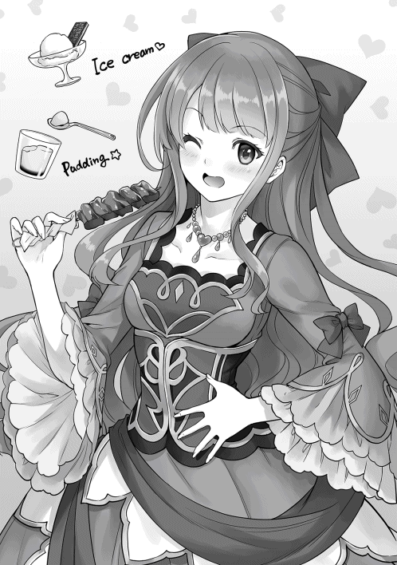
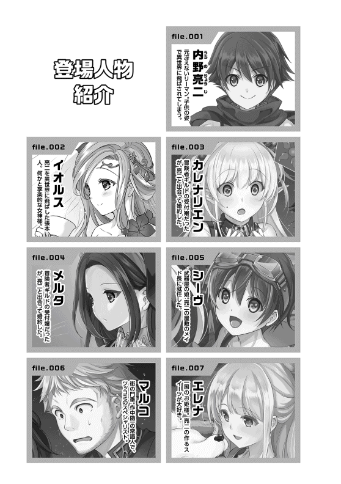
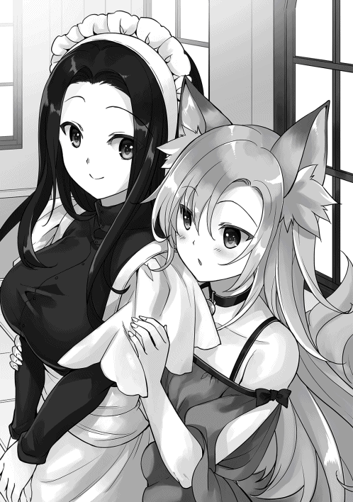
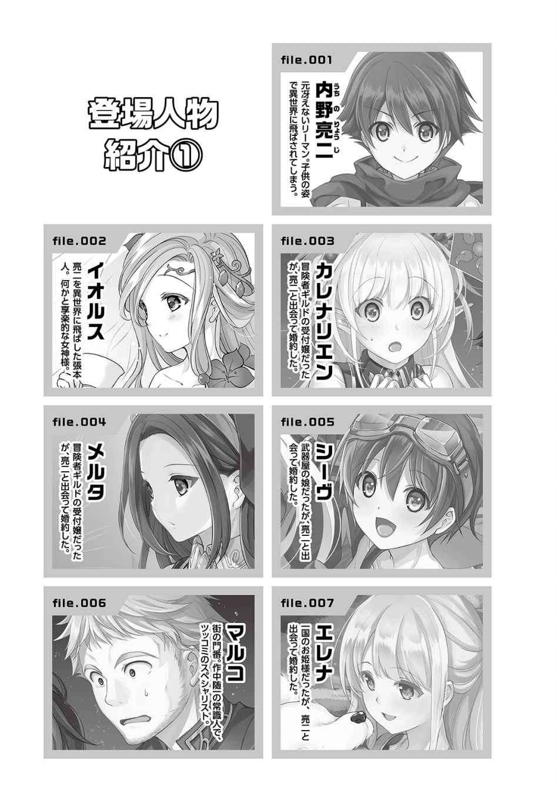
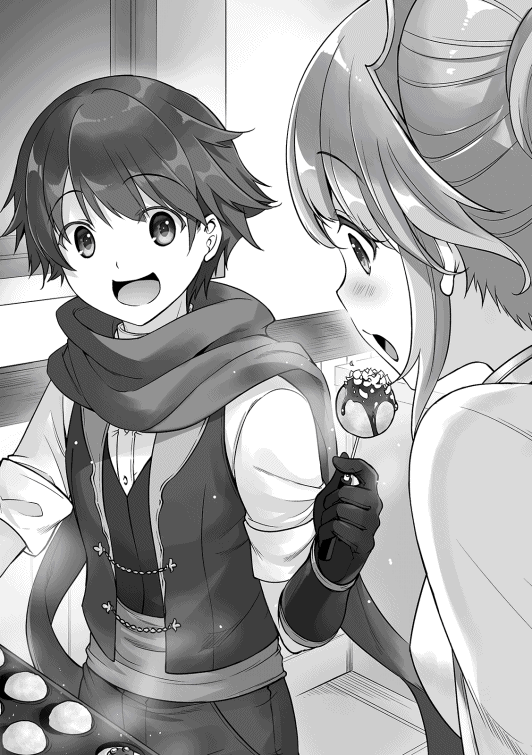
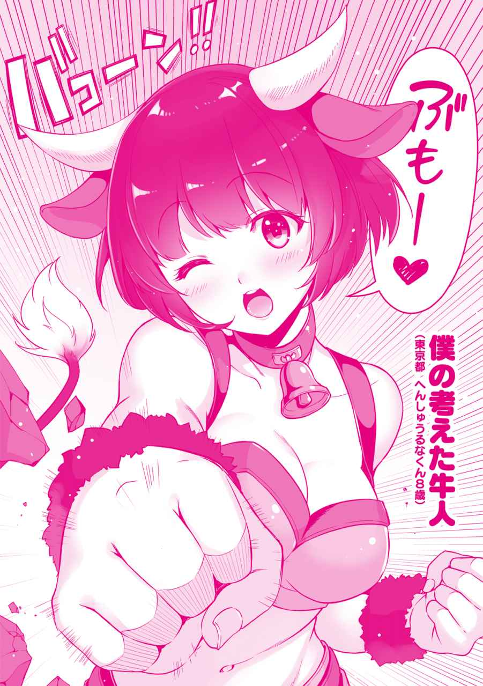

| 【合本版1-5巻】異世界は幸せ(テンプレ)に満ち溢れている | |
| 羽智遊紀 | |
| TOブックス (2019) | |
※本電子書籍は「異世界は幸せ（テンプレ）に満ち溢れている」１〜５巻を１冊にまとめた合本版です。
ＣＯＮＴＥＮＴＳ
このコンテンツは『異世界は幸せ（テンプレ）に満ち溢れている』１〜５巻を収録しています。
イラスト：miyo.N
デザイン：木村デザイン・ラボ
プロローグ 異世界に行くには準備が必要
「恋人じゃないけど？」
内野 亮二 は大学に入って初めて出来た彼女の言葉を呆然と聞いていた。付き合って一年目の記念日に呼び出したはずの女性は、亮二を見ると吐き捨てるように言葉を紡ぎだしてきた。
「えっ？ で、でも......」
「確かに食事に行ったり、映画に行ったりして、勘違いさせたのは悪かったかもしれないけど、私の事を彼女って言われると困るんだよね」
混乱している亮二に女性はため息を吐くと、勘違していると伝えながら机の上に置かれたプレゼントを手に取った。
「えっ？ なに？ ひょっとして指輪？ 安物みたいだけど、普段使いのアクセサリーとしてなら使ってあげてもいいかな？ 話はそれだけ？ じゃあ、彼氏を待たせてるから行くよ。それと用事があったら私から連絡するから、メールや電話はしてこないでね」
「えっ？ あっ！ ちょっと......」
亮二が止める間もなく席を立った女性は、喫茶店を出た所で待っていた男性に満面の笑みを向けて腕を組むと、イチャつきながらどこかに消えていった。
唖然 とした表情で固まっていた亮二だったが、周りの席にいたカップルの嘲笑 や、サラリーマンからの哀れみが混じった視線に気付くと、慌てて伝票を掴 んで支払いを済ませて喫茶店から飛び出した。
「嫌な事を思い出したな」
寝覚め悪く起きた亮二はソファから起き上がると、冷蔵庫からビールを取り出して半分ほど飲み干した。吹っ切れたつもりの苦い思い出が蘇 ったのは、高校時代からの腐れ縁である友人との飲み会が原因だった。
共に独身貴族を謳歌 していたはずの友人から、彼女が出来たと報告されたのである。先月までいないと言っていたのに、今月に入って出来たらしく自慢話を散々されてしまったのである。
「なにが『お前も彼女を持てば人生が変わる』だよ！ 俺は悪い意味で人生が変わったわ！ こっちも好きで独身貴族を謳歌している訳じゃないんだよ！ 彼女が出来るならとっくに作っているわ！」
大学時代の悲しいイベントが原因で、灰色の大学生活を送った事を思い出した亮二は、心の傷を癒 そうとビールの残りを飲み干して、もう一本飲もうと冷蔵庫を開けたが、中にビールが一本もない事に気付く。ため息を吐きながらジャケットを羽織って亮二は近くのコンビニに買いに行くことにした。
コンビニでビールや焼酎 などを買い込んで家路を急いでいた亮二を突然のゲリラ豪雨が襲 った。雨の勢いが衰えない事にゲンナリしながらコンビニの喫煙所に避難すると、亮二はタバコを吸いながらスマートフォンで、ネット小説のサイトを閲覧し始めた。
「おっ！ 更新されてるじゃん」
亮二はお気に入りに登録してるネット小説を読みながら時間を潰す事にした。高校生の時に読んだファンタジー小説からライトノベルにハマり、社会人になってからも書籍やネットで息抜きがてら読んでいるのである。
「ああ。やっぱり主人公に惚れるよな。これだからテンプレってのは安心出来るんだよ。主人公は幸せになって欲しいからな」
周りに聞かれると恥ずかしい事を口に出してしまった。慌てて周りを見渡すが、誰もいない事に安堵 し、雨の様子を確認する。
しかし、降り続けている豪雨は亮二を嘲笑 うかのように勢いをさらに増し、一向に止む気配は無かった。
「傘でも買って帰るか」
諦め顔で再びコンビニに入って傘を購入し、家路を急いでいた亮二の足がふと止まった。
「あれ？ こんな所に道なんてあったか？」
脇道を見付けた亮二は、普段なら素通りするはずが、なにかに引き寄せられるようにその脇道に入って行った。
ゲリラ豪雨が役割を終えたかのように弱まった事にも気付かず歩みを進めていると、夜分にもかかわらず明るさを増しだした周りの景色が闇夜の存在感を打ち消し始めた。
先ほどとは違う空気を感じながらも、引き返す事など考えずに歩みを進めていた亮二だが、ついに足を止めた。
「なんだ。行き止まりか」
苦笑を浮かべ、来た道に戻ろうと振り返った亮二は唖然として硬直してしまった。今まで歩いていた道が無くなっており、慌てて周りを見渡すと扉のない白い部屋になっていたからである。
「貴方は選ばれました」
背後から掛けられた声に驚いて振り返ると、今までなにも無かった場所にテーブルや椅子 が設置され、一人の女性が紅茶やスコーンを楽しんでいた。亮二が警戒しながら近付くと、紅茶を眺めていた女性は亮二に視線を向けて対面の椅子に座るように勧めてくる。
「選ばれた？」
「そうです。貴方は私達の世界に選ばれました。無理やり、こちらの世界に来てもらう事が決まりましたとの表現の方が正しいのかもしれませんね」
首を傾 げ、用心しながら椅子に座った亮二が疑問を口にすると、女性は笑みを深めてティーカップに口を付けた。
「無理やり、こちらの世界に来てもらう？ こちらの世界？」
「失礼しました、亮二さん。説明の前に自己紹介ですよね。私は幸福の神イオルスと申します」
椅子に腰掛けながら女性の回答が理解出来ずに再度質問した亮二に、女性は紅茶を注いで手渡すと自己紹介を始めた。自分の質問に答えずマイペースに話を進めるイオルスと名乗る女性に対して、亮二は苛つきながら口調を強めて確認を行 った。
「私の質問に答えて頂けますか？ イオルスさんでしたっけ？ それに幸福の神？ 宗教勧誘の方ですか？」
亮二の強い口調を気にする事なく、イオルスは紅茶を一口飲むと改めて話し始めた。
「神の存在が疑問視されてる亮二さんの世界ですから、宗教勧誘と思われても仕方ありません。ですが、私は亮二さんの住んでいる世界の神とは違う神であり、亮二さんに私達の世界へ来てもらう為に現れました。強制で申し訳ありませんが、私達の世界で自由気ままに生きて頂けませんか？ そのために疑問に思われている事にはお答えしますし、出来る限りの要望にお応えするつもりです」
「要するに、私に貴方の世界で自由気ままに生きて欲しい。その為に必要な物は便宜 を計ってくれる。という事ですか？」
「そうです。もちろん、出来ない事もありますが......」
亮二は胡散臭 そうな顔をしながら目の前に座っているイオルスの説明に対して考え始めた。
（まずは質問だよな？ なんで俺なんだよ？ こちらの世界ってどこだよ？ 自由気ままに生きて欲しいってざっくりし過ぎてて意味が分からないし、便宜を図るってなにを？ どれだけ？ それにこの女性ってイオルスだっけ？ 本当に神様なのか？ お願いを拒否したらどうなるんだ？ 他にも疑問に思う事が......）
「す、すいません。質問は一つずつお願い出来ますか？ 一気に言われたらどれから返事すればいいのか分からなくなるので」
申し訳なさそうな表情で答えたイオルスに思わず謝罪した亮二だったが、声を出していない事に気付いた。
「おい！ 俺は声に出してないぞ？」
思わずタメ口になった亮二の様子に気にする事なくイオルスは話し続けた。
「亮二さんが考えている事が分かるのは、私が神である事と、この部屋に特徴があるからですね」
「は？ 神の力？ 部屋に特徴？ な、なにを言ってるんだ？」
混乱してタメ口状態のままの亮二に、イオルスは微笑みかけながら詳細な説明を始めた。
「まず最初に疑問に思われた『なぜ自分なのか？』についてですが、亮二さんの魂が私の世界と同じ構造をしているからです。亮二さんの魂を見てビックリしましたよ。私の世界の住人がこっちに間違って来たんじゃないのかって。ですので亮二さんを見かけた時は嬉しかったです。本来は二年掛かる魂の研磨作業の必要がなくて、すぐに来て頂けますからね。それと心の声が私に聞こえたのは、この部屋が精神世界に近いので肉体との境界線があやふやになって思考が外に漏れやすいのと、私がセーフィリアを治める全知全能の神なので思考を読むのは造作 ないことが理由です」
「はぁ。全く訳が分からない事が分かりました。取り敢 えず話だけは聞きますよ」
ドヤ顔で説明をしているイオルスに理解が出来ない事を伝えた亮二は、仕方なく話を促 した。
「まずは、私が治める世界のセーフィリアですが、亮二さんの世界には存在しない魔法や魔物が出てくる世界です。亮二さんは、その世界で自由気ままに暮らして頂ければと思います。ただ向こうで悪い事ばかりされると、亮二さんに天罰を落とさないといけなくなるので注意して下さいね」
話し終わって満足気に紅茶を飲んでいるイオルスに、亮二は首を傾げて質問をした。
「頭の中で考えていた疑問に大体答えてもらいましたが、まだ全部は答えてもらえてませんよね？」
「申し訳ありませんが、先程もお伝えした通りお願いの拒否は不可能だと思ってください。亮二さんが入ってこられた部屋は、入られた瞬間に元の世界への道は閉じてますので」
申し訳無さそうに答えるイオルスを見ながら、選択の余地がない事を理解せざるを得なかった亮二は、軽く嘆息 して現状を受け入れるとイオルスに向かって答えた。
「分かりました。そちらの世界に行きましょう。だけど援助はお願いしますよ。ちなみに援助ってどのくらいして頂けるのですか？」
「ありがとうございます！ 援助や願い事については基本的に制限はありません。世界中の人を奴隷にする魔法とか、虐殺三昧 するための凶悪な武器とか、世界を壊滅させる強力な魔法とか、世界を混乱や消滅、破滅させるようなお願いじゃなければ叶えますよ」
「なんでそんなにバイオレンスな考えになるの？ ひょっとしてそっちの世界って、かなりヤバい？」
イオルスの台詞に完全に引き気味になっている亮二に、慌ててイオルスはフォローを始めた。
「いえいえ！ 大丈夫ですよ？ 問題ないですよ？ 海賊王や山賊王、破壊王や魔王なんかがあちこちにいるだけですから！ ダイジョウブダヨセーフィリアハコワクナイヨ！ コッチニオイデヨ！」
「全然大丈夫じゃないじゃん！ なんだよ海賊王とか破壊王って！ しかも大丈夫って言葉の後が疑問形だし！ 最後は片言の日本語じゃねえかよ！」
「ひょっとして、山賊王や魔王は大丈夫系ですか？」
「大丈夫なわけないじゃん！ それになんだよ大丈夫系って！ お前がサラッと海賊王とか言ったから他の奴らは思わず聞き流しちまったよ！」
「亮二さん」
「な、なんだよ？」
イオルスに真剣な声で名前を呼ばれた亮二は思わずどもりながら返事をしてしまった。
「キャラがぶれてますよ？」
「お、お前が言うなぁぁぁ！」
広い部屋に亮二の叫び声が響き渡るのだった。
亮二が思いっきり叫んでから五分ほど経った。全力で叫んだ後に紅茶を勢いよく飲み干し、グッタリした身体を労わるように深く腰を掛けた亮二は、その状態で考え込んでいた。
（どうあがいても異世界に行くのは決定事項だもんな。それだったら思う存分援助をしてもらってやる。まずは異世界で生きていく上で必要な強靭な肉体と魔力をもらおう。そんな事出来るのか聞いとくか）
「イオルスさん」
「はい。決まりました？」
紅茶を飲みながらクッキーやスコーンを楽しんでいたイオルスは、心の中で質問してきた亮二に嬉しそうな顔で尋ねてきた。
「援助って、内容に制限はないんだよな？」
「実は、別世界から私の世界に来て頂くのは亮二さんが初めてなんですよ。だから、私も亮二さんにどのくらいの援助をすればいいのか分かってないんです」
「じゃあ、俺が試金石 になるって事か。だったら遠慮無く一個目のお願いをするわ」
亮二が気楽な感じで、願いを伝えようとすると、イオルスも軽い感じで返事をしてきた。
「はい。なににしますか？」
「俺が異世界でトラブルに巻き込まれても対応出来る身体能力」
「おぉ。物凄く抽象的ですね。仰っている意味は分かりましたので安心して下さい」
要望が通った事にホッとしていると、その様子を見ていたイオルスが具体的な質問をしてきた。
「つまり、いきなり英雄クラスでスタートって感じですか？」
「さすがにそんなチート状態でスタートはやりすぎだろう。そっちの世界はレベルがどのくらいあればベテランって呼ばれるんだ？」
「そうですね。私の世界にはレベルという概念 がないので難しいですが、こっちのゲームで言うと、レベル二〇もあれば一人前さんじゃないですかね？」
「結構低いんだな」
「六〇もあれば英雄さんですからね。レベルが六〇あってもソロだと倒せないのが魔王なんですけどね」
「魔王どんだけ強いんだよ。ちなみに魔王は倒さなくてもいいんだよな？」
「倒したいのなら倒してもいいですよ。ただ、今の魔王は世界征服を目指していないようですので、そっとしといてもらっていいですけどね」
「世界征服を企まない魔王って。思いっきりテンプレだな」
「さすが亮二さん。異世界モノに詳しいですね」
「異世界ってジャンルで書籍があるくらいだからな......。って、なんで俺が異世界モノに詳しいのを知っている？ 確かに俺の趣味は読書で異世界系は好きだけど。あぁ、イオルスは心が読めるんだったよな。でもなんで心が読めるだけで俺が異世界モノに詳しいって話になるんだ？」
亮二が首を傾げながら問い掛けるような視線を投げると、満面の笑みを浮かべたイオルスが胸を張って自慢気に説明を始めた。
「ふっふっふ。私に隠し事なんて出来ないんですよ！ 相手に触らなくても、意識を相手に向けるだけで記憶もバッチリ覗 けるんですからね」
「物凄いドヤ顔だな。あまり心を読まれるのは嬉しくないからサクッといくな。俺のレベルは二〇スタートで、ステータスは通常の二倍程度。体力や魔力もレベル二〇の二倍くらいになるようにしといてくれ」
「なるほど、そのレベルなら一人前さんですもんね。今気付いたんですが、話し方変わりました？」
「当たり前だろ。あれだけ叫んだ上に、考えも読まれてるなら社会人モードで話をしても意味ないじゃん。連れと話している時はこんな感じだしな。問題ないだろ？」
「もちろんです。私も話しやすくていいですよ。心の声と、出てくる言葉が違うと違和感しかありませんから」
「そんなもんか？」
「そうですよ。だから腹黒さんでも、無口さんでも、恥ずかしがり屋さんでも、私にかかれば全て丸っとお見通しです」
「心が読めるのが嬉しそうだな」
にこにこしながら紅茶を飲むイオルスに呆れながら、話が全く進んでいない事に気付いた亮二は話を続けた。
「で、二つ目いいか？」
「もちろんです」
「オンラインゲームのようなインタフェースが出るようにしてくれ」
「ステータスを見たり、ヘルプ参照が出来るようにしたいって事ですか？」
「それもある。それと、ステータスアップやスキル取得にポイントを割り振るように出来ると最高だよな」
「その辺りはやった事ないんで、どんな感じになるか分かりませんが、それでもいいですか？」
「無茶を言っているのは分かっているから出来なくてもいいよ。使い勝手が悪かったら利用を諦めるから」
イオルスが少し考えて出した答えに亮二は気にする事なく、次のお願いをする。
「じゃあ、次の援助についてだけど、ストレージを持ちたい」
「ストレージってアイテムボックスとは違うんですか？」
（やっぱり、ストレージだけじゃあ伝わりにくいか。イオルスは記憶や考えが読めるからどんな感じかイメージしたら分かってくれるかな？ パソコンのフォルダみたいに、多階層に出来て、検索機能やドラッグ＆ドロップを使って整理整頓 出来れば最高だよな。それに、異世界モノでよくある物を入れても時間が進まないようにして、温かい物や冷たい物をいつでも出せるようにしたいな。あと、出し入れをイメージで出来るようにすると、間違って出し入れするかもしれないから、一工夫が欲しいところだな。それにしても小説の主人公達はイメージだけで上手く使いこなしているよな。俺だったら『腹減った。スープ飲みたい』って思わずイメージして熱々のスープで火傷しそうだ。形状はやっぱり布袋タイプか？ イオルスはアイテムボックスって言ったけど、セーフィリアの世界にあるアイテムボックスはどんな感じなんだ？ どれくらいまで入る？ 大きい物は入れられる？ アイテムボックスは誰でも持てるのか？ もし、ストレージとして持てるなら同じ種類だったら九九個とか括 りたいな。それに......）
「ス、ストップ。ちょっと待って亮二さん！ 一気に喋 りすぎです！」
イオルスは考え込んでいる亮二を慌てて止めると、セーフィリアでのアイテムボックスについて説明を始めた。
「基本的にアイテムボックスは冒険者や商人が持っている道具です。アイテムの出し入れにはキーワードが必要ですし、入れる時には所有権が本人にある事が明確でないと収納出来ません。もちろん出し入れは本人しか出来ません。アイテムボックスの説明としては、こんな感じですね」
「なるほど。アイテムボックスについては分かったけど、俺がイメージしたストレージ風にする事は出来るか？」
亮二の質問に「どうだろう？ 出来るかな？」と小首を傾げながらしばらく考え込んでいたイオルスが答えを返してきた。
「分かりました！ かなりチートなアイテムボックスですが良しとしましょう！ ただし、生物は入れられませんよ。生肉とかは入るようにしますが」
「なんで生肉を例に出した？」
「ＢＢＱとかしたいじゃないですか！」
「お前がする訳じゃないだろ......」
「きっと役に立ちますって」
「まあ確かにな。じゃあ俺がいつも読んでる小説と同じ感じで頼む」
「小説と同じ感じって言われた！ かなり難しい事を言ってるんですよ！ 亮二さんは。セーフィリアの神である私だから出来るんです！ その辺は分かってますか？」
頬を大きくふくらませながら胸を張ってドヤ顔をしているイオルスに、苦笑いをしながら感謝すると、次の援助について考えるのだった。
「ちなみにセーフィリアの貨幣ってどんな感じなんだ？ やっぱり金貨とか出てくるのか？」
漠然と考えながら質問した内容にイオルスが答えた。
「そうですね。亮二さんがイメージされている通り金貨、銀貨、銅貨、賤貨 って感じです。一〇〇賤貨で一銅貨、一〇銅貨で一銀貨って感じになります。ちなみに魔道具を除いた物価は全体的に安いんで超お得ですよ！ 大量の金貨は重くて持ち運べないので、その際は宝石に換 えられますね」
「宝石に換えるって大丈夫なのか？ 価値が分かりにくいから信用出来ないだろ？」
大学時代に付き合っていたと思っていた彼女に指輪をプレゼントした際『え？ こんなに小さいの？ もらえる物はもらってあげるけど』と言われた事を思い出したのだ。亮二にとって、宝石は絶望的なトラウマを思い出さすアイテムでしかなかった。
宝石に対して懐疑的になっている亮二にイオルスが心の底から頷きながら慰 めてきた。
「うん。うん。分かりますよ、亮二さん。そんな涙ナシでは語れない過去があったら宝石に対して嫌悪感を持ちますよね」
「心を読んでも口に出すなよ。人の古傷を抉 らないでくれ」
見るからに落ち込んだ亮二に慌ててイオルスはフォローを入れた。
「大丈夫です！ そんな懐疑的な目しか持てない亮二さんに朗報です！ セーフィリアにはギルドに鑑定士がいますから安心してください。鑑定士が出した値段はギルドが責任を持って貨幣に換えてくれますよ。金貨一〇〇枚で宝石一個って感じです。宝石の大きさで価値は変わりますが、基本金貨一〇〇枚単位と思ってください」
「残念な人扱いするなよ。宝石の価値が保証されてるなら問題ない。じゃあ三つ目の援助として当面は働かなくても大丈夫なくらいの資金をストレージに入れといてくれ」
「え？ 異世界ライフのスタートがニートって。つまり働きたくないでござ......」
「そんな訳ないだろ！」
イオルスの台詞の途中でツッコミを入れた亮二は、生活の資金が欲しい理由の説明を始めた。
「いきなり、異世界に放り込まれても無一文じゃなにも出来ないだろ。セーフィリアでなにをするかを決める時間も欲しいし、遊んで暮らせる金じゃなくても当座の資金は欲しいんだよ」
「金額はどうされます？ ストレージなら数量を気にする事なく入りますよ？ 金貨×九九を一〇個とか」
「それでいいか。金貨があり過ぎても困らないもんな。じゃあ、そんな感じで金貨や銀貨なんかも入れといてくれ」
「さり気なく銀貨も追加した」
「うるせえよ。市場で買い物する時に金貨をいきなり出したら相手が困るかもしれないだろ？」
細かいツッコミを入れるイオルスにゲンナリしながらも亮二は答えるのだった。
「もう、これくらいで大丈夫ですかね？」
満足げな顔をしているイオルスに亮二は最後の援助を頼んだ。
「じゃあ最後のお願いを頼む。最初のサービスって事で、イオルスがセーフィリアで必要だと思う物をストレージに適当に入れといてくれよ。あっ！ 資金とは別にな」
「え？ そんな無茶振りするんですか。お金の件だけでも十分にお願いを聞いていると思うんですけど。それ以外ってなにを渡したら良いんですか？」
「まっ！ そこは初回特典って事で適当に」
「さっきまでのお願いだけでも亮二さんはセーフィリアで無双 出来ますよ。素敵なスタートを切るには十分じゃないですか？」
気楽な感じで両手を合わせてお願いしている亮二に苦笑いしながらイオルスが答えた。
「でもさ、イオルスも俺に長生きしてセーフィリアで暮らして欲しいんだろ？ 世界中を旅する事も考えないといけないしさ。だから、ちょっとだけ気持ちを込めてくれよ。神様の慈悲 ってやつでさ」
「そんな所だけ神様扱いして！ 分かりました。それでは幸福の神イオルスの名において、亮二さんが私の世界で我がもの顔で生活出来るような物をストレージに充実させておきます！」
「おぉ、幸福の神は太っ腹だね！」
イオルスの宣言に満足げに合いの手を入れた亮二は、本当に最後の質問を投げかけた。
「で、ぶっちゃけどうやってセーフィリアに行けばいいんだ？ 神の力で転送とかか？」
「それはですね、あちらの扉から行ってください！」
「扉？ うぉ！ いつの間にか扉が現れている」
イオルスが部屋の奥をハイテンションで指差すと、今までなにも無かった部屋に扉が現れていた。
「亮二さんの気持ちがセーフィリアに向いたので、あちらの世界も受け入れ態勢になったんですよ」
「なるほどね。了解！」
いきなり現れた扉に驚きながらもノブに手をかけて軽い調子で答えると、亮二はイオルスの方を向いた。
「これで、契約成立だな。短い間だったけど楽しかったぞ。神様だからもう会う事もないだろうけど、あっちに行って神殿でも見かけたら拝んどくよ」
「もちろんです！ 無理やり行ってもらうのは申し訳ないですが、初めてのパターンだからって事で、かなり援助をしてるんですからね！ 私の神殿を見かけたら、たっぷりの寄付をした上で拝み倒してください」
亮二の調子に合わせて軽く返事した後でイオルスは笑顔で爆弾を落とした。
「ちなみに最初に到着する場所についてですが、私もどこに出るのか分からないんですよ。ごめんなさい！ てへぺろっ。魔物にいきなり襲われる事はないとは思いますが、十分に気を付けてくださいね！ これってある意味テンプレですか？ それともフラグ？」
「ちょ、おまっ！ ふざけんなよ！ せめて安全なと......」
最後までイオルスに苦情を言えずに、亮二は扉に吸い込まれていった。亮二がいなくなった部屋は先ほどまでの喧騒 が嘘 のように静寂に包まれた。しばらく扉を見つめていたイオルスは小さく呟 くと紅茶を飲み始めるのだった。
「亮二さんとセーフィリアの未来が幸せに満ち溢れますように」
「ふざけんなよ！ 最後までしっかりと面倒見ろよ。なにが『これってある意味テンプレ？ それともフラグ？』だよ。『てへぺろ』じゃねぇよ。いきなり魔物の群れの中とかだったら始まる事なく、終わっちまうじゃないか」
吸い込まれる様にセーフィリアへ続く扉をくぐった亮二は、引っ張られる感覚に身を任せながら毒づいていた。何気なく体を触っていると、腰に皮袋が括りつけられている事に気付いた。よく見ると服装も変わっており、ゆったりとした旅人風の服とブーツになっていた。
「セーフィリアに行くのにジャージじゃ駄目だろうからって事でイオルスのプレゼントなんだろうな。ちなみに、この皮袋がストレージか？ あっちの世界に行くまでどのくらいかかるか分からないけど、せっかくだから中身の確認をしとくか。イオルスはなにを入れてくれたんだ？」
ワクワクしながら呟いていたが、引っ張られる感覚のままだとストレージの中身をまき散らしそうで、代わりにインタフェースを起動して中身を確認しようとした亮二はある事に気付いた。
「あれ？ どうやって使うんだ？」
イオルスからインタフェース起動の仕方を聞いていない事を思い出すと、亮二はため息を吐きながら呆れるように呟いた。
「あ、あれか？ イオルスのドジっ娘属性か？ やだなイオルスさん。そんな属性持ちだなんて。惚れ直してしまうわ。そもそも惚れてないけど。まあ、聞いてない俺も悪いけどな」
亮二は独りでノリツッコミをしながら、異世界モノに書かれていたインタフェース起動方法を思い出そうとしていた。
「確か、イメージが大切なんだよな。オンラインゲームを思い出すのが、分かりやすいとかだったよな」
仕事が忙しくログインしていないオンラインゲームのインタフェース画面を思い出しながら亮二はイメージを固めていった。
「おっ！ 出た！」
亮二の目の前に見慣れた画面が表示された。目の前三〇センチにメニュー画面があり、画面には様々な文字が羅列されていた。皮袋を手に持って検索のイメージをするとイオルスさんの幸福な皮袋と書かれた項目が表示された。そのネーミングセンスにゲンナリしながらクリックすると画面に説明が表示された。
イオルスさんの幸福な皮袋
幸福の神イオルスが認めた人間の為だけに作成された、イオルス神の加護が与えられた皮袋である。階層構造を利用してアイテムを保存する事が出来る上に、通常のアイテムボックスに比べて容量や収容可能サイズが比較にならないほど巨大である。また、同一アイテムをまとめて保存する事が出来る。
「さすがイオルス。ちゃんと仕事してくれたんだな。フレーバーテキストにここまで書かれているなんてな。ネーミングセンスはアレだけどな」
亮二はインタフェースに書かれている内容を確認しようとした瞬間に、突然上空からイオルスの声が降ってきた。
「ぴんぽんぱんぽぉぉん！ 当機は間もなく目的地に到着しまぁす。膝の上のお荷物などお忘れのないようにお降り下さい！」
「なんの乗り物を参考にしているんだよ！」
ふざけた内容に青筋を立てながら叫ぶ亮二に対して、さらに人を食ったような声が響き渡った。
「いま、『なにを参考にしてるんだよ』と叫んだ貴方！ この音声は自動音声です。そして、別になにも参考にしてませんよ。残念でした。ぷぷぷ」
「ふざけんな！」
亮二は激怒したが、イオルスの自動音声は説明を続けていた。
「冗談はさておき、もうすぐ扉が三枚現れます。どの扉を選んでも到着する時代は同じですが、一つ目の扉は『生まれた時から始めます！ でも、生まれる場所は選べません』です。場合によったらなにも出来ずにいきなり人生が終わるかも。二つ目の扉は『一三才でスタート』です。セーフィリアの成人式に合わせました！ 微妙に子ども扱いされるのが玉 に瑕 かも。成人式をしたのに子供扱いってどっちなんだよ！ って感じです。三つ目は『今の年齢のままでＧＯ！』です。ただし、それなりの年齢のオッサンが突然現れて、セーフィリアで無双を始めることになるので、世界各国から目を付けられて狙われるかも！」
「口調はともかく、思ったよりも悩む内容だな。それにしてもデメリットを強調して説明するのはなんでだ？ 一つ目なんて異世界モノならよくある設定なのに赤ちゃん状態は危険って言われると二の足を踏むわ！ 三つ目も世界各国から目を付けられる状態なんて、ビビって無双なんて出来るかよ！ どう考えても二つ目を推奨 しているよな」
亮二の呟きを聞いていたのか、絶妙のタイミングでイオルスの声が再び響いた。
「今、一つだけ用意しといたらいいじゃんと思った貴方！ 正解です！ ノリで三つ考えたから、もったいないんで用意してみました。転生する件については今後のアンケート内容で改善されていきます。アンケートなんてないんですけどね」
「だったら言うなよ！」
思わずツッコミを入れてみたが反応がないところを見ると、最後まで自動音声のようであった。手が込んでいるのか、いないのか判断に苦しむような状態に思考能力が止まりそうになった亮二は、頭を強く振ると扉に到着するまで必死に考え続けた。
「よし！ イオルスの思惑に乗るのは癪 だけど、どう考えても二番目の扉だよな」
亮二は二番目の扉に手をかけて思い切り押してみた。
「ん？ 開かないぞ？」
「ぷぷぷ。実はこの扉は引き戸なんですよね」
「おまっ、今度会ったら本当にしばくからな！」
思わず叫びながら扉を引いた亮二の周りを白い光が包み始めた。目が開けられなくなるほど眩 しくなり、亮二は思わず目を閉じて蹲 ってしまった。しばらくすると光が収まり始め、恐る恐る目を開けると、目の前には大きな木がそびえ立っていた。
「イオルスがあんな事を言うからビビっちまったじゃないか。そういえば結局、ストレージの中身も調べてないじゃん」
イオルスのフラグ発言が唐突に浮かんだ亮二は、慌てて立ち上がった。周りを見回してなにもいない事を確認すると安堵のため息を吐く。安全を確認した亮二はイメージを固めながらインタフェースを起動して、索敵 モードをオンにすると、索敵半径を一キロメートルにして調べ始めた。
「この青い点はなにか魔物か動物なんだろうな。青って事は敵として認識してないって事だろうから、しばらくは大丈夫か。じゃあ安心してストレージの中身を確認出来るな」
亮二は呟きながらインタフェースを起動させて、イオルスさんの幸福の皮袋をクリックすると中身の確認を始めた。
イオルスさんの幸福の皮袋
《お財布袋》
・金貨×九九
・銀貨×九九
・銀貨×九九
・銀貨×九九
・銅貨×九九
・銅貨×九九
・銅貨×九九
《へそくり―ご利用は計画的に―》
・宝石《小》×九九
・宝石《中》×九九
・宝石《大》×九九
《癒し部屋》
・ポーション×九九
・ポーション×九九
・マナポーション×九九
・マナポーション×九九
《日用道具》
・テント
・寝袋
・炊飯グッズ
・衣服
・ランタン
《食料品》
・パン
・飲み物
・生肉
・野菜
・調味料各種
・マシュマロ
《そんな装備で大丈夫？》
《問題ない》
・ショートソード
・ロングソード
・杖
・皮鎧
・バックラー
《いいのをくれ》
・ミスリルの剣
・ミスリルの服
・ミスリルの腕輪
・不可視の盾形ガントレット
《ひ・み・つ》
・閲覧 不可能
「おぉ！ 胸張ってドヤ顔してただけあって充実してるな。階層にもなってるし、武器防具も充実してるな。お！ 金もたっぷり入ってるじゃん。安心してしばらくはニートが出来るな。やるじゃんイオルス。ところでこの《ひ・み・つ》ってなんだ？ クリックしても閲覧不可能としか出ないんだけど？」
しばらく《ひ・み・つ》をクリックしていたが反応がないので諦めて後日調べる事にすると、インタフェースを表示させた状態で色々とアイテムを出し始めた。
「硬貨ってこんな感じなんだな。思ったより小さいな。でか過ぎるよりいいけどな」
貨幣を何枚か出していじりながら感想を呟いていた亮二の顔が険しくなった。
「ん？ 敵が迫っているな。敵の数は三か。やっぱりフラグになっちまったじゃないか」
ゲンナリしながら索敵モードを確認すると、赤い点が自分に向かって来るのがはっきりと映っていた。亮二はストレージの《いいのをくれ》フォルダからミスリルの武器防具を急いで取り出すと慌てて身に着けていく。
索敵モードでは大きさや強さまでは分からないが、赤い点が自分に対して敵意を持っている状態を示している事は分かった。亮二はストレージから取り出した武器防具を装備して、それぞれの状態を確認し始めた。
「それにしても初めての戦いが複数とはね。相手によっては素早く逃げないとな」
そう呟きながら、逃げる事を視野に入れて戦う事を決めた。初めて握るミスリルの剣の長さや重さを確認しながら、相手が向かってくる方向に意識を向けて腰を落として剣を構えた。
「へっ？ キノコ？」
敵意を振りかざして亮二に向かってくるのはキノコのお化けだった。どの角度から確認しようと巨大なシイタケに手足の様な触手が生えているだけである。大きさは一〇〇センチほどであり、動きも緩慢で連携も取れていないようであった。
亮二が非現実的な状況に呆然としていると、突出していた一体から触手が伸びてきた。亮二は軽くステップをして躱 すと、全力でミスリルの剣を横に薙 ぎ払った。剣は亮二の手に抵抗感を与える事なく、キノコを上下に綺麗に斬 り裂 いて動かなくなったのを確認して、キノコのお化けを倒した事を確信する。
「思ったよりも抵抗なく殺せたな。見た目がキノコってのが良かった。これが人型や動物だったりしたらあふれる血を見て駄目だったかもな」
誰がいる訳でもないのに口に出したのは興奮しているからであろう。亮二は遅れてきた二体のキノコに向かって駆け出すと、上段から鋭く振り下ろした。一体目に対して圧勝したのが油断につながったか、ミスリルの剣はキノコのお化けを軽く真っ二つに切り裂くと、勢い止まらず地面に突き刺さった。
地面に埋まっていた大岩に刺さってしまったようで、大きな音が辺り一面に響き渡った。戦いに慣れた人物なら剣を手放して三体目と距離を取ったであろうが、初めての戦闘でテンションが上がり過ぎて判断力が鈍った亮二は、剣を手放すのではなく引き抜く事を選択してしまった。
「くっ！」
大岩が思ったよりも固く、ミスリルの剣を引き抜く動作が一瞬遅れてしまった。戦いにおいての一瞬は致命的である。引き抜いて体勢を崩しながらも慌てて剣を構えようとしたが、左から飛んできた触手を避ける事が出来ずに、反射的に防ごうとして上げた左手に力を入れた。
襲ってくるはずの痛みに耐えようと思わず目をつぶった亮二だったが、いつまで経っても衝撃も痛みも襲ってこない。恐る恐る目を開けると、うっすらと青い盾のようななにかが触手を防いでいた。
不可視の盾型ガントレットが亮二を守ってくれたらしい。ホッと一息を吐くと、攻撃動作に入ろうとしていたキノコのお化けに、亮二はミスリルの剣を上段から振り下ろした。
「はぁはぁはぁ。うえっ！ つ、疲れたぁ。戦いってこんなに疲れるんだな。それにしても初戦から複数相手でよく勝てたな。なんで逃げる選択肢を選ばなかったんだろう？」
戦闘開始から数分後には三体とも動かなくなり、周りに魔物がいない事を確認した亮二は、五体満足で無事に魔物を倒せた事に安堵すると力が抜けたようにへたり込んだ。自分で思っていたよりも興奮していたらしく、息が荒れて整わないのである。
初めての戦闘で逃げる事を思い付かなかったのは、異世界に来て考える事が多すぎたのと、密かに戦闘を楽しみにしていた事が大きかったのだろう。亮二にとって異世界とは本の中の世界であって、忙しさの中知らず知らずに溜まっていく日頃のストレスを発散させる為の清涼剤 だった。
それが突然、目の前に現れ本当に異世界に来てしまった。表面上は冷静に受け入れているように見えても、心の中では、自分は選ばれた主人公キャラじゃないかと思ってしまったのである。微妙とはいえ神様にまで会って異世界行きを頼まれたのだから。
「そうだよな。はたから見たらどう見ても異世界モノの主人公だよな俺って。間違いなくテンションも上がるよな」
ストレージに水が入っている事を思い出して取り出して飲もうとしたが、水筒を取り出して蓋 を外す時に指が震えている事に気付いた。がぶ飲みしながら何とか呼吸を整える。
「いつの間にかインタフェースも消えてるな」
インタフェースを出したままでは戦えないようである。最初に出す時も集中力が必要だったので、戦闘中に自動的に解除されたのであろう。キノコのお化けが気になった亮二は、インタフェースを起動するとキノコのお化けに手を当てて検索を始めた。
キノコのお化け
セーフィリアに広く生息する魔物である。知性は無く、動くものを見つけると麻痺性 の毒を触手から出して攻撃してくる。麻痺で動けなくなった獲物に菌糸を埋め込んで仲間を増やしていく。人間にとっては麻痺性の毒は動きにくく痺 れるくらいなため、一般人でも二〜三人いれば討伐 は可能である。倒した後はキノコと同じなので、乾燥させて保存食としても活用されている。触手は舌が痺れる為、食べる際には注意が必要。討伐対象ランクＨ。
「キノコのお化けって、名前からしてそのまんまかよ！ ひょっとして俺って主人公キャラかもとか思ってたけど、一般人でも討伐可能って書いてあるんだからめちゃめちゃ弱いじゃん」
武器として最高クラスのミスリルの剣を使って、実は弱かったキノコのお化けを倒して自信満々になっていた亮二は、誰もいないにもかかわらず恥ずかしさで赤面しつつ、倒した三体をストレージに収納するために近付いた。
「せっかく倒した初魔物だから、テストも兼ねてストレージに保存してみるか。保存食にもなるらしいしな。そう言えばストレージにどうやって入れるんだっけ？」
亮二は動かなくなったキノコのお化けを前にして考え込んでいた。装備やアイテムを出す時はインタフェース越しにアイテム欄をクリックして武器防具を出したので、特に気にならなかった。試しにフォルダにあるアイテムの金貨をクリックすると目の前に金貨が現れた。
「インタフェースを利用してアイテムを取り出すのは簡単だな。でも街中で突然、なにもない所からアイテムや貨幣を出したら目立つよな。やっぱり街中でストレージ越しでアイテムを出すようにしよう。確か、あの部屋でイオルスに聞いたアイテムボックスからアイテムを取り出す方法は『オープン』と唱えるんだったよな？」
イオルスと会った白い部屋で聞いたストレージであり皮袋の姿をしたアイテムボックスの使い方を思い出しながら、皮袋に左手を添えて金貨をイメージして声を出してみた。
「オープン！」
なにも変化がない状態に亮二は戸惑いながら「オープン！ オープン？ オープーン！」と連呼したが亮二の声が森に虚しく吸い込まれるだけで金貨は現れなかった。
「やり方が間違ってるのか？ そんな難しい事はないと思うんだけど......」
首を傾げながらインタフェースを起動してイオルスさんの幸福な皮袋が表示されているのを確認すると、その利用方法について調べ始めた。
イオルスさんの幸福な皮袋
取り出し方
皮袋に左手を添えて「イオルスさん素敵！」と大きな声で何回も言いましょう。とてもすっきりとした幸福感に包まれます。
取り出し方は二種類です。インタフェースを起動して該当アイテムをクリックします。または、皮袋に手を入れてから『オープン！』と唱えます。
しまい方
皮袋に左手を添えて「イオルスさん頑張って！」とセーフィリアに響き渡る声で言いましょう。嬉しさのあまり小躍りしてはしゃいでいる事でしょう。
しまい方も二種類です。インタフェースを起動して該当アイテムを触りながら入れたいフォルダを触りましょう。同じアイテムの場合はまとめられます。もしくは、アイテムを皮袋に入れてから「クローズ！」と唱えます。
「利用方法はイオルスが好き勝手に書いているみたいだな。やり方さえ分かればいいんだけどさ。とりあえずキノコのお化けの大きさだとそのまんまでは入らないよな。小さく切るのもめんどくさいし、やっぱりインタフェースからしまうか」
イオルスの説明文に呆れながらインタフェースを起動するとキノコのお化けを収納しようとして、ふと気が付いた。
「あっ！ そうだ。どうせだったら新規フォルダを作ってみるか。フォルダの右上にある新規作成ってボタンみたいなやつだよな？ 名前は《倒した魔物》にしとくか」
新規作成と書かれているボタンをクリックすると《新しいフォルダ》と表示されたので《倒した魔物》に名前を変更し、キノコのお化けを右手で触りながら左手でフォルダを触ると一瞬で消え、「倒した魔物」フォルダにキノコのお化けが表示された。同じ手順で残りの二体を触るとキノコのお化け×三となるのだった。
「数が分かるっていいよな。時間がある時に干して保存食にしておくか」
亮二は初めての戦闘で思ったよりも無難に勝てたが、ミスリルの剣に不可視の盾形ガントレットが無かったらキノコのお化けの獲物となっていた事を考えると、ドヤ顔のイオルスを思い出しながら心の中で彼女に感謝をするのだった。
「どうしてこうなった？」
げんなりした顔で亮二は襲い掛かってくるキノコのお化けにミスリルの剣を振るっていた。キノコのお化け三体を収納した後、インタフェースで地図を呼び出して最寄りの街を検索したところ、歩いて二時間と出たので街に向かって歩き始めたのだが、日本では魔物に遭 う事が無かった亮二は気楽な感じで歩いていた。
インタフェースを起動して油断していたのもあるのだろう。街まで徒歩で一時間を切り、休憩を取ろうと広場に入った。しかしそこで、持っていた拳 大の石を、広場の中心に向かって何気なく投げたのが間違いだった。
「インタフェースでは赤い点なんて出てなかったのに！」
亮二が足を踏み入れた場所はキノコのお化けの巣だったらしい。亮二が投げた石が運悪く休眠中のキノコのお化けに当たった為に、目覚めたキノコのお化けが仲間を増やそうと亮二を襲って来たのである。
広場に入るまでに数回戦闘をしていた亮二は二〜三体なら簡単に対処出来るようになっていたが、土中から目覚めたキノコのお化けは数えるのも馬鹿らしくなるほどに溢れてきており、亮二は休む間もなく捌 き続けた。
戦闘開始から三〇分ほどが経ち、周りに動く物体がいなくなった事と、インタフェースの索敵モードで敵意がある物体が半径一キロメートル以内にはいない事を確認した亮二はようやく剣を収めた。
「さすがに戦闘に慣れたけど飽きた。どんだけ湧いてくるんだよ。明日は間違いなく筋肉痛だわ」
倒したキノコのお化けをボヤキながらストレージの《倒した魔物》フォルダに入れていった。全て収納したのを確認して、ふと気になった亮二はフォルダを表示させ、その数を見て愕然 となった。
《倒した魔物》
・キノコのお化け×九九
・キノコのお化け×三六
「どんだけ倒してるんだよ。しばらくはキノコ料理には困らないな」
亮二は疲れた表情をしながら呟くと街に向かって歩き始めた。
一章 出会いと職業選択
「やっと着いた！ 誰だよ、最寄りの街まで二時間って言ったのは。あれからキノコのお化けばっかり襲ってきやがって！ 他にも魔物がいてもいいんじゃね？ 疲れただけじゃん！ 最初の二つ名はキノコマスターで決まりだな！ 大体、イオルスがあんな場所に転移させなければ......」
門番の耳に届いたのは子供っぽい高い声だった。何事かと声の方に意識を向けると、ぶつぶつとうつむき加減で独り言を呟きながら、小さな人影が疲れきった表情でこちらに向かって歩いてくる。この辺りでは見かけた事のない子供だった。
腰に剣を差していている以外は旅をしているようには見えない程の軽装で、旅人にしては汚れ一つ付いていなかった。そのアンバランスさに違和感を覚えた門番は、少し警戒しながら子供に話しかけた。
「君、どこから来たんだい？ ここから最寄りの街までは馬車で三日はかかるんだよ？ かなり身綺麗だけど、馬車からはぐれてしまったのかな？ 家族はどうしたんだい？ 一人って事はないだろ？」
門番から話しかけられている事に気付いた亮二は、人がいる場所に辿り着いた事が分かると、安堵のため息を吐きながら独り言を止めて、門番の質問に答えた。
「私ですか？ 私は遠い国から一人旅をしている最中です。旅の目的は特になく、着の身着のままで世界を回って見聞を広めています。私も若いとは言われる方ですが、門番さんから見てそんなに若く見えますかね？ 親に連れられて旅をしないといけないような年齢でもないんですが」
どこから見ても一〇才程度にしか見えない子供に苦笑されながら敬語で答えられた門番は軽く混乱しながらも質問を重ねた。
「丁寧な回答をありがとう。でもね、君の姿はどう見ても子供にしか見えなくてね。ひょっとしてエルフかなにかなのかい？ 見た目に対して年齢を重ねているとか？ そう言えば名前もまだ聞いてな......」
「エルフ！ エルフがいるんですか！ そうか！ そうだよな！ 異世界だもんな！ エルフがいてもおかしくないよな。門番さん！ もしかしてドワーフもいたりするんですか？」
「あ、あぁ。いるよ。なにをそんなに興奮しているかは分からないが、エルフもドワーフも獣 族も妖精 族だっているよ。そんなの当たり前だろ？ なにか話を誤魔化そうとしてるようだが、君の名前と街に来た目的を教えてくれるかな？ 誤魔化すなら取り調べを厳しくする必要があるからね！」
怒涛 の勢いでエルフ達について質問する亮二に戸惑いながらも、彼を怪しい相手と認識した門番は強く尋ねた。
「失礼しました。私の名前はリョージ・ウチノです。この街に来た目的は特に無くてですね。たまたま森の近くに来たので寄らせてもらった次第です。それと冒険者ギルドはありますか？ あるなら登録したいと思っているのですが」
「やっと答えてくれたね。余りにも挙動が怪しいから尋問 所に連れて行こうかと思っていたところだよ。それにしても言葉遣いが丁寧だね。どこかの貴族のご子息かな？」
「いえ、貴族ではありません。初対面の方には丁寧に話すように教育されていますので」
気が付けば亮二の後ろには長蛇の列が出来ていた。門番は軽くため息を吐くと、詰め所にいた別の門番に声をかけ、結局は亮二を尋問所に連れて行くことにした。
尋問所に連れてこられた亮二は椅子に座るように指示をされると、右手に水晶を持った門番から再度この街に来た理由の説明を尋ねられた。亮二は門番が持っている水晶が気になりながらも、再度説明を始める。
「祖国を出て西に向かって旅をしていたのですが、たまたま通りがかった道に興味を覚えて入ってみると光り輝きだして、気付けば森の中にいたんです。そして見た事もない景色に戸惑っているとキノコが襲ってきたので撃退しながら進んでいたら、この街に到着した次第なんですよ。エルフやドワーフは私の国では本の中でしか見た事がないので思わず興奮した訳です」
門番の質問に答えた亮二の言葉に嘘が無い事を水晶を通して確認すると、最後に年齢について尋ねた。
「二六才です」
「え？ 本当に二六才なの？ 実はハーフエルフとかは言わないよね？ もう一度聞くけど本当に二六才？」
真面目な顔をして二六才と言い切った亮二の言葉に思わず門番は苦笑をもらしたが、水晶球を見て眉 を顰 めた。嘘を吐くと赤く反応するはずの水晶球が全く反応していないのである。
どこからどう見ても一〇才くらいにしか見えない子供が二六才と言い切ったからである。しかし水晶球の反応を見ると嘘は吐いておらず、目の前の子供は一〇才くらいに見える二六才か、自分を二六才だと信じ込んでいる子供のどちらかになる。困惑している門番の反応に首を傾げながら亮二は考えていた。
「（ん？ この門番さんはなんで俺の年齢をしつこく聞くんだ？ 日本人ってやっぱり若く見られるからかな？）ちなみに門番さんは何才なんですか？」
「ん？ 俺も二六才だよ。君からすると同じ年かな？ 俺の方がかなり年配に見えるけどね」
あまりにも門番が困惑するので、話を変えようと門番に質問した亮二だったが、彼からは自分と同じ年ではないと言わんばかりの答えが返ってきた。不安になってきた亮二は、思わずインタフェースを起動して自分自身のステータスを確認する。
名前：リョージ・ウチノ
年齢：一一
職業：無職
レベル：二〇
備考：ステータスや体力・魔力については職業が無職のため非表示
「そっか、門をくぐる時に一三才になる扉を選んだよな。でも年齢が一一才になってますけど？ なんで一一才？ イオルスは扉をくぐったら一三才になるって言ったよな？ ひょっとして『本来は二年掛かる魂の研磨作業が必要なくて、すぐに来て頂ける事になりました』ってイオルスが言ってたやつか？ そのせいで二年差が出ているのか？ そりゃあ一一才の子供が『私は二六才です』って言ったら困惑するよな。どうすんだよこれ？ 『てへぺろ』って言ったら許してくれるかな？」
ステータスをこっそりと確認して年齢が一一となっている事に気付いた亮二が、ブツブツと呟きながら言い訳を考えていると門番から再度質問があった。
「リョージ君と言ったよね？ もう一回年齢を言ってくれるかい？」
「二六才です。でも本当は一一才です......」
「あれ？ 二六才と言ったら水晶の色が赤色になったけど、一一才と訂正したら青になった？ なんで急に年齢の訂正を？」
「自分は二六才だと信じてるんです！ だって二六才って大人ですから！」
自分でも暴論だと思いながらも言い切った亮二に、門番はむしろすっきりした顔をしているのに気付いた。
「まあ、水晶球も思い込んでいる事までは見抜けないか。嘘じゃないのは分かったから年齢の件は別にいいよ。で、これからどうするつもりだい？ 街に入るのは許可するけど、街に入るには税金が必要だよ？」
門番があっさりと許可した事に拍子抜けしながらも、入場税が必要と聞かされた亮二は金額を確認した。
「どのくらい必要ですか？ 余りお金は持っていないのですが」
「外から来た人には銅貨五枚を払ってもらってるよ」
「安っ！ し、失礼しました。銅貨五枚ですね」
亮二は皮袋に手を突っ込みながら銅貨五枚を取り出すと門番に税金を手渡した。
「あれ？ お金に余裕ないって言った割にはあっさりと支払ったね？」
お金を受け取りながら門番は改めて亮二の全身を眺めた。それほど安いはずのない税金を疑いもせずに支払っており、旅慣れているようには見えなかった。腰に差している剣以外は旅をするつもりもない軽装であり、話し方も貴族のようである。怪しさ全開の目の前にいる人物から、さらなる情報を得るために門番は話しかけた。
「そうだ。リョージ君は知っているかもしれないが、冒険者になるための登録料は金貨三枚は必要だけど大丈夫かい？ 登録する時に冒険者証と証明書を渡すんだが、冒険者証が魔道具になっているから高額なんだよ」
「金貨三枚ですね。そのくらいなら手持ちでありますので大丈夫ですよ。ちなみに冒険者証及び証明書を紛失した際の再発行手数料はどのくらいかかるのでしょうか？」
亮二の子供らしからぬ返事に、しばらく付き添って怪しい人物か調べる必要があると判断した門番は、亮二に街の案内をする事を決めて笑顔で話し掛けた。
「（ほら、これだ。普通の人間は金貨三枚を手持ちで持っているなんて気軽には言わない。旅の目的もないような事を言ってたが、間違いなく怪しいよな）......よし！ 私がギルドへの案内と、今の質問について説明しよう。仕事も交代の時間だからね」
「え？ そんなの悪いですよ。場所さえ教えて頂ければ自分で行きますので」
遠慮気味に言った亮二を見て、門番はニヤリと笑いながら説得を始めた。
「どうせだったら冒険者になる為の情報ってのを知りたくないか？ 俺だったら色々と教えてやれるぞ。こう見えてもＢランク冒険者だからな」
「え？ Ｂランク冒険者ですか！ 門番さんって兵士じゃないのですか？ それに、さっきと話し方が随分 と違うようですが？」
「仕事は終わったって言ったろ。普段の生活であんな喋り方をしてたら疲れちまうよ。お前だってそうだろ？ 一人で旅をするんだったら、喋り方はざっくりのほうがいいぞ。貴族様じゃないんだろ？」
敬語で喋るのは不自然だと気さくな感じで言われた亮二は、門番が歩み寄ってくれているのを感じ、メリットが大きいと判断して同じように気さくな感じで答えた。
「じゃあ、友人と話している感じでいいですか？ 門番さんは年上だけど本当に気にしない？ 俺って結構、口悪いよ？」
「子供にタメ口聞かれたくらいで怒るほど落ちぶれちゃいねぇよ」
「分かった。じゃあ、よろしく。そう言えば名前を聞いてなかったな。これからお世話になるのに門番さんじゃ駄目だよな？ 名前を教えてもらってもいい？」
「そうそう、その感じで話してくれるとこっちも気楽に喋りやすい。そうか、まだ自己紹介してなかったな。俺の名前はマルコだ。今はこの街で門番をしているが、最近まではＢランク冒険者として活動してた。今は開店休業中だから副業として門番をしているのさ」
そう言いながら右手を差し出して来たマルコに亮二が握り返すと、人の悪い顔で笑いかけてきた。
「ただし、ギルドまでの案内と冒険に必要な情報料としてエール一杯くらいは奢 ってもらおうか」
「改めてリョージだよ。エールくらいなら浴びるほど飲んでくれ」
「そんな事を言って、後悔しないといいけどな」
ニヤッと笑いながらマルコは亮二をギルドに案内する為に大通りを歩きながら、金銭感覚がない事などの説明を始めた。
「いいか。リョージ。まず、お前は色々と常識がないと認識する必要がある」
「へっ？ 常識がない？ まだなにもしてないぞ。金銭感覚って言ったけど、さっきマルコに銅貨五枚払っただけじゃん」
「いや。お前が金に対して無頓着 、もしくは価値を分かってない事はさっきの会話で十分に分かった。金貨三枚と言われて『それくらいなら手持ちがある』なんて、普通の人間は大きな声では言わないんだよ。門前で金貨を持ってるなんて話を聞かれてたら生きた状態で俺に再会出来ないぞ」
「またまた。そんな冗談ばっかり。金貨三枚くらいで大げさ......本気で？」
亮二はマルコの説明を笑い飛ばそうとしたが、真剣な顔になったマルコに若干の怯えを含ませながら確認すると真面目な顔で返された。
「ああ、本気だ。一般市民が普通に働いて得られる賃金は一か月で大体銀貨一〇枚、金貨にすると一枚もあればいい。この街の治安は良い方だが、金のために軽く人を襲ったりする奴がいるかもしれないぞ？ お前は剣を持っているから大丈夫と思っているかもしれないが、子供ってだけで襲われる場合もある」
マルコの表情に冗談ではないと感じた亮二は真剣な顔で頷くと、他にも気を付ける点がないか質問をした。
「取り敢えずは金銭感覚を気を付けてれば大丈夫だろ。キノコのお化けを倒したってブツブツと言ってたくらいだから少しは戦えるんだろ？ キノコのお化けを初めて見たように言っていたが、どのくらい倒したんだ？」
「たぶん六〇〇匹」
マルコの問いかけに、亮二は小さな声で答えた。
「は？ すまん。もう一回言ってくれ」
「だから！ 六〇〇匹！ 始めに三匹倒したと思ったら、ここに来るまでの間に巣みたいな場所に三回くらい突っ込んじゃって、途中で数えるの止めちゃったよ！」
気まずそうな感じでキレ気味に話す亮二にマルコは開いた口が塞 がらなかった。キノコのお化けの討伐対象ランクがＨだったとしても、一一才の子供が倒せる数ではなかったからである。
「お前、ひょっとして上級職の聖騎士か狂戦士か？」
「無職っす」
「え？」
「だから無職ですよ！ 職業はまだないんです！ だから冒険者ギルドに行って職業に就きたいんです。働きたいんですよ！ ニートは嫌でござる」
マルコが何気に聞いた職業に亮二は能面のような顔になると、一気にまくし立てるように無職である事を宣言した。
「お、おぉ。す、すまん。にぃと？ ござる？ にぃとの意味も分からんが、ますますもって意味が分からない奴だなお前は。職業なしでキノコのお化けを六〇〇匹も狩るなよな。使っている剣がよっぽど業物 なんだろうな。ちょっと見せてもらっていいか？」
「いいぞ」
無造作に手渡された剣を引き抜いてマルコは固まってしまった。その剣は鉄でも鋼でもなく、きらびやかな銀色であり、光の加減で虹色に輝くのである。剣の大きさに比べて軽量でありながらも質量は感じられ、リョージの体格でも問題なく振れる事も分かる。試しに軽く魔力を込めると虹色の光沢がさらに強まった。
「おい、リョージ。この剣って......」
「ん？ ああ、ミスリルの剣だよ。そんなに有名？」
「お、お前、なに気楽に言ってんだよ。ミスリルの剣なんて、この街なんかで見れるようなもんじゃないぞ！ 王都でも見れるかどうか分からん」
「ちなみに着てる服も腕輪もミスリルなんっすよ！ マルコさん」
「いや、ちょっと黙れリョージ。考えがまとまらん」
しばらく剣を握ったまま固まっていたマルコは、やっとミスリルの剣を鞘 に納めると亮二に返した。
「つまり、お前はミスリル装備で身を固めてるから六〇〇匹もキノコのお化けを討伐出来たって事だよな？」
「そうだよ。今日一日で倒したぞ」
「軽く言うなよ。一日で六〇〇匹も倒した冒険者なんていないんだぞ」
亮二からの軽い返事に、マルコは目眩 を起こしそうになりながら呆れ顔で説明すると、亮二から戸惑ったような声が返ってっきた。
「え？ でも一般人でも狩れる魔物なんでしょ？」
「ああ、複数人 だったらな。単独で六〇〇匹なんて聞いた事もねえよ。なんか証拠とかあるのか？」
「証拠って言っても、キノコのお化けの証明部位ってどこよ？」
「魔石だな。人間でいう額部分にあるぞ」
「魔石！」
興奮した感じの亮二がインタフェースを起動してキノコのお化けを一〇体ほど取り出すと、キノコのお化けの額部分を次々と穿 りだした。
「お？ これが魔石か！ やっぱり異世界モノのテンプレっていえば魔石だよな！ テンションあがるわ！ キノコのお化けで枝豆くらいの大きさの魔石なんだったら、他の魔物はどんな感じになるんだ？ 大きさが変わる？ それとも輝度 が変わる？ 他の魔物も狩って検証する必要があるな」
「おい、リョージ。どっからキノコのお化けを一〇体も取り出した？」
「ん？ あぁ。えぇと、あれだよ！ あれ。イリュージョン？」
マルコから発せられた驚愕の声に、アイテムボックスの常識ではありえない事をしたのに気付いた亮二は頑張って言い訳を考えたが、結局なにも思い付かなかった。
「いりゅうじょん？ そんな事より、今の出し方はアイテムボックスじゃ無理だろ！」
「あ、アイテムボックスだよ。マルコもＢランク冒険者だったらアイテムボックスくらい持ってるだろ？」
「俺が持っているアイテムボックスは、そんな巨大な物を大量に取り出す事なんて出来ねえよ！」
無理のある誤魔化しに騙 される事なく冷静にツッコむマルコ。その顔を見ながら、亮二は考え込んでいた。
「どうすっかな？ マルコが物凄く値踏みしている顔になってるよ。レアなアイテムボックスを持ってる人間には、今の内に唾 を付けておこうって感じだよな。そう言えば、さっきから貴族って連発してたよな。その路線で無理やり行くか」
亮二はマルコに聞こえないような小さな声で呟きながら考えていたが、思い切って常識を振りきった内容で煙に巻こうと覚悟を決めた。
「実は、俺ってニホン国の子爵 なんだよ」
「ニホン国？ 聞いた事もない国だな。だが、やっぱり貴族様か。道理で金銭感覚もおかしいし、ミスリルの剣なんて業物を持っているなんて変だと思ったんだよ。そんな人間が一人旅するか？ 父親はどうしたんだよ？」
亮二の誤魔化しをマルコは全面的に信じた。ミスリル装備で身を固め、金貨三枚を手持ちレベルと言い切る金銭感覚の持ち主であり、アーティファクトといっていいアイテムボックスを持っており、話し言葉にも気品が感じられる。
この年まで屋敷で何不自由なく暮らしていた亮二なら金銭感覚がおかしくても納得が出来る。そう思いながら父親の事を聞いたマルコに対して、亮二は伏目がちに答えた。
「両親は俺が小さい時に......」
「そ、そうか嫌な事を思い出させちまったな」
「いや。小さい時だったから、あまり覚えてないから大丈夫だよ」
「俺でよかったらなんでも言ってくれ」
両親との思い出を振り切れた「フリ」をしながら、実は振り切れていない「フリ」をしている亮二は、この場面をなんとか乗り切ろうとしていた。
両親との思い出を引きずっているように見える亮二に悪いと思いながらも、その気持ちの隙 を突いて今後の関係で主導権を握ろうとマルコは考えていた。
亮二としてはニホン国の子爵であるとマルコに納得してもらって、色々なツッコミをなんとか乗り切りたい。マルコは見知らぬ国とはいえ、子爵である亮二との繋がりを確実にしておきたい。お互いの利害が一致した瞬間であった。
「よし。世間知らずは分かったから、次はそのアーティファクトについて説明してもらおうか？」
「あっ、やっぱり説明はいる？」
「当たり前だろ、レアアイテムボックスなんて代物 じゃないからな、リョージが持っているのは」
「なんて言ったらいいかな。これは神様からもらったって聞いてるんだよ。どうやってもらったかは知らない。先祖代々受け継がれて来た家宝のようなものだからな」
あまりな内容に驚愕の表情を浮かべているマルコを見ながら亮二は質問をした。
「マルコはイオルスって神様を知ってる？」
「当然だろ。創造神イオルスを知らない奴なんていないだろ。大地母神、慈悲の女神、幸福の神とも言われているな。それがどうかしたのか？」
「そのイオルスからもらったんだよ」
「は？ ちょっと待て。イオルス神からもらったのか、そのアーティファクトをか？ どうやって？」
あまりにも簡単に神様にもらったと言い切った亮二の言葉に、今日何度目かになる困惑を感じながら、マルコは亮二の腰にある革袋を穴が空くほど見つめた。
「イオルスは面白い姉ちゃんだったと言われてるよ」
「創造神を軽々しく姉ちゃんなんて言うなよ。教会関係者に聞かれたら査問会議に呼ばれるぞ。つまりはイオルス神の加護が込められているアイテムボックスって事だな」
「ちなみに、これの名前はイオルスさんの幸福の皮袋だ」
「なんだ、その残念すぎる名前は」
アイテムボックスの名前を聞いたマルコの微妙な顔を見て、自分の感性は間違ってなかったと思いながら亮二は、使い方について虚実を交えて説明を始めた。
「イオルスさんの幸福の革袋はウチノ家 の家宝と言ったけど、所有者はウチノ家の血族である必要があるんだよ。収納については大きさの制限はないけど、数はそれほど多く収納出来ない。それと、所有者が死亡すると、一旦消滅して五年後にウチノ家の後継者の前に突然現れるんだよ」
大きい物は入れられるが、数は少ないと話をしたのは、異世界モノのテンプレの一つである戦争に利用される可能性があるからである。話を聴き終わったマルコは亮二と会ってから何度目かも分からないため息を盛大に吐きながら、亮二に注意し始めた。
「使い方は分かったが、それは誰にも言うなよ。お前の説明を聞いて利用しようとする奴や、貴重品を運ぶためにお前自身が狙われるかもしれないからな」
「マルコみたいに？」
「だったらどうする？」
ジト目で眺めていた亮二の視線に気付いたマルコが表情を消して問い掛けてきた。突然、表情が変わったマルコに驚いた表情を浮かべた亮二だったが、ニヤリと笑うと爽やかに言い放った。
「さっさと逃げだして次の国に行くよ」
「分かった分かった。もうなにも言わねえよ」
職業に就いていないにもかかわらず、キノコのお化けを六〇〇匹も狩れる能力がある亮二なら取り押さえようとしても逃げる事が可能だと思われた。
ギルドに案内して冒険者になってもらい、活動拠点をこの街にしてもらった方が長い目で見て街のためになると思ったマルコは冗談として話を強制的に終わらせた。
「よし！ この話はもう終わりだ。リョージもこれからは気を付けろよ」
軽い感じで話を終わらせると、亮二をギルドに連れて行きながら一般市民の常識や、金銭感覚、暮らしていくために必要な所持品や注意事項等を説明するのだった。
マルコに案内された亮二がギルドの扉を開けると、そこは酒場や雑貨屋、町役場がごった煮になったような場所だった。
酒場スペースでは昼間から酒を飲んでいる冒険者や、掲示板の前で依頼を見ている者などがいたが、亮二が入ってくると値踏みをするような視線を投げかけてきた。
「おぉ！ この視線ってひょっとして『ここはお子様の来るところじゃねえよ。家に帰って牛乳でも飲んでな！』と言われて周りが爆笑する場面か？ それとも『ガキがなにしにここに来やがった。生意気に帯剣なんてしてるが冒険者にでもなるつもりか？ 子供の遊び場じゃねえんだぞ！』のパターンか？」
亮二が自分に投げかけられている視線について感想を呟いていると、酒瓶を片手に持った冒険者らしき男性が亮二を睨 み付けて近づいてきた。
「おい！ ガキがなにしにここに来やがった。生意気に帯剣なんてしてるが、冒険者にでもなるつもりか？ ここは子供の遊び場じゃ......」
「俺の知り合いだバルトロメイン。なにか文句でもあるのか？」
「い、いや、マルコの連れなら特に文句はねえ。邪魔して済まなかったな」
マルコに睨みつけられたバルトロメインはそう呟くと、自分の席に戻って何事もなかったかのように酒を飲み始めた。マルコはバルトロメインを気にする事無く亮二を受付に連れて行こうとして、残念そうな顔をした亮二にジト目を向けながら尋ねた。
「おい。念の為に聞いとくが、バルトロメインに絡まれなかったのを残念に思ってないよな？」
「え？ やっぱり分かる？ だってギルドに入って来た冒険者の卵に、レベルの低い冒険者が絡んで来るなんてテンプレ王道的イベントじゃん！」
「てんぷれおうどうてきいべんとの意味は分からんが、あんまりバルトロメインをからかうなよ。物凄い目で睨みつけてるぞ」
マルコの言葉にバルトロメインを見ると、亮二が言った言葉の意味は分からなかったが、馬鹿にされていると感じたのか、殺気立った目で射抜くかのように亮二を睨みつけていた。
亮二は慌てて目を逸らすと、大仰 に一礼をしてマルコに続いて受付に向かった。しかし、その所為 でバルトロメインの怒りをさらに買ってしまった事を背を向けた亮二は気付かなかった。
「冒険者への登録を頼んでいいか？ こいつの名前はリョージって言うんだが、いい所の坊っちゃんなんで融通を利かせてもらえると助かる」
バルトロメインの視線に気付いていない二人は、受付に座っている女性に近付いた。
書類作成をしていた女性は手を止めて顔を上げて、自分に話し掛けたのがマルコである事に気付くと微笑みながら返事をした。
「マルコのお願いだから目を掛けるのは大丈夫よ。それにしても可愛いらしい子ね。でも、融通はしないわよ。受付が贔屓 をしちゃダメでしょ？ では説明しますのでリョージくん座って下さい」
「目を掛けてくれるだけでいいわ。おいリョージ、まずは座って話を聞け。おい！ 座れって言ってるだろ！ どうした？ リョージ？」
亮二は目の前に座っている受付の女性に釘付けになっていた。ギルドの制服であろう胸元を強調するデザインの服にもかかわらず胸元を強調されないスレンダーな身体。亮二に対して椅子に座るように差し伸ばされた細い腕、こちらを見つめるコバルトブルーの瞳。なによりも金と翠が混じったストレートの長い髪から覗く細長い耳 。
「えっ？ エルフ？ エルフさんですよね！ 凄い！ やっぱりテンプレ展開って素晴らしいよな！ あっ！ 初めまして！ リョージです！ 元気です！ お名前を教えてください！」
「カレナリエンです。元気な子だね。でも、ちょっとがっつき過ぎかな？ それと手を離してもらっていい？ 物凄く痛いんだけど」
カレナリエンの困惑した表情と困った声に気付いた亮二は慌てて力を少し緩めた。
彼女はその隙に亮二の手を振り払うと受付の奥に逃げ込み、壁から顔だけを出してこちらを覗いた。
「スイマセン。カレナリエンさんを困らせるつもりではなかったんです。貴女の余りの美しさに気が動転してしまいました。それにしてもカレナリエンとはあたたかい日差しのような素敵な名前ですね。壁から顔だけを出して、こっちを見ているカレナリエンさんも素敵です！ ちなみに今日のお仕事は何時までですか？ もし良ければこの後に食事にでも！」
壁から顔だけをちょこんと出している自分を見て目を輝かせている亮二に若干引きながら、カレナリエンはマルコに向かって問いかけた。
「どうしたの？ この子？」
「すまん。こいつの国には人族しかいないらしくてな。初めてエルフを見たから興奮しておかしくなったんだと思う。悪い奴じゃないのは俺が保証するから面倒を見てやってくれ」
「分かったわ」
呆れ顔のカレナリエンにマルコが苦笑してフォローすると、カレナリエンも苦笑しながら面倒を見る事を了承した。すると、亮二の目がさらに輝き始める。
「ありがとうございます！ その苦笑もご褒美 です！ サポートレベルはギルド限定ではなく、私の生涯 のパートナーとして、セーフィリア全土を旅しながらってのはどうでしょう！ 生涯ハネムーンなんて素敵だと思いま......」
「いいから黙って座れ、リョージ」
再びテンション高くカウンターから身を乗り出して、奥にいるカレナリエンの元ににじり寄ろうとする亮二を強引に捕まえて椅子に座らせると、マルコはカレナリエンに話を始めるように促した。
「おい。さっさとリョージに話をしてやってくれ。俺が押さえといてやるから」
「本当に大丈夫？ マルコの紹介でも不安になってきたんだけど」
マルコに抑えられジタバタしている亮二を五分ほど眺めていたカレナリエンだったが、やっと落ち着いた様子に呆れ顔を向けると、ようやくギルドと冒険者についての説明を始めた。
「冒険者として登録するには銀貨三枚が必要です。その後に職業適性検査場で試験を行って職業を決定します。そして、冒険者ランクはＨからスタートです。最高ランクはＳランクですので、リョージくんもＳランクを目指して頑張って下さいね」
「もちろんっすよ！ カレナリエンさんに応援してもらったら五分でＳランクになりましょう！」
カレナリエンの説明と応援に、再び鼻息を荒くして立ち上がろうとした亮二をマルコが押さえ付けるのを見て、カレナリエンは苦笑しながらも続きを説明した。
「無事に職業が決まって登録が終われば晴れて冒険者です。あちらの掲示板に貼られている依頼を受ける事が出来ます。ですが、現時点のランクより一つ上までしか依頼は受ける事は出来ませんのでご注意下さい。それと、受けた依頼をキャンセルした場合は罰則があります。もちろん、依頼主都合でのキャンセルは別ですのでご安心下さい。あっ！ それとギルド内での迷惑行為は禁止ですよ。説明は終わりですが質問はありますか？」
カレナリエンから説明の終わりを告げられた亮二は、やっと興奮から冷めたのか疑問に思った事をカレナリエンに伝えてみた。
「登録料って銀貨三枚なの？」
「すまんな！ お前を試すために金貨三枚って言ったんだ。本当は銀貨三枚なんだよ」
凝視してきた亮二に、人の悪そうな笑顔を浮かべたマルコから答えが返ってきた。
「まじか。思いっきり担 がれたって事か。それと、ギルドの入り口で男の人に絡まれたのは迷惑行為にはならないの？」
「アレくらいなら問題ないですね。武器を抜いて斬り合ったり、魔術をぶっ放したり、魔道具を解放するなどして重傷者がでた場合はギルドから制裁が下されます」
「そんな恐ろしい状態にならないと迷惑行為にならないの？」
あまりの回答に唖然とした亮二だったが、カレナリエンは当然と言わんばかりの笑顔で返答した。
「ここはギルドで、冒険者がいるんですよ？ それくらいで丁度いいんです。他に質問が無ければ、職業適性検査場に移動してリョージくんの職業を確認しましょう」
カレナリエンは軽く答えると、二人を連れて職業適性検査場に向かうのだった。
カレナリエンに連れられて到着した職業適性検査場は訓練場も兼ねており、亮二が想像していたよりも大きな建物だった。剣を振っている者や、座禅を組んでいる者などがおり、模擬戦闘を行っているパーティーなどもあった。
「こちらが検査場です。リョージくんの適性を順番に確認していくので、試したい職業はありますか？」
「じゃあ、やっぱり王道としては魔術系の適性があるか確認したいですね。間違いなく膨大な魔力があるのは分かってるんで」
「なんですか、その自信は？ じゃあ、早速やってみましょうか。こちらの魔力測定器に手を置いて魔力を流してもらえますか？ 自分で『膨大な魔力がある』と言ってるくらいだから魔力の流し方は分かりますよね？」
「もちろん！ 身体中に魔力を駆け巡らせて全身を包み込むような感じで、右手から魔力測定器に対して魔力を注ぎ込む感じですよね？ じゃあ、早速やってみますが王道テンプレとして全力でやっても大丈夫ですか？」
「おうどうてんぷれ？ 魔力の流し方は人それぞれですし、イメージが出来ればいいと思いますよ。膨大な魔力と言っても全力でやっちゃって大丈夫なんで頑張ってくださいね」
「よし！ カレナリエンさんから全力で大丈夫との許可が出たぞ。テンプレ王道的に魔力測定器が割れるくらいに全力でやってやる！」
亮二は魔力が全身を駆け巡り、それが全て右手に集まるようにイメージし、さらに右手に集まった魔力を回転させるイメージを固めてから魔力測定器に一気に注ぎ込んだ。
「なっ！」
「え？」
「おぉ！」
魔力測定器から大きく乾いた音がした後に亀裂が走った。カレナリエンとマルコから困惑と驚愕の声が、この街では有名人である二人が連れて来たリョージに対して興味を持った冒険者達からは、驚きの声が上がった。
「えっ？ えっ！ えぇ！ リョージくん！ ちょっと待った！ 駄目！ やめて！ 止めて！ それ以上は駄目！ 壊れる！ 壊れるから！」
カレナリエンの必死の顔を見て、満足気な表情で魔力を打ち消した亮二は、マルコとカレナリエンに向かって胸を張りながら腕を振り上げると大きくガッツポーズを行った。
「よっしゃ！」
「なんでそんなに嬉しそうなんだよ。そんな膨大な魔力があるって知ってるなら真面目にそう言っとけよ。魔力測定器は魔道具だから物凄く高いんだぞ。弁償出来るのかお前？」
「え？ 『全力でやっちゃって大丈夫なんで頑張ってくださいね！』とカレナリエンさんが言ってくれたんじゃん！ 請求するなら彼女にでしょ？ モチロン俺が立替えてもいいよ。返済は分割払いにして回数は一二〇〇回でも大丈夫！」
「一〇〇年払いか。確かにエルフのカレナリエンなら返せるな。ちなみに金貨三〇〇枚はするが払えるのか？」
「大丈夫！ カレナリエンさんの為なら金貨三〇〇枚なんて端金 でしょ。適当にユックリと返してもらって大丈夫ですよ。あれ？ どうしたんですか？ カレナリエンさん」
「なんで、二人ともそんなに軽いんですか！」
「壊れたのは仕方ないだろ？」
「ねぇ」
割れた魔力測定器を掲げながらパニックになっていたカレナリエンは、亮二とマルコの漫才に涙目でツッコミを入れると魔力測定器を抱えながらブツブツと言い始めた。
「確かに『全力でも大丈夫なんで頑張ってくださいね』とは言ったけど、測定器が割れるほどの魔力ってなに？ 大体、測定器って割れる物なの？ 新作のアクセの予約もしているのにどうするのよ。そう言えばリョージくんはイイトコの坊ちゃんで、金貨三〇〇枚は払えるって言ったよね。間違いなく資産家だろうし、上手に甘えて払ってもらえたら破損届けで済むかもしれない！」
潤んだ目で下から覗き込むように亮二の手を取ると、カレナリエンは甘えた声でお願いした。
「金貨三〇〇枚貸してください。一〇〇年かかって返しますので」
「いいのかそれで？ 弁償って言った俺が言うのもなんだが、始末書出せば済む問題だろ？」
「マルコは黙ってなさい！ 金貨三〇〇枚の始末書なんて出せるわけないじゃない！ リョージくんが貸してくれるならありがたく借りるわよ。一〇〇年払い続けるなんて私にしたら問題ないもん！」
「なんか、いつものカレナリエンちゃんと違う」
きっぱりとお金を借りると言い切った彼女に、マルコは苦笑を浮かべた。周りの冒険者はいつもと様子の違う彼女に唖然としつつも、膨大な魔力を持つ亮二に興味を示し、自分のパーティーに入れるかどうかを検討するのだった。
カレナリエンと亮二との話し合いの結果、亮二が金貨三〇〇枚を用意、カレナリエンは破損届けをギルドに提出。支払いに関しては適性検査が終わってから金銭貸借契約書を作成する事が決まった。
「で、結局のところはどうなの？ 俺って魔法使いになれる？」
「魔力量が膨大だとは分かりましたので、今度はこの水晶でリョージくんが持っている属性を確かめます。軽く魔力を流すと属性が分かりますので軽く！ 絶対に！ 必ず！ 軽く魔力を流してくださいね！」
「え？ 全力でやれって意味？」
「違います！ 絶対に全力でやっちゃダメだからね！ 壊さないでくださいよ！ 魔力を流して水晶の色が赤になったら火属性、青なら水属性、ピンクなら回復属性って感じですからね」
カレナリエンの説明を聞いた亮二は、水晶に手を置くと金魚鉢に水を静かに入れるようなイメージで魔力を注ぎ始めた。亮二の魔力に反応して、水晶は赤青黄など様々な色を発色しながら最後は無色透明で落ち着いた。
「ん？ 無色透明になっちゃったけど、これってどうなの？」
問いかけにカレナリエンやマルコから返事がないので周りを見渡したが、誰もが驚愕した表情で水晶を見ている光景が亮二の目に映し出されただけだ。
「カレナリエンさん？ マルコもなんで固まってるの？ 説明してくれないと分からないじゃん！ これってどうなの？ 無色透明って凄いの？」
再び質問したが周りから返事がないため、亮二は肩を竦 めると周りを無視して、水晶に再び魔力を注ぎ込んで色々と試し始めた。
「えっと、火をイメージしたら赤だろ。水をイメージしたら青で、回復は傷が塞がるイメージをしたら、おっ！ ピンクになった。じゃあ氷をイメージしたら白になるのはデフォとして、雷の金色はやっぱりそうだよな。口から雷を吐き出す魔物も漫画じゃ金色だったもんな。土なら茶色ってベタだな、風だと銀色で渦を巻くんだ。あと、なにかイメージ出来るのあるかな？」
おもちゃで遊ぶように水晶球に魔力を流して属性を確認していた亮二に、マルコがぎこちない動きで近付くと質問してきた。
「ちょ、ちょっと待てリョージ。お前と出会ってから驚き過ぎて感覚が麻痺してたんだが、これは格別だ。すまんが水晶に対してなにをしているかを教えてくれないか？」
「え？ 別に水晶に魔力を注ぎ込んだら、どんな色になるか試しただけだぞ？」
軽く試したら出来ましたとの亮二の説明にマルコは頭をガシガシと掻きながら、なにが起こっているのかを亮二に説明を始めた。
「いいか、リョージ。お前がやった事は、王立魔術学院出の天才レベルでも出来るかどうかって内容なんだよ。普通は一色から二色しか出せないんだよ。無色透明なんてどうなっているのか、俺ではなにも分からん。たぶん、ここにいる奴らも分かってないが、凄い事が起こっている事だけは分かった。だから、みんな硬直してるんだよ」
「ひょっとしてやり過ぎ？」
周りを見ながら尋ねた亮二に対して全員が一斉に頷いた。
「リョージくん、他の試験はどうされますか？ もう魔術師での登録でいいんじゃないですかね？」
グッタリとしながら話しかけてきたカレナリエンに亮二は少し不満気な顔をすると、確認したい事があるとマルコの方を向いて話し始めた。
「上級職があるんだよね？ ギルドへの案内途中で聖騎士とか狂戦士とか言ってたよね？」
「あぁ、あん時は冗談で言ったが、お前だったらなれるかもな。きのこのお化けを狩ったのは剣を使ってだろう？」
「そうだよ。だって、魔法の使い方知らないもん。ちなみに上級職って魔法戦士とかもあるの？」
魔法が使えないと軽く言った亮二に目眩を感じながらマルコは辛抱強く説明を続けた。
「数は少ないが、職業としてはあるぞ。魔法戦士を目指すのか？」
「そうだね。今日の測定で魔力があるから。魔法戦士になれるのは分かったし」
「いやいや、さっきの魔力が凄くて属性がたくさんあるからといって、そんな簡単に魔法戦士になれる訳じゃないぞ。まずは戦士として登録してから冒険者ランクをＢまで上げて、そこから魔法の修行を始めるのが通常だな。お前なら魔法が使える要素はあるから五年もすればなれるんじゃないか」
マルコから魔法戦士の説明を聞いた亮二は渋い顔をしながら考え込んだ。
「魔法戦士になるのに五年もかかるのかよ。まずは戦士で登録してランクを上げながら魔法も使えるようにして転職って感じか。じゃあ、カレナリエンさん。まずは戦士でランクをバンバン上げるので適性があるか試させてください」
「分かりました。戦士の適正があるかは現役の冒険者と模擬戦をして頂きます。死んじゃったら意味がないので木剣を使ってやりますし、モチロン治癒 術師も待機させますよ。今から担当になりそうな冒険者をギルドで探してきますね」
「ここにいる人たちじゃダメなの？」
亮二の問いかけにカレナリエンは首を振った。試験官を務めた者はしばらく期間を空ける事になっており、ここにいるメンバーは試験担当をした者ばかりらしい。そう告げると彼女はギルドへと冒険者を探しに行った。
「そう言えばマルコ。ここで適性が確認出来る職業って後はなにがあるの？」
「これから受ける戦士だろ。それに盗賊、狩人、聖職者だな。王都に行けば上級職の適性も測れるがな」
カレナリエンがいない間にマルコの説明を聞いた亮二は、今後のプランについて考え始めた。
「まずは戦士として登録だろ。魔法も並行で使えるようになって、冒険者としてソロで名声を得て名前を上げて、ギルドマスターに『お前の実力を確かめてやる』とか言われるだろ。それから依頼を受けてランクアップと資金確保するだろ。やっぱテンプレ的には上級職を目指すために王都に行くイベントも必須だろ」
木剣の長さ、重さやバランスを確認し素振りを始めていた亮二だったが、数分もしない内にカレナリエンが一人の男性を連れて戻ってきた。
「それとストレージとインタフェースも使い方を習熟しておかない困るよな。......おいおい。ビックリするくらい王道展開なんじゃね？」
カレナリエンが連れてきた男性を見て亮二が思わず呟くと、バルトロメインが睨みつけてきた。
「おい！ 今、ため息を吐いただろ！ ふざけんじゃねえぞ！ 先輩冒険者を舐めるんじゃねぇ！」
青筋を立てながら怒鳴ってきたのはギルドの入り口で絡んできたバルトロメインだった。
「おい、カレナリエン。なんでバルトロメインなんだよ？ あいつはさっきリョージと揉めかけたじゃないか。お前も見てたろ？」
亮二に戦士の適性があるのを知っているのは、亮二本人と話を聞いたマルコだけである。そのマルコにしても亮二から『キノコのお化けを六〇〇体倒した』と話を聞いただけなので実際に適性があるかは分からなかった。
カレナリエンに文句を言ったマルコだったが、試験官がバルトロメインなのは亮二の実力を判断する上で丁度いい相手であった。冒険者ランク自体はＦであるが、大きな身体に似合わず俊敏性に優れ、武器の扱いにも長けており、今後期待の新人だからである。
「だって、ギルドに戻ったら丁度いい相手が他にいなかったし、それにあっちから声を掛けてきて『その相手、俺がやってやるよ』って言ってくれたんだもの」
マルコから苦情を受けたカレナリエンは、口を尖らせながら反論してきた。だが、模擬戦で負けて戦士の適性がないと判断されたら、亮二から金が借りられなくなると気付くと、慌ててバルトロメインに駆け寄り注意を始めた。
「いい、バルトロメイン。これはリョージくんの戦士の適性を確認するための模擬戦なんですからね。間違ってもさっきの揉め事の憂さ晴らしでやっちゃダメよ！」
「分かってるって。素人 の子供相手に本気になるかっての。安心しろよ。ちょっと自信過剰気味の坊ちゃんに世間の厳しさを教えてやるだけだからな」
少し離れた所で木剣の確認をしている亮二を眺めると、バルトロメインはニヤリと笑いながらカレナリエンに模擬戦を始めるように促した。
「さっきは魔法の才能で無双を見せ付けたから、今度は戦士としてだな。じゃあ、バルトロメインには俺の身体がどこまで動くかの試金石になってもらおう。さっきから『生意気な口を利いたクソガキに世間の厳しさを教えてやる』って顔してるから問題ないよな」
バルトロメインから格下を見ているような視線を感じつつ、亮二は軽く木剣を振りながら身体能力の高さを感じていた。街に来るまでの二時間で、六百匹のキノコのお化けと戦い続けても疲れる事のない持久力や動体視力。重さや長さが変わっても気にする事無く扱える剣の技術。
「キノコのお化け相手だと問題なかったが、人間相手だとどうだろうな」
バルトロメイン相手に負ける気はさらさらなかったが、今回の相手は触手を振りかざして突っ込んでくるだけのキノコのお化けとは違って、戦士の適性を持った冒険者である。模擬戦とは言え、初めての対人戦闘のため、亮二は若干緊張しながら開始の声がかかるのを待つ。
「いいですか？ これは適性検査です。お互いやり過ぎないように注意してください。特にバルトロメインは試験官として行動するように」
カレナリエンは他にも、魔法や魔道具の使用禁止などを注意事項として両者に伝えると、適性検査の開始を告げて手を振り下ろすのだった。
亮二の見かけが子供である事もあって、バルトロメインは様子見とばかりに木剣を肩に担いだ状態で、にやけながら手招きを行った。バルトロメインの態度に目を細めて眉を軽くしかめた亮二は、軽く木剣を握り直して一足飛びで間合いに入ると横薙ぎの一閃を放った。
「なっ！」
想像以上のスピードで近付いてくる木剣に慌てながら、なんとか避けたバルトロメインの目に入ってきたのは、上段から打ち下ろされてくる木剣だった。横から来ていたはずの剣筋が上段になっている事を考える間もなく、なんとか歯を食いしばって踏ん張ると叫ぶような悲鳴を上げた。
「ガキの力や技術じゃないだろ！ なんて攻撃をしてくるんだよ！」
金持ちの息子だと思い込んで、世間の厳しさを教えてやろうと思っていたバルトロメインは思わず叫んでしまった。
腕に伝わってくる衝撃は今まで体験した事もない威力であり、何とか腰を落として反撃しようとしたが、攻撃の先を読まれたかのように亮二からの連続攻撃に晒 され、防戦一方になってしまった。
「くっ！ ふ、ふざけんじゃねぇ！」
横薙ぎの一閃後からの上段からの打ち下ろし、返す刀で逆袈裟斬 り、亮二からの攻撃をバックステップで躱 すたびに間合いが詰まり、上下左右に剣を振るいながらもバルトロメインは徐々に追い詰められていった。
バルトロメインの顔が驚愕から困惑、焦りに変わり始める。それを感じた亮二は、再び横薙ぎの一閃を放った後にわざと大きな隙を作った。
「そこだぁ！」
バルトロメインは亮二に出来た大きな隙に、今までの劣勢を挽回するつもりで雄叫びを上げる。そして一気に間合いを詰めると袈裟斬りを行ったが、手に伝わってきた衝撃とともに空中に跳ね飛ばされた木剣を呆然と眺める事となった。
模擬戦は開始早々から圧倒的に亮二優勢だった。亮二の実力を過小評価していたバルトロメインに対して、横薙ぎの一閃を放った後は反撃の暇さえ与えない一方的な展開となり、最後は亮二が作った隙に誘われ、空中高く木剣を跳ね上げられていた。
空中に上がった木剣を息を乱す事も無く右手で受け取った亮二は、自分の木剣をバルトロメインの喉元に突き付けると軽く首を傾げながらカレナリエンの判定を待った。
先ほどの魔力検査と同じように辺りを静寂が包みこんだ。見学していた冒険者達の目に映っているのは、なにが起こったのかを理解出来ずに戦意を完全に失っているバルトロメインと、その喉元に木剣を突き付け、無邪気な笑顔で目を輝かせながらカレナリエンを見つめる亮二の姿だった。亮二から目線で結果を求められていることに気付いたカレナリエンは、慌てて模擬戦終了を告げた。
「それまでとします！ リョージくんに戦士の適性があるのは分かりましたので戦士適性検査は終了します。バルトロメインもありがとうございました」
「よし！ 魔法戦士の道が開けたって事だよね！」
「そうですね。魔法戦士になるには戦士から始めて、冒険者ランクをＢにまで上げる必要があります。ちなみに、他にも盗賊や狩人やポーターなどの適性検査もありますがどうされますか？」
カレナリエンから他の職業の適性検査を行うかを聞かれた亮二は、これ以上目立つのは良くないと考えて断る事にした。冒険者たちからはすでに目を付けられているのだが、自覚がない亮二は別の日に受験する事にし、カレナリエンに断る旨を伝えた。
「適性検査はもういいです。魔法戦士を目指したいので、まずは戦士で登録をお願いします。ちなみに別の日に他の適性検査を受ける事も出来るんですよね？」
「それは問題ありません。基本的に冒険者志願の方はどの職業に就くかを決めてから来られますし、普通は一日で一職業の検査しか受けられません。受ける体力と気力が持たないですからね」
貴方が非常識なんですと笑顔で言われてしまった亮二がマルコに近付き、やり過ぎたのかどうかを確認しようとすると、盛大なため息と共に拳が亮二の頭に炸裂した。
「目立ち過ぎだ！ 今日はこれくらいにしておけ！」
模擬戦の結果を受け止められずに呆然としているバルトロメインと、自分のパーティーに加えようと考え始めている冒険者達を尻目に、マルコは亮二とカレナリエンを連れて職業適性検査場を後にした。
「では、改めてお疲れ様でした。これから職業登録をしてきますので、リョージくんのタグをお借りしますね。登録作業が終わりましたら、今後の活動方針やランクの上げ方など、冒険者にとって必要な内容について説明します」
「始末書を作る時間もいるからな」
「うるさい！ 始末書じゃなくて破損届けだって言ってるでしょ！ リョージくんから金貨三〇〇枚を借りて、お金の力を使って破損届けで済ますんだから！」
マルコのツッコミに対してキレ気味に返答すると、亮二からタグを受け取ったカレナリエンは奥に消えていった。待ち時間が発生した亮二は、セーフィリアに来てから疑問に思っていた事をマルコに尋ねてみた。
「質問があるんだけど」
「なんだ？ 今後の冒険についてか？」
「それも聞きたいんだけど、素材の使い道について教えてもらえないかなって」
亮二の質問がキノコのお化けの使い道の事だと気付いたマルコは説明を始めた。
「キノコのお化けは乾燥させて持っとけば良いんじゃないか？ 料理と一緒に煮込むと美味いからな。魔石は魔道具の材料になるからギルドに売れば小遣い稼ぎになるんじゃないか？」
「じゃあ、あんまり大量に売ると供給過多になって駆け出し冒険者の小遣い稼ぎが出来なくなるな。ギルドの買い控えが発生するだろうしな」
「相変わらず難しい言葉を知っているな」
亮二の話によると、アイテムボックスの中には六〇〇匹以上のキノコのお化けが入っているらしい。いくらギルドで依頼なしで買い取りを実施している魔物とはいえ、一度に六〇〇匹以上の買い取りは買取金額の減額、または一週間程度の買取制限が発生する可能性があった。
低ランクの冒険者にとってキノコのお化けの魔石は数少ない収入源となるので、買い取り制限が発生すると死活問題になり恨みを買う恐れがあるので避けた方がいいに違いない。
「商会で買い取ってもらったらどうだ？ あそこなら王都に転売の選択肢もあるからな。カレナリエン！ 手続きが終わるのにどのくらいかかる？」
「え？ どっか行くの？ じゃあ一時間くらいしたら戻ってきてくれる？ それまでに渡せるようにしておくから。カルカーノ商会に連れて行くんでしょ？」
「あぁ。リョージがここに来るまでに魔物を討伐してるらしくてな。ギルドで買い取りをするよりはいいだろ？」
「分かったわ。でも、一時間で戻ってきてね。他にも色々と手続きがあるんだから」
「分かってるって。遅れると、始末書が増えてカレナリエンがクビになるからな」
マルコがカレナリエンをからかっていると、奥から怒りの声と共にインクの入った瓶が飛んできた。マルコは笑ってインクの瓶を受け取ると、亮二を連れて商会に向かった。
二章 商会や宴会でも大騒動
アウレリオ＝カルカーノ
ドリュグルの街で職人の子供として生まれる。幼少の頃より計算能力に優れ、父親から『職人としてより、商人として育てたい』と、私塾で商人になるための教育を受ける。一〇才の時に、商人に才能を見込まれ養子として迎え入れられると、その才覚をいかんなく発揮して五年後には支店を任されるまでになる。さらに五年後には売り上げ比率が逆転した本店を吸収し、さらなる規模拡大のため王都に商域を広げようと活動し始めた。ドリュグルの街で有名な人物であることはもとより、王都にも彼の名を冠したカルカーノ商会は知られ始めている。
道ながら説明を受けていた亮二は、マルコの方を勢い良く振り向くと驚いた顔をしながら叫んだ。
「この街ってドリュグルって名前なの！」
「そっちかよ！ 確かに俺は街の名前を言ってなかったけどよ！ お前の考え方の斜め上の行きっぷりには呆れるわ！」
「冗談に決まってるだろ。アウレリオさんってのは、かなりのやり手って事だよね？」
マルコのツッコミに対して嬉しそうな顔をした亮二は、歩きながら自分の考えに没頭し始めた。
「テンプレ通りのツッコミをしてくれたマルコは完璧として、アウレリオって人は切れ者って話だよな。俺で太刀打ち出来るのか？ マルコみたいに見た目が子供だからって遠慮はしないだろうし」
「おい！ リョージ、着いたぞ」
マルコから声を掛けられたが、亮二は気付かずに独り言を続けていた。
「でも、今の内からツテは持っておきたい。金はイオルスにもらった分が十分にあるけど、異世界モノって言えば商売が必須で、切っても切れない話が多いしな」
「おい！ リョージ！ 返事くらいしろよ！」
耳元で大声を上げながらマルコが拳を頭部に落としてきた。亮二は頭を押さえて涙目になりながら、申し訳無さそうに答えた。
「え？ なに？ 聞いてなかった」
「着いたって言ってるだろ」
マルコの呆れた声に亮二が建物に目を向けると、ギルトと同じくらい大きな建物が立っていた。中に入ってみると様々な商品が陳列されているデパートのような場所であった。
品物はコーナーごとで纏 められており、訪れた人は欲しい物を必要な数だけ取って、奥にいる商人の所に持っていくスタイルのようであり、夕刻の為か一〇人ほどの行列が出来ていた。
「惜しいな」
「なにが惜しいんですか？ それとも欲しいっておっしゃいましたか？」
客の行列を見て亮二が残念そうに呟くと、横から声が聞こえてきた。声の方に意識を向けると、若い商人が笑顔でこちらへやって来た。
「初めまして。アウレリオさん。いいお店ですね」
「おや？ 私とは初対面のはずですが？」
「その若さでそれだけの貫禄があれば分かりますよ。改めましてリョージ・ウチノと申します。貴方と良い縁が得られればと思い、友人のマルコにここまで案内して頂きました。以後お見知り置きを」
亮二の丁寧な挨拶 にアウレリオは目を見開いたが、一瞬で元の顔に戻ると笑顔で右手を差し出してきた。亮二が差し出された手を握り返すと、お互いに目線を合わせてニヤリと笑い合った。
「おぉ。アウレリオが自ら手を差し出すなんて凄いじゃないか。初めて会ったリョージがそんなに気に入ったのか？」
「えぇ、そうですね。私が自ら手を差し出したのはマルコを入れて五人目ですよ。彼にはその価値があると思いましたから」
アウレリオはマルコに向かって笑顔でそう言うと、さっきの『惜しい』と呟いた亮二の台詞の内容を尋ねた。
「あぁ。さっき『惜しい』と言ったのは、この店には改善点があるって事です」
「改善点ですか？」
亮二の台詞に面白そうだという顔をしながら、アウレリオは話の続きを促してきた。
「ええ、せっかく店はいい感じなのに、支払いの段階でお客様が行列を作ってますよね？ なぜレジを増やさないのですか？」
「れじ？ もしかしてお金を払う場所の事ですか？ お金を払う場所ですから、待つのは当たり前では？」
不思議そうな顔をするアウレリオを見て亮二は軽くため息を吐いた。
「やっぱり、アウレリオみたいな出来る商人でも、この世界の常識からは外れられないんだな」
「どうかされましたか？」
亮二は小さく呟くと、今後の取引の為にもカルカーノ商店を発展させる事も決めると、アウレリオの目を見ながら質問した。
「アウレリオさん、貴方はもっと店を大きくしたいですか？」
「もちろんですよ。商人なら店を大きくするのは命題と言っても過言ではないですからね。急にどうされたのですか？ ひょっとして、リョージ様は店を大きくする方法をご存じなのですか？」
亮二の問い掛けを面白そうに聞くアウレリオを見て、亮二は一気に改善点を話し始めた。
「まずはお金を払える場所を増やしましょう。店の中を眺めていると、レジに並んでいる人の多さを見て帰った人がいました。それにレジの場所も良くないですね。レジの場所は店の奥ではなく、入口近くに置くべきです。見て下さい。帰る客と買い物客の動線が重なっているので、動きにくそうにしているでしょう？ それに商品を手で持たせるのは絶対に駄目です。手は二つしか無いんですよ？ お客様の為に買い物カゴを用意しましょう！ それと女性客が『今日は袋を忘れたから、また今度にしましょう』と帰っていました。機会損失を避けるために、買い物袋をこちらで販売してはどうでしょうか？ カルカーノ商会専用袋を作って販売するのもいいかもしれませんね。『袋を買うなんて』と思うお客への対策としては、袋持参の人は銅貨一枚を割引、カルカーノ商会専用袋を持ってきた人には銅貨二枚割引なんてどうでしょうか？ これは出来ればですが、専用袋を作る際は高級感を出しつつ、お客様が喜んで持ちたくなるようなデザインにしましょう。それ以外にも......」
「ちょ、ちょっと待ってください！ 君！ 今すぐ多めの紙と筆記道具の用意と、側近をすぐに呼んでくれ！ それに人数分の飲み物を私の部屋に頼む。リョージ様とマルコは、私の部屋に来てもらえませんか？」
目を輝かせて一気呵成 に亮二から出てきた改善案の多さに、アウレリオは目を白黒させて亮二の喋りを慌てて遮ると、二人を執務室に連れて行くことにした。
「お茶でも飲んで落ち着きましょう」
執務室に案内された亮二はアウレリオからそう熱いお茶を勧められ、初めて自分がかなりの興奮状態で話し続けていた事に気付いた。苦笑を浮かべ少し熱めのお茶を飲んで一息つくと、少し落ち着くために周りを眺めた。
アウレリオの執務室は、必要な物だけが厳選して置かれており、豪華過ぎないところにセンスの良さや質実剛健さが感じられた。
「いい部屋ですね」
「ありがとうございます。自慢の部屋なんですが、同業からは『もっと部屋に金を使え！』と言われてます。お金は店のために使うべきだと思いますけどね」
感心する亮二を見て、アウレリオは嬉しそうに答えた。
「そんなもんなんですかね。あれ？ マルコは？」
気が付けばマルコの姿が見えなくなっていた。その疑問に対し、書記としてアウレリオに呼ばれた側近である四〇代くらいの男性が答えてくれた。
「マルコ様でしたら『リョージとアウレリオが違う世界に旅立ったとカレナリエンに伝えてくる』と仰って、ギルドに戻られましたよ」
「え？ 違う世界？ そんなに話し込んだつもりはないんだけど？」
首を軽く傾げた亮二に、男性は苦笑しながら、話し始めてから三時間以上は経過していると亮二に伝えてきた。
「えっ？ 三時間以上？ ヤバい！ 一時間後には戻って来いってカレナリエンさんに言われてたんだ！ アウレリオさん、今日はここまでにしましょう！ 実に有意義な時間でした。また時間が取れるなら、お話しをさせてもらってもいいですか？」
慌ただしく別れの挨拶を始めた亮二に対して、アウレリオは嬉しそうに笑みを浮かべて頷くと、亮二に対して提案をしてきた。
「もし、リョージ様さえよろしければ、こちらから時間を取りますので話の続きをしてもらってもいいでしょうか？ リョージ様と話すと経営に対するアイデアが止めどなく湧き出てきます。カルカーノ商会の経営指南役になってもらえませんか？」
笑いながらも真剣な目で提案してきたアウレリオに対して、亮二は差し出された右手を力強く握った。喜んで経営指南役を引き受けると、慌ただしくギルドに向かって走りだした。
「さて、リョージ様との話の中で出てきたアイデアを実施してみようか。まずは買い物カゴの用意だな。それと支払場所を入口近くに移設して数を二つに増やしてみよう。どのくらいで出来そうです？」
「明日の昼には対応可能かと。それにしても、私も長らく商人として働いてきましたが、店の改善案で、これほど刺激のある案をもらったのは初めてですよ。店の売上がどのくらい上がるのか、今から楽しみですね」
アウレリオの問い掛けに、書記を務めていた側近は力強く回答を返した。アウレリオは側近の話に満足気に頷くと、亮二との会話を思い出していた。
「商人でもないのに経営に詳しい事については余計な詮索は無しにしよう。彼をカルカーノ商店で確保しとかないとな。他に彼の考えが渡ると思うと恐ろしい。経営指南役なんて適当に作ってみたが、彼は乗り気だったし、給与も多めに設定してカルカーノ商会のさらなる飛躍のために一肌脱いでもらおう」
「そうですね。それにしても不思議な少年ですね、リョージ様は」
側近の言葉に、アウレリオは側近から紙を受け取りながら、書かれた内容を満足気に眺めるのだった。アウレリオが愛おしそうに撫でる紙の表紙には『カルカーノ商会売上改善案』と書かれてあった。
リョージは全力疾走でギルドに向かっていた。言い訳を考えつつ、勢いを落とさずにギルドの扉を乱暴に開くと、受付にいたマルコとカレナリエンに向かって大きな声で叫んだ。
「ごめんなさい！ ちょっぴり遅れました！」
「ちょっぴりの定義についてリョージくんと小一時間は語り合いたい気もするんですが、今日は時間がないので止めときましょう。ちなみにマルコから物凄い数のキノコのお化けを討伐したと聞いたんですが、カルカーノ商会に行って証明部位の魔石は取る事が出来ましたか？」
カレナリエンからジト目と呆れ顔のコラボレーションと、ため息混じりの確認に対して微妙に視線を逸らしながら「まあまあかな？」と答えた。
「なにが、『まあまあかな？』ですか！ マルコからアウレリオと経営の話で盛り上がって、買い取りなんてしてないって聞いてますよ！」
「なっ！ マルコ裏切るなよ！」
「うるせえ！ アウレリオと訳の分からん話で盛り上がりやがって！ 俺がどれだけ暇だったと思ってるんだよ」
亮二に負けない大声で叫び返したマルコは亮二を軽く睨みつけた。二人が顔を突き合わせて睨み合っていると、カレナリエンは呆れ顔で二人を引き離して説明を始めた。
「はいはい。喧嘩 はそこまでです。冒険者と職業の登録作業は完了しています。Ｈランクからのスタートとなりますので証明書を確認くださいね」
カレナリエンから受け取ったタグと証明書を眺めると、タグには名前と職業が、証明書には名前と職業の他にランクや討伐ポイントや賞罰などが記載されていた。
証明書
名前：リョージ・ウチノ
職業：戦士
ランク：Ｈ
討伐：ポイントなし
賞罰：なし
亮二はタグや証明書の裏側を見てみたが、レベルに関しては載っておらず、イオルスが言っていた『この世界にはレベルってないですからね』の台詞を思い出していた。記載がないのは仕方ないとして、ステータスがどうなっているのかを調べる為にインタフェースを起動した。
ステータス
名前：リョージ・ウチノ
年齢：一一
職業：戦士
レベル：二〇
ランク：Ｈ
筋力：九〇
魔力：六〇
俊敏：六〇
器用：六〇
スキル：なし
備考：ボーナススキルポイント一五〇（初回特典五〇含む）
「おっ！ ステータスがバッチリ見れるようになってるな。数値は意味が分からないから置いとくとして、ボーナススキルポイントってなんだ？ 宿を取ってからゆっくり調べてみるか。その前に...... やった！ ちゃんと職業が戦士になってる！ これって魔法戦士に向けての大きな一歩だよね！」
あからさまな演技が入った亮二の喜びようを胡散臭げに見つめていたカレナリエンだったが、あまり気にしないように決め、冒険者に必要な心得などの説明をすることにした。
カレナリエンから冒険者としての心構えやギルドの利用について説明を受けながら、亮二はインタフェースを起動してステータスの確認を行っていた。
「ＨＰやＭＰが数値じゃなくてバーで表示されてるな。バーだと、減り具合が分かりにくいんだよな。後で調べる項目として追加しとくか」
「リョージくん？ 説明は以上ですが、どうかされましたか？」
説明が終わった後も考え込んでいる亮二に、カレナリエンが問いかけてきた。首を振って何も問題ない事を伝えると、説明が終了するのを待ちわびていたマルコが亮二の肩を大きくたたいて笑顔で語りかけてきた。
「これで終わりだな！ よし、飲みに行くぞ！ いくらお前が未成年でも酒は奢ってもらうからな！」
「分かってるって。今日は本当に世話になったからな。カレナリエンさんやアウレリオさんとも知り合いになれたのはマルコのお陰だし、好きなだけエールを飲んでくれよ。それ以外の酒でも大丈夫だぞ」
「よし！ じゃあ今から酒場に行こうぜ！ と言っても酒場はギルドの中にあるんだけどな！ 掲示板について飲みながら教えてやるよ！」
満面の笑顔のマルコと亮二がギルドの酒場コーナーに移動しようとすると、カレナリエンが鋭い声で二人を呼び止めた。
「リョージくん！ 私との用事を忘れないでくださいよ！ きんかをさんびゃくまいかしてください！」
「おぉ！ すっかり忘れてた。これでいいですか？ 小さい宝石ですが金貨一〇〇枚の価値はあると聞いてますので、五個もあれば足りると思うのですが」
金貨を九九枚しか持っていないのを思い出した亮二は、ストレージから宝石小を五個取り出すとカレナリエンに無造作に手渡した。
ダイヤモンドを丸くした感じの宝石を亮二から無造作に手渡されたカレナリエンは、宝石を穴が空くほど見つめて硬直した。カレナリエンとしては金貨三〇〇枚はすぐに用意出来る大金ではないため、日を改めて用意してもらうつもりだった。
「ちょっと待って！ 宝石ってこんな簡単な感じで手渡しするもんだっけ？ それに小さい宝石って言ったよね？ どう見ても金貨二〇〇枚以上の価値はある大きさだよ？ しかも五個も渡されたよ？ 彼って一体なに者なの？ マルコは『イイトコのボンボン』って言ったけど、こんな大金を持ち歩くなんて王侯一族？ 第一この宝石って本物なの？ えっ？ 本物だよね？」
子供に飴玉をあげる感覚で渡された宝石を見ながら小さな声で呟いているカレナリエンを見て、数が足りないと感じた亮二はストレージから宝石小をさらに五個取り出すとカレナリエンの手のひらに置いた。
「だぁ！ 違う！ 違うんですよリョージくん！ 多過ぎますって！ この宝石って一個金貨二〇〇枚くらいの価値はあると思うんですよ！ なんでこんな大きな宝石を一〇個も持ってるんですか！」
「え？ そんなに価値があるんですか？ もらった時は金貨一〇〇枚くらいって説明されたんですが？」
キョトンとした顔をしている亮二を見て、カレナリエンはマルコが戦犯であるかのように睨みつけた。疑われたマルコは大きく頭を振りながら否定すると、亮二の首を掴みながら周りに見えない位置に移動して小さく叫んだ。
「カレナリエンは宝石をすぐにしまえ！ リョージ！ お前の金銭感覚は狂ってると言ったのを忘れたのか！ そんな大金を大勢の前で絶対に出すなよ。この街で安全に歩けなくなるぞ。それに俺も聞きたい。こんな大金どうやって手に入れた？ いくら貴族だと言っても持ち歩く金額じゃないぞ！」
「やっぱり、リョージくんは貴族だったんですね」
マルコの剣幕に苦笑しながら頷いた亮二は、カレナリエンにニホン国の子爵である作り話を語り出すのだった。
ニホン国の子爵であり、かなり裕福な貴族である事を理解したカレナリエンは、壊れた魔力測定器の修繕費用の金銭賃借契約についての説明を始めた。
「では、リョージくんはこちらに署名をお願いします。書かれている内容の意味は分かりますか？」
カレナリエンの問い掛けに金銭貸借契約書を見た亮二は、書かれている内容ではなく言語に驚いてしまった。
「大丈夫ですよ。問題なく分かります。特に問題はないので署名しますね。......これって日本語だよな？ ひょっとして自動翻訳してくれてる？ イオルスに頼んだ異世界で問題なく生きていくための身体ってこんな所にも及んでいるのか？」
亮二が独り言を呟きながら署名をしたのを確認したカレナリエンは、その下に自分の署名を書くと囁 くように金銭貸借契約書に語りかけた。
「おぉ！」
カレナリエンの語りかけに反応するように契約書が淡く光り始め、亮二とカレナリエンを包み込み、その光が消えると契約書も消え去った。
「はい、これで契約完了です。これでお借りした金貨三〇〇枚を一〇〇年以内で返却します。もちろん、リョージくんが亡くなるまでに返しますので安心くださいね」
「あれ？ 毎月の返却金額が銀貨八枚になってますけど、ギルドの受付ってそんなに高給なんですか？ 普通に働いても銀貨一〇枚くらいってマルコから聞きましたけど？」
「一般家庭なら月に銀貨が一〇枚もあれば安心して生活が出来ますね。でも！ 私は美少女売れっ子ギルド受付嬢でありながら冒険者でもあるので稼ぎは多いのです。えっへん！」
「おぉ。自分で美少女売れっ子って言ったよ、この人。しかも『えっへん！』付きで。美少女なのは良いとして、カレナリエンさんって冒険者だったんだ。やっぱり精霊使いってやつかな？ 一緒にパーティー組んでくれたら美少女と実力者を一挙獲得で一石二鳥じゃん」
カレナリエンから期間を短縮して返済出来る根拠を聞きながら、彼女とパーティを組めば今後の冒険稼業も楽しくなると思い、試しにカレナリエンの手を握ると熱い口調で語りかけた。
「カレナリエンさん。俺と一緒にパーティーを組みませんか？」
「いいですよ。よろしくお願いしますね」
「軽っ！ 誘っといて言うのもなんですけど、そんな簡単にＯＫ出していいの？」
冗談交じりで誘った亮二の勧誘に、余りにも気楽な感じで了承が返ってきたので亮二の方が軽く混乱してしまった。そんな様子を楽しそうに眺めていたカレナリエンだったが、マルコの方に視線を向けながら説明を始めた。
「私達からリョージくんを誘うつもりだったんですよ。ねぇ、マルコ？」
「ああ。ちょうど戦士が一人欠けて困っていたところだからな。リョージが入ってくれると助かるんだよ」
二人から誘いを受けた亮二は嬉しそうにしながらも、マルコが過去形で喋った事が気になり、もう少し突っ込んで尋ねてみた。
「二人ってパーティー組んでるの？ でも、パーティーランクもＢなんでしょ？ 俺はＨランクだから釣り合わないでしょ？ それに戦士が一人欠けたのって、その人死んじゃったとか？」
「死んだ訳じゃないんだが、冒険に出れなくなってな。無理やりに引退させたんだよ」
歯切れの悪い話し方に、これ以上は聞けない話だと感じた亮二は話を変えてみる事にした。
「せっかくの誘いは嬉しいけど、やっぱり最初はソロで頑張ってみるよ。Ｈランクの俺がマルコのパーティーに混じったら、他からのやっかみが出るだろうしね。俺のランクがＣまで上がったら改めて勧誘してよ。俺から誘ったのにゴメンね」
「分かったよ。俺達は開店休業中だから、いけると思った時点で声を掛けてくれたらいいぞ」
マルコの言葉に亮二は力強く頷いた。すると、話は終わったとばかりにマルコが亮二の肩に手を回して酒場へ連れて行った。
ギルドに併設されている酒場は夕方を回っている事もあり冒険者達で溢れていた。亮二はマルコと酒場にやって来た時から、自分に向いている不躾 な値踏みの視線や声を感じ取っていた。
聞き耳を立てると、その多くはカレナリエンと親しく話していた亮二に対してのやっかみの声だった。そんな視線や声が集まる中で、マルコは酒場のカウンター辺りで大きな声で冒険者達に対して話し始めた。
「よし！ 主 だった奴はいるな。さっき検査場にいた奴は知っていると思うが、こいつは、今日から戦士として登録したリョージだ。一一才とは思えない腕前と、魔法使いとしての潜在能力を持っているバケモンみたいな奴だ。それと、リョージは当面はソロで活動するが、将来的には俺達と組むから、お前たちは手を出すなよ！」
亮二の紹介をしたマルコの話を静かに聞いていた冒険者達から「ふざけんな！」「俺達も目を付けてたんだぞ！」「なんで、マルコばっかり人に恵まれてるんだよ！」「カレナリエンちゃんをパーティーから解放しろ！」「マルコもげろ！」などのブーイングが起こった。
意外と自分が冒険者達から評価されている事に気分を良くした亮二は、椅子の上に立ち上がって大声で叫んだ。
「改めてリョージ・ウチノだ。マルコが言ったように当面はソロ活動で稼がせてもらうつもりだ。それにパーティーを組むのも、俺が頼んだ事だからマルコを怒るのは勘弁して欲しい！ 代わりと言ってはなんだが 今日の酒場の代金は俺が全部支払う！ これからもよろしくな！」
亮二の挨拶を聞いた冒険者達は大歓声を上げ、エールの入ったジョッキを掲げて「リョージ！ リョージ！」と叫び始めた。
「おい、良かったのか？ お前なら飲み代くらいなら簡単に払えると思うが、間違っても宝石なんて出すなよ。ただでさえ目を付けられてるんだからな」
酒場中から乾杯や注文の声が響き渡る中、冒険者達に視線を彷徨 わせると、目が合ったそばから「よろしくな！」「臨時でもいいからパーティー組もうぜ！」「カレナリエンは俺の嫁になる予定なんだからな！」などと声がかかるのだった。冒険者達から様々な言葉をもらいながら亮二は嬉しそうにしながらマルコに笑いかけた。
「酒を飲んで楽しんで仲良く出来るならいいんじゃん。 毎日はしないけど、皆で騒ぐのは楽しいもんな」
「そんなもんかね？ リョージが問題ないって言うなら、俺も気にしないようにするわ。じゃあ、俺も子守はこのくらいにして、吐くまで飲んでくから後の事は頼むぞ！ カレナリエン！」
「程々にしなさいよ！」
マルコの宣言に渋い顔で注意をするカレナリエンを尻目に、冒険者たちの歓喜の渦に飛び込むんだマルコは揉みくちゃにされながらエールを飲み始めるのだった。亮二主催による歓迎会は明け方近くまで続き、酒場の歴代最高売上を大幅に更新するのだった。
夕方から始まった宴会は、日付が変わる時間になっても終わる事は無く喧騒に包まれていた。あまりの盛況ぶりに、ギルド内の酒場だけでは酒や食材が足りなくなり、近所の飲食店からも急遽 調達して対応しているほどである。
そんな喧騒の中、さすがに疲れが出て眠くなった亮二はカレナリエンに金貨を一〇枚ほど手渡して支払いを依頼すると、近くにいた比較的酔いが回ってなさそうな冒険者を捕まえて宿屋の場所を聞いて移動した。
「おっ！ ここかな？ すいません。まだ宿泊は出来ますか？」
冒険者に教えてもらった宿屋はギルドから歩いて五分ほどの場所にあり、夜中にもかかわらずロビーには主人がいて部屋を取る事が出来た。
宿は一泊二食付きで銅貨三枚との事で、夜分遅く来た詫びの分も含めて一ヶ月分の代金である金貨一枚を先払いで渡した。その日の宿泊分を毎日払うのが常識であるらしく、一括で支払った亮二を上客だと認識したのか宿屋の店主は、一番いい部屋に自ら案内してくれた。
「それにしても、この街は冒険者がたくさんいるんだな。一〇〇人近くはいたと思うぞ」
亮二は誰もいない部屋で呟きながら酒場の状態を思い出していた。ギルドに併設されている酒場は、打ち合わせや買い取り待ちなどの休憩で利用されるため、広いスペースを取っていた。
それが先ほどの宴会では座る場所もない程に人が溢れ返っており、一〇〇人はいると亮二が思っても不思議ではなかった。実際の所は噂を聞きつけた近所の一般市民が、かなりの数混じっていただけなのだが。
「取り敢えず、インタフェースで表示されている体力と魔力のバーを確認しとかないとな。明日から依頼を受けてランクアップをしていく必要があるし、体力や魔力をゲージじゃなくて数値的に分かるようにしておかないとな」
亮二はインタフェースを起動させながら体力と魔力のバーを眺めながら考えていた。何度見ても数値表示はされておらず、体力と魔力の残量がどれだけあるのかが分からないのである。
ゲージの減り具合を確認するためには壁を殴るなどして体力を減らすか、魔法を使って魔力を減らす必要があったが、亮二は魔力を減らす事を選んだ。壁を殴るのは自分的にも宿屋的にも問題がありそうだったからである。
「痛いのは嫌だから魔力を減らす事にしよう。でも、魔力を減らすのはどうするんだ？ 魔法をぶっ放せるわけでもないしな。ストレージの中になにか使えそうな物は入ってないかな？」
亮二はイオルスからもらったアイテムをストレージから全て出すと一つずつ確認を始めた。
「あれ？ そういえば、ミスリルの腕輪はどう使うんだ？ 単なる装飾具って事はないだろうしな」
ミスリルの腕輪を眺めながら考えていたが、答えは出なかったのでインタフェースを起動してミスリルの腕輪を検索すると、出てきたフレーバーテキストを読み始めた。
ミスリルの腕輪
幸福の神イオルスがミスリルだけを使用して作成した腕輪である。魔法を使う際の発動体として優れており、一人前とされる魔術師が持つ杖に比べても五倍以上の性能を誇っている。さらに杖との併用も可能である。それ以外にも自身の魔力を充填 する事が出来、充填量は使用者の魔力二日分となる。現在〇／一〇〇。魔法使いを目指すそこの君！ 魔法無双が出来るように頑張って作ったんだから、魔法を連発するたびに私の事を思い出して感謝するように！
「......最後の一言は、転生した人間しかインタフェースを開けないのを分かっているイオルスのお茶目だろうな。それは置いとくとして、ミスリルの腕輪って素晴らしいアーティファクトじゃないか。今の内に魔力を充填しといたら、戦いの時に無尽蔵に魔法を撃てるって事だから、相手にしたら超嫌だろうな。魔力ゲージのチェックにもなるし、ちょっとやってみるか」
亮二はミスリルの腕輪を握り締めながら、ギルドの適性検査で使った測定器にしたのと同じ要領で魔力を注ぎ始めた。魔力測定器と同じように壊すのが怖いので少しずつ魔力を注ぎ込んでいたが、充填率はパーセント表示されているのに対して、魔力はバー表示なので移行量がやはり分かりづらい。
「やっぱり体力と魔力の表示をパーセントにした方が分かりやすよな。インタフェースに変更オプションとかないのか？」
亮二はインタフェースに表示されている魔力バーを確認すると、全体の三割ほどが黒くなっており、魔力は七割程度残っているように見えた。
ミスリルの腕輪には一四／一〇〇と表示されており、腕輪と同じように体力と魔力をパーセント表示にする事が出来れば分かりやすいと考えた亮二は、オンラインゲームのオプションを起動するイメージを浮かべてみた。
「ん？ これがオプション表示ボタンか？」
インタフェースを起動させながら、しばらくオプションを表示するイメージを試していると、突然ボタンが現れた。亮二がボタンを押してみると大量の項目が表示され、それぞれにオンオフのチェックボックスが付いていた。それがオプション項目だと分かった亮二は『バーの数値をパーセントで表示』の項目を見付けだして有効化してみた。
「おぉ！ バーが消えてパーセント表示になった！ 今の魔力残量は六七パーセントか。やっぱり見やすいな。よし！ このままもう少し魔力を注いでみるか。おぉ！ 魔力のパーセントが減っていくぞ！ これは分かりやすい！ 取り敢えずギリギリまで魔力を注いでみるか」
亮二は気合を入れると、魔力のパーセントをチェックしながらミスリルの腕輪に魔力を注ぎ続けた。
三章 試練の洞窟の攻防戦
「ふぁぁ、眠い」
宿からギルドに向かう途中で亮二は大きな欠伸 をしながら身体を伸ばしていた。インタフェースを起動して体力と魔力を確認すると、両方共一〇〇パーセントを表示しており、数値上は完全に回復している事は確認出来た。ただ、気分的にはまったくスッキリとしておらず、数値上は回復しても気分は回復しない事がよく分かった。
寝る前に行っていたミスリルの腕輪に対しての魔力充填は、魔力の残量が五パーセントになるまで注いでいたのは覚えていたが、五パーセントになった瞬間に意識が途切れ、気が付いた時には床の上で朝を迎えていたのである。
「五パーセントで意識が途切れるなんて携帯電話のバッテリーかっての。今後は一〇パーセントを切った時点で魔法を使うのは止めておこう」
ミスリルの腕輪を握りしめたままの状態で、床の上で気絶するように寝ていた事を考えると、亮二の判断は当然だった。気分はスッキリとしていないが、宿に併設されている食堂で食べた異世界での本格的な食事は満足のいくものだった。
「異世界の食事は大丈夫そうだな。異世界シリーズのラノベだと、半々くらいで料理の味が分かれるからな。こっちの世界は美味い方で良かった」
食堂で出された朝食は麦芽 パンに野菜スープ、なにか分からない肉の塊 とコーヒーのような飲み物だった。サラダがないのは衛生的な面もあって生食の習慣がないとの事なので仕方ないとして、料理全体としては味付けはシッカリとしており、パンは固めだったが、野菜スープに浸して食べると程よくスープを吸って美味しく食べられた。
肉に関しても基本は塩ベースだったが、焼き加減が絶妙で肉汁が溢れる状態で提供され、朝食から肉が出たにもかかわらず、美味しく満足して食べる事が出来た。
「あの宿屋で香辛料や味噌、醤油なんかの調味料を用意して飯を作ってもらおう。イオルスも『世界を回って下さい』って言ってたくらいだから、食生活の向上も俺に期待してるんだろう。ストレージにこっちの世界には無さそうな調味料を入れてるくらいだしな」
ストレージの《食料品》フォルダにある各種調味料を確認して、亮二は自分の世界にある様々な料理を思い出しながらギルドに向かった。
「お早うございます。昨日はご馳走様でした」
亮二はこの日、何回目かになる感謝の言葉をギルドの受付嬢から聞かされ首を傾げた。ギルドに着くまでの間に、多くの一般市民から宴会の礼を言われていたからである。ギルドの受付嬢からも言われると、流石に違和感と共に疑問が出てくるのだった。
「おはようございます。今日は宿からギルドに来る途中に、多くの方からお礼を言われるんですけど、それって昨日の宴会の事ですねよ？ なぜ一般市民の方や受付の貴方からもお礼を言われるんですかね？」
「昨日の宴会は、冒険者だけじゃなくて、騒ぎを聞きつけた近所の方々も参加されたからですよ。騒ぎに気付いてギルドを覗きに来た人を見て、マルコさん達が参加許可を出したんですよ。そして誰でも参加が出来ると噂になったんです。ギルド職員も手が空いた人から順番に参加させてもらってました。もちろん私は先陣を切って参加しましたけどね」
目を引くような豊満な胸を張って自慢気にしている受付嬢を見ながら、亮二は一般市民からも礼を言われた理由がやっと納得出来た。
「道理で数が多いと思ったんですよ。冒険者限定でやったつもりだったから、この街には冒険者が一〇〇人以上はいると思ってましたよ」
「流石に一〇〇人はいませんね」
大人数の理由が分かりスッキリした顔になっている亮二に受付嬢は小さな袋を手渡した。
「なんですか？ これ？」
「昨日の宴会の残りですよ。金貨七枚は残ってるんじゃないですかね？」
「結構残りましたね。足りないかと思ってたんですが」
亮二の台詞に受付嬢が呆れた声で答えてくれた。
「どんなパーティーをするつもりだったんですか？ 上級貴族でも一晩で金貨一〇枚を使うようなパーティーなんてしないですよ。昨日もこの近所だけでなくて、別の場所からもお酒や食べ物を掻き集めたそうですが、そこまでは掛からなかったそうですからね」
マルコから金銭感覚を身に付けるよう言われた事を思い出した亮二は、慌てて話題を変える事にして、目の前の受付嬢の名前を聞いていなかった事を思い出して尋ねた。
「皆さんが楽しめたのなら良いです。それで、これだけお話しといて名前を聞いていない事に気付きました。今更ですがお名前を教えて頂けますか？」
「失礼しました。私の名前はメルタ＝レーンと言います。メルタって呼んで下さいね」
「こちらこそ、よろしくお願いします。メルタさん」
話題を変える事に成功した亮二がメルタから笑顔で自己紹介を受けていると、こちらの様子を伺っていた冒険者達から「カレナリエンちゃんだけでなくて、メルタさんとも仲良くなってやがる」「やっぱり世の中は金持ってる奴が勝つんだよな」「マルコに続いてリョージも独身男の敵と認定だな」との怨嗟 の声が聞こえてきた。
亮二は改めてメルタを眺めた。髪は黒のストレートで、身長はカレナリエンより高く、カレナリエンを可憐と表現すると、メルタは知的美人との表現がよく似合っていた。眼鏡を掛けた上で叱 られたら、友人が涙を流して大喜びするだろうなと、亮二は日本の友人の事を思い出して苦笑を浮かべた。
「どうかされましたか？」
ギルドの看板娘なんだろうなと思いながらメルタから金貨が残った袋を受け取ると、冒険者達にメルタと世間話をしている所を見せつけてから掲示板に向かった。
ギルドの掲示板の前で亮二は途方に暮れていた。上下右左くまなく確認したが、亮二の冒険者ランクで受けられる討伐系の依頼が全くないのである。ランクＨで受領出来る依頼は庭の掃除や迷子の猫捜し、ゴミ屋敷の片付けに始まり、犬の散歩や鉱石運搬など雑用系の依頼しかないのである。
「ランクＨは駆け出しだから討伐系の依頼がないって事だよな。異世界モノなら死蔵された依頼とかがあるんじゃなかったけ？ メルタさんに聞いてみるか」
デビュー戦は討伐系依頼をバシッと決めたかった亮二からすると、肩透かし以外の何物でもなかった。
亮二が掲示板に貼られている依頼を諦めて、メルタに死蔵依頼があるかを聞きに行こうとした時に一人の少女がギルド依頼受付所で職員と揉めているのが目に入った。
「依頼をする時は報酬や冒険者ランクは依頼者が自由に決められるはずでしょ！」
少女の抗議の声を受けた受付の男性は困った表情で説明を始めた。
「確かに、ランクや報酬については基本的に依頼者にお任せしております。ただ、登録されようとしている依頼は、ランクの低い冒険者では危険が多くて達成が困難ですし、間違って受諾する冒険者がいたら困ります。失敗するだけならまだしも、生きて帰って来れないとなればギルドの責任問題になりますので」
受付男性から正論で諭され、反論出来なくなった少女は、騒動に興味を持って集まった冒険者達に気付くと、ギルドの受付男性との会話を止めて必死の表情で訴え始めた。
「お願いします！ どなたか私の依頼を受けてくださいませんか？ 父が怪我をして大変なんです。報酬はあまり払えませんが、依頼を達成して頂いたらなんでもしますので！」
「こらこら。『なんでもする』なんて発言は感心しませんね。いったい何事ですか？」
騒動に気付いたメルタが受付から出て来ると、少女とギルドの受付男性に問い正した。
「この子がランクの低い冒険者に依頼を出したいと言ってるんです。ただ無理な内容なので見直す様にアドバイスをしていたんですよ」
「そんなに難しい依頼なんですか？」
「薬草を採ってくる内容です。ただ、薬草が生えているのは『試練の洞窟』ですのでソロならＣは必要ですね」
「試練の洞窟に生える薬草採取の依頼ですか。確かに低ランクでは話になりませんね」
受付男性から困り切った顔で状況を説明されたメルタも納得していた。少女は受付男性とメルタのやり取りを途中まで聞いていたが、ギルドでの受付では依頼が不可能だと感じると冒険者達に依頼を受けてもらう為に再び訴え始めた。
「ちなみに、嬢ちゃんは幾ら報酬を用意したんだい？」
興味を持った野次馬の冒険者の一人が少女に報酬を確認すると、消え去りそうな声で銀貨一枚との声が返ってきた。報酬額を聞いた冒険者たちからは失笑や呆れた声が次々と上がり、少女に報酬額を聞いた冒険者が諭すように話し始めた。
「嬢ちゃん。幾らなんでもその金額は無理だ。親父さんが大変なのは同情するし、必死さも理解するが、その依頼なら金貨二枚は欲しいところだな」
「金貨二枚！ 分かりました！ 依頼を達成して頂いたら私を金貨二枚分まで使って頂いて構いません！ どうかお願い出来ませんか？」
「嬢ちゃんみたいな子供を金貨二枚分まで使うとなったら、どれだけ時間がかかるんだよ？ それにそんな依頼を受けたら、ギルドから警告か辺境伯 から呼び出しを受けるわ」
少女がギルドの受付男性や冒険者とやりとりしている一連の流れを黙って聞きながら、亮二は静かに興奮していた。
少女が父親を救うためにギルドへやってきたが、依頼内容と報酬金額が合わなくて受付の職員とトラブルが発生。冒険者に直談判をするも危険度の高い割に報酬が少ないと失笑を受け、自らを金貨二枚分として提供してでも依頼を受けて欲しいと懇願する健気な少女。
「な、なんて素晴らしい王道テンプレ的な展開なんだ！ 俺のために用意された強制イベントに間違いないよな！ この流れにはなんの関係もないけどドリュグルって辺境伯が治めてる街だったんだな！ 奥さん！ 辺境ですよ！ 辺境！」
いきなりガッツポーズしながら叫びだした亮二だが、理解出来ない人物を見るような視線が周りから集中しているのに気付き、我に返った。
「ひょっとして、今のって声に出してました？」
若干、バツの悪そうな顔で周りを見回しながら亮二が誰となく尋ねると、打ち合わせたかのように全員が一斉に頷いた。
「リョージ君？ ひょっとして彼女の依頼を受けるつもりなの？」
メルタの問いかけに亮二は力強く頷いた。
「ええ、私がその依頼を受諾します。掲示板に載せる前なら報酬は依頼人と直接やり取りしてもいいんですよね？」
「それは掲示板に載っている依頼じゃなくて指定依頼の場合よ。第一、薬草が試練の洞窟に生えていると分かって言ってるの？」
メルタの問いかけに亮二は問題ないと伝えながら力強く頷くと、少女の方を向いて笑顔で話し掛けた。
「お嬢さん。私が貴方の依頼を受けさせて頂きますので大船に乗ったつもりで待っていて下さい。そう言えば、お名前を聞いてませんでしたね。私の名前はリョージ・ウチノと申します。よろしければお名前をお聞かせ願えますか？」
「え、えーと。リョージ君......でいいんだよね？ 依頼を受けてくれるのは嬉しいけど大丈夫なの？ 私と同い年くらいだと思うけど？ イキナリ叫んだりしてたけど大丈夫？」
「間違いなく大丈夫だし、問題ないから安心して。それに俺は剣も魔法も使えるから、普通の冒険者とは違うから。さっき俺と同い年くらいって言ったけど俺は一一才だよ？ それに、そろそろ名前も教えて欲しいな」
亮二の雄叫び直後のバカ丁寧な挨拶にかなり引きながらも、剣も魔法も使えると聞いた少女は目を輝かせながら自己紹介を始めた。
「シーヴ＝ルンディン。一三才だよ」
「一三才って年上かよ！」
大事な依頼主に聞こえないように小さく叫んだ亮二だったが、気を取り直して依頼の話をするために酒場の方にシーヴを連れて行こうとすると、慌てたメルタに再度止められた。
「ちょっと待ちなさい、リョージ君！ さっきから私を無視して話を進めないでくれるかな。薬草が生えている場所は試練の洞窟って言ったでしょ？ ソロなら最低Ｃランクは必要だから、君のＨランクじゃ依頼を受ける事は出来ないわよ」
メルタはシーヴを酒場に連れて行こうとする亮二を引き止めると、呆れた様にため息を吐きながら話し始めた。
「もう一度言うけど、君は昨日登録したばかりのＨランクの冒険者なの！ まだ、正式に掲示板に載せていない依頼とはいえ、駆け出しの冒険者に試練の洞窟への薬草採取なんてギルドとして許可する事は出来ないわ」
「メルタさんは職業適性検査の様子を知らないんですよね？」
亮二からの唐突な質問に、知らないと首を傾げたメルタに対して、野次馬として集まっていた冒険者達の中からバルトロメインを引っ張りだして説明を始めた。
「メルタさんは、この人を知ってる？」
「バルトロメインさんでしょ。冒険者ランクＦの期待の新人さんで、今度のランクアップ試験でＥランクに挑戦するんですよね？ その彼がとうしたって言うの？」
「俺は彼と戦って圧勝したんですよ。ねえ、バルトロメインさん」
亮二のドヤ顔で同意を求められたバルトロメインは、引き攣 った顔をしながらもメルタに亮二の実力なら試練の洞窟は大丈夫だと告げた。
メルタはバルトロメインの話を聞いて、野次馬として集まっていた冒険者達に視線を向けると、Ｃランク以上の冒険者達が「昨日の実力を見ると、ランクは十分にあると思うぜ」「魔法も使えるみたいだしな」「カレナリエンちゃんと仲がいいのは万死に値するけどな」と口々に話しだした。
実力的には問題無しと周りに言われたメルタはしばらく考えると、野次馬の冒険者達に解散するよう伝えて、亮二とシーヴを連れて応接室に連れて行くことにした。
応接室に通された亮二とシーヴが、「しばらく待っていなさい」とメルタに言われてから三〇分ほどが経過していた。その時間で亮二はなぜ薬草が必要なのかなどシーヴから詳しい状況を確認するために話し掛けていた。
「ねえ。なんで薬草が必要なのか理由を教えてよ。依頼を受けるにしても事情が分からないと受ける事も出来ないしね」
「私のお父さんは武器を作って売ってるんだけど、有名だったおじいちゃんと違って、今はあまり売れてないんだよ。だからお父さんは『貴重な金属で凄い武器を作って親父を超える』って鉱山に入ったんだけど、魔物に襲われて怪我をしちゃったんだ。なんとか帰ってきたんだけど、今までみたいに鎚 を振るう事が出来なくなって......。だから！ だから私が！ 落ち込んでるお父さんを元気付けようと思って！」
亮二に事情を説明する内に、最後は嗚咽 混じりになると机に突っ伏して泣き出してしまった。
「おぉ、物凄いテンプレ展開だな。それにしても薬草ってそんなに効果があるのか？ ストレージの中にポーションがあるけど、それじゃあダメなのか？」
亮二はシーヴの話を聞きながら、インタフェースを起動してポーションについて検索を始めた。
ポーション
セーフィリアで一般的に流通している体力回復薬である。創薬のスキルを持つと作成可能となる。飲めば回復力が普段の二倍になる。でも！ 神様である私が作ったポーションはそんなチンケなモノではないのです！ 一気に飲んでしまえば直近で一番元気だった頃に戻れるのです！ びっくりデスね！ 用法用量を守ってご利用下さいね。
相変わらずのイオルス解説に笑いそうになりながら、同じポーションでもストレージに入っている物と、この世界で流通している物は全く違うらしい事が分かった亮二は、薬草なら別の効果があるのではと思いシーヴに軽く確認してみた。
「薬草ってポーションと違って凄い効果があるんだね。それにしても凄いねシーヴは。そんな薬草の事を知ってるんだから」
「近所のおばちゃんに聞いただけだよ？」
「え？ 近所のおばちゃん？ 情報ってそれだけ？」
「それだけじゃダメなの？ お父さんが大変だから頑張ろうと思っただけだもん」
あまりの回答に亮二は軽く頭を抱えた。苦悩している亮二を見て、シーヴは不思議そうな顔をした。
亮二がシーヴから色々な事情を聞いていると、メルタがカレナリエンとマルコを連れて応接室に入ってきた。亮二の姿を見かけたマルコは盛大にため息を吐くと、呆れたように話しかけてきた。
「今度はなにをしたんだよ？」
「酷いなマルコ！ まだなにもしてないよ！ これからしようとしたところだよ！」
「開き直るなよ！ お前がなにかしようとしたから俺が呼ばれたんだよ。メルタから事情も聞いたし、『リョージ君の為に行ってあげて下さい』って頼まれてるから安心しろ。俺達が付いて行ってやるから、その子には通常の依頼として登録してもらえ」
「えっ！ ひょっとしてメルタさんのデレ期到来？」
「でれきとうらいってなんだよ？ 相変わらずお前の言っている事は意味が分からん」
亮二とマルコの掛け合い漫才を聞いていたカレナリエンとメルタだったが、メルタが二人の間に入って強制的に話を終了させた。
「はいはい、二人とも掛け合い漫才は終了ですよ。シーヴさんの依頼については通常依頼で受領させて頂きます。リョージ君は依頼を受けて下さい。報奨金は銀貨一枚。期間は三日以内とさせて頂きます」
「はい！ メルタさんに質問です！ 試練の洞窟まではどの位かかりますか？」
「ドリュグルの街から馬の足なら半日ほどですね。洞窟の前には駐屯地 がありますので、そこで馬を預けて下さい。探索に必要な道具なども販売している道具屋もありますよ」
亮二の質問にメルタは答えつつ、心配そうな眼差 しで亮二を見つめてきた。
「いいですか、リョージ君。貴方は久しぶりにドリュグルの街から発掘された有望な冒険者の原石なんですよ。さっきカレナリエンから昨日の職業適性検査の内容を全て聞きました。貴方は自分がいかに優れた冒険者になる資質を持っているかを分かってますか？ これからＡランクも狙える人物とギルド側でも期待しているんですよ」
真剣な表情で話を神妙に聞いていた亮二にメルタは続きを話し始めた。
「それにリョージ君はお金持ちとの噂が出ていますし、異国の子爵とも聞いています。将来有望株の貴方の事を狙っている女子は多いみたいですよ。ですよね？ カレナリエン？」
「最後のは関係ないよね？ 一一才の子供を狙うってどうなんだよ！」
突然話が変わった事に亮二が鋭くツッコミを入れたが、メルタとカレナリエンは満面の笑みを浮かべながら応えた。
「でも、後二年でリョージ君は成人ですよね？」
「顔も可愛いし、今後に期待だよ！」
肉食動物の様な獰猛 な笑顔でメルタとカレナリエンは亮二を見つめるのだった。
「そ、それでリョージ君が依頼を受けてくれるって事でいいんだよね？」
おずおずと会話に参加してきたシーヴに対して二人は亮二から視線を外すと、改めて今回の依頼についての詳細を話し始めた。
「リョージ君にはマルコとカレナリエンと一時的にパーティを組んでもらい、Ｂランクパーティとして依頼を受けてもらいます。ただ、駐屯地までの道のりでリョージ君の実力を確認して無理そうなら、その時点で依頼は取り消しとします。あくまでも、今回の件は特例処置であり、失敗した場合は違約金として金貨一〇枚をリョージ君に請求します。それでも受領しますか？」
「金貨一〇枚！ リョージ君！ やっぱりいいよ。私の依頼の為にそこまでしてくれなくても、私が自分で頑張って採りに......」
「でも、お父さんの傷を治したいんだよね？ それに、シーヴじゃ試練の洞窟に辿り着く事も出来ないよ。だったら俺に任せてくれたらいいんだよ。安心してお父さんの面倒を見ながら三日後を待っててくれ」
シーヴの話を途中で遮った亮二は、笑顔でシーヴを見つめて言い切った。その様子を最初は微笑ましそうに見ていたカレナリエンとメルタだったが、徐々に顔を赤くしてモジモジとするシーヴに危機感を覚えたのか、慌てて二人を引き剥 がし始めた。
亮二、マルコ、カレナリエンは馬上で昼を迎えていた。あの後すぐに準備を整えた三人はドリュグルの街を出発し、試練の洞窟まで後一時間という場所まで来ていた。
「リョージは馬にも問題なく乗れるんだな」
「俺がやって出来ない事なんてないんだよ。素晴らしいほどにハイスペックだからな」
亮二はストレージを起動させ、索敵モードを半径五〇〇メートルで設定しており、特に反応がないのでマルコの軽口に対して気楽に返事をしていた。昼食を兼ねた最後の休憩をしていた亮二だったが、索敵範囲ギリギリの場所に赤い点が五つこちらに向かって来るのを確認すると、ミスリルの剣を抜き放ちながら二人に向かって叫んだ。
「マルコ、カレナリエン！ 前方五〇〇メートルから敵意を持ったなにかが五体ほど、こちらに向かってきてるぞ」
「え？ なんで分かるんですか？」
亮二が当たり前のように敵襲を告げた事にカレナリエンが不思議そうな顔をするが、亮二の視線の先を見て索敵魔法を唱えると、驚き顔になりながら叫んだ。
「マルコ！ 本当に五体の緑狼がこっちに向かって来てるよ」
「それは丁度いいな。リョージ！ これから試練の洞窟に入れるかどうかの試験を行う。俺達は試験官として、本当に危ないと判断するまでは手を出さないからな」
亮二はマルコの言葉に笑顔で返事を返すとミスリルの剣を握り直して答えた。
「分かってるって！ こんなテンプレな展開で俺が遅れを取るわけないじゃん。あれ？ そう言えばミスリルの剣の効果を確認してなかったな」
亮二はマルコに答えた後に小さく呟くと、インタフェースを解除する前にミスリルの剣についてフレーバーテキストの確認を行った。
ミスリルの剣
ミスリルを使って作られた剣である。ミスリルはセーフィリアの世界でも珍しいレアアイテムとなっており、大きさ次第では原石のままで国宝として保管される場合もある。剣として加工した場合は驚くほど軽く、切れ味も通常の武器とは比べ物にならないほど鋭い。さらに属性を付与した際には切れ味が倍増される。武器としてより造形の美しさから美術品としても価値は高い。
やっぱり剣士の最高峰といえばミスリルの剣だよね！ 魔剣や聖剣なんかと比べると、少し物哀しい感じがするけど、魔力を纏わせたら魔王と勝負は出来る武器だから頑張って！ 色々なゲームで終盤まで利用出来る逸品だから、しっかりと活用するように！
「......安定のイオルスさん説明だな。後半はいつもの事だから置いとくとして、剣に魔力を纏わせる事で魔法剣に変わるのか。せっかく五匹も相手にするんだから属性を付けて戦ってみるか」
亮二は自分に向かって来る緑狼に視線を向けながら、ミスリルの剣に水をイメージして魔力を纏わせると刀身が青く輝きだした。緑狼は連携など取らずに勢い良く突っ込んできた。亮二は突っ込んできた先頭の緑狼に向かって軽く、そして鋭くミスリルの剣を横薙ぎに振り抜いた。
マルコとカレナリエンの目に映っているのは職業適性検査でバルトロメインと戦っていた以上の動きで緑狼を蹂躙 する亮二の姿だった。
「凄い」
思わずカレナリエンが呟くほど、亮二の剣技は冴え渡っており、ミスリルの剣に青色の魔力を纏わせると同時に先頭の緑狼を横薙ぎに振り抜き、さらに突っ込んできた二匹に対しては、兜割り一撃と、もう一匹は前足を切り落として行動力を奪っていた。
残りの二頭は先頭を走っていた二頭が絶命し、一頭が行動不能になったのを見て逃げ出そうと慌てて踵 を返したが、亮二はその隙を逃さずミスリルの剣の刀身を青色から金色に変更させて緑狼二頭の命を刈り取るのだった。
「完全勝利！」
行動不能にした緑狼に止 めを刺した亮二は、ミスリルの剣を掲げて勝利宣言を行いながら涼しい顔をしてマルコとカレナリエンの元に戻ってきた。
時間にすれば五分も経過しておらず、倒した緑狼を確認すると、三頭は全身ずぶ濡れで、残りの二頭は全ての毛が逆立った状態で絶命していた。
「リョージに実力があるのは分かっていたが、これ程とはな。五頭相手に余裕で倒してしまうとはな」
「そうね。バルトロメインとの戦い以上に軽やかだったし、あの剣ってミスリルの剣よね？ あんなに綺麗に魔力を纏っている剣を初めて見たわ。ミスリルの剣自体を見るのも初めてなんだけどね」
マルコとカレナリエンが亮二の鮮やか過ぎる戦いに感心するような、呆れるような表情と声で感想を言い合っていると、亮二がマルコに対して問いかけてきた。
「これで試練の洞窟に入る為の試験は合格って事でいいよな？」
「緑狼五匹相手に完勝されると、文句のつけようもないわ。ちなみにミスリルの剣に魔力を纏わせて戦っていたが、途中で色が変わったよな？」
亮二の質問に、戦闘中に感じた疑問をマルコは口にした。亮二はマルコの問いかけに対して、満面の笑みを浮かべながらも残念そうな顔をして答えた。
「ああ、最初は五種類の属性を一匹ずつ試そうとしたんだけど、キノコのお化け以外との初めての戦闘だったから緊張したみたい。水属性を付与して最初の一頭を倒した勢いで二頭も倒しちゃって、慌てて雷属性に切り替えたけど間合いが近すぎて、そのまま残りの二頭とも倒しちゃったよ」
マルコは唖然としながら亮二に対して何回目かになる常識についての説明を始めた。
「いいか、リョージ。分かっていないお前の為に説明するが、普通は魔法使いが戦士の剣に魔力を纏わせて戦うんだぞ。しかも戦闘が終わるまでは一種類しか纏わせる事は出来ないんだ。それを一人でやった上に、戦闘の途中で属性を切り替える芸当なんてどうやってやったら出来るんだよ？」
マルコからの質問に対して亮二は首を傾げしばらく考えていたが「ノリと勢い？」と真剣に答えたのだが、マルコには全く伝わっておらず微妙な顔をされてしまった。
「実力があってお金もあるなんて、やっぱりリョージくんは超優良物件だね」
亮二の非常識さに頭を抱えているマルコの隣で、カレナリエンが真剣な顔で呟いていた。それぞれに会話が噛み合わないまま、亮二達は倒した緑狼をストレージに収納すると、試練の洞窟に向けて馬を進めるのだった。
「意外と魔物と遭遇したな」
駐屯地に着くまでの三〇分ほどで、緑狼一二匹にキノコのお化け九体、豚人 を三匹討伐していた。試練の洞窟に入るための試験自体は終了していたが、もう少し亮二の戦闘を見たいと思ったマルコの思惑で全てを亮二が討伐することになり、倒した後は練習も兼ねて魔物を解体して魔石の取り出しも試していた。
「魔石って千差万別なんだな」
取り出した魔石に関しては、緑狼の魔石は大きさは枝豆サイズで色は少し透き通った感じであり、豚人についてはオハジキのような平べったい形で色は白色だった。それぞれの魔石を珍しそうに眺めながら呟いた亮二は、ストレージに新規作成した《魔石フォルダ》に収納するのだった。
無事に駐屯地に到着した一行は馬を担当の兵士に渡していた。亮二が馬を預けている様子を眺めながらマルコは先ほどの戦いを順番に思い出す。
緑狼との戦いは、本人曰く『初めての戦闘で緊張した』との事だったが、信じられないくらいに軽やかで熟練した冒険者の動きだった。しかも戦闘中に属性付与を切り替えるという、神話でも聞いた事がない戦い方をしたのである。
本人は自分がどれだけ凄い事をしているかの自覚もなく二種類しか試せなかったと不満気に語っていたが、次の戦闘では緑狼よりも討伐ランクの高い豚人にもかかわらず、一匹ずつ違う属性で倒していた。
「戦闘で使った属性は水・雷・氷・風だったな。古 の歴史の中で五属性以上を使える魔法使いは存在したし、戦士で属性付与が出来る冒険者もいる。それにしても戦士としての強さと、五属性を苦にする事なく切り替えながら戦える冒険者か」
馬を預けた後に駐屯軍の訓練の様子を興味深く眺めている亮二の姿を遠目に見ながらマルコが呟いていると、カレナリエンが話しかけてきた。
「ねえ、どうするのマルコ？ リョージ君の事をユーハンに伝えるの？」
「そうだな。この依頼が終わったらユーハンには俺から伝えとくわ」
マルコとカレナリエンは亮二の規格外の強さを辺境伯であるユーハン＝ストークマンに推薦する事を決めた。マルコは今までも自分が認めた冒険者をユーハンに推薦していたが、冒険者として登録してから一週間も経っていないＨランクの冒険者を推薦するのは初めての事だった。
マルコとカレナリエンから高評価をされているとは気付いていない亮二は、馬を駐屯地の受付に預けた後は、様々な場所を見学しつつ、最後は駐屯地軍の訓練を眺めていた。
「それにしても、あの二人はなにを話してるんだ？ 『リョージ君から目が離せないの！』とかカレナリエンが言ってたりして。どうすんだよ？ ハーレムルートの始まりか？ お父さん困っちゃうな！ それは置いといて、個人的に試したい事があるんだよね」
マルコとカレナリエンが話しているのを遠目に見つつ、二人からの評価が鰻 登りになっており、妄想が意外にも的を得ているとは気付かずに模擬戦闘をしている兵士達に近付くと、休憩中だった兵士の一人に話しかけた。
「ねえ。おじさん」
「ん、どうした坊主？ 俺はおじさんじゃねえぞ、お兄さんだぞ。そんな事より、なんでこんな場所いるんだ？ 迷子ってわけじゃないだろ？ お父さんとお母さんはどこに行った？」
「別にいいじゃん。それよりも俺と模擬戦をしてよ。おじさん達はＣランク冒険者くらいの強さはあるんでしょ？」
兵士からの問いかけを無視して戦闘を希望する亮二の台詞に、一瞬きょとんとした顔をすると爆笑しながら木剣を亮二に向かって放り投げてきた。
「いいぜ坊主。稽古 をつけてやるよ」
手招きをしながら亮二が攻撃して来るのを待ち受けた男は、駐屯地で一〇年近く勤務しており、試練の洞窟で定期的に軍事的示威 活動を行う主力メンバーの一人であった。
「じゃあ、俺から行くね」
亮二は軽くそう言うと、兵士に向かって勢いよく上段から木剣を打ち下ろした。亮二の目算通り、冒険者ランクＣ以上の腕前はあり強さも問題はなさそうだった。子供の相手もしてくれる気さくさも持っていたが、今回は兵士の気さくさが不幸を招いたと言えるかもしれない。
兵士は亮二からの一撃を軽く受け止めながら防御を中心に対応するつもりだったが、強力な一撃に対応出来ずに木剣を取り落としてしまった。
「なっ！」
兵士は取り落とした木剣を慌てて拾い直し、今度は正式な型で構え直すと、油断なく剣を担いで真剣な表情でこちらを見ている亮二に向き合った。
「真剣だったら死んでたよ？ 油断するからそんな事になるんだよ」
「忠告ありがとうな坊主。そういえば名前を聞いてなかったな。俺の名前はディーノだ」
「リョージ・ウチノだよ。Ｈランク冒険者で魔法戦士を目指してるんだ」
ディーノは油断していた事を謝罪すると、木剣を構え直して今度は自ら間合いを詰めて横薙ぎの一撃を放った。亮二は横からの攻撃を読んでいたかのようにバックステップで躱すと、下からすくい上げるように剣を走らせ、再び剣を跳ね飛ばそうとした。
「今度は油断無しの力比べだ！」
ディーノはそう叫ぶと、下から襲ってくる強烈な一撃を受け止め、鍔迫 り合 いに持ち込んだ。さらにディーノは一気に間合いを取ると、身長差を活かしながら連続した斬撃を亮二に打ち込み続けた。
「うぉ！ やるね！」
ディーノからの連続攻撃を躱しながら亮二は感心していた。最初は子供だからと油断していたので一瞬で勝負は付いたが、今は自分のスペックを活かして反撃の機会を与えないように打ち続けていた。
適性検査で模擬戦をしたバルトロメインとは違って、一〇年に渡って実戦を経験しているディーノには勢いと迫力があった。打ち合いを続けながら、今後の実戦で活かすために一挙手一投足を見逃さないようにしながら亮二は戦いを続けていた。
「そろそろ終わりにさせてもらうよ！ ディーノさん！」
開始から五分ほどが経過し、そろそろ決着を付けるために亮二は叫ぶと、強めに打ち払いを行いディーノの体勢が少し崩れた隙を見逃さず、上下左右に斬撃を五合、一〇合と重ねていった。
打ち合いが一五合目に達した段階で息が持たなくなったディーノは息を整えるために大きく間合いを取ろうとしたが、亮二から追撃の意思を感じ取り、これ以上の戦闘継続は無理だと判断すると木剣を手放して降参の意思を示した。
「こら！ リョージ！ なにをやってんだよ！」
ディーノが降参の意思を示したタイミングを見計らったかの様に、慌てたマルコとカレナリエンがやって来て叫んだ。
「なんだよ！ ディーノさんがハイランカーっぽかったから、自分の実力を見極めるために相手してもらっただけじゃん」
マルコの叱責 に対して亮二は軽く言い訳しながら、カレナリエンに圧勝だった事を胸を張りながら自慢気に説明した。そんな様子を見ていたディーノは大きく深呼吸をして息を整えるとマルコに近付いて話し掛けた。
「マルコさんの知り合いかよ。あの子は何者なんだい？ 子供だと思って軽く相手をするつもりだったのに、いざ戦ってみたら俺以上の動きをしてきたぞ。本当に彼はＨランクの冒険者なのか？ あの動きは一朝一夕で身につく動きじゃないぞ」
「あいつには常識が通用しないから勘弁してやってくれ。ディーノが身を持って体験した実力以外にも属性付与も出来るんだぜ。あいつの強さは俺も知りたいぐらいなんだよ」
汗を拭きながら苦情混じりの質問をしてきたディーノに、自分も亮二の強さの秘訣を教えて欲しいと思うマルコであった。
「それにしても本当にリョージ君って強いですね。なんでそんなに強いんですか？ 属性付与も簡単に出来るし。ニホン国で訓練とかされてたのですか？」
ディーノとマルコが話している横で強さについて質問をされた亮二は、カレナリエンの手を握りながら説明を始めた。
「特別にカレナリエンさんにだけ教えてあげる。ウチノ家は男子が三才になった時点で戦闘と属性付与に対する教育が始まるんだ。八年間は血の滲むような訓練！ そして訓練！ さらに訓練！ そして、一一才になったら諸国漫遊との名で武者修行に追い出されるんだよ。成人式を迎えるまでの二年間で名声と伴侶 を連れて帰る事が義務付けられてるんだよ。そう言えば伴侶だけどカレナリエンさんさえ良かっ......」
「よし！ そこまでだリョージ。それとカレナリエンも満更な顔をしない！」
亮二が強さの説明をしている横で聞き耳を立てていたマルコが、徐々に話が脱線しそうになったので亮二にツッコミを入れて無理やり話を終わらせた。
「あれ？ ノリでカレナリエンさんを口説こうとしたけど結構反応いいんじゃない？ ひょっとして、ひょっとする？ 俺の彼女いない歴＝年齢に終止符が打たれる？」
亮二が小さく呟きながら喜びの声を上げている事に気付かず、カレナリエンは残念そうな口調でマルコを睨みながら口を尖らせて抗議した。
「もぅ！ せっかくいい感じだったのに邪魔しないでよ！ もう少しでリョージ君から口説かれるところだったのに！ それにしても三才から戦闘と属性付与の教育を始めるんですね！」
マルコに文句を言いながら、亮二に笑顔を向けるのだった。
「おいおい。何回模擬戦をさせるんだよ！」
亮二は、ため息を吐きつつ木剣を振るい続けていた。ディーノが負けたと聞いた駐屯軍の精鋭達から模擬戦の申し込みが殺到したからである。
「強いんだって？ 俺とも模擬戦をしてくれよ」
「ディーノが敵 わないなんて凄いじゃないか！ 俺とも勝負してくれ」
「ディーノはオレたちの中では最弱！」
どこかで聞いた事のあるような台詞を混じえながら、一〇名以上が亮二に戦いを挑んできたのである。ディーノの事を最弱呼ばわりした男はディーノと模擬戦をする事になり、徹底的にボコボコにされていたが。
一〇人近くとの模擬戦が終わったところで一旦休憩となり、残りの対戦は亮二が試練の洞窟から帰って来てからとなった。先ほど負けた者も亮二が戻って来たら再戦を申し込むつもりらしく、早速訓練を始めたそれを見て亮二は苦笑すると、明日の試練の洞窟に向けて体調を整えるために割り当てられた宿舎で休むことにした。
翌朝、ベッドから起き上がった亮二は、大きく伸びをしながら身体を少しずつほぐすと、模擬戦をしていた広場に来た。模擬戦とはいえ連続で戦ったため、流石に身体が硬くなっている。試練の洞窟にアタックする前に準備運動をしようと、ミスリルの剣をストレージから取り出して、軽く素振りを行った。
属性付与を確認しながら一〇分ほど素振りを続けていた亮二だったが、ストレージから水筒を取り出して飲んでいる時にふと気付いた。
「もしかして属性を纏わせるのって、二種類一緒に出来るんじゃない？」
亮二はミスリルの剣の片刃だけに火の属性が纏うようにイメージをしてみた。ぴったり半分にはならなかったが、気にせず残りの半分に水のイメージを浮かべた。
一見上手くいったように見えたが、火の部分と水の部分がぶつかった瞬間、大きな音と共に、大量の水蒸気が霧のように発生し、辺り一面に広がってしまった。
「な、なんだ！ 敵襲か！」
遠くで軍事的示威活動の準備をしていたディーノを含む駐屯軍の兵士数名が、抜剣した状態で走ってきた。
「ごめんなさい！ ディーノさん！ 俺が犯人です！」
ディーノ達の目に映ったのは、霧の中から剣を抜いた状態で頭を掻きながら出てきた亮二だった。なにが起こったのかディーノが質問する前に、亮二はミスリルの剣を大きく振りかぶり風属性を纏わせて一振りすると、辺りを覆っていた霧を振り払った。
「さっきの霧はリョージが作ったのか？ どうやって？ それに急に霧が無くなったのは？」
「ミスリルの剣に火属性と水属性を一緒に纏わしたらどうなるかなと思って、軽い気持ちでやってみたら突然爆発して霧が出ちゃったんだよ。それと霧は邪魔になると思って風属性を纏わせて、剣で吹き飛ばしたんだ。驚かせてごめんね」
亮二の説明に複雑な表情を浮かべていたディーノ達だったが、なにかを納得したような顔になると、一緒に素振りなどを行う事を提案された。しばらく軽い素振りや属性付与の説明などをしていた亮二だったが、軍事的示威活動の時間になったようで、彼らからの感謝の言葉を受け取りながら亮二は洞窟に向かっていく姿を見送った。
試練の洞窟
ドリュグルの街から馬で半日ほど離れた場所で発見された洞窟である。この周辺では魔物の発生率が異常なほど高く、ギルドが主体になって周辺調査が進められていた。あるパーティーが偶然に洞窟を発見し、中の調査を行っていたが、魔物の大量発生時期に遭遇してしまった為に一人を除いて帰らぬ人となった。報告を聞いた領主は自ら軍を率いて魔物を討伐すると、駐屯軍を洞窟の近くに配置し、洞窟内部への軍事的示威活動を定期的に行い魔物の間引きを行っている。
また洞窟を二時間ほど進んだ場所は広間となっており、その石版にタグをかざすと反応する仕組みになっていた。そこで、ドリュグルのギルドでは単独で広間まで到着してカードをかざす事をＣランク冒険者になるための試練としている。なぜ、石版にタグをかざすと反応するかは今だに分かっていない。
「当時の話だがな、命からがらドリュグルに辿り着いた冒険者の報告により、辺境伯になったばかりのユーハン＝ストークマンが五〇〇名の兵を自ら率いて魔物の撃退に成功したんだ。着任早々にドリュグルの街を救った事により住民からの絶大な信頼を得て、現在の地位を不動のものとしたんだよ」
「なんで、急に辺境伯の話なんてしてんだよ？ マルコさんよ？」
時間になった亮二とマルコは試練の洞窟に潜っていた。何気なく聞いた試練の洞窟についてマルコが辺境伯の話までし始めたので、亮二は胡散臭気な顔を向けた。
「隠してても仕方がないから先に言っとくが、お前を辺境伯に会わす予定なんだよ。当然ながら、この依頼を問題なく完了させる事が条件だけどな。お前の価値はお前さんが思っている以上にドリュグルの街を震わせてるんだよ」
「ほほぉ！ 辺境伯との面談ですか！ テンプレな展開で心が躍りますな！ 『俺の右腕になれ』とか言われるのか？」
なにも知らない者が文章だけで二人の様子を推測したとすると、気楽に会話をしながら洞窟を進んでいるように読み取れたであろう。実際は洞窟に入ってから二時間が経過しており、戦闘回数も二桁を超え、倒した魔物の数は五〇体を越えようとしていた。
「気のせいじゃなくて、魔物の数が多すぎないか？ 試練の洞窟を進むのってこんなに大変なのか？」
「ここまで大変じゃないんだけどな。それにしても魔物を一定数討伐する軍事的示威活動を昨日も今日もやってるはずなのに、魔物の数が異常なほど多いな」
魔物との遭遇が普段とは比べ物にもならない位に多い事を疑問に思いながら、少し不安を覚えるマルコであった。
「そうだな。なにか嫌な予感がするから、早目に広間に向かってカレナリエン達と合流しよう」
マルコの提案で急いで広間に向かった亮二達を待ち受けていたのは、大量の魔物と交戦中の駐屯軍とカレナリエンの姿だった。
亮二とマルコに先行して広間に到着したカレナリエンと駐屯軍一行は、広間で二人が来るのを待ち続けていた。カレナリエンが兵士たちの交代時間に合わせて駐屯軍と一緒に広間に来た理由は、ギルドの職員として亮二を迎え入れるためである。
ランクアップ試験ではないとはいえ、試練の洞窟の広間までやって来る事で、タグに記録しておく事が出来るからだ。亮二がＣランクに挑戦する際の試験に試練の洞窟への挑戦があり、二度手間にならない為のギルド側の配慮でもあった。
「それにしても、今日は魔物の数が少ないですね」
「軍事的示威活動を二日続けて行ったからじゃないですか？ 昨日の時点でも結構の数の魔物を狩りましたからね」
カレナリエンと一緒に広間まで来た兵士の一人がそう答えた。
「そんなものですかね。でも、魔物が少ないってのはありがたいです。今日はギルド職員として来てるので戦闘は避けたいですから」
兵士の一人と話しながらカレナリエンは、これから広間にやって来る亮二の事を考えていた。
戦闘能力は底が見えず、剣が扱えるだけでなく全属性を持っており、無茶をする事もあるが言葉遣いは丁寧で、自分に対して好意を持っている。一言で言うと亮二は超優良物件で、年齢が若い事もカレナリエンの中で評価が高かった。
「リョージ君は若いから一緒にいられる時間も長いもんね。頑張って青田買いでもしちゃおうか！」
そんな事を考えながら、カレナリエンは精霊魔法を発動させて索敵を行った。亮二が普段行っている索敵と違って精霊に頼んで行うものなので、魔物の姿形や数も正確に分かるためにパーティー内で重宝されていた。
そんなカレナリエンの索敵に魔物が検知された。隣にいた駐屯軍の兵士に軽く声を掛けようとしたが、感知された魔物の数が信じられないくらいに増え始めた。呆然としていたカレナリエンだったが、我に返ると全ての兵士に聞こえるような大声で叫んだ。
「皆さん！ 最大級での警戒体勢！ この広間に魔物が向かって来てます。最深部から少なくとも二〇〇匹以上！ 早急に対策を！」
カレナリエンの叫び声に休憩に入ろうとしていた駐屯軍二〇名は、背負っていた荷物を放り投げ、常設されている魔物を防ぐためのバリケードを設置し始めた。最初の魔物が広間に入ってきたのはバリケード設置完了直後であった。
広間に突入した魔物と駐屯軍との戦闘が始まって二〇分が経過していた。バリケードを有効に活用した防御陣形を敷いて対応しているため、魔物が広間に雪崩 れ込む事は防げていたが、勢いは収まらず押され気味になりつつあった。
「このままではジリ貧ですね。戦況的には厳しいかもしれませんが、外への連絡に一人を回して増援を頼みましょう！」
魔物は仲間が倒されても気にする事も無く突撃を繰り返しており、魔物の勢いは衰えるどころか激しさを増しつつあって、駐屯軍の中にも怪我人が増え出していた。まずい状況を感じたカレナリエンが増援提案を行うと、駐屯軍の部隊長は軽く頷きながら部下に声を掛けた。
「そうですね。では、駐屯軍の一員ではない貴方に連絡役をお願いしましょう。おい！ お前ら！ カレナリエンさんが抜けるが、応援が来るまでは大丈夫だよな！」
「当たり前っすよ！ カレナちゃんが抜けたくらいで崩壊する様な鍛えられ方をしてないっすよ！」
「まだ、リョージに勝ってないからな。アイツとの模擬戦前の丁度いい練習相手ですよ」
部下達から笑いながら力強い答えが返って来たのを確認すると、部隊長は笑顔でカレナリエンに増援要請の為に駐屯地に戻るように命令をした。
「ち、違います！ 私は回復役なので残ります。私以外の誰かを伝令に回して下さい。そうだ！ ミルコさんにしましょう！ 彼は来週結婚されるんですよね？」
「俺？ 俺の事なら大丈夫ですよ！ 来週、結婚をするからって、女の子を犠牲にしたら彼女に嫌われるじゃないですか。それに仲人の部隊長を置いて行ったら、誰が挨拶をしてくれるんですかって！」
カレナリエンから指名されたミルコは笑いながら提案を退けると、目の前にいた魔物に斬りかかった。カレナリエンも回復役として引くに引けず、部隊長と伝令役を誰にするかについて不毛なやりとりを続けていた。
戦線は膠着 状態が続き、疲労が蓄積された駐屯軍の兵士達は徐々に戦線を後退させており、崩壊に向けての序章が始まりつつあった。
「おい！ 戦線が後退し始めてるぞ！」
部隊長に焦りの表情が出始めていた。それぞれの能力自体は兵士達の方が上であったが、魔物は数を頼りに休む事も無く波状攻撃をかけ続けており、いかに精鋭部隊とはいえ疲労の溜まった状態ではバリケードを使って防衛する事がやっとであり、時間の経過とともに限界が近付いて来ていた。
「カレナリエンさん、そろそろ限界のようですね。戦線を後退させながら撤退しますので引いて下さい。先陣はカレナリエンさんにお願いします。護衛にミルコの他三名ほど付けます。殿 は私が務めますから準備を始めて下さい」
「撤退は分かりましたが、絶対にダメですからね部隊長！ 殿だからって犠牲にならないでくださいよ！ ミルコさんの結婚式では責任をもって挨拶してもらいますからね！」
死者こそまだ出ていないものの、回復魔法を使える兵士が魔力切れを起こしかけており、このままでは戦線が崩壊して全滅すると判断した部隊長は全体に命令を下した。
「もちろんです。ミルコの結婚式で、あいつが泣くような挨拶をするのが夢ですからね。ですが、現時点で最大戦力が戦線を維持するのは当然でしょう」
冷静と言うより、自らを犠牲にする事も厭 わない達観した部達長の内容に、この状況では誰かが犠牲になる必要があると分かっていながらも、カレナリエンは苦渋の表情で了承すると撤退のタイミングを測るのだった。
「危ない！」
カレナリエンと部隊長が決死の表情で撤退のタイミングを計っている最中に、兵士達から悲鳴が上がった。右翼を担当していたディーノ小隊の兵士が斬りつけた魔物に剣を奪われてしまい転倒してしまったのである。
それを横目で見たディーノは、斬り結んでいた魔物に背を向けると転倒した兵士を助けるために剣を投げて止めを刺した。だが、戦闘の最中に背を向けたディーノは魔物からの攻撃を肩口から背中にかけて受けてしまう。
「ディーノさん！」
カレナリエンの悲鳴を受けながら倒れこんだディーノに魔物が群がろうとしていた。それを防ごうと兵士達も殺到したが、ディーノを入れてなんとか均衡していた戦線は崩れ、多勢に無勢もあって、次々と兵士が致命傷を負って倒れ始めた。陣形が崩壊し、戦っていた兵士や部隊長、カレナリエンの顔が絶望に彩られ始めた瞬間に気の抜けた声が聞こえてきた。
「あれ？ ひょっとしてカレナリエンさん達って大ピンチ中？」
亮二の声に思わず泣きそうになったカレナリエンだったが、無理に笑顔を作って振り向くと、視線の先には飄々 としつつも慌てて駆けてくる亮二とマルコの姿があった。
「戦線を押し上げるぞ！ マルコは左！ 俺は右に行く！」
カレナリエンの悲痛な表情で、全てを理解した亮二は崩壊した右翼を救うために、ディーノや駐屯軍兵士三名の前に出ると豚人を一刀で斬り捨てた。
「おい！ リョージ！ 無茶するな！」
「大丈夫！ 俺一人で保たせるから」
亮二はストレージからポーションを取り出してディーノの背中に振り掛けながら、自分に向かって来た魔物を火属性を付与したミスリルの剣で斬り付けて燃え上がらせた。火だるまの魔物を全力で蹴飛ばして魔物たちを混乱状態にすると、片っ端から斬り倒して戦線を押し上げ始めた。
「これを飲んだ奴から戦線に復帰してくれ！ それまでは俺に任せろ！」
亮二とマルコが戦線に参加した事によって、絶望に彩られていた駐屯軍の兵士達に希望の光が灯った。亮二が肩口から背中にかけての傷が消えて立ち上がろうとしているディーノにポーションを渡していると、亮二を警戒すべき敵と判断した魔物の群れが殺到しだした。
「俺達との模擬戦は手加減をしてたのか？ 俺達が三人がかりで維持していた戦線を一人でやっているぞ」
あまりの出来事に呆然としながら兵士達は亮二の戦いぶりに惹き付けられていた。そこには模擬戦の時よりも鋭く、激しく、流れるように魔物達と戦いを繰り広げている亮二の姿があった。
「大体、倒した魔物達が一瞬で消えるのはどうなってるんだ？」
駐屯軍兵士達の目には亮二が倒した魔物が一瞬で消えるように見えていたが、実の所は魔物を絶命させた事を確認して片っ端からストレージに収納しているだけだった。
広間に来るまでの戦闘の中で、倒した魔物が邪魔になる事に気付いた亮二は、戦いながらストレージに収納するスキルを磨いていたのである。
「魔物の強さ自体は大した事はないが数が凄いな。戦いの邪魔になるから倒した魔物も収納しているけどキリがないな」
消えていく魔物に対して、驚きの声が上がっている事に気付いてなかったが、突然背後から上がった大歓声には思わず振り返ってしまった。亮二の目に映ったのは力強く拳を握りしめて身体を動かしているディーノや兵士達だった。
「なんだ、このポーション！ 今までの疲れと傷が一気に無くなったぞ！ これならまだ戦える！」
剣を片手に勢い良く戦線に復帰したディーノ達三人は、亮二をサポートするように戦線を維持し始めた。その様子を確認した亮二は、ディーノ達に戦線維持を任せると中央や左翼も同じ様に救援しながらポーションを手渡していった。
「なんだ！ この薬は！ 疲労だけでなく、傷も一瞬で回復しているぞ！」
前線の兵士達の体力と気力が魔物の襲撃直後と同じ状態に戻った事を確認した亮二は、カレナリエンや回復魔法が使える兵士三名にもマナポーションを手渡して飲むように勧めた。
魔力切れで真っ青な顔をしていた兵士がマナポーションを飲むと、一瞬で顔色が元に戻り驚愕した表情で亮二を見て叫んだ。
「なんだこれ！ 枯渇 してた魔力が完全に回復してるぞ！」
左翼を担当していたマルコも戦線が回復したのを確認して亮二の元にやって来ると、兵士達が飲んだポーションの効き目が通常のポーションと全く違う事の説明を求めた。
「なあ、リョージよ。あのポーションはなんだ？ 飲んだだけで体力や魔力、ましてや傷が回復するポーションなんて見た事も聞いた事もないぞ。マナポーションを飲んだカレナリエンやそこの三人も完全に魔力が回復したと言ってるぞ？」
「ああ、あれはウチノ家特製の秘薬だよ。材料が特殊なんであんまり持ってないけどね」
マルコの問い掛けに、イオルスからそれほど多くもらっていないポーションなので、今後も要求されても準備出来ないと思った亮二は誤魔化す事にした。
「そんな秘薬を大量に使って大丈夫なのか！ すでに二〇本以上は使ったぞ？」
「気にしなくて大丈夫！ 秘薬を大事にしても、仲間が全滅してたら意味ないだろ？」
マルコと亮二のやりとりを聞いていた部隊長の叫びに亮二が気楽な感じで返事をすると、目を潤ませながら部隊長は頭を下げるのだった。
戦線自体は亮二達の参加によって一時的に復旧したが、戦況としては振り出しに戻ったに過ぎず、時間が経てばまた戦線が崩壊に向かう可能性があった。
「まずは敵の数を確認だよな」
亮二はインタフェースを起動して索敵モードを五〇メートルで検索すると、無数の赤い点がバリケードで作られた三箇所の出口周辺から奥の通路まで続いていた。そのままでは残敵が分からないため、索敵モードを広げた状態で敵数を出すようイメージをしてみた所、ログ画面に残り一五四匹と表示された。
「おぉ、上手くいったな。残敵数は一五四匹か。俺一人で出口が一つだったら時間さえ掛ければ殲滅 出来そうだけど。出口が三箇所だから駐屯軍の兵士達でも抑えられるのか？ 俺とマルコが参加したからか戦況は有利みたいだけど、三箇所も出口があると俺のフォローが間に合わない可能性も出てくるな」
亮二は冷静に戦況を分析すると、現状打破をするための提案と現状の報告をする為に、部隊長に近付いて話し掛けた。
「部隊長さん。敵の残りは二〇〇くらいだよ。このままの状態なら時間を掛ければ魔物を殲滅出来るかもしれないけど、こちらも死者が出る可能性があるよね。だから、ローテーションしていけば、疲労の溜まり具合もマシになるんじゃないかな？」
「ろうていしょん？ なんだそりゃ？ リョージはなにが言いたいんだ？」
今まで聞いた事もない単語に、横で聞いていたマルコは首を傾げながら詳細な説明を求めた。首を傾げながら質問しているマルコに亮二は提案内容の説明を始めた。
「まずは、今ある三つの出口を二つに変更する。右側には俺と五名を配置して、左側にはマルコと五名を配置。中央は部達長とカレナリエンさん達回復役と残りの兵士を配置する感じだな」
「それで、ろうていしょんってのはなんなんだよ？ 中央にいる奴らを使わないのは意味があるのか？」
今ひとつピンときてないマルコに亮二は補足の説明を始めた。中央にいる人達は基本的に遊軍として待機する事。戦闘は三名一組で行い戦闘時間も三分と区切って交代する事を厳守する事を伝えた。
「これで中央にいる人達は休憩出来るし、全快した状態なら戦闘に復帰も出来るでしょ？ 人数が少ない俺達が長時間戦闘しようと思うと、ローテーションをして疲労を溜めないようにしないと駄目なんだよ」
「なるほどな。休憩を強制的に入れる事で常に全力で戦えるって事か。こんな簡単な事なのに、なぜ今まで気付かなかったんだろうな」
亮二の説明を聞いたマルコは頭をガシガシと掻きながら嘆息していた。そんなマルコの様子を眺めていた亮二だったが、手に付けていたミスリルの腕輪をカレナリエンに渡すと使い方の説明を始めた。
「これは、ウチノ家の家宝の一つでミスリルの腕輪なんだよ。通常の杖に比べて五倍以上の性能は出るし、腕輪には俺の魔力を貯めてるから戦闘が始まったら回復魔法を遠慮無く唱えて欲しい」
「ミスリルの腕輪！ それってイオルス神が付けている神具の一つですよね？ なぜそんな神具をリョージ君が持ってるんですか？」
「持っている理由は家宝だからとしか聞いてない。使い方だけど、腕輪から魔力を引っ張りだす感じで大丈夫だから」
微かに声を震わせながら問い掛けてきたカレナリエンを亮二は軽くはぐらかして、使い方のみを説明した。
手渡されたミスリルの腕輪が放つ輝きに、目を奪われながらカレナリエンは恐る恐る装着すると戦闘中の部隊に腕輪の魔力を引き出すイメージで、回復魔法を掛けると驚いた表情になった。
「リョージ君！ 頭の中に『残り九八パーセントです』って声が響いたんですが！」
「声が響くんだ。残り九八パーセントなら、今使った魔法を後四九回は唱えても大丈夫！ ミスリルの腕輪の魔力が無くなったら自身の魔力を使ってね」
「よ、ようんじゅうきゅうかい？ さっきの回復魔法は私の魔力だと一〇回も使えませんよ」
愕然とした口調で、口から魂が出そうなほどのため息を吐いて、残りの部隊にも回復魔法を使用しながらカレナリエンは声を掛けた。
「私が皆さんを回復魔法で支えますから頑張ってください！」
回復魔法とカレナリエンの応援でテンションの上がった駐屯軍兵士達から、野太い鬨 の声が上がった。
「作戦の内容は分かったが、どうやって正面を封鎖するんだよ？」
「あぁ、それは俺が正面から入って時間を稼ぐから、その間に塞いでくれたら良いよ。閉まったら右側から抜けるから」
カレナリエンと亮二のやり取りを眺めながら、出口を二つにするやり方が分からないとマルコが質問すると、亮二からは予想外の回答が返ってきた。
「正面を閉じる作戦は一分後に開始って事で。じゃあ行ってきます」
「ちょ、ちょっと、リョージ君！」
カレナリエンが止める間もなく軽い感じでミスリルの剣を引っさげると、亮二は正面に突っ込んで行った。
背中にカレナリエンの悲鳴のような叫び声を受けながら、亮二は正面からバリケードの中に突っ込むと、目の前に飛び込んできた緑狼を一刀両断してストレージに収納した。その勢いのまま、ミスリルの剣に火属性を付与して、右側の豚人を袈裟斬りにすると大きく燃え上がらせた。
「よしっ！ お前ら！ 遠慮せずに掛かって来い！」
突然燃え上がった豚人に魔物の視線が集中したのを確認して、属性を雷に変更しながら亮二は叫ぶと、目につく魔物から斬り始めた。
亮二が突入してから一分が経った頃に、背後の出口がその役割を終えるように閉じ始めた。バリケードが完全に閉じる音を確認した亮二は、右側に向かって縦横無尽に魔物を斬り分けながら進んでいった。
雷属性を付与しての攻撃で、致命傷を負っていない魔物も痺れて動けなくなっており、生死に関係なく動けなくなった魔物は後から出てきた仲間に喰われていた。
「おぉ。仲間も食うのか。まさにサバイバルだな」
その様子を眺めながら、仲間を襲っている魔物達も同じ様に斬りつけ動けなくしてから、右側に向かって進むと心配顔のディーノやカレナリエン達が待っていた。
「やったぁ！ 脱出成功！」
「脱出成功じゃないですよ！ この戦いが終わったら覚えておいて下さい！ 二時間お説教コースですからね！」
呑気な声と無邪気な表情で右側の出口から出てきた亮二に、怒り心頭のカレナリエンから大声が飛んできた。カレナリエンに向けて軽く舌を出しながら謝ると、そのまま戦闘を再開した。
出口を二箇所に変更してから三〇分が経過していた。ローテーションは問題なく稼働出来ており、カレナリエンを主体とした回復魔法部隊の活躍で全快した兵士達の表情は、先ほどまでの悲壮感はなく、逆に闘志を漲らせて戦線に復帰していった。
「それにしても、このミスリルの腕輪は凄いわね。あれだけ魔法を唱えても残り四二だもんね。今まで使った魔法と同じ数の魔法がこの後も唱えられるって事だもんね。他の人達はマナポーションを二回以上飲んでるのに」
回復魔法をいつもの倍の頻度で唱え、補助魔法も数えられないくらい唱えているカレナリエンは驚愕しながらミスリルの腕輪を眺めていた。
中央を封鎖して出口を二つにした事で魔物への対処を調整出来ており、また中央部に回復部隊を配置する事で怪我から戦線復帰する時間も早くなり、士気の低下も防げていた。
やはり中央部で休憩しながら敵の攻撃を気にする事無く回復魔法を受けられるのは、心理的にも安心出来るようであった。
「あと、一〇〇切ったよぉぉ」
「気が抜けるじゃねえか！ もっと張り切った声出せよ！」
全体に響き渡った亮二からの脳天気な掛け声に、マルコからツッコミが入り、駐屯軍兵士達からも苦笑混じりの掛け声が上がっていた。
「この調子でいけば無事に乗り切れそうですね。カレナリエンさんの魔力は大丈夫ですか？」
「腕輪のお陰で全く問題ありません。私自身の魔力は少しも使ってませんから」
魔力の残量を聞かれたカレナリエンがそう伝えると、部隊長は安堵した表情を浮かべ、カレナリエンの腕にあるミスリルの腕輪を見た。
「その腕輪に封じ込められていた魔力だけで、あれだけの回復魔法を？ それにしても、彼は一体何者なんです？ イオルス神の神具と言われているミスリルの腕輪を簡単に貴方に貸した上に、属性付与が出来て、剣技は私やマルコさんを超えてますよね？」
カレナリエンにしても、部隊長を満足させる回答は一つも持っていなかった。
「それについては、私も分からないんです。異国の子爵と本人が言っているくらいで。まだ私も彼に会ってから一週間も経ってないんですよ」
「私としては彼が何者であろうと問題ないんです。彼のお陰で戦況が圧倒的有利なのは間違いないので。老婆心ながら、カレナリエンさんは一刻も早く彼に唾を付けとかないと駄目ですよ。この戦いが終われば彼は一躍有名人ですからね」
「知りません！」
不意を付いた部隊長のからかいに、顔を赤くしたカレナリエンはそっぽを向いた。
「あと八〇体くらいか。油断しないように皆には多めに報告してみたけど、この部隊はかなり士気も高いし、この調子で行けばあと少しで殲滅出来そうだな。それにしても、なんでここまで数を減らされているのに逃げないんだ？」
亮二は一旦後衛に下がって休憩がてら水を飲みながら、検索モードで残りの数を表示させていた。残りの敵は一〇〇匹と周囲には報告していたが、亮二自身は正確な数字を把握しているため、メンバーの中で一番油断をしていたかもしれなかった。
「ん？ なんで一体だけ、中央部分の閉じた出口付近にいるんだ？」
亮二が呟いた瞬間に正面のバリケードが轟音を響かせて倒壊した。
「なっ！」
誰の叫び声かは分からなかったが、突然の倒壊に混乱しながらも左右の出口から溢れてくる魔物の対応を問題なく行えているのは、常日頃から訓練を積んでいる駐屯軍だからこそだろう。
「あ、あれは牛人！」
倒壊したバリケードから顔を覗かせているのはかなり大柄な魔物だった。牛の頭を持ち斧 を担いだ筋肉質な上半身を隠す事も無く、力を誇示しているようにも見えた。
牛人は自分を追い抜かして先に行こうとした豚人を見つけると、怒りの咆哮 とともに斧を振りかざして両断した。敵味方関係ないように暴れだした牛人に対処しようと駐屯軍の兵士の一人が死角から剣で斬りかかったが、ほとんど傷をつける事が出来ずに逆に左拳を肩に受けてもんどり打つと動かなくなった。
「おい！ ふっ飛ばされた奴を回復部隊のところに連れて行け！ 魔物の対応をしている小隊はそのまま戦闘を継続！ 後衛として待機していた二小隊は牛人を半円状に取り囲め！」
部隊長の指示の下、半円状に包囲した駐屯軍兵士達に対して、牛人は煩 わしそうに斧を振りかざして上段から打ち下ろした。大きな動きで隙だらけに見えた牛人の背後と側面から二名ほどが斬り掛かろうとしたが、牛人は右手を大きく振り払うように動かして二人を殴り飛ばした。
「ごぁ！」「ぐっ！」
牛人の攻撃は致命傷にはならなかったが、一人は右腕が折れ曲がって剣を取り落としており、もう一人も当たりどころが悪く、受け身も取れずに地面に激突したらしく頭部を強打して気絶していた。
腕が折れてうずくまっている兵士に追い打ちをかけようとした牛人だったが、横から振るわれた剣を察知して斧で受け止めた。軽く受け止めるつもりだった牛人は思った以上の衝撃に踏ん張りを余儀なくされ、攻撃してきた相手を睨みつけた。
「牛人の相手は俺がする！ 部隊長は包囲を解いて左右の応援及び倒壊した正面のバリケードから出てきた魔物の対応を頼む！」
「了解した！ 俺達では邪魔になりそうだから任せるが、無理はするなよ！」
部隊長は亮二の叫びに頷くと、包囲を解いて左右の魔物の対処をする為に部隊を配置し直すのであった。
「あれって、どう見てもミノタウロスだよな？ それにしても敵味方関係なしで攻撃してるじゃん。あの馬鹿力で攻撃されたらやばいよな。さっきの兵士達も運が良かったのか怪我や気絶で済んでるけど、一歩間違ったら豚人の様に真っ二つだったぞ」
回復部隊から治療を受けている男達を目の隅で確認しながら、牛人の意識を自分に向けさせるため、火の属性をミスリルの剣に纏わせて斬りかかった。
「ほらっ！ どっちを見てる！ 油断していると焼き斬って焼き肉にするぞ！」
亮二の声と共に斬りかかられた牛人は素早く飛び退くと、斧を握り直して上段から大きく振り下ろした。牛人の攻撃を受け止めずにサイドステップで躱すと、その勢いのまま胴を薙ぐように切り付けた。
致命傷になりえた横薙ぎの攻撃をなんとか躱した牛人は、亮二の技量を認めたようで軽く腰を落とすと、自分との間合いを測り始めた。
「リョージ君！ 頑張って！」
牛人と亮二との戦いは一〇分以上が経過していた。カレナリエンの応援に無言で片手を上げて応えながら、亮二は少し間合いをとって考える。
全体の戦いとしては一進一退の攻防が続いているが、牛人が勝利すれば魔物の数が残り少なくても駐屯軍の兵士達に勝ち目がないのは明らかだった。牛人になんとか対抗出来そうな人材はマルコか部隊長しかおらず、二人とも単独では勝ち目は無さそうだった。
「それにしても頑丈だな。あちこちから出血してるし、動きも鈍くなってきてるのに」
考え事をしながら牛人と戦えるのは、牛人の動きが徐々に悪くなっているのを肌で感じているからであった。亮二は戦闘の中で色々な属性を切り替えて戦っていたが、一番効果があったのは雷属性であった。
斬られる度に痺れが襲ってくるので、牛人はミスリルの剣から逃げるような戦い方になっていた。このままではジリ貧になると感じたのか、牛人は一気に勝負をかけるように、大きく飛び退ると斧に火属性魔法を纏わせて切りかかってきた。
「おぉ！ 斧が燃えてる！」
牛人からの一撃を受けたミスリルの剣は火と雷の属性同士がぶつかり合い、周りに火花をまき散らしながら幻想的な光景を映しだしていた。
火属性付与から始まった牛人の攻撃は止む事なく続き、牛人が斧を振るう度に一歩ずつ後退しながら、攻撃するタイミングが測れずにいる亮二の様子は、防戦一方で苦慮している様に見えた。
「おい！ リョージ大丈夫なのか？」
「問題ない！」
マルコの声に亮二は短く答えると、大きく息を吸った。戦いは一〇合を超えた辺りから、攻撃をしているはずの牛人に変化が現れた。相変わらず攻撃は続いているが、先ほどとは違って前に進めなくなっており、むしろ少しずつ後退を始めている。
「ぐぉぉぉ！」
牛人の叫びも虚しく、攻守交代するかのように、亮二が少しずつ前進を始めた。追い詰めながらも、牛人を討ち取るには今一歩決め手に欠けているように感じた亮二は、試した事のない雷属性の重ね掛けを行った。
「熱っ！ なんか熱い！ どうなってんのこれ？」
亮二がミスリルの剣に雷属性の重ね掛けを始めると、ミスリルの剣が今までよりさらに輝き始め、剣の周りに火花を散らす様になり、その余りの激しさに戦闘をしていたはずの全員が亮二のミスリルの剣に釘付けになっていた。
「本当に熱いんだってば！」
そう叫びながら、もうこれ以上剣を持てないといわんばかりの勢いで、牛人に連続で斬りかかった。ミスリルの剣の一撃を斧で受ける度に牛人からは悲鳴が起こり、火属性を纏っていた斧も一撃を受ける毎に威力を弱め、最後は断末魔のような音をたてて砕け散った。
「これで止めだ！」
亮二は叫びながら上段から大きく剣を振り下ろした。牛人は両腕をクロスして受け止めようとしたが、雷属性を重ね掛けしたミスリルの剣は牛人の腕などないかのように肩から腰辺りまでを抵抗感もなく切り裂いた。
「ぶもぉぉぉ......」
「牛人を討ち取ったり！」
牛人の叫びが空間に広がり、声が徐々に小さくなり、途絶えたと同時に力を失って倒れこんだ。亮二は牛人が死んだ事を確認すると、その上に乗り上がって勝ち鬨を上げた。それが効いたのか、魔物たちは今までの勢いが嘘のように、駐屯軍の追撃に対しても反撃する事無く、我先にと一斉に広間から逃げ始める。
魔物達が広間から全て逃げ去り、静寂と共に戦いに勝利したのを確認した駐屯軍の兵士達から広間全体に雄叫びが響き渡った。
「やっと終わった。倒した魔物は片付けてもいい？」
「邪魔になるし、血に誘われた魔物が来たり、アンデット化しても困るからアイテムボックスに収めてもらえると助かる。収納出来ない分は魔法で処分しよう」
亮二の質問に部隊長は答えながら、部下に対して広間の奥への警戒、バリケードの撤去や怪我人の救護の指示を行った。
怪我人に関してはカレナリエン自身の魔力が丸々残っていた上に、マナポーションもあるため、全員が無傷の状態まで回復し、続々と復旧作業に参加していた。
「それにしても、お前の実力は底無しだな。剣の実力だけならランクＢは固いんじゃないか？」
「え？ マジで！ 今すぐ魔法戦士になれる？」
「それは難しいですね。今のリョージくんのランクはＨですので、今回の活躍を加味しても六ランクアップとかは出来ませんよ」
マルコの褒 め言葉に大喜びで返事した亮二だったが、カレナリエンの冷静なツッコミを受けてガックリと肩を落とした。しばらく打ちひしがれていた亮二だったが、気を取り直すと、牛人を見ながら話し始めた。
「牛人の事なんだけど、気になる点があるんだよね」
「火の属性を斧に纏って戦った事か？」
亮二の深刻な声に、マルコは訊き返した。魔力を持たない牛人が火属性を纏わした事を気にしていると思ったのだ。しかし、亮二はマルコの問い掛けに首を振って答える。
「そんな事より、やっぱり牛だから断末魔が『ぶもぉぉぉ』だったのかな？」
周りに集まっていた者達は、亮二がなにを言っているのか理解出来ずに固まった。静寂が支配する中、いち早く回復したマルコの叫びが広間に響き渡った。
「どうでもいいわ！」
「さすがマルコ、ナイスツッコミ！」
駐屯軍の雄叫びより大きく響き渡るマルコの声を聞いた亮二は、親指を立てて満面の笑みで称えるのだった。
「いいですか、リョージ君。何度でも言いますが、リョージ君はＨランクの冒険者なんですよ。それを駐屯軍を勝手に仕切った上に、勝手に作戦を立てた上に、正面の出口を閉じるために一人で勝手に突っ込んだ上に、一人で勝手に戦闘をした上に、牛人と勝手に一騎打ちした上に、牛人の上に乗って勝ち鬨をあげた上に、『牛人だから断末魔は「ぶもぉぉぉ」なのかな？』って！ 『ぶもぉぉぉ』かなって！ どういう事ですか！」
亮二は試練の洞窟の広間で正座をしながらカレナリエンのお説教を受けていた。
真っ赤な顔で腕を組んだ仁王立ちの状態で、同じ内容が二時間近く続いている事に内心うんざりしながらも、彼女を心配させた事は分かっている亮二は、神妙な顔を作って反省の言葉を返した。
「カレナリエンさん。『勝手に、勝手に、上に、上に』って言いすぎじゃない？」
「リョージくん！ 反省していますか！」
反省していると見せかけて、全く反省していない事に気付いたカレナリエンは、亮二の両頬を引っ張ると大声でもう一度反省を促した。
「ひゃい、ひゅいましぇん。もうひぃまひぇん」
カレナリエンの目が涙で潤んできたのを確認し、これ以上はダメだと感じた亮二は頬を引っ張られながらも真剣に謝り続けた。
マルコや部隊長、駐屯軍の兵士達は亮二とカレナリエンのやり取りを、苦笑や生暖かい眼差しを浮かべながら眺めているのだった。
「マルコ、途中で止めてくれよ。二時間も正座させられた身にもなってくれ。牛人との一騎打ちよりも大変だったし、カレナリエンさんの説教は魔物の波状攻撃より恐ろしかったんだぞ」
「馬鹿言うなよ。あんな状態のカレナリエンを止められると思ってるのかよ？ こっちまで巻き添えを食らっちまうわ。あいつがどれだけお前の事を心配したかを考えたら、二時間くらいの説教は責任を持って受けてやれや」
痺れた足を擦 りながら愚痴を言う亮二に、マルコは苦笑しながら軽く返した。今回の件については死者どころか、怪我人も出ておらず、駐屯軍が試練の洞窟で活動を開始してから初の快挙であった。
「本当に怪我人すらいないんだからな」
マルコは顔をしかめながら足を擦っている亮二を見て、この戦いにおける亮二が占めた割合を考えていた。もし亮二がいなかったら、広間にいた駐屯軍は壊滅に近い被害を出して撤退しており、その後を追った魔物が雪崩 のように洞窟から飛び出してドリュグルの街に甚大 な被害を引き起こした可能性があり、どこから見ても間違いなく、この戦の立役者であった。
さらにカレナリエンに貸し出した腕輪はミスリルの腕輪と聞かされており、イオルス神が身に付けている神具に相応しい性能との事だった。
全体的に亮二の能力は非常に高い。大胆な剣技、自由自在の属性付与、牛人相手に傷を負う事無く討伐出来る戦闘能力。神話に出てくるような能力のオンパレードにマルコは亮二を眺めながら思わず呟いていた。
「リョージよ、お前さんは一体何者なんだ？」
「最近マルコと出会って、マルコのお陰でＨランク冒険者になったリョージだよ。それ以外の何者でもない。そうだよな、マルコ？」
それ以上は追及するなと言外に亮二に言われてしまい、マルコはなにも聞けなくなった。
「そうだよな。リョージはＨランク冒険者のリョージだったな」
無理やり自分自身を納得させる様に呟いたが、体力、魔力とも全快するような尋常ではない性能のポーションを、Ｈランクの冒険者が惜しげも無く三〇本以上も配ったのである。マルコはそんな秘薬自体、見た事も聞いた事も無かった。普通なら入手先や作成方法を聞くのだが、これ以上の追及は亮二との関係が壊れそうな気がしたので、話を無理やり変える事にした。
「よし！ じゃあ今後の話について説明をするぞ。討伐した魔物はリョージが持っている証明書にポイントとして記載されている。それと今回の件については、緊急特別依頼扱いとして、ギルドだけでなく辺境伯から特別報酬が渡される事になる」
「そうなの？ まあ、報酬が多いのはありがたいから受け取るけど。ちなみに討伐した魔物の扱いはどうするんだ？」
報奨金が多くもらえる事を喜びつつ、気になっている事をマルコに質問した。
「ああ。それなら安心しろ。討伐した魔物の六割はリョージの物になる。すまんが四割は駐屯地の維持費として徴収させてくれ。それとポーションについては駐屯軍全体に箝口令 を出した。リョージはポーションの話を聞かれても無視してくれたらいい」
その他にもシーヴが依頼した薬草については、ギルドが責任を持って用意し、依頼としては完了扱いとする事。Ｃランク昇格試験を受ける際は、試練の洞窟に関する依頼は免除される事などが告げられた。
「結構、頑張ってくれた感じ？」
亮二の言葉にマルコが苦笑しながら頷いた。亮二としては、魔物の買い取りでかなりの金額が入ってくる事は予想出来ており、またストレージの中にはイオルスからもらった宝石も数多く入っているので報奨金についてはどちらでも良かった。
もらえる物はありがたく頂くが、一番ありがたいのはポーションに関して箝口令を出してくれた事だろう。
「さすがに数に限りがあるからな」
辺境伯に報告はいくだろうが、『特殊な素材が必要で作り方も分からない秘薬』とマルコや部隊長には説明しているので、生産依頼は断れるはずだ。マルコから受けた説明に亮二が考え込んでいると、部隊長からも要請がきた。
「これは俺からになるが、今回の件については辺境伯に報告するので、二日ほどここに滞在してもらえないか？ 動くのはそれからにしてもらえると助かる。ギルド側にも私から連絡しておく」
亮二が滞在する事を聞いた兵士達から次々と声が掛かった。
「二日間とも模擬戦するから覚悟しとけよ、リョージ！」「次は勝つからな！」「今度は本気を出してくれよ」
「何回でも相手してやる！ 俺に勝てるなんて思うなよ！」
兵士達からの声に亮二も機嫌良く答えるのだった。
亮二は駐屯地宿舎のベッドで横になりながら、セーフィリアに来てから今までの出来事を思い出していた。イオルスによってセーフィリアに召喚され、一三才の身体を選んだはずが、一一才の状態だったりと予想外な事もあったが、マルコと出会ってドリュグルの街で冒険者として登録し、初依頼で駐屯地にやって来ることが出来た。
そして試練の洞窟広間で牛人との一騎打ちである。怒涛の如 くイベントをクリアしているが、セーフィリアに来てから三日しか経っていないのである。
「チュートリアルにしては凄 まじい三日間だったな。これから本編のテンプレ展開としては、辺境伯と面会して『俺の右腕となって働かないか？』とか、アウレリオと一緒に商売をするとか、カレナリエンとデートとか、色々なイベントが待ってるんだろうな」
亮二は今後を考えながらベットに寝転がっていたが、ストレージに保存した魔物の数を確認していなかったのを思い出すとインタフェースを起動した。
「おお！ 結構、倒してるな」
この三日間で討伐した魔物の数は九〇〇匹を超えていた。もっとも、その内の七〇〇匹以上はキノコのお化けだったが。
《倒した魔物》
・キノコのお化け×九九
・キノコのお化け×九九
・キノコのお化け×九九
・キノコのお化け×九九
・キノコのお化け×九九
・キノコのお化け×九九
・キノコのお化け×九九
・キノコのお化け×四〇
・緑狼×五八
・犬人×八三
・犬人亜種×二五
・豚人×五五
・豚人亜種×二〇
・牛人×一
「おぉ、こうやって改めて見ると物凄い数を討伐してるな。冒険者の平均が分からないけど多いのか？ 少ないのか？ ちなみに証明書の方はどうなってる？」
倒した魔物の数に驚きながらも、討伐ポイントの話を思い出して証明書を取り出した。
証明書
名前：リョージ・ウチノ
職業：戦士
ランク：Ｈ
討伐：二〇八九四ポイント
賞罰：なし
「おぉ、よく分からん！ なんだよ二〇八九四ポイントって。ポイントが付いたからってどうだってんだ？ インタフェースのステータスはどうなってる？」
証明書を取り出しても分からなかったのでステータスを起動してみた。
ステータス
名前：リョージ・ウチノ
年齢：一一
職業：戦士
レベル：二一
ランク：Ｈ
筋力：九一
魔力：六一
俊敏：六一
器用：六一
スキル：なし
スキルポイント：一〇
備考：ボーナススキルポイント一五〇（初回特典五〇含む）
「ステータスの方はまだ分かるな。レベルが一つ上がって、各ステータスも一上昇か。ん？ 新規項目としてスキルポイントが一〇ポイント追加になってるな。属性付与も出来て、特に不便を感じてなかったからスキルを一つも取ってなかったな。せっかくだから何個か取ってみるか」
ステータスを確認して、自分がスキルを取得していない事を思い出した亮二は、早速スキルを取得しようとインタフェースからスキル一覧表を起動させた。そこにはパッシブスキル、アクティブスキルと大枠で書かれており、項目をタップするとさらに細かなスキルが並んでいた。
「どんなスキルを取ったら便利なんだ？」
亮二は、どのスキルを選んだらいいのか判断がつかなかったので、インタフェースのヘルプ機能からスキルについて示された内容を読み始めた。
スキルについて
パッシブスキル
取得する事によって自動的に発動するスキルである。戦闘時のみ発動する場合と常時発動する二種類がある。基本的には発動しても魔力を消費する事はない。
パッシブスキルは取っておくと便利だよね。体力と魔力の回復スピードが上がったり、交渉する時に有利になったりするよ！ 覚醒 スキルとか戦闘時以外でも危機が迫ったら自動発動！ とか出来たらいいなと思ったけど作れなかったよ......。
アクティブスキル
任意のタイミングで発動させるスキルである。魔力の消費が必須であり、消費の仕方も常時消費と一時消費の二種類となる。
魔法使いの王道だよね！ アクティブスキルが使えない奴はただのひ弱人間だ！ って感じなんで要注意！ 強力な魔法にはそれ相応の魔力が必要なんで気を付けてね。
「なるほどな。ひょっとして、アクティブスキルで魔法を取得したら魔法使いになれるんじゃないか？ せっかく一六〇ポイントもあるんだから取ってみようか」
亮二はスキルの一覧表を見ながら必要そうなスキルを取得し始めた。取得したスキルは一五個となり、一時間後には満足気な表情を浮かべた。
パッシブスキル
・料理 五
・交渉 五
・創薬 五
・強運 五
・建築 五
・採掘 一〇
・鑑定 一〇
・無詠唱 一〇
アクティブスキル
・火属性魔法 三
・水属性魔法 三
・風属性魔法 三
・雷属性魔法 三
・氷属性魔法 三
・土属性魔法 一〇
・回復属性魔法 三
使用スキルポイント：八三 残スキルポイント：七七
「なんか一覧表を見てたらテンション上がって、結構取っちゃったな」
スキル取得用のポイントはレベル上げが必須のようだ。そう考えた亮二はレベルの上げ方も分からない今は、スキルの習得を一旦終了とした。
「テンプレ展開としては当然ながら無詠唱は必須だよな。これで魔法学院とかに入学する事があったらテンプレとして学生や先生を驚かす事も出来るしな。それに鉱山発掘イベントがあったら採掘と土属性魔法や鑑定に一〇は必要だよな」
取得したスキルにどの様な効果があるかよりも、ポイントの割り振りを亮二は気にする。スキルポイントの追加方法に納得出来ない亮二は先行投資だと自分を納得させながらも愚痴 る。
「それにしても、イオルスのポイント追加設定って本当に適当だな。一レベル上がって一〇ポイント追加なのに、レベル二〇でボーナススキルポイント一〇〇っておかしいだろ。それに俺の次に召喚される奴は初回特典の五〇がないから一〇〇ポイントでスタートだろ？」
亮二はイオルスの適当な設定に呆れながらも、スキルを取得した満足感の中、スキルの活用方法を考えながら布団に潜り込み夢の世界に旅立つのだった。
「ねえねえ！ カレナリエンさん。聞いて、聞いて！ 魔法が使えるようになったんだよ！ せっかくだから見てくれない？」
朝から物凄い笑顔と高いテンションで話しかけてくる亮二に戸惑いながら、カレナリエンはマルコの方を振り返って目と小声で訴えた。
「今日も朝からリョージくんがおかしな事を言ってる。昨日の戦闘で頭打ったりしたのかな？ マルコ」
マルコもカレナリエンに訴えかけられるまでもなく心配しており、亮二の肩をガッシリと掴んでカレナリエンと後頭部の確認を始めた。
「そっか、そっか。それは良かった。魔法を見せてくれる前に、ちょっとだけじっとしてくれるか？」
「おい！ 別に頭をぶつけたわけでも、オカシクなった訳でもないぞ！ 本当に魔法が使えるようになったんだってば！」
亮二は若干怒り気味にマルコとカレナリエンの手を振り払った。
「ほら！ 論より証拠だろ？ 見て！」
亮二が右手を掲げると、水球を作って二人に見せた。マルコとカレナリエンは満面の笑みを浮かべている亮二と、水球を交互に眺めた。しばらく唖然と驚愕が入り混じったような複雑な表情を浮かべていたが、なんとか呼吸を整えると亮二に確認する。
「お、おい、リョージ。これってウォーターボールだよな？」
「ウォーターボールか知らないけど、多分そう！」
「多分そうって、お前......。なんでウォーターボールを手元で維持が出来るんだ？ それに呪文の詠唱はどうした？ いきなり現れた様にしか見えなかったぞ？」
「え、リョージくん？ 詠唱もそうですけど、発動具はどこですか？ ミスリルの腕輪は私がまだ持ってますよ？ それ以外にも発動具を持ってるんですか？」
常識外れな現象を見たカレナリエンは混乱を見せた。マルコはこめかみ辺りを揉みほぐしながら亮二に訊ねてみた。
「つまりなんだ。お前が寝る前に何気に『魔法を使ってみたいなぁ！』と思いながら試したら出来たって事か？」
「そっ！」
答えになっていない亮二の返事と水球を見比べながら、やはり起こっている現象に理解が追いついていない二人に、亮二は心配そうに声を掛ける。
「どうしたの？ 物凄く唖然とした顔をしてるけど？」
「あぁ、つまりなんだ。もう一回聞くが、寝る前に『魔法を使ってみたいな！』と何気なく思って試してみたら魔法が使えるようになったって事で間違いないよな？」
呆然としたまま再度質問をしたマルコに、天真爛漫な笑顔で亮二から肯定の返事があった。非現実的な状況に頭を抱えながらマルコは盛大なため息を吐き、カレナリエンもマルコと同じような表情をしていたが、諦めたような表情になると亮二に魔法についての説明を始めた。
「いいですか。魔法の事を知らないリョージ君に説明しますが、普通の人は属性を持っているだけでは魔法を使う事は出来ないんですよ。それに初級の魔法を使えるようになるためには、最低半年は師事する必要があります」
「えっ？ そうなの？」
説明に驚いた亮二を見てカレナリエンは、疲れた表情で説明を続ける。
「それに、詠唱無しで魔法を使える人間なんて聞いた事もありませんし、ましてや魔法を球体で維持する人を見た事がありません。第一、発動具がないと魔法は使えないんですよ」
「え？ じゃあ、発動具や詠唱無しで魔法を使ってる俺って何者？」
「それが分かれば驚愕なんてしてませんよ！ むしろこっちが聞きたいですよ。なんで発動具なしの上に無詠唱なんですか！」
「ノリと勢い？」
カレナリエンがセーフィリアにいる人間なら当然の疑問を口にすると、亮二は真面目な顔で答えた。
「イメージが大切なんだよ。後はノリと勢いだね！」
「リョージ君好きですね。『ノリと勢い』って言葉」
「でしょ！ ノリと勢いは大切だと思うよ？」
「なんで疑問形なのかは分からんが、リョージ的にはウォーターボールを球体で維持する方法は分かってるんだよな？」
呆れ顔のカレナリエンを見ながら笑っている亮二に、マルコが鋭く問いただした。発動については無詠唱スキルを取っているからなのだが、魔法を維持出来ている理由は亮二にも分からなかったので、自分なりのやり方だと前置きをした上で説明を始めた。
「まずはイメージが大事なんだよ。それに回転かな？ 魔力を水晶球に閉じ込める感じで回し続けていると球状になったんだよ」
「不安定ですが出来るもんなんですね。むしろ、今までなんで思いつかなかったんだろう？ でも、これって戦闘の時に役に立つんですかね？」
亮二から説明を受けたカレナリエンの右手には、なんとか水球の形を維持しているウォーターボールがあった。
「使い方によったら役立つんじゃない？ 例えば、水じゃなくて風を身体に纏わせて戦ったら弓矢の攻撃を逸らせるとか？」
「でもそれって魔力を使い続けてる事になるんで魔力が持たないですし、そもそもこっち側から魔法が撃てませんよね？」
「ほら、そこはノリと勢いで頑張れば......。右手で風魔法で防御して、左手で火魔法で攻撃って出来ないの？」
カレナリエンの冷静なツッコミに対して気弱げに亮二が言いながら、右手に風の球体と左手に炎の球状を生み出すと、その場で維持し始めた。
「あ、出来た」
「『あ、出来た』じゃねぇよ！ そんな簡単に両手に魔法を発動させるんじゃねぇ！ お前はどれだけ非常識なんだよ！ こっちの常識が壊れるから、俺の前で魔法は使うな！」
魔法に詳しくなくても非常識に輪がかかっているのが分かり、マルコは亮二に本気でツッコむと魔法の使用を止めさせるのだった。
四章 英雄の誕生
駐屯地での二日間の滞在は、特にイベントも起こらずに経過した。亮二は駐屯軍の兵士達との模擬戦や、一時的なパーティーを作っての戦闘訓練、授業の講師としてカレナリエンや回復魔法を使える兵士を対象に、日本で学んだ応急処置のやり方を伝えるなど、充実した日々を送っていた。
「色々とご存知なんですね」
講義を受けたカレナリエンから賞賛を受けながら亮二は、セーフィリアにおける医療の実態に愕然としていた。
怪我には回復魔法を掛けて治すが、身体の中で細菌が増殖して死ぬ者も多いらしい。
威力の弱いウォーターボールで細菌を洗い流してから、回復魔法を掛ける事を亮二が提案すると、そういった知識がなく講義に参加していた部隊長や隊員達が亮二を絶賛した。
「本当に、リョージさんはなんでもご存知ですな。衛生兵との名称を持つ兵士を育成する件については、上から許可が出なくても私個人で行う事を決めましたよ」
「衛生兵って言っても応急処置が出来て、死亡率が少し下がる程度だから過信しちゃダメだよ」
部隊長からの賛辞に亮二は照れくさそうに返事をした。亮二が教えたのは、応急処置として傷口に水を掛けてから回復魔法をかける事や、骨が折れた場合は添え木をしてから回復魔法を掛けるなど、基本的な内容であった。
亮二としてはウォーターボールを使って傷口を洗い流す以外は救命講習セミナーで習った内容を、そのまま伝えただけなので、あまり絶賛されると照れくささが先に来るのだった。
「いえいえ、大したものです。私達は怪我した場合は神の奇跡である回復魔法をかければなんとかなると思っていました。回復魔法は確かに傷を癒してくれますが、骨折が元で引退した部下や、回復魔法をかけたのに死んだ仲間もいましたからね」
部隊長は、将来を有望視されていたのに腕が曲がって剣が振るえず田舎に帰らざるを得なかった部下や、傷口に回復魔法を掛けた結果、死んでしまった友人の事を思い出して辛そうな顔をしていた。
「今後の生存率向上の為に、私を始めとしてしっかりと知識を身に付けます」
亮二の気遣わしげな視線に気づいた部隊長は軽く首を振って、亮二に握手を求めると感謝の念を伝えるのだった。
後に、伯爵領から始まった衛生兵制度はセーフィリア全土に広がり、戦争がない地域においても、住民の生存率アップに大きく貢献していくのであった。
「リョージさん、伯爵から連絡がありました。『今回の試練の洞窟での攻防に参加した兵士二〇名と部隊長である私、リョージさん、マルコ、カレナリエンさんはドリュグルの街に帰還して報告する事』との命令です」
「ドリュグルの街に帰還はいいんだけど、先にギルドに依頼完了報告してもいいかな？」
部隊長からの報告に、そう亮二が答えると、やんわりと止められてしまった。
「そちらに関しては後日でお願いします。シーヴさんへの薬草納品に関しては、こちら側で対応済みですので」
亮二は何気なくマルコとカレナリエンを見たが、二人からも当然だろうとの返事がきた。
「分かりました。まずは伯爵様への報告が先って事ですね」
「そうして頂けると助かります。今回の主役であるリョージさんには伯爵への報告と、ちょっとしたパレードがありますので参加して頂きたく存じます」
亮二の言葉に部隊長ではなく、ドリュグルの街から来た伝令兵が答えた。話が大きくなっている事に亮二は首を傾げ、パレードについて聞こうとすると、代わりにマルコが事情を説明してくれた。
「そりゃそうだろ。今回の試練の洞窟での戦闘は、一歩間違ったらドリュグルの街まで被害が出ていたんだぞ。箝口令を出しても情報は漏れてしまう。だったら、さっさと公表して英雄を作ってしまった方が手っ取り早いだろ」
「英雄？ 誰が？ 今回の皆の事？」
「今回の件については牛人を討伐したリョージ君が間違いなく英雄さんですよ。駐屯軍兵士や、私達はオマケとして参加ですね」
笑顔で話してくれたカレナリエンを見ながらリョージは若干焦っていた。
「えっ？ パレードってどんな感じなの？ 全くイメージが付かないんだけど？ 伝令さん。そのパレードで、俺が皆の前で話す事はありますか？」
「そうですね。伯爵様の後に、一言で良いのでお願いします」
「ひょっとして人前で話すのは苦手か？」
先ほどまでの気楽な表情が消え、若干焦り気味の亮二の顔を見たマルコはニヤニヤと嬉しそうに笑いながら亮二の肩を叩いた。からかわれている事に気づいた亮二は、真っ赤な顔でマルコを睨みつけると全力で言い切った。
「当たり前だろ。大勢の前で話した経験なんてないんだからな！ 覚えてろよマルコ！ 絶対に巻き込んでやる！」
ドリュグルの城門前はしっかりと閉ざされており、来る者をすべて拒絶するかのような様相を呈 していた。まるで敵国と籠城戦 中である様であり、場内からは物音一つ聞こえず、二名の門番が気だるそうに立っていた場所では、フルプレートを着込んだ騎士が直立不動で警備にあたっていた。
「試練の洞窟に行く時と雰囲気がまるっきり違うんだけど？」
「そうか？ こんなもんじゃないか？」
亮二の呟きにマルコが軽く答えて、騎士に近寄りながら二言三言交わして軽く頷くと、一旦休憩を宣言するのだった。疑問を感じた亮二はマルコに問い質した。
「なあ、マルコ。なんで街に入らないんだよ？ 駐屯地に行く時にいた門番さん達もいないし、それより門が閉まったままだと街の中に入れないじゃん」
「まあ、そんなに気にするなよ。ちょっとだけ休憩を挟んだらパレードをして、会場に向かうだけだからな。軽く身支度をしといた方がいいぞ」
マルコの返答に疑問を感じながらもストレージから水筒を取り出して喉を潤すと、馬の世話をしたり、ミスリルの剣の点検をしたりしながら暇をつぶした。一〇分ほど時間をつぶしていると城門が少し開き、中から騎士が出てきて指示を始める。
「準備が整ったみたいだから騎乗してくれるか？ これからパレードをしながら会場に向かって進んで行くから、馬を進めてくれ。行き方については気にせず、メイン通りを真っ直ぐに進んでくれればいい。リョージの右側はカレナリエン。左側は部隊長。それ以外の兵士達は二列になって付いて来ればいい」
それぞれから返答があったが、肝心の亮二からは返事が来なかった。マルコが訝しげに見ると、亮二は馬にブラッシングしていた手を止めたまま、話についていけずに挙動不審になっていた。
「お前さんでも、そんな顔をするんだな。もっと、泰然自若 としているのかと思ったが？」
「当たり前だろ。俺をなんだと思ってるんだよ」
亮二が緊張をしている事に気付いたマルコは、カレナリエンと部隊長に目配せをして亮二の指示が無くても馬が進むように左右をしっかりと挟んでもらい、後ろから馬を押し出す様に進み始めた。
「なんだこれ！」
門から続く沿道にはドリュグルの住人が詰めかけており、英雄が帰還するのを痺れを切らしながら待ち受けていた。
今朝に辺境伯ユーハン＝ストークマンから『試練の洞窟から大量の魔物が溢れだし、その中に牛人がいるとの情報があったが、駐屯軍を中心とした部隊が討伐に成功。その中で牛人と一騎打ちを行って見事に討伐した人物がおり、その功績を称えるためのパレードと恩賞授与を行う』との公布があったのだ。
牛人の出現と魔物の大量発生は同時が常であり、牛人は魔物を連れてくる者として恐怖の対象となっていた。前回の牛人発生時には辺境伯が自ら騎兵を引き連れて試練の洞窟を強襲し、多大の被害を出しながらも撃退に成功。駐屯地の設置につながっている。
「リョージってのは誰だ？」
「最近、冒険者になった奴らしいぞ？」
公布があった時は一〇年前の記憶が蘇りパニックになる住民もいたが、討伐に成功と書かれている事と、ドリュグルの街を救ってくれたリョージなる英雄がどんな人物なのか、 今後もなにかあれば駆けつけて対応してくれるかを自らの目で確かめようと、沿道に住人が詰めかけていた。
今か今かと待ち受けていた住民の目に入って来たのは、ドリュグルの街では有名人であるカレナリエンやマルコに挟まれて戸惑いと緊張が混じった顔の少年が入場してくる姿だった。住民達はパレードの先頭を進んでいる少年を信じられない思いで眺めていた。
小さな子供が牛人と魔物の群れを撃退した事に驚き、しばらく呆然と眺めていた住人達だったが、これからは安心して暮らせるのだという事を思い出すと、目の前を進む亮二達を歓声をあげて称えるのであった。
「くくく。沿道の住人たちの微妙に戸惑った歓声は面白かったよな」
「ああ、俺も一緒に戸惑っていたけどな。門が開いたら住人があんなに沢山いるって聞いてなかったぞ」
戸惑い混じりの歓声を受けながら広場まで行進した亮二達は、急遽作られた壇上脇の待機所で辺境伯ユーハン＝ストークマンの演説を聞きながら話をしていた。
「まあ、そう言うなよ。先頭を歩くに値する活躍をしたのはお前なんだぞ。牛人を一騎打ちで討伐したんだから堂々としていりゃいいんだよ」
「相変わらずマルコは人が悪いんだから」
「もうこれ以上のサプライズはないよな？ マルコさんよ？」
そう問い詰めた瞬間、マルコが目線を逸らしたのを見て、もう一幕ありそうだとため息を吐く亮二であった。
辺境伯ユーハン＝ストークマンの演説は三〇分ほど続いていた。彼の演説は日頃の駐屯軍の献身的な任務に対する感謝から始まり、試練の洞窟での自らの犠牲をも厭わない奮闘ぶりを称え、住民達にも拍手を求めた。
盛大な拍手が住民から起こると、しばらくは鳴るに任せていたユーハンだったが、手を振りかざして拍手を止め、大きな声で語りかけた。
「諸君！ 駐屯地には勇敢な兵士がいる！ 隊に女性がいる中で、自分が増援の伝令として指名された兵士の話だ。結婚を控えた彼の為に部隊長は彼を伝令にしようとした！ その彼は笑いながらこう言った。『来週、結婚をするからと言って、女の子を犠牲にするような男を彼女は認めてくれないでしょう』と！ 彼は女性に伝令を譲ると勇敢に魔物と戦い続けた。ミルコ！ 前に！」
ユーハンに呼ばれたミルコは緊張した面持ちで群衆の面前に立つと、ユーハンに対して最敬礼を行った。ユーハンはミルコに対して報奨金として金貨五枚と勲章を手渡して慰労 の声を掛けた。
「ミルコ、他人を思いやれる君の勇気は、駐屯軍の範 たる気高き行為である。その気持を今後もドリュグルの街の為に役立てて欲しい」
「はっ！ このミルコ、ドリュグルの街のために、守護の盾となって民を守り、破魔 の剣となって魔物を駆逐いたします！」
「今後共よろしく頼む。だが！ 結婚前の女性を悲しませるようなまねをした罰は受ける必要があるぞ」
激励に対してまじめに答えたミルコを見ながらユーハンはニヤリと笑うと、群衆に向かって手招きを行い、群衆の中から一人の女性を舞台に上げた。
「ミルコ！」
「フィ、フィリーネ？ どうして君がここに？ 結婚式の準備で村に戻ってるはずじゃ？」
「急遽呼んで来てもらったんだよ。婚約者を悲しませた君に与える罰はこれだ！ 本日より一ヶ月の勤務禁止と村への出立準備を整えよ！ そして、盛大な結婚式を上げる事！ 報奨金にはその分が入っていると思え！」
婚約者のフィーリネは感極まった顔でミルコに抱きつくと、無事を噛みしめるように泣き始めた。そんな彼女の頭を撫でながらミルコはユーハンに対して感謝を込めて最敬礼をするのであった。
「へぇ、やるじゃん。辺境伯さん」
「どうされたんですか？」
感心したように呟いた亮二にカレナリエンが尋ねてきた。
「いや、ユーハン伯が結構やるなと思って。駐屯軍への感謝を前面に出して住民に対して軍の存在価値を伝えた。そして具体例を出して『俺は細かな所も見ているぞ』と群衆や関係者にさり気なく伝えて報奨金を与え、『罰を与える』と言っといて婚約者を呼んで感動の再会を演出した上に、長期休暇まで渡している。見てよ。あの住人たちの楽しそうな顔。あの顔は完全にユーハン伯に心酔してるね」
先ほどの演出に感心しながら説明する亮二に、マルコが苦笑しながら会話に参加してきた。
「おいおい、リョージ。そんなにぶっちゃけないでくれないか。あいつなりにドリュグルの街の為、強 いては領民の為に頑張ってるんだからよ」
「分かってるよマルコ。別にぶっちゃけてる訳じゃなくて感心してるんだよ。その辺にいる貴族にはどうせ放蕩三昧 で領民から搾取する奴しかいないんだろ？」
「そんな奴も多いけど、ちょっとは遠慮で包んで話せ」
亮二の返答に苦笑からしかめっ面に変わったマルコに、カレナリエンも若干引き攣った笑顔で頷いた。亮二達が話してる間にも式典は進んでおり、最後の授与に移ろうとしていた。
「では、今回の主役である人物を紹介しよう！ 先ほどのパレードを沿道で見ていた者なら先頭を進んでいた少年を見ただろう、彼が今回の主役だ！ 彼がいなければドリュグルの街にも被害が出ていただろう！ 彼が一〇年前に我々を苦しめた牛人を一騎打ちの末に討伐したのだ！ 皆も彼を盛大な拍手で出迎えて欲しい。リョージ・ウチノ、前に！」
盛大な拍手の中、ドリュグルの住人達の前に現れたのは、先ほどのパレードで先頭を進んでいた少年、亮二であった。三年も経てば周りの女性が放っておかなくなるであろう整った顔立ち。しかし牛人相手に一騎打ちで勝てるような体格ではなく、どちらかというと学者の助手が似合う風貌 だった。住人から困惑気味の視線を一身に浴びた亮二は軽く緊張しながら群衆を見渡していた。
「やっぱり、俺が牛人を倒したって信じにくいよな。一一才のチミっこい子供だしな。イオルスも一三才で転生させるって言ったんならしっかりとやれよな。これからも未成年って事で微妙に苦労しそうだわ」
群衆がかなりざわざわしているのを他人ごとのように眺めていると、ユーハンが近づきながら小さな声で亮二に話しかけてきた。
「リョージよ。お前が持っている剣はミスリルの剣との報告は本当か？」
「ええ、本当ですよ。マルコもカレナリエンにも見せましたよ？」
「そうか。ではミスリルの剣に属性付与が出来ると聞いたが、それは今でも可能か？」
亮二からミスリルの剣が本物であると確認出来たユーハンは、属性付与が出来るかと問い掛けてきた。
「それも大丈夫ですね。なんでしたらここで見せましょうか？」
「ああ、そうしてくれ。出来れば話に聞いた雷属性の二重掛けで頼む」
「えっ！ 二重掛けですか？」
冗談交じりに小声で答えた亮二だったが思わず大声を出してしまった。そんな亮二にユーハンは人の悪そうな笑顔を見せて頷いた。
「そうだ。群衆の中には、お前が牛人を倒した事を信じていない者がいる。そんな奴らを一撃で黙らせる為にも二重掛けで頼めないだろうか？」
「それって、目の前の群衆にですか？ それとも来賓 も含めた群衆ですか？」
亮二の質問の意図を読み取ったユーハンは嬉しそうに笑い出した。
「くくく。さすがにマルコが目を掛けているだけはある。そうだ。今回の立役者のお前の事を、来賓の中で信じられないと言っている奴がいる。すまないが、黙らせる為にも派手に頼むよ」
亮二はユーハンの依頼に大きく頷いて、ストレージからミスリルの剣を取り出すと掲げた。群衆は突然抜剣した亮二の行動に何事かと静まり返ると、彼の行動に注目した。来賓席からは罵声が上がり、詰め寄ろうとしてくる者もあった。
「ユーハン伯の前でいきなり抜剣するとは何事か！」
「諸君！ 静粛 に！ 私が彼に剣を見せて欲しいと希望したのだ。リョージよ、その剣で牛人を討伐したのか？」
うるさい連中に視線を向けながら亮二は力強く頷くと、ユーハンに頭を垂れながら恭 しく答えた。
「御意に御座います。こちらはウチノ家の家宝であるミスリルの剣で御座います」
「なるほどな。噂に違わぬ素晴らしい剣である事は誰の目にも分かると思うが、いくらミスリルの剣を持っていたとしても、その小さき身体では牛人を討伐するどころか、対等に渡り合うのも難しいのではないか？」
「確かにユーハン伯の仰る通りです。この小さな身体では、牛人との戦いで不利な状況にしかならないと思われるでしょう。ですが、我がウチノ家にはミスリルの剣以外にも、代々伝わる戦闘方法があります」
静まっている群衆と、騒いでいる来賓席の両方に聞こえるように質問をしたユーハンに対して、亮二は剣を腰の後ろに当てて跪 くと畏 まって答えた。亮二の対応は群衆はもとより、来賓席の貴族から見ても口出しが出来ないくらい完璧な礼儀作法に則っていた。
「さっき待機所でスキル礼節七を取っといて良かった！ せっかくユーハン伯がお膳立てをしてくれたんだから、もうちょっと頑張ってみるか」
単なる冒険者だと思っていた者が完璧な礼儀作法を心得ているのを見て、来賓者たちは戸惑っていた。そんな様子を面白そうに眺めながらユーハンは亮二に語り掛ける。
「ほぅ！ その戦闘方法とやらを、この場で見せる事は可能か？ 牛人を倒したお前の腕前を信じていないわけではないのだが、どのように牛人を倒したのか私だけでなく、皆も興味があるだろうしな」
「畏まりました。ですがこの技は危険ですので、少し離れて頂けませんでしょうか？」
亮二はユーハンを離れさせると、ミスリルの剣に雷属性を付与させた。それを見た来賓席の一部から嘲笑が起こった。
「なんだ！ たったそれだけか！ 雷属性は珍しいが、属性付与なぞお前の専売特許ではないわ！ 本当にお前が牛人を倒したのか？ 怪しいもんだわ！」
「そんなに慌てないで頂きたい。これからが本番です」
嘲りの言葉に対して冷静に対応すると、亮二はさらに重ねて雷属性を付与させた。前回の牛人との戦いではぶっつけ本番だったので、柄 の部分に熱が集まってしまい酷い目に遭ったが、今回は二日の待機中に改良した二重掛けをする事が出来た。
「いかがですか？」
亮二は剣を軽く横一線に剣を振った。ミスリルの剣に付与された二重の雷属性は刀身全体で跳ね動き、剣を振るたびに剣筋の後を雷属性が追いかけ、その様相は幻想的ですらあった。
その美しさに群衆と来賓者から感嘆の声が上がっていた。
（前回のぶっつけ本番ほどの勢いは出せなかったけど、手元にくる熱さを無くす事が出来たのは大きいよな。それとハッタリで火花を散らさずに雷が踊る演出に変更したから、遠くの人達にも見えただろうしユーハン伯も満足しただろう）
演舞を披露し終わった亮二は、雷属性を消したミスリルの剣をストレージに収納し、優雅な動作でユーハンに一礼をした。ユーハンは亮二の一礼に軽く手を上げて満足気に返礼すると、群衆に向かって再び語り始めた。
「見たか！ 諸君！ これがリョージの力だ！ 彼の力があればドリュグルの街はさらに魔物の恐怖から遠ざかる！ 聞く所によると、彼は遠い地から強制的に飛ばされてきた異国の貴族だそうだ。私は、そんな彼に対して全面的に協力をしたいと考えている。そこで、彼への恩賞としては金貨五〇枚と、この国で過ごしやすくするための名誉騎士の称号、それと屋敷も提供させてもらおう！」
ユーハンからの発表に群衆からは大歓声が、来賓席からは戸惑いや怒りの声が上がった。
「え？ えぇ？ なんでそんな大盤振る舞い？」
亮二の焦った呟きを聞き取ったのだろう。ユーハンは名誉騎士の称号であるマントと勲章を渡しながら笑顔で語りかけた。
「まっ、それだけお前の事を買ってるって事だ。それにしても、その属性付与二重掛けは凄いな。駐屯軍の兵士に教える事は可能か？」
「それはどうですかね？ ただ、二重付与は無理でも属性付与で良かったら教えますよ？」
「よし！ 約束だぞ。その御礼と言ってはなんだが、お前にもう一つ恩賞をやろう」
ユーハンはそう言ってニヤリと笑うと、亮二の肩に手をかけて群衆に向かって大きな声で話し始めた。
「諸君！ リョージは異国の貴族との事だが、彼の国では武者修行を一一才から行うらしい。そして、武者修行の中で生涯の伴侶も見つけるとの事だ。聞いた所によると彼はカレナを随分と気に入っているらしい。私はこちらも彼の事を応援させてもらう！ 諸君もリョージの応援を頼むぞ！」
ユーハンからの突然の発表に、二人を知っている駐屯軍の兵士達を始め、事情を察した群衆達から大きな笑い声と共に「がんばれ！」「ふざけんな！」「カレナリエンちゃん、そんな奴じゃなくて俺を選んでくれ！」などといった、歓声と怒声が広場に響き渡った。
「それにしても、思い切った事をしてくれたな」
笑いを堪えて真面目な口調を装うと、マルコはユーハンに話し掛けた。いくら武勲を立てたとはいえ、どこの誰とも分からない者に名誉騎士を授与するのは前代未聞の事だったからだ。さらに住居まで渡すとあって、ユーハン伯の家臣団は軽い混乱状況に陥 っていた。
「そう言うなよ、マルコ。この仕事は結構重圧がかかってるんだぞ。少しくらいは俺の好きなようにさせてくれよ。ちょっとした遊び心を持ってもいいだろ？」
「でも、私まで巻き込まないで欲しかったわ」
パレードと式典は終わりを告げ、一同が集まっている場所はユーハン伯の居城であった。通常なら呼ばれるだけで名誉とされる伯爵専用の食堂で、笑いながらマルコに答えるユーハンに、カレナリエンが頬を膨らませて抗議していた。
「そう言うなよカレナ。悪い気はしなかったろ？ あの場で宣言しなかったら、明日の朝から街中の未婚女性にリョージが囲まれてたぞ？」
「それが、余計なお世話なのよ！ リョージ君からの熱い視線は感じてるから、成人までの二年間でジックリと攻略する予定だったのよ！」
「あの......。出来ればそう言った話は俺がいない所でしてもらえないかな？」
マルコから始まった会話は、からかい全開のユーハンと、すね気味のカレナリエンの掛け合いに発展していた。自分の扱いを真横のカレナリエンから聞かされた亮二は、流石に気恥ずかしさを感じていた。
「話を変えるけど、マルコとカレナリエンさんはユーハン伯と個人的に親しいの？」
「ああ、言ってなかったっけ？ ユーハンは俺の弟なんだよ」
「へぇ、弟なんだ。え？ お、弟さん？ って事はマルコも貴族じゃん！ なんで門番なんてやってるんだ？ 物凄く出来が悪くて穀潰 しでドリュグルの街に居づらいから門番として頑張ってるの？」
「誰が出来が悪い穀潰しだよ！ そんな訳ねぇだろ！」
ふざけて驚いたふりをした亮二に、マルコが怒りながらツッコミを入れてきた。
「さすがマルコ！ その切り返しに憧れる！」
亮二が嬉しそうに親指を立てながら笑いかけると、ユーハンが感心したように話し掛けてきた。
「素晴らしい！ マルコに対する接し方が私なんかでは太刀打ち出来ないくらいに素晴らしい！ 私なら軽く躱されて終わるだけだからな。リョージよ、君の事を師匠と呼ばせてもらってもいいだろうか？」
席を立って亮二の前まで進むと、その場所で跪きながら頭を垂れてユーハンは師事を申し出た。亮二は、その場で立ち上がって仁王立ちになると、右手を差しだして厳かに伝える。
「その心意気やよし！ モチロン弟子として受け入れよう！ だが、儂 の修行は厳しいぞ？ ついてこれるかユーハンよ！」
「モチロンです！ 師匠！」
ユーハンはその右手を取ると感極まった顔で力強く頷いた。
「なんで今日会ったばかりなのに、そんな完璧に息が合ってるんだよ」
見事なまでに息のあった二人の茶番劇を見せ付けられたマルコは、心底げんなりした顔をしながら疲れた声でツッコミを入れた。亮二は笑いながらマルコを見て言い放った。
「だって、マルコはどうせあれだろ？ 『俺は辺境伯の器じゃない。お前の方が間違いなく領地経営とか向いているから伯爵の仕事は頼むわ』って感じで丸投げしたんだろ？ ただ、それだけだったら余りにも押し付け過ぎだから、冒険者として魔物の討伐と、門番として怪しい奴の確認や、有望な人材の発掘をして影で支えているってとこだろ？」
「さすが師匠！ なんでもお見通しですね。結局、自分だけ楽して人生を謳歌しようと考えて、弟に面倒事を押し付ける鬼畜な兄なんですよ」
「なっ！ 誰が鬼畜な兄なんだよ！ それにしてもリョージは、なんでそこまで知ってるんだよ？ 今まで誰にも話した事はないぞ！」
余りにもズバリと当てられ焦っているマルコに、亮二は果実水を飲みながら答えた。
「俺の国では常識みたいなもんだな」
「どんな国なんだよリョージの国は......」
引き攣った顔で手元のワインを一気に飲み干すマルコを見ながら、亮二は真面目な顔をしてユーハンに今回のパレードや恩賞の件を確認した。
「マルコを弄 るのはこの辺にして、なぜ名誉騎士や家まで恩賞として下さったんですか？」
「あぁ、それは至って簡単な理由だよリョージ。君ほどの武勲を立てた者を放置しておく事が出来なかっただけだよ。それに異国の子爵と聞いたから、そっちとも縁を持ちたいと思って大盤振る舞いしたって訳さ」
質問に対しての説明を受けた亮二だったが、ユーハンの口調から別の目的もあると感じて軽く眉を寄せると、その事に気付いたユーハンは苦笑しながら本音を話し始めた。
「本音を言うと、頼みたい事が三点あるんだよ。まずは式典の時にも話したが、駐屯軍の兵士達に属性付与のやり方を教えて欲しい。それと、試練の洞窟で使った秘薬を可能なら譲ってもらえないだろうか？ 手持ちも少なく、作り方も分からないとマルコから聞いているが、難しいだろうか？ もちろん相応の金額は支払うつもりだ」
「まあ、その二つならいいでしょう。属性付与のやり方については構いません。秘薬に関しては一〇本で宜しければ譲ります。あと、手持ちの秘薬ほどの効果はありませんが、高級ポーションを作って卸してもいいです。それで、最後のお願いというのは？」
余りにもアッサリと承諾をもらえた事に驚いたユーハンだったが、満足そうに頷くと最後のお願いを亮二に伝えようとした。しかしそれを牽制をするように亮二は姿勢を正すと話し始める。
「ちなみに、三つ目はどんな頼み事になるんですかね？ 最初の二つだけでも頂いた恩賞と同じくらいの価値があると思っているんですが」
亮二としては、ユーハンが秘薬と言っているイオルスからもらったポーションは、現時点では作成方法も不明なため、手持ちを一〇個渡して誤魔化し、高級ポーションについてはスキル創薬五でなんとかなりそうなので、先に二つの条件をのんで最後のお願いを断ろうとしていた。
最後のお願いが一番難しい内容になる事はサラリーマン時代から分かっていたからだ。
「そんなに構えなくても大丈夫だリョージよ。三つ目の頼み事についてだが、三ヶ月後に王都にある王立魔術学院に入学して欲しいんだ。期間は二年間となる」
「え？ なんで、そんな所に入学？」
全く思っていない頼み事に思わず素に戻った亮二だったが、ユーハンは気にする事無く説明を始める。
「王立魔術学院は学問よりも政治の場に利用されつつある状況なんだよ。学院を優秀な成績で卒業した者を配下に持っている貴族は王都での発言権も強くなる。個人的にはそんな権力争いなんて興味はないんだが、そうも言ってられなくてな」
「それって、ひょっとして派閥 争いに巻き込まれます？ 中立派として貴族派、教皇派との力の差を少しでも詰める必要があるってとこですかね？」
余りにも軽く貴族世界の内情を語る亮二に、思わずユーハンは固まった。マルコは達観した表情で、カレナリエンは諦めたような笑顔でユーハンを眺めていた。そんな三者三様の表情を見ながら亮二は首を傾げるとユーハンに語りかける。
「あれ？ 違いました？」
「い、いや。そうなんだけどな、そこまで簡単に答えられると、どう対応したらいいのか分からなくなってな」
「ユーハン。リョージに対して、常識で話をしたらダメなんだよ。切れ者のお前が、考え抜いた内容の斜め上くらいの事を言って丁度いいと思うぞ」
「そうそう。異国の貴族なんだから、その辺の事情にも詳しいのかもしれないじゃない」
少し呆けた顔をしたユーハンの肩を、いつの間にか隣に移動したマルコが悟りの境地に辿り着いたような顔で叩いた。カレナリエンも慰めるかのようなフォローを入れた。
「あれ？ なんか二人して俺の扱いが酷くない？ まだ出会ってから一週間も経ってないよね？ ちょっと、三竦 みがデフォだから適当に派閥を言ったら、まさかのビンゴだっただけじゃん。簡単に言ったら帝国と同盟の狭間で生きるって感じなんだろ？」
「帝国？ 同盟？ なんの話だよ？ 相変わらず、お前がなにを言ってるのか理解出来ねえよ！」
「それって、リョージ君のニホン国での話ですか？」
亮二の抗議にマルコからはツッコミが、カレナリエンからは質問が返ってきた。しばらく二人とやり取りしながら、ユーハンのお願いを考えていた亮二は、自分にとっても魔法について学べるのはメリットがあると判断した。
「ユーハン伯の事情は理解出来ましたので、お受けさせて頂きます。ちなみに、ドリュグルにやって来たばかりの人間を魔法学院へ推薦しても問題ないのですか？」
「確かに、家臣団からは物凄い文句が出るだろうな。だから申し訳ないが、三ヶ月で冒険者ランクを最低でもＤまでは上げて欲しい。亮二の剣技は冒険者ランクＢを超えるとマルコから聞いているが、冒険者はそれだけでは務まらない。冒険者登録してから三ヶ月でＤランクまで上がった人物なら推薦もたやすい。その実績を持ってうるさい家臣たちを黙らせる」
「任せて下さい！ 三ヶ月を待たずしてＣランクまで上げてみせますよ。それと、ポーションについても実績を作っておきますね」
ユーハンに亮二は、自信満々に請け合うのだった。
亮二が屋敷を辞してから、食堂に残ったマルコとユーハンはワインを片手に話をしていた。
「取り敢えず、リョージを確保出来てホッとしているよ。今までは学院に派遣する人材がいなくて困っていたからな。マルコのお陰で本当に助かったよ」
「だろ。俺の門番業務も無駄じゃなかったって事だよ」
「試練の洞窟から報告をもらうまでは『クソ兄貴くたばれ！ 俺ばっかりに仕事を押し付けて楽しやがって！』と思っていたけどな」
感謝の言葉にドヤ顔で答えたマルコの顔が気に食わなかったので、ユーハンは亮二ばりに毒の効いたツッコミを入れてみた。
「なんで、お前まで毒を吐くんだよ！ いいじゃねえか、結果的に最高の人材が手に入ったんだから！」
「まあな。リョージのような希少種と言ってもいい人材なんて一〇〇年に一人もいないだろう。この幸運をイオルス神に感謝したいくらいだよ」
若くして辺境伯に任命されたユーハンにとって、使える人材は喉から手が出るほど欲しい状態であり、亮二がドリュグルの街に来てくれた幸運を喜ぶのだった。
「今回の報酬は規格外だな。牛人ってそんなに脅威だったのか？ まっ、王都に行かせるための先払いって感じだろうな。取り敢えずは頼み事を一つずつ片付けていくか」
亮二はギルドに向かいながら、先ほどの出来事を振り返っていた。家を渡すには準備が必要との事で一週間後となった。亮二としては、宿屋に一ヶ月分を先払いしているので問題なかったが。
「まずはシーヴの依頼完了報告だよな。それからストレージに収納している魔物の買い取りだろ。高級ポーションについても、どんな素材が必要かを調べる必要もあるしな。素材はアウレリオの所でまとめて買えばいいか」
「あっ！ リョージ君だ！」
ギルドに向かっていると背後から声を掛けられたが、考え事に集中していた亮二は気付いていなかった。
「魔物の買い取りって、どのくらいの値段になるんだ？ ポーションの材料費くらいにはなって欲しいよな。魔石だけは他に使えそうだし、別に除けとくか？」
「リョージ君！ ねぇ！ リョージ君ってば！」
耳元で叫ばれて、初めてシーヴが自分に声を掛けている事に気付いた。
「おぉ、シーヴか。今からギルドに依頼完了報告をしに行くとこだったんだよ。お父さんの具合はどうだ？」
「うん。ギルドの人が薬草をくれて、それに依頼報酬も払わなくていいって。代わりに伯爵様がリョージ君に払ってくれるんだってさ。でもね、お父さんに薬草を渡して飲んでもらったんだけど傷は少ししか治らなくて、やっぱり鎚は振るえないんだって」
暗い顔をして答えたシーヴの顔を見た亮二は、ギルドに行くのを後回しにしてシーヴの父親に会いに行く事にした。
「初めまして。今回はシーヴが迷惑を掛けたみたいで本当に申し訳なかった。広場で見た演舞は素晴らしかったよ。君が武器を新たに作る時が来たら、私にも声を掛けてくれないか？ 最高の品を作らせてもらうよ」
シーヴの父親が経営する店の扉をくぐると店の奥から若い男性が出てきた。男性は亮二を見て駆け寄ると、感謝を全面に出しながら挨拶をしてきた。
「初めまして。よろしければお名前を教えて頂けますか？」
その勢いに亮二が苦笑と共に名前を尋ねると、若い男性は怪我をしている手で頭を掻こうとして、痛みに顔をしかめながら名乗った。
「いきなり失礼な事をしたね。ドリュグルの英雄である君に会えて、気分が高揚し過ぎた様だ。シーヴの父親のコージモだよ。それと私には敬語は不要だよ」
「分かった。じゃあ、遠慮なく。シーヴに聞いたんだけど、薬草を飲んでも傷が治らなかったんだって？」
亮二の質問に一瞬悲しみの表情を浮かべたコージモだったが、シーヴが見ている事に気付くと無理やり笑顔を作って娘の頭を撫でた。
「ああ。でも傷は大分治ったから、鎚を振るうには問題ないよ。なにか依頼かい？」
「大分治った？ コージモさんの様子を見ていたら鎚を振るえるって言っても、取り敢えずって感じだよね。そんな状態で俺の仕事を出来るの？」
コージモの回答に少しからかう様な口調で亮二が答えると、シーヴが怒りの表情で話に割り込んできた。
「ちょっと！ リョージ君！ お父さんになんて事を言うの！ お父さんはドリュグルの街一番の武器屋で鍛冶師なんだからね！」
「でも、今の状態じゃどう見ても無理だろ？」
「無理じゃないもん！ お父さんはドリュグルの街で一番なん......」
「じゃあ、腕が治ればドリュグルの街一番の鍛冶師に戻れるんだよな？」
目に大粒の涙を浮かべながら抗議してきたシーヴの話を途中で遮って訊ねると、怒りで真っ赤な顔になったシーヴが返事をしてきた。
「そうだよ！ 当たり前じゃない！」
「分かった。コージモさん、これは俺が持っている秘薬です。薬草があれば大丈夫と思っていたから出さなかったけど、この秘薬は飲めばその傷は間違いなく治ります。ただ、この薬は物凄く高価です。それでも買いますか？」
亮二はストレージからポーションを取り出した。コージモは亮二が秘薬と言って取り出した瓶を眺めながら独り言のように呟く。
「私の腕が治ると言ったのか？ 医者でさえ『握力が以前の様に戻る事はないでしょう』と匙 を投げた右腕が元に戻ると？ ......治るのなら多少高くても買いたい！」
コージモは亮二の言葉を反芻 し決死の表情で購入の意思を示した。その表情に真剣さを見た亮二はシーヴに視線を向けると、人の悪い笑顔で金額の提示を行った。
「銀貨一枚」
「えっ？」
「だから、銀貨一枚！ どうするシーヴ？ 買う？」
「えっ？ 私に言ってるの？ 銀貨一枚なら買う！ リョージ君に報酬を渡さなくなった分があるもん！」
亮二はシーヴから銀貨一枚をもらうと、コージモにポーションを渡して飲むように勧めた。コージモは藁 にもすがる思いで震える手で蓋 を開けると、一気に飲み干した。
右腕を支配していた疼痛 が無くなり感覚が戻ってきたのを感じたコージモは、信じられない思いで右手に鎚を持つと近場にあった金型を軽く打ち付けてみた。
「な、治っている！ 完璧に治っている。これで今日から鎚を思いっきり振るう事が出来る！ ありがとうリョージ君！ この恩は一生忘れない！ 本当に武器を作る時はなんでも言ってくれ！ シーヴ！ お父さんはもう大丈夫だ！」
鎚を振るう度に腕に響いてきた痛みが全く無くなり、完治した事が分かったコージモは歓喜に震えながら大声で叫んだ。
「本当？ お父さん？ もう大丈夫なの？ 凄い。リョージ君！ ありがとう！」
花が咲いたような笑顔と共に抱きつかれた亮二は、照れくさそうにしながらもシーヴを受け止めながらコージモに話しかけた。
「『武器を作る時はなんでも言ってくれ』って言ったけど、今の言葉に嘘偽りはないよね？ ドリュグル最高峰の腕前を見せてもらうよ」
コージモに亮二はニヤリと笑いながら、自分が考えている武器の作成を依頼した。
エピローグ ひとまずは大団円？
完全復活したコージモは一心不乱に鎚を振っていた。
「彼は本当に面白い事を考えつくな。剣と魔法の発動具が一緒になった武器か。それと『右手で剣を持って、左で短いワンドを持って戦う魔法戦士って格好良くない？』だったかな？ドリュグルの英雄と言っても、考えている事は歳相応なんだよな。彼の考えを実現しようとすると...... そうだ！ 発動具を着脱式にすればいい！」
ドリュグルの英雄が子供らしく、自分の欲しい武器について熱く語っていた様子を思い出したコージモは、微笑みを浮かべつつ鎚を振るい続けるのであった。
「それにしてもリョージさんがドリュグルの英雄ですか。私にとっては英雄でなく、商売の神様なんですけどね」
「そんなお世辞を言っても、なにも出ないよ？」
お茶を飲みつつ様々な素材を眺めている亮二を見て、アウレリオは楽しそうに笑いながら話し掛けた。
初めて会った時に、この少年はなにか大きな事をすると直感的に思った。実際、山程出てきた斬新な改善案を実行した商会は行列が途切れない店となっている。
感謝の意味を込めて正社員として採用しようと動いていたが、その前に試練の洞窟で牛人を倒したとの連絡があり、こちらが声を掛ける前に名誉騎士となっていた。
この一週間で激変した環境を楽しみながらアウレリオは亮二に話し掛ける。
「リョージさん。これからもカルカーノ商会をよろしくお願いします。ちなみに、そんなに多くの素材をどうされるんですか？」
「高級ポーションを作ろうと思って。出来たら買ってくれます？」
日常会話のような気軽さで返事しそうになったアウレリオは、事の重大さに気付いて壊れたロボットのようにぎこちなく首を亮二に向けた。そして戸惑った様子でもう一度確認する。
「ポ、ポーションを作るのですか？」
「そっ。作っても売る場所がないんだよね」
亮二の気楽な感じにアウレリオは手を顎に当てて考えだした。ポーションは魔術師ギルドが一括して製造をしている事。消費期限が短いから廃棄が多い事。納品の数や時期にバラつきがあるので機会損失が出ている事。他にも色々あるが、アウレリオにとってポーションは旨味 のある商品ではなかった。
「アウレリオさん？」
覗きこんだ亮二に気づいたアウレリオは、考えを一旦中断すると笑顔で答えた。
「ちょっと利益がどれだけ出るか考えてしまいました。ちなみにポーションは魔術師ギルドが一括して製造をしていますが、リョージさんは魔術師ギルドに加入されているんですか？」
「えぇ！ 魔術師ギルドに入る必要があるの？」
「本当に、楽しませてくれる人だ」
若干、焦った顔の亮二にアウレリオは楽しそうな顔で小さく呟くと、亮二から仕入れた場合の利益を計算しながら魔術師ギルドやポーションについての説明を始めた。
「リョージへ渡す屋敷の準備は出来たのか？」
「あぁ。いい屋敷があったからな。これから掃除をして一週間もあればリョージに渡せるだろう」
マルコからの問い掛けにユーハンは物件の書かれた書類を手渡しながら答えた。書類には屋敷の詳細の他にもメイドとして働ける人材の情報が書かれていた。
マルコは書かれている人材情報に軽く驚きながら視線をユーハンに向けた。弟の顔にはちょっとした悪巧みを考えているような表情が浮かんでいた。
「おい。このメイドの人事って、本人から了承を受けてるのか？」
「いや、まだ一人からしか了承はもらっていない。了承をくれた彼女は『やるに決まってるじゃない！』と言ってくれたからな。彼女には徐々にリョージとの仲を深めてくれとお願いしている。残りの二人も大丈夫だろ」
名案だろ？ といわんばかりのユーハンの顔にマルコは苦笑しながらも、その有効性を認めると難しい話はユーハンに任せて門番業務に戻ることにした。
「ちょっと！ カレナ！ ズルいじゃない！ リョージ君は私も目を付けてたのよ！」
「仕方がないじゃない！ ユーハンがあんな場所で宣言したんだから！ 確かに私も狙ってたから問題ないんだけどさ」
「カレナはそうやって、いつも良い所を持って行くのよね！」
カレナリエンとメルタはギルドの受付辺りで睨み合いながら言い争いをしていた。周りでは冒険者達が「どっちが勝つか」と賭け事を始めたり、悲しそうな顔をして二人を眺めたりしていた。
「やっぱり、男は金と名誉だよな。いくら頑張ってもダメなもんはダメなんだよ」
「寂しい事を言うなよ」
カレナリエンとメルタの言い争いを眺めながら、冒険者達は寂しそうにため息を吐くのだった。
「ふふっ。亮二さんは順調そうですね。この調子なら古き良き時代に戻るのも時間の問題ですね」
イオルスは下界を映し出している巨大な水晶球を眺めながら紅茶を飲んでいた。巨大な水晶球には亮二の活躍が映像としてランダムに映し出されていた。
その様子を満足気な表情で楽しそうに見ていたイオルスは、水晶球に手をかざして映像を消すと、軽く目を閉じてまた映像を思い浮かべた。満足気な表情で微笑みつつ引き続きティータイムを楽しむイオルスだった。
様々な者達から熱い視線を注がれている事に気付いていない亮二はこの充実した一週間を思い返していた。異世界に来てから怒涛の如く過ぎ去った日々を思い出し、大きく伸びをしながらコージモの工房から出た亮二は、テンション高く天に向かって拳を突き上げた。
「コージモさんに、俺の考えた剣について作ってもらえそうだし、安心して魔法戦士になれるな！ チュートリアルが終わったばかりだから、テンプレもあまり出てないけど、これからに期待だよな！ まずはデートイベントだな。カレナリエンさんの好感度は高いけど、メルタさんもいいよね。それにシーヴの成長も楽しみだし。ひょっとして全員とデートイベント発生とかしちゃう感じ？ くぅぅ！ モテる男はツライね！」
周りに人がいるのを気にせずに叫ぶと、自分を巡ってカレナリエンとメルタが争っている事や、シーヴの好感度も最高になっている事を知らない亮二は、機嫌良くギルドに向かって走っていくのだった。
「あなたと歩んだ人生は楽しかったですよ。少しはセーフィリアの発展に貢献出来たでしょうか？」
「安心して下さい。今のセーフィリアの発展はあなたのお陰ですよ。神の慈しみに包まれながら、安らかに眠って下さい」
女性の言葉を聞いた老人は嬉しそうな顔をすると満足気な笑みを浮かべ、静かに目を閉じた。
「お休みなさい。アマデオ＝サンドストレム。私の初めてのパートナー。あなたの新たな旅路に幸福の神の加護を」
満足気な表情で人生の幕を閉じたサンドストレム王国建国王アマデオ＝サンドストレムをイオルスは静かに眺めていた。
「あなたのお陰でセーフィリアの衰退は救われました。その功績は末永く語り継がれるでしょう。それにしても、あなたの子供達には私の姿が見えないみたいですね」
長き眠りについたアマデオの周りには男女合わせて二十名ほどが集まっていた。だが、イオルスを見る事が出来る者は誰もいないようで「イオルス神！ 我にも神のご加護を！」と見当違いの方向に向かって叫んでいた。
「残念ながら、私の声すら聞こえないなら加護を与える事は出来ませんね」
イオルスは返事が無いとは分かっていながらも男性に近付き話し掛けたが、男性からの反応は無かった。寂しそうにその様子を眺めていたイオルスだったが、諦めた表情になるとアマデオの額に軽く接吻 し、自分の住む場所に戻って行った。
「アマデオさんがいなくなってから、また少しずつセーフィリアの衰退が始まりましたね。ダンジョン管理も出来なくなってるみたいですね。まだ五百年くらいしか経ってないのに......。それにしても、あれからこんなにも長く、アマデオさんと同じレベルの魂を持った人が現れないとは思いませんでした」
何もない部屋でイオルスはため息を吐きながら呟いていた。アマデオと二人で広めてきたセーフィリアの文化や技術などは、彼の死後は受け継ぐものがおらず、またイオルスと会話出来る者もいなかったために、二人で築いた発明は忘れられた技術となっていた。
「最近生まれたあの子は、私の力を少しは感じ取れるみたいですが、アマデオさんまでにはなれそうにないですね。よし！ こうなったら他の世界から助っ人を呼んでしまいましょう！」
イオルスは何もない部屋で座禅を組むと、静かに目を閉じて意識を拡散させ始めた。様々な世界に意識を向けながら、セーフィリアに適合する魂の輝きを探し始めたイオルスはやがて一つの魂を見付けた。食い入るように見つめた後に静かに目を開けると、興奮したように叫んだ。
「見付けた！ 彼ならセーフィリアの世界にピッタリだわ。信じられないくらいに魂が適合してる！ あの魂なら研磨をする必要もないわね。問題は彼の世界で文化や技術がどこまで進んでいるかね。それに魂の持ち主である内野亮二さんの事も色々と調べないと」
イオルスは再び目を閉じると、亮二の住む世界と彼自身の事を調べ始めた。二十六歳イコール彼女いない歴である事。社会人として働いている事。趣味は高校時代から読んでいるファンタジー系小説である事。最近気に入っているファンタジー小説には異世界転移や異世界転生モノが多い事。大学時代にトラウマレベルの恋愛経験をして、少し女性不信である事。
「なるほど。読書が趣味ってのは高ポイントですね。それにファンタジーが好きで、異世界転移や異世界転生をたくさん読んでいるなら、豊富な知識を持ってセーフィリアに来てもらえるかもしれませんね」
亮二の人生を走馬灯のように追ったイオルスは、今度は亮二の世界について学習を始めた。魔力は無いが科学が発展している世界である事。戦争はあちこちで起こっているが、亮二の住んでいる場所は久しく戦争に巻き込まれていない事。宗教は多数あり、都合よく様々な神を信じている事などが分かった。
「それにしても亮二さんの世界は凄いですね。魔法も無く科学の力だけで、ここまで文明が発展しているなんて。それに......あっ！ あの美味しそうな食べ物は何でしょうか？」
水晶球で亮二の姿を追っていたイオルスの目に止まったのは、喫茶店の店頭に陳列されていた食品サンプルだった。美味しそうな食品サンプルに興味を持ったイオルスは、水晶球に手をかざすと神の力で食品サンプルを取り寄せた。
「えっと、これがホットケーキで、こっちがプリンですか。ナポリタンはフォークが空中に浮いてますよ！ 本物のように見えるのに食べられないなんてビックリですね。それと、一緒に取り寄せたメニューに載っているケーキなどのスイーツの種類はどれだけあるんでしょうか？ 亮二さんの世界では人間の寿命なんて長くても百年くらいなのに、これだけのスイーツを全種類食べられるんでしょうかね？」
イオルスは食品サンプルやメニューを、様々な場所から取り寄せると興味深げに眺めた。どれも精巧に出来ており、今にも湯気が立ち匂いが鼻をくすぐりそうだった。しばらくは満足気に食品サンプルを眺めていたイオルスだったが、段々と不満気な表情になると口を尖らせた。
「むぅ。見てるだけでは味が全然分からないじゃないですか！ やっぱり、亮二さんのいる世界に行ってみないと。このままの姿で行くと力が強すぎるみたいなので、少し能力を抑えましょう。よし！ これで完璧です！ ふっふっふ。食べますよ！ 美味しそうなスイーツや料理を！」
当初の目的である、亮二の情報収集と世界の調査をすっかり忘れ、イオルスは力を抑えると、余っている力を使って扉を作成し、上機嫌で扉を開け亮二が住んでいる場所に転移した。
「ここが亮二さんが住んでいる場所ですか？ それにしても暑いですね。こんなに暑いと疲れてしまいますね。氷属性魔法で少し冷やしましょう」
初めて見た世界は、イオルスにとってなにもかもが新鮮で、水晶玉越しで見ていた時とは別世界のように感じられた。イオルスが転移した時期は夏真っ盛りであり、この日も猛暑でかなりの蒸し暑さを記録していた。
ヒートアイランド現象を体験したことのないイオルスは、あまりの暑さに眉をひそめ、小さく呟きながら氷属性魔法を使って氷を体に纏わせ涼をとるのだった。
「まずは、喫茶店で喉を潤しましょうかね」
イオルスは近くにあった喫茶店に入った。物珍しさもあって入口辺りでキョロキョロしているとウェイトレスから声を掛けられた。
「いらっしゃいませ！ あれ？ 言葉が通じないのかな？ えぇと、ハロー！ フォローミー！」
「あっ、大丈夫です。分かります」
イオルスの流暢 な喋り方にウェイトレスはホッとした表情になると、空いている席に案内し始めた。
「良かった。あまり英語は得意じゃないのよね。それにしてもお客さん上手だね！ それに物凄い美人さんだし羨ましいな。こっちに住んでるの？」
「いえ。今日、初めて来ました。それにしてもこっちは暑いですね。今日みたいに暑い時に食べる物と飲み物を頼んでもいいですか？」
イオルスのざっくりとした注文を冗談だと思ったウェイトレスは、笑いながらメニューと水が入ったコップを置くと「ユックリ選んでね」と別の客の注文を聞きに行ってしまった。
「むぅ。結構本気で聞いたんですけどね。どれも美味しそうに見えるんですが...... よし！ これにしましょう！ 色々のっている『煮込みうどん』ってやつと『ホットレモネード』にしましょう！」
「ぶふっ！」
メニューの写真で食べ物と飲み物を決めたイオルスが少し大きな声で呟くと、後ろで一連の流れを聞いていた男性が飲みかけの水を軽く吹き出しながらむせていた。
独り言を聞かれたイオルスは吹き出してむせている男性を何気なく振り返って眺めると、口をパクパクさせる。そして硬直が解けたイオルスは、大声で叫んだ。
「えぇ！ りょ、亮二さん！ な、なんでこんな所に？」
「えっ？ な、なんで俺の名前を知ってるの？ 会った事ないはずだけど？」
突然名前を呼ばれた亮二が驚いた顔をしながら問いただすと、イオルスは再び固まった。真っ赤になった顔でワタワタとしつつ、視線をアチコチに彷徨わせ「あぁ」や「うぅ」と唸るイオルスだったが、やがて覚悟を決めると満面の笑みで言い放った。
「勘です！」
「そんなわけ、ねぇだろ！」
清々しいほどキッパリと言い切ったイオルスに、喫茶店に響き渡る声で亮二がツッコみを入れた。
「それで、本当のところは？」
「亮二さんの事を取引先で見ました」
イオルスの言葉に亮二は訝しげな表情のまま、記憶を総動員して取引先を思い出していた。
「外国人がいる取引先なんてあったか？ 金髪碧眼の若い女性なんて見た事もないぞ。第一、こんな可愛い子がいたら絶対に覚えているだろ」
亮二は縮こまっているイオルスを眺めながら呟いていた。目の前の女性は街ですれ違ったら間違いなく呆然としながら見惚れるであろう美貌を持っており、軽くウェーブが掛かった金色のロングヘアーは天が与えたかのような存在感を放っていた。白いワンピースもよく似合っていて、青色の目はそこに映るもの全てに興味を持っているかのように輝いていた。
「あ、あの。あまり見つめられると恥ずかしいのですが......」
「お、おぅ。す、すいません。イオルスさんとどこで会ったか思い出していたもので。失礼ですが、会社名を教えて頂いて構いませんか？ 良かったら名刺をもらえると助かります」
見つめ続けられる事に耐えられなくなったイオルスが、少し赤い顔をしながら俯 き加減に伝えると、亮二も赤い顔をして謝罪しながら会社名を確認してきた。
「えっと、海外では名刺はあまり使わないので持ってないんですよ。それに今日はオフで休暇を満喫しているので身分を証明するような物も持ってなくて。そ、そうだ！ 上司の方に確認してみたらどうでしょうか？ イオルス＝セーフィリアの名前を伝えて頂ければ、ご存知だと思います！」
「いえ。そこまでしなくても大丈夫ですよ。それにしても申し訳ありません。イオルスさんとお会いしているはずなのに、全く思い出せなくて」
亮二の謝罪をイオルスは見えない箇所に冷や汗をかきながら受け取っていた。もし、亮二が本当に確認したら、イオルス＝セーフィリアなる人物はいないと分かってしまうからである。
亮二としても取引先相手の名前を会社に確認する勇気もなく、それよりも海外で活動している人物なら仲良くしておいた方が、今後の取引をする際にも有利になると判断したのだ。
「ふふふ。よろしくお願いします。亮二さん」
「はっはっは。こちらこそよろしくお願いします。イオルスさん」
何はともあれ、イオルスの身元はこれ以上亮二に追及されずに済んだ。
「さっき、ウェイトレスさんに『今日みたいに暑い時に食べる物と飲み物を頼んでもいいですか？』と言っときながら、この猛暑日に煮込みうどんとホットレモネードを頼もうとしたイオルスさんになぜと質問したい」
「えっ？ なにか問題があるんですか？」
注文内容を理解していない様子のイオルスにため息を吐きながら、亮二は煮込みうどんとホットレモネードが熱い食べ物と飲み物である事を親切丁寧に教えた。
「じゃあ、私はなにを食べたらいいのでしょうか？」
真剣な表情で悩んでいるイオルスを見て笑いそうになった亮二のもとに、ウェイトレスがアイスコーヒーを持って来た。
「ご注文のアイスコーヒーをお持ちしました。なんだ、彼氏さんと一緒だったんですね。待ち合わせてしていて気付かなかった感じですか？」
「えっ？ か、彼氏？ 亮二さんが？ はい！ そうです！ この喫茶店で待ち合わせをしてたんです！」
「ちょっと！」
「彼氏さん！ 彼女を放置したら駄目ですよ！ これだけ美人だと、すぐにナンパされちゃいますよ！ しっかりとしないと！ それと彼女さんの注文は決まりました？」
「じゃあ、彼氏と同じ物で！」
ウェイトレスの言葉に思わず声を上げかけた亮二の言葉を封じるように、イオルスは注文をした。
亮二と同じ物を注文したイオルスに、ウェイトレスは微笑ましそうに笑い掛けると「かしこまりました」と去っていった。
「ちょっと、イオルスさん」
「すいません。調子に乗りました。ご迷惑ですよね」
シュンとした表情で俯いた後に、不安そうな上目遣いでイオルスが見上げると、亮二は頭をガシガシと掻きながら少し怒ったような口調で答えた。
「迷惑なわけ無いでしょ！」
「ありがとうございます！ アイスコーヒーは堪能出来そうですので、次は何を食べさせてくれるのですか？ お刺身ですか？ カレー？ それともラーメン？ あっ！ 茶碗蒸しですか？ それともナポリタンですか！」
いつの間にかイオルスのペースになっている事に気付いた亮二は、苦笑を浮かべながらも、最高の満足感を得ていた。人生の中でこれほどの美人と長時間一緒に過ごした事が無かったからである。
「それにしても、イオルスさんは日本の料理について詳しいのに、どれも食べた事が無いんですか？」
「えぇ！ 見た事はあっても食べた事がないんですよ。なので、亮二さんのオススメを教えて下さい！」
満面の笑みでワクワクした表情を浮かべているイオルスに、亮二は苦笑しながらオススメの店をピックアップし始めた。
「ここが亮二さんのオススメの店なんですか？」
「ええ。そうですよ。ここなら色々な食事が楽しめます」
物珍しそうにキョロキョロとしているイオルスを見ながら若干後悔していた。亮二がイオルスを連れて来たのはファミリーレストランであり、家族連れが多い場所だったからである。亮二は自分達に集まっている視線を強烈に感じていた。
「イオルスさんが原因なんだろうけどな」
「どうされたんですか？ 亮二さん？」
自身の美貌とテンションの高さが、周囲の視線を一身に集めている事に気付いていないイオルスは亮二の手を取ると、空いている席に座ってメニューと格闘し始めた。
「まずは食事ですよね！ 前から食べたかったナポリタンに、ピザもいいですね。あっ！カレーもあるんですね。こっちにはハンバーグもある！ ミックスグリルも捨てがたいですね。それ以外にも唐揚げと茶碗蒸しは欲しいです。食後はアイスクリームもケーキもクッキーも食べたいですね！ 飲み物は紅茶にビールにワインも......」
「ストップ！ ちょっと待ってイオルスさん！ 本気でそれだけ頼むの？」
怒涛の勢いで欲しい物を言い始めたイオルスに、最初は亮二も微笑ましく耳を傾けていたが、段々とテンションが上がっていく様子に唖然として口を挟んだ。
「おぉ。本当に全部注文して食べきりましたよ。この人」
「美味しかったですね。次は本を売っている場所に行きたいです！」
ファミリーレストランから出てきた二人は対照的な顔をしていた。色々な食事にデザート、飲み物もアルコールからコーヒーや紅茶、ジューズなどを見ている者が引くくらいに食べて満足な顔をしているイオルスと、そんなイオルスを見ながらコーヒーを飲み続けてゲンナリとした亮二だった。
最初はイオルスの美貌の為に羨望や嫉妬の視線を受けていた亮二だったが、最後の方は憐憫と同情の視線に変わっていた。
「支払いの時なんてレジの人に『彼氏さん！ 色々と頑張って下さいね！』って意味不明な応援までされたからな」
「えっ？ なんですか？ 亮二さん？」
亮二の呟きに反応したイオルスに対して、気にしないように伝えると駅の近くにある本屋にイオルスを案内するのだった。
「これが全て売り物の本ですか！」
「気に入ってもらったようで良かったですよ」
亮二がイオルスを連れて来たのは、会社帰りに寄っているビル全てが本屋になっている大型書店だった。イオルスは目を輝かせながら店の中を見まわっていたが、後ろについている亮二に視線を向けると問い掛けてきた。
「亮二さんが普段読まれている本を教えて下さい！ そこに行きたいです！」
「えっ？ ふ、普段読んでいる本ですか？ そ、それは......」
ファンタジー系小説を読む事を会社でも隠している亮二は、言いづらそうに言葉を濁した。それを見たイオルスは何かを思いつたかのように手を打ちながら爽やかな笑顔で言い放った。
「私の好きなジャンルはファンタジー系です！ 大丈夫ですよ！ 亮二さん。ファンタジーは夢があっていいじゃないですか！」
「なんで、俺がファンタジー系小説が好きだって知ってんだよ！」
自分の趣味を直球ど真ん中で言い当てられ、亮二は素の状態で思わず叫んだ。真っ赤な顔をしている亮二を眺めつつ、イオルスは少し考えこむと先ほどと同じように手を打って、さらに爽やかさに磨きが掛かった笑顔で言い放った。
「勘です！」
「またか！ そんなわけ、ねぇだろ！」
亮二の叫び声が書店中に響き渡ったのだった。
「それで今度は理由を教えてくれないわけですね。それにしても大量に買いましたね」
「ええ！ 元の場所に戻っても読みたいですからね」
イオルスの言い回しが少し気になったが、日本語を上手く話せないせいだろうと、袋を一杯に本を詰め込んでいるイオルスを眺めながら考えた。満足気に両手に本を抱えているイオルスが亮二の視線に気付いて首を傾げ見つめ返してくる。
「どうされました？ 亮二さん？」
「あ、ああ。べ、別になんでもないですよ。重そうだから持ちましょうか？」
「別に大丈夫ですよ！ 自分で買った本ですからね。でも、ありがとうございます。紳士なんですね亮二さん」
笑顔のイオルスに一瞬見とれた亮二だったが軽く頭を振ると、苦笑を浮かべながら内ポケットから小さな紙袋を取り出してイオルスに手渡した。
「なんですか？ これ？」
「ちょっとしたプレゼントです。本が好きそうだったので、要るかなと思って」
女性にプレゼントを渡したのは大学時代以来であり、嫌な思い出になっている亮二にとって、かなり勇気のいる行動だった。だが、紙袋から栞 を取り出して満面の笑みを浮かべているイオルスを見て、亮二はホッとした表情になった。
「ありがとうございます！ この栞を使う度に亮二さんの事を思い出しますね」
「そんな大した物じゃないから」
照れている亮二と、微笑ましそうにそれを見ているイオルスの二人に、ガラの悪い男が五人ほど近付いてきた。
「お姉さん！ 俺達と遊ぼうよ！ こんなショボい奴なんか無視してさ」
「それにしても、いい女を連れてるじゃん。ちょっと俺達にも分けろよ」
「あれ？ こいつ見た事あるぞ。大学の時に人の彼女に手を出してくれたやつじゃん」
男性の一人が嫌らしい笑顔と共に亮二の顔を覗き込んできた。亮二の記憶に大学時代の喫茶店の映像が流れてきた。
「あっ、あの時の......」
「やっぱり！ おい！ コイツなんだけどよ。当時の俺の彼女が少し優しくしたら、自分の彼女と勘違したらしくてよ！ それも一年もだぞ！」
「何だよそれ！ 馬鹿じゃねえの！」
亮二の呟きに被せるような大声で一人が話し始めると、周りにいた男達から嘲笑が起こった。亮二が反論出来ずに下を向いて拳を握りしめていると、それを見た男の一人が肩を怒らせて下から覗き込んできた。
「あっ？ なんだ？ 文句あるの？ 勘違い野郎のヘタレ君......」
「亮二さんはヘタレ君なんかじゃありません！」
イオルスが亮二を庇 うように立ち塞がった。急に間に入ってきたイオルスに驚いた男性達だったが、ニヤニヤした笑い顔を亮二に向けてきた。
「おいおい。情けないよな。彼女に守ってもらってよ。それに、後で俺達の相手をしてもらうんだから、お姉さんはそんなに頑張らなくても良いんだぞ」
「貴方達みたいに心の濁った方の相手をするつもりはありません。私達の邪魔をしないでください！」
毅然 とした態度で反論してきたイオルスの気迫に一瞬押された男性達だったが、俯いたままの亮二の姿を見て気を取り直すと、二人の周りを取り囲み始めた。さすがに状況が悪化している事に気付いた亮二は逃げる為にイオルスの手を取って走り出そうとした。
「おっと！ 逃げようたって、そうは行かないぜ！」
「逃げるんだったら、その女は置いて行けよ！」
亮二は掴まれた肩を振り払おうとしたが、逆に胸ぐらを掴まれて思いっきり殴られてしまった。衝撃と痛みで地面に転倒し、意識が朦朧 とする。そして亮二に蹴りを入れようとした男性の身体が突然吹き飛んだ。
「えっ？」
「亮二さんになにをしました？ 『我、ここに清き流れを呼び出し、敵を撃たん！ ウォーターアロー』」
吹き飛んだ男性に視線が集中している中、イオルスの声が辺りに響いた。全員の視線がイオルスに向いた時、一同の耳に届いたのは聞いたこともない言語で、歌うように言葉を紡いでいるイオルスの声だった。
絡んできた男達が気絶した事を確認したイオルスは、全員を一箇所に集めると一人一人の頭に手を乗せて何かを呟いた。茫然自失状態から復活した亮二はイオルスに駆け寄るとその肩を掴んだ。
「イ、イオルスさん？ 今のは魔法？ 超能力？ 気功？ そ、それとも神の御業 ？」
「正解です！ 神の御業が正解です！ 正確には私の世界で使われている魔法なんですけどね！」
胸を張って自らが神である事やセーフィリアの世界について説明を始めたイオルスに圧倒されながらも、亮二は興奮して聞き入った。
「なるほどね。イオルスさんは、この世界の人間ではなく、そもそも人間ではなく神様だと？」
「その通りです！ さすが亮二さんは理解が早い！ ちゃちゃっと、こっちの世界に来ませんか？」
目の前で魔法を見せられ、イオルスの説明に興奮する亮二に対してイオルスからの返事は軽かった。イオルスの言葉を冗談として受け取った亮二は、笑いながら返した。
「じゃあ。気が向いたら行きますよ。神様なんだったら、俺の気が向いたら分かりますよね？ そのタイミングで呼んで下さい」
「分かりました！ ちゃんと呼びますから来て下さいよ！ そろそろ制限時間みたいですので、亮二さんとの楽しい時間も終わりですね。最後まで楽しかったら良かったんですけどね」
亮二の返事に満足気な表情を浮かべたイオルスだったが、身体から光の粒子のような物が出てくるのを確認すると、寂しそうに呟いた。
「えっ？ 時間って？」
「こちらの世界に来るために体を作ったのですが、先程の魔法を使った影響で滞在出来る時間が大幅に減ったようです。本当だったら亮二さんと朝まで、ご一緒出来たんですけどね」
からかうような表情を浮かべたイオルスに、亮二は苦笑した。
「また、こっちに来れるんでしょう？ その時は、もっと色々な場所に連れて行ってあげますよ」
「残念ですが、次にこちらに来れるのは頑張って百年後ですね。ですので、私が地球に遊びに来るのではなく、亮二さんがセーフィリアの世界に来て下さいよ！ あっ！ そうそう。さっきのガラの悪い方達ですが、絡んできた時の記憶は全く無くなっています。それと、亮二さんも今日の事は完全に忘れますよ」
「えっ？ そ、それってどういう事？」
衝撃的な事実に、亮二が混乱して聞き返すと、イオルスは説明をしてくれた。
元々、イオルスはこの世界にとって異物である事。無理やりに来ている為、イオルスが自分の世界に帰った時にその存在自体が無かった事になってしまい世界全体が混乱状態になる事。そのバランスを取るために記憶の改ざんが行われるのだという事を教えられた。
「じゃあ、今日の出来事は？」
「初めから何も無かった事になりますね」
震えるように問い掛けてきた亮二に、イオルスはそっけなく答えた。亮二は拳を握りしめ、イオルスを睨みつけるように見ると、激情を止めることなくぶつけた。
「帰るとなったらその態度かよ！ 俺はてっきりイオルスも楽しんでくれてると思っていたのに！ 少なくとも俺は楽しかった！」
「初めて呼び捨てで呼んでくれましたね」
イオルスの寂しそうな声に亮二が我に返ると、イオルスの両目には涙が溢れんばかりに浮かんでいた。亮二の視線に気付いたイオルスは満面の笑みを浮かべると、頬に伝う涙に気付かないフリをして近付いた。
「私も楽しかったですよ。今日の記憶は亮二さんからは消えてしまいますが、私は絶対に忘れません。それと、約束は忘れても覚えておいて下さいね。亮二さんの気が向く時を楽しみに待ってますから！」
「忘れるけど、絶対に覚えている！ 必ずそっちに行くからな！」
亮二も涙を浮かべながら頷いて答えると、光の粒子が大量に溢れ始めた。徐々に消え始めたイオルスが亮二に抱きつき、唇 を亮二に重ね合わせた。唇を重ねたまま、抱き合っていた二人だったが、やがて名残惜しそうに離れると笑顔で向き合った。
「じゃあ、またな」
「ええ。また会いましょうね。紅茶を用意して待ってますよ」
記憶が消えると分かってても、敢えて二人は再会を約束し合うのだった。
「あれ？ ここでなにをしてたんだっけ？ えっ？ 涙？ なんで俺はこんな所で泣いてるんだ？」
亮二は首を傾げながら涙を拭った。今日一日の行動を思い出そうとしても靄 がかかったようで、楽しかった事は記憶に残っているのだが、何をしていたのか、誰と一緒にいたのか、全く思い出せなかった。大事な何かが抜け落ちたかのように胸を襲う寂寥感 を振り払うと、亮二は家路を急ぐのだった。
「楽しかったですね。亮二さんも良い人だったし文句なしです！ 記憶が消えてしまったのは残念ですね。女神の唇を味わったのは亮二さんだけ、そしてこれからも誰も味わう事なんてないんでしょうが」
イオルスは楽しそうに、そして寂しそうにしながら、亮二との一日を記憶している水晶球を眺めた。そこには終始満面の笑みを浮かべているイオルスと、戸惑った顔をしながらも一所懸命にイオルスを楽しまそうとしている亮二の姿が映っていた。
「じゃあ、亮二さんの気持ちがこっちに向くまでに準備を整えないと！ この水晶球もアイテムボックスの奥底に入れておきましょうかね」
イオルスは気持ちを切り換えたかのように軽やかに立ち上がると、亮二を受け入れる準備を始めるのだった。
あとがき
まずは、本作品を手に取ってくださった皆様。本当に有難うございます！ 「異世界は幸せ（テンプレ）に満ち溢れている」の作者の羽智遊紀 です。
この作品は「ノリと勢い」で書かれており、作品をｗｅｂ掲載している小説家になろうでは、読者の皆さまから誤字脱字報告を受けながら日々成長している物語です。そして、処女作にもかかわらず書籍として世に飛び出していく事になりました。未だに電子書店のページを見ても実感が湧きません。
そんな状態でのあとがきですが、まずは誕生秘話を書こうと思います。この作品は本を読まない息子の為に書いたのが始まりです。「活字が苦手な息子に読ますためにはどうすれば？」悩んで出した結果が 「じゃあ、私が書けばいいじゃん！」でした。あれ？ 誕生秘話終わり？
そんな理由で書き始めた「異世界は幸せ（テンプレ）に満ち溢れている」なので、「残酷なシーンは無し」「主人公は最強」「分かりやすいテンプレ」と誰でも（息子でも）疲れる事なく気軽に読めるようになっています。息子も親が小説を書き始めた事に興味を持ったのか「こんな小説を知ってる？」と聞いてくるようになりました。ええ、もちろん興味を持った息子の為に買い与えましたよ。八男坊が大活躍する書籍を（出版されているのを全てです）！ 私の物語は「本になったら読むわ」と現時点では興味すら示してくれてません（泣いてませんよ？）。
そして、読者の方から「おねショタタグを付けて下さい」と感想もあった、亮二君を始めとするキャラクターの話です。ご都合主義全開の本作品に出てくる女性陣は、可愛い美少女カレナリエンや、綺麗で仕事のできる美人なメルタ、元気印の美少女シーヴです。それに、プロローグで出てくるイオルス神も書き下ろしでは乙女な部分を全開にしています。もちろん彼女達は亮二君にベタ惚れです。そして彼女達との関係も進んでいきます（続きが気になってきましたよね？）。
さらに先の話では、亮二君に憧れてベタ惚れする王女様。見た目は幼女な諜報員に、美少女に変身できる狼や、スイーツが作れる可愛い女の子なども出てきます（ほら、続きを読みたくなってきましたよね？）。そして物語が進んでいくと、ヒロインを押しのけて読者の方から絶大の人気を博している、ツッコミキャラのマルコが神具を片手に本領を発揮し始めます（ほら！ 読みたくなって......特に読みたくなってこないですね）。
今回、拙作が国立図書館に納本出来るのは、小説家になろうサイトを提供下さっているヒナプロジェクト。サイトにある四十万作品以上の中から本作品を掘り当てて下さった出版社のＴＯブックス。執拗な進捗確認や、素人の販促提案に対して真摯に対応して下さった担当のＮさん。その担当のＮさんと何回も本文をチェックしたのにもかかわらず、初校ゲラを校正文字で埋め尽くして下さった（もちろん。褒め言葉ですよ）校正者さん。私の拙いテキスト情報だけを元に素晴らしいイラストを描き上げて、本作を素晴らしい作品に仕上げて下さったｍｉｙｏ．Ｎさん。
そして、書き方の作法さえ知らない私に、温かく誤字脱字の指摘や感想を下さっている読者さま。この中の誰が欠けても作品が世に出る事は無かったと思います。本当に感謝感謝です。まだまだ亮二くんのテンプレ探しは続きますが、引き続き応援頂けると幸いです。
皆さんに、幸せが満ち溢れますように。
プロローグ イオルスの回想 ちょっと振り返ってみましょうね
皆さん！ お久しぶりです！ 超絶美少女神様のイオルスです！ 私の事を覚えていますか？ 異世界であるセーフィリアに、一一才で転移させた内野 亮二 さんを召喚した神さまですよ。
亮二さんには気楽に転移してもらうつもりでした。ですが、タダでは転ばない彼は、私からたくさんのチートな能力をもらっていきました。意気揚々と転成した亮二さんは、キノコのお化けとの激闘を制して門番のマルコさんと出会います。
なんと彼は、門番の仕事をしながらも、Ｂランク冒険者であり、辺境伯であるユーハン＝ストークスマンさんのお兄さんだったのです！ ビックリですね！
さらにギルドでは、私ほどではないですが、美少女エルフのカレナリエンさんと出会います。ギルドではテンプレ三昧！ 魔力測定器破壊に始まり、全属性を持っている事をアピール！ 剣技でもギルド期待の星くんを鎧袖一触 してしまいます。鎧袖一触が分からない人はお父さんに聞こうね。
取り敢えず戦士になった亮二さん。その後は、アウレリオさんと出会い、商売の革命を始めます。キノコのお化けの買い取りはどこいったの？ アウレリオさんと盛り上がった後は、冒険者になったのを記念してギルド内で宴会です。私も参加したかった......。
翌日には、これまた私ほどではない、美女のメルタさんに出会います。残念ながら楽しい会話も束の間、またまた私ほどではない活発系美少女のシーヴさんから、指名依頼を受けちゃうのです。
当然、冒険者ランクの低い亮二さんには、マルコさんとカレナリエンさんの二人が付き添います。試練の洞窟 と呼ばれる場所に行くまでにも、圧倒的な戦闘力で二人の目を白黒させる亮二さん。
さすがはテンプレの申し子です。そして、試練の洞窟に入って、牛人さんと対決しても圧勝します。そこそこ強いんですけどね。牛人さん......。
圧勝した翌日に魔法が使える事を発見する亮二さん。素敵です。マルコさん達を混乱の渦 に落とし込んでから、ドリュグルへの凱旋 をします。辺境伯のユーハンさんから、ご褒美 として名誉騎士に取り立てられた上に、屋敷までもらっちゃいます。
さらにはコージモさんの腕を私が渡したポーションを使ってさっくりと治して、シーヴさんから抱きつかれてしまいます。
さすがはフラグ建築士です。......他になにかありましたっけ？ ああ！ アウレリオさんと、ポーションを作る約束をしていましたね。
亮二さんは金策と新しい武器が出来て嬉しそうですが、ギルドでは亮二さんを巡ってカレナリエンさんとメルタさんが、正妻の座を巡って争ってますよ？ あっ！ 二人の間で折り合いが付いたようですね。
亮二さんを巡る物語の続きは、ギルドでのカレナリエンさんと亮二さんの会話から始まります。今回は、どんな騒動を見せてくれるんでしょうね？
一章 ギルドの依頼と新たな出会い
「カレナリエンさん。家が出来るまでに、少しでも依頼をしときたいんだ。なにか無いかな？」
「どうしたんですか？ 依頼でしたら掲示板に貼ってありますよ？ 受けられそうな依頼が無かったんですか？」
受付の仕事をしていたカレナリエンに、亮二が話しかけてきた。朝に貼った依頼の内容を思い出しながらカレナリエンが答えると、困った顔で亮二が語り出す。
「掲示板を見たんだけど、俺が受けられそうなのが無いんだよ。受領人数三名以上って書いてあるのがほとんどだから」
「私達と組む前に、仮パーティーを組んでもいいのでは？」
ソロの依頼が無いとの台詞に首を傾 げながらカレナリエンが答えると、亮二は小さな声で呟 いた。
「だって、初めてのパーティーを組むなら、カレナリエンとがいい」
「もう！ そんな事を言われたらドキドキするじゃないですか」
独り言を聞き逃さなかったカレナリエンが照れたように冗談交じりに伝えると、亮二は少し恥ずかしそうな顔で答える。
「聞こえちゃった？ 聞こえないように小声で言ったのに」
「エルフの聴力を侮 ってはいけませんよ。でも嬉しいですね。そこまで私の事を思ってくれてるなんて」
「仕方がないじゃん。カレナリエンさんが可愛すぎるから駄目なんだよ」
二人でイチャイチャしながら話が別の方向に流れそうになっていると、カレナリエンの背後からバインダーの様な物が現れ、綺麗な角度で彼女の後頭部に吸い込まれていった。
「いったぁい！ 誰！ なにするのよ！ えっ？ メ、メルタ？」
涙目になりながらカレナリエンが振り向くと、そこには怒りの形相でメルタが仁王立ちしていた。メルタは笑顔を浮かべているが目は全く笑っていない。あまりの迫力に二人は硬直する。
「おはようございます。リョージさん。今日もいい天気ですね。なにか依頼を受けに来られたのですか？」
「お、お、おはようございます。メルタさん」
思わず惚れそうなほど爽やかな笑顔でメルタに挨拶 された亮二だったが、最初のバインダー攻撃を見ていたため、返事は震え声になっていた。
「リョージさん。あまり感心しませんね。ギルドは仕事を受ける所であって、女性を口説く場所ではないんですよ？ あまり目に余る状態だと、注意しないといけませんので気をつけて下さいね」
後頭部の痛みと、メルタの憤怒 の表情に固まっていたカレナリエンだったが、復活すると抗議の声を上げる。
「ちょっと！ 酷いじゃない！ いきなりバインダーで叩かないでよ！」
「あっ、こっちの世界でもバインダーなんだ」
素朴な感想を呟いている亮二からは見えないように冷酷な目を向けると、メルタはカレナリエンにだけ聞こえるように言い放つ。
「今度、抜け駆けしたら分かってるわよね？」
「も、モチロン分かってるわよ。だからそんなに怒らないでよ。ちゃんと仕事するから」
恐怖に顔を引き攣 らせながらコクコクと頷 いたカレナリエンは、亮二が受諾 出来そうな依頼を探し始めた。
「取り敢えず、誰も受けてくれなさそうで、ソロでも出来る依頼を持ってきたんですが......」
一〇分ほどで戻ってきたカレナリエンの手には、四つの依頼書が握られていた。
・迷い猫の捜索
・鉄鉱石の運搬
・買い物補助
・きのこお化け討伐
「まずは迷い猫の捜索なんかどうですかね？」
「全部！ 全部やるから受領手続きをお願いします！」
「え？ 依頼の詳細を確認しなくてもいいんですか？」
「大丈夫！ 一週間で終わらせるよ！」
カレナリエンは亮二なら大丈夫だと判断すると、受領手続きを行う。
「これで受領手続きは完了です。依頼を受領されましたので、証明書に依頼が表示されています。依頼が完了されたら依頼者かギルドに報告をお願いします。細かな情報は、こちらの羊皮紙を見て下さいね」
手続きが終わったカレナリエンが羊皮紙を手渡しながら小さな声で「頑張ってね」と伝えてきた。亮二は笑顔で受け取ると、元気よくギルドから飛び出した。
猫探しの依頼を出していたのは年老いた女性で、三年前から飼い始めた猫が三日前から帰ってきておらず、心配なので探して欲しいとの事だった。
「すぐに連れてくるから安心して待っててよ、おばあちゃん」
明るく伝えながら、猫の特徴である「黒猫で、尻尾の先だけは白いオス猫」との情報を聞いた亮二は、依頼人の家を出てすぐにインタフェースで地図を出すと索敵範囲を一キロメートルにして検索を始めた。
「黒猫で検索！ おぉ、多過ぎる。じゃあ、尻尾の先が白い黒猫だと？ おっ！ 五件ヒットしたぞ！」
索敵に引っかかった近くの地区から探索を開始した亮二は四件目の場所に来ていた。そこはスラム街の一角にある大きな小屋であり、小屋の前ではスラム街には不釣り合いな装備を着けた男二人が警戒するように見張っていた。
「えっ？ 滅茶苦茶テンプレ的に怪しいんだけど？」
亮二は気配を消しながら、男達に向かってゆっくりとした動作で近付くと、子供らしい口調で話しかける。
「こんにちは！ いい天気だね！」
笑顔で話しかけてきた亮二を見て、呆気に取られた様子だったが、自分の仕事を思い出したのか、男達は威嚇 するように凄んできた。
「なんだ？ お前は？ ここはガキの来る所じゃねえ！ さっさとどっかに行きやがれ！」
男達にとって不幸だったのは、先日のパレードを見ていなかった事であろう。遠目から少しでもパレードを見ていたら、目の前の子供がドリュグルの英雄と呼ばれた、少年だと気付けただろう。
「こんな言葉を知ってる？ 油断大敵って」
完全に油断していた男達は、両手に雷属性を纏 わせた亮二の動きに反応出来ず、なにが起こったか理解出来ないまま、崩れ落ちる様に倒れた。
「死んでないから大丈夫！ 不意打ちはごめんね」
二人が気絶したのを確認すると、人目につかない場所に移動させて縛り上げた。誰も扉から出てこない事と、周りに人の気配が無いのを確認した亮二は、玄関口の前に静かに立つと、検索範囲を五メートルに絞って小屋の中を調べ始める。
「玄関を入って、大きい部屋に人が五名と、動物が二匹。奥の部屋には三〇匹近くがいるな。五人くらいならなんとかなるか？ よし！ お邪魔しまっす！」
蹴り飛ばす勢いで扉を開けた亮二が、小屋の中に突入する。
「誰だ？ テメエは！」
「迷い猫を探してるんだ。可愛い黒猫で、尻尾の先が白いんだけど知らない？」
突然、突入してきた亮二に男達は叫びながら、掴 みかかかろうとした。亮二は男の手を軽く掴むと、雷属性を使って一人を気絶させる。もう一人には鳩尾 を殴りつけて行動不能とした。子供と思って油断していた男達だったが、亮二の攻撃力を目の当たりにすると、二名が無言で抜剣して、左右に分かれ時間差で襲いかかってきた。
「おぉ！ やるね！」
右側の男から繰り出された剣を軽く受け流し、亮二は左側の男に対して少し背を向ける。隙が出来たと感じた男は、上段から渾身 の一撃を打ち下ろした。
「なっ！」
勝利を確信していた男は、亮二を切り裂くどころか、体に触れる直前で自分の剣が止まっているのを見て、驚愕 で目を見開く。
不可視の盾形ガントレットで攻撃を受け流した亮二は、雷属性を纏わせた左手で顔面を殴りつけた。
「なんで、そんなにデタラメに強いんだよ！」
あまりの理不尽な強さに男が叫び声を上げる。亮二は男の言葉に首を軽く傾げたが、爽やかな笑顔で言い放った。
「ノリと勢い！」
亮二の言葉に反応する間も無く、ミスリルの剣を縦横無尽に振るわれた男は、翻弄 されつつ壁際まで追い詰められると、最後は剣を叩き折られて喉元 に剣先を突きつけられる。自分との実力差を理解した男は、腰が抜けたようにへたり込むと、戦意を喪失して折れた剣を手放した。
「残ったのはおじさんだけだけど、どうする？」
一連の戦闘を息一つ乱さずに終わらせた亮二は、呆然としている最後の男に話しかける。最初は呆然としていた男だったが、状況を理解すると真っ赤な顔で叫ぶ。
「貴様、リョージだな！ 儂 が誰だか分かっての狼藉 か！ マーク！ なにをしておる！ 早く来い！」
我に返った男の叫び声に驚きながら、マークの名前に心当たりがあったので答える。
「もしかして、玄関口にいた男の人を呼んでる？」
「そうだ！ いくら貴様がユーハンお気に入りの冒険者でも、所詮はＨランクではないか！ 牛人を倒したのも作り話だろう。儂の息子のマークにかかれば、貴様なんぞ一撃だ！ あやつはＤランク冒険者だからな！」
つばを飛ばして叫んでいる男に、亮二は申し訳なさそうにしつつ答えた。
「ゴメン。マークって人なら、多分あっちでお休み中」
「は？」
「だからお休み中だよ。大丈夫！ 殺してないから！ ちょっと、気絶させて身ぐるみを剥 いで、転がしてるだけだから！」
「お終いだ。満を持しての計画が......。こんな所で阻止されるとは......。儂が築いた地位も名誉も終わりだ......」
あまりにも軽い亮二の説明で全てを悟った男は、力が抜けるように膝をつくと、呆然とした様子で虚ろに呟き続けた。
スラム街の一角にある小屋の中で、亮二は考え込んでいた。
「それにしてもどうすっかな。こいつら？ このまま放置するのも駄目だろうしな。取り敢えず外の二人も中に入れとくか」
人目の付かない場所に転がしていた二人を小屋の中に入れ、イオルスにもらったロープを取り出してグルグル巻きにしてみた。
「後は念のために、固めておくか」
亮二は五人を眺めていたがロープだけでは心許ないと感じ、土属性魔法を発動させると、各自の両足をしっかりと固める。
「よし、これで一安心だな。じゃあ、黒猫さんを探そうかね」
亮二は部屋の隅で震えている白と黒の二匹の犬に近づくと、手を差し伸べてみた。最初は威嚇の唸り声を上げていた二匹だったが、亮二がストレージから生肉を取り出して与えると、一匹が警戒しながらも一心不乱に食べ始める。それを見た残りの一匹も、物凄い勢いで生肉を食べ始め、しっぽを振りながら追加を求めるように吠えた。
「分かったよ。たくさん出しておくから、そこで大人しく食べといてくれよ」
犬の催促に亮二は笑顔でストレージから肉を取り出すと、奥の部屋への扉を開いて中に入った。中には檻に入れられている犬や猫などが大量におり、一匹ずつ確認していくと、震えている目的の猫を見付けた。
「いた！ やっと見付けたよ。おばあちゃん家に、連れて行ってやるからな」
檻に入れられている黒猫を取り出すと、亮二は優しく背中を撫でた。怯えた様子の黒猫だったが、背中を撫でられている内に緊張が解けたのか、やがて目をつぶって喉をゴロゴロと鳴らし始めた。
黒猫を届けた亮二に、依頼人の年老いた女性は何度もお礼を言った。依頼料とは別に、お礼を渡そうとするのを断ると亮二は署名をもらう。そして依頼完了と動物解放に、縛っている男達の対応を頼むために、その足でギルドに向かった。
ギルドの扉をくぐると、いつもとは違う喧騒に包まれている事を疑問に思う。普段は酒を飲みながら陽気に騒いでいる冒険者が、完全装備で指示を飛ばしているのである。
「どうしたの？ あっ！ カレナリエンさん。なにか物々しいけど？」
「リョージさん！ 探しに行こうと思っていたんですよ！」
焦 った表情を浮かべていたカレナリエンは、亮二の顔を見ると安心したように、大きなため息を吐いた。
「なにかあったの？」
「ドリュグルの街を訪問している姫様の犬が、何者かに連れ去られたんです」
「へぇ。この物々しさは、ギルドからの緊急依頼が出た感じ？」
「そうなんです！ 早く対処しないと大変な事になります！」
続いてカレナリエンから、連れ去られた犬の特徴を聞くと亮二は首を傾げながら確認する。
「ねえ。カレナリエンさん。その犬って、大型で白色のオスなんだよね？ もしかして、人懐っこかったりする？ 肉が好きとか？」
「そうなんです。人懐っこい性格が災いして、連れ去られてしまったんで......。」
亮二の口調にカレナリエンが同意しながら話を続けようとすると、亮二が爆弾を投下する。
「その犬の場所知ってる」
「そうですか。知ってるんですか。そうですよね。え？ えっ！ ええ！ 場所を知ってると言いましたか！」
亮二の何気ない答えに、カレナリエンは驚きの声を上げる中、全員の視線が亮二に集中した。一同の視線に気付かず、カレナリエンは亮二の胸ぐらを掴む勢いで問い詰める。
「それで！ リョージさん！ お犬様！ お犬様はどこですか！」
「いや......。お犬様って。ちょっとは落ち着こうか」
「落ち着いている場合じゃないんですよ！ ドリュグルの街で姫様の犬が拉致 されて、行方不明なんですよ！ ユーハンへの格好の攻撃材料じゃないですか！ 傷を最小限に抑えるため！ 一刻でも早く、救出する必要があるんですよ！」
カレナリエンの剣幕に押された亮二はコクコク頷くと、その場にいた冒険者達を引き連れて、スラム街の一角にある小屋に案内した。
「えっ？ エーランド＝エイセル様？ それにマーク？ なんで彼らは、ロープで縛られているんですか？」
カレナリエンの目に入ってきたのは、車座になってロープで縛られ、両足には石で出来た枷が掛けられている男五人組であった。
「知り合いなの？」
「あまり嬉しい知り合いではないですけどね。エーランド＝エイセル様からはずっと妾 になれって言われてて、マークもちょっかいをかけてきてたんですよ」
ブツブツと何事かを呟いていたエーランド＝エイセルだったが、カレナリエンの声でようやく自分たちが多人数に囲まれている事に気付いたのか、怒鳴り始めた。
「おい！ 誰をロープで縛っているか分かってるんだろうな！ ドリュグル前領主の従兄弟である儂にこんな事をしておいて、無事で済むと思うなよ。リョージ！ 貴様だけは絶対に許さん！ いくらユーハンのお気に入りとは言え、儂らに手をかけた事を後悔させてやる！」
エーランドの叫び声を聞いて、牛人討伐の恩賞をもらう時に嘲笑 を浴びせながら絡んできた男を亮二は思い出した。
「あっ！ 恩賞の時に、意味不明な事を叫んでたオッサンじゃん！」
「誰がオッサンか！ この礼儀知らずが！」
「それまでです！」
エーランドが更に大声を上げようとした時、周囲を圧倒するような凛とした声が小屋に響き渡った。スラム街の一角には似つかわしくない美声の主を探して、小屋の中にいた一同は視線を玄関に向けた。その先にいた眼光鋭い一人の女性が勢い良く中に入ってくる。
「私の白雪はどこです！」
亮二は一歩前出ると、部屋の一角を指さした。女性が指先の方へと視線を向けると、そこには一心不乱に肉をかじっていた白い大型犬がいた。犬は女性を見ると、嬉しそうに吠え声を上げ、飛びかかるようにして彼女にじゃれつき始めた。
「貴様が姫様の白雪を救出したのか？ もちろん怪我一つなく無事に助けたであ......」
「だまりなさい！」
亮二に対して、高圧的な詰問口調で話しかけてきた若い騎士を、遮 る様に叱責 すると、女性は亮二に向き直り上から下まで眺めた後で話しかけてきた。
「貴方が白雪を？」
若い騎士から姫様と言われた女性に対して、亮二は言葉を選びながら説明を始めた。
「はい。私が姫様の白雪を救出させて頂きました。ですが、白雪が姫様のご友人とは知らず、勝手に食事を与えてしまった事に謝罪を申し上げます」
（姫様が飼っている犬だもんな。こういった高貴な人が飼っている動物って、人間と同じ扱いが良いんだよな？ スキルの礼節が自動発動してくれるから助かるわ）
跪 きながらそう答えた亮二に、気分よくした姫様は鷹揚 に頷きながら尋ねる。
「名前を聞いておりませんでした。その方の名は？」
「はっ！ 私の名はリョージ・ウチノと申します。試練の洞窟で牛人を打ち取り、辺境伯ユーハン様より、名誉騎士の称号を授かっております」
「まぁ！ 貴方がドリュグルの英雄のリョージ様ですか！ 私の憧れの英雄が、白雪を助けて下さったなんて！ まさにイオルス神のお導きですわ！ やはり私達は会うべくして会う運命だったのですよ！」
亮二が答えた瞬間、女性の凛とした姿は鳴りを潜め、少女のように頬 を染めると、勢い良く亮二の手を握った。
「エレナ姫！ 周りの目をお考え下さい！ ドリュグルの英雄である、リョージさんに会えて嬉しいのは分かります。ですが、もう少し落ち着いて下さい。リョージさんも困ってますよ」
「カレナの言うとおりね。こほん。貴方の献身に、褒美を与えます。使者を立てるので、楽しみにしておきなさい」
二人の間に入って、握っていた手を離す事に成功したカレナリエンは亮二の耳元で囁く。
「姫様の名前は当然知りませんよね？ 彼女の名前は、エレナ＝サンドストレム。王位継承順位は八位ですよ」
亮二とエレナの話し合いが一段落し、カレナリエンの指示の下、囚われていた動物たちの解放と、拘束されている五名の尋問が行われた。その結果、今回の黒幕がエーランドである事。ドリュグルに訪問中のエレナの飼い犬を誘拐する事で、警備不備の責任でユーハンを失脚させようとしていた事が判明した。
エーランドの誤算は、誘拐を依頼した素行の悪い冒険者達が、一匹だけでは割に合わないと考え、他からも動物を攫 って売り払おうとした事であろう。お陰で亮二を呼びこむ事になってしまったからだ。
「そんなくだらない事のために、私の白雪を誘拐したと言うのですか！」
一連の騒動を聞いたエレナの怒りはかなりのもので、今回の騒動は反逆罪を視野に入れて調査を行い、他にも余罪を調べる為に王都にエーランドを連行する事となった。
息子であるマークは事情を知らなかったが、日頃の素行が悪かった為誰からも擁護されず、親子共々裁判を待つ身となった。
「それにしても、リョージ様は素晴らしい肉をお持ちなんですね。白雪がこんなに勢い良く食事をするのを、見た事がありません」
「そうなんですか？ 特別な所から頂いた肉ですので、美味しい事は間違いないと思いますよ」
エレナの言葉に気分を良くした亮二は、ストレージから追加の肉を取り出すと、白雪の前に置いた。
「特別な所から頂いたお肉ですか？ 亮二様は、色々と楽しいお話をお持ちのようですね。今度ぜひ食事のお誘いをさせてください。白雪も食べて良いのですよ」
目の前に置かれた肉を食べたそうにしながらも、じっと見ている白雪に許可を出し、エレナは亮二に微笑みかけた。
エレナからの食事会の誘いが来た亮二は、珍しくそわそわしながら服装をチェックしていた。とはいっても、普段から着ているミスリル装備に、辺境伯であるユーハンから授与されたマントと名誉騎士の勲章を身に付けただけだったが。
準備を整えながら宿屋の一階に下りると、宿屋の主人が笑顔で話し掛けてきた。
「景気がいい子供だと思っていたら、ドリュグルの英雄とはね。夜遅くに来たお前さんを、無下 に扱わなくて本当に良かったよ」
「いや。こっちも本当に助かったよ。ここが空いてなかったら野宿決定だったから」
「そう言えば、屋敷をもらったんだよな？ ここには、いつまでいるつもりなんだい？」
「一週間位で準備が整うと文官さんが言っていたから、泊まるのはあと五日間だね。あっ！ 一ヶ月泊まるって言っといて反故 にするんだから、先払いしているお金は払い戻しをしなくていいからね」
亮二の気遣いに、宿屋の主人は苦笑を浮かべる。
「じゃあ。お言葉に甘えてありがたくもらっとくよ。こっちとしたら、ドリュグルの英雄が泊まった宿と宣伝出来るだけでも、客が押し寄せてくるだろうから、笑いが止まらないんだけどね。朝夕と、今月末まで無料にしとくから食事だけでもしに来てくれよ」
「おぉ！ それは嬉しいかも。屋敷をもらっても一人で住む事になるから、食事の準備が面倒くさかったんだよね」
「お？ カレナリエンと、一緒に住むんじゃないのか？」
からかう様子の宿屋の主人に、亮二は難しい顔をして答える。
「若い男女が一つ屋根の下で暮らすって、簡単にしちゃ駄目だと思うんだよね」
「お、おう。子供のくせに、難しい事を考えてるんだな。だったら、メイドを雇うのはどうだい？」
「メイドさん？ ほう。メイドさんね」
メイドという言葉に喰い付いた亮二に、宿屋の主人は仲間を見付けたと思ったのか、喜びを全面に出し、メイドを雇う為の必要経費や、注意事項を満面の笑みを浮かべながら説明を始めた。
「あ、あの？ リョージ様、お待たせいたしました」
恐る恐るといった様子で御者に声を掛けられて、亮二は初めて宿屋の主人と、メイドについて熱く話し込んでしまっていた事に気付いた。淹れたての熱い飲み物が完全に冷めきるくらいの時間は優に経っていた。
「リョージ。今日ほど、熱く白熱した語り合いは初めてだ。ここまでメイドへの造詣 が深い人間がいるとは思わなかったぞ」
「俺も貴方ほど、博学かつメイドへの慈愛に満ち溢れた人物に会えるとは思わなかった。ぜひとも、第二回を開催しようじゃないか」
亮二と店主は、熱く握手を交わすと力強く頷きあった。唖然としている御者に、亮二は軽く髪をかき上げながら話しかける。
「待たせてすまなかったね。実に素晴らしい語り合いだったんだよ。君が待ってくれていたお陰で、第二回を開催する事も決まった。では、エレナ姫の元に向かいましょうか」
少しテンションがおかしい亮二に首を傾げながらも、御者は自分の仕事を思い出し、客人である亮二を馬車に乗せると、エレナ姫が待つ辺境伯ユーハンの館に向かった。
「本日はお招きに預かり恐悦至極 に存じ上げます。姫様に玄関まで迎えて頂けるとは。本日の事は子々孫々 に語り伝えて参ります」
亮二が戸口に立つと、入り口にはエレナやマルコ、カレナリエンが正装で待ち受けていた。亮二の礼儀に沿った挨拶を受けたエレナ姫は、頬を膨らませて軽く抗議する。
「もう、リョージ様！ そんな堅苦しい挨拶は抜きにして下さい。今日は王家のエレナとして開催する晩餐 会ではなく、白雪を救ってくださった友人をおもてなしする気楽な食事会なんですよ！」
「分かりました、エレナ姫。じゃあ、気楽にさせてもらいますね」
「でも、羽目は外し過ぎない様に。十分に気を付けてくれ。お前の粗相 で、ユーハンが処罰されるとかは勘弁してくれよ」
エレナ姫の抗議に、亮二が答えていると、マルコが横から釘を刺してきた。
「当たり前じゃん！ マルコじゃあるまいし、冒険者と飲み比べをして負けそうだからって、暴れたりしないぞ。それに殴り合いを始めたり、酒場の看板娘をエロ顔で口説いたりもしない！」
「うぉい！ 姫様の前でなんて事を言うんだよ！ あん時は、軽いノリと酒の勢いで弾けただけじゃねえか！」
「へぇ。マルコは、あの場でそんなコトしてたの？ これは報告が必要ね」
マルコはカレナリエンに冷たく見下され、一瞬で顔色を赤から青へと変える。すぐさま言い訳を始めるマルコを笑いながら、一同は食堂に向かった。
「白雪が無事だったのは、リョージ様のお陰です。それにユーハン卿やマルコにカレナ。あなた達が迅速に動いてくれたので、私は落ち着いた気持ちで待ち続ける事が出来ました」
エレナの挨拶を受けて、亮二やマルコ、カレナリエンは微笑んで頷いたが、ユーハンだけは厳しい顔で頭を下げた。
「こちらの不手際で白雪を危険な目に遭わせたにもかかわらず、心温まるお言葉を頂き恐縮です」
「気になさらないで下さい。白雪は無事だったんですから。それでよしとしませんか？ お陰で、リョージ様と縁も出来ましたし」
エレナがそうユーハンに言葉を掛けると、ユーハンはようやくホッとした表情を浮かべた。
食事会は和やかな空気の中で進んでいき、メインディッシュの頃には、会話は試練の洞窟での牛人との一騎打ちの話へと移っていた。
「リョージ様が牛人を倒された時に、駐屯軍はなにをしていたんですか？ リョージ様一人に牛人を対応させるなんて、あんまりじゃないですか？」
「いえいえ。彼らが他の魔物を押さえてくれていたので、牛人と一騎打ちが出来たのです。一人でやり過ぎたのか、全てが終わった後は、カレナリエンさんから物凄い説教を受けました。それが一番恐ろしかったですね」
「当たり前でしょ！ 聞いてよエレナ！ リョージさんは一人で魔物の群れに突っ込むし、牛人と一騎打ちを勝手に始めるのよ！ こっちの心配なんて、気にもしないんだから！」
説教を受けた事も含めて楽しそうに説明する亮二に、カレナリエンが真っ赤な顔で抗議する。二人のやり取りを見ながら、亮二は不思議に思った事を尋ねた。
「さっきから気になってたんだけど、カレナリエンさんとエレナ姫はお友達なの？」
「私が小さい頃は、魔術の講師と護衛、そして友達も兼ねてカレナが一緒にいてくれたんです。最近は、お互いそれぞれの仕事に専念しているので、一緒にいる機会は減りましたけどね」
「それだけ、自分たちの仕事に責任感が出てきたって事でしょ？」
少し寂 しそうに話すエレナに、カレナリエンは笑顔で言うとワインに口をつけた。そんな様子を眺めていた亮二は、静かに食事をしているマルコに声をかける。
「あれ？ そう言えば、全く存在感が無いけど、マルコはどっかに行ってたの？」
「なんで、急に俺に話し掛けてるんだよ！ 飯くらいユックリ食わせろや！」
「素晴らしく切れのあるツッコミですな、マルコさん。俺の中で、君はいつも輝いているよ」
「お前の中での俺の立ち位置を、ジックリと聞きたいわ」
亮二とマルコが掛け合い漫才をしながら食事を楽しんでいると、食堂の扉が勢い良く開いて女性が入ってきた。
「げっ！ ナターシャ。な、なんでここに？」
「『なんでここに？』じゃないでしょ！ もうすぐ出産だから、ユーハンの所に来るって言ったじゃない。エレナ姫がドリュグルの英雄と食事会をすると聞いたから来たのよ！ さっき、カレナから浮気したって聞いたわよ。一〇秒あげるから死ぬ気で言い訳を考えなさい」
突然入ってきたナターシャに、マルコは慌てて逃走を図ろうとした。だが、ユーハンの指示を受けた直属護衛騎士達が、逃げ出さないように周りを取り囲む。退路を断たれたマルコは、青い顔をしながら騎士達を睨むとナターシャと向き合った。
「げ、元気そうだな、ナターシャ。お腹の具合はどうだ？」
「ええ、カレナから報告を聞くまでは、元気いっぱいだったのよ。まさか、愛する旦那 がお酒を飲んで、喧嘩 したり、ましてや看板娘を口説いたりしてるなんて思わないじゃない？ だから、怒りで我を忘れても仕方がないと思うの。そうでしょ？ マルコ？」
「酒って本当に恐ろしいよな。喧嘩は冒険者の日常だし、看板娘に声をかけたのは酔っていただけなんだよ！ 今回はエレナ姫の御前でもあるから、無罪放免って事で......」
マルコの必死の言い訳を笑顔で受け流すナターシャの顔は、生気に満ち溢れていた。それに気付いたマルコの心は恐怖のどん底に至る。
「そんなの関係ないよね？ この浮気者！」
最高の笑顔と称されても問題ない表情で、夫の左頬を打ち抜いたナターシャは、錐揉 み回転しながら吹っ飛んでいくマルコを、清々しい顔で見送ったのだった。
「初めまして、リョージ君。マルコがいつもお世話になってます」
「は、初めまして。リョージ・ウチノです。マルコさんには、ドリュグルの街に来てからお世話になってます！」
サッパリとした素晴らしい笑顔で挨拶をされ、床の上でピクリとも動かないマルコに視線を一瞬だけ向けると、怯えたかのように亮二は挨拶を返した。
（この人、おっかねぇよ。それにしても素晴らしい右ストレートだったな）
亮二が硬直しているのを見て、説明が足りないと感じたナターシャは自己紹介を始める。
「ナターシャ＝ストークマンよ。別名、そこで幸せそうに寝ているマルコの奥さんとも言うわよ。マルコや、カレナと同じ冒険者で、ちょっと前までは、パーティーを組んでいたの。もうすぐ子供が生まれるから、一時休養をしてるんだけどね」
「一時休養じゃなくて引退だからね！ ナターシャは、これから出産育児があるから、私達と冒険者をやってる場合じゃないんだからね！」
「え？ カレナリエンさんとパーティーを組んでいたの？ それと、ナターシャさんの赤ちゃんの父親って誰？」
「俺に決まってるだろ！ ナターシャが言っただろ！ 『マルコの奥さん』だって！」
気絶状態だったマルコが、起き上がりながらツッコミを入れる。
「あら？ 起きたの？」
「なんで、そんなに残念そうなんだよ。旦那が回復したんだから喜べよ」
「『なんで残念そうなんだよ』ですって？ もうすぐ赤ちゃんが生まれて父親になる人が、看板娘を口説いて浮気をしてたからよ。リョージ君は、こんな大人になっちゃ駄目よ？」
不満そうな顔のマルコを一刀両断したナターシャに、亮二は爽やかに言い切る。
「大丈夫ですよ！ マルコじゃあるまいし、看板娘を口説いたりするような大人にはなりません！」
「そうね、マルコじゃあるまいし、リョージ君を信じるわ。もし、カレナが悲しむような事をしたら、私の拳が黙ってないわよ？」
ナターシャが握りしめた拳を見せながら笑顔で伝えると、亮二となぜかマルコも同時に頷いた。その様子を見て、エレナは楽しそうに、ユーハンは清々しい表情で、カレナリエンは困り顔ながらも嬉しそうに、三者三様の表情を浮かべていた。
「では、食事会は、これで終わりとさせて頂きます。この後はサロンでお茶を飲みましょう」
「えっ！ 終わり？ デザートは？」
片付けを始めようとした給仕達は、亮二の悲鳴に困惑の表情を浮かべた。
「リョージ様。なにか本日の食事会で不満な点が？」
「とんでもありません。不満はないんですよ。ただ、デザートは無いのかなと、思った次第でして......」
「でざーと？ ですか？ リョージ様がいらしたニホン国では、食事の最後にでざーとが出てくるのですか？ どのような物かを言って頂ければ、用意させますが？」
申し訳なさそうな顔をするエレナに、亮二は思いつく限りのデザートについて熱く語った。
「なるほど。リョージ様の国では、食事の後にお菓子を食べるんですね。けえきや、あいすくりーむなど聞いた事がありません」
デザートが甘くて美味しいと聞かされた女性陣は、眼を輝かせて亮二に詰め寄り、怒涛 のごとく質問を浴びせ始める。
「ところでリョージ様は、でざーとを作れるのですか？ えっ？ 作れる！ だったら、作って頂く事は出来ますよね？」
「色々と作れる？ リョージさん！ すぐに厨房に行きましょう！」
「私も、でざーとに興味があるわ。まずは冷たいお菓子と聞いた、あいすくりーむを食べてみたい。え？ 身体を冷やすな？ 少しくらいだったら大丈夫よ！ マルコは心配性なんだから」
女性陣から食べたいとの大合唱に、女子の甘いもの好きは、どの世界でも同じだなと感じつつ、亮二はデザートを作る為に立ち上がった。
「分かりました。そこまで言われたなら、アイスクリームを作りましょう。カレナリエンさん、厨房に案内してもらえますか？」
「もちろん！ ユーハンお抱えの、料理長を紹介しますよ！」
女性達から歓声が起こり、カレナリエンに案内されて亮二は厨房に向かった。
「おい！ 小僧！ お前が、リョージってやつか」
給仕から先に伝言を聞いていた料理長は、険しい顔で亮二を睨 みつけてきた。
「ああ。俺が、食後のデザートを作りに来たリョージだよ」
「ふざけるな！ お前みたいなガキになにが出来る。さっさと帰れ！」
怒り心頭の料理長に亮二が困っていると、カレナリエンが料理長に手を合わせた。
「ねえ、料理長。お願いだから、リョージさんに厨房を貸してくれないかな？」
「いくら、カレナリエンちゃんのお願いでも駄目だ！ ここは俺の戦場だ。訳の分からない奴に貸す事は出来ない」
頑なに拒み続ける料理長に、カレナリエンもお手上げ状態になっていた。そんな様子を眺めていた亮二は、小さく「テンプレきた！」と呟きながら、料理長に話しかける。
「じゃあ、料理長さん。俺がデザートを作るから、それで判定してよ。もし駄目だったら、今日の料理に掛かった費用は全部払うから」
亮二の提案は、料理長だけでなく、周りにいたカレナリエンや給仕、料理スタッフにも驚きを持って受け入れられた。今日の料理に掛かった費用を計算しながら、料理長は人の悪い笑顔を浮かべる。
「よし！ そこまで言うなら試してやろう。あいすくりーむとやらを食べてやるから、作ってみろ。だが、ここにいるスタッフは誰も使うなよ。可哀想だから調理器具や材料は貸してやる」
「じゃあ、牛乳と生クリームと卵とハチミツを下さい」
「なまくりーむ？ そんなものねえよ」
料理長の目を見て嘘 はついていない事を確認し、生クリーム以外の材料を受け取ると調理台に向かった。亮二は生クリームを使ったアイスクリームは諦め、卵と牛乳で出来る簡易アイスクリームに切り替える事にした。
「卵黄とハチミツを混ぜるだろ。そして、温めた牛乳を入れながらかき混ぜて、とろみが付いたらメレンゲ状の卵白を入れて......。後はこれを弱めの氷属性魔法で冷やしていけば完成っと！」
「リョージさん。これがあいすくりーむなんですか？」
料理長とカレナリエンは徐々に固まっていく牛乳を驚愕の表情で見ていたが、ボールからスプーンで掬われた物体を恐る恐る受け取った。
「冷たいから気をつけてね」
亮二の忠告に首を傾げつつアイスクリームを口に入れたカレナリエンは、あまりの冷たさに小さく悲鳴を上げた。気を悪くしていないかと彼女は慌てて亮二を見たが、彼の視線はアイスクリームを食べている料理長に釘付けになっていた。
「り、料理長？ なんで泣いてるの？」
「カレナリエンちゃん。俺は料理人になって三〇年になるが、今までなにをやってたんだろうな？ こんな素晴らしい物を知らないなんて！」
感動のあまり涙を流している料理長に、亮二は勝利を確信するとガッツポーズをするのだった。
「お待たせしました」
マルコから亮二と過ごした一週間の話を聞いていた一同は、あまりにも早く亮二が戻ってきた事に驚いていた。亮二達が席を外してから、三〇分ほどしか経っていない。驚きながらも、全員の視線は亮二とカレナリエンの手に持たれている大きな盆に注がれていた。そこには、銀色の器に白い固まりが盛りつけられていた。
「リョージ様？ それが、あいすくりーむなのですか？」
「ええ、その通りです。私の国では、年中食べておりました。本来は夏場の暑い日に食べるのですが、冬であっても部屋を暖かくして食べる者が続出しておりました。そのくらい、国民は熱中していましたよ」
待ちきれない表情で、アイスクリームを凝視しつつ問いかけてきたエレナに、亮二は日本でのアイスクリーム事情を説明した。
「かなり冷たい物ですので、気をつけてお召し上がり下さい」
銀の器に盛られているアイスクリームと亮二が呼んでいる白い固まりは、王宮で様々な物を食べてきた彼女でさえ見た事が無かった。期待と不安の混じった気持ちで、エレナは恐る恐るアイスクリームを口に運んでいく。
「冷たい！ これほど冷たいお菓子があるなんて、知りませんでした！ それになんと優しい甘さでしょう！ リョージ様の国で国民が、年中あいすくりーむを病み付きで食べている気持ちが分かりました！ お願いですから、あいすくりーむの作り方を教えて頂けませんか？ 秘伝になると思いますので、それに見合った報酬は用意させて頂きますから！」
「それほど喜んで頂けたとは嬉しい限りです。作り方をお伝えするのは問題ありませんが、大量の氷が必要になります。それでも構いませんか？」
「ええ！ 問題ありません。料理人を伴って北の別荘まで赴きます。あそこなら万年雪がありますので！ それにしてもあいすくりーむの量が少ないのは残念ですね」
大量に作らなかったため、全員が物足りなさそうな顔をしていた。そうなる事を見越していた亮二は、カレナリエンのお盆から、別の器を取るとそれぞれの前に置いていく。
「皆さん。アイスクリームをお気に召したようですので、こちらも試してみませんか？」
「リョージさん。作るところは見ていたけど、結局なにを作っていたの？ 物凄くプルプルしてるけど？」
「これはプリンです。アイスクリームほど冷たくないので、安心して食べて下さい」
亮二に手渡されたプリンを、アイスクリームよりも恐る恐る口に運んだ四人は、食べた事のない食感と美味しさに、時が止まったように硬直してしまった。あまりにも反応がない四人に、亮二が反応に困って問い掛ける。
「プリンのお味はどうですか？」
「す、すいません！ あまりの美味しさに、意識が飛びそうになりました。これは、神への供物ですか？」
「さっき食べたあいすくりーむも別世界の味だったけど、これはどう表現したらいいの？ ねえ！ 教えてよ！ リョージさん！」
「お腹の子まで喜んでくれているわ！」
「おぉ！ これは普段激務に勤しんでいる、私に対する神からの褒美か！ そう思わないか！ 兄さん！」
「おい！ リョージ！ なんで、俺の分だけ無いんだよ！」
五人からの感想や抗議の声に満足気な表情を浮かべたながら、この世界で食後のデザートが普及する事を確信して亮二は拳を固めた。
「他の料理ってあるのか？」
食事会は無事に終了したのだが、亮二は料理長に捕まっていた。
「料理の簡単な作り方だけで良いんだよね？」
「ああ。料理の可能性を追求するために、俺の残された料理人人生を全て捧 げる。まずは簡単な説明だけで作ってみたいんだ」
その言葉に亮二は自分が知っている料理を伝え始める。今まで知らなかった料理の数々に、驚愕の表情を浮かべながらも料理長は必死にメモを取る。その反応を見て、亮二は自分で作った料理や、これまでに食べてきた料理について気分良く喋った。
特に料理長が興味を示したのは牛乳を使った料理で、アイスクリームの他にも生クリームやバターの作り方、ドリアやカルボナーラなどの作り方を聞いていた。亮二としては大まかなレシピを伝えるだけでいいので楽だった。
「俺が作った料理を食べさせて、『旨い！』と言わせてやるからな！」
「期待して待っているよ」
後の話ではあるが、亮二からもらったレシピを元に、料理長は牛乳大使と呼ばれるようになり、ユーハンとタッグを組んで料理を主体とする外交を行った。そのほかにもセーフィリア全土に牛乳を使った料理を広めた偉人として、歴史書に名を記されたのだった。
「後、二〇個か」
亮二はそう呟くと、ストレージに仕舞っていた証明書を取り出し、現在の進捗状況を確認した。
Ｈランク完了済み依頼
・迷い猫の捜索 ×一
・鉄鉱石の運搬 ×五
・買い物補助 ×三
・キノコのお化け討伐 ×二〇
Ｈランク依頼受領中
・鉄鉱石の運搬 ×六
・キノコのお化け討伐 ×一五
「それにしても、ギルドも几帳面だよな。試練の洞窟での功績でランクはスキップするとすると言っていたのに、『最初のランクアップは自力でやってもらいます』だもんな」
ユーハンからの声掛けもあり、亮二の冒険者ランクはＤランクにスキップする予定となっていた。ただ、多大な功績があるとはいえ、いきなりのランクアップでは他への示しがつかず、Ｈランク昇格条件である五〇個の依頼をクリアする条件を出されたのだった。
依頼：鉄鉱石の運搬
亮二は、ドリュグルの街から歩いて二時間ほどの鉱山に来ていた。一回目は道を間違えて森に入ってしまい、キノコのお化けの大量発生に遭遇、あやうくトラウマを作りかけた。さすがに五回目ともなると、道に迷う事も無い。亮二は鉱山の受付で暇そうにしている男性に声を掛けた。
「鉄鉱石の運搬に来たよ」
「おう！ ドリュグルの英雄様に鉄鉱石運びなんてと思ったが、ランクアップの為ならしょうがないな。それにしても、リョージの持ってるアイテムボックスは凄いな。初めて見た時は自分の目を疑ったぞ。『キノコのお化けなら、これくらい入ってても大丈夫！』と言って、大量に出すんだからな！」
「そっちかよ！ 鉄鉱石が物凄い勢いで収納されていく方に驚けよ！」
亮二の叫び声に、受付の男性は嬉しそうに手を叩きながら喜んだ。
「お前さんのツッコミには芸術性を感じるな。あっ、ちなみにもらったキノコのお化けは、嫁さんが物凄く喜んでいたぞ」
男性は笑いながらバインダーを持って集積場まで亮二を連れて行くと、依頼分の説明を始めた。
「今日はここにある分を頼むわ。それにしても、リョージのアイテムボックス様々だよな。山のような鉄鉱石がもの凄い勢いで入っていくからな」
「そう言えば、ギルドの依頼掲示板から鉄鉱石運搬が無くなってたけど、俺のせい？」
「気にしなくても大丈夫だぞ！ 元々、受け手のいない不人気な依頼だったんだよ。リョージが運んでくれたお陰で、ギルドも依頼を受ける冒険者を探す必要も無くなり、俺達も採掘に集中する事が出来るからな」
受付の男性はそう言うと、亮二の肩を叩いて頼んだぞと受付に戻っていった。
「よし！ ストレージ能力全開放！ 俺のフットワークの軽さを見せてやるぜ！」
亮二は勢い良く積み上げられている鉄鉱石を触りながら、片っ端からストレージへの収納を始めた。五〇分ほどで収納が終えた亮二は、受付の男性に終了を伝えると、鉱山の近くにある森に入っていった。
依頼：キノコのお化け討伐
「結局、ギルドの連中からは『キノコを極 めし者』って呼ばれるようになったな」
亮二はキノコのお化けを真っ二つにしながら呟いていた。キノコのお化け討伐はＨランクの冒険者にとって、小遣い稼ぎによく利用されている。ギルドからも増殖するキノコお化けの数を間引きする目的で、依頼の受領を推奨されていた。
「よし！ さくっと必要数を狩って終わらせるか」
亮二は勢い良く巣に突入しながら、目に入ったキノコのお化けを次々と討伐していった。
「カレナリエンさん！ 五〇個の依頼を終わらせたよ。褒 めて！ ねえ褒めてよ！」
ギルドの受付で嬉しそうに報告してきた亮二を、カレナリエンは呆然と眺めていた。何事かと様子を見に来たメルタも、その内容を聞いて一緒に硬直する。
「......えっ？ 全部終わらせたんですか？」
「大変だったんだよ！ 五〇個の依頼を四日で達成するのは面倒くさい！」
「えぇぇ！ 普通は、一日一個クリアですよ！ 最短記録にしても、凄すぎますよ！ どうする？ ギルドマスターに報告する？」
「そうね。さすがに、リョージさんは紹介しないと駄目だよね？」
「ギルマスきたぁ！」
カレナリエンとメルタとの会話を聞いた亮二は、小さくガッツポーズしながら呟いたのだった。
カレナリエンとメルタに案内されたギルドマスターの執務室は、必要最低限の調度品以外はなにも置いておらず、殺風景な部屋であった。
「ここって本当にギルドマスターの執務室なの？ 書類一つ無いけど？」
「残念ながら、ギルドマスターの執務室なんですよ。もう来ると思うので座って待ってて下さいね」
カレナリエンに席を勧められて待つ事一〇分。いつまで経っても来ないギルドマスターに痺 れを切らし、帰ろうとした亮二の耳に、扉の向こう側での激しいやりとりが聞こえてきた。
「どこに行ってたんですか！ リョージさんがずっと待ってるんですよ！」
「闘技場の方に来ると思っていたんだよ」
「だから！ 闘技場じゃなくて、職業適性検査場です！ 脳筋でも、少しは考えてください！」
「脳筋って！ ちょっと、期待の新人と噂 に聞くリョージと戦ってみたかっただけじゃないか！」
扉の外の会話を聞きながら、脳筋どころか戦闘狂じゃないだろうかと考えていると、勢い良く扉が開いた。少し驚きながら視線を扉を開いた女性に向ける。そこには、褐色の肌で、背丈は亮二より頭二つ分ほど高く、フルプレートアーマーで左手にはラージシールドを構え、右手にはメイスを握りしめている女性がいた。
「よし！ リョージ、戦うぞ」
「いや、戦わないですよ？」
勢い良く戦いを宣言してきた女性のテンションに辟易しながら、亮二は軽く流すとカレナリエンに向かって話しかける。
「もう帰っていい？」
「駄目に決まってるだろう！ リョージと戦えると聞いたからフル装備で、闘技場で待ってたんだぞ！」
「だから！ 職業適性検査場です！ それにリョージさんと戦えるなんて、一言も言ってません！『新人のリョージさんが凄いので、会ってみませんか？』と言っただけです」
「それが戦えるって意味だろ？」
カレナリエンの言葉に女性は不思議そうな顔で返答する。
「（人の話を聞かないタイプだな。一回だけ付き合って、徹底的にやっておくか）分かりました。では、一回だけお相手させて頂きます。ギルドのランクアップ試験って事で良いですよね？」
「おう！ もちろんだ。俺が試験官をしてやるから、早く闘技場に行こうぜ！」
ギルドマスターの女性は亮二の返事を待たずに、闘技場もとい職業適性検査場に向かって一目散に走っていった。
「リョージさん。良かったのですか？ ギルドマスターは脳筋なだけでなく、かなり強いですよ？」
「大丈夫だよ！ ギルドマスターに怪我はさせないから」
心配そうなカレナリエンに、軽く返答しながら亮二も職業適性検査場に向かった。
「そう言えば、自己紹介してなかったな。クセニア＝ユジャノフだ。ドリュグルの街でギルドマスターをしている。冒険者ランクはＡだ。戦闘能力ならＢランクと言われているリョージの相手には丁度いいだろう」
「リョージ・ウチノです。クセニアさんに『参った』と言わせるだけで試験合格ですよね？」
「おぉ！ 言うね」
「ギルドマスターの勝ちに銀貨一枚」
「じゃあ、俺は銀貨二枚だな」
「モテる男に鉄槌 を！」
ランクアップ試験という名で、亮二とクセニアが模擬戦をすると聞いて集まった冒険者達から声援が飛び交った。
「あぁ。急になんで呼ばれたのか分かったわ。俺が審判をすればいいんだな？」
「公平に判断する人がお前以外にいないんだよ。そんな顔するなよ。マルコ」
急に呼び出されたマルコは、なにが起こっているのか理解すると、諦めたような口調で審判を引き受けた。
「よし。じゃあ早速始めるか。クセニア。分かってると思うが手加減しろよ。リョージが怪我したら、カレナリエンとメルタが激怒するぞ」
「なんでその二人が？ リョージはドリュグルに来て一週間も経っていないのに、我がギルドの二枚看板のカレナリエンとメルタを持っていくのか？」
「他にもシーヴって武器屋の娘や、エレナ姫もリョージの虜 だぞ。本当に天然の女たらしだよ。こいつは」
マルコがニヤニヤと笑いつつクセニアと語っているのを眺めていた亮二は、マルコの背後を見ながら叫ぶ。
「あっ！ ナターシャさん！」
「じょ、冗談だぞ！ ナターシャ！ リョージをからかうなんてする訳ないだろ！ お前の言いつけ通りに見守ってるぞ！」
マルコの焦り顔を見た亮二は、満面の笑みを浮かべると、爽やかに言い放つ。
「モチロン嘘さ。焦りすぎだろマルコ。ナターシャさんが、こんな所にいる訳ないじゃん」
「お前っ！ ふざけんなよ！ 別にナターシャなんて怖くないからな！」
「今の台詞はナターシャさんに伝えとくから」
「リョージさん。以後、注意しますので、今の台詞は聞かなかった事にしてください」
マルコがいきなり卑屈になった事に笑いを噛 み締めつつ、亮二はクセニアに戦闘準備が整った事を伝えた。その様子を見たマルコはクセニアも準備が整っている事を確認すると、説明を始めた。
「いいか、お前ら。これは模擬戦だからな。怪我をしないように、十分に注意しろよ」
両者が通常使っている武器では殺傷力が強すぎるため、亮二はミスリルの剣を木剣に、クセニアはメイスをこん棒に変更していた。お互いが武器の感覚をつかんだのを確認したマルコは、開始を告げる。
「では、始め！」
「私から遠慮なく行かせてもらうよ！」
開始の合図を聞いて、こん棒を握りしめたクセニアが一足飛びで間合いを詰めてきた。バックステップで間合いを開けようとした亮二だったが、それ以上のスピードで距離を詰められ、上段からこん棒の打ち下ろしを受けた。
職業適性検査場全体に響き渡る衝撃音が、見学に来ていた冒険者達の耳に届いた。一瞬で決着したと落胆した冒険者達だったが、亮二の姿に気付き騒然とする。
「おい！ あの一撃を左腕だけで受け止めたぞ！」
「魔道具かなにかか！ ギルドマスターの二つ名でもある『飛竜を砕く者』の一撃を無傷で受け止めたぞ！ だが、あの状態から反撃は出来るのか？」
クセニアの一撃を受け止めた亮二だったが、直後に体重を乗せた連撃が襲って来た。かろうじて不可視の盾形ガントレットで防ぎながら、亮二は反撃の糸口を探す。
（おいおい。なんだよ、この衝撃は。人間の力でこんな衝撃が出せるのか？）
初撃の後の連撃を防がれたクセニアは、一旦間合いを取りつつ、賞賛の表情を浮かべながらこん棒を握り直した。
「やるねぇ。初撃からの連撃を受け止めたのはお前で三人目だよ。やっぱり私の目に狂いはなかった！ さあ！ 今度はお前だぞ！ その身体に秘められた力を、全て私に見せてくれ」
「せっかくのお言葉なんで、全力でいかせてもらうよ！」
亮二は叫びながら木剣を上段に大きく振りかぶると、クセニアとの間合いを詰めて勢い良く振り下ろす。
「なんだい、その大雑把な攻撃は！ 私の事を馬鹿にし......ぬぁ！」
亮二の大振りの一撃をバックステップで躱 しながら文句を言いつつ、反撃しようとしたクセニアだったが、振り下ろされたはずの剣が横から襲ってくるのに気付く。慌てて避けようとしたため、体勢を大きく崩しながら後ろに下がった。
クセニアは無理に下がったために、体勢を崩してしまう。その隙を逃す亮二ではなく、さらに畳み掛けるように上下左右と細やかな攻撃を続けた。崩れた体勢をなんとか立て直しつつ、攻撃を躱していたクセニアだったが、一〇合、二〇合と打ち合っていく内に徐々に受けきれなくなる。防戦一方どころか、亮二の攻撃が鎧 に当たり始めた。
「だぁ！ ふざっけんな！」
クセニアは大きく叫ぶと、こん棒を亮二に向かって投げつけた。流石に、攻撃の最中に武器を投げつけられた亮二は慌てて木剣で弾こうとする。だが、上手く弾けずに逆に木剣を取り落とし、クセニアとの距離を大きく取った。
「おいおい。クセニア。なんで武器を投げつけてるんだよ。模擬戦において、武器の放棄は負けになるとルールを作ったのはお前だろう？ 審判として、お前の負けを宣言させてもらうぞ」
呆れ顔でのマルコの宣言が聞こえなかったのか、攻撃を受け続けて息が上がり、真っ赤な顔をしているクセニアは亮二に殴りかかった。
「おい！ クセニア！ お前の負けだと言ってるだろ！ 聞こえなかったのか！」
「うるさい！ ここまで一方的にやられたんだ！ Ａランクとしてこのまま引き下がれるか！ 必ずぶっ倒してやる！」
完全に頭に血が上っているクセニアは、攻撃の手を増やしながら亮二に掴み掛かろうとした。そんなクセニアの動きに合わせるように腕を取った亮二は、一本背負いの要領でクセニアを床に叩き付けると、腕で首を絞め上げた。
しばらくは亮二の腕を取り払おうと暴れていたクセニアだったが、一〇秒も経たない内に糸が切れたように動かなくなった。彼女のステータスが気絶状態になった事を確認すると、亮二はゆっくりと立ち上がり、マルコに判定を促した。
「あ、あぁ。そうだな。おい！ クセニア？」
マルコは慌ててクセニアに近寄る。クセニアが呼吸をしている事に安堵 すると、見学に来ている冒険者達にも聞こえるように亮二の勝利を宣言した。
「だぁ！ 納得いかねぇ！ もう一回やろうぜ！」
気絶から回復したクセニアの第一声は、亮二との再戦を求めるものだった。
「決着しましたよね？ 最初に一回だけと言ったのを覚えていますか？」
「駄目だ！ 一回じゃ実力が分からないから三回勝負だ！ ほら、さっさと開始位置に移動しろよ」
クセニアから一方的に再戦を要求され、彼女の子供っぽさには呆れつつ、ギルドマスターが相手なので、亮二は仕方なく丁寧 な対応をしていた。その様子を見ていたカレナリエンが怒りに満ちた表情で、クセニアに食って掛かる。
「負け犬の分際で悪あがきですか？ 敗者は敗者らしく！ みっともなく！ コソコソと！ 執務室にでも！ 逃げ帰ったら！ どうなんですか！ 誰も止めませんよ？」
「ちょっ。カレナリエン。さっきの脳筋発言の方がマダマシダッタヨ？」
「当たり前です！ ギルドマスターがルールを守れなくてどうするんですか！ 冒険者達の前で範 を示すべき者が、怒りに任せてルール破りをしたんですよ！ これを怒らなくて、なにを怒るんですか！」
「すまん。ちょっと身支度を整えてくる。その後でリョージへのランクアップ認定式を行う」
カレナリエンから止めどなく溢れている怒りのオーラに気付いたクセニアは、先ほどまでの勢いが嘘のように大人しくなった。肩を落として更衣室に去って行った様子を鼻息荒く見送ったカレナリエンは、気を取り直すと亮二に話し掛ける。
「本当にリョージさんは凄いですね。『飛竜を砕く者』の二つ名を持つギルドマスターに勝っちゃうなんて！」
「飛竜を砕く者？」
カレナリエンの賞賛を嬉しく受け止めながらもクセニアの二つ名が気になり、亮二はどのような経緯で付いたのかを尋ねた。
「冒険者時代に、ソロで飛竜の討伐をしているんです。その時の必殺技が、さっきリョージさんが受けた初撃からの連続攻撃です。それからは飛竜を専門に討伐をしていたのですが、伝説級の飛竜の時は『倒せなかった』と悔しそうに言ってました」
「飛竜をメイスで砕きまくったから付いた異名か。ひょっとしなくても人間であの攻撃を受け止めたのは俺が初めてとか？」
亮二が恐る恐る口にすると、カレナリエンは少し考えて頷くと真剣な顔で答えた。
「そうですね。『この攻撃を受けて死ななかった飛竜はいない』と言っていました。ですから、人間相手だとリョージさんが初めて防いだ事になるんじゃないですかね？ あんな攻撃を防げるのは王族種だけだと思っていましたよ」
「王族種？」
亮二が首を傾げて呟くと、カレナリエンは頷いて続きを話し始める。
「そうです。有名な所で言えば魔王や竜王、海王とかですかね。最近、魔王は大人しいですが、残りは相変わらず暴れまわってますよ」
「山賊王とか、破壊王もいるんだよね？」
「ご存知でした？ とはいっても、王自体が暴れる事は少なく、下の者が暴れている感じですね。王の下に四天王がいて、その下に将軍や部隊長がいる感じです。王を頂点としたピラミッドを形成しているんですよ」
亮二とカレナリエンが王族種の話で盛り上がっていると、ギルドマスターの正装でクセニアが職業適性検査場に戻ってきた。
「またせたな。では、さっそくリョージのランクアップ認定式を行う。とは言っても、正式の認定式じゃないから適当だけどな。ほれっ！」
「ちょっと雑じゃない？ 放り投げるなんてひどいじゃん！」
「そんな事を気にするんじゃないよ。私に勝ったんだから、もっと大らかにならないと」
負けた事が悔しかったのか、適当な感じで証明書を渡してきたクセニアに、亮二は苦笑しながら受け取ると、Ｄランクになっている事を確認した。集まっていた冒険者達からの視線を感じた亮二は、全員を見渡しながら大声で喜びを爆発させた。
「よし！ ここにいる冒険者諸君！ Ｄランクになった祝いをするぞ！ 今日の夕方に、俺が宿泊している宿屋まで来てくれ！ もちろん飲みたい放題、食べたい放題だ！ 仲間を何人連れてきてくれてもいいが、食事の量には限界があるから多すぎないようにな！」
亮二の話を聞いた冒険者から大歓声が上がる。
「だから、お前の事が大好きなんだよ！」
「前回は、この街にいなかったからな。今回は飲んで食うぞ！」
「一生付いて行くわ！」
「カレナリエンちゃんを横取りした事は許さないからな！」
一通り叫んだ冒険者達は、仲間や知り合いを呼ぶために職業適性検査場から駆け足で去っていった。
二章 宴会×屋敷引き渡し×ポーション販売＝どこでも大騒動
「今日の夕方からになってるからよろしく！」
「おい！ いきなり『今日の夕方からよろしく』ってなんだよ？ 全体の九割くらいから話し始めただろ！ 最初から話してくれ！」
亮二の第一声が宿屋の店主に理解されるはずもなく、最初からの説明を求められるのは当然であった。亮二はランクアップした事を伝え、そのお祝いを食堂ですると説明した。
「なるほど。リョージがＤランクになった祝いをするって事だな。そう言えば、お前さんがドリュグルの街に来た時も、ギルドの酒場で宴会をしたんだよな？ 今回も、そっちですればいいだろ？」
「なに言ってんだよ！ メイド同盟の同志が経営する宿屋の売り上げに貢献するのは当たり前だろ！」
宿屋の主人は目を見開くと、無言で手を差し出してきた。亮二は主人の手を握り返して小さく頷くと、自らも準備の為にドリュグルの街に繰り出した。
亮二が向かったのは、ドリュグルの街で食料品を取り扱う店が集まっている地区だ。とりあえず目のついた肉屋に入ると、気さくな感じで店主らしき男性に話しかけた。
「こんにちは！ いい天気だね」
「ああ。いい天気だな。で、なにか用か？ ここは肉屋だぞ？」
「もちろん買い物だよ！ ここにある肉を大量に売って欲しい。あと、料理出来る人も推薦してもらえないかな？」
亮二の言葉に店主は訝しげな視線を送ってくる。
「ああ、肉を売って欲しいのか。当たり前だが金はあるよな？ それに料理人の推薦？ 確かにここは肉屋だから、買い物に来る料理人は何人もいる。だが、見ず知らずのお前に推薦する訳ないだろ？ 信用問題に......ん？ お前、どっかで見た事があるな？」
亮二の顔をまじまじと見つめていた肉屋の店主は、驚きの表情とともに大声で叫んだ。
「ドリュグルの英雄のリョージじゃないか！ お前さんが試練の洞窟で魔物を狩りまくってくれたお陰で、大量の魔物肉が市場に溢れてるからな。いや。褒めてるんだぞ！ 貴重な肉も多くて、大儲けさせてもらったからな。ドリュグルの英雄には大感謝だ。次に討伐依頼を受けたら、俺のとこに持って来てくれよ。ギルドでの買い取りよりも二割増しで買ってやるぞ！ それで、大量の肉購入と料理人の推薦と言っていたが、なにかあるのか？」
急にテンションが上がった店主に、亮二はＤランクアップ祝いをする為に食材調達に来た事。そのための食材調達で店回り第一号がここである事を告げた。話を聞いた肉屋の店主は、少し考えこむと亮二に対して提案を持ちかけた。
「なあ。その祝いとやらに、俺にも一枚噛ませてくれないか？ もちろん、肉は俺のところで格安で用意する！ 他に必要な野菜や果物に飲み物も、俺が見繕 っておく。料理人も、暇そうにしている奴がこの街には一杯いるから大丈夫だ」
「そこまで言ってくれるならお願いしようかな？」
亮二の返事に店主は嬉しそうに頷いた。
「ちなみに予算はいくらだ？」
「牛人の討伐で、辺境伯から報奨金が金貨五〇枚出てるから、その範囲内で頼む！」
「どれだけ盛大なパーティーをするつもりだよ！ 王侯貴族か！ 取り敢えず金貨一〇枚を預けてくれ。足りなくなったら、後からもらいに行くからよ。何時から始める予定なんだ？」
「夕方と言ったから、そのへんは任せてもいいかな？ 宿屋の店主には俺から伝えとくから」
「おう！ じゃあ、適当に料理人を連れて宿屋に行くわ」
ストレージから金貨一〇枚を取り出して手渡す。店主は店員を呼ぶと、大量の肉を宿屋に届けるように指示を出し、自らは料理人を確保するために店を後にした。
「肉屋の店主が来るからよろしく！」
「肉屋の店主か。良い奴に声を掛けたな」
「そうなの？」
「ああ。アイツは、こういった祭り事が大好きなんだよ。祭り事を企画しては赤字を出して、奥さんに殴られている」
「それってどうなの？」
宿屋の店主は過去に行われた祭りの様子と、赤字を出して奥さんに殴られた肉屋の店主の話を楽しそうに話しながら、予算の話を思い出した。
「大事な予算の話を聞いてなかったな」
「初期費用として、金貨一〇枚を肉屋の店主に渡してるよ！ 足りなかったら金貨五〇枚はあるから大丈夫！」
宿屋の店主は一瞬硬直すると、亮二を凝視しながらため息を吐きながら端的に感想を述べた。
「馬鹿だろ？」
「ちょっ！ 馬鹿って！ 同志なのに酷いじゃないか！」
「うるさい！ 馬鹿を馬鹿って言ってなにが悪い！」
「大丈夫だよ！ 宿屋の利益も出るようにしてるから！」
「そんな話をしてるんじゃねえよ！ 使う金額の話をしてるんだよ！ どこにランクアップ祝いで、金貨を一〇枚も使う奴がいるんだよ！」
「だからいいじゃん！ 目立つし！ テンプレだし！」
「頼まれたからには盛大にしてやるけどよ。少しは自重って言葉も覚えておけよ」
宿屋の店主は疲れた顔をしながらも、ランクアップ祝いを盛大に盛り上げるための準備を始めるのだった。
「おぉ。結構凄い事になってる！」
準備の邪魔になるからと、宿屋の自室で待機するように言われて三時間。宿屋の店主から声を掛けられて降りると、一階の食堂は大宴会場と化していた。普段ならテーブルと椅子が並べられているのだが、今は中央に固められたテーブルにクロスが掛けられ、その中央には花が盛りつけられていた。さらに料理もひしめき合うように並べられている。
最終確認をしていた肉屋の店主が亮二に気付くと、近付いてきた。
「どうだ！ 凄いだろう！ でもな、ここだけじゃないぞ。外も見てみろ」
「いい感じになってるじゃん。さすがお祭り男だな」
亮二は嬉しそうに肉屋の店主に礼を言いながら、外に出て景色を見て、さらに絶句する。宿屋から出た正面の通りには屋台が三〇店舗ほど並んでおり、一番奥の屋台には、なにを売っているかすら見えない状態になっていた。
目に付くだけでも焼き肉、海鮮焼きに団子、果実や飲み物。その他には何故か花や武器防具、ポーションなどの冒険者の道具までもが並んでいた。
「こんばんは。リョージさん」
「こんばんは。アウレリオさん。なにか良い事がありました？」
満面の笑みで近付いてきたアウレリオに亮二が話し掛けると、アウレリオは呆れた顔で答える。
「今日はリョージさんのランクアップ祝いでしょう？ 肉屋のご主人から話を聞いたので、カルカーノ商会の総力を以って協力をさせてもらってますよ」
「え？ 冒険者だけで祝う予定だったんだけど？」
カルカーノ商会の総力と聞いて、若干引き気味になっていると、アウレリオはさらに爆弾を投下してきた。
「エレナ姫や辺境伯も来られるそうですよ？」
「え？ 肉屋の人脈どんだけだよ！」
「いえいえ。肉屋の主人から連絡があり、私がカレナリエンやマルコに確認して、その場にいたユーハン様が、エレナ姫を誘った感じですね」
「アウレリオさんが犯人じゃん！」
責めるような目で見る亮二に対して、アウレリオは肩を竦 めると、心外そうな表情で亮二の背後に視線を投げて言い放った。
「やり過ぎだそうですよ。マルコ、カレナリエン」
「えぇ！ リョージさんなら絶対に喜んでくれると思ったのに！ 一階の花は私のデザインなんですよ！」
「リョージが『派手にやる』と言ったんだろ？ 冒険者のみと限定しなかったお前さんが悪いわな。あの言い方だったら、誰でも良いと勘違いするぞ？」
亮二が振り返ると、カレナリエンの嬉しそうな顔と、悪巧みが成功した悪戯 っ子の様な笑顔を浮かべたマルコの姿があった。二人の顔を見て納得した亮二は、マルコに近付きながら耳元で囁いた。
「白雪誘拐事件の名誉挽回にパーティー使ったんだから、費用に足が出たら出すように言っとけよ」
マルコが苦笑いしながら頷くと、亮二は満面の笑みを浮かべるのだった。
「ドリュグルの希望であるリョージ君のＤランクアップを祝して、エレナ姫より祝辞があるそうです。それと乾杯もお願いしております」
堂々とした司会役をしている肉屋の主人からマイクを受け取ったエレナは、急遽設置された壇上に上がると亮二に近付き祝辞を述べ始める。
「リョージさん。Ｄランクへの昇格おめでとうございます。これからも剣となり盾として、この街を、我が国をお守りください。本日は、リョージさん発案のランクアップ祝いですが、ユーハン様だけでなく、王家からも少しばかりの援助をしております。思う存分食べて飲んで、リョージさんの功績を称えて頂ければと思います。乾杯！」
エレナが乾杯とともにグラスを掲げると、冒険者達からも威勢のいい唱和が起こった。それが合図となり、パーティー会場では戦場の様な料理の争奪戦が始まった。「楽しんでらっしゃいますか？ リョージ様」
エレナの回りにはユーハンやマルコ、カレナリエンが控えており、その回りを取り囲むかのように護衛の兵士が並んでいた。近くにいたが口数の少ない亮二にエレナが話しかけてきた。
「存分に楽しませてもらっています。軽いノリで始めたランクアップ祝いがこれほど盛大になるとは思わず、呆然としていました」
「ドリュグルの英雄であるリョージさんを祝うんですから当然です。かなりの金額も出されていると聞いています。これくらいの規模になるのは当然では？」
亮二の横顔を眺めながらエレナは考えていた。ドリュグルの冒険者ギルド期待の新人。遥か東の国からアーティファクトで飛んできた異国の子爵。牛人を圧倒的な力で傷ひとつ負わずに討伐出来る剣技。食べた事も聞いた事もない料理を知っている知識人。
「変わった料理やでざーとに詳しく、分け隔てなく平等に接する懐の深さもあると。カレナリエンが目を付けていますが、私も狙ってみましょうか」
小声で呟いたエレナだったが、カレナリエンには聞こえていたらしい。笑顔だが目は笑っていない表情でエレナに近付くと、人混みの少ない場所に連れて行った。
「エレナ。私がリョージさんを狙ってるんだからね。いくらエレナ姫 であっても、譲れないわよ？」
「大丈夫よ。リョージ様が最低でも我が国で伯爵くらいにならないと。身分的に私と結婚なんて出来ないから。それに、私が狙うのは彼の実力と人望よ。もちろん、私は貴方の事も狙ってますからね」
威圧の混じった笑顔で警告する昔からの友に、安心するように笑顔でカレナリエンの肩を叩き、エレナは食事の輪に戻って行くのだった。
「こちらがユーハン様から支給される屋敷です」
式典でユーハンの横に控えていた若い文官の一人が、宿屋まで迎えに来て屋敷の案内をしていた。到着した屋敷は、亮二が宿泊している宿屋から馬車で一〇分ほどの場所にあった。外観は古くも新しくもなく、庭の手入は行き届いている。自然な感じの佇まいで亮二は一目で気に入った。
「手入れもされて良い感じですね」
「そ、そうですね。ああ、なんでしたか？ そ、そうだ、三年前に住んでいた方は騎士を引退され、奥さまの実家である村に帰られたと聞いております。その後は、ユーハン様の預りとなっていた次第です。こ、こ、今回、リョージ様に支給されるにあたって、庭の手入れと、内装を新しくしております。り、リョージ様。さ、さ、早速、屋敷内に早く入りましょう！ そうです！ とにかく早く！ すぐにでも入りましょう！」
屋敷に着いた途端に、どもり始めた若い文官に不審な顔をしながらも、亮二は扉に手をかけて中に入った。明るい外から中に入った亮二は、少し薄暗い玄関ホールに立つ複数の人影に驚き、思わず腰の剣に手をかけて誰何 の声を投げかける。
「誰だ！」
「「「「おかえりなさいませ！ ご主人さま！」」」」
緊張感を打ち壊す明るい返事が人影から戻ってきた。その声に心当たりのある亮二は四人を一人ひとり眺めると、なにも言わずに外に出て扉を閉めながら文官に問い掛ける。
「どゆこと？ 文官さん？」
戸惑いと困惑で理解が追いついていない亮二に、文官も大量の冷や汗と真っ青な顔で叫ぶように答えた。
「すいません！ 私はなにも見てませんし、知りません！ 聞いてません！ こちらが鍵です！ 後はお願いします！」
文官は鍵を強引に手渡すと、屋敷と亮二から逃げるように馬車に乗り込み、大急ぎで帰っていった。
「どうすっかな」
あまりの展開に付いていけずに、一人取り残された亮二は、手元の鍵を握りながら、再び恐る恐る玄関を開けて中を覗きこんだ。
「「「「おかえりなさいませ！ リョージ様！」」」」
やはり、見覚えのある四人から元気な声が聞こえてくる。幻覚ではない事を確認した亮二は覚悟を決めると、四人を眺めながら質問をする。
「説明してくれるよね？ カレナリエンさん？」
「はい！ ご主人様をお待ちしておりました」
「いや。そうじゃなくって......」
疲れた表情を浮かべながらの問い掛けに、優雅な一礼をしながら返事をしたカレナリエンの姿を亮二は確認した。カレナリエンの服装は正統派ロング丈メイド服で、黒を基調として統一されており、エプロンには純白のフリルが散りばめられていた。頭にはカチューシャを付けており、髪型はいつもと違って団子状にして左右に分けて纏められていた。
「気に入りませんでしたか？ リョージ様？」
呆然としている時間が長い亮二に、不安そうにカレナリエンが両手を握りしめつつ、上目遣いで尋 ねてきた。
「大丈夫！ 最高だよ！ ストライクの直球ド真ん中だよ！ 鼻血が出そうなくらい似合ってるよ！ ところでメルタさんやシーヴもメイドの格好をしているのはなぜ？ それとツッコみたくはないけど、どうしてエレナ姫までもメイド姿なんですか！」
亮二の叫び声が屋敷中に響き渡った。
「え？ カレナが『リョージさんはメイド姿が大好き』と、情報を仕入れたので頑張りました」
「カレナリエンさんとメルタさんが『妹メイドで攻めなさい』と言ったんだよ？」
「一度は着てみたかったんです」
三者三様の答えに、亮二は眩暈 を感じながら、四人が完璧に着こなしているメイド服を感動と共に眺めていた。
（桃源郷がここにあったよ。四人ともタイプが違うから、同じ服でも印象が全く違う。正統派美少女のカレナリエンさんは完璧だとして、知的美人のメルタさんはメガネを掛けて、メイド長になって欲しい！ シーヴは三年もすれば活発系美少女の襲名 間違い無しだろうな。メイド姿のシーヴがカレナリエンさんやメルタさんを『お姉さま！』と呼ぶだけで物語が作れますな！ そしてですよ！ エレナ姫！ 王女がメイド服ですよ！ メイド服でも、隠しようの無い高貴さが溢れ出てますな。このミスマッチ！ もう一度申し上げますが、このミスマッチが！ このミスマッチが堪りません！）
「リョージさん。眺めてばかりじゃなくて、感想が欲しいです」
一言も発さずにニヤニヤと自分達を眺めている亮二に、しびれを切らしたカレナリエンが代表してにじり寄ってきた。
「分かりました。このリョージ・ウチノが、皆さんを雇わせて頂きます。契約金は金貨五〇〇〇枚！ 月給は金貨五枚で問題ないですか？」
鼻血を出す勢いで途方もない金額を口走る亮二に、今度は女性陣がパニックになった。全員がパニック状態から回復したのは、ユーハンとマルコが屋敷に遊びに来てからであった。
「え？ 本当にメイドとして働いてくれる？」
キョトンとした顔で、亮二がユーハンに確認をする。ユーハンは含み笑いをしつつ、重々しく頷くと説明を始める。
「そうだ。せっかくの屋敷だから、家を守るものが必要だろう？ 取り敢えず、メイドとしてカレナ、メルタ、シーヴを用意した。カレナは警備隊長も兼ねており、定期巡回する警備隊の管理もしてもらう。メルタはメイド長として、主に屋敷の維持管理や食事の用意や来客対応を、シーヴは見習いメイドとして雑用全般をしてもらう」
ユーハンの説明が終わると、マルコが呆れ顔でエレナを見て苦言を呈 した。
「勘弁して下さいよ。エレナ様。俺達が怒られるだけじゃないですからね。いいかリョージ！ 当然ながらエレナ姫は回収するからな。王女のメイド姿を見たのは、案内の文官を含めて俺達だけだ。誰にも言うなよ。王女がメイド服でリョージに『ご主人様』と言ったと聞いたら、王がドリュグルの街まで攻めに来るぞ」
「私は楽しかったので、リョージ様のメイドでもいいんですよ？ またメイド服を着たいです」
「本気で止めて下さい」
エレナから満面の笑みで返されたマルコとユーハンが苦笑してお願いしていると、横から亮二がエレナに提案する。
「ではエレナ姫。俺のところに、金貨五〇〇〇〇枚で就職されませんか？」
「いいですよ」
「良くないですよ！ おい！ リョージ！ 王家とストークマン家を全面戦争させる気か！」
「ストークマン家ってなに？」
「俺達の家名だよ！ 名誉騎士になったんだから、主家の名くらいは覚えろよ！ それと、エレナ様も満更な顔をしない！」
亮二とマルコが掛け合い漫才を始めたのを聞きながら、ユーハンは考えを巡らせていた。
（エレナ姫をドリュグルの街に呼んだ件での失敗は、リョージが見事に挽回してくれた。エレナ姫もリョージを気に入ったようだ。あとはリョージが学院で地位を築いてくれれば、王都における私の立ち位置も良くなる）
何気なく会話の中心に視線を向けると、いつもの様なふざけた感じではなく、こちらを真剣に値踏みする亮二の視線があった。自分の心が読み取られたと焦ったユーハンだったが、もう一度見るといつもの表情に戻っており、笑顔で話しかけてきた。
「ユーハン様！ 本当にありがとうございます！ 屋敷だけでなく、こんなに可愛いメイドを三名も派遣して下さるなんて。リョージ・ウチノは一生貴方に付いて行きます！」
「あ、あぁ。そんなに喜んでくれると、私としても嬉しいよ。リョージは未成年だから結婚は先の話だと思うが、この国で三人とも娶 って欲しい」
表面上は和やかな感じで会話は進んでいたが、ユーハンが冷や汗を掻 いている事を承知で亮二は笑顔で話し続けていた。
「屋敷に来られるのはいつになるのですか？」
話に入ってきたエレナに、感謝の目を向けているユーハンに気付かないフリをしつつ亮二は答える。
「そうですね。宿屋の主人には、今日が最後と言っています。ですので、明日の朝にはこちらに引っ越しを考えています。必要な物は明日にでも買いに行けばいいかなと」
「私達は、どうすれば？」
メルタが三名を代表して質問すると、亮二はストレージから金貨を二〇枚を取り出して手渡した。
「必要な物を買ってきてくれる？ 四人での生活に必要な物以外に、必要と思う物や、皆の引越費用も出してくれて良いよ。ちなみに、給与はどうすればいい？ 初めてメイドを雇うから、どれだけ給金を渡すのか分からないのだけど？」
「そうですね。先ほどの金貨五枚はあり得ないので、通常のメイドの給金でいいのでは？ 私とカレナリエンが銀貨五枚、見習いのシーヴは銀貨一枚で大丈夫です」
「そんな金額でいいの？」
思った以上に安い上に、見習いであるシーヴとの給金格差に戸惑いながら亮二が尋ねると、メルタが苦笑しながら答える。
「この金額でも、多すぎますけどね。メイド経験が無い私達に銀貨五枚は破格ですし、見習いのシーヴは給金があるだけでも凄い事なんですよ？ ですよね。シーヴ」
「はい！ リョージ君......。じゃなかった、リョージ様が寛大なご主人様で良かったです。雇って頂いて感謝しております！」
「そうそう。ギルドの受付より安いけど、衣食住が無料で付いてくるのは大きいですからね」
横で頷いていたカレナリエンに詳しく話を聞くと、メイド見習いは衣食住が保証されるだけでもありがたく、無給で働くのが常識との事だった。
メイド騒動が終わった翌日、屋敷での生活に必要な物はメルタ達に一任し、夕方頃には戻る事を伝えた亮二は、いつもの鉱山に向かっていた。
「あれ？ おっちゃんは？」
「リョージじゃねえか。お前さんのお陰で採掘が出来るようになって、嬉しい悲鳴の毎日だよ。それとおっちゃんは鉱山長の事か？ 鉱山長なら今日は潜る日だぞ」
受付にはいつも依頼を受けた時に対応してくれた鉱山長はおらず、別の男性が鉱山の入り口を指さした。
「俺も潜ってもいい？」
「ユーハン様から『便宜を図るように』と言われていて、鉱山長からも『リョージが来たら好きにさせろ』と言われてるからな。好きに潜ってくれていいぜ」
「さすが、ユーハン様に鉱山長だな」
受付の男性に軽く手を振ると鉱山に入った。坑道はイメージよりも綺麗に整備されており、広さや高さも十分に確保されていた。
「よし、インタフェースを起動しながら進めば、最短で鉱山長の所まで行けるな」
亮二が呟きながらインタフェースを起動して鉱山長を検索すると、下層三階と表示された。鉱山長までの道のりを検索すると最短ルートが表示され、敵意のある魔物に襲われても対応出来るようにミスリルの剣を手に持ちながら進み始めた。
「お？ どうした？ 最下層までやって来て。途中で魔物に襲われなかったか？」
「襲ってきたのを片っ端から倒してきたけど大丈夫だよね？」
鉱山長は軽装でやって来た亮二に、心配そうに問いかけた。だが、予想外な亮二の台詞に鉱山長は苦笑する。
「もう一回聞くが、なんでこんな階層までやって来たんだよ？ 今日は坑道を伸ばす仕事があるから、相手をしてやれないぞ？」
「坑道を伸ばす？ 丁度良かった。試したい事があるから、手伝ってもいいかな？」
亮二は、自分が考えているプランを手短に話し始めた。
「どうかな？」
「お前さんが覚えている土属性魔法を試す手伝いをして欲しいって事か」
亮二の話を聞いた鉱山長は、渋い顔をしながら考え込んだ。運搬問題を解決してくれた亮二の頼みなので聞きたいが、採掘にかかわる事になると話が違ってくる。個人的には面白そうな話なので乗りたいが、鉱山長としては安易に許可する事は出来ない。
「恩のあるお前さんの頼みだし、ユーハン様にも便宜を図れと言われているがな。鉱山長としては......」
「三〇分だけ付き合ってよ！ それで駄目なら諦めるから」
「三〇分だけだぞ」
懇願 された鉱山長は亮二の提案を条件付きで飲むと、拡張予定の場所に亮二を連れて行き抗夫達に声をかけた。
「お前ら！ ちょっと休憩だ！ ドリュグルの英雄であるリョージが、試したい事があるらしい。少しの間だけそこを空けてやってくれ！」
時間外の休憩である号令に、鉱夫たち一〇名ほどが鉱山長と亮二の元に集まってきた。
「鉱山長。せっかく調子が乗ってきたのに休憩なんて入れられたら、今日の作業が終わりませんぜ」
「すまんな。少しだけ好きにさせてやってくれないか？」
自分を見つめる一〇名の視線が自分に対する不信感と、邪魔をされた事に対する苛立ちに満ち溢れている事を実感すると、亮二は土属性魔法でテーブルや椅子を創りだし、その上に飲み物と軽食を並べて語り掛けた。
「作業の邪魔をしてごめん。鉱山長から話があった通り、少しだけ俺に時間を貸して欲しい。用意した飲み物や食べ物は好きにしてくれていいから」
突然、なにもない場所にテーブルや椅子が作り出され、飲み物や軽食まで用意された事に驚いた抗夫達だったが、恐る恐る飲み物を一口飲んでさらに驚愕の表情を浮かべた。
鉱夫達が飲んだのは普通の果物水だが、ドリュグルの街でさえ飲む事が出来ないほど冷えていたからである。慄いている一同の様子には気付かず、亮二は更に土属性魔法で大きな器を創り出した。さらに大きな器に氷属性魔法で氷をいっぱいにして自由に使うように伝えると、驚愕を通り越して無表情になっている鉱夫達を放置して奥に進んだ。
亮二は鉱山最深部で腕を組んで考え込んでいた。鉱山長の許可をもらったものの、土属性魔法を使った採掘方法が思いつかなかったのである。
「どうすっかな？ あれだけ演出をしたのに悩んでたら駄目だよな。鉱山長がガッツリと見ているし、鉱夫達もチラチラと見てるもんな。よし！」
亮二は掘る予定の場所に右手を当てると、軽く目を閉じて空間が奥に進んでいくイメージを固めながら魔力を放出した。
「おぉ！」
後ろからのどよめきに目を開けると、幅五メートル奥行き一〇メートルの空間が出来ていた。
「おぉ！ 出来たじゃん！ 凄い！」
「お前がビックリするのかよ！ それにしても魔法ってのは凄いな。リョージにこんな事されたら、俺達の仕事が無くなるんじゃないか？」
魔法の威力に感嘆しながらも、仕事が無くなる危機感を募らせたように鉱山長が呟く。
「それは大丈夫。流石に俺が毎日やるのは無理だわ。ここまで確認出来たら大丈夫だわ。お礼に今日の作業を手伝うよ。それと追加で悪いけど、後で廃石を見せてもらってもいいかな？」
「ん？ 廃石なんてどうするんだ？」
「土属性魔法の練習用に持って帰りたいんだよ」
「ああ、廃石で良いなら、好きなだけ持って帰ってくれ。こっちも、その方が助かるからな」
鉱山長に言われるがまま、土属性魔法で坑道を広げ、そのたびに鉱夫から歓声が上がり亮二のテンションも一緒に上がっていった。気が付いた時には三時間ほど経っており、鉱山長から作業の完了が告げられた亮二は廃石が置かれている場所へと案内された。
「ここが廃石置き場だぞ。それにしても、廃石で魔法の練習が出来るのか？」
「ああ、大丈夫。これだけあれば土属性魔法の練習がタップリ出来るよ」
廃石置き場に亮二を連れてきた鉱夫は、亮二の返答に首を傾げた。
「そんなもんかね？ 俺は魔法については全く分からないな。じゃあ採掘に戻るから、終わったら適当に受付に声を掛けて帰ってくれ」
「分かった。鉱山長にもよろしく言っといて！」
廃石置き場に一人残った亮二は、うず高く積み上げられている廃石を眺めながら気合を入れて大きめの石を手に取った。こぶし大の廃石から鉱物を抽出するイメージで土属性魔法を使うと、砂のようになって崩れ落ちていき、手元には小さな球状の固まりが残った。
「おぉ！ なんの鉱石か分からないけど出来たな。銀色に輝いているけど、なんの鉱石なんだ？ 検索をしてみるか」
亮二はインタフェースを起動すると、手に持っている鉱石の鑑定を行った。
鑑定結果：鉄＋一〇 純度一〇〇パーセントの鉄の塊
「純度一〇〇パーセント！ マジで！ 純鉄じゃん。この廃石を全部抽出したらどれだけの純鉄が出てくるんだ？」
二時間ほど掛けて全ての廃石に土属性魔法をかけた亮二は、流石に疲れた顔をして地面に座り込んだ。
「廃石だけあって、量は取れなかったな」
ストレージから果実水と軽食を取り出して、休憩に入った亮二は小さく呟いた。時間をかけた割には量が取れず、インタフェースからミスリルの剣を取り出して参考にしつつ、抽出した純鉄の塊を剣の形に整えた。
「小剣並みの大きさか？」
出来上がった小剣を見ながら、ガッカリしつつストレージに収納すると受付に声を掛けて鉱山を後にした。
「これを見て欲しいんですよ」
ストレージから純鉄で作った小剣を取り出して、コージモに手渡した。亮二から受け取った小剣を見て感嘆の声を出しながら確認する。
「リョージ君。これを、どこで買ってきたんだい？ デザインは平凡だけど、使われている鉄が物凄く良いね。インゴットに戻して作り直したくなる逸品だよ」
「作り直し......。デザインは平凡......。ち、ちなみに買い取りをお願いしたら、どのくらいになる......かな？」
「そうだね。小剣としての価値は無いけど、素材はいいから値段が付くだろうね。その鉄の量なら、私なら金貨一〇枚は出せるね」
デザインの駄目出しを二回もされ、若干へこみ気味だった亮二だったが、金額を聞いて少し立ち直った。
「頑張った甲斐がある！ じゃあ、これをコージモさんに渡すので、依頼している、剣と発動具を合体させた武器の素材にして下さい」
「こんな素晴らしい素材なら、良いのが出来そうだね。デザインは完成しつつあるから楽しみに待っていて欲しい」
コージモは喜んで小剣を受け取りながら、気になっている娘の事を確認する。
「ところで、リョージ君。うちのシーヴがメイド見習いとしてお世話になるそうだけど、本当に大丈夫かな？ あの子は武器屋の娘としては問題ないけど、メイドとしては教育も受けてないから心配なんだよ」
「大丈夫だよ。メルタさんが『きっちりと教育をします』と言ったから」
「それなら安心だね。シーヴは私の可愛い一人娘なんだ。メイドだけじゃなくて、将来に渡って面倒を見てくれるように頼むよ。成人してからの話だけどね」
亮二の話に安堵しながら、コージモは父親として娘を頼むとお願いした。唐突なお願いに、亮二は曖昧 な笑みを浮かべながらも頷いた。
「廃石でウハウハ作戦は、微妙な成功だがよしとしよう！ 金貨一〇枚にはなると分かったからな」
コージモの工房から帰った亮二は、自宅の庭を眺めながら呟いていた。
「セーフィリアでの生活は特に問題なく過ごせている。名誉騎士に任命され、屋敷ももらった。なにより美少女メイドが三名もいる！ 素晴らしい！ 冒険者ランクもＤになったから、学院に行く条件も満たしている。廃石再利用は定期的にするとして、後はどう金を稼ぐかだな。まずはポーション作りだな。アウレリオさんと約束もしているしな」
亮二は土属性魔法を使って畑を耕すイメージを固めると、今までなにも無かった庭に横五メートル、縦一〇メートルの通路も備えた畑が生まれた。
「よしよし。これでポーションの素材が育てられるな。それにしても、ポーションの素材が花屋に売ってるとは」
ポーションの素材について検索したところ、必要な素材の一覧が表示され、その中の一つが街の花屋で大量に売っている花だったのである。花屋で買ってきた種を眺めながら、亮二は独り言を呟いていた。
「まずは花を咲かさないとな。でも蒔 いてすぐに、花は咲かないよな。童話みたいに『早く芽を出せ』と歌うか？」
亮二は童話を口ずさみながら、畑の端に立つと芽が伸び、葉を繁らせ、青い花が咲くイメージを固めながら、畑全体を包み込むように魔力を流し始めた。
「おぉ。この調子で頑張れば、ポーション増産が簡単に出来るんじゃないか？」
魔力を流し続ける事五分。青い花が咲き誇っているのを眺めていた亮二だったが、収穫のために風属性魔法で花の部分だけ切り取る。そして、大きな壺 をストレージから取り出し青い花を壺に入れ、水属性魔法で壺を満杯にしてから風属性魔法で壺の中身を混ぜ始めた。
さらに五分ほど混ぜ続けていると、壺の中には青い液体となった花が徐々に輝き始め、最大限に光った後は、壺の八割くらいの液体が残った。
「よし。これで完成のはず。後は用意した小さい瓶 に入れてストレージに収納しておこう」
用意した瓶に青い液体を入れて密封すると、ストレージに仕舞っていった。
「お帰りなさいませ！ リョージく......。リョージ様！」
「ただいま。居間に全員集まるように伝えて。それと人数分のお茶もお願い」
シーヴの慣れない出迎えに新鮮さを感じつつ、亮二は居間に向かった。
「これが作ったポーションなんだよ」
居間に集まったカレナリエンにメルタ、シーヴを前に、亮二はストレージから瓶を数本取り出して手渡した。
「これは？ えっ？ ポーション？ 作った？ いつ？ え？ 今？ いつの間に作られたのですか？」
「え？ さっき庭に畑を作って、種を植えて、収穫して、魔法を駆使してポーションを作っただけだよ？」
「え？ 庭に畑？ さっきまでなにもなかったですよね？」
「おう！ 魔法を駆使して畑を作った後は、素材になる花を自作した成長促進魔法でなんとかした！ 頑張ったんだよ。褒めて！ 褒めて！」
ドヤ顔でポーションが出来るまでの過程を説明していた亮二だったが、集まっていた三人は三者三様の表情を浮かべていた。
「え？ 畑を魔法で作った？ それに魔法で成長促進させた？」
「見ただけでも普通のポーションじゃないのが分かるわ。リョージ様が持っている秘薬と同じくらい？」
「お父さんに飲ませてくれた奴と同じ物かな？」
ポーションを眺めながら、それぞれが呟いていたが、代表する形でカレナリエンが質問を行う。
「リョージ様。ポーションの素材を、ご存じだったのですか？」
「知らなかった！ でも、この種から青い花を咲かせたらいいんだよ！」
「え？ この種は赤い花しか咲きませんよ？」
「水属性魔法で育てると、青い花が咲くんだよね」
「青い花の咲かせ方は、どこかで手に入れたんですか？」
「ノリと勢いで気付いた感じ？」
あっけらかんと話す亮二に眩暈を感じながらも、カレナリエンはポーション作成がどれだけ凄いのか説明を始める。
「はい！ リョージ様正座！ 少しは正座してご自身の凄さを感じてください！ ちなみに小瓶に入っている液体は、かなりの濃度を感じます。薄めて使う事は出来ますか？」
「やってみないと分からないけど、一〇〇倍に薄めて使っても大丈夫だと思うよ。魔術師ギルドが販売しているポーションと比較するなら、薄めても五倍くらいの効果はあると思う」
ポーションのあまりの効き目にカレナリエンは眩暈を起こしそうになりながら仁王立ちになって説明を始める。
「いいですか？ ポーションは、魔術師ギルドが一括して製造して店に卸 しています。リョージ様が作ったポーションを販売するなら、まずは魔術師ギルドに話を通しておかないと文句を言われます」
「じゃあ、早速ポーションを持って、魔術師ギルドに挨拶に行こう」
正座をさせられながら説明を聞くのは嫌だと立ち上がろうとした亮二を、カレナリエンは片手を上げて止める。
「まだです！ 正座はそのまま！ ちなみにアウレリオの所で販売するなら、どのくらいの金額を予定されていますか？」
「まずは、様子見で銀貨一枚くらい？」
「やっぱり！ どこの世界に五倍も効き目がある高級ポーションを、捨て値で売る人がいますか！」
「試験販売だから、安くてもいいかなと......」
亮二がモゴモゴと呟いていると、メルタが助け舟を出した。
「ねえ、カレナリエン。リョージ様のやり方も別に問題ないんじゃない？ カルカーノ商会だけのテスト販売で、利用した結果を店に貼り出せばいいじゃない。それだけで売れるわよ。効果が五倍もあるなら、冒険者は買い続けるでしょ？」
「そうだけどね」
メルタの援護射撃に感謝の視線を投げつつ、亮二は勢いよく立ち上がりながらポーションを薄める作業を行うために庭に向かおうとする。亮二が突然と行動を始めた事に驚きながらメルタが声をかける。
「どうされました？ リョージ様？」
「ちょっと、作業小屋を作ろうと思ってさ。家の中での作業だと、ポーションだらけになるだろ？ この屋敷の庭ってさ、無駄に広いから小屋くらい作れると思って」
「小屋を作る？ どう言う事ですか？」
説明するより見せたほうが早いと考えた亮二は、庭に三人を連れ出すと納戸がある部屋をイメージして土属性魔法を使い始めた。
呆然、唖然、愕然と表情を浮かべている三人の目の前で、地面から土がせり上がりながら小屋になる光景が映し出された。
「こ、これは？」
「小屋が欲しかったから作ってみた！ 強度の心配をしているの？ 大丈夫！ 壁自体も強化してるし、棚はカレナリエン達が乗っても壊れないくらいに頑丈にしてあるから。強度を気にしないなら一〇棟は作れたと思うけど、頑丈にしたから少し疲れたかな？」
短時間で完成した小屋の中に四人で入ると、壁面には棚が並んでおり、物を置くのに適した作りになっており、中央には四人が食事出来るほどの机が設置されていた。
嬉しそうに説明しているのを、シーヴは尊敬の目で、メルタは小屋を建てる経費が浮いた事を褒め称える目で、カレナリエンは出鱈目 な魔力の使い方を諭す事を諦めた目で亮二を見つめるのだった。
「これは、これは。ドリュグルの英雄殿が魔術師ギルドにどの様なご用件で？」
亮二とカレナリエンは、魔術師ギルドを訪れていた。受付でギルド長を呼び出して待つ事一〇分。応接室に通された二人の前に年老いた男性がやって来た。右手には杖を持ち、白い髭 を生やしたローブ姿であり、亮二のイメージ通りの魔法使いであった。
（おぉ！ マジモンの魔法使いだよ。杖を持ってるぞ！ それに白い髭にローブ姿！ 古今東西や異世界関係なく、髭にローブは魔法使いの共通点なんだな！）
「どうかされましたかな？」
魔術師ギルドの長からの質問に答えず、黙っている亮二にギルド長が不思議そうな顔で問いかけた。亮二は我に返ると慌てたように返事をした。
「私の国では、魔法使いは若者が多かったもので。熟練した魔法使いのお姿に思わず魅入ってしまいました」
「ほう。リョージ殿の国では、若手の魔法使いが多いのですな。それは羨ましい限りで。我が国では魔法使いは冒険者になる者が多く、後継者が育たないので、私のような老いぼれが、第一線で働く必要があるのですよ」
お互い様子を伺うように軽い会話をしていると、カレナリエンが痺れを切らしたかのように亮二の腕をつつく。亮二は軽く頷くと、アイテムボックスを装っているストレージからポーションを取り出してギルド長に手渡した。
「これは？ ポーションですかな？」
「ギルド長が持っている瓶の中には、従来よりも五倍効き目の強いポーションが入っています」
「は？」
思わず、素で返事をしたギルド長は、手に持っているポーションに魔力感知を行い、通常のポーションとは比べ物にならない魔力を含んでいる事を確認した。
「こ、これは凄いですな。牛人討伐で利用されたと聞く、秘薬と同じですかな？」
「よくご存知ですね。流石に秘薬よりは数段落ちます。それで早速ですが、今日のお願いは、このポーションを販売する為の許可を頂きたく参上しました」
「ポーションの販売は、特に禁止されておりませんぞ？ 好きにされても良いのでは？ このポーションなら、カルカーノ商会などが喜んで大口取引をしてくれるでしょう」
「実は、すでにカルカーノ商店で販売する話を進めております。ですが、俺が作った商品なんて、誰も買わないと思うんですよね。いくらポーションのラベルに『効果五倍』と書いても、胡散臭さが先にくると思いませんか？」
「確かに、そのラベルだけでは本物かどうか分かりませんな。内容を確認して問題なければ、金額を見て検討するだろうが......。ちなみにこのポーションを幾らで販売するつもりですかな？」
亮二の説明にギルド長は頷きながら確認をする。魔術師ギルドの長としては、効果が五倍もあるポーションが市場に流れると、ギルドで作っているポーションの生産量や価格の見直しが必要となるからである。
「まずは、試験販売として銀貨五枚で考えています。通常のポーションと同じ値段ですが、購入本数を制限して販売します。そこで、ギルド長にお願いしたいのは、作成した五倍ポーションに対して『このポーションの品質は保証します』と、お墨付きを与えて欲しいのです」
「お墨付き？ そちらで作成したポーションに対して『魔術師ギルドで確認した結果、品質に問題はない』と一筆入れるという事かの？」
「そうですね。こちらで作成したポーションを販売すると、魔術師ギルドで作成したポーションの売上が落ちるかもしれません。その対価として、売上の一割を魔術師ギルドに手数料としてお支払いします。ちなみに五倍ポーションは、試験販売が終わったら金貨一枚で販売予定です」
ギルド長は亮二の提案に、軽く目を瞑りながら考える。ドリュグルの英雄が五倍ポーションを売り始めると、間違いなく売上は落ちる。どのくらい落ちるかは予測出来ないが、高ランク冒険者になればなるほど五倍ポーションを購入するだろう。
そうなれば魔術師ギルドとしては、今の物を初心者向けポーションと名称変更し、値段を抑えて販売した方が利益が出そうである。落ち込む予定の売上は、お墨付きをする手数料で補填 が出来る。
むしろ、手数料収入の方が利益になるかもしれない。だが、そのままではギルド側が譲られ過ぎている気がしたギルド長が提案をする。
「お墨付きの手数料としてはもらいすぎじゃな。だから、ポーションの検査も引き受けよう」
「検査ですか？」
「ああ。どのくらいの販売を見込んでいるかは分からんが、例えば五〇本を一箱とするじゃろ？ その中から無造作に数本取り出して検査を行う。そして必要な魔力を下回っている場合は、その箱は販売しないと明記する」
「なるほど。そこまでしてもらえるなら、魔術師ギルド公認と分かるデザインに変更した方がいいですね。我々としては最高の内容です。では早速、契約を結びましょうか。じゃあ、準備をお願い」
カレナリエンがアイテムボックスから羊皮紙とペンを取り出すと、話し合った内容を記載して契約書を作成した。そして亮二とギルド長が署名したのを確認し、カレナリエンが前回の金銭貸借契約書と同じようにすると、契約書は淡く光り始め、亮二とギルド長を包み込んだ。
「これで、契約完了となります」
「ギルド長。五倍ポーションはいつ魔術師ギルドに持ってくればいいですか？」
「いつでも構わんよ。最初の一週間は儂自身がチェックする。正式販売になる頃には、他の者でも出来るようにしておこう」
トントン拍子に話が進んだ上に、今後の事も考えて用意周到な対応をしてくれたギルド長の手際の良さに、亮二は感心しながら魔術師ギルドを後にした。
三章 勘違いから始まるプロポーズ狂想曲
亮二とカレナリエンは、魔術師ギルドでの話し合いについて語り合いながら帰宅の途についていた。
「無事に契約が結べて良かったですね」
「ああ。思った以上の成果だったよ。カレナリエンさんにはボーナスが必要だよな」
「ぼーなす？ ですか？ 聞いた事のない言葉ですが、教えてもらえますか？」
（そっか。こっちの世界にはボーナスなんて言葉は無いよな。ご褒美って言い直したほうが分かりやすいかな？ でも、せっかくだからボーナスを広めてみるか）
亮二がボーナスについて説明を始めると、カレナリエンは納得した表情で頷いた。
「想定以上の成果を上げた者に対して、ご主人様が特別に褒美を与えるのですね？ 冒険者ギルドでの、特別報酬のような感じでしょうか？」
「そう！ 今回の場合だと、五倍ポーションのやり取りで魔術師ギルドから名義を借りるだけのつもりが、検査までしてくれる事になっただろ？ しかも、最初はギルド長自ら検査をしてくれる。こんな素晴らしいお墨付きをもらえるなんて幸先いいよね？ だからカレナリエンにボーナスを支給します！」
「ありがとうございます。じゃあ、これからもぼーなすがもらえるように頑張りますね」
「ああ。頼むよ。じゃあ早速、買い物に行こう！ 指輪とかがいいかな？」
「えっ？」
握り拳を作って気合いを入れているカレナリエンの様子に微笑みながら、亮二は彼女の手を引くと宝飾店に向かって歩き出した。
宝飾店はドリュグルの街で貴族街と言われる区域にあり、店の前には警備員が配置されていた。警備員は時の人である亮二が、カレナリエンの手を引いてやってくるのを微笑ましそうに眺めると扉を開いてくれた。
店内は思った以上に広々としており、コの字型に並んだショーケースには宝飾品がゆったりと飾られていた。亮二達以外にも客らしき者がおり、女性店員と宝飾品についてやり取りをしていた。
「いらっしゃいませ。本日はどの様なご用件で？」
「彼女にボーナ......、特別報酬として宝飾品を買おうと思って来たんだ。なにか良い物があるかな？」
亮二とカレナリエンが宝飾品を見ていると、店長らしき人物が二人に近付き声を掛けてきた。最初は見るだけと付いてきたカレナリエンだったが、店主らしき人物に亮二が相談を始めたのを見て、少し青ざめた顔で袖を引っ張ってくる。
「こんなに高い店じゃなくても、露店にあるネックレスを買って頂ければ......」
（転生して初めて宝飾品店に入ったけど、一流店はどこでも同じ感じかな？ カレナリエンにカッコ悪い所は見せられない！ 『リョージ様素敵！ 結婚して！』と言われるかもしれないしな）
高級店に初めて来た亮二は心の中で気合いを入れると、彼女に優しげな表情を浮かべながら話し掛ける。
「大丈夫だよ。この前の試練の洞窟で得た報酬と、討伐した魔物を売却した分があるから所持金は問題ない。それに、これからもお世話になるから、その分も含めて贈らせてもらえないかな？」
「そうですよ。お嬢様。男性が『自分の為にもっと綺麗になって欲しい』と思い、女性に贈るのが宝飾品なのです。それを否定しては男性の思いが無駄になってしまう。貴方に会うためにショーケースの中で待っていたこの子達の為にも、ご覧頂けませんか？」
亮二と店長らしき人物から説得されたカレナリエンは、困った顔で頷きつつ、ショーケースから取り出されたお勧めの逸品を眺める。徐々に笑顔が戻ってきたカレナリエンの横顔に癒 されていた亮二だったが、別の対応をしていた店員がこちらへやってくるのに気付いた。
「店長。少し宜しいでしょうか？」
「どうしました？ 申し訳ありません。少し席を外させて頂きます。代わりに彼女に言って頂ければ、ご覧になりたい物を出しますので」
やはり店長だったと知り、納得顔で頷いている亮二に店員の女性が話しかける。
「色々と御覧頂いているようですが、お気に入りの物は御座いましたか？」
「どう？ カレナリエンさん。なにか気に入ったのはあった？」
亮二と女性店員から視線を向けられたカレナリエンは、ご機嫌な顔から一転して動揺した表情となった。
「え？ 見てるだけで幸せなんで、買う事は考えていませんでした。貴族が来るようなお店に入るのは初めてなものですから」
「えっ？ そうなの？ てっきり宝飾店には行き慣れてるのかと思ってた」
「それは、もっと手頃なお店ですよ！ 私の稼ぎで高級店に入れる訳ないじゃないですか！」
涙目になっているカレナリエンを見て、亮二の方が軽くパニックになってしまった。
「な、なんで涙目になってるの？ どうしたら良いの店員さん！ 教えてプリーズ！」
「なにか贈られるのはどうでしょうか？」
救いを求めた女性店員から無難な答えしか返ってこず、亮二のパニックに拍車がかかろうとした時に、背後から店長の囁くような声が耳に入る。
「指輪などはいかがでしょうか？ 冒険者の方には魔力付与された指輪が人気ですよ」
「なるほど！ 店長さん。彼女は冒険者なんだけど、魔力付与されている指輪はある？」
対応が終わって戻ってきた店長からのアドバイスに感謝の表情を向けながら、指輪を指定して商品を出してもらう。
「こちらなどはいかがでしょうか？ 基本的性能は詠唱速度が上がる指輪です。さらに宝石や魔石を付ける事によって、様々な効果が追加出来ます」
「宝石や魔石を付ける場所が無さそうだけど？」
亮二が指輪を眺めながら質問をすると、よくぞ聞いて下さいましたと言わんばかりの笑顔で店長は答える。
「こちらの指輪は魔道具でして、魔石は指輪の中に収納されます。料金は少しばかりお高くなりますが、いかがされますか？」
「どのくらい？」
「金貨五〇〇枚になります」
「買った！」
金額を聞いて驚愕の表情を浮かべているカレナリエンに気付かず、優雅に金額を伝えてきた店長に勢い良く購入を告げる。亮二の声に我に返ったカレナリエンが慌てて叫ぶ。
「ちょっとリョージ様！ 高すぎます！ 魔力測定器の修理代より高いです！」
「大丈夫だよ。手持ちがあるから」
カレナリエンの表情を面白そうに眺めながら、亮二はストレージから宝石（中）を二つ取り出すと店主に手渡す。恭 しく宝石を受け取った店主は、手の中で光り輝く宝石（中）を眺めて感嘆の息を吐く。
「これは素晴らしい宝石ですね。本当にお支払いに利用されますか？」
「足りない？」
「足りないどころか、一つで十分でございます。では、指輪と魔石の代金としてお預かりします」
店長は宝石（中）を一つ預かると、残りの一つを亮二に返却した。カレナリエンは驚きの表情のままで固まっており、女性店員は羨ましそうな顔で店長が持っている宝石（中）を眺めていた。
「リョージ様。装着の魔石は風属性を持つ物でよろしかったでしょうか？ カレナリエン様は風使いでも有名ですので、お似合いかと思われますが？」
「じゃあ、それで。カレナリエンさんもそれで良かったよね？」
「え？ は、はい。私は風使いで有名ですよ」
おかしな返事しかしないカレナリエンを不思議そうな顔で見ていた亮二だったが、店長から風属性をもつ魔石が収納された指輪を渡されると、カレナリエンに向って語りかける。
「カレナリエンさん。これからもよろしくお願いします。この指輪を受け取ってもらえますよね？」
店主から受け取った指輪を、硬直したままのカレナリエンの右手を取ると薬指に嵌める。真っ赤な表情で右手の薬指で輝く指輪と亮二を交互に眺めつつ、手を握ったりしながら指輪の感触を確かめていたカレナリエンだったが、輝くばかりの笑顔と潤んだ瞳で亮二を見つめると、はっきりと伝えてきた。
「はい！ もちろんです！ 喜んでお受けします。末永くよろしくお願いします！」
（ん？ 喜んでお受けします？ 末永く？ なんで真っ赤な顔をしてお礼を言われている？ 気のせいか周りのお客さんもこっちを見てるし、『さすがドリュグルの英雄はやる事が豪快だな』とか『一度は言われたい状況よね。こんな公衆の面前で結婚の申し込みをするなんて、さすがはリョージさんだわ』とかが聞こえるんですけど？ ん？ け、結婚って言ったか！）
亮二がカレナリエンと周りの反応に戸惑っていると、店長が感動した面持ちで拍手をしながら語りかけてきた。
「私は感動で震えています。結婚の申し込みを私の店でして頂けるとは！ ご結婚の際はお声掛け下さい。素晴らしい逸品を大喜びで用意させて頂きます。今はなにも用意しておりません。ですので、拍手を送らせて頂いても宜しいでしょうか？ よろしければ皆さまもご一緒にお願いします！」
店長が拍手をし始めると、店員や店内にいた客達が一斉に拍手をして祝福の声を上げた。
「おめでとうございます！」
「感動しました！」
「英雄の結婚の申し込みに立ち会えるなんて！」
「よし！ 俺達も結婚しよう！」
一同から祝福されているカレナリエンは真っ赤な顔をしながら、嬉しそうに祝福を受けると亮二に小さな声で囁く。
「ぼーなすって、結婚の申し込みだったんですね。てっきり仕事の特別報酬の事だと思ってました。特別な今日を、私は一生忘れません！」
（カレナリエンさん。勘違いではなく、ボーナスは仕事の特別報酬の事なんですよ）
嬉しそうにしているカレナリエンに対して本当の事を言えない亮二であった。
亮二を訪ねたマルコが見たのは、机に頭を付けて呻 いているドリュグルの英雄の姿だった。
「どうした？ リョージさんよ？」
マルコの気軽な声を聞いて、少しだけ頭を上げた亮二だったが、すぐまた机の上に頭を付けると深いため息を吐いて、絞り出すように話し始めた。
「なあ。俺って鈍感系の主人公だったみたい」
「は？ 『どんかんけいのしゅじんこう』？ 相変わらずなに言ってるか分からねえな」
「だって！ 仕事を頑張ってくれたカレナリエンさんにボーナスを渡すつもりで宝飾店に行ったら、カレナリエンさんが泣きそうになって、店長の薦めで指輪を買って、右の薬指につけたら結婚する事になったんだぞ！ これを鈍感系の主人公と言わずになんとする！」
亮二の呻くような告白に、さして驚く事なく、マルコは亮二に祝福を伝えた。
「右手の薬指に指輪をつけるのは『結婚して下さい』って意味だぞ。お前の国では違うのか？ えっ？ 左手の薬指？ なるほどな、右手は恋人に送る時なんだな。次からは気をつけろよ」
「次なんて無いよ！」
マルコのアドバイスに叫びながら返事していると、マルコが嬉しそうに話す。
「ちなみに、お前さんがカレナリエンに結婚の申し込みをした話は、すでにドリュグルの街で一番の話題になっているぞ」
「え！ なんで？ どこから、そんな話が漏れ......あぁ。宝飾品店に買い物に来てたお客さんがいたな」
「ああ。きっとそうだろうな。情報屋がその話を嗅ぎとって、号外として街中に配りまくったのだろうよ」
疲れた顔をしながらも、気持ちを切り替えるよう顔を上げて亮二は背筋を伸ばす。宝飾店での結婚話は聞いたが現物を見ていないマルコは、軽い気持ちで亮二に尋ねた。
「ところで、どの位の指輪を贈ったんだ？ お前なら金貨五〇枚くらいか？ 名誉騎士なら、一ヶ月分が目安って言われてるけどな」
「指輪だけなら金貨五〇〇枚」
「は？ 金貨五〇〇枚？ お前はなにを言ってるんだ？ 金貨五〇〇枚なんて大金をどっから調達してきたんだよ？」
「手持ちであった」
「手持ちであったって......。そう言えば魔力測定器の修理代も宝石で出してたな。それにしても、どれだけ金を持って家を出たんだよ？ 金貨五〇〇枚なんて上級貴族でもすぐに用意出来ないぞ？」
再び突っ伏したままブツブツと呟いている亮二を、マルコは呆れたように眺めた。
「にゅふふふふ」
いつもの様にギルドの受付業務をしているカレナリエンだが、普段とは違って思い出し笑いを定期的に繰り返しており、頭の上にお花畑が一ダースほど咲き誇っている様に見えた。
「カレナ？ リョージ様と魔術師ギルドに行ってから様子が変よ？ なにかあったの？」
「にゅふふふふ。あったのだよメルタ。私はこの思い出だけで、一週間は飲まず食わずで生きていけるわ！ にゅふふふふ」
満面の笑みで返事をしたカレナリエンを、不思議そうな顔で見ていたメルタだったが、チラチラとアピールしてくるカレナリエンの右手を見て、大きく息を呑んだ。そして口をパクパクとさせると、声を絞り出すように質問する。
「ちょ、ちょっと？ カレナさん？ そ、その右手の薬指にある指輪はなに？」
「え？ 見えちゃった？ 実はね。指輪をもらったの」
「ま、まさかリョージ様じゃないわよね？」
声と身体を震わせながら質問したメルタの耳に、一番聞きたくないハイテンションな答えが届いた。
「そうなのよ！ リョージ様が宝飾店に連れて行ってくれてさ！ 指輪を買ってくれたのよ！ そして『これからもよろしく。受け取ってくれるよね』と言いながら、右の薬指にはめてくれたの！」
呆然としているメルタをよそに、カレナリエンが嬉しそうに説明しながら指輪を見せていると、ギルドの扉が勢い良く開きバルトロメインが二人の前までやってきた。
「カレナリエン！ リョージと結婚するって本当か！」
「どこからその話を？」
「街中で噂になってるぞ！ 宝飾店でリョージがカレナリエンに結婚の申し込みをしたと。金貨三〇〇枚もする指輪を贈られたと！ 金か！ 金を持ってるから......」
「バルトロメイン！」
興奮しながら話すバルトロメインをカレナリエンは途中で遮った。
「結婚の申し込みを受けた話は本当よ。それと、一つ間違ってる。リョージ様から結婚の申し込みをされたから喜んで受けたのよ。人柄は優しいし、強いし、若いし、一緒に冒険にも行けるの。まだリョージ様は成人してないから、しばらくは婚約者だけどね」
幸せそうな顔で真っ赤になりながら説明するカレナリエンに、バルトロメインは肩を落とすと酒場スペースに移動していった。勢いよく酒を飲み始めたバルトロメインを、周りの冒険者達が肩を叩きながら慰 めだす。
「諦めろ。バルトロメイン」
「リョージが相手じゃ無理だろ」
「ドリュグルの英雄で、金も持ってる。渡した指輪も金貨三〇〇枚じゃなくて、金貨一〇〇〇枚って噂もあるぞ」
「えっ？ そうなの？ 私も狙おうかな？」
「やめとけ......。カレナリエンとメルタさんがもの凄い顔でこっちを見てる」
最初はバルトロメインを慰めていた冒険者だったが、酒が進むにつれて、亮二とカレナリエンの婚約話を肴 にしながら宴会を始めるのだった。
「リョージ様！ どう言う事ですか！」
鬼の形相で迫り来るメルタに、セーフィリアに来てから最大の危機を感じた亮二は、牛人との戦闘の時よりも素早い動きでシーヴの後ろに隠れる。亮二の代わりにメルタの鬼気迫る表情を受けたシーヴは、真っ青な顔で気絶しそうになっていたが。

「『どういう事ですか？』って、なんの話？ 物凄く怒ってるけど？」
「それを聞かれますか？ さっき、ギルドでカレナから『にゅふふふふ』と、物凄く嬉しそうな顔で、結婚の申し込みをされたと聞かされたのですよ。このやり場の無い怒りはどうすればいいのですか！ 私にも結婚の申し込みをして下さい！」
カレナリエンとの結婚話は勘違いで始まっていたが、メルタの場合は彼女から申し込みをされている。亮二は覚悟を決めると、わざと軽い感じで話し始める。
「分かった。じゃあ、今から宝飾店まで行こうか」
「ええええええ！ そんな簡単に？」
アッサリと了承する亮二に、メルタは固まりシーヴは驚きのあまり大声で叫んだ。二人の様子に首を傾げて亮二が問いかける。
「行かなくていいの？」
「行きます！ もちろん行きますよ！ でも、本当にいいのですか？」
「え？ 嫌なの？」
「嫌な訳ないです！ 嬉しいです！ でも、『結婚して欲しい』と言った私が聞くのも変ですが、そんなに簡単に決めてもいいのでしょうか......」
最後は消えるような声で、背は縮こまり目も泳いでいる状態のメルタの背中をシーヴが撫でる。そんな二人の様子を見ながら亮二は静かに、しかし内心テンションを上げながら考えていた。
（これってテンプレだよね！ カレナリエンの時は鈍感系のテンプレ主人公になってしまったけど、今度はメルタから来てくれた。ここまで全力で好意を示してくれているなら、男前系の主人公の様に行っても大丈夫だよね！）
亮二はメルタの肩に手を置くと、優しく話し掛ける。
「ギルドで会ったメルタさんの仕事に対する姿勢と、一所懸命さに惹かれていた。そして、メイドとして来てくれた時に運命を感じた。先に結婚の申し込みをされちゃったけど、これからもずっと一緒にいてくれるかな？」
亮二が言葉にして伝えると、メルタは目に涙を浮かべながら嬉しそうに何度も頷く。
「いいなぁ」
声のした方を見ると、シーヴが羨ましそうな顔で二人をみていた。話を全て聞かれていた事に気付いたメルタは真っ赤になっており、亮二はそんな表情を浮かべるメルタを愛おしげに見ながらシーヴに気軽な感じで声を掛ける。
「シーヴも結婚の申し込みをして欲しい？」
「知らない！」
わざと子供っぽい聞き方をした亮二に、シーヴは真っ赤な顔でそっぽを向く。
「ごめん。ごめん。シーヴはまだ子供だからね。大人になった時に俺の事が好きだったら結婚しよう。今日は日頃の感謝の気持を込めて、シーヴにもプレゼントするから許してくれるかな？」
「子供扱いしないで！ でも、今日はメルタさんに免じて許してあげる。それとメルタさん。おめでとうございます！」
ぷくっと頬を膨らませながら、メルタを祝福するシーヴを微笑ましそうに見ていた亮二だったが、二人を連れて宝飾店に向かった。
「いらっしゃいませ。リョージ様。本日はどのようなご用件で？」
宝飾店に入ると、店長がにこやかな笑顔と共に亮二に話し掛けてきた。亮二はメルタに結婚の申し込みとして指輪を贈る事。シーヴには日頃の感謝を込めて宝飾品をプレゼントする事を伝え、カレナリエンの時と同じように魔道具を中心とした宝飾品を用意するように頼んだ。
亮二からの話を聞いた店長は、優雅な手つきで指輪を何点か取り出すと、なめらかな動作と優雅な口調で説明を始める。
「メルタ様はギルドの受付にリョージ様の邸宅でメイドをされます。ですので疲労が溜まりやすい環境にあると言えます。こちらの魔道具は体力、魔力の回復効果と魔石をあらかじめ付けておく事で効果が高まります。シーヴ様はメイド見習いですので、雑用が多いかと思われます。こちらは筋力アップの腕輪をお勧めします。こちらも魔石を付けておく事で効果を高められます」
すらすらと二人の名前や職業を言い当てながら、それぞれに適した指輪や腕輪を勧めてくる店長の情報収集能力に亮二は感心しながらも驚いていた。そんな完璧な対応に心の中で感謝をしつつ、二人に聞こえないように金額の確認を行う。
「良い感じだね。金額は？」
「指輪が金貨三〇〇枚。腕輪は金貨五〇枚となります」
「両方とも前より安いね」
「カレナリエン様に贈られたのは、属性付与が出来る冒険者専用の宝飾品ですので、価格は高くなっております。デザインした者や、使っている金属は同じとなっており、差は出ておりませんのでご安心下さい。腕輪は効果は少ないですが、貴族令嬢の方が付けられる物ですので、それなりのお値段になっております」
申し訳なさそうに伝えてきた店長に亮二は気にしないようにと伝えると、嬉しそうにしているメルタとシーヴを見ながらストレージから宝石を取り出した。
「どう言う事だよ？」
マルコが問い質すと、食事中のユーハンはワインで喉を潤しながら状況を伝えた。二人が珍しく食事を共にしながら話題に上げているのは、カレナリエンとメルタに結婚の申し込みをした亮二についてであった。
「リョージに名誉騎士にして邸宅を与える。そして、カレナリエンやメルタ、シーヴをメイドとして働かせ、気に入ってもらい末永くこの国にいてもらう。その予定で動いていただろ？ 結婚の申し込みをしてくれたのなら、ドリュグルの街に居を構えるだろうからな。こっちの思惑通りに話は進んでいるんだ。どうして、そんな呆れた顔をしているんだよ？ 兄貴？」
「もっと時間を掛ける予定だっただろ！ なんで屋敷を渡した二日目に、結婚の申し込みをしてるんだよ！ しかも二人も！」
ユーハンの説明にマルコがツッコミを入れると、苦笑しながらワイングラスを揺らす。
「それは私も聞きたいな。カレナリエンに聞くとしようか」
ユーハンは側にいた従者にカレナリエンを呼ぶ様に伝えると、話に熱中しすぎて冷めた料理を残念そうに眺めつつ食事を再開した。
「急に呼び出してなによ？ 忙しいのよ？」
やって来たカレナリエンを見てユーハンとマルコは唖然とする。花の様に輝くいつもの天真爛漫な笑顔ではなく、目はキラキラと輝いており、幸せ満開の笑顔で頬は若干赤らんでいる。
そして最も二人が唖然とした原因は、右手の薬指で輝いている指輪をみるたびに不気味な声で笑うカレナリエンだった。いつもと違う古い友人を、別の生き物を見るような表情で見ていたマルコが問いかける。
「カレナリエンさんや。最初の打ち合わせでは、リョージに近付いて様子を見る話だったよな？ どうしてこんな状態になってるんですかね？ それと、その笑い方がちょっとじゃなくかなり気持ち悪いから止めてくれ」
「にゅふふふふ。マルコにどう思われようが別にいいのだよ。リョージ様が私の方を見てくれれば。それで問題ないから気にしない」
最初の打ち合わせなど知らないと言わんばかりの態度で返事をするカレナリエンに、イラッとしつつ、マルコはメルタやシーヴの件を持ちだして嫌味 をぶつけてみる。
「メルタにも手を出したがいいのか？ 独り占め出来ないぞ？ シーヴも予約状態なんだろ？」
「別にいいもんね。メルタとは話し合い済みだから。私が第一夫人と決まってるもんね。それに、シーヴは二年後の話だから問題ないわ。早くリョージ様が成長しないかな。ねぇ、マルコ。結婚式はどんなドレスにしたらいいと思う？ やっぱり民族衣装の翠 かな？ それとも白のドレスで『貴方の好きな色に染めて下さい』なんてのも......。なに言わせるのよ！ マルコ！ やめてよね！」
一人できゃあきゃあと暴走しているカレナリエンに困惑した表情でマルコはユーハンを見たが、首を振るユーハンからは諦めたようなため息が返ってきた。
「当面放置だな。リョージなら王立魔術学院を首席で卒業した後に、この街に帰ってきてくれるだろう。それに期待したいし、俺としてはそれで十分だ」
「それにしても、リョージはどれだけ金を持ってんだよ？ 詳しくは教えてくれなかったが、宝飾店の店長に確認したら、三人に渡した宝飾品の金額だけで金貨八〇〇枚は超えているらしいぞ。魔石や調整費用は別としてな。そして宝石で一括払いだそうだ」
「金貨八〇〇枚を即金払いか。俺でも一括でその金額は払えないな」
「ひょっとしなくても、俺達より金持ちなんじゃないか？ カレナリエンは完全に当たりクジを引いたよな」
マルコとユーハンがため息を吐きながら話している側で、カレナリエンはお花畑全開の笑顔と、不気味な笑い声で指輪を見つめ続けるのだった。
「カレナリエンはユーハン様の元に行ったけど、なにか用事があったのかな？ ......。ねえ、二人とも話を聞いてる？」
突然呼び出されたカレナリエンを心配しつつメルタとシーヴに問いかけたが、返事がないので訝しく思いながら見ると、二人とも宝飾品を眺めながら別世界に旅だっていた。これでは答えは期待出来そうにもない。
「うふふふふ、私にも春がやって来ましたよ！」
「ふんふふぅん。この重い鍋も片手で持てるもんね！」
「仕方がないな。しばらくは放置した方が良さそうだな。そう言えば魔物の換金をしてなかったな。今からギルドにでも行くか。カルカーノ商店の方が高く買ってくれるんだっけ？」
「そうですね。魔物の換金なら、カルカーノ商店の方が高いですよ」
「お！ メルタさん復帰したんだ？」
「いつまでも浮かれてなんていられません！ 指輪を見るのは五分に一回にします。晩御飯の準備もありますからね」
「じゃあ、カルカーノ商店に行ってくるよ。なにか欲しいものがあるなら買ってくるけど？」
「ご主人様にお使いなんてさせられません。気になさらず行ってきて下さい。食材は用意しておりますので大丈夫です」
亮二はメルタのアドバイスに感謝を伝えるとカルカーノ商店に向かった。
四章 買い取りはプチ騒動、冒険者ランクアップは大騒動
アウレリオの一日は、カルカーノ商店玄関前の掃除から始まる。これは一〇歳の時にその才能を見込まれ、商人の養子として迎え入れられてから続いている習慣であった。玄関口の掃除が終わると、従業員達を集めて朝礼を始める。
朝礼の内容は当日の予定や仕入れのチェック。客からの苦情や要望に対してどう対処したかなど情報共有がメインであり、報告に対して指導や注意などがある。朝礼自体は任意参加だが、朝礼手当として銅貨一枚と朝食が振る舞われるため、カルカーノ商店に務める従業員の参加率は病欠を除いて一〇〇パーセントであった。
アウレリオと従業員が朝礼をしている中、オープン前の玄関口には風物詩となっている行列が出来ていた。これは亮二のアドバイスを元に実施した、先着一〇名三割引きの効果であり、間に合わなかった来客者二〇名には、次の買い物で利用出来るクーポン券を配布していた。
こういった試みは王都でも他に例がなく、来客数アップにつながっていた。
「今日の特売品は？ 小麦粉が安いのね」
「明日は......。魔物の肉が銅貨五枚から三枚になるのね。だったら魔物の肉は止めて、今日は野菜を買って、明日はお肉を買いに来ないと」
玄関口に設置された黒板には、本日と明日の特売が大きく書かれていた。文字が読めない人の為に絵も描かれ、黒板は玄関口に設置されており、常に人だかりが出来る事も集客に繋がっていた。
午前の混雑が一段落した頃、亮二がカルカーノ商店を訪ねてきた。アウレリオは応接室に通すと、この数日で見た事も無い客足と売り上げがあった事を報告する。
「お陰さまで、以前と比べて売り上げが倍になっています。この調子なら王都に出店しても大丈夫そうです」
「アウレリオさんが直接指揮を執るの？」
「本当は私が行きたいのですが、ドリュグルの売上が急激に上がっているので、今は離れる事が出来ないんです。なので、来月に考えていた出店は当面延期する予定です。偶然ですが、仕入れも雇い入れもまだしていませんでしたので」
頷きながら説明を聞いていた亮二に、アウレリオが質問する。
「ちなみに、今日はどの様なご用件で？」
「ポーションの試作品を持ってきたから、見てもらおうと思ってさ」
ストレージから取り出した色の違うポーションを三つ並べながら説明する。
「右から従来通りのポーション。真ん中が効果五倍、左は秘薬になるよ」
「ひ、秘薬ですか？」
アウレリオは秘薬と言われた瓶を手に取ると、光に当てて中身を確認する。光を受けた秘薬は赤色に輝いており、棚に飾ってインテリアとしても使えそうだった。
「アウレリオさんが手に持っている秘薬は、ウチノ家秘伝で作り方を俺も知らないんだ。だから卸す事は出来ないよ。だから、客寄せのアイテムとして使ってくれたら良いよ」
「それはいいですね。ちなみに秘薬との事ですが効果は？ 体力が全回復する？ 怪我や病気も治る？ な、なるほど。そうでしたら冒険者よりも貴族や富豪が買いそうですね。価格を付けるとなると金貨五〇枚から競 り売りですね」
さらっと提示した金額に、亮二が目を瞠ったのをみてアウレリオは苦笑いを浮かべる。
「いままで秘薬と言われるポーションはありませんでした。それに、怪我や病気も治るのですよね？ 金貨五〇枚からと言いましたが、本当に競売にかけたらもっと価格は上がるでしょう。これは非売品として陳列するだけにさせてもらいます。それと、魔術師ギルドから仕入れていた通常のポーションは通常価格で。五倍ポーションは銀貨一五枚で販売します。なにかご不満な点が？」
微妙な顔をしている亮二を怪訝 に思い、アウレリオは問いかける。
「違う違う。こっちはテスト販売のつもりで、一週間は五倍ポーションを銀貨一枚で販売する予定だったから、アウレリオさんの金額設定に驚いただけだよ」
「ここまで性能がはっきりとしているなら、テスト販売はしなくても大丈夫でしょう。魔術師ギルドも巻き込まれているなら、なおさら必要ないですね」
魔術師ギルドの話をしようとしていた矢先に先制されたので亮二は一瞬驚くが、ヤリ手の商人なら情報収集するのは当たり前だと思い直し、卸せる数を説明した。
「当面は八〇〇本まで可能なのですね。まずは一〇〇本限定で発売しましょう。購入の様子を見て入荷数を増やしたいと思いますが、大丈夫でしょうか？」
「もちろん、今のところは カルカーノ商店としか契約を結んでないから大丈夫。追加が欲しくなったら連絡して。シーヴに納品させるから。それと別件だけど、討伐した魔物の買い取りをお願いしたい」
「もちろん大丈夫ですよ。買い取り金額に色を付けさせてもらいます。ですので、今後ともご贔屓 にお願いします。それと、リョージ様が討伐されたと宣伝してもいいでしょうか？」
「ちゃっかりしているね。もちろん構わないよ」
そう亮二に持ちかけたアウレリオだったが、後に買い取り担当者から亮二が討伐した魔物の数を聞いて、気軽に引き受けた事を後悔するのだった。
「初めまして。リョージ様。ドリュグルの英雄であるリョージ様から買い取りが出来るなんて、買い取り担当者の冥利 に尽きます」
「早速だけど、買い取って欲しい魔物の数は八七六匹になるんだよ。魔石の取り出しもほとんどしてないけど大丈夫かな？ 羊皮紙に討伐した魔物の一覧は記して......。担当さん？」
魔物の数を聞いた買い取り担当者の顔が、笑顔のまま固まって動かなくなった。
「はっぴゃくななじゅうろっぴき？」
「もしもし？ 担当者さん、どうしたの？ 大丈夫？」
担当者の前で手を左右に振っても反応がないので強めに肩を叩く。すると身体を震わせ、大きく深呼吸をしつつ、ぎこちない笑顔で頭を下げた。
「失礼しました。魔物の数に思わず呆然としてしまいました。討伐された魔物の詳細についてはリョージ様のお手元にある羊皮紙に書かれているのですよね？ ちょっと拝見させてもらっても宜しいでしょうか？」
メモを受け取った担当者は、冷や汗をハンカチで拭いながら羊皮紙に書かれている内容の確認を行う。
討伐した魔物の数
・キノコのお化け×六三四
・緑狼×五八
・犬人×八三
・犬人亜種×二五
・豚人×五五
・豚人亜種×二〇
・牛人×一
合計八七六匹
「あの。リョージ様。こちらに書かれている犬人亜種と豚人亜種とは一体？ 長らく買い取り担当をしておりますが、聞いた事がないのですが」
「え？ そうなの？ どうしよう。俺も違いがよく分からない」
担当者の質問に答えられない亮二は、ストレージから通常種と亜種をそれぞれ取り出すと並べて比較する。
「見た目は一緒だな」
「そうですね」
亮二と担当者で犬人と豚人の魔石を取り出すと、大きさに違いが出ていた。
「おぉ。思ったよりも違いがあるな。亜種の方が二回り大きい」
「リョージ様が亜種と仰っていたのは、特別種なのかも知れませんね」
「特別種？」
首を傾げている亮二に、担当者は説明を始める。
「ええ。見た目は通常の犬人や豚人と同じですが、リーダーとして三〜五匹の部下を率いて戦います。今回購入させて頂く魔物は、試練の洞窟で牛人が現れた時のものですよね？ 牛人は組織立って攻めてくると聞いております。洞窟で倒された魔物ならば、特別種と考えて間違いないでしょう。それにしても特別種とは珍しいものが見れました。これも買い取り担当者の冥利に尽きます」
「そんなに珍しいの？」
「そうですね。私は五年ほどカルカーノ商店で買い取り担当者として働いておりますが、特別種の魔石を見たのは片手に収まるくらいですよ」
担当者の話を聞いて亮二は、今後なにかに利用出来る可能性を考え、亜種の魔石は少しだけ買い取ってもらい、残りは手元に残す事にした。そして、カルカーノ商店に買い取りをお願いすると、次々とストレージから魔物を取り出し始めた。
「どの様な感じで......？ ん？ なんですか？ この野戦病院の様な有り様は？」
亮二がカルカーノ商店を訪ねて三時間ほど経っていたが、誰も報告に来ないのを訝しく思ったアウレリオが買い取り作業場所までやってきた。
そこで目に入って来たのは、キノコのお化けが所狭しと並べられ、買い取り担当者と従業員一〇名が、汗だくになりながらキノコのお化けを解体している状況であった。
「丁度いい所に。人手が足りないので手伝って下さい！ アウレリオ様！」
「手伝うのはいいのですが、この状況は？」
「リョージ様が討伐された魔物の解体作業中ですが？」
「これ全部ですか？」
「ええ。いや違った。ここにあるのは一部です。残りは後日にして頂きました。一日で捌 ける数ではありません。さすがはドリュグルの英雄ですね」
「ちなみに支払いはどうなりましたか？」
「即金と言いたいのですが、後日に取りに来てもらう事にしております。アウレリオ様のご指示通りに、色を付けて 査定させてもらいました。お手数ですが現金の用意をお願いします」
買い取り担当者から支払い金額を聞いて眩暈を起こしそうになったが、それ以上の利益が見込める事を聞いたアウレリオは、安堵のため息を吐いて周りを見回す。
「ちなみに、リョージ様はどちらに？」
「リョージ様なら『犬人と豚人に特別種がいるのなら、キノコのお化けにも特別種がいるはずだ！ 一〇〇〇匹も狩れば出てくると思うから行ってくる！』と、森の方に走って行かれました」
「また買い取りする魔物が増えるって事か」
「そうなりますね。現金のご用意をお願いします」
「貴方も査定を頑張ってくださいね」
アウレリオは解体用のナイフを手に取りつつ、早速作業に取りかかるのだった。
亮二がドリュグルの街で冒険者として登録してから一週間が経っていた。試練の洞窟で討伐した魔物の買い取りが終わった後は、特に大きなイベントもなく、亮二はランクアップの為に必要な依頼を順調にこなしていた。
ユーハンからの圧力もあり、少しでも早く亮二をＣランクにアップさせるために、ギルドは特権を使って優先的に依頼を渡していた。
通常ならギルドから優先的に依頼が割り振られると、冒険者達から苦情が出るのだが、亮二は報酬を全て冒険者達に奢 る食事代や飲み物代に使っていた。
それ以外にも、ユーハンが恩賞を渡す時に流れた他国の貴族であるとの噂や、亮二自身の強さも手伝って、優先されても仕方がないなという空気が冒険者たちの間に流れているのだった。
一方、セーフィリアの世界では貴族の地位は高く評価されており、依頼を優先されても怒らない土壌は出来ていた事も後押ししていた。だが、カレナリエンとメルタの二人同時に婚約したと発表があった時は、さすがに怨嗟 や呪詛 の声が起こっていたが。
順調に依頼をこなしている亮二だったが、Ｃランクに上がる為の後進の育成が最後の難関になっていた。こればかりは個人の力ではどうしようもなく、後進の育成をクリアするためにはＧランク冒険者のランクを一つ上げる必要があった。
「どうしたものか。ランクの低い冒険者を推薦出来る者はいないのか？」
「ユーハン様。残念ながら、ランクの低い者はすでに誰かが育成中です。流石に横取りする訳にもいかず......」
亮二からも順調に依頼をこなしているとの報告は受けていたが、最後の難関である後進の育成で躓 いており、ユーハン達はなんとかするための会議を開いている最中であった。
「それは分かっている。だから良い案がないかと、会議をしているのではないか」
二時間以上経っても良い案が出てこず、ユーハンに名指しされた文官は汗を拭いながらしどろもどろに答えていた。なにも出ない会議にイラつきながら会議に参加している者を見渡していると、カレナリエンが挙手しているのが見えた。
「Ｇランクがいないのなら、冒険者登録させた新人を使うのはどう？ 私に心当たりがあるわ。しかもその人物は、リョージ様の事を絶大に信頼しているから、喜んで依頼を引き受けてくれるわよ。一から育てる事は、規定にも違反しないから大丈夫じゃない？」
カレナリエンの「いなければ登録して育成させればいい」との提案はあっさりと受け入れられたが、該当する人物に心当たりが無い一同は首を傾げながら質問する。カレナリエンから返ってきた答えに全員が微妙な表情を浮かべた。
ユーハンの元から帰ってきたカレナリエンは、会議の内容を亮二やメルタ、シーヴに伝えた。話を最後まで聞いたメルタは特に質問する事無く、冒険者登録をするための準備を始める。あまりにも軽いフットワークで動き出したメルタに、思わず亮二が声を掛けた。
「本当に良いの？ いくら俺がサポートすると言っても、安全を保障する事は出来ないんだよ？」
「ご主人様のお役に立てるなら大丈夫ですよ」
心配顔の亮二にメルタは笑顔で近付くと、亮二を抱きしめながら耳元で囁く。
「そう言いながらも、リョージ様が全力で守って下さるんですよね？」
「当然だよ。怪我一つさせないよ！」
「でしたら問題無しです。しっかりと守ってくださいね。未来の旦那様」
顔を若干赤らめながら、メルタは亮二から離れた。ギルドに向かう準備を始める後ろ姿を見て、亮二はメルタに傷一つ付けないと心の中で誓った。
ギルドに向かった亮二は、メルタの職業を安全なポーターにしようとした。だが、メルタに止められてしまった。
「討伐系の依頼の方が、早くランクが上がります。ポーターだと荷物運びや採取系の依頼しか選べません」
「じゃあ、安全に討伐が出来る職業にしよう！」
亮二の矛盾した提案に、苦笑を浮かべつつメルタは狩人を職業として選択した。メルタの冒険者デビューは五日後とし、それまではカレナリエンから基本的な弓の使い方を実践に基づいて指導するように頼んだ。
亮二自身は武器や防具の材料を購入し、庭に作った作業小屋で唸 っていた。
「狩人として登録したなら、弓と防具が必要だよな。既成品だと良い物が無いし、せっかくだからスキルを取得して、メルタさん専用の弓と防具を作ろう。コージモさんに駄目出しされたデザインはスキルを取ってカバーするぜ！」
亮二はインタフェースを起動させ、パッシブスキルの武器製造、防具製造、デザインのスキルを取得した。スキルの数値がどこまで影響を与えるかは分かっていなかったが、創薬のスキルを五まで上げる事で五倍ポーションを作れたので、同じ様に取得した。これで亮二のスキルは、パッシブスキル一二とアクティブスキル七となった。
パッシブスキル
・料理 五
・交渉 五
・創薬 五
・強運 五
・建築 五
・採掘 一〇
・鑑定 一〇
・無詠唱 一〇
・礼節 七
・武器製造 五
・防具製造 五
・デザイン 五
アクティブスキル
・火属性魔法 三
・水属性魔法 三
・風属性魔法 三
・雷属性魔法 三
・氷属性魔法 三
・土属性魔法 一〇
・回復属性魔法 三
使用スキルポイント：一〇五 残スキルポイント：五五
「よし！ まずは弓から作ろうか。強力な弓を作って、メルタさんには無双してもらいたいよな。森の中で見つけた素材が頑丈でいい感じだから、これを曲げて......。曲がらねぇ！ 本気で頑丈だな」
力任せに曲げようとしたが、曲がる気配はなく、亮二は一旦作業を止めると考え始める。
「木を曲げる方法は、蒸した上に柔らかくしてから固定する。確かそれでいけたはず。機械とかがあれば楽なんだろうけど......。ここは異世界！ 全て魔法で解決してみせる！」
うろ覚えの知識で頑張りつつ、無理なら魔法でゴリ押しする事を決めた亮二は、土属性魔法で土台を作り出すと素材の木を置き、火属性魔法と水属性魔法を混ぜ合わせながら蒸しつつ木を曲げていく。
「おっ！ 曲がり始めた！ ユックリと曲げて......。しばらくは土属性魔法で固定して放置。その間に弦 を作っておくか」
弦を作った後に固めていた素材を確認すると弓として利用出来る状態になっていた。その後は、魔物の皮で補強しながら弓としての形を整える。さらに武器製造スキルを駆使して弓の性能を上げ、デザインのスキルで見栄えを良くしながら完成させた。
「メルタさん。ちょっといいかな？」
夕食の準備をしていたメルタは、シーヴに残りの作業を任せると、亮二とともに作業小屋にやって来た。
「どうなさったのですか？ 夕食の準備がありますので、あまりお時間が取れませんが？」
「そんなに時間は取らせないから大丈夫だよ。メルタさん専用の武器を作ったから、試射をして欲しいと思って」
弓を受け取ったメルタが軽く構えると、自分の為だけに作られたと思えるほど手に馴染んでおり、練習用として使っていた弓とは比較にならないくらいに軽かった。
「物凄く軽くて短い弓ですね。弓は長い方が遠くまで飛ぶ上に、威力があるとカレナリエンから聞いたのですが、短い弓を頂けたのは技術がまだ伴 ってないからですか？」
「この短弓は、俺が一から全て作ったから安心してよ。短いけど、性能は出来る限り上げたし、デザインも頑張ったよ。それに、弦もかなりしっかりと作ってるから、途中で切れる事もない。それに短弓である分を差し引いても軽く引けると思うよ」
メルタの質問に答えながら、亮二は短弓の説明を続ける。
「この短弓は通常の工程以外に、あちこちに魔道具を加工して付けてあるんだ。例えば、弦を押さえる部分には、力を補助する指輪を加工して付けてあるし、矢を番 える所は加速と集中の効果がある指輪を付けた。矢も、俺が持ってる属性全てを付与して用意したんだ。知ってた？ 魔石を手に持って属性魔法を使うと、属性を付与する事が出来るんだよ。この矢で攻撃すると、火属性なら燃え上がるし、氷属性なら凍りつくんだよ」
メルタは受け取った弓をジックリと眺めていた。普通の短弓よりも軽く手に馴染む事から、素材をかなり厳選して作っている事は分かる。また、魔道具がふんだんに使われているとの言葉通り、魔力が満ち溢れており、デザインも王侯貴族が持つに相応しい意匠が施されていた。
そして、この世界では矢自体に属性が付与される事は無く、亮二が行った矢への属性付与は、武器製造の常識をひっくり返す内容である事を亮二は気付いていなかった。
「矢に属性付与なんて出来るの？ この短弓のデザインは素晴らしいし、使うんじゃなくて飾りたい逸品よね......。本当に素晴らしい短弓をありがとうございます！ 大事に使わせてもらいますね。ところでリョージ様。この短弓を作るのにかかった費用は、お幾らですか？ かなり高額になるかと思うのですが？」
「ん？ 金貨一〇〇枚くらいかな？ でも安心して！ 魔道具の指輪も安いのを使ったし、弓に使ってる木材は森で拾ったやつだから。それに俺がデザインして作ってるから作成費用は無料だよ！」
メルタの形相を見て、慌てた亮二は必死で誤魔化そうとした。
「リョージ様は正座してください」
「えっ？ メルタさんもカレナリエンと同じパターン？ 正座をテンプレに登録してもいいんじゃないの？」
ブツブツ言いながら正座をした亮二に、メルタは軽く腰に手を当てて説明を始める。
「初心者冒険者の武器は金貨一〇〇枚もしません。一〇年かけて稼ぐような金額の武器を持つ初心者がどこにいるんですか！」
「だって、メルタさんに怪我して欲しくないじゃん。それに少しでも早くランクアップして欲しいじゃん」
正座の姿勢から拗ねた口調をしながらも、自分の事を心配している亮二の視線をひしひしと感じたメルタは、それ以上なにも言えなくなってしまい話題を変える事にする。
「こほん。私の事を思いながら作って下さった武器はありがたく頂戴します。ちなみに防具も作られる予定なんですか？」
「もちろん！ よくぞ聞いてくれました！ メルタさんの為に軽くて丈夫な物にしようと、ミスリルを使った防具を用意するつもりだよ！」
詳細な金額を伝えず、満面の笑みで誤魔化した亮二に、メルタは説教を続ける事を決めた。
「足が痺れてツライのですよ......」
這いながらリビングに戻って来た亮二は、足をマッサージしながらシーヴにお茶をお願いする。
「なにをしたの？ ......じゃなかった。どうされたのですか？ リョージ様」
言葉遣いを慌てて修正したシーヴから紅茶を受け取りながら、苦笑を浮かべつつ説明する。
「メルタさん用の武器と防具を作ったんだけど、『高いです！』と怒られたんだよ。さっきまで二時間説教コースだったんだぞ」
「に、二時間説教コース？ 私なら、自分の為にそこまで用意してくれたご主人様は素敵だと思いますけどね。ちなみにどのくらい費用がかかったんですか？」
「だろ？ メルタさんも喜んでくれると思ったんだけどな。金貨二五〇枚くらいしか掛かってないんだぞ！」
「そうなんで......。えっ？ き、金貨二五〇枚？ 武器と防具の値段だけで？ 魔道具じゃくて？ なんで！ なんでそんな高額になってるの？」
軽い感じで金額を伝えてきた亮二に、思わず素の状態に戻ったシーヴが目を白黒させながら問いかけた。
「魔道具を何個か使ったし、見栄えを良くするために良い素材を使ったけど、ちょっぴり高かったかな？」
気楽な感じで話している亮二の態度に、眩暈を起こしそうになりながらも、シーヴは武器防具の相場を教える。
「いい？ 短弓の値段は銀貨五枚くらいが相場。そして防具は買えない人も多いんだよ。買える人でも銀貨一枚を出せたらいいんじゃないかな？ 冒険者はギリギリの状態に追い込まれた人が多い職業なんだよ」
敬語をすっかり忘れて説明しているシーヴを眺めながら、思い描いていた冒険者像とは違う事に亮二は複雑な表情を浮かべた。
「結局は自重せずに完成させるけどね」
ドリュグル郊外に着いた亮二は、メルタに弓と防具を渡しながら言い放った。
「用意して頂いた防具も喜んで使いますが、素朴な疑問として、どのくらいの費用が掛かったのですか？」
嬉しそうに弓と防具を受け取りながらも費用を聞いてきたメルタに、亮二は視線を合わせないように小さく呟いた。
「全部で金貨二五〇枚」
「え？ 聞こえませんでした。短弓が金貨一〇〇枚と聞いてます。全部で金貨一一〇枚くらいですか？」
「金貨二五〇枚だって」
「え？ き、気のせいか『金貨二五〇枚』と聞こえましたけど？」
「だから、金貨二五〇枚であってるよ！ だって、ミスリルの服に防御力を上げる腕輪でしょ？ それに素早さを上げる靴を買ったんだよ！ だから全部で金貨一五〇枚になったんだよ。意外と高く付いたんだよね。お父さん頑張っちゃったよ」
亮二の言葉に、メルタは手渡された防具を呆然と眺めながら固まっていた。
（ミスリルの服？ 防御の腕輪？ 素早さの靴？ どれも一級品で、金貨五〇枚は下らないわよね？ 金貨二五〇枚は大金だけど、この装備だったら妥当な金額だよね。こんな大金を私だけに使っても大丈夫なの？ 婚約の証としてもらった指輪も合わせたら、幾らになるの？）
「おーい！ メルタさん！ 戻ってきて！」
しばらく防具を抱えながら考えていたメルタは、亮二から声をかけられて我に返る。
「私の為にここまでして頂いて、本当に感謝しかありません。一日でも早くランクアップしてリョージ様の役に立ちますね。こんなに良くして頂いて心苦しいのですが、カレナリエンやシーヴ、私に下さった指輪や腕輪、弓や防具に使われた金額はかなりの額になると思いますが、大丈夫なのですか？」
メルタからの疑問に、首を傾げてしばし考えた亮二だったが、爽やかな笑顔を浮かべながら勢いよく言い放った。
「それくらいだったら、細かい金額だから大丈夫！ まだまだ余力はあるよ」
手渡された弓と防具を装備したメルタは新人の姿ではなく、熟練した冒険者のそれになっていた。亮二は目の保養とばかりにメルタの姿を存分に堪能し、目標としていた場所に向かった。
「光ってる道を進んだら、目の前にこの巨木があったんだよ。あの時は大変だったな。なにも分からないまま、こっちに飛ばされて来たから」
亮二は懐かしそうに木を触りながら語っていたが、我に返ると苦笑を浮かべた。
「よく考えたら一ヶ月も経ってないじゃん。ドリュグルの街にやって来てから、たくさんのイベントがあって感覚が麻痺したぞ」
「私も、この一ヶ月は怒涛の勢いで過ぎていました。ギルドの受付嬢からメイドに転職して、婚約した上に冒険者として、森の中で弓矢を構えるとは思いませんでした」
一ヶ月間の出来事を思い出しながら和やかな空気が流れていたが、それは亮二の冷静な声で破られた。
「メルタさん。戦闘準備！ 敵を三体確認。この場所ならキノコのお化けで間違い無いと思う」
焦りながら弓矢を取り出したメルタに、戦闘を告げた亮二は彼女を落ち着かせように語りかける。
「大丈夫だよ。なにがあっても俺が守るから。キノコのお化けの姿が見えたら、ユックリと狙いを付けて撃つだけだよ」
笑顔で亮二から『全力で守る』と言われたメルタは、落ち着きながらカレナリエンとの練習を思い出す。そして、弓矢を番えると狙いを定め、引き絞った弦から手を離した。
メルタが放った矢は軽い音を立て、キノコのお化けの体を貫通した。貫通した矢は後続のもう一匹に突き刺さってようやく止まる。二体が動かなくなったのを確認した亮二は、残り一体をミスリルの剣で両断してメルタに話し掛けた。
「二体同時に倒すなんて凄いよ！ 初めての実戦でこれなら、バッチグーだね！」
「ばっちぐー？ その意味は良くわかりませんが、問題は無いとの事ですね？ それにしても短弓の威力ではないですよ。これが魔道具を使っている効果なんでしょうね。ですが、初めて魔物をこの手で倒したので震えが止まりません。冒険者の方は本当に凄いです。次に受付業務する時は冒険者の方には少しでも優しくするようにします」
初めての戦闘で緊張したメルタは、荒い息のまま短弓の性能と、冒険者達の日々の大変さを実感していた。
亮二とメルタが森に入ってから五時間が経過していた。何度か休憩は挟んだが、それ以外は戦闘に明け暮れており、戦闘回数は三〇回を超えていた。この場所はキノコのお化けしか出てこないようで、初心者の練習場所としては最適である事が分かった。
「やはりキノコの森だけあって、キノコのお化けしか出ませんね。動きも遅いキノコのお化けとの戦闘を重ねる事で、少し戦いに慣れてきました」
「でしょ！ でも、ここって本当にキノコのお化けしか......。えっ？ ここってキノコの森って名前なの？」
森の名前を初めて聞いた亮二は、キノコのお化け討伐数が四桁を超えている原因を納得しながら話し始める。
「じゃあ、そろそろ帰ろうか。カレナリエンやシーヴが心配するだろうからな。次を最後の戦いにして、そこで属性付与した矢を使ってみようか。テストだから俺が試すよ。短弓を借りて良い？」
亮二はストレージから各属性の矢を取り出すと、メルタから弓を借り受けて近付きつつあるキノコのお化けに対して、火属性が付与されている矢を放つ。
メルタの目に入ってきたのは、アイテムボックスから矢を取り出して気楽な感じで、キノコのお化けに対して弓を放つ亮二の姿だった。
放たれた矢はキノコのお化けに当たると、轟音 とともに勢い良く燃え上がり、キノコのお化けは消し炭となって崩れ落ちた。
「お、おお......。これは駄目だな。消し炭になったら売れないじゃん。魔石だけは大丈夫なのが唯一の救いだけど、割に合わないな」
「そうですね。冒険者が使うには、素材確保の観点から見ても無理があるかと」
消し炭になったキノコのお化けから魔石を取り出している亮二を眺めつつ、メルタも同じ感想を伝えた。相談の結果、属性付与の矢についてはストレージで箪笥 の肥やしになる事が決まった。
「お帰りなさいませ！ リョージ様！」
「本日の成果はいかがでした？」
帰ってきた亮二とメルタを、カレナリエンとシーヴが出迎えた。カレナリエンから成果を聞かれた亮二は、指を二本立ててアピールをする。
「二〇体ですか？ 思ったよりも少なかったんですね」
「二〇〇体だよ！ メルタさんが、ほとんど一人で倒したんだよ！ どう！ メルタさんは凄いでしょ！」
討伐数を聞いたカレナリエンが思わずメルタに視線を向ける。返ってきたのは力強い頷きだった。
「本当に二〇〇体？ 規格外のリョージ様なら理解出来ますが、教育担当者の私からすると、メルタでは体力的に無理があると思いますが？」
「カレナリエンさんには言ってなかったっけ？ メルタさん専用の弓と防具を用意したんだよ！ メルタさん。カレナリエンさんに見せてあげて」
メルタから手渡された短弓の軽さに驚きながらも、カレナリエンは冒険者の目線で確認を始める。軽さだけでなく、デザインや弦の引きやすさ、手になじむ感じから名のある匠の作品だと推測して答えた。
「名工の作品ですね。デザインだけでなく、性能も素晴らしいです。この性能ならメルタがキノコのお化けとは言え、二〇〇体も討伐出来たのは頷けます。ちなみに誰の作品なんですか？ 今まで見た事もない、斬新 な試みが詰め込まれた作品ですが？」
「ふっふっふ。よくぞ聞いてくれました！ これは俺の自作で、魔道具を存分に取り込んであります！」
「えっ？ リョージ様の手作り？ 名工の作ではなく？」
胸を張っている亮二を眺めながら、その多才ぶりに感心して良いのやら、呆れて良いのやら悩むカレナリエンだったが、ふと気になった事を確認する。
「ちなみに、どのくらいの費用が掛かりました？ 『魔道具を存分に』の台詞が気になります」
「ソンナニヒヨウハカカッテナインジャナイカナ？ ダイジョウブデスヨ」
「なぜ片言？ ひょっとして金貨一〇枚かかっているとか？ まさか金貨五〇枚とか言わないですよね？」
「おしい！ ちょっと だけ多くて、金貨一〇〇枚！ そう、短弓だけならね！」
「はい！ そこに正座！ それと後で防具の費用も聞きますからね！」
申告された金額に目眩がしながらも、無尽蔵にお金を使いそうな未来の夫にお説教を始めたカレナリエンであった。
ドリュグルの街は上へ下への大騒ぎになっていた。ドリュグルの英雄として時の人である亮二が、再び偉業を達成したからである。
ギルド史上初となる二階級ランクアップや、駐屯軍への属性付与の伝授、魔術師ギルドと提携して発売開始した五倍ポーション。更には、冒険者ギルドの二枚看板受付と言われているカレナリエン、メルタとの婚約発表。この一ヶ月で、街の情報屋が嬉しい悲鳴を上げ続けるほど、話題に事欠かない亮二だった。
だが、今回については否定的な意見が多かった。Ｃランクへのアップ条件が後進の育成とは言え、婚約者を冒険者として登録したのである。
「素人を冒険者登録するとは無茶しやがる。そこまでするか？」
「メルタさんに狩人やらせるなんて、最悪な婚約者だよな」
「上手くいってるからなんでも出来ると思い込んでると痛い目を見るぞ」
陰口を叩いていた冒険者達だったが、亮二とメルタによる依頼完了や討伐などの報告を聞くたびに、完了までのスピードや討伐数に驚き、中には不正を行っているのではと疑い、後を付けた者もいた。
だが、不正が無いと分かると、陰口は鳴りを潜め、裏表の無い賞賛や、どうすれば効率的に依頼が達成出来るのかなど興味の的になっていた。
「こんなペースでランクアップしたのは、メルタさんが初めてじゃない？ さすが大事な俺の未来の奥さん！」
ギルドの受付で、亮二は上機嫌でメルタに話しかけていた。大勢が聞き耳を立てている状況で、大きな声で『大事な未来の奥さん』と言われたメルタは、恥ずかしさのあまり真っ赤な顔をして俯いてしまった。
恥ずかしがっているメルタの様子を嬉しそうに眺めている亮二と、なにかヒントが聞けるかもしれないと聞き耳を立てていた冒険者達との間で、なんとも言えない空気が出来た。
「けっ！ 見せつけやがって」
「なんだよ！ 秘密が聞けると思ったら、惚気 話かよ！」
「リョージの飯だけ腐るように呪いをかけてやる！」
「おい！ 飲みに行くぞ！」
苦虫を噛み潰した顔で亮二に罵詈雑言 を吐いた冒険者達は、ギルドに併設されている酒場に繰り出す。そんな様子を見ていたマルコが、苦笑を浮かべながら近付いて来た。
「えげつねえ追い払い方をするなよ」
「大丈夫。あとの支払いは俺がしておくから」
亮二の返しに呆れたような表情をしながら、自らも興味のある質問を行う。
「それにしても、メルタにどんな育成をしたんだよ。尋常じゃないスピードでランクアップしたぞ。歴代の記録を大幅に更新したぞ？」
「やっぱり！ 俺もそう思って頑張ったんだよね。俺にかかればパワーレベリングなんて簡単なもんさ！ もちろん、メルタさんの頑張りが一番だけどね」
亮二はパワーレベリングについての説明を始める。討伐系の依頼を中心に受領して、確実に達成した事。狩人としての特性を活かして、遠距離攻撃に徹した事。亮二の説明にマルコは首を傾げる。
「ぱわあれべりんぐの意味は分からんが、お前が言った内容は誰でもする事だろ？ それだけで一〇日で二ランクもアップ出来ないぞ？ 他に秘密があるんなら教えろよ。俺とお前の仲じゃないか」
「じゃあ特別にマルコには教えてあげるよ。多分、誰でも出来るだろうけど、誰にでも出来る訳じゃないよ」
「なんだそりゃ？ どう言う意味だよ？」
ますます首を傾げるマルコに、亮二は人の悪い顔で近付くと種明かしを始める。
「最初に金貨二五〇枚を用意します」
「は？ なにの話だ？ おい？」
「そして、金貨一〇〇枚を使って短弓を自作します。そして短弓に力の指輪と加速と集中の指輪を加工して取り付けます。さらに！ ミスリルの服、防御の腕輪に素早さの靴を金貨一五〇枚使って購入します」
「おい！ まさか......。ちょっと待てって！」
「最後にこれが大事です！ ウチノ家特製秘伝のポーションを二〇本用意します。それを一日二回に分けて飲むと......。あら不思議！ 一日中戦う事が出来るのです。さらに一〇日間続けると......。なんと！ Ｆランクメルタさんが出来上がるのです！」
ドヤ顔で胸まで張って説明した亮二に、マルコはこめかみ辺りを押さえながら声を絞り出す。
「......って事はなにか？ 金の力と秘薬を使って、強引に依頼をこなしたって事か？」
「さすがマルコ！ その通り！」
「ばかだろ。お前。そんな大金つぎ込んでどうするんだよ。生活は出来るのか？ いくらポーション事業を始めたからといって、すぐに金が入ってくる訳じゃないぞ？ そんな勢いで大金を使っていたら、一瞬で文無しになるぞ」
「大丈夫だって！ 今まで使った金は大した金額じゃないから。小遣い程度だよ！」
英雄は変わった人物が多いとの昔話を思い出しつつ、ドリュグルの街どころか、国全体を動かせる素晴らしい人材を手に入れたと感じたマルコだったが、顔には出さないようにして話し掛ける。
「そう言えば、ポーションを売り始めるんだよな？」
「マルコも良かったら買ってくれよな」
「もうすでにアウレリオに頼まれて試作品を買ったわ。試練の洞窟でもらったポーションほどじゃないが、物凄い効果があるよな」
「買ってくれたんだ。だったら丁度良かった、新作ポーションの実験......試してくれる人を探してたんだよ」
「お前っ！ 『実験』と言ったろう！ 妻帯者の人間を実験に使うんじゃねえ！」
「大丈夫だって！ ポーションに味を付けようと試行錯誤してるだけだから！ ちなみに蜂蜜味とオレンジ味と焼肉味とあるけど？」
「なんで、焼肉味があるんだよ」
「そこはノリと勢いだろ！」
亮二の回答に苦笑を浮かべつつ、マルコはサンプルになる事を了承した。
ドリュグルの英雄。
一週間で前人未到の三ランクアップを達成した冒険者。
ギルドの二枚看板受付嬢と婚約した異国の子爵。
辺境伯や一流冒険者であるマルコやカレナリエン、新進気鋭の商人であるアウレリオや各ギルド長などの有力者と強いコネクションを持つ男。
今までよりも五倍の効果があるポーションの開発を行い、魔術師ギルドと連携して販売を始めた。 権力も財力もあり、剣の実力ならＡランク確実と言われ、魔力も桁外れであり、使える属性も数知れず。
「神は二物を与えないはずじゃなかったのかよ。どれだけ与えるんだよ」
「あいつは、なにかある度に奢ってくれるから最高だぜ！」
「私と結婚してくれないかな？」
ドリュグルの街にいる冒険者からは、諦めにも似た嫉妬や羨望の声が上がっていた。そんな話題に事欠かない亮二が、今度は冒険者として一人前とされるＣランクになったのである。
授与式はギルドが主体で行うとはいいながらも、ユーハンを初めとする権力者達によって政治色の強いイベントになっていた。夕方から開始される授与式には、ユーハンを始め主だった貴族や冒険者ギルドのマスター以下の役員、ギルドとの取引が多い商人などが集まっていた。
「では、これより冒険者リョージのＣランク授与式を執り行う。Ｄランク冒険者リョージは壇上へ！」
突然、政治色を帯びた授与式で、司会を務める事になった職員は緊張のあまり青い顔をしていた。職員を気の毒そうに眺めながら、参加者一同は主役である亮二が登壇するのを待ち続けていた。
「リョージ！ 壇上へ！」
再度の呼びかけにも反応は無く、壇上にいる職員や、脇に控えている関係者からざわめきが起こり始めた。ユーハンを始めとする貴族たちは私語こそ控えていたが、主役である亮二がいつまでも登壇しない事を疑問に思って壇上に視線を向ける。
「リョージはまだ来ないのか？」
職員の呼びかけから五分が経過していた。さすがに痺れを切らしたユーハンが、誰とはなく周りに尋ねる。ユーハンを始めとする貴族達から視線を受けたギルドの役員は、青い顔で汗を拭いつつ、全力で亮二を探している事を主張した。
最初は、踏ん反り返って御託を並べているだけの役員の醜態を楽しそうに眺めていたマルコだったが、あまりにも亮二が現れない事に嫌な予感がしていた。だが、今日は貴族として出席しているためマルコは探しに行けず、カレナリエンやアウレリオに頼もうにも会場に姿が見当たらなかった。いたずらに時間だけが過ぎていき、一同の苛々 がピークになった瞬間に会場の灯りが全て消えた。
「何事だ！ すぐに灯りを用意しろ！ 護衛班はユーハンを中心に防御陣形！」
マルコの号令に、警護の者が素早く動けたのは普段の訓練の賜 であろう。ギルド側の対応はお粗末なもので、灯りの消えた状況に右往左往していた。
そんな中、壇上に眩いばかりの灯りが集まり、そこに一人の女性が立っていた。
「誰だ？」
セーフィリアの世界には無いスポットライトが当たる場所にいたのは、カレナリエンであった。普段の冒険者装備でも受付嬢の姿でもなく、白を基調としたパーティードレスを着ており、翠がかった金髪の輝きをさらに引き立てていた。
「えぇと。れでぃぃすえんど、じぇんとるまん！ 長らくお待たせしました！ これよりリョージ様のランクアップ授与式を行います。リョージ様！ 挨拶を！」
普段とは違う衣装を身にまとうカレナリエンの美しさに釘付けになっていた一同は、その横にもう一つの灯りが増えた事に気付く。そこには一同が見た事もない衣装の燕尾 服を着た亮二が立っていた。
「皆さん！ 本日は私の授与式にお集まり頂きありがとうございます。Ｃランクになっても日々の鍛錬を怠る事無く、盾となり退魔の剣として皆さんを守り続けます。本日は感謝の気持ちを込めて、私から皆さんにお礼の品を用意させて頂きました。どうぞお受け取りください」
亮二が視線を舞台の脇に向けると、様々な物が乗った荷台を押しながらアウレリオが現れた。
「こちらは、リョージ様より皆さまへの贈り物となります。主君であるユーハン様へは銀の長剣及び、銀の鎧、防御のペンダントに五倍ポーション一〇〇本を。他の皆様には銀の短剣及び、五倍ポーション五〇本。ギルドの役員の方々には、五倍ポーション一〇本を用意させて頂きました。そして贈り物に関しては、リョージ様と専属取引契約を結んだカルカーノ商会が、責任を持って目録と一緒に届けさせて頂きます」
満面の笑みでアウレリオが読み上げた内容に、参列者から感嘆や怨嗟の声が上がる。感嘆の声はユーハンを始めとする貴族達であり、怨嗟の声は亮二との専属取引契約を結んだアウレリオを妬んだ商人達であった。
「大成功でしたね。皆さん喜んでましたよ。それで少し気になったのですが、私やリョージ様が着ている衣装や、用意された贈り物の費用を教えてもらっても？ 私の衣装は、貴族の子女でも着た事の無いようなデザインですし、最高級の生地を使われてますよね？」
「イヤダナ、カレナリエンサン。ソンナオカネガ、カカッテイルワケナイジャナイデスカ」
「リョージ様？ その口調は前と同じですね。お幾らですか？」
「衣装だけだったら、金貨二〇枚くらいかな？ で、でも！ 今までで一番安いんじゃないかな？ それに俺の衣装も含めての値段だから大丈夫だって！」
「なにが大丈夫なものですか！ 帰ったらお説教ですからね！」
「またこのパターンかぁ！」
壇上で参加者達の混乱ぶりを楽しそうに眺めていた亮二だったが、カレナリエンからの追及に、見えない汗を流しながら、必死で言い訳を始めるのだった。
「それにしても楽しかったな。ランクアップする度に、サプライズをしようか？」
亮二から笑顔で話しかけられたマルコは、苦虫を噛み潰したような顔でため息を吐く。
「あのな。出来ればじゃなくて、次からは前もって俺だけでも良いから連絡をしろ！ 『なぜ、連絡を頂けなかったんですか！ 訓練の一貫だとしても、悪質すぎます！』と護衛班からの苦情が凄かったんだぞ。警護を指揮する俺の立場にもなってくれ」
「前もって言ったら、サプライズにならないじゃん！ あっ！ サプライズの意味はお茶目だからな」
「さぷらいずの意味は分からんが、お茶目じゃないだろ」
「サプライズの意味を知ってるの？」
「知らん。だが、その言い方だと、間違いなく違う。付き合いだして一ヶ月だが、お前の性格はなんとなく分かってきた。お前がその顔をしている時は大体嘘だ」
「そんな酷い！」
マルコの決め付けに項垂れたフリをしながら、悲しい顔を一瞬だけした亮二であったが、真面目な顔に戻ると説明を始める。
「今回のランクアップ授与式は政治色を強めた内容にしただろ。あんな事をしたら『完全にギルドは貴族の下になりました』と宣伝してるようなもんじゃないか。駄目じゃん！ ギルドは独立独歩で行かないと。さすがのユーハン様も、前回の白雪誘拐事件でちょっと焦った感じ？」
亮二の正論に、思わず言葉が詰まったマルコだったが、弟であるユーハンのフォローをするように話しだす。
「そう言ってやらないでくれ。あいつも貴族として一生懸命に動いているんだよ。押し付けてる俺が言うのも、どうかと思うけどな」
「辺境伯の事情は分かった。俺の無茶で政治色も薄まったと思うし、結果良ければ全て良しとしておこうよ」
「で、本音のところは？」
「カレナリエンの純白ドレスが見れて眼福でした！ メルタとシーヴの分も用意しとけばよかったよ！」
「やっぱりな！ お前の考えの深さに感動した俺の気持ちを返せよ！」
亮二といつものやり取りが出来る事に、マルコは心の底から安堵するのだった。
ランクアップ授与式の次の日から、カルカーノ商会の前には人集りが出来ていた。今までの客層は平民が中心だったが、授与式を境に貴族に仕えるメイドや料理人が来るようになっていた。
そこでアウレリオは二日ほど店を休業させると、ドリュグルの街には今まで無かった二階建ての店舗に改装し営業を始める。一階は価格帯を抑え今までと同じ品を並べた。二階には珍しい物が高価格帯で販売されていた。
一般市民は一階で買い物を行い、貴族層は二階で買い物をするようになり、自然と住み分けが出来るようになっていた。亮二がカルカーノ商会を訪れたのは、改装が終わった三日後であり、アウレリオは店舗を案内しながら感想を求めた。
「一般市民と貴族で階層を分けたのは素晴らしいね。貴族の中には『平民と一緒の場所で買い物が出来るか！』と言う人もいるらしいからね。後、改善するとしたら、買い物袋を分けるのもいいかも。二階で買ったのが分かるようにしよう！ 購入者は優越感を持てるからね。『あら、奥さん！ 今日は二階で買い物されたの？』『ええ！ 息子の誕生日だから奮発しようと思って！』みたいな会話がされたら完璧だね」
「なるほど。袋に関してはすぐの用意は出来ませんが、早急に用意させましょう。今の話が実現出来た時がカルカーノ商店の飛躍の時ですね」
アウレリオは亮二からの指摘を頷きつつ記入すると、早速部下に対応をするように命じた。亮二は、迅速に動くアウレリオに感心しながら、自分の商売のためにアウレリオと話を続ける。
「ところで、ポーションの売れ行きはどう？」
「素晴らしいの一言ですね。発売から数量を制限しているにもかかわらず、品切れになりましたよ。冒険者の方々は自分の命がかかってますから、値段に関係なく購入されていきましたね。そう言えば、先日の授与式でお渡ししたポーションを売りに来た貴族の方がいましたが、どうしましょうか？」
ポーションを売りに来た名簿を渡しながら確認してきたアウレリオに、亮二は受け取った名簿に軽く目を通しながら答える。
「特に問題ないよ。そのまま買い取ってあげて」
「良いのですか？」
「別に問題ないよ。あくまでも贈り物だからね。売りにくるって事は、財政が厳しいのかもしれない。こちらからアプローチをかければ、上手く取り込めるかもしれないだろ？ アウレリオさんには悪いけど、これからも売りに来る人がいたら教えてもらっていいかな？ 買い取り金額については、他の店より甘めの査定でお願い。そうすればみんなやってくるだろ？ 差額については、連絡をくれたら補填するから」
アウレリオは亮二の返答に恐ろしさを感じながら、彼を味方として本当に良かったと小さく安堵のため息を吐いた。
亮二がＣランク冒険者になってから一週間が過ぎていた。Ｃランクアップのお祝いを一般市民と冒険者に限定して案内を掛けており、着々と準備が進んでいた。亮二がドリュグルの街に来てからは定期的にパーティーを行っており、ドリュグル名物として恒例になりつつあったが、今回のランクアップ祝いは最大規模となっていた。
さらに今回は、前回と同じような屋台街に加え、大道芸人のステージや、木剣を使った模擬戦に歌合戦なども開催され、優勝者には賞金や景品を出すなど、大いに盛り上がる予定になっていた。
今回のランクアップパーティーは亮二のお抱え商人となったアウレリオが主体に準備を行った。亮二との蜜月を見せつけられた商人たちは、歯ぎしりをしながらもアウレリオの手腕を認めていた。
この様々なイベントの中で優秀な成績を収めた者は、貴族や商人などに召し抱えられる事になり、イベントによる人材発掘の有用性が認められ、亮二がドリュグルの街を離れてからも定期的に開催されるようになった。
「今後の事もありますので、少しお時間を宜しいでしょうか？ 大事な事をお伺いしたいのです」
アウレリオからもらったランクアップパーティーの必要経費が書かれた羊皮紙を眺めていた亮二に、ためらいがちにカレナリエンから質問が飛んできた。
「なに？ 俺に答えられる事？」
「はい。リョージ様の所持金を教えてもらっていいですか？ 出会ってからお使いになられた金額が莫大なので、今後の生活を考える為にも確認をしておきたく......」
「ついに、この時が来たか」
カレナリエンの問いかけに亮二は小さく呟くと、誤魔化すために別の話題を振ってみた。
「ポーションが随分と売れてるみたいだけど、今の出荷量は？」
「出荷数で言えば一五〇〇本になります。必要経費が瓶代しか掛かっていませんので、売れた分だけ利益ですね。税金の分を残しておけば大丈夫です。後ほど報告書をお渡ししますね。それで、リョージ様の所持金はお幾らでしょうか？」
「そ、そう言えば、討伐した魔物をカルカーノ商会に買い取ってもらったけど、金銭の受け取りは終わってる？」
亮二はなんとか話を逸らそうとしたが、カレナリエンだけでなくメルタも会話に参加してきた。
「金銭の受け取りはすでに完了しております。カルカーノ商会から受け取った代金は屋敷の金庫に収めています。当面の生活費として使うために、帳簿にも付けますのでご安心下さい。それで、所持されている財産を教えて下さい」
「て、鉄鉱石を精錬して、純度の高い鉄の販売に......」
「それに関してもご安心下さい。シーヴの父親から、王都の武器屋を紹介してもらっており、契約を完了させております。こちらに関しては、リョージ様に精錬して頂く事になりますのでよろしくお願いします。そろそろ、リョージ様が持っておられる金額を教えて下さいませんか？」
「じゃあ、依頼を受け......」
「「それで、所持金は？」」
「うっ！ うぅ？」
二人から重ねるように問い詰められ、逃げ場が無くなった亮二は気弱げに見えるよう甘えた感じで取り繕おうとした。
「やっぱり言わないと駄目？」
「そんな可愛い顔しても誤魔化されません！」
見逃してもらえる様子もなく、観念した亮二は説明を始める。
「正確な金額は俺も分からないんだよね。宝石主体で持って来たから、どこかで鑑定してもらったら詳細金額が分かると思うんだ。二人なら分かるのかな？ ちょっと出すから見てもらっていい？」
亮二はストレージから宝石（中）を一〇個と、宝石（大）を四個取り出すと、二人に半分ずつ手渡した。
「この状況って前と一緒じゃない？」
以前にギルドで宝石を受け取っているカレナリエンは、手の中で輝く二種類の宝石を眺めていた。
「やっぱり！ 前に宝石（小）と言いながら渡された時と同じじゃない！ なに！ この宝石の大きさは？ ねえ。メルタはこんな大きな宝石見た事ある？ ちょっと？ 聞いてる？ メルタ！ メルタ？」
カレナリエンは宝石（大）と、宝石（中）を手にしたまま硬直しているメルタを揺さぶる。徐々に焦点が合ってきた目でカレナリエンを見たメルタは、もう一度宝石を確認して大きく息を吸い込み、一気に吐き出すように叫んだ。
「こんな巨大な宝石を見た事ある訳ないじゃない！ 思わず意識が飛んだわよ！ リョージ様！ この宝石は王族レベルが持つクラスです！ 本当に何者なんですか！」
「俺はリョージだよ。他の誰でもないよ」
メルタの問いかけに、亮二は笑いながら答えた。亮二の天真爛漫な笑顔を惚れ惚れと見ていた二人だったが、軽く頭を振って気を取り直すと心を鬼にして告げる。
「この宝石は金庫に仕舞いますね」
「えぇ！ ちょっと！ それは酷いんじゃない？」
「リョージ様は騎士でＣランク冒険者になられました。これからどんな経費が掛かるか分かりません。なので使わずに残しておきましょうね？ 無駄遣いは禁止ですよ」
「じゃあ、渡した宝石以外は使ってもいいの？」
メルタの発言に亮二が上目遣いで確認をしてきた。下から覗き込まれるように見つめられたメルタは顔を赤くしながら頷く。
「ま、まあ。これだけ宝石があれば当面大丈夫ですが......」
「約束だよ！ よし！ 言質も取ったから、他の分は好きに使うぞ！」
「え？ ちょっと待って下さい！ その言い方だとまだありますね！ あれ？ リョージ様は？」
「メルタが宝石を袋に入れながら喋ってる最中に、徐々に距離を取って逃げたわよ」
「止めてよ！ カレナリエン！ あの素振りならまだ宝石を持ってるはずよ！」
「よくよく考えたらさ。色々と買ってもらえるし良いかなと思って」
「よくない！」
カレナリエンの言葉に、メルタの声が屋敷中に響き渡った。
「よう！ リョージ！ 珍しい魔物の肉を仕入れたんだが、買っていかないか？」
「珍しい？ よし、屋敷の方に届けといて。料金は払っとくよ」
「ちょっと！ こっちはリョージに教えてもらったせんべいを作ってみたよ。しょうゆは無かったから、塩味だけだけどね！」
「えっ？ 出来たの？ 買う！ もちろん買うよ。あるだけ全部頂戴！ 袋を二つに分けて、一袋は屋敷の方に届けといて！」
「リョージ！ 今度のパーティーはいつだよ！」
「毎回しねえよ！ 他の誰かに言えよ！」
「お前みたいに、気前の良い奴はいねえよ！」
メルタとカレナリエンから逃げ出した亮二は、シーヴの父親で武器職人のコージモ＝ルンディンの元に向かっていた。ドリュグルの街で時の人の亮二は、道を歩くだけで商人や料理人だけでなく、一般市民からも声が掛かる。
「ゴメン！ コージモさん怒ってない？」
「お父さんがそんな事で怒る訳ないじゃない！ じゃなかった。ないですよ。でも、リョージ様は、時間を守る事を覚えた方がいいよ」
亮二が武器屋に到着したのは約束の時間から一時間も遅れていた。まだまだ敬語の使い方に慣れていないシーヴに注意を受ける。頑張って敬語を使おうとするシーヴを微笑ましそうに眺めつつ答えた。
「次から気をつけるよ。あっ！ そうだ。途中で美味しそうなお菓子を見付けたんだ。せっかく買って来たから、後で家族の皆で食べてくれるかな。もちろん屋敷の分もあるから、遠慮しなくていいよ」
「わぁ！ ありがとう。ここで食べるのに、お屋敷でも食べていいの？」
自分だけがズルをしている罪悪感で少し悩みながら確認したシーヴに亮二は笑顔で答える。
「その代わりに、遅刻と無駄遣いは内緒ね」
「仕方ないなぁ」
亮二からの提案に、眉 を寄せながらも嬉しそうに買収されたシーヴは、コージモの元に亮二を案内する。
「遅くなってごめんなさい。武器が出来上がったと、シーヴから連絡があったけど？」
「ドリュグルの英雄を呼び付けたんだから何日でも待つよ。それと、お土産を頂いたようでありがとう」
「歩いてたら、あちこちから声かけられるからね。次は変装してから来るよ。お土産は気にしないで食べてね」
「分かった。ところでシーヴはメイドとして問題なく働いているかい？ 本人は『ちゃんと出来てるから！』とは言ってるけど、親としては気になるからね」
「シーヴはメルタさんに怒られながらも頑張ってるよ。メルタさんも『筋はいい』と言ってたから大丈夫だよ」
コージモの親としての質問に答えながらも、亮二の目はコージモが持っている武器に釘付けになっていた。
「コージモさん。それが例の武器ですか？」
「ああ。まだ試作段階だから改善の余地はあるけど、武器としては問題ないよ。手に取ってくれるかい？」
亮二はコージモから武器を受け取ると、じっくりと眺める。武器自体の大きさは長剣と同じで、見た目は普通の剣だった。困惑気味の亮二に、コージモは自信に満ちた声で伝える。
「柄の部分にある、フックを外してみてくれるかい」
「えっ？ フック？ これか？ おぉ......」
コージモに促され柄の部分にあるフックを外すと、柄の部分が分離し三〇センチのＬ字型の筒が現れた。
「それが発動体になるんだよ。ただ、それだけだと味気無いから、工夫をさせてもらったんだ。どうぞこちらへ」
コージモに笑顔で案内された裏庭は、剣が振るえる程度の広さがあり、作った武器の強度やバランスを見る場所との事だった。
「通常は発動体なんだけど、それ以外にも筒状になってるのが分かるかい？ そこに小さな魔石を入れて、軽く魔力を込めると打ち出す事が出来るんだ」
「え？ 先込め式銃？」
「さきごめしきじゅう？ それがなにかは分らないけど、リョージくんの住んでいたニホンには同じ武器があるんだね」
心底ガッカリした様子で話すコージモに、亮二は慌ててフォローをする。
「違うよ！ コージモさん。大昔の文献で見ただけで、実物は見た事は無いから、ビックリしたんだよ」
「それにしてもニホンとは凄い国だね」
（リボルバーやライフルは黙っておこう。俺がいた世界は本当に凄いよな。まあ、日本に生まれたからこそ、異世界で無双が出来ると言っても過言じゃないけどな）
「俺も文献でしか見た事が無いんだよ。ゼロから想像して作るコージモさんが凄いんだよ！ ちょっと試射していい？」
亮二はストレージからキノコのお化けの魔石を取り出すと、筒の先端に詰め込んでコージモが用意した的に向けて魔力を流して撃ち出した。直径六〇センチ、厚さ一五センチの的から軽快な音が響くと、的には小さな穴が空いており後ろの木にめり込んでいた。
「おぉ！ 結構威力があるんだな。魔物相手にも使えるな。遠距離から狙撃も出来そうだ。魔物の皮や特定部位を傷付けずに倒したい時に使えるな」
亮二はＬ字型の筒を剣に再装着してフックを掛けると、剣としての使い勝手を確認する。コージモは剣のバランスを確認しただけだったが、亮二が行っている確認の剣舞は戦いを想定した動きであった。
その流れるような動きに見とれていたコージモだったが、職人としての仕事を思い出し慌てて亮二に声をかける。
「リョージくん。君の剣舞に見とれてしまって、武器のバランスを確認出来なかった。もう一度、剣舞をお願いしてもいいかな？」
「大丈夫だよ。そんなに疲れた訳でもないから」
「ありがとう。だったら、なにか属性を付与して剣舞をしてもらえるかな？ ミスリルの剣とは比較にならないだろうけど、この剣は筒の部分に魔力を流せるように設計している」
コージモの話を聞いた亮二は、さっそく雷属性を付与する。ミスリルの剣は魔力を押し出すイメージだったが、コージモの作った剣は流すイメージで簡単に魔力が通り、簡単に属性付与が出来た。
「コージモさん！ この剣は凄いよ！ 簡単に属性付与が出来る。ミスリルの剣よりも良いんじゃないかな？」
「ミ、ミスリルの剣は国宝級ですよ！ それは言い過ぎじゃないかな」
亮二から絶賛されたコージモは、職人としての矜恃 を十分に満たされ、静かに興奮しつつ、先代である父を超えたと思うのだった。
コージモから剣を受け取った亮二が気分良く屋敷に帰ってくると、仁王立ちのカレナリエンが待っていた。思わず逃げ出しそうになる亮二だったが、なんとか踏みとどまる。
「ただいま。どうかしたのかな？」
「リョージ様、正座！」
「えっ？ なんで？」
「また無駄遣いしたでしょう！」
心当たりしかない亮二は、しどろもどろになりながら答える。
「無駄遣い？ し、してないよ？」
「では、この高級魔物肉と、見た事ないお菓子が屋敷に運ばれて来たのは何故ですかね？」
「しまった！」
「それにシーヴからも話を聞いてます。待ち合わせに遅れるなんて、貴族として以 ての外 です」
「シーヴ！ 裏切ったな！」
「ごめん！ メルタさんとカレナリエンさんから『全て話しなさい』と迫られたら逆らえないよ」
「だから、シーヴも正座してたのか」
「二人ともお説教一時間コースですからね！」
「「ええぇ！」」
その日の夕食は高級魔物肉をふんだんに使った料理だったが、当面は無駄遣いを控えようと亮二は誓うのだった。
五章 新たな騒動の始まり
「リョージさん。この依頼を受けて頂きたいのですが」
亮二がギルドを訪れると、メイドではなく受付嬢としてのメルタが一枚の羊皮紙を差し出してきた。
「指名依頼？」
亮二は呟きながら羊皮紙を受け取ると内容を確認する。
試練の洞窟深部調査
牛人によるスタンピードが発生してから一ヶ月が経過した。だが、魔物の出現数が増えつつある。原因を調査するため洞窟の深部探索を行う。学者を中心としたチームを結成し、その護衛の為、三人以上のパーティーを六組募集する。
達成条件：試練の洞窟で探索チームから、けが人を出さずに調査が終了する事
報酬：金貨五枚（有用な情報を得た場合は、特別手当を支給）
内容を確認しつつ気になる点をメルタに問いかける。
「メルタさん。試練の洞窟でスタンピードが発生した後に、魔物の出現が増えるのは通常では考えられないの？」
「そうですね。前回の牛人が現れた時は、撃退後の一ヶ月は魔物が殆ど出現しなかったと報告されています」
「それと、学者さん達は勝手な想像だけど、戦闘力も体力もないよね？ そんな人達が試練の洞窟の深部まで行けるの？ それに有用な情報って学者さんが見付けたら、俺達にも特別手当は出るの？」
「ご安心ください。探索チームの学者は、体力回復の腕輪と、リョージ様......じゃなかった、リョージさんの作った五倍ポーションが支給されます。それと有用な情報については、護衛されたからこそ発見出来た事になるので大丈夫ですよ」
質問によどみなく答えながら、メルタは心配そうに注意する。
「リョージさんは試練の洞窟の広場までしか行ってませんよね？ 奥に行けば強い魔物がいますので注意してくださいね。牛人と戦って大丈夫だったリョージさんなら、特に問題ないとは思いますが」
「メルタさん。心配してくれてありがとう！ でも安心して！ たとえ牛人が三頭出てきても、俺に掛かったらサクッと返り討ちだから！」
「ふふ。分かりました。でも気を付けてくださいね」
軽く返事をした亮二に、メルタは少し笑いながらも心配そうな顔で伝えた。
亮二、マルコにカレナリエンの三人が、試練の洞窟に到着したのは翌日であり、亮二達以外のパーティー、探索チームはまだ誰も到着していなかった。
「リョージ。属性付与のやり方を、兵士達に講義してくれないか？」
ギルドからの早馬連絡便で洞窟の探索は、チーム間での連携確認や探索チームの学者達の体力を確認してから行うと連絡があった。その為時間が空いた亮二に、部隊長が属性付与講師の依頼をしてきたが、前回の講義で全員が属性付与になった事を思い出すと確認する。
「え？ また講義？ 別に何回でもいいけど、上手く使えない人なんていた？」
「新兵だ。リョージに教えてもらった属性付与で、駐屯軍の戦力は飛躍的に向上したんだよ。だがな、その後に増援として送られて来た兵士達がいるんだが、そいつらは当然ながら属性付与が出来ない。だから古参の者達と差が出始めた。そんな状態で新兵達を最前線に出すのは危険だろ？ だから古参兵達が多く出る事になり、疲労が溜まってるんだよ」
「なるほどね。そういった事情なら構わないよ。新兵達に属性付与を叩き込むよ。そうだ！ 部隊長。話は変わるけど、この剣に属性付与をしてみてくれない？」
「この剣がどうかしたのか？」
亮二から渡された剣を鞘 から抜きながら、見た目はなんの変哲もない剣に属性付与を行う。あまりにもスムーズに出来たと感じた部隊長だったが、ある事に気付いて驚愕する。
「おい！ この剣はなんだ？ こんな簡単に属性付与が出来るのか？ どうして持続時間が長いのか教えてくれ！ これは魔剣なのか？」
「魔剣じゃないぞ。部隊長が持っている剣は、ドリュグルの街にある武器屋で俺専用に作ってもらった逸品だ。素材集めから全工程が手探りだった。だからかなりの金額が掛かったけど、大量生産したら価格はもっと抑えられると思う。どう部隊長？ この剣を駐屯軍の標準装備にしないか？」
部隊長は亮二に渡された剣を、穴が開くほど眺めた。普段は属性付与をするまでに、二秒ほど時間が掛かっていた。だが、この剣だと一秒も掛からず属性付与出来る。
持続時間も二分が限界だったのが、この剣だと意識しなくても際限なく属性付与をまとい続ける事が出来る。駐屯兵全てが装備出来れば、恐ろしい戦力アップになると部隊長は考えた。
「よし！ 辺境伯にお願いしよう。武器屋の名前を教えてくれないか？」
「条件によって教えてあげる」
「条件？」
「そう。条件。まずはカルカーノ商会を通して購入する事。そして武器の修繕については、紹介する武器屋だけに任せる事。その条件を守ってくれるなら、俺からもユーハン伯に働きかけるよ」
部隊長にとっては特に問題ない条件だったので、真剣な目のまま亮二に語りかける。
「リョージ。俺はどうなっても良いが、兵士達全員を無事に家族の許 に送り届ける義務がある。この剣を導入する事によって、それが出来る可能性が飛躍的に上がるんだ。リョージも責任を持って対応してくれると思って良いよな？」
「もちろん！ だけど、もう一つ条件を追加する！」
リョージから条件追加を言われた部隊長は、大切な事を話していなかったと気づき、苦笑を浮かべながら頷く。
「安心してくれ。金なら悪いようにしない」
「違うよ！ 金の話は後からだ！ 今の話に、部隊長自身が生き残る事が入っていない！ それが問題なんだよ！ 『俺はどうなっても良い』なんて身勝手な男のために俺は動かないぞ！ 部隊長も生き残るために足掻 いてくれ」
亮二の言葉に呆気に取られつつ、内容を理解した部隊長はニヤリと笑って強く頷くと、自分も生き残る事を誓った。
試練の洞窟に突入するまでの数日間を亮二は精力的に動いていた。コージモには剣の作成依頼をし、屋敷にいるメルタには剣の必要費用を前払いするように手紙を書き、ユーハンには駐屯軍標準装備導入の働きかけをマルコ経由で頼んだ。
駐屯軍に対しては属性付与や衛生管理、集団戦闘に関する講座を担当した。その他にも戦場食の開発や普段の食事を改善、深部調査で共同戦線を張るパーティーとの連携打ち合わせや、探索チームへの生存確率向上訓練などを行った。
短期間で行われた内容は、駐屯地自体の業務効率化や経費削減対策など多岐に渡り、気付けば駐屯地の実質的な経営者になっていた。
「だぁ！ 忙しいぞ！」
「当たり前です」
思わず書類の山から顔を上げて叫んだ亮二に、カレナリエンは呆れと疲れが入り交じった顔で頷いた。
「あれだけやれば当然ですよね？ 分かっていてやっているとばかり思ってましたよ」
「そんな訳ないじゃん！ やる事全てが目に見えて効果が出るから、ちょっとだけ調子に乗って頑張ったら、とんでもない量になっただけだよ！ めっちゃテンプレな展開じゃん。実際に自分がやるとなると、こんなに大変だとは思わなかった」
『部下のためなら自分の命をかけても構わない』と言い切った部隊長のために奮闘している亮二。ペンを咥えて呟いている彼の独り言を聞くうちに、カレナリエンの表情は呆れ顔から笑顔になった。彼女の視線が自分に向いている事に気付いた亮二が、首を傾げて問いかける。
「どうしたの？ カレナリエン？」
「別になんでもないですよ。私の未来の旦那様は素敵だと思って眺めていただけです」
カレナリエンから笑顔で言われ、亮二は面食らったように瞬きをすると、窓を見る振りをしながら注意する。
「今は忙しいんだよ。カレナリエンも、しっかりと働いてよね！」
「もちろんです。部隊長の為にも頑張りましょうね」
くすくすと笑うカレナリエンを真っ赤な顔で注意するが、誰から見ても亮二が照れ隠しをしている事は明白だった。誤魔化す事も出来ず、亮二は仏頂面のままペンを走らせた。
「リョージさんから手紙？ まさか剣が折れた？ いや、魔道具とフックの部分が壊れたのかな。確かにあの部分は一番脆い......。それとも『さきごめしきじゅう』に不具合が......」
「あれ？ お父さんどうしたの？ 手紙を見て固まってるけど？」
ブツブツと呟きながら手紙を開けたコージモは、その場で内容を確認して固まる。シーヴがコージモの工房に入ってきたのは、そんなタイミングだった。
「あ、あぁ。シーヴか。どうしたんだい？ なにか用事かい？ いや、それよりも聞いてくれ！ 武器作成の依頼が来たんだよ！ しかも大量にだ。どこからだと思う？」
「リョージ様からでしょ？ お父さんにお金を渡すようにって、メルタさんからお金を預かってきたよ。あちこちへの支払いが必要だろうからって」
コージモは愛娘 から皮袋を受け取ると、机の上に硬貨を広げて数え始めた。
「え？ こんな大金を見た事無いんだけど......」
シーヴの固い呟きに頷きながら、コージモは金貨の枚数が三〇〇枚である事を確認して、盛大なため息をついた。
「一本金貨三枚か。一日二本で、一〇〇本なら材料費を考えても妥当な金額だな。修繕や調整もうちが独占出来るのか。だったら三カ月で黒字確定だな」
コージモはリョージからの手紙を再度読み直す。
コージモさんへ
駐屯軍の為に属性付与が出来る剣を一〇〇本作成よろしく！
メンテも全部、コージモさんに頼む予定だから。
早目に弟子を育てたほうがいいよ！
あと、出来るだけ早く作ってね。
「めんての意味は分からないけど、修繕の事だろうな。明日にでもギルドに行って、弟子募集の依頼を出すか。どうしたんだい？ 父さん以上に固まってるみたいだけど？」
「金貨三〇〇枚なんて大金。私一人に運ばせないで下さいよ。メルタさん」
あまりの大金を見て固まっている愛娘を不憫に思いながらも、最高に忙しくなるであろう未来を思い描き、コージモは武器職人として決意を新たにした。
「どうした？ 試練の洞窟に行ってたはずでは？」
不思議そうな顔をしながら、ユーハンはマルコを迎え入れた。
「駐屯地の件なんだけどな。リョージが駐屯地経営を始めた。そして、数日で恐ろしいほどに効果が出ている」
「は？」
本来なら、ここにいるはずのないマルコが目の前にいる事も疑問だったが、話し出した内容の意味が分からず間が抜けた表情になる。切れ者と呼ばれる弟の間の抜けた声に、マルコは同情するように力強く頷き、亮二が仕切っている駐屯地の状況について詳細な説明を始めた。
「なるほど。マルコの頭がおかしくなったと思ったが、話は本当のようだな。別の話になるが、部隊長からは画期的な武器の購入依頼が来ている」
「部隊長からも連絡が来ていたか......。おい。俺の報告を疑ってたのか？ そこは兄の言葉を信じろよ」
「無理に決まってるだろ？ 『一介の冒険者が駐屯地経営をして、数日で効果が出始めました』なんて報告を誰が信じる？ まあ、信じるしか無いけどな」
「確かにな」
受け入れるしかないと諦め気味のユーハンに、マルコは真剣な顔で話し続ける。
「どうするよ。ユーハン」
「どうするって？ 当然許可するぞ。この報告書に書かれている内容だけでも、他の拠点で使える施策が山盛りなんだぞ？ 領主としては止める理由がない」
「そうじゃなくて。どこか領地をリョージに任せるのはどうだって話だ」
マルコの提案を真剣に考え始める。ユーハンからすれば、王立魔術学院に行ってもらうのも、領地経営で辺境伯領を発展させるも、どちらも魅力的な話だ。しばらく悩んでからマルコに答える。
「取り敢えず、この件は一旦保留だ。家臣団とも話をして結論を出そう」
贅沢な悩みにユーハンは、ソファーにもたれながらため息を吐いた。
「三班！ 撃てっ！」
「イエッサー！」
掛け声と共に放たれたファイアボールは、緑狼達に襲いかかると紅蓮 の炎を咲かせ、火力の花が消えた後には緑狼だった物体が五体転がっていた。静寂 を取り戻した洞窟に亮二の鋭い声が響く。
「よし！ 第一班は周囲の警戒！ 第二班は魔石のみ回収。その他は放置！ 第三班は休憩に入るため後衛に移動だ！」
「「「イエッサー！」」」
駐屯軍の精鋭達以上に一糸乱れぬ動きで、探索チームに所属する学者たち が号令通りに動いている事を確認すると、亮二は満足げに頷きながら声を掛ける。
「いい動きだったぞ！ お前ら！ その調子で行くぞ！」
「軍曹！ ありがとうございます！ サー！」
亮二の褒め言葉に学者六名は大きな声を出すと、右手を眉毛の辺りに当てて作業を再開する。その動作を知っている者がこの場にいたら、マルコに『あれは敬礼だ』と教えてくれただろう。
「すまん。なにが起こっているのか、俺に教えてくれないか？」
目の前で起こっている非常識な光景に説明を求めた。だが、マルコから視線を向けられた者は、視線を逸らす、目を合わせて盛大なため息を吐く、首を振って諦めろと言わんばかりに目で訴える等、十人十色の反応を示すばかりでまともな答えが返ってこない。なんとも言えないその空気を変えるように、カレナリエンがマルコに説明を始めた。
「私も詳細は分からないけど、リョージ様の国で有名な流派の軍隊方式だそうよ」
「戦っていたのは、俺の見間違いじゃなければ学者様だよな？」
マルコは、無駄な動き無く魔石取出し作業をしたり、周囲の警戒を行っている六名を眺めながら確認する。彼らの動きは学者ではなく、どう見ても軍人である。マルコの視線を受けた部隊長は悟りきった表情で説明を始めた。
「初めは、『深部調査に行くなら学者たちの生存確率を上げといたほうが良いよね。魔道具やポーション、冒険者に守られるだけではなくて、自分の力で未来を切り開く必要があると思わない？』という、リョージさんの話から始まりました。気が付けば、学者達が魔法を使って戦えるようになってまして。学者達だけでパーティーを組んで『深部に行くまでの雑魚は我らが露払いします！』と言われ、現状がこうなった次第で......」
今回の深部調査隊の指揮官を務める部隊長が、精神的に疲れた顔をしているのを見て、全てを理解したマルコは元凶に怒鳴りつける。
「リョージ！」
「えっ？ なにを怒ってるんだよ？ ちょっとだけこいつらに頑張ってもらっただけだぞ？」
マルコの声にキョトンとした顔で亮二が返事をする。さらに怒鳴ろうとしたマルコの様子に、学者達は作業を途中で止めて、マルコの前に一列で並んだ。
「マルコさん！ 軍曹を責めないでください！ 考えるしか能の無いゴミ屑だった我々を、軍曹は優秀な戦士として生まれ変わらせて下さった救世主なのです！」
「ぐんそう？ リョージの事ですかね？ いやいや。あいつになにを言われたかは分かりませんが、貴方達は頭を使う事がお仕事ですからね。王都から来て頂いた最高の頭脳集団である事を忘れないで下さいよ！」
マルコの注意を爽やかな笑顔で受け流し、リョージを崇拝した表情で見つめる最高頭脳集団を見てマルコは頭を抱えた。
「ごめんなさい。やり過ぎたのは認めます。テンションが上がりすぎました」
牛人を迎え撃った広場で、亮二はマルコに頭を下げていた。
「軍曹！ 頭を下げないで！ 我々は感謝の言葉しかありません」
「最高だ！ お前達！」
学者達が頭を上げるように懇願すると、円陣を組むように自分の周りに集まった学者達を見まわして、亮二は輪の中心で嬉しさを爆発させた。
「なに？ この茶番」
「俺の方が聞きてえよ。国内最高頭脳集団のはずなのに、脳筋みたいな行動になってるじゃないか。リョージのやつは先生達になにしやがったんだよ？」
マルコだけでなく、詳細を聞かされていないカレナリエンからも不審の目を向けられた亮二は、満面の笑みで説明を始める。
「んん！ まずは、学者達に深部調査で必要なのは、体力、根性、判断力であると洗の......説得します」
「おい！ 今、洗脳って言おうとしただろ？」
マルコの突っ込みを無視して亮二は話を続ける。
「それで、森の中に連れ出して、一時間ほど放置します。もちろん、回りにいた魔物は先回りして駆除しておきます」
「おい。ちょっと話を止めろ」
「そして、あちこちをファイアボールで爆破を起こして、不安感を煽 ります。そこに颯爽とドリュグルの英雄が登場します。後は慕ってきた学者達に時間差魔法の運用方法を教えます。その後に、試練の洞窟に入ってマナポーションを大量消費しつつ、魔法を撃ちまくらせます。実地で魔法に慣れさせ、体力的に疲れたら五倍ポーションを飲んでスッキリ！ 最後に一日一五時間くらい戦闘をさせてると、屈強な魔法使いの出来上がりです！」
「メルタの時と同じかよ！ いいか。今回、来て頂いている学者先生は王都でも選りすぐりの人材ばかりなんだ。こんな所で遊んでいる場合じゃないんだ」
「それは違うぞ！ マルコ！ 学者だからなにもしなくていい訳がないだろ。護衛が全滅する事も想定して、俺達がいなくても自力で脱出出来るスキルが必要なんだよ！ 俺達みたいな消耗品と違って、先生達は一朝一夕では育たない選ばれた人達なんだからな！」
マルコからのツッコミを受けて、突然真剣な表情で語り始めた亮二を、学者達は憧憬の眼差しで見つめる。カレナリエンは驚いた表情ながらも亮二を見直した様子で見守っている。部隊長はある意味尊敬の眼差しを、マルコは完全に疑惑に満ちた視線を亮二に向けた。
「で、本音は？」
「面白そうだったから！」
「やっぱりな！ そうだと思ったよ！」
マルコの叫び声が洞窟内に反響するのだった。
「では、改めて深部調査を行う。これからは、私が隊長として指示を出すので従うように！ 特に探索チームと、護衛チームのリョージは私の指示に従わない場合は、拘束及び処罰もあり得るので忘れないように！」
部隊長からの突入前に牽制の声がかかり、探索チームリーダーであるライナルト＝ノスケが代表として答えた。
「もちろん。部隊長の指示に従います。リョージさん。我々にお付き合い頂いてありがとうございました。リョージさんのお陰で、深部探索への恐怖心が減りました。これで心置きなく頭脳を使う事が出来ます。それと、洞窟では皆さんに全幅の信頼を置いて、我々は調査に専念させて頂きます」
ライナルトは護衛の冒険者や駐屯軍の兵士に深く頭を下げ、昔を思い出しながら語り出す。
「私達は神童、天才、未来を切り開く者と周りから言われ続けていく内に、感覚が麻痺 していたのでしょう。それこそ『選ばれた俺達を守るのは当然だ』とさえ思っていたのです。そんな驕 った気持ちを持っていた私達に、危機感を抱いてくださったのがリョージさんでした」
探索チームの学者達は一斉に亮二に向かって頭を下げた。その様子を見守っていた亮二が深く頷くのをみて、ライナルトは話を続ける。
「私たちは『深部調査に不協和音を持って行くと、生きて帰れないぞ。まずは傲慢な気持ちを捨てろ』と、我々の為に言って下さったリョージさんの厳しい言葉に感銘を受けました。そして訓練も新鮮でした。自ら動いてこそ、全体の効率が上がる。謙虚を全面に出せば、最大最高の成果が得られる。この事を忘れず、王都に戻ってからも、私達は謙虚な姿勢で行こうと思います」
ライナルトが話し終わると、亮二は盛大な拍手を始める。
「そうなんだよ！ 俺はそれに気付いて欲しくて、今まで動いていたんだよ！」
「嘘つけよ！ さっき『面白そうだったから』って言ってただろ！」
「なっ！ マルコばらすなよ！」
亮二とマルコの掛け合い漫才を見ながら一同は笑い合うと、先ほどのギクシャクした空気が嘘のように消え去り、部隊長からの注意事項を再度確認して深部調査が始まった。
試練の洞窟の入り口は特に変わった様子もなく、一見すると魔物も少なく平穏に見えた。だが、深部に入った瞬間、辺りを包む雰囲気が一変した。
「なに？ この感じ？」
亮二の呟きに、学者の一人が説明を始める。
「深部に入ると空気が変わるのは、深部の壁が魔物の気配を出す鉱石である為だと言われています。ですが、実際のところはなにも分かっていません。鉱石を採取して持って帰っても、変哲のない鉄鉱石としか鑑定出来ないので」
「え？ これって鉄鉱石なの？ ちょっと待ってもらっていい？」
亮二は部隊長の許可をもらうと、近くに転がっている石を手に持ってスキルで抽出を行う。
「確かに鉄鉱石だね。結構鉄を含んでいる、いい鉄鉱石じゃん。ここで採掘したらいいと思うんだけど、牛人が出るから出来なかったのかな？」
「おい。ちょっと待ってくれるか？ お前さんはなにをした？」
亮二の作業を見守っていたマルコが、戸惑った表情で質問をする。
「え？ 鉄鉱石から鉄を取り出しただけだぞ？」
マルコの質問に答えながら周りを見回すと、警備で周囲を離れている者を除いた部隊長、マルコ、探索チームの学者六人が、唖然として亮二と右手の上に乗っている球状の鉄を交互に見ていた。
（そう言えば、この世界の抽出方法を知らなかったな。魔法で抽出とかしないのか？）
「え？ 俺の国ではこれで抽出をしてたんだけどな？ この国では違うのか？」
「お前の国はどうなってるんだよ。少なくとも、こっちの国で魔法を使って抽出する人間なんて誰一人いないぞ。高炉を利用して鉄を作ってるぞ」
「そうですね。リョージさんには王都に来て頂いて、今のやり方をご教授頂きたいですね」
呆れ顔のマルコと、頬を付けんばかりに顔を寄せてきているライナルトを見て、やり過ぎたと気づき、どうしたもんかと亮二は苦笑を漏らした。
「一旦、ここで休憩としよう。一班と二班は周囲の警戒！ リョージ班は食事の準備。それ以外の班及びに探索チームは休憩！ 但し、なにがあっても対応出来るように油断だけはするな！」
部隊長の休憩の合図を聞いた亮二は、食事の準備を始めるために土属性魔法で人数分の椅子と机を用意し、その上にストレージから温かいスープや飲み物、すぐに食べられるようにサンドイッチやハンバーガーのような物を取り出して並べる。
「食べる準備が出来た人からこっちに来て。水属性魔法で手を洗ってもらうから。あれ？ どうしたの？ 早く飯にしようよ」
食事の準備が整い、ウォーターボールを固定した状態で作りだして一同に呼びかけたが、誰も亮二の元にやってこなかった。不審げな表情で周りを見渡すと、諦め顔のマルコと部隊長。議論を始めた探索チームに、驚愕の表情で固まっている他の護衛パーティーが目に入る。そんな中、マルコがため息を吐きながら代表して答えた。
「リョージ。その摩訶不思議な魔法の使い方は説明してからやれと教えたろう。お前の国では常識かもしれんが、こっちでは非常識の固まりなんだよ！ ちょっとは自重しろ」
「やり方さえ分かれば、誰でも出来るよ？」
「そのやり方を誰も見付けてないんだよ！」
マルコと部隊長以外の、探索チームと護衛パーティーに水属性魔法での衛生管理方法である事を伝えた。護衛パーティーからは、飲み水としても使えると聞くと水の持ち運びが少なくなる事を喜ばれ、探索チームからは原理を究明したいので深部調査後に方法を教えて欲しいと頼まれた。
亮二から水属性魔法を利用した衛生管理方法の教えを受けたパーティーは、怪我による休業期間が減り、依頼を順調にこなしていった。後に、ドリュグルで有名なパーティーとして名を馳せる事となる。探索チームの学者達は、やり方を手順化して衛生管理方法を冒険者に広め、怪我や病気感染による死亡率を大幅に下げる事に貢献するのだった。
亮二達による深部調査は順調に進み、昔に調査したと言われる最深部近くまで来ていた。
「思ってたより、魔物の数は少ないよな？」
亮二の問い掛けに、マルコは水筒から水を飲みながら答える。
「あぁ。そうだな。魔物の数も質も、深部入り口付近と同じなんてあり得るのか？ 学者様はどうお考えで？」
「そうですね。まだ情報が少なくて分かりません。ちなみに私達では感じられない魔物の気配がする石は、どのような状況ですか？」
マルコに話題を振られた探索チームを代表して、ライナルトが訊ねる。
「現状は特に変わらない感じかな？ 多分、俺やカレナリエンみたいに索敵が出来る人間がいなかったら、魔物の気配だけで疲労困憊になってるんじゃないか？ 今も魔物が襲い掛かってくるような気配だけはしてるもんな。でも、近くに魔物はいないから安心していいよ」
「リョージさんの索敵能力は、カレナリエンさんのように精霊魔法ですか？ それともニホン国特有の魔法ですか？」
ライナルトから興味津々の質問を受け、亮二はどう答えようかと考えていたが、インタフェースの話をする訳にはいかず、誤魔化す事を決める。
「これはウチノ家に伝わる秘術だから教える事は出来ないぞ。誰にでも出来るって訳でもないしね。教えられる事は出し惜しみせずに教えてあげるから、この件については勘弁してよ」
「分かりました。リョージさんから教えてもらった内容は、我々の常識を覆す物が多いですからね。貴方が思っている以上に、教えて頂いた内容は国家を動かす規模の情報なんですよ」
「役に立っているならいいよ。ウチノ家の家訓で『やらずに後悔するなら、やってから後悔しろ』ってのがあるからね。これからも、俺の知っている知識や経験を色々と教えるよ。言えない事もあるけどね」
ライナルトから笑みを浮かべつつも真剣な口調で言われた亮二は、イオルスの望んでいる方向になっていると感じながら返事をする。
一方、ライナルトだけでなく、マルコや部隊長、近くにいた冒険者達も、未知の知識や経験を亮二から少しでも多く仕入れようと聞き耳を立てていた。
「ここが最深部です」
最深部にあたる広場に到着した一行は、休憩もそこそこに周辺調査を行った。広場は牛人がいた場所と同じくらいの大きさだったが、魔物はおらず特に変わった様子は無かった。
「前回の報告書と同じで、なにも変化はないわね。先生達に来てもらったのに無駄骨だったのかしら？」
そう呟いたカレナリエンの言葉に、一同が頷こうとした時に亮二から声が掛かる。
「ねえ。奥にも通路があるみたいだけど調査しとく？」
「え？ 奥に通路？ 何処 にありますか？ なにもない広場にしか見えませんが？」
カレナリエンの言葉を背に受けながら亮二は壁に近づくと、おもむろに壁の中に入って行く。忽然と消えた亮二に一同は騒然としたが、再び壁から亮二が顔を出すと、安堵のため息を吐いて近付く。
「ここに隠し通路があるとよく気付いたな」
「長年の経験？」
「一一才の子供にどんな長年があるんだよ！ 言いたくないならそう言えよ！」
「相変わらず素晴らしいツッコミだな！」
ゲンナリとした口調のマルコに笑いつつ、亮二は部隊長に休憩を挟んだ後に打ち合わせをしようと提案する。
「それで、どうする？ この先に進む？」
「私達は奥に進む事を希望します。せっかくここまで来て更なる情報が手に入ろうとしているのに、見て見ぬ振りなんて出来る訳ないじゃないですか！」
興奮気味に発言するライナルトに、マルコと護衛パーティーの一部から反対の声が上がる。
「俺は反対だ。最深部の更に奥があると分かった時点で、依頼としては達成だろ。それを土産に帰ればいいじゃねえか。この奥がどうなっているのかも分からないのに、性急に突入するのは賛成出来ん。このパーティーは、最深部までの到着だけを見越した編成なんだからな」
「俺もマルコさんに賛成だ。魔物の気配がする鉱石でうちの魔法使いがやられ気味だ。さっき、リョージからもらったポーションで大分と回復してはいるけどな」
両方の意見を聞きながら、部隊長は悩んでいた。順調に進んだ探索。怪我人が一人もいない状況。マルコ、カレナリエン、リョージと、申し分のない戦力。それに学者達も奥に行く事を望んでいる。
自分自身も奥がどうなっているのか興味が湧いていた。それに奥の詳細が分かれば、今後の防衛ラインの構築にも役立つと考えていた。
「よし。もう少しだけ進んでみよう。ここからはマッピングの必要が出てくるから、カレナリエンさんにお願いしても良いか？」
「分かりました。精霊と一緒に頑張るから詳細な地図を期待しておいて」
カレナリエンの心強い台詞を聞いて部隊長は力強く頷くと、今後の行動について各チームに命令を伝える。
「チームの再編成を行う。マルコと二班と五班は拠点として広場を確保。一班と三班とリョージは先行班とする。魔物を再優先で討伐するように。四班と六班は後方支援チームとして、探索チームの防衛を。先行班になにかあった際は最優先で拠点に退避。その際は探索チームを優先させる事。先生方は逃げる事を考えて行動する事。いいな！」
「「「おぉ！」」」
部隊長の掛け声に全員返事をすると、各自行動を始めた。
「今のところは順調に探索が進んでいるな。順調すぎて引き際が難しいぞ」
冗談を言う余裕が出来ている事に安堵し、休憩の指示を出そうとした部隊長に亮二から小声で報告が入った。
「部隊長。この先に広場がある」
「なぜ、小声なんだ？」
「魔物の数が多いからだよ。撤退するなら今だと思ってさ。ちなみに魔物の数は三〇匹くらいかな」
亮二からの報告に、部隊長は全体を招集すると状況の説明を行った。一同に緊張が走る中、部隊長は決定事項を伝える。
「取り敢えず先に進む。だが危険そうならすぐに撤退だ。探索チームは自らの安全を最優先で行動する事を忘れないように」
「カレナリエンさんの魔法で、先の広場にいる魔物の種類は分からないの？」
亮二の問い掛けにカレナリエンは奥に目線を向けて小さく呟いていたが、小さく頭 を振った。
「上手く精霊が動いてくれません。魔物が多い事は分かるんですが」
「仕方ないな。では、物音には十分に注意して進むように」
部隊長の号令の下、五分ほど進むと前方から光が漏れてきている事に気付く。光の奥からは大きな音が漏れており、多少は近付いても大丈夫だと判断した部隊長は、魔法をすぐに撃てるように全員に指令を出し奥に向かって進んだ。
「こ、これは！」
広場らしき場所にいた魔物の数は確かに三〇くらいだった。だが部隊長は光の奥に存在する魔物の正体を見て愕然とする。牛人が三匹もいたからである。その内の一体は他の二体とは違い体格もひと回り大きく、佇まいも威風堂々としており貴族のようであった。
見た目と、醸し出すオーラ。前回の牛人よりも危険なにおいを感じる。部隊長が撤退の合図を出そうする。その時、体格のいい牛人が亮二達のいる方向を見てメイス状の武器を振りかざして大きく叫んだ。
「まずい！ こっちに気付いている！ どうする部隊長？」
亮二の問い掛けに部隊長が言葉を失っていると、体格のいい牛人はさらになにかを叫び始める。叫び声に呼応するように広場の奥で魔法陣のようなものが光り始め、魔法陣から魔物が溢れんばかりに出現し始めた。
「敵の数が三〇匹追加！ まだ召喚される可能性あり！」
魔法陣から魔物が次々と出現してくる事を、索敵モードで確認した亮二は、部隊長に向かって叫ぶ。報告を聞いた部隊長は次々と号令を出し始めた。
亮二はコージモの剣を部隊長に、ミスリルの腕輪をカレナリエンに渡しながら、自らはストレージから杖を取り出す。
「くらえ！」
迫り来る魔物に向かってライトニングボール、ファイアボール、アイスボールにウィンドボールやアースボールと、密かに練習していた魔法を無詠唱で、連続で叩き込む。周囲で爆発が起こり、固まっていた魔物の群れは大混乱に陥る。
ミスリルの剣に持ち替えた亮二は、牛人の一体に向かって一気に間合いを詰めると、武器を持っている右手を狙って袈裟斬りを行う。牛人は油断していたのであろう。己の肉体で亮二の攻撃を防ごうと腕を上げ、剣筋を受けようとした。
「ごぉぉぉ！」
大きな叫び声が広場に響き渡る。雷属性を二重で付与されたミスリルの剣は、その性能を思う存分に発揮し、牛人の右腕を切り落とす。さらに返す刀で左足にも傷を与えた。
右腕と左足に致命的な傷を負った牛人が地面で暴れていたが、亮二はそれに目をくれる事も無く、二体目の牛人に向かって掬い上げるように斬り上げた。
「ちっ！ お前も油断しとけよ！」
言葉は理解出来ないとは思いながらも、牛人に対して悪態をつく。下からの一撃を止められた亮二は少し間合いを取る。牛人が行動に移す前に、右にステップを踏んで右払いの一撃を出してみたが、軽く受け払われてしまった。想像以上の固い防御に体勢を崩したところを、上段からの一撃を逆に受ける羽目になってしまう。
「リョージ様！」
カレナリエンの目に映ったのは、一体目の牛人を一瞬で倒すも二体目の牛人に苦戦をしている亮二の姿だった。初撃を躱されて体勢を崩した亮二に、牛人から上段の鋭い一撃を打ち込まれる。斧 が亮二の身体に吸い込まれていくのが見えた。
カレナリエンが膝から崩れ落ちそうになった時、牛人の影から亮二の声が聞こえてきた。涙目の瞳に映ったのは、牛人の背中からミスリルの剣が生えている光景であった。
「あっぶねぇ。死ぬかと思った！」
牛人の下から出て来た亮二は、カレナリエンに向かって親指を立てながら無事を伝えると、未だ動かず戦況を眺めている最後の牛人に向かっていった。
玉座に当たる場所に鎮座している彼は、今の状況に不快な気分が徐々に高まってきていた。生まれた時から特別な存在であると教育を受けてきた。そんな彼の目的は、多数の魔物を引き連れて人間界へ侵攻したまま音信不通になっているある牛人の調査であった。
戦闘能力の高い奴隷種 の牛人を二体配下に付け、調査を始めようとした際に、彼は矮小 な人間の存在に気付いた。攻撃命令を出して傍観していたが、思ったような戦果を上げる事が出来ず、それどころか全体的に押され始めていた。
「ごぉぉぉ！」
たかが人間ごときに一刀で斬り伏せられた不甲斐ない配下。数合打ち合うだけで倒されたもう一体の配下。彼は更に不快な気分となり、人間の相手すらも出来ないから奴隷種なのだと言わんばかりに叫ぶ。
それだけでなく、他の魔物達も先制で撃ち込まれた魔法に浮き足立っており、彼の不機嫌は頂点に差し掛かった。
「がぁ！ ぶおぉぉぉ！」
怯むな！ 人間など一瞬で殲滅 せよ！ と、押され気味の魔物達に命令を下す。主である牛人の怒り声を聞いた魔物達は、落ち着きを取り戻すと秩序だった攻撃を開始した。
その様子を見た牛人は奴隷種とは言え同族を二体も倒した小柄な人間に、自ら罰を与えんが為に立ち上がると、メイスを構えてゆっくりと向かった。
牛人二体を倒した亮二は、こちらに向かってくる巨大な牛人に対して油断なく構えていた。一回り大きなその牛人は亮二との一足一刀の間合いまで入ると、メイスを真っ直ぐに構え、軽く前につきだした状態で止まる。
まるで決闘を行うような仕草に、亮二はスキルの礼節を使って返礼をする。驚くべき事に、亮二の返礼に対し牛人は頷きながら少し間合いを開けてメイスを構え直すと、腰を少し落として亮二が構えるのを待った。
「思った以上に礼儀正しいんだな。俺も正々堂々と戦わせてもらおう」
亮二も腰を落としてミスリルの剣を構え直す。相対した両者はしばらく睨み合っていたが、先に動いたのは牛人だった。
「なっ！」
メイスを構えた牛人が予想以上の速度で間合いに入ってきた。上段から振り降ろされたメイスを、不可視の盾形ガントレットを使って反射的に受け止めていなければ、勝負は一瞬で決まっていてもおかしくなかった。
「あっぶね！ 油断してなかったのに！」
亮二は大きく間合いを取り、ミスリルの剣を構え直す。そして牛人の間合いに入ると、わざとゆっくりしたモーションで左から剣撃を放った。牛人がバックラーで防御しようとしたタイミングを計り、剣の勢いを突然止めると半歩下がって手首を返しつつ、牛人の胴に突きを放った。
亮二の突きは回避し切れなかった牛人の左脇を抉 り鮮血が舞う。生まれて初めて傷を負った牛人は叫びながら大きく間合いを取ると、右手を亮二に向けて炎の矢を連続で飛ばし始めた。
（うぉ！ 連続で魔法を使ってきたぞ！ 魔物でも上位種となると厄介だな。さっきの決闘に関する礼儀作法といい、今までの魔物と同じと思っていると痛い目にあいそうだな。一気に決めてやる！）
亮二は牛人から放たれる炎の矢を躱しつつミスリルの剣に氷属性を付与すると、連続で向かってくる炎の矢を撃ち落とし始めた。
「凄い」
誰かの声が耳に入る。その声に心の中で頷きながら部隊長は固唾 を飲んで亮二と牛人の一騎打ちを眺めていた。人間同士の決闘のような礼から始まった戦いは、周囲に独特の雰囲気を与えた。もとより間に入る隙もなく、見守るしかなかった。
部隊長は一騎打ちの推移を見守っていたが、半月陣形で防戦している冒険者達の中にいた学者達は余裕のない表情で亮二の戦いを見ていた。学者達を守るように壁を背にして布陣された半月陣形は、綻 びを見せる事なく、魔物の攻撃を防ぎ続けていた。
「は、ははっ。安心して見ていられますね。なにせドリュグルの英雄がいるのですから」
一人の学者の冗談混じりの呟きに、カレナリエンは振り返ると発言した学者の胸倉を掴んで殴りつけた。
「お、おい」
後衛で魔法を唱えていた冒険者が躊躇いがちに制止する。それを無視して、もう一度学者を殴り付けるとカレナリエンは大きな声で叫んだ。
「なにしているのよ！ リョージ様が牛人を二体倒して、三体目と戦っているのに、軍曹と慕っていたあなた達は見学するだけなの！ 魔法の一つでも唱えなさいよ！ 緊急事態なのよ！ それに貴方達が自ら残ったのでしょ！」
カレナリエンの叱咤 に、ライナルトを始めとする学者たちの目に力が戻る。その様子を確認したカレナリエンは一同を見渡して確認する。
「もう大丈夫よね？ 自分で判断出来るわよね？」
「大丈夫です。カレナリエンさんに、不甲斐ない所を見せてしまいました。これから魔物を殲滅して、軍曹の戦いを見学させてもらいますよ」
ライナルトは、自分を見ている学者達に向かって大きな声で叫ぶ。
「お前ら！ 軍曹から頂いた『死ぬ気でやって死ななかったら大丈夫！ 後はノリと勢いでいけ！』との言葉を思い出せ！ さっさと終わらせて、魔物が溢れてきた魔法陣を徹底的に調べたいと思わないか！」
ライナルトの掛け声に学者達は、徐々に興奮しだす。
「そうだ！ 見た事がない魔法陣があるぞ！」
「あの魔法陣は牛人だけが使えるのか？」
「魔物が一回で出てくる数は？」
「調べるぞ！ だが、いまは魔法陣に関する話は後だ！ この戦況を終わらす為の攻撃を始める！ 全員！ 右翼後方にファイアボールを撃て！」
ライナルトの号令に、学者達六人は亮二から教えを受けた時間差攻撃のファイアボールを打ち始める。計算され放たれるファイアボールは、着弾するたびに魔物を巻き込み、三巡した頃には魔物がいる右翼辺りは炎の海と化していた。
「すげえ」
紅蓮の炎で魔物達が次々と息絶えていく様子を見ながら、冒険者だけでなく駐屯軍の兵士達も呆然としていた。
「なにをしている！ 総攻撃のチャンスだろ！」
後方から聞こえてきたのは、救援要請を受け全力で広場までやって来たマルコの声だった。
戦局が更に動き始める。 学者達が放った時間差ファイアボール攻撃で、魔物の右翼側はすでに崩壊しており、残っている魔物も火傷によるダメージで動けずにいた。
また、左翼側もマルコ達救援部隊の強襲を受け、組織だった攻撃で冒険者に攻撃を続けていた魔物の群れは戦線が崩壊しつつあった。
中央で指揮を執っていた牛人二体はすでに討伐されており、玉座に座っていた残りの一体も亮二と激戦を繰り広げていた。
「こっちはもうすぐ終わるぞ！ リョージ！ 後は頼んだ！」
「おう！」
部隊長からの声に、亮二は振り返らずに答えると、牛人から放たれてきたファイアアローを氷属性が付与されたミスリルの剣で叩き落とす。勢いに乗って返す刀で切り込もうとしたが、牛人から途切れる事なくファイアアローを打ち込まれたため、一旦間合いを取る為に大きく飛び退いた。
（厄介だな。お互いに決め手がなくて膠着 状態が続いているな。思い切って学者達にファイアボールの援護をもらうか？ いやいや。決闘としてはまずいよな）
大きく飛び退いたのを好機と見た牛人が、立て続けにファイアアローを撃ちながら、初撃と同じように一気に間合いを詰めて、上段からメイスを打ち下ろしてきた。
接近戦では身体の大きな方が不利になると理解している牛人は、自分の元に潜り込むように突っ込んできた亮二の行動を読んで、その場所にファイアアローよりも威力の大きいファイアランスを打ち出す。
強敵である亮二を倒したと確信した牛人の目に入ったのは、ファイアランスが誰もいない空間を虚しく通り過ぎていくところだった。
「「「リョージ！」」」
魔物を徹底的に打ち倒して亮二の激戦を眺めていたマルコや部隊長の目には、牛人が放ったファイアランスが亮二を貫 いたように見えた。
「これで終わりだ！」
叫び声に近い声が広場に響く。部隊長を始めマルコ、そして固唾を飲んで見守っていたカレナリエンや学者など、主だった者達の耳に届いたのは亮二の終了宣言だった。
今までの激戦で一度も使用していないファイアランスで勝負をつけようとした牛人に対し、速度を上げてやり過ごすと、そのままの速度で牛人の傍を駆け抜けた。そして背後に回り込むと、回転しながらミスリルの剣を叩き込んだ。
「がぁぁぁぁ！」
背後から襲ってきた攻撃をバックラーで受けようとしたが間に合わず、牛人は左腕を切り落とされ脇腹にも致命傷を受けた。その場で片膝をつきながらもメイスを振り回し、亮二を遠ざけると、腰にある袋からポーションのような物を取り出して一気に嚥下 する。その直後に牛人の身体は徐々に変化を始め、流れていた血は止まり、身体は褐色に変わり目が血走りだした。
「肌の色だけじゃなく、感じも変わった？」
牛人の動きを警戒しながら呟く亮二に呼応するように、牛人は叫びながら亮二がいる場所にメイスを打ち下ろした。あまりの単調な攻撃を不可解に思いながらも距離を取った亮二だったが、空を切ったメイスが地面に触れた瞬間に地面が揺れる。
亮二は突然起こった地震に体勢を崩しながらも、襲い掛かってくるメイスの攻撃を不可視の盾形ガントレットで受け止めた。
「地震の正体はこれか！」
メイスの一撃を受け止めた衝撃に、亮二は歯を食いしばりながら叫ぶ。イオルスからもらった不可視の盾形ガントレットだからこそ受けきれた攻撃だった。もし、通常の盾だったら衝撃で盾を破壊され、そのまま叩き殺されていたかも知れない。
亮二に攻撃を防がれた事を気にせず、牛人は連続で攻撃を行う。亮二は牛人からの攻撃を逸らしつつ反撃のチャンスを窺っていたが、攻撃は止む事なく打ち合いは三〇合を越えようとしていた。
（さっきのポーションは狂戦士になる薬か？ 今までの貴族然としたオーラが無くなって、魔法も撃たなくなったもんな。攻撃力を飛躍的に上げるが、それ以外はなにも出来ない両刃 の薬なんだろうな）
亮二は単調になった攻撃を躱しながら、勝負を決めるために防御から攻勢に切り替えるタイミングを計り始めた。
「かなり押されているように見えますが、リョージさんは大丈夫ですか？」
「次の攻撃で勝負を決めるみたいね」
ライナルトの呟きとも取れる言葉に、カレナリエンが答える。相手の攻撃を躱しながら、攻守逆転で連撃を行いつつ氷属性付与を二重で付与する。氷属性が二重で付与されたミスリルの刀身は周囲に白い氷の粒を撒き散らしつつ、広場自体の気温も下げ始める。
本能的に危機を感じた牛人が亮二の攻撃をメイスで受けたが、あまりの冷たさに反射的にメイスを手放してしまった。
戦闘中に武器を取り落とす失態を見落とす亮二ではなく、一気に牛人との間合いを詰めると上段から兜割 りを行った。
すでに左腕はなく、主武器であるメイスも取り落としている牛人には抵抗する術がなく、両断され切断面が凍っていくに任せるしかなかった。
亮二は完全に凍った牛人を確認すると、ミスリルの剣を天に向けながら勝鬨 を上げるのだった。
「結局、魔物は何体いたんだ？」
テントを立てていた冒険者の呟きを聞いた亮二は冒険者に答える。
「六八体だよ」
「なんで、そんなに詳しい数が分かる......。なっ！」
テントを立て終わった冒険者は、具体的な数を不思議に思い亮二に確認しようと振り向くと、そこにはあったはずの光景が激変していて驚いた。先ほどまで魔物の死体が積み上げられていたのに、綺麗さっぱりと無くなっていたからである。
「ん？ 片付けたぞ？ あのままだったら邪魔だろ？ 安心しろよ、種類も数も分かってるから、山分けはするから」
邪魔だから掃除したと言わんばかりの亮二に絶句する冒険者。それを見て、獲物が横取りされたからだと勘違いした亮二は安心させるように微笑みながら語り掛ける。
「大丈夫だよ。盗らないから」
「「「「そんな話じゃない（ねえ）！」」」」
亮二に微笑みかけられた冒険者に、その周りで話を聞いていたマルコ、カレナリエン、部隊長から一斉にツッコミが入る。ツッコミを受けた亮二が困惑した表情で周りを見渡すと、興奮したライナルトが代表で答えた。
「いいですか！ 軍曹！ アイテムボックスは便利な道具です。ですが、どのような物でも入る訳ではないんですよ。袋の入り口より大きい物は入りません。それに、小さくして入れたとしても無尽蔵ではなく、所有者の魔力量によって収納量が変わります。ですから軍曹が持っているアイテムボックスは異常なんですよ。魔物をそんなに大量に一気に入れられるなんて、王家が所有する魔道具でも聞いた事がありません」
ライナルトの説明を聞いていた亮二が他の者に視線を投げると、部隊長や冒険者達からは物凄く熱い視線で見せて欲しいと訴えかけられ、マルコからは諦め顔でため息を吐かれる。
「だから、自重しろと言っただろ」
一同からツッコミを受けた亮二は、前回の牛人と戦った後もやったぞと思いながら、首を傾げていた。
「それにしても、この魔法陣の用途は魔物の召喚だけですかね？ この広間以外で、行けそうな場所は他にありますか？ リョージさん」
「ちょっと待ってね」
亮二がインタフェースの索敵モードを起動させマップの確認を行ったが、隠し部屋のようなものは無く、ここが真の最深部のようであった。
「ここが本当に最深部だね。これで試練の洞窟は完全攻略って事で良いんじゃない？」
「なるほど。他に部屋はないとすると、あの魔法陣は召喚だけではなく......。あっちの可能性もあるか。分かりました。後は、我々の仕事ですね。これから魔法陣を含めて調査を行います。皆さんはベースキャンプの構築や、近辺の鉱石調査や警備をお願いします」
ライナルトから広場での調査以外を頼まれた一行は、部隊長の指揮のもとベースキャンプの構築及び防衛、鉱石探索に周辺の魔物の討伐などを分担して行う事となった。
「それにしても、部隊長がリョージから借りているコージモの剣は凄いですね」
部下から羨望の目で見られている部隊長は、嬉しそうにコージモの剣の柄に手をかけて答える。
「だろ？ 属性付与が簡単に出来て、持続力はいつもの剣よりも長いんだぞ。もう少し我慢してくれ。このコージモの剣は、ユーハン様にお願いして駐屯地への配備が決まっている」
属性付与が簡単に出来ると聞かされた兵士達から興奮気味な声が次々と上がる。
「おぉ！ これで俺達も簡単に属性付与が出来るようになる！」
「いつ配備されるんですか部隊長！」
詰め寄りながら確認してきた兵士達に苦笑を浮かべながら部隊長が答えた。
「一週間後には五、六本は来るだろう。今回の最深部での奮闘者から、恩賞として配備する予定だ」
「俺達の事をそこまで考えてくれていたのか。リョージは。あとで礼を言っておかないとな。配備の順番は、今からの掃討戦も評価対象になりますよね？」
張り切ってアピールを始めた部下たちに、部隊長は力強く頷いた。
「じゃあ、早速鉱石の調査を始めようか。とは言っても、俺が解析するしかないんだよな？」
亮二は問い掛けつつ周りを見渡したが、返ってきたのは力強い頷きだけだった。
「当たり前です。ここにいるのは、冒険者か駐屯兵なんです。本来なら鉱石が分かるなんて、鉱夫か魔道具を作る人か、アルケミスト職の人だけですよ」
「了解。アルケミストって職業があるんだな。他の職業も含めて後で教えてよ。じゃあ片っ端から解析していくから、適当に拳大くらいの石を持ってきて」
カレナリエンの答えに頷きながら、冒険者や駐屯兵達に鉱石を持ってくるように伝え、次々と解析をしていく。
「解析の結果だけど、金、銀、鉄、ミスリルだね」
気楽に答えた亮二の内容に一同は硬直する。まさか、この場所でミスリルとの単語が出てくるとは思っていなかったのである。亮二の唐突さに慣れてきたカレナリエンが、いち早く回復すると震え声で確認する。
「リ、リョージ様？ いまミスリルとおっしゃいましたか？ ミスリルは簡単に見つからないから希少鉱石ですよ。それに、この近くの鉱山でも見つかった事はありません」
「え？ そうなの？ でもほら」
亮二が手のひらをカレナリエンに向けると、拳大の鉱石が一瞬で砂状になる。突然の不可思議な現象にカレナリエンが固まっている間に、亮二の手のひらから砂はこぼれ落ちていき、最後には銀色に鈍く輝く真珠ほどの玉が残った。
「分からないかもしれないけど、これがミスリルなんだよ」
カレナリエンは亮二の説明について行けず、口をパクパクとさせていた。亮二は首を傾げながらも、カレナリエンの手を取るとミスリルを手渡す。
「小さいけど、カレナリエンにあげるね」
亮二から手渡されたミスリルの固まりと、亮二を見比べながらカレナリエンはしばらく呆然としていた。
「リョージさん！ 徐々に解明出来てきましたよ。どうやら試練の洞窟は、名前を変える事になりそうですね」
「洞窟の名前を変える？ どういう事？」
「俺も聞きたいくらいだ」
ライナルトから告げられた亮二は、疑問いっぱいの表情で隣にいたマルコを見たが、彼も分からないと首を振る。亮二が説明を求めようとすると、片手で制したライナルトから部隊長に確認が入る。
「リョージさんへの説明の前に、部隊長に質問です。魔物の状況はどうですか？」
「ん？ 近くにいたのは討伐したから安心して構わない。それがなにか関係あるのか？」
部隊長からの回答にライナルトは大きく頷くと、推測だと前置きをしつつ説明を始める。
「最初に私が疑問に思ったのは、試練の洞窟にいる魔物はどこからやって来るのかでした。入り口が一つしか無い洞窟で、なぜこんなにも魔物が繁殖しているのでしょう？ 駐屯軍の皆さんが、軍事的示威活動を定期的にしているにもかかわらずです」
自らの説明に一同が頷いているのを確認して話を続ける。
「我々が最深部と思っていた場所は、実は中間地点であった。さらに奥があり、魔物はそこで繁殖をしていた。そして数が増えた魔物は、私たちが最深部と呼んでいた場所から洞窟全体に活動を広げたと考えられます」
「じゃあ、牛人はどうなるんだ？」
話を聞いていたマルコが確認をする。
「そのご指摘は当然です。では、牛人と、スタンピードはどういった原理で発生しているのでしょう？ この一〇年で三回発生したスタンピードですが、牛人が魔物を統率して、組織的に動いています。私は、そう言った意味ではスタンピードではないと思っています。今回の牛人についても、一〇年前にユーハン様に撃退された牛人が勢力を回復して来たとは考えられません。たかだか二〇〇匹程度を産みだすのに、一〇年も掛かるでしょうか？」
ライナルトの説明を聞いていた部隊長が、周りを見渡してから代表して質問してきた。
「魔物の発生は分かりましたが、洞窟の名前が変わる事と、先ほどの説明とはなにか関係があるのですが？」
「いい質問です。この魔法陣をご覧下さい。この魔法陣は、先ほど牛人によって魔物の召喚に使われていましたが、向こう側からの召喚にも利用されているようです。魔法陣の術式を確認した限りでは、一方通行ではなく双方向性の性質を持っていました」
「え？ じゃあ、この瞬間にも魔物がやってくる可能性がある？」
亮二の質問に緊張が一同に走ったが、ライナルトを始めとする学者一同がなぜか微妙な顔で大丈夫ですと一斉に力強く答えてきた。
「なぜそう言い切れるんだ？ まだ魔法陣が生きている可能性はあるだろう？」
「その可能性はありません。大丈夫です！」
臨戦態勢のマルコが魔法陣をにらみながらライナルトに問い掛けたが、彼からは力強い否定が帰ってきた。最初の流ちょうな説明との違いに、亮二はある事に気付いてライナルトに問い掛ける。
「なあ。ライナルト。質問していいか？ ここ暑いか？」
「そんな質問をなぜ？ 適温どころか、少し寒いですよ？」
「じゃあ、その額や頬にかいている汗はなんだ？」
亮二の指摘に、一同もライナルトが頬に浮かぶ汗に気付く。よく見ると、彼だけでなく、他の学者達も一様に額に汗をかいており、中には真っ青な顔で今にも倒れそうな者もいた。
亮二がさらに質問するために近付こうとすると、ライナルト達は少しずつ後ずさりを始め、あまつさえ逃げの体勢に入ろうとした。彼らの行動に気付いた亮二がライナルトの足を引っ掛けて転ばすと、逃げられないように馬乗りになってマルコに叫ぶ。
「他も逃がすな！」
マルコと部隊長の鋭い指示の元、学者達を駐屯軍の兵士が包囲する。それを確認した亮二は、軍曹モードになると詰問を始めた。
「おい。魔法陣を壊したな？」
「い、いえ。魔法陣を壊したのではなく......」
「俺に嘘を付くのか？ いつから、お前はそんなに偉くなったんだ？」
「あのですね、リョージさん。そのノリは、今はやっちゃ駄目だと思うの......」
「『はい』か『イエス』のどっちだ？」
ライナルトは亮二の行動を冗談で済まそうとしたが、亮二からの威圧に負けたのか顔中から汗が溢れ始める。
「最後の確認だ。『はい』か『イエス』か『間違いありません』どれだ？」
「イ、イエッサー！ 調子に乗って、色々と触っていたら壊れました！ サー！」
亮二は、震え声で答えたライナルトから降りると、マルコに向かって軽く頷いた。
「壊れたって。ワザとじゃないから仕方ないよね？」
「仕方ないで済ますんじゃねぇぇぇ！ どれだけの国家的損失だと思ってるんだよ！」
広場にマルコの叫び声が響き渡った。
「全員正座」
カレナリエンの号令のもと、学者六名と亮二が正座をしていた。
「ねえ。カレナリエンさん。なんで俺まで正座？」
「当たり前です。部下の責任は上司の責任です」
「いや、それはノリと勢いでやっちゃった感じで......」
「そんな！ 軍曹！ 俺達を見捨てないでくださいよ！」
「う、うるさい！ 俺まで巻き込むんじゃねえよ！ カレナリエンさんの説教受けた事ないだろ！ 本気で怖いんだからな！」
亮二とライナルトを始めとする六人の学者が、正座をしながら言い合いをしているのを眺めつつ、カレナリエンはマルコと部隊長を相手に今後の方針について話し始めた。駐屯軍の兵士達は呆れつつ周りの警戒を行いながら、亮二や学者達に生暖かい視線を投げかけていた。
「どうします？ ありのままをユーハンはともかく、他の者に、ましてや王都に報告なんて出来ませんよ？」
「そうですね。ありのまま報告したら、リョージさんや学者達に処分が下されますよね。マルコはどう思います？」
「そりゃあ、貴族連中からしたら格好の攻撃材料だろ。それを免責する代わりに学者達を取り込んで、魔法陣を自分の物にする奴も出てくるだろうな」
「よし！ じゃあここは牛人が最後の力を振り絞って、魔法陣を破壊したって事にするのはどうだ？」
「それは単純すぎないか？」
「それがいいじゃん。誰も確認出来ないだろ」
「そうだな。他の冒険者達は学者達が魔法陣を壊したとは知らないしな。だが駐屯軍の兵士達はどうする？」
「それはコージモの剣を優先的に配備で口止めでもすればいいんじゃない？」
「まあ、その辺りが落としどこ......なっ！」
自然な感じで話をしていたマルコだったが、話している相手が亮二だと気付くと、一瞬驚いた顔になる。だが、諦めてため息を吐くと、亮二が話をまとめはじめた。
「でもさ、今回はそれしか無いだろ？ 正座しながら学者達に話を聞いたら、ある程度は術式は解析してるみたいだぞ。さらに踏み込んで解析しようとして壊したみたいだから、そこだけは伏せておこう。結果だけを土産にしたら、多少の事は許してもらえるんじゃないか？」
「それなら上手くいきそうだな。亮二の案なのが気に食わんが、仕方ないな」
「そうですね。そうしておきましょう。学者先生方もそれでいいですね？」
カレナリエンの問いかけに、部隊長やマルコは軽く頷き、学者達は正座した状態でコクコクと頷く。それを見届けたカレナリエンは亮二の方を向くと、満面の笑顔で話しかけた。
「それでリョージ様はなぜ正座を止めて、会話に参加しているのでしょうか？ 方針が決まりましたので、お説教の続きを始めましょうね」
亮二だけでなく、学者達も青い顔をしながら背筋を伸ばして一時間に渡るお説教を受けた。
ユーハンから新たな公布があった。
試練の洞窟に再び牛人が現れたが、リョージが討伐に成功している事。試練の洞窟は完全に解放され、牛人の脅威に怯える必要はない事。そのメンバーはドリュグルの英雄であるリョージにマルコ、カレナリエンを始めとする冒険者達と、駐屯軍の兵士二〇名である事。洞窟は優良な鉱山である事が判明し、これから開発を行うための鉱山夫を大々的に募集する事。
住民達にとっては全てが歓迎する事であり、さっそく鉱山夫に応募する者が受付所に詰めかけ、人数制限を行う事態にまで発展していた。
「おぉ。それにしても凄い人だな。全員が鉱山夫募集の人なの？」
「最初は鉱山夫のみの募集だったんですが、別の案件でも人を募集しているので、そっちにも人を割り振るみたいですよ」
集まっている人を眺めながら呟いた亮二の感想にカレナリエンが答える。その内容に引っ掛かりを覚え質問を続けた。
「別の案件？」
「案件については内緒です。もうすぐパレードと恩賞授与がありますから、ユーハンから直接聞いてくださいね」
亮二からの質問を笑顔で躱したカレナリエンは、パレードに参加するために決められた位置に戻る。亮二たちが会話していた場所はドリュグル郊外であり、ドリュグルの英雄を先頭にパレードを始める為の待機中であった。
「辺境伯はパレード好きだよね」
「それはそうだろう。試練の洞窟が解放されて、良質な鉱山になったんだぞ。前回よりも盛大なパレードをするに決まっているだろ」
亮二のゲンナリした呟きに、マルコが笑いながら答える。彼も功労者の一人なので、パレードに参加する為に亮二の後ろに控えていた。
「門が開きますので、準備をお願いします」
文官からパレードの開始を伝えられた亮二は軽くため息を吐くと、門に向かって馬を進ませた。
「それにしても試練の洞窟まで解放するとは。流石はドリュグルの英雄ですな」
「牛人三体を一人で討伐したとか」
「しかも一体は希少種との事ですよ。彼の戦闘能力は一騎当千ですね。辺境伯がどれほどの報酬を渡すのかが楽しみですね。新たな爵位を王都に推薦する話もあるとか？」
小声で話していた貴族たちは、最後に発言した人物に視線を集める。発言した人間は貴族ではなかったが、信頼に足る情報を持っているであろう人物だったため、貴族達は新たな情報を元に亮二の戦闘能力の高さ、渡される報酬について話し始めた。
「それにしても人が悪い。今の発言はわざとだろう」
主役の一人でもあるユーハンから声を掛けられたアウレリオは、軽く肩をすくめると少し離れた場所で小さな声で話している貴族達を眺めなから答えた。
「彼らは腹の足しにもならない爵位という虚像について議論しておけばいいのです。鉱山の利権や利益になる情報については、我ら商人ギルドが押さえてますから」
名より実を取れとの見本を見せられたユーハンは、軽く笑いつつ頷きながらアウレリオの肩を、信頼の情を込めて叩く。
「よろしく頼むよ。リョージへの報酬は極秘扱いで、側近達にも数名しか伝えていないのだから」
「もちろんです。我ら商人ギルドにお任せ下さい。ユーハン様が損をされず、最良の結果になる事を約束します」
二人は和やかに笑い合いながら、パレードが終わって亮二達が舞台に上がってくるまで、しばらく歓談を続けた。
六章 英雄は凱旋し、内政チートも行う
「リョージさまぁ！ こっちを向いてぇ！」
「ありがとう！ 主人の敵 の牛人を倒してくれて！」
「リョージぃぃぃ！ 万歳ぃぃぃ！」
「今度のパーティーは、俺が企画するからな！」
「カレナリエンとメルタと結婚するって本当か！ 絶対に許さないぞ！」
「カレナリエンちゃん！ リョージは五人も愛人を囲ってるぞ！ そんな奴止めとけ！」
「おい！ 誰だ！ 適当な事を言ったやつ！ 出てこい！ 愛人なんている訳ないだろ！」
亮二達は、パレードで熱烈な歓迎を受けながら中央部に向かっていた。普段は広場として使われており、前回と同じく式典用に舞台が整えられ、多くの住民が詰めかけていた。
パレードも無事に終わり、控室に案内された亮二達はユーハンから呼ばれるまで、待機するように命じられた。
「今回も張り切ってるな」
「当たり前だろ。頭痛の種だった試練の洞窟が無くなって、素晴らしい鉱山になったんだぞ。それに多大な負荷になっていた駐屯軍を解散出来るんだ」
「おっ？ 俺のお陰じゃん」
亮二の嬉しそうな声に、マルコは呆れた声で答える。
「なにを今更。間違いなく、お前さんのお陰だよ。それに、お前さんが行った駐屯軍の武装変更や経営改善、食生活向上や衛生管理の充実。今後の軍の運用に関しても、一気に強化が出来る内容が目白押しだ。ユーハンからすれば、リョージはイオルス神が遣わせた救世主なんだよ」
「お、おう。そうか、俺は救世主か」
いつになく真剣な褒め言葉を受けた亮二は、照れくさそうに明後日の方向を見て返事をした。
「では、これよりリョージへ恩賞を与える。リョージ！ 前へ！」
亮二が壇上に立つと、群衆から大地を震わすような拍手と歓声が上がる。ユーハンは笑顔のまま亮二の肩に置いて歓声が上がるに任せていた。しばらく鳴り止まない拍手を眺めていたユーハンだったが、手を振りかざして拍手を止めると恩賞について説明を始めた。
「リョージ！ 今回の活躍も見事であった。前回の討伐も含めて牛人四体の討伐。その内の一体は希少種であり、リョージが倒さなければドリュグルの街は滅んでいたかもしれない。さらに魔物の発生原因を突き止め、二度と牛人たちが出てこれないように処置を行った。そして試練の洞窟は解放され、良質の鉱山になったとの報告も聞いている」
ここでユーハンは一区切りをするように言葉を止めると、群衆を見回して大きく叫ぶように語り掛ける。
「さらには駐屯軍のために武器の開発や配備への道筋を整えた。そして、負担が掛かっていた駐屯軍の経費削減。俺は、これが一番嬉しいがな。リョージがドリュグルの街に来てから一気に事態は好転している！ 私は最大限の恩賞を用意し、彼の功績に応える！」
ユーハンは後方に控えていた文官から勲章を受け取ると、亮二の胸に付けて説明を始めた。
「騎士の証である勲章である！ これよりリョージは名誉騎士ではなく騎士として、我が配下となった！ その他に金貨五〇〇枚！ 冒険者ランクをＣからＢへランクアップさせる」
ユーハンが告げた恩賞の大きさに、群衆と参加者していた貴族からどよめきが起こる。通常は武勲を立てただけでは騎士になれない。ユーハンは、そのどよめきを楽しそうに聞いていたが、両手を上げて静寂を求めると、もう一枚の羊皮紙を取りだした。そして、周りをゆっくりと見渡しながら読み上げる。
「我が騎士！ リョージ・ウチノ！ 汝に最初の命を伝える。試練の洞窟の跡地である鉱山及び、新たに建設する街の防衛及び経営を命じる！ 補佐としてはアウレリオ、カレナリエンや配下の者を付ける！」
今度こそ大地が割れんばかりの歓声が上がった。
「謹 んでお受けいたします」
最初は唖然としていた亮二だったが、スキル礼節を使って完璧な受け答えをした。
「そう言えば、リョージ様はニホン国の子爵なんですよね？ こっちで騎士になっても大丈夫なんですか？」
「えっ？ そ、それは大丈夫。爵位を複数持っていても、自分に子供が出来た時に渡す事が出来るからね。武者修行が終わって、ニホン国に帰れば伯爵になる予定だから、今の子爵と新たにもらった騎士の二つは将来的に子供に渡せるよ。だから、爵位が増えても喜ばしい事であって、困る事はないのだよ。それが他国の爵位であってもね」
「へぇ。そうなんだ......。じゃなかった。そうなのですね。貴族の世界は、私には遠すぎて全く分からないよ......。分かりません」
シーヴから何気に聞かれた質問に、亮二は平静な顔を取り繕い軽い感じで答える。
（そっか。爵位持ちが他国で爵位をもらうって不思議なんだな。マルコの追及を逃れるために、適当にニホン国の子爵と返しただけだからな。追及されたら武者修行中に滅んだとか、実は過去からやって来た！ みたいな感じでお茶を濁すか？）
誰が聞いても首を傾げる内容だが、亮二自身はノリと勢いで誤魔化す事を決めた。
亮二がユーハンから領地経営を任され、二週間が経過していた。
マルコが王都での諸手続きを終わらせドリュグルに戻り、駐屯地に向かうとユーハンに伝えると、ユーハンからは乾いた笑いと共にある台詞が返ってきた。驚いた事に、冒険者ギルドにいたメルタからは誇らしげな表情で、亮二の屋敷にいたシーヴからは興奮した顔で、三人から同じ台詞を聞かされた。
「とにかく見てきて（こい）！」
同じ台詞にもかかわらず、全く同じに聞こえなかった事を不思議に感じながら馬を走らせているマルコは、道中で違和感を覚えた。
「ん？ 道が綺麗になってる？」
街道が以前と比べものにならないほど綺麗に整備されており、人の往来も多くなっている。横幅も、前は獣道を人間が利用している感じだったものが、馬車がすれ違えるほどの広さになっていた。
おかげで足に負担が掛からなくなったため、馬もストレス無く歩けたようで、ドリュグルから半日掛かっていた道のりも三時間ほどで到着する事が出来た。
「なにをやったら、こんな事になるんだよ」
唖然としながら周りを見渡したマルコの目に入ってきたのは、城壁や門は無いがドリュグルの街に負けない街並みだった。区画は綺麗に整備され、碁盤状になっており、大通りは馬車が二台は余裕ですれ違える広さになっていた。また、道路の真ん中には線が引かれており、進む方向も決められているようでもあった。
小道に関しては逆に馬車は入れない細さになっており、光が差し込み暗さを感じないようになっていた。また、大通りにある店舗では活気のある掛け声が上がっており、鍛冶師達が集まる区画であろう場所には、冒険者や駐屯兵達が集まっているのが見えた。
全体的に食品を売る店や、食事が出来る場所が一番充実しているように感じるのは、区画を考えた人間の意向が強く出ているからであろう。
「この二週間でなにがあった？ 間違いなく、リョージが絡んでるだろうが......」
マルコは呟きながら、亮二の屋敷建設予定地に到着して大きく口を開けて固まる。予定では最後に屋敷を建てるはずで、まずはテントや簡易小屋を建て、執務や周辺の魔物退治などを行うベースキャンプを兼ねる場所のはずであった。
「ここだよな？ リョージの屋敷は？」
マルコが呆然としながら見上げた先には、すでに立派な屋敷が出来上がっていた。普通は屋敷を建てるまでには早くても一ヶ月は掛かり、町並みを見るに市街地を優先させて建築したはずであった。
どう計算してもこの大きさの屋敷が二週間で建てられるはずは無く、マルコの頭には疑問しか浮かんでこなかった。屋敷の前で延々と考え込んでいると背後から声がかかる。
「あれ？ マルコじゃん。どうしたんだよ？ そんなに難しい顔をして。ひょっとしてツッコミを入れるために、集中力を高めてたとか？」
「本気で呆然としてたんだよ！ 頼むから、この街の事を説明してくれ！」
亮二から声をかけられたマルコは夢から覚めたかのように頭を振る。そして、意識をはっきりさせると亮二に説明を求めた。
屋敷に案内されたマルコは、亮二から説明を受ける。
「まずは領地をもらいます。そして、領地に向かうまでの街道を土属性魔法で綺麗にします。意外にこれが大変だったよ。野宿までしたからな。それで次に一週間かけて土属性魔法で区画整理をしつつ、家も魔法で作ります。そして、道を綺麗にしたので馬車を改良して、ドリュグルの街との定期便を一日三往復させます」
「おい。ちょっと待て。ツッコミを入れさせろ」
マルコが頭を押さえながら、絞り出すようにツッコミを入れようとしたが、亮二は無視をして話し続ける。
「馬車を使って住民の受け入れを始めます。そしたら色々と要望が出てくるので、片っ端から解決していきます。やっと三日ほど前に自分の屋敷を建てる時間が出来たので、趣味全開で技術と魔力を存分に注ぎ込んで、俺好みの屋敷を建てました！ 分かった？」
「どこからツッコんでいいのかが分からん。カレナリエンは側にいたんだよな？ 土属性魔法で道を整備したり、家を建てたりは簡単に出来るのか？」
「無理に決まってるじゃない。聞いた事もないわよ」
マルコに問い掛けられたカレナリエンは、疲れた顔で頭を振る。二人のやり取りを聞いていた亮二は心外そうに語気を強める。
「なに疑ってるんだよ！ 大丈夫だって！ 崩れないように魔力を込めたぞ！」
「そんな話じゃねえよ！ 魔法で街道を舗装したり、家を建てるなんて聞いた事が無いんだよ！ なんでそんな事が出来るんだ！」
「えっ？ ノリと勢いでなんとかなるぞ？」
亮二のいつもの口癖で言われたマルコは盛大にため息を吐くと、ドリュグルの街を出る時のユーハン達の表情を思い出し、その意味を理解した。
「この二週間の駐屯地での出来事を報告させて頂きます」
跪いて報告する配下からの報告を最後まで聞いた男は、胡乱 げな表情で報告者の顔を眺める。
「もっと、マシな報告は出来ないのか？ そんな短期間で町が出来る訳がないだろ？ そのリョージとやらは、神の御使いなのか？」
「はっ！ 私としてもこの目で見た内容をそのまま報告書に書いているのですが、書き終わってから見直しても、とても信じられませんでした。ですが、確かに昨日までなにも無かった場所に、翌朝には家が建っているのです！」
徐々にテンションを上げながら配下の男性は説明を続ける。駐屯地からドリュグルの街までの道が一晩で整備された事。一日三便の定期便が出来ており、馬車自体も揺れも少なく広々としており、馬車内で食事が出来るほどだった事。物流も止まる事無く、ドリュグルと駐屯地の街に必要な物が供給されている事。
「一番に感じた事は、住民の生活レベルが飛躍的に上がっております。現在、駐屯地は人手不足だそうで、移民の募集が大々的に行われています。恐れながら、早急に誰かを潜り込ませた方がよろしいかと」
報告者の提案を吟味しながら、差し出された報告書を再度眺めながらため息を吐く。
「二週間で街を作り、ドリュグルの街との定期便を出して物流を作り、試練の洞窟を解放して鉱山にする、革新的な経営をしているドリュグルの英雄か。異国の貴族なのにこちらでも騎士の叙勲を受けている。さらには牛人四体の討伐実績を持ち、属性付与を二重にかける事が出来る人物か」
報告書を作成した部下に労いの声を掛けて下がらせると、男は今後の対応について物思いにふけった。
「リョージさん！ どこですか！ 『書類作業に飽きた』と、逃げないでください！」
休憩にかこつけて執務室を抜け出した亮二は、アウレリオの声を遠くに聞きながら屋敷から脱出し、自ら作った町並みを眺めていた。
駐屯地をユーハンから与えられてから一ヶ月が経っていた。街の活気は落ち着くどころかさらに熱量をあげており、この一ヶ月で駐屯地に移住してきた人数は五〇〇名を超えようとしていた。
再編成されて各地に散らす予定だった駐屯軍は、急激な人口増加による治安の悪化が懸念されるため、そのままのメンバーで駐屯地での治安維持と亮二から訓練を受ける日々を過ごしていた。
「ずいぶんと活気付いてきたな。報告では来週も五〇名は来ると書いてあったから、区画の拡張が必要だな。鉱山も危なそうな所は埋めといた方がいいだろうし、明日に両方やっとくか。そう言えば北の方に魔物が出ると言ってたな。駐屯軍の訓練を兼ねて六割新兵で威力偵察をさせておくか。鍛冶ギルドにも新しく考えた馬車の説明もしないといけないな。それに......」
インタフェースを起動させながら、やる事リストを記入している亮二は、自ら自分の仕事を増やしている事に気付いていなかった。そして、翌朝にはリストを見て仕事量の多さに目を回す事になる。
だが、領地経営が楽しくなっている亮二は、現時点では全く気付いておらず、溢れてくるアイデアを楽しみながら商店街に到着する。
「おう。リョージ！ 楽しそうな顔してんな。そう言えば、今日はアウレリオさんと一緒に執務に専念と言ってなかったか？」
「書類作業が面倒くさくて逃げてきた。アウレリオが持ってくる仕事量って、半端無く多いんだぞ？ しかも『この山は少なくとも五つはありますので』とか、真顔で言うんだぜ？ 俺みたいに、成人を迎えてない子供を酷使させちゃ駄目だろ」
俺は悪くないと胸を張りながら説明するのを見て、必死に亮二を探して怒り心頭のアウレリオが目に浮かぶようで商人は苦笑する。
「逃げてきたのだったら、商売の種は見つけとけよ。手ぶらで帰ったら、アウレリオは間違いなく激怒するぞ」
「大丈夫！ すでにアイデアは山のようにあるから。時間がなくて実現出来ないのが本気で悲しいよ。そうだ！ ちょっと一口乗らない？」
亮二からの提案を聞いてみようかと一瞬考えた商人だったが、安易に了承すると膨大な仕事を任されてしまうと考え直し、軽く受け流す。
「ドリュグルの街に用事があるから、次に会った時に話を教えてくれ。じゃあな！」
商人は軽く笑いながら立ち去ろうとしたが、亮二としては、はぐらかされたままにするつもりは毛頭ない。目の前の商人に案件を押し付けるため、いつでもその商人を見付けられるよう、検索機能で商人をマーキングにしておいた。
「ただいま」
「お帰りなさいませ、リョージ様」
屋敷に帰ってきた亮二は、カレナリエンの出迎えを受けて剣を手渡すと上着を脱いだ。駐屯地で起こった事や、気付いた事を楽しそうに話しながら居間に向かう。
亮二が居間に入ろうとした瞬間、カレナリエンが背後からそっと体を密着させるように抱きついてきた。
「カ、カレナリエンさん？ 急にどうしたの？」
「リョージ様。正式に騎士になったのですから『さん』付けは駄目ですよ。あれ？ ちょっと服が傷んでいますね。じっとしておいて下さいね」
密着した状態で服を直し始めたカレナリエンの突然の行動に、動きがとれなくなった亮二はカレナリエンの柔らかさを満喫しながら困った表情で確認する。
「ちょっと、カレナリエン？ ミスリルの服は傷んだりしないよ。それに幾らなんでもそんなに密着されると困るというか......」
「よし！ 完成！ 出て来ていいわよ。アウレリオ」
「えっ？ え？ なんで俺ロープで縛られてるの？」
状況を理解出来ずに混乱している亮二だったが、居間から素晴らしい笑顔でアウレリオが登場する。カレナリエンはアウレリオとハイタッチをすると、手元に持っていたロープをアウレリオに手渡した。
「え？ カレナリエンさん？」
「駄目ですよ。リョージ様。『さん』付は禁止です。でも、もっと駄目なのは、仕事を途中で投げ出す事だと思いませんか？」
「仰る通りです。リョージさんの為に、お仕事をタップリと用意させてもらいました。今日はベッドで寝れるなんて思わないでくださいよ。ふざけるんじゃないですよ、もう逃げられると思うなよ！」
笑顔だが目が全く笑っていない二人に迫られ、逃げようとした亮二だが、括りつけられたロープのため逃げだす事が出来ず、引き攣った笑顔で徹夜の覚悟を決めた。
「駐屯地の人口が一〇〇〇人を超えただと？ 当初の予定では八〇〇人だったはずだが？」
「募集を締め切った後も、直接やってくる人達が後を絶たなくてさ。全てを捨ててまで来てくれた人に、『募集は終わったら帰れ！』とは言えなかったのですよ」
さらなる区画拡張の許可をもらう為に、ドリュグルの街に訪れていた亮二はバツが悪そうに肩をすくめつつユーハンに状況を説明していた。
亮二から手渡された、現実離れした数字が並んでいる報告書と資金調達をどうするのかと小一時間は問い詰めたい拡張計画書を見ながら質問する。
「人口は一三二五名で、二一五世帯の構成比は鉱山夫が三割、鍛冶師が一割、商人が一割で、残る五割は家族か。年配者や子供で仕事が無い人がいるから、一人で家族を支えるとなると、稼ぎ頭が高給取りじゃないと生活出来ないのではないか？ その辺りはどうなんだ？」
「その辺は大丈夫です。手に職を持っている人は、今までやってた仕事と同じ事をしてもらいます。職を持っていない人は、街の美化活動や鉱山での運搬補助、街道の整備など、こちらで用意した仕事をやってもらいます」
「なるほど。納税の代わりに労働を提供させているのだな」
ユーハンが頷いていると、亮二は首を振りながら否定する。
「いえ。給金は払っていますよ。それに子供達は無料の学校を設立して、そこで勉強や技術を学んでもらいますし、給食も支給しています。意外とこれが好評でして。それに先生役はお年寄りが協力してくれてます。あっ！ もちろんお年寄りにも給金は支払っています。それと、移住してからの三ヶ月間は住民税を徴収しない事にしております」
報告書にも書かれているが、改めて亮二の口から説明を聞いたユーハンは開いた口が塞 がらなかった。自分の知る常識では、三ヶ月も住民税を免税する事はあり得ない話であり、職を持っていない者のために仕事を用意したり、子供のために無料で学校を開いたりする話は聞いた事がなかったからである。
さらにユーハンが独自に収集した情報では、どんな場所でも出来るスラム街が駐屯地にはないのである。その理由を聞くと、亮二から報告書とは別の書類を見せられる。そこには駐屯地にやって来た者の家族構成や、前に住んでいた場所、職業、賞罰などが書かれていた。その内容に見合った一軒家が支給され、職業によって仕事が割り振られているとの事だった。
例えば、前の街で鍛冶師と働いていた男の場合は、能力さえあれば家だけでなく、工房も追加で支給される。そして、ギルドに加入する事で鉱山夫の道具修理や、作成などの仕事が割り振られ、支払いもギルドから行われる。
また、技術力がある職人は亮二が考案した道具を作るように指示が出され、それは高額で引き取られる。自らのアイデアを持っている者は、亮二にプレゼンをして気に入ってもらえれば資金提供もされる。
話を聞いていたユーハンは自分なら実行出来るかを難しそうな顔で考えていたが、今までに無い統治方法に興味を引かれて質問する。
「三ヶ月も住民税を取らないで大丈夫なのか？ それに無料で学校を作ると負担が大きくなるだろう。税の取り立て方法はアウレリオから聞いているよな？」
「はい。ドリュグルの街は、住民税が中心なんですよね。こちらは住民税を収入に合わせた累進課税にしていて、もし収入源に当たる人が病気や怪我になったら、猶予処置を設けて回復してから分割で納めるようにしています。それに、贅沢品については購入税を徴収しています」
「贅沢品の購入税はいいな。だが、累進課税や病気による猶予処置なんて、そんな事をしたら、不正する人間が後を絶たないんじゃないか？」
ユーハンの問い掛けに心当たりがある亮二は、苦笑しながらその対応について説明する。
「誤魔化そうとしても、アウレリオの目を欺ける訳はないです。病気による猶予処置を悪用する人間は、俺が自ら出向いて調書を取ります。近い内にマニュアルを作成する予定ですが」
「リョージを騙 せる奴が出てきたら、どうするんだ？」
「それも大丈夫です。俺はその人間がどんな状態かが分かる能力を持ってます。『元気ですよね。嘘つきましたね？ 俺には分かるぞ』と、笑顔で少しずつ近付きながら微笑むと、みんな怯え......。じゃなくて、気持ちを入れ替えて税金を払ってくれますよ」
「それはリョージにしか出来ない芸当だな」
質問に対して返ってきたあまりにもな答えに、ユーハンは苦笑を漏らした。
「それで、領地経営はどのくらいで軌道に乗りそうだ？ いつまで経っても終わりが見えない感じがするのだが？」
「ですが、一区切り付けないと辺境伯との約束が守れないでしょう？ 王立魔術学院に入学するタイミングを逃してしまいます」
亮二が学院に行く事を忘れてなかった事に安堵したユーハンは、今後の日程を伝える。
「三ヶ月後には入学式がある。それまでに準備を整えて欲しい」
「了解です。まずは、俺がいなくても駐屯地経営が回るようにしておきます。アウレリオに全部任せても大丈夫ですよね？」
「アウレリオが倒れないように、文官を複数人用意しておくよ」
「リョージ様。二週間後に王都に行かれるんですよね？」
「そうだよ。メルタも知ってる事じゃん。なんでそんな確認を急に？」
久しぶりの休日をドリュグルの屋敷で過ごしていた亮二は、メルタへ戸惑い気味に答える。
「もちろん知っていますが、慌ただしくなりますね。準備は出来ていますか？ 忘れ物は無いですか？」
「いや。メルタが全部用意してくれてるよね？ 俺はなにを用意されているかすら分からないよ？」
「分かった！ メルタさんがそわそわしてるのは、リョージ様が王都に行くから寂しいんでしょ！」
「そんな事ないですよ。リョージ様が王都に行くのは、ユーハン様から直々に頼まれたからですよ。名誉な事なのに寂しいからと、そわそわする訳ないでしょう。シーヴさん。ちょっと、あちらでゆっくりと話をしましょうね。では、リョージ様。用事が出来ましたので失礼します」
シーヴから指摘されたメルタは、ニッコリと笑いつつシーヴの首根っこを押さえると、真っ青な顔になっているシーヴを連れて、別の部屋に消えていった。
「来月には王都に行くのだから、出来る限りの事はしておこうか」
亮二は呟きながら、ユーハンから拡張許可をもらった区域に着くと、土属性魔法を唱えてイオルスを祀る建物を建て始めた。通常より大きな建物を作って中に入ると、天井の中央部を高く空間に広がりを持たせる。さらに天井部や柱にスキルで取得したデザイン能力を使い装飾を施す。信者用の椅子も三〇〇脚ほど用意し、地下室にも礼拝堂を作りだす。この地下礼拝堂は、有事の際には住民の避難先にもなるよう、井戸を二つ用意した。祭壇には等身大のイオルス像を設置すると、ドリュグルにある教会よりも立派な物が出来上がった。
「よし。イオルスへの恩返しは出来たかな。後は神官を呼ぶ必要があるから、辺境伯にお願いしておくか」
作業が終わった亮二は屋敷に戻ると、教会に神官の派遣を頼むため、ユーハンに手紙を書いてシーヴに届けるように頼んだ。要請を受けたユーハンは、まずは内覧してから神官の要望を王都に募る予定だったが、内覧する前に神官の希望者が殺到し、当初は二名の要望だったにもかかわらず、教会本部からの要請で五名を採用する事となった。
「それにしても、リョージ様は信仰心が篤 い敬虔 な信者でいらっしゃる。イオルス神もきっとお喜びになられるでしょう」
「そうですね。きっと喜んでくださっているでしょう。教会を見て頂くにあたって、足りない物がありましたら屋敷の方まで遠慮無く仰って下さい。寄付は別に届けさせて頂きますが当面はこちらをお使い下さい」
「これは、これは。ありがとうございます。イオルス神のご加護がリョージ様の元にありますように」
代表者の神官が亮二に感謝の意を伝える。亮二はストレージから袋を取り出し、代表者に手渡した。袋の内容から一〇〇枚程度の硬貨が入っていると判断した神官は恭しく受け取ると、後ろに控えていた神官に手渡して感謝を捧げた。
一通りの説明が終えた亮二が教会から出た後で、中身を確認した神官達は銀貨だと思っていた貨幣が金貨である事に仰天し、多額の寄付を行った亮二についての報告を王都の枢機卿に送った。
ドリュグルの英雄と呼ばれるリョージ殿は、素晴らしい教会を用意した上に、赴任した五名の神官及び家族の衣食住も提供するなど敬虔な信者である。また、当面の生活費として金貨一〇〇枚を支給し、さらに高額な寄付もなさっている。
牛人四体を倒すなど、ドリュグルの英雄との名に恥じない武勇だけでなく、駐屯地の経営も順調であり、辺境伯を始めドリュグルの街でも著名な人物な、マルコ、カレナリエン、アウレリオなど有力者からの全面的サポートを持つなど、広い人脈もある。教会に対する貢献度合いを考えても、辺境伯ユーハンと共に、亮二を教皇派に取り込むべきである。
「シーヴは王都に行かないのかい？」
「行かないよ」
コージモは愛娘が王都に行かないと聞いてホッとしたものの、メイド見習いとして雇われているのに一緒に行かない事を疑問に感じる。非番だからと手伝いをしてくれている娘に問い掛けると、シーヴは寂しげにしつつも笑顔で答えた。
「お父さんも駐屯地に工房を移したばっかりじゃない。それに、リョージ様のお屋敷に誰もいなくなるのは駄目だもんね。ねえ見て！ これ凄いでしょう！」
シーヴに見せられたのは、銀で作られた馬車のネックレスだった。柄の部分に自ら装飾を施すコージモから見ても、かなり精巧に作られており、装飾品としての価値も推測出来ないほどレベルの高い逸品だった。
「もの凄くいい作品だね。リョージ様からもらったのかい？」
「そうなんだよ！ しかも、リョージ様が作ってくれたの！ これを御者に見せたら無料で馬車に乗れるんだよ。『俺が王都に行っている間、駐屯地とドリュグルの屋敷を頼む』と頼まれたの。リョージ様は王都に行って寂しくなるけど、頼まれたからには頑張るよ。それに聞いて！ 私の他にもメイドを雇ってくれて、私がメイド長になったんだよ！」
「メイド長？ シーヴは未成年だけど、メイド長なんて務まるのかい？」
「リョージ様から『指示を出すだけでいい』と言われてるから大丈夫！ リョージ様から褒めてもらうために一所懸命にやるよ！」
クスクス笑いながら楽しそうに話す娘を、コージモは微笑ましそうに見ていた。実は、新たなメイド達は好待遇で雇われた優秀な人物達であり、シーヴは名目上のメイド長であった。
実質的には彼女達がメイド長として屋敷を守る事になる。シーヴが親元を離れるには早すぎる年齢のため、メイド長としての役職を与えて残りやすくするための亮二の気遣いであった。
ドリュグルの街にある亮二の屋敷では、慌ただしく出発の準備が行われていた。メルタの指揮の下、準備をする人々が忙 しなく行き交っている中で、亮二とカレナリエンは所在なさげにウロウロとしている状態であった。だが、周りで働く者からの苦情がメルタの元に届いた事で状況に変化が訪れる。
「リョージ様とカレナは邪魔です！ しばらく時間がありますので、出発まで街の散策でも行って住人の方達に挨拶でもしてきて下さい」
メルタから屋敷を追い出された亮二とカレナリエンは、ドリュグルの街の商店街エリアに来ると、食材や料理を買い漁りながら店主達に別れの挨拶をした。
「本当に寂しくなるな。寂しさを紛らわせるために、もう一回出発祝いをしようぜ！」
魔物肉店の店主は号泣しながら、亮二を抱き締めんばかりの勢いで提案をしてくる。さんざんパーティーをした亮二は苦笑しつつ逃げるように別れを告げた。
二人は商店街から離れ、コージモの第二工房がある区画を訪れる。元々はコージモの店だったのだが、主な取引先が駐屯軍兵士の為に、亮二が用意した駐屯地の工房に移り住んでいた。ドリュグルにあった工房は、コージモの剣の修理専門店としてコージモの弟子たちが運営している。
「あっ！ リョージさん。今日出発されるんですよね？ 王都に行っても頑張ってくださいよ。リョージさんは、俺達ドリュグルの住民の希望の星なんですから」
「おう！ 俺が帰ってくるまでには、お前らもコージモさんを抜くくらいにはなれよ。そしたら俺が、個人的に武器の作成依頼をするからな」
亮二の言葉に弟子たちが色めき立つ。コージモが弟子として第二工房で働かせているのは一〇名であり、コージモの工房がここまで大きくなったのは亮二がコージモに剣の作成を依頼したからだと弟子たちは知っていた。
「俺からの宿題だ。お前たちに銀のインゴットを渡すから、なにか作ってくれ。別に武器じゃなくても構わないぞ！ このインゴットの価値は金貨二枚くらいだ。持ち逃げするもよし！ 俺を唸らせるなにかを作るもよし！ 好きに使ってくれ。出来のいい作品には俺から賞品も用意する」
インゴットを渡された弟子達は、亮二からの宿題に目を輝かせながらも、持ち逃げの部分で大笑いする。
「持ち逃げなんて、そんな事をする奴は間違いなくいませんね！ 素晴らしい作品を作るので、約束を忘れないで下さいよ！」
弟子達はインゴットを片手に、亮二を唸らせるため作品のアイデアを練り始めた。
「リョージ様ではありませんか。出発前の貴重なお時間を使って、私の店にお越し頂きありがとうございます」
装飾店にやって来た亮二とカレナリエンを店主は迎え入れ、結果的にプロポーズになった席に案内しながら話し始めた。
「ここを特別席として作り直しました。そして、様々な方に利用して頂いております。これもリョージ様のお陰です」
「俺のお陰？ ここが特別席？」
「左様です。リョージ様がカレナリエン様へプロポーズされてから『この装飾店内で思いを告げると幸せが訪れる』との噂が流れております。当店で婚約指輪をご購入頂いた方には、この特別席で指輪を渡して頂くようにしました。今、お二人が座られている場所をプロポーズされた『ドリュグルの英雄席』として、使わせて頂いている次第です」
亮二とカレナリエンが周りを見渡すと、店内にいた全ての客の視線が二人に集まっていた。
「おぉ！ プロポーズの再現が見れるとは！」
「やっぱり絵になるわよね。私もあんな風に包容力のある男性に出会いたいわ」
「よし！ これを買おう！ 明日、彼女と取りに来るから『ドリュグルの英雄席』を使わせてくれ！」
「おぉ......。なんか凄い事になってる。絶対に噂を広めたのは店主だよね？」
「さて、どうでしょうか？」
亮二が店主に問い掛けると、にこやかな笑顔で返事がきた。軽くはぐらかされた亮二は、苦笑しながらカレナリエンに視線を向けると、当事を思い出したのか真っ赤な顔で俯いているのだった。
エピローグ 王都に向けて
挨拶が終わった亮二達は屋敷に戻った。
「丁度良かった。準備が終わったところですよ。もう少しで出発出来ますので、屋敷の中でお茶でも飲んで待っていて下さい」
「分かった。じゃあメルタ。一緒にお茶を飲もうよ」
亮二はメルタを連れて屋敷に入る。二人で中に入るとシーヴと新しく雇ったメイド達が出迎えた。
「お帰りなさいませ。ご主人様。どう？ ちゃんとメイド長、出来てるでしょ？」
「え？ どう言う事ですか？ メイド長は私がリョージ様より、仰せつかっているんですよ？」
メルタの問い掛けに対して、亮二がシーヴの代わりに嬉しそうに答える。
「メルタにはメイド長を辞めてもらう。そして王都で生活する俺の専属メイドとして、一緒に来てもらう。未来の旦那であり、ご主人様の命令だから逆らっちゃ駄目だよ？ いいね？」
「え？ えぇ？ はい！ でも、そういう事なら早く言ってください！ 私の準備はなにも出来てないですからね！ シーヴも黙っているなんて酷いですよ！」
メルタは怒った声で、亮二とシーヴに文句を言ったが、嬉しさを隠し切れず弾むように自分の部屋へと去っていった。
「よし！ 王都に向けて出発！」
亮二の掛け声に、御者が馬に鞭 を入れるとゆっくりと馬車が動き始める。
マルコ、シーヴ、コージモや、住民の中で亮二と仲の良かった住人達が、見送りに駆けつけていた。
「リョージ！ 向こうで絶対に無茶をやらかすなよ！」
「リョージ様、お手紙下さいねー」
「剣の量産についてはお任せ下さい」
「たまには帰ってきて宴会しようぜ！」
「見送りありがとう！ 行ってくる！」
亮二は見送りに駆けつけた人達に感謝の気持ちを伝えると、マルコに向かって叫ぶ。
「マルコ！ もし、俺から手紙が来たら諦めてくれ！ 事後処理は頼んだ！」
「出発直前に縁起でもない事を言うんじゃねえ！ 無茶するなって言ってるだろ！」
マルコの叫び声を嬉しそうに聞くと、亮二は王都がある方向に叫んだ。
「俺達の戦いはこれからだ！」
「なんです？ その台詞？」
突然叫んだ亮二に、カレナリエンがクスクスと笑いながらツッコミを入れるのだった。
私、イオルス＝セーフィリアは魂を削る事で召喚した内野亮二さんの生涯を追い続け、この書物を完成させる。さらに彼の功績を記す事で、後の世において彼の偉業が風化する事なく、セーフィリアの世界に息づく事を願う。
「少し文章が固いですかね？」
亮二さんをセーフィリアに送り出してすぐに、神の力を使って彼の一生を書こうと気合いを入れたのはいいのですが、書くならしっかりと書きたいんですよね。
でも、誰が読む訳でもない書物を作ろうとしているのはなぜでしょうか？
「寂しいんでしょうね」
小さく呟きながら、ペンをクルクルと回します。最近は、ペン回しが上手に出来るようになってきました。
「私もセーフィリアに顕現 出来ればいいんですけどね。この目で彼の勇姿を見れば、もっと細かい描写で亮二さんの活躍が書けるのに」
どうしても独り言が多くなってしまいます。神の力を以ってしても、喋れる生命体を神域に作る事は出来ませんでした。 私の子達がいるセーフィリアでのみ、知的生命体は生きられるみたいです。
だから何度か頑張って顕現を試してみましたが駄目だったんですよね。力業で無理やりに降りようとしたら、セーフィリアが軋むんですからビックリしました。強引に降り立ったら星が消滅しちゃいますよね？
「アマデオさんの時は、意識だけならセーフィリアに行けたのになあ。彼とのあてのない旅や、建国までの道のり、国の発展や彼の育児は傍 で見てて、本当に楽しかった。彼みたいな人がまた出てきてくれたらいいのに。残念ながら私と亮二さんとでは、波長が微妙に合わないんですよね......」
大きなため息を吐きながら、気を取り直すために用意した紅茶をゆっくりと楽しみます。この紅茶は亮二さんの世界で偶然に見付けた飲食物の一つですよね。
そして、その世界で亮二さんとも出会えました。まさか偶然に入ったお店で、亮二さんが後ろに座っているとは思いませんでしたよ。
暑い日にホットレモネードと煮込みうどんを私が頼んだら、吹き出されたんですよね。その後で亮二さんと食べたアイスコーヒーやナポリタンは、本当に美味しかった......。
「見るのが珍しくて、たくさん頼み過ぎてお店の人もビックリしてましたね」
あの時の『まだ注文するのですか？ イオルスさん？』と言っていた亮二さんの顔は忘れられません。
その後に本屋さんに行ったり、悪者退治をしたりしましたね。その為に帰るのが早くなってしまいましたが、あれも楽しかったな。最後には別れを惜しんで口づけを......。
「ん！ ちょっと、しんみりとなりました。気分を変えるために、亮二さんの観察でもしましょうかね？ 彼はなにをしているんでしょうか？」
水晶を取り出して軽く力を注ぐと、亮二さんの姿が映し出されます。あれ？ なにかと戦ってますね。キノコのお化け？ 巣に突撃したんだ。私が用意したミスリル装備を使ってるみたいですね。
安心して戦いを見ていられます。それにしても......。
「すごい！ 完全にミスリルの剣を使いこなしてる。亮二さんからのリクエスト『異世界で生きてくのに便利な身体にしてくれ』でしたよね？ その効果かな？ 戦いが終わったみたいですね」
危なげなく、安心して見ていられた戦いは一〇分ほどで終わりました。あれ？ なにかブツブツと呟いてますね。
『なんで、キノコのお化けしか出てこないんだよ！ このままだったらキノコを極めし者って二つ名が付くんじゃね？』
「ふふっ。分かりますよ！ これはフラグですね！ さすがは亮二さん。誰もいないのに、フラグを立てるなんてさすがです！」
んん。ちょっと興奮してしまいました。なぜか亮二さんの声を聞いていると、楽しい気持ちが心に満ち溢れてきます。彼と二人でデートしたときの感情に少し似ていますね。
「よし！ 今の台詞も記録に書き残しましょう！ 『俺の事はキノコを極めし者と呼ぶがよい！』でしたよね。格好良い台詞を速攻で考えるなんて、さすがは亮二さんです！」
ペンを走らせながら、素晴らしい台詞を書き記します。そうだ！ いい事を思い付きました。後で別冊として名言集も発刊しましょう。イラスト付きで発売したらベストセラー間違いなしです。
「あれ？ なにやら揉めてますね？」
建物で亮二さんと可愛らしいエルフさんが話をしています。魔力を計る水晶を壊したみたいですね。うわぁ。亮二さんがもの凄いドヤ顔をしてます。
「『異世界でのテンプレだ！』とか、心の中で叫んでるんでしょうね。これも書き記しましょう」
『俺の力を計るには役不足だったな！ ふはははは』と、後の英雄である亮二は叫んだ。
こんな感じでしょうか？ この台詞は、名言集にも入れておきましょう。それにしても、亮二さんに注ぐエルフさんの視線は、惚れきってる目ですよね。とてもいい事です。ですが......。
「あれ？ なんでしょう？ この痛みは？」
しこりのように胸に留まっていて、時折襲ってくる小さな痛み？ 何者でしょうか？ さっき食べ過ぎたお菓子のせいですかね？
「まあ。いいです。少し休憩して、晩ご飯にしましょう。今日はカレーを食べないと」
神である私は食事をする必要はないのですが、亮二さんと食事をしてから癖になってしまいました。
こんなに美味しい食事ですから、亮二さんには是非ともセーフィリアに、日本の食事を広めて欲しいですね。
「香辛料や肉をたっぷりとストレージに入れてるのですが、彼は私の意図に気付いてくれるでしょうか？」
カレーと一緒に用意したラッシーを飲みながら思いを馳せます。亮二さんに渡したストレージには、香辛料や肉の他に野菜や果物も入ってます。
「他にも、ヒミツのフォルダを作りましたが、あのフォルダの存在は彼の眼にはどう映ってるのでしょうか？」
亮二さんとの思い出が詰まったフォルダ。彼は忘れていますが、神域以外で私と亮二さんが会った時に思い出せるようになっています。
「ふふふ。神域に来た瞬間に思い出されると、恥ずかしいですからね。いつの日か彼に会えた時に思い出話をしたいですね」
食事の余韻と思い出に耽 っていたら、亮二さんが牛人と戦っているようです。あの牛人は種族の強さなら上位クラスですね。
「危ない！ そこだ！ 避けて！」
亮二さんが防御をしていると、こちらも手に汗を握って応援してしまいます。本当は亮二さんに肩入れするのは駄目なんですが、どうしても彼の動きに目がいってしまいます。
「やった！ 倒しましたよ！ さすがは私の亮二さんです！ ん？ 私の亮二さん？」
思わず口ずさんだ言葉を反芻 して、赤面してしまいます。日本での最後の思い出となった、二人だけの時間まで思い出してしまいました。
「ふふふ。亮二さんの凛々しい姿は格好良かった......。じゃないです！ 亮二さんの観察ですよね。あれ？ なんで正座を？」
どうやら、カレナリエンさんに怒られているようですね。ふふっ。どうやら心配されているのに『上に上にって言い過ぎ』と、茶化したようですね。火に油を注いでますね。
「やっぱり。さらに怒られてますね。ほっぺたまでつねられてますよ。これも物語に載せましょう」
それにしてもカレナリエンさんは羨ましいですね。彼と触れ合う事が出来るなんて......。
「よし！ 私も顕現出来るように練習しましょう！」
思いついたら吉日です。いきなり私が顕現するのは無理なので、少しずつ試していきましょう。半分くらいに力を抑えて......。駄目ですね。このままだと天変地異が起こって世界が破滅しますね。
「むむ。じゃあ、十分の一まで抑えたら......。これでも駄目ですか。これ以上は力を抑えられません。世界の維持が出来なくなっちゃいます」
アマデオさんのように特異体質の人がいたら、顕現出来なくても......。いた！ 彼なら大丈夫そうですね。魔力量も多いですし質も高いようです。それに、私の信徒みたいですから、夢枕に立っても私だとすぐに分かってくれるでしょう。
「あー。あー。てすてす。聞こえますかー？ 私！ 私！ イオルスだよー」
「なっ！ その神々しいお姿は、イオルス神でしょうか？」
上手くいったようです。目の前の彼はまだ子供ですかね？ 亮二さんよりは少し年上かな？ 彼は私を見て眩しそうに、歓喜に打ち震えた表情でこちらを見ています。あまり畏 まられても話しづらいですから、軽い感じでいきましょうか。
「その通りです！ 私は超絶美少女女神のイオルスさんです！ ......。あれ？ 反応が鈍い？ んん。こほん。本題に入ります！ 今ではありませんが、貴方の力が必要な時が来ます。その時は、私が貴方を呼びますので応えなさい。その見返りに、数回くらいなら力を貸してあげますよ」
「神の力が必要な危機が近々訪れると？」
あれ？ なぜか目の前の男の子が、顔面蒼白になって震えてますね。顕現する実験に、付き合って欲しいだけなんですけどね？
世界の危機と勘違いしているようですが、夢での話ですから訂正しなくても大丈夫でしょう。それに危機なんて簡単に起こる訳はないので、軽く流してしまいましょう。
「心配ありません。その時が来れば自ずと気付きます。あっ！ そうだそうだ。もう少ししたら、亮二さんの噂が耳に入ってくるでしょう。その時に動けるように、今から情報収集をした方がいいですよ。彼は世界を変える人物です」
「イオルス神が名前を挙げるほどの重要人物なのですね。分かりました！ 教会の諜報力全てを注ぎ込んで、調べておきます」
おぉ。なにかよく分かりませんが、物凄くやる気になってくれてます。これで亮二さんと会える確率が少し上がりますかね？ どうしましょう。今からワクワクしてきました。会った時にプレゼントを渡せるように、なにか作った方が良いですね！
「あの？ イオルス神？」
考え事をしていたので、黙ってしまっていました。彼が不安そうにしていますね。
「気にしないで下さい。では時間をかけ過ぎるのも良くないので、これまでとしましょう。夢で私と出会った事は、朧気 ながら覚えてるはずです。その情報を元に、動く事をお勧めします。では、また会いましょう」
「あ、あの！ イオルス神！ 待って下さい。もう少し詳しく......」
男の子がなにか言おうとしてましたが、回線を切ってしまいました。また会う事は出来るので大丈夫でしょう。
「これで準備は完了です。あとは亮二さんに会った時に渡す、お菓子作りでもしましょう。生まれて初めて作るのですが私なら大丈夫です！ なぜなら神様だからです！」
よし！ 理論もポーズも台詞も完璧に決まったところで、神の力を使って道具と素材を取り寄せます。完成品を取り寄せてもいいのですが、やっぱり手作り感がないと駄目ですよね。
「このお菓子を受け取ったら、亮二さんは喜んでくれるでしょうか？」
渡した時に亮二さんから『俺のために作ってくれたのか？ 嬉しいよ！ イオルス』なんて言われたらどうしましょう？
「もう！ なに言わせるんですか！ 恥ずかしいじゃないですか！ 嫌ですよ。もう！」
ああ。恥ずかしかった。と、とりあえずチョコレートの湯煎 から始めましょう。お湯が必要なんですよね？
「ああ。前に亮二さんに渡したポーションの残りがありますから、それを使いましょう。無駄の削減は大事ですからね」
あっ！ 湯煎のお湯がチョコレートの中に入ってしまいました。うぅぅ......。上手く固まらずに、駄目になってしまいました。
「よし！ ここは神の力で滑らかにしましょう！ 緊急事態だから仕方ないです」
変に固まっているチョコレートを、神の力を使って滑らかにします。緊急の場合は三秒ルール適用でＯＫなんですよね？
いい感じになってきました。後はなんでしたっけ？ ひたすら混ぜるですよね？
「よし！ 混ぜましょう！ 思いっきり......。あぁ！ 飛び散ってしまいました。ここにも三秒ルールを適用です！ 集まれ、我が名の下に！ その名はチョコレート！」
あれ？ 私の力が変に働いたのか、チョコレートが波打ちながら集まっていますね。もの凄く嫌な予感がするのは気のせいでしょうか？ 蠢 いているチョコレートが突然輝き出します。
「きゃあ！ な、なに？ どうなりました？」
私のチョコレートはどこに行きました？ なぜ時空の裂け目が出来ているのでしょうか？ ひょっとしなくても裂け目にチョコが入った？ ......。
「うん！ 私はなにも見ていません！ 気分を切り替えて続きを作らないと駄目ですね。その前に時空の裂け目を応急処置で塞いでおきましょう」
時空の裂け目は、とりあえず叩いて直しました。チョコレートの量が減ってる分は、魔力で増やすとして......。
「よし。次の工程です。流し込む型はどうしましょうか？ やっぱりハート型とか？ きゃあきゃあ。な、なにを言わせるんですか！ もう！ でも、小さいハート型ならいいですよね？」
言い訳を小さく口ずさみながら、小さいハートの型抜きを用意します。これくらいの大きさなら、義理チョコ......。義理チョコに見えますよね？
「他にも作りたい物があるんですよね。亮二さんにも渡したマシュマロ！ 『ＢＢＱで軽く炙って食べると美味しい』と、亮二さんと一緒に買った本に書いてありました」
えっと。卵白を使って作るのでしたよね？ あれ？ 意外と難しいですね。膨らみません。もう一度！ 駄目です。上手くいきません。
「むむむ......。よし！ こうなったら、神の力を使って一気に大量生産をしましょう！」
上手くいかない時は三秒ルールです！ 卵白が膨らむイメージをしながら、力を注ぎ込みます。あっ！ いい感じです。躍動感がありますね。亮二さんも、これを見たら喜んでくれるでしょう。
「ん？ 躍動感？ ちょっと！ また飛び散った！ 待って！ そっちは応急処置した時空の裂け目！ 駄目！ そっちに行っちゃ駄目だって！」
ああ。マシュマロさん達がセーフィリアに旅立っていきました。あっちで大暴れとかしないですよね？
「と、とりあえずは、時空の裂け目を本格的に修復しておきましょう。それと、料理を作るのは、顕現出来てからにしましょう。神域でお菓子を作ると、なにが起こるのか予測が出来ません」
「ふぅ。やっと、後片づけが終わりました」
よく見ると、神域に残っているチョコレートとマシュマロがあります。私を慰めるように周りを飛び跳ねていて不思議な感じですが可愛いです。ふふ。名前を付けてあげましょうね。
「あなたの名前はマシュちゃんで、君はレートくんです」
わぁ。名前を付けたらマシュちゃんが白犬に、レートくんが黒猫になりました。二匹とも私に懐いてくれています。
「ふふ。可愛いですね。これで私の寂しさも少しは癒されますね」
思わぬ話し相手は出来ましたが、当初の予定とは違いますよね？
「やっぱり、魔力や神の力を使ったのが間違いだったのでしょう。次に作る時は自らの力で作らないと！」
試行錯誤する事数百回。辿り着いた結論は『お菓子作りは難しい』でした。それにしても、お菓子作りの途中で爆発したのはなぜでしょうか？ ライトノベルにあるお約束ですかね？
「超絶美少女女神の私が、調理スキルが無いのにお菓子作りをしたからでしょうか？ 最近読んだ本でも、ヒロインが料理を作ると、魔物になって主人公に襲いかかる物がありましたし......」
そう言えば、時空の切れ目から飛び出していったチョコレートとマシュマロは、どうなってるのでしょうね？ あの作品だと主人公に食べてもらうために、脇目もふらずに彼の元に向かっていきましたよね？
少し震えながら水晶球を起動させようとすると、マシュちゃんとレート君が心配そうにこちらを見上げています。
「だ、大丈夫ですよ。心配いりません」
優しくマシュちゃんとレート君の頭を撫でると、嬉しそうに尻尾を振ってきます。
「よし！ 亮二さんの確認をしましょう！ ん？ 姿を捉えようとしているのか、映像がブレますね」
あっ。綺麗に映りました......ね。亮二さんが超高速で戦っていますね。白い物体 と黒い物体 と激しい戦闘を繰り広げています。声も拾ってみましょう。
『なんで、この白いのと黒いのは、俺ばっかり襲ってくるんだよ！』
『お前の日頃の行いが悪いんじゃないか？』
『マルコ！ それは酷いぞ！』
「......。よし！ 私はなにも見てません」
水晶球に手をかざして映像を消しました。ふと視線を感じて、そちらを眺めると、こちらを非難するような目があります。私は全力で微笑みを浮かべながら話しかけます。
「マシュちゃんとレート君は見てませんよね？ なにも見てませんよね？」
なぜかプルプルと震えながら、首をカクカクと縦に振ってくれています。良かった。非難めいた目をしてたのは、私の気のせいでした。大事な事なので二回言った甲斐があります。
「ちょっと、疲れましたから、休憩しましょう。紅茶とお菓子を食べましょうかね。マシュちゃんとレート君も一緒に休憩しましょう？」
彼らの分の器を作って、そこにミルクを満たします。ああ。可愛いですね。美味しそうに飲んでくれています。
「ふふ。亮二さんへのお菓子も彼のストレージに入れましたし、次はなにをしましょうかね？」
お菓子と呟いたときに、マシュちゃんとレート君が一瞬固まって、震えたように見えましたが、気のせいでしょう。
ふふふ。早く、顕現出来るようにならないと。亮二さんと、ゆっくりお喋りがしたいですからね。手作りお菓子もいっぱい作って、紅茶も用意しなくっちゃ。
あとがき
半年ぶりでございます。羽智 遊紀 です。無事に二巻が発売されました。これも皆さんのお陰です。本当に感謝感謝です。特に友達に「お父さんが本を書いてん！」と勧めてくれた息子達。知り合いの奥様方に名刺配りをしてくれて、発売日までのカウントダウンイラストも描いてくれた奥さん。貴方達の頑張りで近所の本屋さんでは大ヒットを記録し、生れて初めてお勧めポップを書いてもらえました。本当にありがとうございます書店員のＩさん。最初に見た時は感動で震えてしまいました。
様々な方から応援して頂いている本作ですが、二巻では異世界テンプレのお姫様であるエレナが登場します。彼女は偶然 ドリュグルの街に訪れており、牛人を討伐した亮二くんの話を聞いて『物語の主人公だ』と憧れを抱きます。その後、スイーツで虜 になり、カバーイラストにもあるようにメイド服も着たりしながら憧れが徐々に変化していきます。当初のプロットでは典型的なお姫様でしたが、Ｗｅｂ版では性格は変わっていないはずなのに、イメージだけが変わっていきます。まさか、あんなキャラになるとは！（ほら、続きが読みたくなってきたでしょ？）
その他のヒロインについてですが、カレナリエン、メルタやシーヴにエレナだけでなく、この後も次々と登場します。その中の一人はチョイ役での登場予定だったのが、読者様からの感想でヒロインに昇格しています（ほら、誰だか気になってきましたよね？）。そして、担当のルナさんお気に入りの神さまイオルス。彼女は今回も巻末書き下ろしに主役として登場してもらいました。慣れない一人称で悪戦苦闘しましたが、彼女の可愛さを十分に出せたのでは？ と、自画自賛しております。それにマルコがそろそろ神具を手に......（読みたくなって......特になりませんね）。
最後に謝辞を。前巻に引き続き、素晴らしいイラストを描いて下さったｍｉｙｏ．Ｎさん。この本は貴方様のイラストが無ければ完成しません。それと「今回こそは！」と意気込んで提出したにもかかわらず、ツッコミ（校正）を全力で入れて下さった校正者さん。完敗です。次こそは負けません！ 毎度の事ながら迷惑を掛けている担当のルナさん。巻末書き下ろしはルナさんに捧げるつもりで書いております（嘘です）。そして、忘れるはずもない読者の皆様。Ｗｅｂ版では私より面白い感想や、誤字脱字報告。次のストーリーの予測など、毎回楽しみにしております。そして、Ｗｅｂ版を知らずに本作を手に取って下さった方。本当にありがとうございます！
亮二くんのドタバタ劇はまだまだ続きますが、引き続き応援して頂けると嬉しいです。
皆様に幸せが満ち溢れますように。
目次
プロローグ
おう。これまでの流れは知ってるな？ なに？ 知らない？ ここまで物語を読んで知らないはずはないだろ！ ったく。リョージと同じように、ドリュグルの街で門番をしている俺、マルコ＝ストークマンがもう一度案内してやるから思い出せよ。
俺の前に突然現れたリョージ。こいつがくせ者だ。常識が無いくせに、知識は豊富で剣の腕前は俺よりも凄く、しかも魔術は全属性を使いこなせる。その力を使って、牛人を二度も討伐しやがった。一〇〇年に一人の逸材だと思った俺と、弟で辺境伯であるユーハンは、リョージを名誉騎士にした上で、普段仲良くしているカレナリエンとメルタ、シーヴをメイドとして付けて屋敷を渡した。そう、最終的にはドリュグルに取り囲もうと画策してな。
だが......。知ってるよな？ あいつは二日目にはカレナリエンとメルタにプロポーズして婚約者にしやがったんだぞ！ 信じられるか？ それに婚約指輪に金貨を一〇〇〇枚近くも一括で支払っている。俺がナターシャに渡した指輪は銀貨五枚......。いや！ 金額じゃねえ！ 気持ちが入っているかどうかだ！ ざけんな！ 世の男達を敵に回すつもりか！ それだけあれば一生酒が飲み放題じゃねぇか！ 大体あいつはエレナ姫からも気に入られてやがるし......。
......。ん？ なんの話をしてた？ あ？ 男の嫉妬 は見苦しい？ ざけんな！ 誰が嫉妬してるんだよ！ 取りあえず、リョージの奴には王都にある王立魔術学院に入学してもらい、ドリュグルの英雄として存在感をアピールしてもらう予定だ。ただ、あいつの事だから、普通のアピールを超えた学生生活を送る気がするんだよなぁ......。
辺境伯領、特に俺に迷惑を掛けなければ多少は暴れても問題はないが、なぜかあいつが絡むと俺が巻き込まれる。
そして俺の目が届かない事が多い王都ではさらに増える気がする。俺の人生が変わるくらいに......。大丈夫のはずだ！ 問題児のあいつでも、そこまでじゃないと信じたい。いや違うな。どんな問題があっても産まれてくる子供のために頑張らないとな！
お前らもしっかりとリョージの行動を見張っとけよ！ なにかあれば俺に連絡だ！ 電光石火でツッコミを......。ん？ ツッコミ？ ツッコミってなんだ？
一章 王都への道のりが平坦なわけがないですよ
王都まで残り半分の場所でトラブルが起こった。伯爵 であり、亮二 の主君でもあるユーハン＝ストークマンを目の敵にする貴族派の領主が、亮二達が街を抜けるのを妨害してきたからである。
その領主は配下の者に『ユーハンの配下が街を通る時は時間稼ぎをしろ』と、嫌がらせをするように命じていたようだ。通常よりも手続きに時間が掛かる事を苦情で伝えても、のらりくらりと返事をされ、亮二は二日ほど無為な時間を過ごしていた。
「なんとかならないの？」
「私では分かりかねます。上司に連絡しますので、しばらくお待ちください。お急ぎでしたら遠回りになりますが、森を抜ければどうですか？ 待たなくても進めるのでは？」
半笑いで告げてくる文官に、周りの者がイライラしながら詰め寄ろうとする。それを亮二は片手を上げて止めるとメルタに確認する。
「あの森って、名前とかあるの？」
「昔から盤面の森と呼ばれていますね。なぜ、そう呼ばれているかは記録には残っておりません。分かっているのは、森の中に点在する広場で休憩をすると、魔物が出てくる事です。あの森は一気に通り抜けるしかありませんが、数日かかるので利用されなくなったと聞いております」
メルタの説明を聞いた亮二は、しばらく考えると不遜 な態度を取っている文官に対して、無表情のまま低い声で伝えた。
「ではリョージ・ウチノが『森を抜けて行きます』と言っていたと、あなたの主人にお伝えください」
「......。か、畏 まりました。我が主に伝えておきます」
亮二の鋭い視線に一瞬たじろいだ文官だったが、なんとか体勢を整えると自身が威圧された事に気付き、忌々しそうにしながら刺々しい口調で言い放った。
「この森は魔物が出ますのでお気をつけて。たった一人の騎士でなにが出来るか分かりませんが」
「ご忠告どうも。そう言えば、貴殿の名前を聞いてませんでしたね」
終始、自分達を見下していた態度の文官から名前を聞き、森での戦闘が問題ない事を文書でもらうと、亮二は今までの無表情が嘘 のように笑顔で森に入った。
亮二たちが入った森は鬱蒼 としており、視界が極端に悪い場所と不自然なほど整備されている視界の良い場所と交互になっていた。最近は使われていないと聞いていたが不自然なほど街道は整備されており、違和感と共に嫌な予感を与えていた。
「本気で嫌がらせをされたよな。外交問題にならないの？」
「そうですね。私達はユーハン様から王への親書も持ってますし、『無理やり、危険な道を通るように言われた』と報告しますからね。それに、リョージ様があの文官から一筆取れたのは大きいですね。あの領主は今ごろ真っ青な顔をしていると思いますよ。あまりにもお粗末な対応ですよね」
一同は貴族派の領主と、対応した文官の悪口を言いながら進んでいた。光は差しているのに鬱蒼とした森の雰囲気に馴染めないようで、御者を務める文官が緊張しながら肩をさすりつつ広場に辿り着いた事に安堵していると、カレナリエンから鋭い声が飛んできた。
「気を付けて！ 前方から敵を確認！」
「カレナリエンは魔物の名前を教えてくれ。メルタは魔物が見えた時点から弓で攻撃を開始！ 他の者達は馬車から出ないように」
亮二は自らもミスリルの剣を引き抜き、雷属性を剣に纏 わせると敵が来るのを待ち受ける。迎撃態勢が整ったタイミングでカレナリエンから敵の名前が告げられた。
「リョージ様！ 魔物の種類は魔ウサギです！」
報告を聞いた亮二は、インタフェースを起動して魔ウサギの検索をする。
魔ウサギ
セーフィリアに広く生息する魔物。ウサギに似ている。動きが素早いため注意が必要。肉は柔らかく人気はあるが腐り易いため、主に干し肉として販売されている。討伐対象ランクＤ。
「でかっ！ え？ こんなに大きいの？」
カピパラ程の大きさを見て叫んでいた亮二の隣でメルタが矢を射掛ける。しかし、魔ウサギはその大きさからは信じられない動きで躱 すと、その勢いのまま亮二に突進してきた。
「甘いな！ まずは一匹目！」
一瞬で絶命したのを確認してストレージに収納すると、返す刀で別の角度から突っ込んで来たもう一匹の頭部を斬り裂いた。流れるような動きで三匹目に対して攻撃を仕掛けている亮二。その隙を塗って、残りの二匹が馬車に向かってきた。
「しまった！ メルタ！」
「当たってください！」
亮二からの指示にメルタは馬車の上から魔ウサギに対して連射を続けていたが、全て躱されてしまう。
「あぁ！ 馬が！」
メルタの攻撃を躱した魔ウサギは、馬に狙いを定めると横っ腹に頭からぶつかっていった。もろに攻撃を受けた馬は弱々しく嘶 くと、その場で痙攣 を起こして倒れてしまった。魔ウサギはその勢いのまま馬車に体当たりを始める。
「メルタは馬車から振り落とされないように！ 私が精霊魔法で......」
大声でメルタに指示を出したカレナリエンが精霊魔法で攻撃をするために詠唱を始めようとして固まった。亮二が見た事のない光を魔ウサギに向かって撃ち放ったのである。
「な、なに？ 今の光は？」
「ゴメン！ 魔法を試してみたかったんだ」
馬車に向かって近付いてくる亮二の言葉を聞きながら、カレナリエンは魔ウサギの背中を確認する。そこには金色に輝きながら、所々から火花が散っている見た事もないものが刺さっていた。
「リョージ様。これは？」
「雷属性魔法を改良してみたら出来たんだよ」
未知なる魔法であろうものに恐る恐る質問するカレナリエンに、亮二は満面の笑みと共に答えを返した。
「改良したら出来た？ 魔法の改良は出来るものなの？」
困惑顔で呟 いているメルタに、非常識だと感じた亮二は慌てて言い訳を始める。
「じょ、冗談だよ！ そんな簡単に改良して出来るわけないじゃん。え、えぇと。あれだよ。あれ！ そう！ ニホン国では標準であるライトニングショットって魔法なんだよ！」
苦し紛れの言い訳を言いながらカレナリエンとメルタの顔を見たが、どう見ても誤魔化せてはいないようだった。だが、二人は互いに顔を見合わせると小さく頷 いた。
「まあ、リョージ様ですからね」
「そうだね。それで片付けましょう」
二人のつぶやきは聞こえなかった亮二だったが、二人から追求がなかったので安堵しながら索敵モードで敵がいなくなった事を確認する。
「敵もいないから休憩にしよう」
「畏まりました」
魔ウサギを倒した一行は休憩に入った。カレナリエンとメルタは念の為に周りを警戒しており、戦闘に参加していなかった者達が、倒した魔ウサギを解体して料理を始めていた。
「リョージ様のアイテムボックスは色々と入っていると聞きました。どのような物をお持ちなのですか？」
「聞きたい？ 野菜に果物や調味料だろ。それに果実水もあるし、酒もあるけど今は出さないぞ。他にも皿とスプーンもあるぞ。他にも......」
同行している文官に話しかけられた亮二は、嬉しそうにストレージに入っている道具を次々と出し始めた。唖然とした表情で亮二を眺めていた文官だったが、カマドが出て来た時には驚きのあまり腰を抜かしそうになった。
「カ、カマド？ 調理台！ い、今、アイテムボックスから出されましたよね？」
「ん？ カマドだぞ？ ひょっとしてカマドの数が足りないか？ 魔ウサギは全部で五匹だもんな。燻製 でも作るか。よし、分かった。ちょっと待ってろ。今から作るから」
亮二は文官の問いかけを数が少ないと勘違いしたまま頷くと、土属性魔法で同じようなカマドを並べ始めた。
「今回だけだから作りが雑でも問題ないだろ？ 後は調理用の水だよな。この樽 は栓を捻 ったら下から水が出るようにしといたぞ。その方が楽だろ？」
亮二は次々とかまどや樽を作りだし、樽には水属性魔法で満たして栓を捻って水が出る事を確認した時点で、そこで初めて唖然としたまま固まっている文官に気付いた。
「おーい！ どうした？ 料理を始めようぜ」
「は、はい！ 私はしっかりしております！ これから料理を始めます」
悪い夢から覚めたようなぎこちない動きで料理を始めた文官に首を傾げていると、苦笑いを浮かべたカレナリエンとメルタが近付いてきた。
「だめですよ。リョージ様。慣れていない人に非常識を押し付けるのは。ねえ。カレナリエン？」
「そうそう。リョージ様は非常識の塊なんですから」
二人から非常識呼ばわりされた亮二は、地味に落ち込みながら火属性魔法で点火をすると鍋に水を入れて調理を始めた。
「ちょっと気になる事あるんだよね」
魔ウサギの肉を使ったシチューや串焼きは好評で、さらに保存食として作った燻製も満足のいく出来映えだった事に気をよくした亮二は、食後のデザートと紅茶を用意して寛 いでいた。
「なにか気になる事が？」
「盤面の森を索敵したけど、広場があちこちあるんだ。それと、この広場の所有者が俺になってた」
「広場の所有者がリョージ様？ なにか意味があるのでしょうか？」
「取りあえず、次の広場に進んでみよう」
カレナリエンの質問に亮二も答えを持っているわけではなく、お互いに首を傾げながら荷物を片付けるように指示を出すと、次の広場に馬車を進めた。次の広場は先程より小さく、亮二達が広場に入ると魔ウサギが三匹襲ってきた。
問答無用で亮二がライトニングショットで一気にケリをつけ、索敵モードで確認すると所有者は亮二になっていた。
「やっぱり。ここも俺が所有者になってる。この広場にいる魔物を全て倒したら、所有者になるみたいだな。それと、この森の広場は盤面みたいに配置されてる。どんな意味があるかは分からないけど、森全体で大小三〇以上あるよ」
「不思議ですね。嫌な予感がしますので、最短を目指して進んだほうが良いか......」
「でもさ！ 所有者が俺になるって意味があると思わない？」
カレナリエンの意見にメルタや文官達も頷いていたが、日を輝かせている主人の顔を見て諦めの表情となった。
広場の攻略を始めた亮二は五日間で所有者を三五個としており残り一つとなった広場に突入した亮二達は、今までにない広場の大きさに驚いていた。
「おぉ！ この広場は物凄く大きいな」
「本当ですね。今までとは大きさが──」
亮二の感想にメルタが答えようとした時に、広場全体に無機質な女性の声が響き渡る。
『チャレンジ最終面です。五分後に最後の敵が現れます。命の保証は出来ませんので、挑戦者以外の方は最終ステージより退去して下さい。繰り返します。挑戦者以外の方は最終ステージより退去して下さい』
「な、なに？ どこから声が？」
突然、広場全体に聞こえた声に一同が困惑している中、女性の声はカウントダウンを始めた。
「この広場で最後みたいだな。カレナリエン、メルタ。急いで一つ前の広場に退避！ その場で非戦闘員の護衛！」
「リョージ様！ 一人で戦うつもりですか？ せめて私だけでも残ります！」
亮二の命令に、カレナリエンが反論してきた。自分の事を心配しているのを感じた亮二は軽い感じで答える。
「さくっと倒すから心配しないで！」
「......。分かりました。でも、絶対に無茶しちゃダメですよ！ 危なそうになったら逃げて下さいね」
心配顔のカレナリエンとメルタを笑顔で送り出すと、亮二はミスリルの剣を構えると、広場の中央で敵が出てくるのを待った。
準備が終わるのを待っていたかのように、広場の奥から地響きが聞こえてくる。その音だけで魔物の大きさが分かる程であり、目の前で木々が倒れ魔物が姿を現したのを確認した亮二は歓声を上げる。
「おぉ！ ドラゴンだ！」
亮二の嬉しそうな声に反応するようにドラゴンは咆哮 を上げる。その大きさはダンプカーほどあり、身体は鱗に覆われ鋭い爪と牙が見て取れた。ドラゴンは自らの咆哮に反応がない事を不快に感じたようで、もう一度咆哮を上げると亮二に向かって突進を開始した。
「あれ？ 全く効いてない？」
間合いを取りながら側面に回り込みつつ放ったライトニングショットは、ドラゴンの鱗で止まったようでダメージはなかった。ファイアアローやアイスアローを連射したが、効果がない事を確認した亮二は間合いを取ると作戦を練ろうとした。
「なっ！」
自分の方が優勢であると亮二に油断が生じていたのであろう。突然動きを止めたドラゴンに訝 しげな表情を浮かべつつ様子を見てしまった。立ち止まったドラゴンが姿勢を低くすると火炎ブレスを吐きかけてきた。慌てて回避しようとした亮二だったが、ブレスを完全に躱す事は出来ず右腕に火傷を負ってしまう。
（痛い！ 痛い！ マジで痛い！ 体力は？ 八二パーセント？ 痛すぎて集中出来ない！ 早く回復を──。なっ！ 突撃？ 回避しないと！）
「がっ！」
ブレスを回避した亮二が、その場でインタフェースを起動して残りの体力を確認する。棒立ち状態の隙を逃す訳はなく、ドラゴンは姿勢を低くしながら突撃をしてきた。慌てて回避した亮二だったが、まともに突撃を受けてしまう。不可視の盾形ガントレットで直撃は防いだものの、勢いを殺す事は出来ずに弾き飛ばされてしまう。
「畜生！ よくもやってくれたな！ 今度はこっちのターンだ！」
なんとか体勢を整えた亮二はストレージからポーションを取り出して飲み干すと、ミスリルの剣に雷属性魔法を二重で掛けてドラゴンに向かって走り出した。
突撃をしてきた亮二に、ドラゴンが前足で踏み潰そうとする。ギリギリで回避した亮二は脚が地面に着いたタイミングでミスリルの剣を突き刺した。
「よし！ 二重掛けの攻撃は効いた！」
距離を詰めて攻撃してくる亮二に、前足を攻撃された痛みで目の前の相手が危険だと気付いたのか、ドラゴンは一気に勝負を決める為に咆哮を放ちながら尻尾で振り払った。
しかし、その場所には亮二はおらず、素早く左足に回り込み、ミスリルの剣を鍔 の辺りまで突き刺すと雷属性をさらに追加した。三重の雷属性が付与された瞬間にミスリルの剣が光り輝き始め、激しい音とともに爆発を起こす。
「な、なんだ？」
爆発でドラゴンに突撃された時以上の勢いで吹き飛ばされた亮二は、転がりながらも体勢を整えつつミスリルの剣を構えて立ち上がる。だが、ドラゴンは消失した左足の痛みでのたうち回りながら、怒りのあまりブレスを吐き続けていた。
「おぉ！ 効いてるな！ よし！ 一気に勝負を決めてやる！」
亮二は土属性魔法を使って巨大な壁を作ると、隠れるようにしながら背後に回る。突然、目の前に現れた壁を破壊しながら獲物を探していたドラゴンに、亮二は背後から一気に背中を駆け上がると、首の辺りにミスリルの剣を突き刺した。背後から致命傷となる攻撃を受けたドラゴンはしばらく暴れまわっていたが、徐々に勢いを無くすと大きな音を立てて動かなくなった。
ドラゴンが死んだ事を確認した亮二は、ドラゴンの首筋からミスリルの剣を引き抜き大声で叫んだ。
「ドラゴンスレイヤーになったぞ！」
亮二の叫び声を引き継ぐように広場にファンファーレが鳴り響く。そして、戦闘開始を告げた無機質な女性の声が再び聞こえた。
『おめでとうございます。クリア時間は五日と十三時間四十分となり最短記録となります。攻略記録を更新されたプレイヤーに、特別報酬 として盤面の森の下位管理者権限がプレゼントされました。名前の登録をされますか？ されない場合はそのままスキップして下さい。登録作業終了後に報酬の説明に入ります』
「下位管理者権限？ なんだそれ？」
説明している声に亮二が呟くと、『ヘルプ機能発動、下位管理者権限について説明をします』との声と共に説明が始まった。
『下位管理者権限は盤面の森を管理する権限です。盤面の作り変え、ラスボスを含む魔物の配置と広場の設置が可能です。但し、規定数以上の配置は不可能となります。別のユーザーが最速でクリアしない限り、管理者権限は亮二様のままとなります』
「さっきから俺の世界の言葉を喋ってる感じがするけど気のせいじゃないよね？ ラスボスとかクリアとか言ってるし」
「ヘルプ機能については作成者の情報が元になっています。ご質問の件については答えを持っておりません」
「分からないなら別にいいや。ちなみに二位のタイムは？」
「二位のタイムは七日と十六時間二五分となります。プレイヤー名はアマデオ＝サンドストレム様です。最終ログイン時間は一八八五九六日前です」
「えっ？ プレイヤー名と最終ログイン時間をもう一度！」
「プレイヤー名はアマデオ＝サンドストレム様。最終ログイン時間は一八八五九六日前です」
どこかで聞いた事のある名前も気になったが、最終ログイン時間を再度確認した亮二は呆然としながら呟いた。
「えぇと。なんか凄い数字が出て来たな。適当に三六〇日で割って五〇〇年前くらいだよな。随分と前から誰もやってなかったんだな。それにしても作成者って誰だ？」
『名前登録をされますか？ されない場合はスキップをして下さい』
盤面の森の作成者について考えていると催促の声が聞こえてきた。亮二は取りあえず作成者の事は後で考える事にして答える。
「プレイヤー名はリョージ・ウチノで」
『リョージ・ウチノ様で登録致しました。同時に下位管理者権限も付与しておりますので、変更がありましたらご連絡下さい。それでは次に報酬となります。ドラゴンの財貨箱に、魔道具二点、ミスリル鉱石が三キログラムと、ワイバーン魔石が三〇個となります』
「おぉ！ そんなにもらえる！ ちなみに魔道具二点はなに？」
『ご質問にお答えします。魔道具二点は流水の剣と拡張の部屋になります』
名前を聞かれても分からなかった亮二は、インタフェースを起動すると拡張の部屋と流水の剣について検索を始めた。
拡張の部屋
手のひらサイズの箱だが、壁に貼り付けると扉になる。中には台所と、一〇人程度が生活出来る部屋がある。取り外しは自由だが、中に人がいる場合は取り外す事は出来ない
流水の剣
水のように流れる刃紋が見る者を惹きつける剣。切れ味は鉄剣と変わらないが、攻撃をすると水属性が自動で付与される。
「へぇ。両方いいじゃん。特に拡張の部屋なんて、馬車に取り付けたら最高じゃね？」
『報酬は以上です。他になにかご質問はありませんか？』
ドラゴンの前に唐突に現れた報酬をストレージに収納しながら、空に向かって答える。
「特にないよ」
『畏まりました。またのご利用をお待ちしております』
声が聞こえなくなったと同時にカレナリエンとメルタの声が広場に響いた。
「リョージ様、ご無事ですか！」
「おう！ こっち！」
カレナリエンとメルタが心配顔で広場に入ってきた。亮二は二人に向かって嬉しそうに手を振る。亮二に気付いた二人は無事な事を喜びながら、その背後にある巨大なドラゴンを見て恐る恐る近付く。
「リョージ様。このドラゴンと戦われたのですか？」
「そう！ 倒すの大変だったよ」
呆然とした様子でドラゴンを見上げながら呟いたメルタに、亮二が満面の笑みで返事をするとカレナリエンがこめかみを押さえながら話しかけてきた。
「マルコの気苦労が物凄く分かった気がする。いいですか。リョージ様！ ドラゴンは一人で倒せる魔物ではないのですよ。それこそＡランク冒険者をレイドクラスで集め、作戦を立て、装備を整えた上で勝つ見込みがやっと出てくるのですよ。それを一人で倒す？ ひょっとして財宝持ちのドラゴンじゃない若いドラゴンだったから？ それだったら、リョージ様の強さがあれば倒せるかも」
最後の方は独り言になっていたカレナリエンの言葉に、ドラゴンの財貨箱が報酬であった事を隠して亮二は話し始めた。
「そう言えば盤面の森について分かったよ。これってドラゴンを倒すまでの時間を競うゲームだって。俺が最短記録を更新した報酬として、この森の管理者になったらしいけど問題ないよね？」
「管理者の件については王家に判断を求める事になりますね」
カレナリエンと亮二の会話を聞きながら、ドラゴンを倒した事実をやっと受け入れたメルタや文官たちが会話に参加してきた。
「報酬が出たとの事ですが、なにをもらわれたのですか？」
「あぁ。これだよ」
ストレージから拡張の部屋と流水の剣、ミスリル鉱石を一キログラムと少なめに取り出しながら、心の中で『バレないから大丈夫』と呟きながら、周りに見えるように置くと説明を始めた。
盤面の森を一週間ぶりに抜けた亮二達は、王都に向けて馬車を進ませていた。王都までは三日を残す距離まで来ており、風景を楽しみながら余裕の旅となっていた。
「リョージ様。貴族派の妨害については放置でよろしかったのですか？」
「いいんじゃない？ 結果論だけど、ドラゴンが丸々手に入ったし、魔道具の使い勝手もいいし、盤面の森の管理者権限ももらったからね。それに、俺達が森から戻らないから、死んだと思っているんじゃないかな？ それにしても平和だね」
「ここまで魔物の姿を見ない事も珍しいですね。普通は遠目でも姿くらいは見えるのですが」
魔物の姿が見えない事に気をよくしながら文官が答えていた。亮二は会話をしながら索敵モードの範囲を五〇〇メートルにして警戒をしていたが、一〇頭ほどの魔物が明確な敵意を持って近付いて来ているのを確認すると、ストレージからミスリルの杖を取り出しつつ文官に話しかけた。
「そう言えばさ。魔物の姿が見えないのは珍しいと言ったよな？」
「ええ。言いましたが？」
「俺の国にはフラグって言葉があるけどさ。『珍しい』とかはフラグになるから気を付けた方がいいよ」
「なんの話です？」
文官が首を傾げていると、御者席の右手側から土煙が上がっている事に気付く。文官が見た魔物達は、遠目でも大きな角と身体をしている事が分かり、その中でも先頭を走っている個体については別格に大きかった。
慌てて馬車を止めようとした文官だが、魔物の集団はかなり近付いており、急な方向変換は難しそうであった。
「ど、ど、どうしましょうか！ リョージ様！」
「そんなに慌てなくても大丈夫。すぐ終わるから。ライトニングニードル二四連」
亮二は杖を魔物達に向け呟くと、ライトニングショットよりも細くて短い金色に輝く針のような光が亮二の頭上に二四本現れた。光り輝く針は、一番大きな魔物に四本が、残りには二本ずつ後続の魔物達に向かって飛んでいくと眉間 に突き刺さった。
「よし終わり！ 回収しに行こうぜ」
亮二の声に我に返った文官は、あまりの早業に口をパクパクさせていたが、諦めたかのように首を振ると馬車を魔物の群れに向けて進めた。
「私達が仮眠している間に魔物が襲ってきたのですか？」
「でも、俺が一撃でやっつけたから！」
「次からは起こして下さいね。前にも言いましたが、冒険者として魔物の襲撃中に寝ていたなんてありえませんから」
「ごめん。次から注意するね」
二人から許された亮二は、ストレージに収納していた魔物を一匹取り出して、カレナリエンに確認する。
「これは巨大な角牛ですね。普段は群れで生活する大人しい魔物です。ただ、一頭討伐するだけでも結構大変ですよ」
「そうなんだ。ちなみに全部で一一頭討伐したけど？」
「えっ？ 一一頭も討伐？ ま、まあ。リョージ様なら当然でしょうね。でも、大変だったんじゃないんですか？」
「一〇秒も掛からなかったよ？ ねえ？」
亮二は乾いた笑いで頷いている文官を見ながら、ドラゴンスレイヤーなら出来て当然と無理やり納得しているカレナリエンに巨大な角牛について説明をしてもらった。
「えっと。お肉は美味しいです。それと、角は薬の材料になります。頭部が無事な場合は剥製にして飾る貴族もいます」
「それは良い事を聞いた。じゃあ、巨大な角牛をどうするかは、この先の貴族に決めてもらおう。割安で売ってもいいかも。それで縁が出来れば最良だろうしね」
亮二達一行が教皇派貴族の街についたのは夕方頃だった。王都に近い都市のはずだがあまり活気があるようには見えなかった。城門も閉ざされ、フルアーマーを着込んだ上にラージシールドを構えた門番が立っており、戦争が始まるように見えた。
亮二達の馬車以外には周りには誰もおらず、物々しい雰囲気の中で門に近付いた一行に誰何 の声が届く。
「そこで止まれ！ その場から一歩も動くな！ どこから来た！」
「私達はドリュグルの街から王都に向かっております。怪しい者ではありません。なにが起こっているのか教えていただけませんでしょうか？」
亮二が馬車から降りて礼節スキルを使った挨拶 をすると、門番からの緊張感が少し柔らいだように感じた。
「失礼いたしました。申し訳ありませんが、緊急事態につき身分を証明出来る物をご提示下さい」
「分かりました。では、主君からの王家宛への手紙と、私の冒険者証を提示します」
亮二の言葉に文官が荷物から王家宛の手紙を門番に渡し、亮二は自身の冒険者証を提示した。門番は辺境伯ユーハンの封蝋を確認すると恭しく扱いながら手紙を返却し、亮二の冒険者証は軽い確認で返却しようとして固まる。しばらく冒険者証と亮二とを交互に見ていたが、震える声で話しかけてきた。
「ぼ、冒険者ランクＢの、ドリュグルから来られた、リ、リョージ様で間違いないですよね？」
「そこに書かれている通りで、最近Ｂランクになったリョージ・ウチノです」
亮二を崇拝するような目で見てくる門番に首を傾げていると、興奮した声で叫ぶように確認してきた。
「あのドリュグルの英雄ですか！」
「『あの』が、なにを指しているのか分かりませんが、ドリュグルの街ではそう呼ばれてました」
亮二の言葉に門番は慌てて冒険者証を返却すると、恭しく敬礼して謝罪を始めた。
「謝罪は受け取ります。ところで、今の状況を教えていただけますか？」
「この周辺に暴走する巨大な角牛が居着いておりまして、人を見かけると縄張りを侵されたと勘違いして襲ってくるのです。この辺りは、いつもなら巨大な角牛が二、三頭で群れを作っていますが、今回は暴走する巨大な角牛が一〇頭で群れを作っており、手が付けられない状態です。ん？ どうかされましたか？」
門番の説明を聞いて小首を傾げた亮二に、門番が訝しげに問いただす。
「いや。ちなみに暴走する巨大な角牛は、巨大な角牛より大きい個体で、先頭を走ってるやつだよね？」
「その通りです。どこかで見られましたか？ 情報料を支払いますので教えてください！」
「倒したら報奨金とか出る？」
「もちろんです！ ギルドにも金貨一〇枚で討伐依頼を出しております。討伐依頼とは別に部位の報酬と買い取りは計算される事になります」
「ギルドで依頼を受諾 してなくても問題ないよね？」
亮二からの質問に答えていた門番だが、だんだんと不審な顔になり確認する。
「どうかされましたか？」
「倒した」
「は？」
亮二は口が半開きになっている門番を見て、実物を見せないと納得してもらえないと感じ、ストレージから暴走する巨大な角牛を取り出した。
「ほら見て！ 暴走する巨大な角牛を倒したんだよ！」
「へ？ し、失礼しました！ これが暴走する巨大な角牛？」
暴走する巨大な角牛はどこも傷付いておらず、今にも起き上がって襲ってきそうな鋭い眼光をしていた。呆然としている門番に、亮二は暴走する巨大な角牛だと思われていないと勘違いすると、その横に巨大な角牛を並べ始めた。
「リョージ様！ 別に疑っているわけでありません！ 呆然としただけですので、片付けていただけますか？」
「そうなの？ 一一頭とも同じ感じで討伐したから、討伐部位も買取も綺麗な状態で確認出来るよ？」
「上に報告しますので一緒に来て下さい！」
門番は興奮した表情で亮二と一行を、領主の館に連れて行く為に門を開けるのだった。
「なに？ 暴走する巨大な角牛が討伐された？ まだ王都からも、ギルドからも応援は来ていないはずだが？ この街に高ランクの冒険者が来ていたのか？」
意外な顔をしながら教皇派の領主であるハーロルト＝コルトレツィスは報告を受けていた。盤面の森と接触している領地の北側は、草原が広がっているだけで戦略的に重要ではなかったが、盤面の森での伐採が出来ない事は問題であった。
だが、配下の騎士団を使って討伐するには暴走する巨大な角牛は危険であり、王都かギルドからの応援で対応する予定であった。
「討伐されたのならありがたい事だな。さぞ名のある冒険者が討伐したのであろう」
「ドリュグルの英雄殿が討伐したそうです」
「ドリュグルの英雄？ あの、ユーハンの秘蔵っ子か。なぜ我が領地に？」
「王立魔術学院に入学するため、王都への途中との事です」
「すると年齢は一一才程度か？ 末恐ろしいな」
感心したように呟いていると、報告者が歓待内容を確認してきた。ハーロルトは鷹揚に頷きながら答える。
「草原の安全を確保した英雄殿に対して、礼を失しないようにな」
そう告げながら、ハーロルトはドリュグルの英雄である亮二を取り込めないかと、検討を始めた。
「ようこそ英雄殿。我が名はハーロルト＝コルトレツィス。世間からは教皇派の筆頭と言われておる。ドリュグルの英雄殿のお陰で、我が領地が安全になった事を感謝いたしますぞ」
「リョージ・ウチノと申します。困難に対するのは騎士の務めであると、我が主のユーハンより言われております。それに、私は冒険者でもあります。魔物討伐は生活をするために必要なのです」
「はっはっは。ドリュグルの英雄殿は油断ならぬ方だ。騎士の務めと言われただけなら、感謝の書状と取り決めた金額で済んだのが、生活のためと言われれば相応の謝礼を用意する必要がある」
ハーロルトは嬉しそうにしながら頷くと、控えていた使用人が革袋を恭しく亮二に差し出してきた。思ったよりも重量のある袋に、亮二は軽く首を傾げながら質問をする。
「失礼ですが、門番の方から討伐の謝礼はギルド経由で金貨一〇枚と聞いております。それよりも多いようですが？」
「それは王都から援軍を呼ばなくても良くなった分だと考えてくだされ。それとギルド経由でないのは、貴殿が依頼を受けておらぬと聞いたからじゃ」
亮二はハーロルト公を失礼にならない程度に観察する。見た目の穏やかそうな感じとは裏腹に、眼光は鋭く自分の事を値踏みしているように感じた。サラリーマン時代に相手をしていたやり手の社長を思い出させたハーロルトに、亮二は警戒レベルを一段階上げた。
「ところで、少しだけ 相談があるんじゃが、聞いてもらえますかな？」
「ほら来た」
亮二は小さく呟くと、先制攻撃のように先に話しだす。
「暴走する巨大な角牛の扱いについてでしょうか？ ハーロルト様の領地で討伐した魔物であり、依頼も受けずに討伐したので扱いに困っていました。公爵なら素敵な提案をしていただけると期待しております」
亮二に全てを言われ、軽く驚きの表情を浮かべていたハーロルトだったが、徐々に笑顔になり、顎のあたりで手を組むと詳細な提案を始めた。
「もうすぐ王都で王立魔術学院の入学式があるが、同じ時期に貴族は王へ謁見 をする。そこで、リョージ殿が討伐された暴走する巨大な角牛を剥製にして王に献上しようと考えておる。申し訳ないが譲ってもらえないだろうか？」
「え？ それだけで良いのですか？ てっきり手柄全て譲って欲しいと言われると......」
「そこまで厚かましい事は言えんよ。それに今ごろ『ドリュグルの英雄が暴走する巨大な角牛を討伐した』と門番が触れ回ってるだろうからな」
提案が思ったよりも軽めだった事を意外に感じながら亮二は更なる提案をする。
「では、暴走する巨大な角牛も含めて一一体を全てお譲りしましょう。ですが、私からもお願いがあります」
亮二から提案があると聞いたハーロルトは警戒するように僅かに目を細めると、続きを話すように促す。
「私からの提案は、『暴走する巨大な角牛討伐の援軍要請を、王都とドリュグルに出した事にして欲しいのです。我が主のユーハンは要請を受け、配下の騎士であり冒険者でもあるリョージ・ウチノを、学院へ向かう前に派遣した』との筋書きです。いかがでしょうか？」
「リョージ殿は、その提案でなにを狙われておる？」
「我が主とハーロルト様の顔繋ぎが出来れば」
亮二の提案をハーロルトは考える。今は教皇派と貴族派は二分する勢力を保っている。だが、そこにユーハンの勢力を加えると大きなメリットになるだろう。辺境伯のユーハンはやり手との評価であり、亮二からの提案はメリットしかない。ハーロルトは二つ返事で了承する事を亮二に伝えた。
閑話 便りがあるのはトラブルの印
一通目の手紙
「リョージから手紙？」
手紙を受け取り読み始めたユーハンは内容に呆気に取られ、徐々に笑い出し、最後には大声で笑った。ユーハンの一連の動きを心配そうに眺めていたマルコに、涙を拭いながら手紙を渡す。
「まあ、取り敢えず読んでくれ。リョージの行動は、俺達の予想を裏切るどころか、一周回って『やっぱり、リョージだな』と思うから」
その手紙を読んだマルコは盛大なため息を吐きながら、なんとも言えない顔でユーハン伯に手紙を返した。
「どっから突っ込んでいいのか分からんな。なんで王都に行くだけなのに、ドラゴンを倒してるんだよ。盤面の森でドラゴンが出るなんて聞いた事もないぞ。それに盤面の森はゲーム？ 最短記録を更新したから管理者権限をもらった？ この内容を知ったら、あそこの貴族なら全て取り上げるんじゃないか？」
「そこは先に手を打っておく必要があるな。ちなみに、そこに書かれている前回の攻略者に心当たりがあるだろ？」
「ん？ 流し読みしてたわ。アマデオ＝サンドストレム？ 建国王じゃないか！」
マルコの叫び声にユーハンは苦い顔をしながら話を続けた。
「この情報は王家には伏せといた方が良いな。リョージの手紙にも自分達以外は知らないと書いてるから、早急に箝口令 を敷く必要がある」
「リョージの取り合いが始まるな」
マルコの呟きにユーハンは頷きながら、亮二への手紙を早急にしたためるのだった。
二通目の手紙
「またリョージから手紙が来た？」
ユーハンは文官から手紙を受け取り読み始める。笑顔になったり、青い顔をした後に安堵の表情を浮かべたりなど、普段からは想像も付かない主君の表情に手紙を渡した文官が心配そうにしていると、その視線に気付いたユーハンは対外対応をする者とマルコを呼ぶように伝えた。
「どうした、またリョージから手紙が来たそうだが、今度はなにをやらかした？」
「リョージ達一行は教皇派の筆頭である公爵領に到着した。そこで暴走する巨大な角牛を討伐したらしい」
「相変わらずだな。どうせ一人で倒したんだろう？」
「ああ、手紙によると、暴走する巨大な角牛と、群れの巨大な角牛を合わせた一一頭を同時に倒したらしい」
「は？ 無理に決まってるだろ！」
マルコの声に同席者が一斉に頷いた。その様子を見ながら、ユーハンは残念そうな顔をすると、マルコに向かって手紙に書かれている伝言をする。
「リョージからお前に伝言だ。『「無理に決まってるだろ！」なんて、つまらないツッコミはするなよ』だそうだ」
「おい。ちょっと、その手紙を見せて見ろよ。......本当に書いてやがる！」
ユーハンから手紙を奪ったマルコが中を確認すると、間違いなく書かれており、脱力したように手紙をユーハンに返した。
「じゃあ、続きを読むぞ。『公爵と会談をし、暴走する巨大な角牛は譲る事になりました。公爵からの依頼でユーハン様が対応した事にしましたので、よろしくお願いします。あと、公爵から会談の希望が出ています』だとさ」
ユーハンが一気に読み上げた内容に亜然とした一同だったが、マルコがいち早く回復するとため息を吐きながら話し始めた。
「あらゆる手を使って繋がりを持とうとして出来なかった公爵との会談をして、しかも俺達の売り込みに成功したのか？」
「ああ、それだけじゃないぞ。手紙には続きがある。『やっほー。儂 ！ 儂！ 儂？ ハーロルトって言うんだ。今度、王都で会うのを楽しみにしてるよ！』と公爵の自筆で書かれてある。ご丁寧 に署名付きでだ」
ユーハンの読み上げに、先程の沈黙など比ではない完全なる沈黙が訪れる。先に手紙を読んでいたユーハンが、この空気を打開するためにマルコに話しかけた。
「ほら、ツッコミ担当。この空気を救ってくれ」
「無茶な事を言うな！ そもそも俺はツッコミ担当じゃねえよ！ 俺達が知ってる公爵は冷徹なる遂行者であり、神の怒りを体現出来る男との二つ名を持つ男だよな？ 間違っても『やっほー』なんて書かない！」
マルコの怒鳴り声に近い叫び声を聞きながら、ユーハンを始めとする一同は亮二がどんな会談をしたのかと疲れ切った表情を浮かべるのだった。
二章 王都に入るまでも入ってからも大騒動
「あれが王都か」
あまりの巨大さに唖然とした表情で呟いた亮二を、ハーロルトは嬉しそうに眺めながら語り出した。
「流石のリョージも驚いたようじゃな。あれこそが我がサンドストレム王国が誇る王都である。あと一時間以上は掛かるから、ゆっくり進もうぞ」
「公爵。そろそろ馬車に戻られた方が......。お付きの方々が、焦 った顔で何度も......」
楽しそうに亮二と語り合っているハーロルトに、カレナリエンが恐る恐るな感じで声を掛ける。亮二の馬車に設置された拡張の部屋で、ハーロルトはワインを飲みながら完全にくつろいでいた。
「構わん。そもそも、リョージの馬車が快適過ぎるのが良くない。冷たいワインが用意されているわ、リョージのアイテムボックスから温かい料理は出て来るわ。それに全く揺れない馬車！ こんな素晴らしい物は王ですら持ってないだろう。見てみろ！ テーブルに置かれたワイン。全く揺れがないではないか。どうじゃ、リョージよ。この魔道具と馬車を金貨二千枚で儂に譲ってくれまいか？」
「金貨二万枚を積まれてもお断りです」
拡張の部屋と馬車がよっぽど気に入ったのか、ハーロルトが買い取ろうと持ちかけてきたが、亮二は笑顔で断りを入れた。
「儂の馬車に付いて来るように」
流石に亮二の馬車で王都に入る訳にもいかず、ハーロルトは名残惜しそうにしながら自分の馬車に戻った。王都にある城門には長い行列が出来ていたが、ハーロルトと亮二の馬車達は行列の横を悠々と抜けようとする。だが、亮二の馬車だけは止められてしまう。
「お止り下さい！ 爵位と名前を確認いたします」
「辺境伯ユーハン＝ストークマン配下の騎士リョージ・ウチノと申します。縁があってハーロルト様とご一緒する約束をしております」
「騎士？ はっ！ 騎士風情と、公爵であるハーロルト様がご一緒される訳がなかろう！ さっさと平民の列に並び直せ！ そもそも、貴様が騎士というのも怪しいものだ」
「あの長い列が一般側ですね。畏まりました。では、そちらに並ばせてもらいましょう。おい。馬車を戻せ」
ここで揉める事は得策ではないと判断した亮二は最後尾に並ぶ。しばらくすると、美味しそうな匂いが漂ってくる事に気付いた亮二は、屋台が並んでいるのを発見すると嬉しそうに叫んだ。
「おぉ！ 沢山あるじゃん！ 片っ端から食べていこう！」
その声に屋台中から声が上がる。
「俺の焼いた肉は絶品だぞ！」
「お兄さん！ こっちも買っとくれ！」
「今なら、五皿買ってくれたら一皿オマケするぞ！」
威勢の良い声に亮二は満面の笑みを浮かべると、馬車から飛び降りて次々と食べ物を購入する。
「結構いけるな。カレナリエン。メルタ。それに皆も遠慮せずに好きなのを買ってきたらいいぞ。一人に対して銅貨五十枚渡すから、色々と買ってきくれ。一番旨いのを買ってきた人には賞金で銀貨一枚だ！」
亮二の提案に一同は歓声を上げる。自分の勘と今までの経験を元に、美味しい物を探しに飛び出した。
王都に入る為の列は遅々として進まず、亮二は屋台で買ってきた物を全て食べ尽くしていた。物足りなさを感じていると、おずおずとした小さな声が亮二の耳に届いた。
「あ、あの！ 旦那様」
「ん？ 俺か？」
「はい。私の商品も買っていただけませんでしょうか？」
亮二が声の主に視線を向けると、自分と同じ年くらいの少女が小瓶を手に、震え声でお願いをしていた。
「これは？」
「甘い調味料です。粘り気がありますので、取り扱いには気を付けて下さい」
「粘り気のある甘い調味料？ ちょっと味見していい？」
「大丈夫です。お気に召されたら買っていただけませんでしょうか？」
少女から小瓶を受け取った亮二は、蓋を開けると中を覗き込んだ。日本で見た事のある透明な液体に、木の棒を付け回しながら引き上げる。
「ひょっとして水飴 ？」
亮二は小さく呟きながら、透明色の粘度の高い液体を口に入れた。すると、素朴な風味と甘味が口の中に広がり、懐かしさが心を満たす。久々の味に感動で固まっている亮二に、少女が恐る恐る話しかけた。
「だ、旦那様？ なにかお気に障るような事が？ きゃ！」
少女は突然に腕を掴まれて軽く悲鳴を上げてしまう。
「ゴメン！ この調味料の値段は？ 金貨一枚？」
「と、とんでもございません！ そのような高級品ではありません」
「あるだけお願い！ ちなみに作り方を教えてもらう事は？」
「申し訳ありません。代々受け継がれた秘伝ですので。それに、族長しか作り方を知りません。今ある二瓶でご容赦下さい」
「じゃあ、族長と会わせてもらう事は出来る？ 王都で生活するから、時間はそちらに合わせるけど？」
「では、族長に相談します。旦那様のお住まいはどちらですか？」
「まだ決まってないんだった！ 住む所が決まったら、冒険者ギルドに伝えるから訪ねてきてよ」
亮二はそう伝えながら、族長宛の手紙と金貨十枚を皮袋に入れて一緒に手渡した。
「お預かりします。旦那様のお名前を教えていただけますか？」
「リョージ・ウチノ。君の名前は？」
「私はソフィア＝ラレテイです。必ず冒険者ギルドで住所を聞いてお伺いします」
少女は手に持っていた瓶を二つとも渡すと、族長に報告するために帰った。
「な、なに？ なにがあったの？」
水飴を眺めながらニマニマとしていた亮二だったが、大量の人が集まってきた事に驚きの声をあげる。その中にカレナリエンやメルタ、文官達がいたので確認をすると、屋台の店主に『美味しい料理を買ってきた者に賞金が出る』と言いながら買い物をしたらしく、その話を聞いた店主達が直接売りに来たとの事だった。
「兄さん！ この肉は巨大な角牛の肉なんだよ。王都でも限られた人しか食べられないよ！」
「こっちの干しキノコのお化けを戻した後に、塩焼きをしているよ。さっぱりとして美味しいよ！」
「肉ばっかり食べてると体調が悪くなるよ！ こっちのリイゴの実はどうだい？」
「すみません、リョージ様。思った以上の騒動になっちゃって」
「私達も楽しかったので、はしゃぎ過ぎたようです」
カレナリエン、メルタが申し訳なさそうに謝罪をしてきた。
「楽しかったらいいんだよ」
特に気にしていないと二人に答えながら、勢い良く売り口上を述べている店主達を見ながら亮二は考え込んでいた。
（ストレージがあるから全部買っても良いけど、この人達って、俺が提案した勝負に参加した感じだよな？ だったら一番を決めた方がいいか）
生真面目に勝負事として目を閉じて考え始めた亮二に、店主達の売り声がだんだんと小さくなっていく。静まり返ったタイミングを見計らったかのように目を開くと提案を始める。
「よし！ じゃあ人気投票をしよう！ これから色を付けた木片と箱を用意するから、売れた個数と同じ数の木片を木箱に入れて欲しい。普段は王都で商売してるんだろ？ だったら期間は今日のみで、明日の午前にギルドに木箱を持って来てほしい」
「それは構いませんが、お名前を聞いていないので、ギルドに木箱を持って行っても......」
「あぁ。そうだな。俺の名前はリョージ・ウチノ。辺境伯ユーハン様に仕えている騎士だ」
「えっ？ ひょ、ひょっとしてドリュグルの英雄様ですか？」
勝負に参加する店主だけでなく、騒動を見に来ていた者達からもどよめきが起こった事に、亮二は不思議そうに周りを見渡す。
「あれ？ 俺って有名人？」
「当たり前じゃないですか！ 牛人を討伐したドリュグルの英雄の話は王都にも伝わってますよ！ でも、私が聞いた噂 では、ドリュグルの英雄は巨人の様で、背丈以上の大剣を担いでいる。その武器で牛人を真っ二つにし、街に出ては気に入らない人間を剣だけでなく魔法を連続で撃って追い回す。さらに！ 婚約者が二名に、愛人が一〇人以上と聞きました。それが、見た目は子供なんですよ。ビックリしますって！」
「見た事もないわ！ そんな奴！ 誰だよ！ 噂を広めたやつ！ それに愛人なんているわけないだろ！ まだ、未成年なんだぞ！」
「リョージ様？ 今の発言は、成人したら愛人を持つとの宣言ですか？」
亮二がツッコミを入れながら叫んでいると、カレナリエンが周りの喧噪が一瞬で止まる程の低い声で確認する。思わず肩を震わせ、ぎこちなくカレナリエンの方を向くと、メルタも同じ様に目が笑っていない笑顔で亮二に近付いてきた。
「いやいや！ 俺が愛人なんて持つ訳ないじゃん！ こんなに素敵な婚約者が二人もいるのにさ！」
「その辺りについては、宿に着いたら話をしましょう。今でも良いですよ？」
二人が近付く分、だらだらと汗を掻きながら後退していた亮二は、なにかを思い付いたかのようにストレージから木を取り出し加工を始めた。
「あっ！ そうだ！ 人気投票の準備をしないと」
あからさまな誤魔化しを始めた亮二に、カレナリエンとメルタは苦笑しながらも手伝いを始めた。作業は三〇分程で終わったが、確認者がいない為に不正が出来る事に気付いたメルタが質問をしてくる。
「これだと不正が出来るのでは？」
「どっちでも良いんだけどね。優勝者には賞金を渡すけど、そんな事する店には二度と行かないから。あくまでも遊びなんだから軽く楽しもうよ」
人気投票をする事に賛同した八店が亮二の署名と店の名前が入った木片と木箱を受け取ると、自分の店に戻ってさっそく屋台で売り込みを始めた。
「リョージ・ウチノで間違いないな？」
屋台での味について盛り上がっていた亮二達に声が掛かる。視線だけ移してそちらを見ると、城門を抜けようとした際に止められた門番が立っていた。
「違います」
亮二に軽く否定された門番は、青筋を立て睨 み付けながら、後ろに控えていた兵士三名に馬車を止めさせると再度確認をする。
「貴様がリョージ・ウチノである事は分かっている！ さっさと来い！」
「分っているなら、確認しなきゃいいのに」
「早くしろ！」
小さな呟きが聞こえたのか、門番の男は苛々しながら怒鳴りつけてきた。相手の様子を見ながら、亮二はワザとゆっくりと立ち上がりながら笑顔で答えた。
「断る」
「は？」
簡潔な一言に、間の抜けた声を出した門番だが、断られた事に気付くと真っ赤な顔で怒鳴りだした。
「貴様！ 逆らうつもりか！ どうなるのか分かっているのか！」
「理由は？」
「なに？」
「だから理由は？ 騎士である俺が、たかだか 門番の命令を聞く必要がある？」
馬鹿にされたと気付いた門番は殺意の篭 った目で亮二を睨みつけると、三人の兵士に命じた。
「連行しろ！ 力ずくで構わん」
門番の命令に兵士達が剣を抜いて近付いて来る。それを見た亮二は、馬車から飛び降りると、遠巻きに自分達を囲んでいた群衆に向かって叫んだ。
「巻き込まれないように気をつけて！ 無理やりにどこかに連れて行かれようとしている。相手が理由を説明しないから抵抗するのであって、王家に含む所はないと明言しておく！」
「よく分からんが頑張れ！ ドリュグルの英雄の実力を俺達にも見せてくれ！」
「やっちまえ！ 俺はリョージを応援するぞ！」
「よし！ 俺はリョージが勝つ方に銅貨五枚だ！」
「馬鹿！ それじゃあ賭けが成立しないだろ！ 時間だよ！ 時間！ 俺は相手が五分耐えられる方に賭ける！」
「あんたが捕まったら誰が人気投票の賞金を出すんだよ！」
周りの応援に門番は怒り心頭で真っ赤になっていたが、兵士達は亮二がドリュグルの英雄である事を知ると逃げ腰で青い顔になった。
「なにをしている！ さっさと捕まえんか！」
ヒステリックに叫ぶ門番の声に、躊躇 いがちに攻撃を仕掛けてきた兵士の剣をサイドステップで躱す。体勢が崩れた兵士の手首を、亮二は雷属性を付与させた右手で押さえた。身体全体を震わせた兵士が一瞬動きを止めると、そのまま白目になりながらゆっくりと崩れ落ちた。
亮二に触られた兵士が一瞬で倒れた事に、兵士二人の動きが目に見えて悪くなる。その様子を見ながら、同情混じりの目を兵士の二人に向けて笑顔で語りかけた。
「剣を収めてくれないか？ 本気をだすぞ？」
「貴様ごときが王国兵に敵 う訳がない！ 有史以来、我らは戦いで負けた事がない！ 公爵であるハーロルト様が『さっさと連れて来い』と仰っているんだ！ 遅くなったら、俺への覚えが悪くなるだろう！ さっさとしろ！ 貴様らごとき首にするのは造作もないぞ！」
「公爵がさっさと連れて来いって言ってるの？ あんたが『通さない』と言わなかったら、こんな事にはならなかったのに頭大丈夫？ 悪いけど相手にする気がおきないよ」
侮蔑の言葉と態度を取られた門番は内容を理解出来ない顔をしていたが、理解が追いつくと真っ赤な顔で抜剣し、兵士二人を押し退けて前に出て来た。
「騎士程度の分際で、男爵家次男の俺に歯向かうとは良い度胸だ。騎士にしかなれなかった貴様に格の違いを教えてやろう」
門番の台詞に亮二は大きく目を見開くと、手を口に当てて震えだした。その様子を見て、格に違いに気付いたと理解した門番は、満足そうに頷きながら胸を反らせて亮二に剣を突き付けながら口を開いた。
「やっと格の違いが分かったか。貴様の態度は許し難く、このまま穏便に済ますつもりはない。だが、慈悲深い俺は最後に一言だけ言い残す機会を貴様にやろう」
震えが最大になった亮二が、やっと口を開いて感動した表情で門番に話しかける。
「やられキャラの台詞をこんなにも並べてくれるなんて！ 俺はお前の事を勘違いしていたよ。単なる嫌な奴だと思っていたけど、素晴らしい噛 ませキャラ門番Ａとして、記憶に残しておくよ！ 今日の三番目に素晴らしい収穫だわ」
「ちなみに一番と二番はなんですか？」
「屋台の飯が上手かった事と、水飴が手に入った事。これが水飴だよ。食べてみてよ。さっき売り込みに来た娘がいてさ──」
亮二はカレナリエンの質問に嬉しそうに答え、水飴について質問してきたメルタにはストレージから小瓶と木の棒を取り出して渡すと、試食を勧めながら説明を始めた。
「お、俺の事を無視するな！」
怒りとともに突っ込んできた門番の攻撃をコージモの剣で軽く受け止めると、周りの者達に下がるように伝え、亮二は門番に明るく話しかけた。
「いきなりの攻撃は酷いな。俺も本気になるよっ！」
亮二は受け止めていた剣を押し返して一旦間合いを取ると、火属性をコージモの剣に二重で付与して門番の剣の先端を横薙ぎに振り払う。門番はその勢いに若干怯 えた表情を見せたが、歯を食いしばって攻撃を始めた。
数合は打ち合っていたが、相手の力量が分かった亮二は軽くステップを踏みつつ反撃に転じる。
「じゃあ、いっちょ始めますか！ こんな場合は『俺に勝てると思ったのか？』と言った方がいい？」
亮二は余裕を持って属性を切り替えながら二重で付与し、門番の剣の先端を削り取るように剣を振り始めた。
門番は亮二の攻撃を防げていると思い込んでいたが、後ろで戦いを見ていた兵士達は違和感を覚え始める。
「なあ。剣が短くなってないか？」
「お前もそう思うか？ 目の錯覚じゃないよな？」
ラストスパートとばかりに、雷属性付与を二重で掛けた亮二は攻撃を加速させる。攻撃を受ける度に火花が散り、門番は半分目を閉じた状態で剣を立てて防御するしか出来なかった。だが、唐突に亮二からの攻撃が止まる。不思議に思いながら目を開けると、そこにはあり得ない状態の剣があった。
「俺の剣が！」
門番は呆然と柄と鍔だけになった手元を眺めていた。そして笑顔で少しずつ近付いてくる亮二に、真っ青な顔で後ずさりしながらも睨み付けていた。
（結構粘るな。どうするかな？ 門番君には悪いけど、俺が王都で楽しめるように恐怖を味わってもらうよ）
「ライトニングニードル」
亮二の頭上に光り輝く針が現れる。そして門番の足元に突き刺さるように放つ。門番が慌てて大きく飛びすさると、亮二は更に一歩踏み込んでライトニングニードルを二本出すと門番の右足と左足のすぐ近くに放つ。
「おい！ ふざけるな！」
「ライトニングニードル四連」
「やめろ！」
「ライトニングニードル一六連」
「ちょ、ちょっと待......」
「一つ飛ばして、ライトニングニードル六四連」
何度もライトニングニードルを足元に受け、顔面蒼白で足をもつれさせて倒れた門番に、亮二は無表情で近付く。
「ライトニングニードル二五六連。動くなよ。動くと死ぬぞ」
門番に聞こえるように解き放ったライトニングニードルは門番の周りに突き刺さると牢獄のようになった。その時点で、初めて亮二は満面の笑みを浮かべながら、爽 やかな声で門番に語りかける。
「喧嘩 を売る相手を間違えたな。もうちょっとだけ付き合え。俺の事を二度と思い出したくないようにするだけだから。じゃあ、ライトニングニードル五一二連を......」
「そこまでにしてもらおうか。リョージ殿」
今まさに放とうとした瞬間に背後から声がかかる。亮二は困った顔をしながら背後を振り向きつつ、声を掛けてきた人物に語りかけた。
「邪魔しないでもらえます？ こっちは強制連行をされそうになって、致し方なく戦いをしているのですよ。この瞬間に反撃されるかもしれない」
「全て確認済みだ。君に罰が下る事はない。むしろ、謝罪を受けてもらいたい」
「謝罪は後ほど受けます。ただ、そこの彼は一緒に来た兵士達に、男爵家次男である事をちらつかせて戦闘を強要していました」
「分かっている。リョージ殿や兵士達にも男爵家から干渉がない事を約束しよう」
はっきりと断言された事で、亮二は相手の姿を眺める事が出来た。全身に鎧を纏っている長身の男性であり、背中にはラージシールドを背負い長剣を下げていた。
「貴君の名は？ 誰かも分からず『止めろ』と言われても......」
「それは済まなかった。我が名はマクシモヴィチ＝ガミドフ。残念ながら、そこで土気色をしている門番の兄でもある」
兄であるとの名乗りに亮二が軽く目を見開いている横をマクシモヴィチが通り過ぎ、門番である弟に近付き見下ろした。助けが来たと思い込んだ門番はすがりついて頼み込む。
「兄さん！ 助けてください！ あいつは騎士の分際で、男爵家次男である私に暴力を振るったのですよ！」
「どこも怪我をしていないようだが？ それに証拠は？」
「証拠はこの私です！ 見てください！ この剣を！ これが証拠です！」
「いい加減にしろ！」
「しかし──」
「まだ言うか！ このガミドフ家の面汚しが！ この件については父に報告させてもらう。門番としての職を用意した父の顔にも泥を塗りおって！ もう限界だ！ 貴様には修道院で性格を叩き直してもらう。こいつを連れて行け！ リョージ殿。本当に済まなかった。この件については、後日改めて謝罪をさせてもらおう」
マクシモヴィチの苛烈な言葉に完全に動かなくなった門番を確認すると、自身の配下に命じて連れて行くように命じた。
「すまんが、君たちはリョージ殿をハーロルト様の下に連れて行ってくれ。君達の安全はガミドフ家の次期当主である私が保証するので安心して欲しい」
兵士達に向かって頭を下げると、マクシモヴィチは去っていった。その後ろ姿を見送りながら苦笑しつつ亮二が小さく呟いた。
「やられたな」
「そうなのですか？」
「ああ。結局、俺が門番の罪を問えないじゃん。あそこまでされたら、これ以上追及出来ないよ。──。あっ！ 大事な事を聞いてない！」
「なにをですか？」
突然の叫び声に全員が驚いた顔をして亮二を見る。一同を代表する形でカレナリエンが質問をすると、亮二は困った顔で答えた。
「誰か門番の名前を教えてよ！ お兄さんはマクシモヴィチ＝ガミドフと聞いたけどさ。このままだったら、彼は俺の中で門番Ａとして終わるよ？」
「どちらでもいいかと思いますが......。後で確認しましょうね。ところでリョージ様。あのライトニングニードルの攻撃は、どこまでするつもりだったのですか？」
「ん？ 二の倍数を縛りに頑張ってたから、最終的には四〇九六連まではいくつもりだったよ？」
「......。絶対に止めて下さいね」
「待ちわびたぞ。どこで道草を食っておったのじゃ？」
「来るのが遅い！」
馬車から降りた瞬間に左右から声が聞こえてきた。兵士達の案内で一行が貴族街の馬車置き場に到着したのは、ハーロルトと分かれてから四時間経過してからだった。声を掛けてきたのは二週間ぶりに再会したマルコとユーハンと、先ほどまで一緒にいたハーロルトであった。亮二は今までの経緯を全員に説明する。
「公爵と分かれてから、通してもらえなかったので、普通に待ってたんですよ。楽しい事が色々とありましたけどね」
亮二から事情を聞いたハーロルトは、首を傾げながら質問を始める。
「待てども来なかったから、迎えに行かせたはずじゃが？ 儂の伝言は伝わってなかったのか？」
「それは、公爵が伝言を頼んだ門番が、勘違いしたのが原因だと思います。捕縛されそうになりましたからね」
「捕縛？ 何故に儂がリョージ殿を捕縛する必要がある？『早急にリョージ殿をここに連れて来い』と言っただけじゃが......」
困惑顔のハーロルトに、後ろに控えていた秘書らしき女性が小さい声で報告する。
「ふむ。なるほどな。そ奴は、儂の伝言を誤解してリョージを捕えて連れて来ようとしたのか？ それも罪人として？」
「報告によれば、兵士を三名無断で連れていったとの事です」
「ガミドフ家の権力を乱用したか」
ハーロルトは秘書からの報告を聞くと険呑 な目をして呟いた。
「潰すか」
慌てたのは亮二である。門番がどうなろうと別に構わないが、兄のマクシモヴィチは筋を通して帰った。亮二はガミドフ家の取り潰しを防ぐ為に事情を必死に説明した。
「ちっ、命拾いしおったな」
「いやいや。今のおかしな発言だからね。見てよ。そこの秘書さんも怯えてるじゃん！」
「いえ。リョージ様。さすがはハーロルト様だとの感動の震えです。貴族は民を守る為に存在しています。それを忘れて、権力を笠に着るとは言語道断。リョージ様からマクシモヴィチ様の対応を聞いていなければ、ガミドフ家が無くなった話を一週間もしない内に聞かされてたと思いますよ」
秘書からさらりと大貴族の力の凄さを説明された亮二は、若干引きながらも近くにいたユーハンとマルコをハーロルトに紹介する。
「公爵。俺の主君を紹介するね。ドリュグルの街を中心に治めている辺境伯ユーハン様です。それで、こっちが例のマルコだよ」
「なるほど。伯爵は素晴らしい家臣を持っておるな」
「我が家臣 である、リョージのお陰で縁が持てた事を感謝しますよ」
「はっはっは。安心したまえ伯爵。少なくとも儂は、リョージ殿をお主から取ったりはせんよ」
警戒しながら返事をしたユーハンの用心深さに笑いながら答えると、ハーロルトはマルコに視線を送ってニヤリと笑った。
「お主がマルコか。リョージが送った手紙に儂の一筆も入れといたが、どんな反応をしてくれたのじゃ？ リョージからセーフィリア随一の才能だと聞いておる」
「いやいや！ その認識は間違ってますからね！ 大体、貴方への認識を盛大に崩してなにを期待されているのですか？ リョージ！ お前ふざけるなよ！ 無茶振りばっかりしやがって！ 俺はツッコミ担当じゃないからな！ それと公爵。大体、セーフィリア随一の才能ってなんの事ですか」
「え？ ツッコミじゃろ？」
「リョージみたいなボケかましてんじゃねえ！ ツッコミ担当じゃねえと言ってるだろ！」
「はっはっは。リョージの言ったとおりだな。マルコよ。お前の事も気に入った。伯爵よ。ドリュグルの英雄のリョージに、マルコにカレナリエンなどのＢランク冒険者、それに王都でも名を響かせている商人のアウレリオ。素晴らしい家臣団を持っておるお主とならいい関係が築けると考えておる。ちなみに儂は教皇派の筆頭だが貴族派の事はどう思う？」
楽しそうに笑っていたハーロルトの表情が突然に真剣さを滲 ませたものに変わる。その問い掛けに、ユーハンにマルコ、そして亮二は間髪入れずに答えた。
「貴族の誇りを忘れた拝金主義ですね」
「金満主義が気に食わねえ」
「興味ないし、邪魔なら潰す」
三者三様の返事にハーロルトは満足気に頷くと右手を差し出した。
「ようこそ、教皇派へ」
「晩餐 会？」
疑問符が浮かんだ表情の亮二に、メルタが頷きながら答える。
「今日が晩餐会で、明日は王への謁見日ですよ。マルコから聞いてませんでしたか？」
「今日？ マジでか！ マルコからなにも聞いてないよ！ 入学式すらいつかが分かってない！ マルコもまだ修行が足りないよな」
マルコにダメ出しをしていた亮二だが、なにかに気付くとメルタの両腕をつかんで必死な形相で確認した。
「晩餐会は何時から？」
「受付が始まるのは夕方からです」
かなり焦った声になっていたが、メルタから晩餐会の情報を聞いた亮二はホッとしたようにメルタの手を引いて出かけようとする。
「よし！ それだけあれば間に合うな。行くよ。メルタ」
「リョージ様？ ど、どこに連れて行かれるのですか？ ひ、引っ張らなくても行きますから！」
「一時間前には必ず戻ってきて下さいね」
晩餐会の準備をしていたカレナリエンが声を掛ける、その言葉に頷きながら、メルタを連れて亮二は出かけるのだった。
「いらっしゃいませ。本日はどのようなお召し物を？」
「急で申し訳ないんだが、婚約者に合う衣装を探している。気に入った物があれば即金購入させてもらうよ」
二人がやって来たのは、王都でも有名な貴族御用達のドレス専門店であった。メルタは亮二がドレス専門店をなぜ知っているのかと小声で確認する。
「どこで、この場所を？」
「公爵の秘書さんに教えてもらった」
二人が小声で話していると、礼節スキルをフル活用している亮二の仕草で貴族だと判断したのか、店員は素早くメルタのサイズを調べ店の奥からドレスを持ってきた。
店員が持ってきたドレスは晩餐会にふさわしく優雅さを兼ね備えていた。基本的な色調は薄い藍色であり、光沢のある上質の布がふんだんに使われ背中が大きく開いており、見る者を惹きつける衣装となっていた。
「こちらなどはいかがでしょうか？」
「良いんじゃないかな？ メルタはどう？」
「こんなに凄いドレスは必要ありませんよ？ 晩餐会には行かずに留守番をするつもりですので」
普段見た事のないドレスを持ち出されメルタは一瞬目を輝かせる。だが、晩餐会に自分は行かない事を伝えると残念そうに辞退した。
「王家の晩餐会に出席するんだけど、騎士は婚約者を連れて行ったら駄目なの？」
「問題ございません。晩餐会に招待されているのでしたら、婚約者も一緒に出席する義務がございます。トラウゴット＝ヘッシャー伯爵様は奥様六名と参加されておりますよ」
「ヘッシャー伯爵は六名の奥さんか。じゃあ、俺がカレナリエンとメルタを連れても大丈夫じゃん。取り敢えず試着してきてよ。ご主人様命令だから」
店員の回答に満足気に頷くと、亮二はドレスをメルタに手渡して奥にある試着室に追いやると料金の確認をする。
「金貨三枚になります」
「金貨三枚？ 安いね。じゃあドレスの他にリボンやレースに宝石を少しだけ足して豪華さを出すように出来る？ 作業費用として金貨二枚分を追加する。宝石はこちらで用意するから」
値引きの交渉だと思っていた店員が一瞬だけ驚いた顔をする。だが笑顔に戻るとドレスに合った装飾品を探し始めた。亮二と店員が装飾品について話し合っていると、試着室からメルタが恥ずかしそうに出てきた。
「どうですか？ リョージ様？」
「似合う！ さすがは俺の婚約者！ どうしよう。改めて惚れ直すよ！」
「や、止めて下さい！ 恥ずかしいです！」
亮二の賞賛に全身が真っ赤になっていたメルタに、店にいた一同も感嘆のため息を吐く。メルタの黒髪と薄い藍色のドレスは似合っており、恥ずかしそうにしている姿は清楚な貴族令嬢にみえた。
「よし！ これでいこう！ 後はこっちも付けてくれるかな？」
店員達にリボンやレースを付けられたメルタの美しさがさらに輝き出す。あまりにも豪華なドレスにメルタが遠慮をする。
「リョージ様。これは豪華すぎます。晩餐会には行きますので、もう少し落ち着いた感じにしてもらえませんか？」
「残念。その格好は屋敷で俺だけに見せてよ。もっと時間があれば素材から用意したのに！」
亮二の悔しそうな顔にメルタは軽く笑いながら質問する。
「普段着には無理があるので、ユーハン様の所に行く時に着ますね。ちなみに、一から作る時の素材はなにを？」
「当然ミスリルだよ！ 装飾品にはドラゴンの魔石を使ってみるのも面白いかもね」
「そんな凄いドレスは着られませんよ」
亮二が鼻息荒く説明しているのを聞いてメルタは笑いながら答えていた。
「なんか注目浴びてない？」
晩餐会の時間になり、貴族派と教皇派の派閥 に分かれて会話が始まっていた。亮二達はユーハンと一緒に受付を済ませて広間に入ると一斉に注目を浴びる。周りを見渡しながら呟いた亮二に、ユーハンが当たり前のように答える。
「当然だろう。ちなみにドリュグルの英雄であるリョージが注目を浴びているのだよ。牛人を三体同時に相手にした武勇伝や、王都の入り口での騒動を少しでも知っていたら、話題には事欠かないだろうからね」
「当然であろうな。だが今日は、リョージ殿だけでなく伯爵も注目を浴びている事を忘れてはいかんぞ」
二人の会話にハーロルトが参加する。教皇派の筆頭であるハーロルトが自ら動いて会話の輪に入った事に貴族達からどよめきが起こった。噂にはなっていたが、辺境伯のユーハンは中立派と言われていたからである。
「ほっほっほ。戸惑っているな。結構結構。これでなくては派閥争いは面白くない」
「これが派閥争いになっているのですか？ ユーハン様が参加されただけで？」
カレナリエンの独り言に、ハーロルトは貴族派が集まっている場所を指さしながら嬉しそうに答える。
「そうじゃよ。お嬢ちゃんの旦那の主君は、常に動向を注目されておったし、リョージ殿が家臣になってからは、話題を独り占めにしておったからの。あの貴族派の悔しそうな顔を見てみろ。『二大派閥のバランスが崩れる』との顔をしておるじゃろ。ん？ 一人だけ顔面蒼白な奴がおるな？ 心当たりはあるか？」
一人だけ顔色が違う貴族を見付け亮二達に確認する。ハーロルトから質問された一同が視線を向けると、その貴族は露骨に顔を背けた。
「あの方はユーハン様の隣の領地をお持ちの貴族ですね」
「盤面の森に入らせてくれた文官の上司か。お礼を言いに行こうかな？」
亮二の呟きに、全員から苦笑しながら止めが入るのだった。
全員が集まった事が確認され、亮二達は晩餐会の会場に案内される。各テーブルには大皿が一品ずつ運ばれた上で料理の素材や調理法を説明され、その後に給仕がサイドテーブルで取り分けて配るスタイルだった。
「旨いね。お土産で持って帰れないかな？」
「お願いですから止めて下さい。リョージ様がアイテムボックスをお持ちでも駄目ですからね」
「礼儀作法も知らない田舎者が見苦しいよ。無理だろうが僕のように華麗に優雅にしてもらいたいものだね。それに淑女を両脇に侍らせているが何様だい？ 君には不釣り合いな二人じゃないか」
横から馬鹿にしたような口調で男性が話しかけてきた。亮二とカレナリエンとメルタが男性に目を向けていると、その男性は亮二を無視するように気障 ったらしい仕草でカレナリエンとメルタに語り始める。
「貴方達のような美しき女性が、子供のお守りをすべきではないですな。どうですか？ 食事の後に王宮の庭園で散策でも」
「お断りします。食後にリョージ様と一緒に庭園の散策にいきますので」
「同じく」
まさか自分が断られるとは思っていなかった男性が唖然とした表情をしている横で、亮二は礼節スキルを使って食事を始めた。馬鹿騒ぎをしていたはずの子供が完璧な礼儀作法で食事を始めた事に男性の表情が唖然から呆然としたものに変わる。
「礼儀作法がなにか？ 食事中に他人の婚約者に声を掛けるのは礼儀作法的にどうですか？」
「......。貴様の顔は覚えたからな」
しばらく呆気に取られた亮二を見ていた男性だったが、我に返ると真っ赤な顔をして自分の席に戻った。
その後は特に問題なく晩餐会は終了するかに見えた。騒動が巻き起こったのは、デザートが出て来た時である。場が騒然としたかと思うと視線が一点に集中した。
「リョージ様！ お久しぶりです。お元気ですか？」
亮二に語りかけてきたのは、王位継承八位のエレナ＝サンドストレムだった。王族が主賓席から立ち上がり、しかも騎士が座る場所までやって来たのは前代未聞だった。
「エレナ姫。従者さん達が泣きそうになってますよ。お席にお戻り下さい」
「分かっておりますわ。でもお祝いだけは言いたくて。リョージ様。ご婚約おめでとうございます。お祝いの品は後日お渡ししますね」
亮二の苦笑混じりの言葉にエレナは頷きながら祝辞を伝える。
「過分なお言葉ありがとうござます。成人まで二年ありますが、全員で幸せな生活が送れるように全力を尽くします」
「ありがとう。エレナ。貴方にそう言ってもらえるのが一番嬉しいわ」
「ありがとうござます。姫さま」
エレナの祝辞にそれぞれが気持ちを込めて返事をする。カレナリエンは周りに聞こえないくらいの声で親友に感謝の言葉を述べていたが。
「では。姫さま。お祝いの言葉もいただきましたので席にお戻りを──」
「実は、リョージ様。一つお願いがあるのです」
エレナの素晴らしい笑顔を見て、嫌な予感が全力で襲ってきたが表には出さずに亮二は尋ねた。
「なんでしょうか？」
「ぷりんが食べたいです。お父様にぷりんの話をしたら『晩餐会で作ってもらえばいいじゃないか』と言ってました」
「えぇ！ お父様って現国王のマルセル＝サンドストレム陛下ですよね？ ここにいる人数分なんて作れませんよ？」
「私達の分だけでいいですから！」
「十分に多いですけどね」
亮二は苦笑しながらエレナの要求に頷くと、厨房に案内されるのだった。
「貴方がドリュグルの英雄リョージ様ですか？ 姫から色々と話を聞いております。私達が見た事もない料理を作られるとか」
厨房に案内された亮二を、三十代後半位の男性が出迎える。彼はエレナからアイスクリームとプリンの話を聞いており、亮二にもらったレシピでアイスクリームを作成した王宮の料理長との事だった。
「アイスクリームを再現出来たのですか？ まさか雪のある場所まで行かれたとか？」
「いえいえ。王様が筆頭宮廷魔術師様に命令され、訓練場の一角にブリザードを唱えさせてました」
「えぇぇ！ 筆頭宮廷魔術師になにをさせてるの！」
「物凄く楽しそうでしたけどね。ブリザードを唱えているお姿は」
その時の詳細を聞いた亮二が呆れたような表情になっていたが、気を取り直してプリンの作成に取り掛かった。亮二が料理長と一緒に作成したプリンは王族一同から大絶賛され、『リョージに爵位を与えるのはどうか？』と王家で盛り上がったために家臣一同が大混乱を起こした。
閑話 それぞれの思惑
王族の私室
「リョージにぷりん子爵の称号を与えるのは駄目かの？」
「あなた。エレナがリョージ様に聞いた話では『かすたあどぷりん、くりいむぶりゅれ、ぷりんしょこらも作れるけど？』と言ってたそうですわよ」
「なんと！ では、ぷりん伯爵の称号を持って遇するのは......」
「侯爵でもいいかもしれませんわ」
亮二達の休憩場所
「結局、ほとんど料理を食べられなかったよ」
「本当にありがとうございます！ お父様もお母様も大喜びでした。食事については時間を作りますので、王宮に遊びに来ませんか」
「王様来ない？ 料理作らせない？ 俺が食べるダケダヨネ？」
「流石に父もそこまで暇 ではないので大丈夫ですよ。今回のぷりんは気に入ったみたいですが、作り方はリョージ様が料理長に伝えているのですよね？」
「それは大丈夫。さっき出したプリン以外のレシピも渡したから当面は楽しめると思うよ。そうだよね？ 料理長」
「お任せください。リョージ殿からいただいたれしぴは一〇種類以上あります。私も色々と考えておりますので」
「じゃあ、王様が来なくて、無理やり料理を作らされないのだったら招待されます」
貴族派達の休憩場所
「それにしても、ハーロルトにはやられたわ」
「ユーハンも中立派な振りをしながら、いつの間に教皇派に取り入ったのやら」
「卑 しき平民の出なだけはありますな。辺境伯と言われて増長しているのでしょう。我ら貴族派に対する態度もなっておりませんからな。頭を下げて許しを請えば今後の対応も考えてやりますのに」
「それにしてもドリュグルの英雄と巷で言われているリョージとやらは何者だ？ 今までそんな情報はなかったぞ？」
「そう言えば、お主はリョージを見た時に青い顔をしていたの。何故だ？」
「実は──」
「なるほど。それはお手柄ですな。盤面の森にリョージとやらを追いやって、ハーロルトと面識を持たせてあげたのですからな。公爵から『教皇派に来ないか？』と言われているのでは？」
「そ、そんな事はありませんぞ（なにも知らない馬鹿者達が！ 盤面の森は伐採すると私の領地側だけ魔物が襲ってくるのだ！）」
教皇派の休憩所
「ほっほっほ。貴族派は葬式のようじゃったの」
「公爵も人が悪い。わざわざ見せ付けるようにストークマン伯爵や、配下のリョージと会話をされたのではありませんか。それに私は見ていましたよ。エレナ姫に『リョージ殿と婚約者にお祝いを言われては？』と話をされてるのを」
「おぉ。トラウゴット＝ヘッシャー伯爵ではないか。リョージ殿がお主に『ぜひともお礼が言いたい』と言っておったな」
「私に？ 彼とは会った事もありませんが？」
「リョージ殿の婚約者の一人が『晩餐会に行かない』と言ったらしいの。平民なのを気にしておったのかもしれん。服屋の店員が、お主の名前を出して『トラウゴット＝ヘッシャー伯爵は奥様六名と参加されますよ』と言ったのを聞いて、参加する事を決めたそうじゃ」
「なるほど。知らぬ間に恩を売っていたようですな。では、後日にでも屋敷に招待しましょうか。ストークマン伯爵も一緒に」
とある応接室
「牛人三体を一人で倒せる戦闘能力か」
「噂では傷ひとつ負わなかったそうですし、牛人の内の一体は希少種だったそうですよ」
「戦闘能力は底なしだな。確か魔法も全属性を使いこなせる下地があるんだったな」
「噂ですが魔力測定時に魔道具にヒビが入ったとか」
「それは前代未聞ですね。それとミスリル装備を持っているとの話も聞いてますよ」
三章 謁見の間でも大波乱
晩餐会も表面上は無事に終わり翌日を迎えていた。亮二達は謁見の為、王城サンドストレムに向かっていた。謁見の間に到着した亮二の目に入ったのは、王座の両脇に閣僚が並んでいる姿だった。
「ハーロルト様って閣僚だったんだ」
亮二の何気ない呟きに、周りから無知な者を見るような冷たい目線が突き刺さる中、ユーハンが驚愕 の表情を向けた。
「知っていたのではないのか？」
「いえ。マルコからは全く情報をもらってないので」
「なんでも俺が悪いみたいに言うなよ！ 公爵は現王の従兄弟に当たるお方だ。今でこそ王と臣下だが、昔は二人で周りに迷惑を掛けてたらしいぞ。お前さんほどではないけどな」
「俺ほどってなんだよ！ 俺はマルコにしか迷惑を掛けないぞ！」
「それが駄目なんだよ！ お前もドリュグルの英雄として有名になりつつあるから、もう少し自重しろ」
「未成年に自重とか求めないでよ」
「都合のいい時だけ未成年になるなよ！」
亮二とマルコの掛け合い漫才を聞いて、ドリュグルの英雄が子供である事に驚く者を量産する中、マルセル王が謁見の間に現れた。
「よく集まってくれた！ 皆が駆け付けてくれた事に感謝する。また、余への贈り物も数多く届いており、この場で感謝を述べさせてもらおう」
王であるマルセルの宣言後に文官が目録を読み上げ始める。
「ハーロルト＝コルトレツィス公爵より、暴走する巨大な角牛一体と巨大な角牛一〇体の剥製及び木材二〇〇〇本！」
文官の読み上げに謁見の間にどよめきが起こる。ハーロルトの領地で暴走する巨大な角牛が出現して街道を使う事が出来ず、その被害でハーロルトが頭を悩ませていたのは周知の事実であった。
「ほう。ハーロルトよ。暴走する巨大な角牛で少しばかり苦労していると報告を受けていたが、群れ自体を討伐したのか？」
「左様でございます。王都とドリュグルの冒険者ギルドに依頼をしていたのですが、私の日頃の行いが良かったのでしょうな。ユーハン殿の秘蔵っ子に助けてもらえましてな」
「ほう。あのドリュグルの英雄か。それは運が良かったの」
マルセル王の語りかけにハーロルトが嬉しそうに答えたのを見て、貴族派からは憎しみの篭った視線がユーハンに向いていた。
「おぉ！ なんか凄く睨まれてる？」
「それはそうだろう。俺が教皇派に付いて勢力図が大きく変わったからな」
亮二の呟きにユーハンが苦笑をしながら答えた。王とハーロルトの話が終わり、文官の読み上げが続く。
「では、以上で目録の読み上げを......」
「待て。ああ。そちの事ではない」
問題なく終わろうとしていた読み上げをマルセルが唐突に止める。王によって遮られ顔面蒼白になった文官を安心させると、全体に通る声で語り出した。
「ストークマン伯爵」
「はっ！」
「そちからの贈り物が少し違うようじゃが？」
「ち、違うと仰いますと？」
突然の王からの問い掛けに、心当たりのないユーハンが困惑する。その様子を見ながらマルセルは面白そうに話し掛けた。
「試練の洞窟で牛人を討伐したとの報告書に、『魔石は献上致します』とあったが？」
「そ、そのような事を報告書に？ それは申し訳ありません！ 必ずお持ちします」
ユーハンは血の気が引いて卒倒しそうになっており、教皇派の者からは心配そうな、貴族派の者からは失策を喜ぶような視線が向けられていた。そんなユーハンを見た亮二が後ろから声をかける。
「魔石なら持ってますよ。出しましょうか？」
「おぉ！ マルセル王に申し上げます。我が配下のリョージが魔石を持っておりました。謁見が終わりましたら早急に参上いたし──」
「すぐに持って参れ」
「はっ？ し、しかし剥き出しのままですので──」
「持って参れと言ったぞ？」
話を途中で遮られたユーハンが、冷や汗を流しながら亮二から牛人の魔石を受け取る。そして、玉座に持って行こうとすると、再び一同が驚愕の顔を浮かべる発言がマルセルからされる。
「リョージよ。その方が持って参れ」
「王よ！ 恐れながら申し上げます！ 御前に持って行くのに騎士如きに大役をさせるのはどうかと。ここは私が代わりに──」
「余の言葉に逆らうのか？」
晩餐会で亮二に絡んできた貴族の男が勢いよくマルセルに進言しようとする。しかし、最後まで話し終える前に鋭い目つきと威圧で会話を断ち切ると、マルセルは威厳のある声で伝えた。
「リョージよ、持って参れ」
ユーハンに目線で持って行くように指示された亮二が、牛人の魔石を持ってマルセルの元に近付こうとすると、先ほどの貴族の男が剣を抜いて亮二の前に立ち塞がった。
「マルセル王の御前で抜剣はないんじゃない？」
「うるさい！ 平民如きが英雄などと詐称するのは貴族として我慢ならん！ 貴様には高貴なる者に対する敬い方を教えてやる！」
亮二は牛人の魔石をストレージに仕舞うと、目の前で剣を構えている貴族の男を眺めた。怒りで顔は真っ赤になっており、目も血走っていて冷静さの欠片も見当たらない。だが、剣を持つ手は握りしめられておらず適度に脱力しており、いつでも切り掛かれるように構えていた。その立ち姿は修練を積んでいるように感じた。
（どうすんだこれ？ 王の前で剣を抜いたら不敬罪だよな？ 魔法をぶっ放すのも駄目だよな？ 取り敢えず相手が諦めるまで避け続けるか）
「貴族を舐めるな！」
考え事をしている様子を無視されていると感じた貴族の男は、叫びながら鋭い突きを放つ。その攻撃を亮二は半身になって躱しながら肘を相手の額に打ち込んだ。
「がぁ！」
「思わず攻撃したけど、剣を引いたら？ 俺、争い事は嫌いなんだよね」
「たまたまこちらの攻撃を躱した程度で勝った気になるな！」
倒れた貴族の男は剣を拾うと、再び構えて斬りかかってきた。亮二はため息をつきながら再び剣を躱すと防御の姿勢を取る。
王であるマルセルの前で始まった闘いは、十五合目の一撃をバックステップで亮二が躱し、息を整えるために貴族の男が距離を取って一区切りがついた。
「リョージよ。なぜ剣を抜かん？」
抜剣もせずに防御一辺倒の様子に玉座の横にいたハーロルトが声を掛ける。亮二は肩をすくめると短く答えた。
「俺の国では御前で剣を抜いてはダメなんですよ」
「はっはっは。安心しろ。我が国でも例外を除いて王の前で剣を抜いてはいかん。儂が命令しない限りはな」
亮二の答えにマルセルが豪快な笑い声を上げる。そして玉座から立ち上がると威厳のある声で亮二に命じた。
「許す。抜剣して不敬な輩を捕えよ」
「御意」
亮二は短く答えながらコージモの剣を構え、貴族の男に対して笑顔で語りかける。
「これで心置き無く戦えるね。許可が出たから捕縛させてもらうよ」
「躱してばかりのお前に何が出来る！ 剣を抜いたくらいで強がるな！ 俺の切り札を見せてやる！」
貴族の男は剣を正眼に構えると、上段に構えて剣を振り下ろしながら詠唱した。
『我が盟約に従いその義務を果たせ。かの敵を焼き払わんと我は欲する』
「なっ！」
詠唱が終わったと同時に、剣先から炎の鞭 が亮二に向かって襲い掛かる。慌ててサイドステップで躱したが、炎の鞭は方向を変えると追撃をしてきた。
「我が家宝！ ファイヤー・ウィップからは何者も逃れられん！」
「剣なのにウィップなの？」
勝ちを確信した貴族の男の台詞に、亮二が冷静にツッコミを入れる。戦闘中とは思えない場違いな声に周囲から失笑が起こった。
「我が家宝を愚弄するな！」
激怒した貴族の男は更なる攻撃を加えたが、亮二は氷属性を付与すると炎の鞭を途中で切り落とした。驚愕した貴族の男の隙をついて連続で剣を振るい、さらに鞭の長さを短くする。その攻撃に貴族の男は必死の形相で魔力を注ぐと長さを戻して攻撃を続けた。
貴族の男を嘲笑うかのように、亮二は炎の鞭を切り刻み続けた。ついに魔力切れを起こして膝をついた貴族の男の首元に剣を突き付けると、疲れたように語りかける。
「もう、飽きたから終わろうよ」
「飽きた？」
亮二の台詞に貴族の男は虚ろな目で剣を手放すと、上を向いて乾いた笑いを続けるのだった。
「その者を連れて行け」
亮二の圧倒的な戦闘能力を見せ付けられ、静まり返った謁見の間にハーロルトの声が響き渡る。命に従った衛兵によって貴族の男が連れ去られていくのを見届けると、亮二はコージモの剣を収納し、代わりに牛人の魔石を取り出し玉座の前までやってきた。
さすがに玉座まで上がる訳にはいかないと考えた亮二は礼節スキルを使って完璧な所作で跪 くと文官が受け取りに来るのを待った。
「よい。ここまで持って参れ」
「俺の気遣いは？」
マルセル王の声に、小さく呟いた亮二が立ち上がり玉座の前で改めて跪いた。
「先程の決闘での勝利は見事であった。両名に儂から褒美 をやろう」
マルセル王の言葉に、多くの貴族から安堵のため息が起こった。王の前で狼藉となると一族郎党が厳罰を受ける必要があり、名誉ある決闘ならば罪にならなかったからである。その様子を眺めていてマルセルは鷹揚に頷くと、亮二から魔石を受け取りつつ、小さく周りの数名にだけ聞こえる声で話し掛ける。
「盤面の森を攻略した感想はどうじゃ？」
「なんの事でございましょうか？」
マルセル王はポーカーフェースを貫いている亮二に苦笑を浮かべると、声のトーンを戻さずに話し続ける。
「王家に伝わる魔道具に反応があっての。攻略者の名前がそちになったのじゃ。我がご先祖様は残念ながら抜かれてしまったが、別にその件で責めたりはせんから安心するが良い。確認したかっただけじゃ」
「その件については──」
亮二が話をしようとするのを遮るように、マルセルは周りにも聞こえるように話し出した。
「牛人の魔石を確かに受け取った。そうそうリョージよ。エレナがお主と話がしたいと言っておった。この後で少し時間を融通してやってくれ。良いかの？ ユーハンよ」
「もちろんでございます。リョージ、姫さまのお相手をしっかりするのだぞ」
「おい！ リョージを一人で行かすな！」
余裕のないユーハンはそう答えるのが精一杯であり、マルコの語りかけに気付かなかったようだ。
「こちらでお待ちください」
「エレナ姫が待ってるにしては変わった場所ですね」
案内人に話しかけたが特に回答はなく、亮二は案内された場所で大人しく待っていると、エレナではない人影が見えた。
「そんな気がしたんだよな。別の日に会う約束しているのにおかしいと思ったんだよ」
「そう言うな。せっかく時間の都合を付けてここに集まったんじゃから」
亮二の呆れたような呟きに、笑いながらハーロルトが答えた。
「国の最高権力者の皆様は暇ですか？」
「それだけ、お前に興味があるとの事じゃ。剣技だけでなく、魔力に錬金術の知識、お主の情報を集めれば集めるほど『そんな奴がいるか！』と、言いたくなる」
亮二のため息交じりの質問にマルセルも笑いながら説明をする。そして集まった五人の紹介を始めた。
「取り敢えず紹介していこうかの。リョージの目の前にいるのがマルセル王である。そして筆頭宮廷魔術師のヘルマン＝ラーメ、王国騎士団長のテオバルト＝ローベ、枢機卿 ラルフ＝ブルムクヴィスト。それで儂がハーロルト＝コルトレツィスになるの」
「凄い人達を集め過ぎでしょ！ それで、どうするつもりですか？ 俺をこんな所に呼び出して？」
「どうされると思っておるんじゃ？」
亮二の叫びながらの質問に、ハーロルトがにやけながら逆に質問をする。その顔を見ながら、亮二は満面の笑みを浮かべて答える。
「マルコに同じ質問をされた事があります。その時はこう言いました。『なにかされそうなら別の国に行って好きにする』と」
「それが出来ると？」
「出来ないと思われている方が、俺にとっては都合が良いですけどね」
「そこまでじゃ」
肩をすくめながら答えた亮二に、マルセルが笑いながら二人の会話を終了させる。
「すまんの。今後お願いする事はあるが、無理やりになにかをさせるつもりはない。それについては王として約束しよう」
「いいのですか？ 一介の騎士と簡単に約束して？」
「そうでもせんと、お前さんが逃げ出しそうだからの」
マルセルから告げられた内容に、現時点では問題ないと判断すると謁見の時に小声で聞かされた内容についての確認をする。
「謁見の時に仰っていた盤面の森の話ですが......」
「おぉ。そうじゃ。盤面の森の攻略者がお主の名前に変わっての。なにをしたら変わるかを教えてもらっていいか？」
マルセルからの問い掛けに、どこまで答えようかと亮二が悩んでいると、筆頭宮廷魔術師のヘルマンから補足が入る。
「王家に伝わる魔道具の一つに記録板と呼ばれる物があります。そこには王国内にあるダンジョンや盤面の森などの名称と、攻略者の名前に攻略時間が書かれています。それが先日、音楽と共に光りだし、盤面の森の攻略者がリョージ・ウチノとなりました。ユーハン殿に問い合わせても『そのような情報はリョージから聞いておりません』としか返ってきませんでしたので、この場で確認をさせてもらいたいのです」
「ユーハンからすれば、最高の切り札を簡単に教えられないわな」
「切り札と言ってもらって嬉しいですが、そんなに大した札じゃないですよ？」
「はっはっは。面白い事を言うな。リョージよ。牛人を三体同時に怪我一つせずに討伐したと聞いたぞ。そんな奴が『大した札じゃない』と言っても誰も信じないぞ。俺が確認するから戦ってみようか？」
謙遜した亮二に、王国騎士団長のテオバルトが豪快に笑いながら戦いを提案してきた。
「嫌ですよ。今日はゆっくりするって決めてるんです」
「そう言うなよ。俺に勝ったら、秘蔵の銀の大剣をやるぞ」
テオバルトの提案に、亮二はストレージからミスリルの剣やコージモの剣、流水の剣を取り出すとテオバルトに見せながら答えた。
「これらがあるからいいです」
亮二が取り出した三本の剣を見た五名は、驚愕の表情で亮二と剣達を見比べる。突然に固まった五名を不思議そうに眺めていると、今まで沈黙を保っていた枢機卿ラルフが震える声で亮二に話しけてきた。
「リョ、リョージ殿。その剣はミスリルの剣？」
「そうですよ？ 使い勝手は良いですよ。属性付与の三重掛けにも耐えられますしね」
嬉しそうにミスリルの剣について説明するが、固まった表情で亮二を見つめているラルフを訝しげに眺めていた。
その横では非常識なアイテムボックスに目を見開いているヘルマン、それぞれの剣の美しさに物欲しそうな顔をしているテオバルト。同僚を面白そうな顔をして眺めているハーロルト。その後ろで真剣な顔で思案しているマルセル。
沈黙が支配する空間で亮二が首を傾げていると、いち早く再起動したテオバルトが亮二に交渉をしてきた。
「リョージ！ その剣を全部売ってくれ！ 金貨千枚からの交渉でどうだ！」
「ないです。どこに普段使いの剣を売る冒険者がいるのですか。最近、手に入れた流水の剣でしたら交渉に応じますよ」
「よし！ じゃあ後で使いの者をやるからな！ 絶対に忘れるなよ！」
「使ってませんから先に渡しときます。けど、流水の剣ってそんなに良いですかね？ 切れ味は鉄剣と同じくら......」
「お前は何も分かっていない！ その流水の剣は水属性が自動で付与されるんだぞ！」
「俺は属性付与出来ますし、好きな属性は雷だから別に......」
つばが飛ぶ勢いで説明したテオパルドに、亮二は興味がないと答える。魔剣に対する扱いの酷さに、唖然としたテオパルドは脱力しながら話す。
「他の戦闘系の奴らに刺されるなよ。お前は非常識すぎる」
亮二から流水の剣を受け取り、ほくほく顔で流水の剣を眺めているテオバルトを尻目に、今度はラルフが凄い勢いで亮二に詰めかけた。
「リョージ殿！ ミスリルの剣ですよね！ ひょっとして、その腕輪も......？」
「これですか？ ええ。ミスリルの腕輪ですよ」
「やはり！ なぜリョージ殿はイオルス神が使われていた神具をお持ちなのですか！ まさか見えない盾もお持ちじゃないですよね！」
「あるよ」
亮二は不可視の盾型ガントレットを見せる。ラルフは恍惚とした表情で盾の部分を触りながら呟いた。
「これがイオルス神の身を守っている神具。それに服もミスリルだ......と......」
よだれを流さんばかりの興奮状態で離れないラルフに亮二が本気で引いていると、テオバルトが力尽くで剥がしてくれた。
「あぁ！ あとちょっと！ もうちょっとだけ！」
「止めとけ。リョージが本気で嫌がっているぞ」
テオバルトの言葉にラルフの目に正気が戻る。一瞬で冷静な目になって謝罪と共に頭を下げたが、その視線は亮二の装備に釘付けになっていた。亮二は徐々に後ずさりながらヘルマンに話しかける。
「ヘルマン様もなにかありますか？」
「いや。今日のところは止めときましょう。あ奴らと一緒にされるのは嫌なので」
「「おい！ どう言う意味だ！」」
「後日、リョージ殿の所に訪問させてもらいますね」
ラルフとテオバルトが同じタイミングでヘルマンに噛み付いたが、ヘルマンは涼しい顔で流した。
「では、本日はこれくらいにしておこうか。リョージよ。騙 して済まなかったな。エレナはお主のすいーつに惚れ込んでおる。入学すると忙 しいかもしれんが、時間を作ってやってくれ。父からの願いだ」
「もちろんです。王城でしか手に入らない材料もあると聞いてますので、私も楽しみにしています」
謝罪を受け取り、エレナとの再会に頷いていると、マルセル王が懐から箱を取り出して渡してきた。
「リョージよ。今日の決闘に対する褒美じゃ。ユーハンと一緒に開けてみるがよい。今日は大儀であった」
マルセルはそう告げると立ち去った。
王城から戻った亮二が扉を開けると、心配顔で待っていた一同が椅子から立ち上がった。
「ただいま。あれ？ どうしたの？ そんな心配そうな顔で？」
「当たり前だろ！ どう考えても王の事情聴取だろ。こいつは混乱してて気付かなかったけどな」
亮二のキョトンとした顔にマルコが答える。残りの者も無事である事に安心したかのように深いため息を吐いていた。
「リョージよ。本当に申し訳ない！ 王から『牛人の魔石を収める約束』との話が突然あったから混乱してしまった。そして戦闘行為で流されるままになった。お前が連れて行かれる時には逆にホッとしてたんだ。本当に申し訳ない！」
「そうよ！ なんのためにリョージ様に付いていたのよ！ 貴方がしっかりしないと駄目じゃないのユーハン！」
「いやいや！ カレナリエン。それ、逆だから。俺がユーハン様を守るための護衛だからね」
カレナリエンがユーハンを責め出したので、慌てて亮二は止めると連れ去られてからの経緯を話し出した。
「──。こんな感じだったんだよ」
亮二の説明を最後まで聞いた一同は全員が違う表情をしていた。登場人物の名前に仰天する者、行われたやり取りに唖然とする者、流水の剣をさっくりと譲り渡した事について愕然とした者。
イオルス神の神具を全部持っている事を初めて知って、呆然としている者は亮二との付き合いが浅い者が中心だった。付き合いが長い者は登場人物を聞いても『そんなもんでしょ』と納得し、流水の剣を譲り渡した事には『ミスリルの剣を持ってますもんね』と理解を示し、マルコについては全体を聞いた上で『お前の事で驚くのは止めたわ』と達観した表情になっていた。
「王からなにをもらわれたのですか？」
「なんだろうね？ 一緒に見てみる？ マルセル王も『ユーハンと一緒に見るがよい』と言ってたから」
カレナリエンの質問に、亮二はストレージからもらった箱を取り出すと開けてみた。一同が箱を覗き込むと、中には短剣と勲章や手紙が入っていた。それを見た一同が硬直する。
「あれ？ どうしたのみんな？」
「おい。マルセル王から受け取ったのは間違いないな？ 本当にこれ についての説明は無かったのか？」
「ああ。もらっただけだよ」
「じゃあ。手紙は俺が代表して読むぞ」
マルコから再度の確認に亮二が答える。一同は箱の中に入っていた手紙を取るとユーハンが読み始める。
「『俺！ 俺！ マルセル！ 王様やっているんだよ！』......。またか、おいマルコ......」
「俺がツッコミ担当みたいに言うんじゃねえよ！ 俺に振るんじゃねえ！」
手紙を見た瞬間に、心底疲れた表情で冒頭を読み上げたユーハンがマルコに振ろうとしたが拒否をされる。
「よ、よし。冒頭だけみたいだから続きを読み上げるぞ。『この箱に入っている勲章及び短剣はリョージ・ウチノに与えるものとする。領地については盤面の森全域とし、寄り親としてユーハンを任命する』だそうだ」
「おぉ。領地持ちの貴族様かよ。でも、盤面の森は公爵と盤面の森に追いやった貴族の領地だよな？」
「それについては補足が書いてあるな。『盤面の森については王家直轄領とした後、管理者としてリョージを命ずる事とする』と書かれている」
「ここにある短剣と勲章に付いても教えてくれないかな？」
「まずは短剣については貴族の証ですね。基本的に騎士は貴族が任命します。俸給を用意する必要がありますので、大貴族ほど多くの騎士を持つ事が出来ます。ですが、貴族に関しては王家からの任命がないとなる事が出来ません。リョージ様の国では違うのですか？」
「俺の国では......。よく知らないや。元々、親からもらった爵位だしね。『今日からお前が子爵な』くらいの感じだったから。それに短剣なんてなかったな」
カレナリエンの説明を聞きながら頷いていると、不思議そうな顔で質問される。それに亮二は脳内で考えた設定を伝えると驚きの表情が返ってきた。
「け、結構軽いのですね。リョージ様の国の貴族制度は。ちなみに短剣の意味は『魔力が尽き、剣が折れようとも短剣がある限りは命が尽きるまで民の為に戦い続けよ』との意味です。その短剣には、折れにくい魔法が掛けられていますよ」
「えっ！ 折れにくい魔法？ それって試しに折れって事......」
「絶対に止めろよ！ 折るなよ！」
「それって折れってフラグ？」
「ふらぐの意味は分からん！ だが、違うからな！ 折るのは重罪を犯した貴族から爵位を取り上げる時だけだからな！」
マルコからツッコミではなく本気の制止が入った。余りに真剣な顔で制止してくるので冗談だと誤魔化したが、マルコからは胡散臭 げな顔で信じてもらえなかった。
「んん！ それで勲章の意味は？」
咳払いをしながら、話を変える為に勲章について確認したが亮二に文官が答えた。
「私がお答え致します。リョージ様に渡された勲章は名誉子爵の勲章になります。王家に対して著しい貢献をした騎士に渡される爵位であります。恩給として年間金貨十五枚が支給されます」
「金貨十五枚が多いか少ないかが分からない......」
「庶民が一ヶ月で稼ぐ金額は銀貨十枚くらいです。銀貨十枚で金貨一枚となりますので、簡単に言えば庶民が一年間に稼ぐ金額よりももらえる事になります」
「えっ？ なにもしなくても？ じゃあ！ 働かなくても......」
「「駄目です。私達を養う為に働いて下さいね」」
亮二が嬉しそうに働かない宣言をしようとすると、カレナリエンとメルタが満面の笑みで阻止するのだった。
閑話 悲喜交々 それぞれ踊る
盤面の森の領主ホルガー＝リュッタース
「何故だ！ 盤面の森の一部は、先祖代々受け継いできた領地だ。それを譲り渡せと言うのか！」
盤面の森に隣接しているホルガー＝リュッタース伯爵は、謁見の翌日に王国からの使者による訪問を受け第一声に声を荒げてしまう。
「王家の決定に不服があると？」
「い、いや。突然の沙汰に驚いただけだ。手紙の詳細を確認させてもらえるだろうか」
ホルガーは慌てて前言を撤回すると、手紙を受け取り王家の封蝋である事を確認して封を切った。
『王家への手紙を所持していたユーハン＝ストークマン伯爵の騎士であるリョージを、門前払いどころか盤面の森に追いやり抹殺しようとした事は明白であり悪質である。本来なら叛逆罪 を適応だが手紙が無事に届いた事。それにリョージから寛大なる処置をとの嘆願があった。その分を酌量 し、リュッタース伯爵が盤面の森を王家に譲渡する事で、本件は不問とする』
（何故だ。何故、リョージを盤面の森に追いやった事が露見している？ 解雇した文官からの情報か？）
ホルガーが考え込んでいると、使者からもう一通の手紙を渡された。
「ハーロルト＝コルトレツィス公爵から？『リュッタース伯爵が貴族派の中で肩身が狭くなっていると思い手紙を書いた。リョージについての決定は、マルセル王直々の命であり、儂も盤面の森を手放すように命を受けておる。ただ、儂はリョージと仲が良いので、顧問として森の管理を手伝う事となった。お主も興味があるなら日を改めて顧問の件などに付いて話し合おう。良き返事を期待しておる』なるほどな。マルセル王の勅命 ならば断れないではないか」
ホルガーはため息を吐きながら、サロンでの自分の扱いを思い出していた。貴族派の者達は自分が盤面の森を活用出来ないと嘲笑の種に使っており、ホルガーからすれば腹ただしい思いしかなかった。
「盤面の森の顧問か......」
受け継いだ盤面の森は、見た目は普通の森だが、広場に定期的に入らない場合や、一本でも伐採すると魔物が溢れてくる。その為に常に兵を配置する必要があり、その為の維持費が馬鹿にならなかった。
「盤面の森などリョージに渡せば良い。顧問になれば金だけでなく、教皇派筆頭のコルトレツィス公爵と縁が出来るではないか。なぜ、嘲笑されながら貴族派に所属する必要がある」
ホルガーは王国からの命令に受諾する旨と、ハーロルトへの返事を使者に託した。
亮二と決闘した貴族の男ライナー＝ヴォッシュ
「ライナー＝ヴォッシュ男爵には御前での決闘についての褒美として金貨一〇枚を与える」
使者からの言葉にライナーの義母である男爵夫人は、恭しく跪きながら金貨の入った袋を受け取った。
「本来ならライナー自身が受け取るのですが、体調が思わしくなく代理で私が受け取ります事をご容赦下さい」
ライナーの父親は二ヶ月前に亡くなっており、ライナーの他に後妻の彼女との間に生まれた弟がいた。お家騒動は起こらず、家臣団からの『嫡男であるライナー様が跡を継ぐべき』との意見に、後妻である彼女は逆らう事なく受け入れていた。
だがライナーは後妻と弟は『自分の母親より身分が低く、単なる赤の他人とその息子』と言い切り、さっさと出て行くように伝えていた。
「せめて当面の生活が出来るようには」
夫人の願いも虚しく追い出されようとした矢先、今回の騒動が巻き起こった。王の前で許可なく抜剣したが、王の慈悲により決闘として処理された事。先に抜剣しておきながら一撃も与える事無く破れた事。ヴォッシュ家家宝のファイヤー・ウィップを使っていたにもかかわらず手も足も出なかった事。
そして、当のライナーは決闘の後は抜け殻のようになり、屋敷で療養生活を送っていた。
「ライナー殿は体調が悪いとの事ですので、ゆっくりと 養生するようにお伝えください」
ヴォッシュ家は武の一門として名声を得ていたが、ライナーの行為によって一気に地に落ちた。
門番の兄マクシモヴィチ＝ガミドフ
「準備は整ったか？」
「はい。あと一時間で出発の予定です」
「ご苦労」
マクシモヴィチは御者から報告を聞くと労いの声を掛けて下がらせた。騒動の翌日からマクシモヴィチは精力的に動き、その日の内に弟を修道院に入れる手続きを済ませていた。晩餐会と謁見の二日でリョージ・ウチノの名前は貴族界に知れ渡っており、一歩間違えれば、ガミドフ家も取り潰しの可能性もあり、マクシモヴィチは自分の早急な対応を褒 めたい気分だった。
「本当に最後まで迷惑を掛ける弟だな」
苦々しく呟くと、マクシモヴィチは弟の悪行を思い出していた。『貴族は選ばれた人種である』との偏った思想で、一般市民に対する態度や下級貴族への嘲笑など、数え上げればキリがない状態であった。弟に甘かった父親も、今回は庇い立てすれば取り潰しになりかねないとの言葉を聞いて、二度と出てこられない修道院に送る事を了承したのである。
「では、出発いたします」
「よろしく頼む」
配下の言葉に答えると、見送りする事なく執務に戻る。マクシモヴィチの最初の仕事は、弟を修道院に送り込む事であり、次の仕事は亮二に正式に謝罪する為に招待状を書く事であった。
四章 やっと学院に入学ですね
「清々しい朝だね。俺の入学を祝福しているかのようだ」
宿舎の裏口で大きく伸びをすると、ストレージからコージモの剣を取り出し、属性付与を順番に切り替えて素振りをしながら満足気に剣を眺めた。
「属性付与もスムーズに出来るし、コージモ印の処女作としては完璧だね。駐屯軍 に渡した分はシリアルナンバー制にしてるから、今後プレミアム感も出るかな？」
亮二は今後の剣の販売についての展開を考えながら、剣の部分と魔道具の部分とを分離させ、魔力を込めるとライトニングニードルを唱えた。
「おぉ！ いい感じ！ この状態で違う属性魔法もいけるかな？ ファイヤーニードル！ アイスニードル！ ウィンドニードル！ ウォーターニードル！ アースニードル！ もういっちょ！ ライトニングニードル！ 眺めているだけじゃ駄目だよな。よし！ あの木に向けて撃ってみるか！」
亮二は宿舎の裏口で育っていた三メートル程の木に向けて鋭く叫ぶと、六種類の針は勢いよく木に吸い込まれた。
「どんな感じかな？」
突き刺さった箇所には属性の特徴が出ており、炭化や水浸し、凍りついている状態を見て、満足げに頷くと再確認のため、もう一度撃ち出そうとすると声がかかった。
「おはようございます。リョージ様。伝言があるのですけど......。なにをされているのですか？」
「おはよう。カレナリエン。コージモの剣の魔道具部分を動作確認しようと思ってね。六種類の属性で試していたんだよ。威力自体はそれ程でもないけど、属性で攻撃出来てるから良いかもね。個人的にはライトニングニードルが、魔物を倒した時の傷が残りにくいから好みだけどね。行け！」
カレナリエンに答えながら二度目の六属性ニードルを撃つ。一撃目と全く同じ場所に当たった事に満足しつつ、カレナリエンの方を見ると口をパクパクとさせて木を指していた。亮二はその様子をみて軽く手を叩くと、両手を合わせてカレナリエンに謝罪をする。
「ゴメン！ 木で魔法を試しちゃ駄目だよね。治すから許して」
亮二は慌てて木に手を翳 すと、魔力を練り上げて木が元に戻るイメージをする。
「良かった。回復魔法も難しいけどなんとかなるな。これで大丈夫でしょ！」
「混乱してきたので、リョージ様は正座してもらって良いですか？」
「なんで!? 」
亮二の叫び声に取り合わずにカレナリエン正座を要求した。
「カレナリエン？ この状況での正座に関しては説明を求める。俺が悪い事した？」
「すいません。ちょっと理不尽な状況が目に入ってきたので思わず......」
正座しながらカレナリエンに説明を求めると、申し訳無さそうにしながら質問が始まった。
「コージモの剣は分離するのですか？」
「そう！ かっこいいでしょ！ コージモさんに作ってもらった一〇一本の剣の内で、分離するのは俺の剣だけだよ。魔法剣士を目指すなら格好良い武器じゃないと！」
「それと、属性魔法で六種類のニードルを撃ちだされてましたよね？」
「色々と出来た方が格好良いと思うんだよね！ それに六種類も撃てば属性を無効にする魔道具とか敵が出てきても対応出来そうじゃん？」
「......。すると、六種類で撃つのも格好良いから？」
「テンプレでもあるよ！ 色々な属性が使えるってのは！ あれ？ 大丈夫？ カレナリエン？」
勢い良く答える亮二の内容に、カレナリエンは頭を抱えながらブツブツと呟き始めた。心配した亮二が声を掛けようとすると、顔を上げながら悟りきった笑顔で話しかけてきた。
「大丈夫です！ やっと私の中で決着が付きました。通常ならあり得ない、分離する剣を持っている事も！ 魔法史の中で複数属性を同時に固定して打ち出した人物はいない事も！ それがリョージ様なら出来る事も！ 全ては『リョージ様だから』で片付ける事にしました！」
「え？ カ、カレナリエン？ 素敵な笑顔で物凄い事を言ってるよ？ 俺についての扱いが酷くない？」
「では、逆に質問しますが、リョージ様はご自分を普通だと思ってますか？」
「えっ？ えっと......」
素敵な笑顔を維持したままの状態で質問された亮二は、反論が出来ないまま絶句する。普段から振り回されているカレナリエンは一矢を報いたと感じ、通常の笑顔に戻った。
「そ、そう言えば伝言があるって言ってたよね？」
「そうでした。今日の入学テストは、午後からとなっています。それと覚えてらっしゃいますよね？ 午前はギルドで一番売れた屋台の表彰をする話を？」
「ヤダナカレナリエンサン。ワスレテルワケナイジャナイデスカ」
カレナリエンから伝えられた予定を亮二はすっかりと忘れていたので、取りあえず誤魔化すとギルドに向かおうとしたが、魔術学院の入学テストについてなにも聞いていない事を思い出す。
「そう言えば、入学テストはどんな事をするの？ 王立魔術学院と言うくらいだから魔力量の測定とかするのかな？」
「そうですね。基本的にはギルドと同じになりますね。魔力測定や属性測定はありますし、詠唱速度に連射能力の確認、あとは魔法の活用方法なども採点対象になりますよ」
亮二の質問に答えながらカレナリエンは頼まれていた伝言を思い出す。
「そうでした。ハーロルト様とユーハンから伝言を預かっていました。『入学試験は全力でやっていい。魔力測定では魔道具を壊していいからな』だそうです。個人的には壊すのはやめて欲しいですが......。魔力測定器は金貨五〇〇枚はしますので」
「壊しても弁償しなくてもいい？ 払えと言われたら一括で払うけどさ」
「ハーロルト様が弁償してくれるそうですよ。壊すの前提なんですね」
質問が壊す事が前提になっており、呆れながら返事をするカレナリエンに、亮二は満面の笑みで答えた。
「魔力測定器を破壊すのは必須テンプレでしょ！」
「壊さなくていいんですよ！ リョージ様はてんぷれとよく言われますが、どういった意味ですか？ ニホン国独特の言葉ですよね？」
「よくぞ聞いてくれた！ そう！ 俺の国でテンプレとは『あらかじめ決定された運命』との意味だよ。角を曲がったらパンを咥えた異性とぶつかるとか、『ここは俺に任せて先に行け』と言ったらほぼ死んじゃうとか。初めて入ったギルドで美人受付嬢に会って仲良くなる事も含めてテンプレだよ。ただ、婚約まで出来たのはテンプレじゃなかったけどね」
テンプレについて説明するカレナリエンにウインクを送る。こちらの世界でも通じるようで、カレナリエンは顔を赤くしながらそっぽを向いた。
「リョージ・ウチノです。場所を借りて悪いけど......。えっ？ メルタ？」
「ギルドの人が足りないとの事で駆り出されました。リョージ様の入学式には行きますのでご安心ください」
亮二が受付で話し掛けた相手がメルタである事に驚く。だが、王立魔術学院の入学式がある時期は商人や物が集まるため、ギルドへの依頼が増え忙しくなり人が足りないとの事だった。
「カレナは受付業務から逃げたみたいですが」
「逃げてないわよ！ 話を聞いてない振りをしただけよ！」
「え？ ずっと忙しいの？ メルタには屋敷を買ったらメイド長として働いてもらうつもりだけど？」
「そうなれば、ギルドの仕事は断りますよ。リョージ様の方が大事ですからね。その時はカレナに代わりに働いてもらいます」
「やらないわよ！」
三人のやり取りをこっそりと聞き耳を立てていた冒険者達が怨嗟の声を吐く。
「だれだよ？ あいつ？ メルタさんと仲よさそうに！」
「その横の子も超可愛いじゃねえか！ メルタさんに屋敷を買うからメイド長をやれと言ってたぞ！」
「無理やりなら、俺がなんとかしてやるんだがな。どう見てもメルタさん嬉しそうだよな」
「隣にいる子は精霊の愛娘カレナリエンじゃないか？」
「あいつはリョージだ！」
「えっ！ あのドリュグルの英雄の？ 牛人三体の討伐で完勝した？」
「そうだよ。見た目は子供だが、敵対した相手には容赦しないらしいぞ。刃向かった奴が翌日には白髪になって、虚ろな目でブツブツと呟くんだと」
「俺も見た事ないわ！ そんな恐ろしい奴！ 誰だよ！」
周りの呟きが聞こえていた亮二が叫びながら視線を向けると、露骨に視線を外された。その様子にため息を吐いて、気にしないようにすると屋台の店主達が集まっている場所に足を向ける。
「お待たせ。あれ？ 人が多くないか？」
「リョージさんがされた人気投票ですが、思った以上に話題になりまして。結局、八店舗に渡して下さった木片が全部木箱の中ですよ。それで、どうしようかなとなりまして、『リョージさんに相談しよう』となった訳です。周りの人達は結果が楽しみで集まっています」
念の為に木片の数を確認したが不正をしている店は一店舗もなく、公正な勝負の上での引き分けだった。
「よし！ 八店舗全部に銀貨五枚ずつ渡すよ。副賞も作ろうか。ちょっと待ってね」
亮二はそう言いながらストレージから鉄のインゴットを取り出すと、屋台の形をした小さなオブジェを作り店主達に手渡した。
「これは？ 屋台の形をしてますね？」
「人気投票の最優秀店舗として渡しておくよ。だが、俺が食べに行った時にまずかったらオブジェは取り上げるからな！ これを置いてる店は『ドリュグルの英雄であるリョージ・ウチノが旨いと認めた店』と宣伝していいから！」
店主達は宣伝効果の高さに気付き、オブジェを高々と掲げて大喜びしながら宣言する。
「今日は材料が無くなるまで無料だ！」
「私の店もよ！」
「俺のところもだ！」
次々と宣言される無料の言葉を聞いて、集まっていた見物客と冒険者達から大歓声が上がる。
屋台の店主達や見物客に冒険者が盛り上がっている中、少女と年老いた男性の二人だけが参加せずに、こちらを見ている事に気付く。亮二が視線を向けると少女が頭を下げ、年老いた男性は値踏みするかのように見つめ返してきた。
「ソフィアじゃん！ 約束通りギルドに来てくれたんだ！ この前は水飴を売ってくれてありがとう！ そっちの人が族長さん？」
「は、はい！ 旦那様！ ギルドに来たら『リョージ様が来られる』と聞き、待っておりました。水飴を買っていただきありがとうござい......。あ、あの！ ちょっと痛いので、離してもらえますか？」
嬉しそうな声で両腕をがっちりと掴んだ亮二に、遠慮しながら返事をしているソフィアに気付いたカレナリエンが亮二の頭を軽く叩いて睨む。
「怯えてるじゃないですか。それで、リョージ様への用事を教えてくれる？」
「は、はい！ 旦那様が水飴を買って下さり、おじいちゃ......。族長に会わせて欲しいとのご要望をいただきましたので連れてきました」
「ソフィア。後は儂から話そう。リョージ様、孫のソフィアがお世話になり感謝いたします。また、我らが作ったフツ・ウソノベに水飴との名前を付けて下さりありがとうございました。ソフィアが帰って来てから、『リョージ様が水飴と名前を付けてくれたよ』『水飴はいい名前だよね』と騒がしかったですわ。ほっほっほ」
「もう！ おじいちゃん！ それは内緒って言ったじゃない！」
笑いながら話す年老いた男性に、ソフィアが赤い顔でポカポカと叩いていた。その様子を眺めていたカレナリエンが亮二に尋ねる。
「リョージ様。先ほどお伺いしたてんぷれですか？」
「惜しい！ これはテンプレではなく、お約束だな。なあ。ソフィア。君は怒る時に頬を膨らませて『むー』と言ったり、喜ぶ時は『やったー』とピョンと跳んだりするだろ！」
「な、なぜ！ そ、そんな事を知ってるのですか？ 当たってます！」
「ねっ」
「そんな的確な返事が来るとは思いませんでした。冗談でしたのに......」
驚いた顔で返事をしたソフィアに亮二がカレナリエンに向いて力強く頷いてみせる。三人の様子を見ていた族長が話をしたそうにしていたので、亮二はギルドの会議室を借りた。
「今回は水飴をご購入いただき本当にありがとうございます。あれの良さを理解していただける方がいるとは思いませんでした」
「なんで？ 水飴は甘いから、それだけで売れるんじゃないの？」
首を傾げながら質問する亮二に、苦笑いしながら族長は答える。
「粘り気があるのでスライムのようだと嫌がる人が多いのです。造り方も秘密にしているので、怪しい物と思われるようですな」
「中々売れないって聞いたけど、水飴はどうするの？」
「そうですな。東の国では似ている甘い調味料があると聞きましたので、そちらに行ってみようかなと。王都に残りたい者もいますので、私と五名くらいは東に、残りは王都にと別行動になりますかな」
「一族ってどのくらいいるの？」
「儂とソフィアを入れて四〇人くらいですな。八家族になります」
「水飴を作るのにどのくらいかかる？」
「ソフィアがお渡しした瓶なら一日くらいで。ただ今の設備では、そのくらいの量だけ作る事が......。なぜそのような質問を？」
立て続けの質問に不審そうな顔で答えていた族長だったが、なにかを考えながらブツブツと呟いている内容を聞き思わず亮二の顔を見つめる。
「大きな鍋は簡単に用意出来る。大麦麦芽 を作る設備も要るよな？ 鍋を設置する大きさと、ろ過する為の場所も近付けないと。作業場所は暑くなるから、作り手が倒れない施設にする必要があるな。多分だけど、水飴を透明にするのが秘伝なんだろう。麦芽糖を魔法で分離して透明にする感じなんだろうけど......」
「リ、リョージ様！ 秘伝の内容をご存知なのですか！」
「えっ？ そ、そう！ あれだよ！ あれ！ イオルス神からの啓示だよ！」
「答える気ないでしょ？ 族長さん。リョージ様がこの言い方をする時は、話す気がない時ですよ。そんなときは『リョージ様だから』と諦めましょう」
族長が驚愕した表情を浮かべながら問い詰めたが、人を喰ったような亮二の返事に目を白黒させていると、カレナリエンがため息を吐きながら生暖かい言葉を掛けてきた。
「なるほど『リョージ様だから』ですか。いい言葉ですな。これから我が一族の座右の銘として使わせていただきましょう」
「ちょ、ちょっと族長さん？ なに真面目な顔で言ってるの？ 駄目だよ！ 座右の銘になる言葉じゃないよ？」
「元凶のリョージ様は黙って下さいね。そろそろお昼ですが、お食事はどうされますか？」
「サラッと流された......。せっかく会議室を借りてるからここで食べよう」
カレナリエンの提案に亮二は頷くと昼食の準備を始めた。
ストレージから取り出した亮二が作った料理は大好評だった。今は食後のデザートと紅茶を飲みながらの話となっていた。
「住んでいる場所はどこなの？」
「今は王都の外れで、テント生活をしております」
「え？ テント生活？ なんでまた？」
「ソフィアから聞いておりませんか？ 私達は生活に困って一族を挙げて王都にやって来たのです。結局、王都でも生活に困って東に行こうと──」
族長は自嘲しつつ話しだしたのを亮二は手を上げて遮る。
「ちょっと待って！ 俺が住む場所を提供したら、俺のために水飴を用意してくれる？」
「本当ですか！ いいじゃない！ お爺ちゃん！ リョージ様が住む場所を用意して下さるんだから、リョージ様の為に水飴を作ろうよ！」
無邪気に喜んだソフィアをたしなめつつ、族長は亮二の目を見ながら確認する。
「ソフィア。そんな簡単な話じゃないのじゃ。リョージ様。失礼ながら我が一族は四〇名を超えております。それだけの人数を養っていただけるのですかな？」
「簡単な話だよ。場所についてはカレナリエンに任せていい？ 土地さえ買ってくれたら俺が家を建てるから。二〇軒くらいの住居が建てられる場所と、少し離れてても良いから水飴工場が建てられる場所もお願い」
「工場の大きさは四〇名が働ける大きさで良いですか？」
「拡張を持たせるために、少し大きめの土地にしてもらって良いかな？」
「場所については任せて下さい。それよりも、大事な賃金の話をされてませんよ」
「そうだった。衣食住は俺が保証する。水飴については出来高交渉にしよう。まずはソフィアに渡している金貨で足りた？ 足りないなら言って。追加で渡すから。それで皆の衣服や生活用品を整えて、美味しいものを食べながら連絡を待ってて。準備が出来たら呼ぶから」
「おぉ......。リョージ様。本当にありがとうございます。我ら一族は、リョージ様に一生をかけてこの恩を返します」
族長は深く頭を下げて一生の忠誠を誓うのだった。
「おぉ。ここが王立魔術学院か。思ってたより立派だな」
「魔術を学ぶなら王立魔術学院と言われますからね。残念ながら最近は権力争いの縮小版になっているので、質が下がる一方ですが」
亮二の呟きに、カレナリエンが顔を顰めながら相槌 を打ってきた。
「ユーハン様も似たような事を言ってたけど、縮小版ってどんな感じなの？ 学年ごとにサロンを作ったり、爵位の高い貴族の子供達が好き放題したりしてる感じ？ 学院理念の誰でも学べる学舎ってのが崩れてきてるとか？」
「そ、そうですね。私が話さなくても王立魔術学院について詳しいのでは？ ま、まあ。リョージ様ですから色々と情報をお持ちなんでしょうね」
「ちょっと待った！ その『リョージ様だから』を定着させるのはやめて！ 学院でも流行りそうな予感がするから！」
正門から入ると受付を見付けたが、思った以上に長い行列が出来ていた。亮二はカレナリエンの方を見ると、ゲンナリとしながら確認をする。
「ねぇ。この行列って並ぶ意味あるの？」
「入学試験の申し込みですので、並ぶ必要があるかと言われると『ないです』との返事になりますね。待つのがお嫌いですか？」
「だって！ 並んでもする事ないじゃん！ 屋台とかあったら良いのに！」
亮二の発言に周りから冷たい視線が刺さる
「これから試験があるのに屋台とかありえない」
「誰だよ？ あいつ？ 超可愛い子と一緒にいるけど？」
「これだから子供は嫌なのよ」
「どうせ平民でしょ。行列にすら我慢して並べないなんて」
好き放題に言っている行列からの声を気にする事なく周りを見渡していると、亮二の事を面白そうに見ている五人程のグループを見付けた。
「こんにちは。君達はなんで並ばないの？」
「こんにちは。ドリュグルの英雄さん。並ばないのは貴方と同じ理由よ。人数制限がある訳じゃないし、疲れるから並ぶ必要が認められない。それに、ここで眺めていると楽しいのよ。行列で疲れている皆さんの本性が出るからね」
亮二の挨拶と質問に、リーダーらしき女の子が答えてくれた。ざっくばらんな話し方に好感を覚えながら周りに視線を投げる。
「それで、皆さんはお友達ですか？」
亮二の確認に、リーダーの女の子を始めとした一同は見つめ合うと笑い出した。
「違う。違う。ルシアが声を掛けてくれたから一緒にいるだけだよ。僕の名前はマテオ。君がドリュグルの英雄さんなの？ 噂で聞いた限りじゃ、もっと大きい人だと思っていた。婚約者の他に愛人が一〇〇人いるって本当？」
「いないから！ 違うから！ 婚約者はいるけど、愛人なんていないからね。しかも人数が前に聞いた時の一〇倍になっているし！ それと、カレナリエンもそんな目で見ない！」
「でも、リョージ様ならいる可能性が......」
「いない！ それに『リョージ様なら』は禁止！ ん？ どうしたの？」
亮二とカレナリエンのやり取りを聞いていた五人は、カレナリエンの名前を聞いて驚いたような顔をする。亮二が不思議そうな顔をして問い掛けるとマテオが代表して答えてくれた。
「リョージ君は知らないの？ 彼女は精霊の愛娘カレナリエンでしょ？ ドリュグルの街を中心に活動しているＢランク冒険者で、ギルドの受付嬢として人気が高いだけでなく、冒険者としての名声もある有名人だよ？」
「えぇ！ そんな凄い二つ名を持ってるの？ 一度も聞いた事がないけど？」
「聞かれませんでしたから」
カレナリエンに二つ名がある事に驚いた亮二にすまして答えていると、有名人がこの場にいる事に一同から質問があった。
「リョージ君とカレナリエンさんの関係って？ ドリュグルの英雄の護衛として依頼を受けて来たの？」
「いえ。私はリョージ様の婚約者であるカレナリエンと申します。リョージ様の事をよろしくお願いしますね。それと学院で授業を受けるに当たっての助言です。リョージ様と同じクラスになった方は、彼が顔を輝かせている時は要注意です。ノリと勢いで物凄い事をしてきます。その時は『リョージ様だから』と諦めて下さい」
「リョージ君の婚約者がカレナリエンさん！ 凄い！ 今度、馴れ初めを教えて下さい。それと『リョージ君だから』と諦めればいいのですね。了解です！」
「了解しないでよ！ そんな言葉を広げられたら学院に行きづらくなるじゃん！」
カレナリエンと一同が馴染んだのを見て、亮二は土属性魔法でテーブルと椅子を創りだし、ストレージから果物や飲み物を取り出す。
「座って話そうよ」
一同は目の前に突然現れたテーブルに椅子、その上に置かれた果物や飲み物を唖然として眺めながら理解出来ない表情を浮かべつつ椅子に座る。
「せっかく入学前に友達になれたから乾杯でもしようよ。皆の出会いに乾杯！」
亮二が勢い良くグラスを掲げて飲み干す様子を見て唖然としていた一同だったが、カレナリエンが小さくなにかを呟く。その言葉で目が覚めたように一同は気を取り直すとグラスを持って飲み始めた。
「分かりました！ これが『リョージ君だから』の使い方ですね。納得です」
ルシアが飲み物を一気に飲んでため息と共に頷いた。一同も疲れた顔をして頷くと、お互いで手を合わせて一致団結する誓いを立てる。
「これからよろしくね。しっかりとリョージ君を監視しよう！」
「「「了解！」」」
「いやいや！ 俺の扱い酷くない？ 取り敢えず自己紹介をしようよ。俺の名前はリョージ・ウチノで、ユーハン＝ストークマン伯爵に仕えているよ。ちょっと前に子爵になったばかりなんだ」
話題を変えようと自己紹介をしたが、また一同は硬直した。
「今度はなに？」
「い、いや。いま子爵になったと聞こえてきたから。え？ 本当に子爵なの？ 謁見の日にマルセル王から命じられた？ 爵位ってそんな簡単にもらえるの？」
「そうみたい！」
亮二の軽い回答に、なんとかルシアが硬直から回復すると小さな声で呟いているのが聞こえた。
「リョージ君だから。リョージ君だから普通だと思いなさい。いい。ルシア」
「ちょっと？ ルシアさん？」
亮二の確認を無視するかのように、ルシアは表情を改めると挨拶を始める。
「よし！ じゃあ、次は私だよね。ルシア＝クルベロよ。今日の昼一番に到着してから、ここで人間観察をしてたの。お陰で楽しい人達と物凄く楽しい人 と友達になれたわ。試験に受かったらよろしくね。はい。次の方どうぞ」
「じゃあ。マテオ＝ヒネメスだよ。貴族と言っとくけど、貧乏貴族の三男だから気にしなくていいよ。家を追い出された時に冒険者として生計を立てる為に来た感じかな？」
「次！ 次は私！ マイシカ＝モロンです。魔道具店の娘で、学院には道具作成に必要な知識を得るためにやって来ました。すぐに友達が出来て嬉しいです。お店に来る時は言ってね。オマケしてあげるから」
「次は私？ ロサ＝サルミエントよ。カレナリエンさんを除いたら最年長かしら？ 冒険者として暮らしてたけど疲れちゃって。学院で優秀な成績を収めてここで雇ってもらうつもりよ」
「最後は僕だね。オルランド＝ラベルニアだよ。ちょっとした魔法は使えるから、学院で勉強して威力を上げたいと思ってます」
自己紹介も終わり受付を見ると、亮二達以外は殆ど残っておらず静けさを取り戻していた。土属性魔法で創りだしたテーブルと椅子などをストレージに収納して、カレナリエンに話し掛ける。
「じゃあ。行ってくるよ」
「あまり無茶して学院を混乱させないようにして下さいね」
心配顔のカレナリエンに苦笑を漏らしながら頷きつつ亮二は受付に向かった。
無事に受付を済ませた六名は、試験会場である修練場にやってきた。普段は学院の生徒達が魔法の練習をしている場所だが、今日は試験の為にごった返していた。
「あっちが魔力測定みたいよ。早速、行ってみましょう！」
ルシアが元気良く走っていくのを残りの一行は苦笑しながら付いていく。魔力測定は試験会場の第一関門と呼ばれる場所であり、ここの試験に合格しないと次の試験を受ける事が出来ないルールになっていた。
六名が来たのを確認した試験官である男性は、手元のバインダーを確認すると話しかけてきた。
「君たちで最後のようだね。順番にやってくれるかい？ 聞いているとは思うけど、ここの試験に合格出来ないと次の試験は受けずに帰ってもらうからね」
「私からやっていいですか？」
ルシアが先陣を切って両手をかざすと魔力を流し始める。魔力測定器は赤色を放ちながら五秒程で最初の状態に戻った。
「おぉ！ 赤色か。君は平均より多い魔力を持っているようだね。おめでとう」
「ありがとうございます！ やった！ これで第一段階は突破だわ！」
嬉しそうにしているルシアを見ながら、順番に魔力測定をしていく。
結果はルシア、マテオ、オルランドが赤色でマイシカは薄い赤色であり、ロサについては濃い赤色となった。測定を眺めていた試験官は驚いた顔で確認する。
「君達は同じ塾から来たのかい？」
「いえ、受付の所で出会って仲良くなったんです」
「そうか。てっきり、有名な私塾で一緒に勉強しているのかと思ったよ。剣を使える子もいるみたいだから、良い感じのパーティーが組めそうだね」
亮二が帯剣しているのを見つつ試験官は最後の受験者の名前を見て息を呑む。その様子を見ていた亮二が声を掛ける。
「私になにか？」
「リョージ・ウチノ君だよね。魔力測定器に魔力を流してくれるかな」
魔力測定器に両手をかざしながら、ユーハンとハーロルトの伝言である『壊すつもりで思いっ切りやれ』との内容を思い出していた。
「よし！『全力でやれ！』と言われてるから、テンプレ的にも壊さないとな」
両手に魔力を集めながら圧縮していく。魔力感知を出来る者達が驚きの顔で亮二を見ていたが、集中していた亮二は気付かず一気に魔力測定器に送り込んだ。
魔力測定器は目を開けられない程に赤く輝きながら発光する。発光が止み、視力が回復した一同が魔力測定器を確認しようとしたが、跡形もなく消えさり机だけが残っている状態だった。
「測定器どこいった？」
「君の魔力が凄すぎて消滅したのかな？」
流石に亮二も呆然として、魔力測定器があった場所を見ていたが、試験官が理解出来ない顔で答えてくれた。
「合格ですよね？ やったね。全員合格だ！」
試験官に合格である事を確認した亮二が嬉しそうにルシア達に向かって手を振る。しかし、一同は魔力測定器があった場所と亮二を交互に眺めると諦めたようにため息を吐いた。
「物凄く注目されてない？」
「当然でしょ。私も冒険者時代に魔力測定器で測定した人を見てきたけど、壊した人を私は見た事はないわ。ましてや消滅させた人なんてね」
「でも安心して！ 注目を浴びているのはリョージ君だけだから」
亮二が周りを見ながら呟いた言葉にロサが答える。その後を引き継ぐようにルシアが言い切った。残っているのは試験官ばかりになっており、亮二が消滅させた魔力測定器があった場所には人だかりが出来ていた。
「ルシア。マテオ。マイシカ。ロサ。オルランドです。それと別規格のリョージ君です！」
「え？ なんで俺だけ別枠扱い？」
亮二達が次の試験場所に到着した事を確認すると、試験官はバインダーに書かれている受験者の名前を確認しながら試験開始を伝えてきた。
属性判定試験
次の試験である属性判定ではギルドと同じように水晶球が置かれていた。魔力を流し込んで属性を判断する形式で、先ほどと同じ順番で試験を受けた亮二以外の結果は次の通りだった。
ルシア 火風
マテオ 火水
マイシカ 火水
ロサ 火水
オルランド 火風
全員が最初から二属性持ちである事は、通常なら驚きを持って迎えられるのだろうが、試験官の目線はバインダーに書かれている亮二の名前に釘付けになっていた。
「魔力は桁外れに多いみたいだが属性数はどうかな？ 次は君の番だよ」
「分かりました。次も全力で張り切らせていただきます」
「「「間違っても水晶球を壊しちゃ駄目だからね！」」」
揃った声で注意された亮二はゲンナリとした顔で無茶はしないと伝え、水晶球に手を当てるとギルドと同じように魔力を注ぐ。
「まずは基本と聞いた火属性の赤。水属性の青に、風の銀色で氷の白。土属性は茶色で、ピンクは回復属性だったよな。最後はお気に入りの雷属性！」
「えぇ！ なにそれ！ リョージ君はどれだけ属性を持ってるの？」
「自分で把握しているのはこれだけかな？ そうそう。全部混ぜたら無色透明になったよな」
絶叫に近いマイシカからの問い掛けに、嬉しそうに答えつつ無色透明まで見せる。
「凄いでしょ」
「凄すぎて理解が追いつかないよ。ひょっとして光と闇とか時空属性とかも出来る？」
首を振りながらマイシカが亮二に何気に問い掛けた。
「え？ それってどんな色なの？」
「確か、光属性は雷に近い金色だけど銀色も混じる聞いた事がある。闇属性は真っ黒になるらしいよ。それと、時空属性は全ての色が同時に映るって書いてあった。お父さんの部屋にあった過去の文献に書かれていたから正確かどうかは分からないけど......」
今まで聞いた事がない属性に亮二は水晶球に向かって早速イメージを流す。
「こんな感じかな？ あっ、出来た。見て！ マイシカ！ 出来たよ......。あれ？ どうしたの？」
あっさりと出来たので、マイシカ達に見せようとしたが、試験官達を始めとした一同は驚愕した表情で水晶球を眺めていた。
「ねえ。どうしたの？」
「リョ、リョージ君の質問に答えてあげる。光や闇や時空の属性は、遺失属性と言われているの。五〇〇年ほど前まではあったそうだけど、今では誰も使う事が出来ないと言われているの。なにが言いたいのかと言えば！ リョージ君は本当に非常識すぎるのよ！」
キョトンとした亮二の顔に、ルシアは固い笑顔で説明を始めたが最後は試験会場中に響き渡る声で絶叫した。
詠唱速度試験
「と、取り敢えずは全て終わらそう。リョージ君の話はそれからだ」
試験官達から言われた一同は、残りの試験を受ける為に移動を開始する。振り返って属性判定試験の場所を見ると、何名かの試験官が水晶球に魔力を注いでいた。
亮二が起こした現象を再現出来ないかを試しており『出来るか！ こんなもん！』と叫び声を挙げていた。
「じゃあ、リョージ君以外の受験生は、一斉に詠唱速度試験を始めてくれ」
「試験官？ 俺だけのけ者？」
「君の事だから詠唱速度も桁外れだろ？ この子たちが可哀想だよ」
「そんな時は『リョージ君だから』の一言で説明出来ますよ」
「なるほど。『リョージ君だから』か。言い得て妙な言い回しだね。使わせてもらうよ」
「やめて！ だから禁句だって！ 真面目な顔で検討しないで！」
亮二の叫び声も虚しくルシア達や試験官は声を合わせて『リョージ君だから』と練習を始めた。
「皆は終わったよ。次は君の番だ。自分が特別じゃないと言うなら、この道具に魔力を撃ってくれるかな？」
「こうですか？」
「やっぱり。ここを見てくれる？」
「え？ 〇秒と出てますけど？」
「これは詠唱速度を計る魔道具だよ。手から魔道具までの伝達時間が分かる感じだね。他の子の結果を見てくれるかい？ 三秒と書かれているだろ？ 『リョージ君だから』でいいかな？」
「そんな！ 理不尽だぁ！」
「リョージ君が『理不尽だぁ！』と言ったら、理不尽さんが怒ると思うよ」
連射能力判定試験
「では最後に連射能力試験をします。リョージ君以外は準備を始めるように」
「異議あり！ 純粋に試験を受けに来た、右も左も分からない可愛い受験生への対応だとは思えません！」
「異議は却下します。もう十分に合格基準を満たしている。これ以上の試験は君に必要はありません」
試験終了を伝えられた亮二が抗議したが、あっさりと却下された。その様子を眺めていたルシアは残念そうな顔をしながら話し掛けてくる。
「ごめんね。リョージ君。正直に言うけど、リョージ君の問答無用な才能に私達の心は折れそうなのよ。だから後ろで、私達の事を見守ってくれる？」
「本音のところは？」
「あれだけ私達に無双ぶりを見せ付けて、『可愛い受験生』とか言わないで欲しいわ！ ふざけんじゃないわよ！ そこで大人しく見てなさい」
ルシアは満面の笑みを浮かべながら亮二に伝えると試験場所に向かった。
「仕方ないかな。ちょっとだけ やり過ぎたからな」
ルシア達を遠目に見ながら亮二はストレージからテーブルと椅子を取り出すと、飲み物とお菓子を並べてくつろぎ始めた。
「相変わらずの自由人ですね」
「おっ！ ライナルトじゃん！ なんでここに？」
声を掛けられた亮二が視線を向けると、試練の洞窟で一緒に調査したライナルト＝ノスケが笑顔で立っていた。
「言っていませんでしたか？ 王立魔術学院の主任教授なんですよ」
「え？ 主任教授なの？ ひょっとして、ライナルト達を鍛えたと聞いたマルコが青い顔したのはそのせい？」
「かも知れませんね。でも、私は楽しかったですよ。軍曹の『ここで生き延びられないなら死ね！』とか、『なにも出来ないお前達に生きてる価値があると思うな！』と言われた時の衝撃は忘れようがないですからね」
ライナルトは亮二に勧められた飲み物を受け取ると、当事を思い出しながらクスクスと笑い出した。歓談している二人を見た周りから驚愕の声が上がる。
「鉄仮面ライナルト教授が笑ってるぞ！」
「リョージ君は彼と知り合いなのか？」
「リョージ君を取り込めたら、ライナルト教授を紹介してもらえる？」
打算混じりの声を聞き流しながら会話を続けていると、試験を終えたルシア達がやって来た。そして亮二と一緒にいるライナルトに軽く会釈 をしながら、誰だか分かると固まった。
「終わったよ！ リョージ君！ えっ！ ひょ、ひょっとしてこの方は......」
「ライナルトさんだよ。有名人らしいけど知ってるの？」
「当たり前じゃない！ ライナルト＝ノスケさんよ！ 王立魔術学院の主任教授で、発表した魔術論文は一〇本以上。魔法陣に造詣 が深く、王都に出回っている家庭用魔法陣の多くは彼が開発したと言われているわ。それに主任教授就任は最年少記録なのよ！ 若くて有望株なんだけど、笑顔がなくて鉄仮面とも言われているわね。......。それは信用出来ない噂みたいだけど」
「本人を前に的確な説明をありがとう。ただ、自分が好きな事をして結果が評価されただけだよ。ちなみに鉄仮面の噂は本当だよ。今は軍曹と会って笑顔なだけだからね。ちなみに有望株ってのはなんの事だい？」
ライナルトがマイシカに説明を求めると、代わりにルシアが笑顔で答えた。
「もちろん婿候補としての有望株ですよ。私とかどうですか？」
「少なくとも学院で優秀な成績を収めて、卒業してからもう一度声を掛けてくれるかな？ 軍曹の知り合い程度では、名前もすぐに忘れてしまうからね」
「ところでライナルト教授。さっきからリョージ君の事を『ぐんそう』と呼んでますが、なにかの二つ名ですか？」
オルランドの問い掛けに笑いながら試練の洞窟での出来事を説明する。ライナルトから話を聞いた一同が亮二を見てなにか言いたそうにしていたが、悟ったように首を振ってため息を吐いた。
「全員合格だよ。他の合格者がいる大講堂に行くように。主任も大講堂にお願いします」
試験官から合格を伝えられた一同は喜びを爆発させた。その様子を微笑ましそうに見ていたライナルトに試験官の一人が声を掛けると、無表情に戻りライナルトは亮二達に手を振ると離れていった。
「諸君！ 入学おめでとう。歴史のある王立魔術学院の試験に合格し、大講堂に集まった君達が王国を背負っていく。それは忘れないでいてくれたまえ。先ほど渡した勲章が君達のクラスとなる。この二年間で学んだ事が、君達の人生の指針になってくれる事を願う！」
学院長であるクリストフェル＝エーマンによる開会の挨拶があり、合格者達は挨拶が終わると同時に箱を開けて勲章の確認をして歓声や落胆の声が上がる。亮二達のグループもルシアの掛け声で一斉に箱を開けて互いに見せ合っていた。
「え？ 全員一緒？」
一同の手には赤色の勲章が握られており、入学説明書には『特別クラスは紫、青、赤 であり、一般クラスは黄、白となる』とあり、備考には『勲章の色は学院生活中の評価で変わるので頑張りましょう』とも書かれていた。
「リョージ君が勲章を見せてくれないのはなぜ？」
「ほら！ 勲章の色なんて飾りですよ！」
「隠さなくてもいいじゃない。皆が赤色で、リョージ君だけ違うから見せたくないの？」
「そうなのです。色が違うのです。皆さんと違って恥ずかしいじゃありませんか」
ルシアから勲章の色を聞かれた亮二の様子がおかしく、訝しげな表情で見ていた一同は顔を見合わせて頷くと、ロサとマイシカがにじり寄りながら問い掛ける。
「やっぱり気になる。リョージ君の勲章を見せてくれるかな？」
「気にしちゃ駄目ですよ。勲章の色で人生が決まる事はないと思われませんか？」
「やっぱり気になるよ。お父さんが言ってたよ。『学院の勲章は、持っているだけで就職に有利になる。勲章の色はその後の人生で大きな比重を占める』だって」
「そんな事を気にしちゃ駄目ですよ。人生は勲章の色ではなく、自ら切り開いて行くべきだと思われませんか？」
「ねぇ？ さっきからなんで微妙な敬語なの？」
「ソレハマチガイナク、キノセイダトオモワレマスヨ」
にじり寄りながら勲章の色を見せろと迫る二人に、徐々に下がりながら答えていた亮二だったが、壁際に追い詰められている事に気付く。同時にマテオとオルランドが亮二の両腕を押さえた。
「ふっふっふ。勲章が入った箱は私が預かった！」
「しまった！」
ルシアは亮二から箱を取り上げると、中身の確認をして微妙な顔になる。
「なにこれ？」
一同が亮二の勲章が入っている箱を覗き込むと、そこには黒色の紙が入っていた。箱を巡った攻防が繰り広げられている間もスケジュールは滞りなく進んでおり、一同が箱に入っている黒色の紙を覗いたタイミングで説明がされた。
「今年は、学院にとって当たり年です。在学生にも優秀な人材は多いのですが、今年は勲章の赤が六名に、青が二名もいるのです。普段なら卒業する間に青にたどり着ければ優秀です。ただ、赤と青の勲章を渡された方も、自己研鑽を怠らないようにしてください。さらに、今年は学院史上初めて黒の勲章を持つ人が出ました。規格外の為に特別な勲章を用意しました。皆さんは本来の最高峰である紫を目指して頑張りましょう」
「今の説明は間違いなくリョージ君の事だよね？」
「だから紙が入っているのか。学院史上初めてだから、勲章が用意されてないと......」
「自分が持っている赤の勲章が寂しく見えてきたよ」
「暗くなっちゃダメ！ リョージ君は『リョージ君だから』で片付ける約束よ！ 私達は一致団結して紫を目指しましょう！ 打倒！ リョージ君！」
「倒さないで！ 紫を目指すのを手伝うからさ」
ルシアの力説を聞きながらゲンナリしながらお願いをする亮二だった。
「リョージ君は学院長執務室に来るように」
「神の鉄槌が下るのね！」
「単に黒の勲章の説明だと思うな」
職員から呼び出しを受けている亮二に、ルシアが嬉しそうに喜んでいるのを見てマテオが冷静に指摘した。
「今日はここでお別れかな？ 近いうちに合格パーティーをしよう！」
「リョージ君の奢り？」
「当然！ 豪勢にするから楽しみにしてくれ！」
大歓声を背に亮二は職員と一緒に向かう。学院長執務室は校舎の奥にあり、部屋の中には歴代学院長の肖像画の他に、大理石で作られたテーブルやバーカウンターが設置されていた。
（どこの成金趣味の部屋だよ）
亮二が心の中でツッコんでいると、奥に座っていた男性が立ち上がり声を掛けた。
「リョージ・ウチノ君か。本来ならあり得ない成績で試験に合格したそうだな。流石はドリュグルの英雄だな」
「お褒めに与り光栄です。早速ですが、呼ばれた理由をお聞かせいただいても？」
クリストフェルと対面した亮二は、一目見て彼の事が気に入らないと感じた。部屋の趣味は歴代の学院長を引き継いだだけかも知れない。だが、自分を見ている学院長の目は値踏みしかしておらず教育者の顔ではなかった。
ふと、思い付いた亮二はインタフェースを起動してスキル取得画面を表示させると、魔力検知と聞き耳を取得する。
「座りたまえ。これから君に話をしてあげよう」
（マイナス五点）
クリストフェルから着席を命じられた亮二は、心の中で呟きながらも礼節スキルが発動しており完璧な所作で着席をする。
「ドリュグルの田舎者かと思っていたが......。これなら貴族派に入れてやっても問題ないかもな」
聞こえないように呟いているつもりの言葉も、聞き耳スキルを取得したばかりの亮二には丸聞こえであった。
（何様のつもりだよ。マイナス十五点）
クリストフェルの呟きなど聞こえてないように、亮二はにこやかに話しかける。
「学院長。本日のお呼び出しについて、そろそろ教えていただいても構いませんか？」
「ああ。毎年の恒例行事である優秀な成績を収めた生徒との面談だよ。ただ、今回はリョージ君の顔が早く見たかったのと、この私が君に勲章について直接説明したかったので、入学式が終わると同時に来てもらったのだ。本来なら一週間後だがね」
名誉な事だと分かりやすく言われた亮二は光栄だと答え、さらにクリストフェルの評価を下げた。
「──。それで、私は学院長として五年にも渡り情熱的に教育に力を注いでいる訳だ。君も、最後まで優秀な成績で結果を出し、私の学院に寄与してくれたまえ」
クリストフェルによる自画自賛の五年間にも渡る学院活動報告を聞かされていた亮二はゲンナリとしながら笑顔で相槌を打っていた。
見た目は笑顔な亮二の様子にクリストフェルは気分良く話を続け、本題の黒の勲章についての説明を始めたのは一時間後だった。
「黒の勲章だが、君の優秀過ぎる成績を見て『紫では駄目だ』と、この私が 緊急理事会で議題に上げたのだよ。いつもならなにかと口答えする鉄仮......。ライナルト主任教授も賛成したのを見ると素晴らしい考えだったのだろう」
「そうなんですね（ライナルトの事だから、面倒くさくなって適当に賛同したな。後で学院の状態について確認しておくか）」
心の中では最高潮に苛ついていたが、亮二は笑顔で相槌を打っていた。クリストフェルがさらに自分の自慢話を続けようとしたが、次の会合があるとの秘書から声が掛かる。
「残念だが時間が来てしまったようだ」
「お忙しい中、貴重なお時間をありがとうございました。また、学院の話を聞かせ下さい」
「はっはっは。君は本当に話が分かる子だね。ライナルト君にも見習って欲しいものだ」
上機嫌なクリストフェルと別れ、その足で亮二はライナルトがいる主任教授室に向かっていた。
「失礼します。リョージ・ウチノです」
ノックして入ると、ライナルトが笑顔で出迎えてくれた。笑顔で話し出そうとすると、唐突に紙を見せられる。そこには『この部屋の会話は盗聴されています』と書かれており、指を口に当てると喋らないように指示を出された。
「試練の洞窟の護衛では世話になったね」
「いえ。私も高名なライナルト教授の教えを受ける事が出来て感謝しております」
「私も、魔物との戦闘を間近に見られて良い勉強になったよ」
「無事に学院に入学出来ました。これからも、ご教授いただけますでしょうか？」
「もちろん。私も黒の勲章を授与されたドリュグルの英雄には期待しているよ」
「本日は挨拶にだけ寄らさせていただきました。では、これで失礼します」
他人行儀な会話を終了させた後に、亮二が魔力検知スキルを発動させる。すると魔力に呼応するように机に置かれている花瓶から赤い光を検知した。
突然の光に息を呑んだライナルトを見ながら花瓶に近付くと全力で魔力を流し始めた。
「よし！ 不自然な魔力を検知しなくなった」
「軍曹？ なにをされました？」
「不自然な会話に飽きたからな。花瓶に仕込まれた盗聴器を壊した」
亮二の説明にライナルトはひとしきり大笑いすると花瓶を調べ、盗聴器らしき物体を取り出した。
「これが盗聴の魔道具のようですね。風属性魔法を上手く閉じ込めてるようですね。会話が始まったら動くようにしてるから魔力の消費も抑えられる。よく考えてるじゃないか」
「嬉しそうだな。ライナルト」
「当たり前じゃないですか。学院に来てから、どれだけこれで苦労したか。最初の頃はどこから情報が漏れているか分からず困惑しましたからね。これを解析したら対抗が出来るかな？」
ライナルトは嬉しそうに魔道具を眺めながら呟いていたが、我に返ると笑顔で亮二の来訪の理由を尋ねた。
「それで、軍曹が私の所に来られたのは学院長と面談されたからですよね？」
「ああ！ そうだよ！ なんだよ！ あの学院長は！ 俺が今まで会った中で歴代三本には入る痛い奴だったぞ」
学院長の悪口を一通りライナルトに伝え、その上で学院の情報を集めた。
「お帰りなさいませ。リョージ様。入学式はどうでしたか？ クリストフェル学院長の話は無駄に長くて、全く意味が無かったでしょう？」
「学院長の事を知ってるの？」
「ドリュグルの街に彼が来た事があって。その時に彼はずっと『俺は凄い』と言ってました」
帰ってきた亮二をカレナリエンが出迎えた。亮二から一通り学院長との面談を聞かされたカレナリエンは大きなため息を吐いた。
「相変わらずですね彼は。リョージ様に『本来ならば一週間後に面談』と言っていますが、入学式が終わった後に面談をするのは恒例行事ですからね」
「え？ なんでそんな小さな嘘をつく必要が？」
「予想ですが、『学院長である私が時間を作ってまで会ったのだから尊敬しろ』との事でしょうね」
「あの態度と喋り方で『尊敬しろ』と言われてもな......。むしろ評価が駄々下がりなんだけど。一〇〇点満点で二五点くらいだよ」
クリストフェルの評価を聞いて、クスクス笑いながらお茶を出しつつ話を続けた。
「初回でその評価なら、リョージ様が卒業された時にはどうなるのでしょうね？」
「前学院長 として額縁で微笑んでるよ」
亮二の言葉に一瞬で顔を引きつらせると恐る恐る確認する。
「抹殺したりしませんよね？」
「殺さないからね！ 物理的に抹殺しなくても、精神的か社会的には抹殺出来るだろ？ ライナルトもいるから問題ないよね？」
「軽い冗談のつもりだったのですが......」
美味しそうにお茶を飲んでいる亮二を見ながらカレナリエンは呟いていた。
「そう言えばさ。入学式で出来た友達とお祝いパーティーをする事にしたんだよ。いい所はないかな？」
「それなら、授業が始まるのは一週間後ですから屋敷を探されては？ 族長さん達の住む場所も用意しないと」
「そうだな。明日は不動産屋さんに行くとするか。もちろん、カレナリエンとメルタも付いて来てくれるよね？」
「もちろんです。喜んでお供させていただきます」
亮二の問い掛けにカレナリエンは嬉しそうにと答えた。
五章 家を買うにも一筋縄ではいきません
「あれ？ リョージ君じゃん。どこに行くの？」
翌朝。亮二がカレナリエンとメルタを連れて不動産屋に向かっている最中にルシアとマテオに出会った。
「学院に通う為の屋敷を買いに行こうと思ってね。そちらは女王様のお買い物と、下僕の荷物持ちですか？」
「ちょっと！ 私の事じゃないよね？ 女王様って？ 私達はたまたま 一緒になっただけよ。それでマテオが、『女の子が荷物を持つなんて！』と言いながら持ってくれたの！ ねぇ。マテオ。そうでしょ？」
「ルシアの言うとおりだよ」
亮二達がマテオに視線を向けると、全てを悟りきった仙人のような穏やかな顔で答える。
「だよね！ 彼は喜んで荷物持ちをしてくれているのよ！ あと三軒は回るわ！」
仙人のように穏やかな顔をしていたマテオだったが、ルシアの台詞に世界が滅ぶと聞いたような顔になり、亮二に『助けて』と目線で訴えてきた。
「なあ。休憩がてら一緒に不動産屋に行かない？ 昼飯は奢るし、荷物も俺のアイテムボックスに収納するからさ」
「良いじゃないか！ 昼ご飯を奢ってくれるんだよ！ 買い物も付き合ってくれるって！」
「「「それはない（です）」」」
マテオが嬉しそうに亮二達を巻き込もうとしたが、即座に却下され絶望した顔を浮かべる。その事には気付かずルシアは提案に乗ってきた。
「そうね。お昼を奢ってくれるのは魅力的ね。昼から五軒は回りたいから、休憩して体力を回復しないとね」
「数が増えてる......」
ルシアの言葉にマテオが青い顔で呟いたが流され、一同は不動産屋に向かった。
「いらっしゃいませ！ 本日はどのような物件を......。ちっ！ 冷やかしなら帰れ！」
亮二達が店に入ると、店員らしき男性が挨拶もそこそこに怒鳴ってきた。
「客に対する態度じゃないよね？ 俺が貴族や金持ちだったらどうするの？」
「はっ！ お前みたいなガキがそんな訳ないだろ！ だったら俺は王族だわ。暇じゃないんだ！ さっさと帰れ」
店員は明らかに馬鹿にした様子で睨みを利かせてきた。亮二は冷めた目で店員を一瞬見た後に笑顔で話し始める。
「喧嘩腰だけど、なにか恨みでもある？ 俺が美少女と美女を連れてるから？ 男の嫉妬はみっともないよ？」
明らかに煽る喋り方をした亮二に、店員は顔を真っ赤にして青筋を浮かべる。相手が激高する前にストレージから子爵の証である短剣と宝石を多数取り出した。
「これが子爵の証である短剣ね。それとこんな大きな宝石を見た事ある？ 二十個はあるよね？ 俺が貴族じゃないと決めつけたのはなぜ？ 金を持ってないと判断した理由は？ 下っ端が出てくる幕じゃないんだよ！ さっさと店長を呼んでこい！」
「は、はい！ すぐに呼んでまいります！ 少々お待ち下さい」
店員は短剣と見た事もない宝石の数に真っ青な顔をすると、転げ落ちる勢いでバックヤードに消えた。
「本当に申し訳ありませんでした！ ドリュグルの英雄であるリョージ・ウチノ子爵に馬鹿息子が失礼を働くとは！ 許されないかもしれませんが、どのような謝罪でもさせていただきます」
店主が低頭平身で地面に頭が付く謝罪をしてきた。一緒に真っ青な顔で頭を下げているのは先ほどの店員であり、店主の息子との事だった。
「それほど怒っている訳じゃないんだよ。店に入った瞬間に絡まれたから、その理由を教えて欲しい」
「実は......。王立魔術学院の入学式に俺もいました。受付でお茶を飲んでいるのを見かけて、ふざけた奴が入学して来たなと思いました。でも、全員が赤の勲章を持ってるじゃないですか！ 俺はギリギリの白で、周りにそんな奴はいないし、塾にも行かせてもらったのに！ そして店番をしてたら、あんた達が入ってきただろ。『なんでお前らはヘラヘラ笑ってるのに赤なんだよ！』と思ったら止まらなくなって......。本当にごめんなさい......」
嗚咽の混じった声で謝罪する店員に、合格して浮かれていたのを思い出した亮二は、バツの悪い顔をすると謝罪を受け入れつつ店員に話しかけた。
「そう言えば名前を聞いてなかったな。俺がリョージで、横にいるのが俺の婚約者のカレナリエンとメルタ。それで、こっちにいるのがルシアとマテオだよ」
「俺はネイハム＝スターンです。先ほどは本当に申し訳ありませんでした！」
もう一度、頭を下げるネイハムの謝罪を受けた亮二は、改めて探している物件の情報を伝える。
「謝罪はもういいよ。仕事の話をしよう。俺が欲しいのは王立魔術学院から近くて、新しくて、広くて、綺麗で、庭も広くて市場にも近い場所だ！」
「リョージ様は放っといてください。近さと庭の広さを優先してくれますか？」
亮二の希望をカレナリエンがバッサリと切り捨てて要望を伝えると、店主は手元のファイルから三枚取り出し、息子のネイハムに屋敷の案内をするように命じた。
一軒目
「こちらです。王立魔術学院まで徒歩五分で料金も安いです。庭はないです」
「駄目じゃん！ 庭に小屋を作りたいし、外で食事もしたいの！ それに、ここは屋敷じゃなくて五階建ての一室じゃん！ 屋敷と言ったじゃん！ ここはない！」
息を切らしながら五階に到着したネイハムの説明に、亮二はツッコみながら断言した。
二軒目
「庭はかなり広く、小屋も好きなだけ建てても大丈夫との事です。王立魔術学院まで徒歩で一時間半です」
「惜しい！ 歩いて一時間半じゃなかったら買ってた！ それにしても一時間半も歩いてここまでよく来たな俺達！」
「その発言をもっと早く聞きたかったです」
郊外まで来てから叫んだ亮二に、カレナリエンが疲れた顔でため息を吐いた。
三軒目
「実はここが本命です。一軒目よりは距離は遠いですが、庭の広さもあり、小屋の設置は要相談です。そしてなにより築浅で屋敷自体は広くて綺麗です。そして市場に近い！ どうですか！ リョージさん！」
「よし買った！ いつから住める？」
「手続きさえ完了すればすぐにでも。二日もあれば大丈夫です」
「でも、なんでこんな物件が残っているのですか？ 値段が法外に高いとか？」
首を傾げながら問い掛けたメルタに、ネイハムは明るい顔で理由を伝える。
「価格は適正ですよ。良物件なのに不思議でしょ？ 実は、委託物件で条件があります。うちの店が認めた上で売主と面談が必要です。リョージさんなら大丈夫だと親父も言ってます」
「すぐに面談しようよ。ちなみにその依頼主は誰？」
「さすがのリョージさんも驚かれますよ！ 王立魔術学院の主任教授で、発表した魔術論文は一〇本以上！ 魔法陣の造詣も深く──」
「ライナルトじゃん！ そんな良物件を持ってるなら教えてくれてもいいのに！」
ネイハムがもったいぶって依頼主を説明しようとした途中で亮二に遮られる。
「その彼の名は......。彼の名前は......。......。やっぱり俺は中途半端なんだよ......」
完全に落ち込んでいるネイハムをなんとか立ち直らせると、ライナルトとの面談の日を決めてもらうように伝えた。
「なんであの物件を売るの？」
「主任教授への就任と、今までの魔術論文を投稿した功績で学院からもらった屋敷ですが、独身の上に研究室で生活をしてるので必要ないのですよ。使わないから売ろうと思いましたが、変な人に使われるのは嫌なので面談する条件でお願いをしてました。まさか軍曹が来られるとは。ぜひとも買って下さい！」
逆に購入して欲しい頼まれた亮二はライナルトに値段を確認する。
「金貨五〇〇枚で良いですよ」
「ちょっと！ ライナルトさん！ その金額は......」
破格の値段を提供したライナルトにネイハムが慌てる。事前に相場を聞いていた亮二は値上げ交渉を始める。
「その値段は安すぎだろ。『学院に近い物件で、同じ屋敷を購入するなら金貨二〇〇〇枚は必要』と聞いてるぞ？ その値段でどうだ？」
「それは高いです！ では金貨六〇〇枚では？」
「それは安いだろ！ じゃあ、金貨一五〇〇枚でどうだ？」
「まだ高いですよ！ 思い切って金貨八〇〇枚で！」
「駄目だ！ 安すぎる！ 金貨一三〇〇枚！」
亮二とライナルトの交渉を眺めていたルシアがぼそっと呟いた。
「なにこれ？ 売り主が値下げして、買い主が値上げしてる......」
「俺も親父の手伝いをして交渉の場に何度かいたけど、初めて見るよ」
ネイハムも同意しながら目の前で繰り広げられる価格交渉を呆然と眺めていた。
「こちらが契約書でございます。ライナルト様。本当にこの金額で問題ありませんね？」
「ええ。問題ありません。ドリュグルの英雄に住んでもらえるのは光栄ですよ」
ネイハムの父である店主が契約書を用意しながら最終確認をする。ライナルトは満足気に頷きながら契約書にサインすると亮二に差し出した。
「こっちは助かるけどさ。ライナルトも遊びに来てくれよ」
「ええ、もちろん！ ちなみに庭に小屋を作られると聞きました。なにを研究されるのですか？」
「あぁ。こっちでもポーションを作ろうと思ってね。アウレリオから『早急にポーションを送って下さい！ 本気でお願いします！』と手紙が来てるからな」
「ポーションですか？ 試練の洞窟で使っていた秘薬ではなく？」
亮二もサインをしながら答える。
「ああ。秘薬の作り方は俺も知らないんだ。だが、ポーションの作り方は知ってたからな。今までのポーションより五倍の効果があるから、生活のためにドリュグルと駐屯地で販売を始めたんだよ」
「それでポーションを作るための小屋を建てると。今後の参考として小屋を建てられる時は呼んでもらっていいですか？」
「いいよ。すぐに小屋を造るから、一緒に屋敷まで行こう」
「造る？ 建てるじゃなく？」
「見たら分かるから楽しみにしてろ」
契約書の内容を確認してサインするとカレナリエンに手渡す。受け取ったカレナリエンはいつものように契約書に語りかける。契約書は淡く光り始め、亮二とライナルトを包み込んだ。
「契約は完了しました。確認をお願いします」
「ああ。証明書を確認するよ」
亮二はストレージから冒険者ギルドで発行された証明書を取り出す。
証明書
名前：リョージ・ウチノ
職業：戦士
ランク：Ｂ
討伐：二八六九六〇ポイント
賞罰：試練の洞窟での牛人討伐、名誉騎士、ぷりん名誉料理長、あいす名誉料理長、試練の洞窟での牛人三体討伐、試練の洞窟開放、暴走する巨大な角牛討伐
契約：金貨三〇〇枚貸借契約（カレナリエン）、ポーション検査及び名義貸し（ドリュグル魔術師ギルド）、屋敷売買契約（ライナルト＝ノスケ）
亮二は久しぶりに証明書の賞罰を眺めひっくり返りそうになる。
「この賞罰にあるぷりん名誉料理長と、あいす名誉料理長はエレナ姫が犯人だろ！」
「やっと気付かれました？ その二つは王家から早急にと連絡があり冒険者ギルド側で対応しました。晩餐会でマイセル王からぷりん伯爵の称号を与えると連絡がありましたが、まだ反映はしてないですね」
契約内容を見るだけのつもりが、賞罰に気を取られて危うく本題から逸れそうになったが、気を取り直すと契約を確認する亮二だった。
契約も無事に締結し、ライナルトに宝石で支払った亮二は鍵を受け取ると屋敷に向かう。
「必要な物を買えば、今日にでも入居出来そうですね」
「住むのに必要な物は、メルタとカレナリエンに一任していいかな？ 丸投げだけど頼むよ」
「その為にメイド長に選んでいただいたのですよね？ カレナリエンと一緒に明日には住めるようにしますので、ご安心下さい」
亮二から準備を一任されたメルタは胸を張ると、カレナリエンを連れて市場に買い物に出けた。
「リョージ君？ 私達はいつまで付き添ったら良いの？」
「おぉ！ すっかり忘れてた！ 今日は一日付き合ってくれてありがとう。お礼がしたいけどなにがいい？」
「忘れてた......？ ま、まあ、こっちも楽しかったからいいよ。ライナルト主任教授とも仲良くなれたし。ねえ。マテオもいらないよね？」
「うん。そうだね。それに時間も遅くなったから帰らないとね」
マテオは買い物が流れて心底嬉しそうにしていた。その様子を苦笑して眺めながら亮二はネイハムに語りかける。
「ネイハム。今後もよろしく頼む。今度、パーティーをするから参加してくれよ」
「え？ 俺もお邪魔していいのですか？ あんな対応したのに？」
「謝罪してくれたじゃん。仲良くなったと思ったのは俺だけか？」
「仲良く......。嬉しいっす！ 喜んで参加させてもらいます！ 兄貴と呼ばせて下さい！」
「兄貴ってなんだよ！ お前の方が年上じゃん！ 兄貴なんて呼ぶなよ！」
「ハイ！ 兄貴！」
一同を玄関まで見送った後、ライナルトを連れて裏庭にやって来た。期待した目で見られていると感じた亮二は、張り切りながら小屋のイメージをしつつ土属性魔法を使って作り始める。
ライナルトにとっては天変地異に匹敵する工程だったようだ。あまりの出来事に、口を開けたまま眺めている間に小屋は完成した。そんな様子に気付かず、亮二は完成した小屋に近付くと出来映えに頷きながらライナルトに話し掛け。
「外観は問題ないな。じゃあ中も見てみようか？ ん？ どうした？」
「は、はい！ そ、それではお邪魔します」
完成した小屋に元気良く入る亮二の後を追って、恐る恐る続いたライナルトは明るい小屋の中を見渡しながら興奮に包まれていた。
小屋の大きさは二十畳程で、壁面には様々な物を置くのに適した棚が作られており、中央には四人で食事が出来る程の机が出来上がっていた。
「凄い。これをあの一瞬で？」
ライナルトの呟きに気付かず、亮二はポーションを作る為に必要な釜や瓶、ケースなどを次々と設置していく。最初は遠慮がちだったライナルトだったが、亮二が設置を終える頃にはブツブツと呟きながら、瓶を手に持ったり椅子をひっくり返したりしながら確認をしていた。
「どうだ？ 俺の小屋の作り方は？」
ライナルトは勢い良く亮二の方に振り向くと、キラキラした目で熱く語りだした。
「軍曹！ これは土属性魔法だけで作られたのですよね？ 土属性魔法だけで？ 新しい土属性魔法？ 土属性魔法ですよ！」
「落ち着け。ライナルト。さっきから『土属性魔法』としか言ってないぞ」
「これが落ち着いていられますか！ 私は今まで魔法陣だけでなく、様々な魔法や魔術の研究をしてきました。ですが、こんな土属性魔法だけで小屋を建てる......。いや造る話を見た事も、聞いた事もありません！ それに軍曹は小屋を造る時に詠唱をしてないですよね？」
興奮した様子のライナルトを見ながら亮二は説明する。
「ライナルトに聞くけど、詠唱が必要な理由を考えた事ある？ 俺からすれば詠唱が必須な理由が分からない。俺の個人的な考えだけど、詠唱が必要な理由を話していい？」
「もちろんです！ ぜひ軍曹の考えを聞かせて下さい！」
「確認だけど、魔力だけでは火は出せない。属性が必要と聞いてるけど間違いない？」
「神から与えられた属性が必要ですね」
「神から与えられた属性なのに詠唱が必要な理由は？」
亮二の質問にライナルトは首を傾げながら考える。
「その顔を見ると考えた事もなかったみたいだな。話の続きだけど、魔法を使う時に詠唱が必要な理由は想像だと思っている」
「想像ですか？」
「そう。たとえば火属性があっても、いきなり火を出す事は出来ない。だから詠唱する事によって、火を起こす事象を魔法として実現していると考えた」
「なるほど。魔法陣と同じ理屈ですね。魔法陣も魔力を流す事で、出来ない事を実現してますからね。さっそく詠唱と属性についての研究を始めます。考えれば簡単に気付けた筈なのに、なぜ今まで気付かなかったのか......」
「それは、ライナルトが詠唱しないと魔法が使えないと思い込んでるから仕方ない事だと思う。俺の国では、現象は神の奇跡以外があると教えられていた。ライナルトが詠唱について研究してくれたら、魔法研究の世界で大革命になるんじゃない？」
「間違いなくひっくり返るでしょうね。それにしても軍曹の国の考え方は凄いですね。私も一度行きたいです」
（俺も戻れるのなら戻りたいな）
ライナルトの感想に、苦笑いしながら答える亮二だった。
「今日はありがとうございました。屋敷を売っただけで、生涯を賭けて研究するに値する題材をいただけるとは。これからも実験の協力をよろしくお願いします」
「こっちこそ今日はありがとう。いい物件を買う事が出来たよ。主任教授の実験への協力でしたら喜んで協力するよ。当然、協力した学生への評価も忘れずに」
「もちろん。高い評価を付けさせてもらうよ。リョージ君」
ライナルトが意気揚々と帰宅した後、メルタとカレナリエンが買い物を終えて帰ってきた。誰もいない事にメルタが荷物を置きながら尋ねてくる。
「ライナルト様は帰られたのですか？」
「ああ。研究題材を与えたら、嬉しそうに帰ったよ」
「学院の主任教授に研究の題材を与えた？ 相変わらずリョージ様は規格外ですね」
亮二の軽い回答にため息を吐きながらメルタは荷物を片付け始めたが、カレナリエンの手に小さい手荷物があるだけだった。不思議に思った亮二はカレナリエンに尋ねる。
「なんでカレナリエンは荷物が少ないの？ じゃんけんに勝ったの？」
「じゃんけんがなにか分かりませんが、私はアイテムボックスがあるので細々した物の担当です。リョージ様のアイテムボックスみたいに大きさに関係なく──」
亮二がカレナリエンと話していると、メルタが慌てた様子でリビングに来て話しかけた。
「リョージ様！ 確認してませんでしたが、屋敷購入をユーハン様とマルコさんに話されましたか？」
「ん？ そう言えば勢いで買ったからな。報告してくるから引き続き家の方をよろしく」
亮二は二人に片付けを伝えるとユーハン達が泊まっている宿舎に向かった。
「すまん。もう一度説明をしてくれ」
「だから自分の屋敷を買ったの！ 学院から近くて新築で庭が広くて小屋も増設できるやつ！ 明日から住む予定だぞ！」
眉間を押さえながら質問してきたマルコに満面の笑みで答える。横で二人の会話を聞いていたユーハンが亮二に尋ねた。
「学院から近いとなると、かなりの高額物件だと思うが大丈夫だったのか？」
「大丈夫ですよ。ライナルトに売ってもらいました。かなり勉強してくれたので格安で購入出来てます」
「ライナルトから屋敷を購入？ 確か、彼の屋敷は魔術論文の功績と主任教授就任を祝って渡された物件では？」
「大丈夫ですよ。使ってないから買って欲しいと言われましたので」
ユーハンの疑問に亮二が答えると、マルコが渋い顔で質問をしてきた。
「お前。試練の洞窟での勢いで無理やり値引きさせたとかはないよな？ ちなみに幾らで買った？」
「大丈夫だって！ ライナルトが主任教授と分かってから、あいつの顔に泥を塗るような真似はしてないよ。ちなみに金額だけど金貨五〇〇枚と提案されたから金貨一三〇〇枚にしてもらった」
「格安で買ったのに、なんで値上げの話になってる？」
「ああ、それは......」
亮二から購入の流れを聞いたマルコとユーハンは微妙な顔になっていた。内容は問題ないとカレナリエンからも言われているので、気を取り直すと話の続きを始める。
「ま、まあ。問題なく契約が結べているなら大丈夫だな。明日から住み始めるなら、私の方で王家には連絡しておこう。王家に滞在先を伝える必要があるからね」
「ありがとうございます。あっ！ そうだ。明日は学院で知り合いになった友人達とパーティーをするので、時間があればお越し下さい」
ユーハンに感謝を伝えつつパーティーに誘った亮二に、マルコが嬉しそうな顔で割り込んできた。
「当然ながら俺も行って良いよな？」
「二〇人くらい来るつもりで色々と用意するぞ！ だから、たらふく食べて、派手に飲んでいいぞ！ 奥さんに怒られない程度でな」
「一言多いんだよ！ ちなみに、俺ら以外にも何人か連れて行ってもいいか？」
「おう！ ドリュグルからの護衛の人達か？ だったら三〇人前は用意しておくから連れてこいよ！」
「任せとけ！」
亮二はマルコ達に開始時間を伝えると市場に向かった。
六章 イベントはいつもてんこ盛り
「おぉ！ やっぱり王都は違うな」
市場に来た亮二は規模の大きさに圧倒されていた。店舗の数や扱っている品数、買いに来る人の多さ、全てがドリュグルとは比較にならない規模であった。
楽しそうに市場を眺めていた亮二だが、パーティーの買い出しで屋台街にやってきた事を思い出すと、人気投票に参加した屋台の店主を探し挨拶をした。
「やっ！ 売上はどう？」
「リョージさんじゃないですか！ あの日から、絶好調すぎて昼前には店じまいをしている状態ですよ！ リョージさんは本当に神様ですよ！ それで今日はどうしたんです？」
「急で申し訳ないけど、明日は空いてる？ 学院で出来た友人達と入学祝いのパーティーをする話になってね。この前の優秀店舗の誰かに来て欲しいと思って来たんだよ」
「俺が行きますよ！ 材料代は出してもらえるのですよね？」
「当たり前じゃん！ きちんと利益も含めて請求してくれ。それとも前金を渡しといた方がいい？」
「前金があると助かります。他の店にも声を掛けますね！」
亮二から前金を受け取ると、店主は屋敷に行く事を約束した。
「こんにちは！ 本日はお招きに与り光栄です！」
「呼んでくれてありがとう！」
マテオとルシアから挨拶を受けた亮二は、笑顔で二人を迎え入れるとリビングへと案内した。リビングには見た事もない食べ物や飲み物が大量に置かれており、二人は目を輝かせて釘付けになる。
幸せそうな表情を浮かべているマテオとルシアだったが、すでに参加しているメンバーが視線に入り、人数の多さに驚きの声を上げた。
「ルシア！ マテオ！ こっちだよ！」
奥から聞こえてきた声に視線を向けると、マイシカ、ロサ、オルランドの三人が手招きをしていた。二人は見た事のない人達に軽く頭を下げつつ、なぜか頭を低くしながら三人の場所に着くと小声で話し掛けた。
「ねえ。入口近くにいた人達はお偉いさんでしょ？ 漂ってくる雰囲気が物凄く違うけど？」
「リョージ君に聞いたら、伯爵とか公爵とかお姫様だって」
「──。なんでそんな偉い人達がいるの？ リョージ君の友達だから？」
なんとも言えない空気が流れる。一同の視線の先にはユーハンやマルコ、ハーロルトやエレナがいた。
「残念ながらルシアが正解なのよ。それと、リョージ君から『全員友達だよ！ マルコだけはツッコミ担当だけどね！』と言っていたけど」
「なにそれ？ ツッコミ担当？」
五人が参加者について話していると、背後から声が掛かる。
「お前達がリョージの友達か？」
「昨日リョージ君と友達になったばかりです。失礼ですが、お名前をお伺いしても？」
「あぁ。俺の名前はマルコだ。あっちで姫さま達と酒を飲む準備をしている若い男がいるだろ？ あのユーハン＝ストークマン伯爵に仕えてる門番さんだよ」
「「「「「え？ ツッコミ担当のマルコさん？」」」」」
「うぉい！ 誰がツッコミ担当だよ！ あいつが勝手に言ってるだけだ！ それと！ なんでお前らは綺麗に声を揃えてボケてんだよ！」
必死に否定しながらツッコミを入れているマルコを嬉しそうに見ながら、亮二がルシア達の元にやってきた。
「さすがはマルコ！ ツッコミ技術の高さには脱帽の言葉しか出ないな」
「俺の事をなんだと思ってんだよ！」
「ツッコミ担当だろ？ まあ、今日はこれくらいにして始めよう。あっちに俺が美味しいと認めた料理が並んでるよ」
そう明るく言いながら、話し込んでいたマルコと五人をテーブルに連れていく。亮二達が向かったテーブルには盛大に花が飾られており、その周りには様々な料理が置かれていた。
全員が所定の場所に付いたのを確認したユーハンが、今回のパーティーを代表して挨拶を始める。
「リョージ！ これからの二年間は優秀な成績を収めて、辺境領の発展に役立つ技術を身に付けてくれ。それに盤面の森や駐屯地の経営の勉強も大変だと思うが頑張って欲しい。それと、本日は特別にエレナ姫とハーロルト＝コルトレツィス公爵にもお越しいただいている。二人ともリョージが作ったお菓子がお気に入りだ。今日も楽しみにされている。食後のお菓子は出るのだろう？」
亮二が笑顔で大きく頷くのを確認すると、引き続きユーハンは話し始める。
「まずは料理を堪能して欲しい。今日の料理はリョージが王都に来た日に出会った屋台の店主達が集まってくれたそうだ。挨拶はこれくらいにして乾杯にしよう。リョージと友人達の合格に乾杯！」
「「「乾杯！」」」
乾杯の音頭に唱和が返り食事会が始まった。
「美味しい！ なんでこんなに味が濃いの？」
「それは秘伝の味だって。俺にも教えてくれない」
「こっちのスープはなにが入っているの？ 食べた事のない食感の正体を知りたい！」
「キャロベツの芯だって」
「え？ キャロベツの芯って食べられるの？」
「ねえねえ！ こっちの料理についても教えてよ！」
女性陣から料理の質問が集中し、必死に答えている亮二を眺めながらハーロルトはユーハンに話しかけていた。
「それにしても屋台の料理とはの」
「申し訳ございません。リョージが料理をすると聞いていましたもので......」
「いや。マルセル王と若いころに王宮を抜けだして食べた頃を思い出しただけじゃ。エレナ姫も外遊先で郷土料理を食べておるから問題ないじゃろ。それにしてもこのスープは旨いの。実店舗を構えると言っておったが儂も出資しようかの」
「叔父 様 が出資したら物凄い話題になりそうね。それにしても本当に美味しい」
ハーロルトとユーハンの会話にエレナが参加してきた。串に刺さった肉を持っており、肉を頬張ると嬉しそうにしていた。その光景を見てハーロルトが苦笑交じりに話しかける。
「姫の侍女長がみたら卒倒しますな」
「たまには良いじゃない。外遊先で村人から出される郷土料理も同じ感じよ」
完全に寛いでいるのかエレナの口調が砕けており、叔父でもあるハーロルトはさらに苦笑を深めていた。
「まあ。今日はリョージの入学祝いとの事で無礼講ですからな。ただ、余り食べ過ぎるとリョージのでざーとが食べれませんぞ」
「でざーとを食べる余力は残しております。でも、そろそろいただいてもいいでしょうか？ もう待ちきれなくて！」

「分かりました、エレナ姫。リョージに伝えて参りますのでしばらくお待ち下さい」
ユーハンはエレナからの催促に笑顔で応じると、亮二にデザートの準備をするように伝えた。
調理場となっている小屋では、今日のためにレイアウト変更しており、そこには調理が終わった店主達が一〇人ほどくつろいでいた。扉が開いて亮二が入って来た事に気付いた一同が亮二に挨拶をしてくる。その挨拶に返事をしながらデザートの作成に入った。
「リョージさん。なにを作るので？」
「エレナ姫からの要望で、デザートのパフェでも作ろうと思ってね」
「でざーとのぱふぇ？ 聞いた事もない名前ですね？ 肉料理じゃないですよね？」
首を傾げている一同に亮二は笑いながら説明する。
「食事の後に出すお菓子の総称をデザートと言ってる。パフェはデザートの一つだよ。今から作るから見てて」
亮二はざっくりとした説明をしながらパフェを作り始める。最初に苺やオレンジなどを混ぜて色とりどりのアイスクリームを作ると背の高いグラスに盛っていく。その上にフルーツやナッツ類をちりばめ、最後に生クリームを乗せた。
店主達は見た事もないパフェを感動して見ていた。亮二は残ったアイスクリームを今日の感謝の気持ちを込めて試食するように勧めた。
初めて食べるアイスクリームに、幸せそうな顔をしている店主達を見て、これも成功すると感じた亮二は、出来上がったパフェをエレナ達の元へ持っていった。
七章 あれ？ やっと授業が始まるの？ そしてライバル登場？
「シャルロッタ＝ハルシュトレームです。このクラスは特別クラスで一〇人となります。今日から二年間は皆さんの担任ですのでよろしくお願いしますね」
「「「よろしくお願いします」」」
シャルロッタの挨拶に全員が返事をする。特別クラスは、紫一名に青の二名。赤が六名と黒である亮二であるとの説明があった。入学式では自分の黒を除いて青が最高の勲章と聞いていた亮二は確認をする。
「先生！ 入学式では紫の勲章をもらった人はいないと聞きました。それに九名しかいませんよ？」
「その通りですね。ただ、彼女は特別な事情で入学式に間に合わなかったので、皆さんと会うのは明日となります。皆さんも彼女と仲良くしてあげて下さいね」
シャルロッタの台詞にクラスがざわつき始める。
「遅れて来るのは彼女の事？」
「今まで療養されていたと聞いていたが？」
「コルトレツィスの令嬢か？」
事情を知らないのは自分くらいだと気付いて隣に座っていたルシアに確認する。質問を受けたルシアは亮二の顔をまじまじと見ながら説明を始めた。
「知らないの？ エリーザベト＝コルトレツィスの事よ！ コルトレツィス家の三女で、雷属性が得意な事から雷を操る令嬢と呼ばれてるのよ！」
「雷を操る令嬢？ まんまじゃん！ そんなに凄い人なの？」
「お父さんと会ってるからね！ ハーロルト様の三女よ！ エリーザベトさんは！」
「公爵の家名を覚えてなかったよ。ハーロルト様の娘さんなの？ 仲良くしとかないとね。でも、なんで遅れて来るの？ 誰かが療養と言ってたけど？」
「病名は知らないけど、公爵夫人の実家で療養していると聞いたわよ」
ルシアの説明に納得した亮二は、引き続きシャルロッタの学院の説明を聞いた。
「ここが修練場です。皆さんなら入学試験会場と言った方が分かりやすいですね」
シャルロッタに案内されたのは亮二達が試験を受けた修練場だった。今は生徒が様々な魔術の練習をしており、小さい炎や水溜りが産まれていた。
「ここで魔術の練習をしても？」
「もちろん大丈夫です。例えば......。彼がファイアアローを撃とうとしているのを見て下さい。威力が殆どないですよね？ この修練場では、通常の一割程度の威力しか出ないようになっています」
「成る程！ 全力で撃っても大丈夫ですね！」
「「「「「駄目だからね！ リョージ君！」」」」」
「えぇ！ なぜ全員からツッコミ？」
「カレナリエンさんから『リョージ様から「全力でやっても良いか？」と、聞かれたら全力で阻止して下さい。学院の為にお願いします』と言われてて、マルコさんからも『頼むから、リョージが無茶をしないように見といてくれ』と頼まれているのよ！」
「いつの間に！」
亮二が思わず叫ぶと、ルシアが代表して答えた。。
「先週のパーティー会場で直接カレナリエンさんからお願いされたの。どこか遠い目をして切実に言っていたけどなにをしたの？」
「ギルドの登録の時に魔力測定器を壊した！」
「原因はそれね。どうせだったら、入学試験で魔力測定器を消滅させる前にも教えて欲しかったよ」
「こちらは教授棟です。優秀な成績の生徒には教授から声が掛かりますよ。頑張って下さいね」
「あれ？ ぐん──。リョージ君じゃないですか」
「あっ！ ライナルト主任教授！ 研究の邪魔をして申し訳ありません。すぐに移動しますので」
「別に構わないよ。特別クラスの子供達かな？」
シャルロッタが教授棟の説明をしていると、背後からライナルトの声が掛かった。生徒達を端に避ける為に誘導を始めようとするのを止めてライナルトが確認する。
「はい！ 今日から授業が始まりますので、学院内部の説明をしていました！ ライナルト主任教授はリョージ君と知り合いなのですか？」
「ああ。彼とは試練の洞窟で助けてもらった仲ですよ。彼は本当に強かった。ドリュグルの英雄の名は伊達ではなかったですね。リョージ君だけでなく、皆さんも私が唸るような研究内容を持ってきてください。楽しみにしてますよ」
シャルロッタの問い掛けに答え、そして亮二を含む生徒達を眺めるとライナルトは自分の研究室に去っていった。
ライナルトに声を掛けられた生徒達は興奮した状態だった。思わぬサプライズに大喜びをした状態でオリエンテーションは終了した。
初日は午前中だけだった為、亮二はルシア、マテオ、マイシカ、ロサ、オルランドと、屋台街に繰り出していた。
一同は休憩として喫茶店に入ると、コーヒーや紅茶を頼む。亮二はコーヒーを飲みながら、エリーザベトの事について考えていた。
「リョージ君。考え事？ さっきの屋台街なら、美味しそうな店が二店舗あったよ」
「そうなの？ 帰りに寄るから教えて！ じゃなくって！ 紫の勲章を持ったエリーザベトさんの事を考えてた。いくら公爵令嬢とはいえ、遅れて入学出来るものなの？」
「公爵家の力と、彼女自身の力じゃないかな？ よく分からないけど......」
マイシカの答えにロサが補足をする。
「学院長の意向が強いみたいよ。彼は貴族派と言われてるけど、教皇派とも関係を築きたいそうよ」
「ロサが情報屋みたいになってる！」
ルシアの叫びにロサが苦笑しながら答える。
「冒険者をやってた時に有名だったのよ。教皇派の貴族が好きそうなミスリル系のアイテムを集める依頼が沢山あったのよ。ただ、依頼料が安すぎて誰も受注しなかったけどね」
亮二はロサの話を聞きながら、エリーザベトが入学試験に遅れても入学出来る理由が分かった。スッキリとした亮二は、注文した紅茶やお菓子の品評会をしているマイシカとオルランドの会話に参加するのだった。
（なんでこんな事になっているの？）
亮二は困惑した表情をルシアに向けたが露骨に視線を外された。わらにも縋 る思いで周りに視線を向けたが、その視線に写るのは全員が下を向いている姿だった。
亮二は味方が誰もいない事に気付くとため息を飲み込んで、目の前にいる女性と目線を合わせる。爛々とした目が亮二を捉えており、今にも戦いが始まりそうな空気になっていた。
「貴方がリョージ・ウチノ子爵ですわね！ ドリュグルの英雄と言われ、牛人を相手に傷ひとつ負う事なく三体同時に討伐し、盤面の森を攻略して建国の祖であるアマデオ＝サンドストレムの記録を塗り替えたとも聞いておりますわ。私は貴方に対して好敵手になる事をここに宣言しますわ！ この二年間で貴方の胸にある黒の勲章が、私にこそ相応しいと証明してみせますわ！」
「牛人を三体同時に討伐だって？」
「建国の祖の記録を塗り替えたってなんの事？」
「リョージ君は学院に学びに来てるはずだよね？ なにを？」
ビシッと指を突き付けられた亮二は困惑しながら、周りの声が聞こえてきて顔をしかめる。
「エリーザベトさん。喋っちゃ駄目な事も大声で話してますよ。マルセル王から箝口令が出ているはずです。怒られるだけじゃ済みませんよ？」
「そ、それは勢いで言っただけですわ！ ここにいる皆さんは口が硬い方ばかりです！ 間違っても話を漏らす事はされませんわ！ そうでしょ？ 皆さん？」
エリーザベトが教室内にいた一〇人に視線を投げると、全員がコクコクと頷いた。だが、亮二はエリーザベトの顔が赤くなっているのに気付くと小さく呟いた。
「療養中のお嬢様と聞いてたのに、完全にテンプレ物のライバルお嬢様じゃん！ それに若干天然だし！」
「宣言は以上ですわ。それとお父様からリョージさんに手紙を預かっておりますわ」
「公爵から手紙？」
エリーザベトから手紙を受け取った亮二は、ハルシュトレーム家の封蝋がされている事を確認し封を切ると内容を確認した。
「『やっほー！ 儂！ ハーロルト！ リョージごめんね！ 』マルコごめん！ 次からは普通に手紙を送るよ」
出だしを読んで崩れ落ちそうになりながら、マルコに送っている普段の手紙を思い出して謝罪しながら続きを読み始める。
『本題だが、エリーザベトが学院に入学する件については申し訳ないと思っておる。元々、学院に興味が無く療養先で好き放題をしていたのに、どこからかリョージの噂を聞き付けて、『私の方が優れている事を証明してみせますわ！』と止める間もなく王都に向かってしまったのだ。リョージよ。バカ親だと思われるのは十分承知の上で、エリーザベトに上には上がいる事を教えてやってくれまいか』
手紙の最後は出来る限りの謝礼をすると書かれていた。亮二は手紙を元に戻してストレージに収納すると盛大なため息を吐いた。
「ため息？ お父様の手紙になにが書いてあるか教えなさい！」
「別に大した事は書かれてませんよ。例の件への謝罪とお願いです」
「例の件とはなに？ 教えなさい！」
亮二の発言に不安な顔を一瞬浮かべたエリーザベトだったが、首を振って胸を張ると詰め寄りながら迫る。だが、貴族同士の秘密と答えた亮二に反論が出来ず、口を真一文字に結んで亮二を睨みつつ席に座った。
エリーザベトが着席した事で緊張が溶けた空気が教室内に流れ、シャルロッタも安堵のため息を吐くと、今後の授業についての説明を始める。
「全員着席しましたね。ではエリーザベトさんも登校して全員が揃いましたので、今後の授業の進め方を説明します。学院での座学授業は一週間の内四日行います。残りの二日はダンジョンに潜 るか魔術練習で一日は休日です。なにか質問はありますか？」
「はい！ ダンジョンに潜るのは二日間潜りっぱなしでもいいですか？」
「学生の魔力は低いため、日数制限を設けています。二日間潜り続けるのと、二日連続でダンジョンへの挑戦も禁止です。禁を破った人は退学になりますので気を付けて下さいね」
「追加で質問です！ ダンジョンに潜っている時間はどう把握しますか？」
「よくぞ聞いてくれました！」
亮二の質問にシャルロッタは嬉しそうに懐から水晶球を取り出すと教卓の上に置く。
「リョージ君の質問に答えますね。これは時間玉といって経過時間が分かる魔道具になっています。これに魔力を注ぐとカウントダウンが始まります。最初に六時間が経過すると白色に変わり、さらに二時間を経過すると青色に、そして二時間で黄色になって最後の二時間は赤色になります。皆さんが八時間経っても帰ってこない場合は捜索隊を出します。そして一二時間経っても発見出来ない場合は捜索を中止します。この一〇年で死者はいませんが、皆さんは十分に気をつけてください。他に質問はありますか？」
「ダンジョンに潜るのはソロでも可能ですか？」
「ソロは禁止です。必ず五名で組むようにして下さい」
シャルロッタが答えると、エリーザベトは力強く頷きながら質問する。
「早速パーティーを決めても構いませんか？」
「そうですね。じゃあ、黒のリョージ君と紫のエリーザベトさんがリーダーとなって、パーティーを作って下さい」
エリーザベトは椅子から立ち上がると、周りに向かって大きな声でパーティーの募集を始める。
「私と組みませんか！ エリーザベト＝コルトレツィスとパーティーを組めば攻略の名誉をお約束しますわ。それと初級探索者ダンジョンは魔法を中心としたダンジョンです。確かにリョージさんはドリュグルの英雄と呼ばれていますが剣技によってですわ。私は三属性の魔法が使え、魔力量も歴代最高レベルと言われております。最短攻略を目指して私と組みましょう！」
エリーザベトの呼びかけに青の勲章を持った二人と、赤の勲章の二人が参加を表明したが、その一人が見知った友達である事に亮二は驚いた。
「え？ オルランドはエリーザベトさんと組むの？」
「シャルロッタ先生が『パーティーは五名で』と言っていたよね。リョージ君にはルシアとマテオ、マイシカにロサが入るじゃないか。だから僕はエリーザベトさんと組むよ」
「オルランドさんですわね？ 参加希望された事を誇って下さっていいですわよ。初級探索者ダンジョンの最短攻略者として一緒に名前を刻みましょう！」
「負けないよ！ リョージ君」
エリーザベトの勢いのいい掛け声に賛同しながら、オルランドは笑顔で宣戦布告をしてきた。その様子を苦笑しながら眺めていた亮二は集まった四人に声を掛ける。
「じゃあ、残り物チームって事で」
「なんでいつもの勢いじゃないのよ！ ノリと勢いで最短攻略を目指すんじゃないの？」
「それもいいけどさ。試練の洞窟の時はＢランク冒険者が多かったから無茶が出来たし、盤面の森ではソロだったからノリと勢いで攻略した。だけど、今回はロサ以外初心者だろ？ 別にルシア達のレベルが低いと言ってなくて、リーダーは今回が初めてだから用心深くなってるだけだよ」
「一人ぼっちか、誰かがリーダーをしてくれたら全力が出せるの？」
「そんな身も蓋もない言い方は止めて。地味に傷付くから......」
ルシアが毒舌気味にツッコむと、亮二は苦笑しながら答え、ルシア、マテオ、マイシカ、ロサの五名でパーティーを結成した。
「パーティー組んだからダンジョンに突撃！ ではないですよね？」
「もちろんです。いくら学院所有の初級探索者ダンジョンとはいえ、出てくる魔物は本物です。準備も無しに潜る事はありえません。今日は授業の一環として学院内の道具屋で買い物をしてもらいます。もちろんなにを買うかが大事ですよ」
亮二の元気な声に苦笑しながら、シャルロッタは学院内の道具屋に生徒達を連れて行く。
「予算はどのくらいですか？」
「パーティー全員で、銀貨十五枚までです。それと、自分の装備以外の持ち出しは禁止です」
「ポーションや魔道具の類 もですか？」
「そうですね。魔道具があると本来の実力が分からないので禁止です。装備については先祖代々の武器や防具などは詳細情報を登録の上で使用許可を出しています」
「でも、それだとアイテムボックスに入っているのをこっそり使っても分からないですよね？」
ルシアの疑問に一同が頷いていると、シャルロッタはアイテムボックスから先ほどとは違う水晶玉を取り出した。
「ルシアさんの疑問は当然です。それはこっちの水晶玉で確認します。試しにやってみましょうか？ ルシアさん、貴方は男性ですか？『はい』か『いいえ』で答えて下さい」
「えっ？ いいえ？」
シャルロッタの質問に戸惑い気味に答えると、手に持っている水晶玉が赤く光り出した。
「ね。水晶球が赤色になったでしょ？ これは質問に対して本人が思っていない事を伝えると赤く光る水晶玉です。簡単な質問しか出来ませんがダンジョンから戻ったら、これを使いますので嘘は付けないと覚えてて下さいね」
「早速買い物ですわね！ さて、リョージさん！」
「え？ なに？」
「私と勝負ですわ！ どちらがダンジョンに挑戦するための素晴らしい道具を用意出来るか！」
道具屋に到着したと同時に、エリーザベトが指を突き付けながら勝負を挑んできた。返事をしようとする亮二に対して手の平を向けて遮ると、大きな声で勢いよく続けた。
「分かっていますわ！『道具の購入で勝負とは不謹慎』と言いたいのでしょう？ ですが、勝負する事でお互いに確認し合い、足りないものがあれば勉強になるではないですか！」
「......。い、いやそうじゃなくてね。俺が言いたいのは──」
「それとも勝負を受けるのが怖いですか？ 私は一向に構いませんよ。この私、エリーザベト＝コルトレツィスなら、勝負を挑まれたら逃げも隠れもしませんわ！」
途中で亮二が口を挟もうとすると、臆病者が逃げるのかと言わんばかりの視線と微笑みで挑発してきた。そんなエリーザベトの様子を見てなにか言おうとした亮二だったが、首を振ってため息を吐くと応えた。
「後悔しても知らないからね」
「そうこなくては！ 負けませんわよ！」
オルランド達を連れて勢いよく道具屋に入っていくエリーザベトの後ろ姿を眺めている亮二に、マイシカが焦った表情で話し掛けてきた。
「ねえ！ なんでゆっくりしているのかな？ ルシアもロサもなんで落ち着いているのよ？ いくら授業の成績に関係なくても勝負だよ！ 負けたらなにを言われるか分からないじゃない！」
「まあ、それほど急がなくてもな」
「そうよね」
「確かにね。急ぐ必要は感じられないわ」
三人からの返事にマイシカが驚いていると、亮二がため息を吐きながら一点を指さした。
支払いが終わったエリーザベトが店の外で亮二達が待っているのに気付く。オルランド以外のメンバーが驚いた顔をしていると、亮二が声を掛けてきた。
「買い物は終わりましたか？」
「もちろんですわ！ 私に......私達にかかれば必要な物を揃えるのは造作もないですわ！」
胸を張って質問をしてきたエリーザベトに、亮二はナップサックから次々と道具を取り出すと並べ始めた。
「全く同じものだね」
「そうだね。オルランド達はどうやって買ったの？」
「一つ一つ吟味しながら、先生から指定された一五枚の銀貨で購入したよ。リョージ君はどう選んだの？」
オルランドから質問され道具屋の入り口に積まれている袋を指さす。エリーザベトは指先を眺めなら高く積み上げられている袋と、その下に書かれている文字に釘付けになった。
『冒険者に必要な道具一式が銀貨二枚で購入出来る！』
「え？ はっ？」
可哀想な子を見る生暖かい目で見ていた亮二は、混乱しているエリーザベトに言い放った。
「探索者に必要なのは注意力だよ。ところで大丈夫？ 顔が青いけど？」
「うるさいですわ！ どうせ『注意力が足りない残念なエリーザベトさん』と思っておられるのですわ！ 放っといて下さいませ！」
「......。とりあえず教室に戻りましょうね」
叫びながら道具屋から走り去ったエリーザベトを眺めながら、シャルロッタは呟くように一同に声を掛けた。
買い物が終わった亮二達が教室に戻ると、エリーザベトが机に突っ伏していた。生徒の一人が恐る恐る声を掛けたが、拗ねた声しか返ってこず、途方に暮れた一同は亮二を見た。
「俺に振るなよ。そうだ！ オルランドは仲間だろ」
「それで僕に振るわけね」
亮二の顔を見ながらオルランドは苦笑しつつ、エリーザベトに近付くとゆっくりと話しかけた。
「エリーザベトさん。なぜ落ち込む必要があるの？ 君は一つ一つ吟味しながら最高の物を探したじゃないか。それに、君が『勝負する事でお互いに確認し合い、足りないものがあれば勉強になるではないですか』と言ったんだよ？ 君には注意力が足りない事が分かったのは大きな収穫じゃない？」
「好き放題言ってくれますわね。でも、分かりましたわ。私の負けですわ！」
突っ伏していたエリーザベトが頬を膨らませながら顔を上げる。そして、オルランドを一瞬だけ睨みつけため息を吐くと、亮二に視線を合わせて頭を下げた。
「それにしても、オルランド凄かったね。あのエリーザベトさんに意見を言って、負けを認めさせたのだから」
授業が終わった亮二達は屋台街を訪れていた。串焼きを頬張りながらマイシカが今日の授業を思い出しつつ感心していた。
「ああ、確かに。俺も『何とかして！』と言ったけど、本当にしてくれるとは思わなかったよ」
亮二もカステラのようなお菓子を口にしながら相槌を打ちつつ、今日の出来事を思い出していた。
亮二に謝罪した後のエリーザベトは落ち着いて授業を受けており、ダンジョンについての授業は滞りなく終わった。
その授業の中で、ダンジョンに潜る準備として用意した道具たちは必要最低限の物である事が分かる。当日は時間玉限界ギリギリの八時間は潜れないと判断した亮二は小さく呟いた。
「しばらくは様子見のアタックかな？」
ルシア、マテオ、マイシカ、ロサの五人でどこまで行けるかは未知数であり、全員の実力を確認したいところであった。
「ねえ、明日の授業は魔法についてだったよね？」
「細かく言うと『属性魔法の種類』だよ。リョージ君は全属性が使えるから、手本を見せる事になると思うよ？ でも急に授業の事を聞いてきたのはなぜ？」
さっきまで屋台街の食べ物で盛り上がっていたのに、急に授業の話をしだした亮二を不思議に思ったのか、マイシカが聞いてきた。
「そろそろダンジョンに潜るだろ？ 初級探索者ダンジョンとはいえ、魔物は間違いなく複数で出てくる。だから皆の動きを知っておくのはリーダーとして必要だと思う。明日にでも実力を確認して、連携を覚えてもらおうと思うけどどうだろう？ ロサは冒険者をしてたから、俺の言ってる意味は分かるよね？」
「そうね。ランクの低い魔物だと油断して戦いを挑み死んだ高ランク冒険者の話はギルドでよく聞かされたわ。でも、皆の実力を調べるのはいいけど、連携を練習するなら広い場所が必要よ？ どこでするの？」
「いい場所を見付けたから！」
ロサから練習場所を聞かれた亮二は、嬉しそうな顔で場所を告げた。
「ここが『いい場所』なの？ この前の場所じゃない！」
ルシアが叫んだ横でマテオも頷いていた。一同がやってきたのは、郊外にある屋敷を購入する際に見た物件の一つだった。二人の反応を嬉しそうに見ながら、亮二は一同を屋敷の中には入れず裏手の庭に案内した。
「実は、面倒を見る約束をした人達がいてさ。あの後に購入したんだよ。この屋敷はその人達が住む予定なんだ。部屋数も一〇個あるし丁度いいからね。改築が始まるまでは好きに使っていいから、練習にはもってこいだろ？」
「でも、私とマテオとマイシカは魔法使えないけど？」
ルシアが言いづらそうに伝えたが、亮二は自信たっぷりに胸を叩いた。
「俺に任せれば大丈夫！」
「どうするの？」
マイシカの疑問に嬉しそうにしながら、ストレージからミスリルの杖を取り出すと四人に手渡す。一同は受け取った杖を見て徐々に震えだした。杖の長さは三〇センチで、その先にはきらめく魔石が付いており、ひと目見て高級品だと分かった。
「リョ、リョージ君。こ、これって......」
「パーティー結成のプレゼント！ 普段使っている方が良かったら返してくれていいよ」
ロサの震え声に亮二が爽やかな笑顔で告げる。四人は握りしめている鈍く輝く銀色の杖を眺めていた。亮二から要らなかったら返せと言われると、慌てて杖を抱え込みながら答える。
「もらうに決まってるじゃない！ でも、こんな高級な杖を渡して大丈夫なの？」
「嬉しいけど、なにも返せないよ？」
「もらうよ！ 本当にもらっていいの？ 魔道具を扱ってるお父さんに見せたら、間違いなく引っくり返る金額だと思うよ？」
「本当に大丈夫？ 冒険者の目線で見ても一級品よ？ どこから四本も手に入れたの？」
入手経路を聞かれた亮二は、嬉しそうに説明を始める。
「皆の為に作ったんだよ！ 杖の部分はミスリル。先端の魔石はワイバーンの魔石にしてみたから威力はあるよ。それに魔力を通すのも楽だと思う。デザインは俺の個人的な興味でドラゴンにしてみました！」
「え？ ミスリル？ 銀じゃなくて？ それにワイバーンの魔石ですって？ デザインをリョージ君が考えた？ え？ えっ！ リョージ君が作ったの？」
マイシカの困惑した質問にルシアが近付いて肩に手を置くと、軽く首を振って小さく呟いた。
「深く考えちゃ駄目。リョージ君だから」
「おい！ ルシア！ 『リョージ君だから』は禁止！ あんまり言うなら、ミスリルの杖を返してもらうぞ！」
「やだよ！ もうもらったもんね！ 『返せ』と言われても返さないから！ こんな物も作れるなんて『さすがリョージ君』だね！」
舌を出しながら嬉しそうにミスリルの杖を構えると、くるくると回って喜びを表現するルシアとマイシカを苦笑を浮かべつつ見ていた亮二は、気分を変えてストレージからコージモの剣を取り出す。
「では、第一回『魔法使いになります』の授業を始めます。パチパチパチ。はい！ 皆さん拍手！」
亮二のテンションにマイシカと意外とロサが乗ってきた。ルシアは冷めた目でマテオは恥ずかしそうにしながら拍手をすると、亮二は授業を始める。
「まずは、ミスリルの杖を使う前に魔力の使い方を覚えたいと思います。では、ロサ君！」
「え？『ロサ君』？ どうしたの急に？」
「ロサ君は冒険者をしていた時の職業は？」
「えっ？ 私の質問は無視？ いいけど。冒険者時代は魔法使いをしてたわよ。だから学院に入学出来たのよ」
「では、魔法は使えますよね？」
「もちろん使えるわよ。火水の魔法は使えるわ。それがどうしたの？」
「水属性の魔法を見せてもらえますか？」
亮二から魔法を使うように指示されたロサは、ミスリルの杖を構えると詠唱を始めた。
『我、ここに清き流れを呼び出し、敵を撃たん！ ウォーターアロー』
鋭い声と共に、ロサの前にウォーターアローが現れ五メートル先の的に向かって突き進む。そして当たった瞬間に的が砕け散った。
「え？ いつもより威力が高い......。ミスリルの杖の性能のお陰だよね？」
「期待通りの反応をありがとう。では授業の続きを始めよう。第一に......。あぁ！ 面倒くさい！ 元の口調に戻す！」
「いや、誰もお願いしてないよ？」
マテオのツッコミを華麗にスルーした亮二は魔法の説明を始めた。
「ロサが感じた魔法の威力は、ミスリルの杖に取り付けたワイバーンの魔石のお陰だよ。それは置いといて、さっきロサがウォーターアローを撃ったけど、手順を教えてくれる？」
「え？『ウォーターアローを撃つ』だけよ？」
「いや。ロサの動作の中には、『魔力を杖に込める』『魔力を水属性に変換する』『敵を認識する』『敵に向かって魔法を放つ』の過程があるよね？ こうして動作を細かく分ける事が魔法を使える近道になる。一番大事なのはイメージだから、まずは魔力をミスリルの杖に注ぐイメージから始めよう」
亮二の説明を理解した一同がミスリルの杖に魔力を注ぐ練習を始めた。最初は苦労していた者も、二時間程で魔力をスムーズに注ぐ事が出来るようになった。その様子を確認すると、全員に課題を出すための説明を始める。
「今日の授業はこれまで。『火属性イメージを固める事』が今日の宿題だよ。これから全員に魔石を渡すから、火のイメージを魔石に注いでみて。出来なくても大丈夫だから」
亮二は魔石を三〇個渡すと頑張るように伝えた。
学院での授業は三日目を迎えていた。授業を始めようとするシャルロッタの顔は強張っており、目に見えて緊張していた。
「今日は、属性付与の授業をします。属性は火、水、風、氷、土、雷と、使い手がいなくなった光、闇、時空があります。この光、闇、時空は、最近まで遺失属性と言われていましたが......。口頭での授業は以上です」
今日は属性の授業で、亮二が手本をすると聞きつけたライナルトを始めとする講師陣が、押し掛けるように集まっていた。突然の連絡にシャルロッタの緊張は極限にまで高まっており、生徒達は同情の視線を担任に向けていた。
「それでは、属性の種類を皆さんに見てもらいます。リョージ君お願いします」
指名を受けた亮二が教卓の上に置かれている水晶球を手に取る。そして、ゆっくりと魔力を注ぎ込むと赤色に変えた。
「まずは基本属性の火属性である赤色です。そして水属性は青色。風属性は銀色となり、氷属性は白色です」
亮二は次々と魔力を注ぎながら、回復属性のピンクや雷属性の金色も水晶球に映しだす。生徒達だけでなく、シャルロッタやライナルトに講師達も息を呑みながら魅入られるように水晶球の変化を見続けた。
亮二が魔力を注ぐのを止めると、水晶球は色褪せていき元の状態に戻った。一同は目が覚めたように瞬きをして意識をハッキリさせると質問攻めを始める。生徒だけでなく、講師からの質問にも亮二は真摯 に回答をしていた。
「他に質問はありませんか？」
亮二の問い掛けに、ライナルトがそわそわした表情で待ちきれないようにお願いをする。
「リョージ君。先ほどの属性の移り変わりは本当に素晴らしかったです。ですが、まだ光、闇、時空の属性を見ていません！ 私が研究している内容は時空属性が必要でね。出来ればそれを見せてくれないかな？」
「じゃあ時空属性をお見せしますね。友人に教えてもらったんですが時空属性は回復属性以外を同時に映すと聞きました。こんな感じですね」
「おぉ！ こ、これが時空属性......。素晴らしい！ そして美しい！ ぐん......リョージ君の時空属性で今の研究が進む。週末に私の研究室に来てください。お願いしたい事があります」
「主任教授のお役に立てるのでしたら喜んで」
ライナルトが亮二を誘うと講師達から大きなどよめきが起こる。ライナルトは普段から一人で研究をしており、誰の力も借りずに完成させていたからである。
そんな事情を知らない亮二はライナルトに向かって笑顔で答えるのだった。
「凄いね！ リョージ君！ あのライナルト主任教授から声が掛かるなんて。やっぱり黒の勲章を持つだけはあるよ！」
授業は無事に終わり、待ちきれなかったように生徒達が亮二の下に集まってきた。オルランドや他の生徒からの賞賛の声に応えていると背後から強い視線を感じる。亮二が振り返って視線を向けると、ハンカチを噛み締めたエリーザベトが睨みながらこちらを見ていた。
「え？ そんなに悔しかったの？」
「ちょっ！ オルランド！ 言葉を選んであげて！」
オルランドの直球にルシアが慌てて止めに入る。だが、エリーザベトの耳には届いたようで、真っ赤な顔でオルランドを睨みつけた後、亮二に向かって言い放った。
「きぃぃ！ く、悔しくないですわ！ 見てなさい！ 今度はリョージさんに負けないですわよ！」
「ちょっと......」
「なにも仰らなくて結構です！ 同情はごめんですわ！」
亮二がエリーザベトに何か言おうとしたが、遮ると同時に走り去っていった。
「なにか言おうとしたよね？ リョージ君？」
「大した事じゃないよ。『エリーザベトさんは、オルランドに優しいね』と言おうとしただけだよ」
「それは絶対にエリーザベトさんに言っちゃ駄目よ」
「やっぱり？」
「それでは、第二回魔法教室を開講します！ 拍手！」
「待ってました！」
「おぉ。前回よりノリが良い？」
授業後に王都郊外にある改築予定の屋敷に集まった一同は、リョージの用意した椅子に座って授業が始まるのを待っていた。挨拶と同時に盛大な拍手をもらった亮二が不思議そうに首を傾げていると、苦笑しつつルシアが説明してくれた。
「今日の授業でライナルト主任教授から直接声が掛かったのよ。二人の仲が個人的に良いのは知ってるけど、教授として声を掛けられたリョージ君を見たら、付いて行こうと思うじゃない！」
まくし立てるような感想に、ノリが良い理由を理解して授業を始めようとした亮二に、マイシカが待ったを掛ける。
「先生！ 授業の前に一言！ もらったミスリルの杖をお父さんに見せたら、『リョージ君に伝えてくれ。そのままだと目立ちすぎる。襲われるかもしれない』と伝言を預かったけど」
「あっ！ それはうちも言われた！」
「僕は親に取られそうになった」
「私は大丈夫」
一同から上がった声に顔をしかめつつ、マテオの台詞が気になり質問する。
「マテオは親に取られそうになったの？」
「そうだよ。杖を見た瞬間に、『そんな高級品はお前には無駄だ！ 次期当主であるお兄さんに渡しなさい！』だって」
マテオから呆れ顔と共に返事がくる。亮二は自分のせいで両親との仲が悪くなった事を謝罪したが、達観した笑顔が返ってきた。
「もう扱いには慣れたから別に構わないよ。それとミスリルの杖は、『ドリュグルの英雄であるウチノ子爵から預かっているだけ』と言ったら、あっさり引き下がったよ。リョージ君がマルセル王のお気に入りなのは有名だからね。むしろ、『俺を紹介しろ』と兄がうるさかったよ」
「会ったほうがいいか？」
気を遣った亮二の言葉にマテオは首を振りながら答える。
「むしろ、会わないで欲しい。『俺が次期当主になったら、お前は下僕だ』と言い放つ兄だよ。元々、卒業と同時に家を出るからね。だから、リョージ君との仲を兄達に教えて悔しい思いをさせてやるよ」
清々しい顔で話したマテオに亮二は考え込むと、笑顔で話し始める。
「両親と兄弟との仲は悪いよな？ 改善する気はあるか？」
「改善するなら相手側だね。僕からは改善する気はないよ」
「よし！ なら卒業したら、俺に雇われろ！ 思う存分と悔しがらせようぜ！」
自分を雇うと伝えた亮二に瞬喜びの表情を浮かべたが、すぐに自虐的な笑顔で首を振った。
「僕は貴族の三男だから、リョージ君が雇う意味はないと思うよ？」
「雇う意味は俺が作る！ マテオは俺に雇われたくないのか？」
決断を求めるように問い掛けると、マテオは目を瞬かせながら亮二の前で跪いて剣の代わりにミスリルの杖を捧げた。
「我が主に一生の忠誠を捧げます」
「よし！ テンプレ回収ＯＫ！」
「なにか言った？」
「なんでもない」
喜んでいるマテオと祝福している仲間を見ながら、亮二はミスリルの杖について考え始めた。戦力増強と渡した物が騒動の種になるとは思っていなかった。
「マテオの問題はこれから解決するとして、ミスリルの杖は問題だな。見た目を誤魔化すか？ 素材は色々と持ってるから、たとえば......、こうするだろ？ それでこうして......。ほら出来た！」
亮二がストレージからなにかの塊を取り出して加工すると、その中にミスリルの杖を収納した。新たに創りだされた杖は無骨な感じになっており、初心者冒険者が持つに相応しい杖になっていた。
「凄いね。一瞬で杖を作っちゃったよ。性能はどうなの？」
「そうだね。ライトニングニードル十六連！ ん？ 引っかかる感じだな。ちょっと撃ってみるから離れてくれる？」
亮二がライトニングニードル十六連を発現させると、奥にある的に向かって一斉に撃ち放った。一同は呆然とその様子を眺めていたが、思った以上に威力がなく残念そうな顔をしている亮二に、いち早く立ち直ったロサが話し掛けた。
「今のは魔法だよね？」
「え？ そうだよ？」
「聞いた事がない魔法だし、詠唱もしてないよね？」
「ああ。俺が作った雷属性の魔法でさ。結構使い勝手はいいよ。俺は詠唱はいらない。無詠唱で魔法を撃てるよ。最終的には皆にも覚えてもらうよ」
「「「「えぇ！」」」」
亮二のあっさりした言葉に一同から驚愕の叫び声が響く。
「え、詠唱破棄？ どうやって？ いや！ そもそも無詠唱は出来るの？ 私達に出来る？ えっ？ 出来るの？」
パニックになっているロサと、唖然としたまま固まっているマテオとマイシカ。なんとか復帰したルシアが代表して亮二に詰め寄りつつ顔を近付けて問い質してくる。
「ねぇ！ リョージ君！ あれは私にも出来ると言ったよね？」
「ちょっ！ 近い！ 近い！ 顔が近い！」
ルシアの顔を両手で押さえながら、亮二は説明を始める。
「一回目の授業で魔力を属性に変換して敵に魔法を放つ過程がある話をしたよね？ 魔法使いは詠唱をしながら無意識にその過程をしてる。だから意識すれば詠唱は無くても大丈夫だし、俺にかかれば──。ほら。こんな事も出来る」
「「「「えぇ！」」」」
亮二がウォーターボールを水球状態で固定する。それを見た一同は再び驚愕に満ち溢れた表情を浮かべる。亮二はその反応に嬉しそうな顔をしながら話し始めた。
「これもイメージだ。分かった？ 威力は最低レベルに抑えているから触ってもいいよ」
亮二の言葉に恐る恐るウォーターボールを触る。特に変わった感じがない水の球に驚いていた一同だったが、なにか閃いた表情になったマイシカがウォーターボールに顔を突っ込んだ。
「えぇ！ マイシカ？ なにしてるの！」
ルシアが慌ててマイシカをウォーターボールの中から引っ張り出す。だがマイシカは上半身がずぶ濡れ状態なのを気にせずに大笑いしながら何度も顔を突っ込む。苦笑混じりにウォーターボールを消した亮二は、火属性魔法と風属性魔法を組み合わせてマイシカに向かって使った。
「うゎ！ 暖かい空気が勢い良くやってくる！」
「だろ？ 俺の複合魔法のドライヤーだ！ 洗濯した日に雨が降っても大丈夫！」
「いや。雨が降ったら家の中で乾かすからね。普通の人間は魔法をそんな事に使わないからね。それと授業を続けてくれる？ 横道に逸れすぎだよ」
気持ちよさそうにドライヤーを受けているマイシカを呆れたように見ながら、ツッコミを入れつつルシアは亮二に伝えた。
「じゃあ、授業を続けよう。渡した魔石に火属性魔法を注いでみた？」
「やってみたけど、意外と難しいね。魔石に魔力を注ぎ込む事が出来なかったわ」
ルシアが代表して答えると、マテオとマイシカも同じであると手を挙げた。ロサは特に問題ないと答える。三者三様の答えに亮二は大きく頷きながら説明する。
「今、ロサは『特に問題ない』と言ったけど当然だよ。彼女は魔法を撃つ事が出来るからね。でも、みんなも一回やってるよ。思い出してみて」
「えっ？ 一回やって......。あっ！ 属性試験の時！」
「そう。あの時に火とか水の属性があると分かったよね。あの時に水晶球に魔力を注いだイメージで、火属性を強めにしながら魔石に魔力を注いでみて」
亮二からアドバイスを受け、ロサを除いた三人は魔石に魔力を注ぎ始める。思った以上に簡単に火属性魔法が注ぎ込まれた魔石が出来上がった事に三人が驚いていると、亮二は満足気に頷きつつ授業を進める。
「じゃあ、今度は魔力を杖に込めて、それを火属性に変えてみよう。魔力を注いで火属性をイメージして......」
「リョージ君？ 杖に魔力が通らないけど？」
「あれ？ ちょっと貸して。少し引っかかる感じがするけど大丈夫だよ」
ロサから言われた亮二は加工したミスリルの杖を借りて魔力を通す。少し引っかかる感じはするが魔力を通せており、首を傾げているとマイシカが控えめに話し始めた。
「知ってるとは思うけど、リョージ君が使った素材の鉄は魔法と相性が悪いの。剣への属性付与は影響が少ないけど、杖のように魔力を通すとなると駄目なんだよ」
「え？ 俺は出来るよ？......いいよ！ 俺が凄いからだろ！」
マイシカの説明に亮二は腑に落ちない顔をしていたが、周りからの生温かい顔を見て先を制するように言い放った。鉄で囲ったミスリルの杖は、亮二以外は魔力を注げない事が分かり、別の素材を使う事となった。
「でも、鉄じゃなかったらどうする？ 木？ 銀？ 金？」
「銀でも高いよ。金は高さよりも悪趣味だから嫌だ。やっぱり木かな？」
「木だと、これとかは？」
素材の提示にマイシカが答える。亮二は最初にイオルスからもらった杖を取り出してマイシカに見せた。しかし、神からの支給品である杖は貴重な素材だったらしく目をむいて怒られてしまう。
「ちょっと！ この木から神聖な力を感じるけど？ 普通の素材！ 普通の素材を出してよ！」
「じゃあ、マイシカの店に買いに行こうか？ 売り上げに貢献させてもらうよ。そうは言っても杖の素材しか買わないけどね」
「大丈夫だよ。リョージ君がうちで買ってくれるだけで宣伝になるから。『あの ドリュグルの英雄が贔屓 にしている店です！』と玄関に貼っておくよ」
商魂たくましいマイシカの言葉に亮二は苦笑しながら授業を再開させた。
「全員ミスリルの杖を構えて！ 魔力を通す！ その状態で我慢！」
「意外とキツい！ 魔力が物凄い勢いで減っていく！」
号令の下、ミスリルの杖に魔力を流した状態を維持していた一同から悲鳴が聞こる。魔力が枯渇 していくのが見えた亮二はストレージから自作のマナポーションを取り出すと、机の上に並べながら説明する。
「これは俺が作ったマナポーションだ。その辺の店で売ってるのに比べると、五倍の効果がある。これを飲んでギリギリまで頑張れ！ 火属性に繋がるようなイメージを浮かべろ！ 熱い気持ちを持て！ さすれば汝の目の前に炎をまとった一本の矢が現れるじゃろう！」
「出来た！」
「うわぁ！ 出た！ 見て！ 出来たよ！」
「私も出来た！ 凄い！」
「なぜリョージ君は急におじいちゃんみたいな喋り方？ それにしても私って魔法の歴史上の革命的な場面に立ち会ってるよね？ 詠唱無しでファイアアローを固定して発現させているわ」
テンション高く叫んでいる三人を見ながらロサが呆然としながら呟いていた。
「魔法の使い方をまだ習ってないのに、こんな事が出来る様になるなんて！ やっぱりリョージ君って凄いよね！」
一同から絶賛を受けた亮二は両手を挙げながら満面の笑みを浮かべて応えると、再びミスリルの杖に魔力を注ぐ反復練習をするように命じた。
「リョージ先生。もうさすがにお腹がたぷたぷです。今日は終わりにしようよ？」
「飲み過ぎてお腹が膨れた？ そもそもなんでポーションの類は飲み物なのだろう？」
マテオの意外な理由での限界宣言を聞きながら、ポーションが飲み物である事に首を傾げているとロサから呆れた声が返ってきた。
「当たり前じゃない。ポーションを飲む時は戦闘中が多いのよ。飲み物じゃなかったら、戦いながら回復なんて無理だわ」
「そっか。すぐに飲めるようにしておかないと駄目だよな。でも、戦闘中以外で回復する時は食べてもいいよな」
何気に呟いた亮二の内容を聞いて、ルシアが激しく喰い付いてきた。
「リョージ君！ その食べるポーションはすぐに作れるの？ 材料は？ 私に手伝える事ある？ ねぇ！ 一口噛ませてよ！ リョージ君！」
「ちょっ！ 近い！ 近い！ ルシアはテンションが上がってくると顔が近くなるぞ！」
詠唱破棄を見せられた時と同じ勢いで近付いてくるルシアの顔を、再び両手で押さえながら亮二は説明をする。
「今さっき思い付いただけだから！ 詳細はこれから詰めていくけど、知り合いの商会がドリュグルにしかいないのがネックだな」
「だったら私のお父さんを紹介するから！ 結構な大手の道具屋だよ！ 材料費を考えると販売価格は──」
原価や販売価格を計算し始めたルシアに、マテオやロサは呆れた顔で、マイシカは商人顔で当然とばかりに頷いていた。完全に授業内容からずれ始めたので、亮二は授業を終了する事を決める。
「今日の授業はこれまでにしておこう。今日の宿題は軽く魔力をミスリルの杖に注いだ状態で、火属性魔法をイメージする事。こんな感じかな？」
亮二は自らもミスリルの杖を取り出すと、マッチくらいの大きさで火属性魔法を発動させ、頑張るようにと笑顔で伝えた。
「ここがルシアの道具屋？」
「私じゃなくて、お父さんの道具屋ね」
店を見上げながら問い掛けてきた亮二に、ルシアが苦笑しながら訂正する。一緒に付いてきた一同も感嘆の声を上げた。
「凄い！ お父さんが『満足出来る品ぞろえの店』だと絶賛していたよ！」
「私も冒険者時代にお世話になったけど、まさかルシアの実家とはね」
「お嬢様じゃないか！ 買い物に連れて行かれた時に大量買いした理由が分かったよ！」
「止めてよね！ 私が凄いわけじゃないから」
三人からの感想にルシアが答えながら道具屋に入る。
「いらっしゃいませ！ あっ。お嬢様でした──」
「ただいま。お父さんはどこ？」
中にいた店員がルシアに気付き声を掛けようとするが、それを遮ると父親の場所を尋ねる。書斎にいる事を聞き軽く礼を伝えると書斎のある二回に向かう。
「書斎みたいだから上がって」
「ねぇ？ いま『お嬢様』と言われなかった？」
「聞き違いじゃない？ こっちよ」
マイシカの問い掛けを軽く流しながら書斎の扉を開いた。
「お父さんに相談があるんだけど時間あ──」
「お帰りぃぃぃ！ いつも言ってるだろ！『お父さん』じゃなくて『パパァ！』と呼んでくれと、いつも言ってるじゃないか！ じゃないかぁぁぁぁ！」
書斎に入ってきたルシアを見て、書斎の奥で座っていた男性が勢い良く立ち上がると、一瞬で近付き抱きしめながら頬ずりを始める。なすがままの状態で、ため息を吐きながら父親であるハビエルに話しかける。
「相変わらず鬱陶しい。過保護はいいから。仕事の話を持ってきたよ」
「ん？ 仕事の話？ 急にどうしたのだい？」
ルシアを下ろしたハルビルは真剣な顔をすると、亮二達に気付いて鋭い視線を投げる。
「愛するパパに友達を見せに来たわけじゃない？ ん！ 男が二人もいるぞ！ ど、ど、ど、どういう事だ！ お前にはパパがいるじゃないか！『大きくなったらパパと結婚する！』と言っていた！ 子供の頃は言っていたのにぃぃぃぃ！」
「いや。言ってないからね。お父さんはただのお父さんでしょ？ それと、仕事の話は彼からしてもらうわ。同級生のドリュグルの英雄リョージ君だよ」
「た、ただのお父さん......。ん？ ドリュグルの英雄？ あの リョージ君か」
ルシアの言葉に傷付いた顔をしていたハビエルだったが、亮二の名前を聞くと値踏みするように眺めてきた。亮二が笑顔で応えるとハルビルは胡散臭げな顔になりながらルシアに確認する。
「彼がドリュグルの英雄？ 噂では巨大な体躯で、使う武器はワイバーンを斬り裂くほどの大剣。出会う魔物は一刀両断、好敵手の姿を見たら暴走すると聞いたけどな？ 気に食わない相手はすれ違った瞬間に消滅させるのだろ？」
「誰だよ！ どんな人間かイメージすら出来ねぇよ！ 俺の噂はどうなってる!? 」
ハビエルが伝えてきた噂の酷さに亮二が頭を抱えていると、ハビエルが笑いながら話しかけてきた。
「初めまして。リョージ様。ルシアの父親のハビエルです。先日は娘に素敵なミスリルの杖をいただきありがとうございました。しかし、ルシアと交際を認めるのは別の話で......」
「お父さん！ 仕事の話！」
表情を変えながら伝えてきたハルビルにルシアがツッコミを入れた。
「おっと。そうだったね。本日は儲 け話をしに来られたとか？」
「食べるポーションを作って販売しようと思ってね」
「ポーションを食べる？ 飲み物なのに食べる？ もう少し分かりやすく説明をしていただけますでしょうか？」
ハビエルが首を捻って説明を求めてきた。亮二は放課後授業の中で出た、食べるポーションの話を始めた。最後まで話を聞いたハビエルは、静かに目を閉じて眠り込んだように考え始める。三分ほど考え込んでいる父親にルシアが心配そうに小さく声を掛けると、静かに目を開けて亮二に話し始めた。
「この話をどなたかにされましたか？」
「ん？ ここにいる仲間だけだよ」
「私の他に商人の知り合いは？」
「ドリュグルの街にいるアウレリオと知り合いだよ。一緒に商売とか領地経営をするくらい仲がいいよ。今は駐屯地の代官を委任している」
「ほう。カルカーノ商会の麒麟児 ですか」
「結局はどうなの？ お父さん？ リョージ君の考えた食べるポーションは商売の種になりそう？」
「もちろん！ 商売の種どころか、いきなり利益の大木を手に入れたよ。さすがは私の愛しい！ 愛しいルシアだよ！ よくぞリョージ様と友達になってくれたね」
「当たり前よ！ 入学試験の時に私が目を付けたからね！ リョージ君には運命を感じたわ！」
「なに！ 運命を感じただと！ 駄目だ！ 駄目だ！ 駄目だ！ ルシアはパパと結婚するんだ！ リョージの野郎には絶対に渡さん！」
「いや。渡されても困るから。俺には婚約者が二人いるから」
「なにぃぃぃぃ！ うちのルシアが可愛くないと言うのか！」
「どっちだよ！ 面倒くさいオッサンだな！」
「だれがオッサンかぁぁ！ 俺はハビエル！ 超絶可愛い！ 可愛いルシアのパパなんだぞ！」
「いや、本当に面倒くさいよ？ さっさと仕事の話をして」
ハルビルの壊れっぷりにルシアが面倒くさそうに話を終わらせるのだった。
閑話 ポーション作成はテレビ番組のように
「第一回！ 食べるポーション作成大会を始めます！ はい拍手！」
「えっ？ なにが始まりますの？ オルランドさんから『リョージ君が「この大会で勝負だ」と言ってるよ』と聞きましたから、やって来たのですわよ？」
亮二の掛け声に、まばらな拍手とエリーザベトの不審気な声が聞こえてきた。今回の参加メンバーはカレナリエン、ルシア、マテオ、マイシカ、オルランド、エリーザベトであり、なぜかマルコも呼ばれていた。
「では、さっそく材料の説明から始めます！」
「えっ？ 無視ですの？」
エリーザベトとの言葉を放置して亮二は材料の説明を始める。
「まずはウチノ家特製の五倍ポーションを取り出します。これを飲み物から食べ物に変えるのが目的なのです。では、食べ物に変える材料としては？ 助手のルシアさん」
「え？ 私が助手？ えっと、今日は初回との事で、色々とお父さんに用意してもらいました。まずは、果物と野菜。それに干し肉、生肉、魚、小麦、木の実も用意しているわ。どれから使ってみる？ 副助手のマテオ君！」
亮二の無茶振りにルシアはノリノリの勢いで答え、その勢いで隣にいたマテオにバトンを渡した。
「え？ 僕もするの？ 前にポーションを飲み過ぎて、お腹がタプタプになったから食べるポーションを作る話だよね？ だったら、量は少ない方が良いかな。今度はお腹が膨れて動けなくなりそうだから」
「じゃあ、俺の国にある丸薬とか、錠剤とか、少し柔らかい棒状にしてみようか」
マテオの提案に、亮二は三種類をイメージしながら食べるポーションを作り始めた。
「だだん！ まず一作目の丸薬です」
「「「これは？」」」
勢い良く用意された丸薬に一同はなんとも言えない顔で亮二を眺めた。一斉に自分を見ている視線を受け流そうとしたが、上手く出来ておらず素朴な質問をされる。
「丸薬だよ。これを食べれば通常のポーションと同じ効果があって、お腹もタプタプにならない！ 凄いよね！ 食べてみてよ。生けに──協力者のマルコ君」
「お前！ いま『生け贄』と言おうとしただろ！ それと、でけえよ！ こんなに大きかったら食べれねえし、持ち運びも大変だわ！ そこの坊主が『量は少なめで良い。お腹が膨れて動けなくなる』と言ってただろう！ 拳より大きい丸薬なんて、何個も食べれるわけないだろう！ しかも、通常ポーションと同じ効果しかないのかよ！ 却下だ！」
大人の手でも収まりきらない大きさの丸薬を突きつけながらマルコは答えた。
「では、第二弾です！ どどん！ では、エリーザベトさんの感想をお聞きします」
「えっ？ 私ですの？」
亮二は手に持っている器を一同の前に置いた。中には小指の爪ほどの大きさの丸薬が大量に入っており、先ほど見た丸薬に比べると良さげに見えた。指名を受けたエリーザベトは真面目に評価しようと一粒を手にとって眺める。
「リョージさん。これは良さそうですね。一回の服用量はどのくらいですの？ 五錠くらい？」
「七〇錠」
「え？ よく聞こえませんでしたわ。七錠？」
「七〇錠！ この小さな専用コップに入れて全部飲んで下さい！ エリーザベトさんどうぞ！」
「こんな数を戦闘中に飲めませんわ！ 休憩中でも嫌ですわ！ 全部飲めと？ しかも一回で？ 食べては駄目なんですの？ 効果は？」
「錠剤なんで飲んで下さい。 効果は若干、通常ポーシェンより低いです」
「普通にポーションを飲みますわ！ さっきの丸薬は大きさが意味分からないですし、この錠剤もなぜ大量なんですの？」
「お約束かなって？」
「意味が分かりませんわ！」
「おぉ！ マルコの後釜を見つけた」
「後釜？ なんの話ですの？」
「どろどろどろどん！ これが本命です！ 大きさは丸薬よりも圧倒的に小さく！ 錠剤のように大量に飲まなくてもいい！ ゼリー状にする事で飲みやすく、運びやすい！ そして低カロリー低脂肪で女性も安心！ 味もバリエーション豊かに続々と発売予定！ どうですか？ 奥さん！」
「最初から、それを出して下さいまし！ なぜ最初に二つが紹介されたのかを聞きたいですわ」
「だって、せっかく作ったから見て欲しいじゃん」
エリーザベトが疲れた表情でツッコむと、亮二は嬉しそうに言い放ちながら想定される用途の説明をするのだった。
最後に提案されたゼリー状の食べるポーションは、従来のポーションに比べると持ち運びやすく、長い戦闘であっても簡単に飲む事が出来、傷を負った場面において購入した冒険者が九死に一生を得たとの話がギルドで話題になり、人気を得るのは一年後の事であった。
また、さんざんな評価だった丸薬と錠剤も意外な用途が発見される。錠剤は体力が落ちたお年寄りや、食事が取れない乳幼児向けの体力増強補助食品として販売された。巨大な丸薬は『疲れたお父さんのお酒の肴に！』と、宣伝され、細かくされた状態でおつまみとして販売された。
八章 転移魔法陣完成や軽いトラブルはテンプレですね
週末となり、亮二はライナルトの研究室にやって来た。ノックをして部屋に入ると、ライナルトが喋らないようにとジェスチャーで伝えてきた。小さく頷いた亮二を見て、いたずら小僧のように笑うと右手を花瓶に近付いて軽く叩いた。
「よし。これで大丈夫。お待たせしました軍曹」
「なにをしたのか聞いていいか？」
「この花瓶の中にある盗聴の魔道具を一時的に動かなくしました。これで心置きなく軍曹とお話が出来ます」
ライナルトは笑顔で盗聴器を停止した事を伝えると、椅子に座るように勧めてきた。
「赤い光が稼働中で、青い光が待機中のようだな。壊さなかったのは敵を欺くためか？」
「敵？ そうですね。敵ですよね。未発表だった論文を出されたりしましたね。もちろん徹底的に討論をふっかけて論破しましたけどね」
「それで、盗聴への対応が完了して、俺を呼び出した理由は？ 時空属性魔法を使った研究でなにがしたい？ 授業参観の時に『今の研究が進む』と言ってたよな？」
「そうです！ これを見てもらえますか？」
亮二の問い掛けに、ライナルトは興奮した表情で机から紙を二枚取り出す。紙に書かれた内容を見ると、そこには魔法陣が描かれていた。
「これは？」
「見覚えはありませんか？ この魔法陣を軍曹は見てますよ」
「ん？ 俺が見た魔法陣と言えば、試練の洞窟の最深部にあった──」
「それです！ その魔法陣です。あの最深部にあった魔法陣は不慮の事故 で残念ながら使えなくなってしまいましたが、王都に戻っても研究出来るように写してきてたんですよ」
「壊したのお前だよね？」
胡散臭げな表情で指摘してきた亮二を気にしないようにしつつライナルトは続きを話す。
「不慮の事故で壊れた 魔法陣ですが、あの後の調査で魔物の発生はほぼゼロとの報告を受けています。私はこの魔法陣は転送の魔法陣だと推測しました」
「俺のツッコミはスルーしたな？ それは置いといて、あの魔法陣がどこかと繋がっていたと考える訳か」
「その通りです！ その推論を元に二枚の魔法陣を作成しました。この二枚に魔力を通していただければ繋がるはずです。ささっ！ 軍曹！ さっそくここに魔力を！ ババーンと！」
「『ババーンと』......。王立魔術学院主任教授の台詞じゃないぞ。危険はないよな？」
「分かりません！ 誰も試した事がないですから。時空属性魔法は遺失属性ですからね」
「いいか。やった事がないなら安全を確保しないとダメだ。俺が魔法を試す時は安全性を十分に確保してから......。ん？ 別に安全を確保してないな。テンプレ的に爆発する事はないし、いざとなったら不可視の盾型ガントレットが発動するよな」
「軍曹？ 最後が聞き取れませんでした。『てんぷれ的』とは？」
亮二はライナルトに安全性について説明しようとしたが、自分は全く考慮していない事に気付くと、尻窄 みのような呟きになった。ライナルトの質問に適当に答えると爆発しない事を再度確認して、魔法陣に魔力を注ぐ事を了承した。
「よし！ 魔力を魔法陣に注ぐぞ！」
「ありがとうございます。まずこちらの魔法陣から魔力を注いでもらえますか？」
気合の入った台詞に、ライナルトは机の上に置いた魔法陣に魔力を注ぎ込むように告げ、亮二は全体に時空属性魔法を注ぎ込む。淡く輝き始めた魔法陣は、一定量の魔力を注ぎ込まれると落ち着いた薄い光となった。
「おぉ！ 成功だ！ こちらにもお願いします」
「それにしても地味に魔力を使うな」
気怠い感じの表情を浮かべた亮二は、インタフェースを表示させ魔力を確認する。そこには八五パーセントと表示されていた。
「（この大きさで、これだけ魔力を喰ったら、人が乗れる大きさだとどうなる？）ライナルト？ 両方の魔法陣に魔力を注ぎ込んだが、この後はどうする？ かなり魔力を使ったぞ？」
「小さい魔法陣でも魔力の消費が激しいと......。ありがとうございます。その辺りは修正をします。では実験を続けましょう。まずは小石から」
ライナルトは机にあった小石を無造作に魔法陣の上に置く。
「「おぉ！」」
小石が無事に転移した事を確認した亮二とライナルトが感嘆の声を上げる。第一段階の実験が成功したライナルトは、嬉々として大きさや重さを変えながら検証をしていく。一〇回目の実験で、転移は成功したが鉄鉱石の塊で試したために魔法陣が書かれていた紙が破れてしまった。
「魔法陣が破れてしまいましたね。今日はここまでにしましょう。次は魔法陣を大きくして、紙以外の素材を試すくらいですかね？」
「そうだな。壊れない素材で魔法陣を大きくしたら、ドリュグルの街を往復する事が可能だよな？」
「その大きさの魔法陣を書くなら、一週間ほど時間をいただけますか？」
ライナルト達が授業参観に来た以外は大きなイベントはなく、エリーザベトが亮二と競って負けてはハンカチを噛みしめたり、走って教室から飛び出したりするテンプレ展開以外は問題なく授業は進んでいた。
「先生！ 早くダンジョンに挑戦させて下さい！」
「駄目です。ノエリアさんがスムーズに魔法を使えていません。今週中に魔法をスムーズに使えるようになりましょう。ノエリアさん。分からない事があれば先生に聞いてください」
「先生！ 大丈夫ですわ。ノエリアさんが魔法を使えるように私が直々に！ エリーザベト＝コルトレツィスがノエリアさんと一緒に修練場で特訓しますわ！ いいですわね！ ノエリアさん！」
「は、はい！」
ダンジョンに挑戦出来ないと聞いたエリーザベトは放課後特訓の提案をする。自分が原因であるノエリアは、恐縮しながら首をすくめると弱々しく頷いた。
「早速、特訓を始めますわ！ 今日中に全員に認められるようにしますわよ！」
エリーザベトの気合の入った言葉に、怯えた表情を浮かべながらも頷いたノエリアは杖を取り出すと目標に向かって詠唱を始める。
「いきます！『我、ここに熱き流れを呼び出し、敵を撃たん！ ファイアアロー』あぁ。やっぱり届かない！」
「もう一度ですわ」
ノエリアが唱えたファイアアローは、目標に到着する手前で失速するように着弾した。目標に届かない理由が分からないエリーザベトは首を傾げ、もう一度撃つように伝える。
「分かりました！......。あぁ！ 駄目です。やっぱり届きません！ ごめんなさい」
「謝る暇があるなら、もう一度ですわ！ 私と一緒に頑張りますわよ！」
「はい！ 頑張ります！」
俯き気味だったノエリアは力強く頷くと杖を構え詠唱を始めた。二人が特訓を開始してから一時間が経過していた。特訓の成果が出ないままノエリアの魔力は枯渇しかけてきており、エリーザベトの目から見ても限界は近いように見えた。
「一旦休憩しますわよ。魔力が枯渇状態ですわよね？ 飲み物を買いに行ってきますわ。ノエリアさんは少し休憩しててくださいまし」
「そ、そんな。エリーザベトさんに買い物を頼むなんて......」
「べっ、別に気にしなくてもいいですわ！ ノエリアさんが魔法を使えないとダンジョンに挑戦出来ないからですわよ！ 決して貴方の事が心配だからじゃありませんわ！」
申し訳なさそうに涙目になっているノエリアに、エリーザベトは焦った口調でまくし立てるように伝えると、逃げるように修練場から去っていった。
「おぉ！ こんなところでツンデレが見られるなんて！」
「なに言っているのリョージ君？ それよりも！ ノエリア！ 大丈夫？ 顔色が悪いわよ？」
「だ、大丈夫だよ。魔法を使い過ぎただけだから。ありがとう。マイシカ」
「ノエリアさん。これを飲んで。マナポーションだから」
青い顔をして座り込んでいたノエリアに、亮二とマイシカが心配そうに声を掛けてきた。大丈夫だと言いながらも、真っ青な顔色をしているノエリアにストレージからマナポーションを取り出すと飲むように伝えた。
亮二からマナポーションを受け取ったノエリアが一気に飲み干すと、枯渇しかけていたはずの魔力が一瞬で回復したのを感じ、勢い良く立ち上がると亮二の手を握ってピョンピョンと飛び始めた。
「凄い！ 魔力が一気に回復したよ！ これって物凄く高くない？ 気にもせずに飲んだけど？」
「大丈夫！ 手持ちのマナポーションだから値段もよく分かってないし、気にしなくてもいいから」
「えっ？ 値段も分からないくらいに高いの？ ご、ごめん......」
「気にしなくていいよ！ ところでどうしたの？」
「エリーザベトさんと魔法の練習をしてたんだけど、上手くいかなくて......」
修練場でなにをしていたかと聞かれたノエリアは、現状を伝えた。
「エリーザベトさんは？」
「飲み物を買いに行ってくれてるのよ。私も、もう少し休憩したら特訓を続けようとしてたんだ」
問い掛けにノエリアが答えていると、マイシカが心配そうな顔で質問をしてきた。
「ノエリア。特訓の成果が出てないの？」
「そうなの。詠唱は完璧だけど、魔法が当たらないの」
「一回見せてもらってもいい？」
亮二のお願いに、魔力は回復したものの精神的な疲れが抜けていないノエリアは、なんとか立ち上がると杖を構えて詠唱を始める。亮二達の前にファイアアローが現れ的に向かったが、当たる前に失速しながら着弾した。
魔法を撃つ動作を眺めていた亮二は、なにかに気付くとノエリアに近付いて話し始める。
「ちょっとだけ俺の助言を聞いてくれる？」
「え？ 助言？ もちろん！ キッカケが欲しい！」
亮二の言葉に激しく反応し、抱き付く勢いで近付いてきたノエリアに助言を始めた。
「どういう事ですの？」
エリーザベトが飲み物を買って戻ると、先ほどまで魔法が撃てないと涙目になっていたノエリアが、嬉しそうな表情で魔法を連続で撃っていたからである。
「お帰りなさい！ エリーザベトさん！ 見てください！ 魔法が届くようになりました！」
「でも、どうして急に？ 失礼ですが、さきほどまで届いてませんでしたわよね？」
急に特訓の成果が出たとも思えず確認する。
「休憩中にリョージ君とマイシカが来て助言をくれました。『魔法は完成しているから、後は目標までのイメージをしっかりしないと駄目だ』と教えてくれました。その後はイメージしながら撃つと届くようになりました！」
「そうですのね。ノエリアさんが魔法を撃てるようになりましたから、これでダンジョンにアタック出来ますわね。明日の授業でシャルロッタ先生をビックリさせますわよ。それでは私は失礼いたしますわ」
「えっ？ ちょ、ちょっと。エリーザベトさん！」
買ってきた飲み物をノエリアに渡しながら特訓の終了を告げ、呼び止められるのを振り切るようにエリーザベトは慌ただしく去っていくのだった。
「お話がありますわ！ リョージさん」
「えっ？ エリーザベトさん？ な、なに？」
ノエリアと別れたエリーザベトは急ぎ足で亮二を探していた。道具屋で声を掛けられた亮二は驚いた顔をしながらエリーザベトからの声を待つ。
「まずは、ノエリアさんに魔法を教えて下さり、ありがとうございました。ですわ！」
「あぁ。特訓の成果はほぼ出てたから、最後の美味しいところだけ取ってごめんね」
「そんな事はありませんわ。私では無理でしたわ。それにしても、リョージさんはどこで魔法を習われたのですか？ 教え方も独特で実に興味深いですわ？」
「魔法は習ってないよ？ 独学だよ」
「えっ？ ど、独学ですの？ で、では、属性魔法はどのように？」
「ん？......。えーと。ノリと勢い？」
暫く考えて出した答えにエリーザベトは力強く頷いた。
「『ノリと勢い』？ なるほど。私にはまだ教えられないとの事ですわね！」
「いや。そうじゃなくて。結構本気で言ってるんだけど......」
「分かりました！『俺の教えを受けるにはお前の実力が足りない』との事ですわね！」
「えっ？ そ、そうじゃなく──」
「最後まで言わなくても分かりますわ！ 公爵の娘だろうと、二つ名を持っていようと、リョージさんに認めてもらわないと駄目なのですわね！ 来週には始まるダンジョンアタックで、私の実力をお見せしますわ！」
「いや、ちょっと──。エリーザベトさん？」
「見てて下さいまし！ きっと認めさせてみせますわ！ おーほっほっほっ」
エリーザベトは亮二の話を遮って一気にまくし立てると、高笑いしながら颯爽 と立ち去った。
「今日はダンジョンアタック出来るかどうかの実力測定をします」
「そんなに緊張しなくても大丈夫ですわ」
「特訓を思い出して！」
シャルロッタの声に、生徒達の視線が一斉にノエリアに集まる。視線を受けたノエリアは一瞬怯 んだ表情になったが、亮二やエリーザベトが声を掛けると力強く頷いた。
「エリーザベトさんと特訓したから大丈夫です！」
二人から声を掛けられ緊張が解れたのか、こわばっていた顔が徐々に笑顔になると小さな拳を握りしめて決意を新たに開始線に向かう。そのやり取りを見ていたシャルロッタは微笑みながら試験開始の号令をかける。そしてノエリアは杖を構えると、大きく息を吸って意識を集中させつつ詠唱を始めた。
「いきます！『我、ここに熱き流れを呼び出し、敵を撃たん！ ファイアアロー』」
ノエリアが唱えたファイアアローは的を勢い良く撃ちぬいた。周りからの歓声に気付かず、規定の五発が的に当たったのを確認すると小さくガッツポーズをした。
「やった！ やりました！ 先生！」
「おめでとうございます！ 短期間でよくここまで成長しましたね」
「はい！ エリーザベトさんとの特訓のお陰です！」
ノエリアが弾む声でシャルロッタに報告する。生徒の報告を嬉しそうに聞いていたシャルロッタは、笑顔でエリーザベトに話しかけた。
「さすがですね。パーティーリーダーとしての役目を忘れず立派ですよ」
「いえ、私は......」
「「「さすがエリーザベトさん！」」」
シャルロッタからの賞賛にエリーザベトが否定しようとしたが、オルランドを始めとする仲間からも賞賛の声が上がる。エリーザベトは困った表情で周りを見渡していたが、亮二が親指を立てつつ笑顔でいるのを確認して、諦めたようにため息を吐くと賞賛を受け入れた。
放課後に呼び出しを受け指定された場所にやって来た亮二はエリーザベトから話し掛けられていた。
「どういうつもりですか？」
「え？ なにが？」
「とぼけないでください！ なぜ私に手柄を譲ったのですか？ ノエリアさんが実践で魔法を使えるようになったのはリョージさんの助言のおかげですわ！ 手柄を譲ってもらっても嬉しくありませんわ！ 私は、自分の実力で認めてもらいたいのです！」
とぼけた返事にエリーザベトが勢い良く捲したてる。真剣な様子に亮二は真面目な顔で話し始めた。
「いい？ ノエリアさんが魔法を使えないのを最も心配したのは誰？ エリーザベトさんでしょ？」
「そ、それはそうですが......」
「それで、放課後の特訓に付き合ったのは？」
「......。私です」
だんだんと小さくなる返事に、亮二は満面の笑みを浮かべながら続きを話す。
「でしょ？ たまたま 俺が通って、マイシカの友達だったノエリアさんに魔法の使い方を教えた。でも、それはエリーザベトさんが彼女をここに連れてきたからじゃん。だったら、自分の実力は関係ないと言わずに、胸を張って賞賛を受けたらいいよ」
「私の功績でよろしいのですか？」
「もちろん！ でも、ダンジョンアタックでは負けないからね！」
自信を持ち始めたエリーザベトを見て、亮二はわざと陽気に勝負を挑むのだった。
ダンジョンアタックが決まった生徒達は、浮足立ちながら家路についていた。亮二達は恒例となっている屋台街で買い食いをした後、ダンジョンアタックの作戦を話し合っていた。
「ついに来週だね。うちには黒の勲章を持つ男！ リョージ君がいるから楽勝だよね」
「そうそう。最短記録を塗り替えるんじゃない？」
マイシカとルシアが嬉しそうに果実をかじりながら話していると、亮二は軽くため息を吐きながら話し始める。
「俺は初級探索者ダンジョンのアタックで先陣を切って進む気はないよ。最短記録に挑戦するならソロでやるよ。ねぇ。ロサもそう思うよね？」
「確かにね。リョージ君が本気を出すなら、私達は邪魔者でしかないわ。それとリョージ君の後を付いていくのも反対よ。私と違って冒険者になる可能性が高いんでしょ？ だったら出来る事は自分でやって、リョージ君にはサポートしてもらった方がいいわよ。よく考えてみて？ 私達が全力を出し切っても、ドリュグルの英雄が控えているのよ」
楽観視しているルシアとマイシカに亮二とロサが説明する。その内容に納得の表情を浮かべた二人を見てホッとしていると、会話に参加していなかったマテオが真剣な目で亮二を見てきた。
「リョージ君！ 俺の働きを見てね！ 雇うという選択が間違っていない事を証明するから！」
「おう。でも無理はするなよ。雇う前に死なれたら寝覚めが悪いからな」
マテオの決意表明に亮二は苦笑いを浮かべつつ、釘を刺すのだった。
「みなさん。これから初級探索者ダンジョンのアタックですわ。目指すは最短での攻略ですわ！ 準備は大丈夫ですわよね？」
「エリーザベトさんがリーダーだから従うけど、無茶はさせないでよ。一回目だから様子を見ながら行こうね？」
テンション高い掛け声に、オルランドが慎重論を唱える。その台詞にエリーザベトは軽く睨みつけると勢い良く話し始めた。
「いいですか！ 相手は黒の勲章を持つリョージさんですわ！ きっと彼を前面に出して最短記録を狙ってきますわ。ドリュグルの英雄である彼が全力で攻略を始めたら、ゆっくりしている暇はないですわ！ 最初から全力で行きますわよ！」
「分かったよ。でも、引き際だけは気を付けてね。まだ僕は死にたくないから」
「分かりましたわ！ では、皆さん頑張りますわよ！」
オルランドは諦め気味に返事をしながらも、再度慎重に進むように伝えた。エリーザベトは消極的な意見に顔をしかめながらも、無理やり笑顔を作るとダンジョン向かった。
「今年の新人たちはどうですか？」
「エリーザベトさんが少し心配ですね。能力自体は紫の勲章に相応しいのですが、どうもリョージ君をライバル視しすぎていますね。彼女にとって初級探索者ダンジョンはいい試練になるのではないですか？」
職員室で一般クラスの教師に話しかけられたシャルロッタは軽く眉を寄せ、一番心配なエリーザベトの話を始める。特別クラスの話題に興味を持った他の講師や教授たちも集まり、特別クラスの出来栄えや今後の課題を話し始めた。
「そう言えばドリュグルの英雄のリョージ君はどうですか？ 入学試験以降で、飛び抜けた話題が出て来ませんが？」
「そうですね。彼は優秀ですよ。ただ、まだ様子を見ている感じがします」
「様子見ですか？」
「ええ。そうです。魔力は測定出来ないほどあり、属性魔法も自由に使いこなします。遺失属性も使えるのですよ。学院になにしに来たの？ と言いたいですね」
苦笑しながら話すシャルロッタに、講師や教授達も同意するように頷いていた。
「リョージ君が、どのような目的で来たかは、どうでもいいじゃないですか？」
「ラ、ライナルト主任教授！」
亮二の話で盛り上がっていたシャルロッタ達の背後からライナルトの声が届いた。普段なら会話に参加しないライナルトの声に、一同が驚愕の表情を浮かべながら彼の姿を眺めていた。
ライナルトの格好はいつもにも増してヨレヨレな服装で髪の毛もボサボサであり、この一週間は寝ずに研究に打ち込んでいるように見えた。
「物凄い格好ですが、研究が佳境に入られたのですか？」
「ええ。リョージ君のお陰でほぼ完成です。ところで彼は？」
「今日は授業も終わりましたので、帰ってますよ」
「それは残念。では、シャルロッタ先生。リョージ君に伝言をお願いします。『いつでも良いので、私の研究室に来るように』と」
「わ、分かりました。確かに伝えます」
「お願いします」
シャルロッタとライナルトが会話をしている事に、職員室にいた全員が驚愕を通り越した顔で二人を眺めていた。普段なら、研究の話をして『まだです』としか言わないライナルトが答えたからである。さらに伝言を頼み立ち去ると、大きなどよめきが起こった。
「凄いじゃないですか！ ライナルト主任教授からお願いされるなんて！」
「主任教授が、普通に喋られるのを初めて見ました！」
「リョージ君が来てから、主任教授も丸くなられたようですね」
興奮気味に話しかけられた講師達に答えながら、亮二が自分のクラスにいて本当に良かったと思うシャルロッタだった。
「主任教授。失礼します」
「どうぞ」
嬉しそうな笑顔を浮かべながらライナルトの研究室に亮二が入ってきた。前回と同じように指を口に当てて黙るようなジェスチャーをすると、ライナルトは花瓶に近付きニヤリと笑うと話し始めた。
「リョージ君に来てもらったのは他でもありません。実は、例の研究が上手くいかなかった報告です」
「えぇ！ もうすぐ完成だと、シャルロッタ先生に聞いたのですが？」
「確かにシャルロッタ先生に『もうすぐ完成です』と伝えました。ですが、あれは見栄を張っただけだよ。私も非常に残念だよ。時空属性が使えるリョージ君に協力してもらったのに。今回の研究は上手くいかなかったが、別の件では頼みたい事があるから、その時は頼むよ」
「分かりました。ただ、新しい研究以外でもお邪魔して構いませんか？ ライナルト主任教授と話をしていると勉強になりますので」
「ああ。私が暇な時なら許可しよう。では、今日はこれで帰ってくれるかい？ 流石に疲れてしまってね」
「分かりました。それでは失礼します」
残念そうな表情を浮かべながら亮二は一旦外に出る。一分も経たない内に再び扉が開き中に招き入れる。改めて部屋に入り見渡すと、花瓶から盗聴器が取り出されており、魔力検知で確認すると前回のように活動を停止していた。
それよりも亮二の目を引いたのは部屋の隅に大きな木箱が置かれており、ライナルトから木箱を開けるように指示された亮二は、ワクワクしながら蓋をゆっくり開けると大きなぬいぐるみが入っていた。
「は？ おい。ライナルト。まさか、これを見せたかったのか？」
「それこそ、『まさか』ですよ。これは盗聴器を回収する人間が部屋を漁るので、欺くための人形です。すいません。ちょっとした冗談でした。本当に見せたいのはその下の台座です」
亮二の険のある声に笑いながら否定すると、箱とぬいぐるみを脇に置いて台座部分の説明を始める。大きさは二人が乗っても余裕があり、台座には前回見た魔法陣が描かれていた。
「これは紙に書いてた魔法陣だよな？」
「その通りです。前回の実験では紙が破れてましたので、今回の魔法陣は上部を銀で作っており、台座の部分は鋼にしております。軍曹にお売りした屋敷の代金があったので助かりました」
「そこは自費じゃなくて研究費を使うだろう」
亮二からの問い掛けにライナルトは苦笑しながら首を振る。
「研究費にすると、支払い依頼で内容を説明しないといけません。出来れば極秘に進めているので自費で賄う事にしました」
「自費で大丈夫か？ 俺が援助するぞ？」
「いえいえ。軍曹には時空属性魔法を注いでいただく大事な使命があります。金の援助なんて俗世にまみれた事をする必要はないのですよ！」
ライナルトの宣言に苦笑しながら、亮二は台座に近付くと時空属性魔法を注ぎ始めた。
「うぉい！ ライナルト！ どれだけ魔力が必要なんだよ！」
魔法陣に時空属性魔法を注いでいた亮二は終わりが見えない作業に悲鳴を上げる。
「時空属性は軍曹しか使えないので頑張ってもらわないと......」
「よし！ だったらミスリルの腕輪に貯めていた魔力を使おう。俺の魔力は半分しか残ってないわ」
「えっ？ まだ半分残ってる？ これ一台で？ 計算では三日は掛かると......。すると今日中には使えますね」
「ああ、一〇分で終わらせてやる！」
インタフェースを起動して魔力残量が四三パーセントである事を確認し、ミスリルの腕輪をストレージから取り出して装備する。そして、一気に二台目にも魔力を注いだ。
「疲れた！ 終わった！ 頑張った！」
「前回の魔法陣を破った鉄鉱石からいきましょう」
明るい声のライナルトに、亮二はストレージから鉄鉱石を出すと魔法陣の上に置いた。鉄鉱石は亮二の手を離れた瞬間に、対角線上の設置した魔法陣に転移した。ライナルトは次に大きなぬいぐるみを置いて確認する。連続での成功に満足気に頷きながら結果を羊皮紙に書きつつ、用意した品物をどんどんと試す。
「軍曹。五〇回確認しても問題ありませんね。大きさや重さも関係なく転移しますので、そろそろ生き物を試そうかと思うのですが......」
「そうだな。ちなみに俺の国では人間が転移の際に別の生き物と合体して、魔族になってしまう話があるが大丈夫か？」
「お、恐ろしい話が軍曹の国にはあるのですね。ですが、安心して下さい。私の推論では人間同士が手をつないでも大丈夫です。そんな現象が起こるなら、最深部で戦った魔物にいたでしょうから」
「なるほどな。あの時の戦いでも変な魔物はいなかったな」
「では早速、生き物で試しましょう！ 庭で捕まえたバッタ二匹を括り付けて魔法陣に置きます」
バッタが転移したのを確認するために亮二が恐る恐る近付いて紐を解くと、二匹のバッタは別々に逃げていった。
「バッタは上手くいったな。でも人間で試す前に、もう少し大きな生き物を試したいよな」
「バッタは小さいですからね。ネズミから始めて、少しずつ大きくしていきましょうか？」
「そうだな。だが、その前にちょっと休憩しよう。俺は軽食を買ってくるから、ライナルトは生き物の選定を頼む。ちなみに、生き物の調達は簡単に出来るのか？」
「大丈夫です。市場に行けば色々な動物や魔物も取り扱っています」
「魔物も購入出来るのか？」
「緑狼、魔ウサギやキノコのお化けなどは生け捕りが可能です。キノコのお化けは結構な頻度で市場に流通しますので、私も実験に使っていますよ」
「......。キノコのお化けは思い入れがあるから止めとこう。他の生き物で頼む」
「なにをしている。ライナルト」
地の底に響くような低い声で問い掛ける。戻った亮二が扉を開けると、そこには魔法陣に乗って転移を繰り返しているライナルトの姿があった。
「軍曹！ 見てくれましたか！ 大成功です！ 人間でも問題なく転移出来ます！ 素晴らしい！ これで論文が発表出来る！ あっ！ 当然ですが共同研究者として、軍曹の名前も書いております！ あれ？ 聞いてますか？ 軍曹？ ど、どうされました？ なぜ、素敵な笑顔なのに目が笑ってないのでしょうか？」
ライナルトは亮二に気付くと嬉しそうに魔法陣から降りて走り寄り、満面の笑みで興奮気味に話しだした。だが、亮二の目が笑っていない事に気付くと、額に脂汗を浮かべながら徐々に後ずさりを始める。
「なあ。俺は『バッタで成功したから少しずつ大きな動物にしよう』と言ったよな？ 俺との話し合いは忘れたのか？ お前は俺を無視するほど偉いのか？ 俺は誰だ？ 答えろ。ライナルト」
「ぐ、軍曹です！」
「上官の命令は？」
「絶対であります！ サー！ 目が怖いであります！ 痛っ！ 痛いぃぃでぇぇありぃまぁす！ サー！」
「当たり前だ！ 痛いようにしているからな。上官の命令に逆らう奴には教育が必要なんだよ！」
「しません！ もうしません！ お願いですから頭を握りつぶそうとしている力を弛めて欲しいであります！ サー！」
「次はないぞ！ 今度やったら穴を掘って埋め戻す作業を半年続けさせるからな」
亮二からの言葉と、頭を握り潰そうとしている握力にライナルトは半泣きになりながら、約束を守ると誓った。
「まぁ、結果的に良かったからいいか。俺も試してみていいか？」
「軍曹の台詞が軽い。『結果的に良かった』のなら、怒られた意味は......。いえ。なんでもありません。思わずちょっとだけ 飛び乗ってしまいましたが、一〇回は試しましたので大丈夫です」
軽い感じで確認してくる亮二にライナルトが愚痴ろうとする。だが、正面から襲ってくる無言の圧力を感じ慌てて首を振って誤魔化す。
「よし！ 早速試してみるか」
亮二が思い切って魔法陣に飛び乗ると、景色が一瞬揺れ、次の瞬間には反対側の魔法陣に転移していた。もう一度魔法陣に飛び乗り問題がない事を確認すると、満足げに頷いてライナルトに話しかける。
「転移自体は問題ないとして、次は距離だな」
「そうですね。色々と試したのですが、運ぶのが一苦労です。軍曹のアイテムボックスに収納は出来ますか？」
「ああ。特に問題はないな。だったら、移動距離の確認は俺が担当するから、これを借りてもいいか？」
「そもそも第一号は軍曹にお渡しする予定でした。ただ、二号以降の魔力注入もお願いしますね」
「それは任せてくれ。この第一号は王都と駐屯地の屋敷に設置する。ライナルトも使いたければ、いつでも使ってくれていいからな」
「ありがとうございます。それにしても軍曹のアイテムボックスは本当に羨ましいですね。それがあれば材料などが簡単に収納出来るので、実験が楽になるのですが......」
転移魔法陣を二台とも収納している亮二を見ながら、ライナルトは羨ましそうにするのだった。
「ただいま！」
「お帰りなさいませ。リョージ様」
「なにかいい事がありました？ 物凄く嬉しそうですね？」
「分かる？ ふっふっふ。ライナルトと共同で転移魔法陣を完成させたよ！ どう？ 凄いでしょ！ 褒めて！ 褒めて！」
尻尾を振る勢いで嬉しそうにしている亮二に、出迎えたカレナリエンとメルタが笑顔のままで固まる。
「聞き間違いかな？ リョージ様が『転移魔法陣を完成させた』と言ったように聞こえたけど？」
カレナリエンがメルタの袖を引っ張りながら確認したが反応がない。怪訝に思いながらメルタに視線を送ると笑顔で固まっていた。
「ちょっと！ メルタ！ 帰ってきて！ 私一人だけじゃ、この現実を受け止められない！」
「──。はっ！ わ、私はなにを？ いま、リョージ様から『転移魔法陣を完成させた』と聞こえたのですが？」
「そう！ 凄いでしょ！」
カレナリエンの声に我に返ったメルタが、ぎこちない動きで再度確認したが、亮二からは元気な声で肯定が返ってきた。。
「ライナルト主任教授と共同開発で、試作用が完成されたのですよね？」
「え？ 完成品だよ？ 見る？」
しつこく確認してくるメルタに、亮二は嬉しそうにストレージから転移魔法陣を取り出し、足下と離れた場所に設置すると気楽な感じで魔法陣に乗る。
「え？ リョージ様は？」
「どう？」
亮二が突然消えた事でパニックになった二人に、背後から嬉しそうな声が掛かる。二人が振り返ると離れた場所の魔法陣に亮二が乗っており、嬉しそうにしながら二人に近付くと胸を張った。
「どう？ 凄いでしょ！」
「「リョージ様！ 正座！」」
「え？ なぜハモる？ え？ 正座？ なぜ？」
「「いいから正座です！」」
首を傾げながら正座をする亮二を見ながら、カレナリエンとメルタは相談を始める。
「ねえ？ なぜ正座をさせられてるの？」
亮二が疑問の声を上げていたが、二人は気付かずに会話を始める。
「転移魔法陣は作れるものだっけ？ メルタは聞いた事ある？」
「ないわ。ダンジョンと王城に設置されていると聞いた事はあるわ」
「それは固定式だよね？ 移動式転移魔法陣なんて見た事も聞いた事もないわよ」
転移魔法陣は遺失技術として認識されており、作る事は出来ないというのが常識だった。それを目の前で打ち破られた二人は混乱状態で話を続けた。
「ねぇ！ ちょっと！ 正座させられている理由を教えて！ 二人とも、俺の話を聞いて！」
「ここにあるのは完成品だそうだけど、ライナルトは研究結果として発表するのかな？ マルセル王に相談した方が良いよね？」
「私もその方がいいと思う。この転移魔法陣はどうする？ リョージ様の話し振りだと、ライナルト主任教授からもらってるよね？」
「正座の状態で無視されるとゴリゴリと心が削られるんだけど！」
「その辺の事も聞いておこうか？」
「そうね。じゃあ、メルタが聞いてくれる？ 隣で王に報告する内容を選別するから」
カレナリエンとメルタが役割分担を決めると亮二に視線を向ける。
「やっとこっちを見てくれた。正座の理由を教えてくれるよね？」
「二人で確認したい事があるので、リョージ様には正座をしてもらいました。ちなみに転移魔法陣はひと組だけですか？」
「今のところは一セットだけだよ。第一号はライナルトが徹夜で作ったから一週間だけど、普通に作ったら一ヶ月はかかると思う」
「一ヶ月で作れる事は、他に誰が知っていますか？」
亮二から短期間での完成が可能だと聞かされたカレナリエンは、緊急で訪問をする為に亮二とメルタを連れてユーハンの元に向かう事にした。
「ちなみに転移魔法陣を起動するのに必要な魔力はどのくらいですか？」
「起動するためには莫大な魔力が必要だよ。ちなみに、第一号に注いだ魔力は俺の全魔力だね」
その他にもカレナリエンから転移回数や距離、危険性についての質問に亮二は次々と答えていく。
「この第一号は王都と駐屯地の屋敷に設置予定だよ」
「駐屯地の屋敷に？ 確かにそれは便利ですね。それならシーヴも王都に呼べますね」
「それはいいな。他にもアウレリオに頼まれてるポーションも渡せるだろ？ 毎回すると輸送費は抑えられるけど、あちこちから苦情が来そうだから無理だけどね」
輸送費がゼロになるのを期待したメルタだったが、亮二の台詞に小さくため息を吐くと諦めながら、軽減する輸送費の詳細を計算し始めた。
「遅くにごめんね。緊急事態だから、ユーハンとマルコに取り次いでくれる？」
夜更けに訪問された事に訝しげな表情を浮かべている兵士に、カレナリエンが告げる。現れたユーハンとマルコを有無を言わせない勢いで馬車に乗せると、亮二は二人を馬車に設置している魔道具の拡張の部屋に案内する。
「やっ！ マルコ元気？」
「今度はなにをやらかした？ そろそろ俺達は自領に戻るぞ」
「大丈夫！ すぐにはドリュグルに帰れないから」
亮二がニヤリと笑って答えると、ユーハンが引き攣 った顔をしながら確認する
「カレナから緊急謁見をして欲しいと聞いたが、隣国が攻めてくる情報でもあったか？ それともどこかでスタンピードでも？」
「同じレベルだと思う。リョージ様とライナルトが転移魔法陣を完成させたそうよ」
カレナリエンの言葉は衝撃的だった。二人は口をパクパクと動かせつつ視線を彷徨わせると、大きく胸を張っている亮二がいた。
「凄いだろ！」
「嘘じゃないよな？」
「嘘じゃないよ！ 試してみる？」
亮二はマルコとユーハンに転移魔法陣を見せながら、おもむろに飛び乗った。
「なっ！ リョージはどこに行った!? 」
「先に屋敷に戻られました。魔法陣に乗れば屋敷に到着します」
メルタから魔法陣に乗れば亮二の屋敷に転移すると聞いた二人は相談を始める。いくら問題ないと明言されても安易に飛び込めるほどユーハンの立場は軽くなかった。しばらく悩んでいるユーハンの姿を眺めていたマルコが、小さく笑うと軽い調子で話しかける。
「俺が先に行く。三分経っても帰って来なかったら失敗だと思ってくれ。絶対に魔法陣には乗るなよ」
「すまないな。貧乏くじを引かせてしまって」
「当たり前だろ。門番 と違ってお前は辺境伯だぞ。お前になにかあれば俺が辺境領を見る必要が出るだろ？」
「さっさと行け！ くそ兄貴！」
「はっはっは。じゃあな」
マルコはユーハンに笑いかけると魔法陣に飛び乗る。しばらく魔法陣を眺めていたユーハンだったが、三〇秒もしない内にマルコが興奮した様子で戻ってきた。
「行った先にリョージが待ってる。問題はないから安心しろ」
「分かった。私も行こう」
「ユーハン様はなにがいいですか？ エール？ ぶどう酒？ それとも紅茶？」
「あ、ああ。うむ。ぶどう酒で頼む。いい味になっているな。違う！ そうじゃない！ 俺は本当に転移したのか？」
「窓から外を見てください」
飲み物のリクエストに混乱したまま答えたユーハンは我に返ると窓に駆け寄った。転移先は亮二の屋敷のダイニングだったようで、飲み物や食べ物が所狭しとテーブルの上に並べられていた。外の景色を一通り確認したユーハンが亮二に語り掛ける。
「確かに宿舎じゃないな。転移魔法陣か......。ところでライナルトは？」
「もうすぐ来ますよ」
ユーハンにぶどう酒を渡したタイミングでマルコも転移をしてきた。しばらく亮二から転移魔法陣が出来上がるまでの経緯を聞きつつ軽食を食べていた一同だったが、ライナルトが到着すると今後の話し合いを始める。
「三日後に通常の謁見申請を出そう。申請理由は『自領に戻る為の挨拶』とでもしておこう」
「通常謁見？ そして三日後？」
亮二が首を傾げていると、ユーハンが苦笑を浮かべながら答えた。
「ああ。三日後だ。リョージはマルセル王のお気に入りだ。そんな人物が緊急謁見を出してみろ。『私たちは物凄い事を報告します』と公表したのと同じだ。二人とも謁見するまでは誰にも喋るなよ」
「分かりました。じゃあ、この一号機はどうすれば？」
「マルセル王の判断によるが、問題なければ駐屯地ではなく、ドリュグルの屋敷に置いてくれ。緊急時は俺達も使えるようにしたい」
「使用料はきっちりとるからな！ 安いと思うなよ！ マルコ！」
亮二とユーハンが話していると、マルコが横から会話に入ってきた。転移魔法陣を使いたいとの台詞に亮二はにやりと笑うと、了承するのだった。
「そろそろ到着するぞ。準備は大丈夫か？」
「もちろん。ところでマルコさんよ。ミスリル装備で謁見する理由は？ ミスリルの剣を装備して御前に行っていいのか？ それにユーハン様は？」
馬車を降りながら亮二は愚痴っていた。ミスリルの剣にミスリルの服。ミスリルの腕輪や不可視の盾型ガントレットを装備している亮二に、マルコも首を傾げながら答える。
「俺も理由は知らない。ミスリル装備で来るようにとの勅命だから仕方ないだろ。ユーハンは先に行ってるぞ」
「ミスリル装備の理由が分からん。これ、マルコに貸してやるから着ろよ」
「俺が着ても仕方ないだろ。それにサイズが合わねえよ」
「あの。私も同席なのはなぜ？」
「そりゃ、転移魔法陣の開発者だから......」
亮二とマルコとのやり取りを眺めていたライナルトが首を傾げながら質問をする。答えようとしたマルコを遮るように、謁見の間の前にいた文官が声高らかに亮二達の到着を告げた。。
「リョージ・ウチノ子爵が到着されました！」
声に反応するように扉がユックリと開き、文官に中へ入るように促される。亮二とライナルト達が謁見の間に足を踏み入れると、伯爵以上の主だった貴族が集まっていた。玉座に向かうように言われた亮二とライナルトに、貴族達の様々な視線が集中する。貴族派からは妬みの視線が、教皇派からは誇らしげな視線が送られてきた。
「よくぞ参った。リョージ・ウチノ子爵にライナルト主任教授。その方らが共同で開発した転移魔法陣について聞きたい事がある」
教皇派筆頭のハーロルト＝コルトレツィス公爵が代表して語り掛ける。亮二は礼節スキルで自然な対応をしていたが、慣れていないライナルトは亮二の動作を見ながら四苦八苦していた。そんなライナルトの様子を楽しげに眺めていたマルセルが二人に厳かな口調で問い掛ける。
「リョージよ。転移魔法陣を共同開発したとユーハンから報告があったが真か？」
「はい。共同開発ですが、ライナルト主任教授が魔法陣を完成させました。私は魔力を注いだだけでございます」
「ほう。そうなのか？ ライナルトよ」
「は、はい。魔法陣は私が完成させました。ですが起動させるのは、ぐんそ......リョージ様しか出来ません」
「なるほどな。二人の力が無ければ完成しなかったと。作成には半年かかると聞いたが？」
「いえ、それほど......痛い！」
マルセル王の問い掛けにライナルトが答えようとした瞬間に、亮二がミスリルの剣の柄でライナルトの脛 を思いっきり打ち付ける。かなりの威力だったが王の前で転がり回る事も出来ず涙目になりながらライナルトは静かに悶絶していた。
「御意。その通りでございます」
「なるほど。完成は半年後か......。どこまで行けるのだ？」
悶絶しているライナルトを完全に無視しながら亮二が答える。マルセルは二人の様子を含み笑いしながら質問を続けた。
「距離については今後の検証となります。確認が取れ次第に報告いたします。それで問題ないでしょうか？」
「構わぬ。転移魔法陣の移動距離や利用人数、安全性について分かれば報告書を持って参れ。この転移魔法陣は王家が管理する。今回の偉業にリョージを名誉子爵から名誉伯爵に陞爵。ライナルトを名誉男爵に命じた上で王立魔術学院主任教授と兼任で技術大臣に命じる」
「「謹んでお受けいたします」」
事前には通知されていたが、参列者からは大きなどよめきが起こる。亮二とライナルトは軽く混乱しながらも応えた。
「王は一時退席されるがリョージとライナルト、ユーハンは残るように」
王の退席をもって謁見は終了した。ハーロルトから残るように告げられた三名とマルコ以外は謁見の間から去り、静寂の中で居心地の悪いライナルトは亮二に話しかけた。
「軍曹。居心地が悪いです。それに男爵に興味はないですし、技術大臣もなりたくありません。そう言えば、先ほどはなぜ脛を強打されたのでしょうか？」
「少しは落ち着け。脛を強打したのは作成時間を訂正しようとしたからだ。頑張れば一ヶ月で完成出来るだろうが、簡単に出来上がるとなったら他の貴族からも注文が殺到して研究どころではなくなるぞ。あと、男爵と技術大臣は勅命だから断れないぞ」
ライナルトと亮二が話していると、ユーハンとマルコも会話に参加してきた。
「私が残っているのはリョージの寄親だからか」
「そうですね。あと、マルコはツッコミ担当だからですよね。彼がいないと会話が終われない」
「それは困りますね」
「おい！ 誰がツッコミ担当だよ！ 何度も言ってるが、リョージと会うまでは誰からもツッコミ担当と言われた事はないからな！ ライナルトも乗っかってんじゃねぇ！」
マルコの叫びにユーハンが笑いながら話し始める。
「確かにマルコはリョージが来るまでは、皮肉を言いながら相手を煙に巻いてニヒルに笑う方が多かったな。相手を振り回してきたツケがきた感じだな。自業自得か」
「おい！ ユーハンも乗っかってくるな！ 俺はニヒルに笑った事はねえ！」
「楽しそうじゃな」
四人で掛け合い漫才をしていると、国を動かしている五人がやってきた。謁見の間に戻ってきた五人。サンドストレム王国の頂点に立つマルセル。教皇派筆頭であり、王の懐刀と呼ばれているハーロルト。筆頭宮廷魔術師ヘルマンに王国騎士団長のテオバルト、枢機卿ラルフが護衛の騎士を連れずにやってきた。
「王国の首脳が集まって、今度はなにを企てられる予定ですか？ 魔族の国でも攻めますか？」
「はっはっは。リョージがいれば魔族と対等に戦えそうだな。だが、今の魔王は人類と敵対する気はないと連絡がきておる」
「おぬし達を残したのは転移魔法陣の扱いについてだ。ユーハンはリョージの寄親だから残ってもらった。マルコはツッコミ担当と聞いておる」
「うぉい！ そんな理由で残されたのかよ！ んん！ 残されたのですか！」
思わずツッコんだマルコだったが、相手が自国の王である事を思い出し、慌てて敬語に切り替えた。
「無理しなくていいぞ。マルコ。俺の国にいた昔の偉い人が言っていたぞ。『我慢は身体に良くない』と」
「うるせえ！ なにが悲しくてお偉いさんにツッコミを入れる必要がある！ そもそも俺はツッコミ担当じゃねえ！ お前のせいだろ！ ふざけるなよ！ リョージ！」
亮二からフォローにすらなっていないフォローが入る。二人が言い合っているのを苦笑しながら聞いていたマルセルが会話をまとめに掛かる。
「マルコがツッコミ担当かは改めて場を設ける。今日は転移魔法陣について話をさせてもらおう。謁見の間では半年後に完成と言ったが、実際は一ヶ月と聞いたが真か？」
「そうですね。全体の九割をライナルトが作成するので、今の仕事を放棄してくれれば一ヶ月ですね。ただ、彼は無詠唱の研究を始めてるので、転移魔法陣作成だけに時間を注ぐのは遠慮願いたいです」
「む、無詠唱じゃと？ 詠唱無しで魔法を唱えるという事か？」
震えるようなマルセルの問い掛けに、側で聞いていた四人からも驚愕の表情と怒濤の質問が飛んで来た。
「リョージ殿！ それは簡単に出来るのですか？」
「え？ な、なにが？」
「無詠唱ですよ！ 貴殿は無詠唱の凄さを理解していますか？ 大魔法使いと呼ばれている方々でも出来なかった偉業ですよ！」
「え？ 俺は出来ますよ？ 見ます？」
筆頭宮廷魔術師のヘルマンが震える声で目を血張らせながら質問をしてきた。だが、亮二は軽い返事でウォーターボールを出すとその場で固定する。一同が無表情で水球に釘付けになっているのを見て、マルコが亮二の後頭部を叩いた。
「なにすんだよ！ マルコ！」
「毎回言ってるだろ！ お前の常識はこの国では非常識なんだよ！」
「マルコは驚かないじゃん！」
「俺は慣れた！」
亮二とマルコがやり取りをしていると、なんとか気を取り直したヘルマンが話し掛けてきた。
「あ、あの。これは？」
「ウォーターボールです。威力を最低限に抑えて固定していますので、触っても大丈夫ですよ」
「ほう。なるほど。触れるのなら......。冷たい！」
亮二の答えに恐る恐るウォーターボールに触っていたヘルマンだったが、唐突に頭をウォーターボールに突っ込んだ。
「えぇぇ！ マイシカみたいな事をしたぞ！ ちょっと！ 学生と同じ事をしないでください！ ヘルマン様！」
「あぁ。すまない。興奮しすぎたようだ。ウォーターボールの中に頭を突っ込む事が出来るとは夢にも思わなかったよ」
「俺も筆頭宮廷魔術師と呼ばれる方の行動が学生と同じでビックリですよ。『ドライヤー』」
苦笑しながら複合魔法のドライヤーを使ってヘルマンの髪を乾かすと、さらに驚愕した表情で質問攻めにされた。
「今日の謁見はここまでとする」
「ところでミスリル装備で謁見する理由をお聞きしても？」
マルセルの終了の言葉に、亮二は気になっていた事を確認する。
「ん？ ミスリル装備での謁見？ 儂はそんな事は言っておらんぞ？ ハーロルト？」
「儂もそのような命は出しておりませんな」
二人が首を傾げていると、ずっと黙りながらも熱い視線を送り続けていた枢機卿のラルフ＝ブルムクヴィストが亮二に近付きながら話し掛ける。
「リョージ殿。そのミスリル装備で演舞をしてもらえますかな？ ミスリルの腕輪を使って呪文を唱えても、不可視の盾型ガントレットを触らせてもらっても......」
「「「犯人はお前か！」」」
九章 伝説の武器は唐突に現れる
「初級探索者ダンジョンへのアタックを開始します。リョージ君とエリーザベトさんはリーダーとして皆さんを引っ張って下さい。初日ですから王都でも有名な冒険者の方にサポートをお願いしています。だから安心してアタックをしてください。では、こちらにどうぞ」
シャルロッタが説明した後に、サポート要員の冒険者を紹介するために二人を呼んだ。登場する二人に一同からは歓声が、亮二からはツッコミが入った。
「カレナリエンとマルコじゃん！ 確かに高レベル冒険者だけどさ！」
「私のサポートでは物足りませんか？ リョージ様のために時間を空けて来ましたのに」
「お前さんのお陰で帰るのが伸びた。だから小遣い稼ぎくらいさせろや」
亮二に笑いかけながらカレナリエンとマルコが近付く。高名な冒険者である二人の登場にエリーザベトや生徒達が口々に騒ぎ始めた。
「精霊の愛娘に、ドリュグルの守護神！」
「そんな高名な冒険者がサポートしてくれるの？」
「カレナリエンさんはリョージ君の事を『リョージ様』と呼んでたよね？」
「あぁ。それはカレナリエンさんがリョージ君の婚約者だからだよ」
「えぇ！ カレナリエンさんが婚約者？ なぜオルラントさんがご存じですの？」
一同がパニックになっている中、亮二がマルコに話し掛ける。
「ドリュグルの守護者？ マルコも凄い二つ名を持ってるじゃん！ 俺のと交換してよ」
「ドリュグルの英雄とか？」
「違うぞ？ 今日からマルコはキノコを極めし者だ！」
「そっちかよ！ そんな二つ名はいらねえよ！ ふざけるな！」
「さすがマルコ！ 切れのあるツッコミ！ マルセル王からツッコミ担当と言われた男は格が違うな！」
「その話はいい......。頼むから忘れてくれ......」
「え？ 急にどうした？」
亮二とツッコミ合戦をしていたマルコだったが、マルセル王の名前が出ると意気消沈したかのように元気がなくなった。思わず心配した亮二が問い掛けると、ぽつぽつと話し始める。
「あの後にな。マルセル王から勲章が届いたんだよ。ツッコミ担当の勲章だよ！ 意味分からねえよ！ どう考えてもおかしいだろ！ 国王が公式に認めたぞ！ 俺がツッコミ担当だと！」
「お、おぉ。それは良かったな。金一封もあっただろ？」
いきなりトップギアが入ったようにまくし立て始めたマルコに、亮二がフォローのつもりで返事をすると、なにかに取り憑かれたかのような目でブツブツと言い始めた。
「ふふっ。金一封な。金貨五枚と棒だぞ。棒ってなんだよ。穴を見つけてツッコめってか？ やかましいわ！」
「どうせ金貨五枚分は飲んだろ？ 今日の授業が終わったら奢ってやるから元気出せよ」
思った以上に落ち込んでいるマルコに、さすがに気を遣った亮二が声を掛けると嬉しそうにしながら生徒達に向かって叫んだ。
「約束だからな！ おい！ お前ら！ 今日の授業が終わったらリョージが奢ってくれるらしいぞ！ それと今日の授業で先生に認めてもらった奴は、リョージが個別にお願いを聞いてくれるぞ！ 頑張れよ！ お前ら！」
マルコの宣言に生徒達から歓喜が上がった。
「うぉい！ マルコ！ なにを勝手に......」
「個別にお願いが出来る？ リョージ様！ 私も参加していいですか？」
「駄目に決まってるじゃん！ カレナリエンが参加したら駄目だよ！」
「そろそろ出発をしましょう。準備は大丈夫ですか？」
「「「はい！」」」
シャルロッタの声に生徒達から元気な返事がきたのを確認し、一同は初級探索者ダンジョンの入り口に潜った。ダンジョンに足を踏み入れると、思ったよりも綺麗に整備されており、どこからか光が入っているのか全体的に明るかった。
「おぉ。思ったよりも明るい。さすがは初級者用。先生！ 道がまっすぐですがどこで別れるのですか？」
「良い質問ですね。この先に小さい部屋があり、そこで左右に別れます。今日はカレナリエンさんとマルコさんが付いていますが、次回からは皆さんだけですので十分に注意して下さいね」
暫く歩くと小部屋に到着する。パーティーリーダーの亮二とエリーザベトは、どちらの道に行くのか決める相談を始めた。
「どっちに行きたいとかある？」
「どちらでも構いませんわ！ それよりもリョージさん！ 先生に評価された人はなんでもお願いを聞いてもらえるとの話を忘れないで下さいまし！」
「それはマルコが勝手に言った事だろ！ 俺もどっちでもいいけど......」
「でしたら、私はこちらの道を選ばせていただきますわ！ 皆さん！ 右の扉を進みますわよ！ では、マルコさんよろしくお願いします」
亮二の話を途中で遮ったエリーザベトは、メンバーとマルコに声を掛けると右の扉を開けて走り去っていった。
ダンジョンの横幅は五メートル、高さは三メートル程であり、すべてが石で作られ亮二達が歩く音以外は静寂に包まれていた。
「綺麗だな」
「リョージ様。そんな急に『綺麗だな』と言わないでください。恥ずかしいです」
「いやいや！ カレナリエンに言ったわけじゃないよ。ダンジョンの話だよ。それにカレナリエンが綺麗なのは言わなくてもわかるじゃ......。痛っ！」
自分の事を言われたと勘違いしたカレナリエンがもじもじとしているのを見て、手を握りながら二人の世界に入ろうとした亮二をルシアが怒りと共に棒で突く。
「よし！ そこまで！ 二人ともダンジョンアタックが終わったら説教！」
「なに？ その棒？ ひょっとして......」
「そうよ！ マルコさんから預かったのよ！ マルセル王から下賜された由緒ある棒よ！ マルコさんから『リョージが暴走したらこの棒で止めてくれ！』と言われたのよ！」
「マルコ！ お前が棒を持たないと意味がないだろ！ それとルシア！ 棒で人を突く時は手加減を忘れないように。地味に痛いから」
「ダンジョンの中でいちゃつくリョージ君が悪いんでしょ！」
全力で突いたルシアに亮二は眉を寄せながら注意すると舌を出された。しばらくは魔物も出ずに通路を進んでいると扉がある場所に到着する。
「さぁ。この扉を開けたら戦闘になるけど大丈夫だよな？」
「だ、大丈夫だよ。魔物と戦うのは初めてだけど、リョージくんもカレナリエンさんもいるからね。それに冒険者をしていたロサもいるから！」
「私は危険な状態にならないと助けないわよ？ 私はあくまでもサポート要員ですからね」
亮二の問い掛けにマイシカが緊張気味に答える。さらにカレナリエンからは攻撃への参加はないと宣言され不安な顔も追加されたマイシカを見て、亮二がロサに視線を送ると小さな頷きが返ってきた。
「まずは俺とロサで戦闘をするよ。問題ないよな？」
「ええ。いいわ。どんな感じで戦うの？ 久しぶりの冒険だから私も緊張しているのよ」
「分かった。臨機応変にいこう。この部屋には魔物が五体いる。俺が扉を開けて突っ込むから一体の牽制を頼む。皆は戦闘の様子を見といて。終わった後で解説をするから」
部屋に突入した亮二達を待ち受けていたのは、緑狼二体と犬人三体であった。扉を開けて突入してきた二人に、犬人達は緑狼に攻撃するように命令する。そして自分たちも錆びた剣を抜剣しながら奇声を上げ襲いかかってきた。
亮二は向かってきた緑狼の二体をギリギリまで引きつけ、コージモの剣に雷属性魔法を纏わせ首を落とし、もう一体の緑狼の前足を切り落とす。痛みにのたうち回っている緑狼には目もくれず、犬人との距離を詰めようとする亮二の背後からロサの詠唱が聞こえ、ファイアアローが犬人の一体に命中した。
「おぉ！ 詠唱短縮じゃん！ やるな！」
亮二は詠唱短縮したロサに向かって賞賛を送りながら燃え上がっている犬人を袈裟斬りにする。体勢を崩している亮二に、好機と見た犬人が上段から大ぶりな一撃を放ってくる。
「甘い」
犬人が放った一撃を不可視の盾型ガントレットで防ぐ。亮二の実力が尋常ではない事に気付いた一体が連携しようといったん間合いを取ったが、その時にはロサからファイアアローの二連続攻撃を受けて一体はすでに絶命していた。残りが自分だけなのを把握した犬人は逃走を図ろうとしたが、亮二から間合いを詰められ一刀両断にされるのだった。
「よし。これで戦闘終了。それにしてもロサはいつの間に詠唱短縮と二連続攻撃を習得したの？」
亮二が五体をストレージに収納してから一同の方を振り向くと、唖然とした四名と達観した表情のカレナリエンの視線が亮二に集中した。
「え？ どうしたの？ なんで俺に視線が集中してるの？」
「いやいや！ そりゃ集中するでしょ！ 倒した魔物はどこにやったの？ それも魔法なの？」
「魔物をまるごとアイテムボックスに収納はリョージ様だから出来る事ですよ。リョージ様はイオルス神が作ったと言われるアイテムボックスを持っているのですよ」
ルシアからのツッコミにキョトンとしている亮二にカレナリエンが答える。イオルス神が作ったアイテムボックスを持っていると聞かされた一同は、亮二の腰に付いている皮袋に視線を集めていた。
「さっきの戦闘についての説明を始めようか」
「えっ？ 私達の視線は無視？ リョージ君が持っているアイテムボックスについて聞きたいけど？ そんな凄い物をどこで手に入れたの？」
ロサの問い掛けにカレナリエンも重ねるように質問をしてきた。
「リョージ様はミスリルの剣の他にも、イオルス神が身に付けていた神具を持ってますよね？ それもウチノ家の家宝ですか？」
「カレナリエンまで何を言い出すの！ 今はさっきの戦闘についてでしょ！ ルシアだったらどうしてた？」
「あとで聞かせてよね！ 私がリーダーだったら詠唱しながら部屋に入り、敵を見たら一斉攻撃するかな？ マイシカならどうする？」
「わ、私だったら、ちょっとだけ扉を開けて中にどんな魔物がいるか確認するかな。だって入ってみたら物凄い魔物がいっぱいいるかもしれないよね？」
「僕だったらどうするだろう？ 取り敢えず突入してから考えるかな？ それで、誰が正解なの？ リョージ君」
それぞれの意見を聞いた亮二は軽く頷きながら話し始める。
「今みたいに人によって戦い方は違うと分かっただろ？ リーダーが『こうする！』と決めても自分の意見は言っとかないと駄目だ。自分の命が掛かっているからな」
「じゃあ、ロサと話をせずに突入したリョージ君はどうなのよ？ なにも言ってなかったじゃない」
亮二の話を聞いてルシアが質問をしてきた。
「あぁ。ロサは冒険者としての経験があるから臨機応変でも大丈夫だと思ったのと、初級探索者ダンジョンの最初の部屋だから対応が簡単だと判断したからだ。牛人三体までなら問題ないからな」
「リョージ様なら牛人が三体出ても大丈夫です。本当なら国が対応する状況ですけどね......」
「なんでリョージ君は学園に来たの？ それだけ強くて色々出来て学ぶ事はあるの？」
カレナリエンから自分達とは強さの次元が違うと改めて認識させられたルシア達から、不思議そうに疑問をぶつけられる亮二だった。
「ダンジョンにいる事を忘れそうですね」
一同は亮二が作った椅子に座って休憩をしており、テーブルの上には王都の屋台街で買った食べ物が乗っており、カレナリエンから苦笑されていた。そんな休憩を兼ねた打ち合わせでは、今後の活動についての話をしていた。
「俺がリーダーだけど、次の戦闘からは指示を出さない。順番にリーダーをやってみて欲しい」
「え？ 私たちがリーダーをするの？」
「そう。戦闘の時だけね。冒険者として活動中にリーダーが不在になった場合でも、リーダーの経験をしておけば、最悪の事態は逃れられるかもしれないだろ？ それにリーダーの気持ちが分かるのも大事だよ」
「そうですね。私のパーティーはマルコがリーダーでしたが、彼に任せっきりでしたので負担を掛けてたかもしれませんね」
一同に話す内容を聞きながらカレナリエンが神妙な顔で呟いていた。それを聞いた亮二は笑いながら話しかける。
「マルコだったら大丈夫だよ。あいつはリーダーが出来る男だからね。冒険者が天職だと思うよ。よし！ 休憩はここまでにして先を進もう。シャルロッタ先生が言っていた時間に間に合わなくなるからな」
「最初の部屋で時間を取っちゃったからね。今後に役立つ情報だから構わないけど。よくよく考えると、毎回扉を開けたら魔物がいる状態だと攻略が進まないよね？」
マテオのふとした疑問に一同が首を傾げているとカレナリエンが説明をしてくれた。
「大丈夫ですよ。パーティーリーダーを登録しておくと、魔物を倒した部屋までは敵が出ないようになります。なぜそうなってるかは分からないですけどね。だから、初心者向きとして学院に開放されてるのです」
「他にも色々ありそうだね？ カレナリエンはなにか知ってる？」
説明を受けた亮二が探りを入れようとしたが、カレナリエンからは軽い苦笑とともに情報はないと告げられた。
ルシア、マテオ、マイシカの順にリーダーを体験する事を決め、戦闘についての改善点を指摘しながら来た道を戻るとエリーザベト一同が待っていた。
「遅いですわよ！ リョージさん！」
「えっ？ 時間的には問題ないと思うけど？ ですよね？ シャルロッタ先生」
「大丈夫ですよ。エリーザベトさんのパーティーは一階の最深部まで到達したので、早めに帰還しただけです」
「どうですか？ リョージさん！」
シャルロッタの説明を聞いた亮二がエリーザベトを見ると、見事なほどに胸を張っていた。苦笑しながら賞賛を伝えると、嬉しそうに仲間に向かってエリーザベトは自分達の勝利を喜び合うのだった。
教室に戻ったシャルロッタは亮二達に待つように伝えると、カレナリエンとマルコを連れて教室から退室した。暇になった生徒達は初めてのダンジョンアタックでテンションが高いまま、戦闘の内容や部屋についての話を始めていた。
「リョージ君達の進みが遅かったのはなぜ？ 君がいるから地下二階までは進んでいると思ったけど？」
「それは俺がメインで戦ってないからだよ」
「え？ リョージ君はほとんど戦ってないの？ なんでまた──」
「分かりましたわ！ 私に負けた時の言い訳として戦ってないのですわね！」
「エリーザベトさん。僕が話している時に割り込んでこないでくれる？ こっちはエリーザベトさんが一人で敵を倒したからね。僕達はなにもしてないから経験もなにも積めてないよ」
途中で会話を切られたことに顔をしかめながら、オルランドが告げてきた。
「当たり前ですわ！ 私が前面に出る事で楽が出来たのですから良いではありませんか！」
「えっ？ エリーザベトさんが一人で攻略しちゃったの？ さらに下層で強い敵が出てきたらどうするの？ やっぱり一人で頑張るの？」
呆れたような亮二の口調と顔にエリーザベトはムキになりながら反論してきた。
「なにが問題ですか？ ご自分が進めなかったからといって、そんな事を言わないで欲しいですわ！」
「いや。そうじゃなくて。俺が言いたいのは──」
「はい！ 皆さん！ 結果が出ましたよ」
エリーザベトの勢いに辟易しながら亮二が答えようとしたタイミングで、シャルロッタがマルコとカレナリエンを連れて戻ってきた。遠巻きに二人のやり取りを見ていた生徒達は慌てて着席し、エリーザベトも亮二を睨みつけながら着席をする。
「なにか揉め事がありましたか？」
「特に問題ありません。だよね？ リョージ君」
「ああ。ダンジョンの話で盛り上がっただけですから」
釈然としない表情を浮かべたシャルロッタだったが、亮二からも問題ないと言わると、それ以上は追及せずにダンジョンでの成績を伝える事にした。
「初めてのダンジョンアタックで緊張していたと思いますが、無事に戻って来てくれたので先生はホッとしています。次回からはマルコさんやカレナリエンさんのサポートはないので、皆さんは今日以上に注意をしてくださいね。では、今回の最優秀生徒さんを発表します」
シャルロッタの言葉にエリーザベトは自分が呼ばれるものと胸を張っており、亮二は誰になるかによってお願い事が変わるので密かに戦々恐々としていた。そんな亮二の様子をマルコはニヤニヤと笑いながら、カレナリエンは微妙な顔で眺めていた。
「優秀生徒さんはロサさんです！ おめでとうございます！ 次も優秀生徒さんを決めますので頑張って下さいね。マルコさんとの約束なのでロサさんはリョージ君へのお願いを考えておいてください。無茶な事は駄目ですよ」
「ありがとうございます。冒険者をしていたので、優秀生徒として表彰されるのは心苦しいですが......」
「戦闘の結果だけではありませんので安心して下さい。評価は詠唱短縮と魔法を二連続で撃った事です。どのように短縮が出来たのか、どうやって二連続で魔法を撃つかを他の生徒さんにも教えてあげて下さいね」
「分かりました。ただ、このやり方はリョージ君から習いましたので、彼にやり方を聞いたほうが良いのでは？ その方が──」
シャルロッタから表彰されたロサは嬉しそうにしながらも、やり方については亮二を推薦しようとしたが、エリーザベトから待ったがかかった。
「先生！ 詠唱短縮なんて聞いた事がありませんわ！ 本当にそんな事が出来ると？ それに、私達が記録した一階の最深部までの成績は評価されなかったのかを教えて欲しいですわ！」
評価についての説明を求めると言ったエリーザベトに、マルコが苦笑しながら代わりに説明を始める。
「嬢ちゃんは単に最短記録を更新しただけだ。仲間と一緒に攻略はしてなかったぞ。あれは『私がどれだけ凄いか見ていなさい！』だったな」
「貴方はなにも言わなかったじゃありませんか！」
「当たり前だろ。俺は試験官だぞ？ 俺達が両方の様子を見て評価を決める。ちなみに嬢ちゃんの評価は下の方だ。次は頑張れよ」
真っ赤な顔で反論したが軽くあしらわれて、エリーザベトは愕然とした表情のままで着席するのだった。
「初めてのダンジョンアタックが問題なく終わりました！ 全員が無事に帰ってきた事と、次のアタックも上手くいく事を願って！ 乾杯！」
「「「リョージ君の気前の良さに乾杯！」」」
乾杯の音頭にクラス全員とシャルロッタから嬉しそうな返事がきた。ダンジョンアタックが終わったら奢るとマルコがしていたため、亮二は自宅を開放して屋台街の店主達に声を掛けると急きょ料理の調達をしていた。
「助かったよ。いつも無理を言って悪いな」
「なにを水臭い！ リョージさんのお蔭で俺達は王都で名の売れた屋台になって、店も持てそうです！ 無理くらいしますって！」
亮二に話しかけられた屋台の店主は嬉しそうにしながら追加を作り始めていた。この初日の生還パーティーは生徒達やシャルロッタから絶賛され、翌年から学院が予算を組んで毎年行われる事となった。
「ありがとう！ 君のお陰で最優秀生徒になれたよ。しかもお願いも出来るなんてね」
「手加減してくれよ。出来る範囲は聞くけど、内容によってはカレナリエンとメルタの許可がいるから」
ロサから感謝の言葉を伝えられた亮二は苦笑しながら答えていた。横で聞いていたマルコは、嬉しそうに会話に参加してきた。
「もてる男はツライな！ お願い事はしっかりと聞いてやれよ！ それと女性に狙われないように気を付けろよ！ これからもお願い事は続くんだろ？」
「大人なマルコさんに質問です！ 女性に狙われるってどんな事ですか？ 十一才の僕にも分かるように教えて下さい！」
ニヤニヤと笑いながら酔ったマルコから話しかけられた亮二は、キョトンとした顔をしつつ、マルコにだけ見えるような笑みをニヤリと浮かべて問い返した。
「てめぇ！ 知ってるくせに聞いてきやがったな！ ふざけるなよ！」
「なんの事？ 大きな声では言えない事なの？『女性に狙われる話を聞いた』と奥さんに連絡していい？」
「それだけは勘弁してくれ。出来る事はなんでもするからよ......」
一瞬で土下座をしながら謝罪するマルコだった。
「よし。マルコをからかうのはこれくらいにして、みんな楽しんでる？」
「もちろん！ これを楽しまない人なんていると思う？」
亮二の問い掛けにルシアが満足そうに答える。マイシカは一心不乱に料理を食べており、ロサはシャルロッタと楽しそうに話していた。そんな中、オルランドが亮二の方を向いて一箇所を指差す。その先にはエリーザベトが赤い目をしたまま『誰も話しかけないでくださいまし』と言わんばかりのオーラを出しながら黙々と食事をしていた。
「えっと......。嫌なら参加しなくてもいいと思うけど」
「あぁ、『リョージ殿から誘われたパーティーは断るな』と公爵命令として言われているからだよ」
亮二が首を傾げながら呟いていると、楽しそうな顔のオルランドが説明をした。
「なんで、そんな裏事情を知ってるんだよ」
「本人から聞いたよ」
「そうなんだ。それにしてもオルランドとエリーザベトさんは仲がいいよな」
「同じパーティーだからね。それに、彼女と話していると楽しいよ。無謀だけど一生懸命だし。空回りしかしてないのが玉にキズだけどね」
「ほぼ駄目って事じゃないの？」
マイシカが尋ねると、オルランドは嬉しそうに話し始める。その様子を眺めていた亮二にルシアがロサを連れてやってきた。
「ロサ！ そろそろリョージ君にお願いをしよう！」
「お願いはライナルト主任教授の助手になりたいから、口添えしてくれないかな？」
「ん？ そんな事でいいの？ だったら明日にでも、ライナルトと会う予定があるから紹介してあげるよ」
「えぇ！」
「嘘でしょ！」
「だったら私も一緒に紹介してよ！」
「えっ？ シャルロッタ先生？」
ロサのお願いを聞いた一同から声が上がり、亮二が軽く了承すると悲鳴混じりの声が響き渡った。
「え？ なんで？ ライナルトに紹介するだけだよな？ なぜ阿鼻叫喚 ？」
突然のパニック状態に亮二が挙動不審になっていると、カレナリエンがため息を吐きながら話し掛けてきた。
「当たり前ですよ。ライナルト人気は有名ですよ。王立魔術学院の主任教授で地位も給与も高い。それに性格は分かりませんが顔も悪くはないですからね」
「そう言えば、ルシアが『優良物件』だとライナルトに会った時に言ってたな」
亮二は頷きながら周りの騒動を眺めていた。
「後は若い者同士で話してもらって。年寄りは失礼しますかね」
「いやいやいや！ 軍曹！ なにを突然？ 意味の分からない台詞を残して帰ろうとしないでくださいよ！ それに軍曹が最年少ですからね！」
「リョージ君！ 流石に私も紹介されずに放置されるのはきつい！」
亮二がお見合いのノリで部屋を出ようとしたが、二人から当然のごとく引き止められた。
「分かったよ。ライナルト。いつもの準備は？」
「大丈夫です。盗聴の魔道具は停止させています」
「えぇ！ 盗聴の魔道具！ この部屋にあるの？」
二人にとってはいつもの会話だが、ロサの引きつった顔を見て亮二は盗聴器を見せながら事情を説明する。
「学院長が情報を仕入れる為に盗聴してるなんて......。幻滅ね。冒険者時代からいい噂は聞かなかったけどね」
「幻滅してくれて本当に良かったよ。ライナルトの助手を目指すなら学院長と対立する可能性があるからね」
事情を説明されたロサはため息を吐いていたが、ライナルトはロサの事を見ずに亮二に質問を始める。
「ところで今日の用事は？ この女性は特別クラスで軍曹の学友ですよね？『助手』との単語が出ていましたが？」
「ああ。彼女の名前はロサ。ライナルトに助手を紹介しようと思ってね。どう？ かなりの優良物件だよ」
亮二の軽い答えにライナルトは苦笑しつつ、ロサに向かって話しかけた。
「軍曹から優良物件と言われたけど、君はなにが出来る？ これから革新的な研究をするけど、君はなにを手伝ってくれるのかな？」
「初級探索者ダンジョンにアタックして最優秀生徒として評価されました。冒険者としての経験もあるのでお役に立つと思います」
「おい！ ライナルト！ 今、『それだけですか？』と言おうとしただろ！ ちなみに無詠唱の研究はどこまで進んでる？」
「えっ？ 急にどうされました？ それについては、まだイメージがつかめなくて......」
急に違う話題を振られたライナルトは首を傾げながら答える。それを聞いた亮二は嬉しそうに頷くと、ロサの背中を押しながら熱弁を振るう。
「そんな貴方に朗報です！ ここにいる彼女は詠唱短縮と魔法を二連続で撃つ事が出来ます！ さらに冒険者としても活動していたので徹夜も大丈夫！ そして！ 俺が個人的にしている授業でも理解が一番早くて助手の立場で頑張ってる！ そしてさらに！ 彼女を雇った人には更に特典が！ なんと俺から無詠唱以外の研究題材をプレゼント！ 先着一名様だけの特典だよ！ さあ！ どうする！」
「詠唱短縮が出来る？ 雇います！ 私の研究所に来てもいいですよ！ 違うな！ お願いですから来てください！ 給料はどれくらい？ 金貨二枚くらい？ 足りますか？ 足りないなら......」
「ちょ、ちょっと待って！ 急に態度が変わりすぎて付いていけない！ 教授は私の事を雇って下さるのですよね？」
亮二の怒涛の売り込みにライナルトが異常なほど食いつく。引きつった顔で半歩ほど下がりながらもロサが問い掛けると、ライナルトは嬉しそうに頷きながら手を差し伸べた。二人が握手している様子を見ながら亮二は手を叩くと注目を集める。
「よし！ これでロサはライナルトの助手でいいよな？」
「もちろんです。ロサさんよろしくお願いします。ところで、詠唱短縮が出来るとの事ですが、早速見せてもらえますか？ 取り敢えず修練場に行きましょう。軍曹も来てください」
詠唱短縮を見せて欲しいと頼み込んだライナルトと一緒にロサと亮二は修練場に向かう。
「では早速。普通の撃ち方と、短縮での撃ち方をお願いします」
「分かりました。『我、ここに熱き流れを呼び出し、敵を撃たん！ ファイアアロー』」
「次は短縮で」
ロサの魔法を見ながら、手に持った紙になにかを書き込んだライナルトは、次の指示を出す。
「は、はい！ 『我、敵を撃たん！ ファイアアロー』」
「おぉ！ 本当に短縮されている！ ロサさん！ どうやって短縮が可能になったのですか？ なぜ『ここに熱き流れを呼び出し』の部分を省略しようと思われたのですか？ 魔力の流れは変わりませんか？ 魔力の消費量はどうです？ 火属性のファイアアロー以外にも出来ますか？ それと──。痛ぃ！ 突然なにを？ それは一体？ その不思議な棒のような紙に蛇腹のような武器......。ですかね？ 物凄くいい音がしましたが？」
「そんなに怒濤のごとく質問したらロサが困るだろ！ 答える暇くらいやれよ！ お前が手に持ってる紙はなにをするためだよ？ 聞いた事を書くためだろ？ ちなみに、ライナルトを叩いたのは、俺の国で伝説の武器と呼ばれているハリセンだ！ 普通は紙で作るんだが、今回は蛇腹の部分はミスリルを使い、持ち手の部分は銀で作った！ ちなみに攻撃力は全くないぞ！ 大きな音が響き渡って『痛ぃ！』と思わず言ってしまう効果がある！ 魔力を大量に込めて作ったから壊れる事もなく永久に使えるぞ！」
「凄いです！ まさかミスリルを薄くした上に加工まで出来るなんて！」
「だろ！ もっと褒めていいぞ！」
「ミスリルの無駄遣いじゃない？」
二人のやり取りを聞きながら小さく呟くロサだった。
ある日、王都で号外新聞が発刊された。セーフィリアの世界では羊皮紙が潤沢に生産されており、都市部では手書きの新聞が週に一度のペースで発刊されていた。新聞自体は高級品だが、載っている内容は多岐に渡っているため、貴族や商人以外にもお金を出し合って市民も購入をしていた。
ライナルトにロサを助手として紹介してから数日後、マルコが号外新聞を持ってやって来た。メルタにお茶の用意を頼むとマルコから受け取った新聞の詳細を確認する。
「なになに？『王立魔術学院ライナルト主任教授とドリュグルの英雄であるリョージ・ウチノ子爵が転移魔法陣の開発に成功！ 五年後の実用化に向けて更なる研究を進める。マルセル王はこの功績に応えるため、リョージ・ウチノ名誉子爵を名誉伯爵に。ライナルト主任教授を名誉男爵に任命。また、ライナルト主任教授は学院主任教授と技術大臣を兼務する事に』だってさ。開発期間はマルセル王が意図的に変更した感じだな？ それにしても、こういった情報はどこから仕入れてくるのか知ってる？」
「あいつらはどこからでも情報を集めてくるからな。それにしても貴族派のやつらと学院長の引きつった顔が目に浮かぶな。学院長から絡まれないように気を付けろよ」
「それだけの理由でマルコがここに来る訳ないよね？」
号外を見ながら話しかけてきた亮二に、マルコは笑いながら頷くと懐からもう二枚の羊皮紙を取り出して手渡す。
「ああ。こっちが本題だ。こっちはユーハンからだ。『貴族派から狙われる可能性があるから護衛を付ける。普段の生活には影響が出ないように配慮するから安心して学生生活を満喫してくれ』だとさ。それと、こっちは公爵からで『娘が迷惑を掛けている。そろそろ、リョージ殿に鼻っ柱をへし折られている頃だと思う。だが、遠慮無くやってくれ』だとさ。あの嬢ちゃんはまだ頑張ってるのか？ 俺の一言で心を折ったつもりだったけどな」
「彼女は頑張り屋さんだよ。友達情報だと頑張りが空回ってるらしいけどな。これから初級探索者ダンジョンの階層深くに潜るから、そろそろ限界が来るんじゃないか？ 出来れば全滅は避けて欲しいけど......。あっ。そうだ！ マルコにプレゼントがあるんだよ」
唐突に満面の笑顔を浮かべつつ近付いてくる亮二に嫌そうな顔をするマルコ。そんな様子を気にせずに、亮二はストレージからハリセンを取り出すと手渡す。受け取ったマルコは首を傾げながら問い掛けた。
「これはなんだ？」
「俺の国で伝説のツッコミ武器と言われている。その名もハリセン！ ツッコミたい相手に上段攻撃や、横薙ぎをする事で相手が必ず『痛ぃ！』と言ってしまう効果がある。武器なのに攻撃力は皆無だ！ マルセル王が渡した『棒』も素晴らしいが段違いにランクの高いツッコミ武器だよ！」
亮二の説明を聞いていたマルコがハリセンを受け取ると、しげしげと眺めながら驚愕した表情で呟く。
「ミスリルを使ってるのか？」
「流石！ マルコさんはお目が高い！ そうなのです！ この蛇腹の部分は全てミスリルが使われており、俺が加工している！ そして持ち手の部分は銀で作った。そして、かなりの魔力を通しているから壊れる事なく永久に使える！ さらにはたたむ事が出来るから、マルコのアイテムボックスに収納可能！ これを使ってマルコは思う存分ツッコミをしてくれれば......。痛ぃ！ なにすんだよ！ 説明の途中だぞ！」
「うるせえよ！ なんだよ！ 伝説のツッコミの武器って！ なぜミスリルを無駄に使った？ あぁ！ どこからツッコんでいいのかわからねえよ！」
「さすがマルコだな！ 教えてないのに完璧に使いこなしてる！ マルセル王や俺の目には狂いは......。痛ぃ！」
滔々 とハリセンの説明をしている亮二に上段から思いっきりミスリルのハリセンを振り下ろす。屋敷中に大きな音が響き渡り、頭を押さえて蹲 っている亮二を見下ろす。大事業をやり遂げた職人の顔になっている亮二に再度ミスリルのハリセンでツッコミながら、その能力の高さを認めざるを得ないマルコだった。
号外が発表された後も、亮二の生活は変わる事なく学生生活を満喫していた。だが、授業を受けていたある日、シャルロッタから放課後に職員室に来るように言われるのだった。
「失礼します。リョージです。呼ばれましたが、なにか問題を起こしましたか？ シャルロッタ先生？」
「問題はありませんよ。リョージ君は先生の自慢の生徒です。学院にいい影響を与える事が多いので嬉しいですね」
職員室に入った亮二からの質問に、シャルロッタは笑顔で返事をした。
「では、用事はなんでしょうか？」
「最優秀生徒にロサさんが選ばれましたよね？ その理由として詠唱短縮があるのですが、リョージ君がやり方を教えたとの事ですので、他の生徒達に教えて欲しいのです。頼めますか？」
「いいですよ。ただ、やり方を教えたからと言って、必ず詠唱短縮が出来る保証はありませんよ？」
「もちろんです！ では、お願いしますね」
亮二が教壇に立つと一斉に視線が集中する。詠唱短縮授業は特別クラスの生徒だけでなく、筆頭宮廷魔術師のヘルマンや部下の魔術師が五名、学院所属の非常勤講師や教授が一〇名、マルコの紹介でＢランク冒険者の魔術師が三名と、クラス内外の三〇名以上が受けに来ていた。
「それにしても、すごい人数だな」
「当然でしょう」
教壇に立った亮二の呟きにヘルマンが苦笑しながら答える。
「詠唱短縮は今まで誰も挑戦した事がなかったのですよ。それを経験豊富な冒険者とはいえ、学院に入学したての生徒が出来るようになった。そして教えた人物はドリュグルの英雄ですよ。その英雄が詠唱短縮の授業をするとの連絡があった。学院長宛に参加したいとの問い合わせが大量にあり、本当は大講堂を使っての講座をする話があったくらいです」
「ええっ！ やだよ！ あんな広い場所で授業をするなんて。授業じゃなくて講演会じゃん！」
「最終的には王家が介入して、厳選したメンバーのみ受けられる事になりました。外された者達からは『第二回は必ず呼ぶように』と言われています。ちなみに外れたのはラルフ枢機卿や貴族派の方々ですね」
自分のあずかり知らぬところで講演会が行われる予定だった事に、心底嫌そうな顔をしていた亮二にヘルマンは苦笑しながら授業をするようにお願いした。
「これは俺が個別授業でも言ってるけど、魔法を使う時になぜ詠唱が必要だと思う？」
「魔法は神から授かりし祝福なのをご存じありませんの？ 属性は神の力。詠唱は神への祈りですの！ 詠唱する事によって神の力が実現出来ますわ」
問い掛けにエリーザベトが胸を張って答えると、他の者達も同じように頷いた。亮二も嬉しそうに頷きながら詠唱についての持論を展開する。
「俺は、詠唱は想像力を補完するものだと思っている。過去の英知でそれを発見し、現在まで脈々と受け継がれた」
「リョージ殿は、詠唱は魔力を属性に変換するのを容易 くする為の補助的な言葉であり、想像力さえあれば詠唱無しでも魔法は撃てる。そう仰るのですな？」
「その通り！ だからこういう事が出来る」
ヘルマンと一緒に講義に参加していた魔術師からの回答に亮二は頷くと、ウォーターボールを無詠唱で固定した状態で発現させる。一同が驚愕とともに魅入っているのを嬉しそうに眺めながら、ウォーターボールの横にもう一個の水球を出現させた。
「ね？ 詠唱がなくても出来ると分かった？」
「固定されたウォーターボール？ そんな事が可能ですの？......。でも、確かに無詠唱で出来てましたわ。はっ！ そ、それはリョージさんが神の祝福を他の方より多く授かったからではないですの？」
エリーザベトが顔を引きつらせながら反論して来たので、亮二は助手として控えさせていたロサを呼ぶと詠唱破棄をするように伝える。
「まだ威力調整が出来ないよ。え？ 水属性魔法？ あれは水が出るくらいだけど......。そうか、見せるなら丁度いいのか」
「ああ。容器は俺が作るから」
亮二が土属性魔法を使って大皿を一同の前で作る。そちらにも驚愕の表情を浮かべている事に気付かずロサに詠唱破棄をするように告げた。
「早速やってみようか。まずは詠唱短縮でやってみて」
「分かりました。『我、敵を撃たん。ウォーターアロー』」
ロサが詠唱短縮で打ち出したウォーターアローは、亮二が土属性魔法で作った器に注ぎ込まれるように溜まる。一同は容器の周りに集まりロサの手元を凝視しながら魔力の流れを感じ取ろうとしていた。
「みんな、魔力の流れを感じるのではなくて、水のイメージを膨らませて欲しい。水は冷たい？ 勢いは？ 量は？ どこまで水を飛ばす？ 水のイメージを出来る限りしながら詠唱するんだ。ロサも水を触りながら詠唱短縮してみてくれる？」
亮二の指示にロサが水を触りながらウォーターボールを打ち出すと、先ほどよりも勢いのある状態で打ち出された。
「え？ い、威力が上がった？」
「だろ？ 水を触った事でイメージを掴みやすくなったからだよ。これから修練場に向かうから、みんなも実際にイメージしながらやってみよう」
亮二はそう告げると生徒達やヘルマン達を伴って修練場に向かった。
「じゃあ、みんなもイメージをしながらやってみて。出来た人は教えてくれる？ 出来た人から順番にプレゼントを用意しているよ！ 最初に出来た人には犬人の魔石一〇個と、俺が作ったポーション五本をあげよう！」
亮二の言葉に一同から歓声が上がる。それは学生だけでは無く、ヘルマンや魔術師、冒険者達からも上がっていた。その中でシャルロッタが亮二に近付いて確認する。
「先生も挑戦していいかな？」
「え？ シャルロッタ先生も？ もちろん構いませんが、判定は公平にしますよ？」
「当然です。贔屓 をしていい訳はありませんからね。宮廷魔術師のヘルマン様もやる気満々のようですよ」
シャルロッタから参加表明があり、亮二は苦笑しながらも了承しつつ視線をヘルマンに向ける。
「ヘルマン様はなにをしているのですか？」
「え？ い、いや。部下達が先に出来たら上司として示しが付かないでしょう？ け、決してリョージ殿が作ったポーションが欲しいとかではないですからね！ 勘違いしないでくださいね！」
「ツンデレか！」
授業が始まり三〇分ほどが経っていた。学生の方が詠唱短縮のイメージを掴みやすいようだった。冒険者や講師陣にヘルマンを始めとする魔術師は経験や知識が邪魔をしているようで、無意識に詠唱をしてしまうようだった。無理して詠唱を短縮させようとすると魔力が上手く操れないようで悪戦苦闘していた。
「リョージ君！ 出来た！『我、清き流れ、敵を撃たん！ ウォーターアロー』」
「おぉ！ やるじゃん！ オルランド！ ロサに続いて二人目だな！ その調子でどんどん短縮して！」
「あぁぁ......。間に合わなかった......。わ、私のポーションが......。ドリュグルで噂になっている五倍ポーションを手に入れるチャンスが......。終わった......。私の人生は終わってしまった......」
「えぇ？ ちょっ！ ヘルマン様！ 終わってませんよ！ 大丈夫です！ ポーションが手に入らないだけで人生を終わらせないで！ 差し上げますから！ ポーションで良かったら後であげるから！ この国のお偉いさんなのにメンタル弱すぎ！」
オルランドの後ろで両膝と両手を地面につけ、絶望の表情で呟き続けているヘルマンを見付けた亮二は、慌てて近寄ると慰めた。
「そろそろ時間だよ。詠唱短縮が出来たのは順番だと、オルランド、ヘルマン様、ルシア、マイシカにマテオか。他はいないの？ 教え方が悪かったのかな？」
「そんな事はありませんよ。リョージ君が教えてくれたイメージを持って魔法を使う。今日の授業のお陰で魔法の威力が上がりました。これは大きな発見ですよ！ 詠唱さえすればいいわけではない事が分かったのですから！」
「そうですよ！ 貴殿のお陰で私を始めとして王宮魔術師達の魔法の威力が上がりました。そして私は詠唱短縮も出来ました。後は王宮に戻り他の者にコツを教えて、王国の戦力増強を目指しますよ。それと、ポーションの件は忘れないで下さいね！ 必ずもらいに行きますからね！」
「ポーションの事を気にしていただけて嬉しい限りです。次の休日にポーションを作って、ドリュグルに送る予定なので見に来ま──」
「行きます！ 必ず行きます！ 約束ですよ！」
「わ、分かりましたから！ だから手を離して！」
亮二の誘いにヘルマンは喜色満面で握りしめた手を上下に振りながら、必ず行く事を宣言する。だが、横で聞いていた部下が焦った表情で耳打ちする。
「ヘルマン様。その日はマルセル王と会談の予定が......」
「構わぬ！」
「駄目だよ！ 構って！ お願いだからマルセル王との会談を取りやめないで！ 別の日でもいいから！」
「分かりました！ では、マルセル王との会談を別の日にしてもらいます！」
「駄目だからな！」
最後にヘルマンの暴走があったものの、亮二の授業は盛況の内に終わり卒業するまで定期的に行われる事が決まった。
「リョージ君の授業は大人気だったね。でも、ライナルト主任教授は来てなかったね？」
「あぁ。ライナルトには詠唱短縮をすでに教えてある。それに、転移魔法陣の作成と、別の研究もあるからね。ロサを受け入れる用意もあると言ってたし」
ルシアからライナルトが来ていない件について聞かれた亮二は軽い感じで伝えた。
「え？ ライナルト主任教授の助手になるのがもう決まったの？ そうなの？ ロサ？」
「ええ。詠唱短縮が出来ると分かったら『助手として週二回は来てください』と言われたわ。本当にありがとうリョージ君。卒業後も助手として雇ってもらえるように頑張るから！」
「よし！ 無事に授業が終わった事とロサの助手就任祝いだ！ 今日は奢るから好きなのを食べてくれ！」
亮二の言葉にルシアにマイシカ、マテオから歓声が上がった。
その日は、アウレリオから催促が来ているポーション作成のため、亮二は早朝から準備を始めていた。いつもの手順で畑から風属性魔法を使って花を刈り取り、水属性魔法で壷を満杯にすると、風属性魔法で中身を混ぜ始める。五分ほどで壺の中には青い液体が溜まっていた。
「よし。これを薄め......」
「リョージ様。作業中に失礼します。ヘルマン様がお越しですが、いかがいたしましょうか？」
「え？ ヘルマン様？ 謁見があるから今日は来ないはずだけど？ でも、来たのなら案内してくれていいよ」
メルタが申し訳なさそうに小屋に入りながら来客を告げる。相手が筆頭宮廷魔術師のヘルマンであると聞いた亮二は『マルセル王との謁見が中止になったのかな？』と思いながら、小屋まで案内するように伝えた。
「ようこそ。ヘルマン様。今日の謁見は中止になった......。なってない！ なぜ、マルセル王がここにいるのですか！」
「だってヘルマンが『リョージ殿の屋敷でポーション作成を見学したいから謁見は別の日にしてください！』と言ってきたんだもん。儂、暇じゃん」
「『もん』とか『じゃん』は王様の言葉じゃない！ 駄目だ！ 俺のツッコミレベルでは無理がある！ メルタ。マルコはまだドリュグルに帰ってないよね？」
「え？ は、はい。明日に出発される予定です」
「すぐ呼んできて！ それまでは俺が頑張るから！ マルセル王に対抗出来るのはマルコしかいない！」
亮二の力説にメルタは苦笑しながらマルコが宿泊している宿舎に向かった。
「では、リョージ殿！ 前説は終わったので、ポーション作りを始めてもらえますか？ 昨日の夜から興奮して寝られてないのですよ！ 早く！ 早く！」
「分かりましたから、興奮を静めてください。それで、どこから始めましょうか？」
ヘルマンの興奮ぶりに亮二は苦笑しながらリクエストを募ると、ハイテンションになっているヘルマンと、その様子を面白そうに眺めているマルセルから最初から見せて欲しいと伝えられた。
「分かりました。では、作業の前にヘルマン様に質問です。ポーションの原材料をご存知ですか？」
「もちろん！ 赤の花と、キノコのお化けの魔石粉末に蒸留水です。そして蒸留水に材料を入れて五分間沸騰した後、ろ過をすれば完成です！」
「へぇ。キノコのお化けの魔石粉末なんて使うのか。なるほど。でも、俺が作るポーションでは青の花と水属性で出した水だけです。作成過程で色々な属性も使いますけどね」
「青い花？ 青い花は聞いた事がないですね。赤い花とは種類が違うのですか？」
「種は一緒です。ですが水属性魔法を使って育てると、赤ではなく青い花が咲きます」
亮二から初めて聞かされた知識に愕然としている二人に気付かず、すでに刈り取っていた青の花を壷に入れポーション作成を始める。
「この後は一〇〇倍に薄めて完成となります。どうですか？ ヘルマン様」
「......。は、はい！ 結構なお点前でした」
「なにを言っておるのじゃ？ ヘルマンの代わりに儂が質問してもいいかの？」
亮二の作業工程を陶酔した表情で眺めていたヘルマンの答えに、マルセルは呆れた顔をしながら代わりに質問をする。
「一〇〇倍に薄めるとの事じゃが、なぜ一〇〇倍なんじゃ？ わざわざ薄めんでも、原液で飲めば回復量が上がるのではないか？」
「私もそう思い、味見をした事がありますが......。残念ながら飲める濃さではなかったです。味見されますか？」
マルセル王の質問に亮二が原液を付けたスプーンを二人に差し出した。マルセルが亮二から受け取るよりも早く、ヘルマンが嬉しそうにポーション原液を口に入れる。
「うげぇ！ まずい！ リョ、リョージ殿！ み、水を......」
「このような味です。色々と試してみた結果が『一〇〇倍に薄める』だったのです」
悶絶しているヘルマンを眺めながら亮二はマルセル王に説明をした。その後の工程も無事に終了し試飲の時間になっていた。
「ドリュグルで人気なのは蜂蜜味とオレンジ味ですね」
「王都での販売の予定はないのか？」
「アウレリオと専属契約を結んでいますので、王都でのポーション販売は未定です。ですが、お年寄りや乳幼児向けの錠剤と、お父さん向けの細長いスティック状は王都で販売予定です。どうですか？ マルセル王。これは酒の供に向いて......。痛ぃ！ なにすんだよ！ マルコ！ 痛いだろ！」
「うるせえよ！ メルタから緊急事態だと言われたから剣を片手に駆けつけてみたら、王様相手に商売してんじゃねえ！ 悶絶していた筆頭宮廷魔術師様が指を咥えながら物欲しそうな顔をしてる！ そっちに高値で売りつければいいだろ！」
「やはりマルコのツッコミはキレが違うようじゃの！ 手に持っている武器はなんじゃ？」
「あぁ。あれは我が故郷で伝説の武器と呼ばれているハリセンを再現した武器でございます。ツッコミ職には必須の武器でござ......。痛ぃ！ 最後まで言わせろよ！」
「言わせるかよ！ 何度も言うが、俺はツッコミじゃねぇ！ 大体なんだよ！ ツッコミ職ってのは！」
「ツッコミ職についての説明なら三日は要るな。それにマルコがツッコミを否定するのは無理だって！ 王様公認だからな！ ですよね？マルセル王」
「当然じゃ！ 伝説の武器を持ったマルコならツッコミ伯爵の称号を与えても......。痛ぃ！ なんじゃ！ 儂、王様！」
「知るか！ 王でも関係ねぇ！ お前らの根性たたき直してやる！」
亮二の小屋に少年と年配の悲鳴が響き渡る。ついでとばかりにヘルマンの悲鳴も絶叫と共に聞こえてきた。
「なぜ！ 私まで！」
「うるせぇ！ まとめてだ！」
一〇章 戦いは常にクライマックス
特別クラスのダンジョンアタックは順調に進んでいた。順調に進みすぎる事を疑問に思った亮二はあえてペースを落とし地下三層で仲間の連係を確認していた。その一方、エリーザベトは一気に地下四層まで進んでいた。
「この調子なら、リョージさんチームに、圧勝出来そうですわね」
「順調に進み過ぎてる気がするけどね」
「そんな事はありませんわ！ 私達が優秀だからここまで来られたのですわ！」
初級探索者ダンジョンには、定期的に魔物が出てこない空間が存在していた。エリーザベト達は、その安全部屋と呼ばれる場所で喋っていた。順調に進んでいる事にオルランドから疑問の声が上がったが、エリーザベトや他の三人はテンション高く亮二に勝っている事を話題にして盛り上がっていた。
休憩後、エリーザベト達が入った大部屋は小学校の体育館ほどの広さあり、奥には下に降りる階段が見えた。また、中央には石板が設置されており、その横には宝石や金貨が入った大きな皿が置かれていた。
石板の前には魔物が五匹おり、エリーザベト達に気付くと奇声を上げながら襲いかかってきた。
「敵発見！ 皆さんは防御を頼みますわ！ 私が魔法で攻撃します！」
「「「了解！」」」
エリーザベトは指示を出しつつ詠唱を始める。
「私の最大の魔法ですわ！『我は光を求め欲する。光は一つとなり雷となって敵を包み込み焼き払わん。サンダーウォール！』」
エリーザベトが叫びながら魔法を唱えると魔物が雷に包まれ、轟音が収まった後には黒焦 げの死体が五体出来上がった。
エリーザベト達は周囲を警戒しながら中央にある石板に近付く。石板に書かれている文字を読むと、古代文字で『財貨が欲しければ力を示せ』と書かれていた。
「なんですの？ この宝石と金貨が欲しければ力を示せとの事ですわよね？ さっき倒した魔物がそうだったのかしら？ 今まで挑戦されていた先輩方はどうされてたのでしょう？」
「宝石や金貨が手つかずで残ってるから、触らずに進んだと思うよ？」
エリーザベトとオルランドが話し合っていると、それに気付かず嬉しそうにしながら三人が金貨に触ってしまう。その瞬間部屋中に警報が鳴り響き、壁に穴が空くと続々と魔物が部屋に侵入してきた。
「これがトラップですの！」
「だろうね！ 三人が金貨に触ったからじゃないの？ 撤退した方がいいと思うけど？ エリーザベトさんと僕で守るから、安全部屋まで撤退するよ！」
「ですわね！ 三人は後で説教ですわよ！」
「ごめん！」
「分かった」
「お願い！」
三名は申し訳無さそうに謝りながら扉に向かって走りだす。魔物達は走り始めた三名に向かって殺到すると、逃げ道を閉ざしてしまった。魔法を打ちながら突破しようとした三名だったが、魔物達は数を頼みに包囲網を狭めてきた。
「きゃぁぁぁぁ！」
三名は近付いて来る魔物に魔法を撃ち続けていたが、魔法の効果範囲から逃れた魔物達からの攻撃を受け、赤の勲章を持つノエリアが肩口を魔物に噛みつかれてしまう。慌てて青の勲章コンビが魔物を斬りつけ倒したが、肩口から流れる血が止まらない状況を見てパニックになる。
「撤退に変更はありませんわ！ そのまま安全部屋まで全力で走りなさい！ 私が道を作ります！ 殿 はオルランドさんにお任せしますわ！」
「え？ 僕だけ？ いいけど、貸し一つだよ」
エリーザベトが肩口から血を流しているノエリアを支えながら指示をだす。気楽な感じでオルランドはファイアーボールを魔物に向かって詠唱短縮しつつ、連続で魔法を撃ち続けながら魔物の注意を自分に引き付ける。
「一つでも三つでも構いませんわ！ 好きなだけつけてくださいまし！ ただ、最後までの殿は認めませんわ！ タイミングをみて一緒に撤退しますわよ！ 皆さんは私について来なさい！」
エリーザベトはオルランドに叫びながら、向かってくる魔物達にサンダーストームを叩き込み怯ませると安全部屋に向かおうとする。そこに緊張感のない声が耳に入ってきた。
「あれ？ ひょっとしてピンチ中？ 最下層の部屋ってここだよね？ やっと追いついた時に危機に陥っているのはテンプレかな？」
エリーザベトが声の主に視線を向けると、扉から亮二達が入ってきた。エリーザベトの背後から襲いかかろうとしてた魔物をミスリルの剣で一刀両断すると、亮二はルシア達に号令をかけた。
「散開！ エリーザベト達を中心に防御陣形！ オルランドは防御陣形に合流！ エリーザベトさんは回復魔法を使える？」
「え？ い、いえ。使えません。ですが、道具屋で買ったポーションはあります！」
「でも、ノエリアさんの傷は酷いみたいだけど？」
エリーザベトはアイテムボックスからポーションを取り出してノエリアの傷口に掛けたが、出血は止まる事なく続き、徐々に顔色が蒼白くなっていた。
「えっ？ 出血が止まらない？ なぜですの！」
「動脈を噛まれたと思う。回復魔法を掛けたから安心して！ 彼女の様子を見といて。魔物が襲ってきたらエリーザベトさんが指示して対処してくれ！ いいね！」
「わ、分かりましたわ！」
エリーザベトの返事を聞いた亮二はミスリルの剣に雷属性魔法を付与すると、魔物の群れの左翼に突っ込み、目の前にいた魔物をミスリルの剣で一刀両断にする。そして、中央に陣取っている魔物に向けファイアーボールを連続で叩き込んだ。
「ルシア！ 攻撃の指揮は任せた！」
「了解！ エリーザベトさんと青の勲章コンビは防御を主体で！ マテオとロサは右翼の魔物に牽制攻撃をして戦線の膠着 を維持！ マイシカと私はリョージ君のサポート！」
「「「了解！」」」
指揮を任されたルシアは、それぞれに指示を出すと亮二が戦っている左翼にファイアーボールを二連続で撃ち放つと、マイシカに場所を譲って目の前にファイアアローを固定した状態で待機をする。
「ルシアさん！ リョージさんが戦っているのにファイアーボールを撃ちこむなんて！ なにを考えてらっしゃるの！」
「大丈夫よ！ 巻き込まないように計算して撃ってるから！ そんな事より、エリーザベトさんこそ防御は大丈夫？ 魔物への注意力が散漫になってるよ！『ファイアアロー』！」
エリーザベトの悲鳴交じりの抗議にルシアは叫び返すと、近付いていた魔物にファイアアローを撃ちこんで撃退した。
「マイシカ！ ちょっとだけ指揮を交代して！ マテオをこっちに来させるわ！ 私はエリーザベトさんのサポートをする！」
「了解！ でも早めにお願い！ まだリョージ君を巻き込まないように魔法を撃てないから！」
マイシカは笑顔で答えながら、亮二が戦っている場所に影響が出ないようにファイアーボールを撃ち続ける。エリーザベトや三名の仲間は呆然としながら亮二達の戦いを見ていた。誰が指揮を任されても指示を与えながら縦横無尽に立ち位置を変え魔法を撃ち続けていた。
亮二が突っ込んだ左翼の魔物はその突撃とマイシカやマテオの援護魔法で壊滅状態になっており、生き残りの魔物も戦意喪失して逃げるように出てきた穴に潜み始めた。
「左翼は片付いた！ これから中央を切り崩す！ 左翼担当のマイシカは残りを殲滅 ！ 右翼はルシア、ロサで牽制から攻撃に変更！ マテオはエリーザベトさん達を護衛しながらタイミングを見て攻撃に参加！ オルランドは好きに動いてくれていい！」
「「「了解！」」」
「こっちも了解。僕も攻撃に参加しながらエリーザベトさんを守るよ」
亮二は指示を出した後に、ミスリルの剣に雷属性魔法を二重で掛けつつ、飛びかかって来た魔物を横薙ぎの一撃で命を奪う。そして、返す刀で横から飛び掛かってきた魔物の足を切り裂いて行動力を奪った。
戦闘時間が一五分を超えようとしていた。だが、ルシア達はエリーザベトの護衛を休憩所として定め、上手くローテーションを組みながら疲労が溜まらないようにしていた。
「皆さん、戦いに慣れておられるのですわね」
呆然とした口調で呟いていたエリーザベトに、周囲を警戒していたマテオは日々の修行を思い出し、一瞬遠い目をしながら若干震えるように説明を始める。
「エリーザベトさんが地下四層に進んでいる時に、僕たちは地下三層で順番にリーダーとして地下三層を攻略していたんだ。知ってた？ ここは一度攻略した部屋は魔物が出ないけど、リーダーを変更すると魔物が発生するんだよ」
「えぇ！ 知りませんでしたわ！」
「それで、交代しながらリーダーをするけど、リョージ君はよっぽどの事がないと助けてくれない。ギリギリまで追い詰められたよ。ライナルト主任教授がリョージ君の事を鬼教官と恐れながらも尊敬している理由がよく分かったよ」
「どういう意味ですの？」
エリーザベトがマテオの台詞に疑問を投げかけると、苦笑しながら話を続ける。
「リョージ君から『リーダーなら一人で戦って死ね！ 仲間を巻き込むな！』と最初に言われたな。他にも『周りが見えればリーダーの考えが分かる。それが出来ないならリーダーの事を疑うな！』『最後まで仲間を救え！ 最初に死のうと考える奴にリーダーの資格はない！』だってさ。言いたい放題だよね。ライナルト主任教授も同じように鍛えたと言ってたよ」
マテオの話を聞いてエリーザベトは自分との違いに愕然としていた。自分はとにかく進む事しか考えていなかった。リーダーが全てを一人で決めるべきだと思っていた。問題なく最下層まで来ていたので問題ないと思い込んでいた。その結果は一人が重症となり、亮二達の救援が無ければ死人が出てもおかしくなかった。
それに対して亮二は、誰がリーダーとなっても対応出来るようになってから地下四層に降りてきており余裕を持っていた。エリーザベトは亮二達よりも進んでいると有頂天になっていた事が恥ずかしくなってくるのだった。
亮二達の活躍により魔物はほぼ全滅しており、生き残っている魔物達も退却を開始していた。一同は警戒レベルを下げて合流すると、エリーザベト達から魔物が大量発生した理由を聞く。
「なるほど、『欲しければ、力を示せ』とは分かりやすいね。これで力を示した事になるのかな？ どうおも......。なにしようとしているのよ！ リョージ君！」
「えっ？ 金貨に触るのはテンプレだから良いと思わない？」
「駄目に決まってますわ！」
亮二が皿の中にある金貨を触ろうとしているのに気付いたルシアが叫ぶ。軽い感じで答えた亮二をエリーザベトが必死で止めていた。一同がバタバタとしていると、突然大部屋に無機質な女性の声が響き渡る。
『大量魔物クエストをクリアされました。チャレンジ部屋への挑戦権が与えられます。挑戦される場合は金貨と宝石を持って地下に降りてください。ただし、金額によって登場する魔物が異なります。歴代最高金額チームはアマデオ＝サンドストレム様の宝石五個と金貨三〇〇枚となっております。観戦される方は階段横の扉から観覧席にお越しください』
「質問は出来るかな？」
『質問受付モード開始。どうぞ』
「参加人数は何名まで可能？ 魔物の強さが変わる金額の目安は？ 盤面の森の時と同じ声だけど一緒の人？」
『回答します。参加人数は五名まで。金貨一〇〇〇枚を超えるとドラゴンが現れます。最後のご質問は、作製者が同じですので姉妹と思っていただいて問題ありません』
質問に端的に答えが返ってきたので、亮二は最後の質問をする。
「初級探索者ダンジョンの割には最後が強すぎない？」
『この部屋は金貨を返却すれば死者は出ない設定になっています。それとチャレンジ部屋は作製者が遊びで作っております。参加しなくても問題ありません。他にご質問がなければ挑戦されるかお決め下さい』
「少し考える時間が欲しい。さて、どうする？ 俺は別のダンジョンでアマデオ＝サンドストレムの記録を更新してるから、今回も張り合いたい。金貨一〇〇〇枚を持って入るけど、皆はどうする？」
「ドラゴンを相手にするの？ 私はやらないよ。無理でしょ」
亮二の問い掛けにルシアは拒否する。続くように、マテオ、マイシカ、青の勲章コンビは同じように参加拒否を表明した。
「僕は参加するよ。エリーザベトさんはどうする？」
オルランドが笑いながら参加表明をしつつエリーザベトに参加確認をする。
「わ、私は......。そ、それよりも！ オルランドさんは参加で大丈夫ですの？ 失礼ですが、ドラゴン相手に戦える実力があるようには見えませんわ」
「はっきり言うね。でも、僕は君と違って自分の実力を把握してる上に、周りの事もサポート出来るから大丈夫。そうだ、リョージ君のコージモの剣を貸してもらっていい？」
苦笑しながら強烈な返事をしたオルランドは、愕然とした表情をしているエリーザベトに気付かないふりをしながら、亮二からコージモの剣を借り受けた。
「ちょっと！ オルランドさん！『君と違って』とはどう言う意味ですか！ 説明を求めますわ！」
「え？ そのままの意味だけど？ 僕がどれだけ言っても聞く耳持たなかったよね？ エリーザベトさんがどれだけ強力でも、一人で出来ると思っている時点で駄目なんだよ。僕から見たら、君は単なる世間知らずのお嬢様だからね」
エリーザベトが真っ赤な顔で文句を伝えたが、オルランドから強烈な一撃が返ってきた。最初はキョトンとしていたエリーザベトだったが、言われた意味を理解すると徐々に涙目になり、なにも言わずに観覧席へと走り去った。
エリーザベトが走っていった後ろ姿を見送りながらオルランドに非難の目を向け、ルシア達も観覧席に向かう。最終的にチャレンジ部屋に向かうのは亮二とオルランドの二人だけであり、亮二は長期戦になる事を想定してミスリルの腕輪を装着しながら話しかける。
「それで、エリーザベトさんを泣かした本当の理由は？」
「え？ エリーザベトさんが参加すると、かなりの確率で死ぬと思ったからだよ」
「後でちゃんと謝れよ。そっちのチームが崩壊するなんてゴメンだぞ」
「大丈夫。僕は彼女に対して多くの貸しがあるからね」
オルランドの言い方に亮二は苦笑すると、皿に乗っている金貨をストレージに収納してチャレンジ部屋に続く階段を降りていった。
二人が階段を降り切った瞬間に階段が消失した。部屋の大きさは、先ほどの大部屋と同じであり、エリーザベトやルシア達がいる観覧席は、ガラス張りで防音になっているのか中から声は聞こえなかった。亮二とオルランドが観覧席に向かって手を振っていると、エリーザベトが奥を指さしながらなにかを叫んでいるように見えた。二人が振り返ろうとした瞬間に、今まで見た事のない魔物が姿を表わした。
「おぉ！ なにあれ！ オルランドは見た事ある？」
「僕も見た事はないけど文献で読んだ事がある。あれは二つ首ドラゴンだね」
扉から出て来た二つ首ドラゴンが咆哮を終わるのを待って、亮二がオルランドに話し掛ける。オルランドから魔物の名前を聞きインタフェースで検索すると情報が表示された。
二つ首ドラゴン
魔大陸に生息するドラゴンの一種。ブレスは片方だけが吐き、俊敏性や防御力は他のドラゴン種よりも高く討伐は困難とされている。ただ、肉は上質であり、王侯貴族が最高級品の贈答品として利用していた。討伐ランクＡ。
「オルランド。二つ首ドラゴンの討伐ランクはＡだよな？」
「さすがのリョージ君も緊張するかなと思ったから言わなかったけど──」
「うぉい！ システムに質問！ 高ランク過ぎるだろ！ 金貨一〇〇〇枚ならドラゴンじゃないのかよ？」
亮二の叫び声に無機質な女性から返事がきた。
「ご質問にお答えします。現プレイヤーが地下に持ってこられた金額は金貨二三〇〇枚相当になります。二つ首ドラゴンで問題はありません」
「ごめん！ リョージ君の実力が見たくて、ちょっとだけ 多く持って来ちゃった。勝ったら賞品も含めて全部をリョージ君にあげるから許して」
「貸し一つだからな。それと、自分の身は守れよ」
謝罪された亮二は、オルランドを軽く睨みながら言い捨てると、ミスリルの剣に雷属性を二重掛けにしながら二つ首ドラゴンに向かった。
「それで、どうするの？」
「取り敢えず様子を見る。剣でも魔法でもいいから左右に別れて攻撃をしよう。オルランドはどっちがいい？」
「じゃあ、僕は左側に行くから、リョージ君は右側をよろしく」
亮二は二つ首ドラゴンの右側に向かってファイアアローを五連続で撃ち放つと、ミスリルの剣で左足に斬りかかった。
厚い皮膚に守られている身体に痛みが走った二つ首ドラゴンは苛立ちながら、亮二に向かって速射性のブレスを連続で吐き出した。
「おっと！ こっちが当たりか！ だが、ブレス攻撃は食らった事があるから対策済みだぞ！」
再び二つ首ドラゴンが大きく息を吸ったのを見た亮二は、不可視の盾型ガントレットと全身に水属性魔法を纏わせて速射性のブレスを完全に防ぐと、再び剣を構え直して同じ場所に斬りかった。
「さすが！ ドリュグルの英雄は思い切りの良さが違うね！ じゃあ僕も遠慮なく！」
亮二から借り受けたコージモの剣に火属性魔法を二重で掛けると、二つ首ドラゴンの側面から斬りかかる。二つ首ドラゴンにとっては厄日であっただろう。普段は厚い皮膚によってダメージを防いでいるが、今回のダメージは大きくないが両脇から確実にダメージを受けていた。二つ首ドラゴンは苛立ちをぶつけるように亮二に速射性ブレスを吐いて距離を取らせると、オルランドの死角から尻尾攻撃をする。
「オルランドさん！」
観客席から悲鳴が上がる。エリーザベトの目には二つ首ドラゴンの尻尾攻撃がオルランドに直撃したように見えた。顔面蒼白になりながら目をこらしていると、尻尾の影からオルランドが顔を出しエリーザベトに向かって手を振ってきた。
「そんな事をしている場合ではありませんわ！ リョージさんは上手く躱した上に攻撃を続けておられますが、オルランドさんはギリギリで大丈夫ですの？」
「オルランドにしか分からないよね。でも、余裕があるように見えるけど？」
「そうよね。オルランドはリョージ君と同じ匂いを感じるよね」
「冒険者の目線で見てると、二人とも全力を出しているように見えないのよ。二つ首ドラゴン相手に余力を感じるわ」
ロサの言葉で一同が二つ首ドラゴンへ攻撃をしている二人を見ると、踊りながら戦闘を楽しんでいるように見えた。
「強いじゃないか！ オルランド！」
「ドリュグルの英雄に『強い』と言ってもらえるなんてね！ でも、倒すには攻撃力が足りない気がするけど？ リョージ君はどう思う？」
亮二からの称賛にオルランドが嬉しそうにしながら、二つ首ドラゴンへの決定力が足りないと感じながら質問する。
「俺はまだ火力を上げられるぞ、いざとなったら魔力でゴリ押しするけど、オルランドはどうする？」
「火力なら上げられるよ。リョージ君になら聞こえてもいいかな？」
「『聞こえてもいい』？ よく分からないけど、次のブレス攻撃が終わったら、一旦中央で合流！ それからお互いの火力量を見て判断しよう」
「分かった！ ブレス攻撃は連続で来ないから、その間に相談だね」
接近戦で攻撃と防御をしながら気楽な感じで会話をしており、亮二が二つ首ドラゴンからの速射性ブレス攻撃をよけると、オルランドに分かるように詠唱短縮で攻撃を始めた。
「いくぞ！『我、敵を撃たん！ ファイアアロー』五連続！ それと、『我、敵を撃たん！ アイスアロー』三連続だ！」
ファイアアローとアイスアローが時間差で二つ首ドラゴンに当たる。すると、大量の霧が発生して視界がゼロとなった。相手がどこだか分からなくなった二つ首ドラゴンがでたらめに攻撃をしていたが、二人はすでに別の場所に移動していた。
「それで、リョージ君の火力アップはどうするの？」
「あぁ。こんな感じだな」
オルランドの問い掛けにミスリルの剣に雷属性魔法を三重で重ね掛けをした状態を見せる。ミスリルの剣からは火花と稲妻が飛び交っていた。
「おぉ！ 凄いね。じゃあ、僕も本気になるよ。五分ほど別の人と代わるけど、気にしないでね」
「えっ？ 誰かと代わるのか？」
「ああ。『幸福の神イオルスの名において、彼の者に幸福の神の加護を授けん。イオルスは慈悲深き神であり母なる大地。その御力を我に宿し目の前の敵を討て』」
オルランドは魔力を高めて詠唱を始めると、その身体が徐々に光り輝きつつ神々しさが備わった。目を閉じて詠唱をしていたオルランドがユックリ目を開くと、亮二を見つめながら嬉しそうに話しかけてきた。
「お久しぶりです。亮二さん 」
「その言い方は、ひょっとしてイオルスか？」
「はい、イオルスですよ」
不思議そうな顔で問い掛けてきた亮二に、オルランドの姿をしたイオルスは嬉しそうに頷くと返事をする。亮二も嬉しそうにしながら、ストレージからミスリルのハリセンを取り出すと全力でイオルスに叩きつけた。
「痛ぃ！ 身体は痛くないのに心が痛い......。久しぶりの再会なのに酷いじゃないですか！ ツッコまれるようなボケはしてませんよ！」
「うるさい！ 会ったら抗議しようと思ってたんだよ！」
「抗議？ ハリセンで叩かれるほどの？」
頭を押さえながらイオルスは抗議をする。そんな様子を嬉しそうに眺めながら、亮二はハリセンで再度叩くと話し始めた。
「説明しよう！ 転生途中の通路で聞かされたふざけた自動音声。さらにセーフィリアの世界では十三才から成人だと説明したよな？ 俺は成人の扉を開いたよな？ なのにステータスを確認したら十一才なんだよ！ マルコに年齢説明するのがどれだけ大変だったか！ それと、せっかくモテて婚約が決まったのに、成人まで二年待つ必要が出たじゃねぇか！」
「いや、ちょっとした手違いで。てへぺろ！ 許して......。痛ぃ！ 酷い！ 最後まで言わさないなんて！」
「やかましいわ！ 『てへぺろ』もイラつく！ おっと、こんな話をしてる場合じゃなかったな。なんで二つ首ドラゴンは襲ってこない？」
亮二が言いたい事をまくし立てつつ冷静になると、二つ首ドラゴンとの戦いの最中だと思いだす。慌てて霧の奥に視線を向けたが咆哮一つ聞こえてこなかった。慌てて周りを見渡すと、亮二とイオルス以外は誰も動いていない事に気付く。
「ひょっとして時間が止まってる？」
「惜しいです！ 超スローペースで流れています。亮二さんとお話がしたかったので、時間を操作しました。長時間は無理ですが少しくらいなら会話が出来ますよ」
「ハリセンで叩きたい放題か」
「え？ まだ叩く気ですか？ 時間が動き出したらダメージはオルランドさんにいくので止めといた方が......」
「ミスリルで作ったハリセンは、全力で叩いても大きな音と『痛ぃ！』と叫ぶ効果しかないから大丈夫だ！」
「私の代名詞と言われているミスリルを......」
ミスリルの使われ方に抗議をしようとしたイオルスの言葉を最後まで聞かず、亮二は嬉しそうにしながら上段から全力でハリセンを振り下ろした。
「いくらダメージがないからって、叩きすぎだと思います！」
「スッキリしたから許してやる。でも、異世界に転生させてくれた事は本当に感謝してるぞ。立派な神殿も作ったろ？」
頭をさすりながら苦情を言ってきたイオルスに、スッキリした表情で神殿の話を伝えた。
「亮二さんの感謝は伝わってましたよ。それよりも、この世界の住民が亮二さんに感謝の気持ちを持ってくれた方が嬉しいですね。それが信仰の力になりますから」
「俺への感謝の気持ちが信仰の力になるの？ 神殿を建てるよりも？ せっかく神殿を建てたのに？」
亮二の驚きにイオルスは否定するように軽く首を振ると話し始める。
「神殿を建ててもらっても信仰の力は増えます。でも亮二さんの活躍は、人々が『亮二さんがいる時代に生まれた幸運』を神に祈るレベルの出来事なのですよ。亮二さんと出会えた幸運を祈る力が、幸福の神である私の力になるのです」
「そ、そうなんだ」
「あれ？ ひょっとして照れて......。痛ぃ！ え？ 本当の事を言われて恥ずかしいからって叩くこ......。痛ぃ！ 止めて！ 痛ぃ！」
亮二の耳が赤くなっている事に気付いたイオルスが、ニヤリと笑いながらからかおうとしたが、ハリセンの連続攻撃で沈黙させるとまくし立てるように質問をする。
「それよりも！ こっちの世界に俺を呼んだのは信仰の力を得るためか？」
「違います。信仰の力が増えたのは嬉しい誤算です。そんな事を亮二さんに期待はしていません。私が期待したのは亮二さんの現代知識を使って、この世界のレベルを五〇〇年前まで戻して欲しかったのです」
「五〇〇年前に？」
「ええ、アマデオさんと頑張っていた時代です。ですが、彼が死んでから知識が失われ、レベルも下がりました。なのでライナルトさんとの共同開発や、アウレリオさんと一緒に商売していただけると、後の世にも残るのでありがたいです」
「え？ アマデオ＝サンドストレムは建国王だよな？ 彼も転生者だったのか？」
亮二の質問に首を振って否定しつつ説明を始めた。
「彼は転生者ではなく、純粋に神との会話が出来る能力を持っていたのです。そんな彼に神託を授け、色々とやってもらっていました。でも、ここ最近は彼のような能力者が出て来なくて、このままでは世界が衰退するので亮二さんに来てもらったのです」
「オルランドはどうなの？ イオルスを自分の身に宿せる能力をもってるじゃん？」
「彼はアマデオさんの子孫で強い力は持っていますが、あくまでも現代を基準にした場合ですね。教皇にはなれましたが、亮二さんほどの力はないようです」
イオルスの台詞に引っ掛かりを覚えた亮二は軽く確認する。
「オルランドが教皇？」
「ええ。オルランド＝ラベルニアさんは第八六代教皇さんですよ。年齢は一四才で間違いないです。亮二さんが学院に来るとの噂を聞いて、実力と人望を確認しに来たみたいですね。途中からはエリーザベトさんが好きになったらしく、亮二さんそっちのけだったみたいですが」
「はっはっは。よし！ オルランドの意識が戻ったら、からかって......。応援してやろう」
「お手柔らかにお願いしますね。ん？ 残念ながら亮二さんとの会話もここまでのようです。今回はオルランドさんが呪文を唱えたのと、私が意識をここに向けたタイミングが一致したので中途半端ですが顕現出来ました。亮二さんにハリセンで叩かれるのは勘弁ですが、またお会いしましょうね」
「ああ。さんざんハリセンで叩いたが感謝している気持ちに嘘はないぞ。俺が生きている内に会う事もあるだろうし、その時は飯でも奢ってやるよ」
「あと三〇秒程で時間が通常になりますので、二つ首ドラゴンを倒して下さいね」
イオルスは手を振って別れを告げる。するとオルランドを包んでいた光が徐々に弱くなり、再び時間が流れ始めた。
オルランドを包んでいた光が消えると、二つ首ドラゴンの咆哮がチャレンジ部屋に響き渡る。時間が流れた事を確認した亮二は警戒をしつつオルランドに向かって話し始めた。
「イオルス神を召喚したみたいだけど？」
「神の力をこの身に宿す事で、僕の力と魔法の威力が跳ね上がる。それと素早さと体力も上がるかな？ イオルス神に身体を貸しているから本来なら意識が曖昧になるはずだけど、それはないみたいだね」
「そうなんだ。やっぱり教皇としての力が上がる感じ？」
何気ない一言を聞いたオルランドが硬直しながら、ぎこちなく視線を亮二に向けて質問をする。
「え？ な、なんの事？ 教皇？」
「誰にも言わないから安心しろ。エリーザベトさんとの仲も応援するからな！」
「うっ？ エ、エリーザベトさんの事な......」
立て続けに秘密にしている事を暴露されたオルランドが混乱しているのをみて、亮二は笑いながら話す。
「観客席には聞こえてないから落ち着けよ」
「え？ わ、分かった。エリーザベトさんの事は置いといて、なぜ僕が教皇なのを知ってるの？」
「イオルス神から直接聞いた。信じるか？」
「信じるよ。いつもに比べてイオルス神の力を強く感じる上に、『彼の力になりなさい。ダメならハリセンよ』と声が聞こえてきたからね。ちなみにハリセンってなに？」
「この戦いが終わったら教えてやる。さっさと二つ首ドラゴンを倒してしまおう」
「僕が教皇だと分かっても変わらないね」
「はっ！ イオルス神と話した俺からすれば、教皇なんて下っ端じゃん。変わって欲しいなら言えよ」
自分の事を下っ端と言い放った亮二に、親友を見付けたような表情になったオルランドだが、二つ首ドラゴンの姿を見ると気を引き締めて向かいあった。
二つ首ドラゴンの前に土属性魔法で巨大な壁を作り亮二は背後に回り込む。目の前に突然現れた壁に速射性ブレスで壁を破壊した二つ首ドラゴンは、壁の奥にいるであろう亮二に止めを刺すために突撃をする。
「ハズレだよ！ そこには誰もいない！」
オルランドが叫びながら神の力が宿った身体を使い、二つ首ドラゴンの右足を切断する。
『ギャァァァァ』
「ドラゴンでも悲鳴は上げるんだね」
部屋全体に広がる絶叫にオルランドが呟いていると、二つ首ドラゴンは身体をよじって大きく息を吸い込み始めた。
「近距離でブレス攻撃をさせるわけないだろ！」
自分に対して背を向けた二つ首ドラゴンに、亮二は雷属性魔法を三重掛けしたミスリルの剣を突き立てる。
『グるぁぁぁ』
「これで止めだよ！」
首の付根に剣を刺された二つ首ドラゴンが速射性のブレスを吐きながら暴れていたが、隙を見たオルランドが両方の首を落とすと生命活動を止めた。
「思ったよりも簡単に倒せたな」
「いやいや。リョージ君の三重掛けの属性付与攻撃のお陰だと思うよ。あれほどの攻撃力は普通ないからね？」
動かなくなった二つ首ドラゴンの前で二人は話し合っていた。改めて二つ首ドラゴンを眺めると、盤面の森で倒したドラゴンより一回り大きく一人なら討伐に苦労したのは間違いなかった。
「それにしても素晴らしい剣だね。コージモの剣を売ってもらう事は出来ないの？」
「注文が殺到してるからな。早くても半年先になるぞ？」
亮二がオルランドにコージモの剣を返すように伝えると、名残惜しそうに手渡しながら尋ねてきたので予約状況を伝えた。
「教皇の力で圧力を掛けるのは？」
「物騒だなオイ」
亮二とオルランドが話し合っていると、部屋に無機質な女性の声が響き渡る。
『攻略おめでとうございます。攻略時間二十八分。最短記録及び最少人数記録の更新となりました。記録更新されたプレイヤーに特別報酬として、二つ首ドラゴンの財貨箱、ミスリル鉱石一〇キログラム、ドラゴンの魔石一五個、火炎の剣、どこでもシャワーが贈られます』
「おぉ！ 豪華じゃん！ ちなみに、どこでもシャワーについて説明ぷりーず！」
『お答えします。どこでもシャワーは蛇口の形をしており、壁に取り付けると大人二人が入れる大きさのシャワー室が出来ます』
「いつでもどこでもシャワーが出来る！ マジか！ 凄いじゃん！ オルランド！ 俺はどこでもシャワーが欲しい！ どこでもシャワーが出来るんだぞ！ しかも、場所を選ばないぞ！」
「分かったから！ 報酬は全てリョージ君が受け取ったらいいから！ それにしてもシャワー一つでそこまで主張する？ どうしてもと言うなら、火炎の剣は欲しいかも。ミスリルの剣と、コージモの剣を持っているリョージ君には使い道ないでしょ？」
「ああ。別にいいぞ。本当にそれ以外は要らないのか？ 結構な金額になるぞ？」
「教皇にお金は必要ないからね。全部準備されるから。あと、僕が教皇なのは秘密でお願い！ 教えたい人には自分で言うから」
亮二の言葉にオルランドが気楽に答えていると、観客席からエリーザベトやルシア達がチャレンジ部屋に入ってくるのが見えた。
「圧勝だったね！ リョージ君が強いのは納得だけど、オルランドも凄かったよ！ どうして強いの？ リョージ君と一緒で学院に来る必要あった？」
「あぁ。僕もリョージ君と同じで、小さい頃から鍛えられているからだよ。ただ、魔法は苦手だから、学院で勉強しようと思って来たんだよ」
マテオの興奮した声にオルランドは微笑みながら答えていた。エリーザベトは二人の話を聞いていたが、意を決した顔でオルランドに話しかけた。
「オルランドさん。物凄く強かったのですのね。なぜ教えてくださらなかったのですの！ 人の事を笑い者にするつもりでしたのね！」
「そんな事はないよ？ それよりも覚えてるよね？ エリーザベトさんに貸しがあるけど？」
エリーザベトの詰問を軽く流すと、オルランドは大部屋でのやり取りを持ち出してきた。
「え？ 貸し？ あ、あの時はとっさに言っただけで──」
「えぇ！ 天下の公爵令嬢が約束を破るの？ あの エリーザベトさんが？」
わざとらしいオルランドの言葉だったが、挑発された事に気付きながらもエリーザベトは答える。
「分かりましたわ！ このエリーザベト！ オルランドさんに借りた恩を公爵家の名に懸けて返しますわ！」
「さすがハルシュトレーム家の公爵令嬢。では遠慮なくエリーザベトさんの事を『エリー』と呼ぶよ」
「え？ エリーですか？ お父様とお母様、お兄様以外に言われた事はないですわ！ その愛称で呼ぶのはちょっと......」
「じゃあ、ぼくが家族以外で初めてだね。エリー」
耳を真っ赤にさせながら反論しようとしたエリーザベトだったが、オルランドからエリーと呼ばれると顔まで真っ赤にして俯 いてしまった。その様子を嬉しそうに眺めながらオルランドは続きを話し始める。
「二つ目は、お父上に会わせてくれる？ 挨拶をしたいから。僕の名前で手紙を書くから、公爵に渡して欲しい。会うのは一週間後でいいかな？」
「ちょ、ちょっと待って下さいませ！ 流れが速すぎてついていけませんわ！」
怒涛のごとく話を進めていくオルランドにパニックになっていたが、全員の視線が自分に集中している事に気付いたエリーザベトが叫ぶ。
「皆さん！ 盗み聞きは酷いですわ！ いい趣味ではありませんわよ！」
「えぇ！ あれだけ私達の目の前で二人の世界を作ってイチャイチャして、趣味が悪いは酷くない？」
「椅子とテーブルをあっちに作ったから二人でゆっくりと話したらいいよ」
土属性魔法で椅子とテーブルを作り出して二人を座らせ飲み物まで用意して伝えると、亮二は残りの一同を連れて用意された報酬の場所へと移動をする。
「後は若い者に任せて、俺達は賞品の確認をしようぜ！」
「みんな若いからね！ 言いたい事は分かるけど！」
「さっさと向こうに行け！ ですわ！」
真っ赤な顔をして叫んでいるエリーザベトを微笑ましそうに見ながら、一同は報酬が置かれている二つ首ドラゴンの場所まで移動した。
「それにしても大きいね。リョージ君はこんなに大きいドラゴンと戦って怖くないの？」
「確かにかなりの大きさだよな。でも、不思議と戦っている時は大きさを感じない。むしろ、大きいから動きが読みやすくて助かるって感じかな？」
亮二とマテオが話している横で、ルシア達はエリーザベトとオルランドが気になり聞き耳を立てていた。普段の戦闘より集中している様子に苦笑しながら亮二が声を掛ける。
「趣味悪いよ。ルシア」
「だって！ 気になるじゃない！ 見てよ！ エリーザベトさんが物凄く真っ赤な顔......。あっ！ 突然、立ち上がった！ あれ？ 座った？ 今度は青い顔をしてる？ え？ また顔が真っ赤になって涙目？」
「真っ赤な顔なのは、『エリーと呼ぶね』発言の後で、オルランドからエリーと呼ばれた。そして立ち上がったのは『これくらいで赤くなるなんて可愛いね』とか言われたんじゃない？ 青い顔になったのはオルランドが本気と分かって、『私と貴方では身分が合いませんわ！』となった。そして、オルランドが『身分なんて関係ない！ 君の事が好きだ』と熱く語ったから、嬉しさのあまり涙目になりながら顔が赤くなった。どう？ 物語が書けそうじゃない？」
「具体的すぎて面白味がないから買わないよ。乙女の妄想の邪魔をしないでよ」
「そう？ じゃあ、ラブラブ解説も終わったから報酬の確認をしよう。その前に二つ首ドラゴンが邪魔だよね」
死してなお、威圧感を放っている二つ首ドラゴンをストレージに収納する。すっきりした部屋に満足しながら財貨箱を開けようとしたが、一同の視線が自分に集まっているのを感じて首を傾げるとロサが代表のように話し掛けてきた。
「ん？ どうかしたか？」
「前にも聞いたけど、リョージ君のアイテムボックスは非常識すぎない？ なんで二つ首ドラゴンが丸々入るの？」
「ウチノ家専用のアイテムボックスだからね。どんな理屈かは俺にも分からないよ。とりあえず便利だからいいと思う。考えたら負けだぞ。感じるんだ！」
説明にもなっていない説明に一同はため息を吐きながら、『リョージ君だからいいか』と無理やり納得するのだった。
亮二達が二つ首ドラゴンの財貨箱を確認していると、エリーザベトとオルランドが手を繋ぎながらやってきた。
「結婚する事になりました！」
「えぇ！ け、け、結婚ですの？ ですの？ け、結婚の前に、まずはお付き合いからとお願いしましたわ！」
オルランドの突然の宣言にパニックになっているエリーザベトだったが、にやけ顏を見てからかわれている事に気付くと、手を振りほどいてオルランドの背中を叩き始めた。
「絶対に結婚するからね。エリー」
「ま、まずはお付き合いをしてからですわ！ お互いの事をしっかりと理解してからの話ですわよ！ けっ、結婚するかを決めるのはそれからですわ！ お父様の許可ももらっておりませんし！ まずはお父様との話が先ですわよ！ 分かってますか！ オルランドさん！」
「もちろん。名前はオルと呼んでくれると約束したよね？ エリー」
オルランドの結婚宣言に、真っ赤な顔でエリーザベトが反論すると、そんな様子を嬉しそうに眺めながら愛称で呼ぶようにとお願いをする。
エリーザベトは顔だけでなく全身が真っ赤になりながら恥ずかしそうにしながら、オルランドにだけ聞こえるような小さな声で応えた。
「オルさん」
「デレた」
「デレたね」
「エリーザベトさんもデレるんだね」
エリーザベトは自分の呟きが全員に聞こえている事に気付くと、慌ててオルランドの背後に隠れてしまった。オルランドは背後に感じる恋人の暖かさに頬を緩めると、嬉しそうに亮二に話しかける。
「それで、どんな感じなの？ 二つ首ドラゴンの財貨箱の中身は？」
「物凄い量の金貨と宝石が入っているぞ。山分けしようと思ったけど、『討伐したのはリョージ君とオルランド君だから、もらえないよ！』と言って受け取ってくれないんだよ。なにかいい案ない？」
「そうだね──」
「当たり前でしょ！ そんな強力な魔物の報酬を私達がもらったら、周りからなにを言われるか分からないじゃない！」
ルシアの言葉に他の者達も大きく頷いていた。
「ここまで来られたのは皆の力だからと言ってるけど、皆が納得してくれなくってさ。俺とオルランドが上の大部屋から持ってきた金貨だけでも二三〇〇枚もあるからな......」
「そうだね。二三〇〇枚もあれば孫の代まで暮らしていけそうだよね。それに、ミスリル鉱石にドラゴンの魔石でしょ？ 魔道具二つは換金しないからいいとして、二つ首ドラゴンの財貨箱にも同じくらいかな？」
「どのくらい入ってる分からないよな。それと、シャルロッタ先生が『初級探索者ダンジョンの中で手に入れた物は学院が一割徴収します』と言ってたよな？ 全部の価値が金貨五〇〇〇枚として五〇〇枚が学院に徴収されるとして、残りの四五〇〇枚をどうするかだよな？」
「それでしたら、貧民対策をされては？ リョージさんは名誉伯爵ですし、貴族の義務として恵まれない者に施策をする必要がありますわ。これだけの金額があれば色々と出来ますわよ」
一同が使い道について首をひねりながら考えていると、オルランドの背後からエリーザベトが顔だけを出して提案してきた。オルランドは嬉しそうにエリーザベトの頭を撫でながら賛同する。
「僕もエリーの提案は良いと思うな。リョージ君が気にしないなら全部つぎ込む勢いでやろうよ」
「よし！ それにしよう！ 学院に徴収される金額を除いたお金で街道整備をしよう！ 賛同してくれる領地を探して宿場町を発展させるのも良いな。許可はコルトレツィス公爵にもらうとして、細かな計画はエリーザベトさんとオルランドに任せてもいいか？」
「もちろん！ エリーのお父様にお付き合いの許可をもらうから、その時に街道整備の許可ももらっておくよ！ エリー！ 二人の愛の力でリョージ君がびっくりするような計画を立てよう！」
「あ、愛の力......。オルランドさんはそんな事ばかり言わないでくださいませ！ それに私も公爵令嬢です！ しっかりと貴族の義務を果たさせていただきますわ！」
「よし！ 二人の愛の力に任せた！ 他のみんなにもお願い事があると思うから、協力してくれるよね？」
「「「もちろん！」」」
オルランドとエリーザベトの二人に作業の七割近くを押し付け、残りをここにいるメンバーにやらせるつもりの亮二は、満面の笑みを浮かべながら一番楽しい企画部分を考え始めた。
「あれ？ みなさん一緒に帰ってきたのね。今回の成果はどうでしたか？ 得るものはありましたか？」
ダンジョンの入り口で待っていたシャルロッタは、無事に戻ってきた亮二達に問い掛ける。
「はい！ エリーと結婚を前提に付き合う事になりました！」
「ちょっと！ 先生になにを言ってますの！ 申し訳ありません。無事に二つ首ドラゴンを討伐して、初級探索者ダンジョンをクリアしましたわ！」
「その言い方だと、エリーがクリアしたみたいじゃないか。クリアしたのはリョージ君と手伝いの僕です」
「え？ えっ？ クリアをした......？ えぇ！ 初級探索者ダンジョンをクリアした？ 学院が出来てから誰もクリアした事がないのに！」
混乱したシャルロッタに亮二が補足をおこなう。
「クリア報酬もありましたから間違いないですよ。ほら」
シャルロッタの言葉に亮二はストレージから二つ首ドラゴンの財貨箱を取り出す。見た事もない金貨や宝石の数にシャルロッタは呆然としていたが、ドラゴンの財宝と言われて納得出来る物だった。
「ほ、本当にクリアしたのですか？ 地下四階の大部屋が最後の部屋になります。ですが、そこは大量の魔物が出没します。倒せる数ではないはずですが？」
混乱しながらも、なんとか絞り出すように質問したシャルロッタに、それぞれが感想を伝え始めた。
「リョージ君を中心として、大部屋にいた魔物を殲滅しました！」
「物凄い数だったよね。あの数を倒せたのは自信になるわ」
「試練の洞窟でのスタンピードと変わらない数だったな。あの時はＢランク冒険者達がいたし、集団戦のプロである駐屯軍もいたから楽勝だったけどな。今回のように素人の集まりじゃないから」
「酷い！ 私達も頑張ったんだよ！」
シャルロッタの問い掛けにマテオが答えると、亮二が冗談混じりに補足説明をする、その内容にマイシカが頬を膨らませながら文句を言ってきた。そんな様子を眺めながら少し冷静になったシャルロッタだが内心は混乱真っ最中だった。
（さっきからリョージ君達はなにを言ってるの？ 大部屋はクリア出来ない設定になってるよね？ そして、動けなくなった者には襲いかからないような特殊な魔法が掛けられているわ。そして全滅状態になると『この部屋で手に入れた物を返却して立ち去るが良い』と声が聞こえて、金貨や宝石を返却しないと大部屋から出られない仕様になっているのよ？）
「先生？ シャルロッタ先生？ ねえってば！」
「なにか考え込んでるみたいですわね？」
亮二達の喧噪 に全く反応がないシャルロッタに、一同が訝しげに彼女を見ると財貨箱を眺めながら考え込んでいるようだった。
（それに全滅状態だったとしても部屋を出たら怪我も回復するから、特別クラスには『理不尽な強さ』がある事を分かってもらうために初級探索者ダンジョンを使ってるのよ。大部屋に出る魔物は最大で一五〇匹を超える。そんな数を殲滅出来るものなの？ ドリュグルの英雄の力？ それに大部屋の下にあるチャレンジ部屋？ 聞いた事もないわよ！ だいたい二つ首ドラゴンってなによ？ あの地下にそんな凶暴な魔物がいたの？ それを討伐した？ だから目の前にある巨大な報酬？ 私のお給料何年分がある──）
「シャルロッタ先生！」
シャルロッタは財貨箱を眺め続けながらパニック状態で思考の海に沈んでいた。あまりに反応がないシャルロッタに、生徒達が心配しながら声を掛けると、我に返り首を振りつつ意識をはっきりさせると笑顔で話し始める。
「ごめんなさい。学院に戻って緊急会議を開く事になるから、授業は終わりね。明日も休講にするので、疲れをしっかりと取って英気を養うように。あと、リョージ君は今回の報酬を使わずに保管しておいてね。それと、証拠に少しだけ報酬を貸して。間違いなく返却するから安心してね」
シャルロッタは解散を告げると、なにかを考えながら学院に戻っていった。
「よし！ 初級探索者ダンジョン攻略を祝して、飯でも食べに行こうぜ！ もちろん俺が奢るよ！」
「今日の報酬に手を付けたら駄目だよ？」
「当たり前じゃん！ 俺は報酬に頼らなくても金は持ってるから大丈夫！ 思う存分に食べようぜ！」
「「「やった！」」」
亮二の宣言に一同は歓声を上げると、王都でも有名な料理屋に向かう。亮二達が向かった先はエリーザベトが私的に利用している料理屋で、店に入ると恰幅の良い女性が対応にやってきた。
「いらっしゃい！ あら？ エリーザベトちゃん。お？ 今日は友達を連れてきたのかい？ 珍しいどころか、エリーザベトちゃんに友達がいたなんてね。私は嬉しいよ！」
「ちょ、ちょっと！ 私が王都に来る時は一人でゆっくりしたいから来ているだけですわ！ 店主自ら出迎えなくても構いませんのよ！ お友達を！ そう！ お友だち を連れて来ただけですから！」
「大丈夫だよ。分かってるから。やっと友達が出来たんだね。一人でここに来てた時は『可哀想に』と思ってたんだよ」
「そんな事を思ってましたの!? 」
店主の女性がにやけながらエリーザベトに話しかけると、顔を少し赤くしながらエリーザベトが反論する。そんな様子を眺めていたオルランドは恋人の新たな一面を見つけ、エリーザベトの背後に立って店主に挨拶をする。
「エリーの恋人のオルランドです。いつもと違う彼女が新鮮ですが、いつもこんな感じですか？」
「まあ！ まあまあまあ！ エリーザベトちゃんの彼氏かい！ そうかい、そうかい。ついにお転婆姫に友達だけでなく恋人も出来たのかい。おばちゃんは嬉しいねぇ。よし！ 今日はいつもよりも腕によりをかけて作ろうかね！」
「そうですの！ オルさんとお付き合いする事になりましたの！ ささっ！ そんな事より早く用意をして下さいまし！ さあ、皆さんはこちらへ。この店は私が小さい頃に公爵家の料理長をしていた方が始めた店で、料理の腕前は王都でも有名ですのよ！」
エリーザベトが自ら案内役として席に案内し、お任せで運ばれてくる料理に舌鼓を打ちながら、初級探索者ダンジョンでの苦労話や地下四層での激闘の話で盛り上がった。
一一章 会議は常にどんでん返し
亮二達に休講を告げたシャルロッタは急ぎ学院に戻っていた。もの凄い勢いで扉を開けて職員室に戻ってきた彼女の形相に、何名かの講師が不思議そうな顔で話し掛けてきた。
「どうかされました？ なにかトラブルが？」
「すぐに緊急職員会を招集します！ 全職員を集めてもらえますか？ 今日で結論を出して、次の教授会で議題にあげてもらいます！」
シャルロッタの表情を観て緊急事態である事を理解した職員は、全員を三十分ほどで集めると緊急職員会を始めた。
集まったのは特別クラス担任のシャルロッタ。一般コースの九名の担任に、非常勤講師二〇名。全員が一斉に集まるのは一〇年前に学院で死者が出た時以来であった。
「シャルロッタ先生。緊急職員会との事で集まりましたが内容を教えていただけますか？ 休みの私まで呼び出したくらいですから、よっぽどの内容なのでしょうね？」
「もちろんです。私が受け持っている特別クラスのリョージ君達が初級探索者ダンジョンをクリアしました」
シャルロッタの言葉に一同は静まり返る。驚愕した表情の者は少数であり、それ以外は猜疑の視線だった。その中で、人一倍猜疑の視線を向けていたカミーユ＝アントルモンが、口を歪ませながら問い掛けてきた。
「その話は本当ですか？ 初級探索者ダンジョンは王家が管理していたのを学院が譲り受けております。『初級探索者ダンジョンは建国王アマデオ＝サンドストレムがクリアしており、最後の大部屋は魔物が大量発生するが死に至る事は基本的にない』と言われていますよね？ そのダンジョンをリョージ・ウチノがクリアしたと言うのですか？」
「ええ。その通りです。カミーユ先生。リョージ君とエリーザベトさんのパーティーが初級探索者ダンジョンをクリアしたのです。大部屋の下にあるチャレンジ部屋に住んでいた二つ首ドラゴンを討伐してね」
「にわかには信じられませんな。なにか証拠があるのですか？」
カミーユから上がった疑惑の声に、複数の講師も頷く。シャルロッタは亮二から預かっていた火炎の剣を取り出すと魔力を込める。魔力を込められた火炎の剣は通常の火属性魔法を付与された剣よりも炎を巻き上げており、その威力に一同の目は釘付けになった。
「報酬であるリョージ君から預かった火炎の剣です。これ以外にも二つ首ドラゴンを討伐した賞品としてミスリル鉱石とドラゴンの魔石に、二つ首ドラゴンの財貨箱があり、財貨箱には金貨と宝石が数えられないくらい入っていました。まだあります。最後の部屋から金貨を二三〇〇枚も彼らは持ち帰っています。リョージ君には今回の報酬は使わないようにと釘を刺していますのでご安心下さい」
「それほどの報酬が......。そ、それなら早急に教授会で議題に上げてもらおう。久々の生徒による偉業達成だからな。教授会の議題はライナルト主任教授の『転移魔法陣の今後の発展について』と、シャルロッタ先生の『属性魔法に関する考察』でしたね？ 優先順位からして、先生の議題は次回に持ち越しですな。先生の論文が注目されるチャンスが伸びてしまいましたな」
「別に構いません。教え子が結果を出したのです。教師冥利 に尽きます。では、皆さん。教授会の議題は私の発表を取り下げ、リョージ君達の初級探索者ダンジョンクリアの報告とさせてもらいます」
カミーユの嫌味を軽く流しながらシャルロッタは教授会での議題変更を告げた。
休講開けの翌日、亮二はシャルロッタに呼ばれ職員室にやって来ていた。
「次回の教授会でリョージ君達のダンジョンクリアを議題に上げます」
「教授会？ その教授会で初級探索者ダンジョンクリアを報告するのですね。それだったら、クリア報酬を渡した方が良いですか？ いや。俺が持っていた方がいいか......。ところで、二つ首ドラゴンはどうします？ 一緒に出します？」
「ふふっ。面白い事を言いますね。リョージ君のアイテムボックスが特別なのは知っていますが、二つ首ドラゴンのような大きな魔物が入る訳ないじゃないですか。ありがとう。緊張をほぐしてくれたのね。生徒に気を遣わせるなんて駄目ね」
シャルロッタは亮二に答えながら、気分が軽くなっているのを感じていた。思った以上に緊張しているのを感じたシャルロッタは、亮二の言葉を冗談だと思い感謝の言葉を伝えた。
「シャルロッタ先生に質問です。学院の規則で『初級探索者ダンジョンで手に入れた価値の一割を学院が徴収します』とありました。今回の場合はどうなりますか？」
「今回は特殊な事情になりますし金額も莫大です。徴収については教授会で決定する事になります。でも、安心して！ リョージ君が稼いだ金額は規定以上に徴収されないようにするから！ 先生に任せなさい！」
亮二の問い掛けにシャルロッタは力強く応えながら胸を張るのだった。
「では、緊急職員会からの議題『特別クラスによる初級探索者ダンジョンクリア』の件についてですが、代表してカミーユから報告させていただきます。まずは報酬ですが金貨五〇〇〇枚に宝石多数。ミスリル鉱石一〇キログラム、ドラゴンの魔石一五個と魔道具二点です。緊急職員会としては、ドリュグルの英雄であるリョージ君とエリーザベト嬢、パーティーメンバーに特別勲章を渡していただきたく提案します」
教授会が開催され、緊急職員会で最後までシャルロッタに疑惑の視線を送ってきていたカミーユが代表として発言していた。リョージ達への称賛の声は多く、勤続年数を盾に発表者として立候補したカミーユに不快な気持ちを持っていたシャルロッタだったが、内容としては問題なく安堵しながら発表を聞いていた。
だが、特別勲章を渡す提案は緊急職員会ではしておらず、シャルロッタはカミーユの報告内容に首を傾げていた。そして、教授会メンバーであるセオドア＝デッカー教授の発言に顔色を変える。
「では、リョージ君を始めとする初級探索者ダンジョンをクリアしたメンバーには勲章を渡すとして、学院の徴収は金貨三〇〇〇枚に宝石、鉱石と魔石にしましょう」
「ちょっと待って下さい！ 学院の規則で『初級探索者ダンジョンで手に入れた一割を学院が徴収する』と決まっているではありませんか！」
「許可無く発言するのを止めなさい。シャルロッタ先生はなにを言っているのかね？ 金貨三〇〇〇枚や他を学院に収めても、二〇〇〇枚は手元に残るのだから構わないじゃないか。それともリョージ君から『手元にお金が残るようにお願いします』とでも言われているのかね？ それによって謝礼が用意されてるとか？」
「失礼な事を言わないで下さい！ 私は正当な報酬をリョージ君達に渡すべきだと言っているのです！」
セオドアからの提案があまりにもひどい内容だったため、思わずシャルロッタが口を挟む。注意だけなら謝罪して冷静に意見を述べるつもりだったシャルロッタだったが、『賄賂でももらっているのか』とのカミーユの発言に思わず感情的になってしまった。
「図星を指されて怒っているのかね？ とにかく！ 今は教授会の最中です。シャルロッタ先生は軽挙な発言を慎むように。セオドア教授、大変失礼致しました」
「構わんよ。シャルロッタ先生も若いですからな。先ほどから発言されないライナルト主任教授は私の意見にどう思われますかな？ それと可愛がっているドリュグルの英雄君の功績になにか一言ありますかな？ 学院の発展のために大金を納める内容ですが上手く減額出来ればドリュグルの英雄から謝礼が出るのでは？」
セオドアから話を振られたライナルトは、不快感を示すように眉を寄せながら発言しようとしたが、先に学院長のクリストフェルが発言してきた。
「まずは、リョージ君に初級探索者ダンジョン攻略おめでとうと伝えてくれたまえ。流石は私が見込んだだけの事はある、セオドア教授の意見だが、私も初級探索者ダンジョンの特別報酬は学院のために使うべきだと考える。ミスリル鉱石やドラゴンの魔石は研究材料としては特級品だ。リョージ君が素材を必要とするのであれば、買い取ってもらえばいいだろう。ライナルト主任教授の意見を聞きたいね」
「欲に執着する俗物共が......」
クリストフェルの発言にライナルトは小さく呟きつつ、悔しそうにしているシャルロッタに微笑みを向けるとセオドアに向かって話し始めた。
「では、セオドア教授提案への回答の前に。初級探索者ダンジョン攻略はドリュグルの英雄の名に相応しい功績ですね。心からのお祝いを。セオドア教授の意見については、シャルロッタ先生の『リョージ君に正当な報酬を渡す』に賛成です。学院の規則で『初級探索者ダンジョンで手に入れた一割を学院が徴収する』とあります。先ほど、学院長は『初級探索者ダンジョンの特別報酬は学院のために使うべきだと考える』と発言されましたが、荒唐無稽で話にもなりませんね。教授会はいつから金の亡者になったのですか？」
「口の利き方に気を付けろ！ いくら主任教授とはいえ、失礼にも程があるぞ！ ライナルト君！」
「私の発言よりもリョージ君をここに呼んで話を聞きましょう。そもそも彼が拒否したらどうされるのですか？」
「いくら英雄と呼ばれているとは言え学生の意見を？ よかろう。リョージ君を呼んできてくれたまえ」
ライナルトの提案をセオドアは鼻で笑いながら受け入れ、職員に命じた。
職員室で待機するように言われた亮二だったが、呼ばれた会議室に入ると一斉に視線が集中するのを感じた。視線を気にする事なく周囲を見渡しながら、悔しそうに唇を噛んで俯いているシャルロッタと、その様子を嬉しそうに見ているカミーユを確認する事が出来た。泰然自若な亮二の態度にライナルトが苦笑しながら話し掛ける。
「ぐんそ......。リョージ君。君への特別勲章授与が決まりました。ですが、初級探索者ダンジョンの特別報酬徴収額で揉めていてね。セオドア教授と学院長は『ミスリル鉱石とドラゴンの魔石や宝石は全てを。金貨は三〇〇〇枚を徴収する』と主張している。そうそう。素材は必要ならリョージ君が買い取り出来るそうだよ。この件について君の意見が聞きたいな」
「シャルロッタ先生とライナルト主任教授のお考えは？」
「僕たちは規定通りに『一割徴収』だね。それだけでも大金が入ってくる。一割でも学院にすれば物凄い臨時報酬だね」
「なんじゃそりゃ。ボッタクリかよ」
ライナルトの説明に亮二は小さく呟きながら改めて教授会メンバーを見渡す。学院長であるクリストフェルは亮二と視線が合うと『君の答えは分かっているよ。私の意見に賛成だね』と言わんばかりの表情で鷹揚に頷いていた。苦笑する気にもなれずに視線をセオドアに向けると、完全に子供扱いしている表情で話し掛けてきた。
「金貨二〇〇〇枚でも大金だと思うが、それほど大金が必要かね？ ドリュグルの英雄とはいえ、まだ一一才の子供である君に使い道はないと思うが？」
「お気遣いありがとうございます。しかしながら、私はマルセル王から名誉伯爵に任命された身です。貴族の務めとしてエリーザベト嬢と貧民対策を考えており、今回の報酬を資金にと考えております。もちろん学院にも研究所を建てる予定をしております」
「り、立派な考えだとは思うが、まずは学院が預かって用途はゆっくりと考えさせてもらおう！ 皆さんも異存ありませんな？ これから多数決による投票に移らせていただきますぞ！」
亮二の礼節スキルで対応されたセオドアは、自分がいかにレベルが低い事をしているかと説明されている気分になり、上ずった声で強引に話を終わらせる。そして、投票による決定に移ろうとした。
「話は聞いた。なにやら揉めておるようじゃな？ 儂が手伝ってやろうかの？」
「なっ！ ハ、ハーロルト＝コルトレツィス公爵！ なぜこのような場所に？」
会議室の入り口から届いた声に一同の視線が集まる中、嬉しそうな顔をしながら会議室の中に入って来た。突然と現れた王国の重鎮に教授会メンバーがパニックになっているのを見ながら、ハーロルトは満足そうに頷きつつ亮二に一瞬だけ視線を向け、周囲に話し掛ける。
「『なぜこのような場所に？』と言った者がおったな？ 娘から初級探索者ダンジョンを攻略したと連絡をもらって来ただけじゃ。だが、我々王家の者は教授会に参加する資格があるはずじゃがの？ 誰からも招待状が来なかったぞ？ そして儂から質問じゃ。なぜここにリョージしかおらん？」
「リョージ君は攻略者代表として来てもらっております。た、他意はありません」
学院長であるクリストフェルの返事にハーロルトは面白く無さそうに頷くと、亮二の肩に手を置いて語り掛けた。
「初級探索者ダンジョンを攻略したそうじゃの。ドリュグルの英雄殿はやる事が派手じゃな。エリーザベトは邪魔にはならなんだか？」
「大丈夫ですよ。彼女のお陰でクリア出来ました。別の話ですが、エリーザベトさんに彼氏が出来ましたよ。その連絡は受けてますか？」
「ああ。来週に会う事になったわ」
ハーロルトは苦笑しながら頷くの見て、亮二は人の悪そうな顔で問いかける。
「エリーザベトさんは、『身分が違う』と言ってませんでした？」
「ああ。言っておったな。じゃが、身分は関係ないのだよ。二人が決めた事なら祝福する。残念なのはリョージと親子になれんかった事くらいかの」
亮二とハーロルトの関係を知らず、和やかに話しているのを聞いたライナルトを除く教授会メンバーは青い顔をしながら亮二に質問をしてきた。
「リ、リョージ君は公爵と仲が良いのかな？」
「なにを当たり前の事を聞いておる。儂とリョージは親友じゃぞ。それに儂だけじゃない。筆頭宮廷魔術師ヘルマンや、ラルフ枢機卿に王国騎士団長のテオパルドもじゃな。他にもエレナ姫にマルセル王とも友達じゃぞ？ 貴族世界では有名な話じゃが、お主らは知らなんでも問題あるまい。リョージやライナルトと違って貴族ではないからな」
『なにを当たり前の事を聞いておる』と言わんばかりの表情でハーロルトがリョージの代わりに答える。質問をした教授の一人は、顔面蒼白状態で気絶しそうになっていた。質問をしなかった他のメンバーや、セオドアとクリストフェルも青い顔をしていた。
「で、今日はなにを議題にしておったのじゃ？」
「い、いえ。そ、それについてですが......」
ハーロルトの問い掛けにカミーユが答えようとしたが、亮二の交友関係に衝撃を受けており、ましてや『素材の全てと大金を徴収しようとしていました』と口が裂けても言えるものではなかった。そんなカミーユの心中を気にする事なく、ハーロルトは無表情で近付きながら話を続けるように伝える。
「早く話さぬか」
「か、かしこまりました。きょ、教授会では初級探索者ダンジョンをクリアしたリョージ君が取得した特別報酬として受け取った素材全てと、金貨三〇〇〇枚を学院側で徴収する案が出ており、今から多数決の投票をするところでした！ わ、私はもちろんリョージ君の報酬は正当に受け取る必要があると考えております！」
ハーロルトの強い目線を受けて、目を逸らす事も助けを求める事も出来ずに全てを話したカミーユを一顧だにしないで、顔をしかめながら亮二に振り向くと確認をする。
「今の話は本当か？ リョージはそれで良いのか？」
「人が命懸けで手に入れた報酬を、規則を曲げて、根こそぎ徴収しようとした教授会には不信感がありますね。伯爵として初めて行う貧民対策も修正が必要になりました。せっかく、エリーザベト嬢と共同で行う予定でしたが」
「なるほどな。伯爵とはいえ成人を迎えていないリョージなら反論も出来ないと、舌先三寸で言いくるめる算段か。小物らしくて分かりやすいの」
亮二の話を聞きながら、ハーロルトは鼻で笑いつつ学院長に視線を投げると冷めた口調で話し始めたる。
「この件はマルセル王から沙汰があるまで保留じゃ。大掃除をするのも良いかもしれんの。ライナルト卿。協力してくれるかの？」
「喜んでお手伝いさせていただきますよ。ぐんそ......。リョージ君。ちなみに先程の話で研究所を建てると言っていましたが？」
ライナルトの何気ない質問に、亮二は悪そうな顔をしながら笑顔で答える。
「ええ。その件ならライナルト主任教授の意見を聞きながら建てるつもりでした。転移魔法陣の研究や、他も好きに実験が出来、論文が書ける環境も整えてから学院に譲渡する予定でした。費用は金貨一〇〇〇枚くらいですね」
「ははっ。そんな素敵な場所を建てられたら、学院には帰らずに今まで以上に研究所に篭りそうだね」
亮二とライナルトの話をハーロルトは微笑ましそうに眺めていた。その横でクリストフェルやセオドアは顔面蒼白で固まっていた。ライナルトに反目していた教授達も、今後訪れる嵐の予感を感じ取り、胃を押さえたり頭を抱えたりする者が続出していた。
「あの事件から一か月が経ちましたね。怒涛のごとくの出来事だったので、いまだに現状を理解し切れていません。こんな状態で大丈夫でしょうかね？」
「大丈夫じゃないですか？ シャルロッタ学院長 でしたら、どんな問題が起こっても対応出来ますよ」
「それです！ 一か月経って落ち着いたので、リョージ君に今更ながらの質問です！ なぜ私が学院長をしているのでしょうか？ ライナルト主任教授の方が、間違いなく実績もありますし人気も高いですよね？ 他にも何名か教授がいましたよ？」
シャルロッタからの質問に苦笑しながら、この一か月の出来事を思い出しつつ説明を始める。
「本当に今さらな質問ですね。学院長就任の件ですが、シャルロッタ先生は俺の事を思って行動してくれましたよね？」
「当たり前です！ 可愛い生徒のために動かない教師がいるわけないです」
「それが理由です」
「リョージ君！ 説明が雑！ 端折り過ぎ！ 最初から説明を要求します！」
亮二に屋敷で食事をしながら話し合っている二人だったが、大雑把な説明にシャルロッタが抗議口調で説明を求める。亮二は笑いながら謝罪するとシャルロッタが学院長になった理由の説明を始めた。
「──。との事です。分かりましたか？ 初級探索者ダンジョンクリアから始まった一連の流れは最高の結果で終わりました。特に前学院長のクリストフェルや、教授だったセオドアなどの小者が亡くなった事は僥倖でした」
「亡くなってないからね！ みなさん、生きてますからね！ 公爵が『安心せい。儂が面倒を見てやる』と言っていましたからね！ でも、私が学院長に就任した理由はよく分かりました」
シャルロッタの納得した表情を見ながら、亮二は話を続ける。
「その通りです！ 結局は人手不足が最大の原因です！ 人に指示を出せる人材がいれば指揮系統を任せられますよね？ シャルロッタ学院長にはその能力があったのです。諦めてください！ それで、俺が改めて言うのもおかしな話ですが、生徒をしながら講師をやらされてる事を抗議したい！」
「当然です。学院は物凄く人手不足です。その中で人に教えられる人材がいれば任せますよね？ リョージ君にはその能力があったのです。諦めてください」
「それ！ さっき俺が言った！ 早く人材を集めないと過労で倒れますよ......」
「公爵にリョージ君からも強く要望してください。私だけでは無理です」
二人のやり取りを苦笑しながら聞いていたメルタに、亮二は勢い良く振り返りながら質問をする。
「そこで苦笑いをしている未来の奥さん兼メイド長と秘書をしてくれているメルタさん。今日の過酷な予定を教えてください」
「はい。今日のリョージ様の予定は昼まで一時間の講義を三回。その後は昼食を食べながら職員会議を一時間。昼からは一時間の講義を三回と実技講座を一回。夕方は公爵との食事会を兼ねた貧民対策の相談となります。資料はここに置いてありますので、移動の際に目を通してください」
「冗談で過酷と言ったけど、普通に過酷じゃない？」
「その通りです。ちなみに、明日は学院での活動内容は同じですが、筆頭宮廷魔術師ヘルマン様と、枢機卿ラルフ様との面談が夕方に続けてあります。その翌日は王国騎士団長テオバルト様と、エレナ姫とマルセル王との食事会も予定されています。食事会では『すいーつを作って欲しい』と、エレナ姫から懇願が届いております」
「ちょっ！ 懇願って！ 普通にお願いでいいから！」
「リョージ君に比べるとまだ楽かも......」
亮二とメルタのやり取りを眺めながら、シャルロッタは自分の忙しさが思ったよりも少ないと感じた。
夕方になり二人は馬車の中にいた。正装させられたシャルロッタは首を傾げながら視線を合わせないようにしている亮二の頬を両手で挟むと、無理やり目線を合わせつつ質問をする。
「それで、私が公爵の食事会に参加する馬車に乗っている理由を教えて下さい」
「え？ それは公爵から面倒くさい依頼があったら押し付け......、シャルロッタ学院長にとって貴族との付き合いは学院運営に必要だと感じたからですよ」
「絶対に『押し付ける』と言いましたよね？ 本音駄々漏れですよ！」
公爵邸に到着した亮二達は馬車から降りると執事に食堂へと案内された。
「よく来てくれたの。リョージ殿にシャルロッタ学院長。今日は料理人が腕によりをかけて頑張ってくれたそうじゃ。特にすいーつは気合を入れて作ったと聞いておる」
「お招きいただきありがとうございます。こちらは奥様への贈り物とご家族で楽しんでいただきたいお菓子です。屋台街から独立店舗を出す店で主力として販売を考えております。お口に合うか分かりませんが」
「おぉ。これは結構な品を。妻もリョージが持ってくる装飾品とお菓子の虜になっておるよ。見た事もないデザインじゃが、お菓子だけでなく装飾品もリョージが作ったのか？」
「ええ。装飾品の作成に興味がありますので」
亮二から受け取った装飾品の感想をハーロルトが述べているのを眺めながら、シャルロッタは何気に装飾品に視線を移す。装飾品の美しさに目を奪われながら作製者が亮二であるとの発言に、その多才ぶりに呆れた顔になった。
「本当にお願いしますよ。ハーロルト公。俺なんか本気で過労で倒れそうなんですから」
亮二とシャルロッタはハーロルトと食事をしながら、この一ヶ月の出来事を報告していた。講師の大量離職による人員不足で業務が集中し、倒れる者が続出しているとの報告を受けたハーロルトは早急に対応する事を約束した。
「じゃが、リョージは楽しそうじゃな。それにしても、ドリュグルの英雄ともあろう者が一ヶ月で音を上げるのか？」
「まあ。そう言いながら楽しいのは事実ですけどね」
シャルロッタは大貴族であるハーロルトと対等に話をしているリョージを尊敬の眼差しで眺めていると、それに気付いたハーロルトがニヤニヤと笑いながら見ているのを感じて、慌てて自分も話題を提供する。
「そ、そう言えば、リョージ君。学院が徴収した以外の報酬の使い道は決まったの？」
「ああ。それならエリーザベトとオルランド殿から計画書が届いておるぞ。学院長にも後で渡そう。学院にも関係ある話じゃからな」
ハーロルトから学院にも関係がある話と言われ気にはなったが、それ以上に気になる発言があったので質問をする。
「あの！ 先ほど『オルランド殿』と言われましたが、エリーザベトさんとお付き合いを認められたからオルランド君を『殿』と読んでいるのでしょうか？」
「ん？ リョージは学院長に伝えておらんのか？ オルランド殿は教皇じゃよ。儂としてはオルランド猊下と言いたいが、彼から拒否されてしまっての」
「はぁぁ？ し、失礼いたしました！」
突然のハーロルトからの教皇発言に、シャルロッタが素っ頓狂な声を上げる。大貴族相手に奇声を上げた事を慌てて謝罪すると、混乱したまま確認をする。
「オルランド君が教皇？ え？ 神殿奥に篭られて祈祷をされているのでは？ えっ？ ど、どういう事？ リョージ君は知っていたの？ そうか。知っているから冷静なのね？」
「シャルロッタ学院長。混乱しているのか、冷静なのかどっちですか？」
「混乱してるに決まってるでしょ！ オルランド君が教皇猊下なのよ？ え？ でも、教授会の時にハーロルト公が『身分が違う』とか言ってましたよね？」
亮二のツッコミに口調を荒くしていると、ハーロルトが代わりに答える。
「ああ。教皇に嫁ぐにはエリーザベトの身分が低いとの意味じゃな」
「公爵令嬢なのにですか？」
「爵位は関係ないな。教皇に嫁ぐには最低でも修道女にならんとな。なので、リョージとの貧民対策が始まった段階で、エリーザベトとオルランド殿を教皇領に送るつもりでいる。リョージには迷惑を掛ける事になるが勘弁してくれんかの？」
「本当に急ですね。理由を聞いても？」
「先ほども言ったようにエリーザベトを修道女にする為じゃ。修道女として認められるには修行が必要じゃ。オルランド殿にはエリーザベトが修行している間に、地盤固めをしっかりとしてもらおうと思ってな。教皇との結婚は簡単に出来るわけではないのじゃよ。オルランド殿が教皇でなければ苦労せずに済んだものを。二人して嬉しそうな顔で報告に来おって。子供が巣立つのは早いものじゃな」
その時の事を思い出したのか、ハーロルトは苦笑しながらため息を吐いた。大貴族も一人の親である事を実感したシャルロッタだったが、自分の目の前に差し迫っている状況を思い出して話し出す。
「二人が未来に向かって進むのは祝福します。ですが、今の私の状況はかなり危険です。人材不足解消の件について、もう少し詳しく話を聞かせていただけますか？ 先ほど『早急に対応する』との言葉はいただきましたが、具体案をお願いします。このままではリョージ君が逃げちゃいそうです」
「まだ逃げないからね！ 逃げるほどじゃないよ！」
「『まだ』との言葉に物凄い不安を覚えるのですよ」
シャルロッタの質問に亮二が胸を張っていると、ハーロルトが苦笑をしながら人員補充について説明を始めた。
「まずはライナルト主任教授を現場に一時的に復帰させる。それと試練の洞窟での深部調査をした学者チームを学院に召集しよう。他には私塾を開いている者に事情を説明し、生徒ごと学院に来てもらうつもりじゃ。費用は王家が負担するので安心してよい。ただ、教員の人数が揃えば、現在のクラスを細分化した上に六年制とする。今の二年生は卒業するも進学するも自由じゃ。それと、授業を週六日から五日に変更し、休日を二日に増やす。これで講師の疲労軽減と研究時間が持てるようになる。学院に所属している講師、教授は授業の内容によって優先的に研究成果発表が出来るようにする。これでどうじゃ？ 満足かの？」
ハーロルトの具体的すぎる内容にシャルロッタは大きく目を見開きながら、何度も頷くと興奮した表情で感想を述べる。
「凄いです！ どれも効果的な内容です！ 特に私塾を開いてる方を講師として雇えるなら即戦力で助かります」
「ほとんどリョージの発案じゃがの。将来的には学科も魔術だけでなく、剣術や算術なども教えるようにする。名称も王立魔術学院から変更する必要があるじゃろうな。さらに勉強したい者は、これから建築する大学院に進学する事も出来る。大学院では二年の学院生活で研究論文を三本発表。そして教授会で認められれば講師や教授として採用される」
思わずシャルロッタが亮二を見ると、こちらに向けて人差し指と中指を前に出してＶサインをしてきた。その仕草は分からなかったが、表情をみて自慢しているポーズだと理解したシャルロッタは素朴な疑問を投げかける。
「身分に関係なく、優秀であれば教授に推薦するとの事ですか？」
「そうじゃ。セオドアのような縁故を利用した教授や、ライナルトのように一〇年に一人の天才ではなくても教授になれる。なれんかった者も能力があれば講師として採用、もしくは職員として採用する。これなら将来的に人材が不足する事もなくなるじゃろ」
「そう言えば、シャルロッタ学院長に突っかかっていた人はどうなりました？ 大量離職者の中に名前があった気が......」
亮二の問い掛けにハーロルトは首を傾げながら思い出そうとしていたが、心当たりがないのでリストに書かれた者の末路を説明する事にした。
「その者かどうか分からんが、大量離職者には新しい職場を紹介してやったぞ。やりがいのある職場じゃ。あの二人 とは違って、自分で稼ぐ事が出来るからの。今まで楽して来た分は食い扶持を自力で稼いでもらわんとの」
一瞬だけ覗かせたハーロルトの眼光に『どこに連れて行かれたのですか？』とは聞けないシャルロッタだった。
閑話 退場する者達の末路
（なぜ、こんな事になった？）
クリストフェルは混乱した頭で昨日からの出来事を振り返っていた。教授会に向けた議題内容を確認した時は特に問題はなかった。自分が学院長として就任して初めての緊急議題を除いては。
「自らの議題を取り下げ、違う議題に差し替えるとは。シャルロッタは私が与えた慈悲を無下にするとは。同じチャンスが与えられると思ってもらっては......。な、なに！」
苛立ちながらシャルロッタから提出された議題を読んでいたクリストフェルの表情が固まる。表題にリョージとエリーザベトのパーティーが初級探索者ダンジョンをクリアしたと書かれていたからである。
クリストフェルは貪るように内容の確認を始める。誰もクリア出来ないと思っていた大部屋の攻略。さらにチャレンジ部屋の発見と、二つ首ドラゴンの登場。そして討伐。書かれている内容でクリストフェルの目が最大に惹きつけられたのは報酬の金額予想と素材の一覧表だった。その金額は王家から学院に支給されてる年間金額を軽く超えていた。
何度も内容を確認していると、ノックの音が部屋に響き渡る。夜分の訪問者に怪訝な表情を浮かべながら扉を開けると、教授のセオドアが緊急議題を握りしめ、興奮した表情で立っていた。
「夜分遅くの訪問申し訳ありません！ 明日の議題で学院長にお話がありまして......」
「初級探索者ダンジョンが攻略された事か？」
「すでにご確認済みでしたか。では、前置きはなしで。彼らが手に入れた報酬は、素材は全てを徴収。金貨は三〇〇〇枚を徴収でいかがでしょうか？」
「さすがに徴収し過ぎではないか？」
「いえいえ。最近、伯爵になったとはいえ未成年。さらには学生です。我々が導いてやらねば強欲な人間に騙されてしまうでしょう」
「確かにな。教育の機会を与えるのが我々の責務か。それだけの金額があれば、私の学院 をさらに発展させる事が出来るな」
「御意」
クリストフェルは派手なロビー活動が出来る計算を立てつつ、セオドアの提案に頷いて当日の対応を一任した。
「こんなはずではなかった！」
教授会を終えたクリストフェルは自宅に戻り書斎に篭ると、慌てた様子で荷造りを始めていた。ハーロルトの介入による教授会での失態は、とてもではないが取り返せるものではなかった。
「全てはセオドアの失態ではないか！ あやつの提案を了承するのではなかった！ 今までの恩を忘れ、私が築き上げた地位を台無しにしおって！ あの役立たずのゴミが！」
セオドアへの罵倒雑言を並べ立てながら、アイテムボックスに当座の生活を約束出来る資金や、今まで手に入れた魔道具や宝飾品などを詰め込んでいた。
当座の生活どころか、豪遊しても死ぬまで暮らしていける金額をアイテムボックスに詰め込んだクリストフェルが、扉に向かおうとすると左腕に違和感があり立ち止まる。そして今まで自分以外に誰もいなかった空間に人の気配を感じ、振り向こうとしたクリストフェルの耳元に低い声が届く。
「人の悪口は控えた方がよろしいかと。こんな夜更けにどこに行かれるのですかな？ クリストフェル前 学院長」
「誰だ！ 腕が！ 左腕が動かん！ 貴様なにをした！」
「あぁ。まずは自己紹介が先でしたね。私はハーロルト＝コルトレツィス公爵直属のクロと申します」
左腕の感覚がなくなった事に恐怖を感じながら声の方を向くと、全身黒で統一された衣装を着た者が立っていた。クリストフェルから激昂した問い掛けに反応する事なく、マイペースで自己紹介をしたクロと名乗る者は無造作に近付くと右腕を触る。
「なっ！ や、やめろ！ 来るな！ 私がなにをした！」
右腕も動かなくなったクリストフェルは、脂汗を額に浮かべながら拭 う事も出来ず、恐怖で硬直したまま叫んでいた。
「ハーロルト様からの伝言です。『貴族を舐めた対価は支払ってもらおう。後は面倒を見てやるから安心するがよい』との事です」
「悪かった！ 私が愚かだった！ 反省している！ リョージに全てを渡す！ だから助けてくれ！ 金ならやる！」
「それが貴方の最後となる言葉ですね。ハーロルト様に伝えさせてもらいます」
クロは無表情にクリストフェルの足や目を触ると、その場から消え去るように立ち去った。
翌朝。クリストフェルは書斎で倒れた状態で発見された。家族の話では意識はあるが、喋る事も動く事も出来ない状態との事だった。同日にセオドアも同じ症状で倒れているのが発見されたが、知名度が低いためか噂になる事はなかった。
王都の人々の耳に入ったのは、クリストフェルと一名の教授が体調不良によって退職し、代わりにシャルロッタが学院長として選出された事。その際に評判の悪かった教授や講師に大量の離職者が出た話だった。
エピローグ
オルランドとエリーザベトは手を繋ぎながら亮二の屋敷にやって来た。
「オルさん。そろそろリョージさんの屋敷ですわ。恥ずかしいので手を離して欲しいですわ」
「えっ？ 僕は気にしないよ？ だって、婚約者じゃないか」
「それは、その通りで......」
オルランドの言葉にエリーザベトが微笑みながら答えようとしたが、窓からわざとらしいニヤニヤ顔で亮二が見ている事に気付くと慌てて手を離した。
「いらっしゃい。いやぁ、若い者はいいですな！ 気温が急に上がってきましたねぇ」
「う、うるさいですわ！ 今日は計画書を持ってきましたわ！ それにしても本当に大丈夫ですの？ この規模だと初級探索者ダンジョンの報酬を使い切りますわよ？ しっかりと見て下さいまし！」
真っ赤な顔でエリーザベトが計画書を投げつけるように手渡してきた。亮二は笑いながら受け取ると、中身の確認をする。
「おぉ！ いいじゃん！ さすがは教皇！ 信徒の事をよく考えてる」
「でしょ？ ずっと気になってたけど、今まではまとまった金額が用意出来なかったからね。今回のリョージ君の提案は本当に助かったよ」
「私も一緒に考えましたわ！」
緻密に描かれている内容に亮二が絶賛すると、オルランドは嬉しそうに、エリーザベトも胸を張ってきた。
「でも、やるのなら思いっきりだろ？ これを足して、ここは充実させるだろ？ それに......」
亮二は別の紙を持ってくると、二人の案にさらに施策を追加しだす。その内容を横で見ていた二人は、目を見開きながら慌てて確認した。
「ほ、本当にここまでする気ですの？ 私達が予算の関係で諦めましたのよ？」
「ここまで出来れば嬉しいけど......。お金はどうするの？ リョージ君の私財から捻出 するの？ それだったら僕も出すけど？」
亮二の提案を軽く計算したオルランドは、最初の提案よりも五割ほど増える事を心配しながら、自分も負担する事を伝えたがきっぱりと断られた。
「大丈夫！ これくらいは差額だろ！ それに、この街道整備は莫大な利益を俺に約束してくれる」
脳内で損得勘定を終えた亮二は格好付けようと決めぜりふを放った。
「まあ見てな。俺の本気を見せてやろう」
「急にどうされましたの？ 本気なんて今まで散々見せつけられていますわ」
「リョージ君って唐突な行動をたまにするよね」
急に真面目な顔になってドヤ顔を決めた亮二に、エリーザベトとオルランドは呆れた表情でツッコむのだった。
「俺にプレゼント？」
「ああ！ こっちに来てからマルコにはお世話になっているからな！ 遠慮せずに受け取ってくれよ」
弟であり辺境伯でもあるユーハンの屋敷で休日を満喫していたマルコを亮二が訪れてきた。彼の手にはアイテムボックスが握られており、最初は胡散臭げにしていたマルコだったが、中から様々な品物が次々と出てくると相好を崩した。
「お前さんが、あの お前さんが俺に感謝していると聞いた時は耳を疑ったが......。全部出してもいいか？」
「疑うなよ！ マルコへの感謝の気持ちを詰め込んだからな！ ナターシャさんやお腹の子の分もあるぞ！」
亮二の説明を聞きながら、取り出した品の一つを見てマルコは歓声を上げる。
「おぉ！ 酒もあるじゃないか！ これは噂の食べるポーションか？」
「ああ。悪酔いしない素材も混ぜてある新作だ！ 痛飲しても次の日はスッキリ爽やかだぞ！」
「本当に感謝の気持ちが入っているのか......」
中に入っている物を次々と説明していく亮二を見て、マルコはしみじみと呟きながらナターシャを呼びに行った。
「こんにちは。リョージ君からプレゼントがあると聞いたけど？」
「まずは、もうすぐ産まれてくる赤ちゃん用の服と知育 玩具 だろ。それにナターシャさん用の滋養強壮錠剤と、出産して体力が落ちた時のポーション！ 母子とも利用出来るマッサージ用クリームに、化粧水や乳液などの基礎化粧品だろ。そうそう！ 他にも赤ちゃん用のベビーバスにベビーカー、タオルや布団も用意したよ」
「す、凄いわね。リョージ君は出産した知り合いでもいるの？ 物凄くこなれている感じがするわね。それにしても、この商品達は出産を控えているママさん友達に話したら物凄く欲しがられるわね。ねえ、マルコもそう思うでしょ？」
「ああ。本当にそうだな。お前さんの国では当たり前なのか？」
嬉しそうにしながらナターシャはマルコと中身を確認する。子供用の服やタオルを嬉しそうに見ていたナターシャだったが、特にベビーバスを気に入ったようで何度も説明を聞きながら感謝を伝えていた。
「こんなに高性能なベビーバスは高くないの？」
「たいしたことないから、気にしなくても大丈夫だよ！」
「お前が『気にしなくても大丈夫』と言っているが、こんなベビーバスは王侯貴族でも持っていないぞ。本当は高いだろ？」
「さあ？ 一から全部俺が作ったからな。値段なんて気にするなよ！ それよりも性能だよ！ 赤ちゃんに最適な温度と湯量をボタン一つで用意出来るし、排水もボタン一つで出来るんだぞ！ それにだな──」
「お、おう──」
値段など気にしていない亮二が性能を強調して熱く説明を続ける。その勢いに押されたように相づちを打っているマルコを見ながら、ナターシャは苦笑しつつ話し掛ける。
「本当にリョージ君は規格外よね。初めてマルコと出会った時を思い出すわ」
「えっ？ マルコの若い時の話？ それ聞きた......。痛ぃ！ なにすんだよ！ マルコの昔話を聞いて弱みを握ろうと......。痛ぃ！」
懐かしそうにしているナターシャを見て亮二が嬉しそうにしていると、マルコが会話を遮るようにミスリルのハリセンで上段から全力で振り下ろした。
「それだ！ お前は純粋に話を聞きたいわけじゃなくて、後で俺をからかうために聞きたいだけだろ！」
「いいじゃない。私も昔を思い出しながらリョージ君と話をしたいな。だめ？ マルコ？」
「うっ！ か、勝手にしろ！ お腹の子に障らないようにほどほどにしろよ！ 俺は向こうでリョージのプレゼントを確認してくるからな！」
昔を思い出し、懐かしそうにしながら上目遣いで見てくるナターシャに、マルコは顔を赤らめながら手渡された品をアイテムボックスに収納して部屋から出ていった。
「ツンデレかよ」
「じゃあ、マルコも許可をくれたからユックリと話しましょうね。どこから聞きたい？」
マルコの後ろ姿を見送りながら呟いている亮二に気付かず、ナターシャが嬉しそうにしてきたので、当然とばかりに出会いから話すように頼んだ。
「ふふっ。じゃあドリュグルに到着した二年前ね。あれは私とカレナリエンが一緒に旅をしている時に......」
亮二の言葉にナターシャは軽く笑うと、懐かしげな表情を浮かべながら語り出した。
「お嬢さん達。冒険者証を見せてもらえるかな？」
「ええ。どうぞ」
ナターシャは慣れた手つきで冒険者証をマルコに手渡す。しかし、カレナリエンはこういった場に慣れていないようで、あたふたしながらアイテムボックスから冒険者証を取り出すと慌てて手渡した。
苦笑交じりに受け取ったマルコは内容に問題がない事を確認し、二人に冒険者証を返却しながら注意する。
「アイテムボックス持ちか。あまり見せびらかすなよ。このドリュグルは、治安は悪くはないが悪人はどこにでもいる。そっちの嬢ちゃんが先輩だろ？ その辺りも含めてしっかり教育しておけよ」
「分かっているわよ。カレナリエン！ いつも言っているでしょ！ アイテムボックスは貴重品だから目立たないようにしなさいと」
「ご、ごめんなさい！ まだ人族の習慣に慣れなくて......」
ナターシャがカレナリエンとコンビを組んで半年が経っていた。とある街で出会ったカレナリエンは、貴重なアイテムボックス所持者でもあること、そしてなにより森を出たばかりで世間知らずの美少女エルフという事で、悪質な冒険者達に狙われていた。
たまたまナターシャが危機一髪でカレナリエンを救い出したが、あと一歩遅ければ奴隷として売られているところだった。それからは二人でコンビを組み、街を移動しながら冒険者として暮らしていた。
「前からだけど、カレナリエンは油断しすぎ！」
「分かっているわよ！ でも、アイテムボックスはエルフなら誰でも使っているの。貴重品と言われてもピンとこないわよ！」
「そこまでにしてもらおうか。二人とも危なっかしいな。俺が冒険者の基礎を教えてやるよ」
突然と始まった二人の口喧嘩に、呆れた表情でため息を吐きながら提案をしてきたマルコにナターシャが噛みつく。
「馬鹿にしないで！ 冒険者証を見なかったの？ 私達はＢランク冒険者よ！ 門番だから話を聞いてたけど限度があるわよ！ ふざけないでよね！ おっさん！」
「ああ。そうかい。冒険者にしては脇が甘いからＤランクの駆け出しと思ったわ。それに俺の名前はマルコだ。二〇代の男を捕まえておっさんはないだろ？」
苦笑を浮かべながら訂正してきたマルコに、ナターシャは剣に手を掛けて威圧しようとする。慌てたのはカレナリエンである。これからの拠点として選んだドリュグルの街に入る前に、門番に喧嘩を吹っ掛けようとしているナターシャの袖を勢いよく引っ張る。
「だめよ！ ナターシャ！ マルコさんは親切で──」
「ああ。別にいいぞ。カレナリエンだっけ？ 先輩 冒険者として出来の悪い後輩に教えてやる必要があるからな。お互い剣士みたいだから語り合うには丁度良いだろ？ なあ、新米冒険者さん？」
「はっ！ 後悔しないといいけどね！」
マルコの挑発にナターシャは鼻息荒くマルコを睨む。困惑しているカレナリエンに笑い掛けながらマルコはギルドの職業適性検査場に二人を連れていった。
「どうした？ マルコがここに門番の格好で来るのは珍しいね？」
「ああ。クセニアか。ちょっと職業適性検査場を借りるぞ」
ギルドの受付で暇そうにしていたクセニアが話し掛けてきた。マルコは苦笑しながら今までの状況を説明すると身を乗り出した。
「おい。面白い事をしようとしているな！ 私も参加させろ！」
「『飛竜を砕く者』が戦ったらしゃれにならないだろ！」
事情を聞いたクセニアが、肉食獣の笑みを浮かべて受付から出てこようとするのをマルコが慌てて止める。ナターシャとカレナリエンは耳に届いた二つ名を聞いて驚く。
「えっ！ あのＡランクの！ なぜギルドで受付嬢を？」
「引退したとは聞いてないわよ？」
高名な冒険者の名前を聞いた二人が驚いていると、マルコが苦笑しながら事情を説明する。
「ああ。それはクセニアが前の依頼で暴れすぎて、罰としてギルドマスターから受付嬢を強制されているだけだ。あまりサボっていると長引くぞ」
「大体、マルコがギルドマスターに告げ口しなければバレなかっただろ！ それに、あの爺は些細な事をグチグチと......」
数年後にはギルドマスターに就任し、亮二と模擬戦をする事になるクセニアは受付の席に戻ると不機嫌そうにしながら職業適性検査場の使用許可を出した。
「クセニアさんの罰って......」
「ん？ ああ。悪徳商人を護衛している時に、違法奴隷を解放しただけだ」
「別に悪い事はしてないじゃない？」
「そうよね？ むしろ良い事よね？」
ナターシャとカレナリエンの言葉にマルコは難しい顔をしながら話し始める。
「いいか？ 悪い奴だからと依頼を破棄したり、依頼人を傷つけたりは出来ない。それを許すと冒険者が勝手に判断出来る事になる。お前達が冒険者として活動を続けるつもりなら覚えておけ。そういった判断をするのは、本来ならギルドの仕事だ。だが、今回は悪徳商人に上手くやられたって事だ。たまたま、クセニアが暴れたから露見したが......。まあ、そんな事は置いといて教育の時間だ」
「何度聞いても上から目線よね？ あんたに私の実力をしっかりと見せてあげる。ランクの低そうな門番のマルコさん」
ナターシャの安っぽい挑発の言葉に苦笑を浮かべながらマルコが木剣を手渡す。二人は開始位置まで移動すると軽く剣を打ち合わせて戦いを始めた。
戦いはナターシャが縦横無尽に剣を振るいながらマルコを防戦一方に追い込んでいるように見えた。Ｂランク冒険者の技術を十分に備えており、カレナリエンは安心してナターシャの戦いを見学していた。
「へぇ。少しはやるじゃないか」
「当たり前だよ！ 今さら後悔しても遅いからね！」
「甘いな」
感心したように呟いているマルコに、ナターシャが口元に笑みを浮かべる。今まで数多くの魔物を討伐してきた自信が手応えを感じていた。マルコの技量よりも自分が上回っていると判断し、勝ちが見えたナターシャは勝負を決めようとする。上段からの大ぶりの一撃に、マルコは初めて自分から動き出した。
上段からの攻撃を軽く流しながら大きく飛びすさると、一気に間合いを詰めてナターシャの剣を巻き取るように手首を返しながら跳ね上げた。突然の攻撃に対処することが出来ず、ナターシャの木剣は空高く舞い上がる。
「なっ！」
「そら、油断大敵だ」
「きゃぁぁぁぁ」
一瞬で手元から木剣が無くなった事に唖然としたナターシャだったが、目の前にマルコの顔がアップになり驚きの表情となる。聞こえてきた悲鳴がカレナリエンか自分かも分からないまま、気付いた時には尻餅をついており、喉元には木剣が突きつけられていた。
「な、なにが起こったの？」
「お前さんの攻撃を躱 して懐に潜り込んだ後に投げ飛ばした。Ｂランク冒険者だから少しは剣を使えるみたいだが、止めを刺す時に大振りするようでは先がないぞ。これで授業は終わりだ」
唖然としているナターシャに、マルコは冷徹とも言える表情と軽い笑みを浮かべながら、剣に殺気を込めつつ降伏を求めた。
「あの時のマルコは格好良かったわ。それから色々あって、私が猛アタックをして結婚したの......。あの時の台詞も忘れられないわ」
「ぷぷっ！ マルコがそんな台詞を？『俺に触ると火傷するぜ』だって？ これは......。痛ぃ！ 誰だよ！ マルコ？ 今いいところなのに邪魔するなよ！ あれ？ どうした？ なんでそんな顔を？ 火傷でもしたか？」
「......。おい。なんだよ？ これは？」
頬を染めながら惚気話をしているナターシャに、亮二が笑わないように細心の注意を払いながら話を聞いていた。すると唐突に亮二の後頭部を痛みが襲う。慌てて振り返ると、そこにはハリセン片手に無表情のマルコが仁王立ちをしていた。反対の手には小さな人形を持っており、その道具を見た亮二は満面の笑みを浮かべながら嬉しそうに説明する。
「やっと気付いてくれた。これはマルコの子供に英才教育を施すための道具だ！ その名も！ どどん！ ツッコミ養成マシーン！ この魔道具はハリセンでツッコミを入れると『痛ぃ！』と叫ぶ人形だよ。これで世襲制になったツッコミ職を早急に極めてくれれば、マルコの二つ名である『王を含むサンドストレム王国全体のツッコミ担当』も襲名出来る......。痛ぃ！ なにすんだよ！ 俺がせっかく金貨二〇枚も注ぎ込んで開発した......。痛ぃ！ 痛ぃ！ ハリセン連続攻撃は......。痛ぃ！」
「うるせぇ！ せっかく感動しながら酒を飲んでいた俺の気持ちを返しやがれ！ それに、世襲制のツッコミ職を詳しく説明しろ！ 意味が分からん！ それに俺は子供にまでお前さんのツッコミを担当させる気はないぞ！ そもそも俺もツッコミ担当じゃねえ！」
「えっ？......。痛ぃ！」
「不思議そうな顔をするな！」
ツッコミではないと言い放ったマルコを不思議そうな顔で見た亮二に、マルコは上段に振りかぶったミスリルのハリセンを振り下ろした。
「本当に仲が良いわ......。うっ！」
「ど、どうした！ ナターシャ！」
ミスリルのハリセンを振り回しながら亮二を追い回していたマルコだったが、突然苦しみ出したナターシャに駆け寄ると顔面蒼白で背中をなでる。その様子を見ていた亮二はインタフェースを起動してナターシャの状態を確認すると、近くにいたメイドに指示を出した。
「すぐに産婆さんを呼んできて！ それとお湯を準備！ 出来ないなら俺がする！」
「おい！ リョージ！ ナターシャはどうしたんだよ？」
「もうすぐ生まれるぞ！ 理由は分からないけど体力が減り続けている。俺が回復魔法で抑えているけど、長く持つか分からん！」
苦しそうにしているナターシャを出産用の部屋に連れて行く。亮二は部屋全体と、部屋に入ってきた面々に浄化魔法を掛ける。回復魔法も掛け続けながらお湯や大量のタオルの準備をしていると、産婆がやってきた。
「どんな具合だい!? 」
「お湯の準備は出来た。部屋の温度も一定に保っているから調整したい時は声を掛けてくれ！ タオルは足りるか？ 今はナターシャさんに回復魔法を掛け続けているから大丈夫だが、止めると物凄い勢いで体力が減っていく！」
ナターシャの状況と用意している物を説明する。あまりの手際の良さに唖然としていた産婆だったが、大きく笑うと亮二の背中を大きく叩いた。
「はっ！ ドリュグルの英雄は優秀な産婆よりも経験豊富だね！ そっちの役立たずの旦那に比べたら一〇〇万倍はマシだね！ マルコは邪魔だから外に出ていきな！」
「いや。俺もなにか手伝......」
「邪魔だから外に出てな！」
亮二に回復魔法を掛け続けるように指示を出しながら、所在なさ気にオロオロとしているマルコを部屋から叩き出す。
「ドリュグルの守護神も役に立たないね！ いいかい、ナターシャ。ドリュグルの英雄が回復魔法を掛け続けている。こんな恵まれた事はないからね。あんたは元気な赤ちゃんを生む事だけを考えな！」
産婆の声に弱々しくしながらも、ナターシャは口元に笑みを浮かべ頷いた。
部屋から追い出されたマルコは、急遽設置されたソファで立ったり座ったりしながら落ち着きない状態でうろうろとしていた。そんな様子を呆れた表情でユーハンが見ていた。
「リョージと産婆が頑張ってくれているから大丈夫だ。だから落ち着けよ。兄貴」
「お、おう。男は駄目だな。こんな大事な時になにも出来ない。あいつは別格だけどな」
ナターシャが産気付いてから八時間が経過していた。中に入っても役に立たないと部屋から追い出されたマルコと、落ち着きのない兄を監視するために呼ばれたユーハンも一緒に付き添っていた。あまりにも落ち着きのないマルコの気を紛らわせようとユーハンが話を振る。
「産まれてくるのは男の子か女の子かどっちだろうな？」
「男の子に決まっているだろ！ 一緒に剣を極める予定だ！」
「女の子だったら？」
「女の子だったらナターシャに似た美人になるだろう。結婚するなら俺を倒せる奴か、ユーハン並に頭の切れる奴じゃないと認めないけどな！」
「それってリョージか？」
「縁起でもないことを言うな！」
ユーハンとマルコが子供の話で盛り上がっていると、部屋の奥から弱々しいながらも生命力に溢れた産声が聞こえてくる。二人が顔を見合わせ扉に視線を送ると、疲れ果てた顔の亮二が扉を開けて出てきた。
「おい！ どうだった？ 男の子か？ 女の子か？」
「自分の目で確認しろ。あと、最初にナターシャさんに『ありがとう。お疲れ様』と言えよ。元気な子を産んでくれたのを忘れるなよ。絶対に子供達 だけを見るんじゃないぞ」
「あ、ああ。分かった。リョージも本当にありがとよ！」
亮二の言葉に子供の事しか考えていなかったのを恥じつつ、マルコは感謝しながら部屋に入る。
「ナターシャ。お疲れ様。そしてありがとう」
「珍しいわね。マルコの事だから、『男か？ 女の子か？』といきなり言うと思ったのに」
マルコから感謝と慰労の言葉を掛けられたナターシャが目を丸くしながら軽く笑う。嬉しそうにしているナターシャに、産婆も珍しい物を見るような目でマルコを見ていたが、意地悪い顔になると会話に参加してきた。
「大方、ドリュグルの英雄に入れ知恵されたんだろうさね。なにも言わないよりはマシかね？ マルコ！ リョージ・ウチノ伯爵に礼は言ったんだろうね！」
「当然だ！」
「いいかい！ 改めて言うが、ドリュグルの英雄であるリョージ・ウチノ伯爵様が、たまたまここにいてくれたからナターシャと子供達は無事だったんだ！ あの子は回復魔法を掛けながら、湯の交換や部屋の温度を一定に保ち続けてたのだからね！ その事を忘れるんじゃないよ！」
「出産直後にリョージ君がくれたポーションは凄い効き目なの。疲れきっていた身体が一瞬で回復したのよ！ こうやって、この子達を抱っこ出来るのは本当にリョージ君のお陰だからね」
産婆とナターシャから亮二がどれだけ頑張ったのかを力説されたマルコは、両腕に抱きかかえた双子の子供を眺めながら感謝の気持ちに満ち溢れていた。
「それにしても、双子とは思わなかったぞ」
「双子は珍しいの？」
ナターシャの出産から半年が経過していた。亮二は日々忙しいウチノ領の経営をこなしながら、暇を見付けてドリュグルにあるマルコの屋敷を訪れていた。
「ああ。双子の場合はどちらかが死産になる場合が多くてな。本当にリョージには感謝している。ありがとうよ」
「な、なんだよ。マルコらしくない。そんな事を言われたら調子が狂うから！ いつものようにハリセンで叩いてくれたら......。痛ぃ！ い、いや、今のタイミングじゃなくてさ......。痛ぃ！ ちょっ！ 待てよ！ 叩くタイミングが違う！」
マルコの真摯な感謝の言葉に、亮二はそっぽを向きながら照れくさそうにしつつ誤魔化そうとする。マルコも便乗するようにアイテムボックスからハリセンを取り出すと、亮二の頭を照れ隠しで叩き出した。
「相変わらず仲が良いわね」
「おっ！ ナターシャさん。調子はどう？」
亮二とマルコが掛け合い漫才をしていると、急遽、亮二が作った双子用のベビーカーを押しながらナターシャがやってきた。
「ええ。リョージ君のくれたポーションや丸薬のお陰で絶好調よ。それにソフィアが定期的に果物を使ったすいーつを持って来てくれるからね。元気になりすぎて困るくらいよ」
「良かった。ナターシャさんに渡したポーションや丸薬は、産後の女性向けで販売予定だから自信が持てるよ。チビ助達は元気かー？」
亮二がベビーカーをのぞき込むと、そこにはスヤスヤと眠る双子の赤ちゃんがいた。男女の双子であり、辺境領では領民達のアイドルとして人気沸騰中で、出産に際しては亮二が手伝ったとの話もあって、その人気に拍車を掛けていた。
気持ちよさそうに寝ている双子を微笑ましそうに見ながら、亮二はストレージから出産祝いを次々に取り出しつつ説明を始める。
「チビ助二人の普段着とヌイグルミ。ナターシャさん用の追加ポーションと、カレナリエンやメルタ達からの祝いの外行き用の服。それと、俺が作ったナターシャさん用の疲労回復を促進するブレスレットだろ。そしてメインディッシュの知育玩具だ！」
取り出すごとにマルコとナターシャの表情が変わっていくのを楽しそうに眺めながら、最後に満面の笑みで小型のハリセンを取り出すとナターシャとマルコに手渡した。
「あら。可愛らしいハリセンね」
「だろ！ これを二人に渡してツッコミの英才教育を頼む！ やっぱりツッコミ技術を身に付けるには早い段階から道具に慣れ親しむのが......。痛ぃ！ なにすんだよ！ マルコ！ 最後まで言わせろよ！ 痛い！ おい！ それ銀のハリセンだろ！ 本気で痛いぞ！」
「あぁ？ ツッコんで欲しかったんだろ！ 希望通りにしたのに怒ってんじゃねえよ！ それに、子供達にツッコミを教えるつもりはねえ！ そもそも『ツッコミの英才教育』って意味が分からんわ！」
「本当に二人は仲がいいわね」
マルコがミスリルと銀のハリセンを取り出し亮二を追い掛け回す。その様子を楽しそうに眺めながら、ナターシャは小さなハリセンをベビーカーで眠る子供達の枕元に置くのだった。
あとがき
『異世界は幸せ（テンプレ）に満ち溢れている』の一巻が発売されてから一年経ちました。未だに作家であるのが夢のようです。羽智 遊紀 です。無事に三巻が光り輝きながら書店に並ぶ事になりました。ここまで光り輝いているのは皆さまのお陰です。本当に感謝感謝です。
まずは恒例の家族への感謝を。優秀な販売員の息子達に奥さん。貴方達の頑張りで二巻も近所の本屋さんで大ヒットだそうです。そしてお義母さん。慣れないファンタジーを購読して、感想までありがとうございました。若干恥ずかしいですが本気で嬉しかったです。
改めて商業作家となって一年ですよ！ 本気でビックリですねー。小説家になろうで連載を始めた当初は「書籍化できたらいいなー。目標は大きく累計ランキング入り！」などと、鼻息荒く壮大な夢を抱いていました。自らを鼓舞する意味合いが多かったのですが、無事に書籍化された上に、累計ランキングにも載っかりました（今は違いますが......）。そして無事にＷｅｂ版の最終回も迎えられております。そうなのです！ 最終回を迎えたのですよ！ 後日談も掲載中なので、気になる方はＷｅｂへＧｏです！
テンション高い勢いで三巻の説明です！ 三巻は学院編となっております。Ｗｅｂ版の二十万文字を十六万文字まで削り込みした上で加筆修正、そして書籍版特典としてプロローグ、エピローグ、書き下ろしが足されております。まず、本編では新しいキャラクターが多数登場し、そして亮二君はテンプレ三昧で張り切っています。そしてＷｅｂ版読者人気ランキングで堂々の一位を獲得したマルコが伝説の武器をひっさげて無事に進化を遂げます。さらには書き下ろしにも登場し、マルコ好きの方は大喜び間違いなしです。そしてナターシャさんとの間に子供も無事に産まれ、充実した人生も始まります。リア充爆 ぜろ。
三巻以降では、自領を貰って内政チートが始まり（興味が湧きましたよね？）、ダンジョンに潜って大暴れ（ほらテンプレでしょ？）、さらには王国から飛び出して帝国に赴 いて世直し旅（気になりますよね？）。などなどテンプレ三昧です。気になったそこの貴方！ 早くファンレターを送るのです！ 編集のルナさんに「羽智先生！ 反響が凄いのです！ 続き！ 早く作業を始めるのです！」と言わせるのです！
よし！ 言いたいことは書きましたので、最後に関係者への謝辞を。毎度の突拍子もないお願いを笑顔で受けて下さる天使のルナさん。私の乏しい情報と「お任せします」と無茶振りにもかかわらず、完璧な表紙（今回の表紙も神がかってます！）や、キャラ達を生み出して下さる神様のｍｉｙｏ．Ｎさん。「ま、前よりはチェック数は減りましたよね？ 引き分けですよね？」と言いたい強敵 の校正さん。毎回素敵な表紙デザインをして下さっている職人の木村デザイン・ラボさん。そして、本作を書店に並べて下さっている心強い仲間の書店員さん。小説家になろうでチャンスを下さった、開かれた大地のヒナプロジェクトさん。そして、なによりも応援して下さる読者の皆様。本当にありがとうございます。また、後書きで皆様とお会いできるのを楽しみにしております。皆様に幸せが満ち溢れますように。

プロローグ
「ほう。これが最終試験の報告書か？」
ハーロルトは目を細めつつ、恭 しく差し出された封筒を執事長から受け取る。厳重に封がされている箱を開くと、花の香りが鼻腔 をくすぐった。細やかな気遣いにハーロルトは小さく笑いながら、報告書を取り出して読み始めた。
リョージ・ウチノ伯爵 に関する報告書
本名：リョージ・ウチノ
年齢：一一
身長：小柄
冒険者ランク：Ｂ
備考：可愛い。格好良い。強い。素敵。
経歴
王国歴五〇〇年三月二七日にドリュグルの街に忽然 と現れる。それ以前の経歴は一切不明。本人情報では『ニホン国』子爵でアーティファクトの魔道具により、ユーハン＝ストークス辺境伯爵領の北にある、キノコの森に飛ばされたとの事。謎に包まれているなんて素敵。
門番のマルコ（ストークス辺境伯爵の実兄）に才能を見込まれ、冒険者ギルドに登録をする。その際に魔力量を測定する水晶球を破壊し、ギルド期待の星と言われた冒険者を鎧袖一触 で倒す。その後、試練の洞窟 で発生した二度のスタンビートを防いだ活躍により、伯爵であるユーハンにより騎士に任命された。その後の活躍により、ドリュグルで史上最短かつ最年少でＢランクへ昇格。牛人との戦いを見たかった。
また、王立魔術学院への入学前に盤面の森を攻略し、その際にドラゴンスレイヤーとなる。入学試験においてもトップの成績を叩き出し、学院史上初の黒の勲章を授与された。また、生徒としてだけでなく講師としても登壇し、属性魔法や詠唱短縮の可能性を広げる講義を行った。そして在学中に初級探索者ダンジョンを攻略し、再びドラゴンスレイヤーとなる。その功績を以 て伯爵に任命された。本当に格好良い。
「......。なあ。ちょっと私情が入りすぎてやせんか？」
「私は事前チェックをしておりませんので。合否は公爵様が判断して頂ければ」
「そうじゃろうが......。最後まで読んでから判断するか」
思わず執事長を見上げたハーロルトだったが、続きを読むように促 されると、小さくため息を吐きながら手紙に視線を戻す。
上記以外にも将来的には伝説となる高級ポーションや魔道具作成。さらに転移魔法陣開発にも着手して完成させる。その偉業にはため息しか出ない。それにより莫大な富を得るが、素敵なリョージ様は金銭に執着がなく、周囲を困惑させるような金銭感覚を発揮している。お金に執着しないリョージ様にうっとりする。
その代表例としてパーティー好きが知られており、冒険者ランクのアップ時や王都でも頻繁 にパーティーを行っている。一度のパーティーに掛ける費用は貴族としても破格であり、実行責任者に金貨三〇枚を渡したとの逸話もある。次は私も参加したいな。
交友関係
ギルドの受付嬢のカレナリエンやメルタ。武器屋の娘であるシーヴ。三名をメイドとして採用し、その内のカレナリエンとメルタは婚約者となった。シーヴについては保留状態としてドリュグルと駐屯地のリョージ様の屋敷でメイド長として働いている。ずるい。私も婚約者に入れて欲しい。お側にいたい。
また、辺境伯ユーハンやその兄のマルコ、カルカーノ商会の会頭アウレリオ。王室関係者としてエレナ＝サンドストレム、侯爵ハーロルトに筆頭宮廷魔術師ヘルマン、ラルフ枢機卿 、テオパルド王宮騎士団長。またマルセル王とも親交がある。その交友関係により、王家主体でサンドストレムすいーつ普及研究所が出来上がったとも言われている。私も研究員としてすいーつを食べたい。
学院内においても、王立魔術学院主任教授ライナルトや学院長シャルロッタの他に、教授や職員とも友好関係を築いており、また魔術論文の共著者としても多数の論文に名を連ねている。
備考
貧民対策として初級探索者ダンジョンで得た報酬 以外にも私財をつぎ込んでいるとの情報もある。王家が報酬としてエレナ＝サンドストレムを嫁がせる準備に入っている。ずるい。
懸念 として、他国から諜報部隊が集まりつつあり。激化する情報戦に対応するために増員が必要である。我が国としても得がたき最重要人物であるリョージ・ウチノ伯爵のさらなる調査及び、護衛が必要だと判断される。それも特に優秀と認められる者が。リョージ様に早く会いたいです。よろしくお願いします。
報告者 漆黒の闇夜で踊る者
「......。書かれている内容に問題はないが、任務に私情を挟まないよう、教育が必要じゃな。熱意は認められるから任せてみるかの？ どう思う？ シュバルツよ？」
ハーロルトは届けられた報告書を読みながら苦笑を浮かべつつ、執事長であるシュバルツに話し掛けるのだった。
第一章 貧民対策から始まる騎士誕生物語
公爵であるハーロルト＝コルトレツィスから夕食に呼ばれた亮二は、最後のデザートを楽しみに待っていた。料理長から自信作との伝言をもらったからである。
「えっ？ これってホットケーキ？」
「ほっとけーきですか？ 特に名前があるわけでなく、私が考えた料理でしたが、リョージ様の国にはこれがあったのですね。まだまだ修行が足りないようです」
「いやいや。似たような物があって、俺の国にしかないと思ってたら、それが出て来たからビックリしただけだよ」
二人のやり取りを聞きながら、一緒に呼ばれた王立魔術学院長であるシャルロッタは、興味深そうにフォークでホットケーキをつつきながら質問をする。
「リョージ君。食事の後にお菓子が出てくるなんて、貴族の食事はやっぱり別格なんですね」
「学院長。行儀が悪いですよ。それにしてもホットケーキと出会えるなんて。さすがは、公爵の料理人ですね」
シャルロッタと亮二が話していると、その様子を眺めていたハーロルトが楽しそうに話し始めた。
「作法などは気にしなくてもよい。ところで味はどうじゃ？ リョージよ？」
「ホットケーキだけでお店が開けるレベルですね。ちなみに、俺の国のホットケーキも作ってみましょうか？ 料理長さえよろしけ──」
「ぜひ！ リョージ様の国のほっとけーきを教えて下さい！ 王宮の料理長に負けたくないのです！」
「近い！ 顔が近い！」
軽い冗談のつもりで言った提案を受け、顔がぶつかる勢いでお願いされた亮二は、ハーロルトに許可をもらうと調理場に向かった。
「おぉ。さすがに公爵家の調理場！ これだけ器具や材料があれば色々と出来る。まずは、ふるいと泡立て器を貸してくれる？」
「ふるい？ あわだてき？」
「おお。こっちにはないのか。ふるいはダマが出来ないようにするため。ダマがあると食感が気になるからな。泡立て器は卵白を泡立てる。棒でかき混ぜるよりもキメが細やかになり、ホットケーキがふんわりした感じになる」
そう言うとストレージからミスリル鉱石を取り出して、亮二はスキルの抽出を使って糸状にすると、泡立て器をイメージしながら一分ほどで完成させた。
亮二から薦められたシャルロッタとハーロルトは一口食べて驚愕 の表情になる。先ほどの料理長が作ったホットケーキと柔らかさが格段に違うからである。
しばらくはホットケーキを堪能していたハーロルト達だったが、見た事のない棒を後生大事に抱えている料理長に気付く。そして、なにかに気付いたように眉 を寄せると、信じられない表情で亮二を見つめた。
「さすが公爵！ お目が高い！ この泡立て器はミスリルで作ったんですよ」
「ミスリルで調理道具を作るとは......」
亮二の満面の笑みにハーロルトは愕然としていた。
「なに？ この状態」
食堂に入ってきたオルランドの第一声だった。一緒に入ってきたエリーザベトも、なにが起こっているのか分からない様子で周囲を眺める。
「なにをしていますの？」
「お嬢様！ 丁度良かった！ オルランド様もご一緒にどうぞ！ 私とリョージ様で考えた、ほっとけーきです。お召し上がり下さい！」
エリーザベトの質問に、亮二が答えるより早く料理長が興奮した様子で話し掛けてきた。
「貴方が勧めるなら頂きますわ。いい匂いもしていますし。それで、料理長は私の質問に答えて下さる？ なにをしていますの？」
「よくここまでバランスよく積み上げられたものだね」
一〇数個の山として積まれたホットケーキを眺めながら、エリーザベトが確認する。その横で感心したようにオルランドが呟 いていた。
料理長から説明を聞きながら、エリーザベトとオルランドはホットケーキをひとくち食べて、その美味 しさに言葉を失った。最近の激務を癒 す食べ物が与えられたとばかりに、二人は一心不乱にホットケーキを食べた。
「それで、ほっとけーきが美味しいのは認めますわ。ところで、なぜそうなったかの説明はしてくださりますわよね？」
エリーザベトの質問に、料理長ではなく亮二が嬉しそうに説明を始める。
「最初はホットケーキの作り方を料理長に説明してたけど、泡立て器の説明をしていたら改良を思い付いちゃってさ。それで、上手く改良出来たら使ってみたいじゃん？ 魔力を通したらうまい具合に回転したじゃん？ 泡立てが簡単になるじゃん？ それを使ってホットケーキを作ったら、物凄くふんわりと出来上がるじゃん？ そしたら、もっと作りたくなるじゃん？ 料理長も調子に乗ってたくさん作るじゃん？ 負けたくないから俺も作る......。痛い！」
「事情は分かりましたので、落ち着いて欲しいですわ。リョージさん」
「お、お、おお。い、痛い......。そのハリセン。滅茶苦茶痛いんだけど？」
「そうだと思いますわ。これはマルコさんのミスリルのハリセンを参考に作った銀製のハリセンです。残念ながらミスリルのハリセンに比べると、しなり具合が悪く、叩くと純粋に痛いのですわ」
「......。そんな試作品で頭を叩かないで」
亮二が頭をさすりながら文句を言うと、エリーザベトはハリセンを撫でながら経緯を説明する。
「マルコさんから『リョージが暴走していたらハリセンで止めてくれ。マルセル王からツッコミ担当と認められた俺が許可する』との事ですわ。なので、ミスリルのハリセンを参考に作りましたの」
「なにそれ！ マルコ酷い！」
「マルコさんからの伝言です。『お前のせいで王を含むサンドストレム王国全体のツッコミ担当という二つ名が付いたんだからな！ ハリセンで叩かれろ！ それと長 えよ！ 二つ名が長えよ！』だそうです。マルコさんからの伝言を覚えるのは大変でしたのよ」
エリーザベトは苦笑を浮かべながら亮二に伝えた。
「ほっとけーきも食べ終わったし、僕と話をしてくれるかな？ リョージ君」
「もちろんでございます。教皇猊下 が来られたのは、段取りが付いたとの事でよろしかったでございますよね？」
「......。無理やり敬語を使わない。いつも通りに頼むよ」
オルランドは苦笑しつつ貧民対策の説明を始める。街道整備をする事。そして街道の途中に休憩所 を何カ所か作る事。整備する街道は王都から神都がある教皇領まで繋ぐ事。
亮二が労働者募集を行い、エリーザベトは公爵家として協賛する事。そしてオルランドは、教皇として街道整備許可を出すと伝えてきた。
「どういう事？」
「『信徒達よ！ 神都までの道を切り開くのだ！』と教皇が言えば重みが増すんだよ。リョージ君が思っている以上に教皇の力は凄いんだよ」
不思議そうに質問する亮二に、オルランドは苦笑しながら説明した。
王都で、とある新聞が配布された。号外の上に無料であり、好奇心旺盛な王都の人々は次々と受け取り読んでいく。
急募！ 神都への道を一緒に作りませんか？
王都と神都を結ぶ街道を整備します！ 老若男女関係ありません！ 様々な仕事を用意しています！ 三食付き！ 月払いですが日払いも可！ 小さなお子さんがいる方は託児所もあります！ ドリュグルの英雄であるリョージ・ウチノ伯爵とエリーザベト＝コルトレツィス嬢による共同政策。教皇猊下も感謝の言葉を発表！
庶民が多い区画で配布されており、新聞屋が代読を行う力の入れようであった。伯爵となった亮二と、エリーザベトが共同で行う事が書かれており、裏面には面接会場と日時が書かれていた。
「皆も知っているだろうが、ドリュグルの英雄であり、最近伯爵となったリョージ様が中心となっての事業だ！ それにコルトレツィス公爵家や王家も事業に参加されるそうだ。それに教皇様も喜んでらっしゃる！ 凄い話じゃないか！」
「俺達のように救済所で世話になってても大丈夫なんだろうな？」
「もちろんだ！ 面接に行くだけで食事と銅貨三枚がもらえる！ 行くだけでだぞ！」
代読者が興奮した様子で告げると、集まっていた群衆から大歓声が上がった。
「初めての試みでしたが、上手くいったみたいですわね」
「新聞を無料配布か。それに、全額資金援助をするのに記事内容には口を出さないなんてね」
エリーザベトとオルランドが新聞を眺めながら亮二に話し掛けてきた。
「俺達が口を出したら新聞屋の存在価値を否定するだろ。それにしても期待以上の効果だな」
「リョージ様の知識や技術を聞いていると、『実は神の使いなんだよ』と言われても信じそうです。申し訳ありません。教皇猊下の前での発言ではありませんね」
王家代表として参加しているエレナが謝罪をしてきたが、オルランドは笑いながら答える。
「構いませんよ。エレナ姫。イオルス神から『彼の力になりなさい』と、私は言われてますから。リョージ君は神に頼りにされている者ですからね」
「おい。勝手に二つ名を増やすな」
オルランドの言葉に亮二から軽い苦情が入る。
「リョージ様の二つ名は多彩ですよね。私が把握しているだけでも、ドリュグルの英雄を始めとして、牛人の天敵や学院の麒麟児 。調理に目覚めし者や、きのこを極めし者。それと、これは王家だけですが、建国王アマデオ＝サンドストレムの好敵手、ぷりんとアイスの伝導者や、食後のでざーと探求者もあります」
「最後！ 思い出した！ 俺のギルド証明書にあった賞罰もエレナ姫の仕業でしょ！ 酷いですよ！ カレナリエンから聞いてますからね！」
エレナから巷 に広がっている二つ名を読み上げられた亮二は、最初は気恥ずかしげに聞いていたが、最後でさすがにツッコミを入れる。
「まだありますよ？ ぷりん伯爵はいつになったら私の元へ訪ねて来るのでしょう？ とか、公爵邸で作られたほっとけーきを私も食べたいです！」
「それって単に伝言ですよね？ 近い内に行きますから、変な二つ名は増やさないで下さい！」
「まあ！ 嬉しいです！ まるで催促したみたいですね」
「エレナ姫。間違いなく催促です......」
「これより、街道整備の説明を始めます。司会進行はカレナリエンです。よろしくね！」
壇上で自己紹介しているカレナリエンにざわめきが起こる。
「精霊の愛娘カレナリエン？ なんでこんなところに？」
「知らないのか？ ドリュグルの英雄リョージの婚約者だぞ」
「だからか。この事業はリョージが金を全部出してるんだよな？」
「はい！ そこのお兄さん達！ 私語厳禁です！ 私の話を聞きましょうね」
カレナリエンの注意に周りから苦笑や失笑が生まれ、注意された男性達も顔を赤らめながら謝罪する。
「では説明を始めますね。この事業は王都から神都までの街道を整備するお仕事です。工事期間は一年。早く終われば特別報酬を渡しますから、皆で頑張りましょう」
その他にも肉を中心とした食事が毎回用意される事。頑張っていると認められた者には、リョージから住居と畑が渡される事。さらに優秀な者は家臣として雇う事。などが説明された。その内容が伝えられる度に群衆から歓声が上がり、最後の説明では大歓声となっていた。
「それと、この後の面接を受けた人は銅貨三枚と食事が出ます。面接を受けた人には青と赤の木札を二つ渡します。それぞれが報酬と食事の券になってるから気を付けてね。なにか質問がある人は？」
「はい！ 物凄く人がいるけど、食事は大丈夫ですか？」
「リョージ様が一〇〇〇人分用意してるから大丈夫よ。他にはない？ じゃあ、さっそく受付を始めます。職種ごとに受付を分けてるから気を付けてね」
カレナリエンの説明に一同は指示に従って移動を始めた。
「あの説明で大丈夫でしょうか？ もう少し詳しく説明しても──」
「あれくらいでいいですよ。面接も『今日から来れる？』ですからね。最終的には五〇〇人は欲しいですね。残念ながら今日は食事と銅貨三枚が欲しい人が多そうですが」
亮二はエレナと話しながら料理の準備を進めていた。大きな鍋に次々と投入される野菜に、どんな料理が出来るか分からないエレナは我慢出来ずに確認する。
「リョージ様。これはどのような料理なのですか？」
「俺の国で作られている芋煮ですね。大人数で食べるには一番ですよ」
「それにしても大きな鍋ですね。お皿も大量ですし、準備が大変だったのでは？」
エレナの質問に、ストレージから鉄のインゴットと土の塊を取り出して実演を始める亮二。次々と作られていく鍋や皿を感心して見つめていたエレナだったが、心配になって尋ねる。
「あの、リョージ様。ここまでされると鍛冶屋 の仕事が無くなるのでは？ 大鍋だけでも五個ありますし、お皿も一〇〇〇個用意されているのですよね？」
「ええ。そのくらいは用意していますね。でも、ご安心下さい。皿は一回使い切りですし、鍋も使い終わったらインゴットに戻します。急でしたので慌てて作っただけです。鍛冶職人達の仕事は奪いません」
今後の街道整備で大量に使う食器類は発注済の事や、宿泊用の小屋は作成準備に入っている事などを聞いたエレナは、手際の良い亮二に感心しながら熱い視線を送っていた。
「おい！ 順番に並べよ！」
横から割り込んできた男五人に向かって注意をした少年が胸倉を掴 まれる。
「うるせえ！ 邪魔すんじゃねえ！」
周りにいた者達は騒動に巻き込まれないように列を崩すと、少年と男五人を取り囲むように輪を作った。
「もう一度言うぞ！ 順番に並べ！」
「餓鬼は託児所にでも行ってろ！」
「向こうで牛乳でも飲んでろ！」
「俺達に文句を付けるとはいい度胸だな」
「周りで見てる奴も文句あるならかかってこい！」
最初に叫んだ男の取り巻き連中も追随 するように威嚇 しつつ少年を取り囲む。少年が青い顔をしながらも男達を睨 み付けていると、横から軽い声がかかる。
「なにしてるの？」
声の主に視線を投げると、小綺麗な服を着た亮二が目をキラキラさせて近付いてきた。少年は世間知らずの貴族の子供が話に入ってきたと思って、慌てて注意する。
「向こうに行ってろ！ 貴族の坊ちゃんが来るような場所じゃない！」
「あっちの五人が無理やり割り込んだ上に、レベルの低い事を言ってるんだろ？」
「見てたのかよ！」
「テンプレだからね」
亮二の回答は理解出来なかった一同だが、からかわれているのは分かり、男の一人が亮二の胸倉を掴もうとするが、逆に腕を捩 じられ悲鳴を上げる。
「痛え！ なにしやがる！」
「死なない程度に相手をしてやるから、安心して掛かってこい」
「なめんじゃねえ！」
亮二の台詞に青筋を立てて男が殴り掛かったが、軽く躱 されると右頬 を殴られて昏倒する。
「やっぱりテンプレはこうでなくちゃな。ところで何人なら相手出来る？」
「子供の手助けなんて必要ない！ いいから、お前は逃げろ！」
少年の言葉に亮二が苦笑していると、フルプレートを着込んだ騎士二人がやってきた。
「この騒ぎはなんだ！」
「こいつらが暴れていたので、注意をしただけです」
「嘘 付け！ お前達が割り込みするからだろ！」
「喧嘩 をするな！ 全員に食事と銅貨は渡されるから、揉めなくていいだろう」
無理やり、場を収めようとしてくる騎士に、少年が憤慨 した表情で詰め寄る。
「それは違うよ！ ルールは守らないとダメなんだぞ！」
「喧嘩の首謀者は誰だ？ 伯爵が貧民対策をしてくださっているのに、揉め事を起こす者を連行しようじゃないか。君も同罪だ！」
「いやいや。なに言ってるの？」
軽い感じで近付いて来た亮二を見て、少年と喋 っていた騎士が驚愕の表情を浮かべ、自らの失言に青い顔をする。
「こいつです！ 絡んできたのは！」
亮二に罪をなすりつけようとした男に騎士が叱責 する。
「馬鹿者！ この方がドリュグルの英雄だと知らないのか！」
「ド、ドリュグルの英雄？ リョージ・ウチノ伯爵？」
周りの視線が亮二に集中する。
「ドリュグルの英雄なのか？」
「ああ、そうだよ。せっかく世を忍ぶ仮の姿をしたかったのに残念。なあ。俺は、この子を連れて行く。君はここの騒動を収めて、そいつらの受付を済ませたら俺の天幕に連れてきて」
「はっ！ 必ず連れてまいります」
騎士の言葉に鷹揚 に頷 くと、少年に向かって自分に付いて来るように伝えた。
「じゃあ、細かい話を聞こうか。そこの椅子に座ってくれていいからさ」
「は、はい。では失礼します」
緊張しながら椅子に座った少年は不思議そうに周りを眺める。天幕の中は不釣り合いな扉が設置されている以外は何も置かれていなかった。
「なにも置いてない天幕が気になるか？」
少年の視線に亮二が扉を開ける。
「どうされましたか？ お茶でしたら、もうすぐ用意が出来ますよ？」
扉の奥には部屋が広がっており、そこでお茶の準備をしていたメルタが不思議そうな顔で答える。
「こんな感じで扉の奥に部屋がある魔道具なんだよ。殺風景なのは気にしなくて良い。それで、今回の貧民対策で働こうと思った理由を聞いても？」
「俺の家族は五人いるんだ。......ですよ。だから、俺が家族を養わないとダメなんです」
「父親は？」
亮二の質問に今までの事を話し始める。父親は五年前に病気で死んだ事。母親と二人で家族を養っていたが、今年に入って母親が倒れた事。その治療費と、生活費を稼ぐために様々な仕事をしている事。兄妹の面倒を見ながらでは、仕事も多く出来ずに困っていた事。
「ここ最近は救済所で世話になってて、募集内容に託児所があると書かれていたから応募した──」
「リョージ様！ 先ほど、騒動を起こした者達を連れて来ました」
少年の話を聞いていると、天幕の外から大きな声が聞こえてくる。亮二が一同を天幕の中に入れると同時に五名が一斉に謝罪を始める。そんな様子を見ながら、全員に聞こえるように亮二が話し始める。
「俺への態度は気にしていない。だが規律を破った者には罰が必要だ。それは分かるよな？」
連れてこられた五名は、ドリュグルの英雄である亮二の言葉に青い顔で震えだした。
「俺から与える罰は、この少年の配下として動く事。彼の言葉は俺の言葉と思ってくれ」
「え？ それって、どう言う──」
「彼らの面倒を見るんだ」
少年が理解出来ない顔で確認しようとしたが、亮二から再度と説明を受けると、慌てたように断りを入れ始めた。
「いやいや！ 無理だよ！ 人なんて使った事ないから！ それに喧嘩してた人達だぞ！」
「そのためのサポートも付ける。そこの君。所属は？」
亮二の質問に、コルトレツィス公爵付きの騎士である事を告げる。
「この国に騎士道はあるの？」
「もちろんです！」
胸を張って答える騎士に、亮二は近付きながら語り掛ける。
「俺がいた国では、騎士道とは教会への忠誠、王国への愛国心。その他にも社会的弱者への敬意と慈愛、擁護 を惜しみなく与える。さらには敵との不屈の戦い。そして真実と宣誓 に忠実であり、悪の力に対抗し正義を守る。かなり省略したけど同じだよね？」
「もちろんです！ 我が王国でも騎士道はそうあるものです！」
「なら、さっきはなぜ守れなかった！ 貧民対策にやって来た者は守る価値がないと？」
「い、いえ。そのような事は......」
今回の対応を聞かれた騎士は最後には黙ってしまった。その様子を眺めながら亮二が確認する。
「名誉を挽回するつもりはあるか？」
「挽回ですか？」
「ああ。あの場を抑える為とはいえ対応が雑過ぎる。その罰として彼を育てろ。公爵には俺から言っておく」
「この少年を育てる事が、名誉挽回に繋がると？」
「ああ。この少年は将来性がある。筋を通すのは並大抵では出来ない。足りないのは知識と経験だ。それを教えて欲しい。その中で君には社会的弱者への敬意と慈愛と擁護を思い出して欲しい。俺に誓えるか？ その少年を導き、真実と宣誓に忠実であると」
「我が名誉に誓って彼を立派に鍛 えましょう。君、さっきは済まなかった。名前を教えてもらっていいだろうか？」
「お、俺の名前はリカルドって言うんだ。よく分かってないけど、家族を養うためだったら頑張るよ！ リョージ様！ 頑張るからな！」
「よろしく、リカルド。私の名前はコルネール＝ツェルニクだ。お前達も隊長となるリカルド殿に挨拶 を！」
コルネールはリカルドに謝罪し、そして五人も整列させてリカルドに挨拶をさせると、さっそく教育を始めた。
亮二が主催した貧民対策は多くの者から絶賛され、亮二が発行した新聞や噂 が入り混じり、さらに噂が様々な場所で生まれていた。また、貧民対策に協賛しているハーロルト公爵や教皇派の貴族、サンドストレム王室にオルランド教皇を筆頭とした教会への評判も日々高くなっていた。
「くしょん！ 絶対に誰かが俺の事を噂にした！」
「最近は王都で流れる噂の七割はリョージ様の事ですからね。昨日は愛人が二〇名以上いると聞きましたよ？ 大丈夫ですよね？ 愛人なんていないですよね？」
「いないよ！ なんで日々愛人が増えているの？ 俺が愛してるのは、カレナリエンとメルタだけだからね。じゃあ前ふりは終わりとして、二ヶ月頑張っているリカルドから報告を聞こうか！」
「......。『友達みたいにしてくれ。堅苦しいのは嫌いだから』と言われたから普通に話すけどよ。目の前でイチャ付くなよ！ イラッとするわ！ ったく。じゃあ、報告するぞ。工事の進捗は三割ほど進んで特に問題無し。それとリョージ様に『伯爵に感謝の言葉を伝えて欲しい』『これで生きられる』『感謝しかない』との伝言を預かってる。ただ、数人から『仕事が出来ない奴と給料が変わらない』との愚痴 が出始めてる。俺から見たら仕事量は同じだけどな。その辺りを説明しても理解してくれないんだよ」
「ふーん。じゃあ俺が訪問して説明でもしよう。作業員の人達にも伝えといてよ。ところで話は変わるけど、二ヶ月経ってどんな感じだ？」
「せっかくだから、聞けなかった事を聞いてもいいか？」
「もちろん」
「じゃあ、遠慮なく。俺の家族だけ良くしてもらってるのはなんでだ？ それと、俺をこの役職に付けた理由は？」
リカルドの真剣な表情に、亮二はカレナリエンが淹れたお茶を飲みながら、ゆっくりと話を始める。
「家族の事を良くするのは当たり前だろ？ 仕事で成果を出している家来に冷たくしてどうする？ 手厚い保障を与えて『もっと頑張ろう』と思ってもらわないと。俺の国では福利厚生と言うけど、それが充実している会社......。じゃなくて、領地は繁栄していた。それと最後の質問なんて理由は一つだろ。リカルドが総監督の仕事が出来るからだよ。俺の期待に応えて頑張ってるじゃん！ これで答えになったか？」
亮二の答えを聞きながら、リカルドは今まで働いた場所を思い出していた。日が昇る前から夜の帳 が下りるまで働いて銅貨三枚の場所。ミスをすると木の棒で叩かれる事もあった。難癖 を付けられて給金をもらえない日もあった。
だが亮二は自分の仕事を正当に評価し、総監督にまで任命してくれている。働いた事を認めてもらえる事に、リカルドは涙を袖口でぬぐうと元気よく返事をする。
「ありがとう！ すっきりしたよ。サンドストレム王国改革者と言われているリョージ様の名声に恥じないように頑張るよ！ そして母さんの病気を治してもらう！」
「おう！ じゃあ、俺から頑張ってるリカルドに褒美 だ。ばばん！ 秘薬一個を大盤振る舞い！ さらにどどん！ 勲章！ そしてマント！ まだまだ！ 屋敷の鍵！ それに支度金の金貨一〇枚！」
「え？ えぇ！ な、な、な......。秘薬？ 勲章？ マント？ 屋敷の鍵？」
リカルドが机の上に並んでいる数々の品を見て、呆然 として呟きながら亮二を見る。そんな様子を微笑ましそうに見つつ立ち上がると、亮二はリカルドに向かって厳 かに告げた。
「リカルド。汝をリョージ・ウチノ伯爵の名において我が騎士に命ず。俸禄 は月に金貨一枚と銀貨八枚。与える屋敷は王都の郊外だが、リカルドの家族が住める大きさにしてある。あと、その屋敷でメイドを一人雇う事。採用はリカルドに任せる。秘薬の事は知っているか？」
「え？ それって、リョージ様が持ってる最高の薬じゃ──」
「ああ。そうだ。これはアドバイスだ。メイドを雇う際には家事の経験がある人がいいぞ。リカルドの知り合いで経験豊富な未亡人がいたとして病気だったら、たまたま 褒美で渡した秘薬を飲ませたらいい。そう言えば騎士になる返事をもらってないな？」
「......。この身が尽きようとも一族が絶えるまでお仕えさせて頂きます。ありがとう。本当にありがとう、リョージ様」
そこまで自分の事を考えてくれている亮二の優しさに、リカルドは鼻の奥からこみ上げてくる感覚と、涙が溢れ出るのを必死で堪 えながら応えた。
リカルドを騎士として叙勲 し、その後は貧民対策についての報告を受ける。貧民対策は順調に進んでおり、当面はリカルドに任せる事にして、亮二の訪問は一ヶ月後となった。
「あっ！ そうだ。これも渡しておくよ」
「これは？」
亮二から袋を手渡されたリカルドが中を覗 くと真っ黒な口しか見えず、何が入っているか分からなかった。困惑した表情のリカルドに、亮二は嬉しそうに説明を始める。
「ああ。アイテムボックスの中に、作業者達の休憩中に配って欲しいお菓子の蜂蜜 レモンサブレが入ってる。一〇〇〇枚ほど入ってるから、気にしないで食べてくれ」
亮二の説明を受けたリカルドが呆然とアイテムボックスを眺める。彼の知識ではアイテムボックスは冒険者が苦労して手に入れる物であり、お菓子を入れる袋ではなかった。非常識な使われ方に、なんとか頭を必死に動かしたリカルドが亮二に質問する。
「アイテムボックス？ アイテムボックス!? アイテムボックスですよ！ アイテムボックスにお菓子？」
「お、おう。アイテムボックスと連呼しすぎだろ。安心してくれ。これに入っているお菓子は時間が流れないから腐ったりしないぞ？」
「そんな事を聞きたいわけじゃなくて！ アイテムボックスの使い方が間違っている！ リョージ様は非常識過ぎる！」
「はっはっは。なにを言っているのかね？ リカルド君は」
リカルドの叫びに、亮二は爽 やかに笑いながら答える。その横でカレナリエンは苦笑を浮かべていた。
リカルドに工事の総指揮を任せた亮二は学院改革に力を入れ始める。縁故やコネで採用された教授や職員が先日の騒動で大量退職しており、当初は人員不足であったが、亮二やライナルトが教壇に立ち、その他にも試練の洞窟調査チームの学者五名を学院に召集した。それ以外にも私塾を開いている者を生徒ごと学院に入学させる事で、人員不足の解消を行った。
私塾を開いている者の多くは、学院での授業を受け持つ事を夢見ている者が多かったため、今回の緊急処置に伴う採用を歓迎していた。
亮二とシャルロッタは教員が増え、人員不足が改善されたタイミングで、現在の特別クラスと普通クラスの二クラス制を細分化して三年制にし、現二年生については卒業するも進学するも自由に出来る選択制とした。
授業日数も現行の週六日から五日に変更し、休日を二日に増やして講師の疲労軽減及び、研究時間を持てるように改革する。また望む者には、年に一度の研究会での優先発表権を与えていた。
「このクラスでは授業をするのは初めてだから、よろしくな！ 俺の授業では詠唱短縮の練習として魔石に属性を付与する。魔石一〇個への属性付与は出来たか？ 全部出来てなくても大丈夫だぞ。まずは実力を知りたいだけだからね」
「五個は出来てます！」「俺は三個」「なんとか一個は出来た......」
亮二には一人だけ返事をしない生徒に見覚えがあり、そちらに視線を向けるとうつむかれてしまう。
「進み具合はどうだ？ ネイハム」
「兄貴......。いえ。リョージ先生。一個も出来ていません」
「リョージ先生！ ネイハム君は無能という意味の白の勲章をお持ちなんです。そんな奴に難しい事を言っても無理ですよ。そうだよな。ネイハム！」
亮二が声の方に視線を向けると、蔑 むような視線と態度。それに完全に見下した口調でネイハムを攻撃している男がいた。そして呆れ顔になっている亮二の視線に気付かず、男は大仰 に挨拶を始める。
「イェフと申します。リョージ先生の授業は素晴らしいと聞き、楽しみにしておりました。我が父も『サンドストレム王国の血統があれば完璧だ』と申しております。我が父をご存じありませんか？ 我が家はリョージ先生と同じ伯爵です。まあ、我が家は建国時から続く由緒正しき血筋ですが」
「ふーん。良かったね。血筋しか誇れない君の父上は立派だね。全く知らないけど」
男は話を軽く聞き流して授業を始めた亮二を憎々しげに睨んでいたが、全く意に介されていない事に気付くと、苛立たしげに着席した。
亮二は特別クラスでは感じなかった貴族の影を感じる。さきほどの生徒を中心とした貴族達と、それ以外に分かれているようであった。ただ、白の勲章ネイハムはどちらにも属しておらず、一人でいるようだったが。
「悔しくないのか？ お前の店で俺に見せた気概はどこにいった？ あんなバカに好き勝手言わすなよ！」
「兄貴はそう言うけど、アイツは貴族だしトップクラスの成績を収めているんだよ！ 魔法が使えない俺が同じクラスにいるだけでイライラする──」
「よし！ 今日から特訓だ！ 俺が魔法を教えてやる！」
授業後にネイハムを呼び出した亮二が問いただすと、唇 を噛 み締めて黙っていたが、徐々に辛さを吐き出し始めた。亮二はネイハムの目を見て、自分の無力さから諦めつつある様子を感じ取ると、力強く宣言した。
「え？ 兄貴は貧民対策や学院講師として忙しいはずじゃ？」
「気にしなくていい！ 貧民対策はリカルドに押し付けて──任せている！ 講師の仕事はライナルトになすり付け──。まあ。一週間で魔法を使えるようにしてやる！」
「い、一週間？ いやいや。兄貴でも無理だって。今まで授業も真剣に出てた。だけど、魔力は上がらなかったし属性も──」
「そんな事は関係ない！ 俺の屋敷で特訓だ。親父さんには『息子は預かった』と言っておく」
「兄貴！ その台詞は駄目だ！ 誘拐されたと勘違いする！」
「『お宅の息子は新しい世界に旅立ちました』は？」
「どこ！ 新しい世界ってどこ！」
「えー。じゃあ、『息子さんは実に勇敢でした』は？」
「お願いだから勝手に殺さないで！ 普通に『屋敷で魔術の勉強をしています』でいいじゃないか！」
「えぇ！ つまらないじゃん！」
「伝言に面白さを求めないで！」
ネイハムはメルタから屋敷の説明を受ける。寝泊まりする部屋やトイレ、風呂の説明を受けたが、自分が紹介した時に比べると、屋敷の内装が全て変わっている事に気付く。何気に置かれている美術品の素晴らしさに亮二が貴族だと感心していたネイハムだったが、実は亮二が暇 つぶしに作った作品との説明を受けて驚愕の表情になっていた。
驚きの連続で疲れ切ったネイハムだったが、亮二に連れられて、離れの小屋にやってきた。
「さっそく特訓に入ろう！ 覚悟は出来てる？」
「はい！ 頑張ります」
「本当に？」
ネイハムは気合を入れて答えていたが、亮二と目が合った瞬間に硬直する。亮二の雰囲気がいつもの感じとは違い、ドリュグルの英雄と呼ばれる人物の威圧感だった。ネイハムはその恐ろしさに涙が溢れ出そうになる。
「ネイハム」
「は......はい！」
恐ろしさで声が中々出ないネイハムを、亮二は気にせず話し出す。
「俺の言葉には『はい』か『Ｙｅｓ』か『分かりました』で答えろ。そして言葉の最後には『サー』だ。分かったな？」
「は？ あ、兄貴なにを──」
「『分かりました』だ」
「いや、だから──」
「『分かりました』だ」
「あの──」
「『分かりました』だ」
「わ、分かりました！」
「それでいい。次は『サー』も忘れないようにしろ！ それから、俺の事は軍曹と呼べ！」
「え？ ぐんそう？ それって──」
「『分かりました』」
「わ、分かりました！ ぐんそうと呼ばせて頂きます！ サー！」
「よし！ では授業を始める。先ほど渡した魔石に魔力を注ぎ込め！」
「Ｙｅｓ！ サー！」
大声で答えたネイハムに、亮二は大きく頷きながら説明を始める。
「お前が手に取ったのはキノコのお化けの魔石である！ いいか！ お前はキノコのお化けよりも魔力がないと自覚しろ！ 自分の矮小 さを自覚した上で、魔力を注ぎ込め！」
「分かりました！ サー！」
「ちっぽけな魔力が無くなれば、用意したマナポーションを飲め！ そして疲れたらポーションを飲め！ これは両方とも俺が作ったポーションだ！ 冒険者ギルドで取り合いになるほどの逸品だ。だが、遠慮はするな！ そんな暇があるなら一個でも多くの魔石に魔力を注げ！ 分かったな！ ひよっこ！」
「Ｙｅｓ！ サー！」
ネイハムは机に座ると大量の魔石を手に持って魔力を注ぎ始める。亮二はネイハムの魔力の流れを感じながらネイハムのステータスを確認し、魔力がなくなりそうになるとネイハムに注意を飛ばす。
「おい！ マナポーションを飲め！ 自分の魔力量くらいは把握しろ！」
「自分の魔力量なんて把握出来ないです！ サー！」
「反論するな！ 今回だけ許してやるが次はないぞ！ いいか！ 身体がふらつく事があれば、それが魔力枯渇状態だ。今の感覚を忘れるな！ マナポーションを飲み終わったらすぐに始めろ！ バカ貴族のバカ息子に追いつけないぞ！ 悔しさを忘れるな！」
「はい！ サー！」
ネイハムが魔力を注ぎ始めて三〇分が経っていた。周りには飲み干されたマナポーションが所狭しと転がっていたが、魔力が注ぎ込まれた魔石は三つだった。あまりの効率の悪さを見かねた亮二が、自分の魔力をネイハムの手を通して魔石に注ぎ始める。
「いいか。お前に分かるように魔力を注いでいる。この感覚を意識しろ。お前は魔力が少ないのではなく注ぎ方が雑すぎる！ 魔石を指先で持って、そこに魔力を集めるイメージをしろ！」
「あっ！ 魔力が指先に集まるのが分かる！」
亮二のアドバイスでコツを掴んだネイハムは、今までが嘘のように次々と成功させる。時間で課題としていた魔石への魔力付与である五〇個を終わらせていた。
「ぐんそう！ 完了しました！ サー！」
「よし！ 魔力の減り具合はどうだ？ 指先に集まる魔力を感じる感覚は掴めるようになったか？ 自分の限界は把握してるか？ 戦いにおいて自分の限界を知る事が生き残るためには必要だ！ それを忘れるんじゃないぞ！」
「Ｙｅｓ！ サー！」
「よし！ あと五〇個で終わりにしてやる！」
「え？ もう終わりでは？ あっ！」
「一〇〇個追加だ」
思わず呟いたネイハムに、亮二はニヤリと笑いながら追加作業を命じた。
「自分に魔力があると分かっただろう？ この世界に魔力がない人間はいない。後は使っていく内に魔力総量も上がるからな」
「ま、魔力総量が上がる？ あっ！ 失礼しました！ サー！」
朝食を食べながらの亮二の台詞にネイハムが驚く。水晶球で魔力量がないと判定されたのに、総量が上がると言われたのである。食べかけのパンを手に持ったまま固まっているネイハムに、亮二は笑いながら話しかける。
「今は普通にしていいぞ。ゆっくりと朝食を食べてくれ。ライナルトや、最近やって来た教授連中も普通にしてるだろ？ ネイハムの兄弟子だぞ？」
「ライナルト主任教授達も鍛えた？ 学院を正道に導く者の二つ名は伊達じゃないっすね！ さすがは兄貴です！」
感心したように頷きながら話しているネイハムに、新たな二つ名に気付いた亮二が目線で訴えかけると、横で給仕をしていたメルタが話しかけてきた。
「その二つ名は聞いた事があります。シャルロッタさんが学院長になってから出始めましたよね？ 他にも、神に祝福された者や、女性の天敵すいーつ侯爵、エレナ姫の懐 すいーつも聞いた事があります」
「最後！ 最後の懐すいーつってなに!? 増えすぎ！ 二つ名！」
意味不明な二つ名が増えていく事に、思わず亮二がツッコんだ。
「おい！ 白ネイハム！ 今日も来たのか？ 学院の品格が疑われるから来るなよ」
「やめたまえ。貴族がそのような口を聞いてはいけないよ。なあ。魔力も属性もない君が学院にいる理由はある？ 我らと同じ教室にいる理由を教えてくれ。そう言えば、朝はリョージ先生と一緒だったね？ それにしても、貴族でない上に魔力も属性もない人間と親しくする意味はあるのか？ 全く。成り上がりの伯爵の気持ちは理解が出来ないよ」
自分への悪口は我慢していたネイハムだったが、矛先が亮二に向くと席から立ち上がり、昨日から絡んできているイェフを睨みつける。
「お前みたいな無能な庶民ごときが同じ教室にいるだけ苦痛なんだよ。さっさと辞めて父親の不動産業を手伝ったらどうだ？ 俺が伯爵になったら贔屓 にしてもいいぞ。うちは由緒正しき伯爵家だから箔が付くだろ？」
睨んでいるネイハムの肩に手を置いて耳元で話し始めたイェフに叫び返す。
「ふざけるな！ お前みたいな奴に物件を紹介するか！」
そんなネイハムとイェフが一触即発になっている教室に女性の声が響く。
「失礼します。ネイハム様の教室はこちらで？」
「え？ メルタさん？」
メイド服で現れたメルタに教室中の視線が集まる。珍しい黒髪ストレートに、王都でも滅多に見かけない眼鏡を掛けた知的美人との表現がよく似合っている姿に、生徒達から感嘆の声が上がる。
「リョージ様が特別クラスでお待ちです。お取込みのところを申し訳ありませんが、来て頂けますでしょうか？」
「ちょっと待ってください。勲章の色が白である庶民を特別クラスに連れて行くのはおかしいのでは？ リョージ先生は伯爵だから無茶が出来ると？」
イェフがメルタに向かって話しかける。突然遮 られた事に眉を寄せながら、イェフを眺めていたメルタが答える。
「ネイハム様は特別クラスに移られると聞かされておりますが？」
メルタの発言に最初はキョトンとしていたイェフだが、大爆笑を始める。
「はっはっは。おい！ 聞いたか？ 俺達の希望の星であるネイハム様が特別クラスに移動されるぞ！ 魔力も属性もない人間が特別クラス？ リョージ先生が伯爵特権を使って連れて行くなんて、おかしいと思わないか？」
「そうだ！」「学院を辞めろ！」「特別クラスに行くのはイェフ様が相応しい！」
イェフの声に取り巻きから声が上がる。イェフが両手を挙げて取り巻きを落ち着かせると、ネイハムに向かって挑戦的な声で語りかけた。
「ネイハム様！ 特別クラスに行かれるのなら、私に凄さを見せてくださいませ。出来ない事はないですよね？ それともリョージ先生の陰に隠れますか？ 早く答えろよ」
「ふざけるな！ 隠れるわけないだろ！ 特訓の成果を見せてやる！」
「さすがは特別クラスに行かれるお方だ。では、入学試験と同じ試験を受けてもらおうか。日時はそっちに決めさせてやる。逃げるなよ。おい行くぞ」
イェフは嫌みたらしく笑うと、取り巻きを連れて教室から出て行った。
「申し訳ありません。リョージ様。無用な騒動を引き起こしてしまいました」
「いや！ メルタさんは悪くない！ 俺がイェフなんて気にせず、受け流したら問題なかったんだ。兄貴ごめん！」
特別クラスで待っていた亮二に、メルタとネイハムから昼休みの騒動についての謝罪を受ける。詳細な内容を聞いた亮二は少し考え込むと、メルタと共にシャルロッタ学院長の元に向かった。
「失礼します。学院長。入ってもよろしいでしょうか？」
「どうぞ。急にどうかしました？」
来訪を告げるノックの音と亮二の声に、シャルロッタが扉を開けて中に招き入れる。二人が学院長室に入ると、念のために魔力感知を行い盗聴器が仕掛けられていない事を確認した上で、亮二が昼休みの騒動についての説明を始めた。
「ネイハムとイェフが喧嘩したそうです。それで、話の流れで二人が入学試験をもう一度する事になったので、立会人をお願いしていいですか？」
「学院長としては生徒同士の争いを止めて欲しいのですが......。それにしても、ネイハム君とイェフ君ですか。対照的な二人が喧嘩をしたのですね」
亮二とメルタの視線を感じたシャルロッタが説明を始める。ネイハムは成績こそ悪いが、真面目に授業に取り組んでいるのに対し、イェフは伯爵家の息子として前学院長からかなり優遇されているとの事だった。
特別クラスへの編入こそなかったが、伯爵家の権力を使ってダンジョンアタックする際には護衛が付き、アイテムも使い放題で得た素材も学院に納めずにいるとの事だった。
「そんな事を許してるのですか？」
「許した訳ではありません。私も学院長として伯爵家に申し入れを何度も送っています。ただ、『忠告には感謝。だが指示は無用である』と返って来るのよ！」
「なるほど。前学院長が甘やかし、そしてシャルロッタ学院長が貴族じゃないから、対応が雑になると。公爵にお願いしてみるか」
シャルロッタの困り果てた言葉に亮二は頷くと、ハーロルトに協力を求めるため、手紙をしたためた。
「イェフ＝レームか。貴族派の伯爵の一人息子だな。リョージ殿の部下はおもしろい奴と喧嘩をする。なるほど。なるほど。伯爵家の地位を乱用して学院で好き放題とはの。教授や講師に目を向けておったから見落としておったわ。ネイハムとやらに会ったら、褒 めの言葉でも掛けてやるか」
「嬉しそうですね。ハーロルト様。レーム伯爵となにかありました？」
亮二から経緯を聞いたハーロルトは嬉しそうに頷く。そして、思案顔が続いたかと思うと、レーム伯爵を追い落とすための算段を手紙に書いて封蝋 すると執事に渡した。
「レーム伯爵との事は置いといて。どうじゃ。最近の貧民対策の進み具合は？」
「リカルドが頑張ってますよ。騎士に任命してから心配するくらいに働いていますね。学院の改革に力を注ぎたいので助かっていますが、一区切り付いたら長期休暇 を与えようと思っていますよ」
「長期休暇？ ふむ。それもニホン国では家臣に与えているのかの？」
亮二の言葉にハーロルトが反応する。亮二から二週間ほどの休暇を与え、慰労金 も渡す予定であると聞いたハーロルトは感心したように頷き、自領でも取り入れる事を決めた。
「イェフとの決闘は一週間後と連絡したから気合を入れろ！」
「Ｙｅｓ！ サー！」
ハーロルトの屋敷から帰ってきた亮二は、学院でネイハムを拾うと屋敷に戻って、特訓のカリキュラムを進める。
「昨日は三〇分で五〇個だった。今日は一五分で五〇個だ。そして完了時間をどんどん短くしていくぞ！ 最終日は五分で出来る事を目指せ！」
「分かりました！ サー！」
「次は属性付与の授業に移る！」
「え？ は、はい！ サー！」
「いいか。まずは火属性から始める。ここにドラゴンの魔石がある。この魔石には火属性を付与している。まずは魔力を流してみろ！」
「ド、ドラゴンの魔石？ 分かりました！ 魔力を注ぎます！ サー」
ネイハムが魔力を注ぎこむと、魔石が反応して暖かさを感じ始める。ネイハムの魔力に反応して徐々に魔石の温度が上がる。そんなネイハムの身体に、今まで感じた事のない感覚が突然理解出来るようになって叫ぶ。
「ぐんそう！ 火属性の感覚が分かる気がします！ サー！」
「よし！ その感覚を忘れないようにしろ！ 魔力が尽きそうならマナポーションを飲め！ ここだけだぞ！ マナポーションが飲み放題なのは！ 学院で同じ特訓が出来ると思うな！」
「分かりました！ サー！」
ネイハムは火属性が身体の中から出てくる感覚に戸惑いながらも、歓喜に打ち震えるのだった。
「あの？ なぜ我々はリョージ様の屋敷に呼ばれたのでしょうか？」
「よく来てくれた。学院で頑張ってるお前達に感謝の気持ちを込めて、食事会を企画した。試練の洞窟での探索が終わってから会ってなかったにもかかわらず、快 く学院に来てくれて本当に感謝している。食堂まで案内しよう」
屋敷に呼ばれたライナルトと、試練の洞窟探索メンバーの五人が突然呼ばれた理由を亮二に問い掛ける。亮二は嬉しそうに企画の趣旨 を説明すると、ライナルト達を食堂に案内する。
「え？ 今の感覚は──」
「さすがはライナルト。久しぶりの感覚だろ？」
ライナルトが首を傾げていると、亮二が振り返りつつ話し掛けてきた。残りの五人も違和感で首を傾げながらも食堂に到着すると席に座る。亮二はライナルト達が席に座ったのを確認して、カレナリエンとメルタ、シーヴやメイド達に飲み物を持ってくるように伝える。
「紹介しよう。彼の名前はネイハム。白の勲章で明後日にバカ貴族のバカ息子と決闘をする」
「その件ならシャルロッタ学院長から聞いてますよ。ネイハム君。本来なら我々教授陣や講師が生徒を守らないといけないのに申し訳ない」
ライナルトから謝罪を受けたネイハムが恐縮した表情で問題ないと告げる。そんな様子を眺めていた亮二だったが、突然椅子から立ち上がると号令を掛けた。
「全員起立！ おい！ お前ら！ たるんでるぞ！ もう一度、その根性を叩き直してやる！ これから森に入って訓練だ！ 四〇秒で用意しろ！」
「「「「「「Ｙｅｓ！ サー！」」」」」」
「えぇ！ ちょっと待って！ 兄貴？ な、なにをいきなり？ 俺は『今日はライナルト主任教授や教授達を特別講師として呼んだから、しっかりと勉強して明後日の決闘に備えるんだぞ』と聞いたはず！」
「まだ、調きょ......。いや、洗脳......。じゃない。教育だ！ 俺の事は軍曹だと言っているだろが！」
「いやいや！ 明後日なのに森に入って訓練って！」
「おぉ！ あのぐんそうに意見をしてるぞ！ ネイハムは我らよりも一歩先に進んでいるな！」
反論の余地もなくライナルトや教授達と一緒に二日に渡る特訓をやりきったネイハムは、燃え尽きた顔をしながらも、イェフとの決闘は問題ないと感じていた。
「逃げなかった事は評価してやる。だが今回の勝負で負けたら学院から消えろ。お前みたいな力のない庶民がいるだけで大迷惑なんだよ。そして俺は誰にでも全力を尽くす。今回の為に金貨五枚もするワイバーンの魔石を使った銀の杖を用意した。他にもマナポーションを大量に用意している。買い占めているからマナポーションを買えなかったはずだ。獅子はウサギを狩る時も全力を尽くす事を教えてやる。それと今日の晴れ舞台を父が見に来ている。その事に注意して頑張ってくれ。見せ場は少しでも欲しいからな」
観客席には学生や講師の他に、多くの貴族が集まっていた。やって来たネイハムにイェフは威嚇交じりの言葉を交わすと、父親であるレーム伯爵に向けて笑顔で一礼する。
観客席からネイハムとイェフの様子を眺めていた亮二は、話の内容を聞き耳スキルで確認すると、貴族が集まっている場所に視線を向ける。
「あの貴族達はイェフが呼んだのか？」
「貴族はそうですが、それ以外にこれだけの人が集まったのは、ぐんそうがネイハムさんを鍛えたと噂が流れたのも大きいです。マルセル王のお気に入りであり、伯爵になったばかりのぐんそうです。それに特別クラスに所属し、初級探索者ダンジョンをクリアした上に莫大な報酬を手に入れた。また貧民対策では、その報酬を全額使ったので王国民からの絶大の支持があり、またエレナ姫とも懇意 にしている。そんな人物がネイハム君を鍛えたのです。どう鍛えたのかと話題になっていますよ」
亮二の呟きに、ライナルトが苦笑しながら答えた。亮二が貴族の集まっている場所に再度視線を投げると、怨嗟 や羨 ましさのこもった視線が大量に突き刺さってくる。
「え？ 物凄い勢いで睨まれたけど？」
「じゃろうな。レーム伯爵に『貴殿のご子息が決闘をされるそうですな。伯爵家として代表されるとは大したものです。決闘相手は我が公爵家と縁 のあるウチノ伯爵が鍛えし者で、我も彼を応援に行きます』と手紙を送ったからの」
亮二の呟きに、王家の権限を使って観戦に来ていたハーロルトが嬉しそうな声で説明を始める。レーム伯爵が息子の為に学院に圧力をかけたが、シャルロッタに突っぱねられた事。道具屋でポーションやマナポーションの買い占めをした事。それによって在庫不足からくる値段高騰で冒険者ギルドから伯爵家に苦情が出ている事。嬉しそうに説明するハーロルトに、亮二は人の悪い顔をしつつ話し始めた。
「なるほどね。そんな無駄な事をしてたのですね。じゃあ、俺は渡しに行きますね」
「なにをじゃ？」
「ドラゴンの魔石を使ったミスリルの杖。疲労回復効果のある魔道具に、ウチノ家特製のポーションにマナポーションが全て入っているアイテムボックスをネイハムに渡してきますね」
亮二がイェフに聞こえるようにアイテムを渡す。ネイハムに渡される道具を聞かされるたびに、イェフの顔色は青や赤に変わり最後はドス黒くなっていた。
「卑怯ではないか！ 伯爵！ そのような品を庶民が持つなど！」
「卑怯？ アイテムの買い占めや、学院長に圧力をかける人間がくだらないと言うな。まさか、名誉あるレーム伯爵なら、なにをしてもいいとでも？」
まさに、我が伯爵家がなにをしようと勝手だ！ と叫ぼうとしたイェフだったが、亮二に台詞を取られ、口をパクパクさせていると、ネイハムがイェフを睨みながら亮二に話す。
「兄貴！ 頑張るよ！ 兄貴にここまでしてもらって、負けたとは言えないから！」
「当たり前だ！ 俺の特訓を受けて負けの選択肢はない！ あるのは『勝つ』か『余裕で勝つ』か『完全に勝つ』か『完膚 無きまでに叩き潰す！』だけだ！ 分かったな！」
「はい！」
亮二の言葉にネイハムは勢い良くと応えると、水晶球が置かれている場所に向かう。その後ろ姿を見送りながら、元の場所に戻るとハーロルトに確認する。
「ハーロルト様は、どこでレーム伯爵の悪事を？」
「優秀な影がおるからの。リョージにも紹介してやろう。あ奴は、お主のファンじゃからな」
「可愛いですか？」
「可愛いぞ。黒色の服装が好きじゃな」
「会う時に黒の装飾をプレゼントしますね」
「それは喜ぶじゃろうな。黒の短剣とかをやってくれ。ところで、今の話をカレナリエンやメルタ、それにエレナ姫にも伝えてもよいかの？」
「それは勘弁してください。邪 な気持ちはないですよ？」
魔力測定勝負
「基本である魔力量を測定しようじゃないか。私は入学時に薄い赤色を記録したが、あの時よりも魔力量は上がっているぞ。特別クラスに行くお前は当然赤色だよな？」
イェフはネイハムに語りかけながら、魔力測定器に両手をかざして魔力を注ぎ始める。魔力測定器は徐々に色を変えながら最終的には赤色となった。
「前回より一段階上がってますよ」
今回の試験官はシャルロッタが務めており、水晶球が赤色だと告げると、取り巻きや貴族がいる観客席から歓声が上がった。
好成績を出したイェフはネイハムに見下した視線を投げかけると、魔力測定器の前から退いて話しかけた。
「どうぞ。特別クラスに行かれるネイハム殿」
「赤色程度でドヤ顔させるな！ 測定器を壊すつもりでやれ！」
「Ｙｅｓ！ サー！ ぐんそう！」
亮二の激励に応えたネイハムは目を瞑 ると、魔力測定器に手をかざして全力で魔力を注ぎ込む。
「おぉ！」「嘘だろ！」「ネイハム凄え！」「不正を働いたに決まっている！」
周りの声に恐る恐る目を開けたが、魔力測定器は元の色に戻っていた。不安そうな顔をしているネイハムを見て、シャルロッタは嬉しそうな顔で伝える。
「赤色の上で薄い青色ですよ。頑張りましたね」
結果を見たイェフは信じられない表情で水晶球に近付くと、不正が行われていないか確認し、問題がないと分かると、ネイハムを睨みながら異議を唱える。
「あいつの記録は偽造だ！ おい！ もう一度やってみろ！」
「何回でも見せてやる」
イェフの言葉にネイハムは魔力測定器に手をかざして魔力を注ぐ。当然ながら魔力測定器は薄い青色を示した。
「イェフ君。納得出来たかしら？ 第一の勝負である魔力測定は、ネイハム君の勝ちとします！」
修練場にシャルロッタの声が響いた。
属性判定勝負
「た、多少は魔力が増えたようだな。だが、属性の数が学院における力だ！ 見ろ！ 俺は属性を二つ持っているぞ！」
イェフが水晶に魔力を流すと、火と水の属性が現れる。
「今度はお前の番だぞ！ 無属性の力を私達に見せつけてくれ！」
イェフの言葉に取り巻きの学生達から爆笑の渦が、レーム伯爵達がいる観客席からも笑い声が響く。緊張のあまり唇を噛みながら水晶に近付いたネイハムの手は震えていた。その状態で亮二から声が掛かる。
「ネイハム！ 特訓を思い出せ！ こんなレベルの低いヤジで緊張する鍛え方はしていないぞ！」
「分かりました！ サー！」
冷静さを取り戻したネイハムが魔力を注ぐと、赤色や青色、白色や金色になる。特訓を始めてから属性が次々と目覚めたネイハム以上に、シャルロッタが驚愕の表情で呟き始めた。
「よ、よ、よ、四属性？ な、なんで？ 私でも三属性なのに！ これもリョージ君が鍛えたから？ 知りたい！ リョージ君の特訓内容を是非とも知りたい！」
「嘘だ！ 四属性の持ち主なんているわけがない！ シャルロッタ学院長！ 絶対におかしいです！ こんな庶民が属性を四つも持つなんて！ 私でさえ！ クラストップの私でさえ！ 属性は二つなのですよ！ こいつは無属性だったのに、一週間で四属性になるなんて、おかしいじゃないですか！」
大騒ぎをしている二人とは対照的に、観客席は沈黙が支配していた。やっと我に返ったシャルロッタがネイハムの勝利宣言をするのだった。
「どうしますか？ 詠唱速度勝負でもネイハム君の勝利でした。次の連射能力判定勝負が最後になりますが、君が勝ってもネイハム君の勝ちです。イェフ君？」
シャルロッタの問い掛けにイェフは答えず、ネイハムを濁った視線で睨み付ける。
「お前のせいだ。お前が学院にいるから全てがおかしくなる！ お前さえいなければ全てが上手くいく！」
イェフの声は呟くように小さかったが、徐々に大きくなり絶叫となる。その姿はいつものような貴公子然ではなく、眼は血走り呼吸も荒く姿勢も前傾になっていた。
「イェフ君？ 落ち着いて──」
「うるさい！ お前も仲間だろうが！ 我が伯爵家に逆らったら、どうなるか教えてやる！」
シャルロッタがイェフの異常に気付き落ち着かせようとしたが、血走った眼をシャルロッタに向けると突き飛ばして詠唱を始める。
『我、ここに熱き流れを呼び出し、敵を撃たん！ ファイアアロー』
「ネイハム！」
「はい！ アイスアロー！」
シャルロッタに向けて魔法が撃たれると周囲から悲鳴が上がる。そんな中、亮二の言葉に反応したネイハムが詠唱短縮でファイアアローを相殺 し、間合いを一瞬で詰めてイェフの行動力を奪って取り押さえた。
「イェフに何をする！ 庶民風情が我が息子に触るな！ イェフを救え！」
「「「おぉ！」」」
レーム伯爵の声に、控えていた騎士達が修練場に雪崩 れ込む。しかし、そこには亮二がミスリルの剣を抜いた状態で立っており、ゆっくりとした口調で話し始めた。
「間合いに入った者はリョージ・ウチノが制圧する。俺と戦いたい奴はかかってこい。牛人三体とやりあった実力を見せてやる」
ミスリルの剣には雷属性魔法が三重で掛けられ、刀身は火花を散らしながら幻想的な姿になっており、光り輝く亮二の姿と苛烈 な目線で威圧してくる英雄の姿に、その場にいた一同は目を奪われた。ただ一人を除いて。
「構わん！ 相手はたかが一人ではないか！ 一〇人以上で襲えば、ドリュグルの英雄だろうと対抗出来るものか！ 一斉に攻撃しろ！」
レーム伯爵の横にいた魔術師の男が騎士に号令をかける。ドリュグルの英雄とはいえ、未成年の少年に大多数で攻撃する事に躊躇 している騎士達に構わず、魔術師の男が詠唱を始めた。
『我、ここに熱き流れを一つに纏 め、目の前の敵を打ち払わん！ ファイアーボール』
魔術師から放たれたファイアーボールが亮二を中心に大爆発を起こす。周囲から悲鳴が上がる中、魔術師の男は満足気な顔をしていたが、亮二がむせてはいるが傷一つ負わずに大爆発から出てくるのを見て驚愕の声を上げる。
「ネイハムの真似は嫌だから、ウォーターボールにしたのが間違いだな。びしょ濡れだよ。素直にアイスボールで相殺すれば良かった」
「無傷だと！」
「無茶するね。あんな距離でファイアーボールを撃ったら、味方を巻き込むだろう？」
騎士達を囮 に、魔法で攻撃した魔術師の男に亮二は声を掛けつつ、さらに気軽な感じで騎士達に話しかける。
「ねぇ。味方を巻き込む魔法を撃つ奴と一緒に戦うってどう？ もし、嫌々なら侯爵に取り成してもらうけど？」
「お気遣い感謝いたします。ですが、我らは伯爵家に使える身です。命令があれば従うのみ。ただ、ドリュグルの英雄であっても未成年に剣を抜く気はありません」
騎士団長らしい男性の返事に亮二はため息を吐くと、対面している騎士達に向かって叫ぶ。
「覚悟は受け取った。お前達の騎士道が伯爵だけに向いているのは残念だ。大人しく気絶してもらおうか！」
亮二はそう叫ぶと、魔術師の男を邪魔するためにウォーターボールを適当に撃ち放つと、騎士達との間合いを詰めつつ、目の前の騎士を殴りつける。
殴りつけられた騎士は受け身を取れずに意識を手放す。そして亮二は気を失った騎士には目をくれず、横にいた騎士団長と向き合うと、身長差を活かして懐に潜り込み、ミスリルの剣を持っていない手で鳩尾 を殴りつけた。
「ぐぉ。さ、散開して取り囲──」
「黙って寝てろ」
そのままの体勢で雷属性魔法をショックガンの要領で使って騎士団長の意識を刈り取ると、八人に向かって威力を弱めたウォーターボールを撃って行動不能にした。
「なにをしている！ 相手はたった一人だぞ！ 俺が魔法を撃つ時間ぐらい稼がんか！」
観客席から怒声が響く。亮二が周囲に注意を払いながら視線を向けると、鼻血を流しつつ激昂 している魔術師の男が目に入った。横にいたレーム伯爵は魔法攻撃に驚いて椅子から転げ落ちたのか、気絶しているようだった。
「なんなのだ貴様は！ なぜそこまで剣も魔法も使いこなせる！ ふざけるな！」
「鼻血を流しながら叫んでも、カッコ悪いぞ」
魔術師の男がまくし立てているのを亮二が煽 ると、真っ赤な顔で詠唱を始める。
『我、ここに熱き流れを一つに纏め、目の前の敵を打ち払わん！ ファイアーボール』
「効かないね！」
魔術師の男が再びファイアーボールを亮二に向かって撃ち放ったが、氷属性魔法を掛けたミスリルの剣で一刀両断する。そして一気に魔術師風の男との間合いを詰めて、喉元 に剣を突き付けて戦意を奪った。
「連行しろ！ 魔術師の男には猿ぐつわをしっかりと噛ませておけ！ レーム伯爵の扱いはどうします？ 公爵？」
「そうじゃのう。ご子息が錯乱 されたのを止めようとして 名誉の負傷をされたからの。ご傷心の事と推測する。我が公爵領に所持している保養所がある。傷が癒 えるまで滞在して頂こう。丁重に手厚く。そうじゃの。伯爵の心の傷が癒えたと判断出来るまで滞在してもらうがよいの。そのまま伯爵をお連れしろ」
意識を失った騎士達は担架で運ばれ、戦意を喪失しているイェフや魔術師の男は縄で縛られ連行された。後にレーム伯爵は、冒険者ギルドからポーション等の買い占めによる価格吊り上げの主犯として告発される。また学院への脅迫行為や、偶然 それまでの悪事が多数露見し、領地没収となり自主退学した息子のイェフと共に、ハーロルトが所有する湖畔の別荘で生涯を終えた。
第二章 新たな出会いと新たなテンプレ
「そう言えば、レーム伯爵夫人やイェフの兄妹はどうなったの？ それに領地は誰が治めるの？」
「レーム伯爵一家は評判が悪く黒い噂もありました。なので、情状酌量の余地は無く一緒に保養所に行かれます。領地はマルセル王から正式な通知が、明日にはリョージ様に届くかと思われます」
ハーロルトの屋敷に早朝から招待されている亮二は、執事から紅茶を受け取りながらレーム伯爵家について何気に質問する。そして執事からの回答を聞き、感心したような表情になった。
「執事さんは色々と詳しいね？ それと公爵の許可なく大事な情報を俺に喋ってるけどいいの？ そう言えば、名前も聞いてなかったね」
「これは失礼しました。公爵にお仕えするシュバルツと申します。情報をお渡しする件については、『お主が話したいと思ったら全て話して構わん』と許可をもらっております。私がリョージ様のファンなのを、ご存じですので」
亮二は修練場でハーロルトから聞いたファンの話を思い出して質問する。
「修練場でハーロルト様から聞いた『可愛いファン』はシュバルツさん？ 俺はてっきり女の子だと思い込んでたよ。どうしよう？ 黒を基調にした可愛らしいのを用意しちゃったよ」
「私がリョージ様のファンなのは間違いないですが、公爵が仰 っていたのは私の娘でございます。出ておいでクロ」
カーテンの影から出て来た幼女が恥ずかしそうにシュバルツの背後に隠れると、頭だけを出してチョコンと首を下げて挨拶をする。
「こら。ちゃんとリョージ様に挨拶をしないか」
「いいよ別に。クロちゃんだっけ？ 初めまして。リョージ・ウチノだよ。俺のファンだと聞いたけど？」
「強くて格好良いから好き」
シュバルツの後ろに隠れながら、亮二の質問に答えるクロを見て微笑ましそうにしつつ、ストレージから黒色の鞘 に収められた短剣とイヤリングを取り出して手渡す。
「年齢を聞いてから作った方が良かったね。次は別の物を持ってくるから、欲しいのがあれば言ってくれる？」
「ご安心ください。見た目は五才ですが、実際の年齢は一五歳ですから」
「え？ 一五歳？ どう見ても俺の身長の半分しかないぞ？」
「クロ。仕事の状態になりなさい」
シュバルツの言葉に、クロが何かを口ずさむと光が身体を包みこむ。シュバルツの背後にいた幼女が少女に変化すると、先ほどとはまるで性格が違うように亮二の前で恭 しく膝 をつくと挨拶を始めた。
「リョージ様にお会い出来て光栄です！ 短剣とイヤリング嬉しいです！ 一生付いて行きます！」
「ちょっと待って！ 付いてくるってなに？ どこに？ 一生？ いや、それよりも、なんで急に大きくなった？ え？ 大きくなったんだよね？ さっきの幼女が少女？ 説明ぷりーず！」
軽くパニックになった亮二にクロが嬉しそうに説明する。代々ハーロルトに仕えている諜報機関の家系である事。亮二の話を聞いて興味を持った事。王の前での戦いを見て虜になった事。初級探索者ダンジョンを攻略した時の新聞を、今も後生大事に持っている事。貧民対策をしている時の姿を遠くから眺めていた事。会える事をハーロルトから聞いて、天にも昇る心地になった事。
「リョージ様の話でしたら、五時間は余裕です！」
「重い！ 重い！ 気持ちが重い！ 最初と感じが違い過ぎない？」
「はい！ 仕事の時はこんな感じです。でも！ 裏稼業で相手と会う時は静かですよ？」
「そうだろうけど！ 今のテンションで裏稼業やってたら、相手も戸惑うよね！」
「ご迷惑でしたか？」
上目遣いで目を潤 ませてうつむき気味に泣きそうな声で聞かれた亮二は、頭をガシガシと掻きながら答える。
「迷惑なわけないでしょ！ ちなみに、通常はどんな感じなの？」
「クロ。戻りなさい」
「恥ずかしいから見ないで」
「見た目と性格が変わり過ぎ！ シュバルツさん。ちょっと変わり過ぎじゃない？」
「暗殺しゃ......。諜報員としては便利です」
「おい。暗殺者と言おうとしただろ？」
「女の子を深く詮索しちゃ駄目」
「あぁ！ もう！ どっから突っ込んでいいか分からん！」
ハーロルトの屋敷を訪れた午後、サンドストレム王国すいーつ普及研究所へエレナから呼ばれていた亮二は、クロと一緒に訪れていた。シュバルツから娘の事を頼まれ、ハーロルトからも好きに扱って良いと言われ、クロも亮二の袖を離さない状態であり、無理に引き離す事が出来ずに連れて来ていた。
調理場で待っていたエレナが、亮二の姿を見て嬉しそうに駆け寄ってくる。だが、亮二の背後に隠れているクロを見かけると、戸惑ったような顔で説明を求めた。
「......。そんな訳で付いて来たんですよ。ハーロルト様に言っても『気に入らんなら追い返して構わん』と言われて。どうしたら良いでしょうかね？」
「それを私に言われても困りますわ」
「ですよね」
「それにしても、クロちゃんは本当に一五才なんですか？」
「ん。間違いない。リョージ様。このお菓子は美味しい。エレナも食べる」
エレナとクロはいつの間にか打ち解けており、亮二とエレナ、クロに王宮料理長の四人でスイーツの話をしていた。エレナが所長をしているサンドストレム王国すいーつ普及研究所では、貴族層を後回しにして、庶民向けスイーツを開発していた。
「蜂蜜レモンサブレの二〇〇〇枚は地方訪問で子供達に配ったら好評でした。追加で五〇〇〇枚ほど発注しましたが、大丈夫ですよね？」
亮二とエレナ達が話している間も、クロはスイーツ専用アイテムボックスを亮二から預かり次々と試食していた。
「リョージ様。これ美味しい。こっちは甘みが足りない。これはもっと水分を含んだ方がいい」
「クロの的確な感想は工房の支配人に伝えるよ。新作が出来上がったら、また試食してくれるかい？」
「甘いモノは別腹。いつでもいい。ところで、この固くて甘い物はなに？」
「ああ、それは金平糖 だよ。白い砂糖が必要だから数が作れないんだよね。さすがに白い砂糖は高くてさ。あっ！ そうだ！ 俺が魔法で分離すればいいんだ！」
亮二が金平糖の材料を説明しようとしたタイミングで何かを思い出し、ストレージから黒砂糖を取り出すと抽出スキルで白砂糖に分離して無邪気に喜ぶ。
「リ、リョージ様？ 今なにを？ 黒砂糖が白砂糖に？ 料理長はなにか知っていますか？」
「まったく。見当すら付きませんよ」
混乱状態の二人に亮二が申し訳なさそうにする。
「すいません。金平糖を作るのに白砂糖がいるので作ってみたんですよ。それで、金平糖の作り方ですが、この粒を核として加熱している大きな回転釜に入れ、上から砂糖液を掛けて回し続けます。私の国では、職人が手作業で三週間かけて作ります」
「えぇ！ それほど手間暇がかかるお菓子なのですか？ それは貴族向けですね。一般向けでリョージ様の国のお菓子はありますか？」
「たまごボーロはどうでしょうか？ 小麦粉と砂糖と卵で作れますよ。本当なら片栗粉を使いたいのですが......」
亮二から金平糖の作り方を聞いたエレナ達は仰天しながら、手の平に置かれた金平糖を眺める。金平糖は高級品として売り出す事にして、庶民向けのお菓子としてたまごボーロの作り方を教わった。
「今日はバタバタすると聞いてましたが、こちらに来て大丈夫ですか？」
エレナと別れた亮二とクロは王立魔術学院を訪れた。学院長であるシャルロッタと学院経営について話し合う予定で、明日に会談すると伝えていた。
「『明日にします』と言っておきながら、急に来てすいません。ちなみに学院長はお腹空いてませんか？ 食事しながら打ち合わせをしませんか？ 毎回だと、休憩時間が無くなりますけどね」
「たまになら良いですね。料理の準備はお願いしても？」
「もちろんです」
亮二はストレージから簡単に食べられる食事やスープ、飲み物などを取り出しつつ、テーブルの上に並べ始める。
「それで、その......。そちらの女の子を紹介してもらっても？」
「ああ。そうでした。紹介がまだでしたね。彼女はクロと言って......」
食事の準備が整い、亮二の横に座って食事をしているクロを不思議そうな顔で見つめているシャルロッタが説明を求める。亮二から経緯を聞き、微笑ましそうにクロを見ながら感想を述べる。
「リョージ君の妹みたいですね」
「違う。私はエレナと同じ、リョージ様の嫁候補」
シャルロッタから妹のようだと言われたクロは心外そうに訂正する。それを聞いた亮二が仰天したようにクロを見る。
「えぇ！ いつの間に！ ちょっと待って！ そんな話は聞いてない！ シュバルツさんの『娘の事をお願いします』って、そう言う意味？ エレナ姫も嫁候補ってどうゆう事？」
「リョージ君はモテモテさんですね。私も立候補しようかしら」
「シャルロッタ学院長は、ライナルト主任教授を狙っているのは把握済み」
二人のやり取りを聞きながら話に参加してきたシャルロッタに、クロがとんでもない情報を暴露する。
「な、な、な。なにを言って──」
「ライナルト主任教授の講義は必ず見てる。食事も時間を合わせている。休日も一緒になるように調整しているのは確認済み。私に掛かればどんな情報も丸裸。まだ情報はいっぱいある。まだ話す？」
隠しているはずの情報を次々と暴露されたシャルロッタは、真っ赤な顔で話を変える。
「じ、じゃあ、話が進まないので打ち合わせを始めましょう。リョージ君が提案してくれている、三年制度に移行するタイミングについてですが──」
「逃げた。まあいい。リョージ様。暇だから散歩してくる」
クロの自由奔放ぶりに、亮二とシャルロッタは顔を見合わせ苦笑すると学院の話を続けた。
「それと肝心のリョージ君ですね。マルセル王より『特例で卒業させるように』と通達が来ております」
「え？ 卒業？ まだ一年もいませんよね？」
突然の卒業通達に亮二は驚いた顔をする。そんな顔を見たシャルロッタも驚いた顔をしながら説明を始める。
「あれ？ 通達が来てませんか？ 屋敷に戻ったら来ているかもですね。領地を没収されたレーム伯爵領にリョージ君を赴任させるとありましたよ。それに伴っての卒業と、同時に非常勤講師から特別講師として勤務してもらいます」
「おぉ。そうなんですね。屋敷に戻ったら確認します。ところで特別講師ってなに！ 領地経営しながら講師なんて無理でしょう！ レーム伯爵の領地も遠いし！」
「大丈夫ですよ。マルセル王から『リョージとライナルトが開発した転移魔法陣第一号を旧レーム伯爵領と王立魔術学院に設置する』との事です」
「さすがマルセル王！ 絶対に俺を過労死させるつもりだ！」
亮二の叫び声が周囲に響く中、シャルロッタのからかう声が届く。
「エレナ姫との結婚式には、私も呼んでもらえるのですか？」
「カレナリエンとメルタが婚約者だけで十分です！」
「えっ？ 王都では婚約者二名に婚約者候補が一〇人。それに愛人が二〇人と聞きました。さすがに学院内にはいませんよね？ 先生怒りますよ？」
「いない！ 婚約者候補と愛人は、学院内にも学院外にもいません！」
「えぇ！ 面白くない！」
「俺の人生を面白がらないでください！」
亮二の焦っている姿を見て、シャルロッタは楽しそうに笑っていた。
「「お帰りなさいませ。リョージ様！」」
「た、ただいま、かえりましたでござます。かれなりえんさん。めるたさん。今日はお日柄もよく素晴らしいですね」
「なんで『さん』付け？ それに中途半端に不自然な話し方ですね？ いつものような誤魔化した喋り方でもないようですし？」
「いや、その、えっとですね。実は......」
学院を出た亮二が自分の屋敷に戻って玄関の扉を開けると、カレナリエンとメルタが待っていた。亮二が恐る恐る玄関に入りながら、なんと説明しようかと考えていると、後ろに隠れていたクロが二人に挨拶をする。
「リョージ様。私が挨拶する。今日からお世話になる嫁候補のクロ。よろしく」
「「よろしくね」」
「いや！ その！ 違って......。えっ？」
慌てて説明をしようとする亮二を見ながら、カレナリエンとメルタがクロに笑顔で歓迎する。
「え？ なんで？ 二人とも物凄い笑顔で歓迎？ クロが子供だから？」
「違いますよ。執事長のシュバルツさんからの連絡で事情は把握しています。当面は私達と同じように婚約者として暮らす事になります」
メルタから説明を受けた亮二は、その場でしゃがみ込むと、額の汗を拭きながら二人に話しかけた。
「よかった。エレナ姫も婚約者になると聞いてたから、シーヴは本人から答えを聞いてないから置いとくとして、クロを入れたら四人になるからな。カレナリエンとメルタが理解してくれるんだったら、俺も安心して......。ん？ カレナリエン？ メルタ？ ど、どうかしたの？」
「エレナ姫がリョージ様とご結婚？」
「エレナの結婚話とは？ エレナが？ エレナと？ なんでエレナ？ え？ エレナが？ エレナが動き出した？」
「カレナリエン落ち着いて。『エレナ』と連呼し過ぎてるぞ。俺もクロから聞いただけで......。あれ？ クロは？」
「お風呂に入ると言って、奥に行きましたけど？」
「逃げたな」
「リョージ様に王家から書簡が来ておりますよ」
「ああ。シャルロッタ学院長から聞いたよ」
亮二はメルタから書簡を受け取ると、王家の封蝋 がある事を確認して封を開ける。
「『親愛なるドリュグルの英雄 リョージへ』おぉ！ 普通の書き出しなのに感動するな。『学院の大掃除、そして貧民対策は、サンドストレム王国を治める者として心から礼を述べる。お主が風通しを良くしてくれた学院は更なる飛躍が見込まれると聞いており嬉しく思う。また、街道整備も順調に進んでいるとの報告もあり、王国民の安全が確保されるのは......』かなり褒めてもらえてるみたいだ。これって名誉な事だよね？ それで二枚目にはなにが書かれているんだ？ 報償についてかな？ は？」
「どうされました？」
一枚目を読み終え感想をメルタに伝えつつ、二枚目に目を通し始めると無言で固まる。そんな亮二の様子をメルタが首を傾げて尋ねると、二枚目を手渡される。
「え？ 読めばいいのですか？ 『一枚目が普通の文書だと思っただろ！ 甘い！ リョージが納めてくれたぷりんにあいすを乗せて、さらに蜂蜜を掛けたくらいに甘い！ あれは美味 かった。次はぷりんあいすを希望する。おっと、話がズレてしまった。本題だが、今回の報償はレーム伯爵領及び所有物。それと、王家より準備金として金貨五〇〇枚に、特別報酬として金貨三〇〇〇枚を支給する。さらに特別監査官としてエレナ＝サンドストレムを赴任させる。もし手を出すなら、覚悟を決めてからにしろ。エレナは『リョージ様が部屋に来るのを待ってます』と言っている。パパ悲しくないんだからね！ ふざけるなよ！ 冗談じゃない！ なんでだよ！』と書かれていますね」
一気に読み上げたメルタがリョージに手紙を返しながら、なんとも言えない表情で話を続ける。
「最後の方は読みにくいですが、『エレナを不幸にしたら○○するからな』と書かれてますね。○○の部分は完全に滲んで読めませんが、この滲んでいる部分は間違いなく涙ですよね？」
「クロさんや。エレナ姫が嫁候補になる話はどこから仕入れたの？」
「ハーロルト様とマルセル王が私の前で話してた」
「ええ！ そんな重要な話をクロの前で話してた？」
「ハーロルト様は嬉しそうに、悪そうな笑顔をしていた。マルセル王は苦虫をかみつぶした表情になっていた。エレナは嬉しそうだった」
「その場にいたんだ......」
「リョージ・ウチノ伯爵前へ！」
名前を呼ばれた亮二がマルセル王の前で跪 いて頭を垂れる。マルセル王が厳かに大きく頷くと、近くにいた文官が巻物を広げて内容を一気に読み上げた。
「リョージ・ウチノ伯爵においては初級探索者ダンジョンの攻略。貧民対策の実施。王立魔術学院の改革及び属性覚醒論文の発表を行った。特に貧民対策においては、オルランド教皇より感謝の手紙が届いている。サンドストレム王国としても多大なる功績に報いるために報酬を用意した。病気療養したレーム伯爵に代わり、伯爵領を治める事を命じる。また、準備金として金貨五〇〇枚。さらに功績に応じて金貨三〇〇〇枚を下賜 する。金貨三〇〇〇枚はウチノ伯爵赴任後に特別監査官として常駐するエレナ＝サンドストレムが持参するので受け取るように。以上である！」
「ははっ！ 非力な身ではありますが、サンドストレム王国の発展のために務めさせて頂きます」
文官の読み上げに亮二が応えると、報酬の巨大さから、謁見 の間に集まった貴族達から大きなどよめきが起こる。貴族派のグループは、派閥 で大きな力を持っていたレーム伯爵が退場した事で苦り切った顔をしていた。謁見の間に広がるどよめきをマルセルは心地よさそうに受け止め、亮二に向かって厳かに話し始める。
「リョージよ。この度の働き、誠に見事である。サンドストレム王国を預かる者として心より感謝をしよう。特に属性覚醒論文は我が国の力を大きく動かす一歩になる。新たな伯爵領においても、さらなる発展を期待しておる。特別監査官として我が娘エレナを派遣するので、困った事があれば、なんでも 相談するが良い」
「特別監査官のエレナ姫に頼る事なく、精一杯務めさせて頂きます」
亮二はマルセル王に向かって恭しく告げると、再度深く頭を下げた。
「それで、今回も呼び出しを受けるわけですね」
「今回はマルセル王がリョージに、どうしても伝えたい事があるそうじゃからな」
謁見終了後、残るように伝えられた亮二は達観した表情で訓練場で待っていると、ハーロルトに、なぜか完全武装のマルセル王、そして嬉しそうなエレナが現れた。
「リョージよ！ 我が娘エレナが欲しくば、儂を倒してからにしてもらおうか！」
「ええ！ ちょっと！ マルセル王！ 戦う気満開じゃないですか！ 王相手に戦えるわけないでしょ！ そして！ エレナ姫！ 『私のために争うのはやめて下さい』みたいな顔してないで、普通に止めてくださいよ！」
完全武装のマルセルを見ながら亮二は断りを入れつつ、エレナにツッコミを入れる。
「もうっ！ リョージ様！ 一生懸命考えた台詞『あぁ！ 私のために争うのはやめて下さい！』を取らないで下さいませ！ それとお父様！ その装備は建国王アマデオ様の装備ですよね！ そこまでしたら、冗談では済みませんよ！」
「いや。ミスリル装備のリョージと張り合おうとしたら建国王の装備しかないじゃん？ 久しぶりに装備したら、痛みや汚れがあって修理したから、金貨二枚も費用が掛かっちゃった。払っといて」
マルセルが嬉しそうにメンテナンス費用が掛かった事を告げると、側に控えていた文官にエレナが命じる。
「『払っといて』じゃありません！ 金貨二枚はお父様のお小遣いから引いて下さい！ リョージ様。特別監査官として赴任するエレナ＝サンドストレムです。末永くよろしくお願いします。いつでも、もちろん夜でも構いませんので、お部屋に来て下さいね」
「え？ ちょ！ 小遣いから？ だって王家の装備だよね？ そこは公費で支払いじゃね？」
「畏 まりました。姫さま」
困惑顔のマルセルを横目に見ながら、文官は爽やかな表情でエレナの命令を受けた。そんな王家のコントを見ていた亮二が苦笑しながら質問する。
「エレナ姫にお伺いしたい事があります。エレナ姫が行われている王国民への慰問活動はどうされますか？ あと、カレナリエンが混乱してましたが、事前相談は？」
亮二の質問に、慰問活動は特別監査官をしながら続ける事を伝えつつ話し始める。
「カレナとメルタさんには後で話をします。カレナなら分かってくれます。それと形式上、順番を譲ってもらう相談もありますので」
「俺の意思は無視ですか？」
「リョージ様から『お前の事は嫌だ』と言われれば、枕を涙で濡らしながら身を引きますが？」
「嫌な訳がないでしょう。エレナ姫は意外と強引ですね」
「あら？ 強引ではない女性はおりませんわよ？」
亮二の諦め気味のため息にエレナが満面の笑みで答えていると、小遣いから修理代を徴収されると聞いてショックを受けていたマルセルが再起動する。
「ゆるさん！ リョージ！ エレナを娶 ると言うなら儂 と尋常に勝負だ！」
「分かりましたわ！ リョージ様を娶る為に尋常に勝負させて頂きます！ お父様！ 覚悟！」
「ちょ！ エレナ！ どこからその武器を？ それは建国王の妻であるエリナ＝サンドストレム様が使っていた疾風のレイピアではないか！ 国宝品を勝手に持ち出すとは何事じゃ！」
「お父様がそれを言いますか！ 建国王の妻であるエリナ様とは名前も似ているから問題ありません！」
「その武器には周囲一〇メートルを巻き込む竜巻が起こる効果がある！ リョージ助けよ！ 王の危機である！」
「好きにしてください......。そうだ、ハーロルト様。新しいお酒を造ったのですが」
「おお。それはいいの。さっそく飲もうではないか」
呆れた口調の亮二が、気を取り直してハーロルトに酒を手渡す。楽しそうに受け取ったハーロルトは、亮二を連れてマルセルの悲鳴とエレナの楽しそうな声を聞きながら訓練場から出て行った。
亮二が領地持ちになったという記事が載った新聞が歴代売り上げ記録を更新した。王都の住民は亮二の記念すべき偉業の詳細を知る為、共同購入ではなく自分用として新聞を購入した。
「色々と書かれてるね。『ドリュグルの英雄が遂に領地持ちの貴族となる！ 陞爵 されてから、わずか三ヶ月で子爵から伯爵、そして領地持ちの伯爵へ！』おお。上手い見出しだな。『英雄が打ち立てた数々の功績に「むしろ遅い」との声も。王室関係者である公爵から詳細な極秘情報を入手！』おい！ 王室関係者である公爵って！ ハーロルト様しかいないじゃん！ なんで新聞屋に情報を流してるの！」
「ハーロルト様も嬉しいと思いますよ。教皇派の完全勝利ですからね。五分五分と言われていた勢力図が、教皇派六割、貴族派は一割にまで減ったそうですから」
亮二が新聞を読みながらツッコんでいると、メルタがお茶を差し出してきた。亮二は受け取りながら貴族事情に詳しいのを尋ねると、メルタが笑いながら答える。
「クロちゃん情報です。公爵経由なので、信憑性は高いです」
「ちなみに、合計しても七割にしかならないけど、残りの三割は？」
「中立派や国王派ですね。クロちゃん情報では両方共、教皇派に好意的だそうです」
「貴族派は壊滅状態か。やけになって変な動きをしなければいいけど」
「なぜこのような事態になっているのだ？ なぜ五〇〇年に渡って王国を導いてきた我等が肩身の狭い思いをせねばならん！」
「これも、新興貴族のユーハンが教皇派に媚 びを売ったからだろう」
「いや、リョージなる下賤 の者が伯爵になったからだ」
高級店ではないものの、王都では有名な料理店に集まっていた一〇人程度の貴族達は不満をぶつけながら酒を飲んでいた。貴族派と呼ばれる者達で、本来なら予約が必要な場所で豪勢な食事を堪能しながら高級ワインに舌鼓 を打っているはずだった。
「今までなら多少の無理を言えばどのような店でも入れたものを！ なにが『ご予約のお客様を優先させて頂きます』だ！ 我等を侮辱 するのも大概にしろ！」
現在の王都ではドリュグルの英雄が教皇派と呼ばれるグループに所属している事。教皇派と貴族派が勢力争いをしている事。そして貴族派に所属していた貴族が立て続けに不祥事を起こしている事も周知の事実になっていた。
また、エレナと亮二が婚約間近な事も知れ渡っており、それによってマルセルが教皇派を優遇する事も、王都に暮らす人々の話題になっていた。
教皇派の良い噂が新聞で流れ、貴族派の不祥事が報道されるたびに、今までは報復を恐れて従っていた者達も反抗するようになっていた。
「このような場所では、由緒正しき我等の血筋が汚れてしまう！ それになんだ！ この低俗な料理は！ もっと良い物はないのか！」
「申し訳ございません。このような場所ではこれが精一杯でして」
貴族の一人が料理を地面にぶちまけ、店主を呼んで怒鳴りつける。それにあわせるように周りの貴族も店主を糾弾し始めた。店主が平身低頭で頭を下げながら、新しい料理を用意するよう指示をしているのを見て、再び怒鳴り声を上げる。
「もうよい！ 二度と来るか！ まともな料理や酒を提供出来るようになってから店を開け！ 馬車を呼べ！」
「あ、あの。お帰りとの事でしたらお代金を......。ひぃぃ」
貴族達が帰ろうとするので店主が料金の請求をすると、一人の貴族が剣を抜いて店主の首筋に突きつけ、冷酷な声で話し始める。
「おい。我らに不味い酒や料理を出した上に金まで取る気か？ 我らがこの場所に来た事を名誉に思え。それとも、我が剣の錆 になるか？ それも名誉な事だぞ？」
「い、いえ。お代は結構です。ご迷惑をお掛けしました」
「全く時間の無駄だったな」
店主が青い顔で謝罪すると、貴族は鼻を鳴らしながら剣を引いて、他の貴族達とともに店を出て行った。恐怖で青くなっていた店主の顔が徐々に怒りで赤くなる。そんなタイミングを見計らって、男性が近付いてきた。
「店主。大変でしたな。あの人達は、いつもあんな狼藉 を？」
「いや。あいつらは急にやって来て、酒や料理を頼んだ挙句に『不味い酒や料理を出しおって！』と暴れた挙句に金も払わないで出て行きやがった！ なんだよ！ 貴族様かなんだか知らねえが、偉そうにしやがって！」
「初めて来た店であの狼藉か。俺の情報だと、あいつらは貴族派らしいぞ。最近、リョージ・ウチノ伯爵に絡んでは墓穴を掘って自滅してると有名だな。だからヤケ酒でも飲みに来たんじゃないのか？」
店主と話していた男性が懐から新聞を出して説明を始めると、店主や周りにいた客達が静かに聞き始める。そして亮二の活躍で締めくくった男性がエールを飲んで一息つくと、店主や客達から拍手喝采が起こった。
「俺が今日の支払いを持ってやる！ 実はこの記事を書いたのは俺なんだ！ リョージ様が王都に来てから、新聞が売れ過ぎて儲 かってるから気にするな！ それと店主！ 今日の事も記事に書いていいか！」
「いや。それは......。あいつらが怒鳴りこんでくるかもしれないだろ？」
「心配するな！ 俺は公爵と知り合いだから安心しろ！ きっちり守ってもらうさ！ 貴族の名前だけで威張ってる奴らに天罰を下してやろうぜ！」
男性の言葉に周りの客が大いに盛り上がる。そして店主の目も闘志が燃え上がったかのように爛々として「その話乗った！」と大きな声で叫んだ。その後、記事を見た貴族達が店に報復しようとしたが、ハーロルトの策略によって大失敗し、貴族派の名声はさらに地に堕ちるのだった。
大講堂に集まった王立魔術学院の生徒及び講師に教授、来賓 として呼ばれたハーロルトやエレナに、筆頭宮廷魔術師であるヘルマン、ラルフ枢機卿やユーハンとマルコ等が並ぶ中、大きな声で読み上げが始まる。
「これより、ドリュグルの英雄、牛人の天敵、学院の麒麟児、調理に目覚めし者、きのこを極めし者、試練の洞窟の解放者、初級探索者ダンジョンの攻略者、建国王アマデオ＝サンドストレムの好敵手、ぷりんとアイスの伝導者、食後のでざーとの探求者、学院を正道に導く者、神に祝福された者、断罪者、女性の天敵すいーつ侯爵、エレナ姫の懐 すいーつの二つ名を持つリョージ・ウチノ伯爵の卒業式を行います」
「うぉい！ なんで最初に二つ名を入れた！ よく一気に言えたな！ 逆に感心するわ！」
二つ名の読み上げに亮二がツッコミを入れると、あちこちから笑いが起こる。壇上での締まらないやり取りの後にシャルロッタ学院長から卒業証書を渡され、盛大な拍手を受けた亮二は卒業証書を高く掲げて一同に向かって語りかけた。
「今日は俺のために卒業式をしてくれてありがとう！ さっき、学院長に確認したら特別クラスは俺とオルランドにエリーザベトさんが抜け、ネイハムが入って八人になる。一般クラスは色々あって一〇八人になったと聞いてる。学院の改革で二年制から三年制に変わり一年多く勉強する中、新たな属性や詠唱短縮を身に付けて欲しい！ そして『俺達の代から学院は生まれ変わった』とサンドストレム王国中に宣伝してくれ！ それと、気が向いたら俺が治める伯爵領に来てくれ！ 優秀な成績なら高給を払って雇うぞ！ もちろん、休暇中に来てくれても歓迎するからな！」
亮二の言葉に出席者一同から盛大な拍手と完成が起こる。
「首席で卒業して伯爵に雇ってもらうぞ！」「私も論文を発表してリョージさんと共同研究をするわ！」「俺は雷属性を覚醒させ、剣の腕を磨いて雇ってもらう！」「私は魔術師として雇ってもらうわ！」
亮二はやる気に満ちている生徒達と、現金な様子に苦笑を浮かべている講師や教授陣を見ながら話を続ける。
「それと卒業式のお礼に料理を用意した。修練場に料理や飲み物を用意しているから突撃しろ！ そして思う存分に飲み食いしてくれ！ 当然ながらスイーツも用意してるぞ！」
亮二の発言に大講堂が震えるほどの大歓声が上がる。来賓に視線を向けた亮二の目にエレナが控えめにガッツポーズをしているのが見えた。苦笑しながら修練場に移動を始めた亮二の元に、マルコとユーハンが近付いてくる。
「よくこれだけの料理を準備出来たな」
「まあね。俺の人脈があれば、これくらいは用意出来るんだよ。マルコ君。今日は酒も用意してるから思う存分に飲んでくれ！ ユーハン様も本日はありがとうございます。伯爵のお陰で領地持ちになる事が出来ました。これも騎士として取り立てて頂いたからだと思っております。駐屯地はお返ししますが、何かありましたら呼んで頂ければ馳せ参じますの......。痛ぃ！」
「なんで、駐屯地を返すつもりでいるんだよ！ お前が作った街だろうが！ アウレリオが『今まで押し付けられた業務を金額に換算してリョージさんに請求してもいいですか？』と、死にそうな目で言っていたぞ。ここで放置したら、地の果てまで追いかけてくるぞ」
「なんだよ！ まだボケてないだろ！ マルコのツッコミは天下無双のツッコミなんだから、簡単に伝家のハリセンを抜いたら......。痛ぃ！ 最後まで喋ってないだ......。痛ぃ！ ちょっと待っ......。痛ぃ！」
「うるせえ！ なにが天下無双のツッコミだ！ 伝家のハリセンだ！ マルセル王からツッコミ担当の勲章をもらったが、お前が諸悪の根源だからな！」
「酷い！ 王都で素敵なマルコの二つ名が出来たじゃないか！ 王を含むサンドストレム王国全体のツッコミ担当。素晴らしいだろ！ 俺が考えて流布させたんだぞ！ 今ここで明かされる衝撃の秘密！ どうだマルコ......。痛ぃ！ ちょ......。痛ぃ！ 待って。話を最後まで聞い......。痛ぃ！ 痛ぃ！ 痛いってば！」
「お前か！ あの二つ名を広めたのは！ ドリュグルで門番してると『王を含むサンドストレム王国全体のツッコミ担当のマルコさんですよね！ 俺！ 尊敬してます！』と冒険者から言われたんだぞ！ 初めて言われた時は、記憶が無くなるまでヤケ酒したわ！」
「おぉ。あれがツッコミ担当の実力。生で見れるとは......」
亮二とマルコの掛け合い漫才を生徒や講師、教授達は感動の面持 ちで眺めていた。
「ふぅ。酷い目にあった。エレナ姫はどこに？」
「あちらで一部の女子生徒達と、すいーつに関して熱い討論をされてますよ」
「ブレないね。ちなみに、ずっとミスリルの服をベタベタと触っているラルフ枢機卿は離してもらっていいですかね？」
「まあまあ。もうすぐ王都からリョージ殿がいなくなるので、触り納めをしとかないと！」
「じゃあ、これは俺が暇つぶしに作ったミスリルのイオルス像です。これを差し上げますので、離して下さい」
「ほ、本当にいいのですか？ こんな物をもらったら私はどうすれば？ おぉ！ ミスリル装備も忠実に再現されている！ もう！ もう！ 私はリョージ殿に人生を捧げたら良いですか？」
「捧げないで下さい！ 要りませんから！ 枢機卿として信徒を導いて下さい！」
「私には何もないのですね......」
「ヘルマン様！ ヘルマン様には俺が作ったポーションとマナポーションを一〇個と秘薬を一個差し上げますから！ 地面に突っ伏すのはやめて下さい！」
「おぉ......。わ、私は生涯の忠誠を伯爵に捧げれば良いのですか？」
「良くないです！ 忠誠はマルセル王に捧げてください！ そこ！ ハーロルト公！ そんな目をしても拡張の部屋は上げませんからね！」
「ちっ。リョージ殿が儂にだけプレゼントを渡さなかったと、噂を流してやるかの」
「さらっと恐ろしい事を言わないで！ なにか送りますから！」
「催促したみたいで悪いの」
「安心して下さい。来賓の方達と学院長や教授や講師達にもプレゼントを用意しますから......」
周りに期待に満ちた表情で集まっているシャルロッタやライナルトなどを見て、亮二は疲れた表情でため息を吐いた。
「みんな準備はいい？」
亮二の言葉にカレナリエンやメルタやクロが大きく頷く。それを見た亮二は、見送りに来たシャルロッタや特別クラスの同級生達に向かって挨拶を始めた。
「見送りありがとう！ 卒業式の時にも言ったけど、俺の領地に来たら寄ってくれよ！ 歓待 するから！ それと困った事があったら、屋敷の管理人に手紙を預けてくれ！ 必ず駆け付けるから！ よし！ 出発するぞ！」
亮二の掛け声に御者が馬に鞭 を入れると、静かに馬車が動き始めた。亮二達を乗せた馬車が屋敷から中央通りに進んでいくと、沿道から声が掛かる。
「リョージ様！ 店を開いたら来てくれよ！」
「向こうに行っても、美味しいもんは王都に届けてくれよ！」
「行った先で愛人作って、修羅場になったとの記事が出るのを待ってるぞ！」
「誰だ！ 今、『愛人作って』と言った奴は！ 愛人なんて作るわけないだろ！」
沿道からの声に亮二が大きな声で叫ぶと、あちこちから笑い声が上がる。
「気を付けて！」
「向こうでの活躍が新聞に載るのを待ってますよー」
「任せろ！ 新聞を楽しみに待ってろよ！」
「だいぶ進んだよね？」
「そうですね。王都から三時間ほどでしょうか？」
「了解。後はよろしく。何かあればすぐに戻って来るから」
カレナリエンの言葉に亮二は頷くと、魔道具の拡張の部屋にある転移魔法陣に飛び乗った。
「お帰りなさいませ。リョージ様」
「ただいま」
先に屋敷に戻っていたメルタに笑いかけた後、客間への扉を開く。そこにはハーロルトが亮二の帰りを待っていた。
「お待たせしました」
「いや。こちらこそ呼び戻してすまんな。盛大に王都から出てもらうのも大事だったのでな」
転移魔法陣は七組が完成しており、重鎮であるマルセル王、ハーロルト、ラルフ枢機卿、筆頭宮廷魔術師ヘルマン、テオバルト王宮騎士団長の各屋敷と王立魔術学院に設置され、その全てが亮二の屋敷へと繋がっていた。
今回、秘密裏 の依頼があると聞いた亮二が、ハーロルトから王家の封蝋をされた手紙を受け取り中身の確認をする。
「なになに。『レーム伯爵領では重税を課していた噂がある。リョージ・ウチノ伯爵においては公明正大な領地経営によって、王国民の生活水準を元に戻すように務めよ』ですか。『噂がある』と書いてあるのに、『務めよ』とは重税確定ですよね？」
「じゃが、儂の諜報機関でも情報は噂レベルでしか得られなかった。よほど上手くやっておったんじゃろう。王国民から搾取 するなどありえん！」
ハーロルトが机を叩きながら憎々しげに吐き捨てるのを聞いて、亮二は慰 めるように話しかける。
「安心して下さい。俺が行ったら不正なんて一気に消し去りますよ。ハーロルト様はお屋敷でお茶でも飲みながら待ってて下さい。俺は領都に向かう前に、周りの村や町を見てきます」
「きな臭い噂も聞いておるからな。十分に気を付けて行くんじゃぞ」
第三章 世直しするなら時代劇？
『このままでは村が全滅してしまう』
それが村人の総意であり限界だった。溜め池が目の前にあるのに利用出来ない。広大な畑に水を撒 くには井戸では賄 いきれない。このままでは村が全滅してしまうとの焦燥感に突き動かされた村長や村人数名は、溜め池の近くで管理者の役人に切々と訴えかけた。
「お願いします！ 溜め池を開放して下さい。このままでは育てた作物が全滅してしまう！」
「だったら、使用税をさっさと持って来い。税金を納めもせずに使おうとは言語道断だ！ 今まで優しかったレーム伯爵と違い、ドリュグルの英雄と呼ばれ、魔物討伐だけでなく数々の武名を上げられているリョージ・ウチノ伯爵に変わられた。税金を納めもしないお前らは厳罰に処される。いや。リョージ様に聞くまでもない。俺が断罪してやる！ 捕らえよ！ いや。俺がこの場で取り押さえてやる」
役人が配下の者に命令しつつ、ニヤけ顔で配下の男達と共に剣を抜いて村人達に近付き始める。恐怖に村長は青い顔をしつつも、役人を睨みつけると言い放った。
「なにを言う！ 今回の急な増税は、レーム伯爵が失脚してリョージ・ウチノ伯爵に変わったからだろう！ 私はこれからリョージ様に今回の件を直訴してきます」
「なに？ それは困るな。お前達。ここにいる者達は全員行方不明者だ。俺の所には来なかった。後は絞れるだけ絞って隣国に逃げれば完璧だ」
村人達から悲鳴が、配下の者達からは歓声が上がる。しかし突然、その場に相応 しくない軽い声が両者の耳に届いた。
「ねえねえ。なにやってるの？ 喧嘩？」
余りにも軽い亮二の問い掛けに、呆気に取られた役人だったが、帯剣していて小綺麗な格好をしているとはいえ、相手が子供だと分かると恫喝 してきた。
「何だ貴様は？ 私は村民達に天罰を与えねばならん！ ん？ よく見ると整った顔をしているな。おい。こいつは捕らえよ。奴隷として売り飛ばす。金持ちの変態商人あたりが大金を出してくれるだろうからな」
「なんてテンプレ展開！ 素晴らしい！ じゃあ俺は、問答無用でお前達を捕縛しよう！」
役人の返答に亮二は大喜びすると役人を殴りつけて昏倒させる。そしてコージモの剣を抜いて村人と役人の配下の間に入った。
「下がって」
「おいおい。お前みたいな子供が俺達を相手にしようってのか？ そこの馬鹿役人と違って俺達は油断しないぜ？」
「いいよ。村人に威嚇しか出来ないバカ相手に、俺も本気にはならないから」
軽くあしらわれた男達は、一瞬で顔を真っ赤にすると切りかかってきた。亮二は軽くサイドステップをして最初の攻撃を躱 すと、火属性魔法を付与させた剣の腹で男を殴りつけて燃え上がらせる。
殴りつけられた男は剣を放り投げて転げまわりながら火を消していたが、一気に間合いを詰めた亮二に鳩尾を蹴られると動かなくなった。
「焼け死んじゃうからね。よし。これで大丈夫」
無詠唱でウォーターボールをぶつけて消火した亮二が、動揺している男達に向かって一気に間合いを詰め、リーダー格の男が持っていた剣を叩き落として喉元に剣を突き付けた後、冷たい声で告げた。
「投稿しろ。殺しはしない」
「馬鹿め！ こっちを見ろ！ 剣を捨てないと、こいつらを殺すぞ！」
村人に剣を突き付けて叫んできた男に、亮二はリーダー格の男に剣を突き付けたまま左手を男に向けると、ライトニングニードルを四連で撃ち放った。
「ぎゃぁあ！ 痛てぇ！ 痛てぇよ！ ぐぁ！」
男が痛みでのたうち回っていると、亮二からウォーターボールが飛んできて意識を刈り取られる。なにも出来ずに眺めるだけだったリーダー格の男は、格の違いを感じて戦意を喪失すると剣を手離した。
「そこの人はこっちに来て。ロープを渡すから一人残らず全員縛って！ ライトニングアロー三連。おい。どこに行こうとしてるんだよ？」
役人の配下達を武装解除して、両手両足を土属性魔法で固めてロープで縛り付けていると、意識を取り戻した役人が隙 を見て逃げ出そうとした。ライトニングアローを撃ち放って役人の足を止めると、特大のファイアーボールを出現させながら役人に近付く。
「どこに行こうとしてるんだよ？ お前には聞きたい事が山盛りあるんだよ」
「貴様！ 俺にこんな事をして許されると思うなよ！ リョージ・ウチノ伯爵が来られたら、お前なんて極刑にしてやるからな！」
役人の強がりに亮二は苦笑しながら、貴族の証である短剣と勲章を取り出してみせる。
「君が言っているリョージ・ウチノ伯爵は俺の事ね」
「な、な、な！ お前が......。いや、貴方様がリョージ・ウチノ伯爵？ 違うんです！ 私は仕方なく重税を課していただけです！ そ、そう！ こいつらに脅されて仕方なく加担していたのです！」
「そんな言い訳する？ 俺は一部始終聞いてたぞ？ どう考えても情状酌量の余地はないだろう？ ......。それにしても随分と落ち着いているな。こいつに『お前達が犯人だ』と言われたのに」
自分は悪くないと叫んでいる役人とは対照的に、落ち着いた表情を浮かべているリーダー格の男に亮二が話し掛けた。
「俺達は雇われただけの冒険者だからな。こいつの悪行なら傍 で見ていたから、いくらでも証言が出来るぞ」
「いや、そこは悪行を見ていたなら止めろよ」
亮二の問いに悪びれもせずに返事をするリーダー格の男に、呆れながらツッコむ。
「これも仕事だからな」
「嘘だ！ 俺は悪くない！ 悪いのはそいつだ！」
未だに叫んでいる役人を無視しながら、リーダー格の男に確認する。
「なあ。お前の知っている情報を全部話せ」
「ん？ 俺の知っている情報だったら全て話すぞ。金は出るのか？」
冗談交じりに話したリーダー格の男だったが、目の前の亮二から背筋が凍りつくような威圧を感じる。咽喉 を引きつらせつつ笑おうとしたが、亮二は雷属性魔法を三重に掛けたミスリルの剣を喉元に剣を突き付けて、冷淡に話し始めた。
「そう言った冗談は嫌いでね。少なくとも自分の置かれている立場は理解した方がいい。お前はなにか勘違いしてないか？」
「......。す、すまなかった。正直に話す！」
亮二の態度に真っ青な顔でリーダー格の男は知っている情報を全て話した。
「今回の件は、レーム伯爵領南部の代官が怪しいと睨んでいます」
村での一連の出来事を聞いたハーロルトは、用意された紅茶を飲みながら苦々しい顔で話し始める。
「そこまで腐敗しているとはの。申し訳ないが掃除をしっかりと頼むぞ。儂も別の角度から色々と調べてみるのでな」
「分かりました。まずは周辺の村と街を調査しておきます。レーム伯爵領全体が寄生虫に蝕 まれている可能性がありますからね」
「よろしく頼む」
亮二はハーロルトへの報告を完了すると、最初に立ち寄った村に設置した転移魔法陣で戻る。そして、溜め池で困り顔の村長を見付けると笑顔で話しかけた。
「どうかした？」
「おぉ！ これはリョージ様！ お陰さまで村の半分は救う事が出来そうです」
「半分？」
村長の言葉に亮二が首を傾げると、溜め池を指差しながら説明を受けた。今回の増税で村長の治める村は支払いが出来ずに水門が閉じられてしまった。だが、他の村は借金で税金を支払って水を供給してもらっていた。役人は税金を支払った村に通常よりも長時間放水を行ったようで、その影響で年間計画値の半分にまで水量が減っているとの事だった。
「え？ 半分も枯れちゃうの？ 村の人達は生活出来る？」
「餓死者は出ないと思いますが、可能でしたら今年の税は控えめにして頂ければ助かります。リョージ様に直訴している責任は、私の命を持って償 わせて頂きます。どうか村人達だけはお救い下さい」
「うーん。これでいいかな？」
亮二は暫 く考えると、溜め池の中央に向かってウォーターボールを放つ。溜め池の水量が元に戻った段階で魔法を撃つのを止め、水量に満足すると、呆然と唖然と愕然が入り交じった表情を浮かべている村長に満面の笑みを向けた。
「これでもう大丈夫だな！」
涙を流して感謝している村長に別れを告げ、ハーロルトにレーム伯爵領が、かなり深刻な状態である事を報告した亮二はマルコを呼びだした。緊急事態との連絡を受け、マルコが完全武装をして転移魔法陣に飛び乗って亮二の元にやって来た。
「一体何があったんだ！」
「マルコを待ってたんだよ！ こっちに来てくれ！ 見て！ 俺がウォーターボールで頑張って、水不足の溜め池を復活させたんだよ！」
マルコは嬉しそうにしている亮二を眺めると、天を見上げ嘆息 しながら、全力でミスリルのハリセンを亮二の頭に叩き下ろした。
「痛ぃ！ なにすんだよ！ マルコ！」
「うるせえよ！ 俺は常識外れの自慢話を聞く専門の人じゃねえ！ ドリュグルの街を守る門番さんだよ！ 転移魔法陣があるからって、簡単に呼び出すんじゃねぇ！ それに水属性魔法で、溜め池に水を足す奴がいるか！」
「ここにいるじゃん！ 思ったよりも魔力を使うから俺以外は出来そうにない......。痛ぃ！ でも......。痛ぃ！ ちょっマルコ......。痛ぃ！ 痛ぃ！ 話を......。痛ぃ！ 痛いってば！」
「やかましい！ 俺はもう帰るぞ」
ハリセンで叩いて満足してマルコが帰ろうとするのを、必死の形相で止める。
「ごめん！ 聞いて！ 実は南部の代官が怪しいけど、どうすれば良いのか......」
亮二から状況を聞いたマルコは顎 に手を当てて考えると、逆に亮二に質問する。
「なるほどな。それは確かに代官が怪しいな。それで、どうするんだよ？ いきなり乗り込んで魔法でもぶっ放すのか？」
「それが出来れば一番だけどな。なにか良い案ない？」
亮二からの軽い問い掛けにマルコが提案する。
「ハーロルト様なら、優秀な諜報機関を持ってるから、頼めば貸してくれるだろう。お前さんなら、『漆黒の闇夜で踊る者』を借りられるかもしれないぞ」
「『漆黒の闇夜で踊る者』？ 凄い二つ名だな。よし！ じゃあハーロルト様の所に行ってお願いしてみるか。マルコ。助かったよ。単に魔力自慢するために呼んだ......。痛ぃ！」
マルコはミスリルのハリセンで亮二の頭を全力で叩くと、転移魔法陣に乗ってドリュグルの街に戻っていった。
「諜報員を数名貸して頂けませんか？」
「なにを言っとる？ リョージには優秀な諜報員のクロを付けたではないか」
「え？ お菓子を食べてる五才児ですよ？ 確かに大人の時は凄そうですが」
亮二が視線を投げると、美味しそうにお菓子を食べているクロが手を止めてジト目で見てくる。
「リョージ様。それは心外。私は超有名な諜報員......」
「いや。諜報員が有名だったら駄目だろ」
思わず亮二が突っ込むと、ハーロルトが苦笑しながら補足を始めた。
「クロは『漆黒の闇夜で踊る者』の二つ名を持つ優秀な諜報員じゃぞ」
「えぇ！ クロが『漆黒の闇夜で踊る者』!? 」
「リョージ様が驚くのも無理はない。私の本当の姿を見たものは二度とお日様を見れなくなる。だから名前だけが有名になる」
「え？ 俺はクロの本当の姿を見たけど？」
「私の本当の姿を見て生き残れたのは、未来の旦那様 だけ」
亮二の言葉にクロは嬉しそうに微笑んだ。
「あの村周辺は意外と水不足が深刻だったんだな。なんでもっと溜め池を作らない？ 雨季はあるから、作っとけば収穫量も増えるじゃん」
「それは前領主のレーム伯爵が力を入れてないからでしょうね。ギリギリ暮らせる状態にしとけば、反逆もされないので一番と思われていたのでは？」
亮二の嘆息にライナルトが苦笑しながら答えた。旧レーム伯爵領は、亮二の感想では全体的に水不足だった。冬場は雨が少ないらしく、生活するので精一杯との事だった。村人達も代官に何度か陳情を行ったが、相手にすらしてもらえないとの事だった。
「よし！ これから街に向かって代官の話を聞こうか。その前に、クロにお願いがあるんだけど？」
「なに？ リョージ様のお願いなら服を脱いでもいい」
「いや。なに言ってるの？ 五才児の裸を見ても仕方ないでしょ？ お色気担当はやっぱりメルタじゃないと......。じゃなくて！ 代官がいる町の評判と、行きつけの場所も調べてくれると助かる」
「分かった。『漆黒の闇夜で踊る者』と呼ばれる力を見せてあげる。あと、メルタさんにもリョージ様が『メルタはお色気担当』と言っていたと報告しておく」
「ちょっ！ それはいいから！」
亮二の叫び声を聞いてクロはニヤリと笑うと、先行して街に向かった。一日遅れで街に到着した亮二達に門番が槍を突き出して馬車を止めると詰問してくる。
「止まれ！ この街に何の用だ！」
「私達は領都に向かう途中の旅の商人です。リョージ・ウチノ伯爵が新しい領主様として着任されると聞きました。ですので、私達の商品をお気に召して頂ければと思いまして」
ライナルトが腰を低くして答えると、門番は納得したように槍を構え直して荷物の確認を始める。
「商人ギルド証はあるのか？ それに商人と言う割には荷物が少ないが？」
「私達が魔石商人だからでしょう。魔石だとかさ張りませんので、旅の商人が扱うには都合が良いのですよ。こちらが商人ギルド認定証です」
「なになに。ビンボウハタモトサンナンボウ商店？ ライノスケ？ 店もお前も変わった名前だな」
「ははっ。その方が覚えて頂ける事が多いのですよ。もしよろしければ、魔石の一つでも買われませんか？ お近付きの印に安くしますよ」
「そっちの子供は？」
「ああ。この子はビンボウハタモトサンナンボウ商店の旦那様の息子でリョーエモンです。修行の旅も兼ねております」
「こんにちは！ 門番さん！ リョーエモンって言うんだ！ よろしくね！」
ライナルトの言葉に亮二がテンション高く挨拶すると、子供らしい反応に門番は苦笑しながら通行許可を出した。
「通っていいぞ。やすらぎ亭で門番の紹介といえば、少しは安くしてくれる」
「ありがとうございます。......。それで軍曹に質問です。ビンボウハタモトサンナンボウ商店とは？ ライノスケにリョーエモン？ 軍曹の国で有名な方ですか？」
無事に街に入る事が出来て、安堵のため息を吐きながらライナルトが亮二に小声で尋ねる。
「そんな感じだ。それにしてもライノスケは演技が上手いじゃないか」
「あれだけ特訓させられれば」
亮二の言葉にライナルトが苦笑して答える。今後の方針を話し合いながら馬車をやすらぎ亭の前に止めて、門番の紹介である事と三泊する事を伝える。そして鍵を受け取ると、安堵のため息を吐いて亮二が話しだす。
「これからライナルトはどうする？ 学院に戻るか？ ライナルトのお陰で街に怪しまれずに入れたから戻っても問題ないぞ。あっ！ そう言えば、以前に教えた魔道具の巨大な水筒の進み具合はどうだ？」
「軍曹に命じられて巨大な水筒を一〇個作りましたよ。魔石を入れるだけで水が出てくる画期的な魔道具ですが、もっと大量に必要ですか？ 需要は多そうですが」
「水不足が深刻な場所で使うつもりだったが、溜め池を増やす予定だ。でも生産は続けてくれ。旅商人や冒険者に売れるだろ？ それに、災害発生時には給水タンクとしても使えるからな」
「なるほど。それはいいですね。私としても魔法陣を描く勉強になりました。無詠唱の検証で魔法陣をたくさん描く必要があるので、よかったですよ。そう言えば、クロさんは遅いですね？」
「お菓子でも食べてるんじゃないか？」
亮二とライナルトが話していると短い風切音が鳴る。音の方に意識を向けると、窓のふちに風車 が突き刺さっていた。
「な、何事です？ えっ？ 風車？」
ライナルトの驚きを気にする事なく亮二は風車を引き抜くと、風車に結ばれた手紙を読み始める。
「この深さで刺さろうとしたら、どこから投げればいい？ 刺さっている角度から計算すると......」
「ちなみに俺が作った通信魔道具で、ある程度の距離から投げると必ず突き刺さって風車が回るようになってる。さらに生き物には刺さらない仕様だぞ。人に刺さったら危ないからな」
「え？ 魔道具？ 羽の部分はミスリル？ それに風属性魔法が付与された魔石？」
「試作品で良かったらプレゼントするぞ？」
ライナルトは手渡された風車を受け取り、説明を受けるたびに目を輝かせながらメモを取る。
「はっ！ すっかり風車に夢中になってしまいました。クロさんからの手紙ですよね？」
「そうだ。すっかり忘れてた。......。代官の評判や、よく行く店、身長に体重や趣味、それに特技までが書かれているぞ。お見合いか！」
ライナルトが我に返ってクロの手紙について問いただすと、亮二は手紙の内容を読み上る。
「『代官の名前はブラート。三年前にレーム伯爵から任命されており、税収実績が前任者の二倍となる。その実績により税率も任されており、彼になってから二倍近くになった』......。はー。酷いもんだな。『住民からの評価は最悪で、税金を払えない農民はレーム伯爵領から逃げ出し始めている』そりゃそうだ」
クロからの手紙を読みながら、呆れた表情で亮二が頷いていた。
「よく行く店はフェアリーの囁 き？ 店の名前だよな？ 身長は小柄。体重は若干重め。趣味は美術品収集で特技は......。どうでもいいわ！ それにしてもクロは短期間で情報を集めたな」
「それは私が『漆黒の闇夜で踊る者』だから。どう？ リョージ様。私の事を見直した？」
クロが突然扉を開けて入ってきた。ライナルトは驚いた顔で、亮二は満足気に頷くとクロの頭を撫でて褒める。
「まるで、仲の良い兄妹ですね」
ライナルトの呟きに不満気な顔でクロが反論する。
「ライナルトは不勉強。どう見ても仲睦 まじい夫婦」
「まあ、クロの今の姿だと兄妹だよ」
頬を膨らませているクロに亮二は笑いかけた。
「いらっしゃいませ！ ご主人様！」
入り口で大きな声で挨拶を受けたブラートは、大仰に頷くといつもの席に座る。
「ん？ 新しい子か？ 名は？」
「はい！ 最近、入ったノワールと申します！ ブラート様にお会い出来て光栄です！」
元気良く返事をしてくるノワールと名乗る女性に、ブラートは鷹揚 に頷くと近くに座るように命じる。
「それにしても元気な奴だな」
「申し訳ありません。ブラート様。入ったばかりの新人でして。ブラート様が店に来ると聞いて、どうしてもお相手をしたいと申しましたもので」
ブラートの言葉に、『フェアリーの囁き』の店長が平身低頭しながら謝罪をしてくる。店長の話では数日前に入った新人だが、ブラートが来店すると聞いた途端にテンションが高くなったとの事だった。
「おい。俺の隣に座れ、ノワール。酌をさせてやる」
「良いんですか！ 光栄です。ブラート様にお酒が注げるなんて！」
嬉しそうに酒を注いでいるノワールを改めて見る。整った顔であり、整った黒髪に透き通る白い肌、吸い込まれそうな瞳が潤んで自分を情熱的に見ていた。思わずブラートは唾 を飲み込むと、軽く咳払いをして酒を飲み始めた。
「俺は、こんなところで終わる男じゃない！ レーム伯爵領から出て、隣国で貴族の仲間入りをするのだからな！」
「まぁ！ そうなのですか。それだと、店にはもう来て頂けないですね」
店に入っておよそ二時間。機嫌良く未来予想図を話しているブラートに、ノワールが拗 ねて寂しそうな顔をし始める。その様子を満足気に眺めていたブラートは大笑いすると、ノワールの耳元で小さな声で話し始めた。
「ノワール。一週間後に俺はこの国を出て行く。お前も侍女として連れて行ってやろう」
「本当ですか？ 私だけ置いて行かないですよね？ 待ち合わせ場所と時間を書いてブラート様の署名付きで頂けませんか？ 配下の方に追い払われたら悲しいですから」
潤んだ目で見上げられた状態で頼まれたブラートは、だらしない顔をしながら頷くと、酔った勢いもあって、場所と時間を書くとノワールに手渡した。
「ブラート様。私も急いで準備をします！ 一週間しかありませんから！ 約束を忘れたら嫌ですよ！」
ノワールに閉店後の一夜を誘ったが、やんわりと断られたブラートは一週間後の楽しみとして割り切ると上機嫌で屋敷に戻った。翌日、気分よく目覚めたブラートの元に召使いから手紙を渡される。身に覚えのない封蝋に首を傾げながら書斎に入ると、封を開けて内容を確認し驚愕の表情を浮かべた。
『領都着任後の現状把握を行う為、我が領土にある全ての街を訪問する。各代官においては人口、税収、生産、防衛等の現状及び問題点を報告書として準備する事。訪問については南部から行う事として、訪問予定は二週間後とする リョージ・ウチノ』
亮二からの通達を読んでブラートは顔面蒼白になっていた。増税した分の三割は自らの物として隠していた。亮二の訪問で今回の件がバレると断罪されるのは間違いなく、焦ったブラートは訪問予定が二週間後である事を確認すると、その前に隣国へ脱出する命令書を、資産を隠している各所に送った。
「どうなってる！ なぜ荷物が届いていない！ そして、誰もいないのはなぜだ！」
ブラートの叫び声が辺り一面に響く。集合場所に到着したが誰もいない上に、隠していた財産もなかったからである。焦りと怒りが混じった表情で、護衛の者を怒鳴り散らしているブラートの手には、亮二の手紙が握りしめられていた。
『やっほー！ 到着予定が一〇日ほど早くなりそう。ごめんね。受け入れの準備よろしくねー』
ふざけた内容にブラートは怒りで手紙を握りつぶすと、慌てて変更命令を出して、自身も屋敷にあった美術品や貴重品が積み込まれた馬車に乗り込んで集合場所に来ていた。
「おい！ 隠し場所に行った奴らに、すぐに来るように伝えろ！ 明日にはリョージ・ウチノ伯爵が来る！ 早く逃げ出さないと破滅だぞ！」
命令された男が馬に乗って駆け出そうとする。だが、前方から五人の集団がやってくると、リーダー格の男から苦情が入った。
「おいおい。ブラートの旦那！ 命令を何度も変えられたら、たまんねえよ！ それに出発準備までさせておいて、女にすべて渡せとは、どういう事だよ？」
「何の話だ？ 荷物はどうした？ 女？ 誰だそれは？」
状況が理解出来ないブラートが説明を求めると、リーダー格の男が呆れたような顔になった。最初の命令で隠していた貴重品を集めていると、ブラートから日程を二日早める命令書が来た。なんとか準備を整えて出発しようとすると、女性が新たな命令書を持って来たのである。
リーダー格の男は女性からの命令書に不信を覚えたが、その女性から『フェアリーの囁き』で働いている女性であり、ブラートと懇意 にしているとの説明を受けた上、命令書の中身を確認すると確かにブラートの署名が書かれてあった。
『荷物を置いて急いで集合場所に来る事。荷物は命令書を持って来た女性全てを預けるように』
リーダー格の男が命令書と女性を交互に見ながら、質問しようとすると革袋を手渡されたとの事だった。中身は金貨三〇枚と小さな宝石が三個入っており、リーダー格の男があまりの金額に仰天すると、女性は命令書と一緒に渡すように言われたとの事だった。
「どういう事だ？ そんな命令書を出した覚えはないぞ？」
「いや。見てくれ。旦那の署名だろ？」
リーダー格の男から命令書を受け取ったブラートが混乱したまま受け取って確認する。最後の命令書以外は間違いなく自分が出した物だったが、最後の命令は身に覚えがなかった。だが、そこには自分の署名が間違いなく書かれていた。
「一体、なにが起こっているのだ？」
あまりの事態にブラートと護衛の男達が混乱していると、周囲に明かりが灯る。昼間のような明かりに、一同が眩 しさで目を細めていると一人の子供が近付いてきた。
「ねえ。どこに行こうとしているの？」
「何者だ！」
「『やっほー！ 到着予定が一〇日ほど早くなりそう。ごめんね。受け入れの準備よろしくねー』と手紙を渡しただろ？ 逃げる準備じゃなくて、受け入れの準備をしろよ。それと俺の事が分からない？ そう言えば顔は知らない──」
「お前の事なんか知るかよ！ 取り押さえろ！」
子供の姿を改めて見ると、着ている服装は軽装だが、抜いている剣に火花が散っており、その光景に思わず見とれてしまう。その中で、いち早く立ち直ったリーダー格の男が配下の男に命令した。
「おいおい。口上くらい言わせろよ」
取り押さえに来た男を、ミスリルの剣ではなく雷属性をまとわせた拳で殴りつけると、男は転倒したまま動かなくなった。
「よし！ じゃあ改めて。おい！ お前ら！ 俺の目が黒い内は悪事が出来ると思うな！ なんか違うな。お天道様が許しても......。これも違うか。ドリュグルの英雄であるリョージが天に代わって貴様らを斬る！ うーん。どうしよう？ よし！ これにしよう！ さあ、お前の罪を数えろ！」
亮二が一人でブツブツと口上を考えていると、ブラートや護衛の男達が固まる。
「ド、ドリュグルの英雄？」
「そう。俺がリョージ・ウチノ伯爵だよ。これもテンプレとして言いたかった。神妙に縛 につけ！」
震えながら確認してくる男の声に、亮二が嬉しそうに答える。するとブラートが後ろから大声で叫んだ。
「こんな場所に、ドリュグルの英雄であるリョージ・ウチノ伯爵が来るはずがない！ 伯爵の名前を語る偽物だ！ 斬ってもかまわん！ 斬れ！」
「おぉ！ なんて素晴らしいテンプレな悪役の台詞、それに応じて全力で相手をしてやろう」
亮二はブラートの台詞に大喜びしながら、向かってくる男達に気合を入れ直して剣を構えた。
「うらぁ！」
男が振り下ろしてきた剣を亮二は軽く打ち払うと、バックステップしながら鼻歌を歌い始める。
「ふ〜んふんふん、ふふふ、ふふふ、ふ〜んふんふ〜ん。な感じの歌が合ってるよね？」
「ふざけるんじゃねえ！ やっちまえ！」
鼻歌を口ずさみ始めた亮二に、取り囲んでいた一人が斬りかかる。迫りくる剣を躱して懐に入り込んだ亮二は、膝蹴りを鳩尾に叩き込んで男を悶絶 させた。そしてそのまま包囲網を飛び出すと、別の男の後頭部に一撃を入れて気絶させる。
「おい！ 相手はドリュグルの英雄を騙 る偽物じゃねえか！ さっさと囲んでケリを付けるぞ！」
「そんな簡単に囲まれるわけないだろ！ 必殺！ いきなり魔法攻撃！」
様子を見ていたリーダー格の男が再び囲もうとするが、それを嘲笑 うようにファイアアローを三連で撃ち出す。剣だけで対応出来ると踏んでいた男達は混乱状態に陥った。
「隙あり！」
亮二が撃った三連ファイアアローで統率が取れなくなった男達に、端にいた男の剣を刀身の半ばくらいで切断する。
折れた剣に一同の驚愕の視線が集中した瞬間、別の男に威力を落としたアースボールをぶつけて昏倒させる。そして刀身を折られた男は雷属性をまとわせた拳で殴りつけて気絶させた。縦横無尽に動き回る亮二に、ブラートが怒声を発する。
「ええい！ なにをしている！ お前達は武闘派で有名だろうが！ 高い金を払わせながら子供相手になにを手こずっておる！」
リーダー格の男は、離れた場所で叫んでいるブラートを睨みつけて舌打ちすると、部下に向かって指示を飛ばした。
「おい！ 二人でかかれ！ 魔法を撃つ暇を与えるな！ それと剣に属性付与をしているからまともに剣で受けるな！ ロッソのように剣を叩き折られるぞ！ 武闘派と言われた俺達の底力を見せてやれ」
「やるね。さすが武闘派。的確な指示だと思うよ。俺が相手じゃなかったらな！」
リーダー格の男に賛辞を送ると、亮二はウォーターボールを停止状態で五つ作り、背後に回ろうとしていた男達に向かって撃ち放つ。
「ぎゃあ！」「ぐっ！」「なっ！」
突然目の前にウォーターボールが現れ、自分達に向かって飛んできた。なんとか直撃は避けたが、完全に躱す事は出来ずに痛みで動きが取れなくなる。そんな背後を確認する事なく、亮二はライトニングニードルをぶつけて、リーダー格の男以外の行動力を奪った。
「お前だけになったぞ！ まだブラートに忠誠を尽くすか？」
「いや。ブラートなんてどうでもいい。最後に確認だが、本当にドリュグルの英雄であるリョージ・ウチノ伯爵だよな？」
「ああ。そうだ」
亮二の言葉にリーダー格の男は大笑いをすると、動けない部下に向かって話しかける。
「お前らは投降しろ。悪いのは全部俺だ。俺は最後の華を咲かせる。ドリュグルの英雄勝負だ！」
「その心意気やよし！ お前の名前は？」
「ビトール」
「来い！ ビトール！」
リーダー格の男が剣を構えて亮二に向き合い静かに答える。亮二は展開していた魔法を全てキャンセルして剣を正眼に構えると、ビトールは嬉しそうな笑みを浮かべて、上段から一気に振り下ろした。
「おぉ！ 鋭い一撃だな。武闘派に嘘はないな！」
亮二に笑顔で回避されたのを確認したビトールは反撃を恐れず間合いを詰め、横薙ぎの一撃を放つ。その一撃を亮二はミスリルの剣で受け止め、手首を使って剣を絡め取るようにすくい上げたが、いち早く気付いたビトールは剣を引いて体勢を整えた。
「それだけの強さがあるのに、勿体ない人生を送っているな！」
亮二が間合いを詰め、ビトールの剣を叩き折ろうとする。すると、ビトールは剣から手を放してそれを防ぐ。さすがに虚を突かれた亮二が体勢を崩すのを見て、強烈な蹴りを放ち大きく下がらせると剣を拾って斬りかかった。
一進一退の攻防を繰り広げながらも、ビトールは亮二に勝てない事を理解する。頂点を極めようと学んだ剣術も、冒険者となって培った経験も、パーティーが壊滅した後に裏稼業に手を染めて学んだ狡 さも。目の前で剣を振るっているドリュグルの英雄には届かなかった。
「ちくしょう！ なぜ俺はお前みたいに英雄になれなかった！ なぜお前は全てを持ってる！ 俺だって！ 俺は！」
ビトールは叫びながら火属性を剣に付与すると、最後の勝負を決める為に、体を回転させながら下から掬 い上げる一撃を放つ。ビトールの鋭い攻撃を、氷属性を付与したミスリルの剣で亮二は受け止めると、そのまま剣を弾き飛ばして喉元に剣先を突き付けた。
「はっ！ 冒険者時代最高の技でも、かすりもしないのかよ。さすがはドリュグルの英雄だな！」
「ビトールもよくやったぞ。俺が今まで戦った中で、ドラゴンを除いて一番苦戦したかもな」
亮二からドラゴンを除いて最高の相手だったと言われたビトールは、嬉しそうな顔をして覚悟を決めると、膝を突いて頭 を垂れる。
「最高の言葉だな。止めを」
「ビトール。お前は俺に負けたな？」
「ああ。ドリュグルの英雄に『苦戦した』と言わせたのを土産に、あの世へ行くさ」
すっきりとした表情で答えたビトールが亮二を見て首を傾げる。ミスリルの剣はストレージに収納され、跪いているビトールと目線を合わせつつ考え込んでいるからである。ビトールが怪訝 な表情で質問しようとするのを片手で制すると、ストレージから禍々 しい色を放つ剣を取り出して爽やかな声でビトールに剣を振り下ろした。
「一回生まれ変わってこい」
ブラートは呆然としていた。裏世界で武闘派と呼ばれているビトール達を高額で雇い、万全の体勢を敷いていたのに、亮二に、壊滅状態にされてしまったのである。
それに、ドリュグルの英雄は人を殺さないと聞いていたが、亮二はビトールを躊躇なく斬り捨てた。そして何事もなかったかのように剣を収納すると、こちらに向かって話し始めたのである。
「どうする？ ここで悪行を全て告白したら、減刑してあげる」
「リョージ・ウチノ伯爵！ 私は先ほどの成敗されたビトールに脅されて悪事の片棒を担がされていたのです！ 悪いのは全てビトールです！ これからも伯爵に生涯の忠誠を捧げる所存です」
「......。いやいや。証拠もあるし、俺を斬れと叫んでたじゃん。そんなテンプレな回答は好きじゃないな」
「だったら！ 俺を見逃したら隠し財産の場所を教えてやる！ かなりの金額になるぞ！ それならどう......」
ブラートは隠し財産の場所を伝える事で交渉をしようとする。だが、笑みを浮かべているはずの亮二の目が笑っていない事に気付き、徐々に言葉が小さくなる。完全に沈黙するのを待って、亮二はゆっくりと語り始めた。
「レーム伯爵領南部を任された代官であるにもかかわらず、増税を重ね、民を苦しめるだけでなく、金銭を着服した事はすでに明白。その上、俺がリョージ・ウチノ伯爵である事に気付きながら、部下に襲わせた事は不届き千万である。代官ブラートにおいては、追って沙汰があるまで謹慎とする！ 引っ立てぃ！」
「ははっ！」
亮二の言葉でブラートの背後に突然二人の男が現れ、両脇を抱えると暴れるブラートを馬車に押し込め、どこかに連れ去って行った。
「おぉ......。本当に人が出てきたよ。冗談のつもりだったのに。あの人達はどこにいたんだ？」
「リョージ様！ 格好良いです！ 私の眼に狂いは無かった！」
亮二が呆然と呟いていると、背後から明るくテンションの高い声が辺りに響く。そんな声を聞いて背後に視線を投げると、キラキラした瞳でこちらを見つめるクロが、今にも飛びかからん勢いで近付いてきた。
「クロか。今はノワールだっけ？ 今回はお疲れ様。ブラートが溜め込んでいた隠し財産も押さえてくれた？」
「クロでもノワールでもどちらでも。集めた金銀財宝は馬車にまとめてブラートの屋敷に送り、それを仲間が警備してますので、安心して下さい！」
テンション高く答えるクロから続報を受ける。『フェアリーの囁き』は単にブラートが好きで通っているだけで無関係との事。隠し財産はかなりの金額であり、ブラートが代官として増税し、着服した金額は金貨で一〇〇〇枚を超え、それ以外にも美術品や貴金属なども所有していたとの事だった。
「代官は儲かるんだね」
「人口は多いので増税して三割も抜いたから、軽く金貨一〇〇〇枚は超えてますね！ それと先ほどの戦いは素敵でした！ その件でリョージ様に質問です！ ビトールと戦った後に、とどめを刺した剣はなんですか？ 普通の剣とは違う感じでしたが？」
「よく分かったね。あの剣は転送剣。斬られた人は俺が指定した牢獄 に転送されるよ。便利だが、決められた場所を正確に斬らないと駄目だから、相手が無抵抗の場合しか使えないのが欠点だな。転送した後に麻痺状態になるから、二時間は目を覚まさない。その間に武装解除をしてもらっている」
「ビトールに転送剣を使われたのは、なぜですか？」
クロに転送剣を使った理由を尋ねられた亮二は笑顔で答えた。
「武闘派と呼ばれる力があるんだよ？ 人手不足のリョージ・ウチノ伯爵領には、巡回兵が大量に必要なんだよ。ビトールを説得して部下共々配下に出来たら楽になるからね」
「ビトールや部下達が、リョージ様の言う通りに雇われてくれますかね？」
「ビトールは大丈夫でしょ。部下達は分からないけど。面接して人物を見極められたら、即戦力の巡回兵が手に入るから頑張るぜ！」
ビトールが目を覚ますと鉄格子が目の前にあった。痺れた身体をなんとか起こして周りを見渡したが、自分以外には誰もおらず静寂に包まれていた。
「なにがどうなって俺はここにいる？ 武器も防具も取り上げられてるし、アイテムボックスも手元にない」
「後で返してやるから安心しろ」
ビトールは驚きのあまり声を出しそうになる。そして目を凝らして声の方に視線を向けると、ゆっくりと亮二が歩いてくるのが見えた。
「どうだ？ ゆっくりと休めたか？」
「あぁ。いい夢を見させてもらったよ。ドリュグルの英雄と一騎打ちをして苦戦させた素晴らしい夢だった。なぜ俺を殺さなかった？ ブラートの旦那の情報なんて持ってないから、拷問されても喋れるネタすらないぞ？ 公開処刑要員か？」
困惑しているビトールには目もくれず、亮二はストレージから報告書を取り出すと読み上げる。
「『ビトール＝ブレトン。三二才。レーム伯爵領生まれ。幼い頃から道場で剣術を習い、一八歳で免許皆伝を授けられる。そして冒険者として登録し、追撃の剣士の二つ名でパーティー名殲滅 の鷹をリーダーとして率いて一〇年ほど活躍。四年前にレーム伯爵領にあるダンジョン攻略中にドラゴンと遭遇してパーティーが壊滅。それ以降はパーティーを組む事もダンジョン攻略する事もなく、護衛や傭兵 として生計を立てる。最近はブラートの護衛として高額依頼を受けていた』この報告書の中で質問があるんだが？」
「俺の経歴をそこまでよく調べたな。あんたの質問なら全て答えるぞ。ブラート隠し財産の事か？」
「レーム伯爵領のダンジョンにドラゴンが出るの？」
「そっちかよ！ ブラートの隠し財産はいいのかよ！」
「隠し財産よりダンジョンしょ。それに隠し財産は全て回収済みだから」
「俺とブラートの公開処刑は？」
ビトールが笑いながら質問すると、亮二も負けないような笑顔で返事をする。
「公開処刑して、俺に何の得があるんだよ？ お前はともかく、ブラートは間違いなく命乞いするじゃん。面倒くさい。それにお前達は本当にブラートの護衛しかしてないじゃん。公開処刑されたいなんて、自分の命を軽く扱ってない？」
「俺は......。冒険者として失敗した。最後の最後で、剣士としてドリュグルの英雄と一騎打ちが出来て満足したから思い残す事はねえ。だが......。あいつらは、あいつらは堕ちる所まで堕ちて、俺に縋 り付いてきた奴らなんだ。お願いだ。伯爵！ 俺はどうなってもいい！ あいつらだけは助けてくれ！」
ビトールの泣きそうな嘆願 を亮二は眺め、軽く頷くと話し始める。
「じゃあ、取引だ。俺がお前達をまとめて買おう。その金額を返すまでは俺の奴隷だ。この南部では面が割れてるから、北部を守る巡回兵の隊長に就任してもらう。部下はそのまま使え。ただ、部下たちにも奴隷契約を結んでもらう」
「そんな事でいいのか？ 俺達がしてきた事は護衛だけとはいえ、悪事の片棒を担いでたんだぞ？」
「ビトールはどうしたいんだよ？ 俺の話に乗るのか乗らないのか？ 今の気持ちはどっち!? 」
「本当にいいのか？」
「くどい」
「......。分かった。この身が朽ち果てようと、生涯の忠誠をリョージ様に」
亮二が迷惑そうな顔で言い切ると、ビトールは牢屋の中で片膝を付き亮二に忠誠を誓った。
レーム伯爵領南部の町や村に立て札が上がった。
『南部の代官を務めていたブラートにおいては、庶民の生活を苦しめていた罪により更迭した。二週間以内に代わりの代官を派遣する。また、過剰に徴収した税金は溜め池の築造や街道整備、食糧不足地域への配給等に充てる。また、増税されていた地域は三年間の免税処置とする。リョージ・ウチノ伯爵』
「おぉ！ もう高額の税を払う必要がないんだな！」
「俺はリョージ様に溜め池の相談をしてくる！」
「俺は街道の整備をお願いしてみるわ！」
人々が立て札を読みながら、明るくなる未来に笑顔と歓声を上げた。そんな中、領都は静かな興奮に包まれていた。王都を出発した新しい領主である、リョージ・ウチノ伯爵が近々着任するという立て札が上がっていたからである。
領民にとってレーム伯爵の失脚は素晴らしい出来事だった。この五年ほどで税金は数倍になっており、それに比例して物価も高くなっていた。その上、街道整備や不作の対策は取れておらず、他領に逃げ出す者が年々増え、税収不足を増税で賄っている状態だった。
その中でリョージ・ウチノ伯爵の赴任である。ドリュグルの英雄と呼ばれ、数々の功績を上げたマルセル王のお気に入り。教皇派の重鎮であるハーロルトやラルフ枢機卿、筆頭宮廷魔術師ヘルマンに王宮騎士団長テオバルトなどの重鎮とも交友があり、エレナ姫との婚約が噂されている。
また、王立魔術学院が所有している初級探索者ダンジョンの攻略者で、その時に得た報酬を使って王都から神都への街道を整備中でもある。物語から飛び出してきた主人公のような亮二なら、この状況をなんとかしてくれると期待に胸を膨らませていた。
「思った以上に元気がないね」
「そうだと思います。増税や不作で生活はかなり苦しいと聞いていますから」
亮二の声に、カレナリエンが悲しそうに返事をする。一行の馬車は領都にある宿屋の前で止まっており、メルタが宿屋の店主と宿泊交渉をしているところだった。
領都の屋敷に入るまで、正体を隠して領都の生活などを見たいという要望を亮二が出したからである。到着案内の立て札を上げ、その間に、領都を見回る算段になっていた。馬車も古びた物を用意し、亮二が作った豪華な馬車はストレージに収納されていた。
「リョーエモン様。宿屋の手配が取れました。二階の大部屋になるそうです。食事もお願いしましたが、本当によろしかったのですか？」
「手続きありがとう、メルさん。その方が色々と生活のレベルが分かるでしょ？ 後は実際に街に出て見たいな。荷物を置いたら、さっそく出かけよう！ メルさん。カレさん。クロはいつものように情報収集を頼む」
「むう。私もリョーエモン様と一緒に行きたい」
口をとがらせて抗議するクロに、亮二は苦笑しながら、クロしか出来ない仕事だと伝えて頭を撫でると、頬を膨 らせつつも嬉しそうに街に繰り出していった。
「レーム伯爵領の特産品ってなんだろうね？」
亮二達は市場がある区画で食材や食料、お菓子などを買いながら歩いていた。閉じている店が多く、寂れた商店街になっていた。取り揃えられている品も、傷んでこそいないが質が悪く、また価格も高額になっていた。
「かなり高いよね？ 俺は王都からやってきたけど、野菜はこんなに高いの？」
「当たり前だよ！ 領都とは言っても、払う税金は一緒なんだよ！ この値段で売らないと、私が首をくくる事になるんだ。他の店に行っても同じ値段だよ」
亮二の問い掛けに怒りながら返事をしてきた女性は、亮二が子供である事に気付くと、若干話し口調を弱めて語り出した。
「最近は税金が払えなくなった者は、口減らしを兼ねて子供を売り払ったり、夜逃げ同然で姿を消す奴も多いよ。それに他領から仕入れると税金を高額で取られるし、街道も荒れている上に野盗も多い。護衛を雇う必要があるから、結局は高く付くんだよ」
女性は渋い顔をしながらレーム伯爵領の現状を話してくれた。
「思った以上に深刻だね」
「そうですね。冒険者ギルドにも確認しましたが、ダンジョンがある北部はまだ余裕があるみたいです。ただ、領都を含めた南部地域はダメみたいですね」
メルタの報告を宿屋の食堂で聞いていた亮二は考えていた。レーム伯爵領は冬に向かっており、当面は餓死者が出ないだろうが、なにか手を打つ必要があった。
「公共事業で街道整備をしながら、給金を払って経済の活性化かな？」
「そうですね。ですが食料不足はどうされますか？ お金があっても購入する物が無ければ──」
亮二とメルタが会話している様子を聞いていた、商人らしき男性が話し掛けてきた。
「景気がいいのか悪いのか微妙な話をしてるな？ 金はあるが買う物がない？ 俺で良ければ取引するぞ？ 金の支払い具合によるけどな」
「こっちも同じだ。金に見合った食料を用意出来るのか？」
突然話し掛けてきた商人に、亮二が胡散臭 げに返事をする。すると商人らしき男性は笑いながら自己紹介を始めた。
「確かに胡散臭いな。俺の名前はセシリオってんだ。元々はストークマン伯爵領で商売をしてたが、カルカーノ商会に商圏を奪われちまってな。新天地を求めてレーム伯爵領にやって来たんだよ」
「私達はビンボウハタモトサンナンボウ商会の者です。セシリオさんはアウレリオに負けて、こっちに来たって事ですか？」
「えぇ！ ひょっとして貴方は！」
カレナリエンの言葉にセシリオが苦笑しながら返事をしようとして、亮二を見て固まる。セシリオが叫んだ瞬間、亮二は素早く間合いを詰めて口を塞 ぐと、自分の席に無理やり座らせせた。
「おい。なにを叫ぼうとした？」
「お、お前......。貴方はひょっとしてリョージ・ウチノ伯爵じゃ？」
周りの視線を浴びながら小声で問いかけた亮二に、さらに小声でセシリオが質問する。
「レーム伯爵領の現状を知るために、商人を偽 ってるんだよ。すぐにバレるとは思わなかったけどな」
「俺みたいにドリュグルで伯爵を見た人間なら、すぐに気付きますよ。変装した方が良いですよ」
「変装？ なるほどね。取り引きの話をしたいから朝食の時間に来い」
セシリオの指摘を聞いた亮二は頷きながら告げた。
翌朝。セシリオは指定された時間の少し前にやって来た。それまでに朝食を終わらせようと、薄味で量も少ないスープに硬いパンや干し肉をゲンナリとした表情で、ため息を吐きながら食べ始めた。
「ご一緒してもよろしいでしょうか？」
セシリオが硬いパンをスープに浸して無理やり食べていると、美しい女性が向かい側に相席を求めてきた。銀髪ストレートの長髪でサファイアブルーの瞳に白い肌。思わず女性に見とれながらも、我に返ったセシリオは笑みを浮かべて了承した。
しばらくセシリオの様子を眺めていた女性は、おもむろにアイテムボックスから朝食を取り出してテーブルの上に並べると、優雅な動作で食べ始める。
「えっ？ 食堂で持ち込みの料理を出して食べます？」
「ご一緒します？」
目の前に並べられた料理を眺めながら軽く突っ込んだセシリオに、女性は無邪気な笑顔を浮かべて料理を勧めてきた。
「......。それにしても美味しいですね。この料理は。そのアイテムボックスは時間を止める効果もあるのですか？ 出された料理に湯気が出るなんて」
「容量は少ないですが、食べ物を運ぶ時には便利ですよ」
アイテムボックスから出された料理を一緒に食べながら、軽くアイテムボックスについて質問すると、女性は無邪気に説明をする。
嬉しそうに説明している様子を見ながら、セシリオは心の中で苦笑を浮かべていた。普通のアイテムボックスでさえ見る事は少ないのに、この女性は価値を理解していないのか、時間が止まるアイテムボックスを無邪気に見せているのである。間違いなく亮二の関係者であると感じたセシリオは、周りを見て呆れたようにため息を吐いて確認する。
「伯爵と会う予定ですが、関係者の方ですよね？」
「お会いしましたけど、覚えてませんか？」
含み笑いをしながら首を傾げつつ答える女性に、セシリオは周りを見渡しながら叫んだ。
「おい！ 変装しろと言ったが、仮装しろとは言ってないぞ！」
セシリオの大声に、隣のテーブルに座っていた亮二が立ち上がると話しかけた。
「やっぱりバレる？」
「分かるわ！ それに食堂を借り切っただろう！ まずはお前！」
セシリオは亮二ではなく、隣の席に座っている男性に指を突き付ける。
「なぜ変な格好をしている？」
知っている者なら江戸時代の侍と答えた姿だった。精悍 な顔つきで体格も良いビトールは羽織袴を見事に着こなし、ちょん髷 姿になっていた。ビトールは悟りきった目でセシリオを見つめると答える。
「主君の命ですので」
「お、おう。そ、そうか。仕える相手は選んだ方がいいと思うぞ。次！ そこのお前！」
「私の変装を見破るとは、お主只者ではないな？」
「只者だよ！ それのどこが変装だよ！ 変な衣装だろ！」
クロの返事に冷静なツッコミを入れるセシリオ。どう見ても着ぐるみであった。五才くらいの幼児が黒猫の格好で直立不動で立っているのである。誰がどう見ても不自然さしかなかった。
「その格好で良く喋れるな？」
「リョージ様。これの欠点は暑いことだ。改良を求める」
間違いなく欠点はそこじゃないと思いながら、近くの変装している一同に、一気にツッコみを入れ始めた。
「おい！ そこのお前！ なぜちょび髭 に禿 げヅラなんだよ？ え？ お前も主君の命令？ そ、それは悪かった。お前は顔が隠れるほどの籠 をかぶってるな？ 伯爵の故郷にいる僧侶の格好？ そっちはなぜ巨大な巻貝を持ってる？ 吹くと大きな音が鳴る？ 重量装備で髪がぼさぼさの奴はなんだ？ え？ 伯爵の国で戦争に負けた兵士の格好？ 汗だくだけど大丈夫か？ 贖罪 だから気にしないで下さい？」
セシリオは変装の中で確実にイロモノ扱いの対応を終える。そして比較的普通の格好である者達に近付くとツッコみ始めた。
「あっちはイロモノ対応なんだよな？ お前達は？ なんで片側だけのメガネを付けてる？ それも伯爵の故郷では流行ってる？ じゃあ付け髭も流行っているのか？ 女の子が付けるには無理がないか？ 自分にしか外す事が出来ない逸品です？ お、おぉ。そうか。よかったな。そっちの眼鏡が真っ黒で、口元を布で覆って帽子をかぶった上にロングコートを室内で着ている奴は？ 辛いです？ そ、そうだよね。おじさんも同意するよ。脱いでも良いんじゃないか？」
セシリオは律儀に全ての者にツッコむと、最後に残っている亮二の場所までやってきて、盛大なため息を吐いた。
「おい。伯爵様。なにを考えて、その格好だ？」
「可愛いだろ？」
銀髪ロングのかつらに碧眼 。ゆったりとしたドレス姿の美少女になっている亮二が、やけっぱちな笑顔でセシリオに話し掛けた。
「なんで女装なんだよ？」
「色々と試したが、カレナリエンとメルタの意見が一致してな。そうですよねよ。カレ姉様とメル姉様？」
亮二が諦めたような口調で二人を呼び寄せると、セシリオと最初に話した女性と付け髭の女性が嬉しそうに近付いてきた。
「そうなんですよ。セシリオさん。どうですか？ リョージ様の変装は？」
「素晴らしいですよ。それと皆さんも素晴らしいですね。髭まで付ける方がいるとは思いませんでしたが」
カレナリエンの質問にセシリオが苦笑しながら答えてると、つけ髭のメルタが話しかけてきた。
「つけ髭の良さに気付かれたのですね！」
「いや。気付いていませんよ？ メルタさんでしたっけ？ 貴方につけ髭は無理があるので、止めた方が......。い、いえ。よく似合います。つけ髭を満喫して下さい」
無理があるというセシリオの言葉に、メルタが凍てつく眼で射すくめる。慌ててフォローをしているセシリオに美少女になった亮二から声が掛けた。
「セシリオには食料の買い付けと、レーム伯爵領で特産となる産業を見付けて欲しい。資金は、俺の持ち出しで対応するから安心してくれ。あと、荷物を運ぶ際にアイテムボックスを渡しておくよ」
「おぉ。それは任せとけ。まずは食糧の買い付けだな。宿屋で提供される朝食で、その国の水準が分かる。これでは駄目だ。早急に改善する必要がある。それと関所を自由に通れる手形が欲しい。特産はサービスで色々と調べてやる」
亮二とセシリオはレーム伯爵領の打ち合わせをする。領都を含む南部地域と、ダンジョンがある北部地域では貧富の差が開きつつあった。南部地域は農業を中心とした経済基盤で天候の影響を受けやすく、増税で離村する領民が増え生産量も下がり、食糧自給率は下降の一途をたどっていた。
「まずは領都から手を打とう。そう言えば、この土地の評判をなにか知ってるか？」
「ああ。『潰れかけ貴族領』『破滅へのカウントダウン』って感じか？ 領民の評価は最低で、他領からの評判も悪い」
「マルセル王からもらった準備金が多いのは、それが理由だろうな」
「おい。そろそろツッコませてもらっていいか？」
セシリオの言葉に亮二が首を傾げて続きを促すと、机を力強く叩いて立ち上がり大声で叫ぶ。
「簡単にアイテムボックスなんて渡すなよ！ これの価値を分かってるのか？」
「使い勝手がいいぞ？」
「そうだろうよ！ これの使い勝手が悪いなんて言う奴を見てみたいわ！」
「まあまあ。落ち着けよ。ウチノ家秘宝のアイテムボックスなら、大きさに関係なく収納出来るぞ？ 俺達が乗ってきた馬車も収納してる。これに比べたらセシリオに渡したアイテムボックスなんて大した事ないんだよ。俺が作った奴だからな」
「え？ ちょっと待て。伯爵のアイテムボックスは大きさに関係なく収納出来る？ 神具じゃないのか？ それにアイテムボックスは伯爵が作った？ 作っただと！ は？ 大した事ない？ 大量に作れば大もうけ出来るじゃないか！ えっ？ それには興味ない？」
混乱しているセシリオを眺めつつコーヒーを飲んでいる亮二を、カレナリエンとメルタが楽しそうに髪を整えていた。
「伯爵様よ。その美少女の格好は俺がツッコみ続けないと駄目か？ 三人が絡んでいるのは眼福 だが、俺じゃツッコミしきれないぞ？」
「寂しい事を言うなよ。マルコだったら速攻ツッコんでるぞ？ セシリオも早くマルコに追いついてくれ」
亮二は笑いながら、カレナリエンとメルタからの過剰なスキンシップを受け入れていた。カレナリエンは嬉しそうに亮二の銀髪を色々な髪型に編みこんだり解いたりしており、メルタは亮二の爪を整えた後は装飾品を色々と試していた。
「リョージ様。私はいつまでこの格好をすれば？」
「ビトールの格好はそのままだ。巡回兵の装備だと思ってくれ。ちなみにビトールだけじゃなく、部下もその格好だからな。部隊の名称はマチカタドウシンだ。北部で上手く稼働すれば、南部にも別のマチカタドウシンを設置する」
今の格好が正式な装備であるとの説明にビトールは仰天したが、主君の命である事を思い出すと大仰に頷いた。慌てたのはビトール以外の者であった。特に重装備で髪がぼさぼさの格好をしている者や、顔が隠れるほどの籠をかぶってる者は、別の格好にして欲しいと必死に訴えかけた。
レーム伯爵領の領都の食料品市場に物凄く目立つ三人組が歩いていた。金と翠が混じったストレートの長い髪に、スレンダーな身体。コバルトブルーの瞳で可憐な正統派美少女。もう一人は黒髪のストレートで白い肌に豊満な身体。見る者を惹き付けるメガネを掛けた知的美人。そんな二人に戸惑った表情の、銀髪碧眼にフリルのワンピースを見事に着こなしている可憐な美少女。
変装を止めたカレナリエンとメルタに、なぜか変装継続中の亮二だった。三人の美貌と、妹を引っ張り回して楽しそうにしている姉二人の様子に、すれ違う人々は微笑ましそうに見る者と見惚れる者に別れていた。
周りからの注目され具合が尋常じゃない事に気付いていない三人の内、二名は無邪気に一名は達観した表情で市場を楽しんでいた。
「次は服を買いに行きましょうね」
「その後は装飾品も買いましょうね」
「えっ？ これ以上の服や装飾品は要らない......。いえ。なんでもありません。カレ姉様。メル姉様」
カレナリエンとメルタの言葉に反論しようとした亮二だが、二人からの鋭い視線に軽くため息を吐くと、全てを任せて二人に付いて行った。
「なあ、そこの可愛い三人組。俺達と遊ばない？」「おい、儂の店で働かないか？ 三人一緒に働いたら、一人当たり金貨五枚は出すぞ？」「お姉ちゃん達、綺麗だねぇ。おじさんはオマケしちゃうよ！」「そこの可憐な美しい花達。私が領都を案内してあげよう」
市場通りを半分も歩かない内に、あちこちから声が掛かる。カレナリエンとメルタが適当に追い払っていたが、しつこく付きまとう者は、突然音も無く現れる黒い集団が周囲に気付かれないように連れ去っていた。
「ちょっと、疲れたから休憩しないか？ 慣れない靴 で足が痛くなってきたぞ」
「駄目ですよ！ その喋り方では！ 女の子の言葉を使わないと」
亮二の言葉使いに注意しながら、カレナリエンは近くにある喫茶店に空き状況を確認して入った。
「だぁ！ 疲れた！ 俺には、この靴は......」
「「言葉使い！」」
「わ、私には合わない靴だったようですわ」
椅子に座って疲れた気持ちを言葉にしようとした亮二だったが、カレナリエンとメルタからの叱責と共に、大股を開いた状態を修正された。そんな様子を眺めていた店主の女性が笑いながら注文を取りに来る。
「ははっ。仲が良いね。レーム伯爵領に来たのは初めてかい？ なんでこんな寂れた所に来たんだい？」
「王都から来たのです。レーム伯爵の代わりにリョージ・ウチノ伯爵が治めると聞いてやって来ました。パレードか着任祝賀会をするから、それを楽しんでからドリュグルに行って雑貨屋さんでも始めようかなって。今の領都はどんな感じですか？」
メルタが当たり障りない返事をしながら質問する。店主の女性は景気が良くない事。税金が高くて苦労している事。食材の調達に四苦八苦している事などを話してくれた。
「リョージ・ウチノ伯爵はドリュグルの英雄と呼ばれてるけど、まだ一一才との話じゃないか。そこのお嬢ちゃんと同い年くらいだろ？ 戦いは凄いかもしれないけど、政治なんて無理だろうさ。結局は前の伯爵様みたいに王都に行ったきりで帰ってこないよ。その生活を支えるために私達が高い税金を払うんだろね。皆は期待しているみたいだけど、私は心配だね。今度の伯爵様には税金を少なめにして欲しいねぇ」
店主の女性はため息を吐きながら注文された料理と飲み物を作るために厨房に入っていった。
「俺への期待が微妙じゃね？」
「仕方ないですよ。まだ誰もリョージ様の凄さを知りませんから」
亮二のがっかりとした言葉に、メルタが慰めるように返事をする。カレナリエンも亮二の頭を撫でながら慰めてきた。
「本当に仲がいいね。注文のコーヒーと紅茶だよ。コーヒーはお嬢ちゃんが飲むのかい？ 牛乳をたっぷり入れるかい？ 銅貨一枚は必要だけど？」
「ありがとうございます！ リョージ様が来て、税金が安くなったら牛乳も無料になりますよね？」
「ははっ。そうなると私も嬉しいね」
カレナリエンの言葉に、店主の女性は笑いながら牛乳を手渡して、銅貨一枚を受け取った。
第四章 掃除で街も心も爽やかに
「領都の状態と南北の格差が分かった。そろそろ俺の屋敷に向かおうか」
「リョージ様のお屋敷は、あのお城ですよね？ レーム伯爵は屋敷じゃなくてお城に住んでたんですね。王都で屋敷に住むより、ここのお城の方が見た目も良いと思うんですが、なぜ王都に住んでたのでしょう？」
「維持費で、どれだけするんだ？」
亮二達の目に領都の中央に建てられた城が映っていた。見た目は立派な城を眺めながらカレナリエンが呟いていると、亮二もゲンナリした顔で呟きながら門番に話しかける。
「こんにちは」
「何用だ？ 関係ない者を通す訳にはいかない！ 要件を述べよ！」
厳しい態度で望まれた亮二はその仕事ぶりに安心しながら、ストレージから書状を取り出して門番に見せる。
「ご苦労。上の人を呼んできてよ」
門番は亮二から受け取った書状を胡散臭げに見ると、書かれている内容に仰天した表情になりながら直立不動の体勢をとる。
「失礼致しました！ リョージ・ウチノ伯爵のご到着を上の者に伝えて参ります。おい！ 城代のニコラス様に伯爵が到着されたと連絡を！」
「はっ！」
もう一人の門番が返事をすると、全力疾走で城内に入っていく。亮二も門番の後に続こうとしたが、最初に対応した門番がさり気なく道を塞ぐと、亮二に質問を始めた。
「どうですか？ 王都からレーム伯爵領に来られた感想は？」
「そうだな。ユーハン様の伯爵領とハーロルト様の公爵領。それと王都を見たけど、レーム伯爵領は特に南部に元気がないな。北部はまだ見てないから分からないけど。南部は天候不順と増税で離村している領民も多いから、色々と手を入れないと駄目だな。それで、俺の進路を塞いでいる理由は本物かどうか分からないからか？」
「申し訳ありません。リョージ様が本物か、書状を見ても私では判断出来ません。確認が取れれば案内させて頂きますので、ご協力お願いいたします」
苦笑をしている亮二に門番は頭を下げながら伝え、そのまま道を塞ぎ続けた。亮二達が暫く待っていると、一〇名ほどの集団が城門にやって来た。その中で亮二の姿を確認した年配の男性が跪くと深く頭を下げた。
「リョージ様。失礼しました。私が城代のニコラス＝シュトルムです。王都からお疲れのところを引き止めてしまい、申し訳ありません」
「構わない。門番が役目を果たしてくれている事に安堵したよ。南部地方での代官の悪行を見て来たばかりだからな。それと城代の役目ご苦労。これからも俺を支えてくれ」
「ありがたい言葉ですが、私は苦しんでいる領民に背を向けてレーム伯爵に金銭を送ってきました。そんな私が城代の役目を続けるのは領民が納得しないでしょう。ですので、私を断罪して空気を払拭 して頂ければと思います」
「なにを言ってる？ 増税した分を南部の代官みたいに着服したのか？ ニコラスはレーム伯爵の命を受けてやってたんだろ？ 実は増税して領民が苦しんでるの楽しんで見ていたのか？」
亮二からの辛辣 な言葉に激昂したニコラスが勢い良く立ち上がると叫んだ。
「誰が領民の生活が苦しくなる事を好んでするものか！ 領地に残っている我らの給金を切り詰めてまで王都に送っていたのですぞ！ そんな私達の気持ちが貴方に分かるのか！ 領民を苦しめた私が断罪されなければ、罪が償え──」
「その考えが間違っている。俺がやって来た事で状況が変わる事を期待している領民も多い。俺も色々と考えているが、広大な領土の対策が一人で出来るわけがない。領民の生活を以前のように。いや。それ以上にするためにお前の力が必要だ。断罪される事で罪が償われる？ だったら死ぬ気で俺に協力しろ！」
「......。分かりました。全力で伯爵と領民の為に働かせて頂きます」
亮二の一喝にニコラスは頭を垂れ、暫く沈黙を保っていたが、意を決したように頭を上げると決意を秘めた目で答えた。
「ニコラスは文官の長に任命する。さっそくだが文官と武官のリストを作ってくれ。後日に面接して配置を考える。それと他の者と協力して伯爵領全体の状況を調べてくれ。どの地域に食料援助をしたら良いか？ 困窮具合も漏れなく調べてくれ。それと街道整備だ。傷んでいる街道や重要性を考えて優先順位を決めてくれ。その他に問題や隣接領と揉めていれば隠さず報告。ダンジョン情報も教えてくれ。俺が攻略するかを考えたい」
「はっ！ 直ちに。一ヶ月以内に報告書をまとめて提出します。それとレーム伯爵が王都に行ってから、兵士達の規律が崩壊しております。領内の見回りは維持出来ている状態ですが、士気が著しく低くて困っております」
「へぇ。兵士達のやる気がないねえ。それはそれは。しっかりと教育しないとね」
ニコラスの報告に嬉しそうに満面の笑みを浮かべている亮二を見て、後ろで話しを聞いていたカレナリエンとメルタは、兵士達の未来に苦笑するのだった。
レーム城の北に位置する場所に鍛錬場 が設置されている。ニコラスに案内された亮二が鍛錬場に向かって歩いていると、本来なら聞こえてくる剣戟 や掛け声はなく、酔っぱらいの笑い声や下品な話題が耳に届いた。
「俺が思った以上だな。ここまで酷いとは。本腰入れて鍛え直す必要があるな」
「私では言う事を聞かない者が多く、リョージ様にお願いする事になってしまいました。申し訳ありません。ところで兵士を鍛えるとの事ですが、どのように？」
ニコラスの言葉に、亮二は曖昧な返事で笑みを浮かべつつ鍛錬場に入る。
「俺に任せといて。悪いようにはしないから」
「ああ？ 誰だ？ ここは子供や城代様のような貧弱な奴が来る場所じゃありませんよ？ 迷子なら回れ右して帰りな！ 俺達は忙しいんだよ。今日も酒を飲むのがな！ ぎゃはははは！」
「なぜ勤務中に酒なぞ飲んでおる！ リョージ・ウチノ伯爵が鍛錬場に視察に来られている！ 姿勢を正さんか！」
ガラの悪い兵士達の態度と酒臭さに顔をしかめると、ニコラスが兵士達を一喝する。その様子をニヤニヤしながら眺めていた兵士達は、ニコラスの真似をしながら下品に大声で笑い始めた。
「『姿勢を正さんか！』だとさ！ 酔っ払いになにを求めてるんだよ！」
「おい。マシな兵士もいるじゃないか。反論出来るなんてな。レベルの低い役立たずのクズしかいないと思ってたよ」
「新しく来た伯爵か知らねえが、お前みたいな貴族のお坊ちゃんと違って、こっちは北部のダンジョンを命懸けで挑戦してた百戦錬磨 の冒険者が集まっている部隊なんだよ！ チャンバラごっこがしたいなら、鍛錬場じゃなくて自分の部屋でやりな！」
一人の男が威嚇するように話し掛けてくる。亮二への暴言に真っ赤な顔になったニコラスが、その男に向かって怒鳴りつけた。
「お前達！ 伯爵への暴言！ 失礼にもほどがあるぞ！ リョージ様はドリュグルの英雄という二つ名を持たれている英雄であるぞ！ お前達が相手になるわけないだろう」
ニコラスの言葉に兵士達は一瞬静まり返ったが、徐々に笑い声を上げながら最後には大爆笑する。ニコラスは自分の言葉で兵士達が爆笑している事になにか言おうとしたが、亮二に手で止められた。
「いまの爆笑はニコラスが嘘を吐いたと思ったからだよな？ 俺がお前達に格の違いを見せてやるよ。命懸けでダンジョンに挑戦していた冒険者だっけ？ 領主が不在なのをいい事に酒を飲んでるだけの穀潰しが冒険者を名乗るなよ」
「英雄と言われて調子に乗ってんじゃねえぞ！ 俺達はＣランク冒険者で活動していた！ 領主様に世間の厳しさを教えてやるよ」
亮二の挑発に、兵士達が気色ばんで剣を抜かんばりの勢いで怒気を発してるのを見て煽り始める。
「酔っぱらいはちょろいな。酒を飲んだ状態で剣を振るえるか？ 明日でも構わないぞ？ 負けた時の言い訳が必要だろ？」
「絶対に泣かす！ 酒飲んだくらいで腕が鈍るかよ！ 伯爵こそ後悔するなよ！」
「御託 はいい。順番にかかってこい」
兵士達が鍛錬場から木刀を持ってくると、荒々しく投げ付けてくる。危うげ無く木刀を受けとった亮二は、啖呵 を切りながら木刀を正眼に構えた。
「おいおい。Ｃランク冒険者はその程度かよ。俺の事を泣かすんじゃなかったのか？ 酒なんて飲んでるから腕が鈍るんだよ。お前達の中で一番強い奴は誰だよ？ そいつの相手してやるから出てこいよ。それとも全員で掛かって来るか？」
「ふざけやがって！ ちょっとばかし強いからって調子に乗りやがって！ おい！ 一斉にかかるぞ！」
最初に絡んできた兵士が一刀で気絶させられる。一瞬静まり返った中で、亮二が挑発すると頭に血が上っている全員が叫びながら襲いかかってきた。
亮二は罠 に掛かった獲物に笑顔で剣を握り締め、目の前の兵士の木刀を全力で切り払って根本から切り落とす。そして返す刀で隣の兵士の右腕を強打して戦闘力を奪った。
右腕が本来とは違う方向に曲がり、のたうち回っている兵士を見た一同が硬直するのを見逃す亮二ではなく、間合いを詰めると呆然としている兵士達の肩や太もも等に木刀を叩き込んで、骨折させながら全員を叩き伏せた。
「その程度で命を懸けてダンジョンに挑戦してたのか？ よく無事だったな？ 俺が倒したキノコのお化けより弱いぞ？」
亮二からキノコのお化けより弱いと言われた一同は歯を軋 ませていた。キノコのお化けより弱いとの言葉は、冒険者失格と同義語だからである。亮二から格の違いを見せ付けられた上に、腕や肩の骨を折られている状態では、歯を食いしばりながら亮二を睨むしかなかった。
「酒さえ残ってなければ！ こんな無様な姿なんか晒 さなかった！」
「おぉ。素晴らしいテンプレな負け惜しみだな。褒美をやろうか？」
「ふざけるな！」
純粋な感想に苛立 ちを募 らせながら叫んだ兵士に何か言おうとした瞬間、修練場に謝罪と驚きの声が響いた。
「すいません！ 酒屋が閉まってて遅くなりました！ な、なにがあったんですか？ なんで先輩達が全員やられてるの？ ニコラスおじさん......。じゃなかった。ニコラス様が、なぜこの場所に？」
「ん？ エルナン坊や？ お前こそ、なにをしている？ 所属は違う部隊だろ？」
「先輩達に『酒を買ってこい』と命令されましたので──」
「頼まれたからと言って、なんでも聞くんじゃない！ じゃから、お前はいつまでも下っ端なんじゃ！」
両腕に酒瓶を抱えたエルナンが若干青い顔をしながら、酒を購入するまでの経緯を話し始める。エルナンの話を最後まで聞いたニコラスが額に手を当てると、盛大なため息を吐きながら怒声を発した。
「えっ？ この方がリョージ・ウチノ伯爵？ 僕の聞いた話では、身長は天を見上げるほど高く、全身ミスリルの鎧 を常時装備していて絶対に脱がない。その素顔を見た者は、先が見えない巨大なミスリルの大剣で真っ二つにされた後に、獄炎魔法で塵 一つ残さず焼却され、魂の救済も受けられないと聞きまし──」
「誰だよ！ そんな奴がいたら世界は滅ぶわ！ それに獄炎魔法ってなんだよ！ それと巨大な大剣を普段はどうやって運ぶんだよ！」
「イオルス神から与えられたアイテムボックスに普段は収納しているとか」
「中途半端に詳しいな」
エルナンの亮二像にツッコミを入れながら、げんなりした表情で答えると、嬉しそうな声で続きをエルナンが話し始める。
「はい！ あこがれの英雄がリョージ・ウチノ伯爵なんです！ 建国王アマデオ＝サンドストレムにも負けない剣技に魔法力。牛人を三体同時に討伐した英雄。全身をミスリルで固め、イオルス神に愛された英雄。婚約者が四人と、愛人が町や村に一人ずつ。そして女の子達が幸せになる包容力と経済力を持ち合わせた英雄。まさに真の英雄です！ ちょっとだけ 容姿を間違えましたが、リョージ様を尊敬しています！ 握手してもらっていいですか？」
怒涛 の如く話し始めたエルナンに圧倒され、握手の時点で意識が戻った亮二は、叫びながら訂正を始める。
「だぁ！ 違う！」
「えっ？ ミスリル装備は全身ですし、婚約者もいられるのですよね？ 牛人を三体同時に討伐されたのも嘘じゃないですよね！」
「そうだけど！ そうなんだけど！ 微妙に違う！ ニコラス！ この子、なに!? 」
「昔から暴走気味のところがあるので許してやってください」
目をキラキラさせ、尊敬の眼差しで見てくるエルナンに亮二は謝罪されてしまう。そんな中、苦しげな声が聞こえてきた。
「おい！ エルナン！ 軍医を呼んで来い！ ぐずぐずするな！」
亮二に叩き伏せられた兵士が、エルナンに罵声を浴びせながら軍医を呼ぶよう叫ぶ。慌てて軍医を呼びに行こうとしたエルナンを片手を上げて止めると、亮二は回復魔法で少しだけ回復させ、うずくまっている兵士に話し始めた。
「エルナンに雑用を押し付けるなよ。軍医ぐらい自分たちの足で向かえ。お前達よりエルナンの方が役に立ちそうだな」
「なんだと！ 俺達よりエルナンの方が役に立つだと!? 」
「エルナンの他に、先輩から雑用を押し付けられてるやつはいるか？」
「はい！ 先輩から雑用を言いつけられるのは僕以外に五人です。それがなにか？」
「じゃあ、エルナン達がどれだけ役立つか教えてやる。個人戦でも団体戦でも好きな方を選べ。いいかエルナン。お前達の相手は地面を舐 めてる先輩達だ。俺がお前を一か月間、徹底的に鍛えてやる」
満面の笑みを浮かべた亮二の台詞に、エルナンが呆然としたまま先輩兵士と亮二を交互に見ていたが、内容を理解すると歓喜のあまり大音量で叫んだ。
「先輩として受けるか？ 辞めて田舎に帰るか？」
「分かった。どうしても俺達がエルナンより劣っていると言いたんだな！ いいだろう。一ヶ月後に試合でもなんでもやってやる！」
「よろしいのですか？ 伯爵に剣を向けた罪で極刑にした方が」
ニコラスの言葉に、誰に向かって暴言を吐いて闘いを挑んだのかを思い出して、小さく震えだした兵士達を眺めながら亮二は苦笑すると、今後を話し始める。
「お前達は伯爵である俺に剣を向けたと思っているが歓迎会レベルだぞ。罰則を与える訳ないだろ？ お前ら程度の腕でＢランク冒険者に勝てると思うなよ」
「Ｂランク冒険者だと？」
「知らなかったのか？ 冒険者ギルドからはＡランク冒険者への昇格打診が来てるぞ？ そんな人間相手にＣランクごときが調子に乗って来たから当然の結果だろ？ それは置いといて、一か月後にエルナン達と試合を行う事。それまでは兵士の仕事はなしだ。全力で戦えるように鍛えておけ。酒は試合が終わるまで飲むな。勤務中に酒を飲んだ罰則は午前中の掃除だ。毎日欠かさずやれ！」
「わ、分かったよ。いや。分かりました。おい！ お前ら！ 一か月後の試合に向けてダンジョンで勘を取り戻すぞ！」
亮二の言葉に、兵士達は一か月後の試合と朝の掃除について了解すると、怪我を治すために軍医の元に向かった。
「よろしかったのですか？ あの者達を自由にさせて？ 逃げ出すかもしれませんが？」
「その辺は大丈夫。見張りを付けるから。いる？」
「はっ！ ここに」
ニコラスの問いかけに、亮二が誰もいない場所に声を掛けると、黒装束を着た者が跪いていた。
「兵士達の監視を頼む。おかしな動きがあれば連絡。そう言えば君達って何人いるの？」
「我らはクロ様を筆頭に一〇名のチームで動いております。リョージ様の護衛をしている者は二名です。ご命令確かに」
亮二からの問い掛けに答えた黒装束の者は、頭を下げると消え去った。一連の流れにニコラスとエルナンが呆然としていると、亮二は気にしないように伝え、今後について話し出した。
「やってられるかよ。俺が掃除？ このまま前半組に混じってダンジョンに行けばいいじゃないか。誰も見てないからな」
亮二に完膚無きまでにやられた兵士の一人が、早朝から完全装備で出発しようとしていた。今回の騒動で、罰則として掃除を命じられた全員が一斉にダンジョンに向かうのではなく、二班に別れてアタックする事になっていた。
領都から旅立とうとしている兵士は後半組だったが、前半組に紛れ込めば掃除をしなくても良いとの発想で集合場所に向かい出した。
「ねえ。どこに行くの？」
「ん？ これからダンジョンに向かうから邪魔するんじゃねえ」
馬を預けている場所に向かっていると、フードをかぶっている子供に話しかけられる。早朝なのに子供がいる事を不思議に思いながら、煩 わしそうにしつつ面倒くさそうに答える。
「えっ？ 掃除は？」
「あんっ？ 何言ってんだ？ なぜそれを知って......。リ、リョージ様？ なぜこんな場所に？ あ、ああ！ そうだ！ 私は前半組ですので、これからダンジョンに向かおうと」
フードを取りながら質問した子供が亮二だと気付いた兵士が、青い顔で少しずつ後ずさりながら言い訳を始める。そんな様子を楽しそうに眺めつつ、最後まで言い訳を聞いた亮二が嬉しそうに話し始めた。
「自分でも苦しい言い訳だと思わないか？ 俺がこの場所にいる時点で諦めろよ」
諦めろとの台詞に、全力で逃げたした兵士に亮二は感心したように呟く。
「へえ、状況判断は出来るんだ」
亮二は無詠唱でウォーターボールを撃ち放つ。吸い込まれるように兵士の後頭部に入り、もんどりうって転倒して痛みにのたうち回っている兵士をロープで捕縛すると、軽い回復魔法をかけて引きずっていった。
「何しにきたんです？ 逃げないか確認しに来たなら見当違いですよ。俺達はダンジョンで勘を取り戻して、エルナンを徹底的に叩きのめ......」
集合場所に集まっていた前半組の兵士達は亮二の姿を見ると、不貞腐 れた顔で憎まれ口を叩こうとしたが、連行されている五人を見て固まる。そんな兵士達を眺めながら亮二がロープを引っ張ると、呻 き声を上げつつ縛られている兵士達は一列に整列した。
「あぁ。こいつらが完全装備で前半組のお前達を見送りたいと言ってな。『俺達が前半組と一緒に付いて行かないように縛って下さい』と言うから、仕方なし にロープで縛ってるんだよ。なあ。お前らそうだよな？」
爽やかな笑顔で説明を始めた亮二に、前半組の兵士達は引き攣 った顔で後半組の兵士達を眺めていた。
「前半組はしっかりと腕を磨いてくれ。後半組との交代までに必ず帰って来いよ。お前達の事は常に見てるからな。大事な事だからもう一回言うが、この後半組の兵士達のようになりたくなければ期日までに帰ってこいよ」
亮二の言葉に前半組の兵士達はコクコクと頷くと、逃げ去るように領都から旅立った。手を振りながら見送った亮二は、兵士達に渡す予定だったポーションが入ったアイテムボックスの存在を思い出していた。
前半組の馬が見えなくなった時点で、亮二は後半組の兵士達に満面の笑みを浮かべながら話し始める。
「よし。これから掃除を始める。準備をしてもらおうか？」
「準備？ 普段着に着替えて掃除するくらいでしょうが？」
兵士の返答に、ストレージから掃除衣装を取り出すと、全員に着用を命じた。
「よく似合うじゃないか」
「これを着て掃除をする？ なんで？ ちょっと説明してもらっていいか？」
衣装を来た全員が微妙な顔で亮二に説明を求める。亮二が用意した衣装は頭がないアライグマの着ぐるみだった。手の部分は爪まで忠実に再現しつつも、素手を出す事が出来る仕様になっており、掃除の際に無駄が生じないようになっていた。また、足は防水設計で頑丈に作られていた。
「ぷぷっ。よく似合っているぞ。お前達に渡した着ぐる......。衣装は、掃除をする為に適している。決して見世物にするために用意したわけじゃないぞ」
「絶対に思ってないだろ！ なぜこの格好をさせた！ 普通の格好でもいいだろ！」
「普通の格好だったら罰にならないだろ？ 罰だから、その格好で掃除をしろよ。それと喧嘩はするなよ。喧嘩したら女装で掃除させるからな」
兵士達にアライグマの格好をさせて腹を抱えて笑っている亮二に、着ぐるみの姿で怒りの声を上げた兵士達だが、全く相手にされないのだった。
掃除初日
「今日はここからだ！」
「トイレじゃないか！ こんなところから掃除をするのか？」
「ああ。トイレの汚物と一緒に心も掃除をしようか」
心底イヤそうな顔をしている兵士達をよそに、亮二が道具を取り出して掃除を始める。伯爵が自ら掃除を始めた事を唖然 と眺めていたが、その内の一人が恐る恐る始めると、残りの兵士達も掃除を始めた。
「よし！ 今日はここまで！ 明日は台所の掃除だ！ 同じ時間に集合するように！ 遅れるなよ！」
亮二の元気のいい声に、慣れない掃除で体力と気力を削り取られた兵士達からは呻き声しか返ってこなかった。
掃除二日目
「ん？ あいつは休みなのか？ それとも逃げたとか？」
集合時間に一人来ていない事に気付いた兵士の呟きに、亮二は満面の笑顔で理由を伝える。
「あぁ。あいつは昨日の掃除で体調を崩したから、別の場所で掃除をしてる。俺はそっちの掃除を手伝うが、みんなも付いて来るか？」
「あいつだけ別の場所で掃除？ きっと簡単な場所を担当してるんだろ？ 俺は行くぞ」
別の場所だと聞いた一同は気分を変えるため付いて行く事を告げる。気楽な感じで到着した一同が見た仲間の姿を見て唖然とした表情になった。
「伯爵？ これは一体？」
「ん？ 別の場所で掃除をしてもらうと言ったろ？ なにか問題があるか？」
一同の目には子供達にのしかかられて呻いている仲間がいた。押しつぶされた状態の兵士は天からの助けとばかりに、子供達を押しのけると亮二に縋りついてきた。
「伯爵！ 喧嘩は絶対にしませんから許して！」
「なにを言ってる？ 女装で掃除か、孤児院の慰問をしつつの掃除かを選ばせたら『孤児院でお願いします』と言ったのお前じゃん。最後まで頑張れよ。女装で掃除をさせるぞ？ 安心しろ！ お前の事を心配した仲間が一緒に働いてくれるぞ！」
孤児院で子供達に揉みくちゃにされながら掃除を終わらせた一同は、亮二から昨日喧嘩をした罰として、孤児院での慰問を選んだ事を聞かされた。
「えっ？ 体調を崩したんじゃ？」
「ああ。酒場でやけ酒飲んで喧嘩をした挙句、店の備品を壊したと連絡があった。俺が出向いて完膚無きまで叩きのめして二時間説教したら、ショックで体調を崩して女装か孤児院かを選ばせたから、今日は皆と一緒に掃除に来ないのを簡単に『体調を崩した』と言っただけじゃん」
「略しすぎだろうが。そんな話を聞いていたら絶対に行かなかったぞ......」
亮二の説明に疲れ切った表情で答えた兵士は、恨めしそうに当事者の兵士を睨みつけた。
掃除一四日目
「リョージ様！ 二週間ありがとうございました！ 掃除の楽しさに目覚めましたし、人々から感謝される大切さに気付きました。本当に感謝しております。ですがエルナンとの試合には手を抜きませんよ！ しっかりと相手をさせて頂きます」
初日の対応を見ていた者がいたら、あまりの変わりように驚く兵士達の姿だった。最後の掃除が終わった兵士達は横一列に整列すると、代表の一人が亮二に感謝の言葉を述べた。
「お疲れ様。お前達のお陰で綺麗になったよ。お前達の顔を見ていると、罰として掃除をさせたのは間違っていなかったと思う。人々からの感謝の気持ちを忘れずに頑張ってくれ。孤児院からも感謝の言葉が届いている。これから後半組と交代するが、しっかりとダンジョンで腕を磨いておけよ！」
二週間に渡る兵士達が掃除している様子を亮二は思い出していた。三日ほどは反抗も激しかったが、五日目くらいから従順に掃除を始め、孤児院の慰問も積極的に行っていた。
孤児院の院長からも感謝された事を受け、領地経営の施策として孤児院慰問を取り入れる事を決めた。それに兵士達の充実した表情を見て、掃除は役に立つと考え、カリキュラム化して兵士教育として利用すると決めた。
「エルナン達を鍛えてやろうかね」
初日の対応が終わった亮二は、エルナンに昼過ぎに全員を鍛錬場に集めるように伝えており、どんな人物が集まるのかを楽しみにしていた。そして集まった五人を見て俄然 やる気が沸き起こり、弾む足を意識して抑えながら五人に向かって歩き出した。
「これはテンプレな逸材が集まったのでは？」
鍛錬場に集まった五人は、おどおどしているか、ソワソワしているか、ビクビクしているか、ふてぶてしくしているか、やる気に満ちているのはエルナンだけだった。そんな五人に近付いて声をかけようとした亮二に、ふてぶてしくしていた兵士が遮るように前に立ちはだかると睨みつけてきた。
「おい！ ここは鍛錬場なんだよ！ 俺達はドリュグルの英雄であるリョージ様に声を掛けられたエリート兵士なんだよ！ これから俺達のために伯爵が特訓をして下さるのだから邪魔するんじゃない！」
「ちょ、ちょっと！ デューイ！ このお方は──」
「黙ってろ！ エルナン！ 最初に伯爵に声を掛けられたからって先輩面するな！」
エルナンの指摘を途中で遮ると、デューイは亮二の肩に手を置いて入り口の方に身体を向けると押し始める。だが全く動かない事に不思議に思った瞬間に視界が回転し、気が付くと天井を見ていた。
「全く。俺を知らないとはな。エルナン。全員に俺の事を説明したのか？」
「はい！ 間違いなく『リョージ様が僕達のために特訓をして下さるから鍛錬場に集合です！』と説明しました！」
天井を呆然と眺めていたデューイは、自分が鍛錬場から追い出そうとしたのが亮二だと気付くと、真っ青な顔をして土下座をしながら地面に頭を擦り付けて謝罪を始めた。
「真に申し訳ありませんでした！ 伯爵を追い出そうとするなんて」
「謝罪は要らない。気にしていないから謝るな」
放置していたら一日中でも謝りそうなデューイに、げんなりした顔をしながら亮二は謝罪を遮ると全員を整列させて話し始める。
「いいか！ これから、一ヶ月でお前達を一人前に鍛える！ 俺の事は軍曹と呼べ！ それと言葉の最後には必ず『サー』を付けろ！ 返事は『はい』か『Ｙｅｓ』か『分かりました』か『了解です』だ！ それ以外は認めん！」
「Ｙｅｓ！ サー！」
エルナンだけが元気よく返事をしたが、残りの四人は戸惑った顔で亮二を眺めていた。どうしたらいいのか分かっていない四人に、亮二は無詠唱でライトニングアローと四本呼び出すと、警告なしで足元に撃ち放つ。突然の攻撃に四人は飛び上がった状態から、その場で腰を抜かしたかのように座り込んだ。
「おい。俺が確認したら返事しろ！ 分かったな！」
「そうだぞ！ ドリュグルの英雄のリョージ・ウチノ伯爵が僕達なんかを鍛えて下さるんだぞ！ 皆もリョージ様の声を神の声と同じだと思わないと！ 神の導きに従えば僕達は必ず強くなるんだから！」
「褒め殺しか！」
思わず亮二はツッコんだ。
「よし！ これから特訓を始める。初日だから簡単な事からやるぞ。この近くに魔物が出る場所はあるか？」
「はい！ 領都の東側に森に狼系の魔物が出ます！ 場所は馬で一時間です！ サー！」
元気よく答えたエルナンに亮二は頷くと、嫌な予感がしている四人に向かって満面の笑みを浮かべる。
「行くぞ！」
「Ｙｅｓ！ サー！」
四名から勢いのある返事が来た。
「へぇ。ここが魔物が出る森なんだ。意外と整備されているな」
「はい！ 森の中の道は魔物除けが設置されているので、魔物と出会う事は滅多にありません。ですが、道から外れて森に入ると狼系の魔物が襲って来ますので、ご注意ください！ サー！」
デューイが直立不動で答えたのを聞いた亮二は、気にせずに森に足を踏み入れる。索敵モードで敵を確認し、魔物がいる方向に歩み始める。あまりにも無防備に歩いている亮二を見て、敵はいないと思い込んだ五人は気楽な感じで付いて行く。
「おい。三〇秒後に魔物が来るぞ。油断してないで抜剣しろ！」
「えっ？ 魔物？」
「Ｙｅｓ！ サー！」
亮二の掛け声に、デューイはキョトンとしつつ、エルナンは元気に返事をしながら二人は剣を抜き、残りの三人は素早く反応が出来ずに周りを見渡していた。三人の不安な様子を眺めながらサポートするため、ストレージからミスリルの剣を取り出すと気楽な様子で構えた。
「リョージ様！ どうすればいいのか指示をお願いします！」
「ん？ じゃあ二組に分かれて各個撃破で。まずはお前達の実力を見せてもらう」
エルナンの悲鳴に亮二は軽く答えて言い放つ。エルナンとデューイ以外の三人は慌てて剣を抜いて構えると、パニックになりつつ二組に分かれて狼型の魔物の襲撃に備えた。
「な、なんでいきなり魔物と戦わないとダメなんだよ！」
「俺なんて魔物と戦った事すらないぞ！ 実戦なら杖を持って来れば良かった！ 親から『兵士になりなさい』なんて言われなければ、研究者として一生を過ごしていたのに！」
おどおどしていた兵士と、ビクビクしていた兵士が組を作って叫んでいた。叫びながらも二人は無茶苦茶に剣を振り回して狼型の魔物が近付かないようにしていたが、巧みに距離を取った狼型の魔物は二人が疲れるのを待って襲い掛かってくる。
「く、来るな！」
二人の剣が大振りになった隙間を縫って、狼型の魔物は間合いを詰めると足元に噛み付いて引きずり倒す。そして喉元に牙を突き立てようとした。なにが起こったか分からないまま引きずり倒された兵士は、思わず目を閉じて死を覚悟する。
「おい！ いつまで倒れたままでいる！ 早く魔物を除けて起き上がれ。先に進むぞ！」
厳しい亮二の声におどおどしていた兵士は慌てて立ち上がる。今まで自分の命を刈り取ろうとしていた狼型の魔物を眺めると、すでに絶命していた。
「えっ？ 死んでいる？ どこにも傷がないぞ？」
「ん？ 魔物は俺がライトニングニードルで倒した。それよりも！ なぜ目を閉じた！ それでも兵士か！ 兵士なら死ぬ直前まで相手に傷を付ける事を考えないか！ お前の名は！」
「申し訳ありません！ ウラディスです！ サー！」
「ウラディス！ お前の諦めで仲間が窮地 に陥るところだった！ 目を閉じるな！ お前が少しでも魔物に傷を付ければ他の者が倒す事が出来たかもしれん！ 必ず魔物に剣を向けて倒れろ！ 分かったな！ それと横にいたお前！ 名前！」
「はっ！ リバスと言います！ サー！」
「お前はなにをしていた！ ウラディスと一緒に剣を振っただけか！ ウラディスが倒されたのなら、その隙に攻撃をしろ！ 『杖を持ってきたらよかった』と言ったな？ だったらなぜ最初に言わない！ お前の身勝手な行動でウラディスを殺すところだった！ 杖なら攻撃が出来るのか？ 答えろ！」
「杖があれば魔法を撃つ事が出来ます！ 属性は火と水であります！ サー！」
亮二はリバスから剣を取り上げ、ストレージから暇つぶしで作ったミスリルの杖を取り出して手渡す。亮二から杖を受け取ったリバスは素材がミスリルである事に気付くと、震える手で眺めながら亮二に問い掛ける。
「よ、よろしいのですか？ 素材はミスリルでは？ 先端に付いている魔石はドラゴンの魔石ですよね？ 王家でもこれほどの杖を所持してないのでは？」
「気にするな！ 王家は持ってなくても俺は持ってる！ どう使おうが勝手だ！ そこまで気にするなら使いこなせ！ 返事は！」
「Ｙｅｓ！ サー！ しばらくお借りします！ サー！」
国宝級の杖を渡されたリバスが震える手でミスリルの杖を握り締めると、絞りだすように大声で返事をした。
リバスとウラディスの戦いをフォローしながらエルナン達の戦いを見ていたが、意外とエルナンは剣を使えており、的確に魔物にダメージを与えていた。デューイもエルナンのフォローをしつつ確実にとどめを刺していた。
亮二は二人には実技を中心に教える事を決めて、全体に向けて話し始める。
「よし！ この先に魔物が集まっている場所がある！ これから、その場所に向かって魔物の群れを殲滅する！ そこのお前！ 名前を聞いていなかったな？」
「はい！ ホセと言います！ サー！」
鍛錬場でソワソワとしていた兵士に声をかけると元気な声が返ってきた。兵士達の中で一番大柄な男であり、エルナンの話では大柄の割に小心者で、先輩だけでなく同期からも雑用を押し付けられているとの事だった。
「ホセ！ お前は今の戦いでなにをしていた？ 正直に答えろ！」
「襲ってきた魔物が怖くて。エルナン君とデューイ君に任せればと思って......」
亮二からの問い掛けに答え始めたホセだが、周囲の目に気付くと徐々に小さな声になり、最後は聞こえなくなった。
「隠すな！ お前は魔物を恐れたのではなく、エルナンとデューイの邪魔をするのを恐れたのだろう！ お前みたいに大柄な男は、邪魔など気にする事なく盾となって仲間を守れ！ お前には俺が作った魔力付与されたラージシールドを渡す！ 魔物が襲ってきたら最初にお前が盾となり攻撃を受けろ！ 分かったな！」
「えっ？ こんな立派な盾を俺に？ 分かりました！ 次の攻撃は必ず俺が受け止めます！ サー！」
ホセの感激混じりの返事に亮二は頷くと、魔物が集団でいる場所に向かって行軍を始めた。
「よし！ 休憩に入る！ ウラディス！ デューイ！ エルナン！ お前らはキャンプの準備！ ホセとリバス、貴様らは戦闘の反省会だ！ こっちに来い！」
「「「「「Ｙｅｓ！ サー！」」」」」
五人は返事と同時に二組に分かれて動き始める。最初は初日での殲滅を考えていたが、時間を掛けて五人を成長させるため、群れが集まっている場所に行く事に変更し、七日目で群れがいる場所の近くまで来ていた。戦闘回数も七日で五〇回を超えており、それぞれの特性を活かした戦闘指導や基礎力向上特訓をしていた。
「この森に狼型の魔物以外の動物や魔物がいるとは思わなかったな」
「そうそう。最初の頃と違って戦闘にも慣れてきたよな。早く魔物の群れまで行って殲滅したいよな！」
「よく言うよ。ウラディスなんて初日は狼型の魔物に殺されそうになってたじゃないか」
「なっ！ それは言うなって！」
キャンプの準備をしながら三人は今までの事を話していた。特にウラディスは感動と興奮の面持ちで亮二に従って正解だと熱く語っていた。そんな様子を眺めながら亮二は二人に話し掛ける。
「あいつらは楽しそうに作業をしているな？ お前達はあの輪に入りたいとは思わないのか！」
「「入りたいです！ サー！」」
「だったら！ さっきの戦闘はなんだ！ ホセ！ お前に渡したラージシールドは魔力付与されていると言ったろ！ 身体だけで受け止めるな！ お前は図体がでかいだけの大木だ！ だが！ 魔力を通したラージシールドを構えれば鉄壁の勇者になれる！ 死ぬ気で覚えろ！ 覚えられなければ死ぬと思え！」
「死ぬ気で覚えます！ サー！」
亮二からの叱責に直立不動で返事をしたホセに頷くと、今度は威力とスピードを弱めたファイアアローをリバスに向かって撃ち放つ。
『我は撃つ！ ウォーターアロー！』
「よし！ 相殺出来たな。リバス！ さっきの戦闘で詠唱短縮をしなかったのはなぜだ？ 自信がなかったからか？ ふざけるな！ お前に自信があるかどうかなど関係ない！ 仲間を殺すつもりか！ 俺が作ったミスリルの杖は役立たずの武器か？ 違うだろ！ 俺が鍛えているんだ！ お前なら出来るんだよ！ お前もホセのように死ぬ気で魔法を撃て！ 魔力の枯渇なんて気にするな！ 俺が渡したマナポーションをがぶ飲みしろ！」
「次から詠唱短縮のみで魔法を撃ちます！ 出し惜しみなどしません！ サー！」
二人に練習内容を伝えてキャンプの準備をしている三人に向かって叫ぶ。
「いつまで遊んでいる！ 俺が飯を作れないだろ！」
「準備は出来ております！ 美味い飯をお願いします！ サー！」
準備をしていたエルナンから待ち遠しい声が返ってきた。
「美味い！ なんでぐんそうが作った飯はこんなに美味いんだ？ それに行軍中に湯気が出ている飯が食えるなんて！ 俺は一生リョージ様に付いて行きます！ サー」
「こら！ ホセ！ 俺達の分も考えて食えよ！ リョージ様！ 俺にもお代わりを！ サー！」
亮二が作った豚汁を飲み干したホセが五杯目のお代わりを要求してきた。デューイもホセに負けじと叫びながら三杯目を頼むと、残りの者達もお代わりを要求してきた。
「初日に比べたら遠慮が無くなってきたな」
「当たり前であります！ ぐんそうが作られた食事は神が与えた食事と同じです！ 少しでも多く食べて強くなりたいのであります！ サー！」
亮二の呟きにエルナンが答えながら空のお椀を差し出してきた。苦笑しながら豚汁をお椀に満たして渡すと、猛烈な勢いで食べ始める。
「食べながらでいいから聞け！ 最終行程として魔物の群れに挑む！ エルナン、デューイ、ウラディスは、リバスのファイアーボール二連の後に突撃！ ホセについては今回はリバスの護衛だ。群れがいる場所は広場になっている。どこから敵が襲ってくるのか分からないから気をつけろ！ 質問は？」
「リョージ様は、どうされるのですか！ サー！」
「俺は遊撃兵として見ている。七日間の特訓の成果を俺に見せてもらおう！ 食事が終われば行くぞ！ やれるな？ お前ら！」
「Ｙｅｓ！ サー！」「もちろんであります！ サー！」「やるぞ！ 行くぞ！ 倒すぞ！ 魔物を殲滅だ！」「おぉ！」
亮二の作戦に五名から森に響き渡る声が返ってきた。
五人の大声に前方から獣の叫び声が聞こえてくる。亮二は索敵モードで魔物が一〇匹ほどこちらに向かって来るのを確認すると、五人の不用心さにため息を吐きながら前方から敵が来る事を伝えた。
「馬鹿野郎共！ 戦闘区域で叫び声を上げる奴があるか！ 前方から一〇匹の魔物がこっちに向かって来てるぞ！」
亮二の怒声に一瞬首をすくめた五人だが、デューイが前に出ると、亮二に敬礼しながら決意を込めた眼で話しかけてきた。
「一〇匹の魔物と戦った事はありませんが、俺達だけで戦わせて下さい！」
「自信があるんだな？ いいだろう！ お前達に汚名返上の機会を与えてやる！」
亮二の言葉で五人が戦闘態勢に入ったと同時に、狼型の魔物が九体と熊型の魔物一体が現れた。狼型の魔物だけでなく熊型の魔物にも驚いていたが、リバスが詠唱短縮しながらファイアーボールを撃ち放つ。デューイ、エルナン、ウラディスの三人がファイアボールの爆発するタイミングで飛び出そうとしたが、爆発するはずのファイアボールが突然消滅し、戸惑ったデューイがリバスに向かって叫ぶ。
「おい！ なにやってんだよ！ ちゃんと撃てよ！」
「えっ？ なんで？ そんなはずは!? もう一度行くよ！ 『我は撃つファイアーボール！』」
再び詠唱短縮でファイアーボールを放ったリバスだが、同じように消滅するのを確認すると愕然とした表情になる。魔法による援護がないまま、デューイとエルナンは連携しながら熊型の魔物と戦っており、ウラディスは狼型の魔物二体を相手に守勢に立っていた。ホセがなにかを言いたげな顔をしたが、襲いかかってきた狼型の魔物三体相手に盾を使ってリバスを守っていた。
「伯爵！ ど、どうすれば？」
「えっ？ 自分達でなんとかするんだろ？ 不測の事態で混乱する程度の実力なら魔物に殲滅されて死ぬぞ？」
なにが起こっているのか理解出来ないといった表情のリバスの悲鳴混じりの言葉に、亮二はそっけなく返事をする。全体の戦況確認を行う。デューイとエルナンは時間は掛かるが、熊型の魔物を倒すだろう。ウラディスは苦戦しているが、戦線を膠着 状態に出来ている。リバスは魔法を打ち消されてパニックだが、ホセが上手くフォローをしている。しばらくは五人で対応が出来ると判断した亮二は、五人に叱咤激励 をする。
「お前達の実力はそんなものか？ さっきは『魔物を殲滅します』と大口を叩いたのは嘘か？ デューイ！ 指揮が無理ならホセに変われ！ ホセ！ さっきなにか言おうとして止めたな？ 仲間を気遣ったつもりで見殺しにするつもりか？」
「なっ！ そんな事ありません！ 俺は、ちょっと気にな──」
「なら！ それを仲間に言わんか！ お前が指揮を執れ！」
亮二の叱咤にホセは小さく悲鳴を上げつつ、周りを見て指示を始める。
「伯爵は奥で動いていない白い狼型の魔物をお願いします！ リバスは伯爵が魔物の対応を始めたらファイアーボールを撃って！」
「ホセ！ いい度胸だ！ 俺を露払いに使うとはな！ 奥の白い狼型の魔物がファイアーボールを相殺しているのに気付いたな？ その判断はいいぞ！ 俺がそっちの対応をしてやる。お前達は目の前の敵に集中しろ！」
亮二はストレージからミスリルの剣を取り出すと、白い狼型の魔物に向かって走り出した。自分に向かってくる亮二に気付いた白い狼型の魔物は、前を守るように立っていた魔物にひと吠えする。
「間違いなく白い狼型の魔物がリーダーだな」
低い姿勢で襲い掛かってくる狼型の魔物に亮二が鋭い突きを放つ。それを狼型の魔物は紙一重で躱すと、無防備になった亮二の喉元に牙を突き立てようとした。
「甘いな！」
亮二が肘 を曲げて、喉元に喰いつこうとした狼型の魔物のこめかみに全力で肘を叩きつけ間合いを取ると、白い狼型の魔物に無詠唱でファイアーボールを放つ。
「ぎゃう！」
無詠唱で魔法が飛んできた事に驚きながら、白い狼型の魔物は慌てて避けると、亮二に向かってアイスボールを連続で撃ち放ってきた。
「おぉ！ 連続で魔法が撃てるなんて。やるじゃないか！」
ミスリルの剣に火属性魔法を付与して飛んできたアイスボールを叩き斬ると、お返しとばかりに無詠唱でファイアーボールを三連で撃ち放つ。今までの敵とは違う亮二の動きに、白い狼型の魔物は焦りを覚えていた。
「ぎゃうぅぅ！」
形勢不利だと判断した白い狼型の魔物は、大きく吠えるとアイスボールを戦闘の中央部に撃ち放つ。そして踵 を返して逃げ去った。
「おぉ。状況判断も的確だな。部下に欲しいくらいだ。それにしても、あいつらはどうしてくれようか？」
追撃を仕掛けようとしたが、後ろから聞こえてきた悲鳴にため息を吐きながら断念する。亮二は索敵モードで敵が去って行くのを確認すると、パニックになっている五人の元に向かった。
「伯爵！ ホセが！ ホセが俺達を庇 ってアイスボールを一人で受け止めたんです！」
エルナンが泣きながら状況の説明を始める。魔物が波を引くように撤退していくのを安堵の表情で見ていた二人は、白い狼型の魔物が放ったアイスボールが自分達がいる場所に着弾しようとしている事に気付いていなかった。
そこにホセが盾を構え、エルナンとデューイを突き飛ばすとアイスボールに突っ込んだとの事だった。全身が凍り付いているホセに近付くと、弱々しい声が耳に届く。
「ぐ、軍曹。申し訳ありません。盾で防ぐ時に魔力を通せませんでした......」
「よし！ その気持ちを忘れるな！ 次は必ず魔力を通せ！ 魔力を通した盾なら、アイスボールは防げていたぞ！」
ホセの謝罪に対し亮二は笑いながら頷くと、ストレージからポーションを取り出して飲ませつつ、状態を確認する。アイスボールの直撃を受けてはいるが、盾で防いだので致命傷にはなっていなかった。
ただ、身体中が裂傷を負っており、ポーションを飲む事で傷は治ったが、ショック状態から回復は出来ていなかった。この状態での行軍は不可能だと判断すると、亮二は全員に話し始めた。
「お前達はホセを担いで領都まで戻れ！」
「Ｙｅｓ！ サー！ ぐんそうはどうされるのですか？」
「もちろん奥に行くに決まってるだろ」
エルナンの問い掛けに亮二はニヤリと笑って告げた。
担架を作りホセを乗せた一同は、何度も振り返りながら領都に向かって出発した。亮二は索敵モードでエルナン達の進行方向に敵がいないのを確認すると、魔物が集まっている場所に進む。
「おぉ！ 最大限に歓迎してくれそうだな」
亮二の呟きに魔物達が一斉に威嚇の声を上げる。森の大きな広場には狼型や熊型の魔物が二〇匹ほど集まっており、唸り声を上げなら徐々に亮二との間合いを詰めようとしていた。
「引け」
広場全体に響き渡る声が聞こえてくる。徐々に間合いを詰めていた魔物が左右に分かれて道を作る中、大きな狼型の魔物がゆっくりと亮二の前にやってきた。
「ふむ。確かに強大な魔力を持っておるな。偵察隊が手も足も出なかったのも理解出来る。手に持っているのはミスリルの剣か？ 服装もミスリルな上に、左手には不可視の盾形ガントレットを身に付けておるとは。お主、何者だ？」
「へぇ。物知りだな。俺の名前はリョージ・ウチノ伯爵だ。レーム伯爵に変わって、この地域を治めるためにやって来た。喋れる魔物なんて初めてだが、お前こそ一体何者だ？」
大きな狼型の魔物が話しかけてきた事に内心は驚きながらも、表面上は冷静に対応した亮二に、感心したように目を細めると値踏みするように眺め始めた。
「我と対峙しても怯 みもせんとはな。アマデオ＝サンドストレム以来かの。六〇〇年も生きていると面白い事に遭遇するもんじゃ。我の名はフェリル。大きな顎を持つ者。アマデオ＝サンドストレムと激戦を繰り広げた者でもある」
「建国王と？ それにしてもアマデオさんは俺の行く先々で出てくるな」
「アマデオとの盟約でよそ者が森に入った場合は容赦 しないと決めて以来、ここまで来たのはお主が初めてじゃ。何用でここまで来たのじゃ？」
「いや。部下を鍛えようと入っただけだ。魔物が集まっている場所を目指していたら着いただけ。特に意味はないよ」
亮二が肩をすくめて答えると、フェリルは沈黙の後に大声で笑い始めた。
「はっはっは。面白い奴だな。魔狼が住む森の最深部まで来る力があり、我と対峙しても物怖じせぬ態度。その身体から溢れ出る魔力。イオルス神の神具を身にまとうか。神に愛されておるようだな」
フェリルは興味深そうに亮二を見ていたが、小さく笑うと話し始めた。
「リョージよ。我はお主とも盟約を結ぼう。なにか希望するものはあるか？ 我らは、アマデオと同じで構わぬ」
「じゃあフェリルの部下を何匹か貸してくれない？ 部隊を率いていた感じの優秀な部下が欲しい。狼型の魔物を貸してくれないかな？ 部下と一緒に俺の領地を守って欲しい。給料は出すし、森に必要な物があれば融通するから考えてくれないかな？」
「それでよいのか？ 分かった。誰を送るのか決めるので一ヶ月ほど時間をくれ」
亮二の提案にフェリルは大笑いすると了承した。
亮二はサンドストレム王国すいーつ普及研究所を訪れていた。エレナが特別査察官となっため、二代目所長に就任したのは水飴 を亮二に売ったソフィアだった。お茶と新作のスイーツを出しながら、後ろに控えている秘書から資料を受け取ると、ソフィアは近況報告を始める。
「リョージ様から提供頂いた、すぽんじけえきを、庶民向けとして直営喫茶店で提供を始めております。少し値段が高いので注文は少ないですが、珍しい物好きな富裕層から個別に注文が入ってます。それ以外のお菓子も順調です」
「順調そうで良かったよ。そう言えば、水飴の売れ行きはどう？」
亮二の問い掛けにソフィアが嬉しそうに微笑む。水飴の売れ行きは亮二が宣伝した事もあって爆発的に広がっており、生産が追いつかない状態だった。
「リョージ様は我ら一族の救世主です。おじいちゃんも『ここまで忙しいと引退も出来ないじゃないか！』と、ぶつぶつ言いながらも嬉しそうに後継者を鍛えていますよ」
「ソフィアが頑張ったからだよ。あの時にソフィアが話し掛けてくれたから、二人は出会ったんだよ。『旦那さま。買って下さいませんか？』あの台詞は生涯忘れないだろうね」
「はわわ」
亮二の微笑みにソフィアは真っ赤な顔になる。恥ずかしさを誤魔化すように自分のカップにお茶を注ごうとして盛大にひっくり返す。そして慌てて台拭きを取ろうとして、思い切りひっくり返った。
「ふぇぇ。熱い......」
「見事なお約束コンボだな」
「きょ、今日は報告だけを聞きに来られたのですか？」
亮二の呟きに全身真っ赤になりながら、何事もなかったかのように威厳 を持って亮二に確認しようとする。本人は大人な対応だと思っているが、秘書の目には可愛らしい女の子が、片思いの男の子を前にしてワタワタしているようにしか見えなかった。
「そうだ。今日はソフィアにお願いがあって来たんだ。年末にスポンジケーキを食べるイベントを流行らそうと思ってね」
「イベントを流行らせる？」
首を傾げているソフィアに、亮二がクリスマスにケーキを販売する話を始める。セーフィリアの世界ではクリスマスが無く、ピンとこないソフィアに亮二は説明をする。ソフィアと一緒に話を聞いていた秘書は、羨ましそうな顔をしていた。
「いいですね。木に色々飾るのは楽しそうです。それに美味しい物を食べて、プレゼントがもらえる日ですか。子供も大人も関係なくですか？」
「おっ？ 大人の秘書さんも興味沸いた？ クリスマスに子供は親からプレゼントをもらう。それと友達同士でプレゼントを渡し合うな。俺の知り合いは片思いしている子にプレゼントを渡して告白した奴もいたな。俺も準備をしないと」
亮二の話しを聞いたソフィアと秘書は、婚約者のカレナリエンとメルタや、最近噂になっているエレナが、どのような物をもらうのかを想像して羨ましく思っていると、小さな箱を手渡された。
「はい。ソフィアと秘書さんの分」
「えっ？」
「リョージ様、これは？」
ソフィアと秘書が首を傾けながら質問すると、亮二は満面の笑みで答える。
「いつも頑張ってくれている二人にクリスマスプレゼントだよ」
ソフィアが恐る恐る箱を開けると、そこには研究所で開発したスイーツをイメージしたネックレスが出てきた。
「片思いの子にプレゼントだって言ってた......」
ソフィアの呟きを聞きながら、これはそういった意味ではなく日頃の感謝だろうと思いつつ、夢見る少女の顔になっているソフィアを秘書は眺めていた。
ダンジョンに行っていた後半組が領都に帰ってきた。出発する直前の酒やけした顔とは違い、精悍な顔つきで身体も仕上がっていた。亮二に帰還の報告をする態度も自信に満ち溢れ、だらけた生活は改善されているようだった。
「ダンジョンより帰還した。この後の指示をどうぞ。罰の掃除か？ それとも二週間待たずにエルナン達と模擬戦でもするか？ 今やっても二週間後にやっても結果は一緒だと思うが？」
「ご苦労さん。少しは揉まれたみたいだな。二週間後の模擬戦を楽しみにしてるぞ。掃除は間違いなくやってもらう。お前達は領都のメイン通りから掃除を始めて、終了後は孤児院の手伝い。それが終わったら各自自由だ。次の日の掃除に備えて好きにするがいい。集合は朝の五時。遅れるなよ」
思ったよりも簡単な内容に拍子抜けした一同は、亮二に一礼すると宿舎に戻った。
「伯爵。この服装はなんだ？ 罰だから着たが......」
翌日、衣装を来た全員が微妙な顔で亮二に質問をしてくる。前半組が着ていたアライグマの着ぐるみで、亮二が改良を重ねて新たに作成した逸品であった。
「感謝しろよ！ 前半組の改善要望を元に改良したアライグマくんＶｅｒⅡだ！」
「いや。そんなドヤ顔で言われても......」
そんな一同をよそに亮二が着ぐるみの素晴らしさを語り始める。前回よりも撥水性 と防水性に優れ、通気性は格段に改善された。また、爪は最大三〇センチメートルまで伸ばす事が出来、隙間の掃除も楽々になった。汗をかいても脱ぎやすく伸縮自在である事を熱意を持って説明してきた。
「まだあるぞ！ 他にも──」
「分かった！ 分かったから！ これの凄さは十分に伝わった！ それで俺達が掃除をする場所を教えてくれ！」
いつまで経っても着ぐるみの説明を続ける亮二を止める。物足りない顔をしていた亮二だったが、一同を大通りまで連れて行った。
「おはよう」
「伯爵！ 毎日ありがとうございます！ 伯爵が来られてから二週間で大通りが見違えるように綺麗になりました」
大通りに到着した兵士一同は人の多さに驚いていた。ざっと見た感じ五〇人ほどが掃除をしており、年齢層も子供から老人まで幅広く、皆が和気あいあいと談笑しながら掃除をしていた。
「おい。なんでこんなに人がいるんだよ？ 俺達は要らないんじゃ？」
「前半組と掃除をしてたら『伯爵様に掃除をさせるなんて！』と、商店街の人達がやって来たんだよ。いくら罰だと言っても信じてくれなくて、一緒に掃除を始めて、いつの間にかこの人数になったんだよ」
亮二と兵士達が話していると、五人の子供が歓声を上げながら近付いてきた。その中でリーダーらしき子供が亮二に話しかけてきた。
「おはよう！ リョーエモン！ あれ？ 前のおじちゃん達は？」
「おはよう。昨日までいたおじちゃん達は別のお仕事で違う場所に行ったんだよ。今日から、このおじちゃんがお前達の部下だから鍛えてやってくれ。報酬は終わった後で取りに来いよ」
「おい。リョーエモンってなんだよ？ こいつらはなんだ？ 俺達が子供の部下になるのか？ それと俺は二三才だぞ？」
「「「ええ！」」
「なんで、お前らが驚いてるんだよ！」
亮二と子供のやり取りに、後半組のリーダー格の兵士が質問してくる。最後に聞いた年齢については、亮二を含む子供や兵士達も驚いた声を出していた。
「紹介するぞ。お前達は子供達と二人一組になって掃除をする。子供達の命令は絶対だ。破った奴は俺が直接制裁するからな」
「おぉ！ リョーエモンなんか格好良い！」「まるで貴族様みたいだ！」「あのおじちゃん怖い」「リョーエモン報酬忘れるなよ！」「よろしくお願いします」
「いいか？ 俺の事はリョーエモンと呼べ。子供達には伯爵と明言していない。分かったな？」
亮二はストレージから飴玉を取り出すと子供達に手渡す。そして大喜びしている子供達に気付かれないように、自分が伯爵であるのを隠していると兵士達に念を押した。
目を輝かせて飴玉を受け取った後、亮二から報酬と昼ごはんの内容を聞いた子供達は、大歓声を上げながら兵士達の手を引っ張り掃除場所に向かう。亮二は広場で豚汁を作りながら、兵士達が帰ってくるのを待っていた。
「掃除を舐めてた......」
帰って来た兵士の一人が、げっそりした顔で亮二に向かって話しかけると、続々と帰ってきた兵士達も同じように頷いていた。また、二三才と名乗ったリーダー格の兵士は目を真っ赤に腫らしており、周りからの問い掛けに何も答えず豚汁を勢いよく食べると宿舎に帰っていった。
「なにがあったんだ？」
「掃除の時に話をしてたら泣いちゃっただけだよ？」
リーダー格の兵士担当だった子供に確認すると、きょとんとした顔で伝えてきた。興味を持った一同が子供に話の内容を聞く。魔物に襲われそうだった自分を守って死んだ父の事。自分を養う為に一日中働き詰めで身体を壊して寝たきりの母がいる事。兄弟は別の場所で働いており、二年近く会っていない事を子供が淡々と説明した。
「でもね！ 今はお仕事を頑張ったら、ご飯もお金ももらえるんだよ！ それに、リョーエモンが飴玉をくれるから頑張れるんだ！ もっとお仕事を頑張って稼いで、お母さんに美味しい物を食べさせて、元気になってもらうんだ！」
「あ。これ系の話しは駄目だ。泣きそう。俺は帰るから後は頼んだ」
無邪気に笑顔で頑張ると宣言する子供に、亮二は天を見上げて鼻をすすると、小さく呟いてそそくさと帰ろうとする。
「おい！ お前だけ逃げるなよ！ この空気をなんとかしろよ」
慌てて止める兵士達を振りきって、亮二は屋敷に帰った。
後半組が掃除を開始してから一週間が過ぎていた。初日に子供から重い話を聞かされたリーダー格の兵士と一同は、心を入れ替えたかのように掃除に取り込んでいた。特にリーダー格の兵士は周りの者が驚くほど精力的だった。
「今日の昼食は、おでんだぞ！」
「伯爵の国で有名な料理なのか？ 美味いけど腹が減るのが早そうだな。おい。ジェイミー！ 腹いっぱい食えよ！ お袋さんの分はもらったか？ リョーエモン！ こいつが持って帰れるような容器はないのかよ？」
鍋の蓋をお玉でカンカンと叩きながら昼食だと告げる亮二に、おでんをお椀いっぱいに入れたリーダー格の兵士が話し掛けてくる。その横には、初日から組んでいる男の子が美味しそうにおでんを食べていた。周りからも気にかけられている子供の名はジェイミーと呼ばれており、掃除時間の癒やしキャラになっていた。
「なあ。容器を用意してやってくれよ。リーダーはジェイミーのお袋さん。レナーテさんに惚れてるからな。甲斐甲斐しく世話を焼いているんだよ」
「なっ！ 余計な事を言ってんじゃねえ！ そんなつもりでレナーテの世話をしている訳じゃねえよ！ ジェイミーの笑顔を守りたいだけじゃねえか！ お前達だってそうだろ？」
「頑張れよ！ リーダー！ 容器は作ってやったから安心しろ」
リーダー格の兵士の言葉に亮二はニヤニヤしながら、おでんが入った容器を手渡す。それを奪い取るようにすると、ジェイミーの手を引いて帰っていった。
「なんで今日は違う奴が泣いてるんだよ？」
「だってよ！ 聞いてくれよ！ 伯爵！ 俺が手伝いで行った先の婆さんがさ！ 昔話をすんだよ！ 爺さんと二人で苦労したけど楽しかった冒険者時代の話や、王都に住む娘さんとの確執があって領都に住む事になった話とか、マイアが訪ねてきて......。あっ。マイアは婆さんの孫娘なんだけどよ。一緒に住んで楽しい毎日とか、王都で家族一緒に住もうとマイアに言われたけど素直になれないとか。『老い先短い婆さんが行っても邪魔になるだけじゃから』とか、寂しそうに笑うんだぞ！」
掃除を始めて一〇日目に、目を真っ赤に腫らした兵士ヨーズアが料理を取りに来た。亮二が質問すると、怒涛の答えが返ってくる。
「おいおい。どれだけテンプレな話題が溢れてるんだよ！」
苦笑しながらクロを呼び寄せると調査依頼をした。
「どうしたんだよ？ 不満があるなら言ってくれないと分からないよ。無茶振りが多いのは自覚しているから」
依頼していた調査報告を受けている亮二が、不満そうな顔をしているクロに気付く。心当たりは、それほど ない亮二が問い質すと、呆れた顔でクロから返事がきた。
「リョージ様は鈍感。私達にも気を使って欲しい。皆、とても頑張ってる」
「そうだったな。影で色々と働いてくれてありがとう。配下の皆にも後でなにかを送るよ。主人として失格だな」
亮二は反省しながらクロの頭を撫でる。優しい声で感謝の言葉を伝えてくる亮二に嬉しそうにするクロだった。
掃除の最終日に前半組の兵士達もダンジョンから戻ってきた。以前のように絡んでくる事もなく友好的な態度だった。誰が見ても亮二の教育が上手くいったと証明しており、亮二は兵士達を眺めて満足気に頷くとゆっくりと話し始める。
「諸君！ 掃除及びダンジョンアタックご苦労。気持ちを切り替える上でも役に立ったと思っている。十分に休養して、明日のエルナン達との模擬戦に備えてくれ！」
「伯爵の厚意により、軽い罰で済ませてくれた事に感謝している。俺達は掃除を通して精神的に成長出来た。模擬戦も今となっては、伯爵が奴らをどう鍛えたかに興味がある。だから模擬戦は全力でさせてもらおう。遠慮も容赦もしないぞ」
リーダー格の兵士の言葉に亮二は嬉しそうに頷くと、ニヤリと笑って近付きながら肩を叩いた。
「頑張れよ。お父さん」
「なっ！ なにを言ってる！ 誰がジェイミーの父親になるって言ったよ！」
「ん？ ジェイミーの父親なんて一言も言ってないぞ？ なあ。俺はそんな事を言ってないよな？」
集まっている兵士達を見渡しながらニヤニヤしている亮二に、兵士達も同じように笑いながら次々と激励をリーダー格の兵士に送る。
「伯爵は一言もジェイミーなんて言ってないぞ！ 頑張れよ！」
「なにを勘違いしたんだよ！ ジェイミーは良い子だぞ」
「隠してるつもりだったのか？ バレバレだぞ」
「俺達がダンジョンから帰ってきたら、リーダーの話題で持ちきりだったぞ！」
「もげろ！」
好意的な笑いかけに、リーダー格の兵士が真っ赤な顔になりながら叫ぶ。
「レナーテは寝たきりなんだぞ！ 心を入れ替えた俺が頑張って稼いでアイツを治してやるんだ！ それからだよ！ ジェイミーの父親になる話は──。えっ？ な、なんで？ なんでここにいる？ 朝まで寝たきりだったじゃないか？」
リーダー格の兵士が驚きの表情で自分の元へ歩いてくるレナーテとジェイミーを見る。レナーテの腕にはジェイミーが抱かれており、リーダー格の兵士に気付くと満面の笑みを浮かべながら手を降ってきた。
「ふっふっふ。俺を誰だと思ってる？ 俺が持っている秘薬を使えば、ジェイミーの母親レナーテさんを回復させるなんて簡単なんだよ」
「お、おい！ そんな貴重な秘薬を使うなよ。伯爵はなにをしたのか分かっ──」
「おい。それでどうなんだよ？ レナーテさんは元気になったぞ？」
レナーテが微笑みながら自分を見ている事に気づき、リーダー格の兵士は真っ赤な顔で近付くと片膝をついて話し始めた。
「俺は、お前達を幸せに出来るだろうか？ 精一杯頑張る。こんな俺で良かったら結婚してくれないか？」
「はい。貴方は寝たきりの私を見捨てずに面倒を見てくれました。これからも私達の面倒を見てくれますか？」
「あ、ああ。ああ！ 任せてくれ！ 苦労はさせない！」
不思議そうな顔をしているジェイミーにレナーテが教える。
「アラちゃんがお父さんになってくれるって」
「本当？ 僕のお父さんになってくれるの？」
ジェイミーの輝く笑顔に、アラちゃんと呼ばれたリーダー格の兵士は涙を流しながら二人を抱きしめる。
「おい。感動的なところをすまないが、アラちゃんって誰だよ？」
「うぇ？ い、いや。その、えっとだな──」
「アラちゃんはね！ アライグマのキグルミを着たおじちゃんだからアラちゃんなんだよ！」
亮二の素朴な疑問にしどろもどろになっているリーダー格の兵士に変わって、レナーテに抱かれているジェイミーが嬉しそうに説明をする。
「アラちゃんねえ。よし！ お前は今日からアライグマ騎士団の団長アラちゃんだ！ いいな！ お前達は部下だぞ。団長に敬礼！」
「よろしくな！ アラちゃん団長！」
亮二の言葉に兵士一同は大爆笑しながら敬礼をするのだった。
アラちゃん家族を囲んだ祝福ムードの中、亮二が兵士ヨーズアに話しかける。
「次はお前だよ」
「えっ？ 俺ですか？」
「そうだよ！ お前の担当したお婆ちゃんも問題があっただろ！ わざわざ王都まで調査をしたんだぞ！」
馬車で待っていた中年の夫婦らしき男女をクロ配下の男性が連れてきた。また、同じタイミングで老婆と孫娘のマイアも広場にやってきた。マイアはヨーズアの姿を見ると満面の笑みを浮かべたが、近くにいた人物を見てギョッとした顔で叫んだ。
「えっ！ 母上、どうしてここに？」
「『えっ？』じゃないでしょ！ 家出したと思ったら、こんな所にいて！ 婚約者の元に戻りますよ！」
「絶対に嫌です！ なぜ私が父上より年上の男性と結婚しないとダメなんですか！ 父上も賛成なの？」
父上と呼ばれたアルトゥルは悲しそうな顔をしながら、マイアを説得するために話し始める。
「マイア。しかたないんだ。我が男爵家は経済的に困窮 している。領地がない法衣貴族の我らに、彼だけが援助の申し込みをしてくれたんだ」
「その代償として、私と貴族の証である短剣を要求してきたじゃない！」
突然始まった口論をヨーズアは呆然と眺めていた。自分の聞いていた話と違う事に、慕っていた老婆に目線で問い掛ける。すると老婆は首を竦 めながらヨーズアに答えた。
「嘘は言ってないよ。爺さんとドラゴンバスターとして名を馳せ、名誉男爵として叙勲 された楽しい思い出。娘が戦いも出来ないお人好しの婿 を連れて来たから、喧嘩してレーム伯爵の領都に引っ越した話。マイアに『ここで暮らせばいい』と伝えた話だろ。ほら！ なにも間違っちゃいない！」
「えっ？ いや？ そうなのか？ マイアが『お婆ちゃん。一緒に王都に行こうよ』と言ってた時は、寂しそうに『老い先短い婆さんが行っても、邪魔になるだけじゃから』とか言ってたよな？」
「借金の担保でマイアを嫁に出そうとしたくらいじゃからな。儂が王都に行ったら全力で邪魔になるじゃろ！」
楽しそうに笑ってる老婆に、亮二は苦笑しながら話をまとめようとする。
「じゃあ、後は好きにさせてもらうよ」
「誰ですか！ 男爵家の話に入って来ないで！ この娘は商人と結婚させるのです。その方がこの子の幸せですから！」
「お、おい。この方は──」
「税務官なのに連帯保証人として借金を増やした貴方は黙りなさい！ お人好し過ぎるから、お母様に認めてもらえなかったのよ！」
亮二が話し出そうとすると、マイアの母親のペートラが食って掛かってきた。アルトゥルが亮二に気付いて慌てて止めようとするが、頭に血が上 っているペートラは気付かず、マイアと口論を続けようとした。
「聞けよ。いい感じの空気をぶち壊しやがって！ 連れてきたのは間違いだったか？」
亮二が無詠唱でアースボールをペートラの足元に撃ち放つ。悲鳴を上げたペートラと周りの者も仰天して飛び上がると広場に静寂が広がった。亮二は自分の周りにライトニングアローを二〇本ほど固定して呼び出すと、ゆっくりとした口調で話し始める。
「口喧嘩をしても意味がないだろ？ ここは冷静 に話をしようじゃないか？」
「い、いや。伯爵こそ冷静に──」
「あ？ 俺は冷静だぞ？ 聞く耳を持たない奴がいるから、少しだけイラッとしてライトニングアローを呼び出しただけだ。話の続きをしてもいいか？」
周りの沈黙を肯定と受け取り、亮二は今後について話し始める。ヨーズアとマイアの仲を認める事。男爵家の借金は亮二が全額立て替える事。アルトゥルは領都に移り住み、財務官として勤務する事。給金は借金返済に当てるが、衣食住は亮二が保障する事などを取り決めた。
「ですが......。借金も莫大ですし、王都での勤務を疎 かには出来ません」
「莫大って金貨五〇〇枚だろ？ 男爵として年間金貨一〇枚が支給され、財務官の給料もあるだろ？ だったら男爵として支給される金貨を全て返済に当てろよ。それに財務官の給金も年間金貨一五枚なんだろ？ 両方会わせたら二〇年で完済じゃん。王都への連絡は俺がしておく。マルセル王に直接伝えといてやる」
ライトニングアローを引っ込めた亮二から王に直接伝えると言われたアルトゥルとペートラには選択の余地はなく、跪いて了承するしかなかった。そんな様子を嬉しそうに眺めながら老婆が話し出す。
「さすがはドリュグルの英雄リョージ様ですな。これで私も安心して男爵位をアルトゥルに譲れそうですじゃ」
「えっ？ お婆さんが男爵なの？」
「もちろん。こやつは頼りになりませんからの。ですがリョージ・ウチノ伯爵の後ろ盾が出来たのなら安心して渡せます。それにアルトゥルが爵位持ちなら、マイアの婿ヨーズアも将来的には爵位持ちになれますからの」
嬉しそうにしている老婆の様子を見ながら、亮二は全て持っていかれた気分になりつつ、老婆の強 かさに苦笑を浮かべていた。
「えっ？ 伯爵？ マイアへのプロポーズは？」
「いらん！ お前にプロポーズをしてもらう事も考えていたが、話の流れからして無理だ！ プロポーズなら後で二人きりの時にしてくれ」
「私は後でいいですよ」
「彼女がそう言ってくれるなら助かる。そういう事で明日に教会で式を挙げてこい！」
「そんな無茶な！」
「なにが無茶なんだよ！」
亮二とヨーズアが言い合っていると、大勢の人数が土下座をしているのが目に入った。クロ率いる諜報部隊や、アラちゃん一家にマイア一族が整然と並んで土下座している。
「はっ？ なんで土下座してる？」
亮二の問い掛けに三組が譲り合うようにしていたが、クロ達から謝罪するのが決まったようで、残り二組は土下座姿勢のまま後ろに下がる。
「リョージ様。私達の調査不足で迷惑を掛けた。本当にごめんなさい」
「えっ？ それ？ いいよ。俺も王都への道のりを考えず、二週間で二件の調査をお願いしたからね。なんとかなったから気にしなくていいよ。むしろ、俺が無茶な調査依頼をした事を謝らないと。ごめんね」
「ごめんなさい」
クロが涙を流している事に亮二が申し訳なさそうにしていると、クロの配下が手紙を渡してくる。
「えっ？ このタイミングで手紙？ 『お嬢に気付かれないように読んで下さい？』じゃあ、後から渡してくれても......。えっ？ 『号泣しているからお嬢の監視が無くて渡せる？』そんなもんか？ それで今見ろと？」
亮二が手紙の裏面を見るとシュバルツの署名が書かれていた。封を開けて中を確認すると、最初に謝罪の言葉が書かれていた。そして今回の調査はクロが単独で行っており、自分はなにも連絡を受けていない事。申し訳ないが今後の為に、あえて調査不足を把握していながらも手助けをしなかった事。お詫びとして男爵家に資金援助を宣言していた商人の調査報告書を同封している事などが書かれていた。
「まあ。シュバルツさんがフォローしてくれてるなら、今回の件については問題なしでいいよ。そもそもクロを責める気なんてなかったからね。シュバルツさんに調べてくれて助かったと伝えてくれ」
「はっ！ リョージ様のご配慮に感謝いたします。後はお嬢が泣き止むまでお願いします。一同解散！」
配下の者は亮二に感謝を述べ、短く解散を告げる。すると、その場にいた配下一同は消えるように去っていった。
「それで、次は誰？」
「私達はどのような謝罪をすれば？」
マイア一族とヨーズアが土下座をしながら亮二に質問してくる。ペートラは亮二に暴言を吐いており、顔面蒼白で震えている状態だった。その様子を見て、アルトゥルが亮二に必死の形相で減刑を求める。
「伯爵！ 家内への罪を少しでも減らして頂けませんでしょうか？ 代わりに私が罪を背負いますので！」
「あ、貴方......」
アルトゥルの嘆願に亮二はため息を吐きつつ、抱き合っている二人に話し始めた。
「あのな。もうお前達に罰は与えただろ？ アルトゥルが税務官として俺の下で誠心誠意働く。二〇年はただ働きと一緒だぞ？ それが罰だ。それでいいんだよ。ところで明日の午前中に結婚式を上げる用意は出来るか？」
「えっ？ 用意といっても宿舎で寝泊まりしてただけなので。武器や鎧を新調したので金は持ってませんよ？」
突然話し掛けられたヨーズアが戸惑いながら答えていると、老婆が横から話し掛けてきた。
「孫娘の晴れ舞台に婿殿が貧相では男爵家の品が問われますな。ここは儂がヨーズア殿に金銭を──」
「いや。ここは俺が自分の部下に祝儀 を出すから安心してくれ」
老婆の話を途中で亮二が遮ると、結婚式費用を全額出すと言い出した。老婆やマイア、ヨーズアも含めて断ろうとしたが、ストレージから金貨五枚を取り出して無理やり渡すと、亮二は話を早々に終わらせた。
「やれやれ。最後は素晴らしい話だったよな？」
マイアや老婆達を翌日の結婚式の準備のために解散させた亮二は、最後まで土下座をしているアラちゃんやレナーテ、アラちゃんの背中に乗っているジェイミーに視線を移す。
「伯爵様。この感謝をどう伝えれば良いのか分からないのです。ジェイミーへの仕事の斡旋 だけでなく、こんな素敵な方まで紹介してもらえました。それに私の身体を治すために貴重な薬を使って頂いた御恩にどう報いればいいのか......」
頭を上げずに涙混じりのまま感謝の言葉を続けるレナーテに、亮二は照れくさそうにしながら話し始める。
「ほらほら！ 顔を上げて！ ジェイミーが不思議そうな顔をしてるよ。秘薬を渡したのは明るいジェイミーを育ててくれたお礼だ。アラちゃんを見てみろよ。最初なんて酒飲んで俺に叩きのめされ、不貞腐れながらダンジョンで身体を鍛えてきても反抗的な目をしてたんだぞ？ それがジェイミーと一緒に掃除をしてから心を入れ替え始めたんだ。レナーテさんはもっと自信を持っていいんだよ」
そっぽを向きながら怒涛の如く話している亮二の姿をレナーテは眺めていたが、徐々に亮二の顔が真っ赤になっていった事に気付くと、泣き顔から少し微笑んだ顔で感謝の言葉を再度述べた。
「明けましておめでとう！」
亮二の挨拶に、年明けの挨拶の習慣がない一同は戸惑いながらも返事をする。カレナリエンやメルタやクロの他に、食堂には城代から文官の長になったニコラスや、マチカタドウシンのリーダーとして北部を中心に警備をしているビトール。それに領都や南部を見回っているアライグマ騎士団の団長アラちゃんなどの家臣団が呼ばれていた。
初めて会った者も多いが、亮二に色々と振り回されている者同士としての仲間意識は高かった。
「諸君！ 日頃の働きに感謝の意を示し、俺の故郷で年明けに振る舞う料理を用意した。おせちと雑煮だ。それと必要最低限の人数を残した上で、順番に休暇を与える。まずは領都に家族がいる者から五日間の休みを取るように。リストは作成済みだ。変更したい者は後で俺の所に言いに来い」
休暇を与えると聞かされた家臣団から歓声が上がる。さらに亮二からお年玉が手渡され、銀貨五枚が入っているのを確認すると大歓声を上げていた。
「俺の国では年始に一年の抱負を述べて気合を入れる儀式があるけど？」
「そうなんですか？ リョージ様の抱負はなんですか？」
お年玉を渡し終わり、休暇を与えられた事で満面の笑みを浮かべながら料理を食べていると、誰とはなく亮二が話しかけてきた。カレナリエンが亮二の抱負を軽い感じで聞くと、嬉しそうに述べ始める。
「俺の抱負？ 聞いちゃう？ それ聞いちゃう？ 教えちゃうね！ 今年の目標は伯爵領の経営健全化に生産力向上。そして領民生活水準を高める。それと、北部ダンジョンにアタック。他には調味料の開発もしたいし、領内で目玉となる特産品も見つけたいね。まだまだあるぞ！ 他領や他国にも行きたいな。それに──」
「リョージ様！ 多すぎます！ 多すぎて覚えきれません！」
怒涛のごとく言い始めた亮二の抱負を、最初は頼もしそうに聞いていた一同だったが、だんだんと白熱していく亮二を慌てて止めた。そして途中で止められた亮二は頬を膨らませて文句を言い始める。
「なんで止めるんだよ！ あと三〇個は言いたかったのに！」
「分かりました。記録に取ります！ ニコラス様。記録係を任命して下さい」
「畏まりました。カレナリエン様。では私が記録係としてリョージ様の抱負を全て記載させて頂きます」
ニコラスは自ら紙と筆記用具を持ちだして亮二の抱負を書き始めた。
「よし！ 今年の抱負も述べたから頑張らないとな。じゃあニコラス。後はここにいる全員の抱負も書いてくれ。年末に抱負の進捗具合や達成度を確認して、それに応じて特別報酬を用意するぞ！」
その他にも、難しい内容を達成すれば特別報酬が増えるとも聞いた一同は、少しでも報酬がもらえるような内容を考え始めた。
「ただいま。王都の感じはどう？」
「おかえりなさいませ。リョージ様。王都は変わりつつありますよ。王都から神都への街道整備は順調に進んでおり、それに携わっている者達の羽振りが良くなり、贅沢品のすいーつが売れております」
転移魔法陣で王都の屋敷に戻って、最近の王都情勢の確認に関して執事長から報告があった。その他にも貴族派と呼ばれていた一派が完全消滅と言えるほど縮小しているという報告もあった。原因はハーロルトとマルセル王との蜜月関係、亮二と教皇オルランドとの親密さ、貴族派の不祥事が頻発したのが大きいとの事だった。その他の噂として、エレナ姫と亮二との婚約間近という話も祭り騒ぎになるレベルで流れているとの事だった。
「まあ。選民思想の塊だった貴族派が大人しくなるのは楽でいいよ。それにしても、エレナ姫と婚約間近ってなに？ 一般庶民の人達は知らない話だよね？」
「それは仕方ないですよ。一緒にサンドストレム王国すいーつ普及研究所を立ち上げ！ 王家からぷりん名誉料理長とか、あいす名誉料理長などの称号を与えられ！ レーム伯爵領にエレナが特別監査官として赴任する！ いいですか？ 今まで国内で慰問しかしていないエレナがですよ！ リョージ様の元に派遣される！ これだけ仲が良いのを見せ付けたら！ 誰でも！ そう！ 誰でも分かりますよね！」
「ちょ、ちょっと？ カレナリエン？ 語尾が力強すぎるけど怒ってる？ それと、メルタとクロの目線も怖いけど？」
亮二がエレナとの婚約話になると、最初は優しい口調だったカレナリエンが徐々に満面の笑みを顔に貼り付けながら、目は笑っていない状態で徐々に亮二に近付く。それに連動するようにメルタとクロも近付いて来ており、徐々に部屋の隅に追い詰められた亮二が助けを求めて執事長に視線を送ると、理解した様子で恭しく頭を下げた。
「お待ちください。リョージ様の奥様候補といえば、サンドストレム王国すいーつ普及研究所二代目所長のソフィア様や、ドリュグルと駐屯地でリョージ様の屋敷を切り盛りしているシーヴ様も噂になっておりますね」
「執事長？」
「早目に対応されたほうがよろしいかと」
新たな燃料投下に亮二が目を剥 いて執事長をみる。だが涼しい顔で頭を下げられてしまい、さらに目の据わった一同に包囲網を狭められた。
「はっはっは。それは災難だったな。リョージよ」
「『災難だったな』じゃないですよ。エレナ姫はマルセル王にも責任がありますからね」
「なんじゃと！ 儂のエレナが気に入らんと言うのか！」
亮二の話を愉快そうに聞いていたマルセルだったが、それに責任があると言われると血相を変えて亮二に食って掛かろうとする。
「王がエレナ姫との決闘で負けるからですぞ」
ハーロルトに笑いながら指摘されると、悔しそうに目線を逸らしつつ用意された料理を食べに行った。その隣ではヘルマンが涙を流して箱を握りしめていた。
「このような物をもらった私は伯爵に生涯の忠誠を捧げます。私には忠誠以外に捧げるものが──」
「いや！ ヘルマン様！ 『初心者でも出来るポーション作成キット』を渡しただけですから！ 俺になにも捧げないで」
「イオルス神の像をもらって人生をリョージ殿に捧げました。レプリカとは言え実物サイズの神具一式をもらった私は、信徒達の人生も捧げばいいでしょうか？」
「ラルフ枢機卿！ イオルス神に人生を捧げて！ それと信徒を巻き込むのは止めてあげて！」
「おい！ リョージ！ 俺と戦おうぜ！ このコージモの剣でよ！」
「王国騎士団長と戦いません！ その剣で満足して！」
「リョージよ。儂には？」
「ハーロルト様には果実酒を複数用意しました。珍しい果物を使ってますよ。楽しんでください」
「あれ？ リョージ？ 国王の儂には？」
亮二の屋敷に集まったマルセル以外の重鎮達に年始のプレゼントを渡す。それぞれの反応にツッコみながら接待を続けた。サンドストレム王国になかった年始の行事はマルセルが特に気になったようで、年明け三日は祝日と定め、王家から酒や食料が王国民に振舞われるようになった。
「なるほど。世話になった年上に渡すプレゼントを『お年賀』と言うのか？ それを渡すのがリョージの国では一般的なんだな？」
「そうなんだよ！ だからマルコにも持ってきた！」
屋敷で酒を飲んでいたマルコの元に亮二がやって来た。そして年賀を受け取ったマルコは嬉しそうにする。
「開けてもいいか？」
「もちろん！ 喜んでくれると思うぞ。子供のための服と知育玩具だろ。それにナターシャさん用の栄養剤だろ！ 後は冬対策でホットカーペットも作ったぞ！」
「お、おう。ありがとうな。リョージがそこまで気を使ってくれると気恥ずかしいな」
「あら。私の分もあるの？ 本当にありがとう。リョージ君」
アイテムボックスで受け取ったマルコは気恥ずかしそうに、ナターシャは嬉しそうに、亮二にお礼を言いながら確認する。
「このホットカーペットの使い方が分からないが？」
「火属性の魔石を燃料として、埋め込んでいる魔法陣に熱を持たせる仕組みになってる。小さな子供が暖炉の近くにいるのは危ないだろ？ だから作ってみたんだよ」
「そこまで考えてくれて──。おい。これはなんだ？」
マルコは感動した面持ちでホットカーペットを眺めていたが、アイテムボックスから取り出した知育玩具をみて固まる。その様子に満面の笑みを浮かべた亮二が説明を始めた。
「ふっふっふ。これはマルコの子供に英才教育を施すための道具！ ツッコミマシーン養成ギブス！ この魔道具は手首のスナップを鍛える道具で、レベルに合わせて負荷を掛けてくれる。手首の保護もしてくれるから......。痛ぃ！ なにすんだよ！ 俺がせっかく金貨五〇枚も注ぎ込んで開発......。痛ぃ！ さすがマルコ！ 手首の返しが天下一品だ......。痛ぃ！」
「感動した俺の気持ちを返せ！ 俺は子供にまでリョージのツッコミを担当させる気は......。いやいや！ 俺もツッコミ担当じゃねえ！」
ミスリルのハリセンを流れるような動きで取りだし、亮二にツッコミを入れたマルコ。「喜ぶと思ったのに！」と言いながら逃げ回る亮二。ナターシャは一緒に入っていたスイーツを食べながら、二人を笑顔で眺めていた。
「本当に仲が良いわね」
「お客様ですが、如何 なされますか？」
「あれ？ 来客の予定は無かったはずだけど？」
執務室で珍しく政務をしていた亮二にメルタが来客を告げる。アポイント無しの来客は取り次ぎがないように伝えていたが、わざわざ確認に来たメルタに不思議そうな顔をすると、新たな情報が追加された。
「『フェリルが来たと伝えよ』の一点張りで、リョージ様の判断を仰ごうかと」
「おぉ！ フェリルが来てくれたんだ！ 大騒動になっていないから人型で来てくれたのか。さすがだな！ キッチリとテンプレを押さえている！ これは最大限のおもてなしをしないと！ 丁重に扱い、うちで出せる最高級のお茶とお菓子でもてなして！」
亮二の嬉しそうな顔ともてなしの指示に、来賓であると分かったメルタは慌てて周囲に指示を出した。
「どうじゃ！ まさか人型で来るとは思わなんだろ！ それにしても我を待たすとは一〇〇年早いわ！」
「ごめんごめん。仕事が立て込んでてさ。でも用意したお茶とお菓子は美味かっただろ？ 自信作なんだ......。な......んだ......と」
食堂に入ると二人の女性と一〇匹の狼が待っていた。亮二に話しかけてきたのは王族特有の威厳がある美女で、長身の銀色長髪ストレートに銀色に輝く瞳には、誰もが惹きつけられる強い意志が宿っていた。
話の途中で思わず絶句するほど亮二の目線を釘付けにしたのは、銀髪の上に乗っている狼の耳と銀色の尻尾 だった。
「ありがとうございます！ 大事な事なので二回言います！ ありがとうございます！ ケモミミとシッポです。本当にありがとうございます！ 三回目も言っちゃうよ！」
「お、おぉ。リョージよ。どうしたのじゃ？ おい。リョージが錯乱したぞ！ なんとかせんか！」
フェリルの耳と尻尾を見た瞬間に感涙 しながら亮二が拝み始め、そのままシッポに触る勢いで近付いてきた。最初は人型で来た事を自慢気にしていたフェリルだったが、亮二の勢いに若干引き気味になり、近付いた亮二の両肩を押さえながら周りに叫ぶ。
「ちょっとだけ！ ちょっとだけでいいから！ 尻尾と耳をモフらせてくれ！ お礼にどんなお願いでも......。痛い！ 痛い！ おおお......。本気で痛い！ 誰だよ！ 俺の頭を叩い──」
「落ち着きましょう。リョージ様は伯爵ですよ。落ち着きが大事です」
「エルフである私の時もそうでしたが、興奮しすぎです。獣人も見た事がありませんか？ エルフよりも多いはずですが？」
「リョージ様。浮気は駄目。銀製のハリセンを量産してもらって正解だった」
亮二が興奮状態でフェリルの制止を振り切って尻尾に近付こうとすると、激しい衝撃が立て続けに襲ってくる。思わず頭を押さえて抗議しようとしたが、そこにはカレナリエン、メルタ、クロが右手に銀色に輝くハリセンを持っており、三人には表情が無く口元には笑顔が貼り付いていた。その様子に気付いた亮二はフェリルから少しずつ離れると三人にゆっくりと話し始める。
「ま、まずは落ち着こう？ い、いや俺が落ち着くな。ちょっとだけ話を聞いて？ 俺の国では獣人がいなくてさ。それで、ちょっとだけ 興奮したんだよ。あっ！ そうだ。紹介がまだだったね。彼女の名前はフェリルで──」
「新たな奥さん候補？」
「違うからな！」
クロの問い掛けに、亮二は思わずツッコんだ。
「改めて自己紹介をさせてもらおうかの。我が名はフェリル。魔狼が住む森の管理人であり、一族の長である。リョージと結んだ新たな盟約を果たすためにやって来た」
「今日の執務はフェリルとの話し合いに変更だ。フェリルと別室に移って詳細を詰めようか？ あれ？ そっちの子は誰？ 気付かなかったよ。ん！ おお！ ケモ耳！ そこのお嬢さん。ちょっとケモ耳をモフらせて......。ワ、ワタシオチツイテル。ダイジョブ。モンダイナイ」
フェリルの隣に座っている女の子に気付いた亮二が目を輝かせる。透き通る白髪に、白い服を着ている。瞳の色は銀色であり、街で見かければ誰もが振り返る美少女だった。
フェリルと同じように頭の上に耳が付いているのを見てテンション高く叫んだ瞬間、亮二の耳にハリセンの音で三重奏が奏でられる。
「リョージ様？」
「はい！ え、えっと。落ちついている俺は的確な指示を出すよ。彼女の対応はメルタに任せてもいい？」
「かしこまりました」
カレナリエンの呟きに直立不動で亮二が指示を出す。メルタも頷きながら引き続き少女の接客をする事を了承した。
応接室に案内されたフェリルが紅茶を手に取って、その香りと味に満足気な顔をする。そして一緒に用意されたお菓子の美味しさに口元を綻 ばせながら話し始めた。
「散々と待たされたが紅茶と菓子に免じて許してやろう。ところで、この金色に似た色の菓子はなんじゃ？ ふわふわとしておって甘さも控えめ。今まで食べた菓子とは全く違うんじゃが？」
「ああ。気に入ってくれたみたいだね。俺の故郷でカステラと呼ばれているお菓子だよ。気に入ったのなら定期的に届けようか？ 魔狼が住む森に転移魔法陣を設置させてくれたら簡単に持っていけるぞ？ それに他にも開発しているお菓子もあるから色々と楽しめるだろ？」
「まあ、仕方あるまい」
カステラに興味を示しているフェリルに、定期的にスイーツを届ける条件として転移魔法陣の設置を提案する。フェリルは暫く考え込むと難しい顔をしていたが、尻尾は本能に従って嬉しそうに左右に大きく揺れており、大喜びしている事を亮二に伝えていた。
「おお。尻尾がブンブン。本当にご褒美です！ テンプレです！ 帰りに転移魔法陣の台座が入ったアイテムボックスを渡すよ。その中にカステラとお茶も入れておく。今月はカステラとフルーツを練り込んだスコーンにしよう。設置出来たら連絡してくれ」
亮二は転移魔法陣の台座を入れたアイテムボックスに、茶葉や銀製のティーポット、アフタヌーンティースタンドやティーカップの他に、カステラやスコーンのお菓子を入れてフェリルに手渡した。
「では本題に入ろう。盟約はフェリル側の魔狼が住む森の過剰な伐採禁止だけでいいのか？」
「構わぬ。今回の盟約は、我がリョージを気に入ったから結ぶのだ。我ら一族は森の最深部で取れる食料があれば特に困らぬしな。そして我らが提供する一族の者は全部で一一頭。人型になれるのは娘のライラだけとなる。先ほど一緒にいたのがライラだ」
亮二の再確認にフェリルは鷹揚に頷きながら答え、先ほどの少女が娘のライラと伝えた。
亮二がフェリルと食堂に戻ると、カレナリエンとメルタがライラの尻尾と髪の毛に櫛 を入れていた。気持ち良さそうにクロとお菓子を食べていたライラだったが、亮二が現れると慌ててメルタの背後に隠れた。
「駄目ですよ。リョージ様。突然現れてはライラが驚くじゃないですか」
「それはゴメン。じゃなくて！ ちょっと！ ズルい！ ライラの尻尾をモフモフしている！ 俺もモフりたい！ モフらせて！ ぷりーず！」
亮二が土下座せんばかりの勢いでお願いを始める。ライラがメルタの背後から少しだけ顔を出した。
「ちょっとだけ触る？」

「えっ！ いいの！ 本当に！ ちょっとだけ！ ちょっとだけしか触らないから！ 今すぐにミスリルの櫛を作る！ 水属性魔法と火属性魔法を組み合わせて湯気が出るようにしよう。まてよ？ そうだ！ トリートメントも開発したらライラの髪に艶 が出るじゃん！ 俺って天才！ それにしても尻尾はどこまで櫛を入れても大丈夫なんだろうか？ これ論文として発表するためにも検証する必要があるな。そうだ！ モフろう！ じゃあちょっとだけ......。痛い！」
亮二がライラを眺めながらブツブツと呟き、ミスリルインゴットを取り出して作業を始める。最初は不思議そうにしていた一同だったが、亮二の呼吸が荒くなっていくのを確認すると、カレナリエンが銀のハリセンを全力で打ち下ろした。
亮二が旧レーム伯爵領であるウチノ領に来てから数ヶ月が経とうとしていた。本格的な冬を迎える南部への食料支援に、伯爵領全体の税制見直しや各町村への訪問。街道整備や溜め池を作るなどの公共事業を積極的に行い、雇用促進も行っていた。
その他にも、宿場町のテコ入れや関税を低く設定するなど、商人が集まりやすい対策を打った。大々的な宣伝をするために領都で出会った商人セシリオを最大限に活用して、町や村、他領でも酒場を使って大々的に宣伝させていた。
またセシリオの紹介で商人がやってくると、彼にはインセンティブで銀貨五枚を渡し、商人は五回まで関税を無料にしていた。その効果は抜群であり、またセシリオが商品は伯爵が責任をもって全て買い取ると宣伝している事もあって、多くの商人達が長蛇の列を作っていた。
亮二の改革は人事面でも行われており、クロ率いる諜報部隊が収集した情報を元に過剰徴収などで私腹を肥やした者を罷免 する。代わりとして、身分に関係なく能力を元に採用するなどして人材を一新させる。また、新設されたマチカタドウシンやアライグマ騎士団も、最初こそは奇抜な衣装で戸惑っていた住民達だったが、彼らの実力と公明さを知り、徐々に受け入れられた。
そして副産物が生まれる。マチカタドウシンやアライグマ騎士団と一緒に行動しているフェリルが派遣した狼達が子供を中心に人気を誇っており、領都の道具屋で売っているマチカタドウシンやアライグマ騎士団のグッズでも、狼関係のものがトップとなった。
「狼グッズの売り上げが凄いね」
「そうですね。悪人以外には威嚇をしない人懐っこい狼さん達ですからね。子供達に大人気です。リョージ様が考案されたヌイグルミが可愛いのも、売上に貢献しています」
執務室でグッズ売上一覧を眺めながら亮二がカレナリエンに話しかける。ドリュグルにあるカルカーノ商会初の他領でオープンした道具屋は大人気となっていた。
オープンの時には、駐屯地で亮二の代わりに領主代行をしている会長のアウレリオも駆けつけており、その力の入れ具合が伝わっていた。
「半年ぶりだよな？ あれ？ ちょっと 痩せた？ アウレリオは会長なんだからゆっくりしたらいいのに」
「は？ 誰のお陰で痩せたと？ リョージ様ですよ！ どれだけ激務だと思っているのですか！ まあ、カルカーノ商会の売り上げは鰻上りですよ。感謝しております。それに駐屯地の人口もドリュグルを抜くと思います」
「お、おう。それはごめん。後で秘薬を送るから」
目の下に隈が出来ている状態で話しているアウレリオに亮二が申し訳なさそうにする。最初は激務の愚痴が多かったアウレリオだが、亮二が開発した商品を見て目を光らせる。
「企画されたヌイグルミは素晴らしいですね。特に一一匹それぞれが特徴を持っているのは斬新です。お孫さん連れのご老人が嬉しそうに来店していますよ」
「だろ？ 購買力があるのはお年寄りが多いんだよ。普段は蓄財に励んでいても、孫の為なら財布の紐も緩くなるからな」
どう見ても買ってもらう側である亮二の説明を、アウレリオは苦笑しながら聞いていた。オープン当初から売上は良く、今後の店舗展開の打ち合わせも機嫌良く進んでいた。
「そう言えば、盟約を結ばれた魔狼が住む森のフェリル様との交友関係はどのような感じで？」
「ああ。フェリルには毎月、菓子とお茶を届けてるぞ。前に届けた饅頭 と緑茶は大喜びしてたな。ケモ耳がぴくぴく動いて尻尾がぐいんぐいんと回っててさ。見ているこっちも楽しかったぞ」
アウレリオの質問に亮二が気分良くケモミミと尻尾の素晴らしさを力説していると、なにかを思い出した亮二がストレージから瓶と櫛を取り出す。
「これは？」
「ケモ耳と尻尾をさらにモフモフにする為に開発した。櫛とトリートメントだ！ 大量生産して王都で販売予定だけど、アウレリオも扱う？」
瓶の口を開いて匂いを嗅ぐアウレリオの鼻腔に、爽やかな石鹸 の匂いが広がる。亮二の話によると、傷んだ髪を修復出来るとの事で女性向きの商品だった。櫛は水属性魔法と火属性魔法を組み合わせて湯気が出るようにしてあり、櫛を使って髪を梳 くと艶が出る上に、動力もキノコのお化けの魔石で長時間使えるとの話だった。
アウレリオは見た瞬間に大ヒットする事を確信した。その場で販売契約を結んで、櫛三〇本にトリートメント三〇〇個をアイテムボックスに入れると、喜び勇んで駐屯地に帰った。
「俺達、変わったよな？」
「なにを今更」
アライグマ騎士団の一人が呟くと、同僚達から呆れた答えが返ってくる。一同が寛いでいるのは南部にある町の一つであり、亮二が最初に訪れた町だった。
定期巡回の業務で訪れた騎士三名と狼一頭は、町に着くなり住民からの大歓迎と子供達らの質問責めを受け、なんとか駐屯所にたどり着いていた。出されたお茶を飲んで一息を吐いた騎士は、改めて自分の装備を見て笑いながら仲間に話しかける。
「冷静に自分の装備を見ろよ。最初は『なんだよ？ この格好は？』と言っただろ」
「まあな。この格好で伯爵領全体を巡回と聞いた時は騎士の仕事を辞めようかと考えたからな」
今までの常識では考えられない格好だった。鎧や手足の部分はフワフワな毛並みで覆われて、兜 は見た事もない動物をかたどっていた。主君である亮二からアライグマの説明を受けており、愛嬌のある兜は子供達に大人気であった。
「エルナン達は伯爵の城を守る上級騎士に任命されたな。短期間であれだけの戦闘能力を身に付けたあいつ等なら納得だけどな」
二か月ほど前に戦ったのを、懐かしそうな顔をしながら思い出していた。
「これより模擬戦を開始する！ 掃除組は一〇名いるので、厳選して五名を出すように！ 武器はこちらで用意した鉄剣を使用する事。それ以外の防具や盾は通常装備で構わん。それと魔法は禁止しないが広範囲魔法は使わないように！」
ニコラスの掛け声に従って両陣営から五名が説明場所にやってきた。緊張気味のエルナン達に、アラちゃんが口元をニヤリとさせると威圧を交えて話しかける。
「一ヵ月でよくここまで鍛え上げたな。飲んだくれの時なら一瞬で沈められたかもな。だが悪いな。今日の模擬戦は完勝させてもらう」
「ぼ、僕達も負けるつもりはありません！ 伯爵に鍛えて頂いた実力で貴方達を粉砕するつもりです！」
アラちゃんの威圧にエルナン達が心を奮い立たせていると、恐ろしい威圧が襲ってきた。アラちゃん達も剣を構えるほどの威圧を放った亮二が満面の笑みを浮かべていた。
「おい！ お前ら！ 俺の訓練を受けて、アラちゃんごときの威圧に怯んでるじゃね！ 負けたらキツい特訓をさせるからな！ 返事は！」
「Ｙｅｓ！ サー！ あの特訓でも夜中にうなされますのに、さらにキツい訓練だと死ぬと思います！ サー！」
「だったら、さっさと勝ってこい！」
「必ず勝ってきます！ サー！」
亮二の圧力を全面に受けた上に、模擬戦に負けば再特訓と言われたエルナン達は、真っ青な顔で答えた。
「『アラちゃんごとき』はないでしょう。貴方の直属騎士団長ですよ？」
「いいんだよ。俺からしたらエルナンもアラちゃんも一緒だよ。一五対一で戦ってみるか？」
苦笑混じりのアラちゃんの言葉に、亮二は笑いながら軽口で答える。そしてストレージから大きな水晶球を取り出して四隅に設置すると説明を始める。
「これは俺が作った魔道具だ。四隅に設置する事により、この中でなら致命傷と判断された時点で外に転移させられるから安心して戦ってくれ。制限時間は一〇分。ちなみに水晶球一個の値段は金貨五〇〇枚するからな。壊したら弁償だぞ」
「はっはっは。騎士団の名前に恥じないように負けられませんね。団長」
亮二の話を聞いて、手加減は必要ないと再認識するアラちゃんは獰猛 な笑顔で頷く。そして模擬戦用の鉄剣で重心を確認しながら気合を入れ始めた。リーダーのホセはアラちゃん以外は油断していると判断して、四人の仲間に作戦の説明を始めた。
「準備は良いか？ では、始め！」
「アイスアロー五連！」
見届け人の城代ニコラスが開始の合図をする。それと同時にリバスがアイスアローを五人全員に撃ち放った。詠唱短縮でアイスアローが全員に来るとは思っていなかったアラちゃん達は軽く動揺し、隊列を崩しつつ大きく回避する。
「やるじゃないか！ だが......。がぁ！」
隊列を崩して一人だけ離れた場所に移動した兵士にウラディス、デューイ、エルナンが同時に襲いかかる。三方の攻撃でエルナンの攻撃はなんとか受け止めたが、ウラディス、デューイの剣は捌 ききれずにまともに喰らってしまった。
「一人に三人で攻撃するのは悪手だろ？」
昏倒して動かなくなった兵士の姿が消えるのを横目に、体勢を立て直したアラちゃんがリバスに向かって間合いを詰め、横薙ぎの一撃を入れようとする。しかし横からホセの攻撃が目に入り、若干体勢を崩しつつも、その攻撃を受けてリバスへと押し出した。
「「うわぁ！」」
リバスがホセを抱き合うように転倒するのを確認し、驚きのあまり動揺しているウラディスを一刀のもとに斬り捨てた。
「ウラディス！ おのれ！ ウラディスの敵 ！」
激高したデューイがアラちゃんに対し怒りに任せて剣戟を振るう。デューイと剣を交えつつ、冷静に状況判断したアラちゃんは、持っていた剣をホセに向かって投げつけた。
「え？」
突然、飛んできた剣に反応する事が出来ずに直撃を受けたホセが気絶して転移する。そしてアラちゃんの行動で動きの止まったデューイを、風属性魔法を付与した拳で殴りつけた。
そしてデューイが使っていた鉄剣を取り上げてエルナンを死角から攻撃しようとするが、気付いたエルナンに間合いを取られてしまう。
『我、かの敵を撃つ！ アースボール！』
「おぉ。やるな。エルナン」
思わず亮二が感嘆の声を上げるほど、エルナンの活躍は目立っていた。アラちゃんとの間合いを取りながらアースボールを撃ち放ち、アラちゃんに向かって剣を構えて防御体勢をとる。
「これで一対一で戦えるってか？」
アラちゃんの軽口にエルナンは真剣な顔で答える。
「アラちゃんさんには感謝しています。お陰で憧れの伯爵から直接指導を受けられました。それに戦いの結果次第ですが、親衛隊への任命も考えて下さるそうです。ですので僕達が勝たせてもらいます！」
「『感謝しています』ね。嫌味にしか聞こえないな。だったら負けてくれ！ 俺も家庭を持ったばかりだからな！」
真剣な表情で剣を握りしめたエルナンに、苦笑を浮かべながらアラちゃんは風属性を付与するとエルナンに斬り掛かった。
アラちゃんとエルナンの一騎打ちは三〇合辺りから戦闘経験の差が出始める。四〇合を超え地力の差が出始めた。お互いに息が荒いが、アラちゃんにはまだ余裕があり、エルナンは息も絶え絶えの状態だった。周りの者も、二人の一騎打ちに釘付けになっており、この勝負で勝利が決まると感じていた。
「つ、次が最後の一太刀です。ぜ、全力でいかせて頂きます！」
「いいだろう。受けて立とう」
大きく息を吸ったエルナンが、渾身の力を込めて上段から大振りの一撃を放つ。まともに受け止めれば剣ごと断ち切られる勢いだったが、アラちゃんはあえて受ける。剣が切断され勝利を確信したエルナンだったが、気が緩んだタイミングで足払いを受けてしまう。慌てて立ち上がろうとしたところを、アラちゃんが喉元に折れた剣を突き付ける。
「俺の勝ちだな」
「そこまで！ アラちゃん騎士団の勝利とする！」
アラちゃん騎士団の勝利宣言が告げられる。自分達の勝利を確認し、アラちゃんは荒い呼吸で地面に座り込むと勝利を喜んだ。
「アラちゃん騎士団の勝利だが、アラちゃんとエルナン以外は特訓だからな」
「見学していた俺達はどうなるんで？」
「ついでだから、お前達も一緒に頑張れ！ ああ。そうだ。情けない声を出してたリバスは、他の奴とは違って特別コースだからな！」
「軍曹！ リバスが目を回して気絶してます！ サー！」
「やっと時間が取れる！ ダンジョンアタックが出来る！ 出発は一週間後だからね。準備はメルタにお願いしておいていい？」
「畏まりました。必要な物は私の判断で大丈夫ですか？」
執務室で仕事が片付いた亮二が机に突っ伏しつつ歓喜の声を上げる。メイド長として確固たる地位を築いているメルタは配下のメイド達を呼び出すと指示を出した。
「俺が案内しますよ？ 伯爵は北部にある深き迷宮に潜られた事ないでしょ？ いくらＢランク冒険者として登録されていても案内無しは厳しいのでは？」
「大丈夫！ 自分で調べるのも醍醐味だろ？ でも事前情報は大事だから助かる」
「本来なら情報も金をとるんですけどね」
アラちゃんは苦笑しながらも、深き迷宮と呼ばれているダンジョンの危険な場所や魔物、設置されている罠の種類などを説明した。
「リョージ様！ 準備万端です！ 早く行きましょう！」
「お菓子の準備は万端。王都の新作も手に入れた。リョージ様の分もある」
「初めてのダンジョンが楽しみ。リョージの実力は知らないけど大丈夫？ 母は『我に勝てるとすればリョージくらいじゃな』とは聞いたけど」
「俺の準備もバッチリだから出発しよう。ああ。ライラは俺の強さをダンジョンで目の当たりにすればいいさ。メルタは留守番よろしく！」
御者が鞭を入れて馬車を進ませる。大通りに差し掛かった時に沿道から大歓声が起こった。亮二が慌てて窓から顔を出すと様々な声が掛かる。
「いってらっしゃいませ！ リョージ様！」
「リョーエモン！ お土産待ってるよ！」
「お掃除大好き騎士団が街を守ります！」
「おぉ。誰か俺がダンジョンに行くと説明したのか？ それとお掃除大好き騎士団ってなに？」
亮二が戸惑いながら手を振って、領民に応えつつ周りに質問をする。元気にカレナリエンが挙手しながら話し始めた。アライグマ騎士団に対抗して出来た商店街有志の騎士団との事。当然ながら戦闘力はないが、掃除なら誰にも負けないと自負してる事。亮二やアライグマ騎士団が掃除に時間が取れなくなってから、主体となって自警団としても活動しているとの事だった。
「お掃除大好き騎士団の名誉団長は私です！ 団長は商店街の会長さんですね」
「影から助けてくれてるんだな。ありがとう。カレナリエン。後で、騎士団の衣装と紋章を作って全員に送るよ」
亮二の言葉にカレナリエンは嬉しそうな顔をした。
第五章 ダンジョンに潜るのは冒険者の鑑
「馬車の進み具合がゆっくりじゃない？」
「そんな事はありません。それに普段忙しくされているのですから、たまにはゆっくりとしても良いのでは？ お茶でも淹れますから待ってて下さいね。クロは王都で仕入れた新作すいーつを用意してくれますか？」
亮二の言葉にメルタが優しく微笑みながら提案する。異世界に来てから一年ほど経つが、激動の日々だったのを思い出しつつも、テキパキと動いているメルタを眺めながら違和感を持った。
「ああ。そうだね。最近は忙しくしてたからな。たまにはゆっくりするのもいいか。カレナリエンも座ったらどう？ クロが王都で買ってくれた新作を一緒に食べようよ。メルタもお茶を淹れたら......。ん？ たまには一緒にメルタも......。一緒？ あれ？ メルタ？ 留守番じゃないの？ どこにいたの？」
「拡張の部屋に隠れてました」
留守番のはずのメルタがいる事に亮二が質問すると、小さく舌を出しながらメルタから返事があった。
「城の業務は？ メルタが城にいるから安心してダンジョンに向かってたのに」
「私が一緒だと駄目ですか？ 城の業務はメイド長補佐に全て任せてきました。彼女もメイド長としての勉強を始めないと」
メルタの上目遣いの潤んだ目で見つめられ、何も言えなくなった亮二だが、気になっている事を確認する。
「メイド長を交代するの？」
「ええ。リョージ様と結婚すればメイド長は出来ませんので」
「お、おう。そうだな。それは彼女に頑張ってもらわないと」
メルタが顔を赤らめながら話すと、亮二も照れたように笑った。
「やっぱりリョージの実力が知りたいな。本当に強いの？」
「おう！ もちろん俺は強いぞ！」
馬車の旅が暇なのかライラが亮二に絡んできた。少し暇を持て余していた亮二は馬車を街道脇に止めさせて、周りに人や魔物がいないのを確認して休憩を告げる。そして土属性魔法でテーブルや椅子を出すと、ストレージから飲み物や食べ物を用意した。
カレナリエン、メルタ、クロ以外にも付いて来ている家臣達に休憩するよう伝え、ライラと二人で少し離れた場所にやってきた。
「リョージの強さを教えてくれるの？」
「ああ。例えば、これなんてどう？ 小さなファイアーボールを作れるよ」
「それくらいの事だったら私も出来るよ。魔狼が住む森の深部で、偵察隊の子も『リョージは強いよ』と言っていたから期待したんだけど──」
「ふっふっふ。じゃあ、これならどうだ？」
がっかりしているライラを途中で遮ると、亮二は人差し指にライトニングボールを作る。それ以外の指先にもアイスボールやアースボール。それにウォーターボールにファイアーボールを出すと、ライラに見せつけるように上空に向けて一斉に撃ち放った。
「な、何事ですか！」
五つの属性魔法が空中で衝突すると轟音が周囲に鳴り響く。突然の爆発音に、食事を満喫した護衛二名が慌てて亮二の元にやってきた。
「ごめん！ 俺が魔法をライラに見せていただけだから。食事に戻っていい」
「そうはいきません！ 我らは伯爵の護衛です。先ほどは持ち場を離れてしまい申し訳ありませんでした！」
謝罪して、その場で直立不動になった護衛二人の生真面目さに苦笑を浮かべた亮二は、テーブルと椅子を土属性魔法で創りだして座るように命じた。
「魔法が使える事は分かったけど、魔術師として遠距離攻撃をするの？ だったら前衛は私だけだよね？ カレナリエンは魔法でメルタさんは弓だし」
「ん？ 俺のメイン武器はミスリルの剣だぞ？」
「えっ？ さっきの魔法はなんのために見せてくれたの？」
ライラの言葉に亮二は笑いながらストレージからミスリルの剣を取り出す。そしてここからが本番だとばかりに火属性魔法を付与し、一振りごとに属性を変えながら剣舞を始めた。
「綺麗」
ライラが思わず呟くほど亮二の剣舞は見る者を惹きつけており、休憩を命じられている護衛達も感嘆の声を上げる。一連の流れで雷属性魔法を三重掛けした後にミスリルの剣を天に突き上げ、雷を天に返すポーズをして締めくくる。満足気なため息を吐くと周囲から盛大な拍手が起こった。
「おぉ。いつの間に」
「流石ですね。とても綺麗でした。ライラはリョージ様の強さは分かりましたか？」
「ま、まだまだだね。剣舞と実戦は違うんだから！」
カレナリエンの言葉に亮二がライラを見ると、我に返ったような表情で少し頬を染めながらソッポを向いて返事をする。そんなライラに亮二は模擬戦を提案した。
「でも......。怪我したらダンジョンどころじゃなくなるよ？」
「そんな貴方に朗報です！ 俺が作った武器を装備すれば、相手が怪我をする事は絶対にありません！ 普段なら絶対なんて言葉は絶対 に使わないのですが！ でも！ この装備なら絶対と言い切れるのです！」
「じゃあ、それをつけて戦うよ。実際に戦ってリョージの力を知りたいからね。手加減してあげるから、安心していいよ」
怪我の心配をされた亮二は苦笑しながら、懐からペンダントを取り出すとライラに手渡した。受け取ったペンダントに首を傾げながら凝視すると、装飾品として一級品である事が分かる。意匠を凝らした周辺部に、中央には大きな魔石が付けられていた。
「首からぶら下げて『マジカル装着変身！』と言ってみてよ」
「えっ？ まじかるそうちゃくへんしん？」
キーワードを唱えると、ライラの身体が光り輝き手足に武器が装着された。亮二はその姿に感動した面持ちで眺め、戸惑いながらも質問してくるライラに答える。
「なに？ この装備？」
「どう？ 違和感はないはずだけど？ 猫パンチも出したい放題だよ！」
「確かに違和感はないけど......」
亮二の言葉に自分の手足を眺める。手は小さな獣の手になっており、元々の尻尾にケモ耳も合わせてイメージ通りの獣人が出来上がっていた。亮二は鼻を押さえつつ天を見上げると、満足そうにしながら気合を入れる。
「完璧だ。さあ。戦おうか」
「えっ？ これで戦うの？ 本気で？」
「負けた時の言い訳に使ってくれてもいいぞ」
「なっ！ 私が負けるわけないだろ！ もし負けたらリョージに尻尾を触らせてあげるよ！ つがいになってもいいよ！」
亮二の挑発にライラは激高しながら自信満々に言い放った。その言葉に周囲がざわつく。
「駄目よ。今なら間に合うわ。取り消して！」
「嫁候補がこれ以上増えるのは困る」
「『やっぱりやめます』と言えば、なしに出来ますよ？」
カレナリエンにクロ、メルタから制止されたライラは、自分が負ける事は確実と言わんばかりの態度に顔を真っ赤にする。
「勝つんだから、邪魔をしないで！ 始めるよ！ リョージ！」
ライラを見ている亮二を睨みながら、カレナリエンに始めるように合図を送った。
「本当に良いんですか？......。分かりました。では、始め！」
「えっ？」
諦め顔のカレナリエンから戦闘開始の合図を聞いたライラは、喉元に突き付けられたミスリルの剣を見て身動きが出来なくなる。なにが起こったのか分からないまま、混乱した頭でミスリルの剣を眺めつつ独り言のように呟いた。
「は？ えっ？ ちょっと？ なんで？ いつの間に？」
「ふっふっふ。これで俺の勝ちだよね？ モフりたい放題！ ひゃっほー」
「ちょっと待った！ 今のはなし！ 絶対にズルでしょ！ 見た瞬間に剣が喉元に突き付けられるのは変だ！」
「えぇ！ 俺の勝ちじゃん！」
真っ赤な顔で負けを否定してきたライラに、亮二が不満そうな顔をする。誰が見ても亮二の圧勝であり、不服を申し立てるのはお門違いだったが、ライラは必死な顔で亮二に向かって人差し指を立てて提案をする。
「じゃ、じゃあ！ もう一回！ 私が勝ったらさっきの話はなし！ でも次もリョージが勝ったら、み、耳も触らせてあげる！」
「はい。それでいきましょう。私にとって神の如き提案をありがとうございます。全身全霊をかけてお相手を務めさせて頂きます」
ライラの提案で悟りを開いた顔になった亮二が両手を合わせて拝むようにする。そしてミスリルの剣を構え直すと全身に闘気をまとわせた。
「うぅ.........。こんにゃはじゅじゃぁぁ」
肘と肉球を地面に付けて頭を下げた状態のライラが絶望して呟いていた。亮二からコテンパンにされており、周りが止めたにもかかわらず、次こそは勝つと亮二に再戦を申し込み続け、一〇連敗して心が折れたようだった。
「あ、あの。リョージ様。さすがにライラが可哀想だと思います」
「彼女から再戦のお願いをされた訳ですし、私としましては勝負の世界で手加減をするなどあり得ません。決して全力でモフりたいからではないのです」
ライラの落ち込みようにメルタが恐る恐る亮二に話しかける。だが、いつもと違う丁寧 な口調で答えていた亮二だったが、全員から非難めいた視線が集中すると居心地が悪くなったのか、軽く咳払いをして完全に落ち込んでいるライラに近付いた。
「ごめん。やり過ぎた感は少しだけ あるんだよ。俺の強さは分かってくれた？」
「う、うぅ......。リョージの強さはよく分かった。疑ってごめんなさい」
亮二の言葉にライラは涙を拭いながら嗚咽 混じりで謝罪すると、トボトボと馬車の中に戻った。
「そんな顔をしなくても大丈夫。さっきの賭けはなしでいいから」
「てっきり以前のように『ひゃはぁ！ モフモフだぁ！』とおっしゃるかと。私としては良かったです。ライラがあまりにも可哀想だったので」
一同から言われる前に亮二が勝負は無効と告げると、メルタから遠慮がちに安堵の声が返ってきた。ライラの落ち込みっぷりは、さすがの亮二をも冷静にする効果があったようで、バツが悪い顔でカレナリエンとメルタにクロを連れて馬車に入った。
「なに？ 尻尾触りに来たの？」
「リョージ様の強さが分かった？ ライラはリョージ様の言う事を聞けばいい」
「クロ。それくらいで。尻尾の件はいいよ。俺も大人気なかったからな。今回の件は気にしなくていい」
馬車の中に入ってきた亮二達の気配を感じたライラは、慌てて涙を拭き取り無理に笑顔を浮かべながら話し掛けてきた。クロのフォローになっていない言葉を聞きつつ、亮二は苦笑しながら勝負の無効を告げる。
その言葉にライラは一瞬ホッとした顔をしたが、自分から言い出した約束だと思い出して、亮二に話し掛けた。
「それは駄目だよ。私からの約束なんだから。このままだと少し恥ずかしいから、その......。あの。えっと。元の姿に戻るね」
おずおずとした口調でライラは亮二に話すと小さく詠唱を始めた。詠唱が終わる頃にはライラの身体が縮んでいき最後は狼の姿になる。その様子をジッと眺めていた亮二は感動しながら呟く。
「おぉ、目の前で変身してくれるなんて」
「リョージだけだからね。変身する姿を見せるなんて。メルタさんやカレナリエンとかクロちゃんは女の子だから良いけど。毛繕 いをお願いしても良いかな？」
狼の姿で横になったライラに亮二はストレージからブラッシング道具であるピンブラシ、獣毛ブラシ、ラバーグローブ、コーム、スクラッチャーを取り出すと、順番に使用していく。
「ふにゅうぅ。なにこれ？ 駄目。気持ち良すぎる......。ここまで毛繕いを極めているリョージは何者？」
「ふっふっふ。俺の手にかかれば誰でも骨抜きさ！」
ブラシを片手に亮二はドヤ顔で言い放った。
亮二達が深き迷宮がある街に到着したのは、ライラとの模擬戦の三日後だった。あの後からライラの態度は豹変 し、事あるごとにまとわり付いた上に、頻繁にブラッシングを亮二に要求していた。懐かれた亮二も気楽に引き受けており、カレナリエンが宿の手配が終わり馬車に入ると、亮二がライラの尻尾に櫛を通していた。
「リョージ様にだいぶ懐きましたね。それにしても毎日のブラッシングは飽きないんですか？ リョージ様」
「ブラッシングをすればするほど毛並みに艶が出てくるんだよ。人型に戻っても髪の毛が艶々だよ！ それに見てよ。このライラの幸せそうな顔！ こんな顔をされたら毎日朝昼晩とブラッシングをしたくなるよね」
蕩 けきった顔でブラッシングを受けているライラを見ながら、カレナリエンは苦笑を浮かべた。
「あの日以降、ライラはリョージ様の前では狼型が多いですね。食事の時くらいじゃないですか？ 人型なのは」
「だって！ リョージのテクニックは凄いんだよ！ これは僕じゃなくて、誰でも虜 になると思う。魔狼が住む森でブラッシング店を経営したら行列が出来るよ！」
カレナリエンの言葉にライラは寝そべった状態で顔だけを上げて答える。二人のやりとりを眺めながらブラッシングを続けている亮二が、ライラへ囁くようにお願いをしてみる。
「人型の時でも、ブラッシングをそろそろさせて頂けませんでしょうか？」
「まだ恥ずかしいから駄目」
間髪入れずに回答するライラにガッカリしながらも手を止めない亮二を、カレナリエンはしばらく見ていた。
「なにか用事があって馬車に戻ってきたんじゃないの？」
「そうです！ 宿は取れました。それと、深き迷宮で見た事のない魔物が出没したそうです。被害者も出始めているので、ギルドが討伐した者に報奨金を出すそうですよ」
「へぇ。見た事もない魔物ね。カレナリエンに始めてあった時に聞いた王族種とか？」
「王族種？ 母様みたいな？」
亮二とカレナリエンの会話を聞いていたライラが会話に参加してきた。
「えっ？ フェリルって王族種なの？」
「そうだよ。王狼だよ。知らなかったの？ 母様は魔狼の女王だもの」
「それならライラも王族種の一員になるのでは？」
カレナリエンの質問に、ライラは首を振って否定してきた。
「王族種と呼ばれるのは頂点に立った者のみだよ。私が女王になったら王族種と呼んでね。リョージは次期王族種にブラッシングをしているから名誉だよ！」
自信満々な態度で、次の王族種は自分であると言い放ちながらブラッシングを受けているライラを、亮二は微笑ましそうに見ながら最後の仕上げをするのだった。
「宿屋に移動しようか」
亮二がブラッシング道具をストレージに収納する様子を残念そうに眺めていたライラは、詠唱を唱えつつ大きめのタオルで体をくるむ。人型に戻ったライラは近くに置いていた服を手に取ると、タオルの中で着替え始める。しばらく美少女のタオル越しの生着替えを眺めていた亮二だったが、ふと思いついた顔になると、ライラに渡した変身ペンダントの改良を始めた。
「なにをしたの？」
「ああ。ペンダントに機能を追加したんだ。『マジカルスペシャル変身！』と言ってみて」
ペンダントに魔力を注いだ亮二が満足気な顔でペンダントを手渡す。ライラがキーワードを唱えると、純白ドレスの姿に変身した。
「よし！ 成功！」
「うわぁ！ な、なに？ なんでドレス姿？ 今着た服は？」
「似合っているよ」
ドレス姿に突然変身したライラに声を掛けつつ亮二は説明を始める。時空魔法を使ってペンダントにドレスを収納した事。来ていた服はドレスと交換でペンダントに収納される事。ペンダントには合計で三種類の服が収納出来る事。ドレスだけでなく、普段着や装備なども収納出来る事を説明した。
「すごい技術ですね。リョージ様」
「え？ やっぱり？ カレナリエンも思っちゃう？ 思い付いた時は自分でも凄いと思ったよ！」
「どんな装備も登録出来るのですか？ 切り替えたいときはどうすれば？」
「ペンダントを握りしめながらキーワードを唱えると変身出来るよ！ 後は、自動清浄と登録が自分で出来れば完璧かな？」
「ライラの装備は用意されたのですか？」
「装備は用意してないよ。ドレスだけ！ ライラに似合う生地を見つけたから、領都の洋服店と共同開発したんだよ！」
慣れないドレス姿にワタワタとしているライラを眺めながら、カレナリエンは微笑ましそうに話す。
「ライラによく似合ってますよ。高かったのでは？」
「いや。生地を含めて金貨一枚も掛かってないぞ！」
「リョージ様は金銭感覚を早く身に付けて下さいね......」
宿屋に着いた一同に亮二が指示を出す。護衛の騎士達は深き迷宮に潜っている間はマチカタドウシンに合流して町村の視察をする事。御者の男性は実家の村に帰るとの事で、亮二から販売予定のベビーカステラと小遣いを手渡された。
「村の人達に配ってベビーカステラの感想を集めといて。このお金は調査の依頼料だよ」
「こんな大金を......。村の暮らしが楽になります！ べびーかすてらの調査もお任せ下さい！」
亮二の心遣いに感動している御者の男性を見ながら、羨ましそうにしている騎士達にも小遣いを渡す。
「お前達は飲み代だろ？ マチカタドウシンと合流してから使えよ。一週間は飲める分を渡したが、任務はしっかりしろよ」
亮二に釘を刺された護衛の騎士は、苦笑しつつ敬礼して受け取った。
「それで、深き迷宮に現れた魔物の特徴は？ 王族種の可能性もあるけど、全くの不明なんだよな？ 出てくる階層とかは分かってるの？」
「はい。出てくる階層は分かっています。冒険者ギルドで情報収集をしましたが、八層以下での目撃があったそうです。ただ、八層まで潜れる冒険者が今回の魔物に襲われて怪我をしたので、確認のしようがないとの事でした」
「助かるよ。でも、テンプレイベントを消化したいから俺もギルドに行くね」
カレナリエンの報告に、冒険者ギルドで自らも情報を集めると宣言した亮二が、メルタとクロとライラを連れて冒険者ギルドに向かった。
亮二達が冒険者ギルドに到着したのは昼過ぎだった。本来ならば多くの冒険者が深き迷宮に潜っている時間帯だが、八層以下に現れる魔物の影響で、調査隊を編成するまでダンジョンへのアタックは禁止となっており、酒を飲みに来ている者で溢れかえっていた。
「おぉ。凄い人混みだな。受付はどこだ？ 一番奥に行けば──」
「おい！ ここは冒険者ギルドだぞ！ お前みたいな子供が来るところじゃねえ！ どこの貴族の坊っちゃんか知らねえが、自分の遊び場に帰りな！」
亮二の前に赤ら顔の巨漢の男が立ちふさがる。硬直して立ち止まっているように見える亮二を見下すように嘲笑 すると、畳み掛けるように、恫喝 混じりに話し始める。
「おいおい！ 俺の巨大さにビビって声も出ないのかよ！ だから貴族の坊ちゃんは駄目なんだよ！ 美人の姉ちゃんや妹連れで冒険者か？ 舐めてんのか！ おい！ なんとか言えよ！」
「あぁ......。本当にありがとう」
反論せずに見上げているだけの亮二に、調子に乗ってきた巨漢の男がドスの利いた声を出す。その言葉に亮二が感動した表情で感謝を述べだした。意味が分からず困惑している巨漢の男が目で問い掛けると、満面の笑みを浮かべたまま亮二が説明を始める。
「やっと！ こっちに来て一年経って、ここまでテンプレな絡まれ方をされるとは！ あまり捻 りのない台詞が減点だけど、それを含めてのテンプレだからなー」
「は？ 意味は分からんが、お前が俺の事を馬鹿にしたのは分かった！ いい度胸だ！ 暴れ猛牛の二つ名を持つ俺をこけにした落とし前は付けてやる！」
激高した巨漢の男が喋り終わると同時に殴り掛かってきた。周りからは囃 し立てる声や、ギルド職員の静止の声が交じる中、誰もが殴られて吹っ飛ぶ亮二をイメージしていた。
「おい。ふざけるなよ」
驚愕の顔に彩られた巨漢の男の耳に低い声が届く。手加減をして殴ったが、手で受け止められるとは思いもしなかった。しかも握りしめられている右手は動かそうにもビクともしないのである。
「い、痛ぇ！ は、離しやがれ！」
「ふざけるなよ！ なにいきなり殴りかかってきてるんだよ！」
あまりの剣幕に叫んでいた巨漢の男と周囲の冒険者が静まり返る中、亮二の声が冒険者ギルド中に響き渡る。
「殴りかかる前に『表に出ろ！』の台詞だろうが！ 空気読めよ！ デカイだけで頭の中は空っぽかよ！ テンプレな流れなら冒険者ギルドの外に連れ出してからボコろうとするだろうが！ さっきのところからやり直し！」
巨漢の男が悲鳴を上げるほど右拳を握り締めて言い放ち、そしてやり直しを命じる亮二。意味が分からず混乱している巨漢の男が、後ずさりながら指示通りにやけっぱちな声で叫ぶ。
「ふ、ふざけるなよ。お、表に出ろ！」
「やれば出来るじゃないか。そこまで言われたら表に出るしかないな」
「「「お前が言えっつたんだろ！」」」
周りから小さなツッコミが入ったが、気分よくしている亮二の耳には届かず、巨漢の男と一緒にギルドの外に出て行った。そしてギルドの中にいた者も釣られたように一緒に外に出ると、二人のやり取りを見物するための輪が出来上がった。
「今度は手加減しねえからな！」
「そうそう。その台詞は合格だ。暴れてるだけの牛だっけ？ 二つ名の力を俺に見せてくれ」
「暴れ猛牛だよ！ 全力で行くぞ！」
身体を低くしてショルダータックルの要領で突撃してきた巨漢の男を受け止め、少し間合いを取り、鳩尾に一撃を入れて巨漢の男を悶絶させる。
「なにをされているのですか？ リョージ様？」
悶絶している巨漢の男を見ながらカレナリエンが顔を出す。Ｂランク冒険者として名高いカレナリエンの登場に周りがどよめいたが、亮二の名前を理解した一同はさらに興奮したように隣同士で話し始めた。
「おい。あそこにいるのは精霊の愛娘のカレナリエンだよな？」
「カレナリエンが『リョージ様』と話しかけてたぞ？ ひょっとしてドリュグルの英雄のリョージか？」
「マルセル王のお気に入りのリョージ・ウチノ伯爵？ 確か冒険者ランクもＢだったよな？」
周りのざわめきに、呻いていた巨漢の男も絡んだ相手が誰かと気付くと、鳩尾の痛みよりも恐ろしい感覚に全身から脂汗が噴き出してきた。
「本当にすいませんでした。もう二度と逆らいません。許してください。お願いします。クロの姉御もライラ姉さんにも、カレナリエンさんやメルタ様にも絶対に逆らいません！ 本当に許して下さい」
亮二を含め、後に合流したメルタ達から説教をされた巨漢の男が頭を擦り付け、身体を震わせながら頭を下げていた。謝罪を当然だと頷いている職員や、綺麗どころを揃えている亮二にも問題があると同情する者も少なからずいた。
「あの......。私だけ『様』付なのはなぜでしょうか？」
メルタの問い掛けに一同は顔を背けながら即答を避ける。顔を背けられたメルタは助けを求めるようにカレナリエンを見たが、同じように顔を背けられた。ライラも巨漢の男と同じように身体を震わせ、クロは亮二の背中に隠れてしまった。
「リョージ様？」
「うん。分かってる。大丈夫だよ。メルタに逆らわないように調きょ......教育するから」
メルタから訝 しげな表情で再度問われた亮二は、巨漢の男を教育すると真剣な顔で答えながら、美人が真顔で間違っている点を一つ一つ指摘しながら説教するのは怖いものがあると感じていた。
「他に情報は仕入れられた？」
「はい。療養している冒険者達の場所を確認しております。今から向かわれますか？」
カレナリエンの言葉に頷いて席を立った亮二に巨漢の男が恐る恐る問い掛ける。
「あの。俺はどうすればいいんで？」
「そう言えば名前を聞いてなかったな。暴れてるだけの牛なんて二つ名じゃなくて本名を教えてくれよ」
「あの。暴れてるだけの牛じゃなくて、暴れ猛牛でし......。いえ。なんでもないです。俺の名前はベッティです」
間違った二つ名を訂正しようとしたベッティだが、亮二の目が分かって言ってると物語っており、諦めた表情で名乗った。
「ベッティは深き迷宮の道案内を頼むわ。パーティーメンバーがいるなら連れて来てもいいぞ」
「えっ？ 俺達も一緒に行っても良いんですか？」
「ああ。準備があるなら支度金もやるぞ」
亮二から翌日の道案内を頼まれたベッティが嬉しそうな顔で答える。そして銀貨五枚を手渡されると仲間がいる場所に走っていった。
「じゃあ俺達は怪我をした冒険者から話を聞こうか」
「あの。ベッティさんを連れて深き迷宮に潜るのですか？」
メルタの質問に亮二は嬉しそうに頷く。そしてベッティ達のパーティーを鍛えて深き迷宮の管理人に育てる事。魔物の素材が豊富に取れるなら商品開発を目的とした研究所を作る事などを話した。
「ベッティがどこまで潜ったのか知らないけど、二つ名を持っているなら大丈夫でしょ。もし、危険な状況になったら俺が対応すればいいからね」
ギルドから一〇分ほど離れた場所にある療養所に到着した一同は、院長から冒険者の症状を聞く。裂傷ではなく、骨折や打撲が多い事から、鈍器のようなもので殴られた可能性が高いと伝えられた。
実際に八階で魔物に遭遇した冒険者達に話を聞いても、突然襲いかかられたので、反撃する事も相手を確認する事も出来ず、混乱状態で逃げ出した情報しか得られなかった。
「鈍器を使う魔物？ カレナリエン。心当たりはある？」
「そんな魔物は心当たりが多過ぎてなんとも......。直接調べるしかないですね」
亮二の問い掛けにカレナリエンが答えていると、怪我をしている冒険者が思い出したかのように話し始めた。
「俺が逃げる時にランタンを投げつけたら一瞬怯んだな。こんな情報がなんの役に立つかは分からねえが」
「いや。少しでも情報があれば助かる。火属性魔法を使える武器を用意しておこう。助かったよ。治療費は情報提供料として俺が出しておこう」
亮二は治療費として院長に金貨三枚を渡すと宿屋に戻った。
「念の為に火属性武器を作っておこう」
「どんな武器を？」
「魔石に火属性魔法を付与して剣に埋め込み、柄頭 を押すと刀身に炎が纏う感じ！ それと投げたら爆発する魔石も捨てがたいね！」
「確かに火を恐れる魔物のようですから効果的だと思います。ですが作る時間がないですよね？」
「大丈夫！ 明日までなら五本は作れるよ。爆発する魔石も一〇個はいけるな！」
「......。そうですよね。『リョージ様だから』で流してしまう自分が怖いです......」
元気よく告げる亮二に、カレナリエンは悟りきった表情でため息を吐いた。
「おはようございます！ 伯爵！ 今日はよろしくお願いします！ ほら！ 間違いないだろ！ ドリュグルの英雄と知り合いなんだよ！」
冒険者ギルドの前でベッティと仲間四人が完全装備で立っていた。そして亮二達を見付けて大声で挨拶をしつつ、自慢気にアピールしているベッディに少しだけ視線を向けると、そのまま素通りする。
「伯爵！ 無視しないで！」
「えっ？ どなたですか？」
必死に縋り付いてきているベッディを初めて見る表情の亮二を見て、四人が呆れた顔で一斉にベッティを小突き始めた。
「やっぱりな！ 怪しいと思ったんだよ！ お前がドルュグルの英雄と知り合いなんて！」
「村を出るときも『俺は頂点に立つ！』とデカい事を言ってたけど、叶わないからと嘘を吐くなよ！」
「ギルドで騒動を起こしたと職員さんに聞いたぞ！ 怪我の治療に専念しろと言ったろ！ なに飲んでんだよ！ 酒癖が悪いから飲むなと言ったろ！」
「止めて！ 本当だって！ 伯爵！ 助けて下さいよ！」
ベッティに文句を言っていた仲間達はリョージの顔を見て、からかっているだけだと理解したが、すぐに調子に乗るベッティにお灸を据えるために小突き続けた。
「悪いな。ベッティ。軽い冗談のつもりだったんだけどな。ん？ あれ？ 俺が悪いのか？ 普段の行いが悪いベッティが駄目なんだよ」
「そうです。ベッティが悪いです。こいつから聞いた話だと、『ドルュグルの英雄に直々に頼られた！』ですよ！ 酒飲んで暴れたのを懲らしめられただけだろ！」
ベッディの仲間の男性に話を聞くと、五人はレーム伯爵領時代に南部の村に住んでいた農民で、生活が苦しくなり一旗揚げる為に冒険者になったとの事だった。五人の仲は良く、冒険者としても力を付けているが、ベッティの酒癖の悪さには辟易 しており、今回の騒動も仲間達にとって頭痛の種との事だった。
「なるほどな。ベッティは酒癖が悪いのか」
「飲まない時は良い奴なんですけどね」
男性がため息を吐いたのを聞いた亮二が、ベッティに視線を向けると、反省の色もなく笑いながら頭を掻いていた。全く懲りていない表情のベッティに、満面の笑みを浮かべて断酒させる事を決めるのだった。
「どうかした？ カレナリエン？」
「そろそろ作られた武器を教えて頂きたいです」
「そう。私も興味ある。リョージ様が作った武器。お菓子と同じくらい興味ある」
亮二の問い掛けに、カレナリエンとクロがワクワクした感じで質問してきた。亮二はベッティ達に深き迷宮へ案内させながら、ストレージから武器達を取り出すと説明を始める。
「まずは火炎の剣。普段は普通の剣だけど柄頭を叩くと！ どう？ 凄い？」
亮二が柄頭を叩くと刀身を炎が包み込んだ。その状態で亮二は軽く素振りをして再度柄頭を叩いて、炎を消した状態でクロに手渡す。クロも同じようにしながら亮二に質問をする。
「これの短剣バージョンは？ それと炎はどれくらい持つ？ 何回使える？ 金額は？ 修理の時間は？」
「お、おぉ。怒涛の質問だな。炎は一回の起動で一〇分。回数は五〇回まで。使えなくなったら火属性魔法で充電が必要。金額は未定だ。深き迷宮へのアタックが終わったら、ライナルトに依頼だな。上手くいけば王立魔術学院研究所で増産出来る」
いつもよりも饒舌 なクロに驚きながら亮二が答える。
「次はこれ！ 火炎玉！ ここに紐が付いてるだろ？ これを引っ張って投げると、ファイアーボールと同じ炎が巻き起こる。消火するからカレナリエン投げてみて」
「えっ？ 私ですか？ 分かりました。あちらの岩に投げますね」
一同は深き迷宮がある小高い丘まで来ていた。火炎玉の使い方の説明を受けたカレナリエンが、気楽な感じで岩に向かって投げつけた。
「えぇ！」「うぉ！」「何事だ！」「消火！ 誰か早く消火しろ！」「敵襲か！」
カレナリエンの投げつけた火炎玉が岩に当たった瞬間、爆発音が周囲に響き渡り、突然の音に驚いた冒険者達が剣を抜いた戦闘態勢で駆けつけてきた。その様子を見た亮二は、集まった冒険者達に謝罪をしながら、正体不明の魔物を討伐する為の切り札であると説明した。
「「ごめんなさい」」
「二人とも反省してくださいね。ダンジョンの周辺で大きな音を立てるのは、魔物がダンジョンから出てくる可能性があるため禁止されています。リョージ様が貴族であり、領主でＢランク冒険者でなかったら、間違いなく捕縛されてますよ。確認せずに投げたカレナリエンも同罪です」
正座をしている亮二とカレナリエンにメルタが説教をしていた。火炎玉がぶつかった岩は溶解しており、その破壊力を思う存分見せつけていた。
「知らなかったんだよ。ダンジョンの周辺で大きな音を立てるのが禁止だなんて。カレナリエンも教えてくれたら良いのに！」
「私も知らなかったのよ。リョージ様が作った火炎玉があんなに凄いなんて。リョージ様も教えて下さいよ！ 岩をも溶かす破壊力だって！」
責任のなすりつけ合いを始めた亮二とカレナリエンはヒートアップしつつ、最後はつかみ合いになった。
「なんだよ！ ちょっと可愛いくて！ 髪と瞳が綺麗で！ 性格が良くて！ 面倒見も良くて！ 一緒だと幸せな気持ちになる！ でも、なにを言ってもいいわけじゃないからな！」
「なんですか！ かっこ良くて！ 頼もしくて！ 剣の扱いが上手くて！ 魔法も使えて！ 魔道具や、すいーつの開発も出来て！ 一緒にいると頼もしい！ そして安心出来る！ 私を婚約者にしてくれたからといって、なにを言ってもいいわけじゃないんですよ！」
「なんだこれ？」
最初は亮二とカレナリエンの言い合いを楽しそうに眺めていた冒険者達だったが、最後の方は惚気話 になり、呆れて白けたような空気が漂い始めた。引き攣った笑顔になっているメルタに冒険者達の視線が集まる。
「イチャつくのは後にしてくれますか？ 羨まし......。じゃなかった。リョージ様に質問ですが、火炎玉の威力が凄すぎてダンジョンの中では使えませんよね？ 崩壊して生き埋めになる可能性がありませんか？」
メルタの言葉に暫く考えていた亮二が何かに気付いたようで、周りを見渡した後にポンと手を打つと叫んだ。
「ほんとだ！」
「「「「今頃、気付いたのかよ！」」」」
亮二とメルタのやり取りを聞いていた冒険者達が一斉にツッコミを入れた。
亮二とカレナリエンの正座は三〇分ほどで終了し、集まった冒険者達に謝罪をして一連の騒動は終了した。深き迷宮の入り口にある建物は、道具屋や鍛冶屋の他に救護室、そして冒険者ギルドの出張所も兼ねており、クエストを貼り出す掲示板があるが、そこには『現在、ダンジョンへのアタック制限中！』との張り紙があるのみだった。
「ここの責任者は？」
「今日の責任者は私です。リョージ・ウチノ伯爵様ですよね？ 冒険者ギルド副ギルド長のオーベと申します。先ほどは素晴らしい正座を見せて頂きました。今日はどのようなご予定で？ 正体不明の魔物の討伐でしょうか？」
亮二が問い掛けた男性が責任者だった。亮二は火炎玉使用の謝罪と、視察と攻略を兼ねてダンジョンに来た事。噂になっている正体不明の魔物の調査をする事を伝えた。
「調査をドルュグルの英雄にして頂けると助かります。正体不明の魔物に有力なパーティーがやられてますので、困っていたのですよ」
「ああ。彼らなら療養所で話を聞いたよ。怪我が治ったら、ここの管理を依頼したいと思ってるのだが大丈夫かな？」
「彼らはこの街を拠点に活動しているパーティーなので、喜ぶと思いますよ」
亮二の言葉にオーベは嬉しそうに頷いた。
「早速潜ろうと思うんだけど、パーティー編成を──。ん？ どうかした？ カレナリエン。なにか意見でも？」
「リョージ様。今回は人数が多いですし二手に分かれませんか？ リョージ様はベッティさんのパーティーに入ってもらって」
パーティー編成の話でカレナリエンから提案があった。一〇名いるので全員で行動するよりも分かれた方が効率も良いとの事だった。
「えっ？ それだと俺がむさ苦しい五人の面倒を見るの？」
「彼らは物理攻撃のみのパーティーですし、リョージ様がいれば彼らは安全ですよね？ それとも魔法を使えるのは私しかいませんが、か弱い女性を男性五人の中に放り込むのですか？」
「カレナリエンに手を出したら相手を消し炭にするけどね」
亮二は苦笑しながら提案を受け、二手に分かれる事にした。
「よし！ さっそくダンジョンに入ろう。普段はどうやって戦ってるんだ？」
「後衛の二人が弓で攻撃して、弱らせてから前衛の三人で攻撃する感じです。矢の数を気にしながら戦っているので、稼げる魔物を見付けるまでは逃げ回ってます」
「なるほどな。それじゃあこれを使ってみろ」
亮二に普段の戦い方を伝えたベッティ達は、手渡された武器を見て戸惑う。ベッティの手には先ほど亮二が説明していた火炎の剣があった。他の前衛二人にも似たような武器が握られており、後衛の二人には五〇本ほどの矢が入った矢筒が手渡されていた。
「あ、あの。リョージ様。これは一体？」
「今の剣だと、下層になると対応出来ないだろ？ 貸してやるから今のうちに慣れといてくれ。ベッティには火炎の剣を、そっちの二人には氷炎の剣と雷炎の剣だ。ちなみに氷炎、雷炎と名前が付いてるが炎は出ないからな」
今まで見た事もない高価な武器を手渡された一同が硬直していると、さらに革袋を手渡される。
「ポーションとマナポーションが一〇本入っている。魔物の戦いで怪我をした時は遠慮せずに飲め。袋に手を突っ込んでポーションをイメージすれば出せる。この探索が終わったら袋はやるから好きに使え」
「ひょ、ひょっとしてアイテムボックス？ しかも人数分？ 俺達にアイテムボックスなんて高価な物を......。リョージ様！ 俺は一生付いていきます！」
「剣は返せよ。別の使い道を考えているからな」
釘を刺す亮二だが、ベッティ達からすればアイテムボックスがもらえるだけで、報酬としては破格な事に気付いていなかった。
「ドンドンと進みましょう！」
「「「おぉ！」」」
カレナリエンの掛け声にメルタ、クロ、ライラから返事があった。前衛はライラが務め、後衛をカレナリエンが、遊撃手としてクロ。そして四人の中で実戦経験が少ないメルタは真ん中に配置された。
「前から敵が五体」
「戦闘態勢！ メルタは敵が見えたら遠距離攻撃」
クロの声にカレナリエンが指示を出す。それと同時に前方から犬人が五体現れた。犬人達は目前のライラ達を見ると、うなり声を上げて襲いかかってくる。
「メルタ！ 撃って！」
カレナリエンの作戦は、オーソドックスにメルタの弓攻撃と自らの風属性魔法で先制し、ライラとクロによる近距離攻撃というものだった。
『我、彼の敵を焼き払わんと欲する！ ファイアアロー』
「えっ？」
カレナリエンの声に反応して、メルタが詠唱と同時に弓を撃ち放つ。燃え上がった矢が先頭を走っていた一体に当たると炎が広がり五体を包み込む。犬人達は断末魔を上げながら転がり回り、しばらくすると動かなくなった。
「よしっ！」
ガッツポーズと共に小さくジャンプしているメルタを、呆然とした表情で見ていたカレナリエンが、我に返ると驚いた表情で質問する。
「ちょ、ちょっとメルタ？」
「え？ 今の攻撃、まずかった？」
「そうじゃなくて！ 今の攻撃はなに？」
カレナリエンの叫びに近い問い掛けにメルタが答える。亮二とランク上げをしていた時に教えてもらった攻撃方法である事。超最新鋭攻撃方法であると聞かされた事。威力調整は練習中である事。使える属性は火雷水である事などといった説明があった。
「え？ 三属性持ち？ しかも雷属性？」
「私もビックリしたわ。雷属性なんて少ないと思っていたから。リョージ様との討伐依頼中に教えてもらったの」
教えてもらって簡単に雷属性が身に付くとは思わず、自分も教えてもらおうと心に決めるカレナリエンだった。
「俺達の戦い振りを見てください！」
「三体の魔物が向かって来てるから丁度いいな」
ベッティの言葉に、索敵モードで前方からこちらに向かってくる魔物を把握している亮二は、軽い感じで答える。
「おい！ 伯爵に良いところを見せるぞ！ 敵が見えたら二人は弓で攻撃。怯んだ隙を逃さずに俺達で攻撃だ！ いつも通りに頑張ろうぜ！」
前方から近付いて来た緑狼三体に後衛の二人が弓を撃ち始める。緑狼は気配を消していたはずの自分達が先制された事に苛立つと、スピードを上げて襲いかかってきた。後衛の二人は緑狼のスピードに対応出来ず、距離を取るため、後ろに下がる。後衛が下がるのを確認したベッティ達は、亮二から借りた剣の柄頭を叩いて属性を発動させると緑狼に斬りかかった。
「「なんじゃこりゃー」」」
前衛三人から戸惑いに近い叫び声が周りに響いた。いつもと同じように斬りかかったのだが、手応えのなさに戸惑っていると、緑狼を炎柱や水柱に雷の柱が立ち上がって包み込み、しばらくすると柱が消える。
戦闘中に呆気に取られる致命的なミスを後悔しながら周囲を見渡したベッティだが、亮二以外の全員が同じ表情だった。ベッティが斬り倒した緑狼は消し炭になっており、残りの二頭も傷口が凍り付いて毛が全て逆立って絶命していた。
「やるじゃん。次は後衛の弓攻撃で属性付与した矢を使ってくれ。ダンジョンで利用した際の影響を知りたい」
「......。伯爵が作った剣は凄いっすね」
あまりの威力に呆然と感想を呟いた後衛の様子に、亮二は嬉しそうにしていた。
亮二とベッティ達の探索は順調に進み四層まで到着していた。亮二は一旦休憩を入れる事を告げ、土属性魔法で椅子とテーブルを作り出してスープの入った鍋を中央に置くと、碗に注いでベッティ達に手渡し始めた。
「おい。どうした？ 食べないのか？ パンが欲しいなら出すぞ？ 肉も必要か？ ああ。そういう事か。すまん！ 飲み物がないな」
碗を受け取ったまま硬直しているベッティ達に、不思議そうな顔をしていた亮二が大きく頷くと、ストレージから白パンと串焼きの肉や果実水を取り出してテーブルに置き始める。
「いやいやいや！ なんでダンジョンの中で優雅なランチをしてるんですか！ 魔物に襲われたらどうするんですか！」
「ん？ 周りに魔物はいないぞ。俺が索敵してる間に早く食べろ。冷えたら不味くなるじゃんかよ。スープは熱い方が美味いんだぞ！ おかわりも自由だからな」
亮二の声にベッティ達は慌てたように椅子に座りスープやパン、肉を食べ始める。そしてスープの温かさや肉の旨さに感動した表情を浮かべ、奪い合うように食べ始めた。
「なあ。伯爵の食への執念は恐ろしいな。ダンジョンで美味い飯が食べられるとは思わなかったよ」
「ああ。まさか食事の邪魔をされたからと、襲ってきた魔物を一瞬で倒すとは思わなかったよな」
ベッティ達は食事のコーヒーを飲みながら、先ほどの亮二を思い出していた。突然椅子から立ち上がったか思うと苛立った表情でライトニングニードルを乱射して殲滅したのである。
「伯爵？ またですか？」
「ああ。食後のコーヒーを邪魔しやがって。回収は頼むわ」
ベッディの確認に亮二が頷くと通路の奥から巨人が現れる。天井ギリギリの三メートルほどの高さがある巨人で、その身体は蔓や枝のようなもので構成されていた。
「なんだこいつは！ 木の巨人？」
「ウッドゴーレムかは後で調べる。俺の食事を邪魔するな！」
ベッティ達が四層でウッドゴーレムが出てきた事に驚愕している中、亮二はミスリルの杖を取り出して構えると軽く前方に向けて振った。
「「「「「えぇ！」」」」」
ベッティ達の声がダンジョンに響き渡る。亮二が軽く杖を振ると、ウッドゴーレムの頭上に、雨のように光が降り注いだ。一〇秒ほどで光の雨が止み、その後には元ウッドゴーレムであろう木材が散らばっていた。倒したウッドゴーレムに見向きもせず、索敵モードで周りに敵がいない事を確認して席に戻ると、食事を再開しつつ料理の感想を述べ始めた。
「やっぱりスープは熱々の方がいいな。閃いた！ 鍋の底に火属性を付与した魔石を入れて温める鍋はどうだ？ それなら小さな魔石でも対応出来る。いいじゃん！ これはライナルトに押し付け......。調査してもらおう！」
「伯爵。見た事ない魔物が四層に現れるなんて異常事態ですよ。そろそろ帰りませんか？」
料理を満喫しながら新しい魔道具を考えている亮二に、ベッディが怖じ気づいて提案する。
「お前達には五層までの管理を任せる予定なんだよ。次の階層までは把握してくれないと困るから頑張ってくれ。それにしても俺達より先に進んでいるカレナリエン達は大丈夫か？」
「えっ？ そこまで俺達の事を買ってくれているのですか？」
これからは管理人として雇う事を伝えてベッディ達にやる気を出させ、下の階層に進むために食事を終わらせた。
「よし！ 順調だね。リョージ様にもらったアイテムボックスは本当に凄いわ」
「確かに。ダンジョンで倒した魔物が全て入ってるのよ」
戦闘が終わり周辺を警戒しつつ呟いているカレナリエンに、メルタが同意しながら頷いていた。
「このまま正体不明の魔物に遭遇するまで進む？」
「当然！ 私達の成長をリョージ様に見てもらいましょうよ！」
カレナリエン達がいるのは第七層であり、二人がこれからを検討していると、ライラとクロが苦情を入れてきた。
「メルタ強すぎ。私達が活躍する場面がない」
「メルタさん。やり過ぎだと思う。私達も戦いたいよ」
これまでの戦闘はメルタの弓攻撃でほぼ終了しており、生き残りが出てもカレナリエンが魔法で倒していた。戦うチャンスが来ないライラとクロの欲求不満が、ここに来て爆発したようであった。
「ごめんなさい。メルタの攻撃に頼り過ぎよね。普通は属性付与してると魔力がなくなれば打ち止めだけど、マナポーションを大量に持ってるから魔力切れも起こらなかったのよ」
「でも、そろそろマナポーションが無くなりそう。だから抑え気味に行くわ。次からはよろしくね」
メルタとカレナリエンの言葉にライラとクロは機嫌を直して頷く。簡易の休憩を終わらせて一同が先に進もうとすると、前方から敵が来る気配を感じる。
「じゃあ。ライラとクロは攻撃をお願い。メルタは様子を見ながら通常の弓攻撃！ 私も魔力を温存するから弓攻撃に切り替えるわ」
「「「了解！」」」
「どう？ 魔物の勢いは衰えそう？」
「厳しいかも。メルタ！ 右側の魔物にファイアアローを連続で撃って！ 後退する為の時間を稼ぎたいわ」
メルタの問い掛けにカレナリエンは撤退の判断を決める。戦闘が発生しているのは深き迷宮一〇層にある大部屋であり、入院中の冒険者パーティーが正体不明の魔物に襲われた場所の近くであった。
「了解！ 『我、かの敵を打ち倒さん！ ファイアアロー』カレナリエン！ そろそろ魔力が切れるわ！ マナポーションも最後の一個になったわ！」
時間稼ぎとして魔物が集まっている場所へ攻撃を集中させる。メルタのファイアアローは、大部屋で溢れ返っている魔物の一体に着弾すると、炎の海が出来上がり混乱しだした。
ライラとクロも魔物達の混乱に乗じてスピードと手数の多さで翻弄 しつつ、カレナリエンからの指示を待つ。
「クロ！ ライラ！ メルタの弓攻撃で魔物後方を混乱させる！ 魔物の動きを見ながら大部屋から撤退！」
「「了解！」」
メルタの魔力残量を確認し早急な行動が必要だと判断したカレナリエンは、大部屋から撤退するため魔法攻撃を自らも行う。
「それにしても、あの魔物の数はなに！ 倒しても倒しても出てくるじゃない。私の収集した情報にはそんな話は無かったのに！」
「どうする？ リョージ様が来るのをここで待つ？ それとも撤退して早急に合流する？」
カレナリエンの苛立ち混じりの言葉に、メルタが最後のマナポーションを飲みながら話し掛けてきた。
「あの先に正体不明の魔物がいるはずなのに」
「リョージに報告して一緒に行こうよ。ここまで来たんだから褒めてくれるよ。なぜか部屋から魔物達は出てこないみたいだし」
「私も思った。なぜか部屋から外に出ない。撤退なら今がチャンス。私も疲れた」
ライラとクロの言葉に、正体不明の魔物の情報を少しでも仕入れたかったカレナリエンは残念そうな顔をしつつ索敵を行う。確かに大部屋の敵はこちらを警戒しているが、出てくる気配はなかった。
「よし！ リョージ様と合流しましょう。その前に各自、武器と怪我の状態を確認。それと食べるポーションで空腹を満たしておいて。リョージ様と合流するまで休憩は無しよ！ 水分の補給も忘れない──」
「カレナリエン！ メルタ！ クロ！ ライラ！ 無事か！」
一同が小休憩しながら食べるポーションを取り出そうとしていると、背後から大声で安否確認をしてくる亮二の声が聞こえてきた。
「きゃ！ リ、リョージ様。ちょ、ちょっと......」
「良かった！ 本当に無事だ！ 大群に囲まれてるのを確認したから急いで来たんだよ！」
勢い良く抱き付きながら安堵の表情を浮かべている亮二に、恥ずかしさで真っ赤な顔になりながらもカレナリエンが抱き返す。亮二の体温に一気に緊張の糸が切れるのを自覚していると、周りからの強烈な視線が亮二とカレナリエンを突き刺した。
「カレナリエン？ いつまでリョージ様に抱きついてるの。 次は私でしょ？ リョージ様。私も頑張りましたよ。大変でした。怖かったです......」
「メルタも無事で良かった！ 本当に怪我してない？ ポーションとマナポーションは残ってる？ このアイテムボックスに一〇〇個入ってるから渡しておくよ」
カレナリエンと抱き合っている亮二の後ろからメルタが全力で抱きつく。美少女と美女のサンドイッチ状態にされた亮二は、カレナリエンとメルタの防具越しの柔らかさを感じながら、改めて無事を確認して安堵のため息を吐く。
「リョージ様。私も頑張った。褒めて」
「私も頑張ったのよ。クロを褒めるなら私も一緒に褒めてよ」
カレナリエンとメルタに挟まれたままの亮二に、クロが頑張ったアピールを始めた。亮二は笑って頷きながらクロの頭を撫でていると、ライラも褒めるように言ってきた。
「人型の時に髪を触られるのは嫌だったよ？」
思わずライラの頭を撫でた亮二が慌てた様子で手を離す。それを名残惜しそうにしながら少し頬を染めつつ横を向いて答えた。
「今はいい。リョージが嫌じゃないなら触ってもいいよ」
「嫌なわけないだろ。遠慮なく触るし撫でるよ。ちなみに尻尾は駄目？」
「それは恥ずかしい」
再び頭を撫でられたライラは盛大に尻尾を振りながら答えていると、金属鎧の騒々しい音が響き渡った。
「やっと追いついた！ 伯爵！ 置いて行くなんて酷いじゃないですか！ 俺達は四層までしか行った事ないって......。なんだこれ？」
必死で亮二を追いかけてきたベッティ達の視線に入ったのは、カレナリエンとメルタに挟まれながらクロとライラの頭を撫でている亮二の姿だった。あり得ない場所でのいちゃつき振りに、ベッティ達は崩れ落ちるようにその場にへたり込み、青筋を立て亮二に抗議をする。
「いきなり『彼女達が危ない』と叫んだら走りだすし。死に物狂いで追いついたと思ったら美女に囲まれてるし！ 俺達死ぬかと思ったんですよ！ 酷いじゃないですか！」
「はっはっは。すまん。すまん。カレナリエン達が魔物の大群に囲まれてるのが見えたから、我を忘れて走りだしたんだよ。それとこれは俺の命令じゃないぞ。彼女達から抱きついてきたんだからな」
「そっちの方がさらに腹が立ちます」
亮二の言葉にゲンナリした表情で答えたベッティに、残りの四人も同じ表情で頷いた。
カレナリエン達が収集した情報を元に、亮二達は大部屋への突入を検討していた。亮二が索敵モードで確認すると、大部屋の中央と反対側の通路に魔物は集中しており、二〇〇匹近くが集まっているようだった。
「カレナリエン達が倒した魔物はどうしたの？」
「倒した魔物？ 最初は邪魔になるから動かしていましたが、大量発生してからは放置していました。それがどうかしたのですか？」
唐突な質問にカレナリエンが首を傾げながら返事をする。考え込み始め、なにかに気付いたように顔を上げた亮二は、全員の視線が自分に集中している事に気付いた。
「あぁ。魔物を大量に倒したと聞いたけどさ、あの大部屋には魔物の死体がないと思ってね。どこに行ったんだろ？」
亮二の言葉に一同の視線が大部屋に向く。確かにメルタの魔法で焦げ付いた地面は見えるが、魔物の死体は一体もなかった。
「それと俺の索敵だと、大量の魔物は固まってるけど、それとは別に魔物がゆっくりとしたペースで一一層に向かっている。正体不明の魔物の元に行こうと思ってるのかな？」
「死霊使いじゃないですよね？」
亮二の言葉にベッティが呟いた。死霊使いとの単語に、何人かはベッティを非難する視線で睨みつけた。
死霊使いは死んだ者を操る大昔の魔物であり、子供の頃に『悪い事をすると死霊使いに連れて行かれるよ！』と聞かされていたからだ。
「おい！ ベッティ！ なにを言うんだよ！ 死霊使いが深き迷宮にいるわけないだろ！」
「そ、そうだよな。すまん。絶対にいるわけないよな。俺とした事が昔にいた魔物の話をするなんて。この話は止めておこう」
「そ、そうだぞ！ そんな話をするなら俺は帰るぞ！」
ベッティの言葉に不自然なほど大きな声で非難が上がると、ベッティも震えた声で話を打ち切った。唯一、死霊使いについての知識が全くない亮二は特に怖がる事なく、むしろワクワクしながら会話を聞いていた。
「テンプレじゃなくて見事なフラグな会話だな」
亮二の呟きは誰にも聞かれなかったようで、一同は周りを警戒しつつ方針を話し合う。
「取りあえず、俺が大部屋に突入して広範囲魔法で殲滅する感じで！」
「却下です」
「え？」
テンション高い亮二の提案にメルタが迅速に却下する。あまりにも素早い回答に呆気に取られている亮二の顔を珍しそうに眺めていたカレナリエンが、メルタに理由を尋ねる。
「メルタ。却下はいいけど理由を聞いても？」
「ええ。リョージ様なら一瞬で殲滅出来るのは分かってるわ。でも同じ事が起こった時に備えて、必要戦力の把握はしたいでしょ？ それに管理を任せる予定のベッティさん達の戦力もギルド員として確認しておきたいの。あとはリョージ様が一瞬で殲滅すると冒険者の自信を木っ端微塵にするので止めて欲しいです。分かりましたか？ リョージ様」
カレナリエンに亮二による無双を否定した理由を説明しながら、最後は悪戯 っぽい笑顔を浮かべて亮二に視線を向けた。メルタのおどけた最後の内容に苦笑を浮かべた亮二は、肩をすくめながら改善案を出す。
「じゃあ、大部屋に突入したら俺が右翼を受け持つから、正面をベッティ達が対応してくれ。左翼はカレナリエン達に任せる。いいか。これでお前達の就職先が決まると思って戦えよ。生き残るのも評価になるからな。絶対に無理はするなよ！」
「リョージ様が一人で右翼を受け持つのも若干違う気がしますが......。ベッティさん達は正面担当ですからお願いしますね。右翼と左翼から敵は来ません。ですから持てる力を全て使い果たしてくださいね！」
「は、はい！ 俺達の力を見せ付けてやりますよ！」
亮二の提案にカレナリエンが頷きながらベッティ達に満面の笑顔を向ける。美少女から笑顔を向けられたベッティ達は、自分達が一〇層にいる事も忘れて気合を入れ直した。
「突入！」
亮二の声にカレナリエンとベッティが反応し、残りのメンバーも大部屋に突入する。それを確認した魔物達は一斉に迎撃体勢に入った。半包囲を築こうとした魔物達だったが、右翼への攻撃にそれどころでは無くなっていた。
「おらぁ！」
亮二のミスリルの剣に雷属性魔法を付与させて気合の入った一撃は、正面にいた魔物を一刀両断した。そして魔物の注意が自分に向いた瞬間、正面と左翼の後方にファイアーボールを二発ずつ撃ち込む。
「リョージ様！ 作戦無視をしないでください！」
「ごめん！ 手が滑った」
カレナリエンの言葉に亮二は謝るとミスリルの剣を縦横無尽に振るい、次々と敵を斬り伏せる。剣が届かない敵にはライトニングボールやウォーターボールを撃ちまくり魔物の数を確実に減らしていった。
「俺達も伯爵に負けられないぞ！ 魔物を抑えるから弓攻撃で一気に決めてくれ！」
「「了解！」」
ベッティの指示に前衛二人は目の前の魔物に斬り掛かり、戦線が後退しないように防御中心の戦い方を始める。前衛が魔物を抑えている間、後衛の二人は亮二から渡された属性付与の矢を魔物の中央部に連続で撃ち込み始めた。
「よし！ いいぞ！ ここから一気に押し込む！」
中央部で炸裂した雷水属性の矢は広範囲にダメージを与えたようで、魔物の動きに統制が失われ軽い混乱状態になっていた。その隙を見逃さずにベッティは火炎の剣の柄頭を押し込んで火属性を起動させると、目の前で切り結んでいた魔物を兜割りで両断した。
「ベッティに続くぞ！」
「任せとけ！」
ベッティの動きに触発された前衛の一人が、氷炎の剣の柄頭を押さえて氷属性を起動させ、目の前の敵を氷柱に仕立て上げる。雷炎の剣を持っている前衛は、相手の上段からの一撃を回避しながら柄頭を叩いて雷属性を起動させると、すれ違いざまに斬り捨て、後ろにいた魔物も手首を返し袈裟斬りにした。
「ベッティさん達のパーティーは連携が上手いわ。私達も負けられないわよ！ メルタはライトニングアローで前線に出ようとしている魔物を攻撃。その後に私が追撃して魔物を混乱状態にする。ライラとクロは少しでも目の前の敵を減らして！」
カレナリエンの指示にメルタは弓を構えながら魔力付与をしつつ、前線に出ようとした魔物の眉間 を撃ち抜く。
「完璧よ！ メルタ！ 『風の精霊よ！ 突風となって駆け抜けて！ ウインドカッター！』」
カレナリエンの放った精霊魔法はその隣にいた魔物の左足を切断した。魔物は抵抗出来ずに足を刈り取られ、そしてバランスを崩しながら横向きに倒れこむ。その先にはライラとクロに飛びかかろうとしていた緑狼がおり、倒れた魔物に巻き込まれて身動き出来なくなった。
「よし！ 正面の敵だけに集中するよ。一気に敵の数を減らすよ！ クロ！」
「分かってる。それに倒した敵は私の方が多い。ライラはやれば出来る子。頑張れ」
目の前の魔物だけに集中していればいいと分かったクロとライラは、フットワークを駆使して相手を翻弄しつつ、魔物の数を減らす事に専念した。
「ちょっと気になる事がある」
「どうされたのですか？ 戦闘中ですよ？ リョージ様」
亮二が壊滅させた右翼を全てストレージに収納して、様子を見ながら左翼担当のカレナリエンの元にやって来た。いつもなら正面担当のベッティ達の獲物を応援と見せかけて横取りをすると思っていたカレナリエンは、自分の元にやって来た亮二を不思議そうに見ながら、首を傾げつつ質問する。
「いやさ。右翼を壊滅させたからベッティ達の獲物を横取り......。じゃなかった応援をしようとしたけど気になる事が出てさ」
「やっぱり横取りする気でしたね。それで気になる事とは？」
「あの奥の扉にいる魔物を見てくれない？」
亮二の言葉に苦笑しながらも指を差された方に視線を向ける。カレナリエンの目には逃げだそうとしているウッドゴーレムが見えた。戦意喪失で逃げる魔物もいるが、単純な命令しか受ける事が出来ないウッドゴーレムが戦況を見て離脱するとは考えられなかった。
「あのウッドゴーレムは桶を持ってますね。入っているのは水ですか？」
「俺たちが撃ったウォーターアローやウォーターボールの水を、桶に入れて持って行こうとしているみたいなんだ。あのウッドゴーレムにマーカーを付けて追跡出来るようにしといた。後は残っている魔物を殲滅させて様子を見ないか？ さくっと倒して少し休憩しようよ」
亮二の提案にカレナリエンは悩んでいると、そんな二人の様子を見ていたメルタが会話に参加してきた。
「リョージ様に一気に殲滅してもらって休憩しましょう」
「ベッティさん達の実力確認や冒険者としても矜持 は？」
「ベッティさん達の実力は分かったわ。彼らはここが一〇層だということを忘れて戦ってるわよ。彼らは今まで四層の冒険者だったのよ。それが一〇層でこれだけ戦えたら大丈夫よ。それに冒険者の矜持も、これだけ戦えれば保てたと思うわ。なのでリョージ様は好きに殲滅してください。倒した魔物の収納もお願いしてもいいですか？」
メルタから思う存分暴れてもいいと言われた亮二が、嬉しそうにミスリルの剣を構え直すと同時に、ベッティ達から悲鳴のような応援要請がやって来た。
「伯爵！ そろそろ限界です！ 応援を！」
「大丈夫！ やれば出来る子だろ！ おれは先に左翼を片付けるから」
亮二はベッティの応援要請を軽く流し、クロとライラの横に立って目の前の敵を斬り倒しつつストレージに収納する。そして三分と掛からずに敵を殲滅していくのだった。
亮二の行動にベッディ達は呆然と、カレナリエン達は達観した表情を浮かべていた。大部屋で最後の魔物が討伐されたと同時に部屋の扉が閉まる。亮二以外の一同が焦っている中、亮二は倒した魔物をストレージに収納しながら血で汚れた地面を水属性魔法で洗い流して綺麗にし始めた。
「よしっ！ これで綺麗になった。休憩しようぜ」
「リョージ様？ さすがに魔物を一瞬で殲滅した事も、部屋の血を水属性魔法で洗い流した事も、血の匂いが充満していたのが綺麗サッパリ消え去った事も気にしません。良いんです！ リョージ様だから！ でもさすがに休憩するからと大きな机を作り、料理を並べるのはどうかと思います！」
カレナリエンは部屋中央に土属性魔法で机と人数分の椅子、そして軽食やスイーツを並べ始めた亮二に思わずツッコミを入れた。
「えっ？ だって休憩するって......」
「そうですよ！ そうですけどね！ 冒険者とリョージ様が思っている休憩には埋められない溝があるようです！ そして設置しようとしている魔道具のどこでもシャワーは片付けて下さい！ そんなのを使ったら次からシャワー無しでは潜れなくなります！」
どこでもシャワーを手に持ったままキョトンとした亮二に、カレナリエンが脱力しながらお願いする。その様子を眺めていたメルタやベッティ達も大きく頷いていた。
「リョージ様、これ美味しい。もっと出して」
「リョージのお菓子は本当に美味しいよね。母様が月に一度はお菓子をもらう約束をした理由が分かる。私も月に一度は食べたいな」
クロとライラは亮二が用意したスイーツを美味しそうに食べていた。二人の感想に亮二は嬉しそうな顔をすると、ストレージからホットケーキや、みたらし団子にアイスクリーム、ポテトチップもテーブルに並べ始めた。
「......。休憩時間が出来たのですから食事とすいーつを楽しみましょう」
ほのぼのとしたクロとライラの様子を見て疲れた表情で呟いているメルタに、一同は苦笑ながら頷くと食べ始める。ベッティ達は先ほどとは違った軽食やスイーツの美味しさに、ダンジョンにいる事も忘れて夢中になっていた。
「ん？ ウッドゴーレムが動きを止めそうだな」
「先ほど、マーキングされた？」
「あぁ。動きが止まったようだ」
亮二の言葉に一同は緊張した様子を見せたが、亮二からしばらくは休憩を続けると告げられると、安心して食事を再開する。
「俺達は楽でいいですが、伯爵一人に負担が集中しませんか？」
食事も終わり、今後について亮二から説明が始まる。戦闘は亮二が殲滅しながら、ウッドゴーレムまで一気に走破する事。亮二以外は周りを警戒しつつ、気付いた事があれば報告するようにとの事だった。
「問題ないね！ むしろ美味しいところを全部持っていくぞ！」
ベッティの問い掛けに亮二は問題ないと答えると、ストレージからポーションやマナポーションが入ったアイテムボックスを渡して、遠慮せず使うように伝えた。
「よし！ 麗しのウッドゴーレム君に会いに行こうか！」
ミスリルの剣を抜いて軽い口調で告げながら亮二は進み始めた。
「意外と簡単に着いたな」
一〇層から一気にウッドゴーレムがいる一二層にやって来た一同だったが、敵の少なさに亮二が拍子抜けした表情になっていた。
「先ほどの部屋で討伐した魔物達の中に一一層、一二層の魔物がいたのでは？ ベッティさん達は自信を持っていいと思います。今まで五層までの活動でしたよね？ 今の実力なら、リョージ様と同じＢランク冒険者として登録出来ると思います」
メルタの言葉に、ベッティ達が嬉しそうに歓声を上げる。そして亮二にＢランクへの推薦をお願いしだした。
「伯爵！ 俺達の事を推薦してくださいよ！」
「なあ。メルタ。俺のランクはＢだけど、ベッティ達を推薦出来るのか？ それよりも俺と同じか？ こいつらが？」
「リョージ様は申請してないだけのＢランク冒険者ですよ。ギルドに連絡したらＳランクになるのでは？ なのでランクを上げてから推薦をしてください。ちなみに討伐ポイントはどのくらいですか？」
メルタからＳランクだと言われて気分良くした亮二は、久しぶりにギルド証明書の確認をする。
証明書
名前：リョージ・ウチノ
職業：戦士
ランク：Ｂ
討伐：一、三一三、〇五一ポイント
「討伐ポイントは結構増えてて一三一万ポイントだな。は？ 賞罰にすいーつ公爵とかエレナ姫は隠れ婚約者とか増えてるけど！ この二つはなに!? 」
証明書を確認した亮二が一人で騒いでいる中、ベッティ達は唖然とした表情で話し合っていた。
「なあ。伯爵の討伐ポイントだけどよ。聞いた事もない数値を読み上げなかったか？」
「ああ。俺達の個人討伐ポイントは四、五万だよな。パーティー合計でも二〇万程度だぞ？」
「それを言うな。虚しくなる」
亮二が気を取り直して扉を開けようとしたが、円陣になっている一同を見て不思議そうな顔になる。近付いて聞き耳を立てると、討伐ポイントの話が続いているようで、カレナリエンがベッティ達に説明をしていた。
「リョージ様の討伐ポイントの多さについては討伐数だけでなく、二つ首ドラゴンや牛人に、暴れる巨大な角牛などの魔物を倒されている加算分ですね。ポイント数はギルドに報告しておきます。でもリョージ様のランクはＳでいいのかな？」
「雲の上の話過ぎて付いていけないです」
「なんの話？」
亮二がカレナリエンに説明を求めると、カレナリエンが説明を始めた。
「Ｃランクから討伐ポイントでランクが決まります。サンドストレム王国の歴代最高ポイントはＳランク冒険者の五〇万ポイントです。ドリュグルのギルドマスター飛竜を砕く者Ａランクのクセニアで三〇万ですよ」
「じゃあリョージは？」
「最低Ｓランクでしょうね。まあリョージ様がＢランクなのがおかしな話なのですから」
ライラの疑問にメルタが頷きながら答えた。話を聞いていた亮二が、焦った表情で確認をしてくる。
「ＢランクからＳランクになるの？ Ａランクはどうなるの？」
「飛び級ですね。Ａランクは飛ばされるのは間違いないですよ。それがどうかされたのですか？」
メルタの返事に亮二はがっかりとした表情で肩を落として落ち込んだ。心配したカレナリエンと勢い良く顔を上げた亮二の視線がぶつかる。
「Ａランクを飛ばされたら、ランクアップ祭りが一回減るじゃん！」
「そっち！ それを気にして落ち込まれたのですか!? 」
亮二のがっかり理由にカレナリエンツッコミを入れると、真面目な顔で反論してきた。
「当然じゃん！ ランクには執着はないけど祭りは楽しいじゃん！ 領地持ちになったから祝い事をすれば領民全員でワイワイ出来るだろ？ それに楽しければ笑顔も増える。活気も出る。レーム伯爵が領民から笑顔を搾り取ったなら、俺がその分を皆に返してやる！ あれ？ なんで沈黙？」
まくし立てるように説明した亮二を一同は眺めていた。無言で視線を浴びている亮二が首を傾げながら質問すると、カレナリエンが代表で答える。
「リョージ様の発言に感動したのと、その後に私達が引っくり返るような発言をされるかなと思って待ってました」
「なんでだよ！ 稀に物凄くいい事も言うよ！ マルコもいないじゃん！」
憤慨している亮二に苦笑しながらカレナリエンが確認する。
「マルコがいたらなんと仰るのですか？」
「ん？ マルコなら『珍しくまともな事を言ってるな』と言ってくるだろ？ そこで『マルコがいない時なら、俺は真面目なんだよ！』って感じかな？」
「その直後にマルコからミスリルのハリセンで叩かれるのですね」
「はっはっは。そんな感じかな？ じゃあ話を戻してウッドゴーレム君に会いに行こうか」
カレナリエンとのやり取りを楽しそうにしていた亮二だったが話を終わらせると、ウッドゴーレムがいる部屋の扉に手を掛けた。
「遅いねん！ 自分らどれだけ部屋の前で漫才してるねん！ ちょっと本気で勘弁して欲しいわ！」
扉を開けて中に入ると同時に怒り気味の声が一同に届く。警戒しながら部屋の中央にいたウッドゴーレムに鋭い視線を投げると、別の場所から声が掛かった。
「ちゃう！ こっちや！ そんなウドの大木はほっといて、うちの事を見てや！」
声の方に視線を向けると、三〇センチメートルの小さなウッドゴーレムが鎮座していた。
「えっ？ 取りあえず燃やす？ 最近寒いからなー」
「そうそう。勢いよく燃えるやろなぁ。今は枯れ木な状態やからな。寒い時は焚き火が一番やで。なんでやねん！ 燃やす前に聞く事あるやろ！ ってか燃やすなや！」
「おぉ......。ノリツッコミ。やるじゃん」
「なんでやねん！ なにがノリツッコミやねん！」
亮二の言葉に暴れている小さなウッドゴーレムに、亮二以外は呆然としていた。
「なんでやねん！ どう考えてもおかしいやろ！ なんで自分ら、ラスボスの部屋の前で漫才してるねん！ せっかくウドの大木を部屋の中央に置いて、『ふははははぁ！ それは偽物だ！ どこを見ている！』と言うはずやった、うちの作戦はどうしてくれるん！」
小さなウッドゴーレムが地団駄を踏みながら亮二達に抗議をしてくる。亮二以外はあまりの出来事に硬直していたが、小さなウッドゴーレムからの抗議で我に返ると、武器を構えて攻撃出来る態勢をとる。
「やめとけ。これを攻撃しても意味ないぞ。魔力も少ししか感じないからな。単なるスピーカーだろう」
「ほぅ。そこのあんちゃんは気付いたみたいやな。どこから気付いてたん？」
攻撃態勢に入ろうとした一同に片手を上げると、小さなウッドゴーレムは遠隔で操作されている事を伝える。それを聞いたカレナリエンは不思議そうな顔で小さなウッドゴーレムを突きながら質問する。
「でもリョージ様。物凄く精密に動いていますよ？」
「そうでもないぞ。見た目の動きに騙 されてるが、思ったより動いてないぞ。口が達者なのは本体が喋ってるだけだ」
亮二も小さなウッドゴーレムを小突きながら自分の推測を披露した。二人から小突かれていた小さなウッドゴーレムは大人しくされるがままだったが、だんだんと力が強くなってくると腕を振り回して止める。
「やめんか！ 酔うわ！ それで質問にはいつ答えてくれるん？」
「ああ。部屋に入った時にウドの大木と言っていたウッドゴーレムが桶を持ってなかったから違和感があったんだよ」
亮二が軽く笑って答えると、ため息を吐きながら小さなウッドゴーレムは両手を上げたジェスチャーで降参と伝えてきた。
「兄ちゃんが誰か知らんけど、そないな洞察力を見せられたらどうしようもないわ。この身体は別の場所から操ってるし、小さいから少ない魔力で細かな動きが出来るねん。それでどうする？ 下に降りてきて、うちを討伐するん？」
「お前ってダンジョンマスターだよな？ 討伐したらどうなる？」
小さなウッドゴーレムの言葉に亮二が質問すると、深き迷宮のダンジョンマスターであるとの答えが返ってきた。目の前の小さなウッドゴーレムの正体に驚愕しながら、メルタはダンジョンマスターの説明を始めた。
「私が知っている範囲の情報ですが、迷宮最深部に核となる魔石が嵌め込まれており、それを守るのがダンジョンマスターです。それを倒して魔石を取り出すと、ダンジョンの機能は停止して最終的には廃墟となり崩れ去ります」
「おぉ。そこの特定箇所が巨大な姉ちゃんは分かってるな！ そう。この下が深き迷宮の最深部。うちはその部屋で魔石を守ってるんや」
メルタの情報に小さなウッドゴーレムは腕を組んで頷きながら肯定すると、本体は最深部の部屋にいる事を認めた。
「なんでここにうちがいるか気になるやろ？ それは、うちが──」
「まさか『うちがウッドゴーレムやからやで！ 木になるって言うやろ！』とか言わないよな？ 散々おもしろい事をしてくれたからな」
台詞を奪って話した亮二に、口をパクパクさせていた小さなウッドゴーレムが徐々に怒りだした。
「なあ！ 自分は絶対にやったらアカン事をしたんやで！ 人がボケようとするのを途中で取るなんて芸人としてやったらアカンやろ！」
「なんでやねん！ これくらいのボケ封じで困るなや！ そんなんで世界を取れる芸人になれへんで！」
小さなウッドゴーレムの抗議に亮二が全力で関西弁で反論する。すると衝撃が走ったように後ずさりながら、最終的には膝と手を付くとうなだれた。
「......。そうやな。今のはうちが悪かったわ。素人にボケ封じされて動揺するなんてな。一番アカンやん」
「その意気だよ！ 俺も金銭的な援助も含めて応援するから、芸人として世界を獲ろうぜ！」
「ほんまか！ これからは兄ちゃんの事を旦那はんと呼ばせて......。痛い。な、なんや？」
「痛い！ え？ 俺も？」
亮二と小さなウッドゴーレムが手を取り合って盛り上がっていると、二人にカレナリエンとメルタから軽い ツッコみが入った。亮二には銀のハリセンが、小さなウッドゴーレムにはショートソードが一〇センチメートルほど食い込んでいた。
「おぉ......。ちょ！ 自分これはアカンで！ うちじゃなかったら死んでるで？」
「銀のハリセンは本気で痛いから、全力は止めようね」
「「だったら、話を進めて下さい」」
亮二と小さなウッドゴーレムの弱々しい抗議は一刀両断にされた。
「桶は最深部の部屋に？」
「そやで。久しぶりに目覚めたら枯れかけててな。水を汲みにウドの大木を行かせたら、なにを間違えたのか魔物の血を持って帰ってくるから難儀してたんや。こっちも衰弱しているから明確な命令も出せへんし。さっきやで。ここまで意識をハッキリさせて喋れるようになったんは」
深層部にある部屋に案内しながら亮二の質問に小さなウッドゴーレムは半分に斬られた頭を擦りながら答えていると、突然地響きが発生する。
「へっ？ なんでお前がここにおるんや！」
急に立ち止った小さなウッドゴーレムが、なにもない個所を指差して叫んでいた。その様子を眺めていると、あれほど元気に動いていた小さなウッドゴーレムが力尽きたかのように崩れ落ちた。
「おい。どうした？ 駄目だ。魔力の供給が途絶えている。このウッドゴーレムを操作する余裕がなくなったんだろうね」
「どうされますか？ 今まで余裕の状態だったのが、こんな風になるなんて。よっぽどの相手だと思います。体制を整えてから──。そのご様子だと全力で最深部の部屋に行かれますね」
小さなウッドゴーレムをストレージに収納し、ミスリルの剣や不可視の盾形ガントレット、ミスリルの腕輪までを装備したのを見て、カレナリエンは軽くため息を吐くと、一同に号令を掛ける。
「今から深き迷宮の最深部がある部屋まで強行します。ライラとクロは最後尾の警戒を！ ベッティさん達は私とメルタを守ってください。正面はリョージ様にお任せします。ですが私達を置いて行かないで下さいね」
「当たり前だろ！ 可愛い婚約者達を見捨てる選択肢はないよ。ベッティ達は別にいいけど」
「勘弁してください！ 絶対にカレナリエンさんとメルタさんは守りますから！」
先陣で進めと言われた亮二は嬉しそうに頷き、ベッティ達は未知なる強敵に青い顔をしながらカレナリエン達を守る事を伝えた。
「これから最深部まで強行突破する！ 全力で行くけど安心して付いて来い！」
自分の掛け声に一同から返事が来たのを確認し、索敵モードを起動させながら最短ルートで脇目も振らずに進み始めた。
「リョージ様！ 前方に敵が一〇体！ 気を付けて──」
一〇メートルほど先を走っている亮二に、索敵をしているカレナリエンが敵がいる事を伝えようとした。だが、目の前を走っている亮二は無詠唱でライトニングニードル二〇本を撃ち出して殲滅していた。
カレナリエンの索敵は精霊の力を借りており、魔物の名前が分かるほど高性能であった。先ほどの戦闘と呼んでいいか分からない戦いで倒した魔物は、本来なら瞬殺されるレベルではなく、カレナリエンは先頭を走る亮二を眺めながら呟く。
「本当に規格外ですね。私の婚約者は」
戦闘が行われた場所を通り過ぎても魔物の姿は見えなかった。亮二が走りながらストレージに収納しているからであり、綺麗になっている通路を見て呆れたようにため息を吐きながら、カレナリエンは亮二の背中を眺めていた。
「よし！ 着いた！ 突入するから気合を入れて防御するように！」
「防御だけ？ 防御だけで構いませんか？」
「問題ない！ 撤退出来る準備をして突入！ よう！ さっきぶり。元気か？ それと、その姿が本体か？」
亮二が部屋に突入して戦っている少女が先ほどの小さなウッドゴーレムだと確信すると、軽く笑いながらダンジョンコアの前で防戦一方の少女に問い掛ける。
「大丈夫な訳ないやん！ こっちは病み上がりやで！ 自分ら早く来てくれんと！ それになに呑気にうちの姿を聞いてるねん！ それよりも美少女大ピンチの図やろ！」
「はっはっは。気にするな。ピンチなのは分かったから助太刀致す！ あれ？」
少女の必死の返答に、まだ余裕があると感じた亮二が軽い感じで答えながら雷属性を付与する。だが、いつものように属性が付与されず戸惑いを見せる。そして再び属性付与を行おうとしたが、反応がなかった。
周りを見ると、ベッティ達も属性剣が使えないようで何度も柄頭を叩いており、カレナリエンやメルタも魔法が使えずに戸惑った顔をしていた。
「あかん！ 今はうちの魔道具で魔法を使う事を禁止にしてるねん！ 助けてくれるんやったら剣で頼むわ！」
「なんでそんな事をしたんだよ？ 魔法なら一発だぞ？」
「しゃあないやん！ アイツの魔法が腐食と睡眠の息なんや。睡眠はともかく、腐食の息なんて受けたら、弱っているうちなんてひとたまりもないわ」
亮二の問い掛けに少女が答える。納得した亮二はミスリルの剣を構えると、ゆっくりとした足取りで魔物に近付くと上段から全力で振り下ろした。
「花の魔物？」
「そうやで。でも綺麗な花やと思ったら痛い目をみるで。臭くて有名な花やからな！ 五〇〇年前に倒したはずやのに復活してるんやもん。堪忍して欲しいわ！ アイツは元気やのに、うちは衰弱してるし！ 水不足は深刻やで！」
少女の言葉に、亮二は首を傾げながら少女に問い掛ける。
「水があったら衰弱は治るのか？」
「治るよ。うちが何で水を集めていたと思ってるん？ 衰弱してなかったらアイツなんか一瞬でポイやで！」
「了解。戦闘が終わったら嫌になるくらいに出してやるからな！」
今は魔法が使えない亮二は、戦闘終了を楽しみに待つように伝えた。
「久し振りだな。剣だけで戦うのは」
亮二はミスリルの剣を軽く握りながら嬉しそうな顔で、右後ろから襲ってきた蔓を切り落とした。完全に死角となっている場所からの攻撃が切り落とされた花の魔物は、亮二を最大の脅威と判断し、少女への攻撃を止めると警戒しながら亮二に話しかけてきた。
「なぜ？ 邪魔する。お前関係ない。五〇〇年待った。やっとドリュアと一つになれる」
「ドリュアと一つになれる？」
花の魔物がたどたどしく話す内容に、亮二が首を傾げながら少女を見ると、嫌そうな顔で盛大に首を振って拒絶してきた。
「ほんま堪忍して！ それに五〇〇年前に振ったやろ！ 『お前みたいなのと一つなんてありえへん！』と言った台詞を覚えてへんの？」
「えっ？ ひょっとして痴話喧嘩？ それとドリュアってなに？」
「誰が痴話喧嘩やねん！ ドリュアはうちの名前！」
いったん間合いを取って振り返って確認すると、ドリュアと呼ばれた少女が亮二の頭を叩く。仲睦まじい様子に見えたのか、花の魔物は怒りで身体を震わせて全身から蔓を出して殺意を亮二に向けてきた。
「お前邪魔。お前倒せば一つになれる」
「そうやで！ うちの恋人を倒したら考えてやってもええよ」
ドリュアの言葉に花の魔物は全力で攻撃を仕掛けてきた。上下左右から襲ってくる蔓の攻撃をバックステップでかわしながら叫びつつ、亮二はミスリルの剣で片っ端から切り落としていく。
「誰が恋人だよ！ ウッドゴーレムを恋人にする趣味はねぇ！」
「むっ。お前強い。俺も本気出す」
「おぅ！ ちょっとは本気で掛かって来い！ 瞬殺するぞ！」
「リョージ！ うちの事をそこまで......。本当に想ってくれてるのね！」
「うるさい！ 黙って見てろ！」
悲劇のヒロインを気取りハンカチを噛み締めつつ臭い演技をしているドリュアに、うんざりしつつ蔓の攻撃を切り落としていた亮二だったが、花の魔物の攻撃が衰えない事にゲンナリして叫んだ。
「だぁ！ 際限がない！ こうなったら必殺の二刀流！」
ストレージからコージモの剣を取り出すと、二つの剣を鞭のように使って攻撃を始めた。
「おぉ。なんや。ほんまにリョージは強いんやな」
「もちろんです。リョージ様の強さが分かっていたから『うちの恋人を倒したら』と発言されたのでは？ ドリュアさんでよかったですよね？」
花の魔物と互角以上の戦いを繰り広げている亮二に、唖然とした表情でドリュアが呟くと、それを聞いたメルタが話し掛けてきた。
「あんな言い方したらリョージを倒そうと必死になるやろ？ その間に水をもらって回復させて、アイツを一気に倒したろうと思ってたんや」
「それなら大丈夫ですよ。リョージ様に任せておけば。今回は魔法が使えないので時間が掛かっていますが」
メルタの言葉に亮二が花の魔物を倒すのを微塵も疑っていないと感じ、ドリュアは不思議そうな顔をしながら質問をする。
「えらい信用してるんやな？ ちっこいガキンチョやんか？」
「ドリュアさんにはそう見えるかもしれません。ですが一緒にいる私達にはリョージ様の実力を知っています。リョージ様が全力で戦われるのを見るのは初めてですけどね」
メルタとの会話では伝えなかったが、なぜかダンジョンマスターの契約が弱まっており、亮二が戦っている最中に逃げ出すつもりだった。だが桁外れの亮二の強さに思わず興味が出てしまい、戦いを見続けていた。
「あっ！ あかん！ そろそろ魔道具の効果時間が消えるで！」
「それなら魔法が使えるのでリョージ様に有利になりますね」
ドリュアの焦った声にカレナリエンが明るい顔で応える。
「リョージ様！ 魔道具の効果が切れるとドリュアさんが仰ってますよ」
その声に戦いを有利に運んでいた亮二は、花の魔物を蹴り飛ばして間合いを強引に取ると、カレナリエンに問い掛けた。
「ドリュアって誰だっけ？」
「おい！ うちの事やろ！ ここでボケんでもいいねん！」
「木の魔物で『きのこ』じゃないの？」
「誰がきのこやねん！ その辺の菌糸類と一緒にせんといて！ これでも由緒正しき木の魔物の王族種やで！」
亮二のとぼけた発言に思わず全力で突っ込んだドリュア。その様子に、亮二が親指を立てて褒め称える。
「やれば出来るじゃん！ ツッコミ四天王に任命だ！」
「誰がやねん！ うちはボケ担当やからな！」
地団駄を踏んで叫んでいるドリュアを見ながら、真面目な顔になると魔道具の効果時間が切れるタイミングを確認した。
「了解。魔道具の効果が切れた瞬間にとどめを刺そう」
「ちょっ！ 人の話は最後まで聞きや！ 魔道具の効果が切れたら間違いなくアイツから腐食の息がくるんやで！ 人間のリョージなんてひとたまりもないで！」
簡単に言ってのけた亮二に、ドリュアが焦った表情で訴えかける。
「まあ見てろよ。カウントダウンよろしく！」
必死になって腐敗の息の恐ろしさを力説するドリュアに、亮二は軽く笑いながら片目を瞑ると花の魔物に突撃した。
「ほんまに知らんからな！」
叫びながらカウントダウンをしているドリュアの声を聞きながら、亮二は魔力の流れを確認していた。
「効力が切れたで！ 早くとどめを刺しや！」
ミスリルの剣に雷属性が二重で付与出来たのを感心して眺めている亮二に、焦った表情でドリュアが叫ぶ。その叫ぶタイミングに合わせたかのように、花の魔物から腐食の息が吐き出された。
紫色の雲に見える息が亮二を包み込む。花の魔物からは宿敵と認めた亮二を倒した歓喜の雄叫びが、ドリュアからは悲鳴が上がった。カレナリエン達も流石に青ざめた顔で武器を構えて救出に向かおうとする。
「残像だ！」
亮二の声が天井付近から聞こえてきた。一同が見上げると、そこには上下逆で天井に立っている亮二がいた。軽く天井を蹴って一気に花の魔物との間合いを詰めてミスリルの剣を振り下ろして両断し、返す刀で横に切断してとどめを刺した。
戦闘が終了した後も紫色の雲のような腐食の息は残っており、そして雲の中に亮二がうっすらと見えていた。しばらくすると雲が消え、それと同じく亮二の姿も消え去る。
「思ったよりも上手くいったな」
「今のって一体なんなん？」
花の魔物をストレージに収納した亮二が、紫色の雲を見ながら呟いたのを聞いたドリュアが疑問をぶつける。亮二は嬉しそうな顔で残像の説明を始めた。
「俺が住んでいた国で見た事があるから、やってみようと思ったんだよ。残像は時空魔法を使って映像を残した感じだな。それと天井に張り付いたのは風魔法を応用して足の裏に魔力を纏わせて接着するイメージだな。いやぁ。ぶっつけ本番にしては上手くいったよ。もう少し改善の余地があるけどね。まあ結果良ければ全てよし！」
「ひょっとして、思い付きで試されたのですか？」
半分腰が抜けた状態で確認をしてきたカレナリエンに亮二が嬉しそうに頷く。それを聞いて完全に腰が抜けた状態になったカレナリエンと、一緒に話を聞いた一同は唖然や呆然を通り越した表情で亮二を眺めた。
「え？ ちょっ！ カレナリエン？ ひょっとして呆れてる？ えぇ！ メルタもクロもライラも泣きそうな顔になってるよ？ いつもみたいに怒らないの？ せ、正座とかする？」
亮二の目に、溢れんばかりの涙を浮かべているカレナリエン達の姿があった。
「腐敗の息に飲み込まれたリョージ様を見て意識が真っ白になって、無事な姿に安堵の涙が......」
オロオロしながら顔をのぞき込んできた亮二に、カレナリエンは抱きつきながら泣き始めた。
「本当に心配したんですからね！」
「ごめん！ これからは気を付けるように頑張る事を検討する方向で真面目に考えたいと思ってるよ」
「どう考えても反省してへんやん！ あかんよ！ カレナリエンらを悲しませたら！」
「なんでバラすんだよ！ ひょっとしたら誤魔化せたかもしれないだろ」
「あれで誤魔化せてると思ったリョージにビックリやわ！」
カレナリエンに抱き締められながら謝っている亮二に、ドリュアからツッコミが入る。亮二とドリュアの突然始まった掛け合い漫才に、呆れた表情をしたカレナリエンだったが、少し笑ったのをみて亮二は安堵のため息を吐いた。
「オチが付いたところで、リョージがやったのをみせて......」
ドリュアが残像を催促しようとすると、突然ファンファーレが鳴り響く。その後に無機質な女性の声が聞こえてきた。
『深き迷宮の攻略おめでとうございます。攻略時間は一八時間二一分となり最短記録となります。記録を更新されたプレイヤーに、特別報酬として深き迷宮の下位管理者権限がプレゼントされました。名前の登録を行いますか？ 行われない場合はそのままスキップして下さい。登録作業終了後に報酬の説明に入ります』
「おぉ。このフレーズは懐かしいな。登録プレイヤー名はリョージ・ウチノで。ちなみに質問してもいい？」
『ヘルプ機能発動しました。ご質問をどうぞ』
亮二が天井を向いて質問すると無機質な返事があった。
「盤面の森や初級探索者ダンジョンと同じ人？」
『同じではありません。深き迷宮は他の迷宮と同じ作製者ですので、姉妹だと思って下さい』
「最短攻略者を教えて？」
『プレイヤー名アマデオ＝サンドストレム様です。攻略時間三〇時間一三分。最終ログイン時間は一八八三六八時間前です』
ここでもサンドストレム王国の建国王であるアマデオの名前が出てきた事に、亮二は運命を感じると嘆息しながら語りかける。
「安定の建国王だな。王宮に設置されている石版の名前も俺になったと連絡があるんだろうな。ちなみに今回の報酬は？」
『クリア報酬の説明を始めます。魔道具は五点。それとミスリル鉱石一〇〇キログラムに魔石の財貨箱となります』
「あれ？ 少ない？」
聞こえてきた声のクリア報酬に、亮二が残念そうに呟いていると、ベッティ達から驚きの声が上がる。
「少ないとかないですよ！ 伯爵の金銭感覚は変ですからね！ ミスリル鉱石を捨て値で売りさばいても、俺達四人が死ぬまで豪遊しても余りまくる金額ですよ！」
「えっ？ そうなの？」
ベッティが叫びながら亮二の金銭感覚を指摘すると、心底驚いたかのような顔になって、メルタやカレナリエンを眺める。
「知らなかったのですか？ リョージ様？」
「ミスリルが貴重なのは知ってるけどさ。買った事ないから金額知らないよ？ 結構な人にプレゼントしたけど問題ないよね？」
呆れた口調で答えたメルタに、亮二が心配して確認していると、無機質な声が問い掛けてきた。
『質問は終了でしょうか？』
「あと一つ！ ダンジョンマスターの変更は可能？」
『現時点では可能です』
亮二の質問に無機質な声で回答がくる。ドリュアが驚いた顔で亮二を見ている間に、ダンジョンマスターの変更手続きを完了させてしまった。
「よし！ 次のダンジョンマスターは彼にお願いする事になったから」
亮二が手の平を広げると、ゴルフボール大の種が乗せられていた。一同が覗き込みながら首を傾げている中、亮二が嬉しそうに説明を始める。
「この種は花の魔物の種子なんだよ。でも性格は消えてて、赤子と同じ状態だと思ってくれていい。ダンジョンマスターになるには数年は掛かると思う。その間は俺が下位管理者権限でサポートするよ」
「えっ？ えっ？ うちがダンジョンマスターせんでええの？」
「おう！ これからは自由にしていいぞ。取り敢えず外に出ようぜ！ 俺が水をたっぷりとプレゼントしてやるからな！」
第六章 婚約者が増えるのは当然だった？
深き迷宮から出た一行は外の空気を久しぶりに感じていた。
「ん！ 超気持ちいい！」
外に出たドリュアが出口付近で両腕を上げながら深呼吸をする。そして満面の笑みを浮かべながら地面の土や木を触っていた。しばらく外の環境を満喫したドリュアは、鼻歌を気分良く歌いつつ武器や防具、道具の手入れをしている亮二に近付く。
「やっぱ自然の空気は新鮮で気持ちええなぁ。思わず自然と戯 れたわ。リョージは例の約束を忘れてへんよね？ 水をたっぷりくれる約束やで！」
「ああ。安心しろ。ドリュアが『根腐れするので無理！』と言うまで、全力で水を提供してやろう！」
亮二は土属性魔法で二五メートルプールほどの大きさの容器を作り、そこに水属性魔法で満杯になるまで水を注ぎこむ。亮二の作業を唖然とした表情で眺めているベッティ達や、悟りきった顔のカレナリエン達に、何事かと集まってきた冒険者達の視線が亮二に集中した。
そんな視線の集中砲火に気付かず、ドリュアに向かって満面の笑みを浮かべた亮二は声を掛けた。
「さあ、お風呂にどうぞ！」
「あほかぁぁ！ なんや！ この大きさは！ それにこない人が多い所で水浴びなんか出来る訳ないやろ！ リョージは乙女心が分かってへん！ そやのに天然のタラシやから、嫁はんが増えてカレナリエン達が苦労するんやで！」
「ちょ、ちょっと！ ドリュアちゃん！ その話は内緒だって」
深き迷宮からの帰りでドリュアとカレナリエン達は仲良くなっており、亮二の行動に振り回されているなどの愚痴を聞かされていた。ドリュアは亮二に反省を促すため、人が集まっているのを利用して大声で叫んだ。
焦ったのはカレナリエン達である。仲良くなるための女子トークとして話していた事を大勢の前で暴露されたからである。慌ててドリュアを止めようとしたが、間に合わずに次の爆弾も投下されてしまう。
「なんでや？ エレナ姫っちゅう女の子も婚約者で、他にも婚約者になりそうなんやろ？ このままやったらリョージの奥さんは一〇人を越えるんとちゃうか？」
ドリュアの台詞に周りにいた冒険者達が衝撃を受け、どよめきと共にそれぞれが叫び始める。
「エレナ姫？ あの微笑みの聖女と呼ばれているエレナ姫がリョージの婚約者？」
「そう言えばリョージの婚約者は五人いて愛人は一〇人。そして愛人待ちが五〇人はいると聞いたぞ！」
「許すまじ！ リョージが深き迷宮で迷子になって泣きじゃくる呪いをかけてやる！」
冒険者達から憶測や推測、恨み声がダンジョン出入り口に響き渡る。
「おぉ。リョージはえらい人気もんやな」
「この様子を『人気者』と言い切るドリュアを尊敬するよ」
ドリュアの軽い呟きに亮二がゲンナリしながら答える。笑いながら冒険者を見ているドリュアに、亮二はストレージからライナルトが開発した魔道具の巨大な水筒を取り出すと、ワイバーンの魔石を詰め込んで渡した。
「なんやこれ？ ちゃっちい水筒やけど、これでうちとの約束を果たすつもりか？ 本気で怒るで」
「まあまあ。飲んでみろよ。凄さが分かるから」
怒り顔のドリュアに亮二が飲む事を勧める。不機嫌そうな顔で巨大な水筒に口を付けたドリュア。最初は少しずつ飲んでいたが、あまりの美味しさに止まらなくなり、ひたすら飲み続けた。
「なあ。いつまで飲んでるんだよ？ 宿屋に戻りたいんだけど？」
「うぇ？ ちょ、ちょっと待ちいや！ なんなん！ この水の美味しさ！ 春の雪解け水を彷彿 させるような柔らかさ！ 喉を通る澄み渡る透明さ！ 体の隅々に染み込む芳醇 さ！ こんな水を飲んだら他の水なんて飲めへんやん！ なんちゅう水を勧めてくれたんや！ うちはリョージに一生付いて行くで！」
「どこの評論家だよ！」
呆れ顔の亮二にドリュアは水筒から口を外すと、怒涛の勢いで感想と、とんでもない宣言をする。
「おい！ またリョージに惚れ込んだ女の子が出てきたぞ！」
「エレナ姫の情報を叫んでた子か！」
「あの子も可愛らしい顔をしているな！」
「やっぱり男は権力とカネがないと駄目なんだよ！」
「なんでリョージばっかりモテるんだよ！」
「俺は怒りを深き迷宮で魔物相手にぶつけてくる！」
「よし！ 俺も行くぞ！ 五層までの魔物は殲滅だ！」
ドリュアの告白に冒険者達のテンションが跳ね上がり、気勢を上げて深き迷宮に潜って行った。
「......。じゃあ俺達は解散で。明日の朝に報告に行くからな。ベッティ達はこの後どうするんだ？」
「俺達は倒した魔物をギルドで買い取りしてもらいます。その金で新しい武器や防具を買い直す予定です。本音を言えば伯爵にお借りした武器が欲しいですね。後は無事に戻れたので宴会もしたいで──」
「宴会？ 深き迷宮を攻略したからか？ 酒は飲まないよな？」
「えっ？ そうです。あっ！ 大丈夫ですよ！ 皆は酒を飲みますが、俺は飲みませんから！ これからは心を入れ替えるので安心して──」
酒癖の悪い自分の事を気遣ったと思い込んだベッティが感動しながら答えようとすると、亮二が軽く遮る。
「その話はどっちでもいい！ 宴会するなら俺も呼べよ！」
「なんや。宴会好きかいな？」
「当然！ 全力で楽しむイベントは俺のためにあるんだよ！ この宴会も俺が豪勢にしてやる！」
亮二が拳を握って突き上げると、カレナリエンやメルタが軽くため息を吐きながら近付いてきた。
「リョージ様。準備は私達がしますね」
「そう？ 予算は金貨二〇枚くらいで足りるかな？」
相変わらず金銭感覚がおかしい亮二に苦笑しつつ金貨袋を受け取ると、カレナリエンとメルタは場所の確保や食料調達に向かう。二人が準備に向かったので亮二はする事が無くなり、クロやライラ、ドリュアを連れて一旦宿に戻った。
「リョージ。宴会にお菓子は必要じゃない？ 転移魔法陣ですいーつの買い出しに行こうよ」
「偉い。ライラ。リョージ様。私もすいーつ食べたい」
ライラが顔を輝かせながら亮二におねだりする。クロからも催促された亮二は頷くと、ストレージから転移魔法陣を取り出し、王都の屋敷に移転した。
「なあ。リョージ。さっきのは転移魔法陣やんな？ なんでリョージは時空属性があんのに転移魔法を使わへんの？」
亮二と一緒に王都に来たドリュアが、首を傾げながら問い掛けた。
「え？ なにが？」
「ほんまに知らんのかいな」
ドリュアが驚きながら転移魔法についての解説を始める。転移魔法陣は転移魔法が使えない人の為に開発された魔道具である事。五〇〇年前は転移魔法が使える人間は自力で転移していた事。亮二の魔力量なら複数名は一緒に転移可能である事を伝えてきた。
「わざわざ転移魔法陣を持ち運ばなくてもいいって事？ ドリュアは魔法に詳しいな。木の子なのに」
「なにが『木の子なのに』やねん！ 木の魔物の王族種やって言ってるやろ！ うちが本気出したらリョージなんて一瞬でポイや！......。あかん。ついリョージのボケにはツッコんでまう。ちなみにうちが魔法に詳しいのは戦う為に色々と勉強してたからやで。ちょっと見せたろか？」
ドリュアは懐かしそうな顔をしながら掌を上に向けた。
「アースボール？」
「そや！ どうや！ 詠唱破棄で魔法を固定させられるんやで！ うちの凄さに声も出えへんやろ！」
詠唱破棄で固定しているアースボールを凝視している一同に、ドリュアは嬉しそうに胸を張りつつドヤ顔をする。亮二は人の悪い笑みを浮かべると、全ての属性でボールを作り出して固定した。
「は？ えっ？ なんなん？ その数？ 全属性？ 詠唱は？」
「こんな事も出来るぞ？」
混乱してアースボールが消え去った事にも気付かず唖然としているドリュアに、さらに意地悪な笑顔で各属性のボールを速度を変えながら動かし、そして合体させるなどして見せつけた。
「なんなん！ ほんまなんなん！ 自慢？ 自慢やろ！ 凄いですねぇ！」
「怒る事ないじゃん。ドリュアが物凄いドヤ顔するから、ちょっとだけビックリさせてやろうと思っただけじゃん。ごめんってば！」
思った以上に怒っているドリュアの剣幕に、やり過ぎたと感じたようで、亮二が両手を合わせて謝る。そっぽを向いて亮二の顔を見ようともしないドリュアに亮二は謝り始めた。
「お詫びの印に、この超美味しい巨大な水筒をプレゼントするよ。ドラゴンの魔石も二つ付けるからさ！ さっき渡した巨大な水筒よりも美味しい水が飲めるんだよ！ 迷われている貴方に朗報です！ 受け取ってくれたら、さらにドラゴンの魔石をもう一個プレゼント！」
「しらん！ リョージはもっと反省したらええねん！ 謝罪の印として超美味しい巨大な水筒はもらっとく！ ドラゴンの魔石をここに入れたらいいんやろ？ でもこんなんで、うちの機嫌が直るって思ったら──。え？ なにこれ？ さっきが魔道具が作り出せる最高の水やとしたら、これは神が作りし水やん！」
さっきまで怒っていた事を忘れたドリュアは、超美味しい巨大な水筒の作り方や魔石について色々と質問しだした。
「なるほど。この魔法陣で美味しさを引き出してるんやね。これを設計したのは誰なん？ リョージが考えたんか？」
「いや。基本設計は俺の可愛い下ぼ......。 友達のライナルトが設計したんだよ」
「下僕と言おうとしたやろ？」
ドリュアは苦笑しながら水筒に書かれている魔法陣を見て感心していた。
「なあ。これを作ったライナルトに会われへん？」
「今からでも会えるぞ。転移魔法陣で学院に行くか。クロ、ライラ。ドリュアと一緒にライナルトに会ってくるから、研究所か喫茶店で適当にスイーツを買ってきてよ。お金は渡しておくから」
「分かった。頑張って買ってくる」
クロが握り拳を作り決意表明すると、ライラも同じく両手で拳を作って真剣な顔になった。二人に金貨が入った袋を手渡して頼むと、ドリュアを連れて転移魔法陣で学院へと向かった。
「よう！ ライナルト久しぶり！ 元気にしてた？ ちょっと知り合いを紹介したくて連れて来た......。と、取り込み中だった？」
「「ええ。少しだけ。リョージ君は少し座って待っててもらえます？」」
亮二がライナルトの主任教授室に入ると修羅場だった。青い顔をしているライナルトを挟んでシャルロッタとロサが睨み合っていた。亮二の登場で救いの神を見付けたライナルトだったが、二人からのひと睨みで慌てて視線をそらした。
「えっ？ なんなん？ この状態？ 喧嘩中？」
「初めまして。私達は仲良しですよ。今はちょっとだけ 意見が合わなくて話し合いの最中ですが！」
「ええ。仲良しさんです。とりあえずリョージ君と一緒に座っていて下さい」
ドリュアの呟きにシャルロッタとロサが再び答える。間髪入れずの返答にドリュアはコクコクと頷くと、椅子に座って小さな声で亮二に話し掛けてきた。
「なんなん？ あの二人？ あっちで青い顔してる兄ちゃんの恋人なん？」
「シャルロッタ学院長はそうだけど、ロサもそうだったんだ」
亮二がストレージから飲み物とお菓子を取り出してくつろぎ始めると、ドリュアも超美味しい巨大な水筒を取り出して飲み始める。二人は目の前で行われている修羅場を興味深そうに眺めていたが、ドリュアが水筒に直接口をつけて飲んでいるのを見て何かを思い付くと、土属性魔法でコップを作って表面に魔法陣を書き込み始めた。
「なにしてるん？ その魔法陣は見た事ないやつやな」
「ああ。暇だったからドリュアのコップを作ろうと思ってね。この魔法陣は氷属性魔法を組み込んであって冷たい水になる感じだよ。それとコップに空気層を作る事で保冷効果も抜群だ。もちろん内側にも魔法陣を書く事で──」
「軍曹。内側にも魔法陣を書いてしまうと魔石の消費量が増えるのでは？」
亮二が魔法陣の説明をしていると背後から声が掛かる。二人が揃って顔を向けると、メモを片手に目をキラキラとさせたライナルトの姿があった。
「むしろ逆だな。両方から氷属性魔法が発動されるわけだから冷えるのも早くなる。それに空気があるから冷気が逃げずに魔力の消費も押さえられる。もちろん冷えすぎないように抑制する魔法陣も必要だがな」
「なるほど。興味深いですね。では逆に火属性魔法も組み込めば温かいコップを作る事も可能ですよね。そして切り替えが出来るようになれば画期的じゃないですか？ どう思われます軍曹？ 他にもコップだけではなくて大きな容器にすれば──」
「私達を無視してリョージ君と魔道具開発議論？ そうなんですね。貴方の過労を心配して私達は言い争いをしているのに？」
「リョージ君はなにをしに、ここに来たの？ 主任の仕事を増やすためだったら容赦しないわよ？」
ライナルトと亮二が楽しそうに議論していると、怒りのオーラを纏わせたシャルロッタとロサが背後に立って威圧を掛けてきた。二人の形相にライナルトは顔面蒼白になり、亮二も小さく震える。
「いや！ 違うんだよ！ 俺はドリュアが魔法陣に興味があると言ったから、ライナルトを紹介しようと来ただけだ。え？ ライナルト過労なの？ 働き過ぎは身体に良くないぞ。そうだ！ 俺が作った秘薬に近いポーションがあるが、飲まないか？」
「試練の洞窟での攻防戦で皆さんに配った伝説の薬ですよね？ 確か『秘伝だから俺も作り方を知らない』と軍曹から聞いた気が？」
「いいから飲んで見ろよ。疲れが取れるから」
亮二の台詞にライナルトが疑う事なく一気に飲み干した。飲みきった格好で固まっていたライナルトが静かに容器を置くと、力強く拳を握りしめて叫んだ。
「おぉ！ 体の底から力が湧いてくる！ 溜まっていた疲労感が嘘みたいだ！ ありがとうございます！ 軍曹！」
「おう。俺も効果があると分かったから販売出来るわ」
ハイテンションで飛び回っているライナルトと、人体実験が出来て喜んでいる亮二に、シャルロッタとロサが近付く。
「じゃあ二時間は正座出来ますね。ライナルトは少し反省しなさい。それとリョージ君。秘薬を主任教授に使ってくれてありがとう」
「でもね。人体実験は駄目よ。一緒に正座しようね」
冷ややかな表情でライナルトに正座を命じるシャルロッタ。そして逃げ出さないように亮二の肩を押さえた笑顔のロサ。ライナルトは絶望したような顔で、亮二は逃げ損ねた事を悔やみながら床に正座をした。
「まさかカレナリエンやメルタ以外に正座をさせられるとは」
「私達もドリュグルの英雄であるリョージ・ウチノ伯爵に正座を命令すると思ってなかったわよ」
苦笑しながらロサが紅茶が入ったカップを手渡してきた。亮二は机の上に土産で持ってきたスイーツを並べて、シャルロッタやロサ、それにドリュアに勧めると自らも食べ始める。
「五〇〇年前の木の魔物で王族種のドリュアさんですか。王族種に会うのも初めてですが、五〇〇年前の魔物ですか......」
「そうやで！ うちは今をときめく王族種のドリュアちゃんやで！ リョージの奥さんちゃうから間違わんといてや！ そこで正座しているライナルトはんが書いた魔法陣の面白さに興味を持って、紹介してもらおうと思って来ただけや」
自己紹介を始めたドリュアの経歴にシャルロッタとロサが驚く。途中でライナルトに会いに来たと聞いた時はシャルロッタとロサから黒い波動が出たが、ドリュアから自らは魔物である事、人間の好悪には興味がない事を伝えると、ホッとした表情になった。
「ドリュアちゃんは魔法陣に詳しいのですか？」
「もちろんやで！ 詳しいなんてもんやないで！ そこの兄ちゃんが天才か麒麟児か知らんけど、ポッと出の人間に王族種が負ける訳ないやん！」
ロサの質問にドリュアはライナルトを見て鼻で笑うと、何もない場所に魔法陣を展開し始める。文献に載っていない魔法陣の使い方にライナルトは完全に固まった。シャルロッタやロサも驚愕の表情で魔法陣を眺め続ける。
亮二を驚かすつもりで奥の手として隠していたドリュアは完全なドヤ顔で全員を眺め、亮二の表情がいつもと変わらない事を訝しげに思いながら勢い良く話し掛ける。
「どや！ さすがのリョージもこれは出来ひんやろ！ 言葉が出えへん感じか？ ちょっと無詠唱が出来て全属性が使えて魔力が無尽蔵やからって調子に......。あかん。なんか虚しくなってきたわ。ホンマに自分。無茶苦茶な身体してるで」
亮二のスペックの高さにドリュアが一人で落ち込んでいると、魔法陣を凝視していた亮二が質問をしてきた。
「なあ。今、出してるのは巨大な水筒の魔法陣だよな？ 魔石を持った手で魔法陣に触ったら水は出るのか？」
「試してみるか？」
亮二の質問にドリュアが軽く答える。すると嬉しそうに亮二も同じ魔法陣を展開した。自分の魔法陣を触ると思っていたドリュアが呆気に取られた顔になる。そんな表情に気付かず、亮二は魔法陣を複数展開すると独り言を呟き始めた。
「なるほどね。見える様に魔法陣を展開させるのがポイントだな。ひょっとして転移魔法でも同じ感じで展開出来るのか？」
「ちょ！ ちょっと待てぇぇ！ なんなん！ 自分、ホンマなんなん!? うちの奥の手やで！ 簡単に真似出来ひんと思たから見せたんやで！ それをなに一目見て再現した上に、なに発展させてるねん！」
簡単に魔法陣を複数展開させた亮二にドリュアが地団駄を踏みながら、やり場のない怒りをぶつけた。
「ところでライナルトを挟んでの喧嘩の原因はなんだったんだ？」
「『今すぐに開発を止めさせて入院させる』か『一段落ついてから入院させるか』で揉めてました。リョージくんのお陰で『リョージくんの話を聞かせる前に入院させる！』で一致しました。本当にありがとうございます」
「酷い！」
なにげに質問した亮二に、見た事のない満面の笑みを浮かべてシャルロッタが回答する。亮二がわざとらしく落ち込んだフリをしているのを眺めていたドリュアだったが、なにかを決心した表情になった。
「よしっ！ もう決めたで！ うちはライナルトはんと一緒に魔法陣と魔道具の開発をするわ！ 絶対にリョージなんかに負けへん物を作るからな！ もう、リョージなんかポイッや」
「学院長としても、個人としてもありがたい話ですが、リョージ君は問題ないのですか？ 伯爵として貴重な人物？ 王族種ですよね？」
興奮しながら叫んでいるドリュアを見ながらシャルロッタが確認してくる。亮二としては魔法陣の使い手として手元に置いておきたい気持ちもあるが、セーフィリア全体で考えると学院で辣腕 を振るった方がいいと判断して許可を出した。
「別にいいですよ。負けないで下さいね。シャルロッタ学院長。それとロサもだぞ。うかうかしていると取られますよ」
首を傾げているシャルロッタに、亮二はライナルトとドリュアがいる場所を指差す。
「「なっ！」」
シャルロッタとロサが愕然とした表情でハモりながら見た先では、ライナルトとドリュアが魔法陣の前で頬がくっつきそうな近距離で議論を交わしていた。
「この場所が魔力の流れを阻害してるんとちゃう？ こんな感じでどうやろ？」
「なるほど！ それで想定していた出力が出なかったのか。さすがです！ 師匠！」
目をきらきらさせながらドリュアを見ているライナルトに、色々な意味で危機感を覚えたシャルロッタとロサは、亮二への挨拶もそこそこに二人の下に走っていった。
ドリュアは臨時顧問として学院に採用される事になり、住居はシャルロッタと同室となる事が教授会で可決される。当初は学院内の研究室を改装して住んでもらう案も出たが、特定の人物、早い話がライナルトが入り浸る未来しかイメージ出来ずに学院長権限で否決された。
ちなみにドリュアの住居を決める話をしている時は、ライナルトは研究に没頭しており参加していなかった。会議後に話を聞いて残念そうな顔を浮かべたが、シャルロッタとロサにひと睨みされると大人しく決定を受け入れた。
「ドリュアは学院に残るんだよね？ 宴会にも来ない？」
「うちは水でしか美味しさを感じひんから宴会に行ってもしゃあないからなー。それに、リョージの領地で暮らすより、学院で開発してる方が楽しそうやしな。ここで療養中のライナルトはんが戻ってくるまで魔法陣の改良でもしとくわ」
ドリュアが散らばっている魔法陣の羊皮紙を集めながら答えた。ライナルトは亮二の秘薬もどきポーションで体力や疲労は回復したが、シャルロッタとロサの強い意向で、一ヶ月は入院兼休暇兼結婚式の準備をする事が決められていた。
「ライナルトが結婚するとはな。学院長も結婚式の時は休みを取るんだよな？」
「もちろんです。シャルロッタとロサと一ヶ月はゆっくり休憩しますよ。元々は結婚休暇の為に頑張ってたのですから」
主任教授室で亮二から祝福されたライナルトは嬉しそうに答えたが、亮二が難しい顔をしているのに気付くと首を傾げた。
「どうかされましたか？ 軍曹」
「ロサの名前も出なかったか？」
「ええ。ロサとも結婚しますので。それがどうかしました......。痛い！ 軍曹！ 痛いです！」
「リア充爆 ぜろ！ 俺もまだ結婚してないのに、なんでお前ごときが先に結婚するんだよ！ しかも二人？ 羨ましすぎるだろ！」
ライナルトの頭を握り潰そうとしながら亮二が叫ぶ。
「痛い！ 痛いです！ 軍曹は私よりも凄いじゃないですか。カレナリエンさんにメルタさんの他にもいますよね？ ソフィアさんやエレナ姫とも結婚するとの噂が流れてますよ。それに愛人と愛人候補で街が作れると最近の新聞に載ってました！ 痛たたた！」
「どこの新聞社だよ！ 殴り込みに行ってやる！」
ライナルトが暴れ回っているのを気にもせず、握り続けている状況で女性陣からツッコミを受ける。
「あかんでリョージ。手を出したんやったら、最後まで責任とらんと」
「そうですよ。リョージ君。伯爵なのですから、その辺は気を付けないと」
「学院にいた時も熱い視線があったでしょ？ え？ 気付いてなかったの？」
女性陣から思いもよらない攻撃に、亮二が言葉に詰まりながらも必死で弁明する。
「いやいや！ 俺が知らない情報だよね！」
「じゃあ、ソフィアさんと結婚する噂は？」
「デマだよ！」
シャルロッタの質問に亮二が一刀両断で否定をしていると、横で話を聞いていたロサが盛大にため息を吐いて亮二に確認をする。
「ねえ。リョージ君。デマって言うけど、ソフィアに贈り物をしたでしょ？ 私は最近、ソフィアと仲が良いから話を聞いたよ。すいーつをデザインしたネックレスを送ったでしょ？ ソフィアが嬉しそうにしながらネックレスを見てはニヤニヤしたり、ため息を吐いたりしてるわよ。秘書さんの話ではソファーの上で転げまわってるのを見たそうよ」
「贈り物はしたけどさ。ロサやシャルロッタ学院長にもあげたじゃん」
「私達の時は学院で全員がいる時に渡したでしょ？ ソフィアの時は？」
戸惑い気味の亮二に、ロサがシチュエーションが違う事を丁寧に説明する。やっと亮二も違いに気付いたようで困った顔になっていた。
「どうされました？」
宴会の準備をしていたカレナリエン達の下に、亮二が難しそうな顔をして帰ってきた。
「なんでもないよ」
「ちょっと！ クロ。ライラ。リョージ様になにがあったの？ あんなに喋らないリョージ様は始めてだけど？」
「私達も分からない。すいーつを買って帰ったら、ああだった」
「そうなの。待ち合わせ場所に戻ったら、リョージはあんな感じで、どうしたのかと聞いても『なんでもないよ』としか答えないの」
いつもと様子の違う亮二に不安を感じたカレナリエンは、メルタに準備を任せると扉をノックして呼びかける。
「リョージ様？ どうかされましたか？ 入りますよ」
恐る恐る扉を開けて部屋に入ると、机に突っ伏した亮二がいた。その状態で顔だけカレナリエンに向けると、呟くように確認してくる。
「ねぇ。カレナリエンはライナルトが結婚する話を知ってた？」
「もちろんです。シャルロッタ学院長からと、ライナルトからも連絡が来てましたよ」
カレナリエンが当然とばかりに答えると、勢い良く顔を上げた亮二が驚きの声を上げる。
「そうなの!? 俺は聞いてないけど!? 」
「報告しましたよ？ 王都へは、結婚の祝福を伝えに行ったのだと思ってました」
驚いている亮二にカレナリエンが戸惑いつつ返事をすると、亮二は椅子に座って思い出していた。領都に着任して二週間ほど経った頃にライナルトから結婚報告の手紙があり、亮二に報告した事。そして『よし！ 面白い事を考えた！』と言っていた事。実際に工房で何かを作っていたとの事だった。
「え？ 俺が？ 俺が工房で何かを作って──。 ああ！ 思い出した！ そうだよ！ 確かにライナルトの為に作ってた！ 忙しくて忘れていたよ」
「ライナルトの為に何を作ったのですか？」
恥ずかしそうに頭を掻き、ストレージから転移魔法陣を取り出した亮二に驚きながらカレナリエンは問い掛ける。
「急にどうされたのですか？ 転移魔法陣でどこへ？」
「途中まで作ってたのを完成させないと。ライナルト達の新居を」
「は？ ちょっ！ リョージ様！」
亮二はそう告げると転移魔法陣に飛び乗り、カレナリエンが止めるのも聞かずに建築途中の屋敷に向かった。
「どうだった？ あれ？ リョージ様は？ カレナ？」
「え？ あぁ！ そうなのよ！ リョージ様が変なのよ！」
「リョージ様が変なのは今に始まった事じゃないでしょ？ なにを言ってるのよ？」
「そうじゃなくって！」
唖然と呆然を足して二倍にした顔でカレナリエンが宴会会場に戻ってきた。不思議そうな顔でメルタが声を掛けると、我に返り怒涛の勢いで話し始める。
「亮二様がライナルトの屋敷を建築中なのよ。しかも魔法で作ってるのよ？ それで屋敷がいくらかとリョージ様に聞いたら、『俺が作ってるからタダだよ』だって！ じゃないでしょ！ リョージ様が作ってるから値段が付けられないという意味でタダなら分かるわよ！」
「落ち着いてカレナリエン」
「プレゼントが王族と同じレベルじゃない......」
カレナリエンは遠い目をしながら呟いていた。
「ただいま！ 宴会の準備はどんな感じ？ あれ？ どうしたの？」
「リョージ様に質問があります」
宴会会場に戻ってきた亮二はメルタから椅子に座るように言われる。片手の指くらいしか心当たりのない亮二はメルタの質問を待った。
「ライナルト主任教授に、結婚祝いで屋敷をプレゼントされるとか？」
「あぁ！ そっちの話？ なんだ。あっちがバレたのかと思った。それだったら完成させてきたよ。ライナルトは物凄く喜んでくれると思う。数日したら悶絶すると思うけどな」
メルタの質問に心底安堵した亮二はホッとした表情を浮かべつつ笑顔で答えた。
「しばらくしたら悶絶ですか？」
「そう！ 地下に造ったライナルトの研究所は、最新設備であいつが欲しがる物は全て揃えてやった。でも、部屋に入るにはシャルロッタとロサからポイントをもらわないと駄目なんだよね」
人の悪そうな顔をしている亮二に、カレナリエンやメルタが詳細を求める。
「......。なるほど。二人からすれば素晴らしい屋敷ですね」
「だろ？ ライナルトが悶 える姿を想像しながら頑張ったけど、作りがいがあったよ」
カレナリエンとメルタの苦笑に亮二は気分を良くすると、自らも宴会の準備に取り掛かかった。
「今日は深き迷宮の攻略を祝うパーティーだ！ 思う存分飲み食いをしてくれ！ 今後のダンジョン運営だが、重要な情報提供をしてくれた彼らと、俺と一緒に最深部まで潜ったベッティ達に迷宮の管理人を任命する事にした。その他にもギルドの出張所を半年後に建替える。それと買取り価格を一割高くする」
買取り価格が上がるのは収入に直結するので、亮二の宣言に冒険者から歓声が上がる。
さらに新しく建築する建物には治療院や武器屋に防具屋。それに道具屋なども入る事。訓練場や研究施設棟も立ち上げる事。冒険者を引退した後も深き迷宮への貢献度によって、事務職や教官職の席を用意する事を伝えた。
「いいか！ 精一杯稼いで情報を入手して死なないように頑張れ！ 頑張った奴は冒険者を引退した後でも俺が面倒を見てやる！」
亮二の宣言に集まっていた冒険者達から大歓声が上がる。そして乾杯の音頭が終わると、用意された大量の食事と飲み物を求めて群がり始めた。
「伯爵！ 飲んでるか！ そんな訳ないか。子供だもんな。まあ、果実水でも良いから乾杯するぞ！」
「本当に感謝だ！ ギルドの出張所だった場所に立派な建物が建つんだからな！」
「飲もうぜ！ 伯爵！」
「深き迷宮は今後の領地運営で重要な位置を占めるからな。協力よろしく！」
冒険者ギルドの副長のオーベから感謝の言葉が告げられる。近くにいた冒険者から果実水を渡された亮二は、嬉しそうにしながらコップを掲げた。
亮二の返答にオーベや冒険者もエールが入ったジョッキを掲げて乾杯を行う。そしてオーベが冒険者達に向けて声を張り上げた。
「おい！ 伯爵がせっかく料理を用意してくれたから残すなよ！ ギルドでも用意した酒が余ってるぞ！ 明日の分まで食い溜めとけ！」
「ぎゃはは。当たり前だ！ それにしても伯爵は良い奴だったんだな！ 嫁さんや愛人が増えた話しを聞いた時は、ぶん殴ってやろうと思った......。ぎゃぁ！」
「その話はするな！ 言っとくけど俺に愛人は一人もいないからな！」
肉を片手に冒険者の一人が亮二に近付きながら声を掛ける。最初は楽しそうに話を聞いていた亮二だったが、女性関係の話になると冒険者に威力を落としたウォーターボールをぶつけて強制的に黙らせた。そんな様子を見ていたメルタとカレナリエンが、徐々に距離を詰めながら問い掛けてくる。
「先ほどからリョージ様は女性の話になるとムキになられますよね？」
「あっ！ それは私も思った。なにか隠してるよね？ なにを隠してるんですか？」
「別になにもないよ！ 王都に行った時にカレナリエンやメルタの他に結婚する人がいるとか言われてないよ！」
「エレナ以外の誰ですか？ シーヴとクロは良いとして、まさかライラ？ でも、ライラは王族種の魔物だし......。リョージ様。正直になって白状しましょうか？」
「まあまあ。そんな話は置いといて飲もうよ」
カレナリエンとメルタがにじり寄りながら問い詰めてきたので、亮二は近くにあった飲み物を二人に勧めて話をすり替えた。
話のすり替えが奇跡的に成功したようで、しばらくは会話を楽しんでいた三人だったが、急にカレナリエンとメルタが赤い顔で近付くと、亮二にしなだれてきた。二人の大胆さに亮二が嬉しそうにしていたが、あまりの勢いに三人とも倒れこんだ。
「ちょっ！ 嬉しいんだけど。いつもと違う感じだね？ 酔ってる？」
「カリェニャリエンはがぶ飲みしたから酔ってりゅかもしえません。わらしはじぇんじぇん酔ってませんよ？ とこりょで、さっきの結婚相手は誰にゃんですか？ にゃんだって！ にゃんにゃん。ごろごろにゃん」
「私がお酒に酔うわけありませんよ。さっきの結婚相手が一〇人いる話の続きをしてもらいましょうか？ お酒って美味しいですよね。それで私とメルタとシーヴとエレナとクロとライラとドリュアと後は誰でしたっけ？ このお酒がまた美味い！ シャルロッタは違うし、エリーザベトはオルランドとくっついたし......。 はっ！ まさかマルコ？」
メルタが呂律が回らない怪しい言葉で、カレナリエンは口調はしっかりしているが、話が支離滅裂な状態になっていた。共通しているのは二人とも甘えモード全開で詰問している事だった。
「さあ。リョージしゃま！ とっとと白状を......。ぎもじわるい」
「ささっ！ ぐいっと一杯！ ソフィアは良い子ですよ。さあ、ぐぐっっと！」
「ちょっと!? メルタ！ ダメ！ トイレに行こう！ カレナリエンも子供の俺に酒を勧めない！」
亮二の上にまたがりつつ、視点の定まってない瞳で事情聴取をしようとしたメルタの動きが止まり、徐々に青い顔になって亮二の腕を持ったままフラフラとし始める。慌てた亮二が救いを求めるようにカレナリエンを見たが、彼女はコップ片手に酒の入った瓶を掲げて迫ってきており、救援は頼めそうになかった。
「仕方がない！ 緊急事態だからな」
両腕を掴まれて身動きの取れない亮二は、メルタを抱きしめたまま転移魔法陣を発動させると、自室に転移してメルタをトイレに連れて行って介抱し、回復魔法と浄化魔法を掛けてベッドに寝かせた。
「ぶっつけ本番だったけど、魔法陣の展開が上手く出来たな。念の為、自分の部屋に転移魔法陣を置いといてよかった」
メルタの具合が良くなったのを確認して亮二は宴会場に戻る。盛り上がっているはずの会場はなぜか静まり返っており、首を傾げた亮二が会場に入ると阿鼻叫喚 の状態だった。
「は？ なにがあった？」
「リョージ様。どこに行かれてたのですか？ メルタと急に消えるからビックリするじゃないですか。それで誰ですか？ 私達以外の結婚する相手は？ ひょっとしてソフィア？ 当たりですね！ やっぱりなぁ。正解した人はこれを飲みましょう！」
亮二の声にカレナリエンが笑顔で抱きついてきた。まだ酔っているようで、口調はしっかりしているが言動は無茶苦茶であり、亮二にコップを渡して飲むように勧めてきた。
「くさっ！ これ酒だよな？ 度数も高そうだぞ」
「お、おぃぃぃ......。伯爵はそれ飲むなよ......」
奥で倒れていたオーべが、なんとか立ち上がると亮二に話しかけてきた。片隅で楽しんでいる亮二達を肴に飲んでいると、突然カレナリエン一人になったのに気付いた。しばらく周囲を見渡していたカレナリエンだったが、こちらに来ると『リョージ様を知りませんか？』と聞きながら酒を勧め始めたとの事だった。
「その酒はギルド所有の酒精が強いやつで、間違っても原液で飲む酒じゃねえ......。飲めないと言った奴に無理強いをしなかったのは褒めて......」
オーべが最後まで言い切れず、崩れ落ちて動かなくなった。倒れたオーベと機嫌良くしているカレナリエンを眺めながら、亮二はため息を吐いて身体を密着させてくるカレナリエンの相手を眠りにつくまで続けるのだった。
「全員無事に起きたと報告を受けたし、オーベから物凄く感謝されたよ。それと、ギルドから解毒剤の発注が大量に来てるな。解毒薬の使い道はダンジョン用だと思うけど、カレナリエンはどう思う？ 二日酔い対策かな？」
「忘れて下さい。お酒を勧めたなんて本当に覚えてないです。元々はリョージ様が私達にあのお酒を飲ませたのが始まりなんですよ！」
ギルドからの発注書を見せながらカレナリエンに問い掛けると、赤い顔で抗議をしてきた。亮二が話を誤魔化す際に使った酒を割らずに飲んだのが、今回の騒動の原因だと判明したからである。
「ごめんよ。あんな強い酒だとは思わなかったんだよ。それにしてもメルタは可愛かったよな。もう一回言ってくれない？ 『ごろごろにゃん』って」
「言いません。言ってません。忘れて下さい。私はそんな事は言いません」
ニヤニヤとしている亮二に、メルタも顔を赤くして抗議してきた。しばらくは亮二のからかいに耐えていた二人だったが、なにかを思い出すと女性だけで円陣を組んで密談を始める。
「ちょっと？ 仲間外れで密談されると不安になるけど？」
「大丈夫です。しばらく時間を下さい。いい？ ライラがリョージ様に......」
「えぇ！ そんな事を!? 恥ずかしいよ！」
「そのタイミングで......」
「リョージを相手に大丈夫かな？」
「問題ないわ。秘策もあるから。メルタの力で......」
円陣を組んでいる女性陣から気になる台詞がポンポンと聞こえてくる。思わず逃げ出そうとした亮二に、そのタイミングを見ていたライラが一歩前に出てくる。
「し、しっぽ触る？」
「え？ 触っていいの？ その姿のままで？ マジで!? 触る！ 触るよ！」
ストレージからミスリルの櫛を取り出してグルーミングするために近付こうとすると、背後に回り込んできたメルタが亮二を羽交い締めにした。
「え？ は？ なんで羽交 い絞 め？ どういう事？」
背中に当たる素晴らしい感触を堪能しつつ、いきなり拘束された亮二が混乱していると、メルタが耳元で囁くように話し出した。
「リョージ様の婚約者が増える件ですが、ソフィアの事ですよね？」
「な、なんの事？」
いきなりソフィアの件を話された亮二は誤魔化そうとするが、周囲の視線で無駄だと気付くと転移魔法を展開し始めた。
「メルタ！ 逃がしちゃダメ！」
「えっ？ 羽交い締めだけで良かったんじゃ？ リョージ様！ 逃げないでください！」
「やだ！ 逃げる！」
「今よ！ メルタ！ 秘策を炸裂させなさい！」
魔法陣を展開した亮二に逃げられると判断したカレナリエンが命令を出す。メルタは覚悟を決めた顔をすると亮二の耳元で小さく呟いた。
「リョージ様。い、行かないで欲しいニャン。話を聞いて欲しいニャ」
展開していた魔法陣が霧散し、辺りを静寂が包む。メルタが亮二の顔を覗き込むと、感動の表情がそこにはあった。
「おぉ......！ 酔った状態のメルタもいいけど、恥じらいつつ耳元で囁かれるニャン語の破壊力......。ご飯五杯はいけるね。メルタ。君のニャン語の前に隠し立ては出来そうもない。俺は逃げも隠れもせずに全て話そう」
「えぇ！ そんな事で!? 」
悟りきった表情と決意を込めた口調にライラが思わずツッコミを入れる。すると亮二はムキになって語り始めた。
「だって！ 知的美人担当のメルタが酔ってもないのにニャン語だぞ！ 『行かないで欲しいニャン』とか『話を聞いて欲しいニャ』だぞ！ 感動のあまり天に上りそうだった。もう一回とか駄目？」
「も、もう駄目です。それ以上は言わないでください」
亮二が拳を振り上げて力説している横で、羽交い絞めを止めたメルタが顔を覆いなが、恥ずかしさの余りうずくまった。その横でカレナリエンは『リョージ様はニャン語が好き』と手帳に書き込んでいた。
「では、本題に入ります。メルタは大丈夫？」
「もう大丈夫。あまり気にしないで。思い出すと転げまわりそうになるから」
なんとか冷静さを取り戻したメルタが、話をカレナリエンから引き継ぐ。
「では、リョージ様に質問です。先日から挙動不審になっておられる原因はソフィアの件ですね？」
「うっ！ そ、そうだよ。王都の新聞で一面記事になったから、研究所にも行ってないんだよ」
「やっぱり。ソフィアから泣きながら連絡が来たのですよ」
亮二の言葉にカレナリエンがため息を吐くと、ソフィアの件を把握している事を伝えた。それとは別に貴族や豪商、引退した冒険者や各ギルドや教会からも、結婚を前提とした話が多数寄せられている事を伝え、領地経営が落ち着いたら面接する予定である事も説明した。
「えぇ！ なにも聞いてないよ！ えっ？ 面接？」
「そうです。面接です。それにリョージ様が知らないのは当然です。申し込みをしてきた方々に『リョージ様にその話をしたらエレナ姫と私達が叩き潰します』と伝えていますから」
澄ました顔でカレナリエンが説明すると、亮二が驚愕した表情になる。そんな亮二を見てカレナリエンは苦笑を浮かべつつ説明を続ける。
「リョージ様はドリュグルの英雄ですよ。それを理解していますか？ 女の子に声を掛けるなとは言いませんが、贈り物は十分に考えてからしてくださいね。ソフィアの件は私達も賛成ですので問題ありません。でも、女性の立場によっては話がややこしくなりますので、婚約者を増やしたい場合は事前にご相談ください」
「えぇ！ ちょ、ちょっと！ 話が急過ぎてついていけない！」
「リョージ様の婚約者が増えるのは当たり前ですからね」
女性関係を取り決めるカレナリエンに、さすがの亮二も混乱していたが、一同の顔を見ると、婚約者を増やす事は特に問題なさそうだった。
「俺の取り越し苦労なだけだったとは」
軽く苦笑しながらため息を吐くと亮二は椅子に深く腰掛ける。その様子を笑いながら眺めていたカレナリエン達だったが、何かに気付くと急に慌ただしくしながら話しかけてきた。
「リョージ様。私達には指輪をくださいましたが、シーヴやクロには渡していませんよね？ ソフィアの分も合わせて用意を急いで下さい」
「えっ？ だってシーヴは返事待ちだろ？ 急ぎすぎじゃね？」
慌てた様子のカレナリエンに首を傾げている亮二が聞き返すと、エレナ姫の到着が一週間後に迫っている事。到着と同時に婚約の発表が行われる事。王家の者との婚約が発表されると、発表後一年間は新たに婚約が出来ない事。そうなるとシーヴとクロやソフィアがエレナとの結婚式が終わるまで婚約する事が出来ず、新聞が面白おかしく書き立てる可能性があると伝えてきた。
「亮二様は未成年ですので、成人してから結婚となると二年以上も待たせる事になります。リョージ様も待たせるつもりはないのでしょう？ それでしたら早急に指輪を購入してきて下さい」
「わ、分かった。ここまで来たらテンプレ的にも決断の時だな！ 分かった！ 今すぐシーヴと買いに行ってくる！ そうだ！ ライラもなにか欲しい？」
亮二は慌てた様子で立ち上がると、ライラに冗談めかして確認をする。人型とはいえ魔物であり、仲がいいといっても亮二と結婚まではないと思っている一同がライラに視線を向ける。当の本人はクロとお菓子を食べており、亮二の問い掛けに軽い感じで答える。
「ん？ 指輪なんて要らないよ？ 番 になる約束の指輪でしょ？ そんな物よりお菓子が欲しいな。それに番の約束はもうしてるから」
「最後が聞き取れなかったけど、ライラは指輪は要らないんだな。分かった。ライラは王都でスイーツ食べ放題に連れて行くよ」
ライラが赤面しつつ小声でなにを言ったか聞き取れなかった亮二が確認したが、それ以上は話してくれそうになかった。諦めた亮二は転移魔法陣を展開してドリュグルの屋敷に向かった。
「よっ！ ただいま！」
「お帰りなさいませ。リョージ様。急なご訪問ですがどうされましたか？」
転移魔法陣でドリュグルの屋敷に戻った亮二をシーヴが出迎えた。シーヴは亮二の姿を見た瞬間は輝いた笑みを浮かべたが、急にそっぽを向くとそっけない態度に出る。
「どうしたんだよ。シーヴ？ なにか怒ってる？」
「怒ってなんか......。いえ。怒っておりませんよ。リョージ様はさっさと用事を済ませて、王都か領地にいる婚約者の元に戻ればいいんです！」
突然、豹変したシーヴの態度に困惑していると、メイド長補佐の女性が近付きながら亮二に話しかけてきた。
「お帰りなさいませ。リョージ様。メイド長のシーヴさんは、先週くらいに王都から送られてきた新聞を見てからご機嫌斜めです。しばらくは真っ赤な目をしていらしたのですよ。豹変している態度はそのせいかと」
「ちょ！ ちょっと！ メルさん！ 違うからね。そんな事ないもん！ 別に泣いてないもん！」
メイド長補佐のメルと呼ばれた女性に裏切られたシーヴは、真っ赤な顔になって否定すると、両目に涙を溜めた状態で走り去った。
「おい！ シーヴ！」
慌てて追いかけようとした亮二をメルが引き止める。
「今日はどうされたのですか？ 戻られた理由を聞いても？」
「ああ。今日はシーヴと一緒に、装飾店に指輪を買いに行こうと思ってね」
「まあ！ 素敵。新聞を見て落ち込んでいるシーヴさんの為にも、近々リョージ様の胸ぐらを掴まえて捩 じりながら詰問する予定でした」
「あやふやになっている婚約話をはっきりするために来た。お願いだから、その雰囲気を柔らかくしてくれると嬉しいな。シーヴを不幸にはしないから」
黒いオーラを放ちながら徐々に距離を詰めてきていたメルに説明して許しをもらった亮二が、シーヴを追いかける為に駆け出そうとすると、背後から声がかかる。
「シーヴさんは本当にリョージ様の事だけを考えて頑張っています。新聞を見た後に『武器屋の娘がリョージ様の近くにいるには、メイド長として頑張らないとね』と寂しそうに笑った気持ちを酌 んでやってください」
「分かった！ 任せておけ！ あ！ それから今この時点からメルさんがメイド長だぞ！ シーヴはもらって行くから、ドリュグルと駐屯地の屋敷の事は任せた！」
「かしこまりました。後の事は全てお任せください」
亮二の言葉にメルは優雅な動作で了承した。
「シーヴ。ここにいたのか」
亮二がシーヴを見付けたのは庭の花畑だった。寂しそうに花を見ていたシーヴだが、亮二の姿に気付くと涙を拭って無理やり笑顔になった。
「リョージ様。先ほどは失礼しました。あのような粗相 は今後はしません。それでは私は仕事がありますので失礼します」
「ちょっと待った！ 話を聞け！ シーヴを婚約者として迎えに来た」
「コンヤクシャトシテムカエニキタ？」
亮二を避けるように屋敷に戻ろうとしたシーヴの腕を握ると、やってきた理由を伝える。不思議そうな顔で亮二の言葉を聞いていたシーヴだったが、意味を理解すると混乱したように片言の言葉になった。
「えっ？ 私は武器屋の娘だし。リョージ君は伯爵になったじゃない！ あの時とは事情が違うよ？ 身分差があって結婚なんて出来るわけないじゃない！ だから私はメイド長として！ メイド長として頑張ると決めたの！ これ以上、夢を見させないで！」
タメ口に戻っている事にすら気付いていないシーヴの叫びを、亮二は距離を詰めて耳元で囁いた。
「シーヴが俺と結婚したいかを聞かせてくれ。もう一度言う。シーヴ。俺と結婚してください。必ず幸せにするから」
亮二の真摯 さを感じたシーヴは、瞳に大粒の涙を浮かべ震えている唇を押さえつけるようにしながら何度も頷く。シーヴの零 れ落ちる涙をハンカチでぬぐいながら、ゆっくりと話し出した。
「今から一緒に婚約指輪を買いに行くぞ。いいな？」
「うん！ もちろん！ この話が冗談だと言っても取り消せないからね！ リョージ君は最後まで責任を持ってよね！」
シーヴが顔を真っ赤にしながら満開の笑顔を向ける。その姿に亮二は頷くと、自然な感じで抱き合った。
「うぉぉぉ！」
「やったぁ！」
「私の彼氏もあれくらいの甲斐性があればねぇ」
「よし！ そこで押し倒せ！」
「伯爵もげろ！」
「若いっていいわねぇ」
「今日は宴会だから仕事は早めに終わりです！」
「宴会なら肉屋の俺に任せろ！」
シーヴと亮二が抱き合った瞬間、屋敷の窓や曲がり角に潜んでいた者達から大歓声が上がる。抱きつかれ状態のシーヴが慌てて亮二から離れようとしながら、全身を真っ赤にさせつつ、覗いていた者達を叱責する。
「なに覗いているの！ 仕事をしなさい！ ちょっと！ どこから聞いていたの！ え？ さ、最初から？ それにメルさんや出入りの肉屋さん達まで......」
「失礼しました。それと私がメイド長に命じられました。シーヴさんはクビだそうです。可哀想なので、シーヴさんはリョージ様と指輪を買いに行ってきなさい」
二人に近付いてきたメルが心の底から嬉しそうな表情でシーヴに話し掛けた。メルの言葉にシーヴは恥ずかしそうに亮二の背後に隠れると、あとは任すとばかりに軽く背中を押した。
「みんな。祝福をありがとう！ さっそくクビになったシーヴと指輪を買いに行ってくるよ。今日の仕事は必要最低限で終わっていい。俺からの幸せのおすそ分けだ！ 存分に宴会をしてくれ！」
亮二は笑いながらメルに金貨袋を手渡すと、シーヴを連れて装飾店に向かった。
「さっそく装飾店に行こうか」
腕を組みながら歩いているシーヴと亮二は、ドリュグルの住民達には可愛らしい恋人同士に映っていた。シーヴの頑張りはドリュグルの街や駐屯地でも有名であり、亮二を想っての行動だと知っている者達は、今の二人の様子を見て嬉しそうに手を振り、年配の女性などはハンカチで目元を押さえながら二人を祝福していた。
そんな街の住人達からの祝福を受け、シーヴは顔を赤くして手を振り返したり一緒に泣いたりしながら歩いていたが、通りが少なくなった場所で、シーヴがためらいがちに話しかけてきた。
「ねえ、リョージくん。新聞に書かれていたソフィアさんとの恋話は本当なの？」
決心した表情で聞いてきた言葉に亮二は経緯を話す。亮二の行動を聞いたシーヴは呆れたような顔で腰に手を当てると、ため息を吐いて説教を始めた。
「好きな人からプレゼントをもらったら誰でも勘違いしちゃうじゃない！ 特にリョージくんはドリュグルの英雄で伯爵なんだよ。女の子に声を掛けるのはいいけど、簡単にプレゼントなんてしちゃダメ！」
「それ。カレナリエン達からも物凄く言われた......。もう勘違いさせないように気をつけるから」
「本当かな？ 約束だよ？」
亮二の言葉にシーヴは疑うような表情をする。亮二が若干焦った顔になったが、シーヴの目は笑っており、冗談だと気付くと苦笑を浮かべた。
「これは。リョージ様。お久しぶりでございます」
「やあ。相変わらず繁盛しているようだね」
亮二とシーヴが装飾店に入ると、店長の男性が挨拶してきた。どこから仕入れたのかと聞きたくなる情報網を持っている、商売人のお手本のような男性だった。
「シーヴ様との婚約指輪の購入でしょうか？」
「流石だね。そうなんだよ。彼女に似合いそうな指輪を何種類か出してもらえるかな」
亮二の言葉に店長が奥のショーケースから三点ほど指輪を持ってきた。どれも魔石を中心に装飾されている逸品であり、高級店である事が十分に分かる品だった。
「こちらなど如何でしょうか？ 中央に配置されているのは暴れる角牛の魔石で、光の角度で色が変わります。前回のような魔道具ではありませんので、お値段も控えめになっております」
「ちょ、ちょっと。リョージくん。これは高いからいいよ。私みたいな平民の子が付けても似合わないから。それにカレナリエンさんやメルタさんより高いのをもらうのもちょっと......」
店長が持って来た指輪の豪華さにシーヴが断ろうとしたのを遮ると、店長は優雅な動作で値段の説明を始めた。
「こちらはカレナリエン様とメルタ様に渡された指輪よりもお安くなっております。シーヴ様に購入された筋力アップの腕輪と同じ金貨五〇枚程度だと思って頂ければ」
「えっ？ リョージくん？ 筋力アップの腕輪は高かったの？ 渡してくれた時に『安くてゴメン』と言ってたじゃない！」
店長から聞かされた金額に驚愕の表情を浮かべ、装備している筋力アップの腕輪を眺めながらシーヴが叫ぶ。
「だって、カレナリエンやメルタに渡した指輪に比べれば安かったから。ちなみに二人に渡した指輪の値段は教えないぞ。そうだ。今日はシーヴだけじゃなくて、クロとソフィアの指輪も買いたいけどいいかな？」
「それはお勧め出来ません。クロ様は王都で人気のすいーつと一緒に渡せば問題ないかもしれません。ですがソフィア様は笑顔で受け取るでしょうが、影で悲しまれます」
亮二と店長の話し合っている内容が聞こえたシーヴが、怒った表情で亮二に話し掛けてきた。
「ダメだよ！ 一緒に買いに来ないと！ そんな不誠実な事をしたらイオルス神に怒られるよ！」
「えっ？ どう言う事？」
シーヴの抗議に亮二が首を傾げると店長が補足をしてくれた。婚約指輪は二人で買いに来るのが普通であり、一人で買って渡す事はないとの事だった。
「危なかった......。買って渡すところだったよ。一緒に指輪を買いに来ればいいんだよな？」
「そうだよ！ もし、買ってきた指輪を渡されたら私でも悲しいよ」
シーヴと店長からダメ出しを受けた亮二は、早々に降参すると二人に許可をもらってから買う事に伝えた。
「では。シーヴ様の婚約指輪を三時間ほどで指のサイズに合わせます。他にも何か購入されませんか？ 今回のシーヴ様の話ではカレナリエン様達も頑張られたと聞きました。感謝の気持ちを込めて渡されるのはどうでしょうか？」
「流石にやり手だね。これからも色々とお世話になるから口車に乗っておくよ」
商売上手の店長の言葉に亮二は苦笑を浮かべる。そして店長が持って来たネックレスなどの装飾品を購入した。
「ただいま。無事にシーヴと一緒に婚約指輪を買ってきたよ。シーヴは引き継ぎが終わったら領都にくるってさ。後はクロとソフィアの婚約指輪が必要だよね？」
「覚えてくれてて嬉しい。すいーつをもらうより感激」
亮二が報告をしながらクロとソフィアの指輪も買いに行く事を伝えると、クロも無表情だが嬉しそうな雰囲気で答えてきた。亮二はソフィアにも婚約話をする事を伝えると、カレナリエン達も一緒に付いて行くと言い始めた。
「別に構わないけど、どうしたの？ シーヴの時には付いて来なかったじゃん？」
「シーヴとは状況が違います。少し婚約者会議も必要となりますので」
「婚約者会議が必要？」
カレナリエンの説明はよく分からなかったが、連れて行く事に問題ない亮二は転移魔法陣を展開しようとして、ドリュグルで購入したプレゼントを思い出した。
「これは？」
「いつも世話になってるから感謝の気持ちだよ。カレナリエンには風属性魔法が強化されるイヤリングでしょ。メルタには魔力増強ネックレスと、クロには俺が作った腕輪型アイテムボックス。ライラは魔力が徐々に回復するリボンだよ」
亮二からのプレゼントに嬉しそうな顔をするものの、魔道具との説明にカレナリエンとメルタは諦めたような表情になる。
「リョージ様は魔道具の価値をご存知ですか？」
「急にどうしたの？ 能力を引き上げてくれるから貴重なのは知ってるよ？」
メルタの問い掛けに、亮二が首を傾げながら答える。
「それだけではありませんよ。魔道具は数が少ないから高額です。それこそ普通の冒険者では持つ事も出来ません。つまり日頃の感謝としては高価過ぎると言いたいのです」
カレナリエンから補足されたのを聞きながら亮二は軽く答える。
「魔道具だったら俺でも作れるよ？」
「そうですね。そうでした......。普通は、装飾品の技術を極めた人間が、それこそ人生を賭けて魔道具の作成をするのですよ。リョージ様みたいに『魔道具を作る』と簡単に言える人はいないと思ってください」
「そうなんだ。全然知らなかったよ。ちょっとは自重したらいいのかな？ いや。無理だな。あ！ そうだ。ちょっとだけ作りたい物があったんだ」
ミスリルのインゴットを取り出して加工を始めた亮二を見ながら、メルタとカレナリエンが顔を見合わせる。
「牛人を三体同時やドラゴンと単体で戦えて、魔法陣を開発して、高ランク冒険者で、物凄いお金持ちで、すいーつだけじゃなく、ポーションや魔道具までも作れる伯爵なんていませんね」
「それに全属性適正があって、魔力も凄いのよね。神話に出てくる勇者や、偉人達ですら霞 む感じよね。リョージ様の婚約者はソフィアで終わらそうと思ったけど、まだまだ必要だよね？ エレナと相談して数を上方修正した方がいいかも」
二人の会話は小声だったので、亮二には聞こえなかったようで、クロとライラと楽しそうにスイーツ談義をしながらミスリルを加工している亮二を、カレナリエンとメルタは眺めていた。
「お疲れ様です。リョージ様。本日の急なご訪問はどうされました？ 皆さん一緒とは珍しいですね」
サンドストレムすいーつ普及研究所にやってきた亮二達に、ソフィアの秘書が出迎えた。
「急で悪いけど、ソフィアと話がしたいんだよね」
「なにか重大なお話のようですね」
空気を察したのか、早急に時間調整すると所長室に案内してくれた。
「そうだ。前に装飾品を送った件だけど......」
所長室に向かう途中に、男性から女性への装飾品プレゼントは勘違いする可能性があり、紛らわしい真似だったと亮二が謝罪する。すると秘書は笑いながら謝罪は不要であると伝えてきた。
「私は既婚者ですから勘違いしませんよ。ドリュグルの英雄で伯爵のリョージ様からのプレゼントですから、家で主人に自慢しましたよ。『俺には高価なプレゼントは無理だが、気持ちなら負けない！』と言ってもらえたので感謝していますよ。普段はなにも言わない人なので」
「末永くお幸せに」
惚気話を聞かされながらも亮二がホッとしていると、急に真面目な顔になった秘書がソフィアの事を話し始めた。
「最近の所長は恋する乙女全開状態です。見ているこっちが恥ずかしくなるくらいに。今日のご訪問はその件と関係あると思ってもいいですか？」
「ああ。新聞で書かれている事を本当にするために来た」
「良かった。所長をよろしくお願いします」
亮二の言葉に秘書は嬉しそうに頭を下げた。
「リョージ様は少しだけお待ち下さい」
「え？ どう言う事？ 俺が結婚の申し込みに来たんだよね？ どうして待たされるの？」
カレナリエンから所長室の前で待つように言われた亮二が思わず問い掛けたが、一同からの視線を受ける。
「私達もソフィアと今後のことについて話し合いをする必要があります。リョージ様は秘書さんとゆっくりと喋っていて下さい。大丈夫ですよ。苛めたりしませんから」
「りょ、了解であります！」
コクコクと頷いて秘書と一緒に扉の前で待つ事を了承する。敬礼している亮二に、カレナリエン達は苦笑しながら所長室の扉を開けると中に入っていった。どのような話が行われているか気になった亮二だが、聞き耳を立てる訳にもいかず秘書と雑談していると扉が少し開き、隙間からクロが顔だけを出して中に入るように伝えてきた。
亮二が所長室に入るとカレナリエン達が亮二を迎え入れた。カレナリエンは満面の笑みで、メルタは苦笑を浮かべ、クロとライラは机の上に置かれている新作スイーツを食べながらメモに色々と書き込んでいた。
「あれ？ ソフィアは？」
肝心のソフィアが所長室を見渡してもいない事と、カレナリエンとメルタの表情に差がある事が気になりながら問い掛ける。
「隣の居室で身支度をしていますよ」
カレナリエンの返答に亮二が不思議そうな顔をしていると、メルタが補足を始めた。
「新作すいーつで小麦粉を利用したのと、徹夜に近かったらしくてソファーで寝ていたそうです。毛もボサボサで小麦粉が顔中に付いていたのでシャワーを浴びるように言いました」
奥の部屋で身支度中との事で、婚約者会議は滞 りなく終了し、後は亮二との話し合いが残るのみだと伝えてきた。
「シャワー中なら時間が掛かるな」
「ちょっと急な話でしたから混乱したみたいです。スッキリするためのシャワーでもあるみたいですよ」
カレナリエンと亮二が話していると奥の扉が開き、濡れた髪のソフィアが顔を出す。
「はわぁぁ」
亮二がいる事に気付いたソフィアは、一瞬で真っ赤な顔になると慌てて扉を閉めた。
「私達はここにいます。頑張ってくださいね」
「物凄く緊張していますから優しい口調でお願いします」
「砂糖の分量が多いと伝えて」
「その台詞は今じゃないと思うよ」
婚約者達から激励の言葉を受けた亮二は、笑顔で大きく頷くと居室の扉をノックして中に入った。
「ソフィア。入るよ？」
「ひゃい！ だ、大丈夫です。本日はお日柄もよく......。じゃなくて！ えっと。ええとですね......」
亮二が部屋に入って声を掛ける。濡れた髪のソフィアが真っ赤な目を潤ませながら、混乱が続いているのが分かる返事をしてきた。ソフィアの緊張が亮二に感染したようで沈黙が二人を包む。
あまりの沈黙にお互いの目線が合った瞬間、思わず亮二の笑みがこぼれる。それを見たソフィアも同じように小さく笑い、包まれていた緊張感が少し緩和した。
「あのさ。カレナリエン達から聞いたと思うけど。プレゼントを渡し、新聞で書かれたのに何も言ってなくて不安にさせた。でも今日でソフィアが不安に思う日を終わりにしたい。婚約の申し込みを受けてくれるかな？」
「はい......。はい！ 喜んで！ 喜んでお受けします。不束者 ですが末永くよろしくお願いします」
涙を流し、嬉しそうに何度も頷きながらソフィアが婚約の申し込みを受けた。亮二はホッとした表情でソフィアに近付くと、複合魔法のドライヤーで髪の毛を乾かし始める。
「え？ えっ!? リョージ様？ なにを？」
「婚約者になったから、髪の毛くらい乾かせてよ。ブラッシングもさせてもらうね」
ストレージからミスリルの櫛を取り出しブラッシングを始める。そんな亮二に戸惑った表情を見せたソフィアだったが、赤い顔で小さく頷くと亮二に身を預けた。
「完了！ 髪の毛も乾いたし艶も出た。物凄く綺麗になったよ。可愛いソフィアに磨きがかかったね」
「そんな......。か、可愛いだなんて......」
亮二から可愛いと笑顔で告げられたソフィアは、耳まで真っ赤にしながらモジモジとしていた。だが、なにかを決意した表情になると、亮二から少し距離を取り右手を大きく掲げる。
「まじかる装着変身！」
「え？ はっ？ はぁぁぁぁ!? 」
右腕を掲げて変身キーワードを唱えたソフィアに亮二が混乱する。光り輝いた中からソフィアが現れ、全身真っ赤にしながらも真剣な表情で亮二を見詰める。そして大きく息を吸うと目を見開いた。
「ブラッシングありがとうございましたニャン！ 嬉しいニャン」
狐耳と尻尾が生えているソフィアが右手を握り、こめかみの辺りに添える。そして左手は腰に当てた状態を作った。ソフィアの唐突な行動に、唖然としたまま返事も出来ずに、脳内をフル回転させた亮二が出した結論は平凡な質問だった。
「その格好とニャン語の理由を聞いても？」
「はい！ カレナリエンさんから『リョージ様は獣人の格好をして「にゃん」と語尾に付けると大喜びをしてくれるわよ』と教えてもらいました！ どうですか？ 喜んでもらえましたかニャン？」
ポーズを決めたまま、真剣な表情のソフィアに亮二は曖昧な笑顔を向ける。
「ちょっと待っててくれる。体勢は楽にしてくれていいよ」
「え？ あ、あの？ リョージ様？」
困惑した表情のソフィアに待つように伝えると、亮二は所長室に戻った。
「どうでした？ ソフィアは喜んで受けてくれました？」
所長室に戻った亮二にカレナリエンがワクワクした表情で話しかけてきた。
「ソフィアに変身ペンダントを渡したのはカレナリエン？」
「そうです！ 私のリョージ様メモに『リョージ様はライラやフェリル様のケモ耳や尻尾に反応。またメルタのニャン語で骨抜きになった』と書いてあります！ 本当は私の為に開発したグッズですが、今回はソフィアの為に特別に貸してあげました！ 喜んで頂けましたか？」
「いや！ 嬉しいけど！ そこまでカレナリエンが考えてくれてるのは嬉しいけど！ ちょっと違うって言うか！ それに狐のコスプレで『ニャン』は違う！」
所長室に亮二の叫びが響き渡った。
翌日、亮二はクロとソフィアを連れて王都の装飾品店にやってきた。本来なら別々の日に婚約指輪を買いに来る予定だったが、クロから一緒で構わないとの声が掛り、ソフィアも了承したので三人で装飾品を眺めていた。
「いかがですか？ リョージ様。お気に入りはございましたでしょうか？」
「えぇ!? 店長さん？」
何点か指輪を出してもらい吟味していた亮二達に声が掛かる。声の主に視線を向けると、ドリュグルの装飾品店の店長が笑顔で立っていた。驚きで固まっている亮二に、店長が笑顔で優雅に挨拶を始める。
「リョージ様が仰っているのはドリュグルの装飾品を営んでいる男ですよね？ それなら私の弟ですね」
「お、おぉ!? 本当に？ こんなにうり二つなのに？ ......。テンプレ過ぎるだろ」
「弟からリョージ様の事はよく聞いております。ただ弟の最高顧客でなくても、私の接客に変わりはありませんよ。では、本日のクロ様とソフィア様の婚約指輪ですね。特別な娘達を用意しましたよ」
店長は優雅な動作でクロとソフィアの前に指輪を並べる。クロの前には魔道具を中心とした指輪が、ソフィアの前には宝石を散りばめた通常の指輪が用意された。
「クロ様の指輪ですが、風属性や雷属性が付与出来る指輪となっております。特にこちらは、魔石の力を使って雷属性を武器に付与出来ます。ドリュグルの英雄であり、雷を纏いし者との二つ名を持つリョージ様と同じ戦い方が出来るのではないでしょうか？」
「ん！ それは素敵。リョージ様。私はこの雷属性の指輪が良い。買っても大丈夫？」
店長の説明に、クロは亮二にだけ分かる仕草で喜びを表現すると、指輪を手に取った。
「この指輪だけど好きな時にサイズを変える事は出来る？」
「それは流石に......」
クロの身体が大人と子供に変わる事は特定の人間にしか知らされておらず、店長にどう説明しようかと悩んでいると、クロが袖を引っ張りながら話しかけてきた。
「リョージ様。チェーンを付けるから大丈夫」
「じゃあ彼女の指輪は雷属性が付与出来る指輪にしてくれるかな」
「かしこまりました。ソフィア様はいかがでしょうか？」
店長は近くにいた店員に渡して、首から下げる為のチェーンを用意するように指示をする。そして悩んでいるソフィアに声を掛けた。
中々決まらない事に涙目になっているソフィアに、亮二が隣に座ると一緒に指輪を選び始めた。
「この中で『これは違う』と思うのは？」
「それでしたら......。これは宝石が大きすぎるので私には......。こちらは宝石の色が少し......。こっちは値段が高すぎて......」
亮二の質問にソフィアが答えると、残った二つの指輪を持つと店長に相談を始める。
「店長さん。この二つの指輪を一個にまとめる事は出来る？」
「なるほど。それは面白い作品になりそうですね」
亮二の提案に店長は興味を引かれたようで、少し考えると技術的には問題ないが、値段が高くなる事を伝えてきた。
「どのくらいかかる？」
「左様でございますね。二つの指輪は両方で金貨三〇枚ほどです。一つにまとめるとなると......。デザインの見直しに加工費。合わせて金貨五〇枚と二週間のお時間を頂けますでしょうか？」
店長から金額を聞いたソフィアが仰天した顔で断ろうとしたが、亮二は軽く頷きながら店長に提案する。
「金額は問題ない。ただ時間は短縮して欲しいかな。俺がデザインして加工するから、それをそのままで売ってよ」
「リョージ様が自ら作られる？ 素晴らしいですね。買われる方は多いでしょう」
亮二の提案を、さすがの店長も冗談だと受け取ったようで軽く笑われてしまう。その様子を見て亮二はストレージからミスリル鉱石を取り出すと、抽出スキルを使って指輪の形を作った後、デザインスキルで指輪を完成させた。
「こんな感じだけど？」
「今どのように？ 一瞬でこれほどの作品が......。いや。そんな事よりも素晴らしい作品が目の前にある事が重要だ。私ならいくらで購入する？ この斬新なデザイン。細工のきめ細かさ。そこにドリュグルの英雄であるリョージ・ウチノ伯爵が作った。価値なんて付けられるのか？ いや。しかし......」
混乱している店長を眺め、楽しくなってきた亮二はソフィアの希望を聞きながら、次々と指輪を作っていった。
エピローグ
「全員分の婚約指輪を買ったぞ！ 頑張ったら褒めて！」
「お疲れ様でした。ちなみにソフィアとクロにはどんな指輪を？」
紅茶を手渡しながら、興味津々でどんな指輪を送ったかを確認してきたメルタに亮二が話す。
「リョージ様が指輪のデザインを？ ソフィアのために？ なんて羨まし......。じゃなかった。かなりの高額になるのでは？ ソフィアが困ってませんでしたか？ 王都の装飾品店は王族も利用する高級店ですよ？」
「そこは大丈夫！ 逆に金貨五〇枚もらったから！」
亮二の回答に理解出来ない顔で首を傾げながらメルタが補足を求める。そこで亮二は装飾店の出来事を話し始めた。
「......。そんな感じでさ。試しにサンプルを作ったら、店長さんが物凄く食いついて『ぜひ！ ぜひそれを販売させて下さい！』と言ってきて、こっちが引くくらいの勢いでお願いされたんだよ」
「それは凄い話ですね。専属のデザイナーさんはなにも言わなかったのですか？」
二人の話を一緒に聞いていたカレナリエンが、顔を引き攣らせながら会話に参加してきた。
「専属デザイナーさんは、俺のを見た瞬間に涙を流しながら『師匠！』とか言い出してさ。土下座する勢いでにじり寄ってくるからビックリしたよ。『デザイナーとして働いて下さい』とか言われたけど、俺は伯爵じゃん？ それに領主としても忙しいからさ。『置いとくから存分に見てくれていいよ』と何点か作ったのを置いてきたんだ」
精神的に疲れたと言いながら苦笑している亮二に、カレナリエンとメルタは唖然としていた。その他にも亮二が作った指輪はガラスケースに入れて展示される事。展示代として今回の指輪の代金は払わなくていい事。デザイン料として金貨五〇枚を渡された事を伝えてきた。
「ま、まあ、リョージ様ですからね。それにしても指輪を買いに行って、逆に金貨五〇枚をもらってくるのはリョージ様くらいでしょうね」
メルタは亮二の話を聞きながら苦笑を浮かべると、用意したお菓子を亮二に手渡した。
「後はエレナ姫との婚約だな。ちなみにエレナ姫は一週間後に領都に到着だよね？ そこで婚約の発表をするのかな？ なにか聞いてない？」
「リョージ様の婚約者が六人程度 では駄目との話になりました。エレナとの婚約発表時期は調整中です」
自分の知らないところで婚約者の数が調整されている事に、亮二が紅茶を吹き出しそうになりながら叫ぶ。
「ちょ、ちょっと！ 婚約者の数を調整ってなに!? それに『六人程度』？」
「ええ。なにかおかしかったですか？ リョージ様のように爵位持ちで、冒険者ランクＳになる方の婚約者が六名では少ないとなりました。サンドストレム王国以外の国もリョージ様に興味を持たれているとの情報もあります。そちらにも配慮が必要になりました」
簡単にハーレムを薦めてきたカレナリエンに亮二は唖然としていた。そんな表情を面白そうに眺めていたカレナリエンは、さらに話し始める。
「リョージ様がいつも言われている『てんぷれ』ですと、婚約者の数は多いのは『てんぷれ』になりますよね？ 以前にお聞きしたニホン国のお話では、妻の数は多くても大丈夫との話でしたが？」
「ちょ！ それは大昔の将軍じゃん！ そんな話はしたけど、俺の国の将軍はニホン国での最高権力者だったんだよ！ だから奥さんが多くても養えた。奥さん達専用の建物もあったけど維持費は凄かったらしいぞ。いやいや。俺は何の話をしてるんだよ！」
亮二は途中で我に帰ると、大事な事に気付いて確認する。
「ん？ エレナ姫との婚約話は先に伸びるんだよな？」
「そうなりますね」
亮二がカレナリエンを胡散臭そうに眺める。亮二の視線を感じたカレナリエンが露骨に視線を外したのを見て、ジト目になると疲れた表情で確認をする。
「なあ。ひょっとしなくても、エレナ姫との婚約話が延期になるのを前から知ってた？」
「バレました？ でもソフィアやシーヴ、それにクロとの婚約話を進める必要はあったのですよ。宙に浮いた状態は良くありませんから。後悔されてませんよね？」
「するわけないだろ。皆、可愛い婚約者だからな」
小さく舌を出し、笑いながら告白したカレナリエンに亮二は苦笑するのだった。
「婚約おめでとうございます！」
「ライナルト主任教授とシャルロッタ学院長は出来てたんだな」
「え？ 知らなかったのか？」
王立魔術師学院の全校集会で一つの発表があった。学院長のシャルロッタと、主任教授であるライナルトが婚約をしたのである。以前から噂があった二人だったので、発表を聞いた学生達は特に驚く事なく受け入れていた。
「それよりもライナルト主任教授が笑ってるぞ？」
「えっ？ あの鉄仮面が？」
「ロサ素敵！ ドレス似合ってるわよ！」
「誰だよ？ 横にいる女性は？」
「特別クラスで生徒をしながら助手をしている人だよな？ えっ？ 彼女とも結婚するの？」
ただ、同時に発表されたロサとの婚約には衝撃が走った。助手として働いているのは周知の事実だったが、それ以上の関係だとは誰も気付いていなかったからである。
「結婚式の日取りは後日連絡します。三人にとって思い出深い学院で式を挙げる予定ですので、皆さんも参加をお願いします」
「リョージ・ウチノ伯爵から『協力する』と連絡があったから、イベント参加や料理を食べにくるだけでも価値はありますよ」
シャルロッタの話を引き継ぐように、亮二へ結婚式のコーディネートを依頼した事をロサが伝えると講堂に大歓声が生まれた。亮二のイベントにかける情熱は知れ渡っており、全員が一度は参加してみたいと思ったからであった。
「それにしてもロサがライナルト主任教授と婚約するなんてね」
「あら？ それほど意外？」
ロサに話し掛けているのは、学院の同級生であるルシアであった。さらに二人の話に興味を持ったマイシカが会話に参加してくる。三人が楽しそうに話をしているのは、王都でも有名になりつつある喫茶店であった。
「ビックリだよ。前に『狙ってるわよ』とは聞いたけど、本当に婚約するなんて思ってなかったわ。どうやってライナルト主任教授を口説き落としたの？」
「あら。そんなの簡単よ。教えてあげようか？ ルシアならマテオでしょ？ マイシカはネイハム君だよね？ まだ付き合ってないから私のテクニックは使えるわよ？」
「ちょっと！ ロサ！ わ、私は別にマテオの事なんて──」
「なんで知ってるの！」
ルシアとマイシカが真っ赤な顔で立ち上がる。そして澄まし顔をしているロサを見て問いつめようとすると、別の場所から突然大きな声がした。
「ぜひ！ 私に教えて下さい！ お願いします！ 先生！ いえ！ 師匠！」
三人が驚いた顔で振り返る。真っ赤な顔になっていたルシアとマイシカも思わず素に戻り、声がした方に視線を向けると二人の女性が立っていた。
「そっちの子はリョージ君と一緒にいたクロちゃんだよね？」
「私はクロ。ロサはよく覚えていた。褒めてつかわす」
「それで、そちらの方は？」
突然声を掛けられた事に驚きつつロサが代表して問い掛ける。ふんぞり返って返事をしたクロに苦笑しながらもう一人の女性に視線を向けると、あわあわしながら自己紹介を始めた。
「はわわ。わ、私はソフィアといいます。この喫茶店のオーナーです！ スイーツの開発もしています。じゃなくて！ そ、そんな事よりも！ ロサ様！ ぜひ私に先ほどのテクニックを教えて欲しいのでしゅ......。痛い......。ふみゅぅぅぅ」
「え？ 先生？ それよりも、ちょっとなに？ この可愛い生き物」
「えっ？ ソフィアさん？ すいーつ研究所の所長をしてる人？」
「新聞でリョージ君と噂になってる？」
舌をかみ涙目で真っ赤になりつつ縮こまっているソフィアを見ながら、ロサ、マイシカ、ルシアが呟いた。そんな四人の様子を眺めながらクロが頷く。
「ご存じの通りソフィアは天然」
「え？ クロちゃん？」
したり顔で言い放ったクロに、裏切られた表情を浮かべるソフィア。そんな二人のやり取りをロサ、ルシアとマイシカが見ていると、新作のスイーツが運ばれてきた。
自分たちのテーブルに自然と置かれていくスイーツに、マイシカが慌てたように店員に伝える。
「頼んでませんよ!? 」
「店長から皆様に新作すいーつのプレゼントです」
チョコレートをふんだんに使ったケーキが、テンパリングされ艶がでている状態で鎮座しており、一同の視線がケーキに釘付けとなる。
「これが新作すいーつ？ 凄く綺麗......」
「これは未発表品で、まだリョージ様にも試食してもらっておりません！ あなた達が世界で初の試食者なのですよ！」
「どう見ても賄賂 だよね？」
「私もそう思う」
「まあ。私は新作すいーつが食べられるなら嬉しいけど」
効果音が出そうな勢いで大仰に話すソフィアを、三人が胡散臭そうな顔で眺める。そんな視線を一心に浴びながらも、全く気付かず胸を張ってドヤ顔をしているソフィアがお願いを始めた。
「だからお願いです！ 女神様！ 愛の狩人様！ この哀れな子羊を救ってください！」
「女神？ 愛の狩人？ それって私の事？ ちょっ！ ちょっと！ 土下座までしないで！ 分かった！ 分かったから。私のテクニックでよかったら教えてあげるから」
必死の形相で頼み込んでくるソフィアに、ロサは若干引きながら了承する。そして満面の笑みで大喜びしているソフィアの姿を見て、微笑ましそうな顔をしていたが、真剣な目に変わるとゆっくりと話し始めた。
「私が持っているテクニックを全て教えてあげる。いい？ 実践講座になるわよ。しっかりと付いてきなさい！」
「「「はい！」」」
「え？ ルシアとマイシカも参加するの？」
ソフィアだけでなくルシアとマイシカも息巻く様子を見て、ロサが思わず確認する。二人は再び赤い顔になりながら、もごもごと聞こえる程度で囁くように答えた。
「ちょっと話が聞きたいだけ。べ、別にマテオと仲良くなりたいとかじゃないからね！」
「ネイハム君ともっと仲良くなりたい」
「私も頑張ります！ クロちゃんも一緒に頑張ろー。えいえいおー！」
「「「おー！」」」
「えっ？ クロちゃんも？ ふふ。本当に可愛いわね。この子達は」
なぜか勝 ち鬨 を上げている四人を見ながらロサは苦笑を漏らしていた。
初級テクニック編
「いい？ 男性はさりげない接触を喜ぶの。ここがポイントよ。さりげなくよ。さりげなく何度も触るの」
「な、なるほど！」
「勉強になります！」
翌日。先生役のロサと生徒四人が学院近くの喫茶店で集まっていた。飲み物とスイーツを注文しながらロサが人差し指を立てて説明をする。その内容を必死に手帳にメモをして頷いているソフィアと、力強く頷いているマイシカを見ながら、ルシアが首を傾げた。
「そんな簡単にいくの？ ロサだから出来るとか言わないよね？」
「そんな事ないわよ。やってみましょうか？ 丁度良いところにネイハム君が。おーい。こっち！ こっちおいで！ ネイハムくーん！」
特別クラスに編入してきた同級生のネイハムが外を歩いているのが見えたロサが呼び寄せる。想い人がやってきた事にマイシカの顔が喜びに溢れながらも、焦ったような顔になる。そんなマイシカを不思議そうに見ながらネイハムがやってきた。
「どうかしたのか？ マイシカちゃん？」
「いいのよ。気にしないでこっちに座ってよ。今、あなたの話をしていたところだったのよ。ねえ。マイシカ」
「うえぇぇ！ う、うん！ そ、そうだね」
挙動不審なマイシカを心配そうな声を掛けているネイハムに、ロサが服を引っ張りながらマイシカの隣に着席させる。その際に不自然にならない程度にロサが身体を触っている事を。そしてネイハムが嬉しそうに頬を緩ませているのもマイシカは見逃さなかった。
「ね、ねえ。ネイハム君はどこに行こうとしてたの？」
「あ、ああ。ちょっと兄貴のところへ行こうと思って。マイシカちゃんはどうしたの？ きょ、今日はやけに積極的だよね？」
いつもに比べて距離が近い事にネイハムがドキドキしていると、マイシカが悲しそうな顔になり小さく呟いた。
「迷惑？」
「いやいや！ 迷惑だなんて思ってないよ！ むしろ嬉しいと言うか......」
「本当！」
マイシカの泣きそうな顔に、ネイハムは真っ赤な顔になりつつ明後日の方向を見ながら頬を掻く。そんな照れている様子にマイシカはさらに身体を密着させ始めた。
「私達邪魔みたいね」
「そうね。ソフィアの喫茶店に移動する？」
「賛成。ソフィアの新作が食べたい」
「毎日新作を作ってないよ？」
マイシカとネイハムが二人の世界に入ったのを見て、四人が小声で話すとゆっくりと席を立った。ネイハムは四人が移動を始めたのに気付いて焦ったが、マイシカが真っ赤な顔で腕を組んでくるのを見て、狼狽 しながら見送るしかなかった。
中級テクニック編
「昨日はお楽しみでしたね」
「ちょ、ちょっと！ やめて！ 恥ずかしいから！」
「でも付き合う事が出来た。違う？」
「違わないけど......」
ロサの満面の笑みにマイシカの顔が真っ赤になる。恥ずかしそうにしているマイシカを見てクロが冷静にツッコみを入れると、さらに真っ赤になりながら頷いた。
「ロサ恩師の教育の結果、無事にネイハム君と付き合う事が出来ました！ 本当にありがとう！」
「頑張ったのはマイシカよ。胸を張りなさい。貴方は好きな人を得る事が出来たのよ」
「本当にありがとう！ ロサ！」
マイシカの感謝の言葉にロサが微笑みながら答える。その言葉に感激したマイシカはロサに抱きついた。
「ねえ。マイシカは上手くいったよね。こ、今度は私の番でもいいよ！ なにすればいいの？ マイシカみたいなスキンシップはいつもしてるわよ！ か、勘違いしないでよね！ ちょっと仲の良い友達なんだから！」
ルシアが真っ赤な顔でロサに告げる。亮二がいれば『ツンデレきたー』と叫んだ台詞に、一同は苦笑を浮かべながら席に着く。
「よし。じゃあ、ルシアにはもう一つ上のテクニックを教えてあげる」
「本当！ じゃ、じゃあ聞いてあげるわよ」
ルシアの態度を見て、ラサは苦笑を続けながら説明をする。
「いい？ 男の子は偶然の出会いに驚いて喜ぶの。特にルシアの場合だと効果的かもね」
「そうなの？」
「ええ。マテオと仲はいいでしょ？ 今は友達みたいになっているから、それ以上の進展を考えると、いつもと違う行動が必要なの」
ロサの言葉にルシアが納得した表情で頷く。そして、その横でソフィアが目を輝かせながらメモを取っていた。
「ソフィア。そのメモは役立つの？ それ以前の問題だと思う」
「クロちゃん!? そんな事を言わないで！ 私は必死なんだよ！」
クロの冷静な言葉に、ソフィアが泣きそうな声で答える。
「私はリョージ様とラブラブだから問題ない」
「本当に仲のいい兄妹だよね」
「マイシカはなにも分かっていない」
マイシカの感想にクロは口を尖らせながらスイーツを食べ始めた。
「そろそろマテオが隣の雑貨店にくる時間よ」
「なんで知ってるの!? 」
マテオの行動を熟知しているロサにルシアが悲鳴を上げる。しかし、そんな言葉を気にする事なくロサはアドバイスを始める。
「ルシアも雑貨屋に行って、偶然を装ってこう言うの。『あら。偶然ね。で、でもあんたに会えて嬉しいわ』。分かった？」
「ええええ！ そんな事を言うの？ 私が？」
「私はどっちでも良いわよ？」
一瞬ロサの言葉に詰まったルシアだが、しばらく考え込むと、小さく頷いて席を立つ。
「覚悟は決まったようね」
「ええ。ちょっと化粧室に行ってくるわ。やるなら徹底的にやってあげる！」
「私達は見に行かないから頑張ってね」
ニヤリと笑ったルシアに、ロサは生徒を優しい笑顔で見送る表情になっていた。
「あれ？ ルシア？ 珍しいね」
「ぐ、偶然ね。マテオはなにか買いに来たの？」
ダンジョンアタックに必要な道具を買いに来たマテオがルシアを見付ける。いつもに比べて大人っぽいルシアの姿にマテオが挙動不審になる。
「どうかした？」
「い、いや。いつもと違う感じだと思って......」
「そう？ でも正解かな。ここに来ればマテオに会えると思ってお洒落してきたから」
「ええええ！ ど、どういう事？ そ、それって、ひょっとして？」
「女の子から言わせる気？」
「そ、そうだね」
ルシアがマテオに近付き、頬を染めながら耳元で囁く。真っ赤になったマテオが周りを見渡しながら、恥ずかしそうにして同じように耳元で囁き返す。湯気が出るのではと思うほど赤面している二人を沈黙が包みこんだ。
「な、なにか言いなさいよ！」
「え？ えっと。じゃあ、これからもよろしくね」
「なによそれ。ふふ。こちらこそ......」
二人が顔を合わせて笑っていると、棚の隙間から自分達を見ている視線を感じたルシアが慌てて反対側にいく。そこにはニヤニヤと笑っているロサと、嬉しそうな顔をしているマイシカ。それに必死でメモを取っているソフィアと頷いているクロがいた。
「な、な、な......」
「おめでとう！」
「参考になりました！」
「後でお祝いをリョージ様に頼んでおく」
「ね。私のテクニックは間違いないでしょ？」
恥ずかしさで言葉の出ないルシアに一同は拍手をしながら祝福を伝える。それぞれの言葉を聞きながら、ルシアは拳を握ってプルプルさせると思い切り叫んだ。
「覗くなー！」
話を聞かれている事に気付いたマテオも真っ赤な顔になっていたが、ルシアを背後から抱きしめると嬉しそうな顔で一同を見渡しながら宣言した。
「ルシアと付き合う事になりました。皆も応援してくれたんだよな？ 本当にありがとう」
「ちょっと！ な、なに言って──」
「え？ 嫌だった？」
突然のマテオの台詞にルシアが勢いよく振り返って話を遮ろうとする。だが不安そうな表情を浮かべているマテオを見ると、下を見ながら小さく呟いた。
「嫌じゃない」
「デレた」
「ルシアがデレるなんて」
「参考になります！」
「ソフィアの店でお祝いをしよう」
ぎゃあぎゃあと叫んでいるルシアの横でマテオを取り囲んだ一同は祝福を伝えながら、二人を連れてソフィアの店でお祝いをするために移動を始めた。
上級テクニック
「二人ともおめでとう」
「ありがとう！」
「あ、ありがとう。そ、その、ロサには本当に感謝しているわ」
翌日、ルシアとマイシカが赤い顔でロサからの祝福を受けていた。幸せに満ち溢れている三名の横で、一人メモを見ながら呟いているソフィアがいた。
「まだ大丈夫。私は大丈夫。これからチャンスがやってくる。接触を増やして偶然を装いながら喜びを表現するの。ふふふ。大丈夫」
「ねえ。ちょっとソフィアの様子がおかしくない？」
「でもどうするのよ？ 私達が声を掛けても逆効果よ？ そうだ！ ロサがどうやってライナルト主任教授と良い感じになったのかを聞いてないわよ！ それを教えてよ。ソフィアも参考になるよ」
ブツブツと呟いている様子に恐怖の色を滲ませていた三人だったが、ルシアの一言を聞いたソフィアが急に復活したように食いついてきた。
「聞きたいです！ ロサ先生の体験談を！ お願いします！」
「いいけど。参考になるのかな？」
必死のソフィアに、ロサは首を傾げながら当時の事を話し始めた。
「主任。今日はここまでにしませんか？ 根を詰めすぎですよ？」
「いや。あと少しで魔法陣が完成するからね。これで依頼分の転移魔法陣が完成する。ふっふっふ。これで軍曹の課題である詠唱省略と後発的属性付与の論文に取りかかれる......」
心配そうなロサの言葉に気付いていないライナルトは、目に隈 を作った状態で返事をする。どう説得しても納得するまで終わらない空気をライナルトから感じ、ロサは苦笑を浮かべつつ残業になる覚悟を決めた。
「ライナルト？ まだ仕事中？」
夜遅く来客があった。シャルロッタが主任教授室にやって来たのである。疲れ切った顔になっているライナルトだったが、恋人の顔を見ると少し笑顔になって話し掛けた。
「駄目ですよ。シャルロッタ学院長。学院内では公私の区別を付けないと」
「分かってるけど、ロサさんしかいないから大丈夫よね？」
「ええ。まあ。気にしませんけどね」
ロサが苦笑しながら答える。よく見るとシャルロッタの手には酒瓶が握られており、趣旨を理解したロサはアイテムボックスから食べるポーションを取り出すと机に並べ始めた。
「ロサ君？」
「主任教授は根を詰めすぎです。少し休憩しましょう。あっ！ これはリョージ君が作った食べるポーションですよ。疲れが取れると最近評判です」
「軍曹が？ ほう。それは興味があるね」
亮二が作ったとの言葉にライナルトが反応する。興味深そうに食べるポーションを手に取りながら眺めているのを見ながら、思惑通りに休憩へと誘導出来た事に、ロサとシャルロッタは目を見合わせて微笑んだ。
「ほうほう。これはポーションを食べるとの発想を元に開発されたのか。着眼点が凄いな。さすがは軍曹だ。それにしてもお酒と合うね。他にもなにかあるかい？」
「はい。こちらはどうですか？ リョージ君が作ったすいーつですよ。それとお酒が空ですね」
ライナルトのコップが空になっているのを見たロサが注ぐ。そしてスイーツを一口サイズに切り、フォークで刺すとライナルトの口元に持って行った。
「はいどうぞ。あーん」
「い、いや。さすがに恋人がいるのに、そういった事を......」
「たまには私以外の人に甘やかしてもらったらいいのよ。ロサさんも気にしないで下さいね」
戸惑っているライナルトを見ながらシャルロッタが微笑ましそうに告げる。最初は遠慮がちになっていたライナルトだったが、ロサに勧められるままに酒を飲みながらスイーツを食べ続けた。
「やっと寝ましたね」
「本当に。倒れるまで研究をするから困ります。学院長。残業代は出ますよね？」
「当然出しますから安心して下さい。それでロサさんに聞きたい事があります」
幸せそうに寝ているライナルトを見ながら二人は話し合っていた。酒を飲んで気分が良くなったライナルトは、いつもより表情豊かになっており、二人に甘えながら眠りについていた。
「幸せそうな寝顔ですね。それで話とは？」
「単刀直入に聞きますが、ライナルトの事が好きですか？」
「ええ。好きですよ。一人の男性として。経済力もありますし、優しいですからね。それに顔も好みです」
ロサの言葉を聞いて静かに考え込むシャルロッタ。その後、二人はしばらく無言のままで見つめ合っていたが、小さく笑い合うと握手をする。
「よろしくね。ロサさん」
「こちらこそ。シャルロッタ第一夫人」
「ふふ。二人で頑張りましょうね。ロサ第二夫人」
二人はライナルトを眺めつつ、もう一度笑い合いながら乾杯をした。
「......。どう？ 参考になった？」
「「ならない！」」
「なに！ ライナルト主任教授を酔い潰して学院長と密約を結んだだけじゃない！」
「もっと素敵な話しだと思った！」
「酒を飲ませて婚約者の方と密約を結ぶと──」
「ソフィア。それはだめ。リョージ様は未成年」
「クロちゃん！ 指摘するところが違うよ！」
ドヤ顔で説明が終わったロサをルシアとマイシカがツッコむ。そして必死にメモを取っているソフィアにクロが冷静にツッコみ、慌てたマイシカが指摘した。最終的にソフィアのメモを見ながら話し合いが行われ、近日中に実行に移す事が決まった。
実践編
亮二が屋敷近くの市場に向かおうとすると、建物の影から見知った二人が出てきた。普段なら会わない場所にいる事に首を傾げながら挨拶をする。
「よっ！ こんなところにいるなんて珍しいな？」
「は、はい！ しょ、しょうでしゅね！ 違った！ えっと、リョージ様がいると聞いて来たんですよ！ 偶然じゃないです。う、うっふーん」
「は？」
亮二が思わず素になる。あまりにも挙動不審な上に、身体をクネクネさせながら片目をつぶっているソフィアに心配になり、恐る恐る尋ねた。
「どっか調子が悪いのか？」
「にゃ？ い、いえ！ 元気です！ どうしよう。クロちゃん。効果がないよ？」
「大丈夫。まだ慌てる時間じゃない。リョージ様。私達は元気。ペタペタ」
「なんで触る擬音を口に出してる？」
クロが亮二の身体を触ってくるのを不思議そうに眺めていると、ソフィアも意を決した表情で触ってきた。二人の行動が分からないまま固まっていた亮二だったが、我に返ると二人を引き剥 がして確認する。
「どうした？ なにかあったのか？」
「あれ？ おかしいですね？ クロちゃん？ 次どうしよう？」
「ソフィア。もっと過激に行かないと」
「分かった！」
「いや。話を聞いて」
亮二の言葉に耳を貸さず、二人はさらに身体をまさぐり始める。あまりのくすぐったさに身をよじりながら逃げ出す亮二。そして追いかける二人。クロと亮二の勝負になるかと思われたが、意外とソフィアが健闘し的確に亮二を追い込んでいった。
「凄いね」
「まさかリョージ君が逃げに回るなんて」
「クロちゃんの動きにも驚きだけど、ソフィアさんの動きも不思議だよね。ほら、あの動きはゴブリンを追い詰める時に使うと効果的よ」
建物の影から覗いていたマイシカとルシアが感心しながら眺めていると、ロサも冒険者目線で解説を始める。三人の追いかけごっこは日が暮れるまで行われ、ロサから理由を聞いた亮二は息も荒く崩れ落ちるのだった。
あとがき
『異世界は幸せ（テンプレ）に満ち溢れている』の三巻が無事に発売され、半年も経たずに四巻の登場です。未だに『本になったよね？』と書店やＷｅｂで確認作業をしてしまう羽智 遊紀 です。
まずは恒例の家族への感謝を。続刊を楽しみに待ってくれている息子達に、大量の資料（他の作家先生の本を買ってくる）で部屋が埋まるのを許してくれる奥さん。そして毎回購入して下さるお義母さん。本当にありがとうございます。私が頑張れるのも家族の応援があるからです。本当に感謝感謝です！
改めて四巻ですよ！ 「三巻が壁」と巷 で聞かされていたのに四巻です。さらには年賀状やファンレターも頂けました。伝説のアレですよ！ 三巻のあとがきで『ファンレターを送るのです！』と書きましたが、まさか本当に頂けるとは。ありがとうございます。ですが、ファンレターを飾る場所はまだまだ空いております。なのでＴＯブックス宛にファンレターを送って下さい。もれなく私が踊り出します。
なにを書いているのか分からなくなってきたので四巻の説明です！ 四巻は「世直し」「ダンジョン攻略」「婚約者増殖」がテーマ（？）です。Ｗｅｂ版の二十六万文字をガリガリと削ってからの加筆修正三昧です！ チョイ役だったが、読者さんからの希望で気付けば婚約者にまで出世したソフィア。個人的にお気に入りのクロとライラ。シーヴやカレナリエンにメルタの婚約者達を思う存分書けたので大満足です。
五巻が出れば最終巻です。帝国に旅立ち姫騎士と出会い（気になるでしょ？）、教皇オルランド君の花嫁になるためエリーザベトさんが頑張り（健気ですよね？）、魔王が登場したと思ったら女性で（ほら！ 魔王ですよ！）、そして真打ちイオルスさんが降臨です（なにしに来たのか確認したいでしょ？）。最後の最後までテンプレ三昧な作品！ 気になったそこの貴方！ ファンレターを送るのです！ 編集のルナさんに「お願いです！ 最終巻を書いて下さい！」と言わせるのです。え？ 三巻のあとがきと同じ流れ？ いいんです！ それもテンプレです！
今回もスッキリしたので、最後に関係者への謝辞を。ルナさん。今回は本当に迷惑をお掛けしました！ ｍｉｙｏ．Ｎさん。イラストを見て「キャラが可愛いの！ どうしよう？」と毎回叫んでます！ 校正さん。今回は句読点の指摘が多かったです。次こそは負けません！ 木村デザイン・ラボさん。表紙デザインを毎回楽しみにしております！ 書店員さん。棚に並べたり平積みにしてくださったり本当にありがとうございます！ ひなプロジェクトさん。電車の中で広告見ました！ 読者の皆様。感謝の言葉を作品に込めました。少しでも恩返しが出来たかな？ と、思っております。
まだまだ書き切れませんが、字数の関係もあるのでこの辺りで。また、後書きで皆様とお会いできるのを楽しみにしております。皆様に幸せが満ち溢れますように。


プロローグ 神様の独り言？
やっほー。セーフィリアの神様であるイオルスですよー。え？ 私を知らない？ またまたー。亮二さんを転移させて、縦横無尽 に活躍させているのは誰だと思っているのですか？ 私だよ！
「おい、イオルス。なんで俺がここに呼ばれてるんだよ？」
あっ！ 亮二さん。決まってるじゃないですか。私が最後のプロローグ担当になったからですよ！ ふふふん。神の祈りは偉大なり。私なら誰でもこの場所に呼ぶ事が......。痛ぃ！ 何すんですか！ ぷんぷんですよ！
「メタ発言すんな！ そんなテンプレはないぞ！」
酷いです！ 私はセーフィリアの神様です。幸福の神であるイオルスですよ！ 全てを司り、生みの親であり見守り続ける者。そんな私にハリセンで攻撃するとは。天罰を下しますよ。私に掛かれば生殺与奪は思いのまま。さあ、どうしますか亮二さん!?
「あっ、マルコ」
え！ じょ、冗談ですよ。嫌だなー。天罰を下すわけないですよ。私は幸福の神ですから平和主義なんですよ。話し合いで解決を希望するのですよ！ あれ？ マルコさんは？ どこにいるのですか？
「嘘 に決まってんじゃん」
酷い！ マルコさんみたいな最終兵器を出すのは反則ですよ！ 彼はリーサルウエポンです。神の天敵です。ツッコミ神です。私と同格です！ むしろ私に恐怖を与えるレベルですから上位神なのですよ。
「お、おい。イオルス。それ以上は......」
なんですか！ マルコ神は絶対神だと思います。我ら二四柱の神を創りし......。痛ぃ！
「おい、誰が絶対神だよ！ 俺は普通にドリュグルの門番なんだよ！ お前らのせいで酷い目にあってるんだ！ ぐだぐだしてないで仕事しろ！」
おお、マルコさんがメタ発言......。い、いえ。なにもないです。
では、説明します！ 私の力でセーフィリアにあるサンドストレム王国に降り立った亮二さん。カレナリエンさんやメルタさん、シーヴさんにクロさんやライラさんとソフィアさん。ついでに婚約者未満のエレナさんも含めてハーレムを構築します。そして、盤面の森や初級探索者ダンジョンなどを攻略し、なんと学院改革までやっちゃいます。私の期待以上に世界を動かしてくれました。特に食については感謝感謝なのですよ。食文化が著しく進化したのは最高です。供物として美味しい物が神域にやってきますからね。
え？ そろそろ、先の話もしろって？ 待ちきれないなんてマルコさんは......。痛ぃ！
「いいから、さっさと説明しろ」
わ、分かりました！ 了解です、ボス！ 今回の亮二さんは帝国への遠征、神都での大活躍。全ての婚約者が勢揃い！ そして、相変わらずテンプレ三昧 ！ 最終回に向かって突っ走ります。皆さんが待ちかねている魔王や私の出番もあるよ！ え？ 待ってないって？ 泣きますよ！ 本気で泣きますよ！ いいですー。別にいいですー。私の出番があるのは決定事項ですー。
では、メタ発言はここまでにして、本編を楽しんでください。
皆さんに幸せが満ち溢れますように！
第一章 姫は華麗に登場する
エレナを除く婚約者達に指輪を贈った亮二は、領都に戻ると精力的に執務を開始した。特別監査官であるエレナを迎える準備に始まり、王都に続く街道整備や農村部向けの救済処置、野盗討伐や商人の護衛をマチカタドウシンやアラちゃん騎士団を中心に、停滞していた流通の解消を行った。
「本当なら街道整備をしているリカルドに流通の解消まで任すのが一番だけどな。あっ！ リカルド達の所に行く約束を忘れてた！ ちょっと会ってくる！ ニコラス、ゴメン！ メルタに作業頼んどいて！」
「は？ リョージ様!? 」
亮二は一方的に言い放つと、転移魔法陣を展開して王都に飛ぶ。しばらく呆然と亮二が座っていた場所を眺めていたニコラスだったが諦めた表情でため息を吐くと、近くにいた部下にメルタを呼ぶように指示をだす。そして自らは山の如く積み上がっている書類との格闘を再開した。
「よしっ！ 脱出成功！」
亮二は伸びをしながら転移先の王都を歩いていた。すれ違う民衆から驚きの表情を向けられたり、子供から手を振られるのに返したりしつつ王都の入り口に辿 り着くと、自分を不思議そうに見ている視線を感じた。
「伯爵 ？ こんな時間からどちらに？」
「街道整備しているリカルドに会いに行こうと思ってね」
普段は出て行く者に声を掛けない門番だが、時の人であり、上級貴族でもある亮二が一人で出て行こうとしているので思わず声を掛けたようであった。
「これから？ 確か今の場所は馬車で三日は掛かるはずですよ？」
「大丈夫！ 今から会いに行くし、走るから！」
爽やかな笑顔の亮二に、同じく笑顔を返そうとした門番だが、その内容に仰天すると慌てて再確認をする。
「え!? 走って？ いま『走る』と言われましたか？ いくらドリュグルの英雄でも無謀では？」
「馬車で三日くらいだったら三時間もあれば到着するんじゃないかな？ それに街道の出来具合も確認しておきたいからね」
亮二は門番に出発の挨拶 をすると風属性魔法を体にまとわせて、回復魔法を掛けながら勢い良く走りだす。その勢いに唖然とした表情で固まっている門番に振り返って軽く手を振ると、亮二は王都から街道整備の最前線に向かって出発した。
「ただいま！ 街道整備は順調だったぞ！ リカルドも立派になっててさー。皆にも見せてあげたかったよ。王都のスイーツ店も増えててさー」
「それは良かったですね。ところでリョージ様」
楽しそうにしている亮二の話を笑顔で聞いているように見えたメルタが、相槌 を打ちながら徐々に亮二に近付く。メルタの目が笑っていない事に気付いた亮二は徐々に後ずさりしながら、引きつった笑みを浮かべ、ストレージからスイーツを取り出した。
「そ、そうだ！ お土産を買ってきたよ。さっき話した店で買ってきたスイーツで、食感が面白くてさ──」
「すいーつは後で楽しませて頂きます。リョージ様が楽しく遊んでおられた時に、私はニコラスさんに呼ばれて書類と格闘していたのですが？ カレナ！」
「分かっているわ！ 仕事はしないと駄目ですよね、リョージ様。エレナが来るまでは、執務室に閉じ込めます。最初の仕事はメルタの説教を正座で聞いてください」
亮二が逃げようとした気配を察知したメルタが隠れていたカレナリエンに指示を飛ばす。羽交い締めにされた亮二は、乾いた笑いを浮かべながら諦めたように正座の準備を始めた。
王都を出て二週間、ウチノ領の領都に着いたエレナは着任の挨拶をするべく亮二を呼び出したが、現れたのはカレナリエンだった。亮二が迎えに来なかった事にがっかりしたエレナだが、久しぶりの友との再会に喜びの花を咲かせた。
「ところで、リョージ様はお忙しいの？」
「一国の姫であるエレナを、当主であるリョージ様が出迎えなくてごめんね。物凄く忙しくて」
「気にしないで。今回は王位継承権を持つ姫ではなく、特別監査官としての赴任 だから。それはいいのだけど緊急事態が起こっているの？」
「純粋に忙しいだけよ」
カレナリエンの案内で、亮二がいる執務室に着いたエレナが扉を開けると、山のように積み上げられた書類が目に入った。
「特別監査官として赴任する、エレナ＝サンドストレムです。末永くよろしくお願いしますわ。お忙しい中、恐縮ですが夜に私の部屋に来て頂けると幸いです」
「お迎えも上がらず失礼致します。特別監査官の挨拶としては私情がてんこ盛りの気がしますが、こちらこそお願いします。エレナ姫」
着任の挨拶をしたエレナに、亮二が苦笑しながら返事をする。その間も積まれた書類にペンを走らせており、その横ではニコラスとメルタが次々と運び込まれる書類に目を通しながら振り分けをしていた。
「ひょっとしてお供の方は文官さんですか？ 問題なければ手伝ってもらえると助かります」
「さっそく、作業に取り掛からせて頂きます。皆の者、リョージ様の手伝いを」
「はっ！」
エレナは一緒に付いて来た配下の文官達に指示を出し、自 らも書類を手に取って作業を始めた。
「エレナ姫に付いて来られた方々は優秀ですな。それと姫も素晴らしい文官の能力があられますな。さすがリョージ様の婚約者となられる方です」
「ありがとう、ニコラス。あなたがリョージ様を支えているので安心しています。これからも期待していますよ」
作業が一段落した一同は、お茶やスイーツを食べながら休憩 をしていた。エレナと一緒に来た文官たちの能力は高く、文官不足なのを知ったマルセルが特別に亮二の為に派遣をしていた。
「最初に書類を見た時は繁栄の象徴かと思いましが、それにしても処理する量が多いですよね？ 書類の山なんて初めて見ましたわ」
「ああ、それはリョージ様が立てた政策を実行に移しているからですな」
ニコラスは楽しそうに、亮二が赴任してからの変化を説明する。食糧難を解消する為に大量の商人を呼び込んだ事により、経済が急速に回復して税収が激増している事。深き迷宮から魔石や魔物素材が採れ、他領へ輸出するので関所がフル稼働している事。
「今までの苦労とは違って、やり甲斐はあります」
そんなニコラスの顔は充実感に満ち溢れており、そんな彼をエレナは嬉しそうに眺めていた。
「そう言えば、お父様から書状を預かっております」
「えっ？ マルセル王から？」
エレナから書状を受け取った亮二が封を開けて確認する。
「なになに......。『ユーハン＝ストークマン辺境伯領にある駐屯地及び、盤面の森を含めてウチノ領とし、それらを治める事を命ずる』だってさ。それと『二年間は王家への負担金と、兵役免除を許可する』だとさ。後は......」
亮二が書状を読み上げていたが、途中で崩れ落ちる。一同が訝 しげにしている中、疲れた表情を浮かべて亮二が手紙をメルタに差し出した。
「え？ 読めと？ 『そう言えば、そろそろあいすが食べたくなってきたのう。ぷりんでもよいぞ。そう言えばソフィア所長と婚約したらしいのー。すいーつフルコースが食べたいのう。婚約者は何人いても構わんが、エレナも大事にするように』だそうです」
「まぁ。お父様がそんな事を？ カレナリエン達と、婚約者は一〇名まで、それ以降は要相談と決めてますのに」
「そうですよ。それ以上は要相談ですからね、リョージ様」
「勝手に婚約者を作るルールを決めないでくれ！」
エレナとカレナリエンの台詞 に、亮二は思わず叫んだ。
エレナ達がウチノ伯爵領に赴任してから領地経営は加速度的に進む。
「よく、この少数で業務をこなされてましたな。私なら倒れていますよ」
エレナと共にやっていた文官の一人が苦笑交じり書類の小山を眺めつつ、ニコラスに話し掛ける。
「今までは、一番の仕事と言えば王都への送金と、送金額が少ないとの叱責の手紙を読むだけでしたからな。数人でも対応が出来たのですよ」
仕事が落ち着いて余裕が出てきたニコラスと文官の二人は、亮二が用意しているスイーツと紅茶を堪能していた。優しい甘さと芳醇な香りに癒 されるのを感じながら、ニコラスは当時の事を思い出していた。
レーム伯爵から叱責と金の催促の手紙しか届かない日々、苦しんでいる領民に何も出来ずに無力感に押しつぶされていた日々。
満喫していた甘いスイーツが苦く感じるほど、昔の事を思い出し思わず顔をしかめたニコラスだったが、我に返ると爽やかな笑みに変化させつつ、積まれた書類を次々と手に取り読み上げた。
「『買い取りの対応者が足りない為に増員を求む』。これは深き迷宮からの嘆願書です。こっちは『工事が前倒しで完了したので伯爵の訪問を希望する』。ため池が早期完成した報告書です。こちらは『食糧不足が改善され、働く者も増え、自給自足が可能となった。春からは援助不要』。南部の食糧不足が改善し、領民が働き始めたとの報告書です。苦しかった日々が、幸せな日々に劇的に塗り替えられていく。今も夢を見ているのでは？ などと思ってしまいますよ」
「我々もですよ。我が物顔で幅を利かせていた貴族派が一掃され、伯爵の開発されたスイーツや服装が大流行して王都は活気が出ています。さらには貧民対策で王都にあったスラム街が無くなり、その場所は区画整理され住宅区域となる予定です。伯爵はイオルス神の御使いですな」
二人は領都と王都の近況を互いに話し合い、そして心の底から笑いあった。ウチノ伯爵領と、王都の活気がサンドストレム王国全体に広がっていくのを間近で感じている二人は、明るい未来に向かっている今を噛 みしめるように会話を楽しんでいた。
ひとしきり雑談を済ませて二人は力強く頷 きあうと、残っている書類の山を片付け始める。
「リョージ様。私が特別監査官として来た事に感謝してくれてますか？」
「もちろんです。エレナ姫が来られなければ、書類の山と格闘をまだ続けていました。本当に感謝していますよ」
エレナ達が到着して半年が経とうとしていた。数年は掛かると思われた書類の山を半年で片付けた文官団の半数は、やりきった表情を浮かべながら王都に帰還していた。残った文官は若手中心で将来を期待されている人材が多く、王家の亮二に対する期待の高さを国内外にアピールしていた。
「本当に感謝して下さっているなら、ご褒美 が欲しいですわ」
亮二の言葉にエレナが嬉しそうにする。二人がいるのは亮二の私室であり、机の上にはスイーツが所狭しと並べられていた。
二人の他に婚約者達が集まっており、メルタとシーヴはメイドとして紅茶やスイーツの用意を、クロとライラは亮二とソフィアが作ったスイーツを次々と試食していた。二人の食べっぷりを満足そうに眺めていると、ソフィアが周囲に問い掛けた。
「今回のスイーツの味はいかがですか？」
「こっちの味は大分改善された。でも食感が良くない」
「私もそれは思った。それと甘味はもう少し控え気味でいいかも」
ソフィアの質問にクロとライラが感想や改善点を述べているのを聞きながら、亮二はエレナへのご褒美を考えていた。
「本当に感謝してますので、ご褒美は渡しますよ。私が新しく考えたスイーツ試食券などはいかがですか？」
「くっ！ そ、それはそれで魅力的なのですが、いや本当に魅力的なんですよ？ 本当に食べたいんですよ！ ぐっ！ でも、それでは頑張った意味が......」
亮二の提案を世界の破滅か仲間の死を選べと言われた勇者のような表情を浮かべ、葛藤しているエレナだったが、血涙を流さんばかりの複雑な笑顔で断ってきた。
「魅力的な提案ですが、本当に魅力的な提案ですが！ くっ！ くぅぅぅ。そ、それ以外でお願いします！」
「わ、分かりました。エレナ姫をそこまで追い詰めている理由が分かりませんが、別の物を考えますね。ひょっとして希望があるのでは？」
魂を吐き出すように別の物を求めてきたエレナに、亮二が首を傾げながら尋ねると、エレナが顔を赤らめながら力強くお願いしてきた。
「その言葉を待っていました！ 私と恋人になってください！」
エレナのお願いに沈黙が包む。亮二は唖然とした顔になり、カレナリエンやメルタにシーヴは呆然した表情になった。クロとライラは気にせずにスイーツを食べており、ソフィアは真っ赤な顔をしながら亮二とエレナを交互に眺めていた。
「リョージ様。な、なにか言ってくださいませ。不安で胸が押し潰されそうです」
「え？ あ、はい。よろしくお願いします」
アッサリと返事をした亮二に、拍子の抜けた表情になったエレナだが、返事の内容を理解すると輝くような笑顔を浮かべる。だが少し不満そうな表情になると抗議をした。
「あまりにアッサリとされていませんか？ 物凄く勇気を振り絞って告白させて頂いたのですよ？」
「エレナ姫とは正式に婚約者となっていないだけで、お付き合いしているつもりだったので......」
「私も思ってたわ。だって、エレナが前に『妻としては第一夫人にしてもらうわね』と言ってたじゃない」
「私も、今さらな話でビックリしました。エレナ様の行動と態度で、すでに恋人同士だと思っていました。周りの者もそうですよ？」
亮二だけでなく、カレナリエンやメルタからもツッコミを受けたエレナは、今さらの告白だったと気付くと、真っ赤な顔で両手を顔に当ててうずくまった。
「では、リョージ様はエレナを連れてデートに行ってきてください」
「そうだな。仕事も一段落したからいいかもね。エレナ姫が行きたい場所はありますか？」
カレナリエンの提案を聞いて、亮二がエレナに確認する。
「デート!? それでしたら普通の女の子としてリョージ様とデートがしたいです！」
「普通の女の子としてデート？」
亮二が問い返すと、エレナは大きく頷きながら弾むような声で説明を始めた。
「私は、今まで政略結婚で会った事もない殿方に嫁ぐものだと思っておりました。それが、憧れていたリョージ様との婚約です。天にも昇る心地ですが、それと同時に普通の女の子としても、リョージ様なら扱ってくださるのではと思いました。普通のデートは駄目ですか？」
「分かります！ 私は逆に平民ですが、リョージ様と指輪を買いに行った時にお姫様のような対応してくださって嬉しかったですもん！ でも、普通のデートもしたかったです」
エレナの言葉に顔を赤らめながら興奮したソフィアが話に入ってきた。意気投合したエレナとソフィアは手を取り合いながら、理想のデート場所やシチュエーションで盛り上がっていた。
「ソフィアも普通のデートがしたかったんだ。近い内にする？」
「はわわわ。な、なに言ってるんですか！ 私の話じゃなくてエレナ姫とのデートを考えてくださいよ！」
「ソフィアをからかわないで下さい」
真っ赤になりながら混乱したようにワタワタしだしたソフィアを嬉しそうに眺めている亮二に、メルタが苦笑しながら注意してくる。亮二は小さく首をすくめてソフィアとメルタに謝罪すると、エレナに話し掛けた。
「分かりましたエレナ姫。では普通のデートをしましょう。ソフィアは来週ね」
亮二の宣言にエレナは満足そうに、ソフィアは真っ赤な顔で頷いた。
「お待たせしました。リョージ様」
「その格好は？」
「はい！ シーヴさんに頼みました！ 普通に見えますか？」
亮二が朝食を終え、食後のコーヒーを飲んでいるとエレナが訪ねてきた。服装はシーヴが選んだらしく可愛らしかったが、彼女を見た者がいれば全員が『一般人の格好をしているエレナ姫』との感想を選ぶ姿だった。
「シーヴ？」
「が、頑張ったんだよ！ でもね、エレナ様の醸し出す雰囲気で、どれだけ頑張っても町娘にならないんだよ......」
亮二の視線と言葉でシーヴは散々試着した結果が今だと必死にアピールする。その訴えかけに亮二は笑いながら頷くと、ストレージから櫛とヘアメイクセットを取り出し、エレナに椅子に座るように伝えて作業を始めた。
「出来上がりましたよ。エレナ姫」
亮二は終了を告げて、ストレージから手鏡を取り出して手渡す。エレナが手鏡を覗 くと、そこには普段は軽くウェーブの掛かった髪がストレートになっており、大きなリボンで結い上げられていた。髪の色も金髪から薄い茶色になっており、驚いたエレナが亮二を見ながら感想を述べる。
「こ、これは凄いですね。でも髪の色が──」
「ご安心下さい。髪の色はすぐに元に戻せますので。ほら大丈夫ですよ」
髪の色が変わった事で不安そうな顔になったエレナに、亮二は金髪に戻して、再び薄い茶色に変えるのを繰り返し、髪も傷まないと説明する。
最初に比べると印象が変わったエレナだが、元々の美貌を誤魔化す事は出来ずに別の意味で目立っていた。
「これは、あれですね。男性が振り返る普通の美人さんですね。どうしましょうか？」
「まあ、いいんじゃない。エレナ姫が美人なのは仕方ないし、俺もデートするなら美人が良いしね」
「ありがとうございます！ では、リョージ様。デートに行きましょう！」
カレナリエンがエレナを見ながら苦笑しつつ感想を述べてきた。恋人と古き友人から美人と言われたエレナは、頬 を染めて嬉しそうにしながら亮二を引っ張るように外に連れ出した。
「なにかご希望はありますか？ エレナ姫」
王都の屋敷から出た二人だったが、亮二の台詞にエレナは頬を膨らませると上目遣いで話し掛けてきた。
「リョージ様が行きたい場所ならどこでもいいですわ。ところでリョージ様！ 今日は普通の女の子としてデートするのですから『エレナ』と呼び捨てで！ それと敬語も禁止です！」
「......。わかったよ。じゃあエレナはどこに行きたい？」
亮二とエレナが王都の大通りを歩いていると、遠慮がちながらも興味津々な視線が二人に集中し始める。
エレナは変装しているので姫とはバレていないが、亮二はドリュグルの英雄や伯爵だけでなく、普段から買い物をしている姿も見られており、亮二の姿を覚えている者は多かった。
二人が歩いているのを見かけた者は、婚約者以外の女性と歩いている事に一瞬驚いた表情を浮かべるも、先日の新聞に「伯爵に新しい恋人が？」と書かれていた記事を思い出していた。
勝手に納得する者や、邪魔をしないように見守る者、明日の新聞を楽しみにする者などがいたが、当の二人はそんな視線に気付く事なくデートを楽しんでいた。
「散歩して、食事が終わったら買い物する感じでいいかな？」
「はい！ リョージ様が決められたのなら」
「そろそろ、エレナも『リョージ様』は止めない？」
「私はいいんです！」
訂正する気がないエレナに苦笑を浮かべた亮二だったが、本人が満足そうなのを見て気にしない事にすると、王都で有名になりつつある屋台街に向かって歩き出した。
「最近の調子はどう？」
「リョージ様！ 今では貴族の方が来てくださるようになったんですよ！」
王都を訪れた時に屋台の売り上げ勝負に参加した店主を見つけた亮二が声を掛けると、店主は嬉しそうに話し始めた。今日も夜の営業は予約でいっぱいであり、その食材を買いに行った帰りとの事だった。
「これから店に行ってもいい？ 無理だったら別の店に行くけど？」
「別の店？ とんでもない！ リョージ様が来て下さるなら箔 が付くのですよ！ 拒否なんてするわけないじゃないですか！ 今すぐに準備をしますから、ゆっくりとお二人で来てください。では失礼します！」
店主は亮二が店に来るとの言葉に満面の笑みを浮かべ、店に向かって全力で走っていった。店主の勢いを見送った亮二とエレナの目が合うと、同時にクスクスと笑いだした。
「私には気付きませんでしたね」
「髪の毛の色を変えてるから、エレナを見ても『美しい女性』としか思わなかったのだろうね。彼の要望通りにゆっくりと歩こう」
亮二から美しい女性と言われたエレナは、頬を赤らめながら頷く。照れているエレナを楽しそうに眺めながら、亮二達は露天の商品を買ったり、冷やかしたりしつつ歩き始めた。
「おい。美人な姉ちゃんを連れてるな。ちょっとだけ 借りてくから消えろ」
「おう！ そうだな。これから酒飲みに行くから丁度良いな！」
「坊主！ 痛い目にあいたくないだろ？」
亮二とエレナの前に、大柄な男性達がニヤニヤと笑いながら道を塞 ぐ。エレナ目当てで絡んできたのは一目瞭然だった。
「俺に言ってる？ 確かにエレナは美人だけどさ」
亮二の言葉にエレナは嬉しそうにしながらも、デートを邪魔された事に不満そうな顔で亮二の袖を引っ張った。
「行きましょう。リョージ様。店主さんが待っていますよ」
「だよね。でもテンプレ展開をしてくれた三人組と、ちょっとだけ遊びたいけど、エレナは揉め事が嫌いだよね？」
「デートの時間が短くなるのは嫌です。早く行きましょう」
三人組を無視するように会話している亮二とエレナに、大柄な男が苛立だしげにしていると、周囲から同情の視線を受けている事に気付く。
最初は目の前の姉弟への視線だと思っていたが、どうやら自分達に向いているのだと気付くと、さらに苛立った表情で周囲に怒鳴り散らした。
「おい！ 文句があるなら掛かって来い！ それとお前ら！ なにイチャイチャしてるんだよ！ 俺達を誰だか知らねえのか！ 泣く子も黙ま──。ぎゃあ！」
「あ、兄貴！ おい！ 兄貴になにしや──。ぐえっ！」
一瞬で近付いた亮二に気付く事なく殴られた大柄な男は、きりもみ状態になった後に倒れると気絶する。突然、攻撃された事に驚き、亮二に掴 みかかろうとした男も同じように殴られると、大柄な男の上に積み重なるように気絶した。
「よし。二人が重なるように気絶したな。これはこれでテンプレ認定しておくか」
呆然としている男に視線を向けると、怯えたような表情で後ずさりながら身を翻 して逃げ去っていった。
「本当に美味しかったですね。あの料理はリョージ様も一緒に考えられたと聞きましたが？」
「ああ。でも、俺はヒントを与えただけ、最後の仕上げまで持って行ったのは店主自身の力だぞ」
「おい。俺のツレが世話になったようだな」
店を出て、楽しげに歩き始めた二人の前に、大勢の男達が包囲するかのように立ち塞がる。会話を中断された亮二が不服そうな視線を向けると、ひときわ体格のいい男が前に出て話し始めた。
「お前が俺のツレを可愛がった奴だと？ どう見ても子供じゃないか。お前らは、こんな子供にやられたのか？」
「こいつは卑怯にも突然殴りかかってきたんですよ！」
体格の良い男が振り返りながら問い掛けると、先ほど亮二が殴り倒した大柄な男が亮二を睨 みながら主張した。その男を覚えていなかった亮二だが、会話の内容から思い出したような表情になって手を打った。
「ああ。テンプレやられキャラか。自分で太刀打ち出来ないから、親分を連れてきたのか。これまた、ベタなテンプレ展開だな」
「意味の分からない事を言ってんじゃねえ！ この方はガムート帝国で拳撃王との二つ名を持たれるロジオン＝ザイツェフ様だそ！」
やられキャラと言われた男が真っ赤な顔で怒鳴ってきた。素晴らしいテンプレな台詞に亮二は肩を震わせつつ、嬉しそうな表情でロジオンと呼ばれた男性に話し掛けた。
「拳撃王さん。そっちのやられキャラが俺の恋人に絡んできたから撃退したのに、大勢で襲いかかるの？」
「強い奴がいると聞いたから来たのに子供とはな。俺はドリュグルの英雄と戦いに来たんだよ！」
ロジオンの発言に、野次馬で集まった王国民達が微妙な顔で亮二に視線を集中させる。当の亮二は、満面の笑みを浮かべつつロジオンに近付くと話し掛けた。
「なあ。ドリュグルの英雄と戦いたいんだよな？」
「ああ。牛人三体相手に無傷で勝ったと帝国でも噂 になった。それに迷宮攻略でも名を上げている。俺も帝国で名を鳴らした者として、手合わせをしたくなったんだよ。確か、身長は俺よりでかく、身長よりも大きな大剣を笑顔で振り回しつつ魔法を連発し、敵対した者は灰燼 と化すと聞いてる。最高じゃないか！」
「誰だよ！ 帝国でも噂が独り歩きをしてるじゃねえか！」
ロジオンが恍惚 とした表情に、亮二が思いっきり突っ込むと周りからも失笑が起こる。
「なんだ？ お前はドリュグルの英雄と知り合いなのか？ 紹介してくれたら金をやるぞ」
「悪いが俺の方が金は持ってると思うぞ。それでお前と戦うのはここでいいのか？」
亮二の台詞にロジオンは大爆笑しながら亮二の肩を大きく叩く。
「はっはっは！ 面白い事を言う坊主だな。まるでお前がドリュグルの英雄みたいじゃないか」
「ああ。俺がドリュグルの英雄と呼ばれているリョージ・ウチノ伯爵だ。わざわざ帝国からやられに来た拳撃王ロジオンの負け台詞を聞いておこうか？」
亮二がロジオンに向けて軽く威圧を放つ。拳撃王と二つ名を持つロジオンは、亮二が本物である事に気付くと嬉しそうに目を細めて臨戦態勢に入る。亮二は少し離れて観客の一人となっているエレナに片手を上げながら話し掛けた。
「ごめんね。ちょっとだけ遊ばせてね」
「むう。ちょっとだけですよ。この後にスイーツを食べて、指輪を買う予定なんですから」
頬を膨らませながら了承したエレナは、他の観客と同じように亮二の応援を始めた。そんな二人のやり取りに王国民達は微笑ましそうに、ロジオンの取り巻き達は怒声を上げていた。
「おぉ。怒声を上げている奴がいるな」
「気を悪くするなよ。俺達は帝国から女っけ無しでここまで来たんだ。それにしても、あの女に物凄く入れ込んでいるな。俺の知っているドリュグルの英雄だと、嫁と恋人が五人いて、愛人は三〇〇ほどいるが、それでも女が群がると聞いたがな。今はあの女に熱を上げてる感じか？」
「人を見境無しみたいに言うな！ 帝国での噂が王都より酷いじゃん！」
思わず叫んだ亮二にロジオンが軽く笑いながら応える。
「はっはっはっ。まあ、良いじゃねえか。強い奴がハーレムを築くのは当たり前だぞ。俺も帝国に帰ったら嫁も恋人も一〇人はいるからな。それよりも戦おうぜ」
「ああ。そうするか。エレナとデートする時間が減るからな」
ロジオンは目の前で腰を落として戦闘態勢になった亮二を眺める。見た目は子供であり、巷で噂のドリュグルの英雄には全く見えなかった。話し方自体は大人顔負けだが、筋力も体力もあるようには見えなかった。
「構え自体に隙はないから本物って事か。だが、残念ながら子供過ぎる」
王都までやって来たのは間違いだったと、軽くため息を吐きながらもロジオンは亮二の動きを見ていたはずだった。
「なっ！」
亮二が腰を軽く沈ませたまでは把握していたが、次の瞬間には懐に潜り込まれており、全身に汗が噴き出す感覚を覚えながらも亮二の拳を躱 す。体勢を崩したロジオンの隙を逃す亮二ではなく、畳み掛けるように間合いを詰めながら連続で拳を繰り出した。
「なめるなっ！」
防戦一方のロジオンだが亮二の軽めの攻撃を受けると、体格差を活かして体当たりをして間合いを取った。
「おぉ。やるじゃん。思ったよりも楽しめそうだな。拳撃王の二つ名を持ってるだけはある」
「まさか俺が防戦一方になるとはな。俺の聞いたドリュグルの英雄は剣士だったはずだが？」
「そっちが拳で来てるのに、俺が剣を抜いたらズルいじゃん」
亮二の言葉に唖然とした表情になったロジオンが大爆笑を始める。あまりの笑い声に周りの観客が不安そうにしている中、亮二も呆れた表情で間合いをとった。
「久しぶりに大笑いしたぜ。じゃあ、俺も本気になって戦うとしようか」
「最初からそうすればいいんだよ」
ロジオンは獰猛 な笑みを浮かべ、勢いを乗せて突っ込む。亮二は軽くサイドステップで避け、ロジオンのわき腹に蹴りを放ったが、その蹴りを片手で鷲掴みすると全力で投げ付けた。
「うぉ！ 危ねえ！ やるな拳撃王！」
「それはこっちの台詞だ！ ドリュグルの英雄！」
回転して体勢を整えた亮二が賛辞を贈ると、ロジオンからも称賛が返ってくる。お互いに嬉しそうな顔をすると、再び戦闘に突入した。
「おいおい。なんか凄い事になってきたよな？」
「この場所で観戦するのは危ないんじゃないか？」
「俺もそう思う」
「リョージ様が戦っているのを初めて見たけど、ドリュグルの英雄の二つ名は伊達じゃないな」
危険を察知した観客の輪が大きくなり始める。亮二とロジオンの戦いは一〇分経過しても勝負はつかず、戦いは白熱していた。二人の戦いは、亮二のパワー不足で決定打を与えられないように見えていた。
「おい！ ふざけているのか！ リョージ！ 手を抜くなよ！」
戦いを中断してロジオンが叫ぶ。その言葉に亮二は肩を竦 める。
「一般人が大勢いるんだぞ？」
「だったら本気だせよ！ その腰に差している剣は飾りか！ それに魔法も使えるんだろうが！」
ロジオンが激怒しているのを眺めつつ、観客として見ていたエレナが亮二に話し掛ける。
「リョージ様。魔法なら良いのでは？ そろそろ決着を付けませんか？ デートの時間がなくなってしまいます」
「分かった！ そうだな。エレナとの初デートだからな。サクッと片付けるとしようか。行くぞ、ロジオン！」
「へっ！ やっと本気かよ。帝国で名を轟 かせている俺を相手に──。ぐわぁぁぁ！」
亮二の目が本気になったのを確認したロジオンは嬉しそうにしたが、亮二の身体が薄く光った瞬間に姿が消え、探す間もなく右からの衝撃を感じた瞬間に意識を失った。
「知らない天井だな」
「なっ！ なんでお前がその台詞を知っている！ くそっ！ 俺とした事が、テンプレ台詞を忘れていたとは！」
気を失ったロジオンが意識を取り戻すと、横にいた亮二が大きな声で叫ぶ。突然の大声にロジオンが目線を声の主に向けると、そこには悔しそうにしている亮二と若干怒り気味のエレナがいた。
「そうか、俺はアッサリと負けたんだな。なんで俺を運んだ？」
「エレナ姫に感謝しろよ。善戦したお前への褒美と、ガムート帝国のロジオン＝ザイツェフ殿下を路上で寝かせたまま放置は出来ないだろ」
「そこにいるのがエレナ＝サンドストレムだと？ 俺の情報だと今はウチノ伯爵領に赴任中で髪の色は金髪のはずだが？」
「ああ。髪色を変えただけだぞ」
ロジオンが情報と食い違っているエレナを胡散臭げに眺めたのを見て、亮二はエレナに近付くと髪の色を元に戻す。
「初めまして。ロジオン＝ザイツェフ殿下。サンドストレム王国第三王女のエレナ＝サンドストレムと申します。今は、特別監査官としてウチノ伯爵領に赴任中です。今日はリョージ様とのデートで王都にやって来ておりました。貴重なデートを邪魔されたので、ガムート帝国に宣戦布告しようかと悩んでおります」
「ガムート帝国第三皇子ロジオン＝ザイツェフだ。サンドストレム王国への極秘親善大使としてやって来た。帝国と王国との変わらない良好な関係を期待している。デートの邪魔をした事は本気で謝るから、宣戦布告は勘弁してくれ。本当に悪かった」
目が据わり黒い笑顔で挨拶するエレナに、引き攣 った顔でロジオンが謝罪する。エレナの怒りオーラで場の空気が最悪に傾きかけた瞬間、ロジオンがエレナに質問をした。
「なあ。それは婚約指輪か？ 噂では伯爵と婚約すると聞いたが？」
「ええ！ そうなのです！ 婚約発表はまだですが、恋人として認めてもらいました。この指輪は恋人の証でリョージ様からもらったのですよ。さっき買ったばかりです。さすがロジオン殿下。この指輪に気付かれるとは！ 帝国とは良好な関係を続けられますわ」
怒りのオーラが一瞬で消え去り、満面の笑みを浮かべて指輪をロジオンに見せつつ購入時の話を延々と始めたエレナを眺めながら、危機は去ったとロジオンは安堵 した。
第二章 遠征に出るのもテンプレだと知っていた
突然のマルセルからの呼び出しで謁見 の間に来た亮二は、並みいる貴族達の前でロジオンの親書を手渡される。
「私が急に呼び出されたのは、この親書の為ですか？」
「ああ、その通りだ。ウチノ領の復興に専念したいだろうが緊急事態だ。どうやら、ガムート帝国にて内乱が発生しておる。そして第一王子から援軍の要請だ。サンドストレム王国は、王家を主体とする諸侯連合軍二〇〇〇名を派遣する事とした。総司令官はアンデルスとしておる」
その報告に亮二は息を飲みながら、近くにいたマルコに近付くと小さな声で確認する。
「アンデルスって誰か知ってる？......痛ぃ！ なにすんだよ！ マルコ！」
「エレナ姫の兄君で、第一王子のアンデルス殿下だよ！ お前は伯爵だぞ！ それとエレナ姫と仲良くしてるんだから、名前くらいは覚えとけ！」
マルコはアイテムボックスから流れるような動きでミスリルのハリセンを取り出すと、謁見の間である事も忘れ、全力で亮二の頭に振り下ろす。その音は謁見の間に軽やかに響き渡った。
「おぉ。あれが最終ツッコミ兵器の力か」
「誰だ！ 変な二つ名を言った奴！ 俺はリョージへのツッコミ担当じゃねえと言ってるだろうが！」
誰かの呟 きにマルコが思わず叫ぶ。すると、なぜか周囲にいた貴族達から感動のどよめきが起こった。
「さすがはマルコ殿のツッコミ。切れがありますね」
「ドリュグルの英雄と言えど、あのツッコミには為すすべもありませんな」
「彼に爵位を与え、王都に屋敷を構えてもらった方が、順番も守られるのでは？」
「くっ！ この前に会った時はツッコミなどしてくれなかったのに！」
周囲の貴族達の反応にマルコが戸惑いながら見渡していると、マルセルが手を打ち鳴らし静寂を求める。
「諸君、そこまでだ。マルコも困っておろう。それとツッコミしてもらう順番は、予約制にしたではないか。その話は後で詰めよう。リョージにマルコ。それとユーハンに側近達は謁見の間に残れ。それ以外は散会とする」
「「「はっ！」」」
マルセルは厳かに解散を命じた。
「いやいや。ドリュグルに帰りますよ」
「えぇ！ そんな！ 儂 がせっかく厳かに『その話は後で詰めよう』と告げた意味がなくなるじゃん！」
マルコの言葉にマルセルが焦 ったように応える。謁見の間では、重鎮達によってマルコを名誉子爵に叙勲し、王都に滞在させる話が行われていた。
「そうだぞ！ 王自らが名誉子爵と言って下さっているのに、無下に断るとは何事だよ！ それと新たな二つ名に嬉しそうな顔をしろよ。最終ツッコミ兵器の二つ名は実は俺が広め......。 痛ぃ！」
「諸悪の根源！ お前さんのせいで、ナターシャも子供達にミニハリセンを持たせて遊ばせるし、お前は俺をどうしたいんだよ！ それと陛下にはツッコみませんからね！ ツッコまれてるリョージを見て嬉しそうにしない！ ラルフ枢機卿もですよ！」
マルコは亮二にハリセンを全力で叩き込みつつ、物欲しそうにしているマルセル王にツッコミを入れ、そして羨 ましそうに見ているラルフ枢機卿にもツッコミを入れた。
「イオルス神が魂を込めたミスリルを使って作られたハリセン！ 争いを好まれない幸福の神であるイオルス神が持つに相応しい武器！ 私も常々、神の武器はミスリルの剣ではなく、ミスリルのハリセンこそが相応しいと......。痛ぃ！ な、なにをされるのですか！」
「いや、思わずツッコんじまったよ。ミスリルのハリセンが神剣なら、リョージは『イオルス神に頼られてる者』にならないでしょうが」
ラルフの長台詞に思わずハリセンでツッコんだが、ツッコまれた当人は満面の笑みを浮かべ嬉しそうにしていた。
「ぷ、ぷぷ。イ、イオルス神に頼られてる者の二つ名はマルコにやる......。痛ぃ！ なにすんだよ！ 今ならキノコを極めし者も一緒にプレゼン......。痛ぃ！ ちょっと待て！......。痛ぃ！ おい！ 最後まで言わせろよ！」
「うるせえ！ そもそも二つ名は渡すもんじゃねえよ！ 自分が持ちたくないからと言って、俺に押し付けるのは止めろ！」
マルコの連続ツッコミに逃げ始めた亮二を見ながら、マルセルとハーロルトにユーハンは苦笑を浮かべ、ラルフ枢機卿は指を咥えて羨ましそうに亮二を見ていた。
「結局、昨日はマルコが張り切り過ぎたから、会議が進まなかったじゃな......。痛ぃ！ だって、そうじゃん！ マルコが俺を追いかけてハリセンで叩くから、ラルフ枢機卿と陛下が順番待ちして、重要な話なんて何一つ出来なかったじゃん！」
「叩かれるような事をしたお前が悪いんじゃねえか！ 第一、あの二人がツッコミの順番待ちする事がおかしい！ ドリュグルで門番してた時に、冒険者達が並んだの思い出して、背筋に悪寒が走って『並ぶんじゃねえ！』と、思わず二人を叩いちまったよ」
二人が話しているのは特別な会議室だった。爵位を与えるのを決める際の会議や、上級貴族達が秘密会議をする際に利用され、戦争があった時代は作戦本部として利用されていた。
「王城に、こんな会議室があったんだな」
「ああ。ここは盗聴や暗殺を防ぐ事を前提に作られた会議室だ。この部屋には魔法が使えない術式が埋め込まれてる。それに、外からの攻撃を防ぐ魔法陣をレンガ一枚毎に描いてある」
「へー」
亮二が試しに魔法を発動させようと魔力を練り始めたが、途中で霧散してしまう。
「いくら高級ポーションの生みの親であり、我が人生の師匠であるリョージ殿でも、この部屋では魔法の発動は無理かと。先ほどのマルコ殿の説明にもありましたが、他にも様々な術式が──。 は？ なっ！」
筆頭宮廷魔術師のヘルマンが誇らしげな表情で、特別会議室の説明を続けようとしたが、亮二の指先にライトニングボールが発動しているのを見て硬直する。
その場にいたヘルマンの他に、ユーハンやラルフ枢機卿、居合わせていた一〇人近い貴族も、驚愕 の表情で亮二の指先を凝視していた。
「あれ？ どうかした？」
空気が変わった事に気付いた亮二が周りを見渡すと、悟りの境地に入った表情でマルコが穏やかな声で問い掛けてきた。
「なにをしている？」
「え？ 魔法が使えない部屋と言われたら、当然『やれ』って事でしょ？ ミスリルの腕輪とミスリルの杖を装備して、魔力を全力で注ぎ込んだら作れたぞ。でも流石だな。この部屋で魔法を発動させるのはしんどいわ」
「つまりあれか？ この部屋で魔法が使えないと聞いたから、てんぷれとやらで『ちょっと本気を出してやってみよう』と思ったのか？」
「そう！ さすがマルコ！ 俺の事をよく分かっ......。痛ぃ！ 痛ぃ！ 痛ぃ！ 痛ぃ！」
亮二が満面の笑みでマルコを讃えようとすると、笑顔のままでミスリルのハリセンを華麗なスナップをきかせて上下左右に振り抜いた。
「さすがはマルコ卿、四連ツッコミとは。リョージ殿が羨ま......。ん！ んん！ 話が進まないので会議を進めましょう」
進行役のヘルマンが会議をスタートさせた。
二〇〇〇人を王都に集めて出陣では効率が悪いため、帝国と国境を接している盤面の森北西部に集まる事。食料の現地調達は不可能である為、王国側で用意する事。兵站 を確保する為に民間人を含めて三〇〇〇人を徴用し、その護衛として五〇〇人が王家騎士団より派遣される事が決まった。
「公爵はすでに領地に戻られております。遠方の方々は騎兵中心となりますので、飼葉も用意する必要があります。水はリョージ殿が開発された巨大な水筒を利用します。こちらは重量が無くなるので本当に助かっております」
「おぉ。巨大な水筒！ 作ったけど高価過ぎて、一部でしか売れなかった魔道具が活躍するとは」
亮二が巨大な水筒をストレージから取り出しつつ、なにかを思いだしたようで周りに確認する。
「そう言えば、ロジオン殿下はどうしてるの？ 親書を持って来た極秘親善大使なんでしょ？ この場に呼んで話を聞いたほうが良いだろ？」
「ああ。ロジオン殿下なら、テオバルト王国騎士団長と模擬戦をされてますよ。脳筋同士で意気投合されたようで」
亮二の問い掛けにヘルマン宮廷魔術師が呆れた表情で答える。その後の会議は、遠征に必要な物資量と帝国までのルート、帝国の状況を確認して終わった。
「おう！ リョージも戦いに来たのか？ マルコと一緒なら会議は終わったんだろ？ なにが決まったのか教え......。痛ぃ！ なにすんだ！ 問答無用でハリセンで叩きやがって！」
「テオバルト王国騎士団長。ヘルマン筆頭宮廷魔術師から会議をサボった件で話があるので、会議室に早急に来るようにとの事です」
亮二とマルコが闘技場に来たのに気付いたテオバルトが声を掛けたが、マルコは台詞をハリセンで軽く遮 り伝える。
「ヘルマン？ どうせ会議に出なかった事への小言だろ？ 後で決まった事を教えてくれればいいんだよ。そうだ！ リョージと戦った後ならヘルマンの話を聞いてやってもいいぞ！」
「だとよ。どうするリョージ？ その顔はやる気だな」
テオバルトの言葉にマルコが呆れながら確認するために亮二を振り返ったが、やる気に満ちている表情を見てため息を吐く。
「いいか？ 木剣だからと無茶をするなよ？ 特にリョージは魔法攻撃禁止だ」
「俺は別に魔法を使ってもらっても構わんが──。なっ！」
テオバルトが余裕の表情を浮かべながら軽い感じでマルコに応えるのを見て、亮二はニヤリと笑うと火水風雷氷土の属性で魔法を発動させ、一斉に撃ち出せるようにすると笑顔で言い放つ。
「瞬殺になるけどいい？」
その言葉と同時に亮二が全てを壁に向かって撃ち放つ。着弾と共に轟音 と巨大な竜巻が出来上がる。その高威力に、やる気満々だったテオバルト、近くにいたロジオンが唖然とした表情で固まり、周りで見学していた兵士達は興奮した表情となった。
「さすがドリュグルの英雄」
「おい。あれ と団長は戦うのか？」
「あの勢いで戦われたら危険じゃないか？」
「王と姫との話し合い の破壊跡が直ったと思ったら、また使えなくなるのか」
兵士達の声が聞こえたテオバルトは、大きく咳払 いをすると亮二に話し掛ける。
「魔法は止めておこう。周りを巻き込むと良くないからな」
「ん？ 確かに。周りを巻き込んだら駄目だよな」
亮二の言葉にテオバルトがホッとした表情を浮かべたのを見て、マルコは苦笑を浮かべると開始の合図をした。
「先手必勝！」
テオバルトが叫びながら一気に亮二との間合いを詰める。その勢いのまま、全力で上段から木剣を振り下ろした。サイドステップで軽く躱した亮二は、テオパルドの木剣に蹴りを入れて弾き飛ばそうとする。
今まで受けた事のない攻撃に、内心動揺しつつも木剣を取り落とさないように力を込めたテオパルドだが、力を入れすぎてしまい身体が硬直してしまう。
そんな隙を逃す亮二ではなく、テオバルトの背後に回って膝 の裏に蹴りを入れ、膝をついた姿勢にすると首筋に木剣を軽く当てた。
「はい。終わり」
「それまで！ この勝負はリョージの勝ちとする！」
「ちょっと待ったぁぁ！ 頼む！ もう一度だけ相手をしてくれ。あまりにも消化不良で納得が出来ない」
「泣きの一回に免じて相手をしてやるぞ」
全力を出す暇 もなく終わったテオバルトの願いに、亮二は軽く了承して木剣を構え直す。王国騎士団長ですら相手にならない事にマルコは苦笑しつつ首を振ると、再び開始の合図をした。
「おい。もう五分以上は戦っているぞ」
「あれだけ戦い続けるのは凄くないか？」
「やっぱり、団長は凄いな」
二戦目はテオバルトの猛攻を亮二は剣で捌 き続けていた。教科書に載っているような攻撃と防御の応酬に、周りで観戦していた騎士達は魅了されていた。
「俺は、さっきの戦いで団長が弱くなったと勘違いしていたよ」
「だよな。伯爵が強すぎるんだよ」
「ドリュグルの英雄と戦い続けられるのは尊敬するよ」
「俺もリョージ様と戦ってみたいな」
二人の攻防は見学している騎士達では真似が出来ない速度になっており、それだけでなく一撃を交わすたびに重さも増していった。
「よし！ 防御は終わりだ！ ここからは俺のターン！」
亮二の反撃は苛烈を極め、テオパルドの防御に綻 びが出始め、徐々に攻撃が当たりだした。そして肩への一撃が大きく入った事でテオパルドは負けを認めると剣を手放した。
「ま、参った。こ、これ以上は体力が持たない」
「よくやったぞ。俺の攻撃を三分は堪えたのだからな」
息も絶え絶えで降参をしたテオバルトに、亮二はストレージから水筒を取り出して手渡すと賞賛を送る。やっと亮二と戦えた事に満足したのか、テオパルドはスッキリとした表情になる。
「よし！ じゃあ、ヘルマンの話を聞きに行くか。ロジオン殿はどうされる？ 一緒に行くか？」
「ああ。そうするか。帝国の内情を伝える必要があるからな」
亮二にやられた者同士、息が合ったのか亮二の強さを語りながらヘルマンの元に向かう。その様子を眺めていた亮二とマルコは呆れた表情で呟いた。
「あの二人は怒られるという自覚はないのか？」
「それがあったら俺と『戦いたい』とは言わないだろ。ところで、マルコさんよ。俺を見ている熱い眼差しが気になるが、どうすればいい？」
テオバルトの次に模擬戦を期待して順番に並んでいる騎士達を見て、亮二は軽くため息を吐いた。
「諸君！ この戦いは卑怯な第二王子へ正義の鉄拳を下すものである！ そして我々にはドリュグルの英雄がいる！ それだけではない、我々には大義がある！ 恐れるものはなにもない！ 征 くぞ！ 正義の旗のもとに！ 全軍出発！」
「「「おぉ！」」」
アンデルスの演説を聞いた二〇〇〇人が、大地を震わす鬨 の声を上げる。先頭はアンデルスが務め、最後尾にはハーロルトに仕える騎士団長の姿があった。
彼の顔には歴戦の勇士を証明する大きな傷が付いており、それを見た亮二がテンション高く叫んでまとわりついていた。
「頬に傷ってなんだよ！ くぅぅぅぅ！ もう！ テンプレ過ぎて！」
「おい！ アマンドゥス騎士団長にまとわりつくんじゃねぇ！ 彼は歴戦の勇士なんだぞ！ 公爵領の治安を五〇年守り続けた武人への態度じゃないぞ！」
「はっはっはっ。構いませんぞ、マルコ殿。ドリュグルの英雄である伯爵に気に入って頂けるとは光栄ですな。この傷が気に入ったのならユックリと見てくだされ」
アマンドゥスは豪快に笑いながら亮二に近付くと、子供を抱きかかえるように担ぎ上げる。
「それにしてもアマンドゥスは使っている剣もデカイな。業物 なのか？」
「はっはっはっ！ 違いますな。二〇年近く一緒にいる普通の剣です。まあ戦友ですな」
アマンドゥスは亮二を下ろすと、背中に括 りつけられた大剣を抜いて亮二に手渡す。歴戦の勇士と共に二〇年を歩んでいる大剣は風格を醸しだしていたが、鑑定してみると耐久力が落ちているのが分かった。
「もうすぐ折れそうだぞ？ 代わりの剣は準備あるのか？」
「なんと！ 伯爵はそんな事まで分かるのですか？ 今まで手入れを怠 った事はないのですが、相棒が折れようとしているとは......」
亮二から大剣の寿命を告げられたアマンドゥスは、愛剣を見ながら嘆息を漏らす。その様子を眺めていた亮二は、ストレージから様々な鉱石を取り出すとアマンドゥスに話し掛けた。
「少し時間があるから、大剣を修繕してやるよ」
「修理？ 構いませんぞ、好きにして下され。たとえ折れても、それが大剣の寿命でしょうからな」
孫のワガママを聞いている祖父の様な表情で、亮二の提案を聞いたアマンドゥスは笑いながら大剣を預けた。
「マルコ！ 見てくれよ！ これならアマンドゥスも喜んでくれるはず！」
「普通の修理じゃないんだろ？ 嫌な予感がするが、なにをしたのか聞いてもいいか？」
マルコの悟りきった表情に亮二は首を傾げつつ大剣の説明を始める。耐久力を回復する為にミスリルを練り込み強度を増した事。刀身に模様を施し、属性付与を長時間出来るようにした事。鞘 には魔石を埋め込み、不可視の盾形ガントレットと同じような防御壁が出せるようにした事。
嬉々として説明している亮二とゲンナリしているマルコ。二人の表情は対極にあった。
「まだあるんだよ！」
「......。取りあえず言ってみろ」
マルコの盛大なため息を聞きながら、亮二は嬉しそうに説明を始める。
「雷、水、火、風、氷を付与した魔石を埋め込んだ！」
「それだけで国宝レベルだな。普段使いせずに宝物庫に収納しないと盗まれるな」
「そんな心配をされている貴方に朗報です！」
大剣の性能を聞いたマルコが無表情で感想を述べると、待っていましたとばかりに亮二は力強くセキュリティ対策を話し始める。
「この大剣は所有者登録が出来る。例えば俺が持つと......。『管理者であるリョージ・ウチノ様であると認証しました』」
「なっ！ 喋 るのか!? 」
大剣から声が聞こえた事にマルコが驚いていると、亮二が大剣の握り部分をマルコに向けて持ってみるように伝える。恐る恐ると握ったマルコに大剣から声が聞こえてきた。
『ツッコミ神であるマルコ＝ストークス様である事を認証しま......。痛ぃ！』
「誰がツッコミ神だよ！ 無機物でも容赦しねぇぞ！」
「おぉ！ まさか大剣にツッコむとは。流石はマルコ！ これは画期的だな！ 大剣が『痛ぃ！』と言う......。痛ぃ！」
大剣にツッコんだマルコに感心しつつ、頷きながらメモを取り分析している亮二に、マルコはハリセンを全力で叩き込んだ。
「剣の修理は済みましたかな？」
「もちろん！ アマンドゥスに相応しい大剣にしたぞ！」
亮二は嬉しそうにストレージから大剣を取り出す。預けた時より明らかに絢爛華麗 に装飾されている鞘を見て、驚きながらも感謝の言葉を述べて受け取ると、重みはあるが軽く感じる事にアマンドゥスが驚きの声をあげる。
「これが儂の大剣？ 半分くらいの重さしか感じんが？」
「鍔 の部分に魔石が並んでるだろ？ そこに身体向上の魔法を埋め込んでて、アマンドゥスの魔力に反応するようにしてある」
「魔石が使われている？ 身体向上の魔法？」
「そうだぞ。それと、ミスリルも混ぜ込んでいて、全体の比率でならミスリルが八割かな？」
「ミ、ミスリルを八割ですと？ それほどミスリルが使われると、儂に支払える額ではなくなって──」
あまりの金額の戸惑っているアマンドゥスに、亮二は有無を言わせずに大剣を抜剣するように伝える。
「俺からのプレゼントだから気にするな。ちょっと持って構えてくれる？」
『所有者であるアマンドゥス＝レフラー様と認識しました。これからもよろしくお願いします。マスター』
「なっ！ 剣が喋った!? 」
「その剣は所有者が登録出来る。俺とツッコミ神のマルコは、すでに......。痛ぃ！」
「俺の名前を出すな！ それに俺はツッコミ神じゃねえ！」
隣で大人しく話を聞いていたマルコだが、自分の名前が出た瞬間に流れるようにハリセンを取り出すと、全力で亮二に叩き込んだ。
アンデルス率いる諸侯連合軍は、第一拠点となる村に到着した。周辺に簡易柵を設置しつつ休憩の準備を始める。
「聞いてるか？ 今回の食事は伯爵が考えてくれるらしいぞ」
「伯爵？ あのドリュグルの英雄？ そんな方が食事を考えるのか？」
「知らないのか？ エレナ姫が巡行される際に配られるお菓子も伯爵が考えたんだぞ。王都で人気のある店は、ほとんどを伯爵が資金提供してるらしいぞ」
亮二が嬉々として食事の準備をしている様子を眺めながら、兵士達が会話をしていた。普段の行軍は堅パンや干し肉が中心だが、今回の行軍では新設された食事を作る小隊が担当し、朝昼晩と三食が振る舞われる上に、軽食も用意されると発表されていた。
「その通りだぞ！ 楽しみにしててくれ」
「「伯爵！」」
会話に割り込んできた主に視線を向けると、知名度抜群の亮二が割烹着 を着用し、お玉片手で立っていた。
「今日の献立は『肉じゃが』だ。好きなだけ食べてくれ」
「あ、あの。その恰好は？ 伯爵だけでなく、周りの者も同じ格好をしていますが？」
「この格好をしているのが食事小隊だ。彼らが怪我でもしたら、上手い飯が食べられなくなるか絶対に守れよ」
「はっ！ 必ず！」
亮二が笑いながら説明すると、兵士達は美味しそうな匂いを漂わせている鍋に釘付けになりながら力強く頷いた。
「伯爵の食にかける情熱は物凄いですね」
「人生を楽しむ為には必要です！ たとえ戦場でも食事にはこだわりますよ」
スプーン片手に肉じゃがを食べつつ、アンデルスが亮二に感想を述べる。
「お前さんが作る料理は、見た事も聞いた事もないが、ニホン国で勉強したのか？」
上級士官の貴族達やアンデルスと一緒に食事をしていたマルコが、自らもおかわりをする為、お碗片手に素朴な疑問を投げかけると、亮二から人を喰ったような返事がきた。
「料理だけじゃなくて、それ以外の知識も豊富だぞ！ ただ、マルコのツッコミへの情熱だけは、俺の知識でも推し量れないが......。痛ぃ！」
「俺はツッコミへの情熱はねえと言ってるだろ！ はい！ そこ！ 羨ましそうにこっちを見ない！ あなた達にツッコミはしませんからね！」
絶妙な力加減で亮二にツッコミをいれつつも、山盛りの肉じゃがが溢れないマルコの技術に称賛の声が上がる。そして、ツッコまれている亮二を羨ましそうに見ているアンデルスや貴族達をマルコは牽制する。
「はっはっは。マルコ殿のハリセンは、イオルス神の加護が込められていると言われておりますからな。殿下も皆さんも羨ましいでしょう」
アマンドゥス用にと亮二が作った巨大なお碗に、肉じゃがを山盛りによそってもらいながら豪快に笑って会話に参加してきた。
「他人事のように言っていますが、アマンドゥスも羨ましいからね。伯爵に魔剣を作ってもらうなんて。しかも喋る大剣！ この国を隅々まで探しても見付けられない！」
アンデルスがアマンドゥスの背中から覗いている大剣に視線を投げつつ話し掛けた。そんな様子を見ていた亮二が発言する。
「それほど喋りませんよ。なあ」
『音声から管理者のリョージ・ウチノ様と認識。それほど喋れないと回答します』
亮二がアマンドゥスの大剣に話し掛けると大剣から返事がくる。初めて大剣の声を聞いた貴族もいたようで、食事会場にどよめきが起こった。
「おぉ。あれがアマンドゥス殿の大剣か」
「伯爵が長い年月をかけて作ったと聞きましたが？」
「一日で作成したと聞いているが？」
「いやいや。いくらドリュグルの英雄でも、一日で魔剣を作る事は出来ないでしょう」
事情を知らない貴族達の会話を聞きながら、マルコやアマンドゥスにアンデルスなどは苦笑を浮かべた。
「それにしても順調ですな。クヌート殿下がおられる城下町ヴィートゥスまで、あと半日ほどです」
「迎えも来ないとはクヌート殿下は失礼ではないのですかな？ アンデルス殿下が自ら援軍に駆けつけておられるのに、いかがなものかと思われませんか？」
「それとも、なにかトラブルが？」
第一拠点の村を出発したアンデルス達は順調な進軍にもかかわらず、一抹の不安を感じていた。
「伯爵は戻らないのか？」
「はっ！ まだのようです」
傍にいた兵士に確認したアンデルスだったが、威力偵察に出かけた亮二が戻っていない事に不安そうな顔をする。その様子を眺めていたアマンドゥスが、静かに近付きながら小声で話し掛けた。
「殿下。あまり不安そうな顔をされますな。兵士の士気に影響が出ます」
「ああ。すまぬ。そうだな......。伯爵がいなければ夕食がなにか分からないな。すまぬが、伯爵が戻ってきていないか確認をしてきてくれ。食事が待ち遠しい」
アンデルスの声に周りにいた貴族や兵士達から笑いが起こり、緊張感に包まれかけた雰囲気を払拭していた。
「敵襲です！ ご指示を！」
「敵の様子は!? 」
「はっ！ 東よりワイバーンらしき大型魔物二体を中心とした兵士が五〇〇ほど、こちらに向かってきております」
「大型魔物は気になるが、五〇〇なら──。な！」
兵士からの報告を受けたアンデルスが、敵の数が少ない事に安堵しつつ、敵兵と大型魔物を見た瞬間に口の中が急速に乾くのを自覚する。そして、大声で叫んだ。
「全軍撤退！ 即時撤退だ！ 食料は火を放って廃棄しろ！」
「どうされたのですか！ いきなり撤退など。しかも食料や備品まで廃棄するなど。一戦もせずに撤退などと陛下に報告が出来ませんぞ！」
突然の撤退命令に不服な顔で近寄ってきた貴族に、アンデルスは胸ぐらを掴むと、説明するのも無駄だと言わんばかりの表情で叫ぶ。
「あれを見てなにも思わないのか！ あの大型魔物はゾンビ化している！ ウチノ伯爵がいれば討伐可能かもしれないが、ゾンビ化したのが二頭だぞ！ 貴公が討伐してくれるのか！」
「い、いえ。し、失礼致しました」
アンデルスの剣幕に圧倒された貴族はゾンビ化した魔物の恐ろしさを思い出し、真っ青な顔で撤退の準備を始めた。
ランクの低い魔物がゾンビ化したのであれば、火属性魔法や火矢などで討伐出来るが、高ランクの魔物だと生半可な火力では討伐が出来ず、神官によって祝福された武器が必要だった。
「殿下。殿 はどなたに？」
アマンドゥスの言葉に、周りの者達は沈黙をもって答える。誰とも視線が合わない事に落胆した表情を浮かべると、アンデルスは意を決した表情で自らが殿を務めようとした。
「誰もいないようなら──」
「かしこまりました。殿下のご指名とあれば、皆が拠点に戻るまで踏ん張りましょう」
アンデルスの言葉を遮るようにアマンドゥスが大声で殿を買ってでる。周囲の貴族達は安堵した表情になったが、アンデルスは青い顔で必死に止めようとする。
「貴公になにかあれば、公爵にどう説明すれば良いのだ！」
「しっかりと役目を果たしたとお伝え下され。ご安心下さい。ここで死ぬつもりはありませんぞ。伯爵に頂いた魔剣を公爵閣下に自慢したいですからな。おい、魔剣よお前もそうだろ？」
『はい。マスターと私で殿を勤めれば生還率は一五パーセントです。アンデルス殿下が残った場合の生還率は限りなくゼロです』
「それは言わなくて良い」
魔剣の回答に苦笑しつつ、配下の騎士を呼び寄せアマンドゥスは防御陣形を整え始めた。
「決して無茶をするな！ 退き際を間違わないでくれよ！」
「はっはっは。もちろんです。殿下こそ、無事に拠点まで兵士達をお頼みしますぞ！ ほら！ そろそろ行ってくだされ。殿下が動かないと周りが迷惑しますぞ」
アマンドゥスに急 かされたアンデルスは馬上で唇を強く噛み、悔しそうな顔で馬にムチを入れると撤退を開始した。
「やっと行ってくれたの。アンデルス殿下は好感を持てるが、次期国王としては冷徹さが足りぬな。自ら殿の将を務めようとするとは」
「それが良いところなのでは？」
「まあ、我らは出来る仕事をしようぞ」
アマンドゥスがアンデルス達の姿を見送りながら呟くと、傍にいた副官が笑いながら話し掛けてきた。
「もったいないですね。これだけあれば、伯爵が作った飯が食べ放題なのに」
副官は煙を上げている食料を眺めながらため息を吐く。残っている五〇人の騎士達も、同じように焼き払われた補給物資を見て嘆いていた。
「仕方あるまい。物資を持ったままの撤退など意味がないからな。殿下には一刻でも早く王都から神官団を派遣してもらわんとな。ところで魔剣よ、先程は殿下に『一五パーセント』と言ったが、本当のところは？」
『現時点でも、私とマスターだけで戦った場合の生還率は一五パーセントです。ですが、ここにいる五〇人と協力すれば六五パーセントまで増えます。ただ、消耗率は四〇パーセントを超えると考えられます』
アマンドゥスの問い掛けに魔剣が返答すると、騎士達から笑い声が上がる。
「魔剣ちゃんが、生きて帰れない奴がいると言ってるぞ！」
「お前の事じゃないのか？」
「そんな事を言う奴が真っ先に死ぬんだよ！」
「付きあわせてすまんな。お前達」
気楽な感じで武器を構えつつ軽口を叩いている部下達に、アマンドゥスが頭を下げると一番付き合いの長い副官が笑いかけてきた。
「俺は、殿として名乗り出た団長を尊敬してますよ」
「この戦いが終わったら酒を奢 ってくださいよ！」
副官や部下達の表情を忘れないように見渡したアマンドゥスは大きく頷くと、大地が震える声で号令を掛けた。
「全員戦闘態勢！ 時間稼ぎなんて思うな！ 敵を殲滅 したら撤退するぞ！ その後は王都で宴会だ！」
「「「おお！」」」
ゾンビ化したワイバーン一体が近付いてくるのを見た騎士達が、ファイアアローを撃っていたがダメージは薄いようで、ワイバーンが巨体を活かして攻撃を始めた。
「飛ばないワイバーンなんて怖くもないぜ！」
ワイバーンの動きは緩慢 であり、その隙を突いて側面に回りこんだ数名の騎士が連続で切り込みを行う。先行しているワイバーンを倒そうと、それぞれが奮戦している中、アマンドゥスは遅れてやってきた五〇〇人を相手に単騎で戦おうとしていた。
「なんだ？ この連中？ まるで意識がないではないか」
アマンドゥスの目に写るのは、虚ろな目で剣を構えている兵士だった。現実離れした異様な光景にアマンドゥスの注意力が散漫になる。すると、それを見越したかのように兵士達が、突然スピードを上げて斬り掛かってきた。
『自動防御を発動しました。油断大敵です、マスター』
「すまん！」
完全に不意を突かれたアマンドゥスを救ったのは魔剣だった。防御壁に弾き飛ばされた兵士が転倒したが周りは気にする事なく、その兵士を踏みつけながら攻撃を仕掛けてきた。
『マスター。敵から生命反応が感じられません。完全にゾンビ化していると考えられます』
「なるほど。伯爵が作ってくれた、お前の力を存分に引き出して戦う事にしよう」
アマンドゥスは魔剣に組み込まれている火属性魔法を発動させると、近くにいた兵士に魔剣を叩きつけた。
「副官！ まだ生きておるか！」
「ま、まだなんとか。だ、団長は元気そうですな」
敵兵を五〇近く倒したアマンドゥスが副官の元に駆けつける。そこには血だらけの副官が横たわっていた。
「うぅ！ 俺を助けようとワイバーンの攻撃を受けて......」
副官を引きずってきた騎士が、嗚咽 を漏らしながら説明をする。アマンドゥスはアイテムボックスに入っていたポーションを取り出して副官に飲ませると、残りを手渡して指示を出す。
「全軍撤退！ 時間は稼げた。重傷者は二名で運べ！ 軽傷者は根性で走れ！」
「た、団長は、ど、どうするのです。ま、まさか......」
騎士に引きずられている副官が、アマンドゥスを見て息を呑むと大声で叫んだ。
「駄目だ！ 自分が犠牲になるつもりでしょ！ 私も一緒に残ります！」
「はっはっは。儂が死ぬような男に見えるか？ 魔剣の力を全て解放して時間を稼いだら悠々と脱出するから安心して逃げておれ！ 全属性解放するぞ！」
『全属性解放は三分しか持ちません。お気をつけて、マスター』
虹色に光り始めた魔剣の声にアマンドゥスは獰猛な笑みを浮かべ、今まで騎士達が苦戦していたゾンビ化したワイバーンを一刀両断にする。そして、その勢いのまま虚ろな目をしている兵士達に突撃を始めた。
アンデルスは殿を務めているアマンドゥスを気にしつつ、街道を三〇分ほど走らせていた。
「私は何のために来たのだ？」
全軍が潰走 状態で逃げている中、アンデルスは暗い気持ちのまま考えていた。父であるマルセルから総指揮を任された時には心が躍った。ドリュグルの英雄と呼ばれる伯爵と初めて喋った時には心が浮かれた。アマンドゥスが魔剣を作ってもらったのを見て羨ましく思った。敵軍が現れて動揺した。様々な感情が積み重なり、鬱積 した気持ちがアンデルスの心を締め付けていた。
「守られて逃げるだけが私の役目なのか......」
アマンドゥスが殿を買ってでた時は、心の奥底で安堵している自分にアンデルスは気付いていた。高貴なる者の義務として意気込んでいたにもかかわらず、結局はなにも出来ないまま、悔しさの涙で景色がぼやけながら疾走していた。
「前方から武装した集団です！ かなりの速度で、こちらに向かってます！」
「なに！」
「敵襲か！」
一同は混乱状態になる。ドリュグルの英雄である亮二はおらず、実質的に軍を率いていたアマンドゥスは戦場に残っており、命令出来る人物は現場にいなかった。
「もはやここまでか──。いや！ あれはサンドストレム王国の旗！ それにストークス家の旗もあるぞ！ 援軍だ！」
悲壮な表情を浮かべたアンデルスだったが、掲げられている旗を見て喜びの表情に変わる。アンデルスの叫びが周囲の者達を巻き込んで大歓声と変わる中、先頭にいたマルコが大声で安否を確認してきた。
「殿下は無事か！」
「ここだ！ 私は無事だ！ だが、アマンドゥスが残っている！ 頼む！ 彼を助けてくれ！ 私には、その力がない。マルコ、頼む......」
アンデルスを見付けたマルコは安堵のため息を吐く。しかし、悲壮な顔をしているアンデルスに切羽詰まった状況だと理解したマルコは、騎兵だけを集めるとアマンドゥスの救出に向かった。
「あ、あと、ど、どのくらいは戦えそうだ？」
『あと少しだけなら戦えます。ですが攻撃に回せる魔力はほぼありません。鞘に残っている魔石は防御でのサポートに使っています』
息も絶え絶えな状態で大剣を振っているアマンドゥスからの問い掛けに、魔剣が事実を冷静に伝える。その回答に獰猛な笑みを浮かべ、近くに兵士達に横薙 ぎの一撃を放つと、その勢いを活かして縦横無尽に剣を振り回した。そしてそのまま倒れる。
『マスター！ 立ち上がる事を推奨します！ 早くしないと敵に殺されます！』
「ほう。お前でも焦った声を出すのだな。殿下は無事に逃げられたであろうか？」
精根尽きた状態で倒れたアマンドゥスに魔剣が必死に声をかける。霞む視界と遠のく意識で魔剣に視線を向けると、泣いているようにみえた。そんなはずはないと苦笑しながら大きく息を吸ったアマンドゥスの耳に、遠くから多数の馬蹄の音が聞こえてくるのだった。
「アマンドゥス殿！」
マルコの声に魔剣が応える。
『マスターは無事です！ 魔力と体力がほぼ尽きて気絶されています！ 早く！ マスターの救護を早急にお願いします！』
切羽詰まった魔剣の声に、マルコがアイテムボックスからポーションやマナポーションを取り出して近付く。アマンドゥスに群がろうとしていた兵士達の攻撃は、ユーハン率いる騎士達が強固に築き上げた防御陣を突破出来ずにいた。
「なんだ、こいつら？ 生気がないぞ？」
『彼らはゾンビ化している兵士達です。多少の攻撃では勢いは衰えません』
攻撃を受けていた騎士達は、防御もせずに攻撃してくる敵に戸惑っていた。だが、魔剣からの情報を得ると、腕や足に狙いを定め始めた。
「防御陣形を保ちながら敵の攻撃力を減らす！ ワイバーンを討伐したのはアマンドゥス殿か？ 巨大なワイバーンが分断されている」
『マスターと私の力を合わせれば、ゾンビ化したワイバーンなどイチコロ！ 早くマスターを治して下さい。マルコ様！ さぁ！ 早く！ 早くするのです！ ポーションをググッとマスターに！』
「......。お前さん、段々と饒舌 になってないか？」
魔剣に話し掛けられているマルコは、饒舌さに呆れながらアマンドゥスの傷にポーションを掛け、鎧を緩めて楽な姿勢にする為に身体を起こす。
「それにしても気になるのだが、あそこで動かずにいるワイバーンはなんだ？」
『接敵するまでは動いていました。ですが、マルコ様。今の台詞は、管理者リョージ様がよく言われるフラグとやらではありませんか？』
魔剣の言葉が終わると同時に、ゾンビ化しているワイバーンがゆっくりと動き始め、マルコとアマンドゥスに向かって近付いてきた。
「お前が余計な事を言うから！ ワイバーンが来たじゃねぇか！」
『心外です。マルコ様の言葉で動き始めたと推測されます。私は悪くありません』
マルコと魔剣が不毛な会話をしている間もワイバーンはユックリと近付いてくる。マルコはアマンドゥスを横にして剣を引き抜くと、彼を守る為に走りだそうとした。
「仲間のピンチに登場するのはテンプレ！ 俺が来たからには大丈夫！ ツッコミに変わってお仕置き......。痛ぃ！ なにすんだよマルコ！」
「遅い！ もっと早く来い！」
大量の風と共に颯爽 と現れた亮二が決めポーズを取りながら登場したのを、剣からミスリルのハリセンに持ち替えてマルコがツッコんだ。決め台詞の途中だった亮二は、口元を尖らせ文句を言ったが、さらにマルコに怒鳴り返された。
「お、おぅ。悪かったよ、マルコ。こいつらなに？ 気持ち悪いんだけど？」
『マルコ様に代わって説明します。ワイバーンや兵士達は、ゾンビ化した魔物です』
「おぉ！ くさった死体！ 攻撃されたら感染してゾンビになるのか？」
『リョージ様の国ではそうなのですか？』
「俺の国ではね」
アマンドゥスのステータスが気絶になっており、命に別状がないのを確認して安堵のため息を吐くと、亮二は魔剣を手に取りワイバーンに向かって歩き始める。
「マルコ。アマンドゥスを守ってくれよ」
「分かってる。お前さんに任すから、さっさと片付けてこい」
亮二の頼みに、マルコは軽く頷くとアマンドゥスを引きずって戦域から離脱した。
『リョージ様。どうして私を使って戦われるのでしょうか？ ミスリルの剣をお持ちのはずですが？』
「戦いの知識を上げようと思ってな。俺の戦いを記憶しておけば、アマンドゥスのサポートもしやすくなるだろ？」
亮二は魔剣を担くと、火属性の魔力を付与しつつワイバーンに近付く。魔剣は炎を纏 いながら光り輝き始め、剣の周りを炎が踊るように飛び跳ねた。
『リョージ様！ 魔力の量が多過ぎます！ 壊れます』
「え？ これでも駄目なのか？ 戦いが終わったら少しだけ 調整が必要だな」
亮二は呟きながら魔力量を調整すると、ワイバーンに向かってファイアアロー一六連を撃ち出し、風属性を纏って大きく跳躍するとワイバーンの頭上から大剣の重みを利用しつつ一刀両断にした。
「いいところは全てリョージに持って行かれたか」
「いやいや。そんな事はありませんぞ。マルコ殿達が来て下さったから、老骨の命が永らえられました」
「そう言ってもらえると駆けつけた甲斐があります」
無双している亮二の戦いぶりを眺めながらマルコが呟いていると、意識を取り戻したアマンドゥスが体を起こして話し掛けてきた。二人が余裕を持って話が出来るくらいに亮二の戦いは圧倒しており、ゾンビ化したワイバーンを倒した後は兵士達に突っ込んで次々と蹂躙 していく。
「あいつの魔力は本当に底なしだな。それに属性を一体ごとに切り替えてやがる」
「魔剣は魔石の残量がないと言っておった。つまりは伯爵は自身の魔力のみで戦っていると。あの小さな身体にどれだけの魔力を宿しているんでしょうな。流石はドリュグルの英雄であり、イオルス神に愛されている御仁ですな」
テンション高く戦っている亮二を見ながら、マルコとアマンドゥスは魅入られたように亮二の戦いを見続けた。
「ねえ。さっき、魔力が枯渇して大変だったと大剣に聞いたけど早く言ってよ！ すぐ改良するから貸してもらうよ」
「はっはっは。構いませんぞ。では、せっかくなので、重心をもう少し上部にしてもらえますかな。その他にも......」
アマンドゥスから何点か注文を受けた亮二は、嬉しそうな顔で大剣を受け取る。すると、大剣からもリクエストがあった。
『リョージ様。私からも要望があります』
「おっ？ さっきの戦いでなにかつかんだ？ よし！ いいだろう。出来る範囲で応えてやる！」
亮二は小屋に入ると作業を始める。楽しそうに作業をしている様子を鍛冶 職人が見たら、世の中の不条理を嘆いただろう。錬金術師が見れば、天が与えた才能の差に絶望しただろう。装飾職人が見れば次元の違いに頭をかきむしっただろう。
それほど、亮二の作業は神がかっていたが、この場にはそれを指摘する者は誰もおらず、亮二は鼻歌交じりに機嫌良く作業を続けた。
「マルコ！ 見てみて！ アマンドゥスと大剣のリクエストを元に、俺が魔改造を施したぞ！」
「まかいぞう？ なんだそりゃ？」
マルコの問い掛けに、亮二が嬉しそうに説明を始める。使用者が変わった場合でも最適な重心に変更される事。魔石の数を増やし、使用者の魔力が無くとも長時間使用可能とした事。刀身の模様も追加し、手入れをしなくても自動修復されるようにした事を楽しそうに告げた。
「そして！ 今回の目玉はこちら！」
『マルコ様。ツッコミの極意を私にも教えて欲しいニャ！』
「......。とりあえず直せ」
大剣から聞こえてきた語尾にマルコが無表情になる。そして目をキラキラさせて、自分を見ている亮二にハリセンを全力で叩き込む。
「......。痛ぃ！ せっかく苦労してニャン語を入れたのに......。痛ぃ！ 話を聞いてくれ！ ニャン語を入れる為にドラゴンの魔石を三個も使っているのだよ！ 流暢 に話せてるだろ？......痛ぃ！ ちょっと待て！ まだある！ これを聞いたら納得するぞ！ 大剣！ 次のバリエーション！」
『べ、別にマルコのためにニャン語になった訳じゃないからね！ 勘違いしないでよね！ 私が魅力的だからって......。痛ぃ！』
「とりあえずお前は大剣として黙ってろ。リョージは早く直せ」
最初は無言で亮二にツッコミを入れていたマルコだったが、大剣の台詞を聞いてツッコミを入れた。
後始末を終えた亮二達がアンデルスと合流したのは、急遽作成された拠点だった。貴族諸侯軍二〇〇〇に、輜重隊 の五〇〇、護衛三〇〇、それと神都から派遣された神官五〇を合わせた総勢三〇〇〇人近くが陣を構えていた。
亮二が作った大部屋には、アンデルスの他にユーハンやマルコ、それと貴族達が集まっていた。また、アマンドゥスは再びアンデッドが襲ってこないようにと、騎士達と一緒に警戒を強めていた。
「報告です。渾身のニャン語とツンデレは直しました。言葉遣いが流暢なのは問題ないですよね？」
「そうか。まあ、普通に喋るくらいなら──」
「殿下！ 普通の剣は喋りません！ 駄目ですよ、リョージに毒されたら！」
「ふむ。マルコが言うのも一理あるな。伯爵よ。さすがにアマンドゥスの剣だけを改造するのは、一個人に贔屓が過ぎると周りの者からも苦情が出ているのだ」
亮二の説明に頷いていたアンデルスを、マルコがツッコミを入れつつ制止する。ただ、安堵しているはずのアンデルスの視線が、何も握っていない自分の右手を凝視している事にマルコは不思議そうな顔をしつつ亮二に話し掛ける。
「魔剣なのは仕方がない。喋る剣も、これだけ周りが知ったのなら今さら隠せん。だが、もうこれ以上は改造するな。分かったな」
「分かったよ、マルコ。では、殿下。許可を頂ければ殿下が装備されている剣も喋るように改造しましょう！ そして、アマンドゥス以上の性能を叩き出そうではありませんか」
「なんと！ よし、許す！......。痛ぃ！」
「許してんじゃねえよ！ くっ！ 公式の場で殿下を叩いちまったじゃねえか！ いや、殿下を叩く自体がダメだけどよ！」
亮二の提案を、アンデルスが満面の笑みで許可を出す。思わずアイテムボックスからミスリルのハリセンを取り出し叩き付けた後に、王族を公式の場で叩いた事にマルコの顔が青ざめる。だが、アンデルスと亮二はハイタッチをして満足そうな顔をしており、周りにいた貴族達も楽しそうな顔をしているのを見て、マルコは全員にハリセンを叩きつけた。
「では、伯爵の威力偵察の話を聞こうか」
マルコのツッコミ嵐が過ぎ去った後、通常運転に戻ったアンデルス達一行は亮二から偵察の結果を聞く。
「殿下達と別れた後、村や小さな町がありましたが、家畜すらいませんでした。全てを持って逃げ出したと思われます」
「戦闘の跡は？」
マルコの質問に亮二が答える。
「俺も気になって確認したけど、戦闘した跡は皆無だった」
「事前に避難したのかもしれんな。第一王子であるクヌート殿下の為人 は、実力主義の帝国には珍しく、国民を大事にする方だと噂だからな」
亮二の説明にマルコが答えていると、貴族の一人が問い掛けてきた。
「今後の方針を教えて頂けますでしょうか？ 神官団とも合流しました。ドリュグルの英雄リョージ殿に、武勇を轟かせているユーハン殿。それにマルコ殿だけでなく、伯爵から魔剣を与えられたアマンドゥス騎士団長もいらっしゃる。攻勢の一択では？」
「確かに。帝国で起こっている異常事態解決のため、全ての兵を引き連れて一気に帝都に向かう！ 卿 らも覚悟を決めてくれ！」
「「「はっ！」」」
一同が頷いたのを確認したアンデルスが声高らかに叫ぶ。それに呼応するように、亮二やマルコ達も呼応した。
「これから殿下と一緒に帝都に向かう。俺からは一言だけだ。死に急ぐな！ マルセル王に褒美を出すように進言する！ その金でパーティーをしようぜ！」
即席で作られた舞台の上で、亮二が兵士達に向かって大声で語りかける。その内容に兵士や騎士だけでなく、貴族達からも大歓声が上がる。亮二の挨拶の後、アンデルスが笑いながら亮二と交代した。
「諸君！ 伯爵の話は私も約束しよう！ 無事に帝都まで辿り着けば銀貨三枚！ そして王都に帰還した者には銀貨五枚を！ そして王家が全額を出してパーティーをしようではないか！ 生きて王都に帰るぞ！」
「「「おぉ！ サンドストレム王国に栄光を！ アンデルス殿下に勝利を！」」」
静かに話を聞いていた一同だったが、アンデルスの激励に大地が震えるような野太い声を上げた。
「良かったのですか？ 俺が言うのもなんですが兵士達とあんな約束をして。三〇〇〇はいますよ？」
「問題ない。ただ、パーティーへの協賛金は受け付けよう。どうだ、伯爵。金貨五枚から受け付けするぞ？」
アンデルスの提案に亮二はキョトンとしたが、内容を理解して破顔すると、ストレージから金貨五〇〇枚を取り出して手渡した。
「いいですね。なら、先行で五〇〇枚を渡します。王都に戻ったら、マルコと一緒に金貨二〇〇〇枚は持って行き......。痛ぃ！」
「俺は、お前みたいに金銭感覚は破綻してないんだよ！ あっさりと金貨五〇〇枚も渡しやがって！ 相変わらずだなお前さんは！ 殿下、金貨五枚でお願いします。子供も生まれたばかりで物入りなもので申し訳ない」
「ああ。気にしないでくれ。私としては伯爵に多めに出してもらうつもりだった。先ほど十分な金額をもらったからね。まさか一人で予算全額出すとは」
苦笑しながら言い切ったアンデルスと、三人の話を聞いて慌てて金貨を払う約束をしている貴族達を見ながら、亮二とマルコは顔を見合わせて笑った。
「帝都に向けて全軍出撃！ ユーハン！ 補給部隊は頼んだぞ！ 我らの心のより所だからな」
「はっ！ 安心して行軍をお続けください。殿下がリョージの食事を楽しめるよう、全力を尽くします」
アンデルスの号令に、ユーハンが笑いながら返事をする。亮二も同じように笑いながら頷くと、全軍に聞こえるように叫んだ。
「王国最強部隊のストークマン辺境伯が食料を守ってくれる！ そして、今日の夕食はカレーだ！ 期待して待ってろ！」
「おぉ！ 伯爵が気合を入れて料理を作るってよ！」
「神官団として合流したばかりだが、伯爵の料理は美味いのか？」
「あったりまえだ！ 伯爵の料理を食べないのは人生の損だぞ！ これだけ美味い飯を食ったら、これからどこで飯を食えば良いのか悩んでるんだよ」
「馬鹿かお前は！ 王都なら、伯爵に認められた店があるじゃないか！ 俺なんて、公爵領だぞ！」
今回の作戦に参加した神官は、亮二の料理を知らなかったが、周りの者からの情報に心を躍らせると、普段はつらい行軍の足取りも軽く感じていた。
「よし。これで、兵士達のやる気も上がったな。俺はどうしたら良い？ アマンドゥス」
「ん？ 伯爵は好きにして構いませんぞ。命令をするにしても、なにを言えばいいのか悩みますからな」
兵士達の士気を鼓舞した亮二が行軍責任者のアマンドゥスに指示を仰ぐが、好きにしたらいいと言われる。
軽い感じで言われた亮二が周囲を見ると、信頼し切った目で見られている事に気付き、嬉しそうな表情になる。
「信頼されているなら応えないとな！ 信頼の礼に、マルコからツッコミをもらう方法を伝授して......。痛ぃ！ なんだよ、マルコ！ みんなとの友好を深める邪魔をするなよ！」
「うるせぇ！ なにが『友好を深める』だ！ ツッコミをもらう方法なんて教えたら、俺の私生活に影響が出るわ！」
「いいですか！ これがツッコミをもらう初級編です！ 基本は、マルコがツッコミを入れたくなるような......。痛ぃ！ 痛ぃ！ ツッコミを受けた瞬間に、さらにボケる！ これが中級編......。痛い！ マルコ！ 銀のハリセンは......。ぎゃぁぁぁ！」
「よし、そこを動くな。この作戦は俺も好きにして良いと言われている。だから、俺はお前さんにもらった金のハリセンを使う事にしよう。『マルコなら使いこなせるよな！』とくれたハリセンだ。本望だろう？」
マルコがアイテムボックスから金のハリセンを取り出して亮二に詰め寄る。アマンドゥスの魔剣を作ったついで に、ネタのつもりで一緒に作成したハリセンだったが、スナップをきかせながら無表情で近付いてくるマルコをみて、亮二は青ざめながら首を振りつつ後ずさる。
「マ、マルコ。金のハリセンは、銀のハリセンとは比較にならない武器だと思うぞ？」
「知るか。いっぺん懲りろ！」
無表情から憤怒の表情になりながらも、手首のスナップだけで軽やかに金のハリセンが打ち下ろされる。生命の危機を感じた亮二は、不可視の盾形ガントレットを頭上にかざし衝撃に備えた。
「がっ！ くっ！ 衝撃が逃がせない......」
想定した以上の衝撃に、驚愕と焦りの表情を浮かべた亮二だが、再度振り上げられた金のハリセンと、憤怒の表情から笑顔になっているマルコを見て絶望した表情になった。
「死ぬかと思った」
「少しは懲りるんだな」
左腕に残っているダメージを誤魔化すように呟いている亮二に、マルコが冷静な表情で話し掛ける。一連の流れを見学していた一同は小声で話をしていた。
「五度目の攻撃を伯爵は逃げたよな？」
「ああ。イオルス神の神具と言われている不可視の盾形ガントレットでも受け切れないのか。マルコ様の金のハリセン攻撃は」
貴族は恐る恐るな感じで、亮二が避けた後に出来た直径一メートル、深さ三〇センチメートルのクレーターを眺めていた。
「上級編はマルコに金のハリセンを出させないとの──。い、いや。な、なんでもないぞ。マルコ」
まとめようとしたアンデルスにマルコが無表情になって視線を向けると、青ざめた顔をしながら頷く。なぜか周りにいた貴族達も真っ青な表情で同じように頷いていた。
「相変わらず誰もいないな。そろそろ戻るか」
アマンドゥスから指示を受けて周囲を調べていた亮二は、偵察の成果がないので引き返そうとしていた。
「いや、もう少し探索するか。ひょっとしたらテンプレ的なイベントが発生するかも」
亮二は呟きながら街の中を探索していたが、やはり誰もおらず落胆した表情で引き返そうとする。しかし、きびすを返した瞬間、かなりの人数が雪崩 れ込むように街に入ってきた。
「そうこなくっちゃ！」
亮二が満面の笑みを浮かべながら、焦った様子で避難誘導している馬上の騎士に話し掛ける。
「ねえ。なにかあったの？」
「姫騎士様が、汝 らの為に最後尾で戦ってくださっているだろうが！ ん？ お前は、どこから来た？」
亮二の問い掛けに苛立った表情で騎士が答えたが、今まで見た事がない少年に、不審者を見る目で質問をしてきた。
「最後尾で戦っている？ 姫騎士？ マジで！ なんてテンプレだ！」
亮二は剣撃が聞こえた方向を確認すると、風属性魔法を唱えて全力で向かった。
「ここで引けば帝国の名折れぞ！ 白竜騎士団の意地を私に見せよ！」
「「姫騎士様に続けー」」
一〇数名の騎士達と、白色の鎧を着た騎士が魔物と戦っていた。戦闘は騎士達が優っているようだが数量で押されつつあり、苦戦しながらも戦闘を継続させているようにみえた。
「助太刀するよ」
「子供？ 早く門の中に入りなさい！」
亮二が声を掛けると、白色の鎧を着た騎士に子供扱いされる。少しムッとした亮二は、魔物が多い場所に向かって右手を振り上げた。
「ライトニングアロー三二連」
亮二の目の前にライトニングアローが現れ、亮二が手を振り下ろすと魔物の群れへと突き進み、次々と眉間 に突き刺さった。
「なにが起こった？」
「援軍か？」
「誰だ？ あの子供は？」
崩壊し掛けた防御ラインが一瞬で回復した事に驚いている一同を尻目に、亮二はストレージからミスリルの剣を取り出し雷属性を二重掛けにし、魔物の群れに突入すると片っ端から斬り捨て始めた。
「ゾンビ以外の魔物と戦うのは久しぶりだな」
「なっ！」
「なんだ！ あの出鱈目な強さは！」
「誰か！ あの者の正体を知っている奴はいないのか!? 」
剣で戦い、魔法も駆使している亮二を呆然と眺めている一同に、街の中にいた騎士が報告にきた。
「街の広場にいた子供です！ 何者かは分かりません」
「街の広場？ ここまで、かなりの距離があるわよ？」
白色の鎧に身を包んだ騎士が呟いている間に、亮二は魔物の数を減らしていく。また、一同は倒された魔物が一瞬で消え失せていく事に驚いていた。
「なにが起こっているの？」
自分達が死に物狂いで戦っていた魔物の群れを、軽く相手にする感じで次々と討伐していく亮二の強さに目が離せなくなっていく。
「テンション上がってきたぁぁぁ！ ここから本気を出すぞ！」
亮二はストレージからコージモの剣を取り出し、水属性魔法をまとわせ二刀流で戦い始める。右手にコージモの剣、左手にミスリルの剣を持ち縦横無尽に斬りつけ、圧倒的な戦闘力を見せつけている亮二に、魔物達が混乱状態になる。
「あれ？ 急に混乱状態になったな」
正面から襲ってきた熊型の魔物をミスリルの剣で切り捨てた直後、今まで秩序を保っていた魔物達の足並みが乱れ始める。倒した魔物をストレージに収納していた亮二だったが、出来上がった空間に別の魔物が入り込み乱戦状態になろうとしていた。
「うっとおしい！ 俺のタイミングで攻撃させろ！」
亮二が叫びながら空いたスペースに入った魔物に向けてファイアアローを撃ち放つ。燃え上がった魔物が絶叫を上げ、周りの魔物を巻き込み絶命するのを確認した亮二は、風属性魔法を使って三メートルほど飛び上がる。
「そっちは火の海だぞ！ まあ、こっちに逃げても無駄だがな！」
亮二は空中に留まったまま、ファイアーボールやアイスボールを撃ち放ち、魔物の混乱に拍車を掛ける。
「な、なぜ！ なぜ、あの状態から魔法が撃てる？」
「いや。それよりも詠唱は？」
「無詠唱だと！」
亮二の攻撃は苛烈を極めていた。近場の敵は空中から滑空した亮二が、ミスリルの剣とコージモの剣で斬り捨てる。中距離や遠距離の敵には魔法で攻撃を続ける。
亮二は非常識さに混乱している騎士達を完全に忘れた状態で、ストレスを解消するかのように全力で戦う。魔物との戦闘が始まって三〇分が経過した。その場にいるのは、戦いを見学するしか出来ない騎士達と戦っている亮二だけであり、生き残った魔物は圧倒的な力の前に恐怖を覚え、振り返る事もせず全力で逃げていった。
「うし！ 完全勝利！」
周囲に敵がいないのを確認した亮二は、ガッツポーズをして勝利宣言をする。そして、絶命して倒れている魔物を次々とストレージに収納し始めた。
「助力には感謝するが聞きたい事がある！ 何者だ......？ おい！ 返事をしろ！ ちょっと、話を聞いてる......？ ねえ。話を聞いて！ お願いだから！」
背後から白色の鎧に身を包んだ姫騎士と呼ばれた女性が詰問してきた。話し掛けられている事を知っていながらも、亮二は軽く無視をして収納を続ける。
「俺の事を呼んだ？」
「うぅ......。話を聞いてよー。え？ そ、そうだ！ 君は一体何者だ？」
白色の鎧に身を包み、周囲の者から姫騎士と呼ばれていた女性が、亮二が反応した事で気を取り直す。
「何者と問われましても」
亮二は、自分を見ている姫騎士を眺める。髪は長い銀髪をお団子状のシニヨンにしており、普段なら凛々 しいたたずまいと碧眼で見る者を惹きつけるのだろうが、極度の疲労でやつれているようにみえた。また、亮二から無視されたのも堪えたらしく、少し涙目になっており、亮二は反省すると姫騎士の眼を見てしっかりと答えた。
「通りすがりの旅人です。じゃあ、そういう事で」
戦闘後の焼け跡や氷柱に巨大なクレーターや水溜まりが出来ており、壊滅状態になっている街道を背景に、加害者と言っても良い亮二が爽やかな笑顔で去ろうとする。
「「「そんな訳があるかぁぁぁ！」」」
そんな亮二に、姫騎士を始めとする見学していた騎士達から、絶叫に近いツッコミが入った。さすがに、誤魔化せないと感じた亮二は笑顔になる。
「安心してください！ 怪しい旅人じゃないよ」
「本来なら無理にでも取り押さえて拘束するのだが......。貴殿の強さに手も足も出ないのは分かっている。だから、お願いだ。詰め所まで来てくれないか？」
怪しくないと言い切る亮二に、姫騎士がため息と共に求めてきた。亮二も情報を集めたいので、からかうのは程々にすると姫騎士と一緒に街に入った。
「おぉ！ すごい人気だね」
「当然だろう。無事に街に帰れたのだ。君がいなければ、我らは壊滅して民達にも犠牲が出たろうが」
「最終的には『くっ！ ころ！』になる感じ？」
「なんの話だ？」
亮二の発言に首を傾げながら姫騎士達が街に入ると、逃げ込んでいた帝国民達が大歓声で出迎える。街中が姫騎士や騎士団への感謝の言葉で溢れ返っており、一同は歓声に応えながら行進し、亮二を連れて拠点となる屋敷に入った。
「早速、話を聞かせてもらおう。貴殿の名は？」
鎧を脱いでラフな姿で応接の間にやって来た姫騎士から尋問を受ける。
「そうだよね。あなたの名前を俺は知っているのに、名乗らないとは失礼しました。ヒ＝メキシさん。それと、喉 が渇いたからお茶の用意をしても良い？」
突然テーブルに紅茶セットと取り出した亮二に驚きながらも、姫騎士はカップの美しさと紅茶の香り、クッキーやスコーンから漂ってくる甘い匂いに喉を鳴らす。
「ん、んん！ 飲み物すら用意しなかったのは悪いけど、尋問の場で優雅なティータイムを始めないで欲しい。ちなみに紅茶から湯気が立っているが、時間を止めるアイテムボックスなの？ なんて羨ましい──。じゃなくって！ それと私の名前は姫騎士じゃないわ！」
「え？ そうなの？ 周りがヒ＝メキシ様と呼んでるから、名前だと思ったよ。だったら、姫騎士は姫なの？ 騎士なの？ どっち？」
今まで聞かれた事もない亮二の質問に混乱したまま、姫騎士と呼ばれた女性は椅子から立ち上がると名乗り始めた。
「私の名はマデリーネ＝ガムート。ガムート帝国の第一王女である。戦っている時は騎士として、城では姫と呼ばれている。帝国民達は姫騎士と呼んでいる。これまでの非礼は許します。だから、その美味しそうな紅茶を私にも出しなさい」
「うぉい！ 最後の本音！ 出すけどさ。そちらの団長さんも飲むでしょ？」
亮二がマデリーネと名乗った姫騎士と、警戒している騎士達の分をストレージから取り出す。なにもない場所からカップやソーサーが出てきた事に驚いたが、亮二から勧められ、マデリーネも頷くと恐る恐るな感じで口をつけた。
「本当に美味しい。ねぇ！ ケネットもそう思うよね！ このクッキーも食べてみてよ。体験した事ない食感と甘み！ 頑張った私への神からのご褒美かな！ そうだよね！」
「マデリーネ様。確かに美味しいですが、そろそろ姫君として落ち着いて下さい」
興奮しながら感想を述べているマデリーネに、ケネットと呼ばれた男性が苦笑しつつ、亮二に軽く頭を下げながら感謝を述べる。
「先ほどの助太刀、本当に助かりました。帝国はマデリーネ殿下を、私は部下を失わずに済みました。そろそろ姫をからかうのは止めて、名前を教えて頂けませんでしょうか？ かなり高名な方かと思われますが？」
腰を低くして質問をするケネットに、亮二は軽く笑いながら頷くと、自らの名前と身分を名乗る。
「ケネットさんに免じて、このくらいにしておくよ。俺の名前はリョージ・ウチノ。サンドストレム王国で伯爵をしている」
「え？ えっ！ サンドストレム王国のリョージ・ウチノ伯爵？ ドリュグルの英雄？ え！ こんな可愛い子供が？ ドリュグルの英雄は、超巨大な大男で、ミスリルの剣を叫びながら振り回し、目が合った瞬間に男は灰燼と化し、女はハーレムに入れられると聞いたわよ？」
「うぉい！ 誰だよ！ 『目が合った瞬間に灰燼と化し』じゃねえよ！ ドリュグルから離れれば離れるほど、俺の噂が酷い事になってるじゃねえか！」
亮二が名乗ると、マデリーネが色々と呟き始める。尾ひれが付いている噂に、亮二がいつものようにツッコミを入れた。
「本当にドリュグルの英雄......。確かに、あの強さもドリュグルの英雄なら納得出来ますね。聞いてた噂は当てになりませんね。むしろ、こちらの姿の方が好みだわ。本当に可愛いわ。どうしましょう」
「最後の方が聞こえなかったけど？ え？ 気にするな？ じゃあ、情報交換をしようか。俺達は帝都に向かっている最中だ。王国はアンデルス殿下率いる諸侯連合軍三〇〇〇が近くで野営をしている」
「それは心強いですわ！」
嬉しそうに頬を綻ばせたマデリーネに、亮二は力強く頷いた。
情報交換のお茶会が終了し、亮二は諸侯連合軍が滞在している野営地に戻り報告する。アンデルスは、アマンドゥス達やマルコを始めとする高級指揮官と会議を行い、マデリーネ達とは合流はするが、白竜騎士団には自国民の護衛をさせ、諸侯連合軍三〇〇〇は帝都に向かわせる事とした。
「それにしても、姫自らが帝国民の護衛をしているとはな」
「有名人なの？ マデリーネ姫は？ 姫騎士様と呼ばれてたけど？」
アマンドゥスの言葉に亮二が問い掛けると、周囲から呆れた表情が返ってきた。
「伯爵はニホン国から転移してきたから事情を知らなくても当然だろう。マデリーネ姫とエレナは、王国と帝国の高貴なる花束と称されている。エレナは伯爵が摘んだがな」
「マデリーネ姫は美貌 だけでなく、凛 とした立ち振る舞いや剣技も素晴らしいの一言に尽きると言われているな。お前さんと同じくらいに王国でも有名だぞ」
テンション高く紅茶とスイーツを楽しんでいる姿と、凛とした振る舞いをしている姿が一致しなくて首を傾げながらも、亮二はマデリーネや白竜騎士団や帝国民が集まっている街に案内をする。
「あっ！ マデリーネだ。ちょっす！ おすおす！ 約束通り殿下と王国諸侯軍を連れて来たぞ！ ......。痛ぃ！ なにすんだよ！ 人が話している途中で叩くなよ、マルコ！」
「軽いわ！ 相手はガムート帝国の第一王女だぞ！ お前は最初から礼儀作法を学び直せ！」
街の入り口で亮二達が来るのを待っていたマデリーネに亮二が、軽く手を上げつつ話し掛ける。慌てたのは王国側の一同である。そして全員の視線がマルコに集中した。それに応えるように、見る者を惹きつける動きでマルコがアイテムボックスからハリセンを取り出し、亮二の後頭部に全力で叩き込んだのである。
「えー！」
「なっ！ なにを突然！」
マルコの行動に帝国側が仰天する。ドリュグルの英雄と呼ばれている伯爵を叩く人物がいるとは思わなかったからである。王国側も帝国側も軽く混乱状態になっている中、マルコからハリセンで叩かれた亮二は、頭をさすりながら礼節スキルを使い、優雅に挨拶を始めた。
「マデリーネ殿下。先程は失礼致しました。この度、殿下の窮地に馳せ参じましたリョージ・ウチノで御座います。また、お出迎え頂けるとは感謝の念に堪えません。私の為に高貴な身を街の入り口まで運ばれなくても、姫騎士と呼ばれる可憐な花の為ならば、この身を......。痛ぃ！ ちょっ！ マルコ！ 丁寧 に挨拶してるのに、その対応はどうよ！」
「うるせぇよ！ 両極端なんだよ！ 見ろ！ マデリーネ様も硬直してるじゃねえか！」
「え？ い、いえ、大丈夫ですよ！ むしろありがとうございます。ドリュグルの英雄たる伯爵に来て頂いたお陰で、我らは九死に一生を得ました。また、アンデルス殿下率いる諸侯連合軍の皆様にも感謝しております」
顔を赤らめ、亮二を眺めていたマデリーネだったが、マルコが亮二にツッコミを入れているのを見て頭 を振ると、顔を赤くしたまま感謝の言葉を述べて、握手の為に手を差し出した。その行為に亮二は恭 しくマデリーネの手を取ると、軽く口づけして親愛の表現を行う。
そして周囲を沈黙が包んだ。
「あれ？ どうかした？ マルコ？ なんで、そんな表情なんだよ？」
「お、おい、リョージ！ 今の行動を分かってやったのか！」
「え？ 親愛の表現だけど？」
マルコがツッコミを忘れるほど慌てており、亮二はマルコの慌て振りを疑問に思いながら答える。周りを見渡すとアンデルスや貴族達がいる王国側は驚愕の表情を浮かべ、帝国側の一同は唖然とした表情を浮かべており、マデリーネは呆然としていた。
「......。そうだった......。お前の国は、常識が違いすぎていたな。いいか！ 高貴な方が手を出した場合は軽く触るだけだ。口づけまでしたら求婚した事になる。しかもマデリーネ殿下は拒否しなかった。お前の愛情表現を了承したんだよ。公然での行為だから、成立したと言われても反論出来ん！」
「え？ ひょっとして、やっちゃった感じ？」
亮二の問い掛けに、固まったままのマデリーネ以外の王国と帝国の面々が一斉に力強く頷いた。
「スイマセンでした！ まさか手の甲への口づけが求婚とは。本当にトンデモナイ行動をしてしまいました。お怒りだとは思いますが、許して頂けると幸いです」
「いえ。伯爵の国とは習慣が違うとの事ですが、次回からは気を付けて下さい。私は求婚でも問題ないのですが......」
土下座をして謝罪をする亮二に、マデリーネは気にしていないと伝えてきた。相変わらず最後の声は聞こえなかったが、亮二が聞き返すと真っ赤な顔で何でもないと返ってきた。
「この話は終わりにして会議をしませんか？ 私も謝罪を続けられるのも恥ずかしいので」
「そうですな。会議を始めましょうかの」
真っ赤な顔で伝えてくるマデリーネに、アマンドゥスが苦笑しながら応える。
「すると、クヌート殿下は居城のあるヴィートゥスから撤退されていると？」
「ええ。戦場となっていない後方に避難しています。今は落ち着いている感じですが、食糧不足が続くと暴動が起こるかもしれません」
ケネットの話ではクヌートが治める領土の三割ほどが魔物に襲われており、住民を連れて撤退しつつ、相手の補給線を伸ばす作戦を行っているとの事だった。
「リョージの話では魔物の群れに遭遇されたとか？」
「ええ、一緒に行動しないはずの魔物もいたので、何者かに操られていると私達は考えてます」
「ですが、魔物を操るスキルなど聞いた事もありません」
「私達も最初はそう思っていました。ですが、戦ってみると連携を取りつつ攻撃を仕掛けてきた上に逃げ出さなかったのです」
マデリーネの話を聞いていた王国側の一人が小さく呟く。
「住民を連れて、よく逃げられたな」
「我ら白竜騎士団とマデリーネ様の統率力ですね。姫が敵を食い止めている間に、住民を逃がして下さったので。ただ、住民達が街に入るのに時間がかかり、敵の猛攻で危うく姫を失うところでした。本当に伯爵には感謝しております」
「魔物を使うなんて、ヘルベルト兄様はなぜこのような謀反 を？ そんな事をする兄様では無かったのに......」
反乱を起こした兄のヘルベルトを思い出しマデリーネが泣き崩れる。一同が沈痛な表情をしていると、この場にいなかった亮二が、扉を勢いよく開けて入ってきた。
「よし！ みんないるな。会議なんか終わらせて飯にしようぜ！ 大量に作ったから避難民にも配給しようと思ってる！ あれ？ なにを辛気臭そうな顔してるんだよ？ なるほど、腹が減ったからだろ！......。痛ぃ！ なんだよ！ マルコ」
「よくやったリョージ。今回は褒 めてやる」
「え？ なんでハリセンで叩かれたの？」
亮二が首を傾げていると、マルコに理由を説明された。
「なるほどね。今までを思い出して、思わず泣いたのか。いいタイミングで俺が入ってきて暗い雰囲気が払拭されたんだろ？ マルコに抗議！ 叩かれる要素ないじゃん！」
「お前さんは振る舞いを伯爵らしくしろ！ 完璧に出来るのに、やらないから腹が立つんだよ！」
亮二とマルコが掛け合い漫才をしていると、王国のメンバーはいつもの光景に苦笑を浮かべ、帝国側は唖然としていた。マデリーネも、亮二とマルコのやり取りに最初は唖然としていたがクスクスと笑い出した。
「ちょっとは元気が出たか？」
「お気遣いありがとうございます。伯爵のお陰で元気が出ました」
「だろ！ だから、わざと砕けた口調で話したのに、この堅物のツッコミ帝国の皇帝陛下は空気が読めないか......。痛ぃ！ 痛いでございますよ、陛下におかれては......。痛ぃ！ 痛ぃ！ 痛い！ 痛ったぁぁぁ！ おい、マルコ！ 最後の一撃は銀のハリセンだろ！ あれ？ マルコ？ 本気で怒ってる？」
亮二が満面の笑みを浮かべながら自己正当化をしていると、マルコから容赦のないツッコミがやってきた。銀のハリセンによる最後の一撃が本気で痛かった亮二が抗議をするが、マルコの目に気付くと徐々に後ずさりを始める。
「ああ。そろそろ真面目になっても良いだろう。そう思わないか？」
「わ、分かったよ。マルコがそれほど怒ってるとは思わなかったよ。反省する事を真摯に検討して、実行する事を夢見つつ日々をつつがなく生きていく事を誓うよ！......。痛ぃ！ なんだよ！ 反省しただろ！」
「反省しろよ！ 真摯に検討して即実行しろ！」
マルコのツッコミに場の空気が明るくなった。
「皆さん！ 恐怖に怯えながら行動をさせてしまい、白竜騎士団の団長として悔いております。ですが、安心して下さい！ サンドストレム王国から王太子であるアンデルス殿下が三〇〇〇の兵を率いて援軍に来てくださりました！」
マデリーネの言葉に帝国民が歓声を上げる。魔物の襲撃に怯えながら逃げ続けた日々であり、やっと逃げ込んだ街で心強い援軍が来たのである。別の国の軍隊であっても一般人からすれば関係なかった。
「さらに、援軍の中には王国で勇名を轟かせているドリュグルの英雄、リョージ・ウチノ伯爵も参戦されています。目前まで迫っていた魔物の群れを殲滅した彼です！ さらに温かい食事も伯爵は用意してくださっています！」
それを聞いた避難民から歓声が上がる。その様子を眺めていたマルコが、不安げな顔をしながら亮二に小声で質問する。
「リョージ。本当に大丈夫だろうな？ 王国の兵士と住民を足すと五〇〇〇は超えるぞ？」
「大丈夫！ 念の為にイオルスさんの幸福な皮袋に大量の食材を入れておいた。それ以外にも自作のアイテムボックスにも食材を確保している。半年は籠城 出来るぞ」
「リョージ殿？ い、今、半年分と？ 五〇〇〇人分ですよ？」
「お、おい！ リョージ！」
亮二の言葉にケネットが、必要数を計算してぎょっとした顔になる。慌てたマルコが止めようと知るが、亮二は気付かずに説明を続ける。
「ん？ 五〇〇〇人分だろ？ 小麦や野菜はお抱え商人のセシリオに大量購入させてたし、肉は魔物の肉が腐るほどあるしな。腐らないけどね」
あっけらかんとした表情で説明する亮二に、マルコは手で顔を覆って嘆息する。そしてケネットは大きく喉を鳴らしながら質問した。
「伯爵は五〇〇〇の兵を養える量を一人でお持ちと言う事ですか？」
「やば！ え？ ソ、ソンナコトナイヨ？ 俺の持ってるアイテムボックスはちょっとしか入らない設定だぞ！」
「おい！ 設定とか言うな。お前さんのアイテムボックスがアーティファクトなのは秘密なんだろ！ 気付かないフリをしてる俺達の身にもなれ！ ケネット殿。リョージのアイテムボックスの事は気にせずに流してくれ」
亮二のトボけた返事にマルコが慌てて説明した。
「並んで！ 安心して、全員分あるから。そこ！ 順番抜かしをしない！」
三〇〇〇人分の食事を用意した亮二が配布を始める。温かいスープにパンを用意し、老若男女関係なく食べられる物にしていた。
「おい！ 邪魔だ！ 俺達が先に食べるからどけ！」
列に並んでいた人を押しのけ、五名ほどが割り込んできた。周りの非難に筋肉質な大男が怒鳴り声を上げて威圧する。
「ふん。最初から大人しく譲ればいいんだよ！ それにしても『食料を用意する』と言っておきながらスープかよ。もっと美味いもんを食わせろよ。量も少くねえし......」
「なに割り込んでるんだよ。人数分あると言ってるだろ。列に並べ」
悪態をついている五人に亮二が声を掛ける。声を掛けられた五人は、正論を言われた事に激昂すると亮二の周りを取り囲んだ。
「もう一回言ってみろ！ 子供だろうと容赦しねえぞ！ この方は帝国歴戦の傭兵 団団長の......。ぎゃぁぁぁぁ！」
「うるさい。並べと言ってるだろ。ちょっと待っててね。すぐに終わるから。それまでは飴でも食べて待っててくれるかな？ お友達にも配ってくれる？」
近付いてきた男を殴りつけ黙らせると、近くで震えていた幼女の目線に合わせ、ストレージから飴玉を取り出して幼女の口に放り込む。今まで食べた事のない甘いお菓子と、亮二に頭を撫でられた事で、今にも泣きそうな顔から満面の笑みに変わると、飴玉の入った瓶 を受け取り配り始めた。
「お兄ちゃん！ わるいひとをやっつけてね！」
「あんなやつらは一瞬でやっつけてやるよ！」
「軽く言ってくれるな。俺達傭兵の恐ろしさを教えてやるよ！ おい、野郎ども一斉に掛かるぞ！」
亮二は襲いかかってくる男達の動きを見ながら鼻で笑うと、目の前の男の攻撃に合わせてカウンターを放つ。鼻血を流しながら転倒した男は気絶しており、亮二の攻撃の威力に怯んだ三名の動きが一瞬止まる。
「ほら。隙だらけだぞ。お前ら本当に歴戦の傭兵団か？」
軽い口調で言いながら、右にいた男の四肢にライトニングニードルを撃ち込み行動力を奪う。倒れた男には目も向けず、左の男の懐に潜り込んで鳩尾 に拳を叩きこんだ。
一瞬で自分以外を戦闘不能にされ、目の前にいる亮二の強さに怯えを滲ませながら、残った男が叫ぶように問いかけた。
「な、何者なんだよ！ お前は！」
「えっ？ 俺の事を知ってて絡んできたんじゃないの？ せっかくだから名乗ってやろう。俺の名前はリョージ・ウチノ。サンドストレム王国で伯爵をやったり、Ｂランク冒険者をしたりしてるぞ？ こう見えても有名人だから知ってると思ってたよ」
軽い感じで返事をした亮二に、周りからどよめきが起こる。
「え？ ドリュグルの英雄？ たしか身長は巨人を超える......」
「それはもういいから！ ついでに愛人なんていないぞ！」
近くにいた男性が呟こうとしたのを、亮二は鋭く止める。亮二の事を応援していた幼女達が周りの大人に「あいじんってなに？」と聞いているようで、返事に困った大人達は大好きな人を愛人と呼ぶと教えたようだった。
「だったらあいじんになる！」
「わたしも！」
「じゃあ僕も！」
「みんなでなったらいいんだよ！」
「ほんとうだ！ みんなであいじんになろう！」
「がんばれぇ！ お兄ちゃん！」
飴玉の入った瓶を持った幼女が叫ぶと、一緒に応援していた幼児達が次々に愛人宣言をし、亮二に熱のこもった応援を始めた。その様子を唖然として眺めていた亮二だったが、しばらく天を仰ぐと、幼児達にぎこちない笑顔を浮かべ手を振った。
「お前ら！ ゆるさん！」
「え？ お、俺らは関係ないだろ？」
青筋を立て、笑顔を貼り付けたまま亮二が威圧を込めて男に近付く。一身に怒りを受けた男が後ずさりを始めた。
「お前の仲間は回復させてやった」
「回復？ お前ら！」
「気付いたら動けるようになってました。団長！ なんか知りませんが完全回復してますよ！ さっさとコイツをボコって食事に......。ぎゃぁぁぁぁ！」
喋っている最中の男に亮二は問答無用でウォーターボールをぶつける。再び、完全に気絶した男を見ながら、目が笑っていない笑顔で亮二は団長と呼ばれた男に話し掛ける。
「簡単に許してもらえると思うなよ。そこに転がった奴は運良く 気絶出来たが、残りは俺の気が済むまで戦闘訓練に付き合ってもらう。全員連れて行け！ みんなは食事を満喫してくれよ！ おかわり自由だからな」
どこからともなく現れた黒装束が男性達を連れていく。亮二はその様子を眺めて軽く頷くと、周りにいた者達には食事をするように伝えて去った。
「なあ。見た目は子供だが言動は大人で、話してみるとやっぱり子供を見なかったか？ そろそろこの辺りで騒動を起こしているはずだ。知らないか？」
食事の準備をしている亮二がいない事に嫌な予感がしたマルコは、周りにいた男性に確認をする。
「ああ。伯爵なら荒くれ者を連れて行ったよ。いやあ、あれは凄かった」
「どっちに行ったのか分かるか？」
「おじちゃんはお兄ちゃんのともだち？」
「おじ......。ああ、そうだぞ」
マルコを幼児達が取り囲む。幼児達のテンションの高さに困惑していると、瓶を抱えた一人がなにかを手渡してきた。
「おじちゃんにも飴ちゃんあげるね！」
「ともだちだったらおしえてあげる！ お兄ちゃんはあっちのほうにいったよ」
「ぼくはお兄ちゃんのあいじんになるの！」
「ずるい！ わたしもなるもん！」
「すごくかっこよかったんだよ！ わるいおじちゃんをぶわぁぁってやっつけたの！」
「お、おぅ。ありがとな。これはリョージに......。お兄ちゃんにもらったのか？ 愛人？ なんの話だ？」
幼女は花が咲いたような笑顔で頷くと飴をもらった経緯と、愛人についてマルコの質問に答えていった。
「で、お前さんはなにをしているんだよ？」
「あれ？ マルコじゃん。どうしたんだよ？ こんなところに来て？......痛ぃ！ なんだよ！ 今日はハリセンで叩かれる事をしてないぞ！」
戦闘訓練をしている場所にやって来たマルコが問答無用でハリセンで叩きながら問い掛ける。心当たりがないと亮二が抗議したが、食事の対応を放置している事や乱闘騒ぎを起こした事を指摘される。
「いや、こいつらが割り込みしてきたから取り押さえて説教中なんだよ」
「顔面蒼白で震えているそいつらか？ なにをしたんだよ。お前は？」
「ちょっと訓練をしただけだよ。ダイジョウブダヨ！ ムリハサセテナイヨ！」
五人の怯えた顔を確認したマルコのツッコミに、ちょっとだけやりすぎた気がした亮二は片言で言い訳をする。
「おい。本当に大丈夫なんだな？ なにをしたらここまで怯えた顔になるんだよ？」
五人の震えっぷりにマルコが呆れを通り越した表情になったのを見て、亮二は訓練の内容を説明する。剣を使った戦闘訓練を一対一で行った事。五人と集団戦をした事。ただ、勝負にならないのでハンデとして、剣自体を使わずに戦った事などを説明した。
「魔法も控えたんだぞ！ 優しいだろ？ 攻撃も当たったと見せかけて、油断したところで雷属性を纏わせた拳で......。痛ぃ！ えっ？ な、なんで叩かれた？」
「やりすぎだ。こいつらの自信が木 っ端微塵 になってるじゃねえか」
ツッコんだマルコに、亮二は拳を振り回し怒りを込めて話し始めた。
「当たり前だ！ こいつらは食事の列に割り込んだんだぞ！ 俺の国でそれをやったら重罪認定だ。もし、国が食事の割り込みしたなら宣戦布告レベルだぞ！」
「お、おぉ。お前の国は凄いな。なんだよ、その食へのこだわりは。それと落ち着け。国は食事に割り込まねえよ。そろそろ許してやったらどうだ？」
「分かった。俺はマルコの指示通りに料理を作りに行く。こいつらの面倒くさい......、いや、処理......、じゃなかった取り扱いはマルコに任せた！」
勢いよく言い放ち風のように去って行く亮二を、マルコは苦笑しながら見送る。そして、自分に集まっている五つの視線に向き合うと話し始めた。
「社会ルールを守る大切が分かったか？ これに懲りたら悪さするんじゃねえぞ。今回のあいつの処置は優しいからな。それと、本来なら伯爵に楯突いた時点で斬り捨てられても文句は言えねえぞ」
五人はコクコクと何度も頷き、二度とルール破りはしないと神の名に誓う。マルコは、一同をみて頷くと解散を命じた。
「あっ！ お兄ちゃん！」
「さっきの子じゃないか。飴はまだ残ってるか？」
亮二を見つけた幼女が満面の笑みで近付いてきた。亮二はストレージから金平糖 が入ったアイテムボックスを取り出すと、幼女に手渡して皆に配るように伝える。
「これは誰に渡してもいいからね」
「わかった！」
亮二と幼女が手を取り食事会場に向かっていると、背後から亮二を呼ぶ声が聞こえた。
「リョージ様！ 探してたんですよ？ どこにいらしていたのですか？ 偵察の報告を......」
「カレナリエンとクロじゃん！ 偵察に行ってくれてありがとう。どんな感じだった？」
亮二と幼女の二人に声を掛けたのは、カレナリエンとクロだった。偵察を依頼していた亮二は、二人を労 いながら話を聞こうとしたが、言葉の途中で硬直しているカレナリエンの強烈な視線に首を傾げつつ問い掛ける。
「ん？ どうした？ カレナリエンだけでなく、クロも硬直してるじゃん？」
「て、て、手......、手を......」
「手？ 手がどうかしたの？」
口をパクパクさせながらカレナリエンが指差した先を亮二が見ると、幼女と手をつないでいる自分の手だった。意味の分からない亮二は、さらに首を傾げ困惑していると、クロが反対側の手を握りしめてきた。
「リョージ様。私、頑張った」
「おぉ！ そうだよな。クロとカレナリエンには大事な偵察をお願いしていたからな。本当に助かったよ。俺が自由に動ける事になって、助かった人が多いからな。それと、カレナリエンは硬直している理由を教えてもらえる？」
クロが手を握った事でさらに硬直が進んだカレナリエンに質問するが、答えは返ってこず、困り顔の亮二にクロが代わりに説明をする。
「リョージ様が、知らない女と手をつないでいるから硬直している」
「え？ 知らない女？ この子？ さっき仲良くなったから、これから食事に行こうとしただけだぞ？ 迷子になったら困るだろ？」
クロの説明を受け、亮二が困惑を深めながら説明をする。そんな話が行われている中、幼女がクロに口を膨らませながら抗議をしてきた。
「お兄ちゃんは、私のあいじんだからとっちゃダメ！」
「リョージ様は私の婚約者だから問題ない」
「あいじんだもん！」
「婚約者の方が強い」
「クロ、幼児と張り合わない」
二人のやり取りを聞いて、苦笑しながら亮二が仲裁しているとカレナリエンが、恐る恐る確認してきた。
「本当に愛人なのですか？ この子？」
「意味も分からずに使ってるだけだよ。気にし過ぎだ。カレナリエンは」
カレナリエンと亮二が話していると、言い合いに決着がついたのか、仲直りした幼女とクロが金平糖を食べながら亮二と腕を組んできた。
「愛人なら手を繋ぐのでは生ぬるい。腕を組まないと駄目」
「わかった！」
「ちょっ！ クロ！ なにを教えているのよ！ ちょっとお姉さんと話をしようね」
カレナリエンが亮二と腕を組んでいる幼女を慌てて引き離すと、少し離れた場所に連れて行く。しばらく小声でなにかを話していた二人だったが、目を輝かせた幼女が大きな声で叫んだ。
「あいじんじゃなくて、しんえいたいのりーだーになる！」
幼女の元気な返事に、カレナリエンは嬉しそうに頷くと幼女の頭を撫で厳かに告げる。
「貴方はリョージ様親衛隊の三番隊リーダーよ！ お友達に愛人じゃなくて、親衛隊の方が素敵だと教えてね。何人集まったか後で教えてくれるかな？」
「あとでカレナちゃんのとこにいくね。じゃあね！ お兄ちゃん！ ばいばい！」
頭を撫でられ、幼女は嬉しそうに目を細めると、亮二に手を振りながら金平糖の入った瓶を持ってどこかに走っていった。
「ねえ。カレナリエンは、あの子になにを言ったの？ 三番隊？ 三番隊ってなに!? 」
「大した事は言ってませんよ。リョージ様の愛人には人数制限があるけど、親衛隊なら全員がなれると話をしただけです。ちなみに私は親衛隊の総長です」
元気よく走り去った幼女を見ながら亮二が問い掛けると、カレナリエンは満面の笑みで答える。会話を最後まで聞いていたクロが亮二の袖を軽く引っ張った。
「私は副総長」
「他にも四番隊と一〇番隊の隊長が空いています」
「副総長と九番隊隊長は兼任してるけど問題ない」
「問題あるよ！ なに勝手に親衛隊を作ってるんだよ！ 九番隊と兼務？ いやいや。それよりも四番、一〇番以外はあるって事だろ？」
規模が思った以上に組織だっている事に混乱しつつ、親衛隊の詳細を確認する亮二にカレナリエンが笑顔で答える。
「安心して下さい。帝国に親衛隊が出来たのは初めてです。まさか三番隊の隊長が帝国の幼女とは」
「びっくりするのは、そこじゃねえ！ 親衛隊が存在してる事にびっくりだよ！」
「私とエレナで組織図や規則にワッペンまで作りましたから、私達はびっくりしませんよ？」
「俺がびっくりしてるの！」
カレナリエンが首を傾げながら答えると、亮二は頭をガシガシと掻き乱しながら、さらに確認を続ける。
「ちなみに人数は？」
「え？ なぜ人数を？ 親衛隊のメンバーを愛人にするのは禁止ですよ？」
「だれも愛人の話をしてないだろ！ 人数を聞いただけじゃないか！」
「さぁ？ 何人でしょうね？ ふふふ」
「ないしょ」
嬉しそうに微笑んでいるカレナリエンと、無表情に同意しているクロに疲れた顔を亮二は見せた。
「なにかあったのか？ リョージ？」
亮二が沈痛な表情を浮かべているのに気付いたアンデルスが心配そうに声を掛けると、亮二は視線を落としながら頷いた。
「悪い話か？ 隠さずに報告してくれ」
「はい。カレナリエンの報告ですが、俺の親衛隊があるそうです」
「「「は？」」」
亮二の報告に、その場にいたアンデルスやマルコ、アマンドゥスにユーハンを始めとする王国の貴族達、ケネットと白竜騎士団の面々も気の抜けた声を上げた。
「すまん、リョージ。もう一度説明を頼む。親衛隊と言ったか？」
「だぁかぁらぁぁぁ！ 俺の親衛隊があるの！ それも一〇部隊近く！ 俺の知らない間に作られたんだぞ！ 帝国にも一部隊出来るみたいだし、どうすんだよこれ！」
理解出来ない表情でマルコが確認するが、亮二の返事は意味不明だった。大広間に訪れた沈黙と微妙な空気を入れ替えるため、アンデルスは休憩を宣言した。
「それで、どういう事だ？ 親衛隊とはなんの話だ？」
「聞いてくれよマルコ！ 俺の愛人が多い噂は、親衛隊の連中がカレナリエンの指示の元で動いていたからなんだよ！ 酷いと思わな......。痛ぃ！ なんだよ！ マルコ！ 人が真剣に悩んでるのに！」
「ややこしいんだよ！ 偵察に出てたカレナリエンが帰ってきたんだぞ！ 普通は偵察の話と思うじゃねぇか！」
「俺からすれば、親衛隊の方が衝撃だわ！」
亮二とマルコの掛け合い漫才を眺め、アンデルスは達観した表情で、アマンドゥスや王国側の貴族達は微笑ましそうに紅茶を満喫し始めた。
ある程度、リョージへの耐性の付いている王国側と違い、帝国側である白竜騎士団の面々、ケネットは唖然とした状態で二人の漫才を眺め続けた。
「あの。リョージ様の婚約者である、精霊の愛娘カレナリエンさんですよね？」
「ええ。そうですよ。マデリーネ姫」
マデリーネは目を輝かせカレナリエンの手を取ると、嬉しそうに上下に振り始めた。
「凄い！ リョージ様だけでなく、婚約者のカレナリエンさんにも会えるなんて！ 他の方も来られてますか？ 噂では婚約者は八人、愛人も多数と聞いています」
「そこは訂正しないと駄目ですね。愛人ではなく親衛隊です。そうだ！ マデリーネ姫も親衛隊に入りますか？ 私は総長で任命権を持っていますから。四番隊と一〇番隊が空いています」
「一〇番隊でお願いしますわ！ 帝国の貴族令嬢にも親衛隊に入る方は多いと思いますわ！」
目を輝かせながら一〇番隊を希望したマデリーネにカレナリエンは少し考えると、亮二の耳に声が届かない場所にマデリーネを連れて行き話し始める。
「貴族令嬢にも親衛隊に入る方が多いのでしたら、一〇番隊から一五番隊まで作ってもいいと思うの。ちなみに隊長は、リョージ様に積極的に近付いても大丈夫よ」
「本当ですか！ お願いします！ ちなみに王国と帝国との親衛隊会合はどのようにすれば？ 王都と帝都では離れすぎています」
「リョージ様が開発した通信魔道具を渡しておくわ。戦争でも使える魔道具だからマデリーネ姫だけ登録させてもらうわ」
「なぁ、なんの話をしてる？ まさかだと思うが、親衛隊を増やす話じゃないだろうな？」
「「な、なんの事ですか？」」
部屋の片隅で怪しい雰囲気を出しつつ、話し込んでいるカレナリエンとマデリーネに近付いた亮二が声を掛ける。二人は硬直したようにビクッと身体を震わせると会話を止め、何でもないと伝えてくるのだった。
「カレナリエンからの偵察報告を聞かせてもらおう」
「はい、私とクロは第二王子であるヘルベルト殿下が治めている領地に着きました。でも、そこの村や街は本当に普通なの。普段通り仕事をしていて、内戦になっている事すら知らなかったわ」
第二王子の領地は内乱の気配は無く、徴兵された者もいないとの事。物価の上昇もなく、普段通りの生活が出来ている事。ギルドには内乱の情報自体は入ってるが、第二王子側からは特に依頼や要請などもなく疑問に思っていた事。
「内乱の情報が全く流れていないって事か？」
「そうです、リョージ様。クロとかなり神経を擦り減らして行動していたのが馬鹿らしくなりましたよ」
「結局は、ヘルベルト王子の動向は掴めていないって事か」
「クロの諜報機関をフル活用しても集まらなかったの」
マルコの質問にカレナリエンが答える。情報が集まらない事に苛立ちを覚え始めている中、クロが亮二に近付くと頭を差し出してきた。
「リョージ様。ご褒美」
「ん？ そうか。そうだよな。クロ偉いぞ！」
亮二はクロの頭をひとしきり撫でると、アイテムボックスからサブレを取り出して手渡そうとしたが、クロは手を出さずに黙って口を開けた。ひな鳥のように口を開けて待っている様子に亮二は苦笑を浮かべると、手に持っていたサブレをクロの口に突っ込んだ。
二人がサブレを食べている最中であっても会議は続いており、情報も集まらない事もあって今後の方針についての話が白熱しだした。
「......。私としては王国諸侯軍を帝都へ進軍させるのが一番だと思っております。マデリーネ殿下のご意見を伺いたい。マデリーネ殿下？」
「なんて羨ましい！ リョージ様から『あーん』をしてもらうなんて！ 私も活躍すればリョージ様に......」
「殿下！」
「はい！ な、なんでしょうか？」
心あらずな感じで亮二とクロを見ているマデリーネの姿に苦笑を浮かべると、アンデルスが強い口調で問い掛け直した。
「ですから、マデリーネ殿下の意見を伺いたいと、先程から聞いております。ひょっとしなくとも、リョージを見ていましたか？」
「にゃ、なにを仰っるのでしゅか！ こ、このような大事な会議で話を聞かないなどありえません。それにリョージ様のお姿をのぞき見するなどあり得ません！ 見るなら堂々とガン見します！ ねぇ、ケネットもそう思うでしょ？」
「いえいえ、リョージ殿を見過ぎです。お願いですから、いつものように凛々しい姫騎士に戻って下さい」
「わ、私はいつでも凛々しいですわよ！」
ケネットの言葉にマデリーネが顔を真っ赤にして反論するが、周囲からは賛同を得られない事に気付くと大きく咳払いして、表情を改めマデリーネは会議を再開させた。
「リョージ様。おかわり」
「おお。気に入ったみたいだね。じゃあ、次は違う味を......。痛ぃ！ なんだよ！ マルコ！ お前が『大人しく隅っこにいろ』と言ったんじゃないか！」
会議室に甘い匂いが漂い、アンデルスとマデリーネだけでなく、一同の視線も亮二に集中しだした。ため息を吐いたマルコはアイテムボックスからハリセンを取り出すと、嬉々として作業をしている亮二の頭にハリセンを叩き付けていた。
「邪魔ばっかりするからだろうが！ それと、会議室で調理を始めろとは言ってねえ！ マデリーネ姫とアンデルス殿下がそわそわしてて会議が進まないんだよ！」
会議の最中に邪魔をする亮二をマルコは部屋の片隅に追い払っていたが、なにを思ったのか亮二はストレージから果実を取り出して作業を始めたのである。
「え？ 果物の香りが漂うくらいだろ？ 食欲は別に刺激されないよな？」
亮二が首を傾げながら鼻をひくつかせて確認したが、フルーティな香りがほのかに部屋に漂っている以外は特に食欲を刺激するような匂いはなかった。
「お前さんが手に持っている果物じゃなくて、完成品に興味があるみたいだぞ」
亮二が首を傾げていると、クロが食べているゼリーに視線を移してマルコが指をさしながら答える。亮二がマデリーネとアンデルスに視線を向けると、アンデルスが物欲しそうな顔で語り掛けてきた。
「伯爵、それはぷりんですか？」
「いえ。プリンではなく、ゼリーですね。帝国で面白い食材を見つけましたので作ってみました。殿下も食べます？」
「もちろん！ ぜりーはエレナも父も食べた事はないのだろう？ 王族で私が一番か......。ふふふ。悪くない。いや、素晴らしい！ 王都に戻ったら、リョージがぜりーをくれた勲章を準備せねばなるまい」
「うおぉぉい！ 言ってる内容がマルセル王と同じ！ 勲章が実現しそうで恐ろしいよ！」
瞳を輝かせながら力強く頷くアンデルスが、近くにいた従者に勲章が出来上がるまでの日程を確認する。慌てた亮二がツッコんでいたが、それに被せるようにマデリーネが質問してきた。
「はい！ はい！ はい！ 次は私の質問です！」
「なんですか？ マデリーネ姫？」
テンション高く挙手をしているマデリーネに、凛々しい姫騎士の定義について真剣に考える亮二だったが、答えは出ないので軽く首を振ると質問の続きを促 す。
「ぜりーの素材は帝国で栽培している膨らみ草ですね？」
「この食材は溶かして熱すると液体になり、冷やすとスライム状になると聞きました」
「その通りです。味も栄養もありませんが、飢饉などの非常時に小麦を混ぜてお腹を膨らませるのです。膨らみ草を砕いて煮詰めてから乾燥させると小さくなり、保管場所も気にする事なく、日持ちもしますので」
その他にも、膨らみ草は味がないために帝国では全く人気はないが、飢餓対策として栽培を奨励されており、帝都近くの村々で面積を決められて作られている事や、栽培は容易で、種を蒔けば二〇日ほどで収穫出来る事も伝えてきた。
「人気がない......。ひょっとして、膨らみ草は余り気味ですか？」
「この頃は豊作ですので、膨らみ草の栽培量を減らす事が検討され......。え？」
問い掛けに答えたマデリーネだったが、突然目の前に亮二の顔がどアップで映った。
「膨らみ草の栽培量を減らす？ とんでもない！ いいですか、そももそ膨らみ草は飢餓で使うのではなく、スイーツで使うべきなのです。今後の生産計画を見直しましょう！ まずは......」
「あ、あの。リョージ様、顔が近いです」
両肩を掴まれ、至近距離で膨らみ草の素晴らしさを力説する亮二に、マデリーネは顔だけでなく全身を真っ赤にしていた。
「リョージ様！ そこまで！」
「え？ なにが？」
顔がくっつきそうな距離でマデリーネを説得している亮二を、カレナリエンが苦笑しながら止めに入る。
「マデリーネ姫の一存では決められませんので、内乱が終わってから話をすればいいのでは？」
「なるほど！ カレナリエンの言うとおりだな！ よし！ さっさと第二王子を殲滅して、膨らみ草の安定供給の話をしないと。マルコ！ さっさと話を始めるぞ！ なにやってんだよ！ 動きが遅い......。痛ぃ！」
「極端なんだよ！ お前は！」
急にやる気を出して、ストレージから地図を取り出し作戦を詰め始める亮二にマルコはハリセンを叩き込みながらツッコんだ。
亮二が城門に来ると、留守番役のマデリーネが見送りにやって来た。今回の作戦は王国主導で行われる事が決まり、疲労が激しい白竜騎士団は帝国民と一緒に残る事になっていた。
「マデリーネ姫。留守番を頼みます。凛々しい姫騎士の活躍を期待します」
「姫騎士の名に賭けて帝国民を守りますわ。それにしても、五〇〇も残して頂いて大丈夫なのですか？」
マデリーネが心配そうな顔を亮二に向けてきた。避難民の数は三〇〇〇を超えており、今のところ治安は悪くないが、避難が長引く事で不満感が徐々に出始めていた。その為に諸侯連合軍の五〇〇を警備として残す事になっていた。
「心配だからこそマデリーネ殿下に全権委任をしたではありませんか。後はよろしくお願いします。それと姫にはこちらを渡しておきますね」
「これは？」
亮二が軽い感じでマデリーネに袋を三つ渡してきた。不思議そうな顔をして受け取ったものの中身が分からず質問すると、あり得ない答えが返ってきた。
「帝国民への食材が半月分入ってるから安心して下さい。そっちのアイテムボックスにはスイーツが色々と入っています。疲れたら食べて下さい。あっ！ 留守番役の王国兵の分は別にありますから」
「さ、三〇〇〇人分の食材が半月分もこの中に？ えっ？ 王国兵の分は別？ すいーつ？」
「おい、リョージ。俺達はお前さんの非常識になれているが、帝国では自重しろよ。普通のアイテムボックスには半月分の食料は入らないんだよ」
「マデリーネ殿下。気にしないで流して下さい。リョージにまともに付き合うと疲れますよ」
「おい！ マルコ！ 殿下も！ どういう事!? 」
軽く受け取った袋がアイテムボックスである事に混乱しているマデリーネに、アンデルスやマルコが同情の視線と共に亮二の不条理を説明する。あまりにも一刀両断された内容に亮二は抗議したが、一同からは当然とばかりの視線が向けられるのだった。
「よ、よし！ 出発する──」
「「「お兄ちゃん！」」」
視線に耐えられなくなった亮二が、出発の掛け声を上げようとしたタイミングで賑やかな集団が亮二の元に駆けつけてきた。
「おお。昨日の子達じゃん。どうしたの？ 見送りに来てくれたのかい？」
「うん！ がんばってね！」
「お兄ちゃんどこいくの？」
「ぼくもいっしょにいく！」
「しんえいたいがんばる！」
「カレナちゃん！ おともだちいっぱい！ しんえいたいにはいってくれたよー！」
「ちょっと待って！ 親衛隊は本気だったの？ カレナリエン！ 説明を熱望するぞ！」
見送りに来た幼児軍団をみて、一同に和やかな雰囲気が流れる。その中で、亮二だけがカレナリエンを見て声を荒げていた。
「え？ 問題ないですよね」
「いや、大ありだよ！ 親衛隊を帝国まで流行らせない！ 小さい子供になにを教えてるの！」
キョトンとした顔をしているカレナリエンに、亮二は立ちくらみを覚えながら抗議をする。
「この子達は、リョージ様の愛人になると言っていたのですよ？ そっちの方が駄目ですよね？ いくらリョージ様が若いと言っても、舌足らずな子供が『私はリョージ様のあいじんです』と言ったら大問題です。だからこその親衛隊です！ 親衛隊なら『ああ。伯爵を応援しているんだな』となるのです！ エレナと二人で草案を作って、メルタに推敲 してもらったので完璧ですよ！ 王家からも予算が付いているので活動も順調です！」
「ちょっっと待ったぁぁぁ！ 予算！ 予算って何？ えっ？ なに？ メルタも参加しているの？ え？」
「メルタだけじゃないですよ。クロもソフィアもシーヴもライラも各要職について活動中です。ちなみに予算は王家の他にも貴族の皆さんから頂いていますから安心して下さい」
「安心？ 安心ってなに？ え？ 安心なのか？」
カレナリエンがドヤ顔で胸を張って一気呵成 に説明した内容に、混乱した亮二が思わず首を傾げて納得した表情になる。嬉しそうなカレナリエンと、それを呆然と眺めている亮二に、マルコは事務的な表情を作ると全員に向かって号令をかけた。
「リョージとカレナリエンの漫才も終わったから出発するぞ！ いいか！ 戦いになっても死に急ぐな！ 生き残る事を最優先で考えろ！ 必ずリョージがやって来る！ 内乱を片付けて王都に凱旋するぞ！」
「「「おぉ！」」」
マルコの号令に轟くような鬨の声を上げると進軍を開始する。未だに呆然としている亮二に、マルコは苦笑を浮かべつつ話し掛けた。
「魔道具で定時交信をする。では殿下行きましょうか。殿下？」
「ちなみにカレナリエンに質問だが、親衛隊は男子でも入る事は......。痛ぃ！」
「ほら！ 行くぞ！ 王子でも関係ねえ！ そして叩かれて嬉しそうな顔をしない！ 早く行きますよ！」
アンデルスが真剣な目でカレナリエンに質問していたが、ハリセンを叩き付けたマルコに首根っこを掴みながら引きずられていった。
「全く妨害がありませんね」
「ああ、そうだな。それと気になる点としては自領の兵を使わな──。ん？ マルコからか」
亮二とカレナリエンが話をしていると、定時連絡の通信が入ってきた。
『おっ！ リョージか？ 俺だマルコだ。定時連絡の時間だぞ。それにしても便利だな、この魔道具のケイタイデンワは。王国での連絡用に用意は出来ないか？ 三〇個は欲しい』
「え？ ケイタイデンワをご購入ですか？ ありがとうございます！ 一個あたり金貨五〇〇枚で作成です！ 月々の利用料はなんと格安の金貨一〇枚で！ 機種は二年ごとに更新が必要です」
通信出来る魔道具の有効性に気付いたマルコが複数台の購入を求めてきた。亮二は見えていないが意地悪く笑いながら、常識では考えられない高額な初期費用と月額利用料を伝える。
あまりにもな初期費用とランニングコストに言葉を失ったマルコだが、カレナリエンは大量に所持している事を思い出すと、怒鳴るように叫んだ。
『そんな貴重で高額な魔道具をカレナリエンに大量に渡すなよ！ 大体、月額利用料金が金貨一〇枚とか異常だろ！』
「なんでだよ？ カレナリエンは俺の婚約者で、他の婚約者との連絡をとってもらう必要があるから渡してるんだぞ。携帯電話だけでなく転移魔法陣も最優先で渡しているぞ。マルコ達なんて後回しに決まってるじゃん！ あまり強要したら全員で逃げるからな！ ちなみに携帯電話の魔石はドラゴンの魔石を利用しています」
亮二の台詞に始めは唖然としていたマルコだったが、途中から苦笑に変わると降参したように話しだした。
『分かった。分かった。取り敢えずはケイタイデンワの事はこれ以上言わないから安心してくれ。ちなみに今日も魔物は襲ってこなかった。そっちも無事みたいだな。他になにも無ければ今日の定時連絡は終了とするか』
「ああ。分かった。こっちもなにかあれば連絡する」
その後、マルコと少し会話をしてから通話を終了させると、騎士団全体に休憩の指示を出して食事の準備を始めた。
「伯爵。お願いがあります」
「アラちゃん？ どうした、急に改まって？ 飯だったら好き嫌いは駄目だぞ！ 野菜もちゃんと食べないと、奥さんと可愛い息子のジェイミーに怒られるぞ」
食事の準備をしている亮二にアラちゃんが話し掛けてきた。最初は茶化した感じで話をしていた亮二だったが、あまりにも真剣な表情をしている様子に首を傾げる。
「たしかに俺はアマンドゥス騎士団長ほど経験もなければ実績もない。それは分かってる！ だが、自分の主君が他の貴族の騎士団長に剣を鍛 えて渡すのは耐えられない！」
「......。それは悪かった。じゃあ、アラちゃんにも剣を作って──」
「そうじゃない！ そうじゃないんだ！」
亮二の言葉をアラちゃんが全力で遮ってきた。亮二がアラちゃんの勢いにビックリして硬直していると、カレナリエンも頷きながらアラちゃんの擁護をしてきた。
「そうですよ、リョージ様。アラちゃんが可哀想です。主君から剣を授けられないのは、騎士として認められないと同じですから」
「そうなんだな。お詫びの意味で渡してたとしても、アラちゃんは納得出来ないよな？」
「ああ。その通りだ......です。力を認められた騎士は主君から剣を下賜 されます。今の台詞のように『お詫び』と言われたら、騎士としては生きていけませんよ」
「分かった。おい、料理を代わってくれ」
カレナリエンの指摘を聞いた亮二は料理の続きを輜重隊の一人に任せ、ストレージからミスリルの剣を取り出して雷属性を纏わせると、アラちゃんにも剣を抜くように伝えた。
「では、リョージ様とアラちゃん騎士団長の模擬戦を始めます。お互いに全力で──。リョージ様は節度を持って闘って下さい」
「悪いけど、俺に啖呵 を切ったアラちゃんに手加減をするつもりはないぞ」
「以前のように一撃ではやられません。行きます！」
カレナリエンの台詞に亮二はアラちゃんへ振り向くと、軽く威圧を掛ける。
亮二の威圧を受けたアラちゃんは自らを奮い立たすように剣を構え、恐怖感を振り払いながらも、一気に間合いを詰めると上段から剣を振り下ろした。
「甘い」
必死に磨き上げた必殺の一撃だったが、高い金属音と共に亮二の声が返ってくる。軽く受け止められた事にアラちゃんは顔を歪めながら大きく間合いを取ると、右手をかざして詠唱を始めた。
「我、かの敵を撃たん！ ファイアアロー」
「おぉ！ 詠唱省略で攻撃か！ 前までは出来なかったのにやるな！ だが、そんな魔法攻撃が俺に通用し......。うぉ！」
アラちゃんの魔法攻撃をミスリルの剣で軽く薙いだ亮二だったが、ファイアアローの後ろから飛んできたナイフに驚くと、慌てて剣を返してナイフを撃ち落とした。
「どらぁ！」
アラちゃんはナイフを防がれる事は想定済みだったようで、亮二の死角から飛び込むと下からすくい上げる攻撃を叩き込んだ。
「惜しい。もう一息だったな」
死角からの攻撃を察知した亮二は、風属性魔法を使って大きく飛び上がる。想定外な回避をされたアラちゃんが慌てて迎撃の体勢を取ろうとしたが、間に合わずに背後へ回り込まれて首筋に剣を突き付けられた。
「良い線いってたぞ。詠唱省略とナイフを使い、体勢を低くして死角からの斬撃。俺じゃなかったら、間違いなくアラちゃんの勝ちだ」
「俺は伯爵に一撃を入れたい！ もう一度頼みます！」
「ああ、いいぞ。熱い奴は嫌いじゃない。好きなだけ付き合ってやろう」
亮二の褒め言葉にアラちゃんは苦い顔で歯を食いしばり、絞り出すような声で再戦を申し込む。闘志を漲 らせているアラちゃんを見た亮二は、満面の笑みを作って了承すると、再びミスリルの剣を構えた。
亮二とアラちゃんの模擬戦は三時間を超えていた。
「頑張れ！」
「そこだ！ 団長！」
「リョージ様！ 節度を持って闘って下さい！」
「伯爵、容赦ねえな」
最初は二人の戦いを茶化しながら見ていたアライグマ騎士団のメンバーだったが、アラちゃんの真剣さと、亮二の容赦のない攻撃が交差する模擬戦に徐々に熱が入り始め、負けても挑んでいくアラちゃんの応援を始めていた。
「ぐっ！ これも届かないのか！」
「諦めろ。俺に勝とうなんて一〇年早い！」
様々な技を駆使して攻撃をするアラちゃんを嘲笑うかのように、亮二は攻撃を軽々といなしていく。
「これで俺の三〇連勝だな」
「もう一回！」
魔法は躱され、剣技を駆使しても通用せずに負け続けていたが、アラちゃんの口元には笑みが浮かんでいた。自分が闘っているのは、ドリュグルの英雄と呼ばれるサンドストレム王国最強の戦士であり主君でもある。
歴史に名を残すであろう人物が、自分のワガママに付き合って闘ってくれている。それに部下たちも、無様に負け続けている自分へ熱い応援を続けてくれている。
「俺は幸せ者だな」
「負けているのに喜んでいいのか？ 次で最後にするぞ」
アラちゃんの呟きを聞いた亮二は苦笑しながら、ミスリルの剣に雷属性を三重に纏わせると開始線に移動し始めた。ミスリルの剣から雷が踊るように弾けているのを見たカレナリエンは、大きく目を見開いて亮二に注意する。
「リョージ様！ それは駄目です！ ミスリルの剣がその状態なのは、二つ首ドラゴンを討伐した属性付与ですよね？ そんな攻撃をアラちゃんさんが受けたら──」
「構いません！ お願いします！」
カレナリエンの言葉に周りの騎士達が騒然となる。だが、アラちゃんはカレナリエンの台詞を途中で遮ると、剣を構えて亮二に向き合った。
「その心意気は称賛に値する！ 俺の本気を見せてやる」
アラちゃんが力強く答えた瞬間に、亮二の雰囲気が変わった事にカレナリエンを始めとする周りの者が気付く。そして亮二の視線を受けたアラちゃんは、恐怖で膝が抜けそうになるのを必死に耐えていたが、全身からは汗が止めどなく流れていた。
「行くぞ」
「え？」
亮二が軽く声を掛けると同時に、アラちゃんを襲っていた恐怖感が掻き消える。それと同時に亮二の姿も消え、気付いた時には正面から剣が振り下ろされていた。
「これで模擬戦は終わりだ。剣がそんな状態なら戦えないだろ？」
正面からの攻撃にアラちゃんが思わず目を瞑りながら剣で防ごうとしたが、剣に衝撃はなく風だけが過ぎていった。
呆然としていると背後から亮二に声を掛けられた。アラちゃんの剣は鍔の部分から先が消え去っており、足元には千切りにされた刀身が落ちていた。
「俺を相手にここまで闘えたから自信を持てよ、アラちゃん。カレナリエンもそう思うだろ？」
「ええ！ 流石はアラちゃんさんです！ リョージ様の威圧を受けても立っているのですから」
亮二とカレナリエンから賞賛の声が上がったが、アラちゃんは一太刀も入れられなかった事に苦い顔をしていた。しばらく黙想していたアラちゃんだったが、首を振って気を取り直すと決意を込めた目で亮二を見る。
「伯爵！ またお願いします！ 次は一太刀を入れてみせます！」
「おお。その挑戦を楽しみに待ってるぞ」
亮二はアラちゃんの決意に笑顔で応えると、見学に来ていた騎士達に向かって叫び。
「お前ら！ 団長がここまで根性見せたぞ。王国に戻ったら覚悟しろ！ アライグマ騎士団を、サンドストレム王国最強の騎士団に仕上げるからな！」
「「「おぉ！」」」
亮二の宣言に、二人の模擬戦を見ていた騎士達は興奮気味に応えた。
「よし。よし。これで遠慮無く鍛える事が出来るな」
「遠慮して鍛えて下さいね。リョージ様が普通に鍛えるだけで、精鋭部隊が出来上がりますから」
「分かったよ」
騎士達がテンション高くしている事に満足気な表情を浮かべながら亮二が頷いていると、カレナリエンから呆れたような表情で軽い牽制が入った。亮二は苦笑を浮かべながら頷くと、明日の予定を話す。
「出立は昼ごろにする。各自、英気を養うように」
「「「はっ！」」」
明日の行動を聞かされたアライグマ騎士団の一同は、交代で食後のデザートを楽しんでいた。亮二が領主になってからは、食後のデザートと紅茶が支給されるようになっていた。
「今日のデザートはお汁粉か」
「リョージ様が領主になってから食生活が変わったよな」
「リョージ様はどれだけ食にこだわりがあるんだ？」
お汁粉を食べながら騎士達が喋っていた。領地ではクッキーやスコーンなどが中心に支給されていたが、今回の遠征では亮二自らが作ったスイーツが日替わりで支給されており、騎士達はデザートを毎回楽しみにしていた。
「明日のデザートは、ぜりーらしいぞ」
「お！ リョージ様が今回作られたデザートだな！」
アライグマ騎士団のメンバーは、最新デザートを満喫出来る遠征に選ばれた幸運を喜んでいた。そんな様子を眺めていた亮二が微笑ましそうにしていると、カレナリエンがホクホク顔でお椀を持ちながら近づいてきた。
「リョージ様。このお汁粉はぜんざいと違ってマメの粒が無くて、白い玉が入っているんですね。あまりの美味しさに食べ過ぎて太ってしまいそうです。ところで話は変わりますが、明日は昼からの出立との事ですが、それまではどうされるのですか？」
「ああ。ちょっと剣を作ろうと思ってね。さっきの模擬戦でアラちゃんの剣を使い物にならなくしたからな」
「リョージ様。いつでも帰れる」
「ああ。ありがとう、クロ。俺はいったん屋敷に戻るから、なにかあったらすぐに連絡してくれ」
「分かりました。ケイタイデンワで連絡しますね」
準備を整えたクロの頭を撫でると、亮二は転移魔法陣に飛び乗った。
「お帰りなさいませ。リョージ様」
「ただいま。これからライナルトの地下工房に行ってくる！」
王都の屋敷に転移した亮二は、執事長に声を掛けると馬車の手配を頼む。ライナルトの屋敷に訪問を告げる急使と、馬車の手配をした執事が手元にある手紙を持ってきた。
「なにか気になる物はある？」
「リョージ様が領都に移られてから、手紙は減っております。訪問要望や婚約者紹介がほとんどでしたので。今はニコラス様が対応されているのではないでしょうか？」
「今まで迷惑をかけていたようだね。気になるのはこれくらいかな。後で指示を出すからやっといて」
執事から王都の屋敷で集めている情報や手紙を受け取り、それぞれに指示を与えた亮二は到着した馬車に乗り込むと、ライナルトの屋敷に向かうように御者に声を掛けた。
「着くまでに、どのくらい掛かる？」
「しばらくはかかるかと」
御者の声に亮二は着く直前に声をかけるように伝えると、ストレージからミスリル鉱石や魔石を取り出して魔力を注ぎ始めた。
「......。旦那 様。そろそろ到着致します。旦那様」
「え？ もう？ 分かった」
御者の声に亮二は答えると、材料をストレージに収納して降りるための準備を始めた。
「高名なドリュグルの英雄様の急な、急な ご訪問を歓迎致します」
「そんなに怒らなくてもイイじゃん。新婚の学院長様」
出迎えたシャルロッタの目が笑っていない事に気付いた亮二は、平謝りしながら挨拶をする。新婚のライナルト、シャルロッタやロサは新居で半月の休暇に入っていた。
せっかくの休暇に訪れた亮二にシャルロッタは嫌そうな顔をしていたが、お土産にと持ってきたゼリーを見ると笑顔となって屋敷に招き入れた。
「もう、帝国を片付けたの？」
「いや、地下工房を借りようと思って、一時的に帰ってきたんですよ」
シャルロッタは訪問理由を理解すると、亮二を地下工房へと案内する。ライナルトやロサがおらず、不思議に思った亮二が問い掛けた。
「あれ？ ライナルトとリサは？」
「今は二人でユックリ としています。リョージ君の事だから、明日の朝まで地下工房に入ってるんですよね？ 呼びに来るのは明日の朝になるのかな？」
「気を使わせて申し訳ないけど、呼んでもらえると助かります」
亮二が地下工房に入ると分かって終始ご機嫌なシャルロッタは、スキップをするように寝室に戻っていった。
「土産で渡したゼリーが良かったのかな？」
亮二はシャルロッタの機嫌の良さに首を傾げながらも、地下工房に設置されている炉に火属性魔法で点火すると、ミスリルと銀を入れて溶かし始めた。
「標準的な剣を使っているアラちゃんには、どんな剣がいいかな？」
亮二はストレージから鉄剣を取り出して重さを確認しつつ、アマンドゥスの剣を作った時と同じように刀身に魔法陣を刻み、鍔には魔力を注ぎ込んだ魔石を埋め込む。
「握りの部分は、常に最適な形になるプログラムを組み込んでみるか。鞘の部分も防御魔法が自動展開出来るようにして......」
亮二は楽しそうに剣を作り続け、完全防音されている地下工房の中に槌の音が響き渡った。
「......。リョージ君。そろそろ朝食の時間よ？」
「もうそんな時間か」
地下工房での作業が終わり、片付けをしていた亮二をロサが迎えに来た。体の疲れは回復魔法で癒しており、魔剣を量産出来た亮二は睡眠不足が気にならないほどテンションが高かった。
「相変わらず規格外ね。リョージ君は」
「え？ そう？ いやいやー、こんなもんだろ。そう？ やっぱり凄い？ 道具が揃っているライナルト地下工房で作業して徹夜までしたからな。本当は一〇〇本は作りたかったけどな。最初だから趣味全開でこだわりすぎたよ」
等間隔に並んでいる三本の剣を眺めながらロサが苦笑する。亮二はテンション高いまま、近くにあった剣を取ると鞘から抜いて軽く構える。亮二が抜き身の刀身に魔力を流すと、刻まれた魔法陣に様々な色が生まれては消えていった。
「次々と変わってる色は属性なの？」
「おう！ 俺が使える属性は全て纏わせる事が出来るようにしてみた！ 属性の切り替えも一瞬で出来るようにしたんだよ。ちょっと、属性の切り換え短縮を考えるのに時間が掛かって、魔剣が三本しか作れなかったのが心残りだな」
「魔剣を作れるのが変なんだけど、そこはリョージくんだから問題ないのか」
「そんな考えこまないで。ロサも持ってみろよ」
「私は魔法使いだから、剣を持っても──。え？ なにこれ？ 物凄く持ちやすくて軽く感じるんだけど？」
ロサが困惑しながら剣を構えると柄の部分が変形を始め一番持ちやすい形になった。
「剣士は自分が一番しっくりくるまで素振りをするけど、この剣は勝手に合わせてくれるんだよ」
「えぇ！ ちょっと！ もしかして誰が持っても一番持ちやすい形に変わるの？」
「その通り！ 他にも鍔の部分に魔石が散りばめられているだろ？ これもポイントでさ......」
常識では考えられない剣を握ったまま混乱しているロサに、亮二は剣の性能を嬉しそうに説明し続けた。
「ロサ？ 地下工房にいるのかい？ 私も少ししか入らせてもらってない──。えっ？ ぐ、軍曹？ なんでここに軍曹が!? ガムート帝国へ援軍に向かわれたのでは？ あっ！ 転移魔法陣があるから問題ない？ なぜ地下工房に？ え？ 徹夜？」
ライナルトがガウンを羽織ったまま、気だるけな表情で地下工房に入ってきた。亮二がいる事に混乱したライナルトだったが、壁に立てかけられた二本の剣とロサが持っている剣を交互に眺めて叫ぶ。
「うぇぇ！ 軍曹が剣を作っていた？ 一晩中？ この鍔に埋め込まれているのは魔石？ この狭い中に魔石を埋め込んでるだと？ それに刀身に刻まれた魔法陣の美しさ。これを軍曹が作っている時に、私は夢の中だったのか......」
膝と手をついた状態で顔だけ魔剣に向けているライナルトの表情があまりにも可哀想に見えたのか、ロサが近付いて優しく抱きしめると耳元で何かを囁いた。
「え？ ほ、本当に？」
「約束するわ」
打ちひしがれていたライナルトだったが、ロサの呟きを聞くと目を輝かせて立ち上がる。
「軍曹のお陰でポイントが多くもらえます。お話したい事は多々ありますが、昼には帝国に戻られると聞きましたので日を改めて。そう言えば、ドリュアさんから『今度、ええもん見せてやるからな！ リョージ覚悟しときや』との伝言を預かっています」
「え！ なに、その興味ある話。朝食を食べながら詳しい話を聞いて──」
「リョージくん。これからライナルトは、私ともう一回ゆっくりするの。朝食はシャルロッタと一緒に食べてね」
亮二が朝食を食べながら話を聞こうとライナルトに提案しようとしたが途中で遮られる。困ったような顔をしたライナルトだったが、ロサが耳元で「ポイントを倍にするわよ」と呟くと、亮二に頭を下げて断ると二人で歩いて行った。
「え？ 俺は放置？」
「ライナルトとロサはどうしました？」
「二人で奥の部屋に入っていったよ。朝から二人でユックリするんだって。そうそう、朝食は学院長と二人で食べて、終わったら部屋に来て下さいだってさ」
朝食の準備をしていたシャルロッタが、亮二が一人いるのを見て首を傾げながら問い掛けてきた。亮二が地下工房でのやり取りを説明すると、最初は難しい顔をしていたシャルロッタだったが、ロサのポイント話を聞くと満面の笑みを浮かべた。
「なるほど。リョージくんのお陰で今日もユックリと出来そうですね。本当に来てくれてありがとう。昨日の晩に来た時は舌打ちして叩き出そうとしたけど、幸運の神イオルスに感謝をしないとね」
「うおぉい！ 叩き出そうとか言わないで！ 俺でも地味にヘコむ！」
シャルロッタの言葉に亮二は苦笑をしながら、二人で朝食を満喫しながら亮二は魔剣開発の苦労話を語った。
「ただいま！」
「お帰りなさいませ、リョージ様。思ったよりも早かったですね」
ガムート帝国に戻ってきた亮二をカレナリエンが出迎えた。シャルロッタは亮二との朝食後、いそいそと奥の部屋に向かってしまい、放置された亮二は地下工房で作業をして戻ってきていた。
「ライナルトは学院長とロサ相手にユックリしないといけないから、放置されちゃったんだよね。本当はライナルトと一緒に魔道具を作ろうと思ってたんだけどな」
「三人でユックリですか？ 新婚さんなのにユックリ？ あっ！」
首を傾げていたカレナリエンだったが、ユックリの意味が分かると赤面しながら慌てて話を逸 らし始めた。
「そ、そう言えば、アラちゃんさんが面会に来てましたよ」
「アラちゃんが？ ちょうど良かった。俺もアイツに話があったんだよ。それで話を戻すけど、カレナリエンの顔だけじゃなくて耳まで真っ赤だよ」
「なっ！」
誤魔化しきれていない事が分かったカレナリエンは、耳だけでなく全身を真っ赤にしながら「知りません！」と叫ぶと、アラちゃんを呼びに行った。
「なあ。耳だけじゃなく、全身真っ赤になってるカレナリエンは超絶可愛いと思わないか？」
「俺にどんな感想を求めてるんですか？ 嫌ですよ。この後、カレナリエンさんに捕まって怒られるのは。それに俺は奥さん一筋ですからね」
呼び出しに応じて亮二のテントにやって来たアラちゃんに、赤面したままのカレナリエンを見ながら同意を求めたが惚気話 が返ってきた。
「おお、そうか。新婚生活はどうなんだ？ 生活が少しは安定したのか？」
「伯爵のお陰で良い生活になってますよ。これも伯爵が屋敷をくれただけでなく、家族全員に仕事を紹介してくれたお陰ですよ」
アラちゃんが嬉しそうに新婚生活の話をしてきた。亮二はしばらく新婚生活報告を聞きつつ楽しそうにしていたが、本来の目的を思い出すと表情を引き締め話し始めた。
「アラちゃん用の剣を用意したんだよ」
「お、俺の剣！ 俺のために伯爵が剣を作ってくれた？ 剣が無くなったから可哀想ではなく？」
模擬戦での奮闘で、騎士団長としての能力があると判断して渡す事を決めたと伝えると、アラちゃんは感動で目を潤ませた。
「じゃあ、さっそく剣を渡すぞ」
「リョージ様！ せっかく、剣を用意されたんですから、ここではなく場所を変えて渡しましょう！ 騎士団の皆さんにも見てもらいましょう！」
亮二がストレージから剣を取り出して、アラちゃんに渡そうとするのをカレナリエンが慌てて止めた。騎士団長であるアラちゃんに亮二が剣を渡すイベントを大々的にする事で、騎士団のモチベーションが高まると聞き、アラちゃんに全員を集めるように指示を出すと自身は舞台の準備を始めた。
「何事？」
「また模擬戦をするのか？」
「俺も伯爵と模擬戦がしたいな」
「おぉ！ 勇気あるな」
「で、なにが始まるんだよ？」
野営地の中心に舞台が整えられ、理由も知らされずに集められた騎士団員達は訝しげに思いながら集合していた。
「これから、アラちゃん騎士団長への剣の授与を行います」
舞台に上がったカレナリエンが大声で招集の目的を伝える。すると、ざわめいていた一同は静まり、その後に轟くような歓声を上げる。騎士団全員が満面の笑みで歓声を上げており、心からアラちゃんを祝福していた。
「全員集まっているみたいだな。これからアラちゃんに剣を渡す。先に言っておくが、昨日の模擬戦での実力を見て問題ないと判断したから渡すのだと分かってくれ」
アラちゃんも舞台に上がっており、部下達を見ると本気で喜んでくれているのが分かった。
「伯爵。嬉しいが、ここまで立派にしてくれなくても──」
「汝！ アライグマ騎士団団長アラちゃんに、我が鍛えし魔剣を与える！ これからも変わらず心身ともに鍛え、我と王国の為に仕えるが良い！」
立派な舞台を用意され、若干引き気味のアラちゃんが話し掛けようとするのを、遮るように亮二が凛とした表情で口上を述べ始める。
亮二はアラちゃんに魔剣を手渡すと、先ほどとは比べ物にならない大歓声が騎士団から上がった。剣を受け取って感動に震えているアラちゃんと、大喜びをしている騎士達を見ながら亮二は話し掛ける。
「この魔剣は、アマンドゥスに作った剣を参考に改良を加えてある。属性付与の仕方は後で教えてやるけど、それ以外の性能を先に言っとくな」
魔剣の性能を説明する亮二の話を恭しく聞いていたアラちゃんだったが、国宝品と言われても不思議ではない性能に顔が引きつる。
「ちょっと異常過ぎませんか？」
「せっかく俺がアラちゃんの為に作ったのに！ 異常とか言うなよ！」
「冒険者をしていた時でも、こんな魔剣は聞いた事ない！ この魔剣を使ったら、全属性が使えるようになるんだろ!? 鞘にも防御魔法が組み込まれてる上に、柄を握ったら愛剣以上にしっくりとくるじゃねえか」
伝説の剣を凌駕する魔剣を渡されて混乱しているアラちゃんを見ながら、亮二は通販番組の売り手のように怒涛の説明を続ける。
「それだけじゃありません！ 刀身は欠けても自動修復します。アラちゃんの魔力が少なくなればドラゴンの魔石から魔力が供給されるのです！ さらには減った魔石の魔力は時間経過とともに回復するのです！」
ツッコミ役のマルコが不在の為、亮二の勢いは止まる事を知らずに延々と魔剣の素晴らしさを語り続けた。
閑話 亮二の非常識を再確認するマルコ
「そんな感じで、魔剣をアラちゃんに渡したんだけどさ。性能が良すぎると苦情を言われたんだよ。どう思うよマルコ。俺、頑張ったんだよ？」
『当たり前だ！ なんだよ、その最終兵器みたいな剣は。お前はどこに向かおうとしているんだよ！』
剣の授与式も終了し、定時連絡でマルコに内容を話した亮二だったが、最後まで聞いたマルコに盛大なため息と共に全力で叫ばれた。
『そもそも、素材があっても、そんな簡単に魔剣は作れないけどな！』
「え？ アマンドゥスにも作ったじゃん？」
『それが常識外れなんだよ！ お前が魔剣を渡した時の、驚愕したアンデルス殿下の表情を覚えてないのか!? 大体、魔剣を作る素材が、どれだけ高額で、どれだけ集めるのが大変かを知っているのか？』
「え？ 素材？ ミスリルはインゴット三個だろ？ ドラゴンの魔石六つに、小さな魔石を二〇個。それと 柄の部分はミスリルと魔石を混ぜて新たな素材を作って魔法陣を描いてる。刀身部分にも魔法陣を描いてたな。それに──」
素材は冒険で得たのを使っているから費用は分からないとも伝える。すると、通信道具の向こうからマルコのため息が再び聞こえてきた。
『もういい。いいか！ 魔剣をこれ以上は作るなよ！ もう、素材はないだろうがな！』
「え？ 魔剣なら一〇〇〇本は作れるくらいはあるぞ？ でも、剣を作るのも飽きつつあるんだよなー。次は鎧でも作るか？」
釘を刺された亮二だったが、作れる数を伝えるとマルコは息を飲んだのか沈黙が続いた。
「おぉぉぉい！ マルコ！ まぁるぅこぉぉぉさぁぁん！」
『お？ あ、ああ。そうだ、そうだった。お前さんは非常識で身体が作られていて、無知と世間知らずの服を着て歩いているんだったな』
「突然の酷い発言！」
魔道具が壊れたと思った亮二が何度も問いかけていると、マルコから素の感想がきた。あまりの酷さに驚いていると、再び盛大なため息を吐きながらマルコが話し掛けてきた。
『いいか。少しは自重しろ！』
「なに言ってるんだよ！ 俺が自重したら、いいところがなくなるじゃんか！」
『もう、お前はなにも喋るな！』
亮二とマルコの漫才はどこまでも続くのだった。
第三章 戦局は二転三転するのは当然だと知っていた
亮二サイド
「帝都に向けて出発！ 渡したアイテムボックス皮袋は持ってるな!? 危機に瀕した時は遠慮せずに開けろ！ 中にはポーションや食料も大量に入っているぞ！」
亮二が出発を宣言する。全員がアイテムボックスを持っている事を確認すると、帝都に向けて進み出した。
「ポーションは騎士団全員に支給ですか？」
「当然。さっき渡したのは、ポーションとマナポーションを五本ずつ、それに三日分の食糧や水、疲れた時に食べるお菓子を二種類入れた！ もちろん、お菓子は金平糖や飴にしたから安心してくれ！」
アイテムボックスを全員分用意して配付する非常識さに、カレナリエンは呆れ顔をしていた。
王国サイド
「順調に帝都近くまで来れたようだな。周りの状況は？」
「近くに魔物や人影等は見受けられませんな」
アンデルスの問い掛けにアマンドゥスが答える。マデリーネと出会ってから五日経っており、帝都まで一日の距離まで来ていた。周りに敵影がないとの報告を聞いたアンデルスは、全軍に停止を命じると休憩の指示を出す。
「輜重隊は食事の準備を始めてくれ」
「はっ！ 殿下はこちらに」
簡易の休憩場所に案内されたアンデルスは、汗を拭いながら各将校から報告を聞いていた。その中で浮かない顔をしているマルコに声を掛けると、ゲンナリした表情で返事がやってきた。
「リョージが相変わらずハチャメチャでした。本当に頭が痛いですよ。今後のあいつの取り扱いはユーハンや重鎮の方、それにマルセル王にも相談が必要ですね」
「なにかトラブルでも？」
「いえ、実はですね──」
ため息を吐きながら話を始めたマルコにアンデルスが質問すると、予想の斜め上の返事がやってきた。アライグマ騎士団の団長であるアラちゃんと模擬戦をした事。一人で王都に戻って魔剣を作った事。アラちゃんに魔剣の授与式を盛大に行った事。
マルコからの報告にアンデルスは唖然としていたが、徐々に口元に笑みを浮かべ、説明が終わる頃には笑い転げていた。
「さすがは伯爵だな。一日で魔剣を作り上げるとは。私にも作ってくれるだろうか？」
「殿下のように『私にも作ってくれるだろうか』と、下手に出てれば、リョージも考えるかも知れません。高圧的に正面からぶつかるバカ程度なら、あいつに叩き潰されて終わるでしょう。裏で陰湿に動いたりする奴がいるとなると......」
「いると、どうなる？」
リョージの性格をある程度理解しているマルコは軽く肩を竦めると、諦めの混じった表情で冷静に答える。
「対応が面倒くさくなった時点で、サンドストレム王国から逃げ出すでしょうね。そうなったら帝国や他国が動き出すでしょうし、カレナリエンやエレナ姫達の婚約者も付いていくでしょうね」
マルコの話を聞いたアンデルスは一瞬で青ざめた表情となる。ドリュグルの英雄と呼ばれる戦闘力だけでなく、腐敗しきっていた学院を立て直した手腕。建国王アマデオ以外に攻略されなかったダンジョンを次々と攻略している名声。近々Ｓランク認定される冒険者で、王国で重要な位置を占めつつある伯爵でもある。
まだ子供だが、博識さやカリスマ性、そして将来性はずば抜けており、亮二を王国に永住させるため父王であるマルセルが裏で必死に動いているとも聞いている。
「他国に行く？ なぜ？ 伯爵まで上り詰めたのだぞ？」
「お忘れですか？ 行き先が帝国や他国とは限らないでしょう。あいつはアーティファクトでニホンコクから飛ばされて来た貴族ですよ。国に帰れば子爵であり、父親は亡くなっていますが伯爵です。成人すれば父親の爵位を引き継ぐでしょう。帰り方さえ見つければ婚約者達を連れて自国に戻るでしょう」
アンデルスは亮二がニホンコク出身の貴族である事を思い出していた。納得した表情を浮かべながら、困り顔で思案にふけっているアンデルスを見て、言い過ぎだと感じたマルコがフォローを始める。
「大丈夫だと思いますけどね。今までの付き合い方を変えなければ大丈夫ですよ」
「なにかあってもマルコのツッコミがあれば大丈夫だろうからな！ まさにマルコは神が遣わせし人材だな。伯爵が『マルコのツッコミは前人未到の偉業になる』と言っていたのだが......。痛ぃ！」
「だれが前人未到の偉業 だよ！ 俺はツッコミで立身する気はねえ！ むしろ、ドリュグルの門番で一生を終える予定だったんだよ！」
マルコとアンデルスが話をしていると、アマンドゥスが貴族達を連れて休憩場所にやって来た。
「殿下！ おぉ、マルコ殿もいたか。丁度よい。偵察兵が魔物の群れを発見したそうだ。こちらに気付いている様子はなく、帝都に進軍中との事だ」
「数は？ 魔物の種類は？」
アンデルスの質問に渋い顔をしながらアマンドゥスが報告を始める。距離は二時間ほどで、魔物の数が三〇〇〇はいるとの報告に、アンデルスは青ざめた表情になった。
「三〇〇〇か。マルコはすぐに伯爵に連絡！ 魔物の群れはこちらに気付いていないのだな？」
「はっ！ こちらには意識を向けず、一心不乱に帝都を目指している感じですな」
アマンドゥスの報告を聞いたアンデルスは静かに頷くと、笑顔で全軍に休憩を命じた。
「休憩ですか？ 近くに魔物がおりますぞ？」
「ああ。だが、食事がまだだ。魔物は気付いていないのだろう？ 伯爵なら『魔物が近くにいるかなんて関係ないだろ！ 食事をどうするんだよ！』と言うだろうな」
アマンドゥスの面食らった顔を見ながら、アンデルスが手振り身振りを交えて亮二の口調を真似る。
「そうですな。伯爵なら言うでしょうな」
「食事の準備を早めるように伝えてまいります」
「ちなみに今日の献立は？」
「カレーと聞いていますが？」
「おぉ！ やっぱり、この食欲をそそる匂いはそうでしたか。部下達に食べ過ぎないように言っておかないと」
集まっていた一同は笑顔で口々に言いながら解散すると、食事の為に食堂に向かった。
亮二サイド
『魔物の群れに遭遇したぞ！』
「じゃあ、そのまま魔物に付かず離れずで。俺が合図をしたら後背から突撃を頼む」
『どんな合図だよ？ それと、お前さんはどこから突撃を始めるんだ？』
マルコが疑問を投げかけると、笑みを含んだ亮二の声が返ってきた。
「楽しみにしといてくれ。俺だと分かるように派手にするから！』
『あやふやな作戦を許可出来るか！ 合図を教えないなら作戦自体なしだ。じゃあな』
「ちょっ！ 待てよ！ 冗談だよ！ だから本気で怒るなよ。合図はファイアーボールを連発する」
苛立ちながらマルコが話を打ち切ろうとすると、慌てた亮二は謝罪をする。
『謝罪は受け取ろう。魔剣でも良いぞ』
「分かったよ。会った時に用意しとくよ。それと、接敵する前に連絡する。朝一番には連絡が行くと思ってくれ。じゃあな！」
マルコが冗談めかし要求すると、亮二は軽く了承して通信を終えた。
「アラちゃんを呼んで。クロは先行して偵察を頼む」
「分かった」
側にいたカレナリエンはアラちゃんを呼びに、クロは黒装束達を呼び出すと偵察に向かった。
「おぉ。俺が呼んでも緊急時以外は出てこないのに」
「我々は影ですので、リョージ様が本当に必要な時だけ現れます」
黒装束の男性が、深く頭を下げながら答える。生真面目な言葉に亮二は苦笑を浮かべて頷くと、ストレージから金平糖やサブレが入ったアイテムボックスを取り出し、黒装束の男性に手渡した。
「休憩の時に食べてくれ」
「はっ！ 後で頂きます。お嬢が楽しそうに表の世界で暮らせるのもリョージ様のお陰です。我ら一族は、リョージ様の為に身命を賭して仕えさせて頂きます」
「ああ。期待している。でもな。クロだけじゃなく、お前達も表の世界に引っ張りだすぞ。影の存在なんて俺には必要ない。親衛隊として働いてもらうからな」
「ありがたき幸せ」
亮二の言葉に黒装束から覗く目が潤んだようになる。そして大仰に頭を下げると、涙を拭わずに走り去った。
「伯爵！ 魔物が帝都に向かっているのを発見したと聞いたぞ！」
「ああ。マルコから連絡があった。アライグマ騎士団に命令を与える」
慌ててテントに入ってきたアラちゃんに、亮二は大仰に頷くと真剣な目で命令を伝える。
「まずは食事！ 食事が終わり次第アイテムボックスに防具や道具を全て収納！ 帯剣だけで帝都に進軍する！」
「はっ！ カレナリエンさんとクロさんはどうしますか？ 彼女達は馬を持っていませんよね？」
アラちゃんからの疑問に、亮二はニヤリと笑う闊達 な表情で言い切った。
「俺は走っていくから大丈夫だ！ カレナリエンは俺の馬を使わせる。クロはすでに出発した」
「はっ！ へ？ は、走る？ えぇぇぇぇ！ 走るだとぉぉぉ!? 」
いつもの命令に返事をしたアラちゃんだったが、内容を理解すると絶叫を上げた。
帝国＆王国サイド
「門を早く閉めろぉぉぉ！ 魔物の群れがくるぞ！」
帝都の正門前で急ピッチの作業が行われていていた。最強と名高いガムート帝国の帝都の城門が閉まり始めていた。朝の見回りをしていた騎士二名が、森から溢れだしてくる魔物を発見したのである。
騎士団一〇〇名からなる精鋭部隊が出陣したが、現地に到着した時には最初の数をはるかに凌駕する魔物の群れが存在していた。
「引くぞ！ この人数での討伐は無理だ」
団長である騎士が判断を下し、偵察要員を残して帝都まで急ぎ帰還する。報告を受けた第一王子のクヌートは、近くまで来ている王国の諸侯連合軍を確認し、サンドストレム王国から帰還した第三王子のロジオンを諸侯連合軍に派遣して籠城を決めた。
「すまない。まさか突然、森の中から魔物が溢れてくるとは思わなかった」
「こちらも魔物を先に見つけたのに、連絡の使者が間に合いませんでした。申し訳ない」
ロジオンの訪問を受けたアンデルスが魔物の状況を説明していた。昨日の段階で魔物を見つけた諸侯軍は、つかず離れずで様子を窺っており、魔物が森に入ってからは迂回しながら帝都に向かっていた。
「殿下！ 紡錘 陣形で突撃出来る準備が整いました。ロジオン殿下も早く帝都に戻られ、打って出る準備をお願いします」
「突撃？ おいおい、魔物の数が三〇〇〇はいるぞ！ サンドストレム王国の兵が精強で、背後から攻撃しても、被害は甚大だぞ」
ロジオンが驚いた表情で質問したが、マルコを始めとする首脳陣を見渡すと問題ないとの頷きが返ってきた。
「リョージがいない事が答えです。直属のアライグマ騎士団を連れて別行動をしており、帝都付近で待機中です。あいつが攻撃を始めるのはもうすぐです」
「伯爵が別働隊を？ なるほどな。ちなみに人数は？」
「一〇〇です」
マルコの説明にロジオンが別働隊の兵を確認すると、あり得ない人数が返ってきた。
「は？」
「伯爵が鍛え抜いたアライグマ騎士団が正面から突撃します。伯爵と魔剣を所持している団長のアラちゃんが先陣を切ります。合図はファイアーボール連続で撃ち込みです」
唖然としていたロジオンを帝都に送り返して会談を終わらせたアンデルスは、兵士達に休憩を命じた。その後、攻撃準備の整えた自軍に話し掛ける。
「いいか！ 伯爵の攻撃開始で打って出るぞ！ これが最後の戦いとなる！ 諸君の奮闘奮戦を期待する！」
一同を見渡しながら演説と続けていたアンデルスが、意図的に沈黙を作り笑顔で叫んだ。
「完勝して王都で美味い酒を飲むぞ！」
「「「おお！」」」
アンデルスの言葉に大歓声を上げた一同は、一斉に騎乗すると帝都に進撃を開始した。
亮二サイド
「お前ら、準備はいいか！」
「「「はっ！」」」
亮二の問い掛けに疲れ切った表情を浮かべたアライグマ騎士団が答える。出発してから休憩無しで帝都までやって来た一同は馬上でポーションを飲み、馬にもポーションを飲ませて全力で走っていた。
「おい。なんで、あんなに元気なんだよ伯爵は？ 俺達の主君は化け物か？」
「なにを今更」
「人間は馬と同じ速度で走れるのか？」
「なにを言ってんだよ！ 伯爵が帝都まで先導したんだぞ。馬よりも早く走ったって事だろ！ 同じじゃねえよ！」
帝都までやって来たアライグマ騎士団のメンバーは、ポーションのお陰で元気だったが、亮二の非常識さに精神的に疲れ果てていた。
「おい！ これから先陣を切って魔物の群れに飛び込むんだぞ！ もっと気合いを入れろ！ 熱くなれ！ 命を大切にしながら最大の手柄を立てろ！ 仲間を守る事を忘れるな！」
疲れ切った顔をしている騎士団に発破をかけていたが効果がないように見えた亮二は、ストレージから魔剣を取り出すと頭上に掲げる。
「この戦いで俺が認めた奴には魔剣をやる！ 倒した魔物の数じゃないぞ！ どれだけ、戦いに貢献したのかを見るからな！」
「「「おお！」」」
「俺にもチャンスが！」
「馬鹿言え！ 俺がもらうんだよ」
「後方支援で活躍してやる！ 魔物を倒すだけが功績でないと教えてやるぜ」
魔剣に雷属性を纏わせながら叫んだ亮二に、アライグマ騎士団から大歓声が巻き起った。
第四章 そして転換期を迎える
爆発を確認したアンデルス率いる諸侯軍は突撃を開始する。先頭はアマンドゥスが務め、目の前にいる魔物を切り裂いた。
「よいか！ ファイアーボールが炸裂している場所は伯爵とアライグマ騎士団が奮戦中だ！ 巻き添えを食らいたくなければ近付くでないぞ！」
「「「はっ！」」」
統率の執れていない魔物の群れに、諸侯軍は優位に立った状態で戦闘を開始する。紡錘陣形での突撃は思った以上に効果があり、魔物の群れは左右に分断されながら各個撃破されていた。
「三班と四班は左翼に向かって突撃！ 魔物の群れをさらに分断しろ！」
「「「おぉ！」」」
中央にいたマルコの指示の元、さらに魔物を分断するべく騎士たちが突撃を開始する。戦闘開始から一時間が経過しており、怪我人はいるが死者は出ていない状況にマルコは安堵のため息を吐いていた。
「ところで、マルコ。私の出番はいつだ？」
「アンデルス殿下が前線に出たら駄目です。ここが一番安全ですから」
名誉挽回をしたいのか、そわそわとしているアンデルスにマルコが苦笑をする。自分に出番がないと気付いたアンデルスは、ガッカリとした表情で戦況を見守っていた。
諸侯連合軍が作戦通りに動いている頃、亮二達は魔物達の殲滅戦に移っていた。乱戦のため、広域魔法攻撃が撃てず、亮二も個別に魔物を討伐していた。
「あらかた魔物は討伐したな。周りに気を付けながら軽く飲食しろ。ここで食事をしないと、最後まで戦えないぞ！ アラちゃん、被害状況は？」
「何頭か馬がやられました。それ以外の被害はないので安心して下さい」
ストレージから水筒を取り出して飲みながら、亮二はアラちゃんの馬に飛び乗って叫んだ。
「俺はこれから首謀者を探しだす！ 後はアラちゃんに任せた。俺が抜けても大丈夫だよな？」
「任されました。好きに暴れて下さい。この魔剣に誓って部下を守りますよ」
アラちゃんの言葉に亮二はニヤリとすると、心配そうにしているカレナリエンに笑顔で近付く。
「心配？」
「当然です！ 戦場を駆け巡るのは一人じゃないと駄目ですか？ リョージ様は冒険者じゃなくて、伯爵としてここに来てます。無事に王国に戻る事が大事な仕事です」
心配そうな顔での問い掛けに、亮二はカレナリエンを抱きしめながら耳元で囁いた。
「俺の国では『無事に帰ってくる』は死亡フラグだけど。あえてその台詞を言うよ。無事に帰ってくる。だから、俺を信じてアラちゃんのサポートを頼む。ドリュグルの英雄である俺を信じろ」
「ずるいですよ。『俺を信じろ』なんて台詞。なにも言えなくなるじゃないですか。......分かりました。アラちゃんのサポートはお任せ下さい」
カレナリエンは亮二にクスッと笑いながら返事をし、抱きしめ返すと口づけをする。
「なに見てんだよ」
「はっはっは。若さは素晴らしいですね。俺も早く家族の元に帰りたくなりました」
「アラちゃんは仕事をしなさい！ リョージ様も早く行って下さい！ 怪我したら許しませんからね！」
アライグマ騎士団の面前で抱きしめ合った上に、口づけまで公開したカレナリエンは真っ赤な表情でソッポを向く。
「素晴らしいだろ？ 俺の婚約者は」
「これ以上はからかうのは止めときます。後が怖いので。そう言えばクロちゃんは、偵察から帰ってないんですか？」
「ああ。まだ帰って来てないな。クロなら大丈夫だろ。護衛も二人いるしな」
準備が整ったのを確認した亮二は風属性魔法を纏わせ、ストレージからミスリルの剣を取り出すとそのまま剣を掲げる。
「後は任せた！」
「はい！ 気を付けて！」
「カレナリエンさんはアライグマ騎士団の名に賭けて守ります！」
「おお！」
周りの騎士達も大声で亮二へ鬨の声を上げた。
「殿下。我が軍が圧倒的に優勢です」
「そろそろ一区切りだろうか？ 魔物達が撤退する様子はないのか？」
「なさそうです。取り憑かれたかのように、攻撃を続けております」
本陣に戻ってきたアマンドゥスの報告を受けたアンデルスが呟くと、近くにいた貴族が魔物の様子を報告する。攻撃開始から二時間が経過し、魔物の数も半数以下になっており、通常なら逃げ出していてもおかしくない状況だった。
「魔物達は襲われると反撃をしてきますが、それ以外は帝都に向かっています」
「首謀者と思しき者は見つからないのか？ 第二王子や魔術師、魔物使いもいないのか？」
アンデルスの問い掛けにマルコが答える。随時報告される情報を検証しても、単なる魔物の暴走としか思えず、今回の騒動とは別と判断された。
「温存していた部隊を左翼にぶつけ、総攻撃を開始しましょう」
「そうだな。我が軍が圧倒的に優勢だが注意するように」
総攻撃を進言した者に頷き、指示を出したアンデルスは自らも馬上の人となる。マルコ達が慌てて止めようとしたが、少し先に進むだけだと言われた。
「護衛として我らも行きます」
「もちろんだ。もう少し本陣を前進させて確実な勝利が確認出来るようにす──。な、何事だ！」
本陣にいた全員が騎乗して前線に赴 こうとした瞬間にそれは起こった。魔物の中央部から咆哮が上がり、ブレス攻撃が諸侯軍近くを薙いだ。
余波を受けた一角は敵味方関係なく壊滅状態になっており、あれほど脇目も振らずに帝都に進んできた魔物達が、混乱状態となって逃げ惑っていた。
「怪我人救助を再優先！ それと魔物の状況を早急に確認！ 誰か偵察に向かえる者はいないか！ 俺はリョージに連絡を取る！」
「リョージ様はどこ？ マルコ」
「クロじゃないか！ リョージと一緒じゃなかったのか？」
矢継ぎ早に指示を出している中、突然現れたクロにマルコは驚きながら問い掛ける。
「ここが一番うるさいから、リョージ様だと思った」
「伯爵は別の場所だ。今は我らの為に情報収集をしてくれ」
無表情のまま、口を尖らせているクロにアンデルスが頭を下げる。アンデルスが頭を下げた事に周囲からざわめきが起こる。クロはアンデルスに視線を向けていたが、小さく頷くと消えさるように偵察に向かった。
クロが偵察に向かった後もブレス攻撃は続いており、死者はいないが怪我人が続出していた。
「被害状況は!? 」
「魔術師を中心としてブレス攻撃を防いでおります！」
「魔力が枯渇して脱落する者が出始めています。撤退を！」
「怪我人の救出は順調に進んでおります」
状況を告げる兵士達が次々と本陣にやってくる。刻一刻と状況は悪化しており、怪我人の救助に時間が掛かっていた。また、魔物の正体が分かっておらず、撤退も検討していた一同に軽い声が聞こえた。
「慌ただしそうだね？」
「リョージ！ いいところに来た！ すぐに説明するから、こっちに来い！」
気楽な感じでミスリルの剣を引っさげたまま近付いてきた亮二に、マルコは現状の説明を始める。
「ほんの少し前までは順調だった。突然、ブレス攻撃が敵味方関係なく襲ってきた。今はクロが偵察に向かってくれている」
「クロが？ こっちに来てたのか？ クロなら大丈夫だろう。だったら俺はそれ以外の事をする。救助のサポートをしたらいいか？」
「取りあえずはクロが帰るまでは、怪我人を援助してくれ。回復魔法が使える人間は一人でも多い方がいい」
亮二は怪我人が集まっている救護場所にたどり着くと、片っ端から回復魔法を唱えだした。先日合流した神官団が中心となって回復魔法を唱えていたが、魔力切れを起こし始めており、亮二の参加は絶望に彩られつつあった救護場所の空気を払拭していた。
「ありがとうございます。後は私達で大丈夫ですので、援軍に向かって下さい。伯爵に幸福神イオルスの加護がありますように」
「後は任せた！ ここにマナポーションが入っている。魔力切れになる前に遠慮せずに飲んでくれ。全部使い切って構わない！」
マナポーションが入ったアイテムボックスを神官長が恭しく受け取るのを確認し、亮二は最前線に向かった。
「それにしても凄い攻撃だな」
「魔術師が防御魔法を唱えているから大丈夫だ。本陣は間もなく撤退する。アンデルス殿下は最後までごねたけどな」
亮二とマルコは防御魔法を展開している最前線で話し合っていた。魔力切れで座り込んでいる魔術師にはマナポーションを配りつつ、亮二は前方から襲ってくるブレス攻撃を眺めていた。
散発的にブレス攻撃があるが、それ以外は全くない状態だった。亮二は油断なく周りを見渡しながらストレージから魔剣を取り出すとマルコに手渡す。
「魔剣？」
「念のためだ。マルコは属性付与が出来るだろうが、この剣なら防御魔法も自動発動する。ナターシャさんや、子供達の元に無事に帰るんだろ？ 念のためだよ」
「ふっ。お前さんに心配されるとはな。だが、感謝する」
珍しく真剣な表情で魔剣を手渡してきた亮二を見ながら、マルコは素直に感謝の言葉を述べた。
「リョージ様。いた」
「ん？ クロ？」
マルコに魔剣の使い方を説明している亮二の元に、クロが偵察から戻ってきた。再会を嬉しそうにしているクロに、亮二は頭を撫でながら報告を受ける。
「ドラゴンが二体。一体がブレスを吐いていた。もう一体は召喚中」
「召喚中？」
「そう」
何者かがドラゴンを召喚しており、もう一体が召喚の邪魔をされないようにブレスを吐き続けているとの事だった。魔剣の確認をしつつ話を聞いていたマルコは、ドラゴンが二体との報告に慌てて亮二に顔を向けた。
「おい！ どうすんだよ！ ドラゴンが二体だと!? 一体ならドラゴンスレイヤーのお前さんでも対処出来るだろうが、二体は流石に無理だろ」
「この場所にいるのが俺一人なら問題ないけどなー。周りへの被害を無視していいなら殲滅するぞ？」
哄笑を上げながら剣や魔法を全力でぶっ放して戦う亮二とドラゴン。周辺の地形が無残になり、朽ち果てたドラゴンの上で高笑いをしている亮二。簡単にイメージ出来る光景にマルコは無表情となる。
「よし。一体は俺達とアラちゃん騎士団が突っ込もう。召喚中のドラゴンはお前さんに任せる」
「え？ ツッコむ？ こんな場所でもツッコミを忘れないマルコが......。痛ぃ！ おぉ！ 教えてなかった魔剣変形フォームを使いこなすとは！ マルコはやっぱりツッコミだな！ これで王国に帰っても人気者間違いなしだ......。痛ぃ！」
亮二がマルコを茶化した瞬間、手に持っていた魔剣をハリセンに変形させると、マルコは全力で打ち下ろす。
「お前さんにもらった魔剣の性能を、ドリュグルの英雄で試しておこう」
「ちょっ！ マルコ！ 剣に戻ってる！ ヤバいって！ その確認は洒落にならん！ ゴメンって！」
抑揚のない口調で剣モードにしたマルコが、少しずつ亮二に近付く。恐怖に引き攣った顔で後ずさりすると、亮二は必死に謝罪を続けた。
「伯爵！......。は？ 最前線で土下座？」
「リョージ様......。今度はマルコになにをしたのです？」
アラちゃん率いるアライグマ騎士団と、カレナリエンが最前線に到着した。そこには、無表情で仁王立ちのマルコの前で自分達の主が土下座をして謝っている光景があった。
「え？ クロも一緒なの？」
「妻とはそういったもの。私は良妻賢母の卵」
「じゃあ、私も一緒に土下座した方がいいのかしら？」
一緒に土下座をしているクロに、カレナリエンが問い掛ける。すまし顔のクロの言葉に一緒に土下座を始めようとしたカレナリエンを見て、マルコが苦笑しながら止める。
「謝罪は受け取った。もういいぞ。アライグマ騎士団とカレナリエンが到着したなら、そろそろ作戦を開始しようか」
「ドラゴンが二体現れている。一体は俺が受け持つから、残りは皆でフルボッコだ！ カレナリエンは魔法での援護を！ クロは死角からの攻撃。アラちゃんはマルコと一緒にドラゴンに突撃だ。アライグマ騎士団はカレナリエンを守れ！ 行くぞ！」
「「「おお！」」」
ブレスが止んだタイミングで、一同は突撃する。一気に駆け抜けた先でブレスを吐こうとしているドラゴンを発見する。亮二はライトニングボールを連続で撃ち込みながら牽制すると、クロに聞いた召喚中のドラゴンがいる場所に向かう。
「よし！ リョージの攻撃が効いている内に陣形を整えるぞ！ アラちゃん！ 牽制！」
「任せて下さい！ うおぉぉぉぉ！」
マルコが叫ぶと、アラちゃんがドラゴンに初撃を叩き込む。魔剣の力はドラゴンの肌を切り裂く。ダメージを受けたドラゴンは苦痛の咆哮を上げる。怒りで視界の狭くなったドラゴンの意識がアラちゃんに集中していると感じたマルコは反対側に回り込んだ。
「リョージの話じゃ、どんな属性も付与出来るんだよな」
雷属性を付与したマルコの攻撃を受けたドラゴンが慌てて方向転換をするが、そこにはマルコの姿はなかった。
「分かってますよ、マルコさん！ アライグマ騎士団は投擲 準備！」
「「「おぉ！」」」
ドラゴンから離れつつアラちゃんに目線で指示を出すマルコ。アラちゃんは全員に聞こえるように叫ぶと、自身も風属性を重ねて纏わせながら勢いよくドラゴンに斬りかかった。
初撃以上にダメージを与えたようで、ドラゴンは激痛の叫び声を上げながらアラちゃんを前足で攻撃する。
「無茶しないで！ お願い、精霊達。彼を守って！」
手をかざしながらカレナリエンが叫ぶと、ドラゴンの攻撃が弱まる。その隙に攻撃が届かない場所に移動したアラちゃんが命令をする。
「投擲開始！」
「「「おぉ！」」」
アライグマ騎士団が槍の投擲を次々と始める。槍を投擲する一〇人は騎士団の中でも腕力に自信のある者であり、亮二から与えられた特別製の槍がドラゴンに次々と突き刺さった。
「ここが踏ん張りどころだ。投擲が終わったら傷付いている個所を重点的に攻撃！ マルコさんと俺はドラゴンの正面に立つ！」
「任せろ！ リョージから魔剣を預かっている俺達なら大丈夫だ。カレナリエンは騎士団を中心に守ってくれ！」
アラちゃんの檄に騎士団が応え、マルコはカレナリエンに指示を出す。騎士団を中心とした攻撃はドラゴンに確実にダメージを与えていった。
「こんにちは！ いい天気ですね！ お元気です──。うぉぉぉ！ 危な！」
亮二が軽い感じで召喚が終わったドラゴンの側にいる者に声を掛けたが、返事としてブレス攻撃が襲ってきた。亮二は不可視の盾形ガントレットを展開していたのでダメージは受けなかったが、突然のブレス攻撃には驚きの声を上げた。
「ほぅ。ブレスを受けても傷一つ負わないとは。何者だ貴様は？」
「こっちも聞きたいぞ。なにがしたいんだよ？」
亮二がミスリルの剣を油断無く構えて問い掛けると、フードを被ったままの男性が嘲 るような口調で話し始める。
「これから死に逝く名も無き者へ、冥土の土産に教えてやろう。人族の国で最強と言われるガムート帝国を潰し、世界を混乱の渦に陥れるのだ！ ふっ。恐怖のあまり気が触れたか」
亮二は思わず剣をだらりと下げ、口を開けたままで硬直する。
「仕方あるまいか。ドラゴンが二頭もおればな。それにしても、魔王様はなぜこのような脆弱 な人族を大事にせよと言っているのだ？ そもそも魔族である我々が......。ん？ なにが可笑しい？」
滔々 と語っていた魔族と名乗る男が、亮二の様子に首をかしげて問い掛ける。
「もう、無理！ お願い！ それ以上はやめて！ テンプレな台詞の満漢全席なんて、俺でも消化しきれない」
「意味は分からんが、侮辱と受け取った。低俗な人族ごときが許されるわけはない。死ぬがいい」
魔族と名乗る男が肩を震わせて笑っている亮二の態度を見て、ファイアーボールを撃ち放つ。
「キレる魔族の攻撃もテンプレだったよな」
「な、なにが起こった？」
爆発が起こるはずの場所に亮二が平然と立っていた。理解出来ない表情で呟いている魔族に亮二が笑顔で答える。
「ん？ 相殺しただけだぞ？」
「ふ、ふざけるな！ 人間如きの魔法が魔族と対等だと！」
軽い感じで返された魔族は、真っ赤になると詠唱を始めた。
「食らうがよい！ 我が五属性魔法を。『全ての根源に繋がる源となる力よ。我の元に集い、混ざり、うねりとなってあの敵を撃て』。跡形もなく消えるがよい！」
火水風氷土の五属性魔法を一つにまとめて撃ち出す。生意気な人族への鉄槌を下した魔族が勝利を確信して背を向ける。そして、苦戦しているドラゴンが戦っている場所に救援へ行こうとした。
「どこ行くんだよ。せめて第二王子の消息くらい教えろよ」
背後からの声に、信じられない表情で振り返った魔族は、ニヤニヤと笑っている亮二の姿を確認した。
「な！ な、なぜだ!? 私の五属性魔法を受けて無傷だと！ あり得ぬ！ 貴様、なにをした！」
肩を震わせ呟いていた魔族だったが、亮二と視線が合うと怒りの表情を浮かべて怒鳴りつけてきた。魔族の怒気をはらんだ質問に亮二は肩をすくめて答える。
「五属性魔法だっけ？ 組み合わせた属性と同じようにしたら簡単に出来たじゃん。ひょっとして奥義だったの？ ごめんね、どんな気分？」
亮二から煽 られた魔族の顔が赤から青に変化する。自分の魔術が効かないと焦った魔族だったが、目の前にいるドラゴンを見て笑みを深めた。
「ふははははは！ 馬鹿め。我が魔力が万全でなかっただけだ。調子に乗るでないわ！」
「そう結論付けたのね」
哄笑を上げながらフードを取って笑っている魔族に、亮二が可哀想な者を見る目線を向けると、激怒した表情を浮かべた魔族がドラゴンに命令をする。
「そこの人間を嬲 り殺しにしろ！ いや、半殺しで私の元に連れてこい！」
「お願い！ もうやめて！ それ以上のテンプレはお腹痛い。......。あれ？ ひょっとして、お前は知性があるの？」
『当たり前だ、小さき者よ。あちらで戦っている下等種と同じとは思わぬ事だ』
亮二が対峙しているドラゴンを見ながら問い掛けると、知性を目に宿したドラゴンから答えが返ってきた。
「ひょっとしてテンプレ展開？ マルコやアラちゃんが戦っているのはレッサー種で、俺が戦おうとしているのは古龍種なのか？ ひょっとしてフェリルと同じ王族種？」
『魔狼の主と知り合いなのか？ あやつは変わり者だからな。小さき者と知り合いでも不思議ではないか』
亮二と古龍が話し合っていると、魔族が怒りを露わにして叫ぶ。
「さっさと半殺しにしろ！ 召喚者の命令は絶対だぞ！」
『ふん。契約がなければ一口で噛み砕いてやるものを。小さき者よ。魔狼の主と知り合いとて容赦はせんぞ。召喚者には逆らえんのでな』
魔族に悪態を吐きながらも命令には逆らえないらしく、古龍は亮二に向けてレーザーのようなブレス攻撃をしてきた。
「うぉ！ 危っぶね！ そんな攻撃方法があるんだ。やるね」
慌ててブレスを躱しながらも、亮二は嬉しそうにミスリルの剣に雷属性を二重で纏わせ古龍を睨みつける。連続性もあるレーザーブレスをミスリルの剣でなぎ払いながら、タイミングをみて側面に回り込むと、上段からミスリルの剣を打ち下ろした。久方ぶりの痛みに小さく唸りながら、古龍は前足を使って亮二を蹴り上げようとする。
「そんな緩慢な動きで当たると思う......。うぉ！」
大きく横っ飛びに躱した亮二だったが、死角から襲ってきた尻尾攻撃を受けて驚きの声を上げる。吹っ飛んだ亮二を確認して古龍が勝利の咆哮を上げる。だが、着地地点の砂煙の中から亮二が飛び出すと、右手を古龍に向けた。
「やってくれたな！ 今度はこっちの番だ！ ウォーターボール五連とファイアーボール四連をくらえ！」
立ち上がり様に連続で魔法を叩き込む。魔法は古龍の魔法耐性によって弾かれたが、連続で叩き込まれたウォーターボールとファイアーボールがぶつかり合い霧状になる。
「そして、ライトニングニードル六四連！」
『むぅ。目眩 ましか』
古龍を中心として大量の霧が発生し、頭部にライトニングニードルを受けた古龍のダメージはないものの、眩 しさに目を閉じてしまった。
「俺の勝ちだな」
風属性魔法を身に纏い、古龍の足下に潜り込んだ亮二は雷属性を三重に付与したミスリルの剣で前足を斬り付け、その勢いのまま後足も斬り捨てる。そして返す刀で尻尾を切断した。
『ぐぉぉ！ まだだ！ まだ終わらん！』
「いや、終わりだよ。ゆっくり寝てろ」
激痛で苦悶 の声を上げながらもブレスを吐こうとした古龍に、亮二は最初にイオルスからもらっていたロープで口をグルグル巻きにした。
「役立たずの屑 が！ 早く、そいつを半殺しにして連れてこんか！」
勝利を確信して戦いを見守っていた魔族だったが、亮二の圧勝で終わったのが理解出来ないようで、古龍に向かって怒鳴りつけていた。
「見たら分かるだろ？ お前が召喚したドラゴンは俺が倒したんだよ」
「馬鹿な！ 私が召喚したのは古龍だぞ！ 召喚陣を渡した牛人が全滅し、奥の手として召喚した古龍まで倒されるとは！ 人族はそれほど力を付けてきたのか!? 」
錯乱したように叫んでいる魔族の台詞に、亮二が不思議そうな顔で話し掛ける。
「え？ ドリュグルにある試練の洞窟に設置された転移魔法陣を作ったのはお前？」
「なぜ、その場所を知っている？ ひょっとして牛人を倒したのも？」
魔族が震えながら問い掛けると、満面の笑みを浮かべた亮二が力強く手を上げて答える。
「そう！ 俺だよ」
「貴様かぁぁぁぁ！ 私の計画を悉 く邪魔しているのは！」
マルコ達の戦闘音が遠くで聞こえてくる中、魔族男の叫び声が辺り一面に響き渡った。
「ありがとう！ 君のお陰で転移魔法陣が作れたよ」
「『ありがとう』だ......と？」
唐突な感謝の言葉に魔族は戸惑う。そして、人生を賭けた最高傑作である転移魔法陣を簡単に真似された事に気付く、魔族は愕然とした表情のままで叫んだ。
「私が苦心の末に編み出した魔法陣を真似して作った？ 馬鹿な！ 見よう見まねで作れる魔法陣ではないぞ！」
「そんな事を言われても、うちには天才がいるから」
激高して叫んでいる魔族に、亮二が申し訳なさそうな顔で答える。同じタイミングで、別のドラゴンと戦っていたマルコ達から鬨の声が上がる。
「ドラゴンを討ち取ったぞ！ 俺達もドラゴンスレイヤーだ！」
「「「おぉ！」」」
切り札であるドラゴン二体が簡単に倒され、魔族は焦りの表情を浮かべていた。ころころと変わる魔族の表情を眺めていた亮二だったが、徐々に魔族に近付きながら話し掛ける。
「色々と表情を変えて大変だな。後は絶望の表情を浮かべるくらいか？」
「まだだ！ 私自身は無傷だ！ 私がやられない限りは負けたとは言え......。ぐはっ！」
「寝てろ」
魔族が後ずさりながら転移魔法で逃げようとするが、亮二が一瞬で間合いを詰めて鳩尾を強打する。うめき声を上げ崩れ落ちるように気絶した魔族に亮二は冷たく告げた。
「よし、魔族編はこれで終わりだな。次は古龍の番だな。やっほー！ まだ生きてるか？」
『手や尻尾を斬られた程度で死にはせん。反撃される前にさっさと止めを刺すがいい』
口に巻かれたロープを外され、具合を聞かれた古龍は呆れた表情を浮かべながらも、覚悟を決めた澄んだ瞳で亮二に語りかける。
『一騎打ちで負けたのだ。あちらで数の暴力で倒された下等種に比べれば、私の戦いは誉れ高い。冥土の土産に我を討伐した名を聞こうか？』
「サンドストレム王国伯爵リョージ・ウチノ。周りからドリュグルの英雄と呼ばれている」
礼節スキルを使って、ミスリルの剣を構えた亮二が名乗ると、古龍は満足げな表情を浮かべて頷いた。静かに目を閉じて止めを待っている様子を見ながら、剣を収めた亮二がストレージから秘薬を取り出して古龍の口にねじ込む。
「一人で満足した表情を浮かべるな。傷は治した。さっさと目を開けてこっちを見ろ」
『な、なに？ 致命傷ではないが、回復魔法程度で全快する傷ではなかったぞ？ それを一瞬で治す薬とは......』
「特別な薬なんだ。気にするな」
イオルスからもらったポーションの効力に仰天している古龍の前で、切り落とした尻尾をストレージに収納している亮二に古龍が話し掛ける。
『止めを刺さずに傷を治すとは、何を考えているのだ？』
「無理やり召喚された上に、知性のあるドラゴンだから可哀想かなって」
古龍は呆気にとられた顔で、しばらく亮二を見ていたが、盛大なため息を吐く。
『召喚者が気絶しても、契約は続行されるのだぞ？』
「ああ、さっき召喚陣の命令部分を書き換えたから問題ない。陣が大きいから書き換えが簡単に出来て良かったよ」
発動している魔法陣を変更する非常識に、古龍は口を開けたまま絶句していた。
『そ、そうか。......って、命令部分を書き換えた？』
「ああ、俺の命令を聞けと書き換えたぞ。後で参考になるように転写もしといた」
古龍が魔法陣を確認すると、確かに召喚陣の命令者にはリョージ・ウチノと書き換えられており、さらには変更出来ないようにプロテクトまで掛かっていた。
「ライナルトに渡したら喜ぶだろうな」
亮二が転写した魔法陣を見ながら満足そうに頷いていると、古龍が頭を下げて話し掛けてきた。
『では、命令をするがいい。ところで、先ほど収納した尻尾はどうするつもりだ？ 我の尻尾なれば武具や防具、秘薬の素材にも使える』
「え？ 素材？ 食材の間違いじゃないか？ ドラゴン尻尾ステーキを作る予定なんだよ」
『しょ、食材だと？ 霊薬の素材になる、我の尻尾を食すというのか!? 』
亮二と古龍が話をしていると、マルコやアラちゃんにカレナリエン達が剣を片手に必死の形相で近付いてきた。
「援軍に来たぞ！」
『勝負はすでに付いておる。正々堂々と一騎打ちをした結果、我は敗れたのだ。しかもリョージ様は我との戦いで傷一つ負わず完勝し、傷だらけの我に秘薬まで使って下さったのだ。この素晴らしい御仁への口の利き方を弁えよ！』
マルコの台詞に古龍が怒りを滲ませながら、亮二を称える内容を伝える。亮二は苦笑しつつ古龍を宥めると、マルコ達に話し掛けた。
「こっちも決着は付いた。主犯の魔族も捕まえてるぞ。そこに転がしたから、丁重に扱っておいて」
「リョージ様。このドラゴンは、なにか雰囲気が違う気が......」
『我を下等種と一緒にするでない、エルフの娘よ。今の発言はゴブリンと人間は同じと言っているようなものだぞ』
古龍の剣幕にカレナリエンが亮二の背中に隠れる。そのカレナリエンの様子を微笑ましそうに眺めながら古龍に視線を向けた。
「あまり驚かすなよ。俺達からしたら下等種や古龍の違いは分からない。それと、彼女は俺の婚約者だ」
『かしこまりました。リョージ様の奥方でしたか。失礼しました』
亮二の言葉に古龍が頷くと、納得した表情を浮かべる。古龍を見上げながら喋っていた亮二だったが、首が疲れてきたので声をかける。
「なあ。もうちょっと小さくなるか、首を地面すれすれまで下げてもらっていいか？ 高すぎて首が痛い」
『申し訳ありません。我如きがリョージ様を見下ろすとは。少々お待ち下さい』
一瞬、古龍が光に包まれたかと思うと、巨大な体が消え去り四〇代くらいの男性が跪 いていた。
「えっと？ さっきの古龍？」
「はい。人化魔法を使いました。リョージ様に仕えさせて頂きます。よろしければ我に名を下さいませんでしょうか？」
困惑気味に亮二が問い掛けると、跪いたままの状態で古龍が答える。周りにいたマルコやカレナリエンにアラちゃん達はパニック状態になった。
「ドラゴンが消えた!? 」
「どこ行った？」
「あの跪いている男性は誰だ？」
「最大級に警戒態勢！」
「なにやら煩いですね。強制的に黙らせますか？」
「止めてあげて！ 彼らは俺の友人や大事な部下なんだから。それにドラゴンが急に人になったら驚くから！ あっ！ そうだ、名前だけど、セバスチャンで！ 俺の国で優秀な人物に与える名誉ある名だぞ！」
あまりの騒がしさに古龍が目を細めて動き出そうとするのを慌てて亮二が止める。そして自分の知識で一番しっくりくる名前を探しだして与えた。
「それにしても、単独犯だったとは」
「まさか魔族側での出世競争の為だとは」
マルコとアマンドゥスが、魔族への尋問内容を話し合っていた。平和主義である魔王に反対した四天王の一人の独断であり、計画を知っているのは誰もいないとの事だった。
「亮二は気にしなくていい。言っとくが別に仲間はずれじゃないからな！」
「マルコのツンデレなんて色っぽくもないし、面白くもないか......。痛ぃ！ なんで叩かれたの？」
「気にしなくて良いと言っただろうが！」
「ひどい！ そんな簡単にツッコんだらマルコの徳が下がる......。痛ぃ！」
「ツッコんでもツッコまなくても俺の徳は下がらねえよ！ いいから会議を始めるぞ」
ぎゃあぎゃあと叫んでいる亮二に再度ツッコミを入れると、マルコは戦後処理の会議を始めた。
魔族から得た情報を元に、サンドストレム諸侯軍とガムート帝国第一王子クヌートに第三王子ロジオン、白竜騎士団の団長としてマデリーネと、帝国の大臣を始めとする重鎮達が野営所に集まっていた。
「帝都に入る前に情報を渡しましょう」
今回の騒動となった経緯をアンデルスが説明する。主犯格は魔族一人である事。魔王は今回の騒動を一切知らない事。集まった魔物は操られていたが、今は散り散りに逃げており、諸侯軍による掃討戦が始まっている事。
「あの、兄上の消息は？」
恐る恐る質問をしたマデリーネに、アンデルスは努めて平静な表情を作って返答する。
「彼は魔族を止めようとして......」
魔族は第二王子ヘルベルトの居城に保管されていた魔道具の調教笛を強奪するために侵入し、その際に城内にいた者を全て殺害したとの事だった。
城に住んでいた五〇人近くが殺害されているとの報告に、帝国側は沈痛な表情になる。
「ヘルベルトは勇敢に戦ったのですね。アンデルス殿下、この度は援軍に来て下さりありがとうございました。貴方達のお陰で、我らの被害は少なく済みました」
クヌートが立ち上がり深く頭を下げて謝辞を述べてきた。その様子を見たロジオンにマデリーネ、大臣を始めとする重鎮達も慌てて一斉に立ち上がると深く頭を下げた。
「感謝を受け取ります。他にも対応出来る事があれば言って下さい。領民への被害も甚大でしょう」
鷹揚 に謝辞を受け、自国民でない者まで心配しているアンデルスに、クヌートは感銘の表情を浮かべる。
「ご配慮感謝いたします。慣れない生活で体調を崩している者はおりますが、それ以外は大丈夫です。元の生活に戻るのも時間の問題でしょう。もちろん、帝国が責任を持って対応します」
「あの？ リョージ様はどちらに？ 古龍が出たと聞いておりますが、まさか戦いで怪我をされたとか？」
アンデルスと兄のクヌートの様子を眺めていたマデリーネが、立て役者である亮二がいない事を不思議に思い、近くにいたマルコに問い掛ける。心配顔のマデリーネを安心させるように微笑むと、マルコは亮二がなにをしているかを説明する。
「あいつなら大丈夫ですよ。傷一つ負わずに完勝です。そして、古龍を心服させて執事にしました。今は王都のライナルト主任教授の地下工房で鍛冶をしてますよ。部下への恩賞が大量に必要だと言ってましたから。早く帰って来いとは言っているのですけどね」
亮二の行動を呆れ口調で話すマルコに、王国側は悟りきった表情で、帝国側は驚愕の表情を浮かべた。
「痛ぃ！ なんだよ！ なに怒ってんだよ？ なにかあったの......。痛ぃ！」
「ちょっとなら羽目を外しても大目に見るが、丸一日は流石に容赦出来ねえ！」
ホクホク顔で戻ってきた亮二を待っていたのは、怒り心頭のマルコだった。ミスリルのハリセンを受けた亮二を見てセバスチャンが、血相を変えて二人の間に入る。
「我が主であるリョージ様への暴力は許さん！ リョージ様を叩くとは何事か！......。痛ぃ！ なっ！ 我が人間ごときの攻撃を躱せないだと！」
「やかましい！ 古龍でも関係ねえ！ 悪いのはリョージだろうが！」
躱す事も出来ずにハリセン攻撃を受け、セバスチャンが唖然としているのを見ながら、マルコは再びハリセン攻撃をセバスチャンに打ち下ろした。
「それで何をしてたんだ？」
「アライグマ騎士団への恩賞式で渡す武器とか作ってた」
改めて質問を受けた亮二は素直に答えた。マルコは亮二の言葉に頷くと、大々的なイベントとして恩賞授与式をするように頼んだ。
「なんで？」
「お前さんの恩賞が気になる」
「まあ、いいけど。身内の恩賞授与だぞ？」
軽い感じで受けた亮二が授与式を行う為に急遽作成した舞台に上がり、改めて周囲を見渡すと、サンドストレム王国側からはアンデルスやマルコにユーハン達貴族が出席し、ガムート帝国もクヌートやロジオン、マデリーネの他に重鎮達も参加していた。
「魔剣を持っているのはリョージ殿の騎士団長か？」
「マルコ殿も魔剣と神具のハリセンを持っているそうだぞ？」
「魔剣はリョージ殿が作られたとか。彼の能力は底無しなのか？」
「古龍も無傷で倒したとか？」
「なぁ！ リョージ、俺にも魔剣くれよ！」
「欲しがってもやらないぞ？ 部下への恩賞だからな」
軽い感じで答えている亮二とは別に、アライグマ騎士団の面々は極度の緊張に包まれていた。普段から気さくな感じで接している亮二とは違い、雲の上の存在である自国の王族や貴族、帝国側の皇族や重鎮が集まり、興味津々で自分を見ているのである。
「やっぱり伯爵の恩賞に興味津々って感じか？」
「そりゃ、そうだろ。魔剣まで作る伯爵だぞ？」
「リョージ様が一日かけて作った恩賞だぞ？」
「なにをもらえるか楽しみだよな」
楽しそうにしている騎士達に、アラちゃんが笑いながら近付いてきた。
「もらえるつもりなのか？ あの程度の活躍で？」
「そりゃないぜ団長！」
「俺が投げた槍の一撃でドラゴンの動きは鈍ったじゃないか。あれで恩賞が出ないのなら団長を恨むぞ」
「冗談だよ。各部隊長が確実に見てるから安心しろ。しっかりと評価されているぞ」
憤慨している騎士の一人にアラちゃんは笑いながら謝罪し、亮二がいる場所に向かった。
「では、恩賞授与式を始めます！ 名前を呼ばれた方は壇上に来て下さい」
カレナリエンが開会を宣言すると、騎士団から大歓声が上がる。なぜか王国と帝国の重臣達からも同じような大歓声が上がった。
「汝、マルコ、アラちゃんに続いてドラゴンに傷を与えし者として評価する！ 報奨として金貨五〇枚！ あと俺が鍛えた槍と魔剣！ それに屋敷を与える！」
「ははっ！」
槍に魔剣を与えられ、金貨袋と土地の権利証を恭しく受け取った男性は、目を輝かせて壇上から仲間達に向かって槍を掲げた。
「長さが調整出来る魔槍だ！ それと火と水の属性が付与出来るんだと！」
「おぉ！」
「恩賞が豪華だな！」
「すげぇ！ 屋敷がもらえるのか！」
「明日から火起こしと水汲みはお前の仕事だ！」
「お前の奢りで飲み放題だ！」
仲間からの祝福やヤジに、報酬をもらった男は満足げな表情を浮かべた。
「では、次は──」
次々と恩賞を渡していく亮二と、受け取って大歓声を受ける騎士団の面々。そして唖然としている王国と帝国の重鎮達。最後のグループとして呼ばれた者達に、亮二は恩賞を手渡しながら話し掛ける。
「お前達は回復や防御を頑張ってくれた。そのお陰で、前線の者は存分に働く事が出来た。お前達こそが、勝利の立て役者だと感じている！ そんな、お前達への恩賞は金貨五〇枚と、俺が作った勲章に一ヶ月の休暇だ。盤面の森に作った保養所に招待してやる！ 家族と一緒に来い！」
授賞式が始まり、後方支援をしていた者達の表情は優れなかった。だが、亮二から最も活躍したとの言葉に、徐々に歓喜の表情を浮かべ、仲間同士で抱き合って涙を流して喜びを爆発させた。
「お前達がアライグマ騎士団の生命線だ！ これからも頼むぞ！」
「はっ！ これからもアライグマ騎士団の生命線として皆を守ります！」
「うむうむ。しっかりと頑張るのだぞ。これで全員に報酬が渡ったな。全員魔剣を装備した......。痛ぃ！ なにすんだよ！ マルコ！」
「なにしてくれてんだよ！ 騎士団全員に魔剣を配布？ お前さんは王国と帝国相手に全面戦争でもする気か！」
壇上で恩賞を配布し終わって満足げな表情を浮かべている亮二の頭を、マルコがハリセンを取り出して全力でツッコむ。油断していた亮二は頭を押さえ、涙目でマルコを見上げて抗議する。
「黙って見てたじゃん！ それと『活躍した者には魔剣を与える』と宣言したじゃん！ 全員が活躍したんだよ。だから全員に魔剣を与えるしかないじゃん！ セバスがいたから、効率よく作れたよ」
「身に余るお言葉です。我の力がリョージ様の役に立つのでしたら、これに勝るものはありません」
「いいなあ。リョージ様から、あのように視線を向けられて」
セバスチャンが亮二に恭しく跪いて頭を垂れる。二人の様子を眺めていたマデリーネが羨ましそうに呟いていたが、亮二と目線が合うと顔を赤らめて下を向いた。そんなマデリーネの様子を、微笑ましそうにカレナリエンと、呆れた顔をしたマルコが眺めていた。
「初々しいですね。親衛隊を任せても大丈夫そうですね」
「あいつは、ここでも嫁を作る気か？ カレナリエン。リョージに、マルセル王に許可を取ってから嫁を増やすように言っとけよ。あいつは伯爵だぞ。魔剣の件は諦めるが、周りへの報告は忘れるなよ」
「なに勝手に話を進めてるんだよ！ そんなつもりはないぞ！ それと、カレナリエンは後で親衛隊の事を教えてもらうぞ！」
にがり顔で亮二はマルコにツッコミを入れた。
全てが終わったと思った一同だったが、亮二から続きがあると聞かされ、その場に留まっていた。
「お待たせしました！ 特別賞を発表します。では、リョージ様お願いします！」
「おう！ 早速発表するぞ。この特別賞は、今回の戦いで活躍した者に授与される。アンデルス殿下とクヌート殿下には許可はもらっているから安心してくれ。今回の戦いは一人の魔族が暴走した結果であり、魔族全体は関わっていない事を忘れないでくれ。それと、アライグマ騎士団全員に恩賞として魔剣を配ったが他意はない！ いやぁ。結構大変でさ。材料が足りな......。痛ぃ！ え？ 早く発表しろ？ 分かったよ、マルコ。特別賞はマデリーネ殿下です！ さあ、壇上へ」
亮二が嬉しそうに話していたが、マルコからツッコミが入り会場は笑いに包まれる。ハリセンを振り上げた状態のマルコから無言で催促をされた亮二は、慌ててマデリーネに壇上に来るように伝えた。
「え？ 私？ なぜ？ 兄上？」
突然呼ばれた、混乱しているマデリーネの頭を撫でつつ、クヌートが話し掛ける。
「憧れのドリュグルの英雄殿が呼んでる。マデリーネには、いつも笑顔でいて欲しい。そうじゃないと、ヘルベルトも悲しむよ。さあ、早く上がっておいで」
「はい！ 行ってきます！ ありがとう兄さま！」
クヌートに軽く背中を押されたマデリーネは、兄であるクヌートに花が咲いたような笑顔で向け、小走りで壇上に向かった。
「実は、特別賞を選んだのは俺じゃないのですよ」
「え？ そ、そうなのですか......」
亮二が決めたのではないと聞かされたマデリーネが、ガッカリした顔を浮かべる。それを見た亮二は、にこやかに笑いつつ舞台裏で控えていた者達に出てくるように伝える。
「ひめきしさま！ わたしたちをまもってくれてありがとう！」
「姫騎士様のお陰で死人が出ずに済みました」
「これからも姫を盛り立て、帝国の盾となって忠誠を尽くします！」
小さな子供や、老人の他に白竜騎士団が推薦者であると聞かされたマデリーネは、瞳を潤ませながら何度も頷いた。
「じゃあ、特別賞の恩賞を渡さないとね。まずは金貨二〇〇〇枚！ 初級ポーション二〇〇本！ 衣服に、布団や医療品！ それと見学に来られている皆さんも恩賞を渡しませんか？ アンデルス殿下からは金貨五〇〇枚をすでに受け取っています！」
戸惑っているマデリーネに亮二は気にする事なく特別賞の内容を伝える。恩賞の内容が支援物質だと気付いた一同が理解の色を浮かべた。そのタイミングで亮二が笑顔とともに、他の者にも支援の募集をおこなう。
「殿下とリョージ殿は面白い事を考えますな。追加はハーロルト様に後で確認しますが、まずは金貨一〇〇枚！」
「元寄り親として、金貨三〇〇枚だしますよ」
「私は食料の提供を！」
「教会から神官団を派遣しましょう」
「手続きはお任せ下さい。全て完璧に仕上げます」
次々と支援を名乗りでる王国の貴族達に、帝国の重鎮達も慌てて名乗り出る。
「アンデルス殿下。ありがとうございます。貴方って方は......」
「私は発案だけです。後は伯爵の人徳でしょうね。争う事なく、王国と帝国が発展出来る事を願っております。それと、マデリーネ姫への恩賞は終わってないようですよ」
感動した面もちでクヌートがアンデルスに感謝を述べる。だが、まだ恩賞は全て渡していないようで、壇上では亮二が剣を取り出してマデリーネに手渡そうとしていた。
途中まで微笑ましそうに壇上を眺めていたアンデルスだったが、亮二が取り出したのがレイピアだと気付くと、驚きの表情で立ち上がって叫んだ。
「マルコ！ リョージを止めろ！」
壇上に向かって叫んだアンデルスに、マルコがアイテムボックスからハリセンを取り出して全力で叩き付ける。
ストレージからレイピアを取り出した瞬間にざわめいた会場を不思議に思いながらも、亮二はマデリーネにレイピアを手渡そうとする。だが、その瞬間に背後から衝撃が襲い、慌てて振り返るとマルコの必死な表情があった。
「な、何事？ え？ なんで叩かれたの？ どうしたんだよ、マルコ？ えっ？ 殿下も顔が怖いですよ？」
「伯爵！ その手にあるのは？」
呼吸を荒げながら壇上にやってきたアンデルスが、呼吸を整えつつ亮二に確認する。
「レイピアですけど？」
必死の形相を浮かべるアンデルスに気圧されながら答えると、諦めたかのようにため息を吐いてアンデルスがレイピアの説明を亮二に求めた。
「普通のレイピアだと面白くないので、風魔法が自動発動して、戦闘中の動きをサポートするようにしました。それと文字を書くように剣先を振ると、ライトニングアローが撃てるようにしています。これもアピールポイントですが、鞘に入れた状態で魔力を溜めて抜剣すると剣先が伸びるようにしました！ いやあ、この術式を組み込むのは苦労しましたねー」
「マルコ」
「は！ 魔力の通ったレイピアは妻となる者に渡すんだよ！ お前さんは知らなかっただろうけどな！」
アンデルスの声に応えたマルコがレイピアの扱いを説明する。聞かされた内容に亮二は暫く硬直していたが、ぎこちなく首をアンデルスに向けた。
「ひょっとして、またやっちゃいました？」
「少し 伯爵が疲れたから休憩にしよう。ユーハンは申し訳ないが、この場の取りまとめを頼む」
アンデルスが周りに聞こえるように伝えると、騒然となっていた会場は落ち着きを取り戻し始める。ユーハンは頷いて貴族達を集め、それ以外の者には解散を命じ始めた。
その中、亮二とマデリーネ。マルコにカレナリエンやクヌートは別室に集まった。
「知らなかったんだよ！ マルコもそんな大事な話があるなら前もって教えろよ！ 聞いてたらレイピアじゃなくて、双剣とかにしたのに！......。痛ぃ！」
「王国に帰ったら、アマデオ建国王時代から現在までの歴史を教えてやろう。ついでに王国と帝国の習慣もエレナ姫にきっちりと叩き込んでもらう！」
亮二とマルコが言い合っているのを見ていたアンデルスが、クヌートに向かって頭を下げた。
「王国を代表して、伯爵の軽率な行動を謝罪いたします」
「必要ありません。王国でのレイピアの扱いは存じております。ですが、帝国ではそのような習慣はありませんので。肩透かしを食らったマデリーネは可哀想ですが......」
「殿下。恐れ多いですが......」
「構わないよ。精霊の愛娘カレナリエン。エレナがリョージと結婚したら、君も妹みたいなものだ」
恐縮した様子で話し掛けてきたカレナリエンに、アンデルスは鷹揚に頷きながら続きを話すように伝える。ホッとした表情を浮かべたカレナリエンは、横にいたマデリーネの背中を押すと「頑張って」と声を掛けた。
「兄さま！ 私はリョージ様からレイピアを頂きたいです！ たとえ、リョージ様が王国の習慣をご存じなかったとしても！」
「私からもお願いします！」
必死な二人に、アンデルスとクヌートは難しい顔をする。そして現王である父親に確認する事として一旦解散を命じた。
慌ただしい中、恩賞授与式が終わり、アンデルスは亮二を連れて王都に向かう。謁見の間で、父親であり国王であるマルセルに説明をする。
アライグマ騎士団への恩賞で、全員に魔剣が配布された事。屋敷をもらった者や、大量の金貨と共に一ヶ月の休暇を渡された者がいた事。また、マデリーネにレイピアを渡そうとした事を伝えた。
「ん？ レイピアを渡すのは構わんだろう」
「軽すぎです、父上。レイピアを渡すなど、自覚していないリョージは兎も角、周りの者は確実に結婚するとの認識になります」
「なにが軽いものか。他国の姫を我が王国の貴族が嫁にもらう。子供が出来れば両国の絆も強くなるではないか」
冷静な表情で話している父王に、アンデルスも落ち着きを取り戻す。大きく頷いて亮二に許可を出す。
「確かに、その方が良さそうですね。リョージ。王から許可が出たから、マデリーネ姫にレイピアを渡していいぞ」
「ちょ、ちょっと待った！」
流れがマデリーネを嫁にもらう方向になった事に、亮二が焦りながら断ろうとするが、マルセルが片手を上げて遮った。
「王命だ。マデリーネ姫を嫁にもらえ。ちょっとくらい増えても大丈夫だろ？ 帝国と友好関係が築けるのなら安いものだ。一人二人増えてもいいじゃん」
「最後！ 本音！ 本音が出てますよ！ 政争の道具にするなら逃げますよ！」
「政争の道具にするわけなかろう。あ、ただエレナには説明よろしくな。婿殿 」
マルセルは軽く笑いながら、エレナへの説明を亮二に丸投げした。
「ちょっといいかな？ エレナ」
「まあ、どうされたのですか？ 帝国に援軍に向かわれているのでは？ 王都でライナルトの地下工房には何度も行くのに、領都には戻って来ないリョージ様」
亮二がエレナを探して呼びかけると、執務中だった彼女はペンを走らせながら答える。机の上には書類が山のように積まれており、エレナがペンを走らせる度に部屋にいる文官が死んだ魚の目で書類の確認や指示を出していた。
「ひょ、ひょっとしなくても怒ってる？」
あまりの迫力に亮二が恐る恐る話し掛けると、エレナは走らせていたペンを机に叩きつけ、目が笑っていない満面の笑みで一気呵成にまくし立てた。
「当たり前です！ リョージ様が帝国で遊んでいる間にも仕事はあるのです！ 次から次に仕事は増えるから、王都から文官達を緊急召集しましたわ！ ご存じですか!? リョージ様が施策されていた事業や、対策が実を結び始めました」
「よ、良かったね？」
突然のエレナからの報告に、亮二が戸惑いながら感想を述べると、笑顔のままで怒られる。
「なにが『良かったね？』ですか！ リョージ様の領地なんですよ！」
「ご、ごめんなさい！」
あまりの迫力に亮二が土下座をしながら誠心誠意謝罪を続けた。
「リョージ様の活躍は届いています。古龍討伐？ ぜりーの素材を専属契約？ アライグマ騎士団に魔剣を配布？ アマンドゥスやマルコにも魔剣を渡す？ そう言った連絡は早く言って下さい！ また仕事が増えるじゃないですか！」
「し、仕事が増え......る......だと......？」
「姫様！ これ以上は無理です！」
「勘弁して下さい！」
正座をしている亮二にエレナが悲鳴混じりに叫ぶ。同じ部屋で話を聞かないようにしていた文官達からも、嗚咽混じりの大合唱がおこった。
「仕方がないでしょう！ あなた達は王家期待の人材！ ひたすら頑張りなさい！」
悲鳴を上げた文官の胸倉を掴んで奮起を促すエレナ。泣きそうになりながらも、決意に満ちた表情で気合いを入れた文官を眺めながら、申し訳なさそうに亮二が語り出した。
「あ、あの。それとね。まだあるんだよ」
「なんですか？ まさかと思いますが、婚約者が増える話じゃないですよね？」
エレナが軽く冗談交じりに確認すると、亮二が軽く手を叩く。
「さすがエレナ！ 帝国のマデリーネ姫と婚約するようにと、マルセル王に言われちゃってさ」
「は？」
能面の表情になったエレナを見て、顔面蒼白になった文官達が震えながら部屋から逃げ出す。そして逃げそびれて震えている亮二に近付いた。
「なるほど。それでお父様が私を呼んでいると」
抑揚のない声で背後に稲妻が見えるエレナに、亮二は正座をしつつ逃げ出す準備を始める。
「ところで、リョージ様の後ろに控えている者は？」
エレナが亮二の背後にいたセバスチャンに問い掛ける。逃げ出す事に失敗した亮二は、背後を振り返って紹介を始める。
「セバスチャンを紹介してなかったね。彼は新しく雇った執事だよ」
「初めまして、エレナ様。光栄にもリョージ様の執事として仕えております、セバスチャンと申します」
優雅に挨拶するセバスチャンを見て、エレナは鋭い視線のまま問い掛ける。
「何者です？ その優雅さと威圧感は只者ではありませんね？」
「......。さすがは、リョージ様の婚約者。我は主の強さと寛容さに感銘を受け執事となりました。元々はランペルツ山を拠点に活動しておりました」
「元は大きかったけど、人間の姿になってもらってるんだよ」
「ランペルツ山......？ 人間の姿になってもらっている？ ひょっとして、あの伝説の古龍ですか!? アマデオ建国王と戦った？」
驚愕しながら確認してくるエレナに、セバスチャンは懐かしそうな顔をしつつ語り出した。
「アマデオ。懐かしい名前ですね。彼は強かった。戦いは我の勝ちでしたが、一歩間違えば剥製 として、王宮に飾られていたでしょうね」
「セバスは建国王と戦った事があるんだ。俺と一緒だな」
「いえ。アマデオは強かったですが、リョージ様は別格です。主との戦いは完敗でした」
二人の会話を聞きながらエレナが口をパクパクとさせ、震える手で指さすと叫んだ。
「えぇ！ 伝説の古龍と戦ったのですか？」
「完勝だったよ！ ひょっとして凄い？ 確かに強かった」
「恐れ多いお言葉です」
気楽な感じで答える亮二に、深々と頭を下げて感謝の言葉を述べるセバスチャン。意識が遠のきそうになりながらも、なんとかエレナは踏ん張った。
「リョージ様ですからね。古龍くらい倒しても不思議ではないですものね。そうだ、お父様が呼んでいるのですよね？ 私も色々と、お父様と早くおはなし がしたいです。ふふふ」
満面の笑みで目は笑っていなエレナを確認した亮二は、再び小さく震えながら転移魔法の準備をしつつセバスチャンに命じる。
「セバスはここで文官達の手伝いをしてくれ」
「かしこまりました。エレナ様。主の代わりに仕事をしますので、お怒りを収めて頂けないでしょうか？」
仕事を引き受けたセバスチャンが頭を深く下げると、エレナは鷹揚に頷いた。
「大丈夫ですよ、セバスチャン。怒りをぶつけるならリョージ様ではなく、王命を出した者にですから」
「我は主さえ無事なら問題ありません。後はお任せください」
エレナとセバスチャンが優雅にやり取りしているのを見て、さすがにマルセルの心配を亮二がしていると荒々しく扉が開いた。
「エレナ様！ 貴方に抜けられると業務が破綻します！」
先ほど逃げた文官が長であるニコラスと、親衛隊のエルナン達も連れてやって来た。
「エレナ様！ 賊ですか！」
「ええ。その通りです、エルナン。捕まえて軟禁したい程の賊です。貴方に捕まえられますか？」
「ちょっ！ 酷くない、エレナ？」
抜剣して捕縛しようとしたのが亮二だと気付くと、慌てて跪いて謝罪する。
「主君に剣を向けるとは、申し訳ありません。お久しぶりです！ ですが、帝国でのご活躍は聞き及んでおります。朝までリョージ様の素晴らしさを語り合ってました！」
「お、おう。元気そうで何よりだ、エルナン。今日は王宮に向かうが、時間を作ってジックリと鍛えてやる」
ガッカリしているエルナンと、ホッとしている他のメンバーを見ながらニコラスが質問をしてきた。
「リョージ様。帝国は片付けられたのでしょうか？ もし、そうなら戻って下さい。エレナ様がおられなければ業務は止まっていました。ところで、こちらの方は？」
「俺が気分良く遠征に出られているのも、ニコラスのお陰だ。も、もちろん！ エレナのお蔭なのも知ってるよ！ 本当にいつもありがとう！ だから、そんな目で見ないで！」
ニコラスに日頃の感謝を伝えた瞬間、エレナから極寒の視線を感じた亮二は、慌てて感謝の言葉を述べた。
「夫を支えるのが妻の役目です。たとえ。ええ、たとえ婚約者を増やされたとしても！ 婚約者が増えたとしても！ 事後承諾だったとしても！ 私の愛に変わりはありませんわ」
なぜか部屋の温度が急激に下がった感じがする一同の中、セバスチャンが涼しい顔をして挨拶を始める。
「初めまして、ニコラス様。リョージ様の執事としてお仕えする事になったセバスチャンと申します。今からリョージ様とエレナ様は、王の召集で王都に向かわれます。代わりに私が業務を行いますのでご安心下さい」
「ふむ、ニコラスだ。リョージ様が雇われたなら問題ないだろう。だが、政務に通じているのか？ ただの執事にしか見えんが？ 簡単に務まる業務ではないぞ。エレナ様は特別だから務まったと思っておる」
ニコラスに政務能力を確認されたセバスチャンは、爽やかな笑顔を浮かべつつ優雅な動作で返答する。
「執事たる者、主が希望される事が出来なくてどうします。それに、我には休憩など必要ありません。皆さまと比べても仕事が出来る時間は長いとお考え下さい」
「休憩が必要ないだと？」
自信満々の笑顔で答えるセバスチャンの端々から溢れんばかりの自信が見えたニコラスは、説明を求めるように亮二に視線を向ける。亮二は安心させるために、エレナと同じ説明をニコラスに伝えた。
「な、なんですと？ こ、こ、こ、古龍？ このセバスチャンがですか？」
「そうなんだよ。ニコラスはちょっと落ち着こう。もし、セバスチャンが暴れてもサクッと討伐するから。それと、腰が引けてるお前等！ アライグマ騎士団の連中は耐えたぞ！」
顔面蒼白のニコラスに、苦笑しながら亮二は落ち着くように伝える。そして、へっぴり腰で抜剣しているエルナン達には活を入れた。
そんな様子を眺めていたセバスチャンだが、自分の存在がどれほど人間にとって脅威なのか納得し、優雅な動作で謝罪しながら話し始める。
「驚かすつもりはありません。我が古龍として暴れる事も、力を振りかざす事もありません。あくまでも我は執事です。主の領地が危機に陥った時は、元の姿となり全力で守らせて頂きます」
「そ、そうか。それは心強い。リョージ様を盛り立てるために共に歩んでゆこうぞ」
古龍本人から問題ない事と聞いたニコラスは落ち着きを取り戻すと、へっぴり腰のままのエルナン達を見ながらため息を吐く。
「ところでセバスチャン。政務以外で腑抜けな奴らも鍛えてやってくれまいか？ 古龍との名前を聞いただけで、腰が引けていては親衛隊を名乗れまい」
「まさかそこで震えている子羊な方々がリョージ様の親衛隊だったとは。実に嘆かわしいですね。主が襲われた時に、数秒でも時間が稼げるように鍛えさせてもらいましょう」
セバスチャンがニコラス達を見ながらため息を吐いた。
「命じといてだけど。セバスチャンは執務が出来るのか？」
「エレナ様の仕事を拝見しましたので大丈夫です」
亮二の質問にセバスチャンが涼しい顔をして答えると、エレナが驚愕の表情を浮かべる。
「私の仕事を見ただけで？」
「執事なら当然です」
「執事とは、それほど凄かったでしょうか？」
恭しく頭を下げているセバスチャンを見ながらエレナは首を傾げた。
「え？ 謁見時間を遅らせる？」
「はっ！ マルセル王より『すまんが時間をくれ。それと秘薬があれば一つ欲しい』との伝言を預かっております！」
控え室で待機していた亮二に、近衛兵が伝言を持ってきた。遠くから聞こえてくる悲鳴と、楽しそうな笑い声が部屋に届く度に近衛兵が小刻みに震えていた。そんな姿を亮二は気づかないフリをして、ストレージからポーションを取り出し手渡す。
「感謝致します！ これで助かります！」
亮二からポーションを受け取った近衛兵は、目に涙を浮かべながら何度も頭を下げると全力で悲鳴がする方向へ走っていった。その後ろ姿を眺めながら亮二は、クッキーに紅茶を飲みつつ近くにいたメイドに話し掛けた。
「お土産を用意してたんだ。食事の後で食べてよ」
「これは一体？」
アイテムボックスごと渡されたメイドが困惑気味に受け取り質問する。亮二は見本として一つ取り出した。
「ゼリーと名付けた新しいスイーツで、帝国で使われている素材を原料に作ったんだよ。俺の領地でもゼリーを作るけど、王都は違った路線で行こうと思ってるんだ。第一弾として作ったから食べて感想をきかせてよ」
「メイドの私が先に食べるなど......」
ゼリーの説明を受けたメイドだったが、食べるように亮二から言われるが辞退する。しばらく問答していた二人だったが、痺れを切らした亮二が、ゼリーを無理やり口につっこむと、真っ赤な顔で諦めたように食べ始めた。
「お、おいしい！ 冷たくて喉ごしも最高です！」
頑なに食べようとしなかったメイドだったが、亮二に無理やり食べさせられると、無我夢中で一気に食べ切り、満足気な表情を浮かべた。
「し、失礼しました！ あまりの美味しさについ......」
「俺が食べて欲しいとお願いしたから気にしなくて言い。後は料理長に渡して、ゼリーの美味しさを伝えてくれる？」
「もちろんです！ 必ずや料理長に伝えて見せます！」
メイドの力強い返事に亮二が頷いていると、遠くから聞こえてきていた悲鳴と、剣戟 の音が混じった笑い声が聞こえなくなっている事に気付いた。亮二が耳を澄ましていると、ゆっくりと扉が開き、スッキリした表情でエレナがやってきた。
「お待たせしました。なにやらメイドと楽しそうにお話をされているようですが？」
亮二とメイドが楽しそうにしているのを見たエレナが能面のような表情に一瞬なる。
「それほど待ってないよ。メイドさんとはスイーツの話をしてただけだから」
メイドが顔面蒼白でカタカタと震えているのを見て、亮二が慌てて間に入った。
亮二が謁見の間に入ると、マルセルとアンデルス、エレナ以外にもハーロルトや宮廷魔術師のヘルマン、騎士団長のテオバルト、ラルフ枢機卿の他に貴族達が列席していた。
「帝国への援軍大儀であった。戦後処理は残っておろうが、引き続きよろしく頼むぞ」
「アンデルス殿下の指揮の下、我が剣を振るっただけでございます。功績はアンデルス殿下にこそ相応しいかと」
亮二の言葉にマルセルが頷こうとするが、苦しそうに顔を顰め胸の辺りを押さえる。
「ぐっ！」
「大丈夫ですか！ 秘薬なら、まだ、持っておりま──」
「よい！ 大丈夫だリョージよ。これは儂の行いが悪いのだ」
亮二が慌ててストレージからイオルスにもらったポーションを取り出して駆け寄ろうとしたが、マルセルから止められてしまう。亮二は焦っていたが、それ以外の者は憐憫の表情や怯えた顔、自業自得だとばかりに頷いている者など多様であった。
「やっぱり秘薬をもらえんか？」
申し訳なさそうにマルセルが手を差し出してきたが、エレナに叩かれてしまう。
「リョージ様、必要ありません」
「ちょ、そんな！ 儂の傷は結構大事だと──。ひっ！ なんでもないぞ！ 気にするでない、リョージよやはり少し待ってくれ」
怯えた表情のマルセルが、亮二が先ほど渡した秘薬を受け取り一気に飲み干す。やっと一息吐いたのか、マルセルは改めて亮二達に命令を下した。亮二はマデリーネと婚約する事。アンデルスは帝国に赴き、戦後補償の話し合いをする事。ユーハンは帝国が安定するまで治安維持活動をする事。ユーハンがいない間の領地経営はマルコが行う事。アマンドゥスは諸侯連合軍の維持を行う事などが決まった。
「ああ、そうじゃ。リョージは大公に昇爵させる」
「へっ？ 大公？」
突然の昇爵に亮二が首を傾げていると、大公の位を知らないと勘違いされる。マルセルは苦笑しながら近くにいた文官に軽く頷くと、指名された文官が一歩前に出て説明を始めた。
「大公は公爵より上の爵位となります。王国と帝国の姫と結婚されるリョージ様には、王国初となる大公になって頂く事が決まりました」
「いや。大公の意味は知ってるけど──」
「それと領地じゃが、帝国からも下賜される。領地が飛び地になるの。じゃが気にする事はないぞ。帝国の領地には、帝国側から代官が派遣される。じゃから、将来的にはリョージとエレナ様やマデリーネ姫との間には、最低でも子供が一人は必要になるじゃろうな」
横からハーロルトがニヤニヤとした笑顔で補足する。そんなやり取りを、同じように笑って見ていたマルセルだったが、威厳を取り戻した顔になり通達する。
「各国に帝国への援軍が終わった事と、リョージが古龍を従えた事を伝えよ。サンドストレム王国は、リョージに最大限の褒賞をもって報いたとも付け足せ！ そして一ヶ月後に王国全土に古龍討伐祭を行う事を布告せよ！ この古龍討伐祭は毎年行うものとする」
「かしこまりました。教皇への連絡は？」
「早急に連絡せよ！ イオルス神の祝福を授けて欲しいと伝えよ！」
マルセルは王座から立ち上がると、列席していた全員に聞こえるように大声をだす。王の声に貴族達は頭を垂れ、文官達はマルセルの言葉を実行するために、慌ただしく各所に散っていった。
「え、ええ......。展開が急すぎて付いてけない」
「ふふ。リョージ様が歴史的偉業を成されたので当然ですよ。大公への昇爵おめでとうございます。ハーロルトの言葉通り、子供は一人とは言わずに沢山必要ですから頑張りましょうね」
エレナが満面の笑みで亮二に近付くと、腕を組みながら耳元で呟いてきた。謁見の間である事もあり、慌てて腕を振り払おうとしたが、諦め顔になるとエレナにだけ聞こえるように小声で話す。
「お手柔らかにね」
「任せて下さい。愛しの旦那様」
亮二とエレナの仲睦まじい様子に、マルセルは娘の怒りが落ち着いたと安堵し、ハーロルトや貴族達一同は亮二が国に残る事になったと安堵の表情を浮かべた。
「これで謁見は終了とする！ リョージは話があるので残るように。マルコも残ってくれ」
マルコは領主代行をマルセルから命じられた事に衝撃を受けていた。
「俺は、貴族になりたくないから門番をしていたんだぞ」
眉 を寄せながら怨嗟 の声を吐き続けているマルコに亮二が苦笑しながら近付くと、肩に手を置いて含み笑いをしつつ語りかける。
「辺境伯代行様。俺なんて......。痛ぃ！ なんだよ！ まだ、なにも言ってない......。痛ぃ！」
「うるせえ！ お前は絶対にからかうつもりだったろうが！」
アイテムボックスからハリセンを取り出して流れるように亮二に叩きつける。すると、周りの貴族達から羨望 の声が上がる。そんな声には気付かず、亮二は頭を押さえながらエレナに抱きつくと、泣きそうなフリをしてマルコに叫び返す。
「ひどい！ せっかく俺がミスリルのハリセンを作って、貴族達から信頼を得られる様にしたのに！ ミスリルのハリセンは神の神具であると噂を流したのも俺なんだよ......。痛ぃ！ ちょっ......。痛ぃ！ ちょっと待って。最後まで言わせ......。痛ぃ！ 話を聞けよ、マルコ！」
「やっぱりお前のせいじゃねえか！ 俺は貴族になりたくなかったんだよ！ 門番として一生を終えて、家族とユックリする予定だったんだよ！」
ニヤニヤと笑っている亮二にマルコがツッコもうとしたが、エレナを盾にして逃げようとしている事に気付く。マルコは小賢しい亮二の行動にイラッとすると、エレナに当たらないように手首を調整してハリセンを縦横無尽に亮二に叩き込んだ。
「おぉ。あれが神から与えられしツッコミか」
「なぜ私にはツッコミが与えられないのだ？」
「ツッコまれる順番とは何だったのか？」
「マルコ様！ こっちにも来てくれ！」
謁見終了後も残っていた貴族達と文官達が亮二とマルコの掛け合いを羨ましそうに見ている。そのことに気付いたマルコは、半分キレながら光り輝くミスリルのハリセンを振りかざして叫んだ。
「よし、お前等！ 順番に並べ！ 全員にツッコミを入れてやる！」
マルコの宣言に謁見の間には歓声が響き渡り、マルセルを始めとするツッコまれ順決定戦が始まった。
「なにやってんだ俺は」
亮二と一緒に謁見の間に残っているマルコが頭を抱えながら呻いていた。ハリセン乱舞イベントは一時間前に終わっていた。
「人数にしたら一〇〇人以上はいたんじゃ──」
「騒動を聞きつけた騎士や魔術師達も来てたな。いや、リョージ。なにも言うな。あの時の俺はどうかしてたんだよ」
マルコは苦り切った顔で亮二の言葉を遮ると、アイテムボックスから飲み物を取り出して一気に飲み干した。亮二もストレージから飲み物を取り出しつつ、土属性魔法で机と椅子を作り出すと、その上に食べ物やスイーツなどを並べ始めた。
「ちょっ！ お前！ 謁見の間でなにやってんだよ！」
「え？ マルコが飲んでるから、俺も休憩しようかなと」
亮二が机を創りだし、食事を置き始めたのを慌てて止めようとしたマルコだったが、扉が開いてマルセル達が謁見の間に入ってきた。
「ん？ 食事か？ 丁度よい。謁見の間での食事も変わってていいかもしれん」
最終手段としてミスリルのハリセンと、魔剣を変形させたハリセンを構えたマルコにマルセルから制止が入った。
「......。分かりましたよ。王命とあれば」
マルコは渋々ハリセンと魔剣をアイテムボックスに収納した。
「せっかくマルコ殿の進化した二刀流のハリセン術が見られると思いましたのに。さすがのイオルス神も二刀流は使っていなかったでしょう。つまりマルコ殿は神を超えようとしている！ はっ！ そ、そうなれば私はどちらを信仰すれば......。痛ぃ！」
「『はっ！』じゃねえよ！ イオルス神に全ての信仰を捧げろよ、ラルフ枢機卿！ 最近、リョージの影響を受け過ぎておかしくなってるぞ！」
マルコがハリセンを収納するのを見ながらラルフ枢機卿が残念そうにしていると、マルコがミスリルのハリセンを取り出して全力で打ち下ろした。
「おお！ この人数で順番待ちならチャンスが！」
「ない！ 順番はないです！ そこ！ 立ち上がらない！」
「さっきは最後の最後で疲れ果て、力強さが全く感じられない駄マルコなツッコミじゃっ......。痛ぃ！ そう！ それじゃ！」
「だれが、駄マルコだよ！」
ヘルマンが並ぼうとするのをマルコが止める。一緒にマルセルも並ぼうと椅子から立ち上がろうとしたが、マルコに牽制をされてしまう。口を尖らせながらブツブツと言っているのに我慢しきれなくなったマルコは、ハリセンを取り出しマルセルに叩き付けた。
「ふう。取りあえずは食事をしましょうか。リョージ達も食べてますしね」
「そうじゃな。そこで優雅に食事を始めているリョージとエレナ様。特にリョージには頼みたい事があるんじゃ。ところで、なにを食べておるんじゃ？」
「簡単に食べられる物がいいかなと思いまして。おにぎりと春雨スープと唐揚げにしました」
ハーロルトがのどを鳴らしながらメニューを確認すると、亮二は嬉しそうに説明を始めた。各自、席に着き、風変わりな食事を楽しみながら会話を始めた。
「では最初に。リョージはエレナのためにレイピアを作ってくれ。少なくともマデリーネ姫へ渡した物よりも立派なのを頼むぞ」
「それは構いませんが。ちなみにエレナは希望ある？」
マルセルからマデリーネに渡した魔剣よりは立派な物を作るようにと命じられた亮二は、頷きながらエレナに希望を聞く。しばらく考えていたエレナだったが、笑顔になって手を打つと希望を伝えてきた。
「建国王の奥様だったエリナ様と同じく、風属性で竜巻が連続で作れるようにして下さい。それと、リョージ様と同じように雷を纏えるようにして欲しいです！ 装飾やその他はお任せします」
「エレナに相応しいレイピアを用意するよ」
「え？ そこまで強力じゃなくてもいいんじゃね？ 今度こそ、儂死ぬよ？」
亮二が力強く胸を叩きながら請け負うのを嬉しそうに見ているエレナ。ハーロルト達は安堵のため息を吐いていたが、笑顔でレイピアを構えているエレナを想像してマルセルは顔面蒼白になった。
「ところで、俺がここに残った意味は？ リョージの話ばかりですし、帰って良いですか？」
自分が謁見の間にいる理由が分からず、首を傾げているマルコにマルセルは懐から勲章を取り出して机の上に置くと厳かな声で伝えた。
「汝、マルコ＝ストークマンに名誉子爵位を授ける。王命であり拒否は受け付けぬ。領地は渡さぬが権限は存分に渡そう」
「やっぱりな。嫌な予感はしてたんだよ。はいはい。分かりましたよ。我、王国の剣となり盾となって全ての者を守らん」
マルセルから勲章を渡されたマルコは、盛大なため息を吐きながら跪くと誓いの言葉を述べた。
閑話 亮二のステータス確認とイオルスさんの暴走
「こんちゃ！ 二人とも元気にしてたかー？」
勢い良く入ってきた亮二に、マルコの妻であるナターシャが子供二人を抱きかかえながら出迎えた。前回の訪問から半年ほどが経過していたが、定期的にスイーツや開発した魔道具などを亮二は贈っていた。
「あら、リョージ君じゃない。いつも色々とありがとう。二人とも、リョージお兄ちゃんよ。挨拶なさい」
ナターシャがマルコの子供である双子のロニーとマディナを床に下ろす。二人は無邪気な笑顔を浮かべ、高速ハイハイで近付くと、赤ちゃん言葉を発しながら亮二のズボンを掴んで立ち上がりよじ登り始める。
「おぉ！ もう立てるようになったんだ。そして、よじ登ろうとしてる！」
「ビックリするくらいに成長が早いのよ。リョージ君からもらった、出産祝いが良かったからだと思うわ」
よじ登ろうとしている二人を支えている亮二を見ながら、ナターシャが嬉しそうにしていた。もらった出産グッズは、ベッドにベビーバスや肌着にパジャマ。それだけでなくタオルにベビーシャンプー、石けんやアロマオイルなどに始まり、栄養補助食品や知育玩具も大量に渡されていた。
「母親用の栄養補助食品をくれたでしょ？ あれのお陰で産後の調子もいいのよ。周りの奥様方からも『どこで買えるの？』とか『少し譲ってくれない？』と言われて大変だったんだから」
「そうなんだ。じゃあ、お母さん用の栄養補助食品は格安販売しようかな？ おっ！ マディナは素晴らしいな！ よじ登って肩車を希望するとは。俺の頭に体重をかける高等技術は完璧だぞ！」
「だぁ！」
抱かれていたマディナが勢い良く亮二をよじ登り、頭の上でポジションを取った。頭の上に乗られるテンプレに亮二が機嫌良くしていると不満げな視線を感じる。
「ん？ ロニー？ お前も登りたいのか？ 今はマディナが乗っているから......。ちょっ！ 無理だって！ こらマディナも抵抗しない！ ナターシャさん助けて！」
「リョージお兄ちゃんが気に入ったのね」
頂上決戦を始めたマディアとロニーに、流石の亮二も悲鳴を上げる。そんな様子を楽しそうに眺めていたナターシャだったが、ロニーを掴んで抱っこした。
「マディナは頭の上で寝たと。そしてロニーは泣き疲れて寝たと。これもう完璧なテンプレだね。よだれが垂れて少し気持ち悪いけど」
「よっぽど気に入ったのね。下ろしていいのよ？ 疲れたでしょ？」
頭の上で幸せそうに寝ているマディナと、ナターシャの腕の中で大暴れしていたロニーを受け取った亮二は椅子に座ると、そのままの状態で優雅に紅茶を飲み始めた。
「そう言えば、ナターシャさんにお土産があるんだよ。新作のゼリーをアイテムボックスに入れて持ってきたから、皆に配ってよ。俺は休憩しながら二人の子守をしているからさ」
「リョージ君の新作？ じゃあ、お客様に子守まで押し付けて悪いけど、メイドに配りに行くね。すぐ戻るから」
お土産を手渡されたナターシャは嬉しそうに受け取ると、近くにいたメイドと一緒に席を外した。
「暇になったな。そうだ、久しぶりにステータスの確認でもしてみるか。ステータスオープン！」
ステータス
名前：リョージ・ウチノ
年齢：一二歳って（笑）
職業：戦士？ 魔法戦士だよね？ 早く職業を変えて下さい。
レベル：五一くらいで良かった？
ランク：Ｂ!? ランク詐欺だと思うのでギルドで確認するように！
筋力：一八〇
魔力：三五〇
俊敏：一二〇
器用：一九〇
スキル
パッシブスキル
・料理 八
・交渉 八
・創薬 九
・強運 五
・建築 八
・採掘 一〇
・鑑定 一〇
・無詠唱 一〇
・礼節 七
・武器製造 八
・防具製造 六
・デザイン 七
・魔力検知 九
・聞き耳 五
・抽出 六
アクティブスキル
・火属性魔法 五
・水属性魔法 五
・風属性魔法 五
・雷属性魔法 一〇
・氷属性魔法 五
・土属性魔法 一〇
・回復属性魔法 三
・光属性魔法 二
・闇属性魔法 二
・時空属性魔法 一〇
備考：使用スキルポイント一二〇 残スキルポイント三〇〇
ステータスやレベルは分からないので勝手に修正してみました！ もちろん反省はしていません。修正の件で不満がある際は、メッセージで運営までご連絡下さい。
「......。なに、勝手にステータスにコメント入れてんの？ 『連絡下さい』だと？ 出来ねえじゃん！ どこにメッセージを送るのよ？」
久しぶりに見たステータスはイオルスによって適当に改変されていた。亮二はツッコミを入れたが、誰もそれに答える事は出来なかった。亮二が独り言を呟いていると、仕事の終わったマルコが帰宅してくる。
「来るなら来ると連絡をしろよ。ん？ なんでそんなに微妙な顔をしてるんだよ？ 俺の子供達を独占しているなら、もっと嬉しそうな顔をしろよ」
「あっ。マルコじゃん。ナターシャさんの子供達は本当に可愛いよな！ 旦那の顔が見てみた......。痛ぃ！」
「だから、旦那は俺だと言ってるだろうが！ 見ろ！ お前が騒ぐから二人とも起きたじゃねえか。こっちにおい......。痛い！ な、なんだ？」
亮二からロニーを奪うように抱きかかえたマルコに軽い衝撃が走った。何事かと息子を見ると、右手に小型のハリセンを持っており、不機嫌そうな顔で何度も叩いてきた。
「やっ！」
「ロニー止めろ！」
「帰ってたの？ リョージ君から無理やり引き離すからロニーが怒ったんじゃないの？ そう言えばリョージ君からもらった小型ハリセン入りのアイテムボックスは、二人とも大喜びで気に入ってるのよ」
メイドと新作スイーツを満喫したナターシャが客間に戻ってきた。ロニーが不機嫌そうな顔でマルコを小型のハリセンで叩いているのを見て、ナターシャは笑いながらマルコからロニーを取り上げると亮二に手渡した。
閑話 婚約者会議はいつも大荒れ
「では、第二五回婚約者会議を行います。ちなみに未来の旦那様はこの場所にいません」
「では、最初の議題です。『カレナだけずるい』です」
「ちょっと待って！ え？ 拍手？ 私、責められる事した？」
「リョージ様を独占してるじゃない！ 私達は一〇日に一回くらいしか会えないのに、カレナはほぼ毎日会ってるじゃない！ たとえ筆頭婚約者でもずるいと思うの」
「ぐっ！」
一方的に責められているカレナリエンが抗議すると、エレナは神妙な顔で語り始めた。最近は亮二と一緒にダンジョンに潜る事が多くカレナリエンは言葉に詰まる。バツの悪そうなカレナリエンの表情を見て、エレナはほくそ笑むと勢いよく提案をする。
「なので、リョージ様が次回行動される時に一緒についていくのはカレナが最後で！ 賛成の人は挙手！」
「え？ ちょっ！」
カレナリエンが慌てて止めようとしたが、一人を除いた全員の手が上がる。発案者であるエレナは、満足げな表情を浮かべて頷いている中、珍しくクロが怒濤のごとく提案をしてきた。
「リョージ様と会議をしているエレナとメルタ。屋敷で一緒のシーヴとマデリーネ。すいーつを一緒に作ってるライラとソフィアは最後で！」
「えぇぇ！ せっかく私が一番になる作戦が！」
「ちょっと！ 私もメイド長としてだけでなくリョージ様と一緒にいたいわ！」
「自分だけ得する発言はズルい！ 私も鍛冶以外で一緒になりたい」
「いいですよ」
「私も構わないよ。リョージとは番 になってるからね」
「ふぇぇぇぇ？」
「私は一番危険な仕事している。ご褒美が欲しい」
伏兵の登場に仰天したエレナ達だったが、クロの一言になにも言えなくなった。結局、第二五回婚約者会議のメイン議題である亮二と二人っきりになれる権利はクロが最初となるのだった。
第五章 新たなる嵐の予感
「貧民対策である街道整備の報告は以上です」
「ほう。ついに完了したか」
満足げな表情で頷いたマルセルに、亮二はさらなる提案を行う。
「街道工事は完了ですが、王国全体の街道は整備されていない箇所が多いです。引き続き彼らを使って整備する事を進言します」
「なるほどな。確かに街道整備は必要じゃな。今回で教皇領への道は綺麗となった。そして宿場町も出来上がり、それに目を付けた商人達が集まり始めていると聞いておる。ところで、リョージよ。教皇のオルランド様とは仲がいいのじゃな？」
「え？ ええ。学院の同級生ですからね。なんです急に？」
マルセルから質問された亮二が首を傾げながら尋ねると、隣にいたハーロルトが渋い顔となった。
「そうであったな。では、大公であるリョージにも結婚式への参加権利をやろう。我が娘のエレナも連れて行くのだぞ」
「誰が結婚──。ああ！ オルランドとエリーザベトさんか」
「儂はまだ早いと思っておりますがな」
「いい加減に諦めぬか、ハーロルトよ」
マルセルは隣でブツブツと呟いているハーロルトに苦笑しながら、側に控えていた文官に亮二へ招待状を渡すように伝えた。
「なあ、これから出発するけど、本当に二人きりの順番なんて必要なのか？ 一緒でいいじゃん」
「順番必要。早く出発する。リョージ様と二人きり」
最終確認をする亮二にクロが無表情で言い切った。馬車の周りには婚約者達が集まっており、異様な空気を放っていた。
「ぐぎぎぎぎ！ あの時にグーを出さなければ」
「まだ言ってる。エレナは私への仕打ちで天罰が落ちたのよ」
ハンカチを噛みしめながら唸っているエレナを、カレナリエンがドヤ顔で笑っていた。二人の様子を苦笑しながら見ていた亮二だったが、メルタとソフィアがやって来るとアイテムボックスを手渡される。
「必要な物は、こちらに収納しました。リョージ様ですから大丈夫とは思っておりますが、お気を付けて。私の番になるのを楽しみに待ってますね」
「リョージ様！ これには新作すいーつが入っています！ ぷりんの新作も入ってるので......。あわわ！」
メルタの説明を受けている亮二に、ソフィアも新作のスイーツが入ったアイテムボックスを渡そうするが、足がもつれて転倒しそうになった。
「危ないぞ。ソフィアはお約束の申し子なんだから気を付けないと」
「はわわ。ありがとうごじゃいましゅ」
優しく受け止められ、顔と顔が当たりそうな至近距離で亮二から注意を受けソフィアは、真っ赤な顔で離れようとしたが、さらに体勢を崩して亮二を巻き込み倒れた。
「はっはっは。さすがソフィア。見事なお約束コンボだな」
「あわわわ。どきます！ すぐにどきますから！」
女性特有の柔らかさを感じながらソフィアのお約束を賞賛した亮二に、全身を真っ赤にさせたソフィアが慌てて立ち上がった。
「ソフィアを満喫したから、元気よく出発するか！」
「任せて。リョージ様と二人きり。ふふっ」
亮二とクロを乗せた馬車が領都から出発する。見送りに来たのは婚約者達だけであり、セバスチャンや文官長ニコラス達はさらに増えた書類と格闘しており、マチカドドウシンやアラちゃん騎士団は、領内を精力的に巡回していた。
「後は任せてユックリするか。おい、アラちゃん達がいないからと手を抜くなよ。あれ？ ひょっとして、俺と一緒なのって親衛隊として初めてじゃないか？」
「そうです！ 今までは留守番だけど親衛隊とはなんだろうと思っていたので頑張りますよ！ それと男性で初めて配属された、カレナリエン様が総長の親衛隊としても頑張ります！」
「カレナリエンが作った親衛隊？ ああ、アレか。いや、なぜエルナンが入ってんだよ？」
本来の親衛隊であるエルナンが得意満面で告げてくる内容に亮二は首を傾げたが、機嫌良く装備の点検をしている姿を見て諦めたように軽く首を振ると出発の指示を出した。
亮二が最初の宿場町に到着する。事前に連絡を受けていた宿場町の人々は、恩人である亮二を出迎えるために集合しており、到着を今か今かと待ちわびていた。そして馬車が到着すると大歓声が起こり、何事かと馬車から顔を出した亮二を見て、さらに大歓声が上がる。
「出迎えご苦労！」
気分良く手を振っている亮二を乗せた馬車は広場に到着し、そこで待ちわびていた町長が近付いてきた。
「お待ちしておりました！ ささっ、案内させて頂きます。おや？ 馬車は一台ですか？」
「ああ。ちょっと待って、全員呼んでくるから」
四人ほどしか乗れない大きさの馬車から、次々と亮二の婚約者達が降りてくる事に集まっていた住民達は困惑する。
「え？ あの馬車から全員降りてきたよな？」
「ああ。間違いない。おかしいな、俺の目には四人乗りの馬車に見える」
「やっぱり？ 俺も四人乗りの馬車に......。おお！ エレナ姫じゃないか？」
「おお！ あっちは精霊の愛娘のカレナリエンだ」
「俺、あの子知ってる！ すいーつ研究所のソフィア所長だ」
「微笑みのメルタさんもいるぞ」
「さすが大公となると、婚約者も多いな」
亮二の婚約者が八名も降りてきた事に騒然としている住民達。それを代表するように町長が恐る恐る質問してきた。
「あ、あの。この馬車で皆様は乗って来られたのでしょうか？」
「ん？ そうだぞ。まあ、その辺は気にしなくていいよ。俺の馬車は特別製だから」
「そ、そうですか」
町長の質問を亮二は煙に巻くと、通る声で住民に向かって話し掛けた。
「出迎えご苦労！ 街道整備が無事に終わって感謝している。俺達はこれから教皇領に向かう。まずは最初の宿場町としてここを色々と見学させてもらおう。だがいつものように仕事をして欲しい。それと夜はパーティーをするから、食べ物関係の店は今から準備をしててくれよ！ 今日は俺が全て支払うからたらふく食ってくれ！ 飲食店の者は後日、俺の屋敷に招待してやる！」
亮二の言葉に、集まっていた一同は大歓声を上げる。亮二のパーティー好きは有名であり、また飲食店の者も屋敷に招待されるとの言葉に喝采を上げた。
「教皇領まで宿場町はたくさんありますよ？」
「良いじゃん。収入も増えたし、冒険者稼業での報酬もたんまりとある。ガンガン使って経済を回すよ」
亮二がストレージから金貨五〇〇枚を取り出して、メルタに準備を整えるように頼む。相変わらずの金銭感覚にメルタは苦笑しながら、視察やお祭りの準備に向かった。それぞれが行動を始めている中、マデリーネが話し掛けてきた。
「こんな移動の仕方があるとは思っていませんでした」
「だろ？ 転移魔法陣を使った移動方法だからな。ぶっちゃけると、俺も移動しなくてもいいくらいだからな」
今回は婚約者達の希望により馬車での移動時は二人でとなっており、街に到着すれば転移魔法陣で残りの婚約者達と合流する手はずになっていた。
「移動だけではありません。帝国にこれほど素晴らしい馬車はありません。揺れや振動がないのは、王国の馬車だと当たり前なのですか？」
「馬車は振動や揺れがないように作ってるけど、一番大きいのは街道整備の素晴らしさだとおもうぞ。リカルド達が丁寧な仕事をしてくれたからな」
感心しながら話を聞いていたマデリーネは、帝国でも街道整備必要性を感じ、王国側から人材を派遣してもらおうと心に決めた。
「挨拶は省略！ 乾杯！」
「「「乾杯！」」」
ふざけた亮二の挨拶から始まった宴会は大盛況だった。宿場町に住んでいる者は、ほぼ全員が参加しており、全てが亮二の負担なので遠慮せずに思う存分と楽しんでいた。時間が経ち飲食店の料理が足りなくなってくると、亮二がストレージから次々と提供し始めた。
「ちょっと！ リョージ様！ なにをしてるのですか！」
「ふはははっ！ 皆の者！ 存分に食べるがよエィ！」
亮二が勢い良く食材を取り出している事に、エレナが驚きながら止めようとする。しかし、エレナの動きを嘲笑うかのように亮二は巧みに躱しつつ、ストレージからスイーツや飲み物、果ては魔道具まで取り出し始めた。
「水が足りないんらろう？ あるぅえ？ なんんか急に眠くなって......」
「誰!? リョージ様にお酒を飲ませたのは！」
エレナがなんとか亮二を取り押さえると、急にテンションが低くなりエレナの腕の中で眠り始めた。
「ひょっとして？ やっぱり！」
亮二が持っていたグラスから漂ってくるアルコールの匂いに誤ってアルコールを飲んだ事に気付いたエレナは、亮二をお姫様だっこすると宿泊所に連れて行った。
「ちょっと！ なんで、リョージ様と一緒に寝てるのよ！」
「それは淑女協定違反じゃないですか？」
「ずるい」
「け、け、結きょんもしていないのに駄目だと思いましゅ！」
「ソフィア噛みすぎ。だけど理解は出来る」
「率先して協定を破るのは駄目ですよね？ エレナ姫」
まどろみの中、徐々に意識が鮮明になった亮二が大きく伸びをすると、柔らかい物が手に当たる。
「ん？ なんだこれ？」
「んっ！ リョ、リョージ様。朝から大胆です」
今まで感じた事のない柔らかい感触を確かめるようと何度も手を動かしていた亮二に、悶 えるような反応と艶やかな声が耳に届く。
急激に意識がはっきりして飛び起きた亮二の目に入ってきたのは、パジャマ姿で頬を染めながら嬉しそうにしているエレナだった。
「な、な、な、なんで!? 」
「リョージ様が間違ってお酒を飲んだようで、途中から食材やすいーつを取り出し、また魔道具を使って『俺の手品を見ろ！』と叫びだしたので確保しました」
口をパクパクとさせている亮二に、エレナは髪を整えながら昨日の話をする。ストレージからスイーツを出した辺りまでは心当たりのある亮二は、額に手を当ててため息を吐くとメルタが用意した水を飲んで深呼吸をして気分を落ち着けた。
「この状態は？」
「腕の中で眠ったリョージ様が余りにも可愛くて、お姫様だっこで運びました！ そして寝顔を見てたら、一緒に寝たくなった次第です。憧れだったんですよね、お姫様だっこ」
「違う！ 俺の知ってるお姫様だっこと違う！」
両頬に手を当ててクネクネとしながら昨日の事を思い出しているエレナに、亮二はベットで立ち上がるとお姫様だっこの定義について力説を始める。
「だから！ お姫様だっこは男がするんだよ！ わかる？ これが完成されたお姫様抱っこなんだよ！」
「はわわわ。リョージ様！ 怖いです！ 近いです！ 恥ずかしいです！」
亮二がテンションの高いまま、ソフィアをお姫様だっこする。急に抱き上げられたソフィアは、その勢いに悲鳴を上げながら亮二の首に抱きつく。そして、亮二の顔が近くなった事で、パニックになっているソフィアを一同は羨ましそうに眺めていた。
「分かったか？ これがお姫様だっこだ！」
「「「分かりませんので、私に実演をお願いします！」」」
亮二がドヤ顔で一同を眺めると、ソフィアを除いた婚約者達から要望があった。行列になった婚約者達に、順番に亮二はお姫様だっこを行った。
「いい、エレナ。抜け駆けはなしだからね」
「分かってるわよ。私も酔った勢いだから反省してる。後で、寝ている時のリョージ様の寝言とか、いい匂いがするとかの情報提供はするから」
エレナの言葉に一同は生唾 を飲みながら頷いた。自分から少し離れたところで円陣になっている婚約者を眺めながら亮二が声をかける。
「早く視察に行くよ。案内する人が待ってるんじゃないの？」
準備の整った一行が宿屋から出ると、町長以外にも数名が待機しており、なぜかエルナンの話を熱心に聞いていた。亮二達に気付かずに語っているエルナンの様子に、亮二は聞き耳スキルを使うと熱く語る声が聞こえてきた。
「入門講座としては、ドリュグルの英雄爆誕編までになります。皆さんは幸運です。早めに集まってくださって良かった。時間が足りないところでした。次の初級講座を希望される際は、リョージ様親衛隊の誰でも良いので声を掛けてください。あくまでも内密にお願いします」
「奥が深いですな。『英雄の一生を共に歩める幸運』とは名言ですな。それで初級編を受講するには費用はいかほ......。リョ、リョージ様！ 失礼しました。エルナン様との話で盛り上がっておりました。準備はお済みでしょうか？」
亮二に気付いた町長達が焦ったように話し掛けてきた。ジト目で近付いて来る亮二に、エルナンはキラキラした顔で跪きながら胸を張る。
「おい！ エルナン！ さっきの話だが親衛隊とは俺の親衛隊だよな？」
「当然です！ リョージ様の親衛隊以外になにがあるのですか？」
「お、おう。すまなかった。じゃあ、視察を始めようか」
当然とばかりに頷いているエルナンに、亮二は曖昧に返事をすると町長達に街で困っている事がないかと確認する。それぞれから出てきた困りごとに、亮二は改善方法や物資の支給を約束して無事に視察は終了した。
「リョージ様！ また来てくださいね！」
「やっぱり、リョージ様の婚約者達は綺麗な方ばかりだよな」
「エルナン様！ 無事に初級講座が終わりましたよ！」
「私は受講資格を得ました！」
「おい！ 誰だ！ 今、初級講座とかいった奴！ エルナン、説明しろ！ あれ？ どこ行った？」
「最近、王国で流行しているリョージ様講座の話ですよね？ 後で確認しますが、一日で初級講座の資格を得るなんて逸材ですよね」
「違う！ 俺が言いたいのは、そんな事じゃない」
「まあ、いいじゃないですか」
エレナは笑いながら気にしないように伝えると、部下に入門講座を受けるであろう人物の調査を指示し、亮二の手を取って馬車に乗り込んだ。
「なにかあったか？」
「魔物の襲撃が二回ほどありましたが、それ以外は特に問題ありません」
「魔物の襲撃が二回は少ないのか？」
「はっ！ 今までは教皇領に行く際は大金を出して護衛を雇うか、魔物に会わないように神に祈りながら向かっておりました」
旅立ち初日はクロと一緒だったが、特にイベントは発生していなかった。その翌日にシーヴと交代した直後の報告に、シーヴが横から護衛の兵士の会話に参加してきた。
「そうなんだよ！ リョージ様が行った教皇領への街道整備は、貧民対策だけでなく教徒にも救いになっているよ！ それに今は、乗合馬車も出てて、護衛もギルドが格安で派遣してくれてるから......くれていますからね。神都に向かう人達はリョージ様に感謝しているよ......していますよ」
「へぇ。みんなが喜んでるなら良かったよ。じゃあ、俺は食事の準備を始めようかな」
慌てて口調を直しているシーヴを見ながら、亮二は食事の準備を始めた。
「今日の食事は豪勢ですね」
カレナリエンが呆れた表情で料理を見て呟いていた。土属性魔法で作られたテーブルの上には、所狭しと料理が並べられていた。
「パーティーが始まるのですか？」
「ちょっと張り切り過ぎた！ 後悔はしていない！」
不思議そうな顔で問い掛けたカレナリエンに亮二は胸を張って答える。後からやってきた婚約者達や護衛の兵士達も料理に目を輝かせて見ており、待ちきれない表情になっていた。亮二が用意した料理は、和食が中心だが洋食や中華も並んでおり、見た事のない料理の数々に一同は満喫していた。
「そこまで喜んでくれるなら、料理本でも出そうかな？」
「各国の料理人か、貴族や王族が買ってくれますよ」
一同が感動した面持ちで料理を食べているのを見ながら亮二が呟いていると、大盛りにした皿を持ってエレナが近付いてきた。
「そう？ 売れると思う？」
「私は世界中の料理を食べたと思っていました。ですが見た事も、聞いた事もない料理をリョージ様はご存じなのです。間違いなく売れますよ。まずは五〇〇〇部刷りましょう！」
「お、おう」
エレナの勢いに若干引きながら、料理本を作る事を亮二は了承した。その後、発売された料理本は品切れが続く大ベストセラーとなり、セーフィリア全体の料理が多彩になっていった。
「もうすぐお母様がこっちに来るって」
「え？」
馬車の旅でライラと二人きりになり、プレゼントとして頼まれていた首輪とリボンを手渡した後にライラが唐突に亮二に伝えてきた。首を傾げながら発言の意味を確認しようとした亮二に、エルナンが血相を変えて馬車の扉を叩く。
「リョ、リョージ様！ 大変です！ 後方より巨大な砂埃 を発見！ 巨大な魔物が向かって来ているようです。僕達が時間を稼ぎますので、奥様方と転移魔法陣で避難して下さい！」
「エルナンの忠誠心は称賛に値する。だが、あの砂煙には心当たりがあるから安心しろ。魔狼の森の主が、こっちに来てるだけだ。でも、警戒は怠るなよ」
エルナンの表情を満足気に眺めながら、亮二は事情を説明した。
「この姿で会うのは久しいな。リョージよ」
「ああ。人間形態じゃないのは、急いでこっちに来たから？」
魔狼のままで話すフェリルに亮二が質問をすると、犬歯を剥き出しにして笑いながら答える。
「その通りだ。ライラから『リョージと番になる』との連絡が来たのでな。魔狼の森の主としては、今後一族を率いる者の力量を確認しておかねばならん。我が一族の掟だから気にせずにじっとしておれ」
「へえ。じっと見るだけでなにが分かるんだ？ ん？ ひょっとして威圧してる？」
フェリルから重苦しさを感じた亮二は、ニヤリと笑うとフェリルに対抗し始めた。最初はお互いが睨み付けている感じだったが、徐々にフェリルの体勢が低くなり最後は伏せの状態になった。
「リョ、リョージよ。威圧を解いてくれ。全身から汗が出てきて止まらぬ」
フェリルの弱々しい声に亮二は威圧を解くと、ストレージから紅茶セットとスイーツを取り出して人間形態になるように伝える。
「休憩しよう。メルタ、紅茶を淹 れてくれる？」
「はい、かしこまりました」
ライラに頼まれて一緒に馬車に乗っていたメルタが紅茶の準備を始める。他の婚約者達から話し掛けられていると、人間形態になったフェリルが椅子に座った。
「それにしても恐ろしい男じゃな。六〇〇年を生きてきたが、威圧で屈服させられるとはな。思わず腹まで見せるとこだったわ」
「はっはっは。大型魔物を従えるのもテンプレだからな」
メルタの用意した紅茶を機嫌よく飲んでいる亮二に、突然フェリルが跪いて頭を下げだした。
「我、魔狼の森の主にして大きな顎 を持つ者フェリル。一族郎党全てでリョージ・ウチノへの忠誠を捧げる事を誓う。ライラと一緒に一族も可愛がってくれ。妾の操は別の者に捧げておるので伽は出来ぬが、それ以外は喜んで従おう」
「伽なんて必要ないから！ だが、大きな顎を持つ者フェリル及び一族の忠誠はしかと受け取った！」
忠誠を受けた亮二がフェリルへ魔狼の森で待機するように伝える。命令がなかった事を寂しそうに去って行くフェリルを見ながら、可哀想な事をしたかなと思いながらも、亮二は気持ちを切り替えるとライラとの旅を楽しんだ。
「次はメルタだよね？」
「二人一緒でも大丈夫ですか？」
「す、すいません......」
「ソフィアがリョージ様と二人きりになるのは、まだ恥ずかしいとの事です。なので、私と一緒でもよろしいでしょうか？ ソフィアはすいーつ、私は紅茶で精一杯おもてなししますので」
「一生懸命作ったすいーつでリョージ様に喜んでもらいます！」
微笑みながら話しているメルタと、緊張して両手を握り締めて気合いを入れているソフィアを亮二は笑いながら了承する。
「じゃあ、二人に甘えさせてもらおうかな」
「もちりょんでしゅ！ き、期待してて下さいね！」
「はい。お任せ下さい」
緊張しすぎてお約束のように噛んだ後に、全身が真っ赤になっているソフィア。メルタは苦笑を浮かべながらスイーツの準備をするように指示をすると、自身は紅茶を淹れ始めた。
「ちょこれいとをお湯で温めました。そこに好きな果物をつけ込んだら出来上がりです。その他にもちょこれいとを飲み物にしてみました。それとくっきーに固めのちょこれいとを挟んでます」
「ほう。チョコレートで果物をコーティングしたのか。良い発想だな。高級店向きにチョコレートフォンデュにしてもいいかも。ホットチョコレートは牛乳をもう少し足した方がいい。それとクッキーにチョコレートを挟むのはいいな」
改善点を述べている亮二の言葉を必死にメモ取っているソフィアに、ストレージに保存していた牛乳を取り出してホットチョコレートを調整するとソフィアに飲ませた。
「これくらいが丁度だろ？」
「確かに、この濃さが飲みやすいですね」
亮二とソフィアがスイーツで盛り上がっていると、横からメルタが紅茶片手に参加してきた。
「リョージ様。お口直しに紅茶はいかがですか？ 色々な産地の茶葉を取り寄せてブレンドしたのですが？」
「おぉ。いい感じじゃん。こっちの風味が強い方が好きかな。これも販売予定なの？」
「ええ。王都と領都に紅茶とすいーつを楽しめるお店を作ろうと思いまして。リョージ様も協力して頂けますか？」
「当然！ 場所も建物も内装もメニューも従業員教育も全部プロデュースするよ！ 高級志向と、庶民タイプの店が欲しいな。高級店の従業員はメイド風にしよう！」
新しくオープンさせる喫茶店のイメージを熱く語る亮二を、メルタとソフィアは楽しそうに眺めながらゆったりとした時間を楽しんだ。
「宿場町に着いたようですね」
「え？ もう到着？ いい感じでスイーツ開発が出来てたのに。そうだ。作ったスイーツを住民達に振る舞おう！」
メルタから到着報告を聞いた亮二が馬車から顔を出すと、住民から大歓声が上がった。満面の笑みで手を振ってくる住民達に振り返しながら亮二が叫ぶ。
「出迎えご苦労！ パーティーの準備を始めてくれ！ もちろん費用は俺が持つ！ 日頃の疲れを癒してくれ！」
「やった！」
「噂は本当だったんだ！」
「俺は前の街でも参加してたが参加出来るのか？」
「そんな細かい事を気にするリョージ様じゃないだろ！」
「リョージ様に料理の腕を認めてもらって、領都で店を開く！」
亮二の声に群衆から大歓声が上がる。店を開きたいと叫んでいた男性の声を聞き耳スキルで拾った亮二が小さく呟く。
「いる？」
「はっ！ ここに」
亮二の背後に黒装束の男性が跪きながら現れた。亮二は軽く頷くと男性に指示を出す。
「あの男性の屋台と家族構成を調べてくれる？」
「御意！」
黒装束の男性が短く答え煙のように消えたのを見ながら、自身も料理とスイーツの準備を始めた。
その後、黒装束の男性から情報をもらった亮二が男性を捕まえ、うどんの作り方を教え領都に店を構えさせる。亮二に指導を受けた男性は次々と支店を出し、セーフィリア全土にうどん文化を広げていった。
「やっぱり、うどんは美味しいよな」
「この、うどんは温めても冷やしても美味しくて、乾燥させると日持ちがするのですね。夢のような食べ物です」
「ふははは！ だろ！ そうだろ！」
エレナが器用にうどんを食べながら感想を述べる。他の婚約者達も美味しそうに食べており、住民達は初めて食べるうどんに悪戦苦闘しながらも舌鼓を打っていた。そんな様子を眺めていたマデリーネは微笑ましそうに見ながら小さな声で呟く。
「いいですね。サンドストレム王国の人達は。帝国にもリョージ様がいれば、生活に余裕が出るのでしょうね」
「俺の知っている知識で良かったら帝国で使ってくれていいぞ」
聞き耳スキルでマデリーネの声を拾った亮二が笑いながら近付いてきた。
「き、聞こえてたのですか？」
「俺の知識を帝国に入れたいんだろ？ なにがいいかな？ うーん」
亮二は首を傾げながら考えていたが、軽く手を打つとストレージから次々とアイテムを取り出す。
「たこ焼き器！」
「たこやきき？ 丸い穴が沢山ありますね？」
たこ焼き器を受け取り、使い方の想像が出来ないマデリーネが困惑していると、亮二が笑いながら作り方を説明する。
「こんな感じで鉄板を熱くして、溶いた材料を入れる......。そして、みじん切りにした素材を足して......。ほら、固まってきたら、この棒でひっくり返す！」
「こんな丸い食べ物が出来るなんて！」
「思った以上に熱いから気を付けて」
実際に作りながら説明し、出来上がったたこ焼きにソースやカツオ節を振りかけて手渡す。鼻をくすぐる美味しそうな匂いに、マデリーネは一口で食べてしまった。

「んっ！ あ、あふぅい！ あふぅいです！」
「だから気を付けてと言ったじゃん！」
笑いながら亮二は水の入ったコップをマデリーネに手渡した。その後、ソースの匂いに集まってきた一同に、亮二は延々とたこ焼きを作り続けた。
「よし。じゃあ、出発するか。また来るから楽しみにしてくれよ！」
亮二主催の歓迎会は盛況の内に終了した。住民達に見送られながら出発した亮二は、馬車の中にいるマデリーネとエレナに向かって話し掛ける。
「エレナは二人きりを希望していると聞いたけど？」
「その通りですが、あまりにもマデリーネが緊張しているので一緒でもいいかなと。リョージ様も姫二人と一緒なのは嬉しいでしょ？ 私もお父様とお話ししてスッキリしましたので、少しゆとりがあります」
「すいません。まだ、リョージ様と二人きりだと恥ずかしくて」
赤い顔でモジモジとしているマデリーネと、爽やかな笑顔のエレナから返事がきた。亮二はエレナの『スッキリした』発言に、心配そうな顔で問い掛ける。
「マルセル王は元気だよね？」
「ええ。王家の治療チームは優秀です。もう少し、お父様に体力があれば完全にスッキリしたのですが」
「そ、そう。元気なら問題ない」
残念そうにしているエレナに亮二が若干引いていると、マデリーネが恐る恐るな感じで話し掛けてきた。
「私の父上とも会って頂けますか？」
「たしか意識がなかったけど、回復したんだよね？ でも体調が悪いから会えないと聞いたけど？」
「はい。なんとか持ち直しましたが、皇帝を続けるには無理がありました。なので、クヌート兄様に帝位を譲る準備を始めています。それと、最近は『婿殿の都合のいい時に会いたい』と言ってました。よろしければ会ってもらえませんか？ 非公式ですので私室になりますが」
「むしろ、そっちの方がいいよ。公式に訪問したら盛大に歓迎されるんだろ？ 式典は好きじゃないんだよね。じゃあ、さっそく行こう。転移魔法陣は置いてるんだよね？」
「私の寝室に設置しています！」
「おいおい、寝室って。エルナン、ちょっと出かけてくるから、なにかあったら連絡をくれ」
「はい！ 了解です！」
寝室に設置していると言い放ったマデリーネに苦笑を浮かべながら、亮二はエルナンに声を掛けてから帝国に転移した。
「ここがマデリーネの寝室？ 姫騎士の寝室にしては──」
「いいのです！ 女の子の部屋なんですから！」
若干赤い顔で亮二の言葉を遮ったマデリーネにエレナが援護する。
「女の子の部屋ですから可愛いのは当然です！ 部屋全体が薄いピンク色で花柄が散りばめられて、王国で販売しているアラちゃん騎士団ヌイグルミが全種類コンプリートしていてもいいじゃないですか！」
「エレナ！ フォローになってないわよ！ 私、知ってるから。等身大リョージ様ヌイグルミをベッドに並べて添い寝してるのを！」
「ちょっ！ なに言ってくれるのよ」
エレナとマデリーネが互いの寝室を暴露していると、扉をノックする音が聞こえてきた。
「姫？ お戻りですか？」
「ええ。リョージ様を連れてきたから、お父様に連絡してくれる？」
「え！ ドリュグルの英雄であるリョージ様が！」
入室してきたメイドは、亮二が一緒だと気付くと頬を染めながら恭しく頭を下げきた。
「初めまして、リョージ様。お会い出来て光栄です。陛下に連絡しますので、暫くお待ち下さい。それと、お茶の用意を致します」
「ちょっと待って！ 良かったらメイドさん達で食べて。こっちは陛下用だからよろしくね」
ストレージからクッキーなどが入ったアイテムボックスを二つ取り出してメイドに手渡す。亮二からアイテムボックスを手渡される際に手が触れた事で、全身真っ赤にしているメイドだったが、部屋から退出した瞬間に廊下を走りながら叫ぶ。
「救国の英雄であるリョージ様が来たわ！ しかも手渡しでお土産までもらっちゃった！ 誰にも渡さないからね！」
「いやいや。皆で食べろよ！ それと廊下は走っちゃ駄目だろ！」
歓喜の声がドップラー効果で遠ざかる勢いで走っていくメイドを見ながら亮二が叫んだ。たまたま周りにいた他のメイドや、下働きの者達からの熱い視線を感じた亮二が軽く手を振ると黄色い歓声や大歓声が上がる。
「リョージ様ですって？」
「思ったよりも小さくて可愛い」
「誰だよ。五歳児の身長だと言ったやつは！」
「私は巨人だと聞いたわよ？」
「姫の横にいる女性も綺麗な方だよな」
徐々に集まってくる人だかりに三人が困惑していると、妙齢の女性がアイテムボックスを持ったメイドの襟首を掴んだ状態で引きずりながら近付いてきた。
「救国の英雄であるリョージ・ウチノ様。私はメイド長のマリーナと申します。先程はメイドが失礼しました。普段は仕事が出来る娘なのですが、リョージ様とお会いして軽く興奮したようです」
「ああ、構わないよ。でも、クッキーは皆で食べてくれよな」
謝罪を受けた亮二が鷹揚に頷きながら答えると、メイド長マリーナは安堵の表情を浮かべ、近くにいた別のメイドに王の元に案内するように伝える。
「あなたは再教育です。リョージ様や、王国の姫君であるエレナ様の前で働いた無礼を理解しましょう。では、失礼致します」
「反省します！ 反省してます！ もうしません！ お願いですから、再教育だけは！ 再教育だけはぁぁぁ......」
「リョ、リョージ様。王の私室に案内させて頂きます」
問題を起こしたメイドを引きずりながら去っていくマリーナを、尊敬した眼差しで眺めていた亮二に、再教育の内容を知っている別のメイドが震えながら声を掛けた。
「ようこそ。救国の英雄である婿殿。ガムート帝国皇帝ジェルマン＝ザイツェフである。病床からの挨拶で申し訳ない」
「サンドストレム王国大公リョージ・ウチノです。挨拶が遅くなり申し訳ありません。体調が戻られたようでなによりです」
ベッドから身体を起こしたジェルマンが挨拶をする。マデリーネが近付いてガウンを着せる。娘の気遣いに嬉しそうな顔で微笑むと改めて亮二を眺めた。
古龍相手に圧勝し、そして配下とした戦闘能力。魔族をしのぐ圧倒的な魔力。未知の料理や魔剣を簡単に作り出す知識。貴族となっても驕 らない謙虚さ。改めて本人を見ても単なる子供にしか見えなかった。
「なぜ、今まで世界を変える人物が表舞台に出てこなかった？ どうしてサンドストレム王国に現れたのだ？ もし、我が帝国であれば......。いや、仮定の話をしても意味がないな」
「体調が優れないのなら、これで失礼しますが？」
ジェルマンが考え込んでいる姿に、体調が悪いと勘違いした亮二が声をかける。
「婿殿と、もっと早く会えていればなと考えていたのだよ。まあ、結婚する気が無かった娘をその気にしてくれた婿殿に感謝しているがな」
「結婚しなかったのは、素敵な男性がいなかっただけです！」
真っ赤な顔で抗議するマデリーネを、ジェルマンは微笑ましそうに見ていた。
「まだ、完全回復しないのですか？」
「随分と良くなったが、歩く事は出来ないと聞いておる」
「これを飲めば一番調子が良かった時に戻りますよ」
「王国で噂の秘薬か！ だが、今は遠慮させてもらおう」
亮二がストレージから取り出したポーションを見たジェルマンが、面白そうな物を見付けたようにテンションが上がる。すぐに飲むと思っていた亮二だったが、ジェルマンの言葉に驚いた表情になる。
「意外かね？」
「え、ええ。物凄く」
「病床の皇帝が急に元気になると話がややこしくなる。クヌートの統治を見て、安心出来れば飲むとしよう」
ポーションの中身を楽しそうに眺めながら、ジェルマンは闊達に笑った。
「俺に領土を渡すのは、そろそろ止めた方がいいと思う」
帝国から戻った亮二が、疲れた顔をしながら呟いた。マデリーネとの婚約が正式に決まった結納として、帝国から領土がさらに送られたのである。
「お父様は『結納と言ったら領土だろ？ 婿殿には帝国を救ってもらった恩もあるしな』と嬉しそうに命令書を書いてましたけど？」
「領土が飛び地で増えていくから管理が大変なんだよ。うちには武官は多いけど、文官は少ないから大変なんだよ。ん？ マデリーネは俺の領地で帝国側担当だよね？」
「えっ？ そ、その通りですが......」
嫌な予感がしているマデリーネに、亮二は満面の笑みを浮かべて爽やかに言い放った。
「よし！ 新しい領土もマデリーネの管轄だ。代官を探しといて。今度の領土は海沿いと聞いたから、かまぼこやカツオ節、海鮮ＢＢＱに養殖や塩作りもしたいな。漁師さんの元締めも探しておいてね。それと、塩田に適した場所探しと漁港の整備。街道整備も頼みたいな。他には......」
「ちょ、ちょっと待って下さい！ リョージ様は自分がしない時は、無茶振りが多すぎます！ まずは代官を探しますから！」
最初は帝国が発展すると目を輝かせていたマデリーネだったが、亮二のお願いが勢いよく増えると、最後は引きつった笑いを浮かべて遮った。
「そして本命の私が登場です！」
「おぉ。気合が入ってるな。カレナリエン」
いつもの冒険者装備ではなく、亮二が購入したドレス姿でやってきたカレナリエンに亮二は目を細める。髪の毛はポニーテールにしており、耳にはイヤリングが付けられていた。
「俺が作ったリボンを使ってくれてるね」
「当然です！ ドレスもリョージ様に買ってもらった可愛いのにしました」
その場でくるんと一回転して微笑んだカレナリエンに亮二は思わず息を呑む。ドレスが遠心力で浮き上がり、健康的な太ももが亮二の目を刺激した。
「ずるいわ！ カレナ！ 色仕掛けなんて！」
「ずるくないでーす。婚約者会議で私を悪者にしたエレナがずるいんです。どうですか？ リョージ様？」
見送りに来ていたエレナの抗議に答え、亮二に微笑みながら服装の評価をカレナリエンが求める。
「完璧！ そのイヤリングも俺がプレゼントしたやつだよね？」
「もちろんです！ リョージ様からのプレゼントでお洒落して、二人きりになりたかったのです。武器はアイテムボックスに、防具もペンダントに収納しました。いざという時は変身して戦いますが守ってくださいね」
「ぐぎぎぎ！ その手があったか！」
エレナが悔しそうに歯ぎしりをしている側で、カレナリエンは甘えた声で亮二にお願いをした。
「じゃあ、出発しよう」
亮二が御者に声をかける。ユックリと動き出した馬車を婚約者達が見送り、それぞれが亮二から頼まれた依頼をするべく、転移魔法陣に乗っていく。最後のエレナは歯軋りを継続しつつ、カレナリエンに「覚えてらっしゃい！」と叫びながら転移魔法陣に飛び乗った。
「マデリーネの代官探しが一番難しいだろうね」
「文官さんは本当にいませんからね」
馬車が動き出してから二時間が経過していた。自分のお願いを他人事のように呟いている亮二の隣にカレナリエンが座ると、軽く体重を掛けてきた。
「ここまで来れば邪魔は入らないわ。チャンスよ！」
「聞こえてるぞ、カレナリエン！」
カレナリエンの呟きを聞いた亮二が慌てて距離を取りながら叫ぶと、爽やかな笑みで両腕を広げながらカレナリエンが近付いてきた。
「ダイジョウブデスヨ。ナニモシナイカラコッチニオイデヨ。コワクナイヨー」
「なんで片言！ 怖いよ。ちょっと落ち着こう！ なんか昔と逆だな」
初めての出会いを思い出した亮二に、カレナリエンがクスクスと笑い出す。
「確か、リョージくんが私を初めて見た時は『エルフ？ エルフさんですよね！ 初めましてリョージです！』でしたね」
「おっ？ 久しぶりに『リョージくん』と言ってくれたね」
二人は昔話に花を咲かせつつ順調に進んでいる馬車の中で、亮二とカレナリエンは紅茶とスイーツを楽しんでいた。ゆったりとした時間が流れている中、カレナリエンが軽く吐息をつく。
「リョージ様と一緒でなにもないのは初めてですね？」
「確かに。激動の一年だったからな。たまには良いかもね。それにしても、身体を動かさないと逆に疲れるな」
「少し、お休みになります？ 膝枕でもしましょうか？」
「え！ ママママジで！ くぅぅぅぅぅ！ ここにきてヒロインとのテンプレイベント発生！ ほ、本当にいいの？」
「もちろんですよ。さあ、どうぞ」
テンション高い亮二を見て、提案して良かったと微笑みながらカレナリエンは膝を軽く叩いて頭を乗せやい体勢になる。
「では。遠慮なく──」
「お寛ぎのところ申し訳ありません！ 通行中の信徒達が、リョージ様との面会を求めております」
ほくほく顔でカレナリエンの膝に頭を乗せようとした瞬間、エルナンが扉を叩いた。舌打ちしそうになりながらも、すぐ行くと返事をした。
「呼ばれたから行ってくる」
「はい、お待ちしてます。戻られたら続きをしましょうね」
不服そうな顔をしている亮二に、カレナリエンが軽く笑いながら伝えてきた。亮二は機嫌を直すと、スキップしそうな勢いで馬車から飛び降りた。
「どうしても、この者達がリョージ様に感謝を伝えたいと」
「構わないよ。彼が代表さん？」
馬車から降りてきた亮二に、エルナンが申し訳なさそうに謝罪をしてきた。気にする必要はないと伝えながら、平伏している男性に近付いた。
「リョージ・ウチノだ。感謝を伝えたいって？」
「はい。どうしてもリョージ様にはお礼を伝えたく、護衛の方に無理を言いました。申し訳ありません」
「それは構わないけど、君達に感謝されるような事した？」
亮二が首を傾げながら問い掛けると、代表の男性は勢いよく立ち上がって目を輝かせ始めた。
「もちろんです！ どれだけ私達が助かっているか！ 整備して頂いた街道のお陰で、今までのような悪路が無くなり、スムーズに神都へ行けるようになりました」
「今まではどうしてたんだ？」
亮二の問い掛けに、男性が答える。悪路は神の試練と耐えていた事。馬車が使えないので、徒歩で野宿をしながら神都に向かっていた事。途中で野盗や野生動物に襲われ、九死に一生を得た事もあったと伝えてきた。
「それは大変だったな」
「今となっては良い思い出です。街道が整備されましたので、馬車から風景を楽しむ余裕すらあります。王国騎士団の方が街道巡回をして下さっているので安全です」
男性は朗らかに笑いながら答えていた。せっかくの出会いだからと、遠慮している信徒達を説得して一緒に行動する事にする。
「本当に構わないのですか？」
「一緒に行こうぜ！ 俺は馬車に戻るけど、休憩の時に色々と話を聞かせてよ」
遠慮がちに告げてきた男性に亮二は気にしないように伝え、エルナンに信徒達の馬車と一緒に行くように命じて馬車に乗り込んだ。
「遅かったですね。なにか問題でも？」
「神都に向かっている信徒の代表者が街道整備のお礼を言いにきただけだよ」
カレナリエンに答えながらも、そわそわしとしている亮二にカレナリエンは笑いそうになる。
「膝枕しながらお話を聞きますよ」
「そ、そう？ じゃあ、遠慮なく」
嬉しそうにカレナリエンの膝に頭を乗せようとした瞬間、再び馬車の扉が激しく叩かれた。
「敵襲です！ 信徒達の馬車を守るためにも撤退のご指示を！」
「よし。どこの誰だか知らんがいい度胸をしている。ちょっと待ってて。鼻水垂らして号泣させながら土下座をさせてくる」
無表情でカレナリエンに告げた亮二が馬車から降りた。
「数は三〇！ 盗賊か山賊のようです！」
「おまえ達は信徒達が乗っている馬車を守れ。俺はあいつ等を泣かせてくる」
扉から出てきた亮二の無表情な笑顔を見て思わずエルナンが後ずさる。亮二は信徒達が乗った馬車を守るように指示を出すと、風属性魔法を身体に纏わせ全力で走り出した。
「頭！ 馬車から子供が走ってきます！」
「は？ なに言ってんだ！ 意味が分からねえ......。なんだありゃ？」
子分からの報告を聞いた襲撃者の頭は、怒鳴りながら殴りつけた。目の前で鼻血を出している子分には目をくれず馬車の方向を眺めると、報告の通り物凄い勢いで子供がこちらに向かって走ってきていた。
「お前等、いい度胸をしている。幸福 の時間を邪魔した事は万死に値する！ 反省するなら三秒だけ待ってやる！」
「膝枕？ 意味が分からねえ。おい！ いいから金を......」
「反省の色なし！」
「ぎゃぁぁぁ」
問答無用で話し始めた亮二に困惑しながら、脅し文句とドスを利かせて喋ろうとした頭が、突然の激痛でのたうち回った。
「なんだ！ なにがあった？」
「頭！ どうしたんです！」
「おい、あの子供に注意しろ。あいつがなにかをしたに違いない」
周囲が混乱している中、冷静に命令をした参謀らしき男に亮二が視線を向け、感心した表情で話し掛ける。
「へぇ。一人だけ冷静じゃん」
「おい！ それ以上近付くな！ おい、早く囲め！」
参謀の男が亮二に向かって鋭く言い放つ。混乱していた襲撃者達だったが参謀の男からの指示に落ち着きを取り戻すと、のたうち回っている頭を無視するように距離を取って亮二を包囲し始めた。
「へえ。盗賊のくせに統率取れてるじゃん」
「その自信がどこまで保つだろうな。おい、別働隊に馬車を襲うように連絡しろ。こいつが強くても離れた馬車までは守れん。人質にしろ」
参謀らしき男の指示に、手下の男が笛を取り出して吹いた。甲高い音が辺りに響くと、亮二達がいる反対側から馬車に向かって突撃を開始する集団が見えた。
「はっはっは。あっちが本体なんだよ。どうせ良いところのボンボンなんだろ？ 街道が整備されて最初に出会ったのが、世間知らずな猪突猛進のお前で助かったぜ。後はお前を捕まえて身の代金をふんだくり、女がいたら売り払って終わりだ」
「おぉ。完璧なテンプレ台詞。そんな思惑を完全に俺が潰して、さっさと向こうの援護に行こう」
ニタニタとした笑いを浮かべ言い放った参謀らしき男に、亮二が爽やかな笑みで答えると、ライトニングアローを大量に出現させ全員に撃ち放った。
「ぎゃぁぁぁ」
「痛え！」
「助けてくれー」
一瞬で阿鼻叫喚になったのを満足気な表情で亮二が眺めていると、数名の騎士と兵士達が必死の形相で近付いてきた。
「遅くなって申し訳ありませんでした！」
「ナイスタイミング！ とりあえず全員戦闘不能にしたから、この中に入れといて」
「この箱の中にこいつらを？ どのように使うのでしょうか？」
小さい箱を渡された騎士が困惑気味に問い掛けると、亮二はストレージからもう一つ取り出して地面に投げつけた。
「おぉ！ すごい！」
「一瞬で牢獄が完成したぞ」
「一個で五人は収納出来る。車輪もついてて運搬も楽だぞ。乗り心地は最悪だけどね。とりあえず一〇個渡すからよろしく」
後の始末を頼んだ亮二は、再び風属性魔法を身にまとうと、交戦を始めたカレナリエンの援護に向かった。
「信徒の方に怪我人を出す事は許しません！ リョージ様の護衛と自負するなら、一人で五人は対応しなさい。怪我した者は精霊の愛娘である私の名にかけて治します！」
「はっ！ リョージ様の顔に泥を塗るような無様な真似はしません！ これは我々の実力をリョージ様に見てもらえる絶好の機会だ！ 全力でいくぞ！」
「「「おぉ！」」」
今まで護衛として役立っているかを悩んでいたエルナンと兵士達は、活躍の場がやってきた事に奮い立つ。護衛は分断されており、戦力を半減しているはずの相手に苦戦している事に襲撃者達は戸惑っていた。
「少人数のくせに頑張ってんじゃねえよ！」
「ほざけ！ ドリュグルの英雄であり、大公でもあるリョージ様の護衛である我々が弱いわけがないだろ！」
襲撃者の苛立った声にエルナンが言い返す。すると襲撃者達の動きが一瞬止まった。エルナン達や兵士達が訝しげな表情を浮かべていると、青い顔をした襲撃者達が動揺し始めた。
「おい。リョージって、あのリョージか！」
「リョージ様と言わぬか！ 今、こちらに向かっておられる！」
「馬鹿か！」
「あっちは別働隊として頭と参謀を含めて三〇人はいる！ ドリュグルの英雄だろうと、そんな簡単に......。な、なんだ？ あの砂埃は」
エルナンと言い争っていた襲撃者の一人が、別働隊がいた場所から物凄い砂煙を上げて走ってくる亮二を見て唖然とする。その間にも亮二は近付いており、気付いた時には射程範囲になっていた。
「膝枕が出来なかったのはお前等のせいだキックゥゥゥゥ！」
「ぐはっぁぁ」
かけ声と共に跳び蹴りを放った亮二は、その勢いのまま敵に向かってライトニングボールを撃ち放つ。辺り一面に紫電が走り、それに巻き込まれた襲撃者達は次々と倒れていった。
「な、なにが起こった？」
紫電に巻き込まれなかった者達が混乱していたが、亮二は気にせずに側にいた兵士に語りかける。
「信徒達に怪我は？」
「無事です！ 我々も怪我をしている者はおりません！」
「当然だ！ かすり傷でも負っていたら再訓練だ！ カレナリエンはどこだ？」
少し離れた場所で、魔法を駆使して襲撃者達を相手に無双しているカレナリエンの姿があった。
「あれ？ カレナリエンって物凄く強い？」
「当然です！ リョージ様から頂いた武器と防具、それと魔道具まであるのですよ。それと、私はＢランク冒険者です」
急いで駆けつけ、残りを鎮圧してから亮二がカレナリエンに話し掛けた。先ほどのドレスではなく、冒険者装備の姿でたたずむカレナリエンの凛々しさに、亮二が思わず見とれる。
「じゃあ、婚約者の中で一番強いのはカレナリエン？」
「純粋な戦闘力ならエレナですね。次がマデリーネだと思います。ただ、戦闘ではなく殺し合いなら圧倒的にクロですね。魔術なら私が一番です」
「それぞれに得意技が違うって事か」
二人が話していると、 亮二の指示で襲撃者達を捕縛した兵士が参謀らしき男を引きずってきた。
「襲撃者達の収容は完了です。主犯らしき者を連れてきましたので指示をお願いします」
「ご苦労。いい格好だな」
「ふざけた強さをしやがって！」
「おい！ 無礼は許さんぞ！」
亮二に怒りの目を向けて口答えをした参謀の男に、押さえていた兵士の一人が激高して殴りつける。
「構わない。それくらいにしてやれ。お前達は誰かに雇われたのか？」
「はっ！ 俺達を雇える奴がいる訳ないだろうが！......。あれ？ じゃあ、なんで俺達はここまで来た？ なぜ山を下りてる？ 頭は？ 頭はどこだ？」
亮二の軽い感じの問い掛けに、参謀の男が鼻で笑いながら返答したが、突然混乱状態になった。
「お、おい？ 大丈夫か？」
「お、お、お、俺達は山賊だ！ なぜ平地にいる？ 頭は山賊王に仕える四天王の一人だぞ！ ランドルセン山はどこだ？」
混乱している参謀の男に兵士の一人が声を掛けるが、返事もせずさらに独り言のように呟き続けた。
「旅の商人が取り引きにきた！ あれ？ それでどうなった？ 旅の商人はどこだ？ 宴会は？ あの商品は素晴らしかった。煙を吸ったら眠くなって......」
「ちょっと寝てろ」
支離滅裂な内容を喋り始めた参謀の男に、まともな返事が出来ないと判断した亮二は魔法で眠らせた。
「結局、なんだったんだ？」
「何者かに操られていたみたいですね。どうやってここまで来たのか？ 馬車を襲った目的はなんなのか？ 操った者の正体は誰なのか？ 尋問しましたが全く分かりませんでした」
参謀の男以外にも、頭や下っ端まで範囲を広げて尋問したが、返ってきた答えは同じだった。首を傾げている亮二にカレナリエンが報告書を片手にやってきた。
「とりあえずは近場の村まで連行します。その後はどうしましょうか？」
「そうだな。操られていたとはいえ、山賊なんだろ？ サンドストレム王国ではどうなるんだ？ 俺の国なら市中引き回しの上で打ち首獄門だけどな」
カレナリエンの報告を聞いて、亮二が時代劇のドラマを参考に処罰を述べると、あまりの酷さに周りがドン引きしており山賊の下っ端は白目を剥いて気絶した。
「リョージ様がそんな事を言うから！」
「俺は悪くないぞ！ 聞かれたから答えただけじゃん！ じゃあ、こっちではどうなんだよ！」
「数年は犯罪労働者として働いてもらいますね。その後は経過観察をして、問題なければ解放です」
「意外に普通！」
サンドストレム王国での山賊の扱いに亮二が驚いていると、カレナリエンが苦笑して答える。
「私からすれば、リョージ様の国が恐ろし過ぎて驚きです」
「じゃあ、俺の領地で働いてもらおうかな。兵士としても使えるかもな。ちょっと訓練すれば、強い奴が出来上がるかもしれないし」
亮二が山賊達の取り扱いを呟いていると、訓練を思い出した者達から乾いた笑いが起こる。しばらくは牢獄の中で過ごす事を襲撃者達に伝えた亮二が、信徒達がいる場所に移動して無事の確認をする。
「怪我は無かった？」
「ありがとうございます。我々のために半分以上の方が護衛に付いてくださったとか？」
亮二が確認すると、恐縮した表情で信徒達の代表が感謝の声を述べてきた。騎士を中心に強固な防御陣が敷かれており、信徒達は戦闘が終わった事も気付かずにイオルス神に戦いの勝利を祈っていたとの事だった。
「無事なら良かった。君達に怪我をさせたら、オルランドに怒られるからね。神都に着いたら、問題なく護衛したと伝えるよ」
茶目っ気いっぱいに教皇の名前を出してきた亮二に、信徒の代表はさらに恐縮しながら再度感謝の言葉を伝えた。
「我々は順調に進んでおり、神都の手前まで来ております！ 襲撃者イベントから五日が経過しております！」
「誰に向かって説明を？」
独り言のように呟いている亮二に、エレナが近付きながら尋ねてきた。軽い感じで笑いながらテンプレ説明だと答えたが、亮二の発言に若干困惑した表情をエレナは浮かべた。
「てんぷれですか......？ まあ、リョージ様ですからね。では、襲撃事件の報告です。襲撃者全員への尋問は完了しております。ランドルセン山を拠点に持つ山賊王配下の四天王の者達でした。身元照会をした山賊王から『ドリュグルの英雄に刃を向けた事を謝罪する。部下達への寛大な処置を望む』と、書簡が届いております」
「俺の中で山賊王の位置付けがよく分からない」
首を傾げながら説明を求めた亮二にエレナが説明する。山賊王は王族種で魔物に分類される事。配下の四天王以下は人間であり、それぞれの山を領地として活動している事。領地としている山に通行証を持っていれば襲われない事。各国も一大勢力として認めており、交易等も行っている事を伝えてきた。
「じゃあ、海賊王や破壊王も同じ？」
「海賊王は同じですが破壊王は違います。単独で活動して、手近にあるものを欲求のまま破壊します。完全な討伐対象ですね。昔なら魔王も同じ括りでしたが、最近は活動を控えており様子見をしている状態です」
「なるほどね。色々とカテゴリが分かれてる感じだな。山賊王への返事も考えないとな」
エレナの説明とイオルスから聞いた話を合わせながら、亮二は襲撃者達の処遇をエレナと詰めていった。
「ようこそ、神都直前宿場町にお越し下さいました。旅の疲れを取って頂いてから神都に行かれてはどうでしょうか？ 精一杯おもてなしを致します」
「気遣い感謝する。じゃあ、今日はゆっくりして、明日に神都へ向かうよ。結婚式前にオルランドに会いたいからね。ちなみに最近困ってる事はない？」
大歓声での出迎えを受け、挨拶をしてきた町長に軽く亮二が声を掛ける。町長は神都に近すぎる為か素通りする信徒が多く、他の宿場町に比べると滞在客が少ない事を嘆いていた。
「なるほどね。だったら銭湯を作って、疲れを取るようにするのはどうだ？ 魔道具の巨大な水筒で水を出し、温度調節はライナルトが作った魔法陣で大丈夫！ 必要な魔石はウチノ領で取れるのをどうぞ！ 建物は無料で建てます！ 巨大な水筒と魔法陣は格安で！ 魔石は定価で！ なんと今なら！ 『大公リョージ推薦温泉！』のステッカーが付いてくる！ どうですかお客さん！」
「買います！ 買わせて下さい！」
「リョージ様の売り方は、ニホン国商人のやり方ですか？」
勢い良く畳み掛けるように販売した手法に、エレナが笑いながら尋ねてきた。
「そう！ 俺の国で有名な商人のやり方だよ。このノリと勢いで販売すると『あれ？ 別の場所で買ってもいいんじゃね？』とならないだろ？」
「でも、リョージ様が作った銭湯でウチノ領の魔石を使ってる。それだけで抜群の宣伝効果はあると思いますよ」
「え？ そ、そんな......」
ドヤ顔の説明にエレナから、亮二のネームバリューの方が大きいと言われると、自分の話ではないとガッカリして膝から崩れ落ちた。
「と、とにかく！ お買い上げ頂いたので、さくっと完成させないとね」
気を取り直した亮二が、一気に銭湯を作り始める。その様子を見ていた町長が呆然とした表情で呟いた。
「建物が簡単に出来るのですね。我々の努力は......」
「町長！ あれはリョージ様だから出来る芸当です！」
乾いた笑いを浮かべながらブツブツと呟き出した町長に、エレナが必死で肩を揺さぶる。
「はっ！ ここは!? 」
「リョージ様の建築方法は非常識の極みです。普通は人を使って、時間を掛けて悩みながら作ります。一緒の事が出来ると思っちゃ駄目です！ アレは非常識です！」
「酷い言われよう！」
現実世界に戻ってきた町長に、エレナが優しく肩を叩きながら説明する。その内容に亮二が叫んでいた。
「なんだこの建物？」
「なにかあったのか？」
「こんな建物あったか？」
「リョージ様が一瞬で作ったらしいぞ？」
「えっ？ こんな馬鹿でかい建物を？」
「この建物はなにに使うんだ？」
一瞬で巨大な建物が出来ている事に、宿場町の住民達が困惑した表情で眺めていた。すると突然、建物から音楽が鳴り始め、入り口から亮二や婚約者達がサッパリした表情で出てくると大きな声で話し始めた。
「いやぁ、それにしても良いお風呂だったな！」
「そうですねぇぇ。ものすごくさっぱりしましたねぇ。おおきいおふろにはいるのはいいですねぇ。まいにちはいりたいですよ」
「メルタ演技下手すぎ！」
「なっ！ 仕方ないじゃない！ お芝居出来るわけないでしょ！ じゃあカレナリエンやってみなさいよ！」
「えっ？ ワーモノスゴクヒロイオフロッテイイデスネェ」
目の前で三文芝居を見せられた住民達が困惑に磨きをかけていると、大きく手を叩いた亮二が住民達の注目を集めて喋りだした。
「お集まりの諸君！ ここは銭湯、巨大なお風呂だ。神都近くの宿場町に相応しく、身体を清めてから神都に行ってもらう！ 利用開始は三日後だが、住民諸君にはこの三日間は無料で、オープンしてからも格安で入れるようにしている！」
「「「おおぉぉぉ！」」」
亮二の宣言に大歓声が上がる。さっそく住民達は銭湯に押し寄せ、その広さや設備の充実さに感動していた。
「リョージ様！ このご恩は一生忘れません！ 魔石の販売もよろしくお願いします！」
「任せろ！ 後で商人を派遣するから話をしておいてくれ！」
住民達が銭湯で楽しんでいるとの話を聞いて、満足気な表情を浮かべて馬車に乗り込もうとした亮二に、宿場町の町長が目を潤ませながら感謝の言葉を述べてきた。
「じゃあ。神都に向けて出発しようか」
「はっ！ では、出発！」
亮二の声にエルナンが出発の合図を出す。馬車はゆっくりと進み、集まっている住民達の歓声と感謝の言葉を背に神都に向かった。亮二が造った銭湯は、神都に入る前に身を清める施設として利用されるようになりサンドストレム王国最大の街へと成長していった。
「サンドストレム王国大公リョージ・ウチノ殿。神都への参拝を歓迎いたしますぞ。私は枢機卿 ラッチスです。お会い出来て光栄です。卿の人徳はイオルス神も見ておられますぞ」
「出迎えご苦労。また、この度はオルランド猊下 のご結婚が決まったとの事で、街道整備も含めて明るい話題に事欠きませんな」
枢機卿と名乗るラッチスから神都の入り口で出迎えを受けた。亮二が祝辞を述べたが沈黙が続きなにごとかと視線を向ける。
「それは勘違いですぞ、リョージ殿。まだ結婚は決まっておりません。これから伴侶を決めるための儀式が行われるのです」
「そうなの？ 陛下から『結婚が決まったから、神都に行ってくれ』と言われたけど？」
キョトンとした表情の亮二に、苦々しい表情でラッチスは説明を始める。
「マルセル王に送った書簡は、猊下が送られております。ただ、教皇としてではなく、私人のオルランドとしての手紙なのですよ！」
「個人でも教皇でも結婚報告は一緒だと思うけど？」
亮二の言葉にラッチスは自分の発言を思い出し、落ち着いた微笑みに戻すと話し始めた。
「その通りですな。ですが、結婚が決まっていないのも事実。教皇猊下は少し先走り過ぎたのではないでしょうか？」
「じゃあ。会って確認するよ。さっそく案内してくれる？」
亮二が肩を竦めながらオルランドに会いに行く事を伝えると、ラッチスの周りにいた信徒が恭しく告げてきた。
「リョージ様におかれましては、長旅でお疲れの事だと思います。歓迎の意味も兼ね屋敷を用意しております。二、三日お寛ぎ頂いてから案内させて頂きます」
「そう？ まあ、急に面会を求めてもオルランドも忙しいだろうからな。ちなみにエリーザベトには会える？」
「申し訳ありません。エリーザベトは修道女になる最後の修行中です。面会はしばらく出来ません」
「そうなんだ。少し休憩してからオルランドに会いに行くか」
銭湯で休憩していたので疲れはなかったが、特に問題がないため亮二は大人しく屋敷に案内された。
「歓迎会飽きた」
神都に到着し、亮二達一行は用意された屋敷で連日の歓迎会を受けていた。オルランドとの謁見も出来ておらず、神都を観光しようにもラッチスが用意した場所にしか案内されず消化不良になっていた。
「思った以上に監視が厳しいですね。警戒する理由があるのでしょうか？」
「リョージ様以外の各国の代表が誰も到着していない」
メルタが首を傾げながら微妙な軟禁状態になっている事を口にすると、クロからも報告があった。諜報部隊の調査結果、亮二達以外は到着していないらしく、ほとんどは王都でお祝いの準備を整えているとの事だった。
「結構、時間を掛けるんだな」
「教皇が結婚されますからね。お祝いの品を用意するのにも時間が掛かるでしょうし、他にも街道整備をした事を知らない他国の者もいるでしょう」
他が王都に滞在したままである事を亮二が驚いていると、エレナが当然とばかりに頷きながら会話に参加してきた。
「リョージ様は、お祝いを用意されてるでしょ？ 参加者達も『ドリュグルの英雄はどのような逸品を用意するのか？』と興味津々です。それと同時に、少しでも見劣りをしない物を準備すると一所懸命なのですよ」
「え？ お祝いの品を用意してなかった......。でも、大丈夫！ 今から作る！ 教皇なら錫杖 かな？ エリーザベトさんにはティアラでも作ろう！」
エレナの言葉に結婚祝いの準備をすっかりと忘れていた亮二は、ストレージの中にある素材を確認しながら何を作るのか考え始めた。
「じゃあ、クロは神都の様子を調査。エレナとマデリーネは王都と帝都に戻ってオルランドの結婚について再確認。特にエレナはマルセル王に、オルランドの手紙が私人としてなのか教皇としてなのかを聞いてきて。カレナリエンとメルタは冒険者ギルドで情報収集。ソフィアとライラはスイーツを大量に作っておいてくれ。シーヴは俺と一緒にお祝いの品を作るって事で」
亮二の指示に頷いた一同だが、最後のシーヴの指示を聞いて固まった。
「あれ？ どうかした？」
「ずるいです！ 順番なら次は私です！」
「私もリョージ様の手伝いをしたい」
「ふぇぇ、シーヴさん羨ましい......」
「二人きりになるなんて羨ましい！ この怒りはお父様と話し合いで解消しないと」
シーヴ以外の婚約者から抗議の声が上がる。だが、亮二から鍛冶職人の娘として手伝ってもらいたいと言われると、悔しそうにしながらも納得した。
そんな様子を眺めていたシーヴだったが、亮二と二人きりだと分かると、嬉しそうに飛び跳ねながら胸を張ってドヤ顔を始めた。
「ふふん。久しぶりに私の活躍の場がきたよ！ 鍛冶屋の娘の力を見せてあげるよ！」
「じゃあ、シーヴはここにある素材や道具を、俺が必要だと言ったら持ってきてくれ。それと適度に休憩の時間を教えて欲しい」
「えっ？ 小間使いだけ？」
亮二の話を聞いたシーヴが、頬を膨らませながら抗議する。可愛らしい表情を浮かべているシーヴに亮二は思わず笑った。
「シーヴじゃないと、俺のアシスタントが出来ないだろ？ 他の皆だとタイミングよく道具を渡せない。むしろ、一から道具の説明が必要だ」
「そっか！ 私じゃないと、道具も分からないし、休憩のタイミングも分からないよね。分かった！ リョージ君の呼吸を読んで道具を渡すから！」
シーヴが握り拳を作り気合いを入れたのを見て、亮二はストレージからさらに素材や道具を取り出した。
「ちょっと休憩しよう。お茶の準備も出来たよ」
「おぉ。もう、そんな時間か。じゃあ、休憩しようか。ラッチスが持ってくる紅茶もスイーツも、今一つなんだよね」
毎日のようにラッチスから提供される紅茶とスイーツを思い出して微妙な顔をしている亮二に、シーヴは笑いながら紅茶を手渡す。
「いる？」
「はっ！ ここに」
シーヴが部屋から出たのを確認した亮二が部屋の片隅に視線を投げつつ問い掛けると、今まで誰もいなかった空間に黒装束の男性が跪いていた。
「クロからの報告以外で気になる点がある。エリーザベトさんがどこにいるか調べてくれ」
「かしこまりました」
「え？ リョージ君？ だれ、今の人？」
黒装束の男性が短く返事をして、再び暗闇の中に消えた。部屋にあった気配が消えたのを確認しつつ、部屋に戻ってきたシーヴが驚いている様子を見て亮二は軽く説明した。
「それじゃあ、クロから話を聞こうか」
「神都の様子は普通。結婚の話は皆が知ってる。でも時期は知らない。みんな嬉しそうだった」
亮二に声を掛けられたクロが、ソフィアのスイーツを満喫しながら報告してきた。亮二がシーヴと結婚祝いを作り終えてから半日が経っており、他の婚約者達もそれぞれに集めた情報を手に神都の屋敷に戻ってきていた。
「結婚相手が誰かは知ってた？」
「まだ決まってないと聞いた。エリーザベトが有力候補」
「俺はマルセル王からオルランドが結婚すると聞いたけど？」
クロの報告を聞いた亮二が首を傾げていると、エレナが申し訳なさそうに話し始めた。
「それについては私から。まずは謝罪を。お父様に力ずくで聞いた話では結婚時期は未定だが、エリーザベトさんと結婚したいと書かれていたそうです。教皇猊下からの手紙の内容が不自然だったので、時期をぼかしてリョージ様を派遣したとの事です。安心して下さい！ 一週間は反省していると思います！」
「そっちの内容より一週間反省の方が気になるわ！」
最初は申し訳なさそうに謝罪を始めたエレナ。徐々にヒートアップしたのか拳を振り回しながら説明を終えたエレナに、亮二が思わずツッコむ。
「大丈夫です！ 王宮には優秀な治療魔術師がいますから！」
「本当になにしたの!? 」
きっぱりと言い切ったエレナに、思わず主君であるマルセルの安否が気になったが、それ以上は探索してはいけないと本能が感じていた。
「じゃあ、次は冒険者ギルドの話を聞こうか」
「王都の冒険者ギルドでは、素材集めの依頼で賑わってました。結婚祝いを作るための高級素材が必要なようで、高ランク冒険者がフル稼働していました」
「そういえば、俺の冒険者ランクの件だけど──」
「それならご安心下さい。リョージ様の冒険者ランクはＳに変更になりました。こちらが新しいタグと証明書です」
メルタから受け取ったタグはミスリルで出来ており、証明書にはＳランクである事と、職業も戦士から魔法戦士となっていた。それと推薦者の名前が細かく記載されていた。
「おぉ！ ちっちゃ！ 推薦者の名前が読めないぞ！」
「証明書に収める文字にしたら小さくなりました。マルセル王に、公爵ハーロルト様、王立騎士団長のテオパルド様や宮廷魔術師のヘルマン様、ラルフ枢機卿に辺境泊ユーハン様以外でも王国の貴族、帝国側の皇族を初めとする貴族一同の名前が書かれています。他にも商人や一般市民からも推薦状が届いたそうですが、多すぎるので後ほどまとめてから手渡しされるそうです」
亮二が保険の約款みたいな小さく書かれた名前を確認していると、メルタが確認してきた。
「ギルドではリョージ様の職業を英雄にしようとの話も出ていたそうです。魔法戦士をお望みでしたので、そちらにしましたが問題なかったでしょうか？」
「職業が英雄は意味が分からないからいいよ。テンプレ的には魔法戦士が一番シックリとくるからね。Ｓランクの魔法戦士は押さえておきたかったから嬉しいよ。他には変わった様子は？」
「神都までの護衛も募集していました。実力を確認する大会も開催されるようです」
カレナリエンとメルタの報告を確認した亮二は、ソフィアやライラにもスイーツの開発状況を確認する。
「新作スイーツは完璧です！ ライラさんと二〇種類は作りました！」
「当然！ 新作なんて毎日でも作れるよ！」
亮二の言葉にソフィアとライラが顔を輝かせて、アイテムボックスから次々と新作のスイーツを取り出す。
「おぉ！ やるじゃん！」
「わぁ。凄い」
「この大きさは見る者を圧倒しますね」
「これ美味しい」
「帝国にもすいーつの店を作るべきですね」
「これに合う紅茶はどうしましょうか」
大量の新作の中、ひときわ目立っていたのは七段のウエディングケーキだった。一番上にはオルランドとエリーザベトを模した砂糖菓子が飾られており、ケーキ全体には果物がふんだんに使われていた。
「リョージ様に聞いた結婚式で使うすいーつです！ 作ってすぐにアイテムボックスに入れてますから日持ちします」
「なるほど。いいね、完璧だ！ 指摘する箇所はない。よし！ オルランド達で使ってもらって宣伝しよう！ 結婚祝いの一つはこれだな」
亮二の言葉に婚約者達は色めき立った。自分達の結婚式でもこのウエディングケーキが用意されると期待したからである。実際、ウエディングケーキは一人ずつ用意され、王侯貴族や富裕層だけでなく一般市民においても、結婚席式ではウエディングケーキが用意されるようになった。
「リョージ様はオルランドさんとエリーザベトさんに、どのような結婚祝いを作られたのですか？」
「ん？ おぉ！ 俺とシーヴで作ったぞ。カレナリエンも気になる？ 仕方ないなぁ。そこまで言うなら見せてあげるよ」
カレナリエンからの質問に亮二はまんざらでもない顔をしながら、ストレージから結婚祝いの二品を取り出してテンション高く説明を始める。
「じゃじゃん！ まずはオルランドに渡す錫杖！ 先端に輪っかを五個付いてるだろ？ それぞれに火水雷氷と回復の属性を付与した。それと少し上を見てくれ。ドラゴンの魔石五個を組み合わせて埋め込んだ。魔石を使って威力を増して、俺と同じレベルの魔力で撃てる。それと貯蔵している魔力があるから、オルランドの魔力が枯渇しても魔法が使い放題！ 錫杖の素材はミスリルとなっております！」
「相変わらずですね」
「国宝レベルじゃない」
「神具じゃないの？」
「そんな物を私はリョージ君と一緒に作ったの!? 」
悟りきった表情のカレナリエンとメルタやエレナに、驚愕の表情になっているシーヴに気付かず、亮二はさらにテンションを上げて説明する。
「そして、ばばん！ エリーザベトさんに贈るのはティアラ！ こちらも全てミスリルで出来ております。そして宝石に見えるでしょうが全て魔石なのです！ 俺がこれまで集めた魔石コレクションの中から選りすぐりの逸品を使いました！ 悪意ある攻撃を受けると、当然のように防御魔法が展開されます。さらに回復魔法に特化している上、魔法を発動すると全身が薄く光る仕様です！ 後世では光の聖女と言われる事は間違いなし！ 状態異常も一瞬で回復するおまけ付き！」
「やっぱり、リョージ様ですね」
「こんな国宝級を渡したら、他の人はどうするんだろう？」
「私達の時も同じくらいかしら？」
ティアラの性能も突き抜けて高性能であるとの亮二の説明に、一同は完全に悟りきった表情になった。
「すいませんっした！」
「な、なんです？ 急に謝られましても。はっ！ まさか信徒の女性を婚約者にしたなどでは......」
「しない！ そんなポンポン婚約者を増やさない！ ちょっ！ 俺じゃないよ！ ラッチスじゃん！ 今の発言はラッチスじゃん！ 冷たい視線を投げるならそっちにぷりーず！」
突然謝罪してきた亮二を、不審げに眺めていたラッチスが、目を見開いて尋ねてきた。一緒にいた婚約者達の温度が一気に下がった事に気付いた亮二が、諸悪の根元に視線を向ける。
「おい！ 責任取れよ、ラッチスさん！ ちょっと含み笑いまでしてるし！」
「ドリュグルの英雄殿にも弱点はあったのだなと」
亮二が怒りながら抗議すると、少し顔を横に向けて口元を手で覆い身体を震わせてラッチスは謝罪していた。
「しゃれにならないからな！ 謝罪は疑っていた事だよ！」
「疑っていた？ 私を？ それはまた......」
苦笑しながら謝罪を受け入れたラッチスに亮二は確認する。
「いや、あまりにもオルランドやエリーザベトさんに会わせてくれないし、神都の見学もさせてくれないし、完全に疑っていたよ。なんで会わせてくれないの？ ひょっとして、オルランドとエリーザベトさん......。おめでたとか？」
「なんて事を仰るのですか！ 結婚もせずに夫婦の営みなどイオルス神の信徒としてあるまじき事ですぞ！」
軽い冗談で発言した亮二を、目を剥かんばかりの勢いでラッチスが抗議する。不謹慎な発言に、婚約者達も亮二に注意を始める。
「イオルス神の信徒は結婚するまでは、そういった話ですら顔をしかめます」
「ところでリョージ様はどこで『おめでた』なんて言葉を仕入れたのですか？」
「誰に教えてもらったのかな？」
「ダメなんだよ！ そんな事を言ったら」
「はわわわ。な、なにゅをいってりゅんですか！」
「ご、ごめんって！ もう言わないから！」
壁際まで追い詰められた亮二は汗を流しながら全員に謝罪をした。
「話も一段落したから本題に入ろう。ラッチス枢機卿は、エリーザベトさんを奥さん候補として推してるんだよね？」
「ええ。そうです」
ラッチスはエリーザベトがいかに教皇の妻にふさわしいのか力説を始めた。サンドストレム王国の公爵の娘であり、身元がはっきりとしている事。魔力も多く回復属性もすぐに覚えた事。貴族としての教養をすでに身に付けており、外交面でも問題ない事。
「それに、なんといっても教皇と相思相愛です。これほど妻としてふさわしい女性はいないでしょう？」
「なんでサクっと結婚式まで話が進まないの？」
亮二が首を傾げていると、ラッチスは難しい顔をしながら説明を続ける。
「本来なら神都の者達は、エリーザベトが修道女になるのを待つだけでした。ですが、他の枢機卿達が候補を複数人用意してきたので選抜戦になったのです」
「選抜戦？ へー、なるほど。アピールポイントを比べて信徒が投票するのか。それなら神都の評価を聞いてる限りでは、エリーザベトさんが有利だと思うけど？」
「それが神都だけでなく、様々な場所から信徒達が集まっています。その者達にエリーザベトの優秀さや人柄が伝わっていないのです」
ラッチスの説明を聞いた亮二が、なにかを思いついたかのか確認をする。
「ちなみに、俺がエリーザベトさんの素晴らしさをアピールするのは問題ないの？」
「リョージ様が応援して頂けるのですか？ それなら心強い。もうじきエリーザベトの修行が終わります。ぜひ応援して下さい」
応援の許可をもらった亮二は、ラッチスに協力すると伝え送り出した。そして婚約者達と相談を始める。
「ラッチスさんに許可をもらったから、エリーザベトさんを全力で応援しよう。今回のキーマンはソフィアとライラだぞ！ 信徒達の胃袋をガッツリと掴んでしまおう」
「任しぇてください！」
「相変わらずソフィアは噛むよね。大丈夫だよ、リョージ。番 になった私の力を見せてあげる」
握りこぶしを作った状態で気合を入れているソフィアと、自信満々なライラを見ながら亮二は作戦を伝えた。
「お久しぶりですわ。ウチノ大公。学院を卒業してから一年以上経ちますわね」
「誰？ 俺の知ってるエリーザベトさんは、もっとこう『おぉぉぉぉほっほっほっほ！ 久しぶりですわね！ 私の事を忘れたとは言わせませんわよ！ リョージさん！』な感じで高笑いしなが......。痛い！ おぉぉぉ。普通に痛い。な、なんでハリセン？ しかもそれは銀製!? 」
からかいつつ近付いてきた亮二を確認したエリーザベトは、アイテムボックスから銀のハリセンを取り出して全力で振り抜いた。
「学院時代にマルコさんからもらったハリセンですわ。大公になっても、帝国で救国の英雄と言われても変わりませんわね。本当に相変わらずでなによりですわ」
「エリーザベトさんとの再会を祝して、これをプレゼントするよ」
「ミスリルのハリセン？ すでに叩かれる気満開ですのね」
ストレージから取り出してミスリルのハリセンを手渡して来た亮二に、エリーザベトが呆れた表情で受け取り軽く素振りをする。
「さっそくだけどオルランドとはその後はどうなの？ 仲良くしてるの？」
「オルとは久しく会っておりませんわ。私は修道女として修行しておりましたし、オルは教皇としての祭事と、私を妻とするために精力的に動いてくれてますわ。べ、別に寂しくなんてないですわよ！ 勘違いしないでくださいませ！ な、なんで笑ってるんですの！」
「あまりにもなテンプレな台詞だったからな。そこまで修行しているエリーザベトさんと、愛する人のために頑張っているオルランドを俺達は全力で応援するよ！」
真っ赤な顔をしてハリセンを振りかぶりつつ抗議をしているエリーザベトに、亮二は全力で応援する事を誓った。
「え？ モニカさんって人は、まだ到着していないのに三割も支持を得てるの？」
ラッチスからの手紙を読み上げた亮二が呟く。
「そのようですね。ラッチスさんも色々と調べてるようですが、モニカさんの情報が集められていないみたいですね」
「モニカさんは調べた方がいいですね。それと、彼女を推薦しているアロイージオ枢機卿と、彼女を応援している信徒達も調べる必要がありますね」
「そうだな。今回は調査対象が広いから、クロだけじゃなくて、部下も総動員してくれ」
「分かった。教育中の新人も使う」
亮二は頷きながら情報を集めるようにクロに命じた。いつもなら、すぐに動き出すクロがジッとしている事に亮二が不思議そうにしていると、意を決した表情になった。
「いつも頑張ってる。ご褒美が欲しい」
「ああ。いつもクロには無理を言ってるな。これでいいか？ これでクロへのご褒美前払いになるか？ 部下達には特別金と休暇を取れるように手配するよ」
「「「なっ！」」」
亮二が笑いながらクロの頭を撫で、お姫様だっこをした。亮二の行動に真っ赤な顔をしたクロだったが、満足気な表情を浮かべた。そして、婚約者達から短い驚きの声が上がる。
「リョージ様？ それは、ご褒美のお姫様だっこですか？」
「そうだぞ、クロは頑張ったからな。次も頑張って欲しいから前払いだ。もちろん別の褒美も考えておく。なにか問題あった？」
「ちょっと！ やる気を出すわよ」
「当然！」
「クロだけに良い思いはさせないわ！」
「「おぉ！」」」
キョトンとしている亮二と、自分達を見てニヤリと笑いながら亮二にしがみついたクロの態度に、婚約者達は顔を突き合わせて相談をすると力強くかけ声を上げる。あまりの気合いの入りっぷりに亮二が若干後ずさっていたが、一同は気にせずにさらに気合いを入れていた。
「リョージ様、ちょっと変」
「ん？ どうした？」
クロが首を傾げながら報告してくる。内容を聞いた亮二も疑問に思うと、婚約者達やエリーザベトにラッチスを呼び出した。
「クロの報告を聞いて、気になる事があるんだ。前の投票結果はエリーザベトさんが五割で、モニカさんも五割なんだよ」
「物凄い数の人がモニカさんに投票していると？」
「そうなるね。エリーザベトさんは、信徒さん達に嫌われてるんじゃ......。痛ぃ！ 冗談じゃないか！ ミスリルのハリセンをプレゼントしたけど、使いこなさなくてもいいんだよ？」
「なら、叩かれるような事はしないでくださいませ。正直、モニカさんは凄いと思いますわ」
「それが変。エリーザベトからモニカに変えた人がいる。なにも活動していないモニカを応援するのが変」
モニカへの投票率が驚異的な伸びである事。エリーザベトに投票していた人が、周りを巻き込んでモニカに鞍替えしている事。
「共通点としては夜中に、誰かが訪れている」
「夜中に？ 人が？ おぉ！ 間違いなく怪しいじゃん！ それだよ！」
クロの報告に亮二は喜びながら夜の監視を指示したが、全く効果がなかった。
「どうゆう事？ なんで警戒網に引っかからないの？」
「監視してから誰も訪れてない。どうする？ リョージ様？」
エリーザベトに投票をしている信徒を中心に警戒網を敷いた亮二達だったが、三日経っても怪しい人物を特定出来なかった。
「次の投票まで動かないつもりか？ この後の予定を教えて」
「次の投票で決着が付かない場合は、枢機卿達の投票となります。今まで、教皇の嫁決め投票などなく、ましてや最終投票でしょう。混乱状態ですよ」
亮二の問い掛けにラッチスが困り顔になっていた。今までは、嫁候補を決めるではなく、複数いた場合は側室として娶 っていた事を伝えてきた。話を聞きながら亮二は首を傾げつつ質問をする。
「ちなみにさ。モニカさんはオルランドと会った事すらないんだろ？ なんでそんな人が嫁候補になってるの？」
「ん？ そう言えばそうですね。なぜ？ 誰が申請を？ アロイージオからに決まっている。あやつから連絡があったのは......。ぐっ！ あ、頭が......」
質問に答えようとしたラッチスが、激しい頭痛に襲われ顔面蒼白になり頭を抱えだした。
「大丈夫？ 回復魔法を掛けるから待ってろ。え？ 効果がない？ とりあえず横になって」
「も、申し訳......」
亮二はラッチスに横になるように伝えようとしたが、途中で力尽きたかのように気絶した。
「俺がアロイージオやモニカの事を聞こうとすると、頭痛が起こるみたいだな」
「あまり確認するのはラッチスさんの身体に良くなさそうですし、そろそろ終わりにしませんか？」
二時間ほどで意識を取り戻したラッチスだったが、頭の痛みが残っているようで亮二に挨拶すると帰っていった。
「ちょっと気になって、ラッチスの状態を確認したんだ」
「状態をですか？」
「ああ、契約状態だった」
亮二の呟きにカレナリエンは戸惑いの表情を浮かべながら質問する。
「契約状態ですか？ それは私とリョージ様との間で交わした売買契約みたいなものですか？」
「そこまでは分からなかったけど、ラッチスは誰かと契約をしてるみたいだね。やっぱり、オルランドやアロイージオ枢機卿に会う必要があるな。せっかくギリギリで会って『俺よりエリーザベトさんを取るんだね！ 親友だと思っていたのに！』とハンカチを噛みしめる予定だったのに」
「それになんの意味が......」
心底、悔しそうにしている亮二に、カレナリエンが苦笑しながら答えた。
「久しぶりだね、リョージ君」
「俺よりエリーザベトさんを取るんだね！ 親友だと思っていたのに！」
「わざと会いに来なかったくせによく言うよ」
オルランドの私室で二人は久しぶりの再会を楽しんでいた。私室で会うまで、さらに二日ほど時間がかかっていた。
「リョージ君の噂は聞いていたよ。領地の開発を物凄い勢いで進め、ガムート帝国の窮状を救い、婚約者が八人で愛人が一〇〇人だって？ 僕には理解出来ない境地だよ」
「うぉい！ 最後！ 愛人なんていません！ 婚約者だけですぅ！」
オルランドが笑顔で語っているのを聞いていた亮二だったが、さすがに最後でツッコんだ。そんな亮二の様子にオルランドは笑っていたが、急に疲れた顔でため息を吐いた。
「どうしたんだよ？ 友人に会った瞬間にため息を吐くなよ」
「久しぶりに楽しい会話をしたと思ってね。こっちに戻ってからエリーに会えないわ、仕事を前倒しで片付けないと、結婚式がねじ込めないと言われるわ。枢機卿達が派閥 を作って、お互いに足を引っ張り合って仕事は進まないわ。本当に疲れるんだよね」
「教皇様が疲れたなんて言うなよ。愛しのエリーの為に頑張ってんだろ？ もう少しだから頑張れよ。それで、忙しい教皇に時間を取ってもらったのは、山盛り聞きたい事があるんだよ」
同情しつつ必要な情報を得るために、亮二は質問を始めた。
「ところで、オルランドはなんで二人と結婚しなかったんだよ？ 他の教皇みたいに全員と結婚すれば良かったじゃん」
「リョージ君のように平等に愛せる自信はないよ。教皇である僕でもエリーが他の男性と話していたら嫉妬するから。あっ！ でも、リョージ君とエリーが話している時は別だよ。君はイオルス神から愛されている特別な人間だからね」
熱く語るオルランドに、亮二は首を軽く竦めると質問を続ける。
「その話は別にいいや。エリーザベトさんと結婚したいんだよな？」
「当然。さっきも言った通り、僕はエリー以外と結婚するつもりはないよ」
「分かった。じゃあ、アロイージオ枢機卿と会わせてくれ」
決意を込めたオルランドの瞳を見て、亮二は力強く協力を約束した。
「初めまして。ウチノ大公。私は枢機卿のアロイージオでございます。ドリュグルの英雄であるウチノ大公と話が出来るとは、担当教区に戻った際に信徒達に自慢が出来ますな。しかも教皇猊下から『リョージ君と会って欲しい』とお願いまでされてますからね」
「初めましてアロイージオ枢機卿。サンドストレム王国大公のリョージ・ウチノだ。私も卿と話が出来て嬉しく思っている。かなりのやり手と教皇から聞いているからな」
お互いに挨拶を済ませ、当たり障りのない会話を続けていた。亮二がおもむろにストレージからスイーツを取り出すと、近くにいた世話係の神官に手渡す。
「神都で開く店で提供する予定のスイーツなんだよ。良かったら一緒にどうかな？ 俺の友達で応援しているエリーザベトさんも好物なんだよね」
「光栄でございます。では、ご一緒させて頂きましょう。君、飲み物を用意してくれないか」
亮二の誘いにアロイージオは頷くと、神官に飲み物を用意するように伝え、高位神官が利用する個室に案内する。
「こちらなら邪魔が入りません。私に聞きたい事があるとの事ですが？」
「率直に聞くけど、モニカさんの投票率の高さが異常だと思っている。なにか操作してない？」
亮二から直球の質問を受けたアロイージオだが、表情一つ変える事なく答える。
「神の思し召しでしょう。それ以上はお答えようがありません」
「へえ。イオルスが協力してくれたんだ」
アロイージオの返事に感心している亮二に、逆にアロイージオが質問をしてきた。
「なぜ、私と話をしたいと？」
「ん？ 本来ならエリーザベトさんとオルランドの相思相愛で、仲睦まじく結婚式を挙げるはずだった。なのに横やりを入れてきたアロイージオ枢機卿は、どんな英傑なのか知りたくてね」
「英傑なんて。そんな大した人物ではありませんよ」
悪意のある物言いにも動じる事なく、恭しく頭を下げるアロイージオ枢機卿に亮二は半眼になって質問を続ける。
「ここまで言われ顔色一つ変えないとは本気で尊敬するわ。裏表なしで聞くけど、モニカさんを候補にした理由は？」
「彼女は素晴らしい娘ですよ。きっと役に立ってくれるでしょう」
「オルランドとエリーザベトさんが結婚しても側近として頑張って欲しいよ」
「ええ。モニカはいい子ですからね」
答えになっていない答えを返してくるアロイージオに、亮二は肩を竦めると会話を打ち切った。
「なんだろうね。アロイージオの性格が分からない」
「なにがあったの？」
私室に戻ってきた亮二が不機嫌にしているのをみて、オルランドが問い掛ける。亮二がアロイージオとの会話を伝えると、オルランドは首を傾げた。
「僕の知ってるアロイージオと性格が違うな。もっとおどおどしていて、人の顔色をうかがう感じだったけどな」
「オルランドが言ってるのは誰だよ？ 俺が会ったアロイージオとは真逆だし、今のあいつは怪しさマックスじゃん。明日の最終選挙は大聖堂だろ？ ほぼ全員が集まるから、なにかを企んでるなら危ないぞ？」
「するしかないだろうね。中止なんて出来ないよ。理由を説明する必要が出てくる。それに、エリーに会えるのを楽しみにしてるんだ。当然、守ってくれるよね？」
「俺の婚約者が優先だけど、友達のよしみで守ってやるよ」
「僕は教皇なんだけど。いや、リョージ君の性格は分かってるけどさ。もっと言い方があるかと」
オルランドの拗 ねた様子に、亮二は笑いながら身の安全を約束した。
「それで、俺を呼び出した理由は？」
「マルコ流奥義ハリセン乱舞をエリーザベトさんに伝授して欲しくってさ。我流じゃ駄目だと思う......。痛ぃ！ 最後まで言わせろよ！ せっかく徹夜で考えたのに！」
突然の呼び出しにマルコが疲れ切った顔で問い掛けると、満面の笑みで亮二から返事がきた。マルコは最後まで聞く事なく、ハリセンを取り出すと全力で打ち下ろしながら叫ぶ。
「うるせぇ！ こっちはお前と違って暇じゃないんだよ！ お前の領地の代官は本気で忙しいんだよ！ それなのに、勝手に担当領地を増やしやがって。俺一人でお前の領地の半分は担当してるじゃねえか！」
「......。痛ぃ！ 当然じゃん！ 出来る人間に押しつけてなにが悪......。痛ぃ！ ちょ、......。痛ぃ！ 悪かったって！ なら避けてやる！ なっ！ 避ける方にハリセンが......。痛ぃ！」
開き直った亮二を、マルコが目を細めて真顔になると、一瞬で亮二の背後に回り込み、連続でハリセンを叩き込み始める。
あまりの連続攻撃に亮二が回避を始めたが、避ける場所にハリセンが飛んできており、回避する事も出来ずに全てを受けてしまう。一〇分後、すっきりとした表情でハリセンをアイテムボックスに収納しているマルコの姿があった。亮二は床にへたり込みながら荒い息を吐いており、亮二の強さを知っている者からすれば驚愕の光景が広がっていた。
「それで、俺を呼んだ本当の理由は？」
「遠慮なく叩きやがって。マルコって絶対に俺より強いよな。来てもらった理由だけど......」
叩かれた箇所をさすりながら亮二が説明を始める。アロイージオ枢機卿が今までのキャラと違って怪しい事。今回の選挙にかかわっている信徒の半数が、なにかしら洗脳に近い状態に陥っている事などを伝えた。
「かなり深刻じゃないか！ 教皇猊下は無事なんだろうな？」
「当然。なにかあっても守るぞ。友達だからな！」
「お前は真面目か、ふざけてるかが分からないから不安なんだよ！」
マルコは不安そうな顔をして現状を確認すると、今後の対策を確認した。
最終日当日、謁見の間にいる亮二がマルコの肩を叩く
「頼むぞマルコ。お前の肩にオルランドやエレナとカレナリエンにメルタ。それにシーヴやクロにソフィア、ライラにマデリーネの身の安全がかかって......。痛ぃ！ なにすんだよ！ まだ、名前を言っていない人もいるのに！ エリーザベトさんはどうでもいいと思ったん......。痛ぃ！ ちょっ！ エリーザベトさん！ 二人掛かりで叩くのは卑怯だと......。痛ぃ！ 痛い！ ちょっ！ マルコ！ お前、銀のハリセンに切り替えたろ！」
「真剣な場面でふざけた事を言うからだろうが！」
「そうですわ！ それに私も重要人物ですわ！ 皆さんと同じように大事にしてくださいまし！ それにしてもマルコさんのツッコミは素晴らしいですわ。秘訣は手首の使い方にあるのでは。あれを使いこなせれば、ハリセンの切り替えも自由自在ですわね」
「おい。エリーザベトの嬢ちゃんよ。ハリセンの使い方を研究してどうするんだよ。教皇猊下を叩くんじゃねえぞ？」
銀のハリセンで亮二を黙らせたマルコが、隣でブツブツと呟いているエリーザベトを見ながら苦笑を浮かべる。マルコの声に我に返ったエリーザベトは若干赤い顔をしながら言い訳を始めた。
「いやですわ、マルコさん。あなたみたいにリョージさんを叩けないから、練習をしようとしただけですわ。オルを叩くなんて......。オルを叩く？ ミスリルのハリセンなら痛くない上に、イオルス神の......。痛ぃ！」
「おいおい。戻ってこい。そっちの世界は駄目だぞ」
真剣に悩み出したエリーザベトにツッコミを入れたマルコが、亮二に向かって話し始める。
「それで、俺の部下は信徒を押さえるでいいんだな？」
「ああ、それでいいぞ。謁見の間には俺以外に、枢機卿と候補者、オルランドと俺の婚約者達で人数は五〇いないからな。当然ながらマルコは謁見の間だぞ」
「分かってる。神都の警備は信頼出来る部下に任せているから安心しろ。あいつらには、お前のアライグマ騎士団と連携するように伝えてある」
亮二は満足げに頷き、マルコに用意していた腕輪を手渡す。
「これを付けてくれ」
「ん？ また魔道具か？」
「ああ。連絡出来る魔道具だ。前の携帯電話の改良版だ。マルコの名前を呼びながら話し掛けると......。こんな感じで話が出来る」
「おぉ！ 頭に直接、お前さんの声が聞こえた！ 外すと聞こえなくなるのか。便利だな。はっ？ 金貨五〇〇枚？ なんでそんな値段だよ！ え？ 素材がミスリルだと？ 魔石を圧縮してる？ お前の婚約者達と教皇猊下、エリーザベトの嬢ちゃんだけだが腕輪を持ってる？ 口に出して言えよ！ 頭に響いてうるさいぞ！」
「売るつもりはないって事だよ。これは俺だけしか作れないからな。持って帰って解析しても無駄だぞ？」
物欲しそうにしているマルコに、亮二はキッパリと言い放った。
第六章 魔王ってラスボスなんじゃ？
「これよりオルランド教皇の婚約者候補を決める最終選考を始める。エリーザベト、モニカは教皇の身前に！」
「はいですわ」
「はい」
進行役の枢機卿の声に、エリーザベトとモニカが前に進む。信徒による最終選挙でも投票数は有効数を超える事なく、枢機卿の投票に持ち込まれていた。信徒達は大広場に集まっており、アライグマ騎士団とマルコの部下が警護と不審者の監視を行っていた。
「そう言えば、どんな感じで最終選考ってするの？ エレナは知ってる？」
亮二が最終選考の様子を眺めながらエレナに小声で確認する。横にいたエレナは亮二に近付くと、顔を寄せて耳元で囁く。
「最終選考ですが、二人はオルランド教皇の前で今までの功績や、これからなにをするのかを披露します。その他は妻となった時の生活を教皇や枢機卿の前で語るのです」
「なにそれ？ 公開処刑？」
「え？ 普通ですよ。私達の結婚式でも同じ事はします。リョージ様は八名と結婚されますので、八通りの生活を考えないと駄目ですよ。それと、王国と帝国の宮殿前での発表もあります。そこで私と熱く甘い生活をすると宣言を......痛い！ カレナ！ 足を踏むのをやめて！」
少しずつ距離を縮めて亮二と話していたエレナの足を、カレナリエンが全力で踏み抜いた。痛みのあまり距離を取った二人の間に入り込んだカレナリエンは、エレナを睨み付けて注意する。
「エレナ！ リョージ様との距離が近すぎるわよ！ 私達から近付く場合の距離と、接触時間を婚約者協定で決めたじゃない！」
「こんな厳粛な場所で、大声で説明出来るわけないでしょ！ 何事にも特例があるのよ！」
「なにそれ？ 婚約者協定？ 初めて聞く内容なんだけど？」
エレナとカレナリエンの小声での攻防に、思わず亮二がツッコむ。小声で言い争っていた二人だったが、亮二の声で我に返ると、慌てたように誤魔化し始めた。
「え？ ふふふ。いやですわ。リョージ様。乙女達の秘め事ですよ」
「ははは。そ、そうです。今は静かにしないと駄目ですよ」
「ちょっと聞き捨てならない内容だよね？ 最近、スキンシップが少ないと思ったら、それが原因だったの？ だったら、そんな協定は破棄するように......。痛ぃ！ なんだよ！ 邪魔すんなよ！ 今、大事なところ......。痛ぃ！ マルコ？ なんだよ？」
マルコのツッコミに周りを見渡すと、オルランドやエリーザベトからは苦笑が。アロイージオからは睨み付けるような視線が、ラッチスを始めとする枢機卿達からは呆れた表情が自分達に向いており式典も中断していた。
「うるさいんだよ！ 痴話喧嘩 は外でやれ！」
マルコによって謁見の間から追い出された三人は、目の前で閉まっていく扉を眺めていた。
「おいおい。追い出されちゃったよ。どうするよ？」
「カレナが悪いんでしょ！」
「なに言ってるのよ！ エレナが悪いに決まってるじゃない！」
扉の前で喧嘩を始めた二人に、扉の前で警護しているアライグマ騎士団の生暖かい視線を感じると苦笑いしながら仲裁に入る。
「二人ともそこまでにしておこう。俺も部下の前で痴態を見せるのはさすがにつらい」
やっと冷静になった二人は、扉の前で警護している騎士に気付くと、赤い顔をしながら謝罪をする。
「どうやって謁見の間に戻ろうかな。ん？ 誰だ？」
謁見の間に戻る方法を考えながら休憩場所の扉を開けた亮二は、誰かがいる事に疑問を感じながら問い掛ける。
「ちょうど良かった。私も謁見の間に入る方法を考えてたところだ。どうしたらいいか知ってるのかい？ よければ私も一緒に連れて行ってくれないかな？ もちろん、お礼はさせてもらうよ」
「その前に名前と何者かを聞いておこうか？ カレナリエン、エレナ。俺の後ろにいろ。絶対に前に出るなよ」
軽い感じで話し掛けてきた赤髪の女性に、亮二はいつになく真剣な表情で鋭い言葉を放つ。カレナリエンとエレナの二人は亮二の異変に気付いたが、その時にはストレージからミスリルの剣を取り出して雷属性を二重で付与し、臨戦態勢になっている亮二がいた。
「へえ。凄いね、君は。これでも力を抑えてるんだよ。君って、物凄く強いでしょ？ 私と同じで、力を抑えてるよね？」
「いいから名乗れよ。俺はサンドストレム王国大公のリョージ・ウチノだ」
「私はフランソワーズ＝ルニャール。ルニャール魔国の女王よ」
「ル、ルニャール魔国？ フランソワーズ？ 魔王赤髪フラン！」
「あら。私の事を知っているなんて光栄だね」
背後で叫んでいるエレナの声を聞いて亮二は小さく呟く。
「魔王が女性とは、どんだけテンプレなんだよ」
目の前にいる赤髪の女性フランソワーズが魔王であると証明するような威圧感に、亮二は対抗して威圧を放つ。
「へえ。ここまでの威圧が放てるなんてね。かなりの強者だね。だが、私は戦いが好きではなくてね。私も威圧をやめるから、そちらも剣を収めて欲しい。それにしても、私と同じくらいの強さとは」
亮二の威圧を受けたフランソワーズが、目を細め軽く微笑みながら体の力を抜いてソファに座り直す。亮二もミスリルの剣を収納するとフランソワーズの対面に座った。それに驚いたのは、臨戦態勢を続けているカレナリエンとエレナだった。
「「リョージ様！」」
「大丈夫だよ。戦う気があるなら、とっくに魔法をぶっ放しているさ。ところでフランソワーズ殿は......」
「フランと呼んでくれて構わない。リョージなら愛称で呼ぶ事を許可するぞ」
フランソワーズが亮二に愛称で呼ぶように伝えてきた。亮二は軽く頷く程度だったが、カレナリエンとエレナは睨み付けており、その様子にフランソワーズが楽しそうに笑う。
「貴君の連れ合いには警戒されたようだ。恨まれるのは構わないが、名前くらいは教えてもらえるかな？」
「これは失礼しました。フランソワーズ陛下。私はサンドストレム王国第三王女のエレナ＝サンドストレムと申します。リョージ様とは婚約状態で、もうすぐ体面上は第一夫人ですが第四夫人となる予定です」
「私はカレナリエンです。冒険者でリョージ様と婚約状態です。結婚後は第一夫人になります」
「ほう。サンドストレム王国の王女よりも、冒険者の方が上なのか。珍しいな」
「そうか？ ガムート帝国のマデリーネ姫は第一王女だが、第八夫人予定だぞ？ 生まれで結婚を決めたわけじゃない。俺が惚れたから結婚するんだ。王族とか貴族とかは関係ないぞ？」
二人の自己紹介を聞いて、フランソワーズが面白そうな顔をする。そして亮二が自分の考えを伝えると、フランソワーズは手を叩いて盛大に笑い出した。
「ふはははは！ 面白い！ 実に面白い！ 君は近年まれに見る逸材だ。こんなに楽しいのは、魔王就任の際に『人族との戦争は止めだ』と宣言した時の四天王の顔を見た以来だ」
「そりゃどうも。お気に召したようでなにより。それで魔王陛下はなぜ神都に？ 観光に来る場所を間違えたか？」
お腹を抱えて笑っているフランソワーズに亮二が問いかけると、真剣な顔になり訪問理由を話し出した。
「えっ？ 四天王が行方不明？」
「ああ、しかも二人もだ。死んでると分かったら別の者を任命するのだが、行方不明となると手の打ちようがない。最近、一人は見つけたんだがね。ガムート帝国で悪さをしていたみたいだが」
「ああ！ あの魔族が四天王だったの？ そんなに強くは感じなかったけど？」
ガムート帝国で騒動を起こした魔族が四天王と知らなかった亮二が驚いた顔をすると、フランソワーズも同じように驚いた顔となる。
「君が彼の野望を打ち砕いたのか？ いくら四天王最弱と言われている彼でも、さすがに人間に負ける理由が分からなかったのだよ。なるほどね。君が相手なら、彼程度では勝てないだろう。だが、彼を調査していると、古龍と下等種のドラゴンを召喚したとあったが？」
「ふ、ふふっ。ちょ、ちょっと！ 可哀相すぎるだろ。四天王最弱って！ まさか、『あやつは四天王の中でも最弱』を直に聞けるとは思わなかったぞ。ちなみに古龍も俺が倒して、セバスチャンとの名で執事として活躍してる」
最初は驚愕の表情を浮かべていたフランソワーズだったが、亮二がガムート帝国での話を伝えると楽しそうに聞いていた。だが、死者が多く被害も甚大だと聞かされると沈痛な表情となる。
「そうか。君の婚約者の兄上も被害者か。話を楽しそうに聞いてすまなかった。帝国で拘束されている彼は、死亡扱いにして四天王から除籍をしておく。これで彼の生存が確認されても放置するだろう。あとは煮るなり焼くなり好きにしてくれたらいい」
「そうしてくれると助かる。解放を要求されても困るからな」
冷酷な表情で言い切ったフランソワーズの言葉に亮二は頷くと、もう一人の四天王について確認をする。
「フランがここにいるのは、もう一人の急進派の四天王が神都にいると判断したからだよな？」
「生物を操る能力に長けている奴だから、人を操って騒動を起こすか、洗脳して魔族と人族との戦争を復活させるつもりかもしれない。最近、急に性格の変わった者は？」
「ありまくりだな。枢機卿の中にいるな。それに教皇の嫁決め騒動話をすると、頭痛を起こす人間が多いぞ。アロイージオが間違いなく犯人じゃん。怪しそうな奴が犯人なのは、テンプレどころか王道だな。......。いい事を思いついた！」
魔族の特徴を聞いた亮二が、アロイージオを魔族の四天王だと断定して捕縛する方法を伝える。フランソワーズやカレナリエン、エレナからは呆れたような表情を浮かべられたが了承をもらう。
「本当に、それを実行するのだな？」
「当然！ チャンスは最大限に利用しないとね！ こんなチャンスは、早々お目に掛かれるものじゃないぞ」
謁見の間に向かっている四人は、周りからは楽しく話しているようにみえた。ため息を吐きながら再度確認してくるフランソワーズに、亮二は嬉しそうに頷いて力説する。
「いいか！ これはオルランドの為だ。教皇猊下を守るため、意識を別の方向に向ける必要がある。魔族が変装か擬態して、謁見の間に潜り込んでいる。だからこそ意外性のある対応をすると大概は行動が止まる。そのチャンスを最大限に活かす！」
「必要性は理解したが、君が楽しんでいるようにしか感じないな。私も、嫌いではないので構わないが」
フランソワーズが亮二の熱弁に賛同していると、謁見の間に到着した。扉の前には先ほどの騎士が警護を続けており亮二達に笑顔を向けたが、フランソワーズの姿を見ると険しい目で詰問をする。
「職務ですので失礼します。リョージ様が謁見の間に戻られるのは問題ないと、マルコ様から聞いております。申し訳ありませんが、そちらの女性はその中に入っておりません」
「俺の連れだと言っても？」
「もちろんです。エレナ様とカレナリエン様は問題ありません。ですが、そちらの女性をお通しする事は出来ません」
職務に忠実な騎士を頼もしそうに見ながらも、困った表情を浮かべる亮二にフランソワーズが話し掛ける。
「入れないようだな。どうする？ 作戦変更するかい？」
「これだけは使いたくなかったが......。俺の必殺技を見るが良い！ マールーコー！ あーそーぼー！」
謁見の間へと続く扉の前で、大音量で亮二の声が響き渡った。
「......。それに、どんな意味があるのか教えてもらってもいいだろうか？」
「すぐにでも分か......。痛ぃ！ 待ってたよ！ マルコ！ やっぱり期待を裏切らないマルコは......。痛ぃ！ ちょっ！......。痛ぃ！ 目が笑ってない気が......。ぎゃぁぁぁ！ 金のハリセンは駄目だ！」
「何回言えば分かる。厳粛な場だぞ。枢機卿達の視線が俺に集中したじゃねえか！ 『なんとかしてもらえませんか？ 保護者でしょ？』と、ラッチス枢機卿からは言われ、オルランド猊下からも『彼を止めるのが、貴方のお仕事ですよね？』と言われたぞ！ 俺の仕事はお前のツッコミ担当でも保護者でもねぇ！」
「なるほど。私と同等の強さのリョージを、ここまで一方的に打ちのめすとは。その奇妙な道具も興味が......。痛ぃ！ なっ！ 私が攻撃を躱せないだ......。痛ぃ！」
「誰だか知らんが、お前も黙れ。厳粛な場だと言ってるだろが！」
謁見の間から出てきたマルコが、扉を閉めたと同時に亮二へハリセン乱舞を叩き込む。亮二が頭を押さえて唸っているのを感心していたフランソワーズにも、ハリセンで一撃をお見舞いしたマルコは側にいた騎士に話し掛ける。
「なにがあった？」
「はっ！ 我々も分かっておりません。リョージ様が見知らぬ女性を連れて来られたので、謁見の間には通せないと伝えたところ。突然、叫びだされまして......」
「叫んでないぞ！ ちょっとマルコと遊ぼうと......。痛ぃ！」
「エレナ様。こいつと違って教えてくれますよね？」
マルコの問い掛けにエレナは肩をすくめると、謁見の間を出てからの出来事を語り出した。
「......。と、言うわけです。流れは一通り説明しました。そして彼女の紹介です。絶対に叫ばないで下さいね。彼女の名はフランソワーズ＝ルニャール。魔王赤髪フランよ」
「......。おい、リョージが魔王と一緒にいるのは理由があってだな？ 『面白そうじゃん』とか、『てんぷれじゃん』なんて理由じゃないよな？」
「と、と、と、当然だぞ。やだなあ、マルコさん。冗談半分で魔王と一緒にいるわけないじゃん。冗談抜きで、マルコを呼び出すのも理由があっての事だ」
動揺した様子の亮二に胡散臭げな表情を向けたマルコだったが、話を続けるように促す。
「なるほど。今までの不可思議な出来事は全て説明出来るわけだな。だが、本当にそんな作戦で問題ないのか？ 確かに意表は突けるが、その後はどうするよ？ 取り押さえるのか？」
「そこは臨機応変に、柔軟に最善手を選びながら流れるような行動をする」
「......。行き当たりばったりか。仕方ない。リョージの作戦に乗ってやる。絶対に成功させろ」
マルコは亮二の説明を呆れた顔で聞いていたが、一つ頷くと近くにいた騎士に命令をだす。
「広場の信徒を避難させろ。『大公であるリョージが城門前ですいーつの配布をしている』とでも言っとけ。それと腕の立つのを五人こっちに回せ。枢機卿達の護衛として、この場で待機させろ」
「はっ！ 早急に手配します」
「おい。手ぶらだと暴動になるだろ。これを持って行け」
マルコの指示を受けた騎士が走り出そうとするのを亮二が止める。そして、ストレージから取り出したスイーツの入ったアイテムボックスを五つほど手渡す。
「はっ！ 感謝します！ ご武運を！」
アイテムボックスを受け取った騎士は、亮二とマルコに敬礼をして広場に走って行った。
「失礼致しました。このようにリョージもすいーつを用意して反省しております。英雄とは言え、まだ成人していない子供ですのでご容赦下さい」
最終選考は一時中断して休憩時間となっており、亮二が用意したスイーツを食べながら枢機卿達は寛 いでいた。そんな中、謁見の間にマルコの声が響き渡り一同の視線が集中する。
「リョージ殿には恩がありますから、細かな事は言いませんぞ。それよりもマルコ殿。その手にある物は？ ここを出る時にはお持ちでなかったが？」
「これはリョージから預かった錫杖です。先程の騒ぎを反省しているようで、後で渡す予定なのを、少しでも早く渡して謝罪に変えたいと申しております。それだけで謝罪になるとは本人も思っておりませんが、どうしてもオルランド教皇に渡して欲しいと言いまして」
ラッチス枢機卿が一同の疑問を代表する形で問い掛けると、マルコは申し訳なさそうに答えつつ、袋に包まれている物を取り出した。
「「「おぉ！」」」
「な、なんと神々しい錫杖」
「全てがミスリルで出来ているのでは？」
錫杖を見た一同から驚きや戸惑い、羨望とともに感想が聞こえてくる。マルコも表面上は平静な顔を保っていたが、内心では震えそうになるのを必死で押さえ込んでいた。
（おいおい！ 神具だろこれは！ 説明しておけよ！ あいつ、『たいした品じゃないぞ』と言ってたよな!? あと、嬢ちゃんにも渡して欲しいと預かってるティアラがあるが、これだけ注目を浴びて渡せるわけないだろ！）
マルコは亮二から気楽に受け取った事を後悔しながら、心の中で罵詈雑言を亮二に浴びせかける。表面上は平静を保ったマルコがオルランドに近付きながら話し掛けた。
「お納めください。リョージからの謝罪の品です。結婚式では、こちらの錫杖と対 となる法衣を献上すると申しておりました」
「このような神々しい物を私に？ それに法衣まで？」
「彼にとって、教皇猊下は大事な友人との事です。今から錫杖を渡します」
マルコから錫杖を受け取ったオルランドは、錫杖を軽く構え音を鳴らす。謁見の間に涼やかな音が鳴り、一同の耳に爽やかな余韻を残した。オルランドは恍惚とした表情で錫杖を見ていたが、枢機卿達の視線を感じると柔らかい笑顔で話し掛ける。
「どうです？ 皆さんも錫杖を見ませんか？」
「よろしいので？」
「当然です。イオルス神の敬虔 なる信者のリョージ殿からの贈り物です。この部分に施されている細工などは芸術的な美しさですよ」
オルランドの言葉に、ラッチスを始めとする枢機卿達が錫杖の周りに群がるように集まる。エリーザベトも遠慮がちに近付こうとしたが、マルコによって阻まれた。
恨めしそうな目でマルコを見たエリーザベトだったが、彼からこっそりと渡されたアイテムボックスを受け取り腕輪を着けると表情が一変する。さらに腕輪から告げられた内容に表情を改めると小さく頷いた。
「んん！ そろそろ始めませんか？ リョージ殿が作った錫杖は、後日に鑑賞会でも開けばよろしいではありませんか」
「ああ、そうだな。申し訳ない。あまりにも素晴らしい錫杖なので、我を忘れてしまっていた」
アロイージオの嫌み混じりの咳払いに、ばつが悪そうに謝罪したラッチスが休憩の終了を告げる。
「錫杖については後日、鑑賞会を行う。よろしいですかな？ オルランド猊下？」
「ああ、構わないよ。皆もゆっくりと見たいだろうからね」
オルランドは鷹揚に頷きながら許可を与える。鑑賞会は後日に決める事になり、仕切り直しで最終選考を始めようとした。
「では、引き続き──」
「ちょっと待ったぁぁぁぁ！」
突然、扉が全開に開くと亮二が入ってきた。一同が唖然としている中、亮二は荒々しく謁見の間の中ほどまで進むと勢い良く言い放つ。
「異議あり！ やり直しを求める！」
「突然なんだ！ なんの権限を持って発言している！」
アロイージオが亮二に怒鳴りつける。だが、亮二は気にする事無く、ゆっくりと歩きながら話し始めた。
「最初は私にも分かりませんでした」
「なんの話をしている？」
先ほどのテンションとは違い、突然静かに亮二が話し始める。あまりの緩急についていけない一同に、亮二は後ろ手で歩きながら語り続ける。
「この件は教皇の婚約者が現れたのが発端です。誰が連れてきたのか？ 貴方ですよね？ アロイージオ枢機卿。なぜ？ 教皇とエリーザベト嬢の相思相愛は有名です。そこに、あえて対抗者を出してきた。他にもおかしな点があります。アロイージオ枢機卿とモニカ嬢の繋がり。婚約者候補の質問をすると、頭痛を起こすラッチス枢機卿。今までエリーザベト嬢に投票していた信徒が、次の投票ではモニカ嬢に入れていた」
「それがなにか？ 途中で投票する人物を変更する話はよくあるだろう」
したり顔で話している亮二に、苦虫をかみつぶしたような顔で応えるアロイージオ。
「その通りです。よくある話のはずです。それなら、なぜ、モニカ嬢に決まらなかった。それまでモニカ嬢に投票していた分と合わせれば決まったはず。なのに決まらない。まるで魔族に魅入られたように。あなた、最終選考になるように調整しましたね？」
「しょ、証拠はあるのか！」
「ええ。良かったですね。貴方の証拠、私が探しました。見たいですよね？ そうでしょう。では、登場して頂きましょう！」
亮二が扉を指し示すと、ゆっくりと扉が開く。そして、カレナリエンとエレナを両脇に従えてフランソワーズが堂々と謁見の間に入ってきた。
「久しいな。四天王の業務を放棄してなにをしている？ 君が何を考えているか興味が尽きないよ。ここで、なにをしているのか聞いてもいいのだろうか？」
謁見の間に入ってきた赤髪の女性に、一同の視線が集まる。本来なら狼藉者 として取り押さえる。だが、亮二の紹介である事、王族のエレナと高名な冒険者であるカレナリエンを連れている事で、理由があって最初から参加が決まっていたと一同は勘違いした。
ほぼ 全員が成り行きを見守っている中、顔面蒼白で少しずつ後ずさりしながら腰が引けている枢機卿がいた。
「へ、陛下。なぜ、ここに？」
「ほう。まだ、私の事をそう呼んでくれるのかい？ てっきり『魔族の裏切り者！』と、呼ばれると思っていたよ」
アロイージオが後ずさりした分、間合いを詰めながらフロンソワーズが話し掛ける。そこに、亮二が近付きながら嬉しそうに話し掛けた。
「アロイージオ枢機卿。何故貴方は彼女の事を『陛下』と呼ぶのです？ 王族であるエレナでさえも、彼女からフルネームを聞かないと気付かなかったのに」
「いや、それは......」
「彼は言いにくそうだ。では、リョージに紹介される前に自己紹介をしておこう。謁見の間にいる教皇猊下と枢機卿の皆様方。我が名はフランソワーズ＝ルニャール。ルニャール魔国を統べる者である。人族は私の事を魔王赤髪フランと呼ぶ」
フランソワーズの軽い自己紹介に、最初はポカンとした空気が流れた謁見の間だったが、次第にざわめきが起こりパニック状態となった。
「魔王赤髪フラン！」
「なぜ、魔王がイオルス神のお膝元である神都にいるのだ!? 」
「衛兵！ いや、それよりも！ リョージ殿！ なにを考えて魔王を謁見の間に連れてきた！」
「教皇猊下を安全な場所に避難させろ！」
謁見の間は阿鼻叫喚に包まれ、フランソワーズは混乱ぶりを楽しそうに眺めていたが、亮二やカレナリエン達が捕縛の為に行動を開始したのを目の端に捕えるとアロイージオに近付いた。
「さて。今はアロイージオだったかな？ なにか弁明は？ 魔王の方針である『人間界といざこざは起こさない』との命を破った釈明を聞こうか？」
「魔王が戦わないと宣言した噂は本当だったのか......」
フランソワーズの言葉に誰かが呟く。そして、一同の視線はフランソワーズからアロイージオに移った。その顔は顔面蒼白状態から真っ赤になっており、フランソワーズを射貫くように睨んでいた。
「釈明？ 弁明？ ありませんな。かくなる上は陛下に役立って頂きましょう。貴方の考えは、私には理解が出来ない。矮小なる人族と魔族が対等だと？ その事自体がおこがましいと思わないのか？」
「思わないな。それに貴公が大言壮語を並べても、その野望は大公であるリョージに阻止されたのではないか？ 彼は君の言うところの矮小なる人間ではないのか？」
全員から注目を浴びている事に気付かず、アロイージオは熱弁を振っていた。徐々に目を血走らせながら、冷めた目で自分を眺めているフランソワーズから亮二に視線を移す。そしてアロイージオは、歯を軋 ませながら叫んだ。
「こいつだ！ こいつは、この世界が生んだイレギュラーだ！ こんな奴さえいなければ......。そう、いなければ私の計画は完璧だった！ 神を自称するイオルスの信徒や枢機卿を操り、徐々に切り崩す予定だった。絶望に彩るまであと一歩だった！」
「いや、穴だらけだろ。今回の騒動を基盤としてオルランドに絶望を与える計画だったのか。残念だが、あいつは絶望しないぞ。エリーザベトさんがいるからな。無駄な努力だったな」
「いや、貴様が来たせいで全てが狂ったのだ！ 貴様さえ！ 貴様さえ来なければ！ モニカ！ 来い！」
アロイージオに呼ばれたモニカが無表情で側に近寄る。一同が警戒している中、アロイージオはモニカの胸に手を突き刺した。
「「「なっ！」」」
「なにをしている！」
「ふはははは！ これだから人族は凡人なのだ！ この女は人間ですらない！ 私の作ったゴーレムだ！」
アロイージオはモニカの胸の中から魔石を取り出す。それまで人間らしい動きをしていたモニカだったが、崩れ落ちると人形のように動かなくなった。
「こうなったら、最後の手段を取るまでだ！ 魔石を暴走させて吹き飛ばしてや......。がぁぁぁぁ！」
アロイージオが魔石を暴走させようとした瞬間、口から血を吐きながら絶叫を上げる。一瞬で間合いを詰めたフランソワーズが、亮二達には聞き取れない魔族の真名を呼びつつ手刀でアロイージオの胸を貫いたのだ。
「させると思うのかい？ 『魔王の命に背きし──よ。四天王の任を解き、魔王の名の下に断罪する』」
「へ、陛下。ゴーレムと同じ場所を貫いたのは？」
「少しは彼女の痛みが分かるとよい。残り少ない時間で考えるのだな」
フランソワーズの腕を掴みながら、絞り出すように話すアロイージオに冷酷な目を向けながら言い放つ。
「は、はっはっは。ははは。さすがは陛下。そ、その甘さが身を滅ぼすのです。『──。我は汝に命じるため、この身を捧げる』」
「なっ！ なぜ私の真名を！ それに失われし古代魔法か！」
アロイージオが崩れ落ちながら小さくなにかを唱える。その内容が分かったフランソワーズが焦ったように離れようとした。だが、アロイージオに掴まれた腕を抜き取る事が出来ず、呪文を受け入れてしまう。
「大丈夫か！ フラン！」
「ぐっ！ リョ、リョージ。早く皆をこの場から......。があああ！」
苦しそうに胸を押さえているフランソワーズに、亮二が慌てて近付くと声をかける。しかし、その声は届いておらず、フランソワーズは絞り出すように、全員に避難するように伝えようとした。だが、台詞の途中で蹲 ると背中から羽が生え、体が黒く光り始めた。
「やばい！ 全員防御態勢を取れ！」
亮二の声と重なるように、フランソワーズの体から黒い光が爆発するように広がっていく。
「リョージ！ 無事か！」
マルコの声が謁見の間に響く。フランソワーズから魔族の証である翼や角が現れ、亮二が近付いたタイミングで黒く光って爆発した。謁見の間には煙が巻き上がっており、亮二とマルコやカレナリエン達とは分断されてしまった。
状況の分からない中、マルコは亮二から預かっていた通信の腕輪を使って呼びかけるが反応はなく、焦燥感 が募っていく中、腕輪が光るとカレナリエンから通信が飛んできた。
『マルコ！ リョージ様は無事よ！ 姿は煙で見えないけど、生命反応があるわ！ オルランド猊下の安全は確保出来てるの？』
『ああ！ オルランド猊下は錫杖を使って防御魔法を展開したから無事だ。俺もリョージにもらった防御のリボンで問題ない！ なぜ、俺までリボンにしたのかをリョージに絶対聞くけどな！ そっちの様子はどうだ？』
爆発によって分断され、反対側の状況が掴めなかったが、マルコからオルランドの無事を聞いたカレナリエンは安堵のため息を吐く。
『こっちも無事よ！ 私とエレナ、他の婚約者達も防御のリボンで怪我一つないわ。枢機卿達はリョージ様がエリーザベトさんに渡したティアラの自動防御で守られているわ』
『無事なら問題ない！ 扉から枢機卿達を逃がしてくれ！ お前達もだぞ！ そこにいたら、リョージが全力で戦えない！』
通信を切ったマルコは、前方から意識を逸らさずオルランドに話し掛ける。
「猊下！ 脱出を！」
「リョージ君にここを任せて逃げろと？ 私も戦う事は出来ますよ！ イオルス神をこの身に宿せば！」
「相手は暴走した魔王です。俺がここにいる限りは、貴方には戦わせません。リョージに貴方を守るように頼まれております」
「しかし！ 魔王相手に......。痛ぃ！」
「ごちゃごちゃ言ってねえで逃げろ！ お前がそこにいると邪魔なんだよ！ お前は戦えても、この場にいる文官達はどうする！ ここは魔剣を持ったＢランク冒険者で、リョージの仲間である俺に任せておけ！」
マルコに怒鳴りつけられ、一瞬ビックリした顔になったオルランドだが、状況がひっ迫している事を理解すると大きく頷いた。
周りにいる側近に声を掛け脱出するように伝える。そして、自らも脱出しながら小さく笑うと、マルコに話し掛けた。
「後は頼みます。それにしても、本当にミスリルのハリセンで叩かれても痛みはないのですね。神具の使い手であるマルコ卿の力量かも......。痛ぃ！」
「おい、余裕だな。さっさと移動しろ！ 本当にリョージの友達だよお前は！」
「最高の褒め言葉ですね。ではご武運を！ イオルス神のご加護を貴方に」
ミスリルのハリセンで叩かれたオルランドは、嬉しそうに頭を撫でながらマルコにイオルス神の加護を与え、側近に促されて謁見の間から出ていく。
「ナイス、マルコ！ 良くやってくれた！ 俺は天井に空いた穴からフランを連れていく！ 後の対応は全てマルコに任せた！ じゃあ、空飛ぶデートを楽しもうか！ フラン！」
「おい！ リョージ！ 戦うなら負けるんじゃねえぞ！ お前がいなくなったら、ハリセンで叩くために世界中を探し続けるからな！」
マルコの声に亮二は嬉しそうに応えると、魔力を全開にしてフランを掴み、風属性魔法を使って上空へと飛び出した。
「がぁぁぁ！ ぐるぁぁぁぁ」
「うるさいよ！ しばらく大人しく付き合えって！」
暴れるフランソワーズを抱きかかえながら、亮二は神都から離れた場所に到着するとうち捨てるように放り投げた。
「ここまでくれば安心だな！ 思う存分に戦おうか！」
「リョ、リョージ！ ナントカチカラヲオサエル。ダ、ダカラコロシテクレナイカ。ワタシノイシキガアルウチニ」
「断る！ テンプレ的に救い出すんだよ。お前の体力が無くなるまで戦ってやる。そしたらなんとかなる！ それまでは意識を休めておけ！」
苦しそうに自分を殺すように告げてきたフランソワーズに、亮二が力強く拒否をする。一瞬、間の抜けた表情になったフランソワーズだが、小さく笑って頷くと目を閉じた。
「マ、マカセタ。がぁぁぁぁ！」
「そう言えば、こっちに来る時にイオルスが言ってたな。『レベルが六〇あってもソロじゃ倒せないのが魔王』だっけ？ 俺のレベルが五一だろ？ じゃあレベル差が実力の差ではないと教えてやるよ！」
ミスリルの剣をストレージから取り出し、雷属性を付与すると亮二が斬りかかった。剣先がフランソワーズの体に当たる直前に障壁が現れ攻撃を防ぐ。
「なるほど。単純な属性付与攻撃程度では、簡単にダメージは通らない......。うぉ！」
攻撃が通じない事に感心して呟いた亮二を、フランソワーズの攻撃が襲う。上段から振り下ろされた拳は大地を震わし、その余波が亮二を襲った。体勢を整えた亮二が攻撃に移ろうとしたが、その前にフランソワーズの連続攻撃が襲ってくる。
「おぉ！ 戦闘本能だけで戦ってる感じだな。そんな攻撃で俺を倒せるわけないだろ！ 次はこっちの番だ。テンプレ的に魔法の連続攻撃だよな！ くらえ！ 全属性攻撃！」
亮二がフランソワーズに向かって魔法を連続で撃ち始める。自分の持てる属性全てをぶつけるように撃ち続け、砂煙が舞った状況で魔法を止める。そして、その中心部を睨み付けながら呟いた。
「やったか？」
「ガアアアアア！」
「だよね！ 知ってた！ でも、一度は言ってみたいテンプレ台詞だから！ 無傷じゃないのが幸いだな」
砂煙が落ち着いた先には、完全に魔王の姿となったフランが怒りの咆哮を上げていた。亮二の連続魔法攻撃で衣装は朽ち果て、羽もずたずたになっていた。だが、それ以外は体が煤けている程度で致命傷には遠いようであった。
「どうすっかな？ まずは自作の強化魔法でも使ってみるか？」
魔法攻撃だけでは倒せないと判断した亮二は、風属性魔法を体に纏いつつ、ミスリルの剣には雷属性を二重に付与して斬りかかる。フランソワーズは正面から単純に突撃してきた攻撃をステップで躱 そうとした。しかし亮二は回避先を読んでおり、風属性魔法を利用して強引に回り込むと連撃を叩き込む。
「今度こそダメージ通っただろ！」
背後から雷属性二重付与された攻撃は思ったよりも効果があった。苦しそうにしているフランソワーズを見て表情を曇らせた亮二だったが、気を引き締めると追撃するために一歩踏み出そうとした。
「うぉ！ その状態からブレスを吐くのか！ だが！」
タイミングを狙って放たれたフランソワーズのブレス攻撃に驚きながらも、落ち着いて風属性魔法で飛び上がって躱す。そこに、ずたずたになっている羽を気にする事なく、飛び上がったフランソワーズが体当たりをしてきた。
とっさに不可視の盾形ガントレットで防いだ亮二だったが、慣れない風属性魔法を使っての避難だった為、完全に避ける事が出来ずに重なり合うように地面に激突した。
「がはっ！ お、思ったよりも苦戦するじゃん。似たようなレベル相手の手加減が、これほど難しいとは思わなかったぞ。こっちにきてから最大のピンチじゃね？」
自分のレベルがフランソワーズより低い事を自覚しつつも強がりを言い放った亮二だが、思った以上に状況が悪いと感じ慌てて距離を取る。
そして血が混じった唾を吐きだして顔をしかめた。転倒した拍子に口の中を切ったらしく、鉄の匂いが口中に広がる。回復魔法を唱えながら油断せずに一緒に倒れたフランソワーズを見ていると、起き上がりざまに連続の魔法攻撃を撃ってきた。
「それはさっき俺がやった！ 同じ攻撃が通じると思うなよ」
不可視の盾形ガントレットと防御魔法を組み合わせてダメージを逃がした亮二に、魔法攻撃が効かないと判断したフランソワーズの物理攻撃が始まる。硬質化した腕を振り回す力とスピード頼りの攻撃だったが、徐々に攻撃が当たり始めた。
「ちっ！ 攻撃が読めなくなってきた！ 学習しているのか!? 」
ミスリルの服の防御力だからこそ防げている攻撃だった。市販レベル装備なら一撃で勝負が付いている攻撃を躱している亮二だが、ジリ貧になると判断して間合いを取るために大きく飛びすさった。
そこに追い打ちを掛けるようにフランソワーズが角を使って突っ込んでくる。そして角が当たったはずの亮二の姿が忽然と消え去った。
「それは残像だ！」
亮二が数々の敵を屠ってきた三重の雷属性攻撃を連続で叩き込む。一撃目は障壁で防がれたが、二撃、三撃と続けていく内に障壁は破れ、フランソワーズの身体にミスリルの剣がダメージを与えていく。亮二はとどめとばかりに叫んだ。
「死なない程度に燃えろ！ ファイアウォール！」
巨大な炎の壁がフランソワーズを包み込んだ。亮二は距離を取ってポーションをストレージから取り出して一気に飲み干す。
「ぷふぁ！ テンプレだったら、これから変身する感じか？」
大きく息を吸い、呼吸を整えながら炎が消えた先を見つめる。そこには炭の山になっているフランソワーズだった物があった。加減を間違えたと亮二が焦りながら近付こうとすると、草原一体に響き渡る叫び声が起こり、大地が震え揺れだした。
「やっぱり、第二段階もあるよね。ノリ的にはさっきと同じ感じでいけば、時間は掛かるかもしれないけど削れるよな。だけど最後は圧勝したい！ よし、奥の手を使うとするか」
亮二は呟きながらストレージからミスリルの杖を取り出し、魔力を注ぎ込みながら詠唱を始める。すると周囲に複雑な魔法陣が多数現れ、そして輝き始めた。
『我、大気を満たす魔力に命じる。氷の刃となりて彼の者を切り刻め。さらには等しく針となし貫き通せ。我の目の前の敵に安らかな眠りを届けよ』
亮二の詠唱と共に変身中のフランソワーズを氷のドームが包み込み、中心に向かって氷の刃が嵐のように襲いかかり、次々と切り刻みつつ最後にはフランソワーズに突き刺さった。
「がが......。ごぉ......」
ドームが消え去った後には、身体中から氷の棘 を生やしたフランソワーズが苦悶の表情を浮かべていた。亮二は障壁が無くなった事を確認すると、ライトニングボールを連続で打ち始める。
「今度は無効化出来ないだろう。痺れて動きも悪くなってきたな」
雷属性の効果で痺れた状態になっているフランソワーズを見て亮二は違和感を覚える。苦悶しながらも回復を始めているフランソワーズだが、なぜか右腕の回復を優先しているように見えた。
「なんで右腕から？ ひょっとしてフランが言った古代魔法が影響している？ だったら、右腕を切り離せば意識は戻るはず！」
亮二はストレージからコージモの剣を取り出すと雷属性を四重に掛ける。コージモの剣は亮二の魔力に耐え、輝きを増しながら刀身に熱を帯び始めた。ゆっくりと近付いてくる亮二の姿に気付いたフランソワーズは、本能的に後ずさりをしようとするも、凍り付いた状態では動く事が出来ず、恐怖に引き攣った顔となっていた。
「大丈夫だぞ！ フランソワーズ！ 痛いのは一瞬だ。そんなに嫌がらずに俺を受け入れろ！」
優しく笑いながら亮二は両手でコージモの剣を構えると、フランソワーズへ大きく振り下ろした。スピードに乗った剣先は、輝きを放ちながらフランソワーズの右腕を一刀で斬り落とした。
「ガァァァァ」
草原にフランソワーズの絶叫が響き渡る。亮二は斬り落とした右腕を念のためにストレージに収納すると、氷漬けになっている下半身を溶かし始めた。やっと自由を得たフランソワーズは崩れ落ちる様に倒れると、落ち着きを取り戻したのか静かな呼吸になった。
「ア、ア、ココハ？ ワタシハイッタイ？ リョ、リョージ？ ソ、ソウか......。きミが......。私を救ってくれたのだな？」
意識が混濁したフランソワーズが状況を理解したようで、視線だけを亮二に向けると確認をしてくる。
「ああ。俺が救ったから全力で感謝してくれ。謝礼はいつでも受け取る準備は出来てるぞ」
意識が戻った事に安堵した亮二は、警戒を緩めると冗談めかしてフランソワーズに答える。
「君らしい答えだね。もちろん君への謝礼は弾むよ。感謝の気持ちを込めた魔王の地位はどうだろうか？」
「『どうだろうか？』じゃねえよ！ さすがにいらねえ！ なんだよ魔王の地位って！ 世界の半分をもらっても遠慮するわ！」
苦しそうな顔をしながらも小さく笑い報酬を伝えてきたフランソワーズに、亮二がツッコんだ。
「ふふふ。冗談だよ。だが、魔王は悪くないぞ。魔国全体にいる魔族が忠誠を誓ってくれる。君達人族が大好きなハーレムを築く事も可能だ。その中には私が入ってもいいぞ？」
「すでに婚約者が八人もいる俺からすれば新たな婚約者など必要なし！ おい！ フラグじゃないぞ！ なんで笑ってるんだよ！ フラン！」
自分の力説にフランソワーズが含み笑いをしている事に気付いた亮二が、頬を膨らませながら怒る。そんな様子を楽しそうに眺めていたフランソワーズが答えた。
「ふらぐとやらは知らないが、君のような英雄が八人程度の婚約者で終わるはずがないと思っただけだよ。数を増やさないなら、後は質を上げるしかないかな？ 周りが納得出来る女性は私かイオルス神ぐらいだと思うがどうだろう？」
「やめて！ それフラグ！ それがフラグになるから！」
二人しかいない草原に亮二の悲鳴が響き渡った。
第七章 最後に真打ちが登場するのはテンプレですね
「ふふふ。実に楽しい時間だったよ。最後に君と話が出来て良かった」
「最後？ なにを言ってる？ 意識もはっきりしたから、後は回復するのを待つだけだろ？」
楽しそうに笑っている状態からの不穏当な発言に、亮二が眉を寄せながら問い掛ける。それまでは弱々しく笑っていたフランソワーズだが、真面目な顔になるとゆっくりと説明を始めた。
「いいかい。私は魔王の能力を第二段階まで出してしまった。この状態から元に戻る事は出来ない」
「そんな事はない！ 俺が持っている秘薬なら一番元気だった頃に戻れる！ そうすれば問題解決だ！」
亮二がストレージからイオルス製のポーションを取り出すと、フランソワーズに飲ませようとした。
「貴重な薬なんだろね。君が差し出すくらいだ。その薬があったからこその君の決断だったのだろう？ だが君の説明では『一番元気だった頃』に戻れるとの事だ。だが、残念ながら私の一番元気なのはこの第二段階だ。その秘薬とやらを飲んでも、最初に会った時には戻らない。今は傷を負った状態だからいいが、元気になったら破壊衝動を抑える事は出来ないだろう」
「なにを考えているのか言え！」
「リョージはここから離れて欲しいのだよ。せっかく意識が戻ったのだ。衝動を抑えながら自壊するよ。その時に爆発が起こる。無駄に君を傷つけたくはない」
話している途中で、フランソワーズの身体が黒く輝き始めた。亮二は慌てて光属性で相殺しながら叫ぶ。
「させるわけないだろ！ なに勝手に自壊を始めてるんだよ！」
「だが、このままだと真の魔王として君を襲ってしまうだろう。リョージには言ってなかったが、私の変身はもう一段階あるのだよ」
「なんだよ、そのテンプレは！ 俺は認めないからな！ たとえお前がもう一段階変身しても救ってみせる！」
闇と光の属性が相殺しながら火花のように輝きを放ち続けていた。自壊しようとするフランソワーズと、それを止めようとする亮二の綱引きは続く。
「そろそろ諦めたらどうだい？」
「誰が諦めるか！」
苦笑しながら闇属性を強めているフランソワーズに、亮二が苦りきった顔で光属性を使って応じる。ミスリルの腕輪に充填していた魔力はすでになく、自らの魔力も残りが半分を切り出していた。
「（どうする？ このままじゃ俺の魔力が無くなる？ マナポーションを飲む暇もない）何度でも言うが諦めないからな！ 悪あがきをすれば、なんとかなるのがテンプレなんだよ！」
「流石は私の亮二 さんです！ その通り！ やっぱりテンプレですよね！ この場合だと『話は聞かせてもらった』で良いですか？」
亮二が叫んだと同時に空から若い女性の声が届く。突然の声に驚いた亮二とフランソワーズが空を見上げる。そこには、宙に浮いた女性が二人に近付いてくるのが見えた。
「えっ？ イオルス？ なんでここに？」
思わず呆然と呟いた亮二に、イオルスは満面の笑みで手を振ってきた。
「イオルス？ 彼女が？ 思ったよりも軽い性格みたいだね」
「なに、冷静に分析してるんだよ。神様が顕現してるぞ。もう少しは驚いたらどうよ」
「いや。君の強さから考えて、使徒かもしれないとは思っていたのだよ。第二段階まで変身している魔王を苦戦する事なく、圧倒する者がいるならば神本人か使徒だけだ。勇者でさえも仲間と協力して倒したと大昔の記録に残っている」
イオルスを見て呟いたフランソワーズに亮二がツッコんだが、さらに冷静な返事がきた。闇属性での自壊は一旦中止している事に安堵しながら、ストレージからマナポーションを取り出して一気に飲み干す。
フランソワーズから『それは卑怯ではないのかい？』との呟きと共に、恨めしそうな表情を浮かべているのを無視して亮二がイオルスに話し掛ける。
「オルランドの身体を借りないと顕現出来ないんじゃなかったのか？」
「それ！ そうなんですよ！ よくぞ質問して下さいました！ 聞いて下さい！ 聞くも涙！ 語るも涙の物語を！ あれは私が世界を作る時に気付いた......。痛ぃ！ なにするんですか！ ラスボスが最後を語るのはテンプレだと思います！」
「なんで、お前がラスボスなんだよ！ 戦っても勝てる要素がないわ！ それに世界を作る所からって！ 日が暮れるレベルじゃない長話になるじゃん！」
ストレージからミスリルのハリセンを取り出して一閃した亮二が話を遮るようにツッコむと、涙目になりながらイオルスがここに来るまでの話を始めた。
『俺はリョージを追いかける！ 後の事はエレナ様に任せます！』
『分かりました。マルコさんに任せます。必ずリョージ様を連れて来て下さい』
マルコはフランソワーズを抱えて飛び立った亮二の姿を見ながら言い放つ。通信具越しに了承したエレナの声を聞いて、魔剣を抜き身のまま走り出そうとしたマルコを鋭い声が呼び止めた。
「待ってください！」
「教皇？ 避難するように命じたはずですが？ 緊急時なのでお願いではありませんよ？」
「イオルス神からの啓示がありました！ 『緊急事態である。我を呼べ。謁見の間にて神の子よ。急ぐのである』と語りかけられたのです！」
「なんだと!? イオルス神から！ それで呼び出す準備は？」
興奮しているオルランドに、マルコを始めとした一同が驚愕の表情を浮かべた。イオルス神からの語りかけがあったのは、五〇〇年前のサンドストレム王国の建国王であるアマデオが最後だったからである。
「以前に王都でリョージ君と一緒に戦った時に、我が身に降臨して頂いた事があります！」
「さらっと重大な事を言いやがった！ まあいい、細かい話は後だ。リョージが魔王と戦う為に飛び出したタイミングで啓示があったのは意味があるからだろう」
興奮状態のオルランドから衝撃発言を聞いたマルコ達だったが、緊急事態の為に話を後回しにすると、降臨の儀式を求める。一同から期待の混じった視線を受けたオルランドは、力強く頷くと詠唱を始めた。
「『幸福の神イオルスの名において、彼の者に幸福の神の加護を授けん。イオルスは慈悲深き神であり、母なる大地である。その御力を我に宿し目の前の敵を討て！』あれ？ な、なぜ？」
詠唱が終わったオルランドが焦ったように体を触る。そして、マルコ達も最初は興奮した様子で見ていたが、特に変化がない事に気付くと恐る恐る確認する。
「どうかしたのか？ この場所にイオルス神がいるのか？」
「分かりません。詠唱が成功したのは確かですが、以前だと体に力が満ち溢れていたのが感じられ──」
「ちょっと！ そこの君！ 詠唱が中途半端！ もう一回やり直しを要求したい！ ちゃんとしてよね！」
戸惑い気味のオルランドと困惑しているマルコ達の耳に、明るい女性の声が響いた。
「今の声はどこから？」
「不思議と安らぐ声ですが......」
「誰だ？ いま喋っているのは？」
「ちょっと！ 無視しないでよ！ ここだってば！」
ざわめく謁見の間でひときわ大きな声が響く。一同が壁際に視線を投げると、胸を貫かれて動かなくなっているモニカの姿があった。
「なっ！ 死んでいるはずのモニカ嬢が動いている！」
「大丈夫よ！ 彼女はゴーレムだと言ってたでしょ！ だから近付いてきて！ 魔剣を持ってる貴方！ そう、貴方よ。早く！」
バタバタともがいているモニカの体に、マルコが魔剣を構えつつ用心しながら近付く。覗き込むように確認してきたマルコに、お願いするような声が届いた。
「私は創造神イオルス。亮二さんを召喚せし者。彼がピンチみたいだから助けに来ました。こっちのゴーレムの女の子が入りやすいと思ったけど、引っかかって入れないの！ あなたならなんとか出来るでしょ？」
「いや。私にそのような力は......」
「亮二さんが『マルコのツッコミ無双なら道理が引っ込む』と言ってた......。痛ぃ！」
「だからツッコミ無双ってなんだよ！ お前がリョージにミスリルなんて渡すから、あいつが悪ノリしてハリセンを作っただろうが！」
イオルスのふざけた言い回しに思わず魔剣をハリセンモードに変更してツッコむマルコ。神相手にツッコミを入れた事に思わず青ざめた一同だったが、イオルスの声に微妙な空気が流れる。
「あ、入った。さすがマルコさん！ 私があれだけ苦労して入れなかったのにツッコミ一発で解決するなんて！ さすがは亮二さんの懐刀です......。痛ぃ！ なにするんですか！ もう叩かなくても......。痛ぃ！」
「さっさとリョージを助けに行ってこい！ こうしている間にもあいつが危機に陥っているかもしれないだろ！」
嬉しそうにしているイオルスに連続でツッコミを入れると、マルコは一刻も早く亮二の救出に向かうように伝えた。
「......。と、こんな感じだったのですよ。どう思います！ 酷いと思いませんか？ マルコさんったら、神である私に遠慮せずに全力でハリセンを振り下ろしたのですよ！」
「お、おぉ。そうか。大変だったな。イオルス」
ぷりぷりと怒りながら力説しているイオルスだったが、亮二はマルコのツッコミレベルがアップしていく事に喜んでいた。
「傷は回復しているのに破壊衝動が起こらない。それに私の魔法が全て発動しないのは神である貴方の御業かな？」
「ええ、そうですよ。魔王である貴方の力は、全て私の支配下にあります。最終形態の万全な状態で、魔王のフル装備なら私とやり合えるかな？」
「支配下？」
苦々しげに睨み付けているフランソワーズを横目で見つつ、イオルスは亮二の視線も感じながら爽やかな顔で頷いた。
「ええ。私がフランソワーズさんの魔力全てと、能力の八割は抑えています。ちなみに亮二さんは普段より二割増しで色々と出来ます」
「なんで？ 俺が使徒だからか？」
さらっと二割増しになっていると告げられた亮二が驚きながら確認する。
「あれ？ 説明してませんでしたっけ？」
「いや。『私達の世界で自由気ままに生きて頂けませんか？』と言っただろ？ どこに使徒になる要素があるんだよ！ まさか『てへぺろ』で、誤魔化すつもりじゃないだろうな？」
亮二のジト目攻撃に、少しだけ目線を外したイオルス。そのままの状態で固まってしばらく考え込んでいたが、なにも浮かばなかったようで頬を膨らませて抗議してきた。
「酷いじゃないですか！ 私の最終兵器である、てへぺろを封印されたらなにも言えなくなるじゃないですか！」
「それで誤魔化せるわけないだろうがぁぁぁぁ！」
亮二の叫び声が三人しかいない場所で響き渡った。
「そろそろ夫婦 漫才を止めてもらえないだろうか？ この格好のままで生きていくのも悪くないが、破壊衝動が起こると困るのでね」
「フランソワーズさん！ 亮二さんと私が、熟年夫婦のようにお互いの事を理解し尽くしていながら、新婚夫婦のように毎日を新鮮な気持ちを育んでいるなんて！ まだ、婚儀はしておりませんから、内縁の妻と言ったところでしょうか？ ですが、新婚旅行は先にしておきたい派です。海の見えるコテージで二人きり。満天の星に包まれながら亮二さんが私に囁くのです。『あの星など、君の瞳の美しさに比べれば......』いい！ 実にいい！ 思わず未来予知をしてしまいました。フランソワーズさん！ 私は貴方の事を甘く見ておりました！ こなったらフランソワーズさんにも神の加護を......。痛ぃ！ 亮二さん？ なぜ私は叩かれたのでしょうか？」
「おぉ、やっと帰ってきたか。お前が思っている以上に事は深刻なんだよ。さっさと正気に戻れ」
イオルスの顔が幸せに満ち溢れているのを放置していた亮二だったが、延々と話しているイオルスに苛つくと、ハリセンを叩き込んで正気に戻す。
「そうでした！ このままだとフランソワーズさんが可哀相ですね。亮二さんと会った時の姿に戻しましょう。亮二さんも、あの時のフランソワーズさんが好きでしょう？」
「フランの姿なんか関係ねぇよ」
「酷い事をサラッと言うね。これでも私は乙女なのだよ。お願いします、イオルス神。私をリョージと会った時の姿に戻して下さい。代償なら支払いますので」
「神に『代償を支払う』との意味は分かっていますか？ 金銭程度で済みませんよ？」
亮二からイオルスに視線を移したフランソワーズは、真剣な表情でお願いを始めた。その様子を眺めていたイオルスも、先ほどまでのふざけた表情ではなく、神気をまとわせながら確認する。あまりにも強烈な神気にフランソワーズだけでなく亮二も硬直しており、二人が動かなくなった事に気付いたイオルスが慌てて神気の調整を始める。
「ああ。ごめんなさい。こっちの世界に来る時に危ないので、物凄く力を落としたのですよ？ 一〇パーセントでも世界が崩壊する可能性がありますからね。頑張って練習したのです！ 力を落とすために練習をしたのです！」
「なんで二回言ったの？」
まとっていた神気を弱め、拳を握って力説するイオルス。それを達観した表情で眺めていた亮二だったが、話が全く進んでいない事に気付くと代償について確認する。
「で、代償は？ 金銭程度では済まないとなると命か？ でも、それだったら意味ないよな？」
「ええ。命をもらっても困ります。フランソワーズさんを元に戻す代償は魔力です。今、魔王として持っている魔力は無くなると思って下さい。神の力と魔力を使って魔王の力を封印すると思って下さい」
「ああ。構わない。単なる魔族として余生を過ごすよ」
イオルスが亮二の質問に答える。魔王の力を失うと宣告されたフランソワーズは、むしろサッパリとした表情で喜んで受け入れた。
「分かりました。では、フランソワーズさんの力を使って、亮二さんと会った時と同じ姿に戻しましょう」
「ちょっと待ってくれないかい？ 元に戻すのはいいのだが、これはこのままにしてほしい」
イオルスが右手をかざして詠唱に入ろうとすると、フランソワーズから待ったが掛かる。亮二に斬り捨てられた右腕はそのままにして欲しいとの内容に、亮二は首を傾げながら問い掛ける。
「せっかくだから元に戻してもらえよ。神様だからサービスしてくれるぞ？ なあ、イオルス？」
「いいですよ。誤差の範囲ですから。でも、理由があるみたいですよ？ ですよね？ フランソワーズさん」
「ああ、もちろん理由はある。今回の暴走は完全に私の落ち度だ。その事を忘れないようにリョージが斬り落としてくれた腕は、そのままにしておきたい。それに片腕だと、魔王たる資格なしと他の魔族も諦めてくれるだろう？」
「なるほどですね。たしかに魔族の中には、フランソワーズさんの力が封印されたと信じない者が出てくるかもしれません」
フランソワーズとイオルスがお互い頷いていた。
「じゃあ、右腕はそのままにします。亮二さんは、フランソワーズさんの右腕が世に出ないように封印しておいてくださいね。そのままストレージに収納しておくだけで大丈夫ですから」
「話が纏 まったようだね。じゃあ、さっそくお願いしよう。幸福の神であるイオルス様。どうか、この哀れな姿になった魔王をリョージと会った時に戻して下さい」
「分かりました。ところで亮二さん」
「なんだよ？」
急にイオルスから話し掛けられた亮二が不思議そうな顔をすると、満面の笑みでイオルスが言い放った。
「この場合だと『それを聞きたかった』を決め台詞にしたらいいですかね？......痛ぃ！」
「どこの闇医者だよ！ さっさと始めろよ！」
イオルスのドヤ顔に、亮二は叫びながらミスリルのハリセンを全力で打ち込んだ。イオルスは叩かれた個所を押さえ、頬を膨らませながら詠唱を始めた。
『我はこの世界を造りし者。また彼の者達に生命を与えし者。だが、我が力を望まぬ者に与えし事が分かる。我、ここに誤りを認め謝罪する。彼の者は望む力を返さんと欲す。我はその言葉を受け入れる』
草原にイオルスの声が静かに流れていた。歌うように、さえずるように紡ぎ出される声は、聞く者がいれば涙を流して祈りを捧げたであろう。だが、亮二は違う感想を考えていた。
「上手く神気をまとわせながら詠唱しているけど、『私、世界を作ったイオルスなの。気に入らない能力になってごめんね』だろ？ 空気を読んでツッコまないけど」
「亮二さん、聞こえてますよ！ 名シーンですよ！ 私が光り輝くシーンですよ！ しっかりと感動しきった目で見てくだ......。痛ぃ！」
「悪かったよ！ 確かにくだらない事を言ったよ！ だが、お前も大概だぞ！ せっかくの気合いの入った詠唱をしたんだから、最後まで格好良く決めろよ！」
「二人とも大概にしてくれないかな。いい加減、口から砂糖を吐き出しそうだよ。それに人の事を待たせすぎだと思わないかい？ 本当に早く頼むよ」
亮二とイオルスが言い合いをしていると、げんなりした表情でフランソワーズが話を遮った。亮二とイオルスの二人は、ばつが悪そうな顔をすると、イオルスが慌てて詠唱を再開した。
「ん、んん。では詠唱の続きを！ 『我が名はイオルス。始まりを造り、終わりを告げる者。我が名において彼の者の力を封印する！』」
「ん！ あぁ！ くっ！ ち、力が、ぬ、抜けていく......。だ、だめだ！ ちょ、ちょっと待って！」
「もう少し我慢して下さい。それにしても口調がいやらしいですよ？」
イオルスから指摘されてもフランソワーズは答える事が出来ない。神の力が身体を包み込み魔力を奪いながら身体の再構成を始めていたからである。永劫の時間が流れたように感じたフランソワーズだったが、実際は数分しか経過していなかった。
「終わりましたよ。どうですか？ 亮二さん。役得じゃないですか？ でも、あまりジロジロと見るのはお勧めしませんよ？」
「そ、その。イオルス神の言うとおりだと思うのだよ。見られるのは構わないと思っていたが、どうしても恥ずかしさが先に立つのだよ」
イオルスから人の悪い笑みを、フランソワーズは全身を真っ赤にして身体を隠すようにしながら、亮二に裸を見ないように伝えてきた。
「ご、ごめん！ イオルス！ 服ぐらい用意してやれよ！」
「えぇぇぇ。私は物凄く力を使ったのですよ。あぁ、疲れた。オナカガヘッテチカラガデナイヨォ」
「絶対わざと服を用意しなかっただろ！」
慌ててフランソワーズに背を向け、顔を赤らめた亮二がストレージからローブを取り出すと、フランソワーズに手渡す。亮二から受け取ったローブを片腕で苦労しながら羽織ると、恥ずかしそうにしつつ立ち上がって尋ねた。
「少し短いようだが裸よりは断然にいいな。ところで、私の姿は出会った頃に戻っているだろうか？ どうした？ リョージ？ 黙ったままでは分からないではないか」
「......。あ、ああ。問題ないぞ。右腕がないのと、服装が違う以外は初めて会った時と同じだ。渡しておいて俺がこんな事を言うのもなんだが、そんな小さなローブがよく入ったな」
急ぎ取り出したローブはフランソワーズにはかなり小さかったらしく、それを無理やり着込んだために胸元は強調され、膝上サイズになっていた。着慣れない服で、もじもじとしながら尋ねてきた破壊力抜群のフランソワーズの姿に、亮二が釘付けになっているとニヤニヤした顔のイオルスがからかってきた。
「亮二さん、そこは『君の美しさに変わりはないよ』と言わないと！ あっ！ ひょっとして裸にロンティーなので興奮して......。痛ぃ！ な、なにも叩く事ないじゃないですか！ テンプレな状態になった亮二さんの反応を確認したいだけですよ！」
「黙って見とけ！ 普段は俺がボケて、マルコがツッコむのが定番なのに調子が狂うよな。ボケられて初めてツッコミの奥深さが分かるわ。マルコは本当に凄いよな」
亮二はイオルスにツッコみながら、自分ではマネが出来ないマルコの冴えわたるツッコミに心の底から感謝の気持ちがわき上がっていた。
「神都に戻ろうぜ！」
「ちょっと待ってください」
出発を告げた亮二にイオルスが待ったをかけた。訝しげに止まった亮二の視線を感じながらも、イオルスはフランソワーズに質問をする。
「やっぱりフランソワーズさんは右腕がないと不便ですよね？」
「ええ。ですが、利き腕がないのは自ら選んだのですから諦めていますよ。急にどうしたのでしょうか？ イオルス神？」
「こっちの方が『急にどうしたのでしょうか？』ですよ？ さっきみたいに普通に話し掛けて下さい！ この世界で言えば、上から数えた方が早い貴方です。特別に普通に話し掛ける事を認めて差し上げます」
フランソワーズに、イオルスがそう伝える。冷静になって神に向かっての口調がおかしい事に気付いたフランソワーズが丁寧な口調で話し続ける。そんな努力を無視するようにイオルスがテンションを上げてきた。
「ささっ！ 早くため口で！ カモン！ ヘイ、カモン！」
「それぐらいにしてやれよ。普通は神様との会話なんて恐れ多いんだぞ。俺も最初はイオルスと話すのは緊張した......。ん？ 特に緊張してないな。まあ、フラン。イオルスは神様だが喋り方がおかしいと天罰を落とす神じゃないぞ。俺への対応と同じように喋れば大丈夫だ」
「私のどこが、不思議な魅力が満ち溢れている超美少女な女神だと言うのですか！ 私はスーパー超絶美少女......。痛ぃ！ 最後まで言わせて下さいよ！ ここからが......。痛ぃ！」
「はいはい。話が進まないからそれまでな。じゃあ、フランには後で服を買うとして急ぎ神都に戻ろうか？ マルコやカレナリエン達も心配しているだろうからな」
「ちょっと！ 亮二さん！ 酷いです！」
頭を押さえて抗議をしているイオルスを無視してフランソワーズに話し掛け、亮二が歩き出そうとする。それに続こうとしたフランソワーズだったが、右腕に違和感があり立ち止まる。
「ん？ 右腕に感覚がある？」
「見た感じではなにもないぞ？」
フランソワーズが困惑しながら、見えない右腕を使って打ち捨てられていたマナポーションの瓶を掴んだ。
「おぉ！ なにもない場所に瓶が止まっている！ なにをしたんだよ？ イオルス？」
「ふっふっふ。やっと気付きましたね？ 説明しよう！ フランソワーズさんがあまりにも可哀想なので、神の力で見えない右腕を作ってみました！ 格好良くないですか？ 神の見えざる右手ですよ！」
「あのな。右腕がない事で、魔王の座を降りられるとの話になったじゃないか。なんで右腕を使えるようにしているんだよ！」
「大丈夫ですよ！ この世界にいる者には見えませんから！ 必要な時だけ使えば良いのです！ フランソワーズさんならそれが出来ると思います！」
胸を張りながらドヤ顔のイオルスに、フランソワーズは右腕があると不便なく暮らせると気付いて礼を述べる。
「確かに便利にはなるな。感謝する、イオルス神」
「むぅ。まだ口調が固いですね。まあ、徐々に慣れていけばいいか。今日のところはこのくらいで勘弁してあげましょう」
フランソワーズの口調が柔らかくなった事に気付いたイオルスは微笑みながら答えた。何気なく二人の会話を聞いていた亮二だが、イオルスの台詞に疑問を感じる。
「おい、イオルス。『徐々に慣れていけば』と言ったか？ まさか......」
「その通り！ さすがは亮二さん！ さっきの件で神の力を八割ほど使ったので、神域に帰る事が出来ません！ なので、セーフィリアに留まります。凄い！ これって、美少女女神が現地に残るテンプレですよね！ さすが私！ 自らテンプレを作り出すとは！」
くねくねと動きつつ言い切ったイオルスに、亮二とフランソワーズは唖然としていたが、絞り出すような感じで亮二が再度質問する。
「お、おい。もう一回聞くけど『徐々に慣れていけば』と言ったか？」
「さっきも言ったじゃないですか。フランソワーズさんの力を封じるために神の力を使ったと。だから、このままでは神域に戻る事は出来ません。力を回復させないと。元に戻るにはしばらくはかかりますので、よろしくお願いしますね」
「どのくらい掛かるのか聞いても良いだろうか？」
震える声で確認してきた亮二に、不思議そうな顔でイオルスが答える。絶句している亮二の代わりに、フランソワーズが確認をする。
「えっとですね。普通にしていれば三〇年もあれば回復出来ると思いますよ？」
「長いわ！ それだけ長くセーフィリアにいてどうすんだよ！ 神域に誰もいないのは駄目じゃん！」
指折り数えていたイオルスから年数を聞いた亮二が、元気を取り戻して叫んだ。キョトンとした顔になっていたイオルスだったが、安心させるようにゆっくりと話し出す。
「大丈夫ですよ。神域には私の本体がいますから！ 言ったじゃないですか。『頑張って練習したのです！ 力を落とすために練習をしたのです！』と。力を落としても顕現出来ない私は気付きました。神域に力を残して行けば大丈夫だと！ そこで必殺技の分裂です！ 一〇体に分かれた私達！ 誰が亮二さんに会いに行くのか、血で血を洗う激しい争い！ そこを勝ち残った私がやってきたのです！ そして......」
「ソレハスゴイデスネ。よし。フラン。そろそろ行こうか。カレナリエンやマルコも心配しているだろう。オルランドにも説明しておかないとな。魔王は安全ですと」
「そ、そうだとは思うのだが、イオルス神を放置しておいていいのだろうか？」
明後日の方向を見ながら力説しているイオルスを放置し、亮二はフランソワーズと歩き始める。幸福の神であるイオルスを放置して歩き始めた亮二の後を追いながら、フランソワーズが問い掛けた。
「ほっとけ、ほっとけ。その内に気付いて追いかけてくるさ。それよりも早く神都に戻ろうぜ。疲れているならお姫様だっこしていくが？」
「お姫様だっこ？ なんだいそれは？ 聞いた事もないが......。きゃぁ！ な、なにをするんだ突然！ は、恥ずかしいじゃないか」
お姫様だっこを知らなかったフランソワーズが首を傾げていると、亮二に勢いよく抱き上げられる。突然の事に軽くパニックになりながら抗議するフランソワーズだが、亮二は笑いながら気にする事なく歩き始めた。
「ちょっとぉぉぉ！ なんで私を無視して話を進めているのですか！ 酷いじゃないですか。周りを見渡したら誰もいないし！」
「おぉ。やっと気付いたか」
亮二達が神都へ歩き始めて三〇分が経過していた。楽しく会話をしていた二人に、涙目のイオルスの絶叫が聞こえた。そして、イオルスは亮二がフランソワーズをお姫様だっこしているのを見ると口を尖らせる。
「ずるい！ 私もお姫様だっこを所望します！ ぷりーず！ 私も！ 交代して下さいよ、フランさん。次の電信柱で交代しますから！ それに神の力を使ってフランさんの右腕を作りましたよね？ 私が神域に戻れないのは、その右腕を創り出したからなんですからね！」
「恩着せがましい！ それと、この世界に電信柱はねえ！ それにフランの右腕が原因かよ！ 神域に戻れないのは絶対に確信犯だろ！」
地団駄を踏んで叫んでいるイオルスの爆弾発言に、亮二はツッコミを入れた。
「いいか！ これから大公リョージの救援に向かう！ 俺達が行ったところで役に立たないかもしれない！ だが、我々はいつまでも英雄の力だけに頼っていいわけがない！ それを証明するぞ。いいか！ 我らサンドストレム王国に住みし者として魔王と戦う！」
「我らはイオルス神を信仰する者として、神が顕現している状態である事を理解している！ これは聖戦である！ 彼 のイオルス神もリョージの事は気にしていた！ ドリュグルの英雄であり、救国の英雄でもある彼を助けるのだ！」
神都の広場でマルコ率いるアラちゃん騎士団と、オルランドと神聖騎士団が完全装備で、マルコやオルランドが檄を飛ばしていた。
「よし！ 気合いを入れて行くぞ！」
「イオルス神の御名の元、恐れる事なくすすめ！」
「「「おお！」」」
一糸乱れぬ統率の取れた動きで出発し始めた一同に、気の抜けた声が聞こえてきた。
「あれ？ どうしたの？ なにか重大イベントが発生するの？」
「亮二さん、違いますよ！ これは神である私を出迎えるためのメインイベントですよ！ そう思いませんか、フランさん？」
「いべんとの意味は分からないが、二人の発言は確実に間違っているぞ。流れからして、魔王との決戦に向かった英雄のリョージと、その援護に向かったイオルス神への援護だろ。そうだろ？ そこの指揮官殿？」
声を掛けられたマルコは唖然とした表情のまま固まる。救援に向かおうとしていた亮二がのんきに戻ってきた上に、魔王の姿となったフランソワーズをお姫様だっこしているのである。
「それで、お前さんが抱いているのは、俺が会った魔王赤髪フランで間違いないよな？」
「ああ！ 間違いないぞ！ ちなみに隣にいるのは多分だけどイオルスだ。神の力をほぼ使ったらしくて、回復するまで三〇年は掛かるらしいけどな──。な、なんだよ！ 俺が悪いんじゃないぞ！ 俺の救援に行こうとしていたんだろ？ なら、その殺気は間違っている。本当に激戦だったんだよ！ フランが魔王として完全体になったり......。そうだ！ 他にもイオルスが助けにきたり。ちょっ！ 話を聞いて！ ねえ。マルコの無表情が怖い！ ねえ、カレナリエン！ エレナ！ 助けてよ！」
「知りません。私達の許可も取らずに婚約者を増やしたリョージ様なんて。それも神と魔王を婚約者にするなんて」
「ちょっと待って！ まだ、婚約者にするなんて──」
「まだ？ では、婚約者にするつもりがあるのですね。神様と魔王なんて拒否出来ないじゃないですか。フランソワーズさんは『魔王を止めて婚約者になりました』と、無理やり押し通せるでしょう。イオルス神はどうします？」
「い、いや。今のは言葉の綾 って奴だから......」
無表情で徐々に近付いてくるマルコに、顔面蒼白で状況説明をしながらカレナリエンとエレナに助けを求める。だが、返ってきたのは拗ねたように頬を膨らませた二人の姿だった。
「おい。イオルス神がここにいるんだ。懺悔 の時間はあっただろ？」
「ちょっと待って！ 違う！ 違うんだって！ 話を聞いてくれよマルコ！」
「うるせぇ！ ちっとは人生について考えてこい！」
マルコは叫びながら金のハリセンでフルスイングをすると、亮二はきりもみ状態で空を飛びながら気絶した。
「ん？ こ、ここは？」
「気付かれましたか？ リョージ様」
柔らかな声と後頭部を柔らかく包む感触に意識を向けると、少しだけ心配そうにしているカレナリエンの顔があった。亮二は膝枕の感触から名残惜しそうにしながら離れると確認をする。
「どれくらい気を失っていた？」
「そうですね。五分くらいでしょうか？」
「それで、あれは？」
亮二が指さした方向にはイオルスが正座をしているのが見えた。そして、その周りを様々な人が取り囲んでおり、複雑な表情を浮かべていた。無表情なマルコと、オロオロしているオルランドに、恐る恐る遠巻きに見ている枢機卿達。
「マルコが説教中ですね。最初は丁寧な対応を心がけていましたが、イオルス神の回答が気にくわなかったみたいです。段々と表情が無表情になって、最後はハリセン連撃を叩き込んでいました」
亮二が聞き耳スキルを使って会話を拾うと、機械口調の声が聞こえてきた。
「ワタシハ、コウフクノカミイオルスデス。セーフィリアノチツジョヲマモルモノトシテ、ヤッテキマシタ。ワタシハマオウデアルフランソワーズヲ、タダシイミチニモドスタメニコノチニノコリマス」
「よし！ あと一〇〇回！」
「あ、あの。マルコ殿。そろそろ、その辺りで──。いえ、なにもないです。その......。頑張って下さい」
ハイライトの消えた目で一定のリズムで同じ台詞を吐き続けているイオルスに、オルランドが止めさせようとしたが、マルコの目を見て数歩後ずさると小刻みに震えだした。
「いいのかあれは」
「あっ！ リョージくん。頼むよ！ 助けてあげて！ さすがに創造神であるイオルス様に正座で説教は駄目だと思う。だが、僕の説得力では彼を止められない。ここはドリュグルの英雄の出番だと思うんだ！」
「おい。俺に押し付けるなよ。ついさっきまで気絶してたんだぞ？ それでイオルスは置いといてフランは？」
亮二に助けを求めたオルランドだったが、にべもなく断られてしまう。周りにいたラッチスを始めとする枢機卿も諦めたような表情となり、少しでも早く終わるように神に祈りを捧げ始めた。
「神に祈りを捧げたら目の前のイオルスにいくのか？ それとも神域にいるイオルス達にいくのかどっちだ？ まあ、いいや。それでフランは？ え？ エレナが別室に連れて行った？ 分かった。俺はそっちの方に向かうわ」
亮二の声を聞いたイオルスが助けを求めてきたが、気まずそうに視線を避ける。亮二から視線を露骨に避けられたイオルスは絶望した表情になったがマルコの視線に気付くと、慌てて教え込まれた台詞の復唱を始めた。
「皆がいる部屋は......。お、ここだな。入って良いかー」
「ちょっと待って下さい。はい、もう大丈夫です。お呼びしようと思っていたので、助かります。お加減はいかがでしょうか？」
しばらく待つように言われ数分。ゆっくりと扉が開きエレナが顔を出した。引っ張られるように室内に入った亮二は、その理由を知って思わず立ちすくむ。
「どうだろうか？ エレナ殿に服を選んでもらったのだが？」
恥ずかしそうにしているフランソワーズの姿に、亮二は微笑みながら語り掛ける。
「最初に会った時より素敵だぞ。それにしてもエレナの頑張りは凄いな」
「私だけではありませんよ？ 化粧はリョージ様好みにとメルタさんに頼みましたし、衣装もリョージ様の好みを考えて服を選びました」
フランソワーズを押し出しながらエレナが嬉しそうに説明する。胸元をあまり強調しない赤いドレス、アクセサリーは必要以上に付けず清楚さを主張していた。また、メイクもナチュラルな感じで仕上がっており、恥ずかしそうにしている姿も相まって完璧に亮二好みとなっていた。
「うん、最高だ！」
「そ、そうかい？」
満面の笑みで親指を立てた亮二に、フランソワーズが真っ赤な顔で恥ずかしがっていると、エレナや婚約者達も称賛を贈る。
「フランさんは自信を持って良いと思います！」
「後でメイクの仕方を教えますね」
「私の魅力には敵わないけど可愛い」
「わ、私はすいーつの作り方を教えますよ！」
フランソワーズと婚約者達が和気あいあいとしているのを微笑ましそうに眺めていた亮二をカレナリエンが呼びにやってきた。
「リョージ様。マルコが謁見の間に来て欲しいとの事です。イオルス神の扱いの話があるそうですよ」
「マルコは怒ってなかった？ もう落ち着いてる感じ？」
「一通り発散した......。じゃなかった。話がまとまりましたから、今は安定していますよ。大丈夫なので安心してお越し下さい」
「今、『発散』と言っただろ！ ねえ、本当に大丈夫？ またマルコに金のハリセンで叩かれない？ あれは駄目な攻撃だぞ？」
金のハリセンで叩かれたのがよほどトラウマだったらしく、青い顔をした亮二が確認してくるが、カレナリエンは曖昧な笑顔を浮かべる。
「大丈夫だと思います。オルランド猊下は落ち着いてますし、ラッチス枢機卿達も安堵の表情を浮かべてましたよ？ イオルス神は......。えっと、そうですね......。実際に見て確認してください」
「なに？ なんでイオルスだけ言い辛そうにしてるの？ 怖いよ！」
遠い目をしながら状況を説明するカレナリエンに、亮二は叫びながらも覚悟を決めて謁見の間に向かった。
「おう、リョージ。待ってたぞ」
「マルコ？ 怒ってないの？」
「俺がいつまでも怒るわけないだろ？ 安心しろ。イオルス神も落ち着いたからな」
亮二が恐る恐る謁見の間に入ると、爽やかな顔のマルコに微妙な笑顔のオルランドやラッチス達がいた。
「そう？ 怒っていないならいいや。それでイオルスは？」
「ん？ イオルス神なら、そこにいるぞ？」
マルコの視線を追うと、神々しいオーラを発しながらイオルスが滔々 と語っていた。
「我は最高神にして、セーフィリアを造りし者。可愛い我が子よ。我はこの地に留まり汝らを見守る。我が使徒である亮二と共に世界を発展させよ神の子等よ！ だが、亮二に頼り切る事なく、自ら考え、悩み、協力し、讃え合い努力せよ！ 一人一人の力が世界を変えていくのだ！ 我はそのための礎 になろう！」
「よし、完璧だ！ それでいこう」
マルコの言葉にイオルスは破顔すると嬉しそうに飛び上がった。
「やった！ 終わった！ これで解放される！ 一〇〇回復唱しなくてもいいのよね？ ね？ スイーツ食べても怒られない？ 亮二さんの所に行っても大丈夫？」
「ああ、大丈夫だ。よく耐えた。お前さんも一人前だ」
「マルコさん。......いえ、師匠！ 頑張ります！ 当日も頑張ります！」
イオルスが満面の笑みを浮かべ、マルコの手を握りしめていた。表面上は悠然と応えていたマルコだが、内面は冷や汗どころではなかった。
「お、おう。その、色々と申し訳なかった。実際の演説は、オルランド猊下と調整をして下さい」
「もう！ マルコさんは私の師匠なんですから、敬語なんていらないんですよ！ さっきのように『その程度で満足するのか？ なあ、イオルスよ！』と言ってくださいよ」
腰に手を当ててタメ口で話すようにとマルコを諭しているイオルスの様子を眺めている亮二に、マルコが話し掛けた。
「後の事はお前さんに任せた！ 俺はドリュグルに戻るわ」
「ちょっ！ マルコ！ 俺に押しつけて逃げるつも......。痛ぃ！ なんだよ！ 本当の事を言っただ......。痛ぃ！」
「ああ！ そうだよ！ 逃げてなにが悪い！ 俺はドリュグルの門番で、Ｂランクの冒険者なんだよ！」
逃げ回っている亮二を、鬼のような形相でマルコは追いかけ始めた。
「いいですね。亮二さんはマルコさんと楽しそうで」
「アレを『楽しそう』と言い切るイオルスはやっぱり凄いわ」
マルコがいなくなった謁見の間で、亮二に近付いてきたイオルスが羨ましそうに話し掛けてくる。
「あれがマルコ殿の真の力か」
「ドリュグルの英雄でも一分しか持たないのか」
「そもそもイオルス神を従えた御方だぞ？」
「そう言えば、なんでイオルスはマルコから教育を受けてたんだよ？」
枢機卿達がマルコを讃えているのを見ながら、亮二がイオルスに問い掛けていると、オルランドが近付き理由を教えてくれた。
「リョージ君が気絶した後に、イオルス神と話が通じなくてさ。それでもマルコさんは辛抱強く聞いていたけど、『マルコさんはツッコミ神と言われてるんですよね？ 私と対等ですから敬語なんて必要ないですよ！』と言った瞬間......」
「瞬間にどうしたんだよ？」
それまで饒舌に話していたオルランドが急に無口になる。亮二が話の続きを促すように繰り返すと、身体を震わせつつ首を振って話を続けた。
「あ、ああ。思い出したら震えてきたよ。そうそう、続きだよね。イオルス神がそう言った瞬間、マルコさんから表情が消えてミスリルと銀のハリセンを両手に持つと『対等なら遠慮する必要はないな。少しは役だってもらおうか』と言い出してさ。思わずマルコ神と言いそうになったよ」
「教皇猊下がなに言ってるんだよ......」
マルコの姿を思い出して崇拝した表情を浮かべているオルランドに、亮二は苦笑していた。
「厳かなイオルスって詐欺だろ」
「おーごーそーかーですー！ 詐欺じゃないですよ！ 私は厳かな創造神なんですー。本気を出した私の演説は素晴らしかったですよね？ 私が！ この私が信徒に直接！ 直接声を掛けたのですよ！」
「その通りです！ 本当に素晴らしい演説でした。このラッチス、我が命が尽きるまでイオルス神にお仕え致します。それに、あの演説を聴いた信徒達も涙を流しながら力を合わせて頑張る事でしょう。さらにイオルス神がここに鎮座されるのです！ 信徒達も感涙の河を作りに神都にやって来るでしょう」
亮二がイオルスの演説を聴いた感想を呟いていると、イオルスがドヤ顔で演説の素晴らしさを力説してきた。その横でラッチスも頷きながら、感情を爆発させたように泣きながらイオルスの演説を褒めたたえていた。
「それなら良かった。結局、オルランドの婚約者を決める話でこっちに来たのに、魔王復活や、イオルス顕現で全く別の話になったな」
「僕としては嬉しいけどね。イオルス神やリョージ君達へ関心が向いているから、エリーと正式に婚約しても誰も気にしないからね。二人きりの時間が取れて嬉しいよ」
ラッチスの感涙に亮二が若干引きながら話していると、オルランドが会話に参加してきた。教皇の婚約が決まった事は各国に伝えられていたが、それよりも重大事件が発生しており、一同の関心はそちらに向いていた。
「そんなもんか？ どちらにしても慌ただしくなるけどな」
改めて亮二はここ数日の事を思い出していた。イオルスの顕現や亮二が使徒である事。魔王が神都に祝意を伝えに来た事などが各国に報告されており、教皇であるオルランドの婚約話よりも重要案件として緊急会議が行われていた。
「そろそろ各国の首脳が集まる頃だな。イオルスへの挨拶があるらしいぞ」
「それにしても魔王すら婚約者にしてしまうとはね。リョージ君の度量の広さには感心するよ。僕はエリーだけしか愛さないからね」
「また、そんな台詞をリョージさんの前で......。嬉しいのですが教皇として、側室を三名は娶ってもらわないと困りますわ」
横にいたエリーザベトが困り顔で全身を真っ赤にしながらオルランドに苦言を呈していた。そんな様子をニヤニヤと笑いながら亮二が話し掛ける。
「へぇぇぇ。愛されてるね。エリーザベトさん。これは後継者がすぐに産まれそうですなぁ。そしたら......。痛ぃ！ ちょっ！ まだ続きが。出産祝いは......。痛ぃ！ うぉ、 危ね！ それ金のハリセンだろ！ 洒落にならないぞ！ マルコにしか渡していなかったはずなのに!? 」
「コルトレツィス公爵家の力を甘くみすぎですわ！ お父様に連絡して作ってもらい、最速便で送ってもらいましたわ！ くっ！ それにしても一度振るだけで壊れるなんて。耐久力がないのは、製造元に連絡して改善させないと駄目ですわね」
亮二に避けられ、形が崩れた金のハリセンに舌打ちをしながらアイテムボックスに収納したエリーザベトが再びミスリルのハリセンを装備する。そんな様子を見て、オルランドが若干青い顔で震え確認する。
「ねえ、エリー？ その金のハリセンだけどさ。前は銀のハリセンまでしか持ってなかったよね？ 壊れたから、もう使わないよね？ 教皇として封印を命じた方がいい？」
「オルに金のハリセンを使うつもりは毛頭ありませんわ。これはドリュグルの英雄への最終兵器です。コルトレツィス公爵家の総力を挙げて改良していきますわ！ そしてマルコ様の一番弟子になりますのよ！ おーほっほっほ」
目をキラキラさせて高笑いしているエリーザベトに、教皇として金と銀のハリセン使用禁止令を発動させようとオルランドは心から誓った。
「創造神として亮二さんに質問です。私はハーレム要員に入ってますよね？」
「お待ち下さい！ イオルス神はリョージ殿のハーレムに入るおつもりですか！」
突然の発言にラッチスが驚愕の表情を浮かべながら叫ぶと、当然とばかりに頷きながらイオルスが頬を膨らませた。
「当たり前じゃないですか！ なぜ一〇体に分かれてまで争奪戦をしたと思っているのです！ ぷんぷんですよ！ 亮二さんには許可をもらって......。ん？ もらってましたっけ？」
「え？ 俺とそんな話をしたか？ そもそも、なんでイオルスがハーレム要員になってるんだよ!? 」
驚いている亮二を見て、イオルスは背中から羽を生やすと婚約者達が集まっている部屋に飛んでいった。文字通り飛んでいったイオルスを唖然として見ていたラッチスだったが、ぎこちない笑みを浮かべると亮二に話し掛けてきた。
「今のはイオルス神の冗談ですよね？ ですよね？ 嘘だ！ 嘘と言って下さい！」
「いや、俺に言われても......。当人に確認して下さいよ」
亮二の返答にラッチスは頭を抱えながら叫んだ。
「他人事!? そもそも、イオルス神は魔王の復活を感じ取り、顕現されたのではないのですか！ 教皇！ 貴方なら分かるはずだ！」
「僕に言われても......。神託を受けて呪文を唱えただけだから。その辺はイオルス神に確認してよ」
「そんな二人揃って他人事みたいに......」
「だってなあ」
「ねえ」
亮二とオルランドの返答にうなだれるラッチスを、周りにいた枢機卿達が慰めだした。
「諦めましょう。ラッチス卿」
「そうですよ。イオルス神を見れば、恐れ多いですが恋する乙女の顔ですよ」
「リョージ殿にお願いすればいつでもお会い出来るのでは？」
皆から慰められていたラッチスは、枢機卿達の発言を聞いて勢いよく顔を上げると、縋 りつくように必死の表情で頼み始めた。
「お願いです！ リョージ殿！ いや、リョージ様！ 貴方様からイオルス神にお願いをしてもらえませんか？ 神が顕現しているのに神都にいないなど、信徒達にどう説明すればいいのかが分かりません。本当にお願いします！ このままではリョージ様のお屋敷が神都になってしまいます」
「「「我らからもお願いします！」」」
ラッチスだけでなく周りにいた枢機卿達にも頭を下げられた亮二は、その勢いに若干押されながら頷く。
「イオルスが戻ってくるまで待とう。俺も自領ならともかく、屋敷にまで信徒達に押し掛けられても困るから」
「じゃあ、休憩も兼ねて学院の時みたいにリョージ君が飲み物とかを用意してくれるかな？ 無理ならこちらで用意するけど？ イオルス神について話をしようよ」
オルランドから飲み物を頼まれた亮二が学院時代を思い出して軽く頷くと、土属性魔法でテーブルや椅子を作り出しながら飲み物や食べ物を並べていった。
「なんの騒ぎですか？」
カレナリエンやメルタ、エレナを始めとする婚約者達が謁見の間に戻ると大宴会が始まっていた。意気消沈した表情で入ってきたイオルスも驚いた顔をしており、婚約者一同が硬直していると亮二が笑いながら話し掛けてきた。
「遅かったね？ こっちは盛り上がってるよ」
「盛り上がっているのは見れば分かりますが、これは一体？」
カレナリエンが代表して質問すると、亮二が経緯を説明してくれた。イオルスが亮二に嫁ぐとの発言を聞いたラッチスが錯乱状態になった事。それを見たオルランドが休憩を宣言した事。亮二が用意した飲食物に枢機卿達がやけ食いを始め、酒まで飲みだした事などを伝えた。
「ラッチスさんが錯乱？ それは凄い話ですね」
「でしょ？ それで、取りあえずはイオルスが戻ってくるまでは『休憩でもして待とう』となって飲食物を用意した感じ」
亮二の説明を聞いたカレナリエン達は改めて謁見の間を見渡していた。そこには所狭しとテーブルと椅子が用意されており、テーブルには亮二が今まで作ってきた料理やスイーツ、旅先で購入した様々な物が置かれていた。
「あれ？ これはスイーツですか？」
「おっ、さすがソフィア！ 気付いた？ オルランドの結婚式ではウエディングケーキを用意するだろ？ それ以外にも色々と用意しようと思ってさ！ 果物に見えるスイーツを作ったのだよ！ どうだね！」
「凄いです！ 器は果物の皮を使って、中身はゼリーにしているのですね！ これは流行りますよ！」
ソフィアが興奮したように感想を述べ、アイテムボックスからスケッチブックを取り出して写生を始める。亮二がのぞき込むと、恥ずかしそうにしながらも見せてくれた。
「上手いじゃん！ これ全部ソフィアが描いたの？」
「はい！ スイーツを作るときは色合いも大事ですから。リョージ様にもらった色鉛筆とスケッチブックは私の宝物なんですよ！」
亮二の賞賛に照れくさそうにしながらも、ソフィアは嬉しそうに自ら描いた絵を説明した。
「そこで落ち込んでいるイオルスはどうしたんだ？」
「ああ。それはですね......」
部屋の隅に移動して分かりやすいくらいに落ち込んでいるイオルスを見て、亮二が質問するとカレナリエンが苦笑しながら答えてくれた。
「イオルスさんから『私も婚約者の中に入れて下さい』とお願いされたのです。ですので婚約者連盟の緊急議題とし、検討の結果全会一致で却下したからです」
「なに!? その婚約者連盟って！ え？ またスルー？」
突然、イオルスが勢いよく顔を上げると、亮二に縋り付くように涙目で話し掛けてきた。
「聞いて下さいよ！ 亮二さん！ 私のお願いに『イオルスさんは不老不死だからリョージ様が魂になってからでいいですよね』と、爽やかな笑顔を浮かべて全会一致で拒否されたのです。どう思いますか！」
「当然です！ イオルスさんは神ですよ！ その姿のままで永遠を生きるのでしょう？ じゃあ、私たちがいなくなってからでいいでしょ？ ねえ、みんな......。あれ？ どうしたの？」
カレナリエンがドヤ顔で言い放ったが、同意を求めて周りを見渡すと、他の婚約者達は微妙な表情をしていた。
「じゃあ、カレナも補欠でいいかな？」
「突然の裏切り！ 酷いじゃない！ 私が第一夫人は確定なのに、急になにを言うのよ！」
「だって、カレナはエルフでしょ？ 私たち人族と違って長命じゃない。なら、イオルスさんと同じ扱いでいいと思うの」
「計ったな、エレナ！ 皆もグルなの？」
カレナリエンの悲鳴にエレナが悲しそうな表情のまま口元に小さく笑みを浮かべる。他の婚約者達も同意しているようで小さく頷いた。
「ぐっ！ それなら私はリョージ様に直談判するわよ！」
「それはズルいじゃない！」
「どっちがズルいのよ！」
カレナリエンとエレナが言い合っているのを、他の婚約者達は眺めていた。
「そうは言っても、結婚まで一年以上あるから、ユックリ話をしてもいいのにね」
「もし、リョージ様が成人してたら、イオルス様も結婚出来たのでしょうか？」
「一年もあるから色々と揉めるのでしょうね」
ソフィアが首を傾げ、メルタが頷きながら話しているとイオルスが会話に割り込んできた。
「なるほど！ リョージさんが成人を迎えれば良いのですね！ 『我、創造を司る者。万物に命を与えし者。彼の者への間違いをここに正す。我はイオルス。全てを統べし者』」
突然、詠唱を始めたイオルスの身体が輝き始め、一同が息を飲んでその様子を眺めていた。
「「「えぇぇぇぇ！」」」
「おい、イオルス。今度はなにをしたんだ──。な、なんだ？」
「これでバッチリです！ 私にかかれば全てが上手くいくのです！ さあ、亮二さん。『ステータスオープン！』です！」
「え？ ステータスオープン！ これがどうかしたのか？ え？ なっ！」
亮二がイオルスに促されるままステータスを表示させる。内容を確認していた亮二だが、ある一点を見て硬直した。
ステータス
名前：リョージ・ウチノ
年齢：一八歳 大人な感じで格好良いですよ！
職業：イオルス神の使徒
レベル：七一
ランク：ＳＳ 勝手にＳＳにしてみた！ 後悔はしてない！
備考：そろそろスキル統合をしては？ 統合もテンプレだと思います！
「......。おい、イオルス。また、ステータスを勝手に触ったな！ ん？ 声の感じがおかしいぞ......？ 視線も高くなった気がする。ま、まさか！」
違和感に亮二が慌てて立ち上がると、ストレージから手鏡を取り出して確認をする。そして、手鏡に映っている自分の姿を見て小刻みに震えながら叫んだ。
「なんじゃこりゃぁぁぁぁぁ！ おい、イオルス！ なにしてくれてんだよ！」
「服はサービスしておきました！ やったね！ これで私も心置きなく結婚出来ますね！ 日本では一八歳で結婚出来るでしょ？ え？ な、なぜ皆さんは苦虫を噛み潰した顔を？」
「イオルスさんはなにも分かってないですわ！」
「徐々に成長されるリョージ様を愛でるのが楽しみだったのに！」
「今の姿も素晴らしく格好良いですけど、リョージ様の可愛い時期をもっと満喫したかった！」
イオルスの対応を暴挙と言わんばかりにエレナとカレナリエンが噛みついた。二人の台詞に他の婚約者達も力強く頷きながらイオルスに詰め寄っていた。
「突然、一八才と言われても困ります！ お屋敷に用意したリョージ様の服を買い直さないと！ 可愛いリョージ様を返して！」
「どうしよう。リョージ君......じゃなかった。リョージ様が、こんなに大きくなっちゃった！ 格好良すぎて反則だよ。大きくなったから、お父さんに連絡して剣の打ち直しを頼まないと」
メルタからは可愛い亮二を取られたと詰め寄られ、シーヴは恥ずかしそうに亮二をチラチラと見ながら、背丈にあった剣の長さを測り始める。その他の婚約者達は文句や苦情はなく、亮二を見て興奮しているようだった。
「あわわわ。リョージ様は大人になっても格好良い。このお姿はすいーつじゃないけどスケッチをせざるを得ない！」
「私みたいに大人になったり、子供になったり出来るの？」
「これは母様に報告しなくては。リョージがいつでも子孫を残せる状態になったと」
「......。はっ！ こ、これが大人なリョージ様？ どうしよう？ 恥ずかしくって直視出来ない。急にこの姿は反則だよね？ どうしよう？ お兄様に報告する？ 『マデリーネは予定より早くお嫁に行きます』と言えばいいのかしら？」
ソフィアは真っ赤な顔になりながらスケッチを始め、クロは純粋に感想を述べていた。ライラは母親であるフェリルに連絡を取ろうとし、マデリーネは身悶えしつつブツブツと呟いていた。
そんな婚約者達の様子を見ていた亮二は、ため息を吐きながらストレージからミスリルのハリセンを取り出すとイオルスに全力で叩きつけた。
「......。痛ぃ！ なにするんですか！ 亮二さんを大人にしたら全て解決なのに、皆さんが怒っている理由も、叩かれた意味も分かりません！」
「分かれよ！ そこは分かれよ！ いきなり人を成長させるなよ！ 大きくなっても違和感ないけどさ！ 俺はともかく、皆が困惑しているだろ！」
「ちょっと、イオルスさん」
首を傾げていたイオルスの肩をカレナリエンが叩く。
「ひっ！ な、なんですか？ カレナリエンさん。コンドハオコラレルヨウナコトハナイトオモウノデスガ......。ちょっ！ 引っ張らないで！ 助けて！ 亮二さん！」
「こっちに来ましょうね。ダイジョウブデスヨ。ナニモシナイデスヨ。ハナシアイヲスルダケデスヨ」
「達者で暮らせよ」
首根っこを掴まれ引っ張られていくイオルスを、亮二は生暖かい表情で見送った。
「それにしても、大人になったリョージ君は完全体だね。剣を使えて魔法も自由自在。食だけでなく、文化そのものへの影響力も計り知れない。それとイオルス神の使徒だろ？ そして背が高くて顔も良い。嫉妬が微塵も出てこないね」
「そうか？ オルランドも大概だろ？ 教皇で剣も魔法も使えるじゃん」
「君に言われても説得力がないよ」
亮二とオルランドが軽口を叩き合っている横で、ラッチスや枢機卿達ら宴会に参加していた信徒達は、間近で見た神の奇跡で失神している者、感涙のあまり床に崩れ落ちている者。また、神の力はどこまで細やかに使えるのかを討論する者など、混沌な状態になっていた。
「リョージ君の奥方達は遅いね」
「なにを話し合ってるんだろうな？ 早く元に戻して欲しいよ。子供の方が都合いい場合があるからな。そう言えばツッコミを極めし者のマルコは？」
「帰ったと思っていたけど残っていたみたいだよ。一区切り付いたマルコ卿が『ツッコミの奥義を教えてやる』と、エリーを連れて別の部屋に行ったと聞いているよ。目を輝かせてハリセンを振っていたエリーにどう声を掛けたらいいと思う？」
オルランドの言葉に亮二は苦笑を浮かべながら、婚約者達が帰ってくるのを待った。
「最後に確認だ。ツッコミにおいて、忘れてはならない事は？」
「はい！ 相手の心理を読み、その先に動く事ですわ。そして自分の常識を信じ、相手に流されず、自分との戦いに勝利する事ですわ！」
「その気持ちを忘れるな。特にリョージが相手の時は全神経を常識に傾けておけ！ 油断すると、一瞬でアイツの世界に飲み込まれるぞ！」
「分かりましたわ！」
謁見の間にマルコとエリーザベトが戻ってきた。二人の会話に苦笑しているオルランドを横目に見ながら、亮二は二人に近付くと話し掛けた。
「人を非常識の塊みたいに言うなよ。俺のお陰で素晴らしい出来事が沢山あっただろ？」
「失礼ですが、どちら様でしょうか？」
見た事のない青年に話し掛けられたマルコが、亮二だとは気付かず丁寧な対応をする。その横でエリーザベトが違和感に不思議そうな顔をしつつ首を傾げていた。
「......。どこかで見た事がある方ですわね？ ねぇ、オル。あちらの方は、どちらから？ 私が一度お会いした王侯貴族の方や、教会関係者を忘れるわけがないのにおかしいですわ。彼が誰だか知ってますわよね？」
「ああ、うん。僕は彼の事を知っている。そして何度も彼と会ってるよ。それにエリーもよく知っている人物だね」
亮二から黙って欲しいと言われているオルランドの歯切れ悪い回答に、エリーザベトがジト目を向ける。徐々に圧力に耐えられなくなったのか、オルランドが誤魔化すように別の話を始めた。
「マルコ卿とどんな話をしたんだい？」
「ツッコミについての最終奥義伝授ですわ！ 手首や指先の使い方から腕の振り方。視線で相手を自分の叩きやすい場所に誘導する方法。不条理なツッコミへの心構え。全てにおいて合格をもらい、免許皆伝との事ですわ。それで、質問をはぐらかしたオルに詰問ですわ。な、に、を、か、く、し、て、ま、す、の？」
ミスリルのハリセンを取り出しながら徐々に近付いてくるエリーザベトに、オルランドは青い顔をしながら後ずさりつつ答える。
「わ、分かったよ。彼の名前はリョージ君だよ」
「マルコさん！ 彼ですわ！」
オルランドから亮二である事を聞いたエリーザベトが叫ぶ。突然、謁見の間に響き渡った声に一同の視線が集まる中、一人だけ冷静に対処した人物がいた。
「......。痛ぃ！ なにすんだよ！ マルコ！」
「大人になったのはイオルス神の暴走だな！」
丁寧な口調で話し掛けてくる青年に亮二だとは気付かず、だが、怪しさを全力で感じていたマルコは、エリーザベトの一言でアイテムボックスからハリセンを取り出すと亮二に叩き込んだ。
「さすがはマルコ！ 見た目に騙されない......。痛ぃ！」
「お前さん絡みは、予想した内容を斜め上にしてから、さらにその先を見ると大体合ってる！ 今回はヤバかったがな！」
あまりにも華麗に亮二へ吸い込まれたハリセンに、周りから大歓声が起こる。
「酷い！ 俺のどこが非常識の塊 なんだよ！ ふっふっふ。だが、マルコ！ 一八才になった俺が今までと同じと思うな！ 身体能力の差が実力に直結すると証明してや......。痛ぃ！ くっ！ ならば！......。痛ぃ！ え？ なんで？ ちょっと待って！ 痛い！ おい、マルコ！ それ銀のハリセンだろ！ やめろよ！ 毎回言うけど、本気で痛いからな！」
「お前の動きは全て見切ってるんだよ！ 最初は丁寧な対応をしたが、お前だと分かれば容赦しねえ！ 避けるだけ無駄だから大人しくしてろ！」
「ちょっ！ 金と銀のハリセンは洒落にならないぞ！ 待て！ 話せば分かる！」
マルコの両手に握られている金色に輝くハリセン、銀色に光り凶悪な雰囲気を醸し出す銀のハリセンに真っ青な顔をした亮二が後ずさりしつつ逃げの態勢に入った。
「状況説明しろ」
「かしこまりました！ マルコがいなくなってから......」
促された亮二が正座をしながら説明する。説明に矛盾があったり横道に逸れそうになると、マルコが銀のハリセンを鳴らす。
亮二の説明は、いつしかマルコの尋問になっており、徐々に対応に熱が入り始めた。オルランドやラッチス達がフォローしようとするが、エリーザベトに止められる。
「あの、マルコ卿、それくらいで──」
「甘いですわ！ リョージさんには全てを自供してもらわないと！ それともあなた達も一緒に取り調べを受けますか!? 今なら情状酌量の余地はありますわ！」
「エリー。いつの間にか取り調べになってるよ。リョージ君の状況説明だよね？」
恋人の過激発言にオルランドが苦笑しながら答える。ラッチス達はオロオロとしていが、打開策が見つからず途方にくれていた。
「あれ？ なぜ、リョージ様が正座を？ 今度はなにをされたのですか？」
「え？ 『今度は』ってどういう意味？ そ、そうだ！ そんな事よりマルコに説明してよ！ 今回は悪くないって！」
謁見の間にカレナリエン達が戻ってくる。そこには銀のハリセンを振り回して亮二に自供を迫っているマルコと、ハリセンを振りかざしながらオルランドに情報提供を強要しているエリーザベトの姿があった。その周りでは、為す術もなく立ち尽くしているラッチス達がおり、カレナリエンへ事情を説明した。
「なるほど。では、諸悪の根元に説明をしてもらいましょう。ねぇ、イオルス？」
「は、はい！ マルコさん！ 私が説明し......。痛ぃ！ な、なんで？」
カレナリエンから説明を促され、自信満々に胸を張って話そうしたイオルスに、マルコが神速でハリセンを叩き付けた。
「よし、諸悪の根元。神だろうと関係ない。こっちに来て説明をしてもらおうか。エリーザベト嬢も一緒に来い。実践教育もいいだろう」
「はいですわ！」
マルコに引きずられて行くイオルスと、嬉々とした表情で付いていくエリーザベト。諦めの表情でなすがままのイオルス。それを一同は真顔で見送った。
「それで、そっちはなんの話だったの？ 長かったけど？」
「乙女のヒミツですと言いたいのですが、隠す事はないのでお話しします。イオルスさんを婚約者とする事が決まりました」
自分の預かり知らない場所で婚約者が増え、亮二が軽くため息を吐きながら確認する。
「決定事項なんだよな？ 予定も決めた感じか？」
「エレナやマデリーネが実家へ連絡後、みんなで話し合いました。その結果、オルランドさん達と一緒に結婚式を行う事にしました。その際に、イオルスさんとの結婚も発表します。今までのリョージ様の貢献を讃え、一緒に世界を見守って下さると説明します」
カレナリエンの説明を聞いた亮二が他の婚約者達に視線を向けると、全員が頷いて了承済みである事を認めた。
亮二や婚約者達と、オルランドに枢機卿達が謁見の間でくつろいでいると、満足した表情のマルコに、崇拝した眼差しのエリーザベト、そして憔悴 しきったイオルスが戻ってきた。
「事情はイオルス様から確認した。予定の調整はついてるな？」
「当然。マルコがツッコミを楽しんでいる間に......。痛ぃ！ なにすんだよ！ 特にツッコまれるような事は言ってないぞ！」
「俺がツッコミを楽しむわけないだろ！」
「「「え？」」」
マルコの叫びに一同が心の底から驚いた顔をする。その反応にマルコはこめかみを押さえ、絞り出すような声を出した。
「おい、お前ら。いい根性をしてるじゃねえか」
「じょ、冗談だろ！ そんなに怒るなよマルコ。こっちで一緒に飲もうぜ。俺も成人を迎えたから酒に付き合えるぞ！」
マルコの様子を見て、さすがに不味いと感じた亮二がウイスキーを取り出してグラスに注いで手渡す。琥珀色の飲み物から漂う芳醇な香りに、マルコの意識はグラスに釘付けとなる。
「良い匂いだな。ういすきー？ お前さんの国の酒だと!? ......。なんだこれ！ 美味いじゃないか！」
「だろ！ 今は量産出来ないけど、近い内に体制を整えるから楽しみに待っててくれよ！ まずは飲もうぜ！」
嬉しそうなマルコを見て、亮二は売れ筋商品になると感じた。そして機嫌を直してウイスキーを楽しんでいるマルコに、次々とストレージからつまみを取り出してご機嫌を取る。
「宴会が終わったら、リョージ様を元に戻しますよ」
「そんな簡単に戻れるの？」
カレナリエンの言葉に亮二が不思議そうな顔をする。
「ええ、大人なリョージ様も素敵で格好いいのですが、少年のリョージ様との時間を楽しみたいので」
「貴重な少年時代を一気に飛ばしたイオルスさんは十分に反省してます。また、元に戻せるとの事ですから全てが許されました」
「もうすぐ元に戻ると聞くと、この状況を満喫したいですね」
「分かる！ メルタもそう思う？ 数年経ったら会える姿だけど、ズルしてる背徳感がいいよね」
亮二に抱き付いたままのメルタが呟いていると、カレナリエンが嬉しそうに同意する。亮二は婚約者達の身長を追い抜いており、抱き付いているカレナリエンとメルタ、もたれかかっているエレナを苦もなく受け止めていた。
抱き付くのに飽きたエレナが亮二の髪をいじり始める。亮二を満喫している三人の様子を見ていたシーヴとクロが、我慢の限界とばかりに三人へ詰め寄りながら抗議する。
「私もリョージ様に抱き付きたいです！ 交代してください！」
「同感。いつまでもは卑怯」
「ふふふ。描きますよ！ 描かずにいられません！」
「あっ！ これ美味しい。ねぇ、ソフィア。......。あ、後でいいから調理方法を教えて」
二人の抗議に我関せずと言わんばかりにスケッチを続けているソフィアと、出されたスイーツに興味津々でソフィアに確認しようとして断念するライラ。
「子供は三人で......。え！ そ、そんな恥ずかしい......」
「今後の魔国と君達との関係だが、まずは小さな経済交流から始めようか？」
亮二と新婚生活の妄想をして身悶えしているマデリーネ。オルランド達と今後について話し合っているフランソワーズ。そんな混沌とした状況で、イオルスが周囲の注目を集めるように話し始めた。
「はいはい。はい！ 亮二さんを元に戻そうと思います！ 神であるイオルスさんにも出番をください！」
両手を上げて自己主張しているイオルスに一同が残念な視線を投げる。一瞬ひるんだ表情になるイオルス。だが、なんとか踏みとどまると説明を始めた。
「このままだと亮二さんを元に戻せなくなります。あと三〇分経ったら始めますからね！ それまで存分に楽しんでください。私も抱き付きを希望します！」
「「「では、私はお姫様だっこで！」」」
「え？ なに？ ずるい！ 私もお姫様だっこを希望するのです！ さあ、亮二さん！ ぷりーず！ 偉大なる神への供物としてお姫様だっこを！」
イオルスだけでなく婚約者一同も、成長した亮二との残り時間を楽しむため群がり始めた。
「では、皆さん。思い残す事はありませんね？ 亮二さんを元に戻しますよ」
先ほどの残念神の面影はなくなり、厳かな顔になったイオルスが確認する。寂しそうにしながら頷いた一同に、柔らかく微笑むと詠唱を始める。
「では、いきますね。『我、世界を創りし者。根源にして無垢 なる者。全ての母にして父なる者。我、ここに想いを託さん。我、ここに思いを伝えん。この者にあるべき姿を与える。迷いし姿に道を与え、困惑の根源を拒絶する！』」
「前から思ってるんだけどさ。イオルスの詠唱が毎回違うのは趣味じゃないのか？ うぉ！」
イオルスの詠唱に、亮二が苦笑して問い掛けようとすると身体が輝きだす。あまりの眩しさに一同が目を閉じると、脳天気な声が聞こえてきた。
「あーあーあー。おっ？ 元に戻ってる？ どう？ 俺の姿は元に戻った？」
「間違いなく戻っているな。お前さんと一緒に酒を飲めるのが数年後だと思うと、少し寂しい感じがするが......」
「心配ありませんよ！ マルコさん！」
輝きが収まり元の姿になった亮二が、マルコに自分の姿がどうなったかを確認する。問題ないとの返事をしながら、残念そうに呟くマルコの声を聞きつけたイオルスが嬉しそうにする。
「どういう事だ？」
「亮二さん、ステータスを確認してくださいな」
「ん？ ステータスオープン！」
名前：リョージ・ウチノ
年齢：一八歳 見た目は子供、中身は大人！
職業：イオルス神の使徒
レベル：七一
ランク：ＳＳＳ 神託をギルドに出したので公式ランクです♪
「な、なんじゃこりゃぁぁぁぁ！ なぜ年齢だけ元に戻ってない！」
「先ほどの詠唱の中にある『困惑の根源』じゃないからです！ 年齢さえクリアすれば亮二さんは結婚出来ますからね！」
満面の笑みを浮かべて話すイオルスを、一瞬で婚約者たちが取り囲む。
「イオルスさん」
「ひっ！ だ、駄目でしたか？」
代表するようにカレナリエンが肩を叩く。怯えて身体を竦ませるイオルスに、花が咲くような笑顔で親指を立てた。
「素敵！」
「貴方の力はまさに神の御技よ！」
「奇跡はここにあったのね！」
「イオルスさん、今から緊急婚約者会議を開きます。議題は『イオルスさんを含めて結婚式をいつ行うか？』です」
「はい！ 神の力を存分に使って最適な日を調べますよ！」
すぐに結婚が可能な年齢だと分かった一同から、イオルスに賞賛が注がれる。そして全員仲良く別室に移動を開始した。
エピローグ 本当の本当に大団円？ 新たなテンプレの始まり？
「あれから一年か......」
亮二がバルコニーから外を眺め呟いていると、呆れた様子で急かす声が耳に届く。
「早くしてください、リョージ様！ みんなが待ってますよ！ それと、半年も経ってません！」
「いいじゃん。テンプレ的にも一年の方がキリ良いんだよ。頑張ったから、あとはユックリでもいいじゃん」
「駄目です！ これからが本番の結婚式ですよ！」
疲れ切った表情の亮二に、カレナリエンが声を掛ける。翠の民族衣装を着て腰に手を当ててつつ、頬を膨らませながらこちらを睨みつけてくる。その様子を亮二は愛おしげに見ながらユックリと腰を上げた。
「よっこいっしょ！ じゃあ、結婚式場に向かおうかね」
「ふふっ。年寄り臭いですよ」
ふくれ面から笑顔になったカレナリエンが手を差し出してくる。亮二も笑いながら差し出された手を握ると式場に向かって歩き始める。
結婚式は神都と王都で大々的に行われると世界各国に公布されており、神都で行われた教皇オルランドとの合同結婚式は各国主賓や枢機卿、集まった信徒達から盛大な祝福をされ終了した。
「神都で盛大にしたからいいと思うけどな」
「神都はイオルスさんが主役でした。オルランドさん達は『自分達が注目を浴びなくて助かった』と喜んでましたね」
合同結婚式の前にイオルス顕現と亮二が使徒である事も伝えられており、結婚式では祝福を授ける役としてイオルスは大活躍していた。
「あの時ほど群衆が怖いと思った事はない......」
「ふふっ。そうですね。でも、皆さんの顔は本当に嬉しそうでしたよ」
セーフィリアの神であるイオルスの姿を一目見ようと集まった信徒達で、神都の宿泊機能はパンクし、一般信徒の家も開放して対応をしていた。
亮二達もオルランドの要請を受け、食や住居の提供を行っており、特に食事は人が集まりすぎて抽選になるほどだった。最終的にはイオルスが登場して神との握手か、亮二の食事を取るかとなったが、半数以上が亮二の食事を選び、結果を知ったイオルスが屋敷に引きこもる小さなイベントも発生していた。
「あの時はイオルスを引っ張り出すのが大変だった......」
「『どうせ私は食事に負ける神ですよ』でしたよね。リョージ様がリンゴアメを用意したらすぐに出てきましたね」
当時を思い出しながら笑っていたカレナリエンだったが、色々と思い出したのか苦笑を浮かべた。
カレナリエンとメルタ
「よく無事に今日が迎えられたと思います」
「やっぱり、フランのイベントはインパクトがデカかったな」
カレナリエンが少し遠い目をしながら呟いたのを聞いて、亮二も賛同する。神都で発生した神の降臨と魔王の出現は各国に衝撃を与えていた。
緊急で首脳会議が開かれ、マルセル主導の結果『イオルス神の導きにより魔王フランソワーズは、魔族と人族との融和に目覚めた』とされ、その証として魔王自身が使徒である亮二と結婚する事が発表された。
「フランとの結婚も本人が望んだとはいえ、魔族側が了解するとは思わなかったな」
「他人事みたいに。リョージ様が魔国に乗り込んで『俺とフランの邪魔をしたら殲滅する！』と啖呵を切ったからじゃありませんか。あの時は一緒にいて生きた心地がしなかったですよ」
他人事のような話し方に、カレナリエンが呆れて応える。そんなカレナリエンに亮二が笑いながらツッコんだ。
「俺は知ってるぞ。倒される魔族を見て、カレナリエンがもの凄く嬉しそうな顔をしているのを」
「昔にやりあった魔族が、次々と瞬殺されていくのは爽快でした！」
「殺してないからね！ 人聞きの悪い事を言わないで！」
楽しそうに亮二とカレナリエンが話していると、前方から頬を膨らませたメルタが近付いてきた。
「リョージ様！ カレナリエンとばかり話をすのはずるいですよ。私との時間も作ってください！」
「ごめん！ メルタの準備は終わったの？」
胸元から肩までを大胆に露出させている純白のウェディングドレスを着ているメルタだが、当初は大胆すぎるデザインに拒絶を示していた。
だが、ドレス作成は亮二が生地選びからデザインまで担当し気合いを入れていた。それを拒絶した自分を見て、心底落胆している亮二の姿にメルタは着る事を受け入れた。
「くっくっく。あの時の自分の演技力に最優秀男優賞を渡したい」
「なにかおっしゃられました？」
「なんでもないよ。それにしても綺麗だね」
メルタのウェディングドレス姿を記憶に残そうと亮二が眺める。強烈な視線を感じて若干赤くなったメルタだったが、亮二の腕に抱きつきながら出会った時を思い出していた。
「リョージ様と最初に会ったのはお金の受け渡しでしたね？」
「もちろん覚えているよ。冒険者ギルドでの宴会のお釣りだと小銭を渡されたな」
「小銭ではない金額でしたけどね」
亮二の返事にメルタが苦笑する。一般家庭の数ヶ月分の収入を小銭と言い切るのを聞いて、メルタは悪い顔を作る。
「では、金貨を小銭と言い放つ旦那様は、お小遣いを減らしても問題ないですよね？」
「酷い！ 小遣いを減らされたら近くのダンジョンを殲滅して、小遣い稼ぎをするからね！」
「私の負けです。冒険者いじめをしないでください」
負けを認めたメルタは亮二の腕に自らの胸を押しつけるようにしながら耳元で謝罪をする。
シーヴとクロ
「あー！ メルタさんずるい！ 私もリョージ様と話をしたい！」
「私も求める。メルタだけずるい」
メルタと亮二がイチャつきながら歩いていると、シーヴとクロが駆け足で近付いてきた。シーヴは庶民アピールするため、町娘風ウェディングドレスを着ており、クロは子供バージョンでフリルをふんだんに使ったゴスロリ風のドレスになっていた。
「よく似合ってるよ、シーヴ」
「そ、そう？ 貴族様みたいなドレスじゃないから動きやすくていいよ。私が庶民担当で本当に良かったよ」
亮二の婚約者達は王族を始めとして多様な身分や種族の者がおり、今回の結婚式ではあえて種族や身分をアピールする衣装としていた。
「リョージ様。私はどの枠？」
「クロはどの枠だろ？ 兄弟枠？」
「それはないですよ。クロは......。本当にどの枠なのでしょうね？」
集まった四人は首を傾げて考えたが答えは出なかった。
ソフィア
「リョージ様！ 新作のすいーつを作りました！」
「おぉ！ どれどれ──」
「ソフィア！ まだその格好なのですか！ 早く着替えなさい！」
「ふぇぇ！ す、すいません。どうしてもリョージ様に新作を見て欲しくて......」
髪の毛はボサボサで鼻の頭には生クリームを付けたまま、手にはスイーツを持った状態でソフィアがやってきた。亮二は新作のスイーツを見てテンションを上げたが、隣にいたメルタは汚れている服装に眉を上げて叱責する。
「うぅ......。そ、そうでした。あっ！ そうだ！ 『まじかる装着変身！』」
「おぉ！ 変身ペンダント！ だが、本当にそれで良いのか？」
ソフィアが淡い光に包まれる。婚約者騒動での獣人装備とは違い、スイーツを作る時の服装をアレンジしたウエディングドレスだった。
「はい！ 私はスイーツを作るのが仕事なので、これでバッチリです！」
「鼻の頭にクリームは付いたままだけどな」
亮二が笑いながらソフィアの鼻についている生クリームをすくって食べる。生クリームが付いたままに気付いたソフィアは、全身を真っ赤にしながら『はわわわ』と叫びながら走り出し、途中でつまずいて転ぶと亮二を涙目で見て再び走り出した。
フランソワーズとライラ
「人間は結婚式を二回もするとは興味深いな」
「それは私も思った。結婚式をするのもビックリだけど。リョージと番 になるだけなのに儀式が必要だなんてね」
なかなかやってこない魔王フランソワーズとライラが待機していると聞いた部屋に入ると、二人はスイーツを食べながらくつろいでいた。
「俺も思うけど、色々な種族や身分があると、人族はややこしくなる。とりあえずスイーツはアイテムボックスに入れて式場に行こうか」
亮二は出ていたスイーツを収納すると二人に手渡す。ため息混じりに立ち上がったフランソワーズは、気分を変えるように自分の服装を亮二に見せつけクルリと回った。
「どうだい？ リョージが選んでくれたウエディングドレスは？」
「完璧！ フランはなにを着ても似合うよ！」
亮二の率直な賞賛に、頬を染めて嬉しそうに頷くフランソワーズ。衣装は赤と黒が入り交じった着物を基調としたウエディングドレスになっており、大人の魅力を十分に醸し出していた。
「リョージ。フランを見過ぎ。私も我慢して衣装を着てるからね！」
「分かってるよ。ライラもよく似合ってる。いつも以上に可愛いよ。やっぱりケモ耳には巫女服だよね！」
「ふ、ふん。調子がいいんだから！ 知らない！」
怒った表情だがライラの耳と尻尾は機嫌が良い時と同じようにピコピコと動いており、亮二はその様子を嬉しそうに見ていた。
「せっかくだから一緒に式場まで行こうよ。両手に花は男のロマンだからね」
「両手両足を用意しても足りないではないか。だが、しばらく一緒なのは悪くない。ユックリと時間を掛けて式場に向かおうか」
艶やかに笑いながらフランソワーズは亮二と腕を組む。それを見たライラは反対側で手をつなぎ身体を密着させて式場に向かった。
エレナとマデリーネ
「遅いですよ、リョージ様！ 早くしてください！」
亮二達が部屋に入ると、エレナとマデリーネが焦った表情で出迎えた。やっと全員が揃った事を確認したエレナは、安堵した表情を浮かべた。頬を膨らませているエレナに亮二は、両手を合わせつつ軽く謝罪する。
「遅くなった。二人の準備は万端？」
「私は、お父様と話し合いをしてきましたわ。この期に及んで『リョージに娘をやるのは我慢ならん！』と言い出すのですから。せっかくの衣装が乱れてしまいましたわ。安心してください。お父様は見えるところは無事ですから」
「『見えるところは無事』とは？ え？ 気にしなくていい？ 分かりました。私も父上と話をしました。結婚式が終わった後は、帝国の領土を数名の共と一緒に漫遊 するそうです」
「えっ？ 漫遊？」
話し合いと言いながらもエレナのウエディングドレスの裾に血の跡を見かけた亮二だったが、それよりもマデリーネの父親である元皇帝のジェルマン＝ザイツェフが帝国内で漫遊に出かける話に目を輝かせる。
「なにそれ！ 俺も漫遊したい！ 一緒に行っても......」
「リョージ様？」
「い、一緒には行かないよ？ ダイジョウブダヨ。アンシンシテヨ。ハハハハハ」
いきなりハイテンションで一緒に行こうとしたのを察知したエレナが、咎める声をだす。目が笑っていない事に気付いた亮二は、冗談である事をアピールしながら誤魔化すように乾いた笑いを出した。
イオルス
「では、新郎及び新婦達はこちらへ！」
結婚式場に現れた亮二達を見て、轟くような歓声が響きわたる。王都サンドストレムに建築された式場は、国庫の三パーセントを拠出して建築されており、その他にも帝国や他国、有志の寄付もあって莫大な金額が注がれていた。
「何度見ても絢爛豪華だよな。この金を別の事に使えばいいのに」
「神と魔王、王国と帝国の姫。それと伝説と言われている魔狼の娘と結婚です。それにエルフや人族と種族も豊富です。世界平和を象徴する式典として各国が期待しています。これ位の豪華さは必要です。終わった後も使いますから安心してください」
亮二の呟きにエレナが笑いながら応える。今後も利用されると聞いて納得し、集まっている群衆に視線を向ける。すると多種多様な種族が老若男女問わず嬉しそうな顔でこちらを見ている事に気付いた。
「え！ ドワーフ？ 獣人もいるじゃん！ ひょっとして妖精もいたりする？ ハーフリングも？」
「え？ え、ええ。もちろんいますよ。会われた事はありませんか？」
仲良く肩を組みながら酒を飲んでいるドワーフ。嬉しそうに楽器を演奏しているエルフと、その横で踊っている獣人達やハーフリングを見て愕然とした声を亮二が上げる。崩れ落ちた亮二に、一同が驚きつつもカレナリエンが代表する形で答えた。
「会った事ないよ！ なんてこった......。この俺とした事が......。こんなテンプレ三昧の状況に気付かないなんて......」
「そこまで落ち込む事ですか？」
心底落ち込んだ様子でブツブツと呟いている亮二にメルタが問い掛ける。その声に勢いよく顔を上げると、唾が飛ぶ勢いで亮二が熱く語り始めた。
「当たり前じゃん！ テンプレ収集率は一〇〇パーセントだと思っていたのに！ ドワーフとの武器作りや、獣人と仲良くなるイベント！ ハーフリングとの冒険！ 他にも色々あるじゃん！ 分かる？ ねえ、分かる？ これらのテンプレを忘れていた俺の辛さを分かってくれるよね？ ねぇ！」
「あまり分かりませんが、用心が必要だと分かりました。みんな、フォーメーションα よ」
「「「了解！」」」
「ちょ、ちょっと!? なに？ フォーメーションα ってなに!? 」
亮二の叫び声を無視するように一同はお互いに頷き合っていた。大衆が注目している中、一人の神官が亮二達の元にやって来た。
「そろそろ前に進んでもらってもいいでしょうか？」
「「「ご、ごめんなさい」」」
神官に謝罪をした一同は、イオルスが待っている場所に向かう。今回の結婚対象でもあるイオルスだが、祝福を授ける役目を担う為に祭壇で待っており、入り口付近で楽しそうにしていた亮二達に頬を膨らませていた。
「ずるいです！ 私も混ざりたかった！ ぷんぷんですよ！」
「神の使徒への祝福は神がする必要があると、テンション高く力説したのはイオルスじゃん」
「そうでした。私が言い出したのでした。美味しいところを持っていくつもりだったのに......。冷静に考えれば祝福を与えるのはオルランドさんでも良かった気がします。いや！ 私がやらねば誰がやる！ ちゃちゃっと始めちゃいましょう」
「そうですね」
「早く祝福の言葉をお願いします」
「早くしてください」
「あれ？ 軽く流しすぎじゃないですか？ 本気で泣きますよ？」
「身内でスイーツパーティーをするから泣くな。それよりも全員がイオルスの言葉を待ってるぞ？」
泣きそうなイオルスに、亮二がフォローしながら注意を促す。慌てて周囲を見渡し自分達へ視線が集中しているのに気付いたイオルスが軽く咳払いをし、群衆に向かって語りかけた。
「これより我が使徒である亮二さんの結婚式を行います。私も結婚メンバーの一人ですからね！ 皆さん分かってますね！」
「おい、素が出てるぞ。みんながキョトンとしてるじゃないか」
イオルスが結婚すると聞かされていなかった群衆は一瞬静まり返ったが、その後に天へも届くような大歓声と変わった。
「おい、そろそろ話を進めろ」
イオルスが群衆に手を振りながら笑顔で答えていると、遠目に見ていたマルコが近付いてきて話し掛ける。
「えっ？ 『話を進めろ』だって？ まさかマルコからメタ発言が......。痛ぃ！ なにすんだよ！ 最後まで話してないだろ！ まさかメタ発言の意味も知ってるのか？」
「『も』ってなんだよ！ 知る訳ないだろ！ 大体お前さんがそんな感じで喋るときは、ろくな事を考えていねえ！ 早く式を進めろ。ここにいる全員が待ちわびてるぞ！」
マルコの台詞に亮二が嬉しそうに応えたが、途中でミスリルのハリセンでツッコミを受ける。その二人の様子を眺めてイオルスが感心していた。
「マルコさんのツッコミは冴え渡ってますねぇ。亮二さんが防御する間も与えずにハリセンを叩き込む。これほど素晴らしい技量をお持ちのマルコさんには神である私が称号を......。痛ぃ！ 痛い！ ちょっと！ マルコさん！ 左手に持ってるハリセンは銀製でしょ！ それは反則です！ 本気で痛いですよ！」
「うるせぇ！ なにが称号だよ！ お前がリョージの手綱を握ってないから、俺に迷惑が掛かるんだよ！」
「手綱を握る......。なんて甘美な──。いえ、なんでもありません」
銀のハリセンで叩かれ涙目で抗議をしようとしたイオルスだったが、鋭い視線で金のハリセンに持ち替えたマルコに青い顔で後ずさる。
「おぉ！ あれが教祖様の実力か」
「そうですね。あれは究極奥義の『金銀両刀ハリセン乱舞』の前触れかと」
「ハリセンなのに奥義名に『刀』と入っているのも教祖様らしいですな」
「私達も早くマルコ様にツッコミをもらえるようにならないと。そのためには信徒を集める必要がありますね」
壇上で亮二やイオルスを追い回しているマルコを見ながら、信徒と名乗る者達が羨ましそうに話していた。
「マルコさんの怒りは和らぎましたか？」
「あぁ、だが気を付けろ。油断すると一瞬で沸騰するぞ」
マルコをチラチラと見つつ、イオルスが痛みを我慢しながら確認する。亮二は真面目な顔で答えると、少し離れた場所でこちらを睨んでいるマルコに視線を向けた。
「やばい！ 早くしてくれ！」
「そうですね！ 改めて式を行います。亮二さんと婚約者の皆さんは頭 を垂れてください。はい。そんな感じで。『我は創造神にて原初なる者。幸福に満ち溢れし者。全ての者に幸福を分け与えし者。我、ここに使徒である彼の者に幸福の祝福を授ける。また、連れ添う者にも同じく加護を与えんとす』」
イオルスが厳かに祝福を紡ぐと、亮二を始めとする婚約者達の身体が淡く光り輝く。その様子を見た参列者は恍惚とした表情で眺めたが、光が収まると同時に割れんばかりの拍手と歓声で亮二達を祝福した。
「......。痛ぃ！ なんだよ！ 無事に終わったじゃん！」
「最後のはなんだ！ 一同が光り輝いて終わりで良かっただろ！ 対応を間違ったら死人が出てた案件だぞ！ お前さんの軽い発言で警備の者に怪我人が複数でたじゃねえか！」
ハリセン攻撃を受けた亮二が頭を押さえて抗議するが、マルコも負けじと言い返す。イオルスの祝福後に、亮二がテンション高く『今日は俺の奢りだ！ 王都にある店は全て無料で食べ放題にしろ！ 後で俺の屋敷に精算に来てくれ！』と高らかに宣言したからである。
料理人達は自分の料理が祝福で使われると大喜びで自らの店に戻り調理を始め、参列者達は大歓声を上げて店に駆けだした。慌てたのは警備の兵士達である。亮二の宣言で半分暴徒化した集団に対応するため、一日中走り回らされたのである。
「え？ まじ？ ごめん、俺も勢いで言い過ぎた。後で警備の人達に謝罪と、死者が出なかった感謝の気持ちを込めて見舞金を出すよ。負傷者には治療が出来る者を派遣する。メルタとカレナリエンは対応をしてくれ」
「分かりました」
「警備の方達は各国から来てますから、早急に対応しますね」
怪我人が出たとの報告に、さすがの亮二も暗い顔をして謝罪する。そんな様子をみたカレナリエン達は、亮二の気が少しでも晴れるように動き始めた。
「怪我人は私が治療しました。皆さんから『気にしないでください』との言葉をもらっていまから元気を出してください！」
明るい表情でイオルスが話し掛けてきた。周りの者も心配そうにこちらを見ており、その視線に気付いた亮二は頭を振ると笑顔を作る。
「次は気を付けるよ！ それにしてもイオルスに治療してもらった警備の人達は喜んだろ？ あれ、どうした？」
気を取り直して話し掛けた亮二だが、何気ない一言にイオルスの目が死んだようになり、明後日を向いて乾いた笑いをする。そんな様子に亮二が確認する。
「ふっふっふ。皆さんを治療しましたが、『ソフィアちゃんが良かった』とか、『嬉しいですが、ケモ耳がないのはちょっと』や！ 『クロたんは？ おばさんはいらない』とか！ 『リョージ様を連れてこい』もありましたね！ 皆さん好き放題に言ってくれましたよ！ 治療ついでに永眠させようかと」
「それはやめて差し上げろ。今日は俺が側にいてやるから機嫌直せ」
頬を膨らませていたイオルスだが、亮二の言葉で赤い顔で身もだえ始めた。
「お、おい。大丈夫か？」
「だって......」
さらに恥ずかしそうにしているイオルスに首を傾げると、エレナが苦笑交じりに近付いてきた。
「順番がありますが、今日はイオルスさんに譲りますよ。ねえ、皆さん」
「ええ」
「イオルスさんは頑張りました」
「私も問題ない」
「譲る」
「私の新作スイーツ食べます？」
「魔族は順番など気にしない」
「私もいいよ」
「私も大丈夫です」
エレナの言葉に婚約者達が答える。嬉しそうなイオルスに亮二が首をひねっていると、カレナリエンが耳元で呟く。
「結婚式も終わりましたし、リョージ様も成年ですよね？」
「あっ！」
カレナリエンが話す内容を理解した亮二が、珍しく顔を真っ赤にさせる。クネクネとしているイオルスを眺めていた亮二だが、部屋中に莫大な魔力が集中しだしたのを感じ叫ぶ。
「全員、俺の後ろにこい！ イオルスは俺と防御結界を！ それとマルコを呼んでくれ！」
「待ってください！ 私です、イオルスです！」
緊迫した一同が部屋の中央に魔力が渦巻いている状況に対応しようとすると、そこには三〇センチメートルほどの小さなイオルスが空中に浮かんでいた。
「な、なに？ ちっちゃいイオルス？」
「突然呼ぶなんてなにがあった。今度はなんだ!? 」
「え？ なぜ私？ ちょっと説明してください！」
突然現れた小さいイオルスに、イオルスが詰め寄って確認する。別の部屋にいたマルコも呼ばれたが、目の前にいる小さいイオルスに驚きの表情を浮かべていた。
「もちろん説明しますよ！ 私が神界で口論になって、私がセーフィリアへ飛び出していったの！ もちろん私も止めたよ！ でも、『私の決意は変わらない』と言って止めきれなかったの！ それで、慌てて私が止めようと結界を張ったけど、中途半端にしか私を拘束出来なくて......。痛ぃ！ マルコさん酷い！ まだ話の途中なのに！」
「うるせえ！ 『私』を連呼しすぎだ！ 誰が誰か分からねえ！ 一から順番に分かりやすく説明しろ、ちびオス！」
「ちびオスは略しすぎ......。痛ぃ！」
身振り手振りで説明している小さいイオルスの話を聞いていた一同だったが、主語である『私』が連呼されて理解が出来なくなる。しびれを切らしたマルコがミニサイズのハリセンを取り出してツッコんだ。
「おぉ、ミニハリセンまで使いこなすとは......。痛ぃ！ なんだよ！ いまの流れなら『さすがマルコさん！』だろ！......。痛ぃ！」
「そんな流れはねえ！ こいつが小さいからサイズを合わせただけだ。もっと俺らにも分かるように説明しろ！」
亮二がうずくまりながら抗議するのをハリセンで黙らせると、小さなイオルスに説明を促す。
「......。つまりは分裂したイオルス神の一体？ 一柱？ どっちでもいいが、セーフィリアに降りてきたと？」
「そうです！ さっきからそう言ってますよね!? 人の話はちゃんと聞かないとダメですよ！ マルコさ......。いえ、なんでもないです。お願いですからハリセンは止めてください」
小さなイオルスがどや顔で胸を張ろうとしたが、マルコの視線とハリセンに気付いて身を縮める。そんな様子を見て苦笑していた亮二だったが、顔面蒼白のイオルスに気付くと心配そうに話し掛けた。
「どうした、顔面蒼白だぞ？ 大丈夫か？」
「え、ええ。ちょっと不味い事になってるなと」
「なにが不味いんだよ？」
亮二の問いにイオルスがポツポツと話しだす。セーフィリアの世界を支えているのはイオルスの力である事。今回の亮二を助けるための魔王騒動で分身体となり、九体でなんとかセーフィリアの世界を保っていたが、八体になると支えきれずに世界の崩壊が始まる事を伝えた。
「つまりは、この世界のどこかにいるイオルスＢを捕まえないと危ないって事だろ？」
「イ、イオルスＢって......。ま、まあそうですが。もうちょっと言い方があるかと......」
「まずは、何から始めるか検討しよう」
「そうですね。神の波動を検知する魔道具を作るとか？」
小さなイオルスが引きつった顔で抗議をしたが軽く流され、マルコやエレナを中心とした緊急会議が始まった。そんな様子を眺めていた亮二が勢いよく手を挙げる。
「マルコ！ 良い案がある！」
「なんだ、案があるなら早く言え......。その顔はいやな予感が。まさかお前......」
「さすがマルコ！ 俺との付き合いが長いだけはある！」
座っていたソファーから立ち上がった亮二は、バルコニーに向かうと爽やかな笑顔で言い放つ。
「こんなテンプレなら、俺が直接探しに行くしかないだろ!? 安心しろ！ 転移魔法陣があるから定期的に戻ってくる！ 留守役の主任はメルタにする」
「かしこまりました。シーヴと一緒に屋敷は守りますので安心してください。ですが、週に一度は戻ってくださいよ？」
「私がついて行きます！」
バルコニーから身を乗り出した瞬間に、小さなイオルスが亮二の肩に乗る。亮二が苦笑しながら軽く片手で落ちないように支えると、イオルスが頬を膨らませながら抗議してきた。
「あー！ ちびオスずるい！ 私がついて行こうと思ったのに！」
「ちびオス言うな！ あなたは神力が枯渇しているでしょ！ しっかり休憩して早く復活しなさい」
小さなイオルスとイオルスがいがみ合っている中、婚約者達が全員亮二に近付く。そして一同を代表してカレナリエンが一歩前に出た。
「リョージ様、お気を付けて」
「ああ。さっさと片付けるから安心して待っててくれ！」
「当然です。早くお世継ぎが欲しいですから。次に帰ってくるまでに順番を決めておきますから覚悟してくださいね」
「オテヤワラカニオネガイシマス」
直球なカレナリエンの言葉に亮二が挙動不審になっていると、苦笑しながらマルコが檄を飛ばす。
「頼むぞ！ お前さんに世界の運命が掛かってる！」
「任せろ！ この世界は幸せ に満ち溢れているからな！ こんなテンプレは順調に消化してやるよ！」
亮二は楽しそうに言い放つと王都の夜空へ飛び立った。
たき火を囲みながら亮二と小さなイオルスは話し合っていた。
「イオルスＢがどこにいるか、やっぱり分からないか？」
「ごめんなさい。ギリギリの状態でセーフィリアに降りてきたので神力が少ないのです。もう少し力を持ってくればよかったなと後悔してるところです」
申し訳なさそうに話す小さなイオルスに、亮二は首を振ると気にしないように伝える。
「気にするな。こういった時になんとかなるのがテンプレだからな。うし！ じゃあ、なにか飯でも作るか。ちびオスは食べたいものがあるか？」
「ううぅ。やっぱり、ちびオスは確定なんですね」
「はは。そりゃそうだろ。マルコが名付け親だぞ」
ガックリと項垂 れている小さなイオルスを見て、亮二が笑いながらストレージにある食材を探り始める。
「それではナポリタン、ピザもいいですね。あっ！ カレーも捨てがたいです！ それとハンバーグ！ ええぃ！ 思い切ってミックスグリルにします！ 追加で茶碗蒸しと、食後はアイスクリームとケーキにクッキーをぷりーずです！ 飲み物は紅茶とビールにワインなんかも欲しいですね」
「ストップ！ ちょっと待て！ どんだけ食うんだよ！......？ ん？ どっかで、このやりとりをしたか？」
「いえ。そんな事はないですよ。──。覚えているはずはありませんからね」
「何か言ったか？」
亮二がストレージを漁りながら問い掛けてきたが、ちびオスはさみしそうにかぶりを振ると何でもないと伝えてきた。
「おお......。本当に食べきりましたよ。この人。冗談で作ったつもりなのに」
「美味しかったですよ。それとデザートは別腹ですからね！ 入るところが違うのですよ。ふふーん。早く出してください」
「いやいや。別腹レベルじゃないからな！ 出すけどさ」
ちびオスのぽっこりとしたお腹を見て呆然とした表情で亮二が呟きデザートを取り出していく。希望通りのスイーツに機嫌良くしている小さなイオルスに亮二が話し掛ける。
「同じイオルス同士なら、いい作戦を思いつかないのか？ テンプレ的には罠を仕掛けるとかあるけどな」
「罠ですか？ でも、それだと餌 が必要で──。ちょ、ちょっとどころでなく、嫌な予感しかしないのですが？ それは止めといた方がいいかと思いますよ？」
「大丈夫、だいじょうぶ。ダイジョウブダヨ。苦しいのは一瞬だよー。世界の平和が掛かっているから、ちびオスも協力してくれるよねー」
徐々に満面の笑みになりながら、にじり寄ってくる亮二に恐怖を感じた小さなイオルスは引きつった顔をしながら後ずさる。
「しまった！ 逃げ場がない！」
「ふっふっふ。ダイジョウブダヨー、コワクナイー、コワクナイヨー」
「ぎょあー。怖すぎる！ もう、こんなところにいられるか！ 私は自分の部屋に戻らせてもらう！」
「おい、結構余裕だな」
縛られ叫びながらの台詞がネタまみれの内容に、亮二は苦笑しながら外れないように確実に結んだ。
「あー！ この結び方は駄目なやつですよー。絶対外れない結び方だー」
「まあ、これでイオルスＢが来るとは思わないけどなー」
「じゃあ、なんで縛られた上に吊るされてるんですか！」
亮二の呟きを聞いて、小さなイオルスが抗議を込めて暴れる。しかし、しっかりと結ばれている紐はほどける事はなく、空しく揺れているだけだった。
「よし。じゃあ撒き餌も用意するか。ゼリーにチョコレートだろ。マシュマロに羊羹、プリンと......。あとは何を出す？ ちびオスのリクエストはあるか？」
「この状態だと食べられないじゃないですかー。このプランプラン状態をなんとかしてくださいよー。待遇改善を激しく求めるのです！ それに、これって私が食べられる前提っぽくて嫌です！」
「おいおい、ちびオス。それってフラグだぞ」
亮二の言葉と同時に目の前の林から大きな音が聞こえてくる。冷や汗をかきながら、小さなイオルスが視線を向けると、さらに音が大きくなった。
「ぎゃー！ ちょっと！ 私は美味しくないですよ。食べるのだったら亮二さんからでお願いします！」
「おい、ちびオス」
「だって！ だってそうじゃないですか！ 神様である私をこんな目に遭わすから、天罰が落ちたのですよ！ ナイス、私！」
小さなイオルスの叫び声に亮二がツッコミを入れようとしたが、叫びながら遮るようにまくし立てられる。
「天罰はイオルスなら落とせるのだと思うが、『ナイス、私！』は格好悪くないか？」
「いいんですー。私を餌にする亮二さんなんて天罰が落ちればいいのですよ！ ......。出たー！」
プランプラン状態の小さなイオルスの叫びに合わせたように、何者かが飛び出してきた。ミスリルの剣を取り出して、雷属性を二重に付与して構えた亮二の前に、ボロボロの女性が泣きながらやってきた。
「亮二さーん！ 私です！ イオルスです！ 助けてください！」
「え？ イオルスＢ？」
「どうしたの？ ボロボロじゃない」
「吊り下げられてる小さな私にも『どうしたの？』と聞きた──。それどころじゃなかった！ 大変です！ 亮二さん！ 助けてください！」
「だから説明しろって」
小さなイオルスとイオルスＢがお互いの状況にツッコミを入れている中、亮二が冷静に声を掛けると我に返ったイオルスＢが説明を始めた。
「──。そんな感じなんですよ。分かりましたか？」
「おい、それって......」
亮二が答えようとすると、近い場所から雄叫びが聞こえてくる。
「ほら！ 来ますよ！ 亮二さんの出番です！ 早く、ちゃちゃっと倒しちゃってください」
「ぐぁあぁぁぁああ！」
「あの雄叫びはどこかで聞いた事があるな。牛人じゃね？」
「その通りですが、亮二さんが倒した牛人とはレベルが違うのですよ！ 彼らは......」
「ぐるあぁぁぁぁぁぁ！」
「ライトニングニードル二五六連」
亮二が懐かしそうにしているのを、イオルスＢが焦った表情で訂正しようとする。それを無視して、飛び出してきた牛人達に問答無用の一撃を亮二が撃ち放つ。牛人達は断末魔をあげる事も出来ずに次々と倒れていく。
「え？」
「よし。ストレージに収納しておこう」
「ええぇぇぇぇー！ ちょっ！ 非常識すぎますよ！ 牛人ですよ！ Ｂランク魔物とも言われてますが、襲ってきた彼らはエリート階級の十二神獣と呼ばれている獣人国最強の軍団です！ 特に一番強いと呼ばれる......。痛ぃ！ なにすんですか！」
「なんで、そんな説明口調なんだよ!? 」
「テンプレの神が私に叫べと伝えてくる！ 絶叫せよと迫ってくる！ そんな私に残された......。痛ぃ！」
なにかに取り憑かれたようなイオルスＢにハリセンを叩き込むと、軽い感じでツッコんだ。
「お前が神だろうが。テンパるのはテンプレじゃないぞ。いい加減落ち着け」
亮二の言葉にイオルスＢがキョトンとした顔になった。そして、我に返ると亮二が用意していた料理に釘付けになる。
「それって、私と一緒に食べた料理ですね。もしかしてストレージに収納した──」
「ストップ！ イオルスＢ！ それ以上は言っちゃ駄目！」
「ストレージに何かあるのか？ ん？ これって......」
真っ赤な顔で焦っているイオルスＢとちびオスを見ながらストレージを眺める亮二。そしてフォルダの中に『ひ・み・つ』と書かれたのを見付ける。
「こっちに来てすぐに開かなかったフォルダじゃん。まだ開かないのか？ あれ？ 開いたぞ」
「あ、あ！ 亮二さん！ ご飯でも食べましょうよ」
「なんで、そんなに焦ってんだよ。見られたくないようだな？ よし見よう！」
「きゃー」
亮二がストレージにある『ひ・み・つ』フォルダの中身を取り出す。
「水晶？ 魔力を通したらいいのか？」
「止めましょう！ 良い事ないですって！ 主に私が！」
「お前かよ！」
亮二はイオルスＢにツッコミながら全力で魔力を流す。光り輝く水晶がさらに光に満ち溢れ、そして割れた。
「おお！ な、なんだ!? なにかが俺の中に流れてくる。これは──。俺の記憶か？」
「いや、それは違うと思いますよ！ わ、忘れましょう」
唐突に亮二が涙を流しはじめる。そして、その目でイオルスＢを眺めるとユックリと近付いてきた。
「......。記憶を取り戻されたのですね」
「ああ、俺はイオルスと会った事があるんだな」
「そうです。あの時は......。痛ぃ！ え？」
「なんで無くした記憶が戻ったんだよ。お前の話ではセーフィリアに戻ったら記憶は無くなると言っただろうが！」
「い、いえ。その、なんといいますか、そのですね......」
歯切れの悪いイオルスに亮二が首を傾げていると小さく呟いた声が聞こえてきた。
「だって、亮二さんとの楽しい思い出だから残したなんて、恥ずかしくて言えないじゃないですか！」
「そうだったのか、イオルス......」
亮二がユックリと近付きイオルスＢを抱きしめる。そんな亮二の行動にイオルスＢが戸惑いながらも抱きしめ返した瞬間、ロープで拘束された。
「は？」
「イオルスＢ確保ー」
亮二が満面の笑みを浮かべながら、グルグル巻きにしていく。簀巻きの状態にされたイオルスＢは、やっと状況を飲み込むと真っ赤な顔になって叫んだ。
「謀ったな！ リョォォジィィィ！」
「君は良い神だったが、君がいけないのだよ。はははは！」
「結構余裕あるね、イオルスＢ。いや、私も同じ事をされたら、同じ台詞を言うけどさ」
ビタンビタンと擬音が聞こえてきそうなほど、簀巻き状態で跳ねているイオルスＢの叫びを亮二がニヒルな笑いを浮かべながら高笑いをする。そんな二人をちびオスが呆れたように見ていた。
「よし、これでセーフィリアも無事ですね」
「ああ、まさかこれほど簡単に確保出来るとはな」
小さなイオルスと亮二が話している横で、イオルスＢが頬を膨らませていた。
「まだ怒ってるのか？」
「怒ってますー。ぷんぷんですー。当然ですー。思い出を踏みにじられましたー」
呆れた口調で問い掛ける亮二に、イオルスＢがそっぽを向きながら答える。子供じみている様子を見て亮二は苦笑すると、イオルスＢに近付いて耳元で小さく呟いた。
「──。じゃあ頑張れよ！」
「え？ ほ、本当ですか！ 頑張りますよ！ 早く神域に帰りますよ！ 他の私には内緒にしますからね！」
「ああ、分かった。楽しみにしてるよ」
元気よく神域に帰っていったイオルスＢを見て、ちびオスが呆然と呟いた。
「え？ 私は？」
「なに？ 一人で帰れないのか？」
「帰れないですよ！ 能力を最小限にしてから来たと言ったじゃないですか！ 残ってるイオルスＡの神力が戻るまで帰れないなんて......。そうだ、亮二さん。イオルスＢに何を言ったのですか？ あんなにテンション高く帰るなんて」
「さあな。何も伝えないのもテンプレだろ？」
「何ですかそれ！」
亮二は笑いながら小さなイオルスを肩に乗せ、愛する婚約者達が待つサンドストレム王国に戻るのだった。
あとがき
ついに！ ついに完結しました『異世界は幸せ（テンプレ）に満ち溢れている』の作者である羽智遊紀 です。羽智遊紀でございます！ 物語は無事に完結ですよ！ ハッピーエンドですよ！ 主に私が！（お前かよ！）
恒例の家族への謝辞です。「お父さんは無事に物語を完結したぞ！ だから君達も勉強頑張れ！」......？ 違いますね。君達の応援のお陰で最後までお父さんは頑張れたよ。そして奥さん。貴方の支えがあったからこそ執筆活動に専念が出来、出版の度に東京に遊びに行けました。そしてお義母さん。わざわざ本屋さんで購入して下さって本当にありがとうございます。
改めて最終刊の五巻です。全ての婚約者が登場しました。そうです。やっとイオルス神が日の目を見たのですよ。彼女の名前は数少ない私のオリジナルです。それだけに思い出もひとしおであり、亮二君とハッピーエンドになれたのは「本当に良かったね」な状態なのです。たとえ編集のルナさんから「いいキャラですから帯に隠れる役をしてもらいましょう」との扱いを受けてもいいのです（笑）。
では最終刊の解説です！ Ｗｅｂ版の三十五万文字を二〇万文字まで削ってからの加筆修正です。色々なキャラ達がきら星の如く登場出来ておりません！ やめて！ 石を投げないで！ 巻数や文字数の関係上載せられなかったのです。ただ、主要人物は全員登場させられたので良かったです。特に姫騎士と魔王は出したかったのです。
最後の最後までテンプレ三昧だったこの作品はいかがでしたでしょうか？ 「良かったよ」と思われた方はファンレターを送るのです！ 編集のルナさんに「凄いです！ 外伝を書くのです！」と言わせるのです。え？ 「ずっとその流れじゃん」ですって？ いいのです！ 最後までテンプレです！
では最後に関係者への謝辞を。ルナさん。最初から最後までお世話になりました。貴方と仕事が出来て幸せでした。ｍｉｙｏ．Ｎさん。最後まで「お任せします」と丸投げでごめんなさい！ でも、本当に丸投げして良かったです！ 校正さん。最後までありがとうございました！ 木村デザイン・ラボさん。最終刊まで来られたのは表紙デザインが素晴らしかったからだと思っております！ 書店員さん。最後まで応援頂きありがとうございました！ ひなプロジェクトさん。これからもお世話になります！ そして読者の皆様。最後まで応援して下さりありがとうございました！
感謝の言葉をどれだけ述べ続けても書き切れませんのでこの辺りで。また別の作品で皆様とお会い出来るのを楽しみにしております。
皆様に幸せが満ち溢れますように。
電子版特典SS
異世界でスポーツを流行らすのは無謀でしたね
「ここらでスポーツを流行 らそうと思う」
「すぽーつですか？」
亮二の唐突な言葉に、いつもの事だと達観した表情でカレナリエンが確認してきた。亮二は嬉しそうな顔で、ストレージに収納していたテニスラケットとボールを取り出す。
「じゃじゃじゃーん！ テニスラケットー」
間延びした声で取り出した道具を見ながらカレナリエンが困惑した表情になる。今まで見た事のない道具で、どう使っていいのか分からなかったからである。
「リョージ様、これの使い方を教えてくださいませんか？」
「おう！ このラケットは一人で持つ。そしてガットの部分でボールを打って、相手のコート内に入れれば勝ちだ」
ざっくりとした説明に困惑が深まったカレナリエンは、なんとか知識をフル活動させて確認した。
「対戦する相手がいるなら、そのこーとの大きさもありますよね？」
「ああ、大体の大きさは......」
亮二からテニスコートの説明を聞いたカレナリエンは自分なりに納得すると最終確認をする。
「つまりはボールを叩いて、相手のこーとに打ち込み、それを相手が返せなければ勝ちですね？」
「そうだ！ そんな感じだ。あと、テニスをするには戦闘装束もある」
「装束ですか？」
カレナリエンが首を傾げていると、亮二がストレージからテニスウェアを取り出した。
「え!? こんなに布地が少ないのですか？」
「ふっふっふ。俺の国ではこれが戦闘衣装なのさ！」
「少ないだけでなく、薄い感じもしますが......」
亮二が満面の笑みを浮かべているので、反論に力が入らないカレナリエン。そんな様子を見ながら亮二が拳を握って力説する。
「そうだ！ この装束は暑い中でも涼しくテニスが出来るようにしているのだよ！」
「なるほど。確かに戦いになったら軽くて熱が籠 もらない方が有利ですからね」
「ん？ そうだな。そんな感じだ。実はコートも作ってあるから、皆でやってみようぜ！ ちゃんと全員分の装束もあるから！」
次々と取り出されるテニスウェア。すべてが婚約者達のサイズぴったりに作られていると聞かされたカレナリエンがジト目になる。
「全員分の装束の大きさを把握されているのはなぜですかね？」
「え？ えっと......。そう！ 勘だよ！ いやー、偶然サイズが分かったんだよなー」
「後で、クロに話を聞きますからね」
「え!? そ、それはちょっと待って！ 先にクロと話をさせてもらっていいかな？」
「駄目に決まってます！」
焦った表情になった亮二に、カレナリエンは正座を命じるのだった。
「なんだかんだ言っても、テニスウェアを着てくれるカレナリエンは神だよな！」
翌日、亮二はテンション高くテニスコートに向かっていた。正座での説教を受けた後、恥ずかしそうにテニスウェアを着る事を了承したカレナリエンに亮二は土下座までしていた。
「いいですか？ リョージ様以外は見に来るの禁止ですからね」
そこまでして、自分の為にテニスウェアを着てくれる婚約者に亮二はスキップしながら鼻歌までしだす。
「ふっふふーん。よし！ テニスコートには結界を張って周りから見えないようにしよう。いや、ドームにして空調を入れるか？ それとも......。なんだ？ 何の音だ？」
亮二が首を傾げながらテニスコートから聞こえてくる音に耳を澄ますと、突然轟音 が響き渡った。
「なんだ！ 敵襲か!? ちっ！ こんな事なら早めに結界を張っておけば......。しまった！ 今はテニスコートにカレナリエン達がいるじゃん！ 急がないと！」
亮二はストレージからミスリルの剣を取り出すと、様々な属性を身体に付与して一気に加速する。そして無詠唱でライトニングボールを複数撃ち出せる状態のままテニスコートにやってきた。
「カレナリエン！ 無事か！ え？」
テニスコートにやってきた亮二が思わず硬直する。そこにはテニスウェアを着たカレナリエンとエレナがコートを挟んで対峙しており、その周りには恥ずかしそうにしながらもウェアを着ている婚約者達の姿があった。
「やるわね！ エレナ！」
「負けないわよ！ 家庭教師をしてもらっていた頃の私と一緒にすると痛い目を見るわよ！」
そう言い放ったエレナがテニスボールだった物を空中に投げると、詠唱短縮しながらサーブを撃った。
「『我、かの敵を討つ。ファイアアロー』くらえ！」
「甘いわよ！ 『精霊よ。私の力となって！』てい！」
「きゃ！ 負けない！ 『我、かの敵を打ち払わん！ ファイアーボール！』」
炎に包まれたり、竜巻を作りながらコートを行ったり来たりするボールを見ていた亮二だったが、なんとか理性をかき集めるとメルタに近付いた。
「ねえ、カレナリエンとエレナはなにをしているの？」
「リョージ様？ 彼女達はリョージ様に聞いたてにすを頑張ってますよ？ それよりも、この装束似合ってますか？ もの凄く恥ずかしいですが、リョージ様の為に着たのですよ？」
「あ、ああ。よく似合っているよ。天使が舞い降りたみたいだ。皆が着てくれているテニスウェアも素晴らしいよ。そうなんだけど！ 似合ってるけど！ 違うんだよ！ テニスは攻撃魔法を使わないんだよ！ ああ！ テニスコートがー！」
二人のラリーが続く度に芝生が無惨な姿になっていく。そんな状況に悲鳴を上げる亮二、白熱して周りが見えていないカレナリエンとエレナ。亮二に褒められて顔を赤くして喜んでいるメルタや他の婚約者。
遠くから見ればサンドストレム王国でも名高い美女や美少女が集まっている光景だが、亮二には最悪の日となるのだった。

【１〜５巻合本版】
異世界は幸せ（テンプレ）に満ち溢れている
2019年３月１日発行 ver.1.0
著 者 羽智遊紀
発行所 TOブックス
〒150-0045 東京都渋谷区神泉町18-８
松濤ハイツ２Ｆ
03-6452-5766（編集）
0120-933-772（営業フリーダイヤル）
Ⓒ2019 Yuki Uchi
※無断で複製・複写・データ配信などをすることは、かたくお断りいたします。
本電子書籍は下記にもとづいて制作しました。
異世界は幸せ（テンプレ）に満ち溢れている
発行日 2016年11月１日 第１刷発行
異世界は幸せ（テンプレ）に満ち溢れている２
発行日 2017年５月１日 第１刷発行
異世界は幸せ（テンプレ）に満ち溢れている３
発行日 2017年12月１日 第１刷発行
異世界は幸せ（テンプレ）に満ち溢れている４
発行日 2018年５月１日 第１刷発行
異世界は幸せ（テンプレ）に満ち溢れている５
発行日 2019年２月１日 第１刷発行
本作品の全部または一部を無断で複製、転載、配信、送信したり、ホームぺージ上に転載することを禁止します。また、本作品の内容を無断で改変、改ざん等を行うことも禁止します。
本作品購入時にご承諾いただいた規約により、有償・無償にかかわらず本作品を第三者に譲渡することはできません。
本作品を示すサムネイルなどのイメージ画像は、再ダウンロード時に予告なく変更される場合があります。
本作品は縦書きでレイアウトされています。
また、ご覧になるリーディングシステムにより、表示の差が認められることがあります。